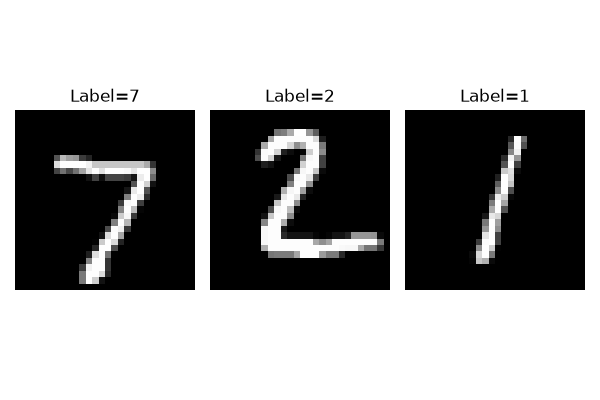
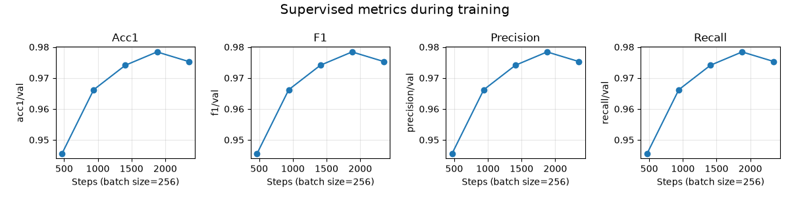
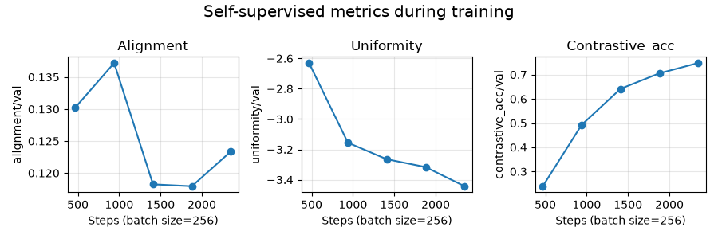

Note
Go to the end to download the full example code.
Visualization of metrics during training of PyTorch-Lightning models¶
The current logic in nidl is to separate the implementation of the actual model (i.e. everything required to fit the model on data) from everything else, such as metrics computation and logging. This is usually performed to check the behavior of a model during training or validation but it is not essential for fitting.
This notebook will show you how to visualize some metrics (either given by
torchmetrics, scikit-learn or a custom function score) during the
training of a Pytorch Lightning model, using the
MetricsCallback callback.
Setup¶
This notebook requires some packages besides nidl. Let’s first start with importing our standard libraries below:
import os
import re
import matplotlib.pyplot as plt
import torch.nn.functional as func
from tensorboard.backend.event_processing import event_accumulator
from torch import concat, nn
from torch.optim import SGD
from torch.utils.data import DataLoader
from torchmetrics import Accuracy, F1Score, Precision, Recall
from torchvision import transforms
from torchvision.datasets import MNIST
from torchvision.utils import make_grid
from nidl.callbacks import MetricsCallback
from nidl.estimators import BaseEstimator, ClassifierMixin
from nidl.estimators.ssl import SimCLR
from nidl.metrics.ssl import (
alignment_score,
contrastive_accuracy_score,
uniformity_score,
)
from nidl.transforms.transforms import MultiViewsTransform
We define some global parameters that will be used throughout the notebook:
data_dir = "/tmp/mnist"
batch_size = 256
num_workers = 10
latent_size = 32
Classification metrics in supervised learning¶
For illustration purposes on how to use the metrics callback, we will focus
on the popular MNIST dataset. It contains 60k training images and
10k test images of size 28x28 pixels. Each image contains a digit from 0 to
9. We will train a simple classification model on these data and log standard
classification metrics (accuracy, F1-score, precision, recall) to understand
how the MetricsCallback works.
We start by loading the MNIST dataset dataset with standard scaling transforms.
scale_transforms = transforms.Compose(
[transforms.ToTensor(), transforms.Normalize((0.5,), (0.5,))]
)
train_xy_dataset = MNIST(data_dir, download=True, transform=scale_transforms)
test_xy_dataset = MNIST(
data_dir, download=True, train=False, transform=scale_transforms
)
Then, we create the data loaders for training and testing the models.
train_xy_loader = DataLoader(
train_xy_dataset,
batch_size=batch_size,
shuffle=True,
drop_last=False,
pin_memory=True,
num_workers=num_workers,
)
test_xy_loader = DataLoader(
test_xy_dataset,
batch_size=batch_size,
shuffle=False,
drop_last=False,
num_workers=num_workers,
)
/opt/hostedtoolcache/Python/3.12.15/x64/lib/python3.12/site-packages/torch/utils/data/dataloader.py:431: UserWarning: This DataLoader will create 10 worker processes in total. Our suggested max number of worker in current system is 4, which is smaller than what this DataLoader is going to create. Please be aware that excessive worker creation might get DataLoader running slow or even freeze, lower the worker number to avoid potential slowness/freeze if necessary.
self.check_worker_number_rationality()
Before starting training classifiers, let’s visualize some examples of the dataset.
def show_images(images, title=None, nrow=8):
grid = make_grid(images, nrow=nrow, normalize=True, pad_value=1)
plt.figure(figsize=(10, 5))
plt.imshow(grid.permute(1, 2, 0).cpu())
if title:
plt.title(title)
plt.axis("off")
plt.show()
images, labels = next(iter(test_xy_loader))
fig, axes = plt.subplots(1, 3, figsize=(6, 4))
for i in range(3):
axes[i].imshow(images[i][0].cpu(), cmap="gray")
axes[i].set_title(f"Label={labels[i].item()}")
axes[i].axis("off")
plt.tight_layout()
plt.show()

/opt/hostedtoolcache/Python/3.12.15/x64/lib/python3.12/site-packages/torch/utils/data/dataloader.py:437: UserWarning: This DataLoader will create 10 worker processes in total. Our suggested max number of worker in current system is 4, which is smaller than what this DataLoader is going to create. Please be aware that excessive worker creation might get DataLoader running slow or even freeze, lower the worker number to avoid potential slowness/freeze if necessary.
self.check_worker_number_rationality()
Supervised training with metrics callback¶
Since MNIST images are small, we can use a simple LeNet-like architecture as encoder, with few parameters. The output dimension of the encoder is set to 32, which is approximately 30 times smaller that the input, but larger than the number of input classes (10).
class LeNet(nn.Module):
def __init__(self, num_classes=10):
super().__init__()
self.latent_size = num_classes
self.conv1 = nn.Conv2d(1, 6, kernel_size=5, stride=1, padding=2)
self.pool1 = nn.AvgPool2d(2, 2)
self.conv2 = nn.Conv2d(6, 16, kernel_size=5)
self.pool2 = nn.AvgPool2d(2, 2)
self.fc1 = nn.Linear(16 * 5 * 5, 120)
self.fc2 = nn.Linear(120, 84)
self.fc3 = nn.Linear(84, num_classes)
def forward(self, x):
x = func.relu(self.conv1(x))
x = self.pool1(x)
x = func.relu(self.conv2(x))
x = self.pool2(x)
x = x.view(x.size(0), -1)
x = func.relu(self.fc1(x))
x = func.relu(self.fc2(x))
return self.fc3(x)
We can now fit a supervised model with cross-entopy loss (PL-compatible). We limit the training to 10 epochs for the sake of time and because it is enough for checking the evolution of the metrics across training.
class SupervisedCrossEntropy(ClassifierMixin, BaseEstimator):
"""Self-contained Pytorch-Lightning model.
Metrics are not computed here since it is not essential to model's
training.
"""
def __init__(
self,
backbone: nn.Module,
lr: float = 1e-2,
momentum: float = 0.9,
weight_decay: float = 5e-4,
**kwargs,
):
super().__init__(ignore=["callbacks", "backbone"], **kwargs)
self.backbone = backbone
self.lr = lr
self.momentum = momentum
self.weight_decay = weight_decay
def configure_optimizers(self):
optimizer = SGD(
self.parameters(),
lr=self.lr,
momentum=self.momentum,
weight_decay=self.weight_decay,
)
return [optimizer]
def forward(self, imgs):
return self.backbone(imgs)
def training_step(
self,
batch,
batch_idx: int,
dataloader_idx: int = 0,
):
imgs, labels = batch
preds = self.backbone(imgs)
loss = nn.functional.cross_entropy(preds, labels)
self.log("loss/train", loss, on_step=True)
return {
"loss": loss,
"preds": preds,
"target": labels,
}
def validation_step(
self,
batch,
batch_idx: int,
dataloader_idx: int = 0,
):
imgs, labels = batch
preds = self.backbone(imgs)
loss = nn.functional.cross_entropy(preds, labels)
self.log("loss/val", loss, on_epoch=True)
return {
"val_loss": loss,
"preds": preds,
"target": labels,
}
We create the metrics callback that will log the classification metrics during training every training step and every validation epoch (default):
Finally, we fit the model:
model = SupervisedCrossEntropy(
backbone=LeNet(),
lr=1e-2,
momentum=0.9,
max_epochs=10,
check_val_every_n_epoch=2,
enable_checkpointing=False,
callbacks=callback, # <-- key part for metrics computation
)
model.fit(train_xy_loader, test_xy_loader)
Sanity Checking: | | 0/? [00:00<?, ?it/s]/opt/hostedtoolcache/Python/3.12.15/x64/lib/python3.12/site-packages/pytorch_lightning/utilities/_pytree.py:21: `isinstance(treespec, LeafSpec)` is deprecated, use `isinstance(treespec, TreeSpec) and treespec.is_leaf()` instead.
Sanity Checking: | | 0/? [00:00<?, ?it/s]
Sanity Checking DataLoader 0: 0%| | 0/2 [00:00<?, ?it/s]
Sanity Checking DataLoader 0: 50%|█████ | 1/2 [00:00<00:00, 5.98it/s]
Sanity Checking DataLoader 0: 100%|██████████| 2/2 [00:00<00:00, 10.09it/s]
/opt/hostedtoolcache/Python/3.12.15/x64/lib/python3.12/site-packages/torch/utils/data/dataloader.py:1102: UserWarning: 'pin_memory' argument is set as true but no accelerator is found, then device pinned memory won't be used.
super().__init__(loader)
Training: | | 0/? [00:00<?, ?it/s]
Training: | | 0/? [00:00<?, ?it/s]
Epoch 0: 0%| | 0/235 [00:00<?, ?it/s]
Epoch 0: 0%| | 1/235 [00:00<01:02, 3.72it/s]
Epoch 0: 0%| | 1/235 [00:00<01:03, 3.71it/s, v_num=16, acc1/train=0.117, f1/train=0.117, precision/train=0.117, recall/train=0.117]
Epoch 0: 1%| | 2/235 [00:00<00:34, 6.81it/s, v_num=16, acc1/train=0.117, f1/train=0.117, precision/train=0.117, recall/train=0.117]
Epoch 0: 1%| | 2/235 [00:00<00:34, 6.80it/s, v_num=16, acc1/train=0.0898, f1/train=0.0898, precision/train=0.0898, recall/train=0.0898]
Epoch 0: 1%|▏ | 3/235 [00:00<00:24, 9.35it/s, v_num=16, acc1/train=0.0898, f1/train=0.0898, precision/train=0.0898, recall/train=0.0898]
Epoch 0: 1%|▏ | 3/235 [00:00<00:24, 9.33it/s, v_num=16, acc1/train=0.117, f1/train=0.117, precision/train=0.117, recall/train=0.117]
Epoch 0: 2%|▏ | 4/235 [00:00<00:19, 11.56it/s, v_num=16, acc1/train=0.117, f1/train=0.117, precision/train=0.117, recall/train=0.117]
Epoch 0: 2%|▏ | 4/235 [00:00<00:20, 11.54it/s, v_num=16, acc1/train=0.117, f1/train=0.117, precision/train=0.117, recall/train=0.117]
Epoch 0: 2%|▏ | 5/235 [00:00<00:16, 13.62it/s, v_num=16, acc1/train=0.117, f1/train=0.117, precision/train=0.117, recall/train=0.117]
Epoch 0: 2%|▏ | 5/235 [00:00<00:16, 13.61it/s, v_num=16, acc1/train=0.105, f1/train=0.105, precision/train=0.105, recall/train=0.105]
Epoch 0: 3%|▎ | 6/235 [00:00<00:14, 15.42it/s, v_num=16, acc1/train=0.105, f1/train=0.105, precision/train=0.105, recall/train=0.105]
Epoch 0: 3%|▎ | 6/235 [00:00<00:14, 15.40it/s, v_num=16, acc1/train=0.105, f1/train=0.105, precision/train=0.105, recall/train=0.105]
Epoch 0: 3%|▎ | 7/235 [00:00<00:13, 16.98it/s, v_num=16, acc1/train=0.105, f1/train=0.105, precision/train=0.105, recall/train=0.105]
Epoch 0: 3%|▎ | 7/235 [00:00<00:13, 16.96it/s, v_num=16, acc1/train=0.0742, f1/train=0.0742, precision/train=0.0742, recall/train=0.0742]
Epoch 0: 3%|▎ | 8/235 [00:00<00:12, 18.31it/s, v_num=16, acc1/train=0.0742, f1/train=0.0742, precision/train=0.0742, recall/train=0.0742]
Epoch 0: 3%|▎ | 8/235 [00:00<00:12, 18.29it/s, v_num=16, acc1/train=0.121, f1/train=0.121, precision/train=0.121, recall/train=0.121]
Epoch 0: 4%|▍ | 9/235 [00:00<00:11, 19.59it/s, v_num=16, acc1/train=0.121, f1/train=0.121, precision/train=0.121, recall/train=0.121]
Epoch 0: 4%|▍ | 9/235 [00:00<00:11, 19.57it/s, v_num=16, acc1/train=0.125, f1/train=0.125, precision/train=0.125, recall/train=0.125]
Epoch 0: 4%|▍ | 10/235 [00:00<00:10, 20.69it/s, v_num=16, acc1/train=0.125, f1/train=0.125, precision/train=0.125, recall/train=0.125]
Epoch 0: 4%|▍ | 10/235 [00:00<00:10, 20.68it/s, v_num=16, acc1/train=0.145, f1/train=0.145, precision/train=0.145, recall/train=0.145]
Epoch 0: 5%|▍ | 11/235 [00:00<00:10, 21.68it/s, v_num=16, acc1/train=0.145, f1/train=0.145, precision/train=0.145, recall/train=0.145]
Epoch 0: 5%|▍ | 11/235 [00:00<00:10, 21.66it/s, v_num=16, acc1/train=0.113, f1/train=0.113, precision/train=0.113, recall/train=0.113]
Epoch 0: 5%|▌ | 12/235 [00:00<00:09, 22.52it/s, v_num=16, acc1/train=0.113, f1/train=0.113, precision/train=0.113, recall/train=0.113]
Epoch 0: 5%|▌ | 12/235 [00:00<00:09, 22.50it/s, v_num=16, acc1/train=0.152, f1/train=0.152, precision/train=0.152, recall/train=0.152]
Epoch 0: 6%|▌ | 13/235 [00:00<00:09, 23.45it/s, v_num=16, acc1/train=0.152, f1/train=0.152, precision/train=0.152, recall/train=0.152]
Epoch 0: 6%|▌ | 13/235 [00:00<00:09, 23.44it/s, v_num=16, acc1/train=0.082, f1/train=0.082, precision/train=0.082, recall/train=0.082]
Epoch 0: 6%|▌ | 14/235 [00:00<00:09, 24.27it/s, v_num=16, acc1/train=0.082, f1/train=0.082, precision/train=0.082, recall/train=0.082]
Epoch 0: 6%|▌ | 14/235 [00:00<00:09, 24.25it/s, v_num=16, acc1/train=0.117, f1/train=0.117, precision/train=0.117, recall/train=0.117]
Epoch 0: 6%|▋ | 15/235 [00:00<00:08, 25.08it/s, v_num=16, acc1/train=0.117, f1/train=0.117, precision/train=0.117, recall/train=0.117]
Epoch 0: 6%|▋ | 15/235 [00:00<00:08, 25.06it/s, v_num=16, acc1/train=0.141, f1/train=0.141, precision/train=0.141, recall/train=0.141]
Epoch 0: 7%|▋ | 16/235 [00:00<00:08, 25.57it/s, v_num=16, acc1/train=0.141, f1/train=0.141, precision/train=0.141, recall/train=0.141]
Epoch 0: 7%|▋ | 16/235 [00:00<00:08, 25.55it/s, v_num=16, acc1/train=0.125, f1/train=0.125, precision/train=0.125, recall/train=0.125]
Epoch 0: 7%|▋ | 17/235 [00:00<00:08, 26.03it/s, v_num=16, acc1/train=0.125, f1/train=0.125, precision/train=0.125, recall/train=0.125]
Epoch 0: 7%|▋ | 17/235 [00:00<00:08, 26.01it/s, v_num=16, acc1/train=0.0508, f1/train=0.0508, precision/train=0.0508, recall/train=0.0508]
Epoch 0: 8%|▊ | 18/235 [00:00<00:08, 26.55it/s, v_num=16, acc1/train=0.0508, f1/train=0.0508, precision/train=0.0508, recall/train=0.0508]
Epoch 0: 8%|▊ | 18/235 [00:00<00:08, 26.53it/s, v_num=16, acc1/train=0.121, f1/train=0.121, precision/train=0.121, recall/train=0.121]
Epoch 0: 8%|▊ | 19/235 [00:00<00:07, 27.18it/s, v_num=16, acc1/train=0.121, f1/train=0.121, precision/train=0.121, recall/train=0.121]
Epoch 0: 8%|▊ | 19/235 [00:00<00:07, 27.17it/s, v_num=16, acc1/train=0.117, f1/train=0.117, precision/train=0.117, recall/train=0.117]
Epoch 0: 9%|▊ | 20/235 [00:00<00:07, 27.72it/s, v_num=16, acc1/train=0.117, f1/train=0.117, precision/train=0.117, recall/train=0.117]
Epoch 0: 9%|▊ | 20/235 [00:00<00:07, 27.70it/s, v_num=16, acc1/train=0.129, f1/train=0.129, precision/train=0.129, recall/train=0.129]
Epoch 0: 9%|▉ | 21/235 [00:00<00:07, 28.23it/s, v_num=16, acc1/train=0.129, f1/train=0.129, precision/train=0.129, recall/train=0.129]
Epoch 0: 9%|▉ | 21/235 [00:00<00:07, 28.22it/s, v_num=16, acc1/train=0.105, f1/train=0.105, precision/train=0.105, recall/train=0.105]
Epoch 0: 9%|▉ | 22/235 [00:00<00:07, 28.68it/s, v_num=16, acc1/train=0.105, f1/train=0.105, precision/train=0.105, recall/train=0.105]
Epoch 0: 9%|▉ | 22/235 [00:00<00:07, 28.66it/s, v_num=16, acc1/train=0.105, f1/train=0.105, precision/train=0.105, recall/train=0.105]
Epoch 0: 10%|▉ | 23/235 [00:00<00:07, 29.13it/s, v_num=16, acc1/train=0.105, f1/train=0.105, precision/train=0.105, recall/train=0.105]
Epoch 0: 10%|▉ | 23/235 [00:00<00:07, 29.11it/s, v_num=16, acc1/train=0.105, f1/train=0.105, precision/train=0.105, recall/train=0.105]
Epoch 0: 10%|█ | 24/235 [00:00<00:07, 29.50it/s, v_num=16, acc1/train=0.105, f1/train=0.105, precision/train=0.105, recall/train=0.105]
Epoch 0: 10%|█ | 24/235 [00:00<00:07, 29.49it/s, v_num=16, acc1/train=0.125, f1/train=0.125, precision/train=0.125, recall/train=0.125]
Epoch 0: 11%|█ | 25/235 [00:00<00:07, 29.92it/s, v_num=16, acc1/train=0.125, f1/train=0.125, precision/train=0.125, recall/train=0.125]
Epoch 0: 11%|█ | 25/235 [00:00<00:07, 29.91it/s, v_num=16, acc1/train=0.102, f1/train=0.102, precision/train=0.102, recall/train=0.102]
Epoch 0: 11%|█ | 26/235 [00:00<00:06, 30.24it/s, v_num=16, acc1/train=0.102, f1/train=0.102, precision/train=0.102, recall/train=0.102]
Epoch 0: 11%|█ | 26/235 [00:00<00:06, 30.23it/s, v_num=16, acc1/train=0.0977, f1/train=0.0977, precision/train=0.0977, recall/train=0.0977]
Epoch 0: 11%|█▏ | 27/235 [00:00<00:06, 30.54it/s, v_num=16, acc1/train=0.0977, f1/train=0.0977, precision/train=0.0977, recall/train=0.0977]
Epoch 0: 11%|█▏ | 27/235 [00:00<00:06, 30.52it/s, v_num=16, acc1/train=0.129, f1/train=0.129, precision/train=0.129, recall/train=0.129]
Epoch 0: 12%|█▏ | 28/235 [00:00<00:06, 30.89it/s, v_num=16, acc1/train=0.129, f1/train=0.129, precision/train=0.129, recall/train=0.129]
Epoch 0: 12%|█▏ | 28/235 [00:00<00:06, 30.87it/s, v_num=16, acc1/train=0.113, f1/train=0.113, precision/train=0.113, recall/train=0.113]
Epoch 0: 12%|█▏ | 29/235 [00:00<00:06, 31.15it/s, v_num=16, acc1/train=0.113, f1/train=0.113, precision/train=0.113, recall/train=0.113]
Epoch 0: 12%|█▏ | 29/235 [00:00<00:06, 31.13it/s, v_num=16, acc1/train=0.121, f1/train=0.121, precision/train=0.121, recall/train=0.121]
Epoch 0: 13%|█▎ | 30/235 [00:00<00:06, 31.47it/s, v_num=16, acc1/train=0.121, f1/train=0.121, precision/train=0.121, recall/train=0.121]
Epoch 0: 13%|█▎ | 30/235 [00:00<00:06, 31.46it/s, v_num=16, acc1/train=0.113, f1/train=0.113, precision/train=0.113, recall/train=0.113]
Epoch 0: 13%|█▎ | 31/235 [00:00<00:06, 31.77it/s, v_num=16, acc1/train=0.113, f1/train=0.113, precision/train=0.113, recall/train=0.113]
Epoch 0: 13%|█▎ | 31/235 [00:00<00:06, 31.76it/s, v_num=16, acc1/train=0.148, f1/train=0.148, precision/train=0.148, recall/train=0.148]
Epoch 0: 14%|█▎ | 32/235 [00:00<00:06, 32.02it/s, v_num=16, acc1/train=0.148, f1/train=0.148, precision/train=0.148, recall/train=0.148]
Epoch 0: 14%|█▎ | 32/235 [00:01<00:06, 32.00it/s, v_num=16, acc1/train=0.133, f1/train=0.133, precision/train=0.133, recall/train=0.133]
Epoch 0: 14%|█▍ | 33/235 [00:01<00:06, 32.30it/s, v_num=16, acc1/train=0.133, f1/train=0.133, precision/train=0.133, recall/train=0.133]
Epoch 0: 14%|█▍ | 33/235 [00:01<00:06, 32.28it/s, v_num=16, acc1/train=0.129, f1/train=0.129, precision/train=0.129, recall/train=0.129]
Epoch 0: 14%|█▍ | 34/235 [00:01<00:06, 32.48it/s, v_num=16, acc1/train=0.129, f1/train=0.129, precision/train=0.129, recall/train=0.129]
Epoch 0: 14%|█▍ | 34/235 [00:01<00:06, 32.47it/s, v_num=16, acc1/train=0.137, f1/train=0.137, precision/train=0.137, recall/train=0.137]
Epoch 0: 15%|█▍ | 35/235 [00:01<00:06, 32.74it/s, v_num=16, acc1/train=0.137, f1/train=0.137, precision/train=0.137, recall/train=0.137]
Epoch 0: 15%|█▍ | 35/235 [00:01<00:06, 32.73it/s, v_num=16, acc1/train=0.133, f1/train=0.133, precision/train=0.133, recall/train=0.133]
Epoch 0: 15%|█▌ | 36/235 [00:01<00:06, 32.99it/s, v_num=16, acc1/train=0.133, f1/train=0.133, precision/train=0.133, recall/train=0.133]
Epoch 0: 15%|█▌ | 36/235 [00:01<00:06, 32.98it/s, v_num=16, acc1/train=0.109, f1/train=0.109, precision/train=0.109, recall/train=0.109]
Epoch 0: 16%|█▌ | 37/235 [00:01<00:05, 33.16it/s, v_num=16, acc1/train=0.109, f1/train=0.109, precision/train=0.109, recall/train=0.109]
Epoch 0: 16%|█▌ | 37/235 [00:01<00:05, 33.15it/s, v_num=16, acc1/train=0.102, f1/train=0.102, precision/train=0.102, recall/train=0.102]
Epoch 0: 16%|█▌ | 38/235 [00:01<00:05, 33.38it/s, v_num=16, acc1/train=0.102, f1/train=0.102, precision/train=0.102, recall/train=0.102]
Epoch 0: 16%|█▌ | 38/235 [00:01<00:05, 33.36it/s, v_num=16, acc1/train=0.082, f1/train=0.082, precision/train=0.082, recall/train=0.082]
Epoch 0: 17%|█▋ | 39/235 [00:01<00:05, 33.52it/s, v_num=16, acc1/train=0.082, f1/train=0.082, precision/train=0.082, recall/train=0.082]
Epoch 0: 17%|█▋ | 39/235 [00:01<00:05, 33.51it/s, v_num=16, acc1/train=0.145, f1/train=0.145, precision/train=0.145, recall/train=0.145]
Epoch 0: 17%|█▋ | 40/235 [00:01<00:05, 33.74it/s, v_num=16, acc1/train=0.145, f1/train=0.145, precision/train=0.145, recall/train=0.145]
Epoch 0: 17%|█▋ | 40/235 [00:01<00:05, 33.73it/s, v_num=16, acc1/train=0.117, f1/train=0.117, precision/train=0.117, recall/train=0.117]
Epoch 0: 17%|█▋ | 41/235 [00:01<00:05, 33.90it/s, v_num=16, acc1/train=0.117, f1/train=0.117, precision/train=0.117, recall/train=0.117]
Epoch 0: 17%|█▋ | 41/235 [00:01<00:05, 33.89it/s, v_num=16, acc1/train=0.129, f1/train=0.129, precision/train=0.129, recall/train=0.129]
Epoch 0: 18%|█▊ | 42/235 [00:01<00:05, 34.10it/s, v_num=16, acc1/train=0.129, f1/train=0.129, precision/train=0.129, recall/train=0.129]
Epoch 0: 18%|█▊ | 42/235 [00:01<00:05, 34.09it/s, v_num=16, acc1/train=0.0898, f1/train=0.0898, precision/train=0.0898, recall/train=0.0898]
Epoch 0: 18%|█▊ | 43/235 [00:01<00:05, 34.11it/s, v_num=16, acc1/train=0.0898, f1/train=0.0898, precision/train=0.0898, recall/train=0.0898]
Epoch 0: 18%|█▊ | 43/235 [00:01<00:05, 34.09it/s, v_num=16, acc1/train=0.0977, f1/train=0.0977, precision/train=0.0977, recall/train=0.0977]
Epoch 0: 19%|█▊ | 44/235 [00:01<00:05, 34.18it/s, v_num=16, acc1/train=0.0977, f1/train=0.0977, precision/train=0.0977, recall/train=0.0977]
Epoch 0: 19%|█▊ | 44/235 [00:01<00:05, 34.16it/s, v_num=16, acc1/train=0.156, f1/train=0.156, precision/train=0.156, recall/train=0.156]
Epoch 0: 19%|█▉ | 45/235 [00:01<00:05, 34.20it/s, v_num=16, acc1/train=0.156, f1/train=0.156, precision/train=0.156, recall/train=0.156]
Epoch 0: 19%|█▉ | 45/235 [00:01<00:05, 34.19it/s, v_num=16, acc1/train=0.109, f1/train=0.109, precision/train=0.109, recall/train=0.109]
Epoch 0: 20%|█▉ | 46/235 [00:01<00:05, 34.27it/s, v_num=16, acc1/train=0.109, f1/train=0.109, precision/train=0.109, recall/train=0.109]
Epoch 0: 20%|█▉ | 46/235 [00:01<00:05, 34.26it/s, v_num=16, acc1/train=0.0859, f1/train=0.0859, precision/train=0.0859, recall/train=0.0859]
Epoch 0: 20%|██ | 47/235 [00:01<00:05, 34.32it/s, v_num=16, acc1/train=0.0859, f1/train=0.0859, precision/train=0.0859, recall/train=0.0859]
Epoch 0: 20%|██ | 47/235 [00:01<00:05, 34.31it/s, v_num=16, acc1/train=0.125, f1/train=0.125, precision/train=0.125, recall/train=0.125]
Epoch 0: 20%|██ | 48/235 [00:01<00:05, 34.38it/s, v_num=16, acc1/train=0.125, f1/train=0.125, precision/train=0.125, recall/train=0.125]
Epoch 0: 20%|██ | 48/235 [00:01<00:05, 34.37it/s, v_num=16, acc1/train=0.0977, f1/train=0.0977, precision/train=0.0977, recall/train=0.0977]
Epoch 0: 21%|██ | 49/235 [00:01<00:05, 34.57it/s, v_num=16, acc1/train=0.0977, f1/train=0.0977, precision/train=0.0977, recall/train=0.0977]
Epoch 0: 21%|██ | 49/235 [00:01<00:05, 34.56it/s, v_num=16, acc1/train=0.105, f1/train=0.105, precision/train=0.105, recall/train=0.105]
Epoch 0: 21%|██▏ | 50/235 [00:01<00:05, 34.70it/s, v_num=16, acc1/train=0.105, f1/train=0.105, precision/train=0.105, recall/train=0.105]
Epoch 0: 21%|██▏ | 50/235 [00:01<00:05, 34.69it/s, v_num=16, acc1/train=0.133, f1/train=0.133, precision/train=0.133, recall/train=0.133]
Epoch 0: 22%|██▏ | 51/235 [00:01<00:05, 34.66it/s, v_num=16, acc1/train=0.133, f1/train=0.133, precision/train=0.133, recall/train=0.133]
Epoch 0: 22%|██▏ | 51/235 [00:01<00:05, 34.65it/s, v_num=16, acc1/train=0.137, f1/train=0.137, precision/train=0.137, recall/train=0.137]
Epoch 0: 22%|██▏ | 52/235 [00:01<00:05, 34.73it/s, v_num=16, acc1/train=0.137, f1/train=0.137, precision/train=0.137, recall/train=0.137]
Epoch 0: 22%|██▏ | 52/235 [00:01<00:05, 34.72it/s, v_num=16, acc1/train=0.156, f1/train=0.156, precision/train=0.156, recall/train=0.156]
Epoch 0: 23%|██▎ | 53/235 [00:01<00:05, 34.78it/s, v_num=16, acc1/train=0.156, f1/train=0.156, precision/train=0.156, recall/train=0.156]
Epoch 0: 23%|██▎ | 53/235 [00:01<00:05, 34.77it/s, v_num=16, acc1/train=0.0938, f1/train=0.0938, precision/train=0.0938, recall/train=0.0938]
Epoch 0: 23%|██▎ | 54/235 [00:01<00:05, 34.81it/s, v_num=16, acc1/train=0.0938, f1/train=0.0938, precision/train=0.0938, recall/train=0.0938]
Epoch 0: 23%|██▎ | 54/235 [00:01<00:05, 34.80it/s, v_num=16, acc1/train=0.0938, f1/train=0.0938, precision/train=0.0938, recall/train=0.0938]
Epoch 0: 23%|██▎ | 55/235 [00:01<00:05, 34.86it/s, v_num=16, acc1/train=0.0938, f1/train=0.0938, precision/train=0.0938, recall/train=0.0938]
Epoch 0: 23%|██▎ | 55/235 [00:01<00:05, 34.85it/s, v_num=16, acc1/train=0.0977, f1/train=0.0977, precision/train=0.0977, recall/train=0.0977]
Epoch 0: 24%|██▍ | 56/235 [00:01<00:05, 34.91it/s, v_num=16, acc1/train=0.0977, f1/train=0.0977, precision/train=0.0977, recall/train=0.0977]
Epoch 0: 24%|██▍ | 56/235 [00:01<00:05, 34.90it/s, v_num=16, acc1/train=0.105, f1/train=0.105, precision/train=0.105, recall/train=0.105]
Epoch 0: 24%|██▍ | 57/235 [00:01<00:05, 34.96it/s, v_num=16, acc1/train=0.105, f1/train=0.105, precision/train=0.105, recall/train=0.105]
Epoch 0: 24%|██▍ | 57/235 [00:01<00:05, 34.95it/s, v_num=16, acc1/train=0.0859, f1/train=0.0859, precision/train=0.0859, recall/train=0.0859]
Epoch 0: 25%|██▍ | 58/235 [00:01<00:05, 35.00it/s, v_num=16, acc1/train=0.0859, f1/train=0.0859, precision/train=0.0859, recall/train=0.0859]
Epoch 0: 25%|██▍ | 58/235 [00:01<00:05, 34.99it/s, v_num=16, acc1/train=0.109, f1/train=0.109, precision/train=0.109, recall/train=0.109]
Epoch 0: 25%|██▌ | 59/235 [00:01<00:05, 35.05it/s, v_num=16, acc1/train=0.109, f1/train=0.109, precision/train=0.109, recall/train=0.109]
Epoch 0: 25%|██▌ | 59/235 [00:01<00:05, 35.04it/s, v_num=16, acc1/train=0.121, f1/train=0.121, precision/train=0.121, recall/train=0.121]
Epoch 0: 26%|██▌ | 60/235 [00:01<00:04, 35.09it/s, v_num=16, acc1/train=0.121, f1/train=0.121, precision/train=0.121, recall/train=0.121]
Epoch 0: 26%|██▌ | 60/235 [00:01<00:04, 35.08it/s, v_num=16, acc1/train=0.117, f1/train=0.117, precision/train=0.117, recall/train=0.117]
Epoch 0: 26%|██▌ | 61/235 [00:01<00:04, 35.13it/s, v_num=16, acc1/train=0.117, f1/train=0.117, precision/train=0.117, recall/train=0.117]
Epoch 0: 26%|██▌ | 61/235 [00:01<00:04, 35.12it/s, v_num=16, acc1/train=0.0977, f1/train=0.0977, precision/train=0.0977, recall/train=0.0977]
Epoch 0: 26%|██▋ | 62/235 [00:01<00:04, 35.17it/s, v_num=16, acc1/train=0.0977, f1/train=0.0977, precision/train=0.0977, recall/train=0.0977]
Epoch 0: 26%|██▋ | 62/235 [00:01<00:04, 35.16it/s, v_num=16, acc1/train=0.121, f1/train=0.121, precision/train=0.121, recall/train=0.121]
Epoch 0: 27%|██▋ | 63/235 [00:01<00:04, 35.21it/s, v_num=16, acc1/train=0.121, f1/train=0.121, precision/train=0.121, recall/train=0.121]
Epoch 0: 27%|██▋ | 63/235 [00:01<00:04, 35.20it/s, v_num=16, acc1/train=0.0977, f1/train=0.0977, precision/train=0.0977, recall/train=0.0977]
Epoch 0: 27%|██▋ | 64/235 [00:01<00:04, 35.25it/s, v_num=16, acc1/train=0.0977, f1/train=0.0977, precision/train=0.0977, recall/train=0.0977]
Epoch 0: 27%|██▋ | 64/235 [00:01<00:04, 35.24it/s, v_num=16, acc1/train=0.156, f1/train=0.156, precision/train=0.156, recall/train=0.156]
Epoch 0: 28%|██▊ | 65/235 [00:01<00:04, 35.28it/s, v_num=16, acc1/train=0.156, f1/train=0.156, precision/train=0.156, recall/train=0.156]
Epoch 0: 28%|██▊ | 65/235 [00:01<00:04, 35.27it/s, v_num=16, acc1/train=0.109, f1/train=0.109, precision/train=0.109, recall/train=0.109]
Epoch 0: 28%|██▊ | 66/235 [00:01<00:04, 35.31it/s, v_num=16, acc1/train=0.109, f1/train=0.109, precision/train=0.109, recall/train=0.109]
Epoch 0: 28%|██▊ | 66/235 [00:01<00:04, 35.30it/s, v_num=16, acc1/train=0.113, f1/train=0.113, precision/train=0.113, recall/train=0.113]
Epoch 0: 29%|██▊ | 67/235 [00:01<00:04, 35.33it/s, v_num=16, acc1/train=0.113, f1/train=0.113, precision/train=0.113, recall/train=0.113]
Epoch 0: 29%|██▊ | 67/235 [00:01<00:04, 35.32it/s, v_num=16, acc1/train=0.102, f1/train=0.102, precision/train=0.102, recall/train=0.102]
Epoch 0: 29%|██▉ | 68/235 [00:01<00:04, 35.37it/s, v_num=16, acc1/train=0.102, f1/train=0.102, precision/train=0.102, recall/train=0.102]
Epoch 0: 29%|██▉ | 68/235 [00:01<00:04, 35.36it/s, v_num=16, acc1/train=0.117, f1/train=0.117, precision/train=0.117, recall/train=0.117]
Epoch 0: 29%|██▉ | 69/235 [00:01<00:04, 35.39it/s, v_num=16, acc1/train=0.117, f1/train=0.117, precision/train=0.117, recall/train=0.117]
Epoch 0: 29%|██▉ | 69/235 [00:01<00:04, 35.39it/s, v_num=16, acc1/train=0.082, f1/train=0.082, precision/train=0.082, recall/train=0.082]
Epoch 0: 30%|██▉ | 70/235 [00:01<00:04, 35.42it/s, v_num=16, acc1/train=0.082, f1/train=0.082, precision/train=0.082, recall/train=0.082]
Epoch 0: 30%|██▉ | 70/235 [00:01<00:04, 35.42it/s, v_num=16, acc1/train=0.152, f1/train=0.152, precision/train=0.152, recall/train=0.152]
Epoch 0: 30%|███ | 71/235 [00:02<00:04, 35.45it/s, v_num=16, acc1/train=0.152, f1/train=0.152, precision/train=0.152, recall/train=0.152]
Epoch 0: 30%|███ | 71/235 [00:02<00:04, 35.45it/s, v_num=16, acc1/train=0.121, f1/train=0.121, precision/train=0.121, recall/train=0.121]
Epoch 0: 31%|███ | 72/235 [00:02<00:04, 35.49it/s, v_num=16, acc1/train=0.121, f1/train=0.121, precision/train=0.121, recall/train=0.121]
Epoch 0: 31%|███ | 72/235 [00:02<00:04, 35.48it/s, v_num=16, acc1/train=0.195, f1/train=0.195, precision/train=0.195, recall/train=0.195]
Epoch 0: 31%|███ | 73/235 [00:02<00:04, 35.52it/s, v_num=16, acc1/train=0.195, f1/train=0.195, precision/train=0.195, recall/train=0.195]
Epoch 0: 31%|███ | 73/235 [00:02<00:04, 35.52it/s, v_num=16, acc1/train=0.242, f1/train=0.242, precision/train=0.242, recall/train=0.242]
Epoch 0: 31%|███▏ | 74/235 [00:02<00:04, 35.54it/s, v_num=16, acc1/train=0.242, f1/train=0.242, precision/train=0.242, recall/train=0.242]
Epoch 0: 31%|███▏ | 74/235 [00:02<00:04, 35.54it/s, v_num=16, acc1/train=0.238, f1/train=0.238, precision/train=0.238, recall/train=0.238]
Epoch 0: 32%|███▏ | 75/235 [00:02<00:04, 35.58it/s, v_num=16, acc1/train=0.238, f1/train=0.238, precision/train=0.238, recall/train=0.238]
Epoch 0: 32%|███▏ | 75/235 [00:02<00:04, 35.57it/s, v_num=16, acc1/train=0.293, f1/train=0.293, precision/train=0.293, recall/train=0.293]
Epoch 0: 32%|███▏ | 76/235 [00:02<00:04, 35.60it/s, v_num=16, acc1/train=0.293, f1/train=0.293, precision/train=0.293, recall/train=0.293]
Epoch 0: 32%|███▏ | 76/235 [00:02<00:04, 35.59it/s, v_num=16, acc1/train=0.281, f1/train=0.281, precision/train=0.281, recall/train=0.281]
Epoch 0: 33%|███▎ | 77/235 [00:02<00:04, 35.64it/s, v_num=16, acc1/train=0.281, f1/train=0.281, precision/train=0.281, recall/train=0.281]
Epoch 0: 33%|███▎ | 77/235 [00:02<00:04, 35.63it/s, v_num=16, acc1/train=0.262, f1/train=0.262, precision/train=0.262, recall/train=0.262]
Epoch 0: 33%|███▎ | 78/235 [00:02<00:04, 35.67it/s, v_num=16, acc1/train=0.262, f1/train=0.262, precision/train=0.262, recall/train=0.262]
Epoch 0: 33%|███▎ | 78/235 [00:02<00:04, 35.66it/s, v_num=16, acc1/train=0.320, f1/train=0.320, precision/train=0.320, recall/train=0.320]
Epoch 0: 34%|███▎ | 79/235 [00:02<00:04, 35.69it/s, v_num=16, acc1/train=0.320, f1/train=0.320, precision/train=0.320, recall/train=0.320]
Epoch 0: 34%|███▎ | 79/235 [00:02<00:04, 35.69it/s, v_num=16, acc1/train=0.305, f1/train=0.305, precision/train=0.305, recall/train=0.305]
Epoch 0: 34%|███▍ | 80/235 [00:02<00:04, 35.73it/s, v_num=16, acc1/train=0.305, f1/train=0.305, precision/train=0.305, recall/train=0.305]
Epoch 0: 34%|███▍ | 80/235 [00:02<00:04, 35.72it/s, v_num=16, acc1/train=0.312, f1/train=0.312, precision/train=0.312, recall/train=0.312]
Epoch 0: 34%|███▍ | 81/235 [00:02<00:04, 35.75it/s, v_num=16, acc1/train=0.312, f1/train=0.312, precision/train=0.312, recall/train=0.312]
Epoch 0: 34%|███▍ | 81/235 [00:02<00:04, 35.74it/s, v_num=16, acc1/train=0.328, f1/train=0.328, precision/train=0.328, recall/train=0.328]
Epoch 0: 35%|███▍ | 82/235 [00:02<00:04, 35.78it/s, v_num=16, acc1/train=0.328, f1/train=0.328, precision/train=0.328, recall/train=0.328]
Epoch 0: 35%|███▍ | 82/235 [00:02<00:04, 35.77it/s, v_num=16, acc1/train=0.348, f1/train=0.348, precision/train=0.348, recall/train=0.348]
Epoch 0: 35%|███▌ | 83/235 [00:02<00:04, 35.81it/s, v_num=16, acc1/train=0.348, f1/train=0.348, precision/train=0.348, recall/train=0.348]
Epoch 0: 35%|███▌ | 83/235 [00:02<00:04, 35.80it/s, v_num=16, acc1/train=0.379, f1/train=0.379, precision/train=0.379, recall/train=0.379]
Epoch 0: 36%|███▌ | 84/235 [00:02<00:04, 35.83it/s, v_num=16, acc1/train=0.379, f1/train=0.379, precision/train=0.379, recall/train=0.379]
Epoch 0: 36%|███▌ | 84/235 [00:02<00:04, 35.82it/s, v_num=16, acc1/train=0.320, f1/train=0.320, precision/train=0.320, recall/train=0.320]
Epoch 0: 36%|███▌ | 85/235 [00:02<00:04, 35.85it/s, v_num=16, acc1/train=0.320, f1/train=0.320, precision/train=0.320, recall/train=0.320]
Epoch 0: 36%|███▌ | 85/235 [00:02<00:04, 35.85it/s, v_num=16, acc1/train=0.426, f1/train=0.426, precision/train=0.426, recall/train=0.426]
Epoch 0: 37%|███▋ | 86/235 [00:02<00:04, 35.88it/s, v_num=16, acc1/train=0.426, f1/train=0.426, precision/train=0.426, recall/train=0.426]
Epoch 0: 37%|███▋ | 86/235 [00:02<00:04, 35.87it/s, v_num=16, acc1/train=0.477, f1/train=0.477, precision/train=0.477, recall/train=0.477]
Epoch 0: 37%|███▋ | 87/235 [00:02<00:04, 35.90it/s, v_num=16, acc1/train=0.477, f1/train=0.477, precision/train=0.477, recall/train=0.477]
Epoch 0: 37%|███▋ | 87/235 [00:02<00:04, 35.90it/s, v_num=16, acc1/train=0.520, f1/train=0.520, precision/train=0.520, recall/train=0.520]
Epoch 0: 37%|███▋ | 88/235 [00:02<00:04, 35.92it/s, v_num=16, acc1/train=0.520, f1/train=0.520, precision/train=0.520, recall/train=0.520]
Epoch 0: 37%|███▋ | 88/235 [00:02<00:04, 35.92it/s, v_num=16, acc1/train=0.551, f1/train=0.551, precision/train=0.551, recall/train=0.551]
Epoch 0: 38%|███▊ | 89/235 [00:02<00:04, 35.95it/s, v_num=16, acc1/train=0.551, f1/train=0.551, precision/train=0.551, recall/train=0.551]
Epoch 0: 38%|███▊ | 89/235 [00:02<00:04, 35.95it/s, v_num=16, acc1/train=0.559, f1/train=0.559, precision/train=0.559, recall/train=0.559]
Epoch 0: 38%|███▊ | 90/235 [00:02<00:04, 35.97it/s, v_num=16, acc1/train=0.559, f1/train=0.559, precision/train=0.559, recall/train=0.559]
Epoch 0: 38%|███▊ | 90/235 [00:02<00:04, 35.97it/s, v_num=16, acc1/train=0.578, f1/train=0.578, precision/train=0.578, recall/train=0.578]
Epoch 0: 39%|███▊ | 91/235 [00:02<00:04, 36.00it/s, v_num=16, acc1/train=0.578, f1/train=0.578, precision/train=0.578, recall/train=0.578]
Epoch 0: 39%|███▊ | 91/235 [00:02<00:04, 35.99it/s, v_num=16, acc1/train=0.570, f1/train=0.570, precision/train=0.570, recall/train=0.570]
Epoch 0: 39%|███▉ | 92/235 [00:02<00:03, 36.01it/s, v_num=16, acc1/train=0.570, f1/train=0.570, precision/train=0.570, recall/train=0.570]
Epoch 0: 39%|███▉ | 92/235 [00:02<00:03, 36.01it/s, v_num=16, acc1/train=0.668, f1/train=0.668, precision/train=0.668, recall/train=0.668]
Epoch 0: 40%|███▉ | 93/235 [00:02<00:03, 36.04it/s, v_num=16, acc1/train=0.668, f1/train=0.668, precision/train=0.668, recall/train=0.668]
Epoch 0: 40%|███▉ | 93/235 [00:02<00:03, 36.03it/s, v_num=16, acc1/train=0.508, f1/train=0.508, precision/train=0.508, recall/train=0.508]
Epoch 0: 40%|████ | 94/235 [00:02<00:03, 36.06it/s, v_num=16, acc1/train=0.508, f1/train=0.508, precision/train=0.508, recall/train=0.508]
Epoch 0: 40%|████ | 94/235 [00:02<00:03, 36.06it/s, v_num=16, acc1/train=0.555, f1/train=0.555, precision/train=0.555, recall/train=0.555]
Epoch 0: 40%|████ | 95/235 [00:02<00:03, 36.08it/s, v_num=16, acc1/train=0.555, f1/train=0.555, precision/train=0.555, recall/train=0.555]
Epoch 0: 40%|████ | 95/235 [00:02<00:03, 36.07it/s, v_num=16, acc1/train=0.613, f1/train=0.613, precision/train=0.613, recall/train=0.613]
Epoch 0: 41%|████ | 96/235 [00:02<00:03, 36.10it/s, v_num=16, acc1/train=0.613, f1/train=0.613, precision/train=0.613, recall/train=0.613]
Epoch 0: 41%|████ | 96/235 [00:02<00:03, 36.09it/s, v_num=16, acc1/train=0.625, f1/train=0.625, precision/train=0.625, recall/train=0.625]
Epoch 0: 41%|████▏ | 97/235 [00:02<00:03, 36.06it/s, v_num=16, acc1/train=0.625, f1/train=0.625, precision/train=0.625, recall/train=0.625]
Epoch 0: 41%|████▏ | 97/235 [00:02<00:03, 36.06it/s, v_num=16, acc1/train=0.645, f1/train=0.645, precision/train=0.645, recall/train=0.645]
Epoch 0: 42%|████▏ | 98/235 [00:02<00:03, 36.02it/s, v_num=16, acc1/train=0.645, f1/train=0.645, precision/train=0.645, recall/train=0.645]
Epoch 0: 42%|████▏ | 98/235 [00:02<00:03, 36.01it/s, v_num=16, acc1/train=0.723, f1/train=0.723, precision/train=0.723, recall/train=0.723]
Epoch 0: 42%|████▏ | 99/235 [00:02<00:03, 36.00it/s, v_num=16, acc1/train=0.723, f1/train=0.723, precision/train=0.723, recall/train=0.723]
Epoch 0: 42%|████▏ | 99/235 [00:02<00:03, 35.99it/s, v_num=16, acc1/train=0.621, f1/train=0.621, precision/train=0.621, recall/train=0.621]
Epoch 0: 43%|████▎ | 100/235 [00:02<00:03, 36.01it/s, v_num=16, acc1/train=0.621, f1/train=0.621, precision/train=0.621, recall/train=0.621]
Epoch 0: 43%|████▎ | 100/235 [00:02<00:03, 36.01it/s, v_num=16, acc1/train=0.676, f1/train=0.676, precision/train=0.676, recall/train=0.676]
Epoch 0: 43%|████▎ | 101/235 [00:02<00:03, 36.02it/s, v_num=16, acc1/train=0.676, f1/train=0.676, precision/train=0.676, recall/train=0.676]
Epoch 0: 43%|████▎ | 101/235 [00:02<00:03, 36.01it/s, v_num=16, acc1/train=0.684, f1/train=0.684, precision/train=0.684, recall/train=0.684]
Epoch 0: 43%|████▎ | 102/235 [00:02<00:03, 36.04it/s, v_num=16, acc1/train=0.684, f1/train=0.684, precision/train=0.684, recall/train=0.684]
Epoch 0: 43%|████▎ | 102/235 [00:02<00:03, 36.03it/s, v_num=16, acc1/train=0.734, f1/train=0.734, precision/train=0.734, recall/train=0.734]
Epoch 0: 44%|████▍ | 103/235 [00:02<00:03, 36.05it/s, v_num=16, acc1/train=0.734, f1/train=0.734, precision/train=0.734, recall/train=0.734]
Epoch 0: 44%|████▍ | 103/235 [00:02<00:03, 36.04it/s, v_num=16, acc1/train=0.691, f1/train=0.691, precision/train=0.691, recall/train=0.691]
Epoch 0: 44%|████▍ | 104/235 [00:02<00:03, 36.06it/s, v_num=16, acc1/train=0.691, f1/train=0.691, precision/train=0.691, recall/train=0.691]
Epoch 0: 44%|████▍ | 104/235 [00:02<00:03, 36.06it/s, v_num=16, acc1/train=0.711, f1/train=0.711, precision/train=0.711, recall/train=0.711]
Epoch 0: 45%|████▍ | 105/235 [00:02<00:03, 36.09it/s, v_num=16, acc1/train=0.711, f1/train=0.711, precision/train=0.711, recall/train=0.711]
Epoch 0: 45%|████▍ | 105/235 [00:02<00:03, 36.08it/s, v_num=16, acc1/train=0.711, f1/train=0.711, precision/train=0.711, recall/train=0.711]
Epoch 0: 45%|████▌ | 106/235 [00:02<00:03, 36.10it/s, v_num=16, acc1/train=0.711, f1/train=0.711, precision/train=0.711, recall/train=0.711]
Epoch 0: 45%|████▌ | 106/235 [00:02<00:03, 36.10it/s, v_num=16, acc1/train=0.688, f1/train=0.688, precision/train=0.688, recall/train=0.688]
Epoch 0: 46%|████▌ | 107/235 [00:02<00:03, 36.12it/s, v_num=16, acc1/train=0.688, f1/train=0.688, precision/train=0.688, recall/train=0.688]
Epoch 0: 46%|████▌ | 107/235 [00:02<00:03, 36.12it/s, v_num=16, acc1/train=0.703, f1/train=0.703, precision/train=0.703, recall/train=0.703]
Epoch 0: 46%|████▌ | 108/235 [00:02<00:03, 36.14it/s, v_num=16, acc1/train=0.703, f1/train=0.703, precision/train=0.703, recall/train=0.703]
Epoch 0: 46%|████▌ | 108/235 [00:02<00:03, 36.13it/s, v_num=16, acc1/train=0.648, f1/train=0.648, precision/train=0.648, recall/train=0.648]
Epoch 0: 46%|████▋ | 109/235 [00:03<00:03, 36.16it/s, v_num=16, acc1/train=0.648, f1/train=0.648, precision/train=0.648, recall/train=0.648]
Epoch 0: 46%|████▋ | 109/235 [00:03<00:03, 36.16it/s, v_num=16, acc1/train=0.688, f1/train=0.688, precision/train=0.688, recall/train=0.688]
Epoch 0: 47%|████▋ | 110/235 [00:03<00:03, 36.17it/s, v_num=16, acc1/train=0.688, f1/train=0.688, precision/train=0.688, recall/train=0.688]
Epoch 0: 47%|████▋ | 110/235 [00:03<00:03, 36.17it/s, v_num=16, acc1/train=0.715, f1/train=0.715, precision/train=0.715, recall/train=0.715]
Epoch 0: 47%|████▋ | 111/235 [00:03<00:03, 36.18it/s, v_num=16, acc1/train=0.715, f1/train=0.715, precision/train=0.715, recall/train=0.715]
Epoch 0: 47%|████▋ | 111/235 [00:03<00:03, 36.18it/s, v_num=16, acc1/train=0.684, f1/train=0.684, precision/train=0.684, recall/train=0.684]
Epoch 0: 48%|████▊ | 112/235 [00:03<00:03, 36.20it/s, v_num=16, acc1/train=0.684, f1/train=0.684, precision/train=0.684, recall/train=0.684]
Epoch 0: 48%|████▊ | 112/235 [00:03<00:03, 36.20it/s, v_num=16, acc1/train=0.758, f1/train=0.758, precision/train=0.758, recall/train=0.758]
Epoch 0: 48%|████▊ | 113/235 [00:03<00:03, 36.22it/s, v_num=16, acc1/train=0.758, f1/train=0.758, precision/train=0.758, recall/train=0.758]
Epoch 0: 48%|████▊ | 113/235 [00:03<00:03, 36.21it/s, v_num=16, acc1/train=0.723, f1/train=0.723, precision/train=0.723, recall/train=0.723]
Epoch 0: 49%|████▊ | 114/235 [00:03<00:03, 36.24it/s, v_num=16, acc1/train=0.723, f1/train=0.723, precision/train=0.723, recall/train=0.723]
Epoch 0: 49%|████▊ | 114/235 [00:03<00:03, 36.23it/s, v_num=16, acc1/train=0.684, f1/train=0.684, precision/train=0.684, recall/train=0.684]
Epoch 0: 49%|████▉ | 115/235 [00:03<00:03, 36.25it/s, v_num=16, acc1/train=0.684, f1/train=0.684, precision/train=0.684, recall/train=0.684]
Epoch 0: 49%|████▉ | 115/235 [00:03<00:03, 36.25it/s, v_num=16, acc1/train=0.703, f1/train=0.703, precision/train=0.703, recall/train=0.703]
Epoch 0: 49%|████▉ | 116/235 [00:03<00:03, 36.27it/s, v_num=16, acc1/train=0.703, f1/train=0.703, precision/train=0.703, recall/train=0.703]
Epoch 0: 49%|████▉ | 116/235 [00:03<00:03, 36.26it/s, v_num=16, acc1/train=0.715, f1/train=0.715, precision/train=0.715, recall/train=0.715]
Epoch 0: 50%|████▉ | 117/235 [00:03<00:03, 36.28it/s, v_num=16, acc1/train=0.715, f1/train=0.715, precision/train=0.715, recall/train=0.715]
Epoch 0: 50%|████▉ | 117/235 [00:03<00:03, 36.28it/s, v_num=16, acc1/train=0.746, f1/train=0.746, precision/train=0.746, recall/train=0.746]
Epoch 0: 50%|█████ | 118/235 [00:03<00:03, 36.30it/s, v_num=16, acc1/train=0.746, f1/train=0.746, precision/train=0.746, recall/train=0.746]
Epoch 0: 50%|█████ | 118/235 [00:03<00:03, 36.29it/s, v_num=16, acc1/train=0.789, f1/train=0.789, precision/train=0.789, recall/train=0.789]
Epoch 0: 51%|█████ | 119/235 [00:03<00:03, 36.32it/s, v_num=16, acc1/train=0.789, f1/train=0.789, precision/train=0.789, recall/train=0.789]
Epoch 0: 51%|█████ | 119/235 [00:03<00:03, 36.31it/s, v_num=16, acc1/train=0.715, f1/train=0.715, precision/train=0.715, recall/train=0.715]
Epoch 0: 51%|█████ | 120/235 [00:03<00:03, 36.33it/s, v_num=16, acc1/train=0.715, f1/train=0.715, precision/train=0.715, recall/train=0.715]
Epoch 0: 51%|█████ | 120/235 [00:03<00:03, 36.32it/s, v_num=16, acc1/train=0.812, f1/train=0.812, precision/train=0.812, recall/train=0.812]
Epoch 0: 51%|█████▏ | 121/235 [00:03<00:03, 36.34it/s, v_num=16, acc1/train=0.812, f1/train=0.812, precision/train=0.812, recall/train=0.812]
Epoch 0: 51%|█████▏ | 121/235 [00:03<00:03, 36.34it/s, v_num=16, acc1/train=0.750, f1/train=0.750, precision/train=0.750, recall/train=0.750]
Epoch 0: 52%|█████▏ | 122/235 [00:03<00:03, 36.36it/s, v_num=16, acc1/train=0.750, f1/train=0.750, precision/train=0.750, recall/train=0.750]
Epoch 0: 52%|█████▏ | 122/235 [00:03<00:03, 36.35it/s, v_num=16, acc1/train=0.758, f1/train=0.758, precision/train=0.758, recall/train=0.758]
Epoch 0: 52%|█████▏ | 123/235 [00:03<00:03, 36.37it/s, v_num=16, acc1/train=0.758, f1/train=0.758, precision/train=0.758, recall/train=0.758]
Epoch 0: 52%|█████▏ | 123/235 [00:03<00:03, 36.37it/s, v_num=16, acc1/train=0.820, f1/train=0.820, precision/train=0.820, recall/train=0.820]
Epoch 0: 53%|█████▎ | 124/235 [00:03<00:03, 36.39it/s, v_num=16, acc1/train=0.820, f1/train=0.820, precision/train=0.820, recall/train=0.820]
Epoch 0: 53%|█████▎ | 124/235 [00:03<00:03, 36.38it/s, v_num=16, acc1/train=0.816, f1/train=0.816, precision/train=0.816, recall/train=0.816]
Epoch 0: 53%|█████▎ | 125/235 [00:03<00:03, 36.40it/s, v_num=16, acc1/train=0.816, f1/train=0.816, precision/train=0.816, recall/train=0.816]
Epoch 0: 53%|█████▎ | 125/235 [00:03<00:03, 36.40it/s, v_num=16, acc1/train=0.852, f1/train=0.852, precision/train=0.852, recall/train=0.852]
Epoch 0: 54%|█████▎ | 126/235 [00:03<00:02, 36.42it/s, v_num=16, acc1/train=0.852, f1/train=0.852, precision/train=0.852, recall/train=0.852]
Epoch 0: 54%|█████▎ | 126/235 [00:03<00:02, 36.41it/s, v_num=16, acc1/train=0.812, f1/train=0.812, precision/train=0.812, recall/train=0.812]
Epoch 0: 54%|█████▍ | 127/235 [00:03<00:02, 36.43it/s, v_num=16, acc1/train=0.812, f1/train=0.812, precision/train=0.812, recall/train=0.812]
Epoch 0: 54%|█████▍ | 127/235 [00:03<00:02, 36.42it/s, v_num=16, acc1/train=0.805, f1/train=0.805, precision/train=0.805, recall/train=0.805]
Epoch 0: 54%|█████▍ | 128/235 [00:03<00:02, 36.44it/s, v_num=16, acc1/train=0.805, f1/train=0.805, precision/train=0.805, recall/train=0.805]
Epoch 0: 54%|█████▍ | 128/235 [00:03<00:02, 36.44it/s, v_num=16, acc1/train=0.766, f1/train=0.766, precision/train=0.766, recall/train=0.766]
Epoch 0: 55%|█████▍ | 129/235 [00:03<00:02, 36.45it/s, v_num=16, acc1/train=0.766, f1/train=0.766, precision/train=0.766, recall/train=0.766]
Epoch 0: 55%|█████▍ | 129/235 [00:03<00:02, 36.45it/s, v_num=16, acc1/train=0.840, f1/train=0.840, precision/train=0.840, recall/train=0.840]
Epoch 0: 55%|█████▌ | 130/235 [00:03<00:02, 36.47it/s, v_num=16, acc1/train=0.840, f1/train=0.840, precision/train=0.840, recall/train=0.840]
Epoch 0: 55%|█████▌ | 130/235 [00:03<00:02, 36.47it/s, v_num=16, acc1/train=0.824, f1/train=0.824, precision/train=0.824, recall/train=0.824]
Epoch 0: 56%|█████▌ | 131/235 [00:03<00:02, 36.48it/s, v_num=16, acc1/train=0.824, f1/train=0.824, precision/train=0.824, recall/train=0.824]
Epoch 0: 56%|█████▌ | 131/235 [00:03<00:02, 36.48it/s, v_num=16, acc1/train=0.836, f1/train=0.836, precision/train=0.836, recall/train=0.836]
Epoch 0: 56%|█████▌ | 132/235 [00:03<00:02, 36.49it/s, v_num=16, acc1/train=0.836, f1/train=0.836, precision/train=0.836, recall/train=0.836]
Epoch 0: 56%|█████▌ | 132/235 [00:03<00:02, 36.49it/s, v_num=16, acc1/train=0.832, f1/train=0.832, precision/train=0.832, recall/train=0.832]
Epoch 0: 57%|█████▋ | 133/235 [00:03<00:02, 36.51it/s, v_num=16, acc1/train=0.832, f1/train=0.832, precision/train=0.832, recall/train=0.832]
Epoch 0: 57%|█████▋ | 133/235 [00:03<00:02, 36.50it/s, v_num=16, acc1/train=0.812, f1/train=0.812, precision/train=0.812, recall/train=0.812]
Epoch 0: 57%|█████▋ | 134/235 [00:03<00:02, 36.54it/s, v_num=16, acc1/train=0.812, f1/train=0.812, precision/train=0.812, recall/train=0.812]
Epoch 0: 57%|█████▋ | 134/235 [00:03<00:02, 36.54it/s, v_num=16, acc1/train=0.867, f1/train=0.867, precision/train=0.867, recall/train=0.867]
Epoch 0: 57%|█████▋ | 135/235 [00:03<00:02, 36.60it/s, v_num=16, acc1/train=0.867, f1/train=0.867, precision/train=0.867, recall/train=0.867]
Epoch 0: 57%|█████▋ | 135/235 [00:03<00:02, 36.59it/s, v_num=16, acc1/train=0.855, f1/train=0.855, precision/train=0.855, recall/train=0.855]
Epoch 0: 58%|█████▊ | 136/235 [00:03<00:02, 36.63it/s, v_num=16, acc1/train=0.855, f1/train=0.855, precision/train=0.855, recall/train=0.855]
Epoch 0: 58%|█████▊ | 136/235 [00:03<00:02, 36.63it/s, v_num=16, acc1/train=0.789, f1/train=0.789, precision/train=0.789, recall/train=0.789]
Epoch 0: 58%|█████▊ | 137/235 [00:03<00:02, 36.68it/s, v_num=16, acc1/train=0.789, f1/train=0.789, precision/train=0.789, recall/train=0.789]
Epoch 0: 58%|█████▊ | 137/235 [00:03<00:02, 36.68it/s, v_num=16, acc1/train=0.816, f1/train=0.816, precision/train=0.816, recall/train=0.816]
Epoch 0: 59%|█████▊ | 138/235 [00:03<00:02, 36.72it/s, v_num=16, acc1/train=0.816, f1/train=0.816, precision/train=0.816, recall/train=0.816]
Epoch 0: 59%|█████▊ | 138/235 [00:03<00:02, 36.72it/s, v_num=16, acc1/train=0.793, f1/train=0.793, precision/train=0.793, recall/train=0.793]
Epoch 0: 59%|█████▉ | 139/235 [00:03<00:02, 36.75it/s, v_num=16, acc1/train=0.793, f1/train=0.793, precision/train=0.793, recall/train=0.793]
Epoch 0: 59%|█████▉ | 139/235 [00:03<00:02, 36.74it/s, v_num=16, acc1/train=0.824, f1/train=0.824, precision/train=0.824, recall/train=0.824]
Epoch 0: 60%|█████▉ | 140/235 [00:03<00:02, 36.78it/s, v_num=16, acc1/train=0.824, f1/train=0.824, precision/train=0.824, recall/train=0.824]
Epoch 0: 60%|█████▉ | 140/235 [00:03<00:02, 36.77it/s, v_num=16, acc1/train=0.844, f1/train=0.844, precision/train=0.844, recall/train=0.844]
Epoch 0: 60%|██████ | 141/235 [00:03<00:02, 36.82it/s, v_num=16, acc1/train=0.844, f1/train=0.844, precision/train=0.844, recall/train=0.844]
Epoch 0: 60%|██████ | 141/235 [00:03<00:02, 36.82it/s, v_num=16, acc1/train=0.766, f1/train=0.766, precision/train=0.766, recall/train=0.766]
Epoch 0: 60%|██████ | 142/235 [00:03<00:02, 36.85it/s, v_num=16, acc1/train=0.766, f1/train=0.766, precision/train=0.766, recall/train=0.766]
Epoch 0: 60%|██████ | 142/235 [00:03<00:02, 36.85it/s, v_num=16, acc1/train=0.832, f1/train=0.832, precision/train=0.832, recall/train=0.832]
Epoch 0: 61%|██████ | 143/235 [00:03<00:02, 36.89it/s, v_num=16, acc1/train=0.832, f1/train=0.832, precision/train=0.832, recall/train=0.832]
Epoch 0: 61%|██████ | 143/235 [00:03<00:02, 36.89it/s, v_num=16, acc1/train=0.797, f1/train=0.797, precision/train=0.797, recall/train=0.797]
Epoch 0: 61%|██████▏ | 144/235 [00:03<00:02, 36.92it/s, v_num=16, acc1/train=0.797, f1/train=0.797, precision/train=0.797, recall/train=0.797]
Epoch 0: 61%|██████▏ | 144/235 [00:03<00:02, 36.91it/s, v_num=16, acc1/train=0.836, f1/train=0.836, precision/train=0.836, recall/train=0.836]
Epoch 0: 62%|██████▏ | 145/235 [00:03<00:02, 36.96it/s, v_num=16, acc1/train=0.836, f1/train=0.836, precision/train=0.836, recall/train=0.836]
Epoch 0: 62%|██████▏ | 145/235 [00:03<00:02, 36.96it/s, v_num=16, acc1/train=0.828, f1/train=0.828, precision/train=0.828, recall/train=0.828]
Epoch 0: 62%|██████▏ | 146/235 [00:03<00:02, 37.00it/s, v_num=16, acc1/train=0.828, f1/train=0.828, precision/train=0.828, recall/train=0.828]
Epoch 0: 62%|██████▏ | 146/235 [00:03<00:02, 36.99it/s, v_num=16, acc1/train=0.801, f1/train=0.801, precision/train=0.801, recall/train=0.801]
Epoch 0: 63%|██████▎ | 147/235 [00:03<00:02, 37.04it/s, v_num=16, acc1/train=0.801, f1/train=0.801, precision/train=0.801, recall/train=0.801]
Epoch 0: 63%|██████▎ | 147/235 [00:03<00:02, 37.03it/s, v_num=16, acc1/train=0.848, f1/train=0.848, precision/train=0.848, recall/train=0.848]
Epoch 0: 63%|██████▎ | 148/235 [00:03<00:02, 37.07it/s, v_num=16, acc1/train=0.848, f1/train=0.848, precision/train=0.848, recall/train=0.848]
Epoch 0: 63%|██████▎ | 148/235 [00:03<00:02, 37.07it/s, v_num=16, acc1/train=0.816, f1/train=0.816, precision/train=0.816, recall/train=0.816]
Epoch 0: 63%|██████▎ | 149/235 [00:04<00:02, 37.11it/s, v_num=16, acc1/train=0.816, f1/train=0.816, precision/train=0.816, recall/train=0.816]
Epoch 0: 63%|██████▎ | 149/235 [00:04<00:02, 37.11it/s, v_num=16, acc1/train=0.840, f1/train=0.840, precision/train=0.840, recall/train=0.840]
Epoch 0: 64%|██████▍ | 150/235 [00:04<00:02, 37.15it/s, v_num=16, acc1/train=0.840, f1/train=0.840, precision/train=0.840, recall/train=0.840]
Epoch 0: 64%|██████▍ | 150/235 [00:04<00:02, 37.15it/s, v_num=16, acc1/train=0.832, f1/train=0.832, precision/train=0.832, recall/train=0.832]
Epoch 0: 64%|██████▍ | 151/235 [00:04<00:02, 37.18it/s, v_num=16, acc1/train=0.832, f1/train=0.832, precision/train=0.832, recall/train=0.832]
Epoch 0: 64%|██████▍ | 151/235 [00:04<00:02, 37.17it/s, v_num=16, acc1/train=0.852, f1/train=0.852, precision/train=0.852, recall/train=0.852]
Epoch 0: 65%|██████▍ | 152/235 [00:04<00:02, 37.16it/s, v_num=16, acc1/train=0.852, f1/train=0.852, precision/train=0.852, recall/train=0.852]
Epoch 0: 65%|██████▍ | 152/235 [00:04<00:02, 37.16it/s, v_num=16, acc1/train=0.891, f1/train=0.891, precision/train=0.891, recall/train=0.891]
Epoch 0: 65%|██████▌ | 153/235 [00:04<00:02, 37.17it/s, v_num=16, acc1/train=0.891, f1/train=0.891, precision/train=0.891, recall/train=0.891]
Epoch 0: 65%|██████▌ | 153/235 [00:04<00:02, 37.16it/s, v_num=16, acc1/train=0.891, f1/train=0.891, precision/train=0.891, recall/train=0.891]
Epoch 0: 66%|██████▌ | 154/235 [00:04<00:02, 37.17it/s, v_num=16, acc1/train=0.891, f1/train=0.891, precision/train=0.891, recall/train=0.891]
Epoch 0: 66%|██████▌ | 154/235 [00:04<00:02, 37.17it/s, v_num=16, acc1/train=0.855, f1/train=0.855, precision/train=0.855, recall/train=0.855]
Epoch 0: 66%|██████▌ | 155/235 [00:04<00:02, 37.18it/s, v_num=16, acc1/train=0.855, f1/train=0.855, precision/train=0.855, recall/train=0.855]
Epoch 0: 66%|██████▌ | 155/235 [00:04<00:02, 37.18it/s, v_num=16, acc1/train=0.844, f1/train=0.844, precision/train=0.844, recall/train=0.844]
Epoch 0: 66%|██████▋ | 156/235 [00:04<00:02, 37.19it/s, v_num=16, acc1/train=0.844, f1/train=0.844, precision/train=0.844, recall/train=0.844]
Epoch 0: 66%|██████▋ | 156/235 [00:04<00:02, 37.19it/s, v_num=16, acc1/train=0.887, f1/train=0.887, precision/train=0.887, recall/train=0.887]
Epoch 0: 67%|██████▋ | 157/235 [00:04<00:02, 37.19it/s, v_num=16, acc1/train=0.887, f1/train=0.887, precision/train=0.887, recall/train=0.887]
Epoch 0: 67%|██████▋ | 157/235 [00:04<00:02, 37.19it/s, v_num=16, acc1/train=0.883, f1/train=0.883, precision/train=0.883, recall/train=0.883]
Epoch 0: 67%|██████▋ | 158/235 [00:04<00:02, 37.20it/s, v_num=16, acc1/train=0.883, f1/train=0.883, precision/train=0.883, recall/train=0.883]
Epoch 0: 67%|██████▋ | 158/235 [00:04<00:02, 37.20it/s, v_num=16, acc1/train=0.828, f1/train=0.828, precision/train=0.828, recall/train=0.828]
Epoch 0: 68%|██████▊ | 159/235 [00:04<00:02, 37.21it/s, v_num=16, acc1/train=0.828, f1/train=0.828, precision/train=0.828, recall/train=0.828]
Epoch 0: 68%|██████▊ | 159/235 [00:04<00:02, 37.21it/s, v_num=16, acc1/train=0.863, f1/train=0.863, precision/train=0.863, recall/train=0.863]
Epoch 0: 68%|██████▊ | 160/235 [00:04<00:02, 37.21it/s, v_num=16, acc1/train=0.863, f1/train=0.863, precision/train=0.863, recall/train=0.863]
Epoch 0: 68%|██████▊ | 160/235 [00:04<00:02, 37.21it/s, v_num=16, acc1/train=0.820, f1/train=0.820, precision/train=0.820, recall/train=0.820]
Epoch 0: 69%|██████▊ | 161/235 [00:04<00:01, 37.21it/s, v_num=16, acc1/train=0.820, f1/train=0.820, precision/train=0.820, recall/train=0.820]
Epoch 0: 69%|██████▊ | 161/235 [00:04<00:01, 37.21it/s, v_num=16, acc1/train=0.852, f1/train=0.852, precision/train=0.852, recall/train=0.852]
Epoch 0: 69%|██████▉ | 162/235 [00:04<00:01, 37.22it/s, v_num=16, acc1/train=0.852, f1/train=0.852, precision/train=0.852, recall/train=0.852]
Epoch 0: 69%|██████▉ | 162/235 [00:04<00:01, 37.21it/s, v_num=16, acc1/train=0.887, f1/train=0.887, precision/train=0.887, recall/train=0.887]
Epoch 0: 69%|██████▉ | 163/235 [00:04<00:01, 37.23it/s, v_num=16, acc1/train=0.887, f1/train=0.887, precision/train=0.887, recall/train=0.887]
Epoch 0: 69%|██████▉ | 163/235 [00:04<00:01, 37.22it/s, v_num=16, acc1/train=0.848, f1/train=0.848, precision/train=0.848, recall/train=0.848]
Epoch 0: 70%|██████▉ | 164/235 [00:04<00:01, 37.21it/s, v_num=16, acc1/train=0.848, f1/train=0.848, precision/train=0.848, recall/train=0.848]
Epoch 0: 70%|██████▉ | 164/235 [00:04<00:01, 37.21it/s, v_num=16, acc1/train=0.879, f1/train=0.879, precision/train=0.879, recall/train=0.879]
Epoch 0: 70%|███████ | 165/235 [00:04<00:01, 37.22it/s, v_num=16, acc1/train=0.879, f1/train=0.879, precision/train=0.879, recall/train=0.879]
Epoch 0: 70%|███████ | 165/235 [00:04<00:01, 37.21it/s, v_num=16, acc1/train=0.852, f1/train=0.852, precision/train=0.852, recall/train=0.852]
Epoch 0: 71%|███████ | 166/235 [00:04<00:01, 37.22it/s, v_num=16, acc1/train=0.852, f1/train=0.852, precision/train=0.852, recall/train=0.852]
Epoch 0: 71%|███████ | 166/235 [00:04<00:01, 37.22it/s, v_num=16, acc1/train=0.848, f1/train=0.848, precision/train=0.848, recall/train=0.848]
Epoch 0: 71%|███████ | 167/235 [00:04<00:01, 37.23it/s, v_num=16, acc1/train=0.848, f1/train=0.848, precision/train=0.848, recall/train=0.848]
Epoch 0: 71%|███████ | 167/235 [00:04<00:01, 37.23it/s, v_num=16, acc1/train=0.863, f1/train=0.863, precision/train=0.863, recall/train=0.863]
Epoch 0: 71%|███████▏ | 168/235 [00:04<00:01, 37.23it/s, v_num=16, acc1/train=0.863, f1/train=0.863, precision/train=0.863, recall/train=0.863]
Epoch 0: 71%|███████▏ | 168/235 [00:04<00:01, 37.23it/s, v_num=16, acc1/train=0.863, f1/train=0.863, precision/train=0.863, recall/train=0.863]
Epoch 0: 72%|███████▏ | 169/235 [00:04<00:01, 37.24it/s, v_num=16, acc1/train=0.863, f1/train=0.863, precision/train=0.863, recall/train=0.863]
Epoch 0: 72%|███████▏ | 169/235 [00:04<00:01, 37.23it/s, v_num=16, acc1/train=0.902, f1/train=0.902, precision/train=0.902, recall/train=0.902]
Epoch 0: 72%|███████▏ | 170/235 [00:04<00:01, 37.24it/s, v_num=16, acc1/train=0.902, f1/train=0.902, precision/train=0.902, recall/train=0.902]
Epoch 0: 72%|███████▏ | 170/235 [00:04<00:01, 37.24it/s, v_num=16, acc1/train=0.824, f1/train=0.824, precision/train=0.824, recall/train=0.824]
Epoch 0: 73%|███████▎ | 171/235 [00:04<00:01, 37.25it/s, v_num=16, acc1/train=0.824, f1/train=0.824, precision/train=0.824, recall/train=0.824]
Epoch 0: 73%|███████▎ | 171/235 [00:04<00:01, 37.24it/s, v_num=16, acc1/train=0.836, f1/train=0.836, precision/train=0.836, recall/train=0.836]
Epoch 0: 73%|███████▎ | 172/235 [00:04<00:01, 37.25it/s, v_num=16, acc1/train=0.836, f1/train=0.836, precision/train=0.836, recall/train=0.836]
Epoch 0: 73%|███████▎ | 172/235 [00:04<00:01, 37.25it/s, v_num=16, acc1/train=0.914, f1/train=0.914, precision/train=0.914, recall/train=0.914]
Epoch 0: 74%|███████▎ | 173/235 [00:04<00:01, 37.25it/s, v_num=16, acc1/train=0.914, f1/train=0.914, precision/train=0.914, recall/train=0.914]
Epoch 0: 74%|███████▎ | 173/235 [00:04<00:01, 37.25it/s, v_num=16, acc1/train=0.875, f1/train=0.875, precision/train=0.875, recall/train=0.875]
Epoch 0: 74%|███████▍ | 174/235 [00:04<00:01, 37.26it/s, v_num=16, acc1/train=0.875, f1/train=0.875, precision/train=0.875, recall/train=0.875]
Epoch 0: 74%|███████▍ | 174/235 [00:04<00:01, 37.26it/s, v_num=16, acc1/train=0.840, f1/train=0.840, precision/train=0.840, recall/train=0.840]
Epoch 0: 74%|███████▍ | 175/235 [00:04<00:01, 37.26it/s, v_num=16, acc1/train=0.840, f1/train=0.840, precision/train=0.840, recall/train=0.840]
Epoch 0: 74%|███████▍ | 175/235 [00:04<00:01, 37.26it/s, v_num=16, acc1/train=0.883, f1/train=0.883, precision/train=0.883, recall/train=0.883]
Epoch 0: 75%|███████▍ | 176/235 [00:04<00:01, 37.27it/s, v_num=16, acc1/train=0.883, f1/train=0.883, precision/train=0.883, recall/train=0.883]
Epoch 0: 75%|███████▍ | 176/235 [00:04<00:01, 37.26it/s, v_num=16, acc1/train=0.840, f1/train=0.840, precision/train=0.840, recall/train=0.840]
Epoch 0: 75%|███████▌ | 177/235 [00:04<00:01, 37.27it/s, v_num=16, acc1/train=0.840, f1/train=0.840, precision/train=0.840, recall/train=0.840]
Epoch 0: 75%|███████▌ | 177/235 [00:04<00:01, 37.27it/s, v_num=16, acc1/train=0.855, f1/train=0.855, precision/train=0.855, recall/train=0.855]
Epoch 0: 76%|███████▌ | 178/235 [00:04<00:01, 37.28it/s, v_num=16, acc1/train=0.855, f1/train=0.855, precision/train=0.855, recall/train=0.855]
Epoch 0: 76%|███████▌ | 178/235 [00:04<00:01, 37.27it/s, v_num=16, acc1/train=0.883, f1/train=0.883, precision/train=0.883, recall/train=0.883]
Epoch 0: 76%|███████▌ | 179/235 [00:04<00:01, 37.28it/s, v_num=16, acc1/train=0.883, f1/train=0.883, precision/train=0.883, recall/train=0.883]
Epoch 0: 76%|███████▌ | 179/235 [00:04<00:01, 37.28it/s, v_num=16, acc1/train=0.871, f1/train=0.871, precision/train=0.871, recall/train=0.871]
Epoch 0: 77%|███████▋ | 180/235 [00:04<00:01, 37.28it/s, v_num=16, acc1/train=0.871, f1/train=0.871, precision/train=0.871, recall/train=0.871]
Epoch 0: 77%|███████▋ | 180/235 [00:04<00:01, 37.28it/s, v_num=16, acc1/train=0.906, f1/train=0.906, precision/train=0.906, recall/train=0.906]
Epoch 0: 77%|███████▋ | 181/235 [00:04<00:01, 37.29it/s, v_num=16, acc1/train=0.906, f1/train=0.906, precision/train=0.906, recall/train=0.906]
Epoch 0: 77%|███████▋ | 181/235 [00:04<00:01, 37.28it/s, v_num=16, acc1/train=0.887, f1/train=0.887, precision/train=0.887, recall/train=0.887]
Epoch 0: 77%|███████▋ | 182/235 [00:04<00:01, 37.29it/s, v_num=16, acc1/train=0.887, f1/train=0.887, precision/train=0.887, recall/train=0.887]
Epoch 0: 77%|███████▋ | 182/235 [00:04<00:01, 37.29it/s, v_num=16, acc1/train=0.875, f1/train=0.875, precision/train=0.875, recall/train=0.875]
Epoch 0: 78%|███████▊ | 183/235 [00:04<00:01, 37.30it/s, v_num=16, acc1/train=0.875, f1/train=0.875, precision/train=0.875, recall/train=0.875]
Epoch 0: 78%|███████▊ | 183/235 [00:04<00:01, 37.30it/s, v_num=16, acc1/train=0.859, f1/train=0.859, precision/train=0.859, recall/train=0.859]
Epoch 0: 78%|███████▊ | 184/235 [00:04<00:01, 37.30it/s, v_num=16, acc1/train=0.859, f1/train=0.859, precision/train=0.859, recall/train=0.859]
Epoch 0: 78%|███████▊ | 184/235 [00:04<00:01, 37.30it/s, v_num=16, acc1/train=0.879, f1/train=0.879, precision/train=0.879, recall/train=0.879]
Epoch 0: 79%|███████▊ | 185/235 [00:04<00:01, 37.31it/s, v_num=16, acc1/train=0.879, f1/train=0.879, precision/train=0.879, recall/train=0.879]
Epoch 0: 79%|███████▊ | 185/235 [00:04<00:01, 37.30it/s, v_num=16, acc1/train=0.879, f1/train=0.879, precision/train=0.879, recall/train=0.879]
Epoch 0: 79%|███████▉ | 186/235 [00:04<00:01, 37.31it/s, v_num=16, acc1/train=0.879, f1/train=0.879, precision/train=0.879, recall/train=0.879]
Epoch 0: 79%|███████▉ | 186/235 [00:04<00:01, 37.31it/s, v_num=16, acc1/train=0.914, f1/train=0.914, precision/train=0.914, recall/train=0.914]
Epoch 0: 80%|███████▉ | 187/235 [00:05<00:01, 37.32it/s, v_num=16, acc1/train=0.914, f1/train=0.914, precision/train=0.914, recall/train=0.914]
Epoch 0: 80%|███████▉ | 187/235 [00:05<00:01, 37.32it/s, v_num=16, acc1/train=0.879, f1/train=0.879, precision/train=0.879, recall/train=0.879]
Epoch 0: 80%|████████ | 188/235 [00:05<00:01, 37.32it/s, v_num=16, acc1/train=0.879, f1/train=0.879, precision/train=0.879, recall/train=0.879]
Epoch 0: 80%|████████ | 188/235 [00:05<00:01, 37.32it/s, v_num=16, acc1/train=0.918, f1/train=0.918, precision/train=0.918, recall/train=0.918]
Epoch 0: 80%|████████ | 189/235 [00:05<00:01, 37.33it/s, v_num=16, acc1/train=0.918, f1/train=0.918, precision/train=0.918, recall/train=0.918]
Epoch 0: 80%|████████ | 189/235 [00:05<00:01, 37.32it/s, v_num=16, acc1/train=0.883, f1/train=0.883, precision/train=0.883, recall/train=0.883]
Epoch 0: 81%|████████ | 190/235 [00:05<00:01, 37.33it/s, v_num=16, acc1/train=0.883, f1/train=0.883, precision/train=0.883, recall/train=0.883]
Epoch 0: 81%|████████ | 190/235 [00:05<00:01, 37.33it/s, v_num=16, acc1/train=0.875, f1/train=0.875, precision/train=0.875, recall/train=0.875]
Epoch 0: 81%|████████▏ | 191/235 [00:05<00:01, 37.34it/s, v_num=16, acc1/train=0.875, f1/train=0.875, precision/train=0.875, recall/train=0.875]
Epoch 0: 81%|████████▏ | 191/235 [00:05<00:01, 37.34it/s, v_num=16, acc1/train=0.859, f1/train=0.859, precision/train=0.859, recall/train=0.859]
Epoch 0: 82%|████████▏ | 192/235 [00:05<00:01, 37.34it/s, v_num=16, acc1/train=0.859, f1/train=0.859, precision/train=0.859, recall/train=0.859]
Epoch 0: 82%|████████▏ | 192/235 [00:05<00:01, 37.34it/s, v_num=16, acc1/train=0.879, f1/train=0.879, precision/train=0.879, recall/train=0.879]
Epoch 0: 82%|████████▏ | 193/235 [00:05<00:01, 37.35it/s, v_num=16, acc1/train=0.879, f1/train=0.879, precision/train=0.879, recall/train=0.879]
Epoch 0: 82%|████████▏ | 193/235 [00:05<00:01, 37.35it/s, v_num=16, acc1/train=0.895, f1/train=0.895, precision/train=0.895, recall/train=0.895]
Epoch 0: 83%|████████▎ | 194/235 [00:05<00:01, 37.35it/s, v_num=16, acc1/train=0.895, f1/train=0.895, precision/train=0.895, recall/train=0.895]
Epoch 0: 83%|████████▎ | 194/235 [00:05<00:01, 37.35it/s, v_num=16, acc1/train=0.918, f1/train=0.918, precision/train=0.918, recall/train=0.918]
Epoch 0: 83%|████████▎ | 195/235 [00:05<00:01, 37.36it/s, v_num=16, acc1/train=0.918, f1/train=0.918, precision/train=0.918, recall/train=0.918]
Epoch 0: 83%|████████▎ | 195/235 [00:05<00:01, 37.36it/s, v_num=16, acc1/train=0.887, f1/train=0.887, precision/train=0.887, recall/train=0.887]
Epoch 0: 83%|████████▎ | 196/235 [00:05<00:01, 37.36it/s, v_num=16, acc1/train=0.887, f1/train=0.887, precision/train=0.887, recall/train=0.887]
Epoch 0: 83%|████████▎ | 196/235 [00:05<00:01, 37.36it/s, v_num=16, acc1/train=0.895, f1/train=0.895, precision/train=0.895, recall/train=0.895]
Epoch 0: 84%|████████▍ | 197/235 [00:05<00:01, 37.37it/s, v_num=16, acc1/train=0.895, f1/train=0.895, precision/train=0.895, recall/train=0.895]
Epoch 0: 84%|████████▍ | 197/235 [00:05<00:01, 37.36it/s, v_num=16, acc1/train=0.906, f1/train=0.906, precision/train=0.906, recall/train=0.906]
Epoch 0: 84%|████████▍ | 198/235 [00:05<00:00, 37.37it/s, v_num=16, acc1/train=0.906, f1/train=0.906, precision/train=0.906, recall/train=0.906]
Epoch 0: 84%|████████▍ | 198/235 [00:05<00:00, 37.37it/s, v_num=16, acc1/train=0.879, f1/train=0.879, precision/train=0.879, recall/train=0.879]
Epoch 0: 85%|████████▍ | 199/235 [00:05<00:00, 37.37it/s, v_num=16, acc1/train=0.879, f1/train=0.879, precision/train=0.879, recall/train=0.879]
Epoch 0: 85%|████████▍ | 199/235 [00:05<00:00, 37.37it/s, v_num=16, acc1/train=0.926, f1/train=0.926, precision/train=0.926, recall/train=0.926]
Epoch 0: 85%|████████▌ | 200/235 [00:05<00:00, 37.38it/s, v_num=16, acc1/train=0.926, f1/train=0.926, precision/train=0.926, recall/train=0.926]
Epoch 0: 85%|████████▌ | 200/235 [00:05<00:00, 37.38it/s, v_num=16, acc1/train=0.898, f1/train=0.898, precision/train=0.898, recall/train=0.898]
Epoch 0: 86%|████████▌ | 201/235 [00:05<00:00, 37.38it/s, v_num=16, acc1/train=0.898, f1/train=0.898, precision/train=0.898, recall/train=0.898]
Epoch 0: 86%|████████▌ | 201/235 [00:05<00:00, 37.38it/s, v_num=16, acc1/train=0.914, f1/train=0.914, precision/train=0.914, recall/train=0.914]
Epoch 0: 86%|████████▌ | 202/235 [00:05<00:00, 37.38it/s, v_num=16, acc1/train=0.914, f1/train=0.914, precision/train=0.914, recall/train=0.914]
Epoch 0: 86%|████████▌ | 202/235 [00:05<00:00, 37.38it/s, v_num=16, acc1/train=0.902, f1/train=0.902, precision/train=0.902, recall/train=0.902]
Epoch 0: 86%|████████▋ | 203/235 [00:05<00:00, 37.39it/s, v_num=16, acc1/train=0.902, f1/train=0.902, precision/train=0.902, recall/train=0.902]
Epoch 0: 86%|████████▋ | 203/235 [00:05<00:00, 37.39it/s, v_num=16, acc1/train=0.895, f1/train=0.895, precision/train=0.895, recall/train=0.895]
Epoch 0: 87%|████████▋ | 204/235 [00:05<00:00, 37.39it/s, v_num=16, acc1/train=0.895, f1/train=0.895, precision/train=0.895, recall/train=0.895]
Epoch 0: 87%|████████▋ | 204/235 [00:05<00:00, 37.39it/s, v_num=16, acc1/train=0.934, f1/train=0.934, precision/train=0.934, recall/train=0.934]
Epoch 0: 87%|████████▋ | 205/235 [00:05<00:00, 37.40it/s, v_num=16, acc1/train=0.934, f1/train=0.934, precision/train=0.934, recall/train=0.934]
Epoch 0: 87%|████████▋ | 205/235 [00:05<00:00, 37.39it/s, v_num=16, acc1/train=0.879, f1/train=0.879, precision/train=0.879, recall/train=0.879]
Epoch 0: 88%|████████▊ | 206/235 [00:05<00:00, 37.40it/s, v_num=16, acc1/train=0.879, f1/train=0.879, precision/train=0.879, recall/train=0.879]
Epoch 0: 88%|████████▊ | 206/235 [00:05<00:00, 37.40it/s, v_num=16, acc1/train=0.926, f1/train=0.926, precision/train=0.926, recall/train=0.926]
Epoch 0: 88%|████████▊ | 207/235 [00:05<00:00, 37.40it/s, v_num=16, acc1/train=0.926, f1/train=0.926, precision/train=0.926, recall/train=0.926]
Epoch 0: 88%|████████▊ | 207/235 [00:05<00:00, 37.40it/s, v_num=16, acc1/train=0.906, f1/train=0.906, precision/train=0.906, recall/train=0.906]
Epoch 0: 89%|████████▊ | 208/235 [00:05<00:00, 37.41it/s, v_num=16, acc1/train=0.906, f1/train=0.906, precision/train=0.906, recall/train=0.906]
Epoch 0: 89%|████████▊ | 208/235 [00:05<00:00, 37.40it/s, v_num=16, acc1/train=0.879, f1/train=0.879, precision/train=0.879, recall/train=0.879]
Epoch 0: 89%|████████▉ | 209/235 [00:05<00:00, 37.41it/s, v_num=16, acc1/train=0.879, f1/train=0.879, precision/train=0.879, recall/train=0.879]
Epoch 0: 89%|████████▉ | 209/235 [00:05<00:00, 37.41it/s, v_num=16, acc1/train=0.902, f1/train=0.902, precision/train=0.902, recall/train=0.902]
Epoch 0: 89%|████████▉ | 210/235 [00:05<00:00, 37.42it/s, v_num=16, acc1/train=0.902, f1/train=0.902, precision/train=0.902, recall/train=0.902]
Epoch 0: 89%|████████▉ | 210/235 [00:05<00:00, 37.41it/s, v_num=16, acc1/train=0.863, f1/train=0.863, precision/train=0.863, recall/train=0.863]
Epoch 0: 90%|████████▉ | 211/235 [00:05<00:00, 37.42it/s, v_num=16, acc1/train=0.863, f1/train=0.863, precision/train=0.863, recall/train=0.863]
Epoch 0: 90%|████████▉ | 211/235 [00:05<00:00, 37.42it/s, v_num=16, acc1/train=0.879, f1/train=0.879, precision/train=0.879, recall/train=0.879]
Epoch 0: 90%|█████████ | 212/235 [00:05<00:00, 37.42it/s, v_num=16, acc1/train=0.879, f1/train=0.879, precision/train=0.879, recall/train=0.879]
Epoch 0: 90%|█████████ | 212/235 [00:05<00:00, 37.42it/s, v_num=16, acc1/train=0.934, f1/train=0.934, precision/train=0.934, recall/train=0.934]
Epoch 0: 91%|█████████ | 213/235 [00:05<00:00, 37.43it/s, v_num=16, acc1/train=0.934, f1/train=0.934, precision/train=0.934, recall/train=0.934]
Epoch 0: 91%|█████████ | 213/235 [00:05<00:00, 37.42it/s, v_num=16, acc1/train=0.875, f1/train=0.875, precision/train=0.875, recall/train=0.875]
Epoch 0: 91%|█████████ | 214/235 [00:05<00:00, 37.43it/s, v_num=16, acc1/train=0.875, f1/train=0.875, precision/train=0.875, recall/train=0.875]
Epoch 0: 91%|█████████ | 214/235 [00:05<00:00, 37.43it/s, v_num=16, acc1/train=0.918, f1/train=0.918, precision/train=0.918, recall/train=0.918]
Epoch 0: 91%|█████████▏| 215/235 [00:05<00:00, 37.40it/s, v_num=16, acc1/train=0.918, f1/train=0.918, precision/train=0.918, recall/train=0.918]
Epoch 0: 91%|█████████▏| 215/235 [00:05<00:00, 37.40it/s, v_num=16, acc1/train=0.918, f1/train=0.918, precision/train=0.918, recall/train=0.918]
Epoch 0: 92%|█████████▏| 216/235 [00:05<00:00, 37.47it/s, v_num=16, acc1/train=0.918, f1/train=0.918, precision/train=0.918, recall/train=0.918]
Epoch 0: 92%|█████████▏| 216/235 [00:05<00:00, 37.46it/s, v_num=16, acc1/train=0.883, f1/train=0.883, precision/train=0.883, recall/train=0.883]
Epoch 0: 92%|█████████▏| 217/235 [00:05<00:00, 37.52it/s, v_num=16, acc1/train=0.883, f1/train=0.883, precision/train=0.883, recall/train=0.883]
Epoch 0: 92%|█████████▏| 217/235 [00:05<00:00, 37.52it/s, v_num=16, acc1/train=0.887, f1/train=0.887, precision/train=0.887, recall/train=0.887]
Epoch 0: 93%|█████████▎| 218/235 [00:05<00:00, 37.59it/s, v_num=16, acc1/train=0.887, f1/train=0.887, precision/train=0.887, recall/train=0.887]
Epoch 0: 93%|█████████▎| 218/235 [00:05<00:00, 37.58it/s, v_num=16, acc1/train=0.918, f1/train=0.918, precision/train=0.918, recall/train=0.918]
Epoch 0: 93%|█████████▎| 219/235 [00:05<00:00, 37.65it/s, v_num=16, acc1/train=0.918, f1/train=0.918, precision/train=0.918, recall/train=0.918]
Epoch 0: 93%|█████████▎| 219/235 [00:05<00:00, 37.65it/s, v_num=16, acc1/train=0.922, f1/train=0.922, precision/train=0.922, recall/train=0.922]
Epoch 0: 94%|█████████▎| 220/235 [00:05<00:00, 37.71it/s, v_num=16, acc1/train=0.922, f1/train=0.922, precision/train=0.922, recall/train=0.922]
Epoch 0: 94%|█████████▎| 220/235 [00:05<00:00, 37.71it/s, v_num=16, acc1/train=0.914, f1/train=0.914, precision/train=0.914, recall/train=0.914]
Epoch 0: 94%|█████████▍| 221/235 [00:05<00:00, 37.77it/s, v_num=16, acc1/train=0.914, f1/train=0.914, precision/train=0.914, recall/train=0.914]
Epoch 0: 94%|█████████▍| 221/235 [00:05<00:00, 37.76it/s, v_num=16, acc1/train=0.867, f1/train=0.867, precision/train=0.867, recall/train=0.867]
Epoch 0: 94%|█████████▍| 222/235 [00:05<00:00, 37.83it/s, v_num=16, acc1/train=0.867, f1/train=0.867, precision/train=0.867, recall/train=0.867]
Epoch 0: 94%|█████████▍| 222/235 [00:05<00:00, 37.82it/s, v_num=16, acc1/train=0.891, f1/train=0.891, precision/train=0.891, recall/train=0.891]
Epoch 0: 95%|█████████▍| 223/235 [00:05<00:00, 37.89it/s, v_num=16, acc1/train=0.891, f1/train=0.891, precision/train=0.891, recall/train=0.891]
Epoch 0: 95%|█████████▍| 223/235 [00:05<00:00, 37.88it/s, v_num=16, acc1/train=0.902, f1/train=0.902, precision/train=0.902, recall/train=0.902]
Epoch 0: 95%|█████████▌| 224/235 [00:05<00:00, 37.94it/s, v_num=16, acc1/train=0.902, f1/train=0.902, precision/train=0.902, recall/train=0.902]
Epoch 0: 95%|█████████▌| 224/235 [00:05<00:00, 37.94it/s, v_num=16, acc1/train=0.855, f1/train=0.855, precision/train=0.855, recall/train=0.855]
Epoch 0: 96%|█████████▌| 225/235 [00:05<00:00, 38.00it/s, v_num=16, acc1/train=0.855, f1/train=0.855, precision/train=0.855, recall/train=0.855]
Epoch 0: 96%|█████████▌| 225/235 [00:05<00:00, 38.00it/s, v_num=16, acc1/train=0.898, f1/train=0.898, precision/train=0.898, recall/train=0.898]
Epoch 0: 96%|█████████▌| 226/235 [00:05<00:00, 38.06it/s, v_num=16, acc1/train=0.898, f1/train=0.898, precision/train=0.898, recall/train=0.898]
Epoch 0: 96%|█████████▌| 226/235 [00:05<00:00, 38.06it/s, v_num=16, acc1/train=0.906, f1/train=0.906, precision/train=0.906, recall/train=0.906]
Epoch 0: 97%|█████████▋| 227/235 [00:05<00:00, 38.12it/s, v_num=16, acc1/train=0.906, f1/train=0.906, precision/train=0.906, recall/train=0.906]
Epoch 0: 97%|█████████▋| 227/235 [00:05<00:00, 38.11it/s, v_num=16, acc1/train=0.895, f1/train=0.895, precision/train=0.895, recall/train=0.895]
Epoch 0: 97%|█████████▋| 228/235 [00:05<00:00, 38.17it/s, v_num=16, acc1/train=0.895, f1/train=0.895, precision/train=0.895, recall/train=0.895]
Epoch 0: 97%|█████████▋| 228/235 [00:05<00:00, 38.17it/s, v_num=16, acc1/train=0.895, f1/train=0.895, precision/train=0.895, recall/train=0.895]
Epoch 0: 97%|█████████▋| 229/235 [00:05<00:00, 38.23it/s, v_num=16, acc1/train=0.895, f1/train=0.895, precision/train=0.895, recall/train=0.895]
Epoch 0: 97%|█████████▋| 229/235 [00:05<00:00, 38.23it/s, v_num=16, acc1/train=0.871, f1/train=0.871, precision/train=0.871, recall/train=0.871]
Epoch 0: 98%|█████████▊| 230/235 [00:06<00:00, 38.29it/s, v_num=16, acc1/train=0.871, f1/train=0.871, precision/train=0.871, recall/train=0.871]
Epoch 0: 98%|█████████▊| 230/235 [00:06<00:00, 38.29it/s, v_num=16, acc1/train=0.898, f1/train=0.898, precision/train=0.898, recall/train=0.898]
Epoch 0: 98%|█████████▊| 231/235 [00:06<00:00, 38.34it/s, v_num=16, acc1/train=0.898, f1/train=0.898, precision/train=0.898, recall/train=0.898]
Epoch 0: 98%|█████████▊| 231/235 [00:06<00:00, 38.34it/s, v_num=16, acc1/train=0.906, f1/train=0.906, precision/train=0.906, recall/train=0.906]
Epoch 0: 99%|█████████▊| 232/235 [00:06<00:00, 38.39it/s, v_num=16, acc1/train=0.906, f1/train=0.906, precision/train=0.906, recall/train=0.906]
Epoch 0: 99%|█████████▊| 232/235 [00:06<00:00, 38.39it/s, v_num=16, acc1/train=0.906, f1/train=0.906, precision/train=0.906, recall/train=0.906]
Epoch 0: 99%|█████████▉| 233/235 [00:06<00:00, 38.45it/s, v_num=16, acc1/train=0.906, f1/train=0.906, precision/train=0.906, recall/train=0.906]
Epoch 0: 99%|█████████▉| 233/235 [00:06<00:00, 38.45it/s, v_num=16, acc1/train=0.898, f1/train=0.898, precision/train=0.898, recall/train=0.898]
Epoch 0: 100%|█████████▉| 234/235 [00:06<00:00, 38.50it/s, v_num=16, acc1/train=0.898, f1/train=0.898, precision/train=0.898, recall/train=0.898]
Epoch 0: 100%|█████████▉| 234/235 [00:06<00:00, 38.50it/s, v_num=16, acc1/train=0.934, f1/train=0.934, precision/train=0.934, recall/train=0.934]
Epoch 0: 100%|██████████| 235/235 [00:06<00:00, 38.57it/s, v_num=16, acc1/train=0.934, f1/train=0.934, precision/train=0.934, recall/train=0.934]
Epoch 0: 100%|██████████| 235/235 [00:06<00:00, 38.57it/s, v_num=16, acc1/train=0.927, f1/train=0.927, precision/train=0.927, recall/train=0.927]
Epoch 0: 100%|██████████| 235/235 [00:06<00:00, 38.57it/s, v_num=16, acc1/train=0.927, f1/train=0.927, precision/train=0.927, recall/train=0.927]
Epoch 0: 0%| | 0/235 [00:00<?, ?it/s, v_num=16, acc1/train=0.927, f1/train=0.927, precision/train=0.927, recall/train=0.927]
Epoch 1: 0%| | 0/235 [00:00<?, ?it/s, v_num=16, acc1/train=0.927, f1/train=0.927, precision/train=0.927, recall/train=0.927]
Epoch 1: 0%| | 1/235 [00:00<02:22, 1.64it/s, v_num=16, acc1/train=0.927, f1/train=0.927, precision/train=0.927, recall/train=0.927]
Epoch 1: 0%| | 1/235 [00:00<02:23, 1.64it/s, v_num=16, acc1/train=0.887, f1/train=0.887, precision/train=0.887, recall/train=0.887]
Epoch 1: 1%| | 2/235 [00:00<01:14, 3.12it/s, v_num=16, acc1/train=0.887, f1/train=0.887, precision/train=0.887, recall/train=0.887]
Epoch 1: 1%| | 2/235 [00:00<01:14, 3.12it/s, v_num=16, acc1/train=0.906, f1/train=0.906, precision/train=0.906, recall/train=0.906]
Epoch 1: 1%|▏ | 3/235 [00:00<00:51, 4.53it/s, v_num=16, acc1/train=0.906, f1/train=0.906, precision/train=0.906, recall/train=0.906]
Epoch 1: 1%|▏ | 3/235 [00:00<00:51, 4.53it/s, v_num=16, acc1/train=0.918, f1/train=0.918, precision/train=0.918, recall/train=0.918]
Epoch 1: 2%|▏ | 4/235 [00:00<00:39, 5.84it/s, v_num=16, acc1/train=0.918, f1/train=0.918, precision/train=0.918, recall/train=0.918]
Epoch 1: 2%|▏ | 4/235 [00:00<00:39, 5.84it/s, v_num=16, acc1/train=0.875, f1/train=0.875, precision/train=0.875, recall/train=0.875]
Epoch 1: 2%|▏ | 5/235 [00:00<00:32, 7.08it/s, v_num=16, acc1/train=0.875, f1/train=0.875, precision/train=0.875, recall/train=0.875]
Epoch 1: 2%|▏ | 5/235 [00:00<00:32, 7.08it/s, v_num=16, acc1/train=0.879, f1/train=0.879, precision/train=0.879, recall/train=0.879]
Epoch 1: 3%|▎ | 6/235 [00:00<00:27, 8.21it/s, v_num=16, acc1/train=0.879, f1/train=0.879, precision/train=0.879, recall/train=0.879]
Epoch 1: 3%|▎ | 6/235 [00:00<00:27, 8.20it/s, v_num=16, acc1/train=0.895, f1/train=0.895, precision/train=0.895, recall/train=0.895]
Epoch 1: 3%|▎ | 7/235 [00:00<00:24, 9.25it/s, v_num=16, acc1/train=0.895, f1/train=0.895, precision/train=0.895, recall/train=0.895]
Epoch 1: 3%|▎ | 7/235 [00:00<00:24, 9.25it/s, v_num=16, acc1/train=0.922, f1/train=0.922, precision/train=0.922, recall/train=0.922]
Epoch 1: 3%|▎ | 8/235 [00:00<00:22, 10.26it/s, v_num=16, acc1/train=0.922, f1/train=0.922, precision/train=0.922, recall/train=0.922]
Epoch 1: 3%|▎ | 8/235 [00:00<00:22, 10.26it/s, v_num=16, acc1/train=0.922, f1/train=0.922, precision/train=0.922, recall/train=0.922]
Epoch 1: 4%|▍ | 9/235 [00:00<00:20, 11.14it/s, v_num=16, acc1/train=0.922, f1/train=0.922, precision/train=0.922, recall/train=0.922]
Epoch 1: 4%|▍ | 9/235 [00:00<00:20, 11.14it/s, v_num=16, acc1/train=0.918, f1/train=0.918, precision/train=0.918, recall/train=0.918]
Epoch 1: 4%|▍ | 10/235 [00:00<00:18, 12.00it/s, v_num=16, acc1/train=0.918, f1/train=0.918, precision/train=0.918, recall/train=0.918]
Epoch 1: 4%|▍ | 10/235 [00:00<00:18, 11.99it/s, v_num=16, acc1/train=0.906, f1/train=0.906, precision/train=0.906, recall/train=0.906]
Epoch 1: 5%|▍ | 11/235 [00:00<00:17, 12.77it/s, v_num=16, acc1/train=0.906, f1/train=0.906, precision/train=0.906, recall/train=0.906]
Epoch 1: 5%|▍ | 11/235 [00:00<00:17, 12.76it/s, v_num=16, acc1/train=0.895, f1/train=0.895, precision/train=0.895, recall/train=0.895]
Epoch 1: 5%|▌ | 12/235 [00:00<00:16, 13.52it/s, v_num=16, acc1/train=0.895, f1/train=0.895, precision/train=0.895, recall/train=0.895]
Epoch 1: 5%|▌ | 12/235 [00:00<00:16, 13.51it/s, v_num=16, acc1/train=0.895, f1/train=0.895, precision/train=0.895, recall/train=0.895]
Epoch 1: 6%|▌ | 13/235 [00:00<00:15, 14.21it/s, v_num=16, acc1/train=0.895, f1/train=0.895, precision/train=0.895, recall/train=0.895]
Epoch 1: 6%|▌ | 13/235 [00:00<00:15, 14.21it/s, v_num=16, acc1/train=0.918, f1/train=0.918, precision/train=0.918, recall/train=0.918]
Epoch 1: 6%|▌ | 14/235 [00:00<00:14, 14.89it/s, v_num=16, acc1/train=0.918, f1/train=0.918, precision/train=0.918, recall/train=0.918]
Epoch 1: 6%|▌ | 14/235 [00:00<00:14, 14.88it/s, v_num=16, acc1/train=0.910, f1/train=0.910, precision/train=0.910, recall/train=0.910]
Epoch 1: 6%|▋ | 15/235 [00:00<00:14, 15.54it/s, v_num=16, acc1/train=0.910, f1/train=0.910, precision/train=0.910, recall/train=0.910]
Epoch 1: 6%|▋ | 15/235 [00:00<00:14, 15.53it/s, v_num=16, acc1/train=0.922, f1/train=0.922, precision/train=0.922, recall/train=0.922]
Epoch 1: 7%|▋ | 16/235 [00:00<00:13, 16.09it/s, v_num=16, acc1/train=0.922, f1/train=0.922, precision/train=0.922, recall/train=0.922]
Epoch 1: 7%|▋ | 16/235 [00:00<00:13, 16.08it/s, v_num=16, acc1/train=0.918, f1/train=0.918, precision/train=0.918, recall/train=0.918]
Epoch 1: 7%|▋ | 17/235 [00:01<00:13, 16.67it/s, v_num=16, acc1/train=0.918, f1/train=0.918, precision/train=0.918, recall/train=0.918]
Epoch 1: 7%|▋ | 17/235 [00:01<00:13, 16.67it/s, v_num=16, acc1/train=0.867, f1/train=0.867, precision/train=0.867, recall/train=0.867]
Epoch 1: 8%|▊ | 18/235 [00:01<00:12, 17.22it/s, v_num=16, acc1/train=0.867, f1/train=0.867, precision/train=0.867, recall/train=0.867]
Epoch 1: 8%|▊ | 18/235 [00:01<00:12, 17.21it/s, v_num=16, acc1/train=0.910, f1/train=0.910, precision/train=0.910, recall/train=0.910]
Epoch 1: 8%|▊ | 19/235 [00:01<00:12, 17.73it/s, v_num=16, acc1/train=0.910, f1/train=0.910, precision/train=0.910, recall/train=0.910]
Epoch 1: 8%|▊ | 19/235 [00:01<00:12, 17.72it/s, v_num=16, acc1/train=0.867, f1/train=0.867, precision/train=0.867, recall/train=0.867]
Epoch 1: 9%|▊ | 20/235 [00:01<00:11, 18.23it/s, v_num=16, acc1/train=0.867, f1/train=0.867, precision/train=0.867, recall/train=0.867]
Epoch 1: 9%|▊ | 20/235 [00:01<00:11, 18.22it/s, v_num=16, acc1/train=0.898, f1/train=0.898, precision/train=0.898, recall/train=0.898]
Epoch 1: 9%|▉ | 21/235 [00:01<00:11, 18.69it/s, v_num=16, acc1/train=0.898, f1/train=0.898, precision/train=0.898, recall/train=0.898]
Epoch 1: 9%|▉ | 21/235 [00:01<00:11, 18.68it/s, v_num=16, acc1/train=0.871, f1/train=0.871, precision/train=0.871, recall/train=0.871]
Epoch 1: 9%|▉ | 22/235 [00:01<00:11, 19.13it/s, v_num=16, acc1/train=0.871, f1/train=0.871, precision/train=0.871, recall/train=0.871]
Epoch 1: 9%|▉ | 22/235 [00:01<00:11, 19.13it/s, v_num=16, acc1/train=0.934, f1/train=0.934, precision/train=0.934, recall/train=0.934]
Epoch 1: 10%|▉ | 23/235 [00:01<00:10, 19.55it/s, v_num=16, acc1/train=0.934, f1/train=0.934, precision/train=0.934, recall/train=0.934]
Epoch 1: 10%|▉ | 23/235 [00:01<00:10, 19.54it/s, v_num=16, acc1/train=0.930, f1/train=0.930, precision/train=0.930, recall/train=0.930]
Epoch 1: 10%|█ | 24/235 [00:01<00:10, 19.95it/s, v_num=16, acc1/train=0.930, f1/train=0.930, precision/train=0.930, recall/train=0.930]
Epoch 1: 10%|█ | 24/235 [00:01<00:10, 19.95it/s, v_num=16, acc1/train=0.898, f1/train=0.898, precision/train=0.898, recall/train=0.898]
Epoch 1: 11%|█ | 25/235 [00:01<00:10, 20.27it/s, v_num=16, acc1/train=0.898, f1/train=0.898, precision/train=0.898, recall/train=0.898]
Epoch 1: 11%|█ | 25/235 [00:01<00:10, 20.26it/s, v_num=16, acc1/train=0.891, f1/train=0.891, precision/train=0.891, recall/train=0.891]
Epoch 1: 11%|█ | 26/235 [00:01<00:10, 20.55it/s, v_num=16, acc1/train=0.891, f1/train=0.891, precision/train=0.891, recall/train=0.891]
Epoch 1: 11%|█ | 26/235 [00:01<00:10, 20.54it/s, v_num=16, acc1/train=0.887, f1/train=0.887, precision/train=0.887, recall/train=0.887]
Epoch 1: 11%|█▏ | 27/235 [00:01<00:09, 20.90it/s, v_num=16, acc1/train=0.887, f1/train=0.887, precision/train=0.887, recall/train=0.887]
Epoch 1: 11%|█▏ | 27/235 [00:01<00:09, 20.89it/s, v_num=16, acc1/train=0.930, f1/train=0.930, precision/train=0.930, recall/train=0.930]
Epoch 1: 12%|█▏ | 28/235 [00:01<00:09, 21.23it/s, v_num=16, acc1/train=0.930, f1/train=0.930, precision/train=0.930, recall/train=0.930]
Epoch 1: 12%|█▏ | 28/235 [00:01<00:09, 21.22it/s, v_num=16, acc1/train=0.930, f1/train=0.930, precision/train=0.930, recall/train=0.930]
Epoch 1: 12%|█▏ | 29/235 [00:01<00:09, 21.55it/s, v_num=16, acc1/train=0.930, f1/train=0.930, precision/train=0.930, recall/train=0.930]
Epoch 1: 12%|█▏ | 29/235 [00:01<00:09, 21.54it/s, v_num=16, acc1/train=0.914, f1/train=0.914, precision/train=0.914, recall/train=0.914]
Epoch 1: 13%|█▎ | 30/235 [00:01<00:09, 21.85it/s, v_num=16, acc1/train=0.914, f1/train=0.914, precision/train=0.914, recall/train=0.914]
Epoch 1: 13%|█▎ | 30/235 [00:01<00:09, 21.84it/s, v_num=16, acc1/train=0.945, f1/train=0.945, precision/train=0.945, recall/train=0.945]
Epoch 1: 13%|█▎ | 31/235 [00:01<00:09, 22.15it/s, v_num=16, acc1/train=0.945, f1/train=0.945, precision/train=0.945, recall/train=0.945]
Epoch 1: 13%|█▎ | 31/235 [00:01<00:09, 22.14it/s, v_num=16, acc1/train=0.914, f1/train=0.914, precision/train=0.914, recall/train=0.914]
Epoch 1: 14%|█▎ | 32/235 [00:01<00:09, 22.44it/s, v_num=16, acc1/train=0.914, f1/train=0.914, precision/train=0.914, recall/train=0.914]
Epoch 1: 14%|█▎ | 32/235 [00:01<00:09, 22.43it/s, v_num=16, acc1/train=0.895, f1/train=0.895, precision/train=0.895, recall/train=0.895]
Epoch 1: 14%|█▍ | 33/235 [00:01<00:08, 22.73it/s, v_num=16, acc1/train=0.895, f1/train=0.895, precision/train=0.895, recall/train=0.895]
Epoch 1: 14%|█▍ | 33/235 [00:01<00:08, 22.72it/s, v_num=16, acc1/train=0.914, f1/train=0.914, precision/train=0.914, recall/train=0.914]
Epoch 1: 14%|█▍ | 34/235 [00:01<00:08, 22.99it/s, v_num=16, acc1/train=0.914, f1/train=0.914, precision/train=0.914, recall/train=0.914]
Epoch 1: 14%|█▍ | 34/235 [00:01<00:08, 22.99it/s, v_num=16, acc1/train=0.910, f1/train=0.910, precision/train=0.910, recall/train=0.910]
Epoch 1: 15%|█▍ | 35/235 [00:01<00:08, 23.26it/s, v_num=16, acc1/train=0.910, f1/train=0.910, precision/train=0.910, recall/train=0.910]
Epoch 1: 15%|█▍ | 35/235 [00:01<00:08, 23.25it/s, v_num=16, acc1/train=0.941, f1/train=0.941, precision/train=0.941, recall/train=0.941]
Epoch 1: 15%|█▌ | 36/235 [00:01<00:08, 23.51it/s, v_num=16, acc1/train=0.941, f1/train=0.941, precision/train=0.941, recall/train=0.941]
Epoch 1: 15%|█▌ | 36/235 [00:01<00:08, 23.51it/s, v_num=16, acc1/train=0.930, f1/train=0.930, precision/train=0.930, recall/train=0.930]
Epoch 1: 16%|█▌ | 37/235 [00:01<00:08, 23.75it/s, v_num=16, acc1/train=0.930, f1/train=0.930, precision/train=0.930, recall/train=0.930]
Epoch 1: 16%|█▌ | 37/235 [00:01<00:08, 23.75it/s, v_num=16, acc1/train=0.898, f1/train=0.898, precision/train=0.898, recall/train=0.898]
Epoch 1: 16%|█▌ | 38/235 [00:01<00:08, 23.99it/s, v_num=16, acc1/train=0.898, f1/train=0.898, precision/train=0.898, recall/train=0.898]
Epoch 1: 16%|█▌ | 38/235 [00:01<00:08, 23.99it/s, v_num=16, acc1/train=0.879, f1/train=0.879, precision/train=0.879, recall/train=0.879]
Epoch 1: 17%|█▋ | 39/235 [00:01<00:08, 24.22it/s, v_num=16, acc1/train=0.879, f1/train=0.879, precision/train=0.879, recall/train=0.879]
Epoch 1: 17%|█▋ | 39/235 [00:01<00:08, 24.21it/s, v_num=16, acc1/train=0.910, f1/train=0.910, precision/train=0.910, recall/train=0.910]
Epoch 1: 17%|█▋ | 40/235 [00:01<00:07, 24.44it/s, v_num=16, acc1/train=0.910, f1/train=0.910, precision/train=0.910, recall/train=0.910]
Epoch 1: 17%|█▋ | 40/235 [00:01<00:07, 24.44it/s, v_num=16, acc1/train=0.930, f1/train=0.930, precision/train=0.930, recall/train=0.930]
Epoch 1: 17%|█▋ | 41/235 [00:01<00:07, 24.66it/s, v_num=16, acc1/train=0.930, f1/train=0.930, precision/train=0.930, recall/train=0.930]
Epoch 1: 17%|█▋ | 41/235 [00:01<00:07, 24.65it/s, v_num=16, acc1/train=0.926, f1/train=0.926, precision/train=0.926, recall/train=0.926]
Epoch 1: 18%|█▊ | 42/235 [00:01<00:07, 24.87it/s, v_num=16, acc1/train=0.926, f1/train=0.926, precision/train=0.926, recall/train=0.926]
Epoch 1: 18%|█▊ | 42/235 [00:01<00:07, 24.86it/s, v_num=16, acc1/train=0.938, f1/train=0.938, precision/train=0.938, recall/train=0.938]
Epoch 1: 18%|█▊ | 43/235 [00:01<00:07, 25.07it/s, v_num=16, acc1/train=0.938, f1/train=0.938, precision/train=0.938, recall/train=0.938]
Epoch 1: 18%|█▊ | 43/235 [00:01<00:07, 25.07it/s, v_num=16, acc1/train=0.938, f1/train=0.938, precision/train=0.938, recall/train=0.938]
Epoch 1: 19%|█▊ | 44/235 [00:01<00:07, 25.27it/s, v_num=16, acc1/train=0.938, f1/train=0.938, precision/train=0.938, recall/train=0.938]
Epoch 1: 19%|█▊ | 44/235 [00:01<00:07, 25.26it/s, v_num=16, acc1/train=0.922, f1/train=0.922, precision/train=0.922, recall/train=0.922]
Epoch 1: 19%|█▉ | 45/235 [00:01<00:07, 25.46it/s, v_num=16, acc1/train=0.922, f1/train=0.922, precision/train=0.922, recall/train=0.922]
Epoch 1: 19%|█▉ | 45/235 [00:01<00:07, 25.46it/s, v_num=16, acc1/train=0.906, f1/train=0.906, precision/train=0.906, recall/train=0.906]
Epoch 1: 20%|█▉ | 46/235 [00:01<00:07, 25.64it/s, v_num=16, acc1/train=0.906, f1/train=0.906, precision/train=0.906, recall/train=0.906]
Epoch 1: 20%|█▉ | 46/235 [00:01<00:07, 25.64it/s, v_num=16, acc1/train=0.914, f1/train=0.914, precision/train=0.914, recall/train=0.914]
Epoch 1: 20%|██ | 47/235 [00:01<00:07, 25.82it/s, v_num=16, acc1/train=0.914, f1/train=0.914, precision/train=0.914, recall/train=0.914]
Epoch 1: 20%|██ | 47/235 [00:01<00:07, 25.82it/s, v_num=16, acc1/train=0.922, f1/train=0.922, precision/train=0.922, recall/train=0.922]
Epoch 1: 20%|██ | 48/235 [00:01<00:07, 26.00it/s, v_num=16, acc1/train=0.922, f1/train=0.922, precision/train=0.922, recall/train=0.922]
Epoch 1: 20%|██ | 48/235 [00:01<00:07, 25.99it/s, v_num=16, acc1/train=0.895, f1/train=0.895, precision/train=0.895, recall/train=0.895]
Epoch 1: 21%|██ | 49/235 [00:01<00:07, 26.17it/s, v_num=16, acc1/train=0.895, f1/train=0.895, precision/train=0.895, recall/train=0.895]
Epoch 1: 21%|██ | 49/235 [00:01<00:07, 26.16it/s, v_num=16, acc1/train=0.914, f1/train=0.914, precision/train=0.914, recall/train=0.914]
Epoch 1: 21%|██▏ | 50/235 [00:01<00:07, 26.33it/s, v_num=16, acc1/train=0.914, f1/train=0.914, precision/train=0.914, recall/train=0.914]
Epoch 1: 21%|██▏ | 50/235 [00:01<00:07, 26.33it/s, v_num=16, acc1/train=0.938, f1/train=0.938, precision/train=0.938, recall/train=0.938]
Epoch 1: 22%|██▏ | 51/235 [00:01<00:06, 26.49it/s, v_num=16, acc1/train=0.938, f1/train=0.938, precision/train=0.938, recall/train=0.938]
Epoch 1: 22%|██▏ | 51/235 [00:01<00:06, 26.49it/s, v_num=16, acc1/train=0.934, f1/train=0.934, precision/train=0.934, recall/train=0.934]
Epoch 1: 22%|██▏ | 52/235 [00:01<00:06, 26.65it/s, v_num=16, acc1/train=0.934, f1/train=0.934, precision/train=0.934, recall/train=0.934]
Epoch 1: 22%|██▏ | 52/235 [00:01<00:06, 26.65it/s, v_num=16, acc1/train=0.949, f1/train=0.949, precision/train=0.949, recall/train=0.949]
Epoch 1: 23%|██▎ | 53/235 [00:01<00:06, 26.80it/s, v_num=16, acc1/train=0.949, f1/train=0.949, precision/train=0.949, recall/train=0.949]
Epoch 1: 23%|██▎ | 53/235 [00:01<00:06, 26.80it/s, v_num=16, acc1/train=0.918, f1/train=0.918, precision/train=0.918, recall/train=0.918]
Epoch 1: 23%|██▎ | 54/235 [00:02<00:06, 26.95it/s, v_num=16, acc1/train=0.918, f1/train=0.918, precision/train=0.918, recall/train=0.918]
Epoch 1: 23%|██▎ | 54/235 [00:02<00:06, 26.95it/s, v_num=16, acc1/train=0.906, f1/train=0.906, precision/train=0.906, recall/train=0.906]
Epoch 1: 23%|██▎ | 55/235 [00:02<00:06, 27.09it/s, v_num=16, acc1/train=0.906, f1/train=0.906, precision/train=0.906, recall/train=0.906]
Epoch 1: 23%|██▎ | 55/235 [00:02<00:06, 27.09it/s, v_num=16, acc1/train=0.914, f1/train=0.914, precision/train=0.914, recall/train=0.914]
Epoch 1: 24%|██▍ | 56/235 [00:02<00:06, 27.24it/s, v_num=16, acc1/train=0.914, f1/train=0.914, precision/train=0.914, recall/train=0.914]
Epoch 1: 24%|██▍ | 56/235 [00:02<00:06, 27.23it/s, v_num=16, acc1/train=0.922, f1/train=0.922, precision/train=0.922, recall/train=0.922]
Epoch 1: 24%|██▍ | 57/235 [00:02<00:06, 27.37it/s, v_num=16, acc1/train=0.922, f1/train=0.922, precision/train=0.922, recall/train=0.922]
Epoch 1: 24%|██▍ | 57/235 [00:02<00:06, 27.37it/s, v_num=16, acc1/train=0.891, f1/train=0.891, precision/train=0.891, recall/train=0.891]
Epoch 1: 25%|██▍ | 58/235 [00:02<00:06, 27.51it/s, v_num=16, acc1/train=0.891, f1/train=0.891, precision/train=0.891, recall/train=0.891]
Epoch 1: 25%|██▍ | 58/235 [00:02<00:06, 27.50it/s, v_num=16, acc1/train=0.926, f1/train=0.926, precision/train=0.926, recall/train=0.926]
Epoch 1: 25%|██▌ | 59/235 [00:02<00:06, 27.64it/s, v_num=16, acc1/train=0.926, f1/train=0.926, precision/train=0.926, recall/train=0.926]
Epoch 1: 25%|██▌ | 59/235 [00:02<00:06, 27.63it/s, v_num=16, acc1/train=0.910, f1/train=0.910, precision/train=0.910, recall/train=0.910]
Epoch 1: 26%|██▌ | 60/235 [00:02<00:06, 27.76it/s, v_num=16, acc1/train=0.910, f1/train=0.910, precision/train=0.910, recall/train=0.910]
Epoch 1: 26%|██▌ | 60/235 [00:02<00:06, 27.76it/s, v_num=16, acc1/train=0.891, f1/train=0.891, precision/train=0.891, recall/train=0.891]
Epoch 1: 26%|██▌ | 61/235 [00:02<00:06, 27.89it/s, v_num=16, acc1/train=0.891, f1/train=0.891, precision/train=0.891, recall/train=0.891]
Epoch 1: 26%|██▌ | 61/235 [00:02<00:06, 27.89it/s, v_num=16, acc1/train=0.934, f1/train=0.934, precision/train=0.934, recall/train=0.934]
Epoch 1: 26%|██▋ | 62/235 [00:02<00:06, 28.01it/s, v_num=16, acc1/train=0.934, f1/train=0.934, precision/train=0.934, recall/train=0.934]
Epoch 1: 26%|██▋ | 62/235 [00:02<00:06, 28.01it/s, v_num=16, acc1/train=0.914, f1/train=0.914, precision/train=0.914, recall/train=0.914]
Epoch 1: 27%|██▋ | 63/235 [00:02<00:06, 28.13it/s, v_num=16, acc1/train=0.914, f1/train=0.914, precision/train=0.914, recall/train=0.914]
Epoch 1: 27%|██▋ | 63/235 [00:02<00:06, 28.13it/s, v_num=16, acc1/train=0.863, f1/train=0.863, precision/train=0.863, recall/train=0.863]
Epoch 1: 27%|██▋ | 64/235 [00:02<00:06, 28.25it/s, v_num=16, acc1/train=0.863, f1/train=0.863, precision/train=0.863, recall/train=0.863]
Epoch 1: 27%|██▋ | 64/235 [00:02<00:06, 28.25it/s, v_num=16, acc1/train=0.953, f1/train=0.953, precision/train=0.953, recall/train=0.953]
Epoch 1: 28%|██▊ | 65/235 [00:02<00:05, 28.37it/s, v_num=16, acc1/train=0.953, f1/train=0.953, precision/train=0.953, recall/train=0.953]
Epoch 1: 28%|██▊ | 65/235 [00:02<00:05, 28.36it/s, v_num=16, acc1/train=0.930, f1/train=0.930, precision/train=0.930, recall/train=0.930]
Epoch 1: 28%|██▊ | 66/235 [00:02<00:05, 28.54it/s, v_num=16, acc1/train=0.930, f1/train=0.930, precision/train=0.930, recall/train=0.930]
Epoch 1: 28%|██▊ | 66/235 [00:02<00:05, 28.53it/s, v_num=16, acc1/train=0.934, f1/train=0.934, precision/train=0.934, recall/train=0.934]
Epoch 1: 29%|██▊ | 67/235 [00:02<00:05, 28.66it/s, v_num=16, acc1/train=0.934, f1/train=0.934, precision/train=0.934, recall/train=0.934]
Epoch 1: 29%|██▊ | 67/235 [00:02<00:05, 28.66it/s, v_num=16, acc1/train=0.934, f1/train=0.934, precision/train=0.934, recall/train=0.934]
Epoch 1: 29%|██▉ | 68/235 [00:02<00:05, 28.77it/s, v_num=16, acc1/train=0.934, f1/train=0.934, precision/train=0.934, recall/train=0.934]
Epoch 1: 29%|██▉ | 68/235 [00:02<00:05, 28.77it/s, v_num=16, acc1/train=0.934, f1/train=0.934, precision/train=0.934, recall/train=0.934]
Epoch 1: 29%|██▉ | 69/235 [00:02<00:05, 28.87it/s, v_num=16, acc1/train=0.934, f1/train=0.934, precision/train=0.934, recall/train=0.934]
Epoch 1: 29%|██▉ | 69/235 [00:02<00:05, 28.87it/s, v_num=16, acc1/train=0.926, f1/train=0.926, precision/train=0.926, recall/train=0.926]
Epoch 1: 30%|██▉ | 70/235 [00:02<00:05, 28.98it/s, v_num=16, acc1/train=0.926, f1/train=0.926, precision/train=0.926, recall/train=0.926]
Epoch 1: 30%|██▉ | 70/235 [00:02<00:05, 28.97it/s, v_num=16, acc1/train=0.918, f1/train=0.918, precision/train=0.918, recall/train=0.918]
Epoch 1: 30%|███ | 71/235 [00:02<00:05, 29.07it/s, v_num=16, acc1/train=0.918, f1/train=0.918, precision/train=0.918, recall/train=0.918]
Epoch 1: 30%|███ | 71/235 [00:02<00:05, 29.06it/s, v_num=16, acc1/train=0.938, f1/train=0.938, precision/train=0.938, recall/train=0.938]
Epoch 1: 31%|███ | 72/235 [00:02<00:05, 29.16it/s, v_num=16, acc1/train=0.938, f1/train=0.938, precision/train=0.938, recall/train=0.938]
Epoch 1: 31%|███ | 72/235 [00:02<00:05, 29.16it/s, v_num=16, acc1/train=0.941, f1/train=0.941, precision/train=0.941, recall/train=0.941]
Epoch 1: 31%|███ | 73/235 [00:02<00:05, 29.26it/s, v_num=16, acc1/train=0.941, f1/train=0.941, precision/train=0.941, recall/train=0.941]
Epoch 1: 31%|███ | 73/235 [00:02<00:05, 29.26it/s, v_num=16, acc1/train=0.918, f1/train=0.918, precision/train=0.918, recall/train=0.918]
Epoch 1: 31%|███▏ | 74/235 [00:02<00:05, 29.35it/s, v_num=16, acc1/train=0.918, f1/train=0.918, precision/train=0.918, recall/train=0.918]
Epoch 1: 31%|███▏ | 74/235 [00:02<00:05, 29.35it/s, v_num=16, acc1/train=0.898, f1/train=0.898, precision/train=0.898, recall/train=0.898]
Epoch 1: 32%|███▏ | 75/235 [00:02<00:05, 29.45it/s, v_num=16, acc1/train=0.898, f1/train=0.898, precision/train=0.898, recall/train=0.898]
Epoch 1: 32%|███▏ | 75/235 [00:02<00:05, 29.44it/s, v_num=16, acc1/train=0.914, f1/train=0.914, precision/train=0.914, recall/train=0.914]
Epoch 1: 32%|███▏ | 76/235 [00:02<00:05, 29.53it/s, v_num=16, acc1/train=0.914, f1/train=0.914, precision/train=0.914, recall/train=0.914]
Epoch 1: 32%|███▏ | 76/235 [00:02<00:05, 29.53it/s, v_num=16, acc1/train=0.926, f1/train=0.926, precision/train=0.926, recall/train=0.926]
Epoch 1: 33%|███▎ | 77/235 [00:02<00:05, 29.62it/s, v_num=16, acc1/train=0.926, f1/train=0.926, precision/train=0.926, recall/train=0.926]
Epoch 1: 33%|███▎ | 77/235 [00:02<00:05, 29.62it/s, v_num=16, acc1/train=0.914, f1/train=0.914, precision/train=0.914, recall/train=0.914]
Epoch 1: 33%|███▎ | 78/235 [00:02<00:05, 29.71it/s, v_num=16, acc1/train=0.914, f1/train=0.914, precision/train=0.914, recall/train=0.914]
Epoch 1: 33%|███▎ | 78/235 [00:02<00:05, 29.71it/s, v_num=16, acc1/train=0.938, f1/train=0.938, precision/train=0.938, recall/train=0.938]
Epoch 1: 34%|███▎ | 79/235 [00:02<00:05, 29.79it/s, v_num=16, acc1/train=0.938, f1/train=0.938, precision/train=0.938, recall/train=0.938]
Epoch 1: 34%|███▎ | 79/235 [00:02<00:05, 29.79it/s, v_num=16, acc1/train=0.914, f1/train=0.914, precision/train=0.914, recall/train=0.914]
Epoch 1: 34%|███▍ | 80/235 [00:02<00:05, 29.88it/s, v_num=16, acc1/train=0.914, f1/train=0.914, precision/train=0.914, recall/train=0.914]
Epoch 1: 34%|███▍ | 80/235 [00:02<00:05, 29.87it/s, v_num=16, acc1/train=0.914, f1/train=0.914, precision/train=0.914, recall/train=0.914]
Epoch 1: 34%|███▍ | 81/235 [00:02<00:05, 29.96it/s, v_num=16, acc1/train=0.914, f1/train=0.914, precision/train=0.914, recall/train=0.914]
Epoch 1: 34%|███▍ | 81/235 [00:02<00:05, 29.95it/s, v_num=16, acc1/train=0.953, f1/train=0.953, precision/train=0.953, recall/train=0.953]
Epoch 1: 35%|███▍ | 82/235 [00:02<00:05, 30.04it/s, v_num=16, acc1/train=0.953, f1/train=0.953, precision/train=0.953, recall/train=0.953]
Epoch 1: 35%|███▍ | 82/235 [00:02<00:05, 30.03it/s, v_num=16, acc1/train=0.938, f1/train=0.938, precision/train=0.938, recall/train=0.938]
Epoch 1: 35%|███▌ | 83/235 [00:02<00:05, 30.12it/s, v_num=16, acc1/train=0.938, f1/train=0.938, precision/train=0.938, recall/train=0.938]
Epoch 1: 35%|███▌ | 83/235 [00:02<00:05, 30.11it/s, v_num=16, acc1/train=0.887, f1/train=0.887, precision/train=0.887, recall/train=0.887]
Epoch 1: 36%|███▌ | 84/235 [00:02<00:05, 30.19it/s, v_num=16, acc1/train=0.887, f1/train=0.887, precision/train=0.887, recall/train=0.887]
Epoch 1: 36%|███▌ | 84/235 [00:02<00:05, 30.19it/s, v_num=16, acc1/train=0.914, f1/train=0.914, precision/train=0.914, recall/train=0.914]
Epoch 1: 36%|███▌ | 85/235 [00:02<00:04, 30.27it/s, v_num=16, acc1/train=0.914, f1/train=0.914, precision/train=0.914, recall/train=0.914]
Epoch 1: 36%|███▌ | 85/235 [00:02<00:04, 30.27it/s, v_num=16, acc1/train=0.930, f1/train=0.930, precision/train=0.930, recall/train=0.930]
Epoch 1: 37%|███▋ | 86/235 [00:02<00:04, 30.34it/s, v_num=16, acc1/train=0.930, f1/train=0.930, precision/train=0.930, recall/train=0.930]
Epoch 1: 37%|███▋ | 86/235 [00:02<00:04, 30.34it/s, v_num=16, acc1/train=0.914, f1/train=0.914, precision/train=0.914, recall/train=0.914]
Epoch 1: 37%|███▋ | 87/235 [00:02<00:04, 30.42it/s, v_num=16, acc1/train=0.914, f1/train=0.914, precision/train=0.914, recall/train=0.914]
Epoch 1: 37%|███▋ | 87/235 [00:02<00:04, 30.41it/s, v_num=16, acc1/train=0.902, f1/train=0.902, precision/train=0.902, recall/train=0.902]
Epoch 1: 37%|███▋ | 88/235 [00:02<00:04, 30.49it/s, v_num=16, acc1/train=0.902, f1/train=0.902, precision/train=0.902, recall/train=0.902]
Epoch 1: 37%|███▋ | 88/235 [00:02<00:04, 30.48it/s, v_num=16, acc1/train=0.930, f1/train=0.930, precision/train=0.930, recall/train=0.930]
Epoch 1: 38%|███▊ | 89/235 [00:02<00:04, 30.56it/s, v_num=16, acc1/train=0.930, f1/train=0.930, precision/train=0.930, recall/train=0.930]
Epoch 1: 38%|███▊ | 89/235 [00:02<00:04, 30.55it/s, v_num=16, acc1/train=0.945, f1/train=0.945, precision/train=0.945, recall/train=0.945]
Epoch 1: 38%|███▊ | 90/235 [00:02<00:04, 30.62it/s, v_num=16, acc1/train=0.945, f1/train=0.945, precision/train=0.945, recall/train=0.945]
Epoch 1: 38%|███▊ | 90/235 [00:02<00:04, 30.62it/s, v_num=16, acc1/train=0.941, f1/train=0.941, precision/train=0.941, recall/train=0.941]
Epoch 1: 39%|███▊ | 91/235 [00:02<00:04, 30.69it/s, v_num=16, acc1/train=0.941, f1/train=0.941, precision/train=0.941, recall/train=0.941]
Epoch 1: 39%|███▊ | 91/235 [00:02<00:04, 30.69it/s, v_num=16, acc1/train=0.941, f1/train=0.941, precision/train=0.941, recall/train=0.941]
Epoch 1: 39%|███▉ | 92/235 [00:02<00:04, 30.76it/s, v_num=16, acc1/train=0.941, f1/train=0.941, precision/train=0.941, recall/train=0.941]
Epoch 1: 39%|███▉ | 92/235 [00:02<00:04, 30.75it/s, v_num=16, acc1/train=0.945, f1/train=0.945, precision/train=0.945, recall/train=0.945]
Epoch 1: 40%|███▉ | 93/235 [00:03<00:04, 30.82it/s, v_num=16, acc1/train=0.945, f1/train=0.945, precision/train=0.945, recall/train=0.945]
Epoch 1: 40%|███▉ | 93/235 [00:03<00:04, 30.81it/s, v_num=16, acc1/train=0.934, f1/train=0.934, precision/train=0.934, recall/train=0.934]
Epoch 1: 40%|████ | 94/235 [00:03<00:04, 30.88it/s, v_num=16, acc1/train=0.934, f1/train=0.934, precision/train=0.934, recall/train=0.934]
Epoch 1: 40%|████ | 94/235 [00:03<00:04, 30.88it/s, v_num=16, acc1/train=0.898, f1/train=0.898, precision/train=0.898, recall/train=0.898]
Epoch 1: 40%|████ | 95/235 [00:03<00:04, 30.94it/s, v_num=16, acc1/train=0.898, f1/train=0.898, precision/train=0.898, recall/train=0.898]
Epoch 1: 40%|████ | 95/235 [00:03<00:04, 30.94it/s, v_num=16, acc1/train=0.918, f1/train=0.918, precision/train=0.918, recall/train=0.918]
Epoch 1: 41%|████ | 96/235 [00:03<00:04, 31.00it/s, v_num=16, acc1/train=0.918, f1/train=0.918, precision/train=0.918, recall/train=0.918]
Epoch 1: 41%|████ | 96/235 [00:03<00:04, 31.00it/s, v_num=16, acc1/train=0.934, f1/train=0.934, precision/train=0.934, recall/train=0.934]
Epoch 1: 41%|████▏ | 97/235 [00:03<00:04, 31.06it/s, v_num=16, acc1/train=0.934, f1/train=0.934, precision/train=0.934, recall/train=0.934]
Epoch 1: 41%|████▏ | 97/235 [00:03<00:04, 31.06it/s, v_num=16, acc1/train=0.926, f1/train=0.926, precision/train=0.926, recall/train=0.926]
Epoch 1: 42%|████▏ | 98/235 [00:03<00:04, 31.12it/s, v_num=16, acc1/train=0.926, f1/train=0.926, precision/train=0.926, recall/train=0.926]
Epoch 1: 42%|████▏ | 98/235 [00:03<00:04, 31.12it/s, v_num=16, acc1/train=0.918, f1/train=0.918, precision/train=0.918, recall/train=0.918]
Epoch 1: 42%|████▏ | 99/235 [00:03<00:04, 31.18it/s, v_num=16, acc1/train=0.918, f1/train=0.918, precision/train=0.918, recall/train=0.918]
Epoch 1: 42%|████▏ | 99/235 [00:03<00:04, 31.18it/s, v_num=16, acc1/train=0.922, f1/train=0.922, precision/train=0.922, recall/train=0.922]
Epoch 1: 43%|████▎ | 100/235 [00:03<00:04, 31.24it/s, v_num=16, acc1/train=0.922, f1/train=0.922, precision/train=0.922, recall/train=0.922]
Epoch 1: 43%|████▎ | 100/235 [00:03<00:04, 31.23it/s, v_num=16, acc1/train=0.930, f1/train=0.930, precision/train=0.930, recall/train=0.930]
Epoch 1: 43%|████▎ | 101/235 [00:03<00:04, 31.29it/s, v_num=16, acc1/train=0.930, f1/train=0.930, precision/train=0.930, recall/train=0.930]
Epoch 1: 43%|████▎ | 101/235 [00:03<00:04, 31.29it/s, v_num=16, acc1/train=0.930, f1/train=0.930, precision/train=0.930, recall/train=0.930]
Epoch 1: 43%|████▎ | 102/235 [00:03<00:04, 31.35it/s, v_num=16, acc1/train=0.930, f1/train=0.930, precision/train=0.930, recall/train=0.930]
Epoch 1: 43%|████▎ | 102/235 [00:03<00:04, 31.34it/s, v_num=16, acc1/train=0.934, f1/train=0.934, precision/train=0.934, recall/train=0.934]
Epoch 1: 44%|████▍ | 103/235 [00:03<00:04, 31.46it/s, v_num=16, acc1/train=0.934, f1/train=0.934, precision/train=0.934, recall/train=0.934]
Epoch 1: 44%|████▍ | 103/235 [00:03<00:04, 31.45it/s, v_num=16, acc1/train=0.906, f1/train=0.906, precision/train=0.906, recall/train=0.906]
Epoch 1: 44%|████▍ | 104/235 [00:03<00:04, 31.54it/s, v_num=16, acc1/train=0.906, f1/train=0.906, precision/train=0.906, recall/train=0.906]
Epoch 1: 44%|████▍ | 104/235 [00:03<00:04, 31.53it/s, v_num=16, acc1/train=0.934, f1/train=0.934, precision/train=0.934, recall/train=0.934]
Epoch 1: 45%|████▍ | 105/235 [00:03<00:04, 31.58it/s, v_num=16, acc1/train=0.934, f1/train=0.934, precision/train=0.934, recall/train=0.934]
Epoch 1: 45%|████▍ | 105/235 [00:03<00:04, 31.58it/s, v_num=16, acc1/train=0.969, f1/train=0.969, precision/train=0.969, recall/train=0.969]
Epoch 1: 45%|████▌ | 106/235 [00:03<00:04, 31.63it/s, v_num=16, acc1/train=0.969, f1/train=0.969, precision/train=0.969, recall/train=0.969]
Epoch 1: 45%|████▌ | 106/235 [00:03<00:04, 31.62it/s, v_num=16, acc1/train=0.941, f1/train=0.941, precision/train=0.941, recall/train=0.941]
Epoch 1: 46%|████▌ | 107/235 [00:03<00:04, 31.67it/s, v_num=16, acc1/train=0.941, f1/train=0.941, precision/train=0.941, recall/train=0.941]
Epoch 1: 46%|████▌ | 107/235 [00:03<00:04, 31.67it/s, v_num=16, acc1/train=0.918, f1/train=0.918, precision/train=0.918, recall/train=0.918]
Epoch 1: 46%|████▌ | 108/235 [00:03<00:04, 31.73it/s, v_num=16, acc1/train=0.918, f1/train=0.918, precision/train=0.918, recall/train=0.918]
Epoch 1: 46%|████▌ | 108/235 [00:03<00:04, 31.72it/s, v_num=16, acc1/train=0.926, f1/train=0.926, precision/train=0.926, recall/train=0.926]
Epoch 1: 46%|████▋ | 109/235 [00:03<00:03, 31.77it/s, v_num=16, acc1/train=0.926, f1/train=0.926, precision/train=0.926, recall/train=0.926]
Epoch 1: 46%|████▋ | 109/235 [00:03<00:03, 31.77it/s, v_num=16, acc1/train=0.938, f1/train=0.938, precision/train=0.938, recall/train=0.938]
Epoch 1: 47%|████▋ | 110/235 [00:03<00:03, 31.82it/s, v_num=16, acc1/train=0.938, f1/train=0.938, precision/train=0.938, recall/train=0.938]
Epoch 1: 47%|████▋ | 110/235 [00:03<00:03, 31.82it/s, v_num=16, acc1/train=0.930, f1/train=0.930, precision/train=0.930, recall/train=0.930]
Epoch 1: 47%|████▋ | 111/235 [00:03<00:03, 31.87it/s, v_num=16, acc1/train=0.930, f1/train=0.930, precision/train=0.930, recall/train=0.930]
Epoch 1: 47%|████▋ | 111/235 [00:03<00:03, 31.87it/s, v_num=16, acc1/train=0.938, f1/train=0.938, precision/train=0.938, recall/train=0.938]
Epoch 1: 48%|████▊ | 112/235 [00:03<00:03, 31.92it/s, v_num=16, acc1/train=0.938, f1/train=0.938, precision/train=0.938, recall/train=0.938]
Epoch 1: 48%|████▊ | 112/235 [00:03<00:03, 31.92it/s, v_num=16, acc1/train=0.965, f1/train=0.965, precision/train=0.965, recall/train=0.965]
Epoch 1: 48%|████▊ | 113/235 [00:03<00:03, 31.97it/s, v_num=16, acc1/train=0.965, f1/train=0.965, precision/train=0.965, recall/train=0.965]
Epoch 1: 48%|████▊ | 113/235 [00:03<00:03, 31.97it/s, v_num=16, acc1/train=0.930, f1/train=0.930, precision/train=0.930, recall/train=0.930]
Epoch 1: 49%|████▊ | 114/235 [00:03<00:03, 32.01it/s, v_num=16, acc1/train=0.930, f1/train=0.930, precision/train=0.930, recall/train=0.930]
Epoch 1: 49%|████▊ | 114/235 [00:03<00:03, 32.01it/s, v_num=16, acc1/train=0.922, f1/train=0.922, precision/train=0.922, recall/train=0.922]
Epoch 1: 49%|████▉ | 115/235 [00:03<00:03, 32.06it/s, v_num=16, acc1/train=0.922, f1/train=0.922, precision/train=0.922, recall/train=0.922]
Epoch 1: 49%|████▉ | 115/235 [00:03<00:03, 32.06it/s, v_num=16, acc1/train=0.949, f1/train=0.949, precision/train=0.949, recall/train=0.949]
Epoch 1: 49%|████▉ | 116/235 [00:03<00:03, 32.10it/s, v_num=16, acc1/train=0.949, f1/train=0.949, precision/train=0.949, recall/train=0.949]
Epoch 1: 49%|████▉ | 116/235 [00:03<00:03, 32.09it/s, v_num=16, acc1/train=0.922, f1/train=0.922, precision/train=0.922, recall/train=0.922]
Epoch 1: 50%|████▉ | 117/235 [00:03<00:03, 32.14it/s, v_num=16, acc1/train=0.922, f1/train=0.922, precision/train=0.922, recall/train=0.922]
Epoch 1: 50%|████▉ | 117/235 [00:03<00:03, 32.14it/s, v_num=16, acc1/train=0.930, f1/train=0.930, precision/train=0.930, recall/train=0.930]
Epoch 1: 50%|█████ | 118/235 [00:03<00:03, 32.18it/s, v_num=16, acc1/train=0.930, f1/train=0.930, precision/train=0.930, recall/train=0.930]
Epoch 1: 50%|█████ | 118/235 [00:03<00:03, 32.18it/s, v_num=16, acc1/train=0.922, f1/train=0.922, precision/train=0.922, recall/train=0.922]
Epoch 1: 51%|█████ | 119/235 [00:03<00:03, 32.23it/s, v_num=16, acc1/train=0.922, f1/train=0.922, precision/train=0.922, recall/train=0.922]
Epoch 1: 51%|█████ | 119/235 [00:03<00:03, 32.22it/s, v_num=16, acc1/train=0.934, f1/train=0.934, precision/train=0.934, recall/train=0.934]
Epoch 1: 51%|█████ | 120/235 [00:03<00:03, 32.27it/s, v_num=16, acc1/train=0.934, f1/train=0.934, precision/train=0.934, recall/train=0.934]
Epoch 1: 51%|█████ | 120/235 [00:03<00:03, 32.27it/s, v_num=16, acc1/train=0.926, f1/train=0.926, precision/train=0.926, recall/train=0.926]
Epoch 1: 51%|█████▏ | 121/235 [00:03<00:03, 32.31it/s, v_num=16, acc1/train=0.926, f1/train=0.926, precision/train=0.926, recall/train=0.926]
Epoch 1: 51%|█████▏ | 121/235 [00:03<00:03, 32.31it/s, v_num=16, acc1/train=0.945, f1/train=0.945, precision/train=0.945, recall/train=0.945]
Epoch 1: 52%|█████▏ | 122/235 [00:03<00:03, 32.36it/s, v_num=16, acc1/train=0.945, f1/train=0.945, precision/train=0.945, recall/train=0.945]
Epoch 1: 52%|█████▏ | 122/235 [00:03<00:03, 32.35it/s, v_num=16, acc1/train=0.930, f1/train=0.930, precision/train=0.930, recall/train=0.930]
Epoch 1: 52%|█████▏ | 123/235 [00:03<00:03, 32.40it/s, v_num=16, acc1/train=0.930, f1/train=0.930, precision/train=0.930, recall/train=0.930]
Epoch 1: 52%|█████▏ | 123/235 [00:03<00:03, 32.39it/s, v_num=16, acc1/train=0.938, f1/train=0.938, precision/train=0.938, recall/train=0.938]
Epoch 1: 53%|█████▎ | 124/235 [00:03<00:03, 32.44it/s, v_num=16, acc1/train=0.938, f1/train=0.938, precision/train=0.938, recall/train=0.938]
Epoch 1: 53%|█████▎ | 124/235 [00:03<00:03, 32.43it/s, v_num=16, acc1/train=0.914, f1/train=0.914, precision/train=0.914, recall/train=0.914]
Epoch 1: 53%|█████▎ | 125/235 [00:03<00:03, 32.47it/s, v_num=16, acc1/train=0.914, f1/train=0.914, precision/train=0.914, recall/train=0.914]
Epoch 1: 53%|█████▎ | 125/235 [00:03<00:03, 32.47it/s, v_num=16, acc1/train=0.945, f1/train=0.945, precision/train=0.945, recall/train=0.945]
Epoch 1: 54%|█████▎ | 126/235 [00:03<00:03, 32.51it/s, v_num=16, acc1/train=0.945, f1/train=0.945, precision/train=0.945, recall/train=0.945]
Epoch 1: 54%|█████▎ | 126/235 [00:03<00:03, 32.51it/s, v_num=16, acc1/train=0.926, f1/train=0.926, precision/train=0.926, recall/train=0.926]
Epoch 1: 54%|█████▍ | 127/235 [00:03<00:03, 32.55it/s, v_num=16, acc1/train=0.926, f1/train=0.926, precision/train=0.926, recall/train=0.926]
Epoch 1: 54%|█████▍ | 127/235 [00:03<00:03, 32.55it/s, v_num=16, acc1/train=0.934, f1/train=0.934, precision/train=0.934, recall/train=0.934]
Epoch 1: 54%|█████▍ | 128/235 [00:03<00:03, 32.58it/s, v_num=16, acc1/train=0.934, f1/train=0.934, precision/train=0.934, recall/train=0.934]
Epoch 1: 54%|█████▍ | 128/235 [00:03<00:03, 32.58it/s, v_num=16, acc1/train=0.953, f1/train=0.953, precision/train=0.953, recall/train=0.953]
Epoch 1: 55%|█████▍ | 129/235 [00:03<00:03, 32.62it/s, v_num=16, acc1/train=0.953, f1/train=0.953, precision/train=0.953, recall/train=0.953]
Epoch 1: 55%|█████▍ | 129/235 [00:03<00:03, 32.62it/s, v_num=16, acc1/train=0.914, f1/train=0.914, precision/train=0.914, recall/train=0.914]
Epoch 1: 55%|█████▌ | 130/235 [00:03<00:03, 32.66it/s, v_num=16, acc1/train=0.914, f1/train=0.914, precision/train=0.914, recall/train=0.914]
Epoch 1: 55%|█████▌ | 130/235 [00:03<00:03, 32.66it/s, v_num=16, acc1/train=0.926, f1/train=0.926, precision/train=0.926, recall/train=0.926]
Epoch 1: 56%|█████▌ | 131/235 [00:04<00:03, 32.70it/s, v_num=16, acc1/train=0.926, f1/train=0.926, precision/train=0.926, recall/train=0.926]
Epoch 1: 56%|█████▌ | 131/235 [00:04<00:03, 32.69it/s, v_num=16, acc1/train=0.930, f1/train=0.930, precision/train=0.930, recall/train=0.930]
Epoch 1: 56%|█████▌ | 132/235 [00:04<00:03, 32.73it/s, v_num=16, acc1/train=0.930, f1/train=0.930, precision/train=0.930, recall/train=0.930]
Epoch 1: 56%|█████▌ | 132/235 [00:04<00:03, 32.73it/s, v_num=16, acc1/train=0.926, f1/train=0.926, precision/train=0.926, recall/train=0.926]
Epoch 1: 57%|█████▋ | 133/235 [00:04<00:03, 32.77it/s, v_num=16, acc1/train=0.926, f1/train=0.926, precision/train=0.926, recall/train=0.926]
Epoch 1: 57%|█████▋ | 133/235 [00:04<00:03, 32.77it/s, v_num=16, acc1/train=0.895, f1/train=0.895, precision/train=0.895, recall/train=0.895]
Epoch 1: 57%|█████▋ | 134/235 [00:04<00:03, 32.81it/s, v_num=16, acc1/train=0.895, f1/train=0.895, precision/train=0.895, recall/train=0.895]
Epoch 1: 57%|█████▋ | 134/235 [00:04<00:03, 32.80it/s, v_num=16, acc1/train=0.926, f1/train=0.926, precision/train=0.926, recall/train=0.926]
Epoch 1: 57%|█████▋ | 135/235 [00:04<00:03, 32.84it/s, v_num=16, acc1/train=0.926, f1/train=0.926, precision/train=0.926, recall/train=0.926]
Epoch 1: 57%|█████▋ | 135/235 [00:04<00:03, 32.84it/s, v_num=16, acc1/train=0.945, f1/train=0.945, precision/train=0.945, recall/train=0.945]
Epoch 1: 58%|█████▊ | 136/235 [00:04<00:03, 32.88it/s, v_num=16, acc1/train=0.945, f1/train=0.945, precision/train=0.945, recall/train=0.945]
Epoch 1: 58%|█████▊ | 136/235 [00:04<00:03, 32.87it/s, v_num=16, acc1/train=0.926, f1/train=0.926, precision/train=0.926, recall/train=0.926]
Epoch 1: 58%|█████▊ | 137/235 [00:04<00:02, 32.91it/s, v_num=16, acc1/train=0.926, f1/train=0.926, precision/train=0.926, recall/train=0.926]
Epoch 1: 58%|█████▊ | 137/235 [00:04<00:02, 32.90it/s, v_num=16, acc1/train=0.949, f1/train=0.949, precision/train=0.949, recall/train=0.949]
Epoch 1: 59%|█████▊ | 138/235 [00:04<00:02, 32.94it/s, v_num=16, acc1/train=0.949, f1/train=0.949, precision/train=0.949, recall/train=0.949]
Epoch 1: 59%|█████▊ | 138/235 [00:04<00:02, 32.93it/s, v_num=16, acc1/train=0.934, f1/train=0.934, precision/train=0.934, recall/train=0.934]
Epoch 1: 59%|█████▉ | 139/235 [00:04<00:02, 32.97it/s, v_num=16, acc1/train=0.934, f1/train=0.934, precision/train=0.934, recall/train=0.934]
Epoch 1: 59%|█████▉ | 139/235 [00:04<00:02, 32.97it/s, v_num=16, acc1/train=0.926, f1/train=0.926, precision/train=0.926, recall/train=0.926]
Epoch 1: 60%|█████▉ | 140/235 [00:04<00:02, 33.00it/s, v_num=16, acc1/train=0.926, f1/train=0.926, precision/train=0.926, recall/train=0.926]
Epoch 1: 60%|█████▉ | 140/235 [00:04<00:02, 33.00it/s, v_num=16, acc1/train=0.938, f1/train=0.938, precision/train=0.938, recall/train=0.938]
Epoch 1: 60%|██████ | 141/235 [00:04<00:02, 33.03it/s, v_num=16, acc1/train=0.938, f1/train=0.938, precision/train=0.938, recall/train=0.938]
Epoch 1: 60%|██████ | 141/235 [00:04<00:02, 33.03it/s, v_num=16, acc1/train=0.949, f1/train=0.949, precision/train=0.949, recall/train=0.949]
Epoch 1: 60%|██████ | 142/235 [00:04<00:02, 33.06it/s, v_num=16, acc1/train=0.949, f1/train=0.949, precision/train=0.949, recall/train=0.949]
Epoch 1: 60%|██████ | 142/235 [00:04<00:02, 33.06it/s, v_num=16, acc1/train=0.906, f1/train=0.906, precision/train=0.906, recall/train=0.906]
Epoch 1: 61%|██████ | 143/235 [00:04<00:02, 33.09it/s, v_num=16, acc1/train=0.906, f1/train=0.906, precision/train=0.906, recall/train=0.906]
Epoch 1: 61%|██████ | 143/235 [00:04<00:02, 33.09it/s, v_num=16, acc1/train=0.938, f1/train=0.938, precision/train=0.938, recall/train=0.938]
Epoch 1: 61%|██████▏ | 144/235 [00:04<00:02, 33.12it/s, v_num=16, acc1/train=0.938, f1/train=0.938, precision/train=0.938, recall/train=0.938]
Epoch 1: 61%|██████▏ | 144/235 [00:04<00:02, 33.12it/s, v_num=16, acc1/train=0.914, f1/train=0.914, precision/train=0.914, recall/train=0.914]
Epoch 1: 62%|██████▏ | 145/235 [00:04<00:02, 33.15it/s, v_num=16, acc1/train=0.914, f1/train=0.914, precision/train=0.914, recall/train=0.914]
Epoch 1: 62%|██████▏ | 145/235 [00:04<00:02, 33.15it/s, v_num=16, acc1/train=0.941, f1/train=0.941, precision/train=0.941, recall/train=0.941]
Epoch 1: 62%|██████▏ | 146/235 [00:04<00:02, 33.18it/s, v_num=16, acc1/train=0.941, f1/train=0.941, precision/train=0.941, recall/train=0.941]
Epoch 1: 62%|██████▏ | 146/235 [00:04<00:02, 33.18it/s, v_num=16, acc1/train=0.945, f1/train=0.945, precision/train=0.945, recall/train=0.945]
Epoch 1: 63%|██████▎ | 147/235 [00:04<00:02, 33.21it/s, v_num=16, acc1/train=0.945, f1/train=0.945, precision/train=0.945, recall/train=0.945]
Epoch 1: 63%|██████▎ | 147/235 [00:04<00:02, 33.21it/s, v_num=16, acc1/train=0.930, f1/train=0.930, precision/train=0.930, recall/train=0.930]
Epoch 1: 63%|██████▎ | 148/235 [00:04<00:02, 33.24it/s, v_num=16, acc1/train=0.930, f1/train=0.930, precision/train=0.930, recall/train=0.930]
Epoch 1: 63%|██████▎ | 148/235 [00:04<00:02, 33.23it/s, v_num=16, acc1/train=0.938, f1/train=0.938, precision/train=0.938, recall/train=0.938]
Epoch 1: 63%|██████▎ | 149/235 [00:04<00:02, 33.26it/s, v_num=16, acc1/train=0.938, f1/train=0.938, precision/train=0.938, recall/train=0.938]
Epoch 1: 63%|██████▎ | 149/235 [00:04<00:02, 33.26it/s, v_num=16, acc1/train=0.938, f1/train=0.938, precision/train=0.938, recall/train=0.938]
Epoch 1: 64%|██████▍ | 150/235 [00:04<00:02, 33.29it/s, v_num=16, acc1/train=0.938, f1/train=0.938, precision/train=0.938, recall/train=0.938]
Epoch 1: 64%|██████▍ | 150/235 [00:04<00:02, 33.29it/s, v_num=16, acc1/train=0.934, f1/train=0.934, precision/train=0.934, recall/train=0.934]
Epoch 1: 64%|██████▍ | 151/235 [00:04<00:02, 33.32it/s, v_num=16, acc1/train=0.934, f1/train=0.934, precision/train=0.934, recall/train=0.934]
Epoch 1: 64%|██████▍ | 151/235 [00:04<00:02, 33.32it/s, v_num=16, acc1/train=0.906, f1/train=0.906, precision/train=0.906, recall/train=0.906]
Epoch 1: 65%|██████▍ | 152/235 [00:04<00:02, 33.35it/s, v_num=16, acc1/train=0.906, f1/train=0.906, precision/train=0.906, recall/train=0.906]
Epoch 1: 65%|██████▍ | 152/235 [00:04<00:02, 33.34it/s, v_num=16, acc1/train=0.918, f1/train=0.918, precision/train=0.918, recall/train=0.918]
Epoch 1: 65%|██████▌ | 153/235 [00:04<00:02, 33.37it/s, v_num=16, acc1/train=0.918, f1/train=0.918, precision/train=0.918, recall/train=0.918]
Epoch 1: 65%|██████▌ | 153/235 [00:04<00:02, 33.37it/s, v_num=16, acc1/train=0.938, f1/train=0.938, precision/train=0.938, recall/train=0.938]
Epoch 1: 66%|██████▌ | 154/235 [00:04<00:02, 33.40it/s, v_num=16, acc1/train=0.938, f1/train=0.938, precision/train=0.938, recall/train=0.938]
Epoch 1: 66%|██████▌ | 154/235 [00:04<00:02, 33.40it/s, v_num=16, acc1/train=0.945, f1/train=0.945, precision/train=0.945, recall/train=0.945]
Epoch 1: 66%|██████▌ | 155/235 [00:04<00:02, 33.43it/s, v_num=16, acc1/train=0.945, f1/train=0.945, precision/train=0.945, recall/train=0.945]
Epoch 1: 66%|██████▌ | 155/235 [00:04<00:02, 33.42it/s, v_num=16, acc1/train=0.934, f1/train=0.934, precision/train=0.934, recall/train=0.934]
Epoch 1: 66%|██████▋ | 156/235 [00:04<00:02, 33.45it/s, v_num=16, acc1/train=0.934, f1/train=0.934, precision/train=0.934, recall/train=0.934]
Epoch 1: 66%|██████▋ | 156/235 [00:04<00:02, 33.45it/s, v_num=16, acc1/train=0.953, f1/train=0.953, precision/train=0.953, recall/train=0.953]
Epoch 1: 67%|██████▋ | 157/235 [00:04<00:02, 33.48it/s, v_num=16, acc1/train=0.953, f1/train=0.953, precision/train=0.953, recall/train=0.953]
Epoch 1: 67%|██████▋ | 157/235 [00:04<00:02, 33.48it/s, v_num=16, acc1/train=0.922, f1/train=0.922, precision/train=0.922, recall/train=0.922]
Epoch 1: 67%|██████▋ | 158/235 [00:04<00:02, 33.51it/s, v_num=16, acc1/train=0.922, f1/train=0.922, precision/train=0.922, recall/train=0.922]
Epoch 1: 67%|██████▋ | 158/235 [00:04<00:02, 33.50it/s, v_num=16, acc1/train=0.910, f1/train=0.910, precision/train=0.910, recall/train=0.910]
Epoch 1: 68%|██████▊ | 159/235 [00:04<00:02, 33.52it/s, v_num=16, acc1/train=0.910, f1/train=0.910, precision/train=0.910, recall/train=0.910]
Epoch 1: 68%|██████▊ | 159/235 [00:04<00:02, 33.52it/s, v_num=16, acc1/train=0.941, f1/train=0.941, precision/train=0.941, recall/train=0.941]
Epoch 1: 68%|██████▊ | 160/235 [00:04<00:02, 33.54it/s, v_num=16, acc1/train=0.941, f1/train=0.941, precision/train=0.941, recall/train=0.941]
Epoch 1: 68%|██████▊ | 160/235 [00:04<00:02, 33.54it/s, v_num=16, acc1/train=0.938, f1/train=0.938, precision/train=0.938, recall/train=0.938]
Epoch 1: 69%|██████▊ | 161/235 [00:04<00:02, 33.57it/s, v_num=16, acc1/train=0.938, f1/train=0.938, precision/train=0.938, recall/train=0.938]
Epoch 1: 69%|██████▊ | 161/235 [00:04<00:02, 33.57it/s, v_num=16, acc1/train=0.934, f1/train=0.934, precision/train=0.934, recall/train=0.934]
Epoch 1: 69%|██████▉ | 162/235 [00:04<00:02, 33.59it/s, v_num=16, acc1/train=0.934, f1/train=0.934, precision/train=0.934, recall/train=0.934]
Epoch 1: 69%|██████▉ | 162/235 [00:04<00:02, 33.59it/s, v_num=16, acc1/train=0.953, f1/train=0.953, precision/train=0.953, recall/train=0.953]
Epoch 1: 69%|██████▉ | 163/235 [00:04<00:02, 33.61it/s, v_num=16, acc1/train=0.953, f1/train=0.953, precision/train=0.953, recall/train=0.953]
Epoch 1: 69%|██████▉ | 163/235 [00:04<00:02, 33.61it/s, v_num=16, acc1/train=0.969, f1/train=0.969, precision/train=0.969, recall/train=0.969]
Epoch 1: 70%|██████▉ | 164/235 [00:04<00:02, 33.64it/s, v_num=16, acc1/train=0.969, f1/train=0.969, precision/train=0.969, recall/train=0.969]
Epoch 1: 70%|██████▉ | 164/235 [00:04<00:02, 33.63it/s, v_num=16, acc1/train=0.938, f1/train=0.938, precision/train=0.938, recall/train=0.938]
Epoch 1: 70%|███████ | 165/235 [00:04<00:02, 33.66it/s, v_num=16, acc1/train=0.938, f1/train=0.938, precision/train=0.938, recall/train=0.938]
Epoch 1: 70%|███████ | 165/235 [00:04<00:02, 33.66it/s, v_num=16, acc1/train=0.969, f1/train=0.969, precision/train=0.969, recall/train=0.969]
Epoch 1: 71%|███████ | 166/235 [00:04<00:02, 33.68it/s, v_num=16, acc1/train=0.969, f1/train=0.969, precision/train=0.969, recall/train=0.969]
Epoch 1: 71%|███████ | 166/235 [00:04<00:02, 33.68it/s, v_num=16, acc1/train=0.910, f1/train=0.910, precision/train=0.910, recall/train=0.910]
Epoch 1: 71%|███████ | 167/235 [00:04<00:02, 33.70it/s, v_num=16, acc1/train=0.910, f1/train=0.910, precision/train=0.910, recall/train=0.910]
Epoch 1: 71%|███████ | 167/235 [00:04<00:02, 33.70it/s, v_num=16, acc1/train=0.930, f1/train=0.930, precision/train=0.930, recall/train=0.930]
Epoch 1: 71%|███████▏ | 168/235 [00:04<00:01, 33.72it/s, v_num=16, acc1/train=0.930, f1/train=0.930, precision/train=0.930, recall/train=0.930]
Epoch 1: 71%|███████▏ | 168/235 [00:04<00:01, 33.72it/s, v_num=16, acc1/train=0.953, f1/train=0.953, precision/train=0.953, recall/train=0.953]
Epoch 1: 72%|███████▏ | 169/235 [00:05<00:01, 33.74it/s, v_num=16, acc1/train=0.953, f1/train=0.953, precision/train=0.953, recall/train=0.953]
Epoch 1: 72%|███████▏ | 169/235 [00:05<00:01, 33.74it/s, v_num=16, acc1/train=0.914, f1/train=0.914, precision/train=0.914, recall/train=0.914]
Epoch 1: 72%|███████▏ | 170/235 [00:05<00:01, 33.76it/s, v_num=16, acc1/train=0.914, f1/train=0.914, precision/train=0.914, recall/train=0.914]
Epoch 1: 72%|███████▏ | 170/235 [00:05<00:01, 33.76it/s, v_num=16, acc1/train=0.934, f1/train=0.934, precision/train=0.934, recall/train=0.934]
Epoch 1: 73%|███████▎ | 171/235 [00:05<00:01, 33.78it/s, v_num=16, acc1/train=0.934, f1/train=0.934, precision/train=0.934, recall/train=0.934]
Epoch 1: 73%|███████▎ | 171/235 [00:05<00:01, 33.78it/s, v_num=16, acc1/train=0.930, f1/train=0.930, precision/train=0.930, recall/train=0.930]
Epoch 1: 73%|███████▎ | 172/235 [00:05<00:01, 33.80it/s, v_num=16, acc1/train=0.930, f1/train=0.930, precision/train=0.930, recall/train=0.930]
Epoch 1: 73%|███████▎ | 172/235 [00:05<00:01, 33.80it/s, v_num=16, acc1/train=0.938, f1/train=0.938, precision/train=0.938, recall/train=0.938]
Epoch 1: 74%|███████▎ | 173/235 [00:05<00:01, 33.82it/s, v_num=16, acc1/train=0.938, f1/train=0.938, precision/train=0.938, recall/train=0.938]
Epoch 1: 74%|███████▎ | 173/235 [00:05<00:01, 33.82it/s, v_num=16, acc1/train=0.922, f1/train=0.922, precision/train=0.922, recall/train=0.922]
Epoch 1: 74%|███████▍ | 174/235 [00:05<00:01, 33.84it/s, v_num=16, acc1/train=0.922, f1/train=0.922, precision/train=0.922, recall/train=0.922]
Epoch 1: 74%|███████▍ | 174/235 [00:05<00:01, 33.83it/s, v_num=16, acc1/train=0.938, f1/train=0.938, precision/train=0.938, recall/train=0.938]
Epoch 1: 74%|███████▍ | 175/235 [00:05<00:01, 33.86it/s, v_num=16, acc1/train=0.938, f1/train=0.938, precision/train=0.938, recall/train=0.938]
Epoch 1: 74%|███████▍ | 175/235 [00:05<00:01, 33.85it/s, v_num=16, acc1/train=0.953, f1/train=0.953, precision/train=0.953, recall/train=0.953]
Epoch 1: 75%|███████▍ | 176/235 [00:05<00:01, 33.88it/s, v_num=16, acc1/train=0.953, f1/train=0.953, precision/train=0.953, recall/train=0.953]
Epoch 1: 75%|███████▍ | 176/235 [00:05<00:01, 33.87it/s, v_num=16, acc1/train=0.957, f1/train=0.957, precision/train=0.957, recall/train=0.957]
Epoch 1: 75%|███████▌ | 177/235 [00:05<00:01, 33.90it/s, v_num=16, acc1/train=0.957, f1/train=0.957, precision/train=0.957, recall/train=0.957]
Epoch 1: 75%|███████▌ | 177/235 [00:05<00:01, 33.89it/s, v_num=16, acc1/train=0.930, f1/train=0.930, precision/train=0.930, recall/train=0.930]
Epoch 1: 76%|███████▌ | 178/235 [00:05<00:01, 33.91it/s, v_num=16, acc1/train=0.930, f1/train=0.930, precision/train=0.930, recall/train=0.930]
Epoch 1: 76%|███████▌ | 178/235 [00:05<00:01, 33.91it/s, v_num=16, acc1/train=0.938, f1/train=0.938, precision/train=0.938, recall/train=0.938]
Epoch 1: 76%|███████▌ | 179/235 [00:05<00:01, 33.94it/s, v_num=16, acc1/train=0.938, f1/train=0.938, precision/train=0.938, recall/train=0.938]
Epoch 1: 76%|███████▌ | 179/235 [00:05<00:01, 33.93it/s, v_num=16, acc1/train=0.965, f1/train=0.965, precision/train=0.965, recall/train=0.965]
Epoch 1: 77%|███████▋ | 180/235 [00:05<00:01, 33.96it/s, v_num=16, acc1/train=0.965, f1/train=0.965, precision/train=0.965, recall/train=0.965]
Epoch 1: 77%|███████▋ | 180/235 [00:05<00:01, 33.95it/s, v_num=16, acc1/train=0.938, f1/train=0.938, precision/train=0.938, recall/train=0.938]
Epoch 1: 77%|███████▋ | 181/235 [00:05<00:01, 33.98it/s, v_num=16, acc1/train=0.938, f1/train=0.938, precision/train=0.938, recall/train=0.938]
Epoch 1: 77%|███████▋ | 181/235 [00:05<00:01, 33.97it/s, v_num=16, acc1/train=0.941, f1/train=0.941, precision/train=0.941, recall/train=0.941]
Epoch 1: 77%|███████▋ | 182/235 [00:05<00:01, 33.99it/s, v_num=16, acc1/train=0.941, f1/train=0.941, precision/train=0.941, recall/train=0.941]
Epoch 1: 77%|███████▋ | 182/235 [00:05<00:01, 33.99it/s, v_num=16, acc1/train=0.949, f1/train=0.949, precision/train=0.949, recall/train=0.949]
Epoch 1: 78%|███████▊ | 183/235 [00:05<00:01, 34.01it/s, v_num=16, acc1/train=0.949, f1/train=0.949, precision/train=0.949, recall/train=0.949]
Epoch 1: 78%|███████▊ | 183/235 [00:05<00:01, 34.01it/s, v_num=16, acc1/train=0.930, f1/train=0.930, precision/train=0.930, recall/train=0.930]
Epoch 1: 78%|███████▊ | 184/235 [00:05<00:01, 34.03it/s, v_num=16, acc1/train=0.930, f1/train=0.930, precision/train=0.930, recall/train=0.930]
Epoch 1: 78%|███████▊ | 184/235 [00:05<00:01, 34.03it/s, v_num=16, acc1/train=0.961, f1/train=0.961, precision/train=0.961, recall/train=0.961]
Epoch 1: 79%|███████▊ | 185/235 [00:05<00:01, 34.05it/s, v_num=16, acc1/train=0.961, f1/train=0.961, precision/train=0.961, recall/train=0.961]
Epoch 1: 79%|███████▊ | 185/235 [00:05<00:01, 34.04it/s, v_num=16, acc1/train=0.965, f1/train=0.965, precision/train=0.965, recall/train=0.965]
Epoch 1: 79%|███████▉ | 186/235 [00:05<00:01, 34.07it/s, v_num=16, acc1/train=0.965, f1/train=0.965, precision/train=0.965, recall/train=0.965]
Epoch 1: 79%|███████▉ | 186/235 [00:05<00:01, 34.06it/s, v_num=16, acc1/train=0.953, f1/train=0.953, precision/train=0.953, recall/train=0.953]
Epoch 1: 80%|███████▉ | 187/235 [00:05<00:01, 34.08it/s, v_num=16, acc1/train=0.953, f1/train=0.953, precision/train=0.953, recall/train=0.953]
Epoch 1: 80%|███████▉ | 187/235 [00:05<00:01, 34.08it/s, v_num=16, acc1/train=0.965, f1/train=0.965, precision/train=0.965, recall/train=0.965]
Epoch 1: 80%|████████ | 188/235 [00:05<00:01, 34.10it/s, v_num=16, acc1/train=0.965, f1/train=0.965, precision/train=0.965, recall/train=0.965]
Epoch 1: 80%|████████ | 188/235 [00:05<00:01, 34.10it/s, v_num=16, acc1/train=0.930, f1/train=0.930, precision/train=0.930, recall/train=0.930]
Epoch 1: 80%|████████ | 189/235 [00:05<00:01, 34.12it/s, v_num=16, acc1/train=0.930, f1/train=0.930, precision/train=0.930, recall/train=0.930]
Epoch 1: 80%|████████ | 189/235 [00:05<00:01, 34.11it/s, v_num=16, acc1/train=0.953, f1/train=0.953, precision/train=0.953, recall/train=0.953]
Epoch 1: 81%|████████ | 190/235 [00:05<00:01, 34.13it/s, v_num=16, acc1/train=0.953, f1/train=0.953, precision/train=0.953, recall/train=0.953]
Epoch 1: 81%|████████ | 190/235 [00:05<00:01, 34.13it/s, v_num=16, acc1/train=0.969, f1/train=0.969, precision/train=0.969, recall/train=0.969]
Epoch 1: 81%|████████▏ | 191/235 [00:05<00:01, 34.15it/s, v_num=16, acc1/train=0.969, f1/train=0.969, precision/train=0.969, recall/train=0.969]
Epoch 1: 81%|████████▏ | 191/235 [00:05<00:01, 34.15it/s, v_num=16, acc1/train=0.934, f1/train=0.934, precision/train=0.934, recall/train=0.934]
Epoch 1: 82%|████████▏ | 192/235 [00:05<00:01, 34.17it/s, v_num=16, acc1/train=0.934, f1/train=0.934, precision/train=0.934, recall/train=0.934]
Epoch 1: 82%|████████▏ | 192/235 [00:05<00:01, 34.16it/s, v_num=16, acc1/train=0.926, f1/train=0.926, precision/train=0.926, recall/train=0.926]
Epoch 1: 82%|████████▏ | 193/235 [00:05<00:01, 34.18it/s, v_num=16, acc1/train=0.926, f1/train=0.926, precision/train=0.926, recall/train=0.926]
Epoch 1: 82%|████████▏ | 193/235 [00:05<00:01, 34.18it/s, v_num=16, acc1/train=0.957, f1/train=0.957, precision/train=0.957, recall/train=0.957]
Epoch 1: 83%|████████▎ | 194/235 [00:05<00:01, 34.20it/s, v_num=16, acc1/train=0.957, f1/train=0.957, precision/train=0.957, recall/train=0.957]
Epoch 1: 83%|████████▎ | 194/235 [00:05<00:01, 34.20it/s, v_num=16, acc1/train=0.941, f1/train=0.941, precision/train=0.941, recall/train=0.941]
Epoch 1: 83%|████████▎ | 195/235 [00:05<00:01, 34.21it/s, v_num=16, acc1/train=0.941, f1/train=0.941, precision/train=0.941, recall/train=0.941]
Epoch 1: 83%|████████▎ | 195/235 [00:05<00:01, 34.21it/s, v_num=16, acc1/train=0.926, f1/train=0.926, precision/train=0.926, recall/train=0.926]
Epoch 1: 83%|████████▎ | 196/235 [00:05<00:01, 34.22it/s, v_num=16, acc1/train=0.926, f1/train=0.926, precision/train=0.926, recall/train=0.926]
Epoch 1: 83%|████████▎ | 196/235 [00:05<00:01, 34.22it/s, v_num=16, acc1/train=0.898, f1/train=0.898, precision/train=0.898, recall/train=0.898]
Epoch 1: 84%|████████▍ | 197/235 [00:05<00:01, 34.23it/s, v_num=16, acc1/train=0.898, f1/train=0.898, precision/train=0.898, recall/train=0.898]
Epoch 1: 84%|████████▍ | 197/235 [00:05<00:01, 34.23it/s, v_num=16, acc1/train=0.938, f1/train=0.938, precision/train=0.938, recall/train=0.938]
Epoch 1: 84%|████████▍ | 198/235 [00:05<00:01, 34.25it/s, v_num=16, acc1/train=0.938, f1/train=0.938, precision/train=0.938, recall/train=0.938]
Epoch 1: 84%|████████▍ | 198/235 [00:05<00:01, 34.25it/s, v_num=16, acc1/train=0.949, f1/train=0.949, precision/train=0.949, recall/train=0.949]
Epoch 1: 85%|████████▍ | 199/235 [00:05<00:01, 34.26it/s, v_num=16, acc1/train=0.949, f1/train=0.949, precision/train=0.949, recall/train=0.949]
Epoch 1: 85%|████████▍ | 199/235 [00:05<00:01, 34.26it/s, v_num=16, acc1/train=0.941, f1/train=0.941, precision/train=0.941, recall/train=0.941]
Epoch 1: 85%|████████▌ | 200/235 [00:05<00:01, 34.28it/s, v_num=16, acc1/train=0.941, f1/train=0.941, precision/train=0.941, recall/train=0.941]
Epoch 1: 85%|████████▌ | 200/235 [00:05<00:01, 34.28it/s, v_num=16, acc1/train=0.930, f1/train=0.930, precision/train=0.930, recall/train=0.930]
Epoch 1: 86%|████████▌ | 201/235 [00:05<00:00, 34.30it/s, v_num=16, acc1/train=0.930, f1/train=0.930, precision/train=0.930, recall/train=0.930]
Epoch 1: 86%|████████▌ | 201/235 [00:05<00:00, 34.29it/s, v_num=16, acc1/train=0.934, f1/train=0.934, precision/train=0.934, recall/train=0.934]
Epoch 1: 86%|████████▌ | 202/235 [00:05<00:00, 34.31it/s, v_num=16, acc1/train=0.934, f1/train=0.934, precision/train=0.934, recall/train=0.934]
Epoch 1: 86%|████████▌ | 202/235 [00:05<00:00, 34.31it/s, v_num=16, acc1/train=0.941, f1/train=0.941, precision/train=0.941, recall/train=0.941]
Epoch 1: 86%|████████▋ | 203/235 [00:05<00:00, 34.33it/s, v_num=16, acc1/train=0.941, f1/train=0.941, precision/train=0.941, recall/train=0.941]
Epoch 1: 86%|████████▋ | 203/235 [00:05<00:00, 34.33it/s, v_num=16, acc1/train=0.945, f1/train=0.945, precision/train=0.945, recall/train=0.945]
Epoch 1: 87%|████████▋ | 204/235 [00:05<00:00, 34.35it/s, v_num=16, acc1/train=0.945, f1/train=0.945, precision/train=0.945, recall/train=0.945]
Epoch 1: 87%|████████▋ | 204/235 [00:05<00:00, 34.35it/s, v_num=16, acc1/train=0.961, f1/train=0.961, precision/train=0.961, recall/train=0.961]
Epoch 1: 87%|████████▋ | 205/235 [00:05<00:00, 34.36it/s, v_num=16, acc1/train=0.961, f1/train=0.961, precision/train=0.961, recall/train=0.961]
Epoch 1: 87%|████████▋ | 205/235 [00:05<00:00, 34.36it/s, v_num=16, acc1/train=0.941, f1/train=0.941, precision/train=0.941, recall/train=0.941]
Epoch 1: 88%|████████▊ | 206/235 [00:05<00:00, 34.38it/s, v_num=16, acc1/train=0.941, f1/train=0.941, precision/train=0.941, recall/train=0.941]
Epoch 1: 88%|████████▊ | 206/235 [00:05<00:00, 34.37it/s, v_num=16, acc1/train=0.922, f1/train=0.922, precision/train=0.922, recall/train=0.922]
Epoch 1: 88%|████████▊ | 207/235 [00:06<00:00, 34.39it/s, v_num=16, acc1/train=0.922, f1/train=0.922, precision/train=0.922, recall/train=0.922]
Epoch 1: 88%|████████▊ | 207/235 [00:06<00:00, 34.39it/s, v_num=16, acc1/train=0.930, f1/train=0.930, precision/train=0.930, recall/train=0.930]
Epoch 1: 89%|████████▊ | 208/235 [00:06<00:00, 34.41it/s, v_num=16, acc1/train=0.930, f1/train=0.930, precision/train=0.930, recall/train=0.930]
Epoch 1: 89%|████████▊ | 208/235 [00:06<00:00, 34.40it/s, v_num=16, acc1/train=0.902, f1/train=0.902, precision/train=0.902, recall/train=0.902]
Epoch 1: 89%|████████▉ | 209/235 [00:06<00:00, 34.42it/s, v_num=16, acc1/train=0.902, f1/train=0.902, precision/train=0.902, recall/train=0.902]
Epoch 1: 89%|████████▉ | 209/235 [00:06<00:00, 34.42it/s, v_num=16, acc1/train=0.926, f1/train=0.926, precision/train=0.926, recall/train=0.926]
Epoch 1: 89%|████████▉ | 210/235 [00:06<00:00, 34.44it/s, v_num=16, acc1/train=0.926, f1/train=0.926, precision/train=0.926, recall/train=0.926]
Epoch 1: 89%|████████▉ | 210/235 [00:06<00:00, 34.43it/s, v_num=16, acc1/train=0.934, f1/train=0.934, precision/train=0.934, recall/train=0.934]
Epoch 1: 90%|████████▉ | 211/235 [00:06<00:00, 34.45it/s, v_num=16, acc1/train=0.934, f1/train=0.934, precision/train=0.934, recall/train=0.934]
Epoch 1: 90%|████████▉ | 211/235 [00:06<00:00, 34.45it/s, v_num=16, acc1/train=0.918, f1/train=0.918, precision/train=0.918, recall/train=0.918]
Epoch 1: 90%|█████████ | 212/235 [00:06<00:00, 34.47it/s, v_num=16, acc1/train=0.918, f1/train=0.918, precision/train=0.918, recall/train=0.918]
Epoch 1: 90%|█████████ | 212/235 [00:06<00:00, 34.47it/s, v_num=16, acc1/train=0.934, f1/train=0.934, precision/train=0.934, recall/train=0.934]
Epoch 1: 91%|█████████ | 213/235 [00:06<00:00, 34.48it/s, v_num=16, acc1/train=0.934, f1/train=0.934, precision/train=0.934, recall/train=0.934]
Epoch 1: 91%|█████████ | 213/235 [00:06<00:00, 34.48it/s, v_num=16, acc1/train=0.930, f1/train=0.930, precision/train=0.930, recall/train=0.930]
Epoch 1: 91%|█████████ | 214/235 [00:06<00:00, 34.50it/s, v_num=16, acc1/train=0.930, f1/train=0.930, precision/train=0.930, recall/train=0.930]
Epoch 1: 91%|█████████ | 214/235 [00:06<00:00, 34.50it/s, v_num=16, acc1/train=0.953, f1/train=0.953, precision/train=0.953, recall/train=0.953]
Epoch 1: 91%|█████████▏| 215/235 [00:06<00:00, 34.50it/s, v_num=16, acc1/train=0.953, f1/train=0.953, precision/train=0.953, recall/train=0.953]
Epoch 1: 91%|█████████▏| 215/235 [00:06<00:00, 34.49it/s, v_num=16, acc1/train=0.945, f1/train=0.945, precision/train=0.945, recall/train=0.945]
Epoch 1: 92%|█████████▏| 216/235 [00:06<00:00, 34.56it/s, v_num=16, acc1/train=0.945, f1/train=0.945, precision/train=0.945, recall/train=0.945]
Epoch 1: 92%|█████████▏| 216/235 [00:06<00:00, 34.55it/s, v_num=16, acc1/train=0.926, f1/train=0.926, precision/train=0.926, recall/train=0.926]
Epoch 1: 92%|█████████▏| 217/235 [00:06<00:00, 34.62it/s, v_num=16, acc1/train=0.926, f1/train=0.926, precision/train=0.926, recall/train=0.926]
Epoch 1: 92%|█████████▏| 217/235 [00:06<00:00, 34.62it/s, v_num=16, acc1/train=0.941, f1/train=0.941, precision/train=0.941, recall/train=0.941]
Epoch 1: 93%|█████████▎| 218/235 [00:06<00:00, 34.68it/s, v_num=16, acc1/train=0.941, f1/train=0.941, precision/train=0.941, recall/train=0.941]
Epoch 1: 93%|█████████▎| 218/235 [00:06<00:00, 34.68it/s, v_num=16, acc1/train=0.926, f1/train=0.926, precision/train=0.926, recall/train=0.926]
Epoch 1: 93%|█████████▎| 219/235 [00:06<00:00, 34.74it/s, v_num=16, acc1/train=0.926, f1/train=0.926, precision/train=0.926, recall/train=0.926]
Epoch 1: 93%|█████████▎| 219/235 [00:06<00:00, 34.74it/s, v_num=16, acc1/train=0.926, f1/train=0.926, precision/train=0.926, recall/train=0.926]
Epoch 1: 94%|█████████▎| 220/235 [00:06<00:00, 34.81it/s, v_num=16, acc1/train=0.926, f1/train=0.926, precision/train=0.926, recall/train=0.926]
Epoch 1: 94%|█████████▎| 220/235 [00:06<00:00, 34.81it/s, v_num=16, acc1/train=0.949, f1/train=0.949, precision/train=0.949, recall/train=0.949]
Epoch 1: 94%|█████████▍| 221/235 [00:06<00:00, 34.87it/s, v_num=16, acc1/train=0.949, f1/train=0.949, precision/train=0.949, recall/train=0.949]
Epoch 1: 94%|█████████▍| 221/235 [00:06<00:00, 34.87it/s, v_num=16, acc1/train=0.961, f1/train=0.961, precision/train=0.961, recall/train=0.961]
Epoch 1: 94%|█████████▍| 222/235 [00:06<00:00, 34.93it/s, v_num=16, acc1/train=0.961, f1/train=0.961, precision/train=0.961, recall/train=0.961]
Epoch 1: 94%|█████████▍| 222/235 [00:06<00:00, 34.93it/s, v_num=16, acc1/train=0.934, f1/train=0.934, precision/train=0.934, recall/train=0.934]
Epoch 1: 95%|█████████▍| 223/235 [00:06<00:00, 35.00it/s, v_num=16, acc1/train=0.934, f1/train=0.934, precision/train=0.934, recall/train=0.934]
Epoch 1: 95%|█████████▍| 223/235 [00:06<00:00, 34.99it/s, v_num=16, acc1/train=0.914, f1/train=0.914, precision/train=0.914, recall/train=0.914]
Epoch 1: 95%|█████████▌| 224/235 [00:06<00:00, 35.06it/s, v_num=16, acc1/train=0.914, f1/train=0.914, precision/train=0.914, recall/train=0.914]
Epoch 1: 95%|█████████▌| 224/235 [00:06<00:00, 35.06it/s, v_num=16, acc1/train=0.945, f1/train=0.945, precision/train=0.945, recall/train=0.945]
Epoch 1: 96%|█████████▌| 225/235 [00:06<00:00, 35.12it/s, v_num=16, acc1/train=0.945, f1/train=0.945, precision/train=0.945, recall/train=0.945]
Epoch 1: 96%|█████████▌| 225/235 [00:06<00:00, 35.12it/s, v_num=16, acc1/train=0.961, f1/train=0.961, precision/train=0.961, recall/train=0.961]
Epoch 1: 96%|█████████▌| 226/235 [00:06<00:00, 35.18it/s, v_num=16, acc1/train=0.961, f1/train=0.961, precision/train=0.961, recall/train=0.961]
Epoch 1: 96%|█████████▌| 226/235 [00:06<00:00, 35.18it/s, v_num=16, acc1/train=0.953, f1/train=0.953, precision/train=0.953, recall/train=0.953]
Epoch 1: 97%|█████████▋| 227/235 [00:06<00:00, 35.24it/s, v_num=16, acc1/train=0.953, f1/train=0.953, precision/train=0.953, recall/train=0.953]
Epoch 1: 97%|█████████▋| 227/235 [00:06<00:00, 35.24it/s, v_num=16, acc1/train=0.941, f1/train=0.941, precision/train=0.941, recall/train=0.941]
Epoch 1: 97%|█████████▋| 228/235 [00:06<00:00, 35.30it/s, v_num=16, acc1/train=0.941, f1/train=0.941, precision/train=0.941, recall/train=0.941]
Epoch 1: 97%|█████████▋| 228/235 [00:06<00:00, 35.30it/s, v_num=16, acc1/train=0.941, f1/train=0.941, precision/train=0.941, recall/train=0.941]
Epoch 1: 97%|█████████▋| 229/235 [00:06<00:00, 35.36it/s, v_num=16, acc1/train=0.941, f1/train=0.941, precision/train=0.941, recall/train=0.941]
Epoch 1: 97%|█████████▋| 229/235 [00:06<00:00, 35.36it/s, v_num=16, acc1/train=0.945, f1/train=0.945, precision/train=0.945, recall/train=0.945]
Epoch 1: 98%|█████████▊| 230/235 [00:06<00:00, 35.43it/s, v_num=16, acc1/train=0.945, f1/train=0.945, precision/train=0.945, recall/train=0.945]
Epoch 1: 98%|█████████▊| 230/235 [00:06<00:00, 35.42it/s, v_num=16, acc1/train=0.938, f1/train=0.938, precision/train=0.938, recall/train=0.938]
Epoch 1: 98%|█████████▊| 231/235 [00:06<00:00, 35.49it/s, v_num=16, acc1/train=0.938, f1/train=0.938, precision/train=0.938, recall/train=0.938]
Epoch 1: 98%|█████████▊| 231/235 [00:06<00:00, 35.49it/s, v_num=16, acc1/train=0.938, f1/train=0.938, precision/train=0.938, recall/train=0.938]
Epoch 1: 99%|█████████▊| 232/235 [00:06<00:00, 35.52it/s, v_num=16, acc1/train=0.938, f1/train=0.938, precision/train=0.938, recall/train=0.938]
Epoch 1: 99%|█████████▊| 232/235 [00:06<00:00, 35.52it/s, v_num=16, acc1/train=0.949, f1/train=0.949, precision/train=0.949, recall/train=0.949]
Epoch 1: 99%|█████████▉| 233/235 [00:06<00:00, 35.58it/s, v_num=16, acc1/train=0.949, f1/train=0.949, precision/train=0.949, recall/train=0.949]
Epoch 1: 99%|█████████▉| 233/235 [00:06<00:00, 35.58it/s, v_num=16, acc1/train=0.945, f1/train=0.945, precision/train=0.945, recall/train=0.945]
Epoch 1: 100%|█████████▉| 234/235 [00:06<00:00, 35.64it/s, v_num=16, acc1/train=0.945, f1/train=0.945, precision/train=0.945, recall/train=0.945]
Epoch 1: 100%|█████████▉| 234/235 [00:06<00:00, 35.64it/s, v_num=16, acc1/train=0.953, f1/train=0.953, precision/train=0.953, recall/train=0.953]
Epoch 1: 100%|██████████| 235/235 [00:06<00:00, 35.71it/s, v_num=16, acc1/train=0.953, f1/train=0.953, precision/train=0.953, recall/train=0.953]
Epoch 1: 100%|██████████| 235/235 [00:06<00:00, 35.71it/s, v_num=16, acc1/train=0.927, f1/train=0.927, precision/train=0.927, recall/train=0.927]
Validation: | | 0/? [00:00<?, ?it/s]
Validation: | | 0/? [00:00<?, ?it/s]
Validation DataLoader 0: 0%| | 0/40 [00:00<?, ?it/s]
Validation DataLoader 0: 2%|▎ | 1/40 [00:00<00:02, 19.01it/s]
Validation DataLoader 0: 5%|▌ | 2/40 [00:00<00:01, 29.72it/s]
Validation DataLoader 0: 8%|▊ | 3/40 [00:00<00:00, 39.20it/s]
Validation DataLoader 0: 10%|█ | 4/40 [00:00<00:00, 46.49it/s]
Validation DataLoader 0: 12%|█▎ | 5/40 [00:00<00:00, 48.51it/s]
Validation DataLoader 0: 15%|█▌ | 6/40 [00:00<00:00, 50.81it/s]
Validation DataLoader 0: 18%|█▊ | 7/40 [00:00<00:00, 52.12it/s]
Validation DataLoader 0: 20%|██ | 8/40 [00:00<00:00, 52.58it/s]
Validation DataLoader 0: 22%|██▎ | 9/40 [00:00<00:00, 52.46it/s]
Validation DataLoader 0: 25%|██▌ | 10/40 [00:00<00:00, 53.60it/s]
Validation DataLoader 0: 28%|██▊ | 11/40 [00:00<00:00, 52.72it/s]
Validation DataLoader 0: 30%|███ | 12/40 [00:00<00:00, 52.96it/s]
Validation DataLoader 0: 32%|███▎ | 13/40 [00:00<00:00, 55.49it/s]
Validation DataLoader 0: 35%|███▌ | 14/40 [00:00<00:00, 57.63it/s]
Validation DataLoader 0: 38%|███▊ | 15/40 [00:00<00:00, 57.18it/s]
Validation DataLoader 0: 40%|████ | 16/40 [00:00<00:00, 56.76it/s]
Validation DataLoader 0: 42%|████▎ | 17/40 [00:00<00:00, 58.44it/s]
Validation DataLoader 0: 45%|████▌ | 18/40 [00:00<00:00, 60.05it/s]
Validation DataLoader 0: 48%|████▊ | 19/40 [00:00<00:00, 59.72it/s]
Validation DataLoader 0: 50%|█████ | 20/40 [00:00<00:00, 59.63it/s]
Validation DataLoader 0: 52%|█████▎ | 21/40 [00:00<00:00, 60.63it/s]
Validation DataLoader 0: 55%|█████▌ | 22/40 [00:00<00:00, 61.62it/s]
Validation DataLoader 0: 57%|█████▊ | 23/40 [00:00<00:00, 62.58it/s]
Validation DataLoader 0: 60%|██████ | 24/40 [00:00<00:00, 63.31it/s]
Validation DataLoader 0: 62%|██████▎ | 25/40 [00:00<00:00, 64.25it/s]
Validation DataLoader 0: 65%|██████▌ | 26/40 [00:00<00:00, 65.20it/s]
Validation DataLoader 0: 68%|██████▊ | 27/40 [00:00<00:00, 66.52it/s]
Validation DataLoader 0: 70%|███████ | 28/40 [00:00<00:00, 67.70it/s]
Validation DataLoader 0: 72%|███████▎ | 29/40 [00:00<00:00, 69.10it/s]
Validation DataLoader 0: 75%|███████▌ | 30/40 [00:00<00:00, 69.73it/s]
Validation DataLoader 0: 78%|███████▊ | 31/40 [00:00<00:00, 70.83it/s]
Validation DataLoader 0: 80%|████████ | 32/40 [00:00<00:00, 71.87it/s]
Validation DataLoader 0: 82%|████████▎ | 33/40 [00:00<00:00, 72.81it/s]
Validation DataLoader 0: 85%|████████▌ | 34/40 [00:00<00:00, 74.03it/s]
Validation DataLoader 0: 88%|████████▊ | 35/40 [00:00<00:00, 75.05it/s]
Validation DataLoader 0: 90%|█████████ | 36/40 [00:00<00:00, 75.94it/s]
Validation DataLoader 0: 92%|█████████▎| 37/40 [00:00<00:00, 76.80it/s]
Validation DataLoader 0: 95%|█████████▌| 38/40 [00:00<00:00, 77.91it/s]
Validation DataLoader 0: 98%|█████████▊| 39/40 [00:00<00:00, 78.78it/s]
Validation DataLoader 0: 100%|██████████| 40/40 [00:00<00:00, 80.16it/s]
Epoch 1: 100%|██████████| 235/235 [00:07<00:00, 30.87it/s, v_num=16, acc1/train=0.927, f1/train=0.927, precision/train=0.927, recall/train=0.927, acc1/val=0.946, f1/val=0.946, precision/val=0.946, recall/val=0.946]
Epoch 1: 100%|██████████| 235/235 [00:07<00:00, 30.87it/s, v_num=16, acc1/train=0.927, f1/train=0.927, precision/train=0.927, recall/train=0.927, acc1/val=0.946, f1/val=0.946, precision/val=0.946, recall/val=0.946]
Epoch 1: 0%| | 0/235 [00:00<?, ?it/s, v_num=16, acc1/train=0.927, f1/train=0.927, precision/train=0.927, recall/train=0.927, acc1/val=0.946, f1/val=0.946, precision/val=0.946, recall/val=0.946]
Epoch 2: 0%| | 0/235 [00:00<?, ?it/s, v_num=16, acc1/train=0.927, f1/train=0.927, precision/train=0.927, recall/train=0.927, acc1/val=0.946, f1/val=0.946, precision/val=0.946, recall/val=0.946]
Epoch 2: 0%| | 1/235 [00:00<02:22, 1.64it/s, v_num=16, acc1/train=0.927, f1/train=0.927, precision/train=0.927, recall/train=0.927, acc1/val=0.946, f1/val=0.946, precision/val=0.946, recall/val=0.946]
Epoch 2: 0%| | 1/235 [00:00<02:22, 1.64it/s, v_num=16, acc1/train=0.926, f1/train=0.926, precision/train=0.926, recall/train=0.926, acc1/val=0.946, f1/val=0.946, precision/val=0.946, recall/val=0.946]
Epoch 2: 1%| | 2/235 [00:00<01:13, 3.15it/s, v_num=16, acc1/train=0.926, f1/train=0.926, precision/train=0.926, recall/train=0.926, acc1/val=0.946, f1/val=0.946, precision/val=0.946, recall/val=0.946]
Epoch 2: 1%| | 2/235 [00:00<01:13, 3.15it/s, v_num=16, acc1/train=0.926, f1/train=0.926, precision/train=0.926, recall/train=0.926, acc1/val=0.946, f1/val=0.946, precision/val=0.946, recall/val=0.946]
Epoch 2: 1%|▏ | 3/235 [00:00<00:51, 4.54it/s, v_num=16, acc1/train=0.926, f1/train=0.926, precision/train=0.926, recall/train=0.926, acc1/val=0.946, f1/val=0.946, precision/val=0.946, recall/val=0.946]
Epoch 2: 1%|▏ | 3/235 [00:00<00:51, 4.54it/s, v_num=16, acc1/train=0.934, f1/train=0.934, precision/train=0.934, recall/train=0.934, acc1/val=0.946, f1/val=0.946, precision/val=0.946, recall/val=0.946]
Epoch 2: 2%|▏ | 4/235 [00:00<00:39, 5.85it/s, v_num=16, acc1/train=0.934, f1/train=0.934, precision/train=0.934, recall/train=0.934, acc1/val=0.946, f1/val=0.946, precision/val=0.946, recall/val=0.946]
Epoch 2: 2%|▏ | 4/235 [00:00<00:39, 5.85it/s, v_num=16, acc1/train=0.941, f1/train=0.941, precision/train=0.941, recall/train=0.941, acc1/val=0.946, f1/val=0.946, precision/val=0.946, recall/val=0.946]
Epoch 2: 2%|▏ | 5/235 [00:00<00:32, 7.06it/s, v_num=16, acc1/train=0.941, f1/train=0.941, precision/train=0.941, recall/train=0.941, acc1/val=0.946, f1/val=0.946, precision/val=0.946, recall/val=0.946]
Epoch 2: 2%|▏ | 5/235 [00:00<00:32, 7.06it/s, v_num=16, acc1/train=0.941, f1/train=0.941, precision/train=0.941, recall/train=0.941, acc1/val=0.946, f1/val=0.946, precision/val=0.946, recall/val=0.946]
Epoch 2: 3%|▎ | 6/235 [00:00<00:27, 8.18it/s, v_num=16, acc1/train=0.941, f1/train=0.941, precision/train=0.941, recall/train=0.941, acc1/val=0.946, f1/val=0.946, precision/val=0.946, recall/val=0.946]
Epoch 2: 3%|▎ | 6/235 [00:00<00:28, 8.18it/s, v_num=16, acc1/train=0.949, f1/train=0.949, precision/train=0.949, recall/train=0.949, acc1/val=0.946, f1/val=0.946, precision/val=0.946, recall/val=0.946]
Epoch 2: 3%|▎ | 7/235 [00:00<00:24, 9.25it/s, v_num=16, acc1/train=0.949, f1/train=0.949, precision/train=0.949, recall/train=0.949, acc1/val=0.946, f1/val=0.946, precision/val=0.946, recall/val=0.946]
Epoch 2: 3%|▎ | 7/235 [00:00<00:24, 9.24it/s, v_num=16, acc1/train=0.953, f1/train=0.953, precision/train=0.953, recall/train=0.953, acc1/val=0.946, f1/val=0.946, precision/val=0.946, recall/val=0.946]
Epoch 2: 3%|▎ | 8/235 [00:00<00:22, 10.29it/s, v_num=16, acc1/train=0.953, f1/train=0.953, precision/train=0.953, recall/train=0.953, acc1/val=0.946, f1/val=0.946, precision/val=0.946, recall/val=0.946]
Epoch 2: 3%|▎ | 8/235 [00:00<00:22, 10.28it/s, v_num=16, acc1/train=0.957, f1/train=0.957, precision/train=0.957, recall/train=0.957, acc1/val=0.946, f1/val=0.946, precision/val=0.946, recall/val=0.946]
Epoch 2: 4%|▍ | 9/235 [00:00<00:20, 11.23it/s, v_num=16, acc1/train=0.957, f1/train=0.957, precision/train=0.957, recall/train=0.957, acc1/val=0.946, f1/val=0.946, precision/val=0.946, recall/val=0.946]
Epoch 2: 4%|▍ | 9/235 [00:00<00:20, 11.23it/s, v_num=16, acc1/train=0.934, f1/train=0.934, precision/train=0.934, recall/train=0.934, acc1/val=0.946, f1/val=0.946, precision/val=0.946, recall/val=0.946]
Epoch 2: 4%|▍ | 10/235 [00:00<00:18, 12.16it/s, v_num=16, acc1/train=0.934, f1/train=0.934, precision/train=0.934, recall/train=0.934, acc1/val=0.946, f1/val=0.946, precision/val=0.946, recall/val=0.946]
Epoch 2: 4%|▍ | 10/235 [00:00<00:18, 12.16it/s, v_num=16, acc1/train=0.941, f1/train=0.941, precision/train=0.941, recall/train=0.941, acc1/val=0.946, f1/val=0.946, precision/val=0.946, recall/val=0.946]
Epoch 2: 5%|▍ | 11/235 [00:00<00:17, 13.02it/s, v_num=16, acc1/train=0.941, f1/train=0.941, precision/train=0.941, recall/train=0.941, acc1/val=0.946, f1/val=0.946, precision/val=0.946, recall/val=0.946]
Epoch 2: 5%|▍ | 11/235 [00:00<00:17, 13.02it/s, v_num=16, acc1/train=0.926, f1/train=0.926, precision/train=0.926, recall/train=0.926, acc1/val=0.946, f1/val=0.946, precision/val=0.946, recall/val=0.946]
Epoch 2: 5%|▌ | 12/235 [00:00<00:16, 13.85it/s, v_num=16, acc1/train=0.926, f1/train=0.926, precision/train=0.926, recall/train=0.926, acc1/val=0.946, f1/val=0.946, precision/val=0.946, recall/val=0.946]
Epoch 2: 5%|▌ | 12/235 [00:00<00:16, 13.85it/s, v_num=16, acc1/train=0.965, f1/train=0.965, precision/train=0.965, recall/train=0.965, acc1/val=0.946, f1/val=0.946, precision/val=0.946, recall/val=0.946]
Epoch 2: 6%|▌ | 13/235 [00:00<00:15, 14.59it/s, v_num=16, acc1/train=0.965, f1/train=0.965, precision/train=0.965, recall/train=0.965, acc1/val=0.946, f1/val=0.946, precision/val=0.946, recall/val=0.946]
Epoch 2: 6%|▌ | 13/235 [00:00<00:15, 14.58it/s, v_num=16, acc1/train=0.926, f1/train=0.926, precision/train=0.926, recall/train=0.926, acc1/val=0.946, f1/val=0.946, precision/val=0.946, recall/val=0.946]
Epoch 2: 6%|▌ | 14/235 [00:00<00:14, 15.34it/s, v_num=16, acc1/train=0.926, f1/train=0.926, precision/train=0.926, recall/train=0.926, acc1/val=0.946, f1/val=0.946, precision/val=0.946, recall/val=0.946]
Epoch 2: 6%|▌ | 14/235 [00:00<00:14, 15.33it/s, v_num=16, acc1/train=0.969, f1/train=0.969, precision/train=0.969, recall/train=0.969, acc1/val=0.946, f1/val=0.946, precision/val=0.946, recall/val=0.946]
Epoch 2: 6%|▋ | 15/235 [00:00<00:13, 16.04it/s, v_num=16, acc1/train=0.969, f1/train=0.969, precision/train=0.969, recall/train=0.969, acc1/val=0.946, f1/val=0.946, precision/val=0.946, recall/val=0.946]
Epoch 2: 6%|▋ | 15/235 [00:00<00:13, 16.03it/s, v_num=16, acc1/train=0.980, f1/train=0.980, precision/train=0.980, recall/train=0.980, acc1/val=0.946, f1/val=0.946, precision/val=0.946, recall/val=0.946]
Epoch 2: 7%|▋ | 16/235 [00:00<00:13, 16.69it/s, v_num=16, acc1/train=0.980, f1/train=0.980, precision/train=0.980, recall/train=0.980, acc1/val=0.946, f1/val=0.946, precision/val=0.946, recall/val=0.946]
Epoch 2: 7%|▋ | 16/235 [00:00<00:13, 16.68it/s, v_num=16, acc1/train=0.965, f1/train=0.965, precision/train=0.965, recall/train=0.965, acc1/val=0.946, f1/val=0.946, precision/val=0.946, recall/val=0.946]
Epoch 2: 7%|▋ | 17/235 [00:00<00:12, 17.32it/s, v_num=16, acc1/train=0.965, f1/train=0.965, precision/train=0.965, recall/train=0.965, acc1/val=0.946, f1/val=0.946, precision/val=0.946, recall/val=0.946]
Epoch 2: 7%|▋ | 17/235 [00:00<00:12, 17.31it/s, v_num=16, acc1/train=0.938, f1/train=0.938, precision/train=0.938, recall/train=0.938, acc1/val=0.946, f1/val=0.946, precision/val=0.946, recall/val=0.946]
Epoch 2: 8%|▊ | 18/235 [00:01<00:12, 17.83it/s, v_num=16, acc1/train=0.938, f1/train=0.938, precision/train=0.938, recall/train=0.938, acc1/val=0.946, f1/val=0.946, precision/val=0.946, recall/val=0.946]
Epoch 2: 8%|▊ | 18/235 [00:01<00:12, 17.82it/s, v_num=16, acc1/train=0.945, f1/train=0.945, precision/train=0.945, recall/train=0.945, acc1/val=0.946, f1/val=0.946, precision/val=0.946, recall/val=0.946]
Epoch 2: 8%|▊ | 19/235 [00:01<00:11, 18.38it/s, v_num=16, acc1/train=0.945, f1/train=0.945, precision/train=0.945, recall/train=0.945, acc1/val=0.946, f1/val=0.946, precision/val=0.946, recall/val=0.946]
Epoch 2: 8%|▊ | 19/235 [00:01<00:11, 18.37it/s, v_num=16, acc1/train=0.938, f1/train=0.938, precision/train=0.938, recall/train=0.938, acc1/val=0.946, f1/val=0.946, precision/val=0.946, recall/val=0.946]
Epoch 2: 9%|▊ | 20/235 [00:01<00:11, 18.97it/s, v_num=16, acc1/train=0.938, f1/train=0.938, precision/train=0.938, recall/train=0.938, acc1/val=0.946, f1/val=0.946, precision/val=0.946, recall/val=0.946]
Epoch 2: 9%|▊ | 20/235 [00:01<00:11, 18.96it/s, v_num=16, acc1/train=0.938, f1/train=0.938, precision/train=0.938, recall/train=0.938, acc1/val=0.946, f1/val=0.946, precision/val=0.946, recall/val=0.946]
Epoch 2: 9%|▉ | 21/235 [00:01<00:10, 19.51it/s, v_num=16, acc1/train=0.938, f1/train=0.938, precision/train=0.938, recall/train=0.938, acc1/val=0.946, f1/val=0.946, precision/val=0.946, recall/val=0.946]
Epoch 2: 9%|▉ | 21/235 [00:01<00:10, 19.50it/s, v_num=16, acc1/train=0.957, f1/train=0.957, precision/train=0.957, recall/train=0.957, acc1/val=0.946, f1/val=0.946, precision/val=0.946, recall/val=0.946]
Epoch 2: 9%|▉ | 22/235 [00:01<00:10, 20.03it/s, v_num=16, acc1/train=0.957, f1/train=0.957, precision/train=0.957, recall/train=0.957, acc1/val=0.946, f1/val=0.946, precision/val=0.946, recall/val=0.946]
Epoch 2: 9%|▉ | 22/235 [00:01<00:10, 20.02it/s, v_num=16, acc1/train=0.953, f1/train=0.953, precision/train=0.953, recall/train=0.953, acc1/val=0.946, f1/val=0.946, precision/val=0.946, recall/val=0.946]
Epoch 2: 10%|▉ | 23/235 [00:01<00:10, 20.50it/s, v_num=16, acc1/train=0.953, f1/train=0.953, precision/train=0.953, recall/train=0.953, acc1/val=0.946, f1/val=0.946, precision/val=0.946, recall/val=0.946]
Epoch 2: 10%|▉ | 23/235 [00:01<00:10, 20.49it/s, v_num=16, acc1/train=0.941, f1/train=0.941, precision/train=0.941, recall/train=0.941, acc1/val=0.946, f1/val=0.946, precision/val=0.946, recall/val=0.946]
Epoch 2: 10%|█ | 24/235 [00:01<00:10, 20.98it/s, v_num=16, acc1/train=0.941, f1/train=0.941, precision/train=0.941, recall/train=0.941, acc1/val=0.946, f1/val=0.946, precision/val=0.946, recall/val=0.946]
Epoch 2: 10%|█ | 24/235 [00:01<00:10, 20.97it/s, v_num=16, acc1/train=0.961, f1/train=0.961, precision/train=0.961, recall/train=0.961, acc1/val=0.946, f1/val=0.946, precision/val=0.946, recall/val=0.946]
Epoch 2: 11%|█ | 25/235 [00:01<00:09, 21.30it/s, v_num=16, acc1/train=0.961, f1/train=0.961, precision/train=0.961, recall/train=0.961, acc1/val=0.946, f1/val=0.946, precision/val=0.946, recall/val=0.946]
Epoch 2: 11%|█ | 25/235 [00:01<00:09, 21.29it/s, v_num=16, acc1/train=0.945, f1/train=0.945, precision/train=0.945, recall/train=0.945, acc1/val=0.946, f1/val=0.946, precision/val=0.946, recall/val=0.946]
Epoch 2: 11%|█ | 26/235 [00:01<00:09, 21.67it/s, v_num=16, acc1/train=0.945, f1/train=0.945, precision/train=0.945, recall/train=0.945, acc1/val=0.946, f1/val=0.946, precision/val=0.946, recall/val=0.946]
Epoch 2: 11%|█ | 26/235 [00:01<00:09, 21.66it/s, v_num=16, acc1/train=0.949, f1/train=0.949, precision/train=0.949, recall/train=0.949, acc1/val=0.946, f1/val=0.946, precision/val=0.946, recall/val=0.946]
Epoch 2: 11%|█▏ | 27/235 [00:01<00:09, 22.01it/s, v_num=16, acc1/train=0.949, f1/train=0.949, precision/train=0.949, recall/train=0.949, acc1/val=0.946, f1/val=0.946, precision/val=0.946, recall/val=0.946]
Epoch 2: 11%|█▏ | 27/235 [00:01<00:09, 22.00it/s, v_num=16, acc1/train=0.926, f1/train=0.926, precision/train=0.926, recall/train=0.926, acc1/val=0.946, f1/val=0.946, precision/val=0.946, recall/val=0.946]
Epoch 2: 12%|█▏ | 28/235 [00:01<00:09, 22.34it/s, v_num=16, acc1/train=0.926, f1/train=0.926, precision/train=0.926, recall/train=0.926, acc1/val=0.946, f1/val=0.946, precision/val=0.946, recall/val=0.946]
Epoch 2: 12%|█▏ | 28/235 [00:01<00:09, 22.34it/s, v_num=16, acc1/train=0.969, f1/train=0.969, precision/train=0.969, recall/train=0.969, acc1/val=0.946, f1/val=0.946, precision/val=0.946, recall/val=0.946]
Epoch 2: 12%|█▏ | 29/235 [00:01<00:09, 22.66it/s, v_num=16, acc1/train=0.969, f1/train=0.969, precision/train=0.969, recall/train=0.969, acc1/val=0.946, f1/val=0.946, precision/val=0.946, recall/val=0.946]
Epoch 2: 12%|█▏ | 29/235 [00:01<00:09, 22.66it/s, v_num=16, acc1/train=0.941, f1/train=0.941, precision/train=0.941, recall/train=0.941, acc1/val=0.946, f1/val=0.946, precision/val=0.946, recall/val=0.946]
Epoch 2: 13%|█▎ | 30/235 [00:01<00:08, 22.97it/s, v_num=16, acc1/train=0.941, f1/train=0.941, precision/train=0.941, recall/train=0.941, acc1/val=0.946, f1/val=0.946, precision/val=0.946, recall/val=0.946]
Epoch 2: 13%|█▎ | 30/235 [00:01<00:08, 22.97it/s, v_num=16, acc1/train=0.938, f1/train=0.938, precision/train=0.938, recall/train=0.938, acc1/val=0.946, f1/val=0.946, precision/val=0.946, recall/val=0.946]
Epoch 2: 13%|█▎ | 31/235 [00:01<00:08, 23.25it/s, v_num=16, acc1/train=0.938, f1/train=0.938, precision/train=0.938, recall/train=0.938, acc1/val=0.946, f1/val=0.946, precision/val=0.946, recall/val=0.946]
Epoch 2: 13%|█▎ | 31/235 [00:01<00:08, 23.25it/s, v_num=16, acc1/train=0.945, f1/train=0.945, precision/train=0.945, recall/train=0.945, acc1/val=0.946, f1/val=0.946, precision/val=0.946, recall/val=0.946]
Epoch 2: 14%|█▎ | 32/235 [00:01<00:08, 23.53it/s, v_num=16, acc1/train=0.945, f1/train=0.945, precision/train=0.945, recall/train=0.945, acc1/val=0.946, f1/val=0.946, precision/val=0.946, recall/val=0.946]
Epoch 2: 14%|█▎ | 32/235 [00:01<00:08, 23.52it/s, v_num=16, acc1/train=0.926, f1/train=0.926, precision/train=0.926, recall/train=0.926, acc1/val=0.946, f1/val=0.946, precision/val=0.946, recall/val=0.946]
Epoch 2: 14%|█▍ | 33/235 [00:01<00:08, 23.81it/s, v_num=16, acc1/train=0.926, f1/train=0.926, precision/train=0.926, recall/train=0.926, acc1/val=0.946, f1/val=0.946, precision/val=0.946, recall/val=0.946]
Epoch 2: 14%|█▍ | 33/235 [00:01<00:08, 23.80it/s, v_num=16, acc1/train=0.930, f1/train=0.930, precision/train=0.930, recall/train=0.930, acc1/val=0.946, f1/val=0.946, precision/val=0.946, recall/val=0.946]
Epoch 2: 14%|█▍ | 34/235 [00:01<00:08, 24.07it/s, v_num=16, acc1/train=0.930, f1/train=0.930, precision/train=0.930, recall/train=0.930, acc1/val=0.946, f1/val=0.946, precision/val=0.946, recall/val=0.946]
Epoch 2: 14%|█▍ | 34/235 [00:01<00:08, 24.06it/s, v_num=16, acc1/train=0.914, f1/train=0.914, precision/train=0.914, recall/train=0.914, acc1/val=0.946, f1/val=0.946, precision/val=0.946, recall/val=0.946]
Epoch 2: 15%|█▍ | 35/235 [00:01<00:08, 24.33it/s, v_num=16, acc1/train=0.914, f1/train=0.914, precision/train=0.914, recall/train=0.914, acc1/val=0.946, f1/val=0.946, precision/val=0.946, recall/val=0.946]
Epoch 2: 15%|█▍ | 35/235 [00:01<00:08, 24.32it/s, v_num=16, acc1/train=0.965, f1/train=0.965, precision/train=0.965, recall/train=0.965, acc1/val=0.946, f1/val=0.946, precision/val=0.946, recall/val=0.946]
Epoch 2: 15%|█▌ | 36/235 [00:01<00:08, 24.57it/s, v_num=16, acc1/train=0.965, f1/train=0.965, precision/train=0.965, recall/train=0.965, acc1/val=0.946, f1/val=0.946, precision/val=0.946, recall/val=0.946]
Epoch 2: 15%|█▌ | 36/235 [00:01<00:08, 24.57it/s, v_num=16, acc1/train=0.965, f1/train=0.965, precision/train=0.965, recall/train=0.965, acc1/val=0.946, f1/val=0.946, precision/val=0.946, recall/val=0.946]
Epoch 2: 16%|█▌ | 37/235 [00:01<00:07, 24.81it/s, v_num=16, acc1/train=0.965, f1/train=0.965, precision/train=0.965, recall/train=0.965, acc1/val=0.946, f1/val=0.946, precision/val=0.946, recall/val=0.946]
Epoch 2: 16%|█▌ | 37/235 [00:01<00:07, 24.81it/s, v_num=16, acc1/train=0.922, f1/train=0.922, precision/train=0.922, recall/train=0.922, acc1/val=0.946, f1/val=0.946, precision/val=0.946, recall/val=0.946]
Epoch 2: 16%|█▌ | 38/235 [00:01<00:07, 25.04it/s, v_num=16, acc1/train=0.922, f1/train=0.922, precision/train=0.922, recall/train=0.922, acc1/val=0.946, f1/val=0.946, precision/val=0.946, recall/val=0.946]
Epoch 2: 16%|█▌ | 38/235 [00:01<00:07, 25.03it/s, v_num=16, acc1/train=0.953, f1/train=0.953, precision/train=0.953, recall/train=0.953, acc1/val=0.946, f1/val=0.946, precision/val=0.946, recall/val=0.946]
Epoch 2: 17%|█▋ | 39/235 [00:01<00:07, 25.26it/s, v_num=16, acc1/train=0.953, f1/train=0.953, precision/train=0.953, recall/train=0.953, acc1/val=0.946, f1/val=0.946, precision/val=0.946, recall/val=0.946]
Epoch 2: 17%|█▋ | 39/235 [00:01<00:07, 25.25it/s, v_num=16, acc1/train=0.949, f1/train=0.949, precision/train=0.949, recall/train=0.949, acc1/val=0.946, f1/val=0.946, precision/val=0.946, recall/val=0.946]
Epoch 2: 17%|█▋ | 40/235 [00:01<00:07, 25.47it/s, v_num=16, acc1/train=0.949, f1/train=0.949, precision/train=0.949, recall/train=0.949, acc1/val=0.946, f1/val=0.946, precision/val=0.946, recall/val=0.946]
Epoch 2: 17%|█▋ | 40/235 [00:01<00:07, 25.47it/s, v_num=16, acc1/train=0.953, f1/train=0.953, precision/train=0.953, recall/train=0.953, acc1/val=0.946, f1/val=0.946, precision/val=0.946, recall/val=0.946]
Epoch 2: 17%|█▋ | 41/235 [00:01<00:07, 25.67it/s, v_num=16, acc1/train=0.953, f1/train=0.953, precision/train=0.953, recall/train=0.953, acc1/val=0.946, f1/val=0.946, precision/val=0.946, recall/val=0.946]
Epoch 2: 17%|█▋ | 41/235 [00:01<00:07, 25.67it/s, v_num=16, acc1/train=0.938, f1/train=0.938, precision/train=0.938, recall/train=0.938, acc1/val=0.946, f1/val=0.946, precision/val=0.946, recall/val=0.946]
Epoch 2: 18%|█▊ | 42/235 [00:01<00:07, 25.88it/s, v_num=16, acc1/train=0.938, f1/train=0.938, precision/train=0.938, recall/train=0.938, acc1/val=0.946, f1/val=0.946, precision/val=0.946, recall/val=0.946]
Epoch 2: 18%|█▊ | 42/235 [00:01<00:07, 25.87it/s, v_num=16, acc1/train=0.965, f1/train=0.965, precision/train=0.965, recall/train=0.965, acc1/val=0.946, f1/val=0.946, precision/val=0.946, recall/val=0.946]
Epoch 2: 18%|█▊ | 43/235 [00:01<00:07, 26.07it/s, v_num=16, acc1/train=0.965, f1/train=0.965, precision/train=0.965, recall/train=0.965, acc1/val=0.946, f1/val=0.946, precision/val=0.946, recall/val=0.946]
Epoch 2: 18%|█▊ | 43/235 [00:01<00:07, 26.06it/s, v_num=16, acc1/train=0.957, f1/train=0.957, precision/train=0.957, recall/train=0.957, acc1/val=0.946, f1/val=0.946, precision/val=0.946, recall/val=0.946]
Epoch 2: 19%|█▊ | 44/235 [00:01<00:07, 26.26it/s, v_num=16, acc1/train=0.957, f1/train=0.957, precision/train=0.957, recall/train=0.957, acc1/val=0.946, f1/val=0.946, precision/val=0.946, recall/val=0.946]
Epoch 2: 19%|█▊ | 44/235 [00:01<00:07, 26.26it/s, v_num=16, acc1/train=0.949, f1/train=0.949, precision/train=0.949, recall/train=0.949, acc1/val=0.946, f1/val=0.946, precision/val=0.946, recall/val=0.946]
Epoch 2: 19%|█▉ | 45/235 [00:01<00:07, 26.45it/s, v_num=16, acc1/train=0.949, f1/train=0.949, precision/train=0.949, recall/train=0.949, acc1/val=0.946, f1/val=0.946, precision/val=0.946, recall/val=0.946]
Epoch 2: 19%|█▉ | 45/235 [00:01<00:07, 26.44it/s, v_num=16, acc1/train=0.961, f1/train=0.961, precision/train=0.961, recall/train=0.961, acc1/val=0.946, f1/val=0.946, precision/val=0.946, recall/val=0.946]
Epoch 2: 20%|█▉ | 46/235 [00:01<00:07, 26.62it/s, v_num=16, acc1/train=0.961, f1/train=0.961, precision/train=0.961, recall/train=0.961, acc1/val=0.946, f1/val=0.946, precision/val=0.946, recall/val=0.946]
Epoch 2: 20%|█▉ | 46/235 [00:01<00:07, 26.61it/s, v_num=16, acc1/train=0.953, f1/train=0.953, precision/train=0.953, recall/train=0.953, acc1/val=0.946, f1/val=0.946, precision/val=0.946, recall/val=0.946]
Epoch 2: 20%|██ | 47/235 [00:01<00:07, 26.79it/s, v_num=16, acc1/train=0.953, f1/train=0.953, precision/train=0.953, recall/train=0.953, acc1/val=0.946, f1/val=0.946, precision/val=0.946, recall/val=0.946]
Epoch 2: 20%|██ | 47/235 [00:01<00:07, 26.78it/s, v_num=16, acc1/train=0.969, f1/train=0.969, precision/train=0.969, recall/train=0.969, acc1/val=0.946, f1/val=0.946, precision/val=0.946, recall/val=0.946]
Epoch 2: 20%|██ | 48/235 [00:01<00:06, 26.95it/s, v_num=16, acc1/train=0.969, f1/train=0.969, precision/train=0.969, recall/train=0.969, acc1/val=0.946, f1/val=0.946, precision/val=0.946, recall/val=0.946]
Epoch 2: 20%|██ | 48/235 [00:01<00:06, 26.94it/s, v_num=16, acc1/train=0.965, f1/train=0.965, precision/train=0.965, recall/train=0.965, acc1/val=0.946, f1/val=0.946, precision/val=0.946, recall/val=0.946]
Epoch 2: 21%|██ | 49/235 [00:01<00:06, 27.11it/s, v_num=16, acc1/train=0.965, f1/train=0.965, precision/train=0.965, recall/train=0.965, acc1/val=0.946, f1/val=0.946, precision/val=0.946, recall/val=0.946]
Epoch 2: 21%|██ | 49/235 [00:01<00:06, 27.11it/s, v_num=16, acc1/train=0.957, f1/train=0.957, precision/train=0.957, recall/train=0.957, acc1/val=0.946, f1/val=0.946, precision/val=0.946, recall/val=0.946]
Epoch 2: 21%|██▏ | 50/235 [00:01<00:06, 27.27it/s, v_num=16, acc1/train=0.957, f1/train=0.957, precision/train=0.957, recall/train=0.957, acc1/val=0.946, f1/val=0.946, precision/val=0.946, recall/val=0.946]
Epoch 2: 21%|██▏ | 50/235 [00:01<00:06, 27.26it/s, v_num=16, acc1/train=0.965, f1/train=0.965, precision/train=0.965, recall/train=0.965, acc1/val=0.946, f1/val=0.946, precision/val=0.946, recall/val=0.946]
Epoch 2: 22%|██▏ | 51/235 [00:01<00:06, 27.42it/s, v_num=16, acc1/train=0.965, f1/train=0.965, precision/train=0.965, recall/train=0.965, acc1/val=0.946, f1/val=0.946, precision/val=0.946, recall/val=0.946]
Epoch 2: 22%|██▏ | 51/235 [00:01<00:06, 27.42it/s, v_num=16, acc1/train=0.934, f1/train=0.934, precision/train=0.934, recall/train=0.934, acc1/val=0.946, f1/val=0.946, precision/val=0.946, recall/val=0.946]
Epoch 2: 22%|██▏ | 52/235 [00:01<00:06, 27.57it/s, v_num=16, acc1/train=0.934, f1/train=0.934, precision/train=0.934, recall/train=0.934, acc1/val=0.946, f1/val=0.946, precision/val=0.946, recall/val=0.946]
Epoch 2: 22%|██▏ | 52/235 [00:01<00:06, 27.57it/s, v_num=16, acc1/train=0.934, f1/train=0.934, precision/train=0.934, recall/train=0.934, acc1/val=0.946, f1/val=0.946, precision/val=0.946, recall/val=0.946]
Epoch 2: 23%|██▎ | 53/235 [00:01<00:06, 27.72it/s, v_num=16, acc1/train=0.934, f1/train=0.934, precision/train=0.934, recall/train=0.934, acc1/val=0.946, f1/val=0.946, precision/val=0.946, recall/val=0.946]
Epoch 2: 23%|██▎ | 53/235 [00:01<00:06, 27.71it/s, v_num=16, acc1/train=0.957, f1/train=0.957, precision/train=0.957, recall/train=0.957, acc1/val=0.946, f1/val=0.946, precision/val=0.946, recall/val=0.946]
Epoch 2: 23%|██▎ | 54/235 [00:01<00:06, 27.86it/s, v_num=16, acc1/train=0.957, f1/train=0.957, precision/train=0.957, recall/train=0.957, acc1/val=0.946, f1/val=0.946, precision/val=0.946, recall/val=0.946]
Epoch 2: 23%|██▎ | 54/235 [00:01<00:06, 27.85it/s, v_num=16, acc1/train=0.953, f1/train=0.953, precision/train=0.953, recall/train=0.953, acc1/val=0.946, f1/val=0.946, precision/val=0.946, recall/val=0.946]
Epoch 2: 23%|██▎ | 55/235 [00:01<00:06, 27.98it/s, v_num=16, acc1/train=0.953, f1/train=0.953, precision/train=0.953, recall/train=0.953, acc1/val=0.946, f1/val=0.946, precision/val=0.946, recall/val=0.946]
Epoch 2: 23%|██▎ | 55/235 [00:01<00:06, 27.97it/s, v_num=16, acc1/train=0.938, f1/train=0.938, precision/train=0.938, recall/train=0.938, acc1/val=0.946, f1/val=0.946, precision/val=0.946, recall/val=0.946]
Epoch 2: 24%|██▍ | 56/235 [00:01<00:06, 28.12it/s, v_num=16, acc1/train=0.938, f1/train=0.938, precision/train=0.938, recall/train=0.938, acc1/val=0.946, f1/val=0.946, precision/val=0.946, recall/val=0.946]
Epoch 2: 24%|██▍ | 56/235 [00:01<00:06, 28.11it/s, v_num=16, acc1/train=0.938, f1/train=0.938, precision/train=0.938, recall/train=0.938, acc1/val=0.946, f1/val=0.946, precision/val=0.946, recall/val=0.946]
Epoch 2: 24%|██▍ | 57/235 [00:02<00:06, 28.24it/s, v_num=16, acc1/train=0.938, f1/train=0.938, precision/train=0.938, recall/train=0.938, acc1/val=0.946, f1/val=0.946, precision/val=0.946, recall/val=0.946]
Epoch 2: 24%|██▍ | 57/235 [00:02<00:06, 28.23it/s, v_num=16, acc1/train=0.953, f1/train=0.953, precision/train=0.953, recall/train=0.953, acc1/val=0.946, f1/val=0.946, precision/val=0.946, recall/val=0.946]
Epoch 2: 25%|██▍ | 58/235 [00:02<00:06, 28.37it/s, v_num=16, acc1/train=0.953, f1/train=0.953, precision/train=0.953, recall/train=0.953, acc1/val=0.946, f1/val=0.946, precision/val=0.946, recall/val=0.946]
Epoch 2: 25%|██▍ | 58/235 [00:02<00:06, 28.37it/s, v_num=16, acc1/train=0.969, f1/train=0.969, precision/train=0.969, recall/train=0.969, acc1/val=0.946, f1/val=0.946, precision/val=0.946, recall/val=0.946]
Epoch 2: 25%|██▌ | 59/235 [00:02<00:06, 28.49it/s, v_num=16, acc1/train=0.969, f1/train=0.969, precision/train=0.969, recall/train=0.969, acc1/val=0.946, f1/val=0.946, precision/val=0.946, recall/val=0.946]
Epoch 2: 25%|██▌ | 59/235 [00:02<00:06, 28.49it/s, v_num=16, acc1/train=0.941, f1/train=0.941, precision/train=0.941, recall/train=0.941, acc1/val=0.946, f1/val=0.946, precision/val=0.946, recall/val=0.946]
Epoch 2: 26%|██▌ | 60/235 [00:02<00:06, 28.62it/s, v_num=16, acc1/train=0.941, f1/train=0.941, precision/train=0.941, recall/train=0.941, acc1/val=0.946, f1/val=0.946, precision/val=0.946, recall/val=0.946]
Epoch 2: 26%|██▌ | 60/235 [00:02<00:06, 28.61it/s, v_num=16, acc1/train=0.934, f1/train=0.934, precision/train=0.934, recall/train=0.934, acc1/val=0.946, f1/val=0.946, precision/val=0.946, recall/val=0.946]
Epoch 2: 26%|██▌ | 61/235 [00:02<00:06, 28.74it/s, v_num=16, acc1/train=0.934, f1/train=0.934, precision/train=0.934, recall/train=0.934, acc1/val=0.946, f1/val=0.946, precision/val=0.946, recall/val=0.946]
Epoch 2: 26%|██▌ | 61/235 [00:02<00:06, 28.73it/s, v_num=16, acc1/train=0.953, f1/train=0.953, precision/train=0.953, recall/train=0.953, acc1/val=0.946, f1/val=0.946, precision/val=0.946, recall/val=0.946]
Epoch 2: 26%|██▋ | 62/235 [00:02<00:05, 28.85it/s, v_num=16, acc1/train=0.953, f1/train=0.953, precision/train=0.953, recall/train=0.953, acc1/val=0.946, f1/val=0.946, precision/val=0.946, recall/val=0.946]
Epoch 2: 26%|██▋ | 62/235 [00:02<00:05, 28.84it/s, v_num=16, acc1/train=0.949, f1/train=0.949, precision/train=0.949, recall/train=0.949, acc1/val=0.946, f1/val=0.946, precision/val=0.946, recall/val=0.946]
Epoch 2: 27%|██▋ | 63/235 [00:02<00:05, 28.96it/s, v_num=16, acc1/train=0.949, f1/train=0.949, precision/train=0.949, recall/train=0.949, acc1/val=0.946, f1/val=0.946, precision/val=0.946, recall/val=0.946]
Epoch 2: 27%|██▋ | 63/235 [00:02<00:05, 28.96it/s, v_num=16, acc1/train=0.965, f1/train=0.965, precision/train=0.965, recall/train=0.965, acc1/val=0.946, f1/val=0.946, precision/val=0.946, recall/val=0.946]
Epoch 2: 27%|██▋ | 64/235 [00:02<00:05, 29.07it/s, v_num=16, acc1/train=0.965, f1/train=0.965, precision/train=0.965, recall/train=0.965, acc1/val=0.946, f1/val=0.946, precision/val=0.946, recall/val=0.946]
Epoch 2: 27%|██▋ | 64/235 [00:02<00:05, 29.06it/s, v_num=16, acc1/train=0.934, f1/train=0.934, precision/train=0.934, recall/train=0.934, acc1/val=0.946, f1/val=0.946, precision/val=0.946, recall/val=0.946]
Epoch 2: 28%|██▊ | 65/235 [00:02<00:05, 29.18it/s, v_num=16, acc1/train=0.934, f1/train=0.934, precision/train=0.934, recall/train=0.934, acc1/val=0.946, f1/val=0.946, precision/val=0.946, recall/val=0.946]
Epoch 2: 28%|██▊ | 65/235 [00:02<00:05, 29.17it/s, v_num=16, acc1/train=0.945, f1/train=0.945, precision/train=0.945, recall/train=0.945, acc1/val=0.946, f1/val=0.946, precision/val=0.946, recall/val=0.946]
Epoch 2: 28%|██▊ | 66/235 [00:02<00:05, 29.28it/s, v_num=16, acc1/train=0.945, f1/train=0.945, precision/train=0.945, recall/train=0.945, acc1/val=0.946, f1/val=0.946, precision/val=0.946, recall/val=0.946]
Epoch 2: 28%|██▊ | 66/235 [00:02<00:05, 29.28it/s, v_num=16, acc1/train=0.953, f1/train=0.953, precision/train=0.953, recall/train=0.953, acc1/val=0.946, f1/val=0.946, precision/val=0.946, recall/val=0.946]
Epoch 2: 29%|██▊ | 67/235 [00:02<00:05, 29.38it/s, v_num=16, acc1/train=0.953, f1/train=0.953, precision/train=0.953, recall/train=0.953, acc1/val=0.946, f1/val=0.946, precision/val=0.946, recall/val=0.946]
Epoch 2: 29%|██▊ | 67/235 [00:02<00:05, 29.38it/s, v_num=16, acc1/train=0.953, f1/train=0.953, precision/train=0.953, recall/train=0.953, acc1/val=0.946, f1/val=0.946, precision/val=0.946, recall/val=0.946]
Epoch 2: 29%|██▉ | 68/235 [00:02<00:05, 29.49it/s, v_num=16, acc1/train=0.953, f1/train=0.953, precision/train=0.953, recall/train=0.953, acc1/val=0.946, f1/val=0.946, precision/val=0.946, recall/val=0.946]
Epoch 2: 29%|██▉ | 68/235 [00:02<00:05, 29.48it/s, v_num=16, acc1/train=0.926, f1/train=0.926, precision/train=0.926, recall/train=0.926, acc1/val=0.946, f1/val=0.946, precision/val=0.946, recall/val=0.946]
Epoch 2: 29%|██▉ | 69/235 [00:02<00:05, 29.58it/s, v_num=16, acc1/train=0.926, f1/train=0.926, precision/train=0.926, recall/train=0.926, acc1/val=0.946, f1/val=0.946, precision/val=0.946, recall/val=0.946]
Epoch 2: 29%|██▉ | 69/235 [00:02<00:05, 29.58it/s, v_num=16, acc1/train=0.961, f1/train=0.961, precision/train=0.961, recall/train=0.961, acc1/val=0.946, f1/val=0.946, precision/val=0.946, recall/val=0.946]
Epoch 2: 30%|██▉ | 70/235 [00:02<00:05, 29.68it/s, v_num=16, acc1/train=0.961, f1/train=0.961, precision/train=0.961, recall/train=0.961, acc1/val=0.946, f1/val=0.946, precision/val=0.946, recall/val=0.946]
Epoch 2: 30%|██▉ | 70/235 [00:02<00:05, 29.67it/s, v_num=16, acc1/train=0.945, f1/train=0.945, precision/train=0.945, recall/train=0.945, acc1/val=0.946, f1/val=0.946, precision/val=0.946, recall/val=0.946]
Epoch 2: 30%|███ | 71/235 [00:02<00:05, 29.77it/s, v_num=16, acc1/train=0.945, f1/train=0.945, precision/train=0.945, recall/train=0.945, acc1/val=0.946, f1/val=0.946, precision/val=0.946, recall/val=0.946]
Epoch 2: 30%|███ | 71/235 [00:02<00:05, 29.76it/s, v_num=16, acc1/train=0.973, f1/train=0.973, precision/train=0.973, recall/train=0.973, acc1/val=0.946, f1/val=0.946, precision/val=0.946, recall/val=0.946]
Epoch 2: 31%|███ | 72/235 [00:02<00:05, 29.86it/s, v_num=16, acc1/train=0.973, f1/train=0.973, precision/train=0.973, recall/train=0.973, acc1/val=0.946, f1/val=0.946, precision/val=0.946, recall/val=0.946]
Epoch 2: 31%|███ | 72/235 [00:02<00:05, 29.85it/s, v_num=16, acc1/train=0.918, f1/train=0.918, precision/train=0.918, recall/train=0.918, acc1/val=0.946, f1/val=0.946, precision/val=0.946, recall/val=0.946]
Epoch 2: 31%|███ | 73/235 [00:02<00:05, 29.95it/s, v_num=16, acc1/train=0.918, f1/train=0.918, precision/train=0.918, recall/train=0.918, acc1/val=0.946, f1/val=0.946, precision/val=0.946, recall/val=0.946]
Epoch 2: 31%|███ | 73/235 [00:02<00:05, 29.94it/s, v_num=16, acc1/train=0.945, f1/train=0.945, precision/train=0.945, recall/train=0.945, acc1/val=0.946, f1/val=0.946, precision/val=0.946, recall/val=0.946]
Epoch 2: 31%|███▏ | 74/235 [00:02<00:05, 30.04it/s, v_num=16, acc1/train=0.945, f1/train=0.945, precision/train=0.945, recall/train=0.945, acc1/val=0.946, f1/val=0.946, precision/val=0.946, recall/val=0.946]
Epoch 2: 31%|███▏ | 74/235 [00:02<00:05, 30.03it/s, v_num=16, acc1/train=0.941, f1/train=0.941, precision/train=0.941, recall/train=0.941, acc1/val=0.946, f1/val=0.946, precision/val=0.946, recall/val=0.946]
Epoch 2: 32%|███▏ | 75/235 [00:02<00:05, 30.12it/s, v_num=16, acc1/train=0.941, f1/train=0.941, precision/train=0.941, recall/train=0.941, acc1/val=0.946, f1/val=0.946, precision/val=0.946, recall/val=0.946]
Epoch 2: 32%|███▏ | 75/235 [00:02<00:05, 30.12it/s, v_num=16, acc1/train=0.953, f1/train=0.953, precision/train=0.953, recall/train=0.953, acc1/val=0.946, f1/val=0.946, precision/val=0.946, recall/val=0.946]
Epoch 2: 32%|███▏ | 76/235 [00:02<00:05, 30.20it/s, v_num=16, acc1/train=0.953, f1/train=0.953, precision/train=0.953, recall/train=0.953, acc1/val=0.946, f1/val=0.946, precision/val=0.946, recall/val=0.946]
Epoch 2: 32%|███▏ | 76/235 [00:02<00:05, 30.20it/s, v_num=16, acc1/train=0.945, f1/train=0.945, precision/train=0.945, recall/train=0.945, acc1/val=0.946, f1/val=0.946, precision/val=0.946, recall/val=0.946]
Epoch 2: 33%|███▎ | 77/235 [00:02<00:05, 30.29it/s, v_num=16, acc1/train=0.945, f1/train=0.945, precision/train=0.945, recall/train=0.945, acc1/val=0.946, f1/val=0.946, precision/val=0.946, recall/val=0.946]
Epoch 2: 33%|███▎ | 77/235 [00:02<00:05, 30.28it/s, v_num=16, acc1/train=0.965, f1/train=0.965, precision/train=0.965, recall/train=0.965, acc1/val=0.946, f1/val=0.946, precision/val=0.946, recall/val=0.946]
Epoch 2: 33%|███▎ | 78/235 [00:02<00:05, 30.36it/s, v_num=16, acc1/train=0.965, f1/train=0.965, precision/train=0.965, recall/train=0.965, acc1/val=0.946, f1/val=0.946, precision/val=0.946, recall/val=0.946]
Epoch 2: 33%|███▎ | 78/235 [00:02<00:05, 30.36it/s, v_num=16, acc1/train=0.965, f1/train=0.965, precision/train=0.965, recall/train=0.965, acc1/val=0.946, f1/val=0.946, precision/val=0.946, recall/val=0.946]
Epoch 2: 34%|███▎ | 79/235 [00:02<00:05, 30.44it/s, v_num=16, acc1/train=0.965, f1/train=0.965, precision/train=0.965, recall/train=0.965, acc1/val=0.946, f1/val=0.946, precision/val=0.946, recall/val=0.946]
Epoch 2: 34%|███▎ | 79/235 [00:02<00:05, 30.44it/s, v_num=16, acc1/train=0.957, f1/train=0.957, precision/train=0.957, recall/train=0.957, acc1/val=0.946, f1/val=0.946, precision/val=0.946, recall/val=0.946]
Epoch 2: 34%|███▍ | 80/235 [00:02<00:05, 30.52it/s, v_num=16, acc1/train=0.957, f1/train=0.957, precision/train=0.957, recall/train=0.957, acc1/val=0.946, f1/val=0.946, precision/val=0.946, recall/val=0.946]
Epoch 2: 34%|███▍ | 80/235 [00:02<00:05, 30.52it/s, v_num=16, acc1/train=0.934, f1/train=0.934, precision/train=0.934, recall/train=0.934, acc1/val=0.946, f1/val=0.946, precision/val=0.946, recall/val=0.946]
Epoch 2: 34%|███▍ | 81/235 [00:02<00:05, 30.59it/s, v_num=16, acc1/train=0.934, f1/train=0.934, precision/train=0.934, recall/train=0.934, acc1/val=0.946, f1/val=0.946, precision/val=0.946, recall/val=0.946]
Epoch 2: 34%|███▍ | 81/235 [00:02<00:05, 30.59it/s, v_num=16, acc1/train=0.965, f1/train=0.965, precision/train=0.965, recall/train=0.965, acc1/val=0.946, f1/val=0.946, precision/val=0.946, recall/val=0.946]
Epoch 2: 35%|███▍ | 82/235 [00:02<00:04, 30.67it/s, v_num=16, acc1/train=0.965, f1/train=0.965, precision/train=0.965, recall/train=0.965, acc1/val=0.946, f1/val=0.946, precision/val=0.946, recall/val=0.946]
Epoch 2: 35%|███▍ | 82/235 [00:02<00:04, 30.66it/s, v_num=16, acc1/train=0.949, f1/train=0.949, precision/train=0.949, recall/train=0.949, acc1/val=0.946, f1/val=0.946, precision/val=0.946, recall/val=0.946]
Epoch 2: 35%|███▌ | 83/235 [00:02<00:04, 30.74it/s, v_num=16, acc1/train=0.949, f1/train=0.949, precision/train=0.949, recall/train=0.949, acc1/val=0.946, f1/val=0.946, precision/val=0.946, recall/val=0.946]
Epoch 2: 35%|███▌ | 83/235 [00:02<00:04, 30.74it/s, v_num=16, acc1/train=0.969, f1/train=0.969, precision/train=0.969, recall/train=0.969, acc1/val=0.946, f1/val=0.946, precision/val=0.946, recall/val=0.946]
Epoch 2: 36%|███▌ | 84/235 [00:02<00:04, 30.81it/s, v_num=16, acc1/train=0.969, f1/train=0.969, precision/train=0.969, recall/train=0.969, acc1/val=0.946, f1/val=0.946, precision/val=0.946, recall/val=0.946]
Epoch 2: 36%|███▌ | 84/235 [00:02<00:04, 30.81it/s, v_num=16, acc1/train=0.961, f1/train=0.961, precision/train=0.961, recall/train=0.961, acc1/val=0.946, f1/val=0.946, precision/val=0.946, recall/val=0.946]
Epoch 2: 36%|███▌ | 85/235 [00:02<00:04, 30.88it/s, v_num=16, acc1/train=0.961, f1/train=0.961, precision/train=0.961, recall/train=0.961, acc1/val=0.946, f1/val=0.946, precision/val=0.946, recall/val=0.946]
Epoch 2: 36%|███▌ | 85/235 [00:02<00:04, 30.87it/s, v_num=16, acc1/train=0.961, f1/train=0.961, precision/train=0.961, recall/train=0.961, acc1/val=0.946, f1/val=0.946, precision/val=0.946, recall/val=0.946]
Epoch 2: 37%|███▋ | 86/235 [00:02<00:04, 30.95it/s, v_num=16, acc1/train=0.961, f1/train=0.961, precision/train=0.961, recall/train=0.961, acc1/val=0.946, f1/val=0.946, precision/val=0.946, recall/val=0.946]
Epoch 2: 37%|███▋ | 86/235 [00:02<00:04, 30.95it/s, v_num=16, acc1/train=0.961, f1/train=0.961, precision/train=0.961, recall/train=0.961, acc1/val=0.946, f1/val=0.946, precision/val=0.946, recall/val=0.946]
Epoch 2: 37%|███▋ | 87/235 [00:02<00:04, 31.02it/s, v_num=16, acc1/train=0.961, f1/train=0.961, precision/train=0.961, recall/train=0.961, acc1/val=0.946, f1/val=0.946, precision/val=0.946, recall/val=0.946]
Epoch 2: 37%|███▋ | 87/235 [00:02<00:04, 31.01it/s, v_num=16, acc1/train=0.945, f1/train=0.945, precision/train=0.945, recall/train=0.945, acc1/val=0.946, f1/val=0.946, precision/val=0.946, recall/val=0.946]
Epoch 2: 37%|███▋ | 88/235 [00:02<00:04, 31.09it/s, v_num=16, acc1/train=0.945, f1/train=0.945, precision/train=0.945, recall/train=0.945, acc1/val=0.946, f1/val=0.946, precision/val=0.946, recall/val=0.946]
Epoch 2: 37%|███▋ | 88/235 [00:02<00:04, 31.08it/s, v_num=16, acc1/train=0.938, f1/train=0.938, precision/train=0.938, recall/train=0.938, acc1/val=0.946, f1/val=0.946, precision/val=0.946, recall/val=0.946]
Epoch 2: 38%|███▊ | 89/235 [00:02<00:04, 31.15it/s, v_num=16, acc1/train=0.938, f1/train=0.938, precision/train=0.938, recall/train=0.938, acc1/val=0.946, f1/val=0.946, precision/val=0.946, recall/val=0.946]
Epoch 2: 38%|███▊ | 89/235 [00:02<00:04, 31.15it/s, v_num=16, acc1/train=0.949, f1/train=0.949, precision/train=0.949, recall/train=0.949, acc1/val=0.946, f1/val=0.946, precision/val=0.946, recall/val=0.946]
Epoch 2: 38%|███▊ | 90/235 [00:02<00:04, 31.21it/s, v_num=16, acc1/train=0.949, f1/train=0.949, precision/train=0.949, recall/train=0.949, acc1/val=0.946, f1/val=0.946, precision/val=0.946, recall/val=0.946]
Epoch 2: 38%|███▊ | 90/235 [00:02<00:04, 31.21it/s, v_num=16, acc1/train=0.914, f1/train=0.914, precision/train=0.914, recall/train=0.914, acc1/val=0.946, f1/val=0.946, precision/val=0.946, recall/val=0.946]
Epoch 2: 39%|███▊ | 91/235 [00:02<00:04, 31.27it/s, v_num=16, acc1/train=0.914, f1/train=0.914, precision/train=0.914, recall/train=0.914, acc1/val=0.946, f1/val=0.946, precision/val=0.946, recall/val=0.946]
Epoch 2: 39%|███▊ | 91/235 [00:02<00:04, 31.27it/s, v_num=16, acc1/train=0.934, f1/train=0.934, precision/train=0.934, recall/train=0.934, acc1/val=0.946, f1/val=0.946, precision/val=0.946, recall/val=0.946]
Epoch 2: 39%|███▉ | 92/235 [00:02<00:04, 31.33it/s, v_num=16, acc1/train=0.934, f1/train=0.934, precision/train=0.934, recall/train=0.934, acc1/val=0.946, f1/val=0.946, precision/val=0.946, recall/val=0.946]
Epoch 2: 39%|███▉ | 92/235 [00:02<00:04, 31.33it/s, v_num=16, acc1/train=0.961, f1/train=0.961, precision/train=0.961, recall/train=0.961, acc1/val=0.946, f1/val=0.946, precision/val=0.946, recall/val=0.946]
Epoch 2: 40%|███▉ | 93/235 [00:02<00:04, 31.39it/s, v_num=16, acc1/train=0.961, f1/train=0.961, precision/train=0.961, recall/train=0.961, acc1/val=0.946, f1/val=0.946, precision/val=0.946, recall/val=0.946]
Epoch 2: 40%|███▉ | 93/235 [00:02<00:04, 31.39it/s, v_num=16, acc1/train=0.938, f1/train=0.938, precision/train=0.938, recall/train=0.938, acc1/val=0.946, f1/val=0.946, precision/val=0.946, recall/val=0.946]
Epoch 2: 40%|████ | 94/235 [00:02<00:04, 31.45it/s, v_num=16, acc1/train=0.938, f1/train=0.938, precision/train=0.938, recall/train=0.938, acc1/val=0.946, f1/val=0.946, precision/val=0.946, recall/val=0.946]
Epoch 2: 40%|████ | 94/235 [00:02<00:04, 31.45it/s, v_num=16, acc1/train=0.949, f1/train=0.949, precision/train=0.949, recall/train=0.949, acc1/val=0.946, f1/val=0.946, precision/val=0.946, recall/val=0.946]
Epoch 2: 40%|████ | 95/235 [00:03<00:04, 31.51it/s, v_num=16, acc1/train=0.949, f1/train=0.949, precision/train=0.949, recall/train=0.949, acc1/val=0.946, f1/val=0.946, precision/val=0.946, recall/val=0.946]
Epoch 2: 40%|████ | 95/235 [00:03<00:04, 31.51it/s, v_num=16, acc1/train=0.934, f1/train=0.934, precision/train=0.934, recall/train=0.934, acc1/val=0.946, f1/val=0.946, precision/val=0.946, recall/val=0.946]
Epoch 2: 41%|████ | 96/235 [00:03<00:04, 31.57it/s, v_num=16, acc1/train=0.934, f1/train=0.934, precision/train=0.934, recall/train=0.934, acc1/val=0.946, f1/val=0.946, precision/val=0.946, recall/val=0.946]
Epoch 2: 41%|████ | 96/235 [00:03<00:04, 31.57it/s, v_num=16, acc1/train=0.953, f1/train=0.953, precision/train=0.953, recall/train=0.953, acc1/val=0.946, f1/val=0.946, precision/val=0.946, recall/val=0.946]
Epoch 2: 41%|████▏ | 97/235 [00:03<00:04, 31.63it/s, v_num=16, acc1/train=0.953, f1/train=0.953, precision/train=0.953, recall/train=0.953, acc1/val=0.946, f1/val=0.946, precision/val=0.946, recall/val=0.946]
Epoch 2: 41%|████▏ | 97/235 [00:03<00:04, 31.62it/s, v_num=16, acc1/train=0.949, f1/train=0.949, precision/train=0.949, recall/train=0.949, acc1/val=0.946, f1/val=0.946, precision/val=0.946, recall/val=0.946]
Epoch 2: 42%|████▏ | 98/235 [00:03<00:04, 31.68it/s, v_num=16, acc1/train=0.949, f1/train=0.949, precision/train=0.949, recall/train=0.949, acc1/val=0.946, f1/val=0.946, precision/val=0.946, recall/val=0.946]
Epoch 2: 42%|████▏ | 98/235 [00:03<00:04, 31.68it/s, v_num=16, acc1/train=0.949, f1/train=0.949, precision/train=0.949, recall/train=0.949, acc1/val=0.946, f1/val=0.946, precision/val=0.946, recall/val=0.946]
Epoch 2: 42%|████▏ | 99/235 [00:03<00:04, 31.74it/s, v_num=16, acc1/train=0.949, f1/train=0.949, precision/train=0.949, recall/train=0.949, acc1/val=0.946, f1/val=0.946, precision/val=0.946, recall/val=0.946]
Epoch 2: 42%|████▏ | 99/235 [00:03<00:04, 31.73it/s, v_num=16, acc1/train=0.961, f1/train=0.961, precision/train=0.961, recall/train=0.961, acc1/val=0.946, f1/val=0.946, precision/val=0.946, recall/val=0.946]
Epoch 2: 43%|████▎ | 100/235 [00:03<00:04, 31.79it/s, v_num=16, acc1/train=0.961, f1/train=0.961, precision/train=0.961, recall/train=0.961, acc1/val=0.946, f1/val=0.946, precision/val=0.946, recall/val=0.946]
Epoch 2: 43%|████▎ | 100/235 [00:03<00:04, 31.79it/s, v_num=16, acc1/train=0.961, f1/train=0.961, precision/train=0.961, recall/train=0.961, acc1/val=0.946, f1/val=0.946, precision/val=0.946, recall/val=0.946]
Epoch 2: 43%|████▎ | 101/235 [00:03<00:04, 31.84it/s, v_num=16, acc1/train=0.961, f1/train=0.961, precision/train=0.961, recall/train=0.961, acc1/val=0.946, f1/val=0.946, precision/val=0.946, recall/val=0.946]
Epoch 2: 43%|████▎ | 101/235 [00:03<00:04, 31.84it/s, v_num=16, acc1/train=0.953, f1/train=0.953, precision/train=0.953, recall/train=0.953, acc1/val=0.946, f1/val=0.946, precision/val=0.946, recall/val=0.946]
Epoch 2: 43%|████▎ | 102/235 [00:03<00:04, 31.89it/s, v_num=16, acc1/train=0.953, f1/train=0.953, precision/train=0.953, recall/train=0.953, acc1/val=0.946, f1/val=0.946, precision/val=0.946, recall/val=0.946]
Epoch 2: 43%|████▎ | 102/235 [00:03<00:04, 31.89it/s, v_num=16, acc1/train=0.945, f1/train=0.945, precision/train=0.945, recall/train=0.945, acc1/val=0.946, f1/val=0.946, precision/val=0.946, recall/val=0.946]
Epoch 2: 44%|████▍ | 103/235 [00:03<00:04, 31.95it/s, v_num=16, acc1/train=0.945, f1/train=0.945, precision/train=0.945, recall/train=0.945, acc1/val=0.946, f1/val=0.946, precision/val=0.946, recall/val=0.946]
Epoch 2: 44%|████▍ | 103/235 [00:03<00:04, 31.94it/s, v_num=16, acc1/train=0.961, f1/train=0.961, precision/train=0.961, recall/train=0.961, acc1/val=0.946, f1/val=0.946, precision/val=0.946, recall/val=0.946]
Epoch 2: 44%|████▍ | 104/235 [00:03<00:04, 32.00it/s, v_num=16, acc1/train=0.961, f1/train=0.961, precision/train=0.961, recall/train=0.961, acc1/val=0.946, f1/val=0.946, precision/val=0.946, recall/val=0.946]
Epoch 2: 44%|████▍ | 104/235 [00:03<00:04, 31.99it/s, v_num=16, acc1/train=0.957, f1/train=0.957, precision/train=0.957, recall/train=0.957, acc1/val=0.946, f1/val=0.946, precision/val=0.946, recall/val=0.946]
Epoch 2: 45%|████▍ | 105/235 [00:03<00:04, 32.05it/s, v_num=16, acc1/train=0.957, f1/train=0.957, precision/train=0.957, recall/train=0.957, acc1/val=0.946, f1/val=0.946, precision/val=0.946, recall/val=0.946]
Epoch 2: 45%|████▍ | 105/235 [00:03<00:04, 32.04it/s, v_num=16, acc1/train=0.945, f1/train=0.945, precision/train=0.945, recall/train=0.945, acc1/val=0.946, f1/val=0.946, precision/val=0.946, recall/val=0.946]
Epoch 2: 45%|████▌ | 106/235 [00:03<00:04, 32.09it/s, v_num=16, acc1/train=0.945, f1/train=0.945, precision/train=0.945, recall/train=0.945, acc1/val=0.946, f1/val=0.946, precision/val=0.946, recall/val=0.946]
Epoch 2: 45%|████▌ | 106/235 [00:03<00:04, 32.09it/s, v_num=16, acc1/train=0.922, f1/train=0.922, precision/train=0.922, recall/train=0.922, acc1/val=0.946, f1/val=0.946, precision/val=0.946, recall/val=0.946]
Epoch 2: 46%|████▌ | 107/235 [00:03<00:03, 32.14it/s, v_num=16, acc1/train=0.922, f1/train=0.922, precision/train=0.922, recall/train=0.922, acc1/val=0.946, f1/val=0.946, precision/val=0.946, recall/val=0.946]
Epoch 2: 46%|████▌ | 107/235 [00:03<00:03, 32.14it/s, v_num=16, acc1/train=0.969, f1/train=0.969, precision/train=0.969, recall/train=0.969, acc1/val=0.946, f1/val=0.946, precision/val=0.946, recall/val=0.946]
Epoch 2: 46%|████▌ | 108/235 [00:03<00:03, 32.18it/s, v_num=16, acc1/train=0.969, f1/train=0.969, precision/train=0.969, recall/train=0.969, acc1/val=0.946, f1/val=0.946, precision/val=0.946, recall/val=0.946]
Epoch 2: 46%|████▌ | 108/235 [00:03<00:03, 32.17it/s, v_num=16, acc1/train=0.957, f1/train=0.957, precision/train=0.957, recall/train=0.957, acc1/val=0.946, f1/val=0.946, precision/val=0.946, recall/val=0.946]
Epoch 2: 46%|████▋ | 109/235 [00:03<00:03, 32.23it/s, v_num=16, acc1/train=0.957, f1/train=0.957, precision/train=0.957, recall/train=0.957, acc1/val=0.946, f1/val=0.946, precision/val=0.946, recall/val=0.946]
Epoch 2: 46%|████▋ | 109/235 [00:03<00:03, 32.22it/s, v_num=16, acc1/train=0.926, f1/train=0.926, precision/train=0.926, recall/train=0.926, acc1/val=0.946, f1/val=0.946, precision/val=0.946, recall/val=0.946]
Epoch 2: 47%|████▋ | 110/235 [00:03<00:03, 32.27it/s, v_num=16, acc1/train=0.926, f1/train=0.926, precision/train=0.926, recall/train=0.926, acc1/val=0.946, f1/val=0.946, precision/val=0.946, recall/val=0.946]
Epoch 2: 47%|████▋ | 110/235 [00:03<00:03, 32.27it/s, v_num=16, acc1/train=0.922, f1/train=0.922, precision/train=0.922, recall/train=0.922, acc1/val=0.946, f1/val=0.946, precision/val=0.946, recall/val=0.946]
Epoch 2: 47%|████▋ | 111/235 [00:03<00:03, 32.32it/s, v_num=16, acc1/train=0.922, f1/train=0.922, precision/train=0.922, recall/train=0.922, acc1/val=0.946, f1/val=0.946, precision/val=0.946, recall/val=0.946]
Epoch 2: 47%|████▋ | 111/235 [00:03<00:03, 32.31it/s, v_num=16, acc1/train=0.941, f1/train=0.941, precision/train=0.941, recall/train=0.941, acc1/val=0.946, f1/val=0.946, precision/val=0.946, recall/val=0.946]
Epoch 2: 48%|████▊ | 112/235 [00:03<00:03, 32.36it/s, v_num=16, acc1/train=0.941, f1/train=0.941, precision/train=0.941, recall/train=0.941, acc1/val=0.946, f1/val=0.946, precision/val=0.946, recall/val=0.946]
Epoch 2: 48%|████▊ | 112/235 [00:03<00:03, 32.36it/s, v_num=16, acc1/train=0.973, f1/train=0.973, precision/train=0.973, recall/train=0.973, acc1/val=0.946, f1/val=0.946, precision/val=0.946, recall/val=0.946]
Epoch 2: 48%|████▊ | 113/235 [00:03<00:03, 32.40it/s, v_num=16, acc1/train=0.973, f1/train=0.973, precision/train=0.973, recall/train=0.973, acc1/val=0.946, f1/val=0.946, precision/val=0.946, recall/val=0.946]
Epoch 2: 48%|████▊ | 113/235 [00:03<00:03, 32.40it/s, v_num=16, acc1/train=0.945, f1/train=0.945, precision/train=0.945, recall/train=0.945, acc1/val=0.946, f1/val=0.946, precision/val=0.946, recall/val=0.946]
Epoch 2: 49%|████▊ | 114/235 [00:03<00:03, 32.45it/s, v_num=16, acc1/train=0.945, f1/train=0.945, precision/train=0.945, recall/train=0.945, acc1/val=0.946, f1/val=0.946, precision/val=0.946, recall/val=0.946]
Epoch 2: 49%|████▊ | 114/235 [00:03<00:03, 32.44it/s, v_num=16, acc1/train=0.957, f1/train=0.957, precision/train=0.957, recall/train=0.957, acc1/val=0.946, f1/val=0.946, precision/val=0.946, recall/val=0.946]
Epoch 2: 49%|████▉ | 115/235 [00:03<00:03, 32.49it/s, v_num=16, acc1/train=0.957, f1/train=0.957, precision/train=0.957, recall/train=0.957, acc1/val=0.946, f1/val=0.946, precision/val=0.946, recall/val=0.946]
Epoch 2: 49%|████▉ | 115/235 [00:03<00:03, 32.48it/s, v_num=16, acc1/train=0.953, f1/train=0.953, precision/train=0.953, recall/train=0.953, acc1/val=0.946, f1/val=0.946, precision/val=0.946, recall/val=0.946]
Epoch 2: 49%|████▉ | 116/235 [00:03<00:03, 32.53it/s, v_num=16, acc1/train=0.953, f1/train=0.953, precision/train=0.953, recall/train=0.953, acc1/val=0.946, f1/val=0.946, precision/val=0.946, recall/val=0.946]
Epoch 2: 49%|████▉ | 116/235 [00:03<00:03, 32.53it/s, v_num=16, acc1/train=0.953, f1/train=0.953, precision/train=0.953, recall/train=0.953, acc1/val=0.946, f1/val=0.946, precision/val=0.946, recall/val=0.946]
Epoch 2: 50%|████▉ | 117/235 [00:03<00:03, 32.57it/s, v_num=16, acc1/train=0.953, f1/train=0.953, precision/train=0.953, recall/train=0.953, acc1/val=0.946, f1/val=0.946, precision/val=0.946, recall/val=0.946]
Epoch 2: 50%|████▉ | 117/235 [00:03<00:03, 32.57it/s, v_num=16, acc1/train=0.961, f1/train=0.961, precision/train=0.961, recall/train=0.961, acc1/val=0.946, f1/val=0.946, precision/val=0.946, recall/val=0.946]
Epoch 2: 50%|█████ | 118/235 [00:03<00:03, 32.61it/s, v_num=16, acc1/train=0.961, f1/train=0.961, precision/train=0.961, recall/train=0.961, acc1/val=0.946, f1/val=0.946, precision/val=0.946, recall/val=0.946]
Epoch 2: 50%|█████ | 118/235 [00:03<00:03, 32.61it/s, v_num=16, acc1/train=0.941, f1/train=0.941, precision/train=0.941, recall/train=0.941, acc1/val=0.946, f1/val=0.946, precision/val=0.946, recall/val=0.946]
Epoch 2: 51%|█████ | 119/235 [00:03<00:03, 32.65it/s, v_num=16, acc1/train=0.941, f1/train=0.941, precision/train=0.941, recall/train=0.941, acc1/val=0.946, f1/val=0.946, precision/val=0.946, recall/val=0.946]
Epoch 2: 51%|█████ | 119/235 [00:03<00:03, 32.65it/s, v_num=16, acc1/train=0.953, f1/train=0.953, precision/train=0.953, recall/train=0.953, acc1/val=0.946, f1/val=0.946, precision/val=0.946, recall/val=0.946]
Epoch 2: 51%|█████ | 120/235 [00:03<00:03, 32.69it/s, v_num=16, acc1/train=0.953, f1/train=0.953, precision/train=0.953, recall/train=0.953, acc1/val=0.946, f1/val=0.946, precision/val=0.946, recall/val=0.946]
Epoch 2: 51%|█████ | 120/235 [00:03<00:03, 32.69it/s, v_num=16, acc1/train=0.953, f1/train=0.953, precision/train=0.953, recall/train=0.953, acc1/val=0.946, f1/val=0.946, precision/val=0.946, recall/val=0.946]
Epoch 2: 51%|█████▏ | 121/235 [00:03<00:03, 32.73it/s, v_num=16, acc1/train=0.953, f1/train=0.953, precision/train=0.953, recall/train=0.953, acc1/val=0.946, f1/val=0.946, precision/val=0.946, recall/val=0.946]
Epoch 2: 51%|█████▏ | 121/235 [00:03<00:03, 32.73it/s, v_num=16, acc1/train=0.930, f1/train=0.930, precision/train=0.930, recall/train=0.930, acc1/val=0.946, f1/val=0.946, precision/val=0.946, recall/val=0.946]
Epoch 2: 52%|█████▏ | 122/235 [00:03<00:03, 32.76it/s, v_num=16, acc1/train=0.930, f1/train=0.930, precision/train=0.930, recall/train=0.930, acc1/val=0.946, f1/val=0.946, precision/val=0.946, recall/val=0.946]
Epoch 2: 52%|█████▏ | 122/235 [00:03<00:03, 32.76it/s, v_num=16, acc1/train=0.961, f1/train=0.961, precision/train=0.961, recall/train=0.961, acc1/val=0.946, f1/val=0.946, precision/val=0.946, recall/val=0.946]
Epoch 2: 52%|█████▏ | 123/235 [00:03<00:03, 32.80it/s, v_num=16, acc1/train=0.961, f1/train=0.961, precision/train=0.961, recall/train=0.961, acc1/val=0.946, f1/val=0.946, precision/val=0.946, recall/val=0.946]
Epoch 2: 52%|█████▏ | 123/235 [00:03<00:03, 32.80it/s, v_num=16, acc1/train=0.965, f1/train=0.965, precision/train=0.965, recall/train=0.965, acc1/val=0.946, f1/val=0.946, precision/val=0.946, recall/val=0.946]
Epoch 2: 53%|█████▎ | 124/235 [00:03<00:03, 32.84it/s, v_num=16, acc1/train=0.965, f1/train=0.965, precision/train=0.965, recall/train=0.965, acc1/val=0.946, f1/val=0.946, precision/val=0.946, recall/val=0.946]
Epoch 2: 53%|█████▎ | 124/235 [00:03<00:03, 32.84it/s, v_num=16, acc1/train=0.957, f1/train=0.957, precision/train=0.957, recall/train=0.957, acc1/val=0.946, f1/val=0.946, precision/val=0.946, recall/val=0.946]
Epoch 2: 53%|█████▎ | 125/235 [00:03<00:03, 32.88it/s, v_num=16, acc1/train=0.957, f1/train=0.957, precision/train=0.957, recall/train=0.957, acc1/val=0.946, f1/val=0.946, precision/val=0.946, recall/val=0.946]
Epoch 2: 53%|█████▎ | 125/235 [00:03<00:03, 32.88it/s, v_num=16, acc1/train=0.945, f1/train=0.945, precision/train=0.945, recall/train=0.945, acc1/val=0.946, f1/val=0.946, precision/val=0.946, recall/val=0.946]
Epoch 2: 54%|█████▎ | 126/235 [00:03<00:03, 32.92it/s, v_num=16, acc1/train=0.945, f1/train=0.945, precision/train=0.945, recall/train=0.945, acc1/val=0.946, f1/val=0.946, precision/val=0.946, recall/val=0.946]
Epoch 2: 54%|█████▎ | 126/235 [00:03<00:03, 32.91it/s, v_num=16, acc1/train=0.949, f1/train=0.949, precision/train=0.949, recall/train=0.949, acc1/val=0.946, f1/val=0.946, precision/val=0.946, recall/val=0.946]
Epoch 2: 54%|█████▍ | 127/235 [00:03<00:03, 32.95it/s, v_num=16, acc1/train=0.949, f1/train=0.949, precision/train=0.949, recall/train=0.949, acc1/val=0.946, f1/val=0.946, precision/val=0.946, recall/val=0.946]
Epoch 2: 54%|█████▍ | 127/235 [00:03<00:03, 32.95it/s, v_num=16, acc1/train=0.949, f1/train=0.949, precision/train=0.949, recall/train=0.949, acc1/val=0.946, f1/val=0.946, precision/val=0.946, recall/val=0.946]
Epoch 2: 54%|█████▍ | 128/235 [00:03<00:03, 32.99it/s, v_num=16, acc1/train=0.949, f1/train=0.949, precision/train=0.949, recall/train=0.949, acc1/val=0.946, f1/val=0.946, precision/val=0.946, recall/val=0.946]
Epoch 2: 54%|█████▍ | 128/235 [00:03<00:03, 32.99it/s, v_num=16, acc1/train=0.949, f1/train=0.949, precision/train=0.949, recall/train=0.949, acc1/val=0.946, f1/val=0.946, precision/val=0.946, recall/val=0.946]
Epoch 2: 55%|█████▍ | 129/235 [00:03<00:03, 33.02it/s, v_num=16, acc1/train=0.949, f1/train=0.949, precision/train=0.949, recall/train=0.949, acc1/val=0.946, f1/val=0.946, precision/val=0.946, recall/val=0.946]
Epoch 2: 55%|█████▍ | 129/235 [00:03<00:03, 33.02it/s, v_num=16, acc1/train=0.953, f1/train=0.953, precision/train=0.953, recall/train=0.953, acc1/val=0.946, f1/val=0.946, precision/val=0.946, recall/val=0.946]
Epoch 2: 55%|█████▌ | 130/235 [00:03<00:03, 33.06it/s, v_num=16, acc1/train=0.953, f1/train=0.953, precision/train=0.953, recall/train=0.953, acc1/val=0.946, f1/val=0.946, precision/val=0.946, recall/val=0.946]
Epoch 2: 55%|█████▌ | 130/235 [00:03<00:03, 33.06it/s, v_num=16, acc1/train=0.926, f1/train=0.926, precision/train=0.926, recall/train=0.926, acc1/val=0.946, f1/val=0.946, precision/val=0.946, recall/val=0.946]
Epoch 2: 56%|█████▌ | 131/235 [00:03<00:03, 33.09it/s, v_num=16, acc1/train=0.926, f1/train=0.926, precision/train=0.926, recall/train=0.926, acc1/val=0.946, f1/val=0.946, precision/val=0.946, recall/val=0.946]
Epoch 2: 56%|█████▌ | 131/235 [00:03<00:03, 33.09it/s, v_num=16, acc1/train=0.938, f1/train=0.938, precision/train=0.938, recall/train=0.938, acc1/val=0.946, f1/val=0.946, precision/val=0.946, recall/val=0.946]
Epoch 2: 56%|█████▌ | 132/235 [00:03<00:03, 33.12it/s, v_num=16, acc1/train=0.938, f1/train=0.938, precision/train=0.938, recall/train=0.938, acc1/val=0.946, f1/val=0.946, precision/val=0.946, recall/val=0.946]
Epoch 2: 56%|█████▌ | 132/235 [00:03<00:03, 33.12it/s, v_num=16, acc1/train=0.957, f1/train=0.957, precision/train=0.957, recall/train=0.957, acc1/val=0.946, f1/val=0.946, precision/val=0.946, recall/val=0.946]
Epoch 2: 57%|█████▋ | 133/235 [00:04<00:03, 33.16it/s, v_num=16, acc1/train=0.957, f1/train=0.957, precision/train=0.957, recall/train=0.957, acc1/val=0.946, f1/val=0.946, precision/val=0.946, recall/val=0.946]
Epoch 2: 57%|█████▋ | 133/235 [00:04<00:03, 33.15it/s, v_num=16, acc1/train=0.965, f1/train=0.965, precision/train=0.965, recall/train=0.965, acc1/val=0.946, f1/val=0.946, precision/val=0.946, recall/val=0.946]
Epoch 2: 57%|█████▋ | 134/235 [00:04<00:03, 33.19it/s, v_num=16, acc1/train=0.965, f1/train=0.965, precision/train=0.965, recall/train=0.965, acc1/val=0.946, f1/val=0.946, precision/val=0.946, recall/val=0.946]
Epoch 2: 57%|█████▋ | 134/235 [00:04<00:03, 33.19it/s, v_num=16, acc1/train=0.973, f1/train=0.973, precision/train=0.973, recall/train=0.973, acc1/val=0.946, f1/val=0.946, precision/val=0.946, recall/val=0.946]
Epoch 2: 57%|█████▋ | 135/235 [00:04<00:03, 33.23it/s, v_num=16, acc1/train=0.973, f1/train=0.973, precision/train=0.973, recall/train=0.973, acc1/val=0.946, f1/val=0.946, precision/val=0.946, recall/val=0.946]
Epoch 2: 57%|█████▋ | 135/235 [00:04<00:03, 33.22it/s, v_num=16, acc1/train=0.945, f1/train=0.945, precision/train=0.945, recall/train=0.945, acc1/val=0.946, f1/val=0.946, precision/val=0.946, recall/val=0.946]
Epoch 2: 58%|█████▊ | 136/235 [00:04<00:02, 33.26it/s, v_num=16, acc1/train=0.945, f1/train=0.945, precision/train=0.945, recall/train=0.945, acc1/val=0.946, f1/val=0.946, precision/val=0.946, recall/val=0.946]
Epoch 2: 58%|█████▊ | 136/235 [00:04<00:02, 33.25it/s, v_num=16, acc1/train=0.977, f1/train=0.977, precision/train=0.977, recall/train=0.977, acc1/val=0.946, f1/val=0.946, precision/val=0.946, recall/val=0.946]
Epoch 2: 58%|█████▊ | 137/235 [00:04<00:02, 33.29it/s, v_num=16, acc1/train=0.977, f1/train=0.977, precision/train=0.977, recall/train=0.977, acc1/val=0.946, f1/val=0.946, precision/val=0.946, recall/val=0.946]
Epoch 2: 58%|█████▊ | 137/235 [00:04<00:02, 33.29it/s, v_num=16, acc1/train=0.945, f1/train=0.945, precision/train=0.945, recall/train=0.945, acc1/val=0.946, f1/val=0.946, precision/val=0.946, recall/val=0.946]
Epoch 2: 59%|█████▊ | 138/235 [00:04<00:02, 33.32it/s, v_num=16, acc1/train=0.945, f1/train=0.945, precision/train=0.945, recall/train=0.945, acc1/val=0.946, f1/val=0.946, precision/val=0.946, recall/val=0.946]
Epoch 2: 59%|█████▊ | 138/235 [00:04<00:02, 33.32it/s, v_num=16, acc1/train=0.949, f1/train=0.949, precision/train=0.949, recall/train=0.949, acc1/val=0.946, f1/val=0.946, precision/val=0.946, recall/val=0.946]
Epoch 2: 59%|█████▉ | 139/235 [00:04<00:02, 33.35it/s, v_num=16, acc1/train=0.949, f1/train=0.949, precision/train=0.949, recall/train=0.949, acc1/val=0.946, f1/val=0.946, precision/val=0.946, recall/val=0.946]
Epoch 2: 59%|█████▉ | 139/235 [00:04<00:02, 33.35it/s, v_num=16, acc1/train=0.934, f1/train=0.934, precision/train=0.934, recall/train=0.934, acc1/val=0.946, f1/val=0.946, precision/val=0.946, recall/val=0.946]
Epoch 2: 60%|█████▉ | 140/235 [00:04<00:02, 33.39it/s, v_num=16, acc1/train=0.934, f1/train=0.934, precision/train=0.934, recall/train=0.934, acc1/val=0.946, f1/val=0.946, precision/val=0.946, recall/val=0.946]
Epoch 2: 60%|█████▉ | 140/235 [00:04<00:02, 33.38it/s, v_num=16, acc1/train=0.953, f1/train=0.953, precision/train=0.953, recall/train=0.953, acc1/val=0.946, f1/val=0.946, precision/val=0.946, recall/val=0.946]
Epoch 2: 60%|██████ | 141/235 [00:04<00:02, 33.41it/s, v_num=16, acc1/train=0.953, f1/train=0.953, precision/train=0.953, recall/train=0.953, acc1/val=0.946, f1/val=0.946, precision/val=0.946, recall/val=0.946]
Epoch 2: 60%|██████ | 141/235 [00:04<00:02, 33.41it/s, v_num=16, acc1/train=0.957, f1/train=0.957, precision/train=0.957, recall/train=0.957, acc1/val=0.946, f1/val=0.946, precision/val=0.946, recall/val=0.946]
Epoch 2: 60%|██████ | 142/235 [00:04<00:02, 33.44it/s, v_num=16, acc1/train=0.957, f1/train=0.957, precision/train=0.957, recall/train=0.957, acc1/val=0.946, f1/val=0.946, precision/val=0.946, recall/val=0.946]
Epoch 2: 60%|██████ | 142/235 [00:04<00:02, 33.44it/s, v_num=16, acc1/train=0.965, f1/train=0.965, precision/train=0.965, recall/train=0.965, acc1/val=0.946, f1/val=0.946, precision/val=0.946, recall/val=0.946]
Epoch 2: 61%|██████ | 143/235 [00:04<00:02, 33.47it/s, v_num=16, acc1/train=0.965, f1/train=0.965, precision/train=0.965, recall/train=0.965, acc1/val=0.946, f1/val=0.946, precision/val=0.946, recall/val=0.946]
Epoch 2: 61%|██████ | 143/235 [00:04<00:02, 33.46it/s, v_num=16, acc1/train=0.957, f1/train=0.957, precision/train=0.957, recall/train=0.957, acc1/val=0.946, f1/val=0.946, precision/val=0.946, recall/val=0.946]
Epoch 2: 61%|██████▏ | 144/235 [00:04<00:02, 33.50it/s, v_num=16, acc1/train=0.957, f1/train=0.957, precision/train=0.957, recall/train=0.957, acc1/val=0.946, f1/val=0.946, precision/val=0.946, recall/val=0.946]
Epoch 2: 61%|██████▏ | 144/235 [00:04<00:02, 33.49it/s, v_num=16, acc1/train=0.961, f1/train=0.961, precision/train=0.961, recall/train=0.961, acc1/val=0.946, f1/val=0.946, precision/val=0.946, recall/val=0.946]
Epoch 2: 62%|██████▏ | 145/235 [00:04<00:02, 33.52it/s, v_num=16, acc1/train=0.961, f1/train=0.961, precision/train=0.961, recall/train=0.961, acc1/val=0.946, f1/val=0.946, precision/val=0.946, recall/val=0.946]
Epoch 2: 62%|██████▏ | 145/235 [00:04<00:02, 33.52it/s, v_num=16, acc1/train=0.953, f1/train=0.953, precision/train=0.953, recall/train=0.953, acc1/val=0.946, f1/val=0.946, precision/val=0.946, recall/val=0.946]
Epoch 2: 62%|██████▏ | 146/235 [00:04<00:02, 33.55it/s, v_num=16, acc1/train=0.953, f1/train=0.953, precision/train=0.953, recall/train=0.953, acc1/val=0.946, f1/val=0.946, precision/val=0.946, recall/val=0.946]
Epoch 2: 62%|██████▏ | 146/235 [00:04<00:02, 33.55it/s, v_num=16, acc1/train=0.934, f1/train=0.934, precision/train=0.934, recall/train=0.934, acc1/val=0.946, f1/val=0.946, precision/val=0.946, recall/val=0.946]
Epoch 2: 63%|██████▎ | 147/235 [00:04<00:02, 33.57it/s, v_num=16, acc1/train=0.934, f1/train=0.934, precision/train=0.934, recall/train=0.934, acc1/val=0.946, f1/val=0.946, precision/val=0.946, recall/val=0.946]
Epoch 2: 63%|██████▎ | 147/235 [00:04<00:02, 33.57it/s, v_num=16, acc1/train=0.945, f1/train=0.945, precision/train=0.945, recall/train=0.945, acc1/val=0.946, f1/val=0.946, precision/val=0.946, recall/val=0.946]
Epoch 2: 63%|██████▎ | 148/235 [00:04<00:02, 33.60it/s, v_num=16, acc1/train=0.945, f1/train=0.945, precision/train=0.945, recall/train=0.945, acc1/val=0.946, f1/val=0.946, precision/val=0.946, recall/val=0.946]
Epoch 2: 63%|██████▎ | 148/235 [00:04<00:02, 33.59it/s, v_num=16, acc1/train=0.969, f1/train=0.969, precision/train=0.969, recall/train=0.969, acc1/val=0.946, f1/val=0.946, precision/val=0.946, recall/val=0.946]
Epoch 2: 63%|██████▎ | 149/235 [00:04<00:02, 33.62it/s, v_num=16, acc1/train=0.969, f1/train=0.969, precision/train=0.969, recall/train=0.969, acc1/val=0.946, f1/val=0.946, precision/val=0.946, recall/val=0.946]
Epoch 2: 63%|██████▎ | 149/235 [00:04<00:02, 33.62it/s, v_num=16, acc1/train=0.957, f1/train=0.957, precision/train=0.957, recall/train=0.957, acc1/val=0.946, f1/val=0.946, precision/val=0.946, recall/val=0.946]
Epoch 2: 64%|██████▍ | 150/235 [00:04<00:02, 33.64it/s, v_num=16, acc1/train=0.957, f1/train=0.957, precision/train=0.957, recall/train=0.957, acc1/val=0.946, f1/val=0.946, precision/val=0.946, recall/val=0.946]
Epoch 2: 64%|██████▍ | 150/235 [00:04<00:02, 33.64it/s, v_num=16, acc1/train=0.953, f1/train=0.953, precision/train=0.953, recall/train=0.953, acc1/val=0.946, f1/val=0.946, precision/val=0.946, recall/val=0.946]
Epoch 2: 64%|██████▍ | 151/235 [00:04<00:02, 33.67it/s, v_num=16, acc1/train=0.953, f1/train=0.953, precision/train=0.953, recall/train=0.953, acc1/val=0.946, f1/val=0.946, precision/val=0.946, recall/val=0.946]
Epoch 2: 64%|██████▍ | 151/235 [00:04<00:02, 33.67it/s, v_num=16, acc1/train=0.977, f1/train=0.977, precision/train=0.977, recall/train=0.977, acc1/val=0.946, f1/val=0.946, precision/val=0.946, recall/val=0.946]
Epoch 2: 65%|██████▍ | 152/235 [00:04<00:02, 33.69it/s, v_num=16, acc1/train=0.977, f1/train=0.977, precision/train=0.977, recall/train=0.977, acc1/val=0.946, f1/val=0.946, precision/val=0.946, recall/val=0.946]
Epoch 2: 65%|██████▍ | 152/235 [00:04<00:02, 33.69it/s, v_num=16, acc1/train=0.949, f1/train=0.949, precision/train=0.949, recall/train=0.949, acc1/val=0.946, f1/val=0.946, precision/val=0.946, recall/val=0.946]
Epoch 2: 65%|██████▌ | 153/235 [00:04<00:02, 33.72it/s, v_num=16, acc1/train=0.949, f1/train=0.949, precision/train=0.949, recall/train=0.949, acc1/val=0.946, f1/val=0.946, precision/val=0.946, recall/val=0.946]
Epoch 2: 65%|██████▌ | 153/235 [00:04<00:02, 33.71it/s, v_num=16, acc1/train=0.961, f1/train=0.961, precision/train=0.961, recall/train=0.961, acc1/val=0.946, f1/val=0.946, precision/val=0.946, recall/val=0.946]
Epoch 2: 66%|██████▌ | 154/235 [00:04<00:02, 33.74it/s, v_num=16, acc1/train=0.961, f1/train=0.961, precision/train=0.961, recall/train=0.961, acc1/val=0.946, f1/val=0.946, precision/val=0.946, recall/val=0.946]
Epoch 2: 66%|██████▌ | 154/235 [00:04<00:02, 33.74it/s, v_num=16, acc1/train=0.973, f1/train=0.973, precision/train=0.973, recall/train=0.973, acc1/val=0.946, f1/val=0.946, precision/val=0.946, recall/val=0.946]
Epoch 2: 66%|██████▌ | 155/235 [00:04<00:02, 33.77it/s, v_num=16, acc1/train=0.973, f1/train=0.973, precision/train=0.973, recall/train=0.973, acc1/val=0.946, f1/val=0.946, precision/val=0.946, recall/val=0.946]
Epoch 2: 66%|██████▌ | 155/235 [00:04<00:02, 33.76it/s, v_num=16, acc1/train=0.934, f1/train=0.934, precision/train=0.934, recall/train=0.934, acc1/val=0.946, f1/val=0.946, precision/val=0.946, recall/val=0.946]
Epoch 2: 66%|██████▋ | 156/235 [00:04<00:02, 33.83it/s, v_num=16, acc1/train=0.934, f1/train=0.934, precision/train=0.934, recall/train=0.934, acc1/val=0.946, f1/val=0.946, precision/val=0.946, recall/val=0.946]
Epoch 2: 66%|██████▋ | 156/235 [00:04<00:02, 33.83it/s, v_num=16, acc1/train=0.957, f1/train=0.957, precision/train=0.957, recall/train=0.957, acc1/val=0.946, f1/val=0.946, precision/val=0.946, recall/val=0.946]
Epoch 2: 67%|██████▋ | 157/235 [00:04<00:02, 33.87it/s, v_num=16, acc1/train=0.957, f1/train=0.957, precision/train=0.957, recall/train=0.957, acc1/val=0.946, f1/val=0.946, precision/val=0.946, recall/val=0.946]
Epoch 2: 67%|██████▋ | 157/235 [00:04<00:02, 33.87it/s, v_num=16, acc1/train=0.973, f1/train=0.973, precision/train=0.973, recall/train=0.973, acc1/val=0.946, f1/val=0.946, precision/val=0.946, recall/val=0.946]
Epoch 2: 67%|██████▋ | 158/235 [00:04<00:02, 33.91it/s, v_num=16, acc1/train=0.973, f1/train=0.973, precision/train=0.973, recall/train=0.973, acc1/val=0.946, f1/val=0.946, precision/val=0.946, recall/val=0.946]
Epoch 2: 67%|██████▋ | 158/235 [00:04<00:02, 33.91it/s, v_num=16, acc1/train=0.941, f1/train=0.941, precision/train=0.941, recall/train=0.941, acc1/val=0.946, f1/val=0.946, precision/val=0.946, recall/val=0.946]
Epoch 2: 68%|██████▊ | 159/235 [00:04<00:02, 33.93it/s, v_num=16, acc1/train=0.941, f1/train=0.941, precision/train=0.941, recall/train=0.941, acc1/val=0.946, f1/val=0.946, precision/val=0.946, recall/val=0.946]
Epoch 2: 68%|██████▊ | 159/235 [00:04<00:02, 33.93it/s, v_num=16, acc1/train=0.949, f1/train=0.949, precision/train=0.949, recall/train=0.949, acc1/val=0.946, f1/val=0.946, precision/val=0.946, recall/val=0.946]
Epoch 2: 68%|██████▊ | 160/235 [00:04<00:02, 33.95it/s, v_num=16, acc1/train=0.949, f1/train=0.949, precision/train=0.949, recall/train=0.949, acc1/val=0.946, f1/val=0.946, precision/val=0.946, recall/val=0.946]
Epoch 2: 68%|██████▊ | 160/235 [00:04<00:02, 33.95it/s, v_num=16, acc1/train=0.938, f1/train=0.938, precision/train=0.938, recall/train=0.938, acc1/val=0.946, f1/val=0.946, precision/val=0.946, recall/val=0.946]
Epoch 2: 69%|██████▊ | 161/235 [00:04<00:02, 33.97it/s, v_num=16, acc1/train=0.938, f1/train=0.938, precision/train=0.938, recall/train=0.938, acc1/val=0.946, f1/val=0.946, precision/val=0.946, recall/val=0.946]
Epoch 2: 69%|██████▊ | 161/235 [00:04<00:02, 33.97it/s, v_num=16, acc1/train=0.926, f1/train=0.926, precision/train=0.926, recall/train=0.926, acc1/val=0.946, f1/val=0.946, precision/val=0.946, recall/val=0.946]
Epoch 2: 69%|██████▉ | 162/235 [00:04<00:02, 33.99it/s, v_num=16, acc1/train=0.926, f1/train=0.926, precision/train=0.926, recall/train=0.926, acc1/val=0.946, f1/val=0.946, precision/val=0.946, recall/val=0.946]
Epoch 2: 69%|██████▉ | 162/235 [00:04<00:02, 33.99it/s, v_num=16, acc1/train=0.957, f1/train=0.957, precision/train=0.957, recall/train=0.957, acc1/val=0.946, f1/val=0.946, precision/val=0.946, recall/val=0.946]
Epoch 2: 69%|██████▉ | 163/235 [00:04<00:02, 34.01it/s, v_num=16, acc1/train=0.957, f1/train=0.957, precision/train=0.957, recall/train=0.957, acc1/val=0.946, f1/val=0.946, precision/val=0.946, recall/val=0.946]
Epoch 2: 69%|██████▉ | 163/235 [00:04<00:02, 34.01it/s, v_num=16, acc1/train=0.953, f1/train=0.953, precision/train=0.953, recall/train=0.953, acc1/val=0.946, f1/val=0.946, precision/val=0.946, recall/val=0.946]
Epoch 2: 70%|██████▉ | 164/235 [00:04<00:02, 34.03it/s, v_num=16, acc1/train=0.953, f1/train=0.953, precision/train=0.953, recall/train=0.953, acc1/val=0.946, f1/val=0.946, precision/val=0.946, recall/val=0.946]
Epoch 2: 70%|██████▉ | 164/235 [00:04<00:02, 34.03it/s, v_num=16, acc1/train=0.941, f1/train=0.941, precision/train=0.941, recall/train=0.941, acc1/val=0.946, f1/val=0.946, precision/val=0.946, recall/val=0.946]
Epoch 2: 70%|███████ | 165/235 [00:04<00:02, 34.05it/s, v_num=16, acc1/train=0.941, f1/train=0.941, precision/train=0.941, recall/train=0.941, acc1/val=0.946, f1/val=0.946, precision/val=0.946, recall/val=0.946]
Epoch 2: 70%|███████ | 165/235 [00:04<00:02, 34.05it/s, v_num=16, acc1/train=0.973, f1/train=0.973, precision/train=0.973, recall/train=0.973, acc1/val=0.946, f1/val=0.946, precision/val=0.946, recall/val=0.946]
Epoch 2: 71%|███████ | 166/235 [00:04<00:02, 34.07it/s, v_num=16, acc1/train=0.973, f1/train=0.973, precision/train=0.973, recall/train=0.973, acc1/val=0.946, f1/val=0.946, precision/val=0.946, recall/val=0.946]
Epoch 2: 71%|███████ | 166/235 [00:04<00:02, 34.07it/s, v_num=16, acc1/train=0.969, f1/train=0.969, precision/train=0.969, recall/train=0.969, acc1/val=0.946, f1/val=0.946, precision/val=0.946, recall/val=0.946]
Epoch 2: 71%|███████ | 167/235 [00:04<00:01, 34.10it/s, v_num=16, acc1/train=0.969, f1/train=0.969, precision/train=0.969, recall/train=0.969, acc1/val=0.946, f1/val=0.946, precision/val=0.946, recall/val=0.946]
Epoch 2: 71%|███████ | 167/235 [00:04<00:01, 34.09it/s, v_num=16, acc1/train=0.969, f1/train=0.969, precision/train=0.969, recall/train=0.969, acc1/val=0.946, f1/val=0.946, precision/val=0.946, recall/val=0.946]
Epoch 2: 71%|███████▏ | 168/235 [00:04<00:01, 34.12it/s, v_num=16, acc1/train=0.969, f1/train=0.969, precision/train=0.969, recall/train=0.969, acc1/val=0.946, f1/val=0.946, precision/val=0.946, recall/val=0.946]
Epoch 2: 71%|███████▏ | 168/235 [00:04<00:01, 34.12it/s, v_num=16, acc1/train=0.941, f1/train=0.941, precision/train=0.941, recall/train=0.941, acc1/val=0.946, f1/val=0.946, precision/val=0.946, recall/val=0.946]
Epoch 2: 72%|███████▏ | 169/235 [00:04<00:01, 34.14it/s, v_num=16, acc1/train=0.941, f1/train=0.941, precision/train=0.941, recall/train=0.941, acc1/val=0.946, f1/val=0.946, precision/val=0.946, recall/val=0.946]
Epoch 2: 72%|███████▏ | 169/235 [00:04<00:01, 34.13it/s, v_num=16, acc1/train=0.945, f1/train=0.945, precision/train=0.945, recall/train=0.945, acc1/val=0.946, f1/val=0.946, precision/val=0.946, recall/val=0.946]
Epoch 2: 72%|███████▏ | 170/235 [00:04<00:01, 34.16it/s, v_num=16, acc1/train=0.945, f1/train=0.945, precision/train=0.945, recall/train=0.945, acc1/val=0.946, f1/val=0.946, precision/val=0.946, recall/val=0.946]
Epoch 2: 72%|███████▏ | 170/235 [00:04<00:01, 34.16it/s, v_num=16, acc1/train=0.965, f1/train=0.965, precision/train=0.965, recall/train=0.965, acc1/val=0.946, f1/val=0.946, precision/val=0.946, recall/val=0.946]
Epoch 2: 73%|███████▎ | 171/235 [00:05<00:01, 34.18it/s, v_num=16, acc1/train=0.965, f1/train=0.965, precision/train=0.965, recall/train=0.965, acc1/val=0.946, f1/val=0.946, precision/val=0.946, recall/val=0.946]
Epoch 2: 73%|███████▎ | 171/235 [00:05<00:01, 34.17it/s, v_num=16, acc1/train=0.969, f1/train=0.969, precision/train=0.969, recall/train=0.969, acc1/val=0.946, f1/val=0.946, precision/val=0.946, recall/val=0.946]
Epoch 2: 73%|███████▎ | 172/235 [00:05<00:01, 34.20it/s, v_num=16, acc1/train=0.969, f1/train=0.969, precision/train=0.969, recall/train=0.969, acc1/val=0.946, f1/val=0.946, precision/val=0.946, recall/val=0.946]
Epoch 2: 73%|███████▎ | 172/235 [00:05<00:01, 34.19it/s, v_num=16, acc1/train=0.953, f1/train=0.953, precision/train=0.953, recall/train=0.953, acc1/val=0.946, f1/val=0.946, precision/val=0.946, recall/val=0.946]
Epoch 2: 74%|███████▎ | 173/235 [00:05<00:01, 34.26it/s, v_num=16, acc1/train=0.953, f1/train=0.953, precision/train=0.953, recall/train=0.953, acc1/val=0.946, f1/val=0.946, precision/val=0.946, recall/val=0.946]
Epoch 2: 74%|███████▎ | 173/235 [00:05<00:01, 34.25it/s, v_num=16, acc1/train=0.941, f1/train=0.941, precision/train=0.941, recall/train=0.941, acc1/val=0.946, f1/val=0.946, precision/val=0.946, recall/val=0.946]
Epoch 2: 74%|███████▍ | 174/235 [00:05<00:01, 34.29it/s, v_num=16, acc1/train=0.941, f1/train=0.941, precision/train=0.941, recall/train=0.941, acc1/val=0.946, f1/val=0.946, precision/val=0.946, recall/val=0.946]
Epoch 2: 74%|███████▍ | 174/235 [00:05<00:01, 34.28it/s, v_num=16, acc1/train=0.957, f1/train=0.957, precision/train=0.957, recall/train=0.957, acc1/val=0.946, f1/val=0.946, precision/val=0.946, recall/val=0.946]
Epoch 2: 74%|███████▍ | 175/235 [00:05<00:01, 34.33it/s, v_num=16, acc1/train=0.957, f1/train=0.957, precision/train=0.957, recall/train=0.957, acc1/val=0.946, f1/val=0.946, precision/val=0.946, recall/val=0.946]
Epoch 2: 74%|███████▍ | 175/235 [00:05<00:01, 34.33it/s, v_num=16, acc1/train=0.953, f1/train=0.953, precision/train=0.953, recall/train=0.953, acc1/val=0.946, f1/val=0.946, precision/val=0.946, recall/val=0.946]
Epoch 2: 75%|███████▍ | 176/235 [00:05<00:01, 34.37it/s, v_num=16, acc1/train=0.953, f1/train=0.953, precision/train=0.953, recall/train=0.953, acc1/val=0.946, f1/val=0.946, precision/val=0.946, recall/val=0.946]
Epoch 2: 75%|███████▍ | 176/235 [00:05<00:01, 34.37it/s, v_num=16, acc1/train=0.965, f1/train=0.965, precision/train=0.965, recall/train=0.965, acc1/val=0.946, f1/val=0.946, precision/val=0.946, recall/val=0.946]
Epoch 2: 75%|███████▌ | 177/235 [00:05<00:01, 34.41it/s, v_num=16, acc1/train=0.965, f1/train=0.965, precision/train=0.965, recall/train=0.965, acc1/val=0.946, f1/val=0.946, precision/val=0.946, recall/val=0.946]
Epoch 2: 75%|███████▌ | 177/235 [00:05<00:01, 34.41it/s, v_num=16, acc1/train=0.980, f1/train=0.980, precision/train=0.980, recall/train=0.980, acc1/val=0.946, f1/val=0.946, precision/val=0.946, recall/val=0.946]
Epoch 2: 76%|███████▌ | 178/235 [00:05<00:01, 34.44it/s, v_num=16, acc1/train=0.980, f1/train=0.980, precision/train=0.980, recall/train=0.980, acc1/val=0.946, f1/val=0.946, precision/val=0.946, recall/val=0.946]
Epoch 2: 76%|███████▌ | 178/235 [00:05<00:01, 34.44it/s, v_num=16, acc1/train=0.945, f1/train=0.945, precision/train=0.945, recall/train=0.945, acc1/val=0.946, f1/val=0.946, precision/val=0.946, recall/val=0.946]
Epoch 2: 76%|███████▌ | 179/235 [00:05<00:01, 34.47it/s, v_num=16, acc1/train=0.945, f1/train=0.945, precision/train=0.945, recall/train=0.945, acc1/val=0.946, f1/val=0.946, precision/val=0.946, recall/val=0.946]
Epoch 2: 76%|███████▌ | 179/235 [00:05<00:01, 34.46it/s, v_num=16, acc1/train=0.945, f1/train=0.945, precision/train=0.945, recall/train=0.945, acc1/val=0.946, f1/val=0.946, precision/val=0.946, recall/val=0.946]
Epoch 2: 77%|███████▋ | 180/235 [00:05<00:01, 34.49it/s, v_num=16, acc1/train=0.945, f1/train=0.945, precision/train=0.945, recall/train=0.945, acc1/val=0.946, f1/val=0.946, precision/val=0.946, recall/val=0.946]
Epoch 2: 77%|███████▋ | 180/235 [00:05<00:01, 34.49it/s, v_num=16, acc1/train=0.949, f1/train=0.949, precision/train=0.949, recall/train=0.949, acc1/val=0.946, f1/val=0.946, precision/val=0.946, recall/val=0.946]
Epoch 2: 77%|███████▋ | 181/235 [00:05<00:01, 34.52it/s, v_num=16, acc1/train=0.949, f1/train=0.949, precision/train=0.949, recall/train=0.949, acc1/val=0.946, f1/val=0.946, precision/val=0.946, recall/val=0.946]
Epoch 2: 77%|███████▋ | 181/235 [00:05<00:01, 34.52it/s, v_num=16, acc1/train=0.941, f1/train=0.941, precision/train=0.941, recall/train=0.941, acc1/val=0.946, f1/val=0.946, precision/val=0.946, recall/val=0.946]
Epoch 2: 77%|███████▋ | 182/235 [00:05<00:01, 34.56it/s, v_num=16, acc1/train=0.941, f1/train=0.941, precision/train=0.941, recall/train=0.941, acc1/val=0.946, f1/val=0.946, precision/val=0.946, recall/val=0.946]
Epoch 2: 77%|███████▋ | 182/235 [00:05<00:01, 34.56it/s, v_num=16, acc1/train=0.934, f1/train=0.934, precision/train=0.934, recall/train=0.934, acc1/val=0.946, f1/val=0.946, precision/val=0.946, recall/val=0.946]
Epoch 2: 78%|███████▊ | 183/235 [00:05<00:01, 34.60it/s, v_num=16, acc1/train=0.934, f1/train=0.934, precision/train=0.934, recall/train=0.934, acc1/val=0.946, f1/val=0.946, precision/val=0.946, recall/val=0.946]
Epoch 2: 78%|███████▊ | 183/235 [00:05<00:01, 34.60it/s, v_num=16, acc1/train=0.969, f1/train=0.969, precision/train=0.969, recall/train=0.969, acc1/val=0.946, f1/val=0.946, precision/val=0.946, recall/val=0.946]
Epoch 2: 78%|███████▊ | 184/235 [00:05<00:01, 34.63it/s, v_num=16, acc1/train=0.969, f1/train=0.969, precision/train=0.969, recall/train=0.969, acc1/val=0.946, f1/val=0.946, precision/val=0.946, recall/val=0.946]
Epoch 2: 78%|███████▊ | 184/235 [00:05<00:01, 34.63it/s, v_num=16, acc1/train=0.949, f1/train=0.949, precision/train=0.949, recall/train=0.949, acc1/val=0.946, f1/val=0.946, precision/val=0.946, recall/val=0.946]
Epoch 2: 79%|███████▊ | 185/235 [00:05<00:01, 34.66it/s, v_num=16, acc1/train=0.949, f1/train=0.949, precision/train=0.949, recall/train=0.949, acc1/val=0.946, f1/val=0.946, precision/val=0.946, recall/val=0.946]
Epoch 2: 79%|███████▊ | 185/235 [00:05<00:01, 34.66it/s, v_num=16, acc1/train=0.957, f1/train=0.957, precision/train=0.957, recall/train=0.957, acc1/val=0.946, f1/val=0.946, precision/val=0.946, recall/val=0.946]
Epoch 2: 79%|███████▉ | 186/235 [00:05<00:01, 34.70it/s, v_num=16, acc1/train=0.957, f1/train=0.957, precision/train=0.957, recall/train=0.957, acc1/val=0.946, f1/val=0.946, precision/val=0.946, recall/val=0.946]
Epoch 2: 79%|███████▉ | 186/235 [00:05<00:01, 34.69it/s, v_num=16, acc1/train=0.980, f1/train=0.980, precision/train=0.980, recall/train=0.980, acc1/val=0.946, f1/val=0.946, precision/val=0.946, recall/val=0.946]
Epoch 2: 80%|███████▉ | 187/235 [00:05<00:01, 34.74it/s, v_num=16, acc1/train=0.980, f1/train=0.980, precision/train=0.980, recall/train=0.980, acc1/val=0.946, f1/val=0.946, precision/val=0.946, recall/val=0.946]
Epoch 2: 80%|███████▉ | 187/235 [00:05<00:01, 34.74it/s, v_num=16, acc1/train=0.938, f1/train=0.938, precision/train=0.938, recall/train=0.938, acc1/val=0.946, f1/val=0.946, precision/val=0.946, recall/val=0.946]
Epoch 2: 80%|████████ | 188/235 [00:05<00:01, 34.77it/s, v_num=16, acc1/train=0.938, f1/train=0.938, precision/train=0.938, recall/train=0.938, acc1/val=0.946, f1/val=0.946, precision/val=0.946, recall/val=0.946]
Epoch 2: 80%|████████ | 188/235 [00:05<00:01, 34.77it/s, v_num=16, acc1/train=0.953, f1/train=0.953, precision/train=0.953, recall/train=0.953, acc1/val=0.946, f1/val=0.946, precision/val=0.946, recall/val=0.946]
Epoch 2: 80%|████████ | 189/235 [00:05<00:01, 34.81it/s, v_num=16, acc1/train=0.953, f1/train=0.953, precision/train=0.953, recall/train=0.953, acc1/val=0.946, f1/val=0.946, precision/val=0.946, recall/val=0.946]
Epoch 2: 80%|████████ | 189/235 [00:05<00:01, 34.81it/s, v_num=16, acc1/train=0.949, f1/train=0.949, precision/train=0.949, recall/train=0.949, acc1/val=0.946, f1/val=0.946, precision/val=0.946, recall/val=0.946]
Epoch 2: 81%|████████ | 190/235 [00:05<00:01, 34.84it/s, v_num=16, acc1/train=0.949, f1/train=0.949, precision/train=0.949, recall/train=0.949, acc1/val=0.946, f1/val=0.946, precision/val=0.946, recall/val=0.946]
Epoch 2: 81%|████████ | 190/235 [00:05<00:01, 34.84it/s, v_num=16, acc1/train=0.953, f1/train=0.953, precision/train=0.953, recall/train=0.953, acc1/val=0.946, f1/val=0.946, precision/val=0.946, recall/val=0.946]
Epoch 2: 81%|████████▏ | 191/235 [00:05<00:01, 34.88it/s, v_num=16, acc1/train=0.953, f1/train=0.953, precision/train=0.953, recall/train=0.953, acc1/val=0.946, f1/val=0.946, precision/val=0.946, recall/val=0.946]
Epoch 2: 81%|████████▏ | 191/235 [00:05<00:01, 34.88it/s, v_num=16, acc1/train=0.949, f1/train=0.949, precision/train=0.949, recall/train=0.949, acc1/val=0.946, f1/val=0.946, precision/val=0.946, recall/val=0.946]
Epoch 2: 82%|████████▏ | 192/235 [00:05<00:01, 34.91it/s, v_num=16, acc1/train=0.949, f1/train=0.949, precision/train=0.949, recall/train=0.949, acc1/val=0.946, f1/val=0.946, precision/val=0.946, recall/val=0.946]
Epoch 2: 82%|████████▏ | 192/235 [00:05<00:01, 34.91it/s, v_num=16, acc1/train=0.945, f1/train=0.945, precision/train=0.945, recall/train=0.945, acc1/val=0.946, f1/val=0.946, precision/val=0.946, recall/val=0.946]
Epoch 2: 82%|████████▏ | 193/235 [00:05<00:01, 34.94it/s, v_num=16, acc1/train=0.945, f1/train=0.945, precision/train=0.945, recall/train=0.945, acc1/val=0.946, f1/val=0.946, precision/val=0.946, recall/val=0.946]
Epoch 2: 82%|████████▏ | 193/235 [00:05<00:01, 34.94it/s, v_num=16, acc1/train=0.969, f1/train=0.969, precision/train=0.969, recall/train=0.969, acc1/val=0.946, f1/val=0.946, precision/val=0.946, recall/val=0.946]
Epoch 2: 83%|████████▎ | 194/235 [00:05<00:01, 34.97it/s, v_num=16, acc1/train=0.969, f1/train=0.969, precision/train=0.969, recall/train=0.969, acc1/val=0.946, f1/val=0.946, precision/val=0.946, recall/val=0.946]
Epoch 2: 83%|████████▎ | 194/235 [00:05<00:01, 34.97it/s, v_num=16, acc1/train=0.969, f1/train=0.969, precision/train=0.969, recall/train=0.969, acc1/val=0.946, f1/val=0.946, precision/val=0.946, recall/val=0.946]
Epoch 2: 83%|████████▎ | 195/235 [00:05<00:01, 35.01it/s, v_num=16, acc1/train=0.969, f1/train=0.969, precision/train=0.969, recall/train=0.969, acc1/val=0.946, f1/val=0.946, precision/val=0.946, recall/val=0.946]
Epoch 2: 83%|████████▎ | 195/235 [00:05<00:01, 35.01it/s, v_num=16, acc1/train=0.980, f1/train=0.980, precision/train=0.980, recall/train=0.980, acc1/val=0.946, f1/val=0.946, precision/val=0.946, recall/val=0.946]
Epoch 2: 83%|████████▎ | 196/235 [00:05<00:01, 35.04it/s, v_num=16, acc1/train=0.980, f1/train=0.980, precision/train=0.980, recall/train=0.980, acc1/val=0.946, f1/val=0.946, precision/val=0.946, recall/val=0.946]
Epoch 2: 83%|████████▎ | 196/235 [00:05<00:01, 35.03it/s, v_num=16, acc1/train=0.961, f1/train=0.961, precision/train=0.961, recall/train=0.961, acc1/val=0.946, f1/val=0.946, precision/val=0.946, recall/val=0.946]
Epoch 2: 84%|████████▍ | 197/235 [00:05<00:01, 35.07it/s, v_num=16, acc1/train=0.961, f1/train=0.961, precision/train=0.961, recall/train=0.961, acc1/val=0.946, f1/val=0.946, precision/val=0.946, recall/val=0.946]
Epoch 2: 84%|████████▍ | 197/235 [00:05<00:01, 35.07it/s, v_num=16, acc1/train=0.934, f1/train=0.934, precision/train=0.934, recall/train=0.934, acc1/val=0.946, f1/val=0.946, precision/val=0.946, recall/val=0.946]
Epoch 2: 84%|████████▍ | 198/235 [00:05<00:01, 35.08it/s, v_num=16, acc1/train=0.934, f1/train=0.934, precision/train=0.934, recall/train=0.934, acc1/val=0.946, f1/val=0.946, precision/val=0.946, recall/val=0.946]
Epoch 2: 84%|████████▍ | 198/235 [00:05<00:01, 35.08it/s, v_num=16, acc1/train=0.973, f1/train=0.973, precision/train=0.973, recall/train=0.973, acc1/val=0.946, f1/val=0.946, precision/val=0.946, recall/val=0.946]
Epoch 2: 85%|████████▍ | 199/235 [00:05<00:01, 35.12it/s, v_num=16, acc1/train=0.973, f1/train=0.973, precision/train=0.973, recall/train=0.973, acc1/val=0.946, f1/val=0.946, precision/val=0.946, recall/val=0.946]
Epoch 2: 85%|████████▍ | 199/235 [00:05<00:01, 35.12it/s, v_num=16, acc1/train=0.949, f1/train=0.949, precision/train=0.949, recall/train=0.949, acc1/val=0.946, f1/val=0.946, precision/val=0.946, recall/val=0.946]
Epoch 2: 85%|████████▌ | 200/235 [00:05<00:00, 35.15it/s, v_num=16, acc1/train=0.949, f1/train=0.949, precision/train=0.949, recall/train=0.949, acc1/val=0.946, f1/val=0.946, precision/val=0.946, recall/val=0.946]
Epoch 2: 85%|████████▌ | 200/235 [00:05<00:00, 35.14it/s, v_num=16, acc1/train=0.949, f1/train=0.949, precision/train=0.949, recall/train=0.949, acc1/val=0.946, f1/val=0.946, precision/val=0.946, recall/val=0.946]
Epoch 2: 86%|████████▌ | 201/235 [00:05<00:00, 35.18it/s, v_num=16, acc1/train=0.949, f1/train=0.949, precision/train=0.949, recall/train=0.949, acc1/val=0.946, f1/val=0.946, precision/val=0.946, recall/val=0.946]
Epoch 2: 86%|████████▌ | 201/235 [00:05<00:00, 35.18it/s, v_num=16, acc1/train=0.949, f1/train=0.949, precision/train=0.949, recall/train=0.949, acc1/val=0.946, f1/val=0.946, precision/val=0.946, recall/val=0.946]
Epoch 2: 86%|████████▌ | 202/235 [00:05<00:00, 35.21it/s, v_num=16, acc1/train=0.949, f1/train=0.949, precision/train=0.949, recall/train=0.949, acc1/val=0.946, f1/val=0.946, precision/val=0.946, recall/val=0.946]
Epoch 2: 86%|████████▌ | 202/235 [00:05<00:00, 35.20it/s, v_num=16, acc1/train=0.949, f1/train=0.949, precision/train=0.949, recall/train=0.949, acc1/val=0.946, f1/val=0.946, precision/val=0.946, recall/val=0.946]
Epoch 2: 86%|████████▋ | 203/235 [00:05<00:00, 35.24it/s, v_num=16, acc1/train=0.949, f1/train=0.949, precision/train=0.949, recall/train=0.949, acc1/val=0.946, f1/val=0.946, precision/val=0.946, recall/val=0.946]
Epoch 2: 86%|████████▋ | 203/235 [00:05<00:00, 35.24it/s, v_num=16, acc1/train=0.941, f1/train=0.941, precision/train=0.941, recall/train=0.941, acc1/val=0.946, f1/val=0.946, precision/val=0.946, recall/val=0.946]
Epoch 2: 87%|████████▋ | 204/235 [00:05<00:00, 35.27it/s, v_num=16, acc1/train=0.941, f1/train=0.941, precision/train=0.941, recall/train=0.941, acc1/val=0.946, f1/val=0.946, precision/val=0.946, recall/val=0.946]
Epoch 2: 87%|████████▋ | 204/235 [00:05<00:00, 35.27it/s, v_num=16, acc1/train=0.965, f1/train=0.965, precision/train=0.965, recall/train=0.965, acc1/val=0.946, f1/val=0.946, precision/val=0.946, recall/val=0.946]
Epoch 2: 87%|████████▋ | 205/235 [00:05<00:00, 35.30it/s, v_num=16, acc1/train=0.965, f1/train=0.965, precision/train=0.965, recall/train=0.965, acc1/val=0.946, f1/val=0.946, precision/val=0.946, recall/val=0.946]
Epoch 2: 87%|████████▋ | 205/235 [00:05<00:00, 35.30it/s, v_num=16, acc1/train=0.953, f1/train=0.953, precision/train=0.953, recall/train=0.953, acc1/val=0.946, f1/val=0.946, precision/val=0.946, recall/val=0.946]
Epoch 2: 88%|████████▊ | 206/235 [00:05<00:00, 35.33it/s, v_num=16, acc1/train=0.953, f1/train=0.953, precision/train=0.953, recall/train=0.953, acc1/val=0.946, f1/val=0.946, precision/val=0.946, recall/val=0.946]
Epoch 2: 88%|████████▊ | 206/235 [00:05<00:00, 35.33it/s, v_num=16, acc1/train=0.945, f1/train=0.945, precision/train=0.945, recall/train=0.945, acc1/val=0.946, f1/val=0.946, precision/val=0.946, recall/val=0.946]
Epoch 2: 88%|████████▊ | 207/235 [00:05<00:00, 35.36it/s, v_num=16, acc1/train=0.945, f1/train=0.945, precision/train=0.945, recall/train=0.945, acc1/val=0.946, f1/val=0.946, precision/val=0.946, recall/val=0.946]
Epoch 2: 88%|████████▊ | 207/235 [00:05<00:00, 35.36it/s, v_num=16, acc1/train=0.961, f1/train=0.961, precision/train=0.961, recall/train=0.961, acc1/val=0.946, f1/val=0.946, precision/val=0.946, recall/val=0.946]
Epoch 2: 89%|████████▊ | 208/235 [00:05<00:00, 35.39it/s, v_num=16, acc1/train=0.961, f1/train=0.961, precision/train=0.961, recall/train=0.961, acc1/val=0.946, f1/val=0.946, precision/val=0.946, recall/val=0.946]
Epoch 2: 89%|████████▊ | 208/235 [00:05<00:00, 35.39it/s, v_num=16, acc1/train=0.949, f1/train=0.949, precision/train=0.949, recall/train=0.949, acc1/val=0.946, f1/val=0.946, precision/val=0.946, recall/val=0.946]
Epoch 2: 89%|████████▉ | 209/235 [00:05<00:00, 35.43it/s, v_num=16, acc1/train=0.949, f1/train=0.949, precision/train=0.949, recall/train=0.949, acc1/val=0.946, f1/val=0.946, precision/val=0.946, recall/val=0.946]
Epoch 2: 89%|████████▉ | 209/235 [00:05<00:00, 35.43it/s, v_num=16, acc1/train=0.977, f1/train=0.977, precision/train=0.977, recall/train=0.977, acc1/val=0.946, f1/val=0.946, precision/val=0.946, recall/val=0.946]
Epoch 2: 89%|████████▉ | 210/235 [00:05<00:00, 35.45it/s, v_num=16, acc1/train=0.977, f1/train=0.977, precision/train=0.977, recall/train=0.977, acc1/val=0.946, f1/val=0.946, precision/val=0.946, recall/val=0.946]
Epoch 2: 89%|████████▉ | 210/235 [00:05<00:00, 35.44it/s, v_num=16, acc1/train=0.965, f1/train=0.965, precision/train=0.965, recall/train=0.965, acc1/val=0.946, f1/val=0.946, precision/val=0.946, recall/val=0.946]
Epoch 2: 90%|████████▉ | 211/235 [00:05<00:00, 35.48it/s, v_num=16, acc1/train=0.965, f1/train=0.965, precision/train=0.965, recall/train=0.965, acc1/val=0.946, f1/val=0.946, precision/val=0.946, recall/val=0.946]
Epoch 2: 90%|████████▉ | 211/235 [00:05<00:00, 35.48it/s, v_num=16, acc1/train=0.961, f1/train=0.961, precision/train=0.961, recall/train=0.961, acc1/val=0.946, f1/val=0.946, precision/val=0.946, recall/val=0.946]
Epoch 2: 90%|█████████ | 212/235 [00:05<00:00, 35.51it/s, v_num=16, acc1/train=0.961, f1/train=0.961, precision/train=0.961, recall/train=0.961, acc1/val=0.946, f1/val=0.946, precision/val=0.946, recall/val=0.946]
Epoch 2: 90%|█████████ | 212/235 [00:05<00:00, 35.51it/s, v_num=16, acc1/train=0.953, f1/train=0.953, precision/train=0.953, recall/train=0.953, acc1/val=0.946, f1/val=0.946, precision/val=0.946, recall/val=0.946]
Epoch 2: 91%|█████████ | 213/235 [00:05<00:00, 35.55it/s, v_num=16, acc1/train=0.953, f1/train=0.953, precision/train=0.953, recall/train=0.953, acc1/val=0.946, f1/val=0.946, precision/val=0.946, recall/val=0.946]
Epoch 2: 91%|█████████ | 213/235 [00:05<00:00, 35.54it/s, v_num=16, acc1/train=0.980, f1/train=0.980, precision/train=0.980, recall/train=0.980, acc1/val=0.946, f1/val=0.946, precision/val=0.946, recall/val=0.946]
Epoch 2: 91%|█████████ | 214/235 [00:06<00:00, 35.57it/s, v_num=16, acc1/train=0.980, f1/train=0.980, precision/train=0.980, recall/train=0.980, acc1/val=0.946, f1/val=0.946, precision/val=0.946, recall/val=0.946]
Epoch 2: 91%|█████████ | 214/235 [00:06<00:00, 35.56it/s, v_num=16, acc1/train=0.957, f1/train=0.957, precision/train=0.957, recall/train=0.957, acc1/val=0.946, f1/val=0.946, precision/val=0.946, recall/val=0.946]
Epoch 2: 91%|█████████▏| 215/235 [00:06<00:00, 35.58it/s, v_num=16, acc1/train=0.957, f1/train=0.957, precision/train=0.957, recall/train=0.957, acc1/val=0.946, f1/val=0.946, precision/val=0.946, recall/val=0.946]
Epoch 2: 91%|█████████▏| 215/235 [00:06<00:00, 35.58it/s, v_num=16, acc1/train=0.953, f1/train=0.953, precision/train=0.953, recall/train=0.953, acc1/val=0.946, f1/val=0.946, precision/val=0.946, recall/val=0.946]
Epoch 2: 92%|█████████▏| 216/235 [00:06<00:00, 35.65it/s, v_num=16, acc1/train=0.953, f1/train=0.953, precision/train=0.953, recall/train=0.953, acc1/val=0.946, f1/val=0.946, precision/val=0.946, recall/val=0.946]
Epoch 2: 92%|█████████▏| 216/235 [00:06<00:00, 35.65it/s, v_num=16, acc1/train=0.953, f1/train=0.953, precision/train=0.953, recall/train=0.953, acc1/val=0.946, f1/val=0.946, precision/val=0.946, recall/val=0.946]
Epoch 2: 92%|█████████▏| 217/235 [00:06<00:00, 35.71it/s, v_num=16, acc1/train=0.953, f1/train=0.953, precision/train=0.953, recall/train=0.953, acc1/val=0.946, f1/val=0.946, precision/val=0.946, recall/val=0.946]
Epoch 2: 92%|█████████▏| 217/235 [00:06<00:00, 35.71it/s, v_num=16, acc1/train=0.984, f1/train=0.984, precision/train=0.984, recall/train=0.984, acc1/val=0.946, f1/val=0.946, precision/val=0.946, recall/val=0.946]
Epoch 2: 93%|█████████▎| 218/235 [00:06<00:00, 35.77it/s, v_num=16, acc1/train=0.984, f1/train=0.984, precision/train=0.984, recall/train=0.984, acc1/val=0.946, f1/val=0.946, precision/val=0.946, recall/val=0.946]
Epoch 2: 93%|█████████▎| 218/235 [00:06<00:00, 35.77it/s, v_num=16, acc1/train=0.949, f1/train=0.949, precision/train=0.949, recall/train=0.949, acc1/val=0.946, f1/val=0.946, precision/val=0.946, recall/val=0.946]
Epoch 2: 93%|█████████▎| 219/235 [00:06<00:00, 35.84it/s, v_num=16, acc1/train=0.949, f1/train=0.949, precision/train=0.949, recall/train=0.949, acc1/val=0.946, f1/val=0.946, precision/val=0.946, recall/val=0.946]
Epoch 2: 93%|█████████▎| 219/235 [00:06<00:00, 35.84it/s, v_num=16, acc1/train=0.984, f1/train=0.984, precision/train=0.984, recall/train=0.984, acc1/val=0.946, f1/val=0.946, precision/val=0.946, recall/val=0.946]
Epoch 2: 94%|█████████▎| 220/235 [00:06<00:00, 35.90it/s, v_num=16, acc1/train=0.984, f1/train=0.984, precision/train=0.984, recall/train=0.984, acc1/val=0.946, f1/val=0.946, precision/val=0.946, recall/val=0.946]
Epoch 2: 94%|█████████▎| 220/235 [00:06<00:00, 35.90it/s, v_num=16, acc1/train=0.949, f1/train=0.949, precision/train=0.949, recall/train=0.949, acc1/val=0.946, f1/val=0.946, precision/val=0.946, recall/val=0.946]
Epoch 2: 94%|█████████▍| 221/235 [00:06<00:00, 35.96it/s, v_num=16, acc1/train=0.949, f1/train=0.949, precision/train=0.949, recall/train=0.949, acc1/val=0.946, f1/val=0.946, precision/val=0.946, recall/val=0.946]
Epoch 2: 94%|█████████▍| 221/235 [00:06<00:00, 35.96it/s, v_num=16, acc1/train=0.945, f1/train=0.945, precision/train=0.945, recall/train=0.945, acc1/val=0.946, f1/val=0.946, precision/val=0.946, recall/val=0.946]
Epoch 2: 94%|█████████▍| 222/235 [00:06<00:00, 36.02it/s, v_num=16, acc1/train=0.945, f1/train=0.945, precision/train=0.945, recall/train=0.945, acc1/val=0.946, f1/val=0.946, precision/val=0.946, recall/val=0.946]
Epoch 2: 94%|█████████▍| 222/235 [00:06<00:00, 36.02it/s, v_num=16, acc1/train=0.953, f1/train=0.953, precision/train=0.953, recall/train=0.953, acc1/val=0.946, f1/val=0.946, precision/val=0.946, recall/val=0.946]
Epoch 2: 95%|█████████▍| 223/235 [00:06<00:00, 36.09it/s, v_num=16, acc1/train=0.953, f1/train=0.953, precision/train=0.953, recall/train=0.953, acc1/val=0.946, f1/val=0.946, precision/val=0.946, recall/val=0.946]
Epoch 2: 95%|█████████▍| 223/235 [00:06<00:00, 36.08it/s, v_num=16, acc1/train=0.961, f1/train=0.961, precision/train=0.961, recall/train=0.961, acc1/val=0.946, f1/val=0.946, precision/val=0.946, recall/val=0.946]
Epoch 2: 95%|█████████▌| 224/235 [00:06<00:00, 36.15it/s, v_num=16, acc1/train=0.961, f1/train=0.961, precision/train=0.961, recall/train=0.961, acc1/val=0.946, f1/val=0.946, precision/val=0.946, recall/val=0.946]
Epoch 2: 95%|█████████▌| 224/235 [00:06<00:00, 36.15it/s, v_num=16, acc1/train=0.957, f1/train=0.957, precision/train=0.957, recall/train=0.957, acc1/val=0.946, f1/val=0.946, precision/val=0.946, recall/val=0.946]
Epoch 2: 96%|█████████▌| 225/235 [00:06<00:00, 36.21it/s, v_num=16, acc1/train=0.957, f1/train=0.957, precision/train=0.957, recall/train=0.957, acc1/val=0.946, f1/val=0.946, precision/val=0.946, recall/val=0.946]
Epoch 2: 96%|█████████▌| 225/235 [00:06<00:00, 36.21it/s, v_num=16, acc1/train=0.961, f1/train=0.961, precision/train=0.961, recall/train=0.961, acc1/val=0.946, f1/val=0.946, precision/val=0.946, recall/val=0.946]
Epoch 2: 96%|█████████▌| 226/235 [00:06<00:00, 36.27it/s, v_num=16, acc1/train=0.961, f1/train=0.961, precision/train=0.961, recall/train=0.961, acc1/val=0.946, f1/val=0.946, precision/val=0.946, recall/val=0.946]
Epoch 2: 96%|█████████▌| 226/235 [00:06<00:00, 36.27it/s, v_num=16, acc1/train=0.965, f1/train=0.965, precision/train=0.965, recall/train=0.965, acc1/val=0.946, f1/val=0.946, precision/val=0.946, recall/val=0.946]
Epoch 2: 97%|█████████▋| 227/235 [00:06<00:00, 36.33it/s, v_num=16, acc1/train=0.965, f1/train=0.965, precision/train=0.965, recall/train=0.965, acc1/val=0.946, f1/val=0.946, precision/val=0.946, recall/val=0.946]
Epoch 2: 97%|█████████▋| 227/235 [00:06<00:00, 36.33it/s, v_num=16, acc1/train=0.945, f1/train=0.945, precision/train=0.945, recall/train=0.945, acc1/val=0.946, f1/val=0.946, precision/val=0.946, recall/val=0.946]
Epoch 2: 97%|█████████▋| 228/235 [00:06<00:00, 36.39it/s, v_num=16, acc1/train=0.945, f1/train=0.945, precision/train=0.945, recall/train=0.945, acc1/val=0.946, f1/val=0.946, precision/val=0.946, recall/val=0.946]
Epoch 2: 97%|█████████▋| 228/235 [00:06<00:00, 36.38it/s, v_num=16, acc1/train=0.961, f1/train=0.961, precision/train=0.961, recall/train=0.961, acc1/val=0.946, f1/val=0.946, precision/val=0.946, recall/val=0.946]
Epoch 2: 97%|█████████▋| 229/235 [00:06<00:00, 36.45it/s, v_num=16, acc1/train=0.961, f1/train=0.961, precision/train=0.961, recall/train=0.961, acc1/val=0.946, f1/val=0.946, precision/val=0.946, recall/val=0.946]
Epoch 2: 97%|█████████▋| 229/235 [00:06<00:00, 36.44it/s, v_num=16, acc1/train=0.957, f1/train=0.957, precision/train=0.957, recall/train=0.957, acc1/val=0.946, f1/val=0.946, precision/val=0.946, recall/val=0.946]
Epoch 2: 98%|█████████▊| 230/235 [00:06<00:00, 36.51it/s, v_num=16, acc1/train=0.957, f1/train=0.957, precision/train=0.957, recall/train=0.957, acc1/val=0.946, f1/val=0.946, precision/val=0.946, recall/val=0.946]
Epoch 2: 98%|█████████▊| 230/235 [00:06<00:00, 36.50it/s, v_num=16, acc1/train=0.977, f1/train=0.977, precision/train=0.977, recall/train=0.977, acc1/val=0.946, f1/val=0.946, precision/val=0.946, recall/val=0.946]
Epoch 2: 98%|█████████▊| 231/235 [00:06<00:00, 36.56it/s, v_num=16, acc1/train=0.977, f1/train=0.977, precision/train=0.977, recall/train=0.977, acc1/val=0.946, f1/val=0.946, precision/val=0.946, recall/val=0.946]
Epoch 2: 98%|█████████▊| 231/235 [00:06<00:00, 36.56it/s, v_num=16, acc1/train=0.957, f1/train=0.957, precision/train=0.957, recall/train=0.957, acc1/val=0.946, f1/val=0.946, precision/val=0.946, recall/val=0.946]
Epoch 2: 99%|█████████▊| 232/235 [00:06<00:00, 36.59it/s, v_num=16, acc1/train=0.957, f1/train=0.957, precision/train=0.957, recall/train=0.957, acc1/val=0.946, f1/val=0.946, precision/val=0.946, recall/val=0.946]
Epoch 2: 99%|█████████▊| 232/235 [00:06<00:00, 36.59it/s, v_num=16, acc1/train=0.926, f1/train=0.926, precision/train=0.926, recall/train=0.926, acc1/val=0.946, f1/val=0.946, precision/val=0.946, recall/val=0.946]
Epoch 2: 99%|█████████▉| 233/235 [00:06<00:00, 36.65it/s, v_num=16, acc1/train=0.926, f1/train=0.926, precision/train=0.926, recall/train=0.926, acc1/val=0.946, f1/val=0.946, precision/val=0.946, recall/val=0.946]
Epoch 2: 99%|█████████▉| 233/235 [00:06<00:00, 36.65it/s, v_num=16, acc1/train=0.953, f1/train=0.953, precision/train=0.953, recall/train=0.953, acc1/val=0.946, f1/val=0.946, precision/val=0.946, recall/val=0.946]
Epoch 2: 100%|█████████▉| 234/235 [00:06<00:00, 36.71it/s, v_num=16, acc1/train=0.953, f1/train=0.953, precision/train=0.953, recall/train=0.953, acc1/val=0.946, f1/val=0.946, precision/val=0.946, recall/val=0.946]
Epoch 2: 100%|█████████▉| 234/235 [00:06<00:00, 36.71it/s, v_num=16, acc1/train=0.980, f1/train=0.980, precision/train=0.980, recall/train=0.980, acc1/val=0.946, f1/val=0.946, precision/val=0.946, recall/val=0.946]
Epoch 2: 100%|██████████| 235/235 [00:06<00:00, 36.78it/s, v_num=16, acc1/train=0.980, f1/train=0.980, precision/train=0.980, recall/train=0.980, acc1/val=0.946, f1/val=0.946, precision/val=0.946, recall/val=0.946]
Epoch 2: 100%|██████████| 235/235 [00:06<00:00, 36.78it/s, v_num=16, acc1/train=0.979, f1/train=0.979, precision/train=0.979, recall/train=0.979, acc1/val=0.946, f1/val=0.946, precision/val=0.946, recall/val=0.946]
Epoch 2: 100%|██████████| 235/235 [00:06<00:00, 36.78it/s, v_num=16, acc1/train=0.979, f1/train=0.979, precision/train=0.979, recall/train=0.979, acc1/val=0.946, f1/val=0.946, precision/val=0.946, recall/val=0.946]
Epoch 2: 0%| | 0/235 [00:00<?, ?it/s, v_num=16, acc1/train=0.979, f1/train=0.979, precision/train=0.979, recall/train=0.979, acc1/val=0.946, f1/val=0.946, precision/val=0.946, recall/val=0.946]
Epoch 3: 0%| | 0/235 [00:00<?, ?it/s, v_num=16, acc1/train=0.979, f1/train=0.979, precision/train=0.979, recall/train=0.979, acc1/val=0.946, f1/val=0.946, precision/val=0.946, recall/val=0.946]
Epoch 3: 0%| | 1/235 [00:00<02:22, 1.65it/s, v_num=16, acc1/train=0.979, f1/train=0.979, precision/train=0.979, recall/train=0.979, acc1/val=0.946, f1/val=0.946, precision/val=0.946, recall/val=0.946]
Epoch 3: 0%| | 1/235 [00:00<02:22, 1.64it/s, v_num=16, acc1/train=0.973, f1/train=0.973, precision/train=0.973, recall/train=0.973, acc1/val=0.946, f1/val=0.946, precision/val=0.946, recall/val=0.946]
Epoch 3: 1%| | 2/235 [00:00<01:13, 3.16it/s, v_num=16, acc1/train=0.973, f1/train=0.973, precision/train=0.973, recall/train=0.973, acc1/val=0.946, f1/val=0.946, precision/val=0.946, recall/val=0.946]
Epoch 3: 1%| | 2/235 [00:00<01:13, 3.15it/s, v_num=16, acc1/train=0.961, f1/train=0.961, precision/train=0.961, recall/train=0.961, acc1/val=0.946, f1/val=0.946, precision/val=0.946, recall/val=0.946]
Epoch 3: 1%|▏ | 3/235 [00:00<00:51, 4.53it/s, v_num=16, acc1/train=0.961, f1/train=0.961, precision/train=0.961, recall/train=0.961, acc1/val=0.946, f1/val=0.946, precision/val=0.946, recall/val=0.946]
Epoch 3: 1%|▏ | 3/235 [00:00<00:51, 4.53it/s, v_num=16, acc1/train=0.969, f1/train=0.969, precision/train=0.969, recall/train=0.969, acc1/val=0.946, f1/val=0.946, precision/val=0.946, recall/val=0.946]
Epoch 3: 2%|▏ | 4/235 [00:00<00:40, 5.75it/s, v_num=16, acc1/train=0.969, f1/train=0.969, precision/train=0.969, recall/train=0.969, acc1/val=0.946, f1/val=0.946, precision/val=0.946, recall/val=0.946]
Epoch 3: 2%|▏ | 4/235 [00:00<00:40, 5.75it/s, v_num=16, acc1/train=0.953, f1/train=0.953, precision/train=0.953, recall/train=0.953, acc1/val=0.946, f1/val=0.946, precision/val=0.946, recall/val=0.946]
Epoch 3: 2%|▏ | 5/235 [00:00<00:33, 6.93it/s, v_num=16, acc1/train=0.953, f1/train=0.953, precision/train=0.953, recall/train=0.953, acc1/val=0.946, f1/val=0.946, precision/val=0.946, recall/val=0.946]
Epoch 3: 2%|▏ | 5/235 [00:00<00:33, 6.93it/s, v_num=16, acc1/train=0.961, f1/train=0.961, precision/train=0.961, recall/train=0.961, acc1/val=0.946, f1/val=0.946, precision/val=0.946, recall/val=0.946]
Epoch 3: 3%|▎ | 6/235 [00:00<00:28, 8.04it/s, v_num=16, acc1/train=0.961, f1/train=0.961, precision/train=0.961, recall/train=0.961, acc1/val=0.946, f1/val=0.946, precision/val=0.946, recall/val=0.946]
Epoch 3: 3%|▎ | 6/235 [00:00<00:28, 8.03it/s, v_num=16, acc1/train=0.965, f1/train=0.965, precision/train=0.965, recall/train=0.965, acc1/val=0.946, f1/val=0.946, precision/val=0.946, recall/val=0.946]
Epoch 3: 3%|▎ | 7/235 [00:00<00:25, 9.05it/s, v_num=16, acc1/train=0.965, f1/train=0.965, precision/train=0.965, recall/train=0.965, acc1/val=0.946, f1/val=0.946, precision/val=0.946, recall/val=0.946]
Epoch 3: 3%|▎ | 7/235 [00:00<00:25, 9.05it/s, v_num=16, acc1/train=0.969, f1/train=0.969, precision/train=0.969, recall/train=0.969, acc1/val=0.946, f1/val=0.946, precision/val=0.946, recall/val=0.946]
Epoch 3: 3%|▎ | 8/235 [00:00<00:22, 10.02it/s, v_num=16, acc1/train=0.969, f1/train=0.969, precision/train=0.969, recall/train=0.969, acc1/val=0.946, f1/val=0.946, precision/val=0.946, recall/val=0.946]
Epoch 3: 3%|▎ | 8/235 [00:00<00:22, 10.01it/s, v_num=16, acc1/train=0.973, f1/train=0.973, precision/train=0.973, recall/train=0.973, acc1/val=0.946, f1/val=0.946, precision/val=0.946, recall/val=0.946]
Epoch 3: 4%|▍ | 9/235 [00:00<00:20, 10.92it/s, v_num=16, acc1/train=0.973, f1/train=0.973, precision/train=0.973, recall/train=0.973, acc1/val=0.946, f1/val=0.946, precision/val=0.946, recall/val=0.946]
Epoch 3: 4%|▍ | 9/235 [00:00<00:20, 10.92it/s, v_num=16, acc1/train=0.941, f1/train=0.941, precision/train=0.941, recall/train=0.941, acc1/val=0.946, f1/val=0.946, precision/val=0.946, recall/val=0.946]
Epoch 3: 4%|▍ | 10/235 [00:00<00:19, 11.82it/s, v_num=16, acc1/train=0.941, f1/train=0.941, precision/train=0.941, recall/train=0.941, acc1/val=0.946, f1/val=0.946, precision/val=0.946, recall/val=0.946]
Epoch 3: 4%|▍ | 10/235 [00:00<00:19, 11.81it/s, v_num=16, acc1/train=0.945, f1/train=0.945, precision/train=0.945, recall/train=0.945, acc1/val=0.946, f1/val=0.946, precision/val=0.946, recall/val=0.946]
Epoch 3: 5%|▍ | 11/235 [00:00<00:17, 12.67it/s, v_num=16, acc1/train=0.945, f1/train=0.945, precision/train=0.945, recall/train=0.945, acc1/val=0.946, f1/val=0.946, precision/val=0.946, recall/val=0.946]
Epoch 3: 5%|▍ | 11/235 [00:00<00:17, 12.66it/s, v_num=16, acc1/train=0.965, f1/train=0.965, precision/train=0.965, recall/train=0.965, acc1/val=0.946, f1/val=0.946, precision/val=0.946, recall/val=0.946]
Epoch 3: 5%|▌ | 12/235 [00:00<00:16, 13.49it/s, v_num=16, acc1/train=0.965, f1/train=0.965, precision/train=0.965, recall/train=0.965, acc1/val=0.946, f1/val=0.946, precision/val=0.946, recall/val=0.946]
Epoch 3: 5%|▌ | 12/235 [00:00<00:16, 13.49it/s, v_num=16, acc1/train=0.973, f1/train=0.973, precision/train=0.973, recall/train=0.973, acc1/val=0.946, f1/val=0.946, precision/val=0.946, recall/val=0.946]
Epoch 3: 6%|▌ | 13/235 [00:00<00:15, 14.25it/s, v_num=16, acc1/train=0.973, f1/train=0.973, precision/train=0.973, recall/train=0.973, acc1/val=0.946, f1/val=0.946, precision/val=0.946, recall/val=0.946]
Epoch 3: 6%|▌ | 13/235 [00:00<00:15, 14.24it/s, v_num=16, acc1/train=0.957, f1/train=0.957, precision/train=0.957, recall/train=0.957, acc1/val=0.946, f1/val=0.946, precision/val=0.946, recall/val=0.946]
Epoch 3: 6%|▌ | 14/235 [00:00<00:14, 14.88it/s, v_num=16, acc1/train=0.957, f1/train=0.957, precision/train=0.957, recall/train=0.957, acc1/val=0.946, f1/val=0.946, precision/val=0.946, recall/val=0.946]
Epoch 3: 6%|▌ | 14/235 [00:00<00:14, 14.88it/s, v_num=16, acc1/train=0.977, f1/train=0.977, precision/train=0.977, recall/train=0.977, acc1/val=0.946, f1/val=0.946, precision/val=0.946, recall/val=0.946]
Epoch 3: 6%|▋ | 15/235 [00:00<00:14, 15.51it/s, v_num=16, acc1/train=0.977, f1/train=0.977, precision/train=0.977, recall/train=0.977, acc1/val=0.946, f1/val=0.946, precision/val=0.946, recall/val=0.946]
Epoch 3: 6%|▋ | 15/235 [00:00<00:14, 15.51it/s, v_num=16, acc1/train=0.953, f1/train=0.953, precision/train=0.953, recall/train=0.953, acc1/val=0.946, f1/val=0.946, precision/val=0.946, recall/val=0.946]
Epoch 3: 7%|▋ | 16/235 [00:00<00:13, 16.13it/s, v_num=16, acc1/train=0.953, f1/train=0.953, precision/train=0.953, recall/train=0.953, acc1/val=0.946, f1/val=0.946, precision/val=0.946, recall/val=0.946]
Epoch 3: 7%|▋ | 16/235 [00:00<00:13, 16.12it/s, v_num=16, acc1/train=0.969, f1/train=0.969, precision/train=0.969, recall/train=0.969, acc1/val=0.946, f1/val=0.946, precision/val=0.946, recall/val=0.946]
Epoch 3: 7%|▋ | 17/235 [00:01<00:13, 16.68it/s, v_num=16, acc1/train=0.969, f1/train=0.969, precision/train=0.969, recall/train=0.969, acc1/val=0.946, f1/val=0.946, precision/val=0.946, recall/val=0.946]
Epoch 3: 7%|▋ | 17/235 [00:01<00:13, 16.67it/s, v_num=16, acc1/train=0.973, f1/train=0.973, precision/train=0.973, recall/train=0.973, acc1/val=0.946, f1/val=0.946, precision/val=0.946, recall/val=0.946]
Epoch 3: 8%|▊ | 18/235 [00:01<00:12, 17.23it/s, v_num=16, acc1/train=0.973, f1/train=0.973, precision/train=0.973, recall/train=0.973, acc1/val=0.946, f1/val=0.946, precision/val=0.946, recall/val=0.946]
Epoch 3: 8%|▊ | 18/235 [00:01<00:12, 17.23it/s, v_num=16, acc1/train=0.969, f1/train=0.969, precision/train=0.969, recall/train=0.969, acc1/val=0.946, f1/val=0.946, precision/val=0.946, recall/val=0.946]
Epoch 3: 8%|▊ | 19/235 [00:01<00:12, 17.76it/s, v_num=16, acc1/train=0.969, f1/train=0.969, precision/train=0.969, recall/train=0.969, acc1/val=0.946, f1/val=0.946, precision/val=0.946, recall/val=0.946]
Epoch 3: 8%|▊ | 19/235 [00:01<00:12, 17.75it/s, v_num=16, acc1/train=0.934, f1/train=0.934, precision/train=0.934, recall/train=0.934, acc1/val=0.946, f1/val=0.946, precision/val=0.946, recall/val=0.946]
Epoch 3: 9%|▊ | 20/235 [00:01<00:11, 18.25it/s, v_num=16, acc1/train=0.934, f1/train=0.934, precision/train=0.934, recall/train=0.934, acc1/val=0.946, f1/val=0.946, precision/val=0.946, recall/val=0.946]
Epoch 3: 9%|▊ | 20/235 [00:01<00:11, 18.24it/s, v_num=16, acc1/train=0.973, f1/train=0.973, precision/train=0.973, recall/train=0.973, acc1/val=0.946, f1/val=0.946, precision/val=0.946, recall/val=0.946]
Epoch 3: 9%|▉ | 21/235 [00:01<00:11, 18.73it/s, v_num=16, acc1/train=0.973, f1/train=0.973, precision/train=0.973, recall/train=0.973, acc1/val=0.946, f1/val=0.946, precision/val=0.946, recall/val=0.946]
Epoch 3: 9%|▉ | 21/235 [00:01<00:11, 18.72it/s, v_num=16, acc1/train=0.969, f1/train=0.969, precision/train=0.969, recall/train=0.969, acc1/val=0.946, f1/val=0.946, precision/val=0.946, recall/val=0.946]
Epoch 3: 9%|▉ | 22/235 [00:01<00:11, 19.16it/s, v_num=16, acc1/train=0.969, f1/train=0.969, precision/train=0.969, recall/train=0.969, acc1/val=0.946, f1/val=0.946, precision/val=0.946, recall/val=0.946]
Epoch 3: 9%|▉ | 22/235 [00:01<00:11, 19.15it/s, v_num=16, acc1/train=0.961, f1/train=0.961, precision/train=0.961, recall/train=0.961, acc1/val=0.946, f1/val=0.946, precision/val=0.946, recall/val=0.946]
Epoch 3: 10%|▉ | 23/235 [00:01<00:10, 19.58it/s, v_num=16, acc1/train=0.961, f1/train=0.961, precision/train=0.961, recall/train=0.961, acc1/val=0.946, f1/val=0.946, precision/val=0.946, recall/val=0.946]
Epoch 3: 10%|▉ | 23/235 [00:01<00:10, 19.57it/s, v_num=16, acc1/train=0.965, f1/train=0.965, precision/train=0.965, recall/train=0.965, acc1/val=0.946, f1/val=0.946, precision/val=0.946, recall/val=0.946]
Epoch 3: 10%|█ | 24/235 [00:01<00:10, 19.96it/s, v_num=16, acc1/train=0.965, f1/train=0.965, precision/train=0.965, recall/train=0.965, acc1/val=0.946, f1/val=0.946, precision/val=0.946, recall/val=0.946]
Epoch 3: 10%|█ | 24/235 [00:01<00:10, 19.95it/s, v_num=16, acc1/train=0.984, f1/train=0.984, precision/train=0.984, recall/train=0.984, acc1/val=0.946, f1/val=0.946, precision/val=0.946, recall/val=0.946]
Epoch 3: 11%|█ | 25/235 [00:01<00:10, 20.40it/s, v_num=16, acc1/train=0.984, f1/train=0.984, precision/train=0.984, recall/train=0.984, acc1/val=0.946, f1/val=0.946, precision/val=0.946, recall/val=0.946]
Epoch 3: 11%|█ | 25/235 [00:01<00:10, 20.39it/s, v_num=16, acc1/train=0.969, f1/train=0.969, precision/train=0.969, recall/train=0.969, acc1/val=0.946, f1/val=0.946, precision/val=0.946, recall/val=0.946]
Epoch 3: 11%|█ | 26/235 [00:01<00:10, 20.84it/s, v_num=16, acc1/train=0.969, f1/train=0.969, precision/train=0.969, recall/train=0.969, acc1/val=0.946, f1/val=0.946, precision/val=0.946, recall/val=0.946]
Epoch 3: 11%|█ | 26/235 [00:01<00:10, 20.83it/s, v_num=16, acc1/train=0.953, f1/train=0.953, precision/train=0.953, recall/train=0.953, acc1/val=0.946, f1/val=0.946, precision/val=0.946, recall/val=0.946]
Epoch 3: 11%|█▏ | 27/235 [00:01<00:09, 21.22it/s, v_num=16, acc1/train=0.953, f1/train=0.953, precision/train=0.953, recall/train=0.953, acc1/val=0.946, f1/val=0.946, precision/val=0.946, recall/val=0.946]
Epoch 3: 11%|█▏ | 27/235 [00:01<00:09, 21.21it/s, v_num=16, acc1/train=0.965, f1/train=0.965, precision/train=0.965, recall/train=0.965, acc1/val=0.946, f1/val=0.946, precision/val=0.946, recall/val=0.946]
Epoch 3: 12%|█▏ | 28/235 [00:01<00:09, 21.56it/s, v_num=16, acc1/train=0.965, f1/train=0.965, precision/train=0.965, recall/train=0.965, acc1/val=0.946, f1/val=0.946, precision/val=0.946, recall/val=0.946]
Epoch 3: 12%|█▏ | 28/235 [00:01<00:09, 21.56it/s, v_num=16, acc1/train=0.973, f1/train=0.973, precision/train=0.973, recall/train=0.973, acc1/val=0.946, f1/val=0.946, precision/val=0.946, recall/val=0.946]
Epoch 3: 12%|█▏ | 29/235 [00:01<00:09, 21.88it/s, v_num=16, acc1/train=0.973, f1/train=0.973, precision/train=0.973, recall/train=0.973, acc1/val=0.946, f1/val=0.946, precision/val=0.946, recall/val=0.946]
Epoch 3: 12%|█▏ | 29/235 [00:01<00:09, 21.88it/s, v_num=16, acc1/train=0.973, f1/train=0.973, precision/train=0.973, recall/train=0.973, acc1/val=0.946, f1/val=0.946, precision/val=0.946, recall/val=0.946]
Epoch 3: 13%|█▎ | 30/235 [00:01<00:09, 22.20it/s, v_num=16, acc1/train=0.973, f1/train=0.973, precision/train=0.973, recall/train=0.973, acc1/val=0.946, f1/val=0.946, precision/val=0.946, recall/val=0.946]
Epoch 3: 13%|█▎ | 30/235 [00:01<00:09, 22.19it/s, v_num=16, acc1/train=0.965, f1/train=0.965, precision/train=0.965, recall/train=0.965, acc1/val=0.946, f1/val=0.946, precision/val=0.946, recall/val=0.946]
Epoch 3: 13%|█▎ | 31/235 [00:01<00:09, 22.49it/s, v_num=16, acc1/train=0.965, f1/train=0.965, precision/train=0.965, recall/train=0.965, acc1/val=0.946, f1/val=0.946, precision/val=0.946, recall/val=0.946]
Epoch 3: 13%|█▎ | 31/235 [00:01<00:09, 22.49it/s, v_num=16, acc1/train=0.953, f1/train=0.953, precision/train=0.953, recall/train=0.953, acc1/val=0.946, f1/val=0.946, precision/val=0.946, recall/val=0.946]
Epoch 3: 14%|█▎ | 32/235 [00:01<00:08, 22.79it/s, v_num=16, acc1/train=0.953, f1/train=0.953, precision/train=0.953, recall/train=0.953, acc1/val=0.946, f1/val=0.946, precision/val=0.946, recall/val=0.946]
Epoch 3: 14%|█▎ | 32/235 [00:01<00:08, 22.78it/s, v_num=16, acc1/train=0.965, f1/train=0.965, precision/train=0.965, recall/train=0.965, acc1/val=0.946, f1/val=0.946, precision/val=0.946, recall/val=0.946]
Epoch 3: 14%|█▍ | 33/235 [00:01<00:08, 23.07it/s, v_num=16, acc1/train=0.965, f1/train=0.965, precision/train=0.965, recall/train=0.965, acc1/val=0.946, f1/val=0.946, precision/val=0.946, recall/val=0.946]
Epoch 3: 14%|█▍ | 33/235 [00:01<00:08, 23.07it/s, v_num=16, acc1/train=0.977, f1/train=0.977, precision/train=0.977, recall/train=0.977, acc1/val=0.946, f1/val=0.946, precision/val=0.946, recall/val=0.946]
Epoch 3: 14%|█▍ | 34/235 [00:01<00:08, 23.34it/s, v_num=16, acc1/train=0.977, f1/train=0.977, precision/train=0.977, recall/train=0.977, acc1/val=0.946, f1/val=0.946, precision/val=0.946, recall/val=0.946]
Epoch 3: 14%|█▍ | 34/235 [00:01<00:08, 23.33it/s, v_num=16, acc1/train=0.977, f1/train=0.977, precision/train=0.977, recall/train=0.977, acc1/val=0.946, f1/val=0.946, precision/val=0.946, recall/val=0.946]
Epoch 3: 15%|█▍ | 35/235 [00:01<00:08, 23.60it/s, v_num=16, acc1/train=0.977, f1/train=0.977, precision/train=0.977, recall/train=0.977, acc1/val=0.946, f1/val=0.946, precision/val=0.946, recall/val=0.946]
Epoch 3: 15%|█▍ | 35/235 [00:01<00:08, 23.60it/s, v_num=16, acc1/train=0.949, f1/train=0.949, precision/train=0.949, recall/train=0.949, acc1/val=0.946, f1/val=0.946, precision/val=0.946, recall/val=0.946]
Epoch 3: 15%|█▌ | 36/235 [00:01<00:08, 23.85it/s, v_num=16, acc1/train=0.949, f1/train=0.949, precision/train=0.949, recall/train=0.949, acc1/val=0.946, f1/val=0.946, precision/val=0.946, recall/val=0.946]
Epoch 3: 15%|█▌ | 36/235 [00:01<00:08, 23.84it/s, v_num=16, acc1/train=0.965, f1/train=0.965, precision/train=0.965, recall/train=0.965, acc1/val=0.946, f1/val=0.946, precision/val=0.946, recall/val=0.946]
Epoch 3: 16%|█▌ | 37/235 [00:01<00:08, 24.09it/s, v_num=16, acc1/train=0.965, f1/train=0.965, precision/train=0.965, recall/train=0.965, acc1/val=0.946, f1/val=0.946, precision/val=0.946, recall/val=0.946]
Epoch 3: 16%|█▌ | 37/235 [00:01<00:08, 24.09it/s, v_num=16, acc1/train=0.953, f1/train=0.953, precision/train=0.953, recall/train=0.953, acc1/val=0.946, f1/val=0.946, precision/val=0.946, recall/val=0.946]
Epoch 3: 16%|█▌ | 38/235 [00:01<00:08, 24.33it/s, v_num=16, acc1/train=0.953, f1/train=0.953, precision/train=0.953, recall/train=0.953, acc1/val=0.946, f1/val=0.946, precision/val=0.946, recall/val=0.946]
Epoch 3: 16%|█▌ | 38/235 [00:01<00:08, 24.32it/s, v_num=16, acc1/train=0.969, f1/train=0.969, precision/train=0.969, recall/train=0.969, acc1/val=0.946, f1/val=0.946, precision/val=0.946, recall/val=0.946]
Epoch 3: 17%|█▋ | 39/235 [00:01<00:07, 24.56it/s, v_num=16, acc1/train=0.969, f1/train=0.969, precision/train=0.969, recall/train=0.969, acc1/val=0.946, f1/val=0.946, precision/val=0.946, recall/val=0.946]
Epoch 3: 17%|█▋ | 39/235 [00:01<00:07, 24.55it/s, v_num=16, acc1/train=0.965, f1/train=0.965, precision/train=0.965, recall/train=0.965, acc1/val=0.946, f1/val=0.946, precision/val=0.946, recall/val=0.946]
Epoch 3: 17%|█▋ | 40/235 [00:01<00:07, 24.78it/s, v_num=16, acc1/train=0.965, f1/train=0.965, precision/train=0.965, recall/train=0.965, acc1/val=0.946, f1/val=0.946, precision/val=0.946, recall/val=0.946]
Epoch 3: 17%|█▋ | 40/235 [00:01<00:07, 24.77it/s, v_num=16, acc1/train=0.953, f1/train=0.953, precision/train=0.953, recall/train=0.953, acc1/val=0.946, f1/val=0.946, precision/val=0.946, recall/val=0.946]
Epoch 3: 17%|█▋ | 41/235 [00:01<00:07, 24.99it/s, v_num=16, acc1/train=0.953, f1/train=0.953, precision/train=0.953, recall/train=0.953, acc1/val=0.946, f1/val=0.946, precision/val=0.946, recall/val=0.946]
Epoch 3: 17%|█▋ | 41/235 [00:01<00:07, 24.98it/s, v_num=16, acc1/train=0.957, f1/train=0.957, precision/train=0.957, recall/train=0.957, acc1/val=0.946, f1/val=0.946, precision/val=0.946, recall/val=0.946]
Epoch 3: 18%|█▊ | 42/235 [00:01<00:07, 25.19it/s, v_num=16, acc1/train=0.957, f1/train=0.957, precision/train=0.957, recall/train=0.957, acc1/val=0.946, f1/val=0.946, precision/val=0.946, recall/val=0.946]
Epoch 3: 18%|█▊ | 42/235 [00:01<00:07, 25.19it/s, v_num=16, acc1/train=0.957, f1/train=0.957, precision/train=0.957, recall/train=0.957, acc1/val=0.946, f1/val=0.946, precision/val=0.946, recall/val=0.946]
Epoch 3: 18%|█▊ | 43/235 [00:01<00:07, 25.39it/s, v_num=16, acc1/train=0.957, f1/train=0.957, precision/train=0.957, recall/train=0.957, acc1/val=0.946, f1/val=0.946, precision/val=0.946, recall/val=0.946]
Epoch 3: 18%|█▊ | 43/235 [00:01<00:07, 25.38it/s, v_num=16, acc1/train=0.977, f1/train=0.977, precision/train=0.977, recall/train=0.977, acc1/val=0.946, f1/val=0.946, precision/val=0.946, recall/val=0.946]
Epoch 3: 19%|█▊ | 44/235 [00:01<00:07, 25.58it/s, v_num=16, acc1/train=0.977, f1/train=0.977, precision/train=0.977, recall/train=0.977, acc1/val=0.946, f1/val=0.946, precision/val=0.946, recall/val=0.946]
Epoch 3: 19%|█▊ | 44/235 [00:01<00:07, 25.57it/s, v_num=16, acc1/train=0.965, f1/train=0.965, precision/train=0.965, recall/train=0.965, acc1/val=0.946, f1/val=0.946, precision/val=0.946, recall/val=0.946]
Epoch 3: 19%|█▉ | 45/235 [00:01<00:07, 25.76it/s, v_num=16, acc1/train=0.965, f1/train=0.965, precision/train=0.965, recall/train=0.965, acc1/val=0.946, f1/val=0.946, precision/val=0.946, recall/val=0.946]
Epoch 3: 19%|█▉ | 45/235 [00:01<00:07, 25.76it/s, v_num=16, acc1/train=0.961, f1/train=0.961, precision/train=0.961, recall/train=0.961, acc1/val=0.946, f1/val=0.946, precision/val=0.946, recall/val=0.946]
Epoch 3: 20%|█▉ | 46/235 [00:01<00:07, 25.93it/s, v_num=16, acc1/train=0.961, f1/train=0.961, precision/train=0.961, recall/train=0.961, acc1/val=0.946, f1/val=0.946, precision/val=0.946, recall/val=0.946]
Epoch 3: 20%|█▉ | 46/235 [00:01<00:07, 25.92it/s, v_num=16, acc1/train=0.965, f1/train=0.965, precision/train=0.965, recall/train=0.965, acc1/val=0.946, f1/val=0.946, precision/val=0.946, recall/val=0.946]
Epoch 3: 20%|██ | 47/235 [00:01<00:07, 26.11it/s, v_num=16, acc1/train=0.965, f1/train=0.965, precision/train=0.965, recall/train=0.965, acc1/val=0.946, f1/val=0.946, precision/val=0.946, recall/val=0.946]
Epoch 3: 20%|██ | 47/235 [00:01<00:07, 26.10it/s, v_num=16, acc1/train=0.953, f1/train=0.953, precision/train=0.953, recall/train=0.953, acc1/val=0.946, f1/val=0.946, precision/val=0.946, recall/val=0.946]
Epoch 3: 20%|██ | 48/235 [00:01<00:07, 26.27it/s, v_num=16, acc1/train=0.953, f1/train=0.953, precision/train=0.953, recall/train=0.953, acc1/val=0.946, f1/val=0.946, precision/val=0.946, recall/val=0.946]
Epoch 3: 20%|██ | 48/235 [00:01<00:07, 26.27it/s, v_num=16, acc1/train=0.969, f1/train=0.969, precision/train=0.969, recall/train=0.969, acc1/val=0.946, f1/val=0.946, precision/val=0.946, recall/val=0.946]
Epoch 3: 21%|██ | 49/235 [00:01<00:07, 26.44it/s, v_num=16, acc1/train=0.969, f1/train=0.969, precision/train=0.969, recall/train=0.969, acc1/val=0.946, f1/val=0.946, precision/val=0.946, recall/val=0.946]
Epoch 3: 21%|██ | 49/235 [00:01<00:07, 26.43it/s, v_num=16, acc1/train=0.957, f1/train=0.957, precision/train=0.957, recall/train=0.957, acc1/val=0.946, f1/val=0.946, precision/val=0.946, recall/val=0.946]
Epoch 3: 21%|██▏ | 50/235 [00:01<00:06, 26.47it/s, v_num=16, acc1/train=0.957, f1/train=0.957, precision/train=0.957, recall/train=0.957, acc1/val=0.946, f1/val=0.946, precision/val=0.946, recall/val=0.946]
Epoch 3: 21%|██▏ | 50/235 [00:01<00:06, 26.47it/s, v_num=16, acc1/train=0.984, f1/train=0.984, precision/train=0.984, recall/train=0.984, acc1/val=0.946, f1/val=0.946, precision/val=0.946, recall/val=0.946]
Epoch 3: 22%|██▏ | 51/235 [00:01<00:06, 26.59it/s, v_num=16, acc1/train=0.984, f1/train=0.984, precision/train=0.984, recall/train=0.984, acc1/val=0.946, f1/val=0.946, precision/val=0.946, recall/val=0.946]
Epoch 3: 22%|██▏ | 51/235 [00:01<00:06, 26.58it/s, v_num=16, acc1/train=0.938, f1/train=0.938, precision/train=0.938, recall/train=0.938, acc1/val=0.946, f1/val=0.946, precision/val=0.946, recall/val=0.946]
Epoch 3: 22%|██▏ | 52/235 [00:01<00:06, 26.73it/s, v_num=16, acc1/train=0.938, f1/train=0.938, precision/train=0.938, recall/train=0.938, acc1/val=0.946, f1/val=0.946, precision/val=0.946, recall/val=0.946]
Epoch 3: 22%|██▏ | 52/235 [00:01<00:06, 26.72it/s, v_num=16, acc1/train=0.977, f1/train=0.977, precision/train=0.977, recall/train=0.977, acc1/val=0.946, f1/val=0.946, precision/val=0.946, recall/val=0.946]
Epoch 3: 23%|██▎ | 53/235 [00:01<00:06, 26.88it/s, v_num=16, acc1/train=0.977, f1/train=0.977, precision/train=0.977, recall/train=0.977, acc1/val=0.946, f1/val=0.946, precision/val=0.946, recall/val=0.946]
Epoch 3: 23%|██▎ | 53/235 [00:01<00:06, 26.87it/s, v_num=16, acc1/train=0.965, f1/train=0.965, precision/train=0.965, recall/train=0.965, acc1/val=0.946, f1/val=0.946, precision/val=0.946, recall/val=0.946]
Epoch 3: 23%|██▎ | 54/235 [00:01<00:06, 27.02it/s, v_num=16, acc1/train=0.965, f1/train=0.965, precision/train=0.965, recall/train=0.965, acc1/val=0.946, f1/val=0.946, precision/val=0.946, recall/val=0.946]
Epoch 3: 23%|██▎ | 54/235 [00:01<00:06, 27.01it/s, v_num=16, acc1/train=0.957, f1/train=0.957, precision/train=0.957, recall/train=0.957, acc1/val=0.946, f1/val=0.946, precision/val=0.946, recall/val=0.946]
Epoch 3: 23%|██▎ | 55/235 [00:02<00:06, 27.15it/s, v_num=16, acc1/train=0.957, f1/train=0.957, precision/train=0.957, recall/train=0.957, acc1/val=0.946, f1/val=0.946, precision/val=0.946, recall/val=0.946]
Epoch 3: 23%|██▎ | 55/235 [00:02<00:06, 27.14it/s, v_num=16, acc1/train=0.953, f1/train=0.953, precision/train=0.953, recall/train=0.953, acc1/val=0.946, f1/val=0.946, precision/val=0.946, recall/val=0.946]
Epoch 3: 24%|██▍ | 56/235 [00:02<00:06, 27.28it/s, v_num=16, acc1/train=0.953, f1/train=0.953, precision/train=0.953, recall/train=0.953, acc1/val=0.946, f1/val=0.946, precision/val=0.946, recall/val=0.946]
Epoch 3: 24%|██▍ | 56/235 [00:02<00:06, 27.27it/s, v_num=16, acc1/train=0.957, f1/train=0.957, precision/train=0.957, recall/train=0.957, acc1/val=0.946, f1/val=0.946, precision/val=0.946, recall/val=0.946]
Epoch 3: 24%|██▍ | 57/235 [00:02<00:06, 27.40it/s, v_num=16, acc1/train=0.957, f1/train=0.957, precision/train=0.957, recall/train=0.957, acc1/val=0.946, f1/val=0.946, precision/val=0.946, recall/val=0.946]
Epoch 3: 24%|██▍ | 57/235 [00:02<00:06, 27.39it/s, v_num=16, acc1/train=0.953, f1/train=0.953, precision/train=0.953, recall/train=0.953, acc1/val=0.946, f1/val=0.946, precision/val=0.946, recall/val=0.946]
Epoch 3: 25%|██▍ | 58/235 [00:02<00:06, 27.53it/s, v_num=16, acc1/train=0.953, f1/train=0.953, precision/train=0.953, recall/train=0.953, acc1/val=0.946, f1/val=0.946, precision/val=0.946, recall/val=0.946]
Epoch 3: 25%|██▍ | 58/235 [00:02<00:06, 27.52it/s, v_num=16, acc1/train=0.973, f1/train=0.973, precision/train=0.973, recall/train=0.973, acc1/val=0.946, f1/val=0.946, precision/val=0.946, recall/val=0.946]
Epoch 3: 25%|██▌ | 59/235 [00:02<00:06, 27.65it/s, v_num=16, acc1/train=0.973, f1/train=0.973, precision/train=0.973, recall/train=0.973, acc1/val=0.946, f1/val=0.946, precision/val=0.946, recall/val=0.946]
Epoch 3: 25%|██▌ | 59/235 [00:02<00:06, 27.64it/s, v_num=16, acc1/train=0.953, f1/train=0.953, precision/train=0.953, recall/train=0.953, acc1/val=0.946, f1/val=0.946, precision/val=0.946, recall/val=0.946]
Epoch 3: 26%|██▌ | 60/235 [00:02<00:06, 27.77it/s, v_num=16, acc1/train=0.953, f1/train=0.953, precision/train=0.953, recall/train=0.953, acc1/val=0.946, f1/val=0.946, precision/val=0.946, recall/val=0.946]
Epoch 3: 26%|██▌ | 60/235 [00:02<00:06, 27.77it/s, v_num=16, acc1/train=0.973, f1/train=0.973, precision/train=0.973, recall/train=0.973, acc1/val=0.946, f1/val=0.946, precision/val=0.946, recall/val=0.946]
Epoch 3: 26%|██▌ | 61/235 [00:02<00:06, 27.89it/s, v_num=16, acc1/train=0.973, f1/train=0.973, precision/train=0.973, recall/train=0.973, acc1/val=0.946, f1/val=0.946, precision/val=0.946, recall/val=0.946]
Epoch 3: 26%|██▌ | 61/235 [00:02<00:06, 27.88it/s, v_num=16, acc1/train=0.969, f1/train=0.969, precision/train=0.969, recall/train=0.969, acc1/val=0.946, f1/val=0.946, precision/val=0.946, recall/val=0.946]
Epoch 3: 26%|██▋ | 62/235 [00:02<00:06, 28.01it/s, v_num=16, acc1/train=0.969, f1/train=0.969, precision/train=0.969, recall/train=0.969, acc1/val=0.946, f1/val=0.946, precision/val=0.946, recall/val=0.946]
Epoch 3: 26%|██▋ | 62/235 [00:02<00:06, 28.00it/s, v_num=16, acc1/train=0.973, f1/train=0.973, precision/train=0.973, recall/train=0.973, acc1/val=0.946, f1/val=0.946, precision/val=0.946, recall/val=0.946]
Epoch 3: 27%|██▋ | 63/235 [00:02<00:06, 28.12it/s, v_num=16, acc1/train=0.973, f1/train=0.973, precision/train=0.973, recall/train=0.973, acc1/val=0.946, f1/val=0.946, precision/val=0.946, recall/val=0.946]
Epoch 3: 27%|██▋ | 63/235 [00:02<00:06, 28.12it/s, v_num=16, acc1/train=0.977, f1/train=0.977, precision/train=0.977, recall/train=0.977, acc1/val=0.946, f1/val=0.946, precision/val=0.946, recall/val=0.946]
Epoch 3: 27%|██▋ | 64/235 [00:02<00:06, 28.23it/s, v_num=16, acc1/train=0.977, f1/train=0.977, precision/train=0.977, recall/train=0.977, acc1/val=0.946, f1/val=0.946, precision/val=0.946, recall/val=0.946]
Epoch 3: 27%|██▋ | 64/235 [00:02<00:06, 28.23it/s, v_num=16, acc1/train=0.957, f1/train=0.957, precision/train=0.957, recall/train=0.957, acc1/val=0.946, f1/val=0.946, precision/val=0.946, recall/val=0.946]
Epoch 3: 28%|██▊ | 65/235 [00:02<00:05, 28.35it/s, v_num=16, acc1/train=0.957, f1/train=0.957, precision/train=0.957, recall/train=0.957, acc1/val=0.946, f1/val=0.946, precision/val=0.946, recall/val=0.946]
Epoch 3: 28%|██▊ | 65/235 [00:02<00:05, 28.34it/s, v_num=16, acc1/train=0.980, f1/train=0.980, precision/train=0.980, recall/train=0.980, acc1/val=0.946, f1/val=0.946, precision/val=0.946, recall/val=0.946]
Epoch 3: 28%|██▊ | 66/235 [00:02<00:05, 28.45it/s, v_num=16, acc1/train=0.980, f1/train=0.980, precision/train=0.980, recall/train=0.980, acc1/val=0.946, f1/val=0.946, precision/val=0.946, recall/val=0.946]
Epoch 3: 28%|██▊ | 66/235 [00:02<00:05, 28.44it/s, v_num=16, acc1/train=0.965, f1/train=0.965, precision/train=0.965, recall/train=0.965, acc1/val=0.946, f1/val=0.946, precision/val=0.946, recall/val=0.946]
Epoch 3: 29%|██▊ | 67/235 [00:02<00:05, 28.56it/s, v_num=16, acc1/train=0.965, f1/train=0.965, precision/train=0.965, recall/train=0.965, acc1/val=0.946, f1/val=0.946, precision/val=0.946, recall/val=0.946]
Epoch 3: 29%|██▊ | 67/235 [00:02<00:05, 28.55it/s, v_num=16, acc1/train=0.961, f1/train=0.961, precision/train=0.961, recall/train=0.961, acc1/val=0.946, f1/val=0.946, precision/val=0.946, recall/val=0.946]
Epoch 3: 29%|██▉ | 68/235 [00:02<00:05, 28.66it/s, v_num=16, acc1/train=0.961, f1/train=0.961, precision/train=0.961, recall/train=0.961, acc1/val=0.946, f1/val=0.946, precision/val=0.946, recall/val=0.946]
Epoch 3: 29%|██▉ | 68/235 [00:02<00:05, 28.65it/s, v_num=16, acc1/train=0.945, f1/train=0.945, precision/train=0.945, recall/train=0.945, acc1/val=0.946, f1/val=0.946, precision/val=0.946, recall/val=0.946]
Epoch 3: 29%|██▉ | 69/235 [00:02<00:05, 28.76it/s, v_num=16, acc1/train=0.945, f1/train=0.945, precision/train=0.945, recall/train=0.945, acc1/val=0.946, f1/val=0.946, precision/val=0.946, recall/val=0.946]
Epoch 3: 29%|██▉ | 69/235 [00:02<00:05, 28.76it/s, v_num=16, acc1/train=0.961, f1/train=0.961, precision/train=0.961, recall/train=0.961, acc1/val=0.946, f1/val=0.946, precision/val=0.946, recall/val=0.946]
Epoch 3: 30%|██▉ | 70/235 [00:02<00:05, 28.86it/s, v_num=16, acc1/train=0.961, f1/train=0.961, precision/train=0.961, recall/train=0.961, acc1/val=0.946, f1/val=0.946, precision/val=0.946, recall/val=0.946]
Epoch 3: 30%|██▉ | 70/235 [00:02<00:05, 28.86it/s, v_num=16, acc1/train=0.965, f1/train=0.965, precision/train=0.965, recall/train=0.965, acc1/val=0.946, f1/val=0.946, precision/val=0.946, recall/val=0.946]
Epoch 3: 30%|███ | 71/235 [00:02<00:05, 28.99it/s, v_num=16, acc1/train=0.965, f1/train=0.965, precision/train=0.965, recall/train=0.965, acc1/val=0.946, f1/val=0.946, precision/val=0.946, recall/val=0.946]
Epoch 3: 30%|███ | 71/235 [00:02<00:05, 28.98it/s, v_num=16, acc1/train=0.961, f1/train=0.961, precision/train=0.961, recall/train=0.961, acc1/val=0.946, f1/val=0.946, precision/val=0.946, recall/val=0.946]
Epoch 3: 31%|███ | 72/235 [00:02<00:05, 29.08it/s, v_num=16, acc1/train=0.961, f1/train=0.961, precision/train=0.961, recall/train=0.961, acc1/val=0.946, f1/val=0.946, precision/val=0.946, recall/val=0.946]
Epoch 3: 31%|███ | 72/235 [00:02<00:05, 29.07it/s, v_num=16, acc1/train=0.961, f1/train=0.961, precision/train=0.961, recall/train=0.961, acc1/val=0.946, f1/val=0.946, precision/val=0.946, recall/val=0.946]
Epoch 3: 31%|███ | 73/235 [00:02<00:05, 29.17it/s, v_num=16, acc1/train=0.961, f1/train=0.961, precision/train=0.961, recall/train=0.961, acc1/val=0.946, f1/val=0.946, precision/val=0.946, recall/val=0.946]
Epoch 3: 31%|███ | 73/235 [00:02<00:05, 29.16it/s, v_num=16, acc1/train=0.969, f1/train=0.969, precision/train=0.969, recall/train=0.969, acc1/val=0.946, f1/val=0.946, precision/val=0.946, recall/val=0.946]
Epoch 3: 31%|███▏ | 74/235 [00:02<00:05, 29.26it/s, v_num=16, acc1/train=0.969, f1/train=0.969, precision/train=0.969, recall/train=0.969, acc1/val=0.946, f1/val=0.946, precision/val=0.946, recall/val=0.946]
Epoch 3: 31%|███▏ | 74/235 [00:02<00:05, 29.25it/s, v_num=16, acc1/train=0.965, f1/train=0.965, precision/train=0.965, recall/train=0.965, acc1/val=0.946, f1/val=0.946, precision/val=0.946, recall/val=0.946]
Epoch 3: 32%|███▏ | 75/235 [00:02<00:05, 29.35it/s, v_num=16, acc1/train=0.965, f1/train=0.965, precision/train=0.965, recall/train=0.965, acc1/val=0.946, f1/val=0.946, precision/val=0.946, recall/val=0.946]
Epoch 3: 32%|███▏ | 75/235 [00:02<00:05, 29.34it/s, v_num=16, acc1/train=0.957, f1/train=0.957, precision/train=0.957, recall/train=0.957, acc1/val=0.946, f1/val=0.946, precision/val=0.946, recall/val=0.946]
Epoch 3: 32%|███▏ | 76/235 [00:02<00:05, 29.44it/s, v_num=16, acc1/train=0.957, f1/train=0.957, precision/train=0.957, recall/train=0.957, acc1/val=0.946, f1/val=0.946, precision/val=0.946, recall/val=0.946]
Epoch 3: 32%|███▏ | 76/235 [00:02<00:05, 29.44it/s, v_num=16, acc1/train=0.934, f1/train=0.934, precision/train=0.934, recall/train=0.934, acc1/val=0.946, f1/val=0.946, precision/val=0.946, recall/val=0.946]
Epoch 3: 33%|███▎ | 77/235 [00:02<00:05, 29.53it/s, v_num=16, acc1/train=0.934, f1/train=0.934, precision/train=0.934, recall/train=0.934, acc1/val=0.946, f1/val=0.946, precision/val=0.946, recall/val=0.946]
Epoch 3: 33%|███▎ | 77/235 [00:02<00:05, 29.53it/s, v_num=16, acc1/train=0.957, f1/train=0.957, precision/train=0.957, recall/train=0.957, acc1/val=0.946, f1/val=0.946, precision/val=0.946, recall/val=0.946]
Epoch 3: 33%|███▎ | 78/235 [00:02<00:05, 29.62it/s, v_num=16, acc1/train=0.957, f1/train=0.957, precision/train=0.957, recall/train=0.957, acc1/val=0.946, f1/val=0.946, precision/val=0.946, recall/val=0.946]
Epoch 3: 33%|███▎ | 78/235 [00:02<00:05, 29.61it/s, v_num=16, acc1/train=0.965, f1/train=0.965, precision/train=0.965, recall/train=0.965, acc1/val=0.946, f1/val=0.946, precision/val=0.946, recall/val=0.946]
Epoch 3: 34%|███▎ | 79/235 [00:02<00:05, 29.70it/s, v_num=16, acc1/train=0.965, f1/train=0.965, precision/train=0.965, recall/train=0.965, acc1/val=0.946, f1/val=0.946, precision/val=0.946, recall/val=0.946]
Epoch 3: 34%|███▎ | 79/235 [00:02<00:05, 29.70it/s, v_num=16, acc1/train=0.969, f1/train=0.969, precision/train=0.969, recall/train=0.969, acc1/val=0.946, f1/val=0.946, precision/val=0.946, recall/val=0.946]
Epoch 3: 34%|███▍ | 80/235 [00:02<00:05, 29.78it/s, v_num=16, acc1/train=0.969, f1/train=0.969, precision/train=0.969, recall/train=0.969, acc1/val=0.946, f1/val=0.946, precision/val=0.946, recall/val=0.946]
Epoch 3: 34%|███▍ | 80/235 [00:02<00:05, 29.78it/s, v_num=16, acc1/train=0.957, f1/train=0.957, precision/train=0.957, recall/train=0.957, acc1/val=0.946, f1/val=0.946, precision/val=0.946, recall/val=0.946]
Epoch 3: 34%|███▍ | 81/235 [00:02<00:05, 29.87it/s, v_num=16, acc1/train=0.957, f1/train=0.957, precision/train=0.957, recall/train=0.957, acc1/val=0.946, f1/val=0.946, precision/val=0.946, recall/val=0.946]
Epoch 3: 34%|███▍ | 81/235 [00:02<00:05, 29.86it/s, v_num=16, acc1/train=0.953, f1/train=0.953, precision/train=0.953, recall/train=0.953, acc1/val=0.946, f1/val=0.946, precision/val=0.946, recall/val=0.946]
Epoch 3: 35%|███▍ | 82/235 [00:02<00:05, 29.94it/s, v_num=16, acc1/train=0.953, f1/train=0.953, precision/train=0.953, recall/train=0.953, acc1/val=0.946, f1/val=0.946, precision/val=0.946, recall/val=0.946]
Epoch 3: 35%|███▍ | 82/235 [00:02<00:05, 29.94it/s, v_num=16, acc1/train=0.957, f1/train=0.957, precision/train=0.957, recall/train=0.957, acc1/val=0.946, f1/val=0.946, precision/val=0.946, recall/val=0.946]
Epoch 3: 35%|███▌ | 83/235 [00:02<00:05, 30.02it/s, v_num=16, acc1/train=0.957, f1/train=0.957, precision/train=0.957, recall/train=0.957, acc1/val=0.946, f1/val=0.946, precision/val=0.946, recall/val=0.946]
Epoch 3: 35%|███▌ | 83/235 [00:02<00:05, 30.02it/s, v_num=16, acc1/train=0.961, f1/train=0.961, precision/train=0.961, recall/train=0.961, acc1/val=0.946, f1/val=0.946, precision/val=0.946, recall/val=0.946]
Epoch 3: 36%|███▌ | 84/235 [00:02<00:05, 30.10it/s, v_num=16, acc1/train=0.961, f1/train=0.961, precision/train=0.961, recall/train=0.961, acc1/val=0.946, f1/val=0.946, precision/val=0.946, recall/val=0.946]
Epoch 3: 36%|███▌ | 84/235 [00:02<00:05, 30.09it/s, v_num=16, acc1/train=0.957, f1/train=0.957, precision/train=0.957, recall/train=0.957, acc1/val=0.946, f1/val=0.946, precision/val=0.946, recall/val=0.946]
Epoch 3: 36%|███▌ | 85/235 [00:02<00:04, 30.17it/s, v_num=16, acc1/train=0.957, f1/train=0.957, precision/train=0.957, recall/train=0.957, acc1/val=0.946, f1/val=0.946, precision/val=0.946, recall/val=0.946]
Epoch 3: 36%|███▌ | 85/235 [00:02<00:04, 30.16it/s, v_num=16, acc1/train=0.953, f1/train=0.953, precision/train=0.953, recall/train=0.953, acc1/val=0.946, f1/val=0.946, precision/val=0.946, recall/val=0.946]
Epoch 3: 37%|███▋ | 86/235 [00:02<00:04, 30.24it/s, v_num=16, acc1/train=0.953, f1/train=0.953, precision/train=0.953, recall/train=0.953, acc1/val=0.946, f1/val=0.946, precision/val=0.946, recall/val=0.946]
Epoch 3: 37%|███▋ | 86/235 [00:02<00:04, 30.24it/s, v_num=16, acc1/train=0.957, f1/train=0.957, precision/train=0.957, recall/train=0.957, acc1/val=0.946, f1/val=0.946, precision/val=0.946, recall/val=0.946]
Epoch 3: 37%|███▋ | 87/235 [00:02<00:04, 30.31it/s, v_num=16, acc1/train=0.957, f1/train=0.957, precision/train=0.957, recall/train=0.957, acc1/val=0.946, f1/val=0.946, precision/val=0.946, recall/val=0.946]
Epoch 3: 37%|███▋ | 87/235 [00:02<00:04, 30.31it/s, v_num=16, acc1/train=0.953, f1/train=0.953, precision/train=0.953, recall/train=0.953, acc1/val=0.946, f1/val=0.946, precision/val=0.946, recall/val=0.946]
Epoch 3: 37%|███▋ | 88/235 [00:02<00:04, 30.38it/s, v_num=16, acc1/train=0.953, f1/train=0.953, precision/train=0.953, recall/train=0.953, acc1/val=0.946, f1/val=0.946, precision/val=0.946, recall/val=0.946]
Epoch 3: 37%|███▋ | 88/235 [00:02<00:04, 30.38it/s, v_num=16, acc1/train=0.957, f1/train=0.957, precision/train=0.957, recall/train=0.957, acc1/val=0.946, f1/val=0.946, precision/val=0.946, recall/val=0.946]
Epoch 3: 38%|███▊ | 89/235 [00:02<00:04, 30.45it/s, v_num=16, acc1/train=0.957, f1/train=0.957, precision/train=0.957, recall/train=0.957, acc1/val=0.946, f1/val=0.946, precision/val=0.946, recall/val=0.946]
Epoch 3: 38%|███▊ | 89/235 [00:02<00:04, 30.44it/s, v_num=16, acc1/train=0.957, f1/train=0.957, precision/train=0.957, recall/train=0.957, acc1/val=0.946, f1/val=0.946, precision/val=0.946, recall/val=0.946]
Epoch 3: 38%|███▊ | 90/235 [00:02<00:04, 30.51it/s, v_num=16, acc1/train=0.957, f1/train=0.957, precision/train=0.957, recall/train=0.957, acc1/val=0.946, f1/val=0.946, precision/val=0.946, recall/val=0.946]
Epoch 3: 38%|███▊ | 90/235 [00:02<00:04, 30.51it/s, v_num=16, acc1/train=0.949, f1/train=0.949, precision/train=0.949, recall/train=0.949, acc1/val=0.946, f1/val=0.946, precision/val=0.946, recall/val=0.946]
Epoch 3: 39%|███▊ | 91/235 [00:02<00:04, 30.58it/s, v_num=16, acc1/train=0.949, f1/train=0.949, precision/train=0.949, recall/train=0.949, acc1/val=0.946, f1/val=0.946, precision/val=0.946, recall/val=0.946]
Epoch 3: 39%|███▊ | 91/235 [00:02<00:04, 30.57it/s, v_num=16, acc1/train=0.953, f1/train=0.953, precision/train=0.953, recall/train=0.953, acc1/val=0.946, f1/val=0.946, precision/val=0.946, recall/val=0.946]
Epoch 3: 39%|███▉ | 92/235 [00:03<00:04, 30.64it/s, v_num=16, acc1/train=0.953, f1/train=0.953, precision/train=0.953, recall/train=0.953, acc1/val=0.946, f1/val=0.946, precision/val=0.946, recall/val=0.946]
Epoch 3: 39%|███▉ | 92/235 [00:03<00:04, 30.64it/s, v_num=16, acc1/train=0.945, f1/train=0.945, precision/train=0.945, recall/train=0.945, acc1/val=0.946, f1/val=0.946, precision/val=0.946, recall/val=0.946]
Epoch 3: 40%|███▉ | 93/235 [00:03<00:04, 30.71it/s, v_num=16, acc1/train=0.945, f1/train=0.945, precision/train=0.945, recall/train=0.945, acc1/val=0.946, f1/val=0.946, precision/val=0.946, recall/val=0.946]
Epoch 3: 40%|███▉ | 93/235 [00:03<00:04, 30.71it/s, v_num=16, acc1/train=0.953, f1/train=0.953, precision/train=0.953, recall/train=0.953, acc1/val=0.946, f1/val=0.946, precision/val=0.946, recall/val=0.946]
Epoch 3: 40%|████ | 94/235 [00:03<00:04, 30.77it/s, v_num=16, acc1/train=0.953, f1/train=0.953, precision/train=0.953, recall/train=0.953, acc1/val=0.946, f1/val=0.946, precision/val=0.946, recall/val=0.946]
Epoch 3: 40%|████ | 94/235 [00:03<00:04, 30.77it/s, v_num=16, acc1/train=0.969, f1/train=0.969, precision/train=0.969, recall/train=0.969, acc1/val=0.946, f1/val=0.946, precision/val=0.946, recall/val=0.946]
Epoch 3: 40%|████ | 95/235 [00:03<00:04, 30.84it/s, v_num=16, acc1/train=0.969, f1/train=0.969, precision/train=0.969, recall/train=0.969, acc1/val=0.946, f1/val=0.946, precision/val=0.946, recall/val=0.946]
Epoch 3: 40%|████ | 95/235 [00:03<00:04, 30.84it/s, v_num=16, acc1/train=0.957, f1/train=0.957, precision/train=0.957, recall/train=0.957, acc1/val=0.946, f1/val=0.946, precision/val=0.946, recall/val=0.946]
Epoch 3: 41%|████ | 96/235 [00:03<00:04, 30.90it/s, v_num=16, acc1/train=0.957, f1/train=0.957, precision/train=0.957, recall/train=0.957, acc1/val=0.946, f1/val=0.946, precision/val=0.946, recall/val=0.946]
Epoch 3: 41%|████ | 96/235 [00:03<00:04, 30.89it/s, v_num=16, acc1/train=0.969, f1/train=0.969, precision/train=0.969, recall/train=0.969, acc1/val=0.946, f1/val=0.946, precision/val=0.946, recall/val=0.946]
Epoch 3: 41%|████▏ | 97/235 [00:03<00:04, 30.96it/s, v_num=16, acc1/train=0.969, f1/train=0.969, precision/train=0.969, recall/train=0.969, acc1/val=0.946, f1/val=0.946, precision/val=0.946, recall/val=0.946]
Epoch 3: 41%|████▏ | 97/235 [00:03<00:04, 30.96it/s, v_num=16, acc1/train=0.965, f1/train=0.965, precision/train=0.965, recall/train=0.965, acc1/val=0.946, f1/val=0.946, precision/val=0.946, recall/val=0.946]
Epoch 3: 42%|████▏ | 98/235 [00:03<00:04, 31.02it/s, v_num=16, acc1/train=0.965, f1/train=0.965, precision/train=0.965, recall/train=0.965, acc1/val=0.946, f1/val=0.946, precision/val=0.946, recall/val=0.946]
Epoch 3: 42%|████▏ | 98/235 [00:03<00:04, 31.02it/s, v_num=16, acc1/train=0.973, f1/train=0.973, precision/train=0.973, recall/train=0.973, acc1/val=0.946, f1/val=0.946, precision/val=0.946, recall/val=0.946]
Epoch 3: 42%|████▏ | 99/235 [00:03<00:04, 31.08it/s, v_num=16, acc1/train=0.973, f1/train=0.973, precision/train=0.973, recall/train=0.973, acc1/val=0.946, f1/val=0.946, precision/val=0.946, recall/val=0.946]
Epoch 3: 42%|████▏ | 99/235 [00:03<00:04, 31.08it/s, v_num=16, acc1/train=0.957, f1/train=0.957, precision/train=0.957, recall/train=0.957, acc1/val=0.946, f1/val=0.946, precision/val=0.946, recall/val=0.946]
Epoch 3: 43%|████▎ | 100/235 [00:03<00:04, 31.14it/s, v_num=16, acc1/train=0.957, f1/train=0.957, precision/train=0.957, recall/train=0.957, acc1/val=0.946, f1/val=0.946, precision/val=0.946, recall/val=0.946]
Epoch 3: 43%|████▎ | 100/235 [00:03<00:04, 31.14it/s, v_num=16, acc1/train=0.980, f1/train=0.980, precision/train=0.980, recall/train=0.980, acc1/val=0.946, f1/val=0.946, precision/val=0.946, recall/val=0.946]
Epoch 3: 43%|████▎ | 101/235 [00:03<00:04, 31.20it/s, v_num=16, acc1/train=0.980, f1/train=0.980, precision/train=0.980, recall/train=0.980, acc1/val=0.946, f1/val=0.946, precision/val=0.946, recall/val=0.946]
Epoch 3: 43%|████▎ | 101/235 [00:03<00:04, 31.19it/s, v_num=16, acc1/train=0.949, f1/train=0.949, precision/train=0.949, recall/train=0.949, acc1/val=0.946, f1/val=0.946, precision/val=0.946, recall/val=0.946]
Epoch 3: 43%|████▎ | 102/235 [00:03<00:04, 31.26it/s, v_num=16, acc1/train=0.949, f1/train=0.949, precision/train=0.949, recall/train=0.949, acc1/val=0.946, f1/val=0.946, precision/val=0.946, recall/val=0.946]
Epoch 3: 43%|████▎ | 102/235 [00:03<00:04, 31.25it/s, v_num=16, acc1/train=0.969, f1/train=0.969, precision/train=0.969, recall/train=0.969, acc1/val=0.946, f1/val=0.946, precision/val=0.946, recall/val=0.946]
Epoch 3: 44%|████▍ | 103/235 [00:03<00:04, 31.31it/s, v_num=16, acc1/train=0.969, f1/train=0.969, precision/train=0.969, recall/train=0.969, acc1/val=0.946, f1/val=0.946, precision/val=0.946, recall/val=0.946]
Epoch 3: 44%|████▍ | 103/235 [00:03<00:04, 31.30it/s, v_num=16, acc1/train=0.949, f1/train=0.949, precision/train=0.949, recall/train=0.949, acc1/val=0.946, f1/val=0.946, precision/val=0.946, recall/val=0.946]
Epoch 3: 44%|████▍ | 104/235 [00:03<00:04, 31.36it/s, v_num=16, acc1/train=0.949, f1/train=0.949, precision/train=0.949, recall/train=0.949, acc1/val=0.946, f1/val=0.946, precision/val=0.946, recall/val=0.946]
Epoch 3: 44%|████▍ | 104/235 [00:03<00:04, 31.36it/s, v_num=16, acc1/train=0.957, f1/train=0.957, precision/train=0.957, recall/train=0.957, acc1/val=0.946, f1/val=0.946, precision/val=0.946, recall/val=0.946]
Epoch 3: 45%|████▍ | 105/235 [00:03<00:04, 31.42it/s, v_num=16, acc1/train=0.957, f1/train=0.957, precision/train=0.957, recall/train=0.957, acc1/val=0.946, f1/val=0.946, precision/val=0.946, recall/val=0.946]
Epoch 3: 45%|████▍ | 105/235 [00:03<00:04, 31.41it/s, v_num=16, acc1/train=0.965, f1/train=0.965, precision/train=0.965, recall/train=0.965, acc1/val=0.946, f1/val=0.946, precision/val=0.946, recall/val=0.946]
Epoch 3: 45%|████▌ | 106/235 [00:03<00:04, 31.47it/s, v_num=16, acc1/train=0.965, f1/train=0.965, precision/train=0.965, recall/train=0.965, acc1/val=0.946, f1/val=0.946, precision/val=0.946, recall/val=0.946]
Epoch 3: 45%|████▌ | 106/235 [00:03<00:04, 31.47it/s, v_num=16, acc1/train=0.949, f1/train=0.949, precision/train=0.949, recall/train=0.949, acc1/val=0.946, f1/val=0.946, precision/val=0.946, recall/val=0.946]
Epoch 3: 46%|████▌ | 107/235 [00:03<00:04, 31.52it/s, v_num=16, acc1/train=0.949, f1/train=0.949, precision/train=0.949, recall/train=0.949, acc1/val=0.946, f1/val=0.946, precision/val=0.946, recall/val=0.946]
Epoch 3: 46%|████▌ | 107/235 [00:03<00:04, 31.52it/s, v_num=16, acc1/train=0.961, f1/train=0.961, precision/train=0.961, recall/train=0.961, acc1/val=0.946, f1/val=0.946, precision/val=0.946, recall/val=0.946]
Epoch 3: 46%|████▌ | 108/235 [00:03<00:04, 31.57it/s, v_num=16, acc1/train=0.961, f1/train=0.961, precision/train=0.961, recall/train=0.961, acc1/val=0.946, f1/val=0.946, precision/val=0.946, recall/val=0.946]
Epoch 3: 46%|████▌ | 108/235 [00:03<00:04, 31.57it/s, v_num=16, acc1/train=0.977, f1/train=0.977, precision/train=0.977, recall/train=0.977, acc1/val=0.946, f1/val=0.946, precision/val=0.946, recall/val=0.946]
Epoch 3: 46%|████▋ | 109/235 [00:03<00:03, 31.63it/s, v_num=16, acc1/train=0.977, f1/train=0.977, precision/train=0.977, recall/train=0.977, acc1/val=0.946, f1/val=0.946, precision/val=0.946, recall/val=0.946]
Epoch 3: 46%|████▋ | 109/235 [00:03<00:03, 31.62it/s, v_num=16, acc1/train=0.961, f1/train=0.961, precision/train=0.961, recall/train=0.961, acc1/val=0.946, f1/val=0.946, precision/val=0.946, recall/val=0.946]
Epoch 3: 47%|████▋ | 110/235 [00:03<00:03, 31.68it/s, v_num=16, acc1/train=0.961, f1/train=0.961, precision/train=0.961, recall/train=0.961, acc1/val=0.946, f1/val=0.946, precision/val=0.946, recall/val=0.946]
Epoch 3: 47%|████▋ | 110/235 [00:03<00:03, 31.67it/s, v_num=16, acc1/train=0.973, f1/train=0.973, precision/train=0.973, recall/train=0.973, acc1/val=0.946, f1/val=0.946, precision/val=0.946, recall/val=0.946]
Epoch 3: 47%|████▋ | 111/235 [00:03<00:03, 31.73it/s, v_num=16, acc1/train=0.973, f1/train=0.973, precision/train=0.973, recall/train=0.973, acc1/val=0.946, f1/val=0.946, precision/val=0.946, recall/val=0.946]
Epoch 3: 47%|████▋ | 111/235 [00:03<00:03, 31.72it/s, v_num=16, acc1/train=0.957, f1/train=0.957, precision/train=0.957, recall/train=0.957, acc1/val=0.946, f1/val=0.946, precision/val=0.946, recall/val=0.946]
Epoch 3: 48%|████▊ | 112/235 [00:03<00:03, 31.77it/s, v_num=16, acc1/train=0.957, f1/train=0.957, precision/train=0.957, recall/train=0.957, acc1/val=0.946, f1/val=0.946, precision/val=0.946, recall/val=0.946]
Epoch 3: 48%|████▊ | 112/235 [00:03<00:03, 31.77it/s, v_num=16, acc1/train=0.953, f1/train=0.953, precision/train=0.953, recall/train=0.953, acc1/val=0.946, f1/val=0.946, precision/val=0.946, recall/val=0.946]
Epoch 3: 48%|████▊ | 113/235 [00:03<00:03, 31.82it/s, v_num=16, acc1/train=0.953, f1/train=0.953, precision/train=0.953, recall/train=0.953, acc1/val=0.946, f1/val=0.946, precision/val=0.946, recall/val=0.946]
Epoch 3: 48%|████▊ | 113/235 [00:03<00:03, 31.82it/s, v_num=16, acc1/train=0.941, f1/train=0.941, precision/train=0.941, recall/train=0.941, acc1/val=0.946, f1/val=0.946, precision/val=0.946, recall/val=0.946]
Epoch 3: 49%|████▊ | 114/235 [00:03<00:03, 31.87it/s, v_num=16, acc1/train=0.941, f1/train=0.941, precision/train=0.941, recall/train=0.941, acc1/val=0.946, f1/val=0.946, precision/val=0.946, recall/val=0.946]
Epoch 3: 49%|████▊ | 114/235 [00:03<00:03, 31.87it/s, v_num=16, acc1/train=0.980, f1/train=0.980, precision/train=0.980, recall/train=0.980, acc1/val=0.946, f1/val=0.946, precision/val=0.946, recall/val=0.946]
Epoch 3: 49%|████▉ | 115/235 [00:03<00:03, 31.92it/s, v_num=16, acc1/train=0.980, f1/train=0.980, precision/train=0.980, recall/train=0.980, acc1/val=0.946, f1/val=0.946, precision/val=0.946, recall/val=0.946]
Epoch 3: 49%|████▉ | 115/235 [00:03<00:03, 31.91it/s, v_num=16, acc1/train=0.953, f1/train=0.953, precision/train=0.953, recall/train=0.953, acc1/val=0.946, f1/val=0.946, precision/val=0.946, recall/val=0.946]
Epoch 3: 49%|████▉ | 116/235 [00:03<00:03, 31.97it/s, v_num=16, acc1/train=0.953, f1/train=0.953, precision/train=0.953, recall/train=0.953, acc1/val=0.946, f1/val=0.946, precision/val=0.946, recall/val=0.946]
Epoch 3: 49%|████▉ | 116/235 [00:03<00:03, 31.96it/s, v_num=16, acc1/train=0.949, f1/train=0.949, precision/train=0.949, recall/train=0.949, acc1/val=0.946, f1/val=0.946, precision/val=0.946, recall/val=0.946]
Epoch 3: 50%|████▉ | 117/235 [00:03<00:03, 32.01it/s, v_num=16, acc1/train=0.949, f1/train=0.949, precision/train=0.949, recall/train=0.949, acc1/val=0.946, f1/val=0.946, precision/val=0.946, recall/val=0.946]
Epoch 3: 50%|████▉ | 117/235 [00:03<00:03, 32.00it/s, v_num=16, acc1/train=0.969, f1/train=0.969, precision/train=0.969, recall/train=0.969, acc1/val=0.946, f1/val=0.946, precision/val=0.946, recall/val=0.946]
Epoch 3: 50%|█████ | 118/235 [00:03<00:03, 32.05it/s, v_num=16, acc1/train=0.969, f1/train=0.969, precision/train=0.969, recall/train=0.969, acc1/val=0.946, f1/val=0.946, precision/val=0.946, recall/val=0.946]
Epoch 3: 50%|█████ | 118/235 [00:03<00:03, 32.05it/s, v_num=16, acc1/train=0.973, f1/train=0.973, precision/train=0.973, recall/train=0.973, acc1/val=0.946, f1/val=0.946, precision/val=0.946, recall/val=0.946]
Epoch 3: 51%|█████ | 119/235 [00:03<00:03, 32.10it/s, v_num=16, acc1/train=0.973, f1/train=0.973, precision/train=0.973, recall/train=0.973, acc1/val=0.946, f1/val=0.946, precision/val=0.946, recall/val=0.946]
Epoch 3: 51%|█████ | 119/235 [00:03<00:03, 32.09it/s, v_num=16, acc1/train=0.961, f1/train=0.961, precision/train=0.961, recall/train=0.961, acc1/val=0.946, f1/val=0.946, precision/val=0.946, recall/val=0.946]
Epoch 3: 51%|█████ | 120/235 [00:03<00:03, 32.14it/s, v_num=16, acc1/train=0.961, f1/train=0.961, precision/train=0.961, recall/train=0.961, acc1/val=0.946, f1/val=0.946, precision/val=0.946, recall/val=0.946]
Epoch 3: 51%|█████ | 120/235 [00:03<00:03, 32.14it/s, v_num=16, acc1/train=0.965, f1/train=0.965, precision/train=0.965, recall/train=0.965, acc1/val=0.946, f1/val=0.946, precision/val=0.946, recall/val=0.946]
Epoch 3: 51%|█████▏ | 121/235 [00:03<00:03, 32.18it/s, v_num=16, acc1/train=0.965, f1/train=0.965, precision/train=0.965, recall/train=0.965, acc1/val=0.946, f1/val=0.946, precision/val=0.946, recall/val=0.946]
Epoch 3: 51%|█████▏ | 121/235 [00:03<00:03, 32.18it/s, v_num=16, acc1/train=0.957, f1/train=0.957, precision/train=0.957, recall/train=0.957, acc1/val=0.946, f1/val=0.946, precision/val=0.946, recall/val=0.946]
Epoch 3: 52%|█████▏ | 122/235 [00:03<00:03, 32.22it/s, v_num=16, acc1/train=0.957, f1/train=0.957, precision/train=0.957, recall/train=0.957, acc1/val=0.946, f1/val=0.946, precision/val=0.946, recall/val=0.946]
Epoch 3: 52%|█████▏ | 122/235 [00:03<00:03, 32.22it/s, v_num=16, acc1/train=0.941, f1/train=0.941, precision/train=0.941, recall/train=0.941, acc1/val=0.946, f1/val=0.946, precision/val=0.946, recall/val=0.946]
Epoch 3: 52%|█████▏ | 123/235 [00:03<00:03, 32.27it/s, v_num=16, acc1/train=0.941, f1/train=0.941, precision/train=0.941, recall/train=0.941, acc1/val=0.946, f1/val=0.946, precision/val=0.946, recall/val=0.946]
Epoch 3: 52%|█████▏ | 123/235 [00:03<00:03, 32.27it/s, v_num=16, acc1/train=0.957, f1/train=0.957, precision/train=0.957, recall/train=0.957, acc1/val=0.946, f1/val=0.946, precision/val=0.946, recall/val=0.946]
Epoch 3: 53%|█████▎ | 124/235 [00:03<00:03, 32.31it/s, v_num=16, acc1/train=0.957, f1/train=0.957, precision/train=0.957, recall/train=0.957, acc1/val=0.946, f1/val=0.946, precision/val=0.946, recall/val=0.946]
Epoch 3: 53%|█████▎ | 124/235 [00:03<00:03, 32.30it/s, v_num=16, acc1/train=0.973, f1/train=0.973, precision/train=0.973, recall/train=0.973, acc1/val=0.946, f1/val=0.946, precision/val=0.946, recall/val=0.946]
Epoch 3: 53%|█████▎ | 125/235 [00:03<00:03, 32.35it/s, v_num=16, acc1/train=0.973, f1/train=0.973, precision/train=0.973, recall/train=0.973, acc1/val=0.946, f1/val=0.946, precision/val=0.946, recall/val=0.946]
Epoch 3: 53%|█████▎ | 125/235 [00:03<00:03, 32.34it/s, v_num=16, acc1/train=0.984, f1/train=0.984, precision/train=0.984, recall/train=0.984, acc1/val=0.946, f1/val=0.946, precision/val=0.946, recall/val=0.946]
Epoch 3: 54%|█████▎ | 126/235 [00:03<00:03, 32.38it/s, v_num=16, acc1/train=0.984, f1/train=0.984, precision/train=0.984, recall/train=0.984, acc1/val=0.946, f1/val=0.946, precision/val=0.946, recall/val=0.946]
Epoch 3: 54%|█████▎ | 126/235 [00:03<00:03, 32.38it/s, v_num=16, acc1/train=0.977, f1/train=0.977, precision/train=0.977, recall/train=0.977, acc1/val=0.946, f1/val=0.946, precision/val=0.946, recall/val=0.946]
Epoch 3: 54%|█████▍ | 127/235 [00:03<00:03, 32.42it/s, v_num=16, acc1/train=0.977, f1/train=0.977, precision/train=0.977, recall/train=0.977, acc1/val=0.946, f1/val=0.946, precision/val=0.946, recall/val=0.946]
Epoch 3: 54%|█████▍ | 127/235 [00:03<00:03, 32.41it/s, v_num=16, acc1/train=0.980, f1/train=0.980, precision/train=0.980, recall/train=0.980, acc1/val=0.946, f1/val=0.946, precision/val=0.946, recall/val=0.946]
Epoch 3: 54%|█████▍ | 128/235 [00:03<00:03, 32.46it/s, v_num=16, acc1/train=0.980, f1/train=0.980, precision/train=0.980, recall/train=0.980, acc1/val=0.946, f1/val=0.946, precision/val=0.946, recall/val=0.946]
Epoch 3: 54%|█████▍ | 128/235 [00:03<00:03, 32.46it/s, v_num=16, acc1/train=0.949, f1/train=0.949, precision/train=0.949, recall/train=0.949, acc1/val=0.946, f1/val=0.946, precision/val=0.946, recall/val=0.946]
Epoch 3: 55%|█████▍ | 129/235 [00:03<00:03, 32.50it/s, v_num=16, acc1/train=0.949, f1/train=0.949, precision/train=0.949, recall/train=0.949, acc1/val=0.946, f1/val=0.946, precision/val=0.946, recall/val=0.946]
Epoch 3: 55%|█████▍ | 129/235 [00:03<00:03, 32.49it/s, v_num=16, acc1/train=0.984, f1/train=0.984, precision/train=0.984, recall/train=0.984, acc1/val=0.946, f1/val=0.946, precision/val=0.946, recall/val=0.946]
Epoch 3: 55%|█████▌ | 130/235 [00:03<00:03, 32.53it/s, v_num=16, acc1/train=0.984, f1/train=0.984, precision/train=0.984, recall/train=0.984, acc1/val=0.946, f1/val=0.946, precision/val=0.946, recall/val=0.946]
Epoch 3: 55%|█████▌ | 130/235 [00:03<00:03, 32.53it/s, v_num=16, acc1/train=0.973, f1/train=0.973, precision/train=0.973, recall/train=0.973, acc1/val=0.946, f1/val=0.946, precision/val=0.946, recall/val=0.946]
Epoch 3: 56%|█████▌ | 131/235 [00:04<00:03, 32.57it/s, v_num=16, acc1/train=0.973, f1/train=0.973, precision/train=0.973, recall/train=0.973, acc1/val=0.946, f1/val=0.946, precision/val=0.946, recall/val=0.946]
Epoch 3: 56%|█████▌ | 131/235 [00:04<00:03, 32.56it/s, v_num=16, acc1/train=0.949, f1/train=0.949, precision/train=0.949, recall/train=0.949, acc1/val=0.946, f1/val=0.946, precision/val=0.946, recall/val=0.946]
Epoch 3: 56%|█████▌ | 132/235 [00:04<00:03, 32.61it/s, v_num=16, acc1/train=0.949, f1/train=0.949, precision/train=0.949, recall/train=0.949, acc1/val=0.946, f1/val=0.946, precision/val=0.946, recall/val=0.946]
Epoch 3: 56%|█████▌ | 132/235 [00:04<00:03, 32.60it/s, v_num=16, acc1/train=0.961, f1/train=0.961, precision/train=0.961, recall/train=0.961, acc1/val=0.946, f1/val=0.946, precision/val=0.946, recall/val=0.946]
Epoch 3: 57%|█████▋ | 133/235 [00:04<00:03, 32.64it/s, v_num=16, acc1/train=0.961, f1/train=0.961, precision/train=0.961, recall/train=0.961, acc1/val=0.946, f1/val=0.946, precision/val=0.946, recall/val=0.946]
Epoch 3: 57%|█████▋ | 133/235 [00:04<00:03, 32.64it/s, v_num=16, acc1/train=0.965, f1/train=0.965, precision/train=0.965, recall/train=0.965, acc1/val=0.946, f1/val=0.946, precision/val=0.946, recall/val=0.946]
Epoch 3: 57%|█████▋ | 134/235 [00:04<00:03, 32.68it/s, v_num=16, acc1/train=0.965, f1/train=0.965, precision/train=0.965, recall/train=0.965, acc1/val=0.946, f1/val=0.946, precision/val=0.946, recall/val=0.946]
Epoch 3: 57%|█████▋ | 134/235 [00:04<00:03, 32.68it/s, v_num=16, acc1/train=0.977, f1/train=0.977, precision/train=0.977, recall/train=0.977, acc1/val=0.946, f1/val=0.946, precision/val=0.946, recall/val=0.946]
Epoch 3: 57%|█████▋ | 135/235 [00:04<00:03, 32.72it/s, v_num=16, acc1/train=0.977, f1/train=0.977, precision/train=0.977, recall/train=0.977, acc1/val=0.946, f1/val=0.946, precision/val=0.946, recall/val=0.946]
Epoch 3: 57%|█████▋ | 135/235 [00:04<00:03, 32.71it/s, v_num=16, acc1/train=0.973, f1/train=0.973, precision/train=0.973, recall/train=0.973, acc1/val=0.946, f1/val=0.946, precision/val=0.946, recall/val=0.946]
Epoch 3: 58%|█████▊ | 136/235 [00:04<00:03, 32.75it/s, v_num=16, acc1/train=0.973, f1/train=0.973, precision/train=0.973, recall/train=0.973, acc1/val=0.946, f1/val=0.946, precision/val=0.946, recall/val=0.946]
Epoch 3: 58%|█████▊ | 136/235 [00:04<00:03, 32.75it/s, v_num=16, acc1/train=0.977, f1/train=0.977, precision/train=0.977, recall/train=0.977, acc1/val=0.946, f1/val=0.946, precision/val=0.946, recall/val=0.946]
Epoch 3: 58%|█████▊ | 137/235 [00:04<00:02, 32.79it/s, v_num=16, acc1/train=0.977, f1/train=0.977, precision/train=0.977, recall/train=0.977, acc1/val=0.946, f1/val=0.946, precision/val=0.946, recall/val=0.946]
Epoch 3: 58%|█████▊ | 137/235 [00:04<00:02, 32.78it/s, v_num=16, acc1/train=0.980, f1/train=0.980, precision/train=0.980, recall/train=0.980, acc1/val=0.946, f1/val=0.946, precision/val=0.946, recall/val=0.946]
Epoch 3: 59%|█████▊ | 138/235 [00:04<00:02, 32.82it/s, v_num=16, acc1/train=0.980, f1/train=0.980, precision/train=0.980, recall/train=0.980, acc1/val=0.946, f1/val=0.946, precision/val=0.946, recall/val=0.946]
Epoch 3: 59%|█████▊ | 138/235 [00:04<00:02, 32.82it/s, v_num=16, acc1/train=0.945, f1/train=0.945, precision/train=0.945, recall/train=0.945, acc1/val=0.946, f1/val=0.946, precision/val=0.946, recall/val=0.946]
Epoch 3: 59%|█████▉ | 139/235 [00:04<00:02, 32.85it/s, v_num=16, acc1/train=0.945, f1/train=0.945, precision/train=0.945, recall/train=0.945, acc1/val=0.946, f1/val=0.946, precision/val=0.946, recall/val=0.946]
Epoch 3: 59%|█████▉ | 139/235 [00:04<00:02, 32.85it/s, v_num=16, acc1/train=0.965, f1/train=0.965, precision/train=0.965, recall/train=0.965, acc1/val=0.946, f1/val=0.946, precision/val=0.946, recall/val=0.946]
Epoch 3: 60%|█████▉ | 140/235 [00:04<00:02, 32.89it/s, v_num=16, acc1/train=0.965, f1/train=0.965, precision/train=0.965, recall/train=0.965, acc1/val=0.946, f1/val=0.946, precision/val=0.946, recall/val=0.946]
Epoch 3: 60%|█████▉ | 140/235 [00:04<00:02, 32.88it/s, v_num=16, acc1/train=0.973, f1/train=0.973, precision/train=0.973, recall/train=0.973, acc1/val=0.946, f1/val=0.946, precision/val=0.946, recall/val=0.946]
Epoch 3: 60%|██████ | 141/235 [00:04<00:02, 32.92it/s, v_num=16, acc1/train=0.973, f1/train=0.973, precision/train=0.973, recall/train=0.973, acc1/val=0.946, f1/val=0.946, precision/val=0.946, recall/val=0.946]
Epoch 3: 60%|██████ | 141/235 [00:04<00:02, 32.91it/s, v_num=16, acc1/train=0.930, f1/train=0.930, precision/train=0.930, recall/train=0.930, acc1/val=0.946, f1/val=0.946, precision/val=0.946, recall/val=0.946]
Epoch 3: 60%|██████ | 142/235 [00:04<00:02, 32.95it/s, v_num=16, acc1/train=0.930, f1/train=0.930, precision/train=0.930, recall/train=0.930, acc1/val=0.946, f1/val=0.946, precision/val=0.946, recall/val=0.946]
Epoch 3: 60%|██████ | 142/235 [00:04<00:02, 32.95it/s, v_num=16, acc1/train=0.957, f1/train=0.957, precision/train=0.957, recall/train=0.957, acc1/val=0.946, f1/val=0.946, precision/val=0.946, recall/val=0.946]
Epoch 3: 61%|██████ | 143/235 [00:04<00:02, 32.98it/s, v_num=16, acc1/train=0.957, f1/train=0.957, precision/train=0.957, recall/train=0.957, acc1/val=0.946, f1/val=0.946, precision/val=0.946, recall/val=0.946]
Epoch 3: 61%|██████ | 143/235 [00:04<00:02, 32.98it/s, v_num=16, acc1/train=0.969, f1/train=0.969, precision/train=0.969, recall/train=0.969, acc1/val=0.946, f1/val=0.946, precision/val=0.946, recall/val=0.946]
Epoch 3: 61%|██████▏ | 144/235 [00:04<00:02, 33.01it/s, v_num=16, acc1/train=0.969, f1/train=0.969, precision/train=0.969, recall/train=0.969, acc1/val=0.946, f1/val=0.946, precision/val=0.946, recall/val=0.946]
Epoch 3: 61%|██████▏ | 144/235 [00:04<00:02, 33.01it/s, v_num=16, acc1/train=0.941, f1/train=0.941, precision/train=0.941, recall/train=0.941, acc1/val=0.946, f1/val=0.946, precision/val=0.946, recall/val=0.946]
Epoch 3: 62%|██████▏ | 145/235 [00:04<00:02, 33.04it/s, v_num=16, acc1/train=0.941, f1/train=0.941, precision/train=0.941, recall/train=0.941, acc1/val=0.946, f1/val=0.946, precision/val=0.946, recall/val=0.946]
Epoch 3: 62%|██████▏ | 145/235 [00:04<00:02, 33.04it/s, v_num=16, acc1/train=0.957, f1/train=0.957, precision/train=0.957, recall/train=0.957, acc1/val=0.946, f1/val=0.946, precision/val=0.946, recall/val=0.946]
Epoch 3: 62%|██████▏ | 146/235 [00:04<00:02, 33.07it/s, v_num=16, acc1/train=0.957, f1/train=0.957, precision/train=0.957, recall/train=0.957, acc1/val=0.946, f1/val=0.946, precision/val=0.946, recall/val=0.946]
Epoch 3: 62%|██████▏ | 146/235 [00:04<00:02, 33.07it/s, v_num=16, acc1/train=0.949, f1/train=0.949, precision/train=0.949, recall/train=0.949, acc1/val=0.946, f1/val=0.946, precision/val=0.946, recall/val=0.946]
Epoch 3: 63%|██████▎ | 147/235 [00:04<00:02, 33.10it/s, v_num=16, acc1/train=0.949, f1/train=0.949, precision/train=0.949, recall/train=0.949, acc1/val=0.946, f1/val=0.946, precision/val=0.946, recall/val=0.946]
Epoch 3: 63%|██████▎ | 147/235 [00:04<00:02, 33.10it/s, v_num=16, acc1/train=0.949, f1/train=0.949, precision/train=0.949, recall/train=0.949, acc1/val=0.946, f1/val=0.946, precision/val=0.946, recall/val=0.946]
Epoch 3: 63%|██████▎ | 148/235 [00:04<00:02, 33.13it/s, v_num=16, acc1/train=0.949, f1/train=0.949, precision/train=0.949, recall/train=0.949, acc1/val=0.946, f1/val=0.946, precision/val=0.946, recall/val=0.946]
Epoch 3: 63%|██████▎ | 148/235 [00:04<00:02, 33.13it/s, v_num=16, acc1/train=0.953, f1/train=0.953, precision/train=0.953, recall/train=0.953, acc1/val=0.946, f1/val=0.946, precision/val=0.946, recall/val=0.946]
Epoch 3: 63%|██████▎ | 149/235 [00:04<00:02, 33.16it/s, v_num=16, acc1/train=0.953, f1/train=0.953, precision/train=0.953, recall/train=0.953, acc1/val=0.946, f1/val=0.946, precision/val=0.946, recall/val=0.946]
Epoch 3: 63%|██████▎ | 149/235 [00:04<00:02, 33.16it/s, v_num=16, acc1/train=0.980, f1/train=0.980, precision/train=0.980, recall/train=0.980, acc1/val=0.946, f1/val=0.946, precision/val=0.946, recall/val=0.946]
Epoch 3: 64%|██████▍ | 150/235 [00:04<00:02, 33.19it/s, v_num=16, acc1/train=0.980, f1/train=0.980, precision/train=0.980, recall/train=0.980, acc1/val=0.946, f1/val=0.946, precision/val=0.946, recall/val=0.946]
Epoch 3: 64%|██████▍ | 150/235 [00:04<00:02, 33.19it/s, v_num=16, acc1/train=0.957, f1/train=0.957, precision/train=0.957, recall/train=0.957, acc1/val=0.946, f1/val=0.946, precision/val=0.946, recall/val=0.946]
Epoch 3: 64%|██████▍ | 151/235 [00:04<00:02, 33.22it/s, v_num=16, acc1/train=0.957, f1/train=0.957, precision/train=0.957, recall/train=0.957, acc1/val=0.946, f1/val=0.946, precision/val=0.946, recall/val=0.946]
Epoch 3: 64%|██████▍ | 151/235 [00:04<00:02, 33.22it/s, v_num=16, acc1/train=0.965, f1/train=0.965, precision/train=0.965, recall/train=0.965, acc1/val=0.946, f1/val=0.946, precision/val=0.946, recall/val=0.946]
Epoch 3: 65%|██████▍ | 152/235 [00:04<00:02, 33.25it/s, v_num=16, acc1/train=0.965, f1/train=0.965, precision/train=0.965, recall/train=0.965, acc1/val=0.946, f1/val=0.946, precision/val=0.946, recall/val=0.946]
Epoch 3: 65%|██████▍ | 152/235 [00:04<00:02, 33.24it/s, v_num=16, acc1/train=0.961, f1/train=0.961, precision/train=0.961, recall/train=0.961, acc1/val=0.946, f1/val=0.946, precision/val=0.946, recall/val=0.946]
Epoch 3: 65%|██████▌ | 153/235 [00:04<00:02, 33.30it/s, v_num=16, acc1/train=0.961, f1/train=0.961, precision/train=0.961, recall/train=0.961, acc1/val=0.946, f1/val=0.946, precision/val=0.946, recall/val=0.946]
Epoch 3: 65%|██████▌ | 153/235 [00:04<00:02, 33.29it/s, v_num=16, acc1/train=0.977, f1/train=0.977, precision/train=0.977, recall/train=0.977, acc1/val=0.946, f1/val=0.946, precision/val=0.946, recall/val=0.946]
Epoch 3: 66%|██████▌ | 154/235 [00:04<00:02, 33.32it/s, v_num=16, acc1/train=0.977, f1/train=0.977, precision/train=0.977, recall/train=0.977, acc1/val=0.946, f1/val=0.946, precision/val=0.946, recall/val=0.946]
Epoch 3: 66%|██████▌ | 154/235 [00:04<00:02, 33.32it/s, v_num=16, acc1/train=0.938, f1/train=0.938, precision/train=0.938, recall/train=0.938, acc1/val=0.946, f1/val=0.946, precision/val=0.946, recall/val=0.946]
Epoch 3: 66%|██████▌ | 155/235 [00:04<00:02, 33.35it/s, v_num=16, acc1/train=0.938, f1/train=0.938, precision/train=0.938, recall/train=0.938, acc1/val=0.946, f1/val=0.946, precision/val=0.946, recall/val=0.946]
Epoch 3: 66%|██████▌ | 155/235 [00:04<00:02, 33.34it/s, v_num=16, acc1/train=0.984, f1/train=0.984, precision/train=0.984, recall/train=0.984, acc1/val=0.946, f1/val=0.946, precision/val=0.946, recall/val=0.946]
Epoch 3: 66%|██████▋ | 156/235 [00:04<00:02, 33.38it/s, v_num=16, acc1/train=0.984, f1/train=0.984, precision/train=0.984, recall/train=0.984, acc1/val=0.946, f1/val=0.946, precision/val=0.946, recall/val=0.946]
Epoch 3: 66%|██████▋ | 156/235 [00:04<00:02, 33.37it/s, v_num=16, acc1/train=0.969, f1/train=0.969, precision/train=0.969, recall/train=0.969, acc1/val=0.946, f1/val=0.946, precision/val=0.946, recall/val=0.946]
Epoch 3: 67%|██████▋ | 157/235 [00:04<00:02, 33.40it/s, v_num=16, acc1/train=0.969, f1/train=0.969, precision/train=0.969, recall/train=0.969, acc1/val=0.946, f1/val=0.946, precision/val=0.946, recall/val=0.946]
Epoch 3: 67%|██████▋ | 157/235 [00:04<00:02, 33.40it/s, v_num=16, acc1/train=0.961, f1/train=0.961, precision/train=0.961, recall/train=0.961, acc1/val=0.946, f1/val=0.946, precision/val=0.946, recall/val=0.946]
Epoch 3: 67%|██████▋ | 158/235 [00:04<00:02, 33.43it/s, v_num=16, acc1/train=0.961, f1/train=0.961, precision/train=0.961, recall/train=0.961, acc1/val=0.946, f1/val=0.946, precision/val=0.946, recall/val=0.946]
Epoch 3: 67%|██████▋ | 158/235 [00:04<00:02, 33.43it/s, v_num=16, acc1/train=0.961, f1/train=0.961, precision/train=0.961, recall/train=0.961, acc1/val=0.946, f1/val=0.946, precision/val=0.946, recall/val=0.946]
Epoch 3: 68%|██████▊ | 159/235 [00:04<00:02, 33.45it/s, v_num=16, acc1/train=0.961, f1/train=0.961, precision/train=0.961, recall/train=0.961, acc1/val=0.946, f1/val=0.946, precision/val=0.946, recall/val=0.946]
Epoch 3: 68%|██████▊ | 159/235 [00:04<00:02, 33.45it/s, v_num=16, acc1/train=0.980, f1/train=0.980, precision/train=0.980, recall/train=0.980, acc1/val=0.946, f1/val=0.946, precision/val=0.946, recall/val=0.946]
Epoch 3: 68%|██████▊ | 160/235 [00:04<00:02, 33.48it/s, v_num=16, acc1/train=0.980, f1/train=0.980, precision/train=0.980, recall/train=0.980, acc1/val=0.946, f1/val=0.946, precision/val=0.946, recall/val=0.946]
Epoch 3: 68%|██████▊ | 160/235 [00:04<00:02, 33.48it/s, v_num=16, acc1/train=0.977, f1/train=0.977, precision/train=0.977, recall/train=0.977, acc1/val=0.946, f1/val=0.946, precision/val=0.946, recall/val=0.946]
Epoch 3: 69%|██████▊ | 161/235 [00:04<00:02, 33.51it/s, v_num=16, acc1/train=0.977, f1/train=0.977, precision/train=0.977, recall/train=0.977, acc1/val=0.946, f1/val=0.946, precision/val=0.946, recall/val=0.946]
Epoch 3: 69%|██████▊ | 161/235 [00:04<00:02, 33.51it/s, v_num=16, acc1/train=0.977, f1/train=0.977, precision/train=0.977, recall/train=0.977, acc1/val=0.946, f1/val=0.946, precision/val=0.946, recall/val=0.946]
Epoch 3: 69%|██████▉ | 162/235 [00:04<00:02, 33.53it/s, v_num=16, acc1/train=0.977, f1/train=0.977, precision/train=0.977, recall/train=0.977, acc1/val=0.946, f1/val=0.946, precision/val=0.946, recall/val=0.946]
Epoch 3: 69%|██████▉ | 162/235 [00:04<00:02, 33.53it/s, v_num=16, acc1/train=0.953, f1/train=0.953, precision/train=0.953, recall/train=0.953, acc1/val=0.946, f1/val=0.946, precision/val=0.946, recall/val=0.946]
Epoch 3: 69%|██████▉ | 163/235 [00:04<00:02, 33.56it/s, v_num=16, acc1/train=0.953, f1/train=0.953, precision/train=0.953, recall/train=0.953, acc1/val=0.946, f1/val=0.946, precision/val=0.946, recall/val=0.946]
Epoch 3: 69%|██████▉ | 163/235 [00:04<00:02, 33.56it/s, v_num=16, acc1/train=0.977, f1/train=0.977, precision/train=0.977, recall/train=0.977, acc1/val=0.946, f1/val=0.946, precision/val=0.946, recall/val=0.946]
Epoch 3: 70%|██████▉ | 164/235 [00:04<00:02, 33.57it/s, v_num=16, acc1/train=0.977, f1/train=0.977, precision/train=0.977, recall/train=0.977, acc1/val=0.946, f1/val=0.946, precision/val=0.946, recall/val=0.946]
Epoch 3: 70%|██████▉ | 164/235 [00:04<00:02, 33.57it/s, v_num=16, acc1/train=0.980, f1/train=0.980, precision/train=0.980, recall/train=0.980, acc1/val=0.946, f1/val=0.946, precision/val=0.946, recall/val=0.946]
Epoch 3: 70%|███████ | 165/235 [00:04<00:02, 33.60it/s, v_num=16, acc1/train=0.980, f1/train=0.980, precision/train=0.980, recall/train=0.980, acc1/val=0.946, f1/val=0.946, precision/val=0.946, recall/val=0.946]
Epoch 3: 70%|███████ | 165/235 [00:04<00:02, 33.59it/s, v_num=16, acc1/train=0.969, f1/train=0.969, precision/train=0.969, recall/train=0.969, acc1/val=0.946, f1/val=0.946, precision/val=0.946, recall/val=0.946]
Epoch 3: 71%|███████ | 166/235 [00:04<00:02, 33.62it/s, v_num=16, acc1/train=0.969, f1/train=0.969, precision/train=0.969, recall/train=0.969, acc1/val=0.946, f1/val=0.946, precision/val=0.946, recall/val=0.946]
Epoch 3: 71%|███████ | 166/235 [00:04<00:02, 33.62it/s, v_num=16, acc1/train=0.945, f1/train=0.945, precision/train=0.945, recall/train=0.945, acc1/val=0.946, f1/val=0.946, precision/val=0.946, recall/val=0.946]
Epoch 3: 71%|███████ | 167/235 [00:04<00:02, 33.64it/s, v_num=16, acc1/train=0.945, f1/train=0.945, precision/train=0.945, recall/train=0.945, acc1/val=0.946, f1/val=0.946, precision/val=0.946, recall/val=0.946]
Epoch 3: 71%|███████ | 167/235 [00:04<00:02, 33.64it/s, v_num=16, acc1/train=0.965, f1/train=0.965, precision/train=0.965, recall/train=0.965, acc1/val=0.946, f1/val=0.946, precision/val=0.946, recall/val=0.946]
Epoch 3: 71%|███████▏ | 168/235 [00:04<00:01, 33.66it/s, v_num=16, acc1/train=0.965, f1/train=0.965, precision/train=0.965, recall/train=0.965, acc1/val=0.946, f1/val=0.946, precision/val=0.946, recall/val=0.946]
Epoch 3: 71%|███████▏ | 168/235 [00:04<00:01, 33.66it/s, v_num=16, acc1/train=0.953, f1/train=0.953, precision/train=0.953, recall/train=0.953, acc1/val=0.946, f1/val=0.946, precision/val=0.946, recall/val=0.946]
Epoch 3: 72%|███████▏ | 169/235 [00:05<00:01, 33.69it/s, v_num=16, acc1/train=0.953, f1/train=0.953, precision/train=0.953, recall/train=0.953, acc1/val=0.946, f1/val=0.946, precision/val=0.946, recall/val=0.946]
Epoch 3: 72%|███████▏ | 169/235 [00:05<00:01, 33.68it/s, v_num=16, acc1/train=0.957, f1/train=0.957, precision/train=0.957, recall/train=0.957, acc1/val=0.946, f1/val=0.946, precision/val=0.946, recall/val=0.946]
Epoch 3: 72%|███████▏ | 170/235 [00:05<00:01, 33.71it/s, v_num=16, acc1/train=0.957, f1/train=0.957, precision/train=0.957, recall/train=0.957, acc1/val=0.946, f1/val=0.946, precision/val=0.946, recall/val=0.946]
Epoch 3: 72%|███████▏ | 170/235 [00:05<00:01, 33.71it/s, v_num=16, acc1/train=0.957, f1/train=0.957, precision/train=0.957, recall/train=0.957, acc1/val=0.946, f1/val=0.946, precision/val=0.946, recall/val=0.946]
Epoch 3: 73%|███████▎ | 171/235 [00:05<00:01, 33.73it/s, v_num=16, acc1/train=0.957, f1/train=0.957, precision/train=0.957, recall/train=0.957, acc1/val=0.946, f1/val=0.946, precision/val=0.946, recall/val=0.946]
Epoch 3: 73%|███████▎ | 171/235 [00:05<00:01, 33.73it/s, v_num=16, acc1/train=0.965, f1/train=0.965, precision/train=0.965, recall/train=0.965, acc1/val=0.946, f1/val=0.946, precision/val=0.946, recall/val=0.946]
Epoch 3: 73%|███████▎ | 172/235 [00:05<00:01, 33.75it/s, v_num=16, acc1/train=0.965, f1/train=0.965, precision/train=0.965, recall/train=0.965, acc1/val=0.946, f1/val=0.946, precision/val=0.946, recall/val=0.946]
Epoch 3: 73%|███████▎ | 172/235 [00:05<00:01, 33.75it/s, v_num=16, acc1/train=0.953, f1/train=0.953, precision/train=0.953, recall/train=0.953, acc1/val=0.946, f1/val=0.946, precision/val=0.946, recall/val=0.946]
Epoch 3: 74%|███████▎ | 173/235 [00:05<00:01, 33.77it/s, v_num=16, acc1/train=0.953, f1/train=0.953, precision/train=0.953, recall/train=0.953, acc1/val=0.946, f1/val=0.946, precision/val=0.946, recall/val=0.946]
Epoch 3: 74%|███████▎ | 173/235 [00:05<00:01, 33.77it/s, v_num=16, acc1/train=0.965, f1/train=0.965, precision/train=0.965, recall/train=0.965, acc1/val=0.946, f1/val=0.946, precision/val=0.946, recall/val=0.946]
Epoch 3: 74%|███████▍ | 174/235 [00:05<00:01, 33.80it/s, v_num=16, acc1/train=0.965, f1/train=0.965, precision/train=0.965, recall/train=0.965, acc1/val=0.946, f1/val=0.946, precision/val=0.946, recall/val=0.946]
Epoch 3: 74%|███████▍ | 174/235 [00:05<00:01, 33.79it/s, v_num=16, acc1/train=0.980, f1/train=0.980, precision/train=0.980, recall/train=0.980, acc1/val=0.946, f1/val=0.946, precision/val=0.946, recall/val=0.946]
Epoch 3: 74%|███████▍ | 175/235 [00:05<00:01, 33.82it/s, v_num=16, acc1/train=0.980, f1/train=0.980, precision/train=0.980, recall/train=0.980, acc1/val=0.946, f1/val=0.946, precision/val=0.946, recall/val=0.946]
Epoch 3: 74%|███████▍ | 175/235 [00:05<00:01, 33.82it/s, v_num=16, acc1/train=0.949, f1/train=0.949, precision/train=0.949, recall/train=0.949, acc1/val=0.946, f1/val=0.946, precision/val=0.946, recall/val=0.946]
Epoch 3: 75%|███████▍ | 176/235 [00:05<00:01, 33.83it/s, v_num=16, acc1/train=0.949, f1/train=0.949, precision/train=0.949, recall/train=0.949, acc1/val=0.946, f1/val=0.946, precision/val=0.946, recall/val=0.946]
Epoch 3: 75%|███████▍ | 176/235 [00:05<00:01, 33.83it/s, v_num=16, acc1/train=0.965, f1/train=0.965, precision/train=0.965, recall/train=0.965, acc1/val=0.946, f1/val=0.946, precision/val=0.946, recall/val=0.946]
Epoch 3: 75%|███████▌ | 177/235 [00:05<00:01, 33.85it/s, v_num=16, acc1/train=0.965, f1/train=0.965, precision/train=0.965, recall/train=0.965, acc1/val=0.946, f1/val=0.946, precision/val=0.946, recall/val=0.946]
Epoch 3: 75%|███████▌ | 177/235 [00:05<00:01, 33.85it/s, v_num=16, acc1/train=0.945, f1/train=0.945, precision/train=0.945, recall/train=0.945, acc1/val=0.946, f1/val=0.946, precision/val=0.946, recall/val=0.946]
Epoch 3: 76%|███████▌ | 178/235 [00:05<00:01, 33.87it/s, v_num=16, acc1/train=0.945, f1/train=0.945, precision/train=0.945, recall/train=0.945, acc1/val=0.946, f1/val=0.946, precision/val=0.946, recall/val=0.946]
Epoch 3: 76%|███████▌ | 178/235 [00:05<00:01, 33.87it/s, v_num=16, acc1/train=0.973, f1/train=0.973, precision/train=0.973, recall/train=0.973, acc1/val=0.946, f1/val=0.946, precision/val=0.946, recall/val=0.946]
Epoch 3: 76%|███████▌ | 179/235 [00:05<00:01, 33.90it/s, v_num=16, acc1/train=0.973, f1/train=0.973, precision/train=0.973, recall/train=0.973, acc1/val=0.946, f1/val=0.946, precision/val=0.946, recall/val=0.946]
Epoch 3: 76%|███████▌ | 179/235 [00:05<00:01, 33.89it/s, v_num=16, acc1/train=0.965, f1/train=0.965, precision/train=0.965, recall/train=0.965, acc1/val=0.946, f1/val=0.946, precision/val=0.946, recall/val=0.946]
Epoch 3: 77%|███████▋ | 180/235 [00:05<00:01, 33.92it/s, v_num=16, acc1/train=0.965, f1/train=0.965, precision/train=0.965, recall/train=0.965, acc1/val=0.946, f1/val=0.946, precision/val=0.946, recall/val=0.946]
Epoch 3: 77%|███████▋ | 180/235 [00:05<00:01, 33.91it/s, v_num=16, acc1/train=0.961, f1/train=0.961, precision/train=0.961, recall/train=0.961, acc1/val=0.946, f1/val=0.946, precision/val=0.946, recall/val=0.946]
Epoch 3: 77%|███████▋ | 181/235 [00:05<00:01, 33.93it/s, v_num=16, acc1/train=0.961, f1/train=0.961, precision/train=0.961, recall/train=0.961, acc1/val=0.946, f1/val=0.946, precision/val=0.946, recall/val=0.946]
Epoch 3: 77%|███████▋ | 181/235 [00:05<00:01, 33.93it/s, v_num=16, acc1/train=0.961, f1/train=0.961, precision/train=0.961, recall/train=0.961, acc1/val=0.946, f1/val=0.946, precision/val=0.946, recall/val=0.946]
Epoch 3: 77%|███████▋ | 182/235 [00:05<00:01, 33.95it/s, v_num=16, acc1/train=0.961, f1/train=0.961, precision/train=0.961, recall/train=0.961, acc1/val=0.946, f1/val=0.946, precision/val=0.946, recall/val=0.946]
Epoch 3: 77%|███████▋ | 182/235 [00:05<00:01, 33.95it/s, v_num=16, acc1/train=0.953, f1/train=0.953, precision/train=0.953, recall/train=0.953, acc1/val=0.946, f1/val=0.946, precision/val=0.946, recall/val=0.946]
Epoch 3: 78%|███████▊ | 183/235 [00:05<00:01, 33.97it/s, v_num=16, acc1/train=0.953, f1/train=0.953, precision/train=0.953, recall/train=0.953, acc1/val=0.946, f1/val=0.946, precision/val=0.946, recall/val=0.946]
Epoch 3: 78%|███████▊ | 183/235 [00:05<00:01, 33.97it/s, v_num=16, acc1/train=0.949, f1/train=0.949, precision/train=0.949, recall/train=0.949, acc1/val=0.946, f1/val=0.946, precision/val=0.946, recall/val=0.946]
Epoch 3: 78%|███████▊ | 184/235 [00:05<00:01, 34.00it/s, v_num=16, acc1/train=0.949, f1/train=0.949, precision/train=0.949, recall/train=0.949, acc1/val=0.946, f1/val=0.946, precision/val=0.946, recall/val=0.946]
Epoch 3: 78%|███████▊ | 184/235 [00:05<00:01, 33.99it/s, v_num=16, acc1/train=0.965, f1/train=0.965, precision/train=0.965, recall/train=0.965, acc1/val=0.946, f1/val=0.946, precision/val=0.946, recall/val=0.946]
Epoch 3: 79%|███████▊ | 185/235 [00:05<00:01, 34.01it/s, v_num=16, acc1/train=0.965, f1/train=0.965, precision/train=0.965, recall/train=0.965, acc1/val=0.946, f1/val=0.946, precision/val=0.946, recall/val=0.946]
Epoch 3: 79%|███████▊ | 185/235 [00:05<00:01, 34.01it/s, v_num=16, acc1/train=0.938, f1/train=0.938, precision/train=0.938, recall/train=0.938, acc1/val=0.946, f1/val=0.946, precision/val=0.946, recall/val=0.946]
Epoch 3: 79%|███████▉ | 186/235 [00:05<00:01, 34.03it/s, v_num=16, acc1/train=0.938, f1/train=0.938, precision/train=0.938, recall/train=0.938, acc1/val=0.946, f1/val=0.946, precision/val=0.946, recall/val=0.946]
Epoch 3: 79%|███████▉ | 186/235 [00:05<00:01, 34.03it/s, v_num=16, acc1/train=0.945, f1/train=0.945, precision/train=0.945, recall/train=0.945, acc1/val=0.946, f1/val=0.946, precision/val=0.946, recall/val=0.946]
Epoch 3: 80%|███████▉ | 187/235 [00:05<00:01, 34.05it/s, v_num=16, acc1/train=0.945, f1/train=0.945, precision/train=0.945, recall/train=0.945, acc1/val=0.946, f1/val=0.946, precision/val=0.946, recall/val=0.946]
Epoch 3: 80%|███████▉ | 187/235 [00:05<00:01, 34.05it/s, v_num=16, acc1/train=0.969, f1/train=0.969, precision/train=0.969, recall/train=0.969, acc1/val=0.946, f1/val=0.946, precision/val=0.946, recall/val=0.946]
Epoch 3: 80%|████████ | 188/235 [00:05<00:01, 34.07it/s, v_num=16, acc1/train=0.969, f1/train=0.969, precision/train=0.969, recall/train=0.969, acc1/val=0.946, f1/val=0.946, precision/val=0.946, recall/val=0.946]
Epoch 3: 80%|████████ | 188/235 [00:05<00:01, 34.07it/s, v_num=16, acc1/train=0.973, f1/train=0.973, precision/train=0.973, recall/train=0.973, acc1/val=0.946, f1/val=0.946, precision/val=0.946, recall/val=0.946]
Epoch 3: 80%|████████ | 189/235 [00:05<00:01, 34.09it/s, v_num=16, acc1/train=0.973, f1/train=0.973, precision/train=0.973, recall/train=0.973, acc1/val=0.946, f1/val=0.946, precision/val=0.946, recall/val=0.946]
Epoch 3: 80%|████████ | 189/235 [00:05<00:01, 34.09it/s, v_num=16, acc1/train=0.961, f1/train=0.961, precision/train=0.961, recall/train=0.961, acc1/val=0.946, f1/val=0.946, precision/val=0.946, recall/val=0.946]
Epoch 3: 81%|████████ | 190/235 [00:05<00:01, 34.11it/s, v_num=16, acc1/train=0.961, f1/train=0.961, precision/train=0.961, recall/train=0.961, acc1/val=0.946, f1/val=0.946, precision/val=0.946, recall/val=0.946]
Epoch 3: 81%|████████ | 190/235 [00:05<00:01, 34.10it/s, v_num=16, acc1/train=0.965, f1/train=0.965, precision/train=0.965, recall/train=0.965, acc1/val=0.946, f1/val=0.946, precision/val=0.946, recall/val=0.946]
Epoch 3: 81%|████████▏ | 191/235 [00:05<00:01, 34.12it/s, v_num=16, acc1/train=0.965, f1/train=0.965, precision/train=0.965, recall/train=0.965, acc1/val=0.946, f1/val=0.946, precision/val=0.946, recall/val=0.946]
Epoch 3: 81%|████████▏ | 191/235 [00:05<00:01, 34.12it/s, v_num=16, acc1/train=0.977, f1/train=0.977, precision/train=0.977, recall/train=0.977, acc1/val=0.946, f1/val=0.946, precision/val=0.946, recall/val=0.946]
Epoch 3: 82%|████████▏ | 192/235 [00:05<00:01, 34.14it/s, v_num=16, acc1/train=0.977, f1/train=0.977, precision/train=0.977, recall/train=0.977, acc1/val=0.946, f1/val=0.946, precision/val=0.946, recall/val=0.946]
Epoch 3: 82%|████████▏ | 192/235 [00:05<00:01, 34.14it/s, v_num=16, acc1/train=0.961, f1/train=0.961, precision/train=0.961, recall/train=0.961, acc1/val=0.946, f1/val=0.946, precision/val=0.946, recall/val=0.946]
Epoch 3: 82%|████████▏ | 193/235 [00:05<00:01, 34.16it/s, v_num=16, acc1/train=0.961, f1/train=0.961, precision/train=0.961, recall/train=0.961, acc1/val=0.946, f1/val=0.946, precision/val=0.946, recall/val=0.946]
Epoch 3: 82%|████████▏ | 193/235 [00:05<00:01, 34.16it/s, v_num=16, acc1/train=0.977, f1/train=0.977, precision/train=0.977, recall/train=0.977, acc1/val=0.946, f1/val=0.946, precision/val=0.946, recall/val=0.946]
Epoch 3: 83%|████████▎ | 194/235 [00:05<00:01, 34.18it/s, v_num=16, acc1/train=0.977, f1/train=0.977, precision/train=0.977, recall/train=0.977, acc1/val=0.946, f1/val=0.946, precision/val=0.946, recall/val=0.946]
Epoch 3: 83%|████████▎ | 194/235 [00:05<00:01, 34.17it/s, v_num=16, acc1/train=0.938, f1/train=0.938, precision/train=0.938, recall/train=0.938, acc1/val=0.946, f1/val=0.946, precision/val=0.946, recall/val=0.946]
Epoch 3: 83%|████████▎ | 195/235 [00:05<00:01, 34.20it/s, v_num=16, acc1/train=0.938, f1/train=0.938, precision/train=0.938, recall/train=0.938, acc1/val=0.946, f1/val=0.946, precision/val=0.946, recall/val=0.946]
Epoch 3: 83%|████████▎ | 195/235 [00:05<00:01, 34.19it/s, v_num=16, acc1/train=0.961, f1/train=0.961, precision/train=0.961, recall/train=0.961, acc1/val=0.946, f1/val=0.946, precision/val=0.946, recall/val=0.946]
Epoch 3: 83%|████████▎ | 196/235 [00:05<00:01, 34.21it/s, v_num=16, acc1/train=0.961, f1/train=0.961, precision/train=0.961, recall/train=0.961, acc1/val=0.946, f1/val=0.946, precision/val=0.946, recall/val=0.946]
Epoch 3: 83%|████████▎ | 196/235 [00:05<00:01, 34.21it/s, v_num=16, acc1/train=0.980, f1/train=0.980, precision/train=0.980, recall/train=0.980, acc1/val=0.946, f1/val=0.946, precision/val=0.946, recall/val=0.946]
Epoch 3: 84%|████████▍ | 197/235 [00:05<00:01, 34.23it/s, v_num=16, acc1/train=0.980, f1/train=0.980, precision/train=0.980, recall/train=0.980, acc1/val=0.946, f1/val=0.946, precision/val=0.946, recall/val=0.946]
Epoch 3: 84%|████████▍ | 197/235 [00:05<00:01, 34.23it/s, v_num=16, acc1/train=0.957, f1/train=0.957, precision/train=0.957, recall/train=0.957, acc1/val=0.946, f1/val=0.946, precision/val=0.946, recall/val=0.946]
Epoch 3: 84%|████████▍ | 198/235 [00:05<00:01, 34.25it/s, v_num=16, acc1/train=0.957, f1/train=0.957, precision/train=0.957, recall/train=0.957, acc1/val=0.946, f1/val=0.946, precision/val=0.946, recall/val=0.946]
Epoch 3: 84%|████████▍ | 198/235 [00:05<00:01, 34.25it/s, v_num=16, acc1/train=0.945, f1/train=0.945, precision/train=0.945, recall/train=0.945, acc1/val=0.946, f1/val=0.946, precision/val=0.946, recall/val=0.946]
Epoch 3: 85%|████████▍ | 199/235 [00:05<00:01, 34.27it/s, v_num=16, acc1/train=0.945, f1/train=0.945, precision/train=0.945, recall/train=0.945, acc1/val=0.946, f1/val=0.946, precision/val=0.946, recall/val=0.946]
Epoch 3: 85%|████████▍ | 199/235 [00:05<00:01, 34.26it/s, v_num=16, acc1/train=0.969, f1/train=0.969, precision/train=0.969, recall/train=0.969, acc1/val=0.946, f1/val=0.946, precision/val=0.946, recall/val=0.946]
Epoch 3: 85%|████████▌ | 200/235 [00:05<00:01, 34.28it/s, v_num=16, acc1/train=0.969, f1/train=0.969, precision/train=0.969, recall/train=0.969, acc1/val=0.946, f1/val=0.946, precision/val=0.946, recall/val=0.946]
Epoch 3: 85%|████████▌ | 200/235 [00:05<00:01, 34.28it/s, v_num=16, acc1/train=0.980, f1/train=0.980, precision/train=0.980, recall/train=0.980, acc1/val=0.946, f1/val=0.946, precision/val=0.946, recall/val=0.946]
Epoch 3: 86%|████████▌ | 201/235 [00:05<00:00, 34.30it/s, v_num=16, acc1/train=0.980, f1/train=0.980, precision/train=0.980, recall/train=0.980, acc1/val=0.946, f1/val=0.946, precision/val=0.946, recall/val=0.946]
Epoch 3: 86%|████████▌ | 201/235 [00:05<00:00, 34.30it/s, v_num=16, acc1/train=0.961, f1/train=0.961, precision/train=0.961, recall/train=0.961, acc1/val=0.946, f1/val=0.946, precision/val=0.946, recall/val=0.946]
Epoch 3: 86%|████████▌ | 202/235 [00:05<00:00, 34.32it/s, v_num=16, acc1/train=0.961, f1/train=0.961, precision/train=0.961, recall/train=0.961, acc1/val=0.946, f1/val=0.946, precision/val=0.946, recall/val=0.946]
Epoch 3: 86%|████████▌ | 202/235 [00:05<00:00, 34.31it/s, v_num=16, acc1/train=0.969, f1/train=0.969, precision/train=0.969, recall/train=0.969, acc1/val=0.946, f1/val=0.946, precision/val=0.946, recall/val=0.946]
Epoch 3: 86%|████████▋ | 203/235 [00:05<00:00, 34.33it/s, v_num=16, acc1/train=0.969, f1/train=0.969, precision/train=0.969, recall/train=0.969, acc1/val=0.946, f1/val=0.946, precision/val=0.946, recall/val=0.946]
Epoch 3: 86%|████████▋ | 203/235 [00:05<00:00, 34.33it/s, v_num=16, acc1/train=0.977, f1/train=0.977, precision/train=0.977, recall/train=0.977, acc1/val=0.946, f1/val=0.946, precision/val=0.946, recall/val=0.946]
Epoch 3: 87%|████████▋ | 204/235 [00:05<00:00, 34.35it/s, v_num=16, acc1/train=0.977, f1/train=0.977, precision/train=0.977, recall/train=0.977, acc1/val=0.946, f1/val=0.946, precision/val=0.946, recall/val=0.946]
Epoch 3: 87%|████████▋ | 204/235 [00:05<00:00, 34.34it/s, v_num=16, acc1/train=0.953, f1/train=0.953, precision/train=0.953, recall/train=0.953, acc1/val=0.946, f1/val=0.946, precision/val=0.946, recall/val=0.946]
Epoch 3: 87%|████████▋ | 205/235 [00:05<00:00, 34.36it/s, v_num=16, acc1/train=0.953, f1/train=0.953, precision/train=0.953, recall/train=0.953, acc1/val=0.946, f1/val=0.946, precision/val=0.946, recall/val=0.946]
Epoch 3: 87%|████████▋ | 205/235 [00:05<00:00, 34.36it/s, v_num=16, acc1/train=0.973, f1/train=0.973, precision/train=0.973, recall/train=0.973, acc1/val=0.946, f1/val=0.946, precision/val=0.946, recall/val=0.946]
Epoch 3: 88%|████████▊ | 206/235 [00:05<00:00, 34.35it/s, v_num=16, acc1/train=0.973, f1/train=0.973, precision/train=0.973, recall/train=0.973, acc1/val=0.946, f1/val=0.946, precision/val=0.946, recall/val=0.946]
Epoch 3: 88%|████████▊ | 206/235 [00:05<00:00, 34.35it/s, v_num=16, acc1/train=0.977, f1/train=0.977, precision/train=0.977, recall/train=0.977, acc1/val=0.946, f1/val=0.946, precision/val=0.946, recall/val=0.946]
Epoch 3: 88%|████████▊ | 207/235 [00:06<00:00, 34.35it/s, v_num=16, acc1/train=0.977, f1/train=0.977, precision/train=0.977, recall/train=0.977, acc1/val=0.946, f1/val=0.946, precision/val=0.946, recall/val=0.946]
Epoch 3: 88%|████████▊ | 207/235 [00:06<00:00, 34.35it/s, v_num=16, acc1/train=0.961, f1/train=0.961, precision/train=0.961, recall/train=0.961, acc1/val=0.946, f1/val=0.946, precision/val=0.946, recall/val=0.946]
Epoch 3: 89%|████████▊ | 208/235 [00:06<00:00, 34.34it/s, v_num=16, acc1/train=0.961, f1/train=0.961, precision/train=0.961, recall/train=0.961, acc1/val=0.946, f1/val=0.946, precision/val=0.946, recall/val=0.946]
Epoch 3: 89%|████████▊ | 208/235 [00:06<00:00, 34.34it/s, v_num=16, acc1/train=0.961, f1/train=0.961, precision/train=0.961, recall/train=0.961, acc1/val=0.946, f1/val=0.946, precision/val=0.946, recall/val=0.946]
Epoch 3: 89%|████████▉ | 209/235 [00:06<00:00, 34.35it/s, v_num=16, acc1/train=0.961, f1/train=0.961, precision/train=0.961, recall/train=0.961, acc1/val=0.946, f1/val=0.946, precision/val=0.946, recall/val=0.946]
Epoch 3: 89%|████████▉ | 209/235 [00:06<00:00, 34.35it/s, v_num=16, acc1/train=0.961, f1/train=0.961, precision/train=0.961, recall/train=0.961, acc1/val=0.946, f1/val=0.946, precision/val=0.946, recall/val=0.946]
Epoch 3: 89%|████████▉ | 210/235 [00:06<00:00, 34.36it/s, v_num=16, acc1/train=0.961, f1/train=0.961, precision/train=0.961, recall/train=0.961, acc1/val=0.946, f1/val=0.946, precision/val=0.946, recall/val=0.946]
Epoch 3: 89%|████████▉ | 210/235 [00:06<00:00, 34.36it/s, v_num=16, acc1/train=0.977, f1/train=0.977, precision/train=0.977, recall/train=0.977, acc1/val=0.946, f1/val=0.946, precision/val=0.946, recall/val=0.946]
Epoch 3: 90%|████████▉ | 211/235 [00:06<00:00, 34.38it/s, v_num=16, acc1/train=0.977, f1/train=0.977, precision/train=0.977, recall/train=0.977, acc1/val=0.946, f1/val=0.946, precision/val=0.946, recall/val=0.946]
Epoch 3: 90%|████████▉ | 211/235 [00:06<00:00, 34.37it/s, v_num=16, acc1/train=0.969, f1/train=0.969, precision/train=0.969, recall/train=0.969, acc1/val=0.946, f1/val=0.946, precision/val=0.946, recall/val=0.946]
Epoch 3: 90%|█████████ | 212/235 [00:06<00:00, 34.39it/s, v_num=16, acc1/train=0.969, f1/train=0.969, precision/train=0.969, recall/train=0.969, acc1/val=0.946, f1/val=0.946, precision/val=0.946, recall/val=0.946]
Epoch 3: 90%|█████████ | 212/235 [00:06<00:00, 34.38it/s, v_num=16, acc1/train=0.984, f1/train=0.984, precision/train=0.984, recall/train=0.984, acc1/val=0.946, f1/val=0.946, precision/val=0.946, recall/val=0.946]
Epoch 3: 91%|█████████ | 213/235 [00:06<00:00, 34.40it/s, v_num=16, acc1/train=0.984, f1/train=0.984, precision/train=0.984, recall/train=0.984, acc1/val=0.946, f1/val=0.946, precision/val=0.946, recall/val=0.946]
Epoch 3: 91%|█████████ | 213/235 [00:06<00:00, 34.40it/s, v_num=16, acc1/train=0.969, f1/train=0.969, precision/train=0.969, recall/train=0.969, acc1/val=0.946, f1/val=0.946, precision/val=0.946, recall/val=0.946]
Epoch 3: 91%|█████████ | 214/235 [00:06<00:00, 34.41it/s, v_num=16, acc1/train=0.969, f1/train=0.969, precision/train=0.969, recall/train=0.969, acc1/val=0.946, f1/val=0.946, precision/val=0.946, recall/val=0.946]
Epoch 3: 91%|█████████ | 214/235 [00:06<00:00, 34.41it/s, v_num=16, acc1/train=0.965, f1/train=0.965, precision/train=0.965, recall/train=0.965, acc1/val=0.946, f1/val=0.946, precision/val=0.946, recall/val=0.946]
Epoch 3: 91%|█████████▏| 215/235 [00:06<00:00, 34.43it/s, v_num=16, acc1/train=0.965, f1/train=0.965, precision/train=0.965, recall/train=0.965, acc1/val=0.946, f1/val=0.946, precision/val=0.946, recall/val=0.946]
Epoch 3: 91%|█████████▏| 215/235 [00:06<00:00, 34.42it/s, v_num=16, acc1/train=0.957, f1/train=0.957, precision/train=0.957, recall/train=0.957, acc1/val=0.946, f1/val=0.946, precision/val=0.946, recall/val=0.946]
Epoch 3: 92%|█████████▏| 216/235 [00:06<00:00, 34.49it/s, v_num=16, acc1/train=0.957, f1/train=0.957, precision/train=0.957, recall/train=0.957, acc1/val=0.946, f1/val=0.946, precision/val=0.946, recall/val=0.946]
Epoch 3: 92%|█████████▏| 216/235 [00:06<00:00, 34.49it/s, v_num=16, acc1/train=0.961, f1/train=0.961, precision/train=0.961, recall/train=0.961, acc1/val=0.946, f1/val=0.946, precision/val=0.946, recall/val=0.946]
Epoch 3: 92%|█████████▏| 217/235 [00:06<00:00, 34.55it/s, v_num=16, acc1/train=0.961, f1/train=0.961, precision/train=0.961, recall/train=0.961, acc1/val=0.946, f1/val=0.946, precision/val=0.946, recall/val=0.946]
Epoch 3: 92%|█████████▏| 217/235 [00:06<00:00, 34.55it/s, v_num=16, acc1/train=0.941, f1/train=0.941, precision/train=0.941, recall/train=0.941, acc1/val=0.946, f1/val=0.946, precision/val=0.946, recall/val=0.946]
Epoch 3: 93%|█████████▎| 218/235 [00:06<00:00, 34.61it/s, v_num=16, acc1/train=0.941, f1/train=0.941, precision/train=0.941, recall/train=0.941, acc1/val=0.946, f1/val=0.946, precision/val=0.946, recall/val=0.946]
Epoch 3: 93%|█████████▎| 218/235 [00:06<00:00, 34.61it/s, v_num=16, acc1/train=0.957, f1/train=0.957, precision/train=0.957, recall/train=0.957, acc1/val=0.946, f1/val=0.946, precision/val=0.946, recall/val=0.946]
Epoch 3: 93%|█████████▎| 219/235 [00:06<00:00, 34.67it/s, v_num=16, acc1/train=0.957, f1/train=0.957, precision/train=0.957, recall/train=0.957, acc1/val=0.946, f1/val=0.946, precision/val=0.946, recall/val=0.946]
Epoch 3: 93%|█████████▎| 219/235 [00:06<00:00, 34.67it/s, v_num=16, acc1/train=0.984, f1/train=0.984, precision/train=0.984, recall/train=0.984, acc1/val=0.946, f1/val=0.946, precision/val=0.946, recall/val=0.946]
Epoch 3: 94%|█████████▎| 220/235 [00:06<00:00, 34.74it/s, v_num=16, acc1/train=0.984, f1/train=0.984, precision/train=0.984, recall/train=0.984, acc1/val=0.946, f1/val=0.946, precision/val=0.946, recall/val=0.946]
Epoch 3: 94%|█████████▎| 220/235 [00:06<00:00, 34.73it/s, v_num=16, acc1/train=0.965, f1/train=0.965, precision/train=0.965, recall/train=0.965, acc1/val=0.946, f1/val=0.946, precision/val=0.946, recall/val=0.946]
Epoch 3: 94%|█████████▍| 221/235 [00:06<00:00, 34.80it/s, v_num=16, acc1/train=0.965, f1/train=0.965, precision/train=0.965, recall/train=0.965, acc1/val=0.946, f1/val=0.946, precision/val=0.946, recall/val=0.946]
Epoch 3: 94%|█████████▍| 221/235 [00:06<00:00, 34.79it/s, v_num=16, acc1/train=0.973, f1/train=0.973, precision/train=0.973, recall/train=0.973, acc1/val=0.946, f1/val=0.946, precision/val=0.946, recall/val=0.946]
Epoch 3: 94%|█████████▍| 222/235 [00:06<00:00, 34.86it/s, v_num=16, acc1/train=0.973, f1/train=0.973, precision/train=0.973, recall/train=0.973, acc1/val=0.946, f1/val=0.946, precision/val=0.946, recall/val=0.946]
Epoch 3: 94%|█████████▍| 222/235 [00:06<00:00, 34.86it/s, v_num=16, acc1/train=0.965, f1/train=0.965, precision/train=0.965, recall/train=0.965, acc1/val=0.946, f1/val=0.946, precision/val=0.946, recall/val=0.946]
Epoch 3: 95%|█████████▍| 223/235 [00:06<00:00, 34.92it/s, v_num=16, acc1/train=0.965, f1/train=0.965, precision/train=0.965, recall/train=0.965, acc1/val=0.946, f1/val=0.946, precision/val=0.946, recall/val=0.946]
Epoch 3: 95%|█████████▍| 223/235 [00:06<00:00, 34.92it/s, v_num=16, acc1/train=0.945, f1/train=0.945, precision/train=0.945, recall/train=0.945, acc1/val=0.946, f1/val=0.946, precision/val=0.946, recall/val=0.946]
Epoch 3: 95%|█████████▌| 224/235 [00:06<00:00, 34.98it/s, v_num=16, acc1/train=0.945, f1/train=0.945, precision/train=0.945, recall/train=0.945, acc1/val=0.946, f1/val=0.946, precision/val=0.946, recall/val=0.946]
Epoch 3: 95%|█████████▌| 224/235 [00:06<00:00, 34.98it/s, v_num=16, acc1/train=0.973, f1/train=0.973, precision/train=0.973, recall/train=0.973, acc1/val=0.946, f1/val=0.946, precision/val=0.946, recall/val=0.946]
Epoch 3: 96%|█████████▌| 225/235 [00:06<00:00, 35.05it/s, v_num=16, acc1/train=0.973, f1/train=0.973, precision/train=0.973, recall/train=0.973, acc1/val=0.946, f1/val=0.946, precision/val=0.946, recall/val=0.946]
Epoch 3: 96%|█████████▌| 225/235 [00:06<00:00, 35.04it/s, v_num=16, acc1/train=0.957, f1/train=0.957, precision/train=0.957, recall/train=0.957, acc1/val=0.946, f1/val=0.946, precision/val=0.946, recall/val=0.946]
Epoch 3: 96%|█████████▌| 226/235 [00:06<00:00, 35.11it/s, v_num=16, acc1/train=0.957, f1/train=0.957, precision/train=0.957, recall/train=0.957, acc1/val=0.946, f1/val=0.946, precision/val=0.946, recall/val=0.946]
Epoch 3: 96%|█████████▌| 226/235 [00:06<00:00, 35.11it/s, v_num=16, acc1/train=0.969, f1/train=0.969, precision/train=0.969, recall/train=0.969, acc1/val=0.946, f1/val=0.946, precision/val=0.946, recall/val=0.946]
Epoch 3: 97%|█████████▋| 227/235 [00:06<00:00, 35.17it/s, v_num=16, acc1/train=0.969, f1/train=0.969, precision/train=0.969, recall/train=0.969, acc1/val=0.946, f1/val=0.946, precision/val=0.946, recall/val=0.946]
Epoch 3: 97%|█████████▋| 227/235 [00:06<00:00, 35.17it/s, v_num=16, acc1/train=0.957, f1/train=0.957, precision/train=0.957, recall/train=0.957, acc1/val=0.946, f1/val=0.946, precision/val=0.946, recall/val=0.946]
Epoch 3: 97%|█████████▋| 228/235 [00:06<00:00, 35.23it/s, v_num=16, acc1/train=0.957, f1/train=0.957, precision/train=0.957, recall/train=0.957, acc1/val=0.946, f1/val=0.946, precision/val=0.946, recall/val=0.946]
Epoch 3: 97%|█████████▋| 228/235 [00:06<00:00, 35.23it/s, v_num=16, acc1/train=0.965, f1/train=0.965, precision/train=0.965, recall/train=0.965, acc1/val=0.946, f1/val=0.946, precision/val=0.946, recall/val=0.946]
Epoch 3: 97%|█████████▋| 229/235 [00:06<00:00, 35.29it/s, v_num=16, acc1/train=0.965, f1/train=0.965, precision/train=0.965, recall/train=0.965, acc1/val=0.946, f1/val=0.946, precision/val=0.946, recall/val=0.946]
Epoch 3: 97%|█████████▋| 229/235 [00:06<00:00, 35.29it/s, v_num=16, acc1/train=0.973, f1/train=0.973, precision/train=0.973, recall/train=0.973, acc1/val=0.946, f1/val=0.946, precision/val=0.946, recall/val=0.946]
Epoch 3: 98%|█████████▊| 230/235 [00:06<00:00, 35.35it/s, v_num=16, acc1/train=0.973, f1/train=0.973, precision/train=0.973, recall/train=0.973, acc1/val=0.946, f1/val=0.946, precision/val=0.946, recall/val=0.946]
Epoch 3: 98%|█████████▊| 230/235 [00:06<00:00, 35.35it/s, v_num=16, acc1/train=0.969, f1/train=0.969, precision/train=0.969, recall/train=0.969, acc1/val=0.946, f1/val=0.946, precision/val=0.946, recall/val=0.946]
Epoch 3: 98%|█████████▊| 231/235 [00:06<00:00, 35.41it/s, v_num=16, acc1/train=0.969, f1/train=0.969, precision/train=0.969, recall/train=0.969, acc1/val=0.946, f1/val=0.946, precision/val=0.946, recall/val=0.946]
Epoch 3: 98%|█████████▊| 231/235 [00:06<00:00, 35.41it/s, v_num=16, acc1/train=0.965, f1/train=0.965, precision/train=0.965, recall/train=0.965, acc1/val=0.946, f1/val=0.946, precision/val=0.946, recall/val=0.946]
Epoch 3: 99%|█████████▊| 232/235 [00:06<00:00, 35.47it/s, v_num=16, acc1/train=0.965, f1/train=0.965, precision/train=0.965, recall/train=0.965, acc1/val=0.946, f1/val=0.946, precision/val=0.946, recall/val=0.946]
Epoch 3: 99%|█████████▊| 232/235 [00:06<00:00, 35.47it/s, v_num=16, acc1/train=0.961, f1/train=0.961, precision/train=0.961, recall/train=0.961, acc1/val=0.946, f1/val=0.946, precision/val=0.946, recall/val=0.946]
Epoch 3: 99%|█████████▉| 233/235 [00:06<00:00, 35.53it/s, v_num=16, acc1/train=0.961, f1/train=0.961, precision/train=0.961, recall/train=0.961, acc1/val=0.946, f1/val=0.946, precision/val=0.946, recall/val=0.946]
Epoch 3: 99%|█████████▉| 233/235 [00:06<00:00, 35.53it/s, v_num=16, acc1/train=0.996, f1/train=0.996, precision/train=0.996, recall/train=0.996, acc1/val=0.946, f1/val=0.946, precision/val=0.946, recall/val=0.946]
Epoch 3: 100%|█████████▉| 234/235 [00:06<00:00, 35.59it/s, v_num=16, acc1/train=0.996, f1/train=0.996, precision/train=0.996, recall/train=0.996, acc1/val=0.946, f1/val=0.946, precision/val=0.946, recall/val=0.946]
Epoch 3: 100%|█████████▉| 234/235 [00:06<00:00, 35.59it/s, v_num=16, acc1/train=0.973, f1/train=0.973, precision/train=0.973, recall/train=0.973, acc1/val=0.946, f1/val=0.946, precision/val=0.946, recall/val=0.946]
Epoch 3: 100%|██████████| 235/235 [00:06<00:00, 35.66it/s, v_num=16, acc1/train=0.973, f1/train=0.973, precision/train=0.973, recall/train=0.973, acc1/val=0.946, f1/val=0.946, precision/val=0.946, recall/val=0.946]
Epoch 3: 100%|██████████| 235/235 [00:06<00:00, 35.66it/s, v_num=16, acc1/train=0.958, f1/train=0.958, precision/train=0.958, recall/train=0.958, acc1/val=0.946, f1/val=0.946, precision/val=0.946, recall/val=0.946]
Validation: | | 0/? [00:00<?, ?it/s]
Validation: | | 0/? [00:00<?, ?it/s]
Validation DataLoader 0: 0%| | 0/40 [00:00<?, ?it/s]
Validation DataLoader 0: 2%|▎ | 1/40 [00:00<00:01, 21.75it/s]
Validation DataLoader 0: 5%|▌ | 2/40 [00:00<00:01, 35.63it/s]
Validation DataLoader 0: 8%|▊ | 3/40 [00:00<00:00, 44.24it/s]
Validation DataLoader 0: 10%|█ | 4/40 [00:00<00:00, 45.25it/s]
Validation DataLoader 0: 12%|█▎ | 5/40 [00:00<00:00, 46.43it/s]
Validation DataLoader 0: 15%|█▌ | 6/40 [00:00<00:00, 50.10it/s]
Validation DataLoader 0: 18%|█▊ | 7/40 [00:00<00:00, 54.03it/s]
Validation DataLoader 0: 20%|██ | 8/40 [00:00<00:00, 56.25it/s]
Validation DataLoader 0: 22%|██▎ | 9/40 [00:00<00:00, 59.48it/s]
Validation DataLoader 0: 25%|██▌ | 10/40 [00:00<00:00, 61.01it/s]
Validation DataLoader 0: 28%|██▊ | 11/40 [00:00<00:00, 62.08it/s]
Validation DataLoader 0: 30%|███ | 12/40 [00:00<00:00, 64.40it/s]
Validation DataLoader 0: 32%|███▎ | 13/40 [00:00<00:00, 65.50it/s]
Validation DataLoader 0: 35%|███▌ | 14/40 [00:00<00:00, 60.05it/s]
Validation DataLoader 0: 38%|███▊ | 15/40 [00:00<00:00, 59.75it/s]
Validation DataLoader 0: 40%|████ | 16/40 [00:00<00:00, 60.89it/s]
Validation DataLoader 0: 42%|████▎ | 17/40 [00:00<00:00, 62.57it/s]
Validation DataLoader 0: 45%|████▌ | 18/40 [00:00<00:00, 62.97it/s]
Validation DataLoader 0: 48%|████▊ | 19/40 [00:00<00:00, 63.16it/s]
Validation DataLoader 0: 50%|█████ | 20/40 [00:00<00:00, 63.07it/s]
Validation DataLoader 0: 52%|█████▎ | 21/40 [00:00<00:00, 64.29it/s]
Validation DataLoader 0: 55%|█████▌ | 22/40 [00:00<00:00, 65.65it/s]
Validation DataLoader 0: 57%|█████▊ | 23/40 [00:00<00:00, 67.19it/s]
Validation DataLoader 0: 60%|██████ | 24/40 [00:00<00:00, 68.69it/s]
Validation DataLoader 0: 62%|██████▎ | 25/40 [00:00<00:00, 70.14it/s]
Validation DataLoader 0: 65%|██████▌ | 26/40 [00:00<00:00, 71.53it/s]
Validation DataLoader 0: 68%|██████▊ | 27/40 [00:00<00:00, 72.78it/s]
Validation DataLoader 0: 70%|███████ | 28/40 [00:00<00:00, 73.95it/s]
Validation DataLoader 0: 72%|███████▎ | 29/40 [00:00<00:00, 74.73it/s]
Validation DataLoader 0: 75%|███████▌ | 30/40 [00:00<00:00, 76.10it/s]
Validation DataLoader 0: 78%|███████▊ | 31/40 [00:00<00:00, 77.23it/s]
Validation DataLoader 0: 80%|████████ | 32/40 [00:00<00:00, 78.53it/s]
Validation DataLoader 0: 82%|████████▎ | 33/40 [00:00<00:00, 79.78it/s]
Validation DataLoader 0: 85%|████████▌ | 34/40 [00:00<00:00, 80.80it/s]
Validation DataLoader 0: 88%|████████▊ | 35/40 [00:00<00:00, 81.79it/s]
Validation DataLoader 0: 90%|█████████ | 36/40 [00:00<00:00, 82.38it/s]
Validation DataLoader 0: 92%|█████████▎| 37/40 [00:00<00:00, 83.27it/s]
Validation DataLoader 0: 95%|█████████▌| 38/40 [00:00<00:00, 84.34it/s]
Validation DataLoader 0: 98%|█████████▊| 39/40 [00:00<00:00, 85.24it/s]
Validation DataLoader 0: 100%|██████████| 40/40 [00:00<00:00, 86.73it/s]
Epoch 3: 100%|██████████| 235/235 [00:07<00:00, 30.97it/s, v_num=16, acc1/train=0.958, f1/train=0.958, precision/train=0.958, recall/train=0.958, acc1/val=0.966, f1/val=0.966, precision/val=0.966, recall/val=0.966]
Epoch 3: 100%|██████████| 235/235 [00:07<00:00, 30.97it/s, v_num=16, acc1/train=0.958, f1/train=0.958, precision/train=0.958, recall/train=0.958, acc1/val=0.966, f1/val=0.966, precision/val=0.966, recall/val=0.966]
Epoch 3: 0%| | 0/235 [00:00<?, ?it/s, v_num=16, acc1/train=0.958, f1/train=0.958, precision/train=0.958, recall/train=0.958, acc1/val=0.966, f1/val=0.966, precision/val=0.966, recall/val=0.966]
Epoch 4: 0%| | 0/235 [00:00<?, ?it/s, v_num=16, acc1/train=0.958, f1/train=0.958, precision/train=0.958, recall/train=0.958, acc1/val=0.966, f1/val=0.966, precision/val=0.966, recall/val=0.966]
Epoch 4: 0%| | 1/235 [00:00<02:19, 1.68it/s, v_num=16, acc1/train=0.958, f1/train=0.958, precision/train=0.958, recall/train=0.958, acc1/val=0.966, f1/val=0.966, precision/val=0.966, recall/val=0.966]
Epoch 4: 0%| | 1/235 [00:00<02:19, 1.67it/s, v_num=16, acc1/train=0.984, f1/train=0.984, precision/train=0.984, recall/train=0.984, acc1/val=0.966, f1/val=0.966, precision/val=0.966, recall/val=0.966]
Epoch 4: 1%| | 2/235 [00:00<01:12, 3.20it/s, v_num=16, acc1/train=0.984, f1/train=0.984, precision/train=0.984, recall/train=0.984, acc1/val=0.966, f1/val=0.966, precision/val=0.966, recall/val=0.966]
Epoch 4: 1%| | 2/235 [00:00<01:12, 3.20it/s, v_num=16, acc1/train=0.934, f1/train=0.934, precision/train=0.934, recall/train=0.934, acc1/val=0.966, f1/val=0.966, precision/val=0.966, recall/val=0.966]
Epoch 4: 1%|▏ | 3/235 [00:00<00:50, 4.64it/s, v_num=16, acc1/train=0.934, f1/train=0.934, precision/train=0.934, recall/train=0.934, acc1/val=0.966, f1/val=0.966, precision/val=0.966, recall/val=0.966]
Epoch 4: 1%|▏ | 3/235 [00:00<00:50, 4.64it/s, v_num=16, acc1/train=0.969, f1/train=0.969, precision/train=0.969, recall/train=0.969, acc1/val=0.966, f1/val=0.966, precision/val=0.966, recall/val=0.966]
Epoch 4: 2%|▏ | 4/235 [00:00<00:38, 5.94it/s, v_num=16, acc1/train=0.969, f1/train=0.969, precision/train=0.969, recall/train=0.969, acc1/val=0.966, f1/val=0.966, precision/val=0.966, recall/val=0.966]
Epoch 4: 2%|▏ | 4/235 [00:00<00:38, 5.94it/s, v_num=16, acc1/train=0.977, f1/train=0.977, precision/train=0.977, recall/train=0.977, acc1/val=0.966, f1/val=0.966, precision/val=0.966, recall/val=0.966]
Epoch 4: 2%|▏ | 5/235 [00:00<00:32, 7.18it/s, v_num=16, acc1/train=0.977, f1/train=0.977, precision/train=0.977, recall/train=0.977, acc1/val=0.966, f1/val=0.966, precision/val=0.966, recall/val=0.966]
Epoch 4: 2%|▏ | 5/235 [00:00<00:32, 7.17it/s, v_num=16, acc1/train=0.969, f1/train=0.969, precision/train=0.969, recall/train=0.969, acc1/val=0.966, f1/val=0.966, precision/val=0.966, recall/val=0.966]
Epoch 4: 3%|▎ | 6/235 [00:00<00:27, 8.36it/s, v_num=16, acc1/train=0.969, f1/train=0.969, precision/train=0.969, recall/train=0.969, acc1/val=0.966, f1/val=0.966, precision/val=0.966, recall/val=0.966]
Epoch 4: 3%|▎ | 6/235 [00:00<00:27, 8.35it/s, v_num=16, acc1/train=0.961, f1/train=0.961, precision/train=0.961, recall/train=0.961, acc1/val=0.966, f1/val=0.966, precision/val=0.966, recall/val=0.966]
Epoch 4: 3%|▎ | 7/235 [00:00<00:24, 9.44it/s, v_num=16, acc1/train=0.961, f1/train=0.961, precision/train=0.961, recall/train=0.961, acc1/val=0.966, f1/val=0.966, precision/val=0.966, recall/val=0.966]
Epoch 4: 3%|▎ | 7/235 [00:00<00:24, 9.43it/s, v_num=16, acc1/train=0.980, f1/train=0.980, precision/train=0.980, recall/train=0.980, acc1/val=0.966, f1/val=0.966, precision/val=0.966, recall/val=0.966]
Epoch 4: 3%|▎ | 8/235 [00:00<00:21, 10.44it/s, v_num=16, acc1/train=0.980, f1/train=0.980, precision/train=0.980, recall/train=0.980, acc1/val=0.966, f1/val=0.966, precision/val=0.966, recall/val=0.966]
Epoch 4: 3%|▎ | 8/235 [00:00<00:21, 10.43it/s, v_num=16, acc1/train=0.973, f1/train=0.973, precision/train=0.973, recall/train=0.973, acc1/val=0.966, f1/val=0.966, precision/val=0.966, recall/val=0.966]
Epoch 4: 4%|▍ | 9/235 [00:00<00:19, 11.43it/s, v_num=16, acc1/train=0.973, f1/train=0.973, precision/train=0.973, recall/train=0.973, acc1/val=0.966, f1/val=0.966, precision/val=0.966, recall/val=0.966]
Epoch 4: 4%|▍ | 9/235 [00:00<00:19, 11.43it/s, v_num=16, acc1/train=0.969, f1/train=0.969, precision/train=0.969, recall/train=0.969, acc1/val=0.966, f1/val=0.966, precision/val=0.966, recall/val=0.966]
Epoch 4: 4%|▍ | 10/235 [00:00<00:18, 12.33it/s, v_num=16, acc1/train=0.969, f1/train=0.969, precision/train=0.969, recall/train=0.969, acc1/val=0.966, f1/val=0.966, precision/val=0.966, recall/val=0.966]
Epoch 4: 4%|▍ | 10/235 [00:00<00:18, 12.32it/s, v_num=16, acc1/train=0.984, f1/train=0.984, precision/train=0.984, recall/train=0.984, acc1/val=0.966, f1/val=0.966, precision/val=0.966, recall/val=0.966]
Epoch 4: 5%|▍ | 11/235 [00:00<00:17, 13.16it/s, v_num=16, acc1/train=0.984, f1/train=0.984, precision/train=0.984, recall/train=0.984, acc1/val=0.966, f1/val=0.966, precision/val=0.966, recall/val=0.966]
Epoch 4: 5%|▍ | 11/235 [00:00<00:17, 13.15it/s, v_num=16, acc1/train=0.973, f1/train=0.973, precision/train=0.973, recall/train=0.973, acc1/val=0.966, f1/val=0.966, precision/val=0.966, recall/val=0.966]
Epoch 4: 5%|▌ | 12/235 [00:00<00:16, 13.88it/s, v_num=16, acc1/train=0.973, f1/train=0.973, precision/train=0.973, recall/train=0.973, acc1/val=0.966, f1/val=0.966, precision/val=0.966, recall/val=0.966]
Epoch 4: 5%|▌ | 12/235 [00:00<00:16, 13.87it/s, v_num=16, acc1/train=0.953, f1/train=0.953, precision/train=0.953, recall/train=0.953, acc1/val=0.966, f1/val=0.966, precision/val=0.966, recall/val=0.966]
Epoch 4: 6%|▌ | 13/235 [00:00<00:15, 14.56it/s, v_num=16, acc1/train=0.953, f1/train=0.953, precision/train=0.953, recall/train=0.953, acc1/val=0.966, f1/val=0.966, precision/val=0.966, recall/val=0.966]
Epoch 4: 6%|▌ | 13/235 [00:00<00:15, 14.55it/s, v_num=16, acc1/train=0.973, f1/train=0.973, precision/train=0.973, recall/train=0.973, acc1/val=0.966, f1/val=0.966, precision/val=0.966, recall/val=0.966]
Epoch 4: 6%|▌ | 14/235 [00:00<00:14, 15.22it/s, v_num=16, acc1/train=0.973, f1/train=0.973, precision/train=0.973, recall/train=0.973, acc1/val=0.966, f1/val=0.966, precision/val=0.966, recall/val=0.966]
Epoch 4: 6%|▌ | 14/235 [00:00<00:14, 15.21it/s, v_num=16, acc1/train=0.980, f1/train=0.980, precision/train=0.980, recall/train=0.980, acc1/val=0.966, f1/val=0.966, precision/val=0.966, recall/val=0.966]
Epoch 4: 6%|▋ | 15/235 [00:00<00:13, 15.93it/s, v_num=16, acc1/train=0.980, f1/train=0.980, precision/train=0.980, recall/train=0.980, acc1/val=0.966, f1/val=0.966, precision/val=0.966, recall/val=0.966]
Epoch 4: 6%|▋ | 15/235 [00:00<00:13, 15.93it/s, v_num=16, acc1/train=0.977, f1/train=0.977, precision/train=0.977, recall/train=0.977, acc1/val=0.966, f1/val=0.966, precision/val=0.966, recall/val=0.966]
Epoch 4: 7%|▋ | 16/235 [00:00<00:13, 16.59it/s, v_num=16, acc1/train=0.977, f1/train=0.977, precision/train=0.977, recall/train=0.977, acc1/val=0.966, f1/val=0.966, precision/val=0.966, recall/val=0.966]
Epoch 4: 7%|▋ | 16/235 [00:00<00:13, 16.58it/s, v_num=16, acc1/train=0.973, f1/train=0.973, precision/train=0.973, recall/train=0.973, acc1/val=0.966, f1/val=0.966, precision/val=0.966, recall/val=0.966]
Epoch 4: 7%|▋ | 17/235 [00:00<00:12, 17.25it/s, v_num=16, acc1/train=0.973, f1/train=0.973, precision/train=0.973, recall/train=0.973, acc1/val=0.966, f1/val=0.966, precision/val=0.966, recall/val=0.966]
Epoch 4: 7%|▋ | 17/235 [00:00<00:12, 17.25it/s, v_num=16, acc1/train=0.973, f1/train=0.973, precision/train=0.973, recall/train=0.973, acc1/val=0.966, f1/val=0.966, precision/val=0.966, recall/val=0.966]
Epoch 4: 8%|▊ | 18/235 [00:01<00:12, 17.86it/s, v_num=16, acc1/train=0.973, f1/train=0.973, precision/train=0.973, recall/train=0.973, acc1/val=0.966, f1/val=0.966, precision/val=0.966, recall/val=0.966]
Epoch 4: 8%|▊ | 18/235 [00:01<00:12, 17.85it/s, v_num=16, acc1/train=0.980, f1/train=0.980, precision/train=0.980, recall/train=0.980, acc1/val=0.966, f1/val=0.966, precision/val=0.966, recall/val=0.966]
Epoch 4: 8%|▊ | 19/235 [00:01<00:11, 18.46it/s, v_num=16, acc1/train=0.980, f1/train=0.980, precision/train=0.980, recall/train=0.980, acc1/val=0.966, f1/val=0.966, precision/val=0.966, recall/val=0.966]
Epoch 4: 8%|▊ | 19/235 [00:01<00:11, 18.45it/s, v_num=16, acc1/train=0.961, f1/train=0.961, precision/train=0.961, recall/train=0.961, acc1/val=0.966, f1/val=0.966, precision/val=0.966, recall/val=0.966]
Epoch 4: 9%|▊ | 20/235 [00:01<00:11, 19.01it/s, v_num=16, acc1/train=0.961, f1/train=0.961, precision/train=0.961, recall/train=0.961, acc1/val=0.966, f1/val=0.966, precision/val=0.966, recall/val=0.966]
Epoch 4: 9%|▊ | 20/235 [00:01<00:11, 19.00it/s, v_num=16, acc1/train=0.961, f1/train=0.961, precision/train=0.961, recall/train=0.961, acc1/val=0.966, f1/val=0.966, precision/val=0.966, recall/val=0.966]
Epoch 4: 9%|▉ | 21/235 [00:01<00:10, 19.57it/s, v_num=16, acc1/train=0.961, f1/train=0.961, precision/train=0.961, recall/train=0.961, acc1/val=0.966, f1/val=0.966, precision/val=0.966, recall/val=0.966]
Epoch 4: 9%|▉ | 21/235 [00:01<00:10, 19.56it/s, v_num=16, acc1/train=0.969, f1/train=0.969, precision/train=0.969, recall/train=0.969, acc1/val=0.966, f1/val=0.966, precision/val=0.966, recall/val=0.966]
Epoch 4: 9%|▉ | 22/235 [00:01<00:10, 20.05it/s, v_num=16, acc1/train=0.969, f1/train=0.969, precision/train=0.969, recall/train=0.969, acc1/val=0.966, f1/val=0.966, precision/val=0.966, recall/val=0.966]
Epoch 4: 9%|▉ | 22/235 [00:01<00:10, 20.04it/s, v_num=16, acc1/train=0.961, f1/train=0.961, precision/train=0.961, recall/train=0.961, acc1/val=0.966, f1/val=0.966, precision/val=0.966, recall/val=0.966]
Epoch 4: 10%|▉ | 23/235 [00:01<00:10, 20.54it/s, v_num=16, acc1/train=0.961, f1/train=0.961, precision/train=0.961, recall/train=0.961, acc1/val=0.966, f1/val=0.966, precision/val=0.966, recall/val=0.966]
Epoch 4: 10%|▉ | 23/235 [00:01<00:10, 20.53it/s, v_num=16, acc1/train=0.984, f1/train=0.984, precision/train=0.984, recall/train=0.984, acc1/val=0.966, f1/val=0.966, precision/val=0.966, recall/val=0.966]
Epoch 4: 10%|█ | 24/235 [00:01<00:10, 20.99it/s, v_num=16, acc1/train=0.984, f1/train=0.984, precision/train=0.984, recall/train=0.984, acc1/val=0.966, f1/val=0.966, precision/val=0.966, recall/val=0.966]
Epoch 4: 10%|█ | 24/235 [00:01<00:10, 20.98it/s, v_num=16, acc1/train=0.988, f1/train=0.988, precision/train=0.988, recall/train=0.988, acc1/val=0.966, f1/val=0.966, precision/val=0.966, recall/val=0.966]
Epoch 4: 11%|█ | 25/235 [00:01<00:09, 21.43it/s, v_num=16, acc1/train=0.988, f1/train=0.988, precision/train=0.988, recall/train=0.988, acc1/val=0.966, f1/val=0.966, precision/val=0.966, recall/val=0.966]
Epoch 4: 11%|█ | 25/235 [00:01<00:09, 21.43it/s, v_num=16, acc1/train=0.957, f1/train=0.957, precision/train=0.957, recall/train=0.957, acc1/val=0.966, f1/val=0.966, precision/val=0.966, recall/val=0.966]
Epoch 4: 11%|█ | 26/235 [00:01<00:09, 21.85it/s, v_num=16, acc1/train=0.957, f1/train=0.957, precision/train=0.957, recall/train=0.957, acc1/val=0.966, f1/val=0.966, precision/val=0.966, recall/val=0.966]
Epoch 4: 11%|█ | 26/235 [00:01<00:09, 21.84it/s, v_num=16, acc1/train=0.969, f1/train=0.969, precision/train=0.969, recall/train=0.969, acc1/val=0.966, f1/val=0.966, precision/val=0.966, recall/val=0.966]
Epoch 4: 11%|█▏ | 27/235 [00:01<00:09, 22.28it/s, v_num=16, acc1/train=0.969, f1/train=0.969, precision/train=0.969, recall/train=0.969, acc1/val=0.966, f1/val=0.966, precision/val=0.966, recall/val=0.966]
Epoch 4: 11%|█▏ | 27/235 [00:01<00:09, 22.27it/s, v_num=16, acc1/train=0.953, f1/train=0.953, precision/train=0.953, recall/train=0.953, acc1/val=0.966, f1/val=0.966, precision/val=0.966, recall/val=0.966]
Epoch 4: 12%|█▏ | 28/235 [00:01<00:09, 22.64it/s, v_num=16, acc1/train=0.953, f1/train=0.953, precision/train=0.953, recall/train=0.953, acc1/val=0.966, f1/val=0.966, precision/val=0.966, recall/val=0.966]
Epoch 4: 12%|█▏ | 28/235 [00:01<00:09, 22.63it/s, v_num=16, acc1/train=0.969, f1/train=0.969, precision/train=0.969, recall/train=0.969, acc1/val=0.966, f1/val=0.966, precision/val=0.966, recall/val=0.966]
Epoch 4: 12%|█▏ | 29/235 [00:01<00:08, 23.04it/s, v_num=16, acc1/train=0.969, f1/train=0.969, precision/train=0.969, recall/train=0.969, acc1/val=0.966, f1/val=0.966, precision/val=0.966, recall/val=0.966]
Epoch 4: 12%|█▏ | 29/235 [00:01<00:08, 23.03it/s, v_num=16, acc1/train=0.980, f1/train=0.980, precision/train=0.980, recall/train=0.980, acc1/val=0.966, f1/val=0.966, precision/val=0.966, recall/val=0.966]
Epoch 4: 13%|█▎ | 30/235 [00:01<00:08, 23.39it/s, v_num=16, acc1/train=0.980, f1/train=0.980, precision/train=0.980, recall/train=0.980, acc1/val=0.966, f1/val=0.966, precision/val=0.966, recall/val=0.966]
Epoch 4: 13%|█▎ | 30/235 [00:01<00:08, 23.38it/s, v_num=16, acc1/train=0.957, f1/train=0.957, precision/train=0.957, recall/train=0.957, acc1/val=0.966, f1/val=0.966, precision/val=0.966, recall/val=0.966]
Epoch 4: 13%|█▎ | 31/235 [00:01<00:08, 23.67it/s, v_num=16, acc1/train=0.957, f1/train=0.957, precision/train=0.957, recall/train=0.957, acc1/val=0.966, f1/val=0.966, precision/val=0.966, recall/val=0.966]
Epoch 4: 13%|█▎ | 31/235 [00:01<00:08, 23.66it/s, v_num=16, acc1/train=0.949, f1/train=0.949, precision/train=0.949, recall/train=0.949, acc1/val=0.966, f1/val=0.966, precision/val=0.966, recall/val=0.966]
Epoch 4: 14%|█▎ | 32/235 [00:01<00:08, 23.95it/s, v_num=16, acc1/train=0.949, f1/train=0.949, precision/train=0.949, recall/train=0.949, acc1/val=0.966, f1/val=0.966, precision/val=0.966, recall/val=0.966]
Epoch 4: 14%|█▎ | 32/235 [00:01<00:08, 23.94it/s, v_num=16, acc1/train=0.965, f1/train=0.965, precision/train=0.965, recall/train=0.965, acc1/val=0.966, f1/val=0.966, precision/val=0.966, recall/val=0.966]
Epoch 4: 14%|█▍ | 33/235 [00:01<00:08, 24.22it/s, v_num=16, acc1/train=0.965, f1/train=0.965, precision/train=0.965, recall/train=0.965, acc1/val=0.966, f1/val=0.966, precision/val=0.966, recall/val=0.966]
Epoch 4: 14%|█▍ | 33/235 [00:01<00:08, 24.21it/s, v_num=16, acc1/train=0.969, f1/train=0.969, precision/train=0.969, recall/train=0.969, acc1/val=0.966, f1/val=0.966, precision/val=0.966, recall/val=0.966]
Epoch 4: 14%|█▍ | 34/235 [00:01<00:08, 24.53it/s, v_num=16, acc1/train=0.969, f1/train=0.969, precision/train=0.969, recall/train=0.969, acc1/val=0.966, f1/val=0.966, precision/val=0.966, recall/val=0.966]
Epoch 4: 14%|█▍ | 34/235 [00:01<00:08, 24.52it/s, v_num=16, acc1/train=0.969, f1/train=0.969, precision/train=0.969, recall/train=0.969, acc1/val=0.966, f1/val=0.966, precision/val=0.966, recall/val=0.966]
Epoch 4: 15%|█▍ | 35/235 [00:01<00:08, 24.77it/s, v_num=16, acc1/train=0.969, f1/train=0.969, precision/train=0.969, recall/train=0.969, acc1/val=0.966, f1/val=0.966, precision/val=0.966, recall/val=0.966]
Epoch 4: 15%|█▍ | 35/235 [00:01<00:08, 24.76it/s, v_num=16, acc1/train=0.941, f1/train=0.941, precision/train=0.941, recall/train=0.941, acc1/val=0.966, f1/val=0.966, precision/val=0.966, recall/val=0.966]
Epoch 4: 15%|█▌ | 36/235 [00:01<00:07, 25.01it/s, v_num=16, acc1/train=0.941, f1/train=0.941, precision/train=0.941, recall/train=0.941, acc1/val=0.966, f1/val=0.966, precision/val=0.966, recall/val=0.966]
Epoch 4: 15%|█▌ | 36/235 [00:01<00:07, 25.00it/s, v_num=16, acc1/train=0.949, f1/train=0.949, precision/train=0.949, recall/train=0.949, acc1/val=0.966, f1/val=0.966, precision/val=0.966, recall/val=0.966]
Epoch 4: 16%|█▌ | 37/235 [00:01<00:07, 25.24it/s, v_num=16, acc1/train=0.949, f1/train=0.949, precision/train=0.949, recall/train=0.949, acc1/val=0.966, f1/val=0.966, precision/val=0.966, recall/val=0.966]
Epoch 4: 16%|█▌ | 37/235 [00:01<00:07, 25.23it/s, v_num=16, acc1/train=0.973, f1/train=0.973, precision/train=0.973, recall/train=0.973, acc1/val=0.966, f1/val=0.966, precision/val=0.966, recall/val=0.966]
Epoch 4: 16%|█▌ | 38/235 [00:01<00:07, 25.46it/s, v_num=16, acc1/train=0.973, f1/train=0.973, precision/train=0.973, recall/train=0.973, acc1/val=0.966, f1/val=0.966, precision/val=0.966, recall/val=0.966]
Epoch 4: 16%|█▌ | 38/235 [00:01<00:07, 25.45it/s, v_num=16, acc1/train=0.953, f1/train=0.953, precision/train=0.953, recall/train=0.953, acc1/val=0.966, f1/val=0.966, precision/val=0.966, recall/val=0.966]
Epoch 4: 17%|█▋ | 39/235 [00:01<00:07, 25.68it/s, v_num=16, acc1/train=0.953, f1/train=0.953, precision/train=0.953, recall/train=0.953, acc1/val=0.966, f1/val=0.966, precision/val=0.966, recall/val=0.966]
Epoch 4: 17%|█▋ | 39/235 [00:01<00:07, 25.67it/s, v_num=16, acc1/train=0.965, f1/train=0.965, precision/train=0.965, recall/train=0.965, acc1/val=0.966, f1/val=0.966, precision/val=0.966, recall/val=0.966]
Epoch 4: 17%|█▋ | 40/235 [00:01<00:07, 25.89it/s, v_num=16, acc1/train=0.965, f1/train=0.965, precision/train=0.965, recall/train=0.965, acc1/val=0.966, f1/val=0.966, precision/val=0.966, recall/val=0.966]
Epoch 4: 17%|█▋ | 40/235 [00:01<00:07, 25.88it/s, v_num=16, acc1/train=0.969, f1/train=0.969, precision/train=0.969, recall/train=0.969, acc1/val=0.966, f1/val=0.966, precision/val=0.966, recall/val=0.966]
Epoch 4: 17%|█▋ | 41/235 [00:01<00:07, 26.09it/s, v_num=16, acc1/train=0.969, f1/train=0.969, precision/train=0.969, recall/train=0.969, acc1/val=0.966, f1/val=0.966, precision/val=0.966, recall/val=0.966]
Epoch 4: 17%|█▋ | 41/235 [00:01<00:07, 26.09it/s, v_num=16, acc1/train=0.961, f1/train=0.961, precision/train=0.961, recall/train=0.961, acc1/val=0.966, f1/val=0.966, precision/val=0.966, recall/val=0.966]
Epoch 4: 18%|█▊ | 42/235 [00:01<00:07, 26.29it/s, v_num=16, acc1/train=0.961, f1/train=0.961, precision/train=0.961, recall/train=0.961, acc1/val=0.966, f1/val=0.966, precision/val=0.966, recall/val=0.966]
Epoch 4: 18%|█▊ | 42/235 [00:01<00:07, 26.29it/s, v_num=16, acc1/train=0.969, f1/train=0.969, precision/train=0.969, recall/train=0.969, acc1/val=0.966, f1/val=0.966, precision/val=0.966, recall/val=0.966]
Epoch 4: 18%|█▊ | 43/235 [00:01<00:07, 26.48it/s, v_num=16, acc1/train=0.969, f1/train=0.969, precision/train=0.969, recall/train=0.969, acc1/val=0.966, f1/val=0.966, precision/val=0.966, recall/val=0.966]
Epoch 4: 18%|█▊ | 43/235 [00:01<00:07, 26.47it/s, v_num=16, acc1/train=0.957, f1/train=0.957, precision/train=0.957, recall/train=0.957, acc1/val=0.966, f1/val=0.966, precision/val=0.966, recall/val=0.966]
Epoch 4: 19%|█▊ | 44/235 [00:01<00:07, 26.66it/s, v_num=16, acc1/train=0.957, f1/train=0.957, precision/train=0.957, recall/train=0.957, acc1/val=0.966, f1/val=0.966, precision/val=0.966, recall/val=0.966]
Epoch 4: 19%|█▊ | 44/235 [00:01<00:07, 26.66it/s, v_num=16, acc1/train=0.973, f1/train=0.973, precision/train=0.973, recall/train=0.973, acc1/val=0.966, f1/val=0.966, precision/val=0.966, recall/val=0.966]
Epoch 4: 19%|█▉ | 45/235 [00:01<00:07, 26.84it/s, v_num=16, acc1/train=0.973, f1/train=0.973, precision/train=0.973, recall/train=0.973, acc1/val=0.966, f1/val=0.966, precision/val=0.966, recall/val=0.966]
Epoch 4: 19%|█▉ | 45/235 [00:01<00:07, 26.83it/s, v_num=16, acc1/train=0.965, f1/train=0.965, precision/train=0.965, recall/train=0.965, acc1/val=0.966, f1/val=0.966, precision/val=0.966, recall/val=0.966]
Epoch 4: 20%|█▉ | 46/235 [00:01<00:06, 27.01it/s, v_num=16, acc1/train=0.965, f1/train=0.965, precision/train=0.965, recall/train=0.965, acc1/val=0.966, f1/val=0.966, precision/val=0.966, recall/val=0.966]
Epoch 4: 20%|█▉ | 46/235 [00:01<00:06, 27.01it/s, v_num=16, acc1/train=0.977, f1/train=0.977, precision/train=0.977, recall/train=0.977, acc1/val=0.966, f1/val=0.966, precision/val=0.966, recall/val=0.966]
Epoch 4: 20%|██ | 47/235 [00:01<00:06, 27.18it/s, v_num=16, acc1/train=0.977, f1/train=0.977, precision/train=0.977, recall/train=0.977, acc1/val=0.966, f1/val=0.966, precision/val=0.966, recall/val=0.966]
Epoch 4: 20%|██ | 47/235 [00:01<00:06, 27.17it/s, v_num=16, acc1/train=0.980, f1/train=0.980, precision/train=0.980, recall/train=0.980, acc1/val=0.966, f1/val=0.966, precision/val=0.966, recall/val=0.966]
Epoch 4: 20%|██ | 48/235 [00:01<00:06, 27.33it/s, v_num=16, acc1/train=0.980, f1/train=0.980, precision/train=0.980, recall/train=0.980, acc1/val=0.966, f1/val=0.966, precision/val=0.966, recall/val=0.966]
Epoch 4: 20%|██ | 48/235 [00:01<00:06, 27.33it/s, v_num=16, acc1/train=0.996, f1/train=0.996, precision/train=0.996, recall/train=0.996, acc1/val=0.966, f1/val=0.966, precision/val=0.966, recall/val=0.966]
Epoch 4: 21%|██ | 49/235 [00:01<00:06, 27.48it/s, v_num=16, acc1/train=0.996, f1/train=0.996, precision/train=0.996, recall/train=0.996, acc1/val=0.966, f1/val=0.966, precision/val=0.966, recall/val=0.966]
Epoch 4: 21%|██ | 49/235 [00:01<00:06, 27.48it/s, v_num=16, acc1/train=0.965, f1/train=0.965, precision/train=0.965, recall/train=0.965, acc1/val=0.966, f1/val=0.966, precision/val=0.966, recall/val=0.966]
Epoch 4: 21%|██▏ | 50/235 [00:01<00:06, 27.63it/s, v_num=16, acc1/train=0.965, f1/train=0.965, precision/train=0.965, recall/train=0.965, acc1/val=0.966, f1/val=0.966, precision/val=0.966, recall/val=0.966]
Epoch 4: 21%|██▏ | 50/235 [00:01<00:06, 27.62it/s, v_num=16, acc1/train=0.969, f1/train=0.969, precision/train=0.969, recall/train=0.969, acc1/val=0.966, f1/val=0.966, precision/val=0.966, recall/val=0.966]
Epoch 4: 22%|██▏ | 51/235 [00:01<00:06, 27.77it/s, v_num=16, acc1/train=0.969, f1/train=0.969, precision/train=0.969, recall/train=0.969, acc1/val=0.966, f1/val=0.966, precision/val=0.966, recall/val=0.966]
Epoch 4: 22%|██▏ | 51/235 [00:01<00:06, 27.76it/s, v_num=16, acc1/train=0.965, f1/train=0.965, precision/train=0.965, recall/train=0.965, acc1/val=0.966, f1/val=0.966, precision/val=0.966, recall/val=0.966]
Epoch 4: 22%|██▏ | 52/235 [00:01<00:06, 27.90it/s, v_num=16, acc1/train=0.965, f1/train=0.965, precision/train=0.965, recall/train=0.965, acc1/val=0.966, f1/val=0.966, precision/val=0.966, recall/val=0.966]
Epoch 4: 22%|██▏ | 52/235 [00:01<00:06, 27.89it/s, v_num=16, acc1/train=0.977, f1/train=0.977, precision/train=0.977, recall/train=0.977, acc1/val=0.966, f1/val=0.966, precision/val=0.966, recall/val=0.966]
Epoch 4: 23%|██▎ | 53/235 [00:01<00:06, 28.03it/s, v_num=16, acc1/train=0.977, f1/train=0.977, precision/train=0.977, recall/train=0.977, acc1/val=0.966, f1/val=0.966, precision/val=0.966, recall/val=0.966]
Epoch 4: 23%|██▎ | 53/235 [00:01<00:06, 28.03it/s, v_num=16, acc1/train=0.969, f1/train=0.969, precision/train=0.969, recall/train=0.969, acc1/val=0.966, f1/val=0.966, precision/val=0.966, recall/val=0.966]
Epoch 4: 23%|██▎ | 54/235 [00:01<00:06, 28.15it/s, v_num=16, acc1/train=0.969, f1/train=0.969, precision/train=0.969, recall/train=0.969, acc1/val=0.966, f1/val=0.966, precision/val=0.966, recall/val=0.966]
Epoch 4: 23%|██▎ | 54/235 [00:01<00:06, 28.14it/s, v_num=16, acc1/train=0.957, f1/train=0.957, precision/train=0.957, recall/train=0.957, acc1/val=0.966, f1/val=0.966, precision/val=0.966, recall/val=0.966]
Epoch 4: 23%|██▎ | 55/235 [00:01<00:06, 28.28it/s, v_num=16, acc1/train=0.957, f1/train=0.957, precision/train=0.957, recall/train=0.957, acc1/val=0.966, f1/val=0.966, precision/val=0.966, recall/val=0.966]
Epoch 4: 23%|██▎ | 55/235 [00:01<00:06, 28.28it/s, v_num=16, acc1/train=0.980, f1/train=0.980, precision/train=0.980, recall/train=0.980, acc1/val=0.966, f1/val=0.966, precision/val=0.966, recall/val=0.966]
Epoch 4: 24%|██▍ | 56/235 [00:01<00:06, 28.42it/s, v_num=16, acc1/train=0.980, f1/train=0.980, precision/train=0.980, recall/train=0.980, acc1/val=0.966, f1/val=0.966, precision/val=0.966, recall/val=0.966]
Epoch 4: 24%|██▍ | 56/235 [00:01<00:06, 28.42it/s, v_num=16, acc1/train=0.980, f1/train=0.980, precision/train=0.980, recall/train=0.980, acc1/val=0.966, f1/val=0.966, precision/val=0.966, recall/val=0.966]
Epoch 4: 24%|██▍ | 57/235 [00:01<00:06, 28.55it/s, v_num=16, acc1/train=0.980, f1/train=0.980, precision/train=0.980, recall/train=0.980, acc1/val=0.966, f1/val=0.966, precision/val=0.966, recall/val=0.966]
Epoch 4: 24%|██▍ | 57/235 [00:01<00:06, 28.55it/s, v_num=16, acc1/train=0.984, f1/train=0.984, precision/train=0.984, recall/train=0.984, acc1/val=0.966, f1/val=0.966, precision/val=0.966, recall/val=0.966]
Epoch 4: 25%|██▍ | 58/235 [00:02<00:06, 28.68it/s, v_num=16, acc1/train=0.984, f1/train=0.984, precision/train=0.984, recall/train=0.984, acc1/val=0.966, f1/val=0.966, precision/val=0.966, recall/val=0.966]
Epoch 4: 25%|██▍ | 58/235 [00:02<00:06, 28.68it/s, v_num=16, acc1/train=0.949, f1/train=0.949, precision/train=0.949, recall/train=0.949, acc1/val=0.966, f1/val=0.966, precision/val=0.966, recall/val=0.966]
Epoch 4: 25%|██▌ | 59/235 [00:02<00:06, 28.81it/s, v_num=16, acc1/train=0.949, f1/train=0.949, precision/train=0.949, recall/train=0.949, acc1/val=0.966, f1/val=0.966, precision/val=0.966, recall/val=0.966]
Epoch 4: 25%|██▌ | 59/235 [00:02<00:06, 28.80it/s, v_num=16, acc1/train=0.965, f1/train=0.965, precision/train=0.965, recall/train=0.965, acc1/val=0.966, f1/val=0.966, precision/val=0.966, recall/val=0.966]
Epoch 4: 26%|██▌ | 60/235 [00:02<00:06, 28.92it/s, v_num=16, acc1/train=0.965, f1/train=0.965, precision/train=0.965, recall/train=0.965, acc1/val=0.966, f1/val=0.966, precision/val=0.966, recall/val=0.966]
Epoch 4: 26%|██▌ | 60/235 [00:02<00:06, 28.92it/s, v_num=16, acc1/train=0.965, f1/train=0.965, precision/train=0.965, recall/train=0.965, acc1/val=0.966, f1/val=0.966, precision/val=0.966, recall/val=0.966]
Epoch 4: 26%|██▌ | 61/235 [00:02<00:05, 29.03it/s, v_num=16, acc1/train=0.965, f1/train=0.965, precision/train=0.965, recall/train=0.965, acc1/val=0.966, f1/val=0.966, precision/val=0.966, recall/val=0.966]
Epoch 4: 26%|██▌ | 61/235 [00:02<00:05, 29.02it/s, v_num=16, acc1/train=0.961, f1/train=0.961, precision/train=0.961, recall/train=0.961, acc1/val=0.966, f1/val=0.966, precision/val=0.966, recall/val=0.966]
Epoch 4: 26%|██▋ | 62/235 [00:02<00:05, 29.14it/s, v_num=16, acc1/train=0.961, f1/train=0.961, precision/train=0.961, recall/train=0.961, acc1/val=0.966, f1/val=0.966, precision/val=0.966, recall/val=0.966]
Epoch 4: 26%|██▋ | 62/235 [00:02<00:05, 29.13it/s, v_num=16, acc1/train=0.965, f1/train=0.965, precision/train=0.965, recall/train=0.965, acc1/val=0.966, f1/val=0.966, precision/val=0.966, recall/val=0.966]
Epoch 4: 27%|██▋ | 63/235 [00:02<00:05, 29.25it/s, v_num=16, acc1/train=0.965, f1/train=0.965, precision/train=0.965, recall/train=0.965, acc1/val=0.966, f1/val=0.966, precision/val=0.966, recall/val=0.966]
Epoch 4: 27%|██▋ | 63/235 [00:02<00:05, 29.25it/s, v_num=16, acc1/train=0.969, f1/train=0.969, precision/train=0.969, recall/train=0.969, acc1/val=0.966, f1/val=0.966, precision/val=0.966, recall/val=0.966]
Epoch 4: 27%|██▋ | 64/235 [00:02<00:05, 29.36it/s, v_num=16, acc1/train=0.969, f1/train=0.969, precision/train=0.969, recall/train=0.969, acc1/val=0.966, f1/val=0.966, precision/val=0.966, recall/val=0.966]
Epoch 4: 27%|██▋ | 64/235 [00:02<00:05, 29.36it/s, v_num=16, acc1/train=0.984, f1/train=0.984, precision/train=0.984, recall/train=0.984, acc1/val=0.966, f1/val=0.966, precision/val=0.966, recall/val=0.966]
Epoch 4: 28%|██▊ | 65/235 [00:02<00:05, 29.47it/s, v_num=16, acc1/train=0.984, f1/train=0.984, precision/train=0.984, recall/train=0.984, acc1/val=0.966, f1/val=0.966, precision/val=0.966, recall/val=0.966]
Epoch 4: 28%|██▊ | 65/235 [00:02<00:05, 29.46it/s, v_num=16, acc1/train=0.965, f1/train=0.965, precision/train=0.965, recall/train=0.965, acc1/val=0.966, f1/val=0.966, precision/val=0.966, recall/val=0.966]
Epoch 4: 28%|██▊ | 66/235 [00:02<00:05, 29.58it/s, v_num=16, acc1/train=0.965, f1/train=0.965, precision/train=0.965, recall/train=0.965, acc1/val=0.966, f1/val=0.966, precision/val=0.966, recall/val=0.966]
Epoch 4: 28%|██▊ | 66/235 [00:02<00:05, 29.57it/s, v_num=16, acc1/train=0.973, f1/train=0.973, precision/train=0.973, recall/train=0.973, acc1/val=0.966, f1/val=0.966, precision/val=0.966, recall/val=0.966]
Epoch 4: 29%|██▊ | 67/235 [00:02<00:05, 29.68it/s, v_num=16, acc1/train=0.973, f1/train=0.973, precision/train=0.973, recall/train=0.973, acc1/val=0.966, f1/val=0.966, precision/val=0.966, recall/val=0.966]
Epoch 4: 29%|██▊ | 67/235 [00:02<00:05, 29.67it/s, v_num=16, acc1/train=0.977, f1/train=0.977, precision/train=0.977, recall/train=0.977, acc1/val=0.966, f1/val=0.966, precision/val=0.966, recall/val=0.966]
Epoch 4: 29%|██▉ | 68/235 [00:02<00:05, 29.78it/s, v_num=16, acc1/train=0.977, f1/train=0.977, precision/train=0.977, recall/train=0.977, acc1/val=0.966, f1/val=0.966, precision/val=0.966, recall/val=0.966]
Epoch 4: 29%|██▉ | 68/235 [00:02<00:05, 29.78it/s, v_num=16, acc1/train=0.961, f1/train=0.961, precision/train=0.961, recall/train=0.961, acc1/val=0.966, f1/val=0.966, precision/val=0.966, recall/val=0.966]
Epoch 4: 29%|██▉ | 69/235 [00:02<00:05, 29.88it/s, v_num=16, acc1/train=0.961, f1/train=0.961, precision/train=0.961, recall/train=0.961, acc1/val=0.966, f1/val=0.966, precision/val=0.966, recall/val=0.966]
Epoch 4: 29%|██▉ | 69/235 [00:02<00:05, 29.88it/s, v_num=16, acc1/train=0.965, f1/train=0.965, precision/train=0.965, recall/train=0.965, acc1/val=0.966, f1/val=0.966, precision/val=0.966, recall/val=0.966]
Epoch 4: 30%|██▉ | 70/235 [00:02<00:05, 29.97it/s, v_num=16, acc1/train=0.965, f1/train=0.965, precision/train=0.965, recall/train=0.965, acc1/val=0.966, f1/val=0.966, precision/val=0.966, recall/val=0.966]
Epoch 4: 30%|██▉ | 70/235 [00:02<00:05, 29.97it/s, v_num=16, acc1/train=0.988, f1/train=0.988, precision/train=0.988, recall/train=0.988, acc1/val=0.966, f1/val=0.966, precision/val=0.966, recall/val=0.966]
Epoch 4: 30%|███ | 71/235 [00:02<00:05, 30.06it/s, v_num=16, acc1/train=0.988, f1/train=0.988, precision/train=0.988, recall/train=0.988, acc1/val=0.966, f1/val=0.966, precision/val=0.966, recall/val=0.966]
Epoch 4: 30%|███ | 71/235 [00:02<00:05, 30.05it/s, v_num=16, acc1/train=0.965, f1/train=0.965, precision/train=0.965, recall/train=0.965, acc1/val=0.966, f1/val=0.966, precision/val=0.966, recall/val=0.966]
Epoch 4: 31%|███ | 72/235 [00:02<00:05, 30.14it/s, v_num=16, acc1/train=0.965, f1/train=0.965, precision/train=0.965, recall/train=0.965, acc1/val=0.966, f1/val=0.966, precision/val=0.966, recall/val=0.966]
Epoch 4: 31%|███ | 72/235 [00:02<00:05, 30.13it/s, v_num=16, acc1/train=0.969, f1/train=0.969, precision/train=0.969, recall/train=0.969, acc1/val=0.966, f1/val=0.966, precision/val=0.966, recall/val=0.966]
Epoch 4: 31%|███ | 73/235 [00:02<00:05, 30.22it/s, v_num=16, acc1/train=0.969, f1/train=0.969, precision/train=0.969, recall/train=0.969, acc1/val=0.966, f1/val=0.966, precision/val=0.966, recall/val=0.966]
Epoch 4: 31%|███ | 73/235 [00:02<00:05, 30.21it/s, v_num=16, acc1/train=0.973, f1/train=0.973, precision/train=0.973, recall/train=0.973, acc1/val=0.966, f1/val=0.966, precision/val=0.966, recall/val=0.966]
Epoch 4: 31%|███▏ | 74/235 [00:02<00:05, 30.30it/s, v_num=16, acc1/train=0.973, f1/train=0.973, precision/train=0.973, recall/train=0.973, acc1/val=0.966, f1/val=0.966, precision/val=0.966, recall/val=0.966]
Epoch 4: 31%|███▏ | 74/235 [00:02<00:05, 30.29it/s, v_num=16, acc1/train=0.945, f1/train=0.945, precision/train=0.945, recall/train=0.945, acc1/val=0.966, f1/val=0.966, precision/val=0.966, recall/val=0.966]
Epoch 4: 32%|███▏ | 75/235 [00:02<00:05, 30.38it/s, v_num=16, acc1/train=0.945, f1/train=0.945, precision/train=0.945, recall/train=0.945, acc1/val=0.966, f1/val=0.966, precision/val=0.966, recall/val=0.966]
Epoch 4: 32%|███▏ | 75/235 [00:02<00:05, 30.38it/s, v_num=16, acc1/train=0.965, f1/train=0.965, precision/train=0.965, recall/train=0.965, acc1/val=0.966, f1/val=0.966, precision/val=0.966, recall/val=0.966]
Epoch 4: 32%|███▏ | 76/235 [00:02<00:05, 30.47it/s, v_num=16, acc1/train=0.965, f1/train=0.965, precision/train=0.965, recall/train=0.965, acc1/val=0.966, f1/val=0.966, precision/val=0.966, recall/val=0.966]
Epoch 4: 32%|███▏ | 76/235 [00:02<00:05, 30.46it/s, v_num=16, acc1/train=0.965, f1/train=0.965, precision/train=0.965, recall/train=0.965, acc1/val=0.966, f1/val=0.966, precision/val=0.966, recall/val=0.966]
Epoch 4: 33%|███▎ | 77/235 [00:02<00:05, 30.55it/s, v_num=16, acc1/train=0.965, f1/train=0.965, precision/train=0.965, recall/train=0.965, acc1/val=0.966, f1/val=0.966, precision/val=0.966, recall/val=0.966]
Epoch 4: 33%|███▎ | 77/235 [00:02<00:05, 30.54it/s, v_num=16, acc1/train=0.977, f1/train=0.977, precision/train=0.977, recall/train=0.977, acc1/val=0.966, f1/val=0.966, precision/val=0.966, recall/val=0.966]
Epoch 4: 33%|███▎ | 78/235 [00:02<00:05, 30.63it/s, v_num=16, acc1/train=0.977, f1/train=0.977, precision/train=0.977, recall/train=0.977, acc1/val=0.966, f1/val=0.966, precision/val=0.966, recall/val=0.966]
Epoch 4: 33%|███▎ | 78/235 [00:02<00:05, 30.63it/s, v_num=16, acc1/train=0.965, f1/train=0.965, precision/train=0.965, recall/train=0.965, acc1/val=0.966, f1/val=0.966, precision/val=0.966, recall/val=0.966]
Epoch 4: 34%|███▎ | 79/235 [00:02<00:05, 30.71it/s, v_num=16, acc1/train=0.965, f1/train=0.965, precision/train=0.965, recall/train=0.965, acc1/val=0.966, f1/val=0.966, precision/val=0.966, recall/val=0.966]
Epoch 4: 34%|███▎ | 79/235 [00:02<00:05, 30.71it/s, v_num=16, acc1/train=0.969, f1/train=0.969, precision/train=0.969, recall/train=0.969, acc1/val=0.966, f1/val=0.966, precision/val=0.966, recall/val=0.966]
Epoch 4: 34%|███▍ | 80/235 [00:02<00:05, 30.79it/s, v_num=16, acc1/train=0.969, f1/train=0.969, precision/train=0.969, recall/train=0.969, acc1/val=0.966, f1/val=0.966, precision/val=0.966, recall/val=0.966]
Epoch 4: 34%|███▍ | 80/235 [00:02<00:05, 30.79it/s, v_num=16, acc1/train=0.980, f1/train=0.980, precision/train=0.980, recall/train=0.980, acc1/val=0.966, f1/val=0.966, precision/val=0.966, recall/val=0.966]
Epoch 4: 34%|███▍ | 81/235 [00:02<00:04, 30.87it/s, v_num=16, acc1/train=0.980, f1/train=0.980, precision/train=0.980, recall/train=0.980, acc1/val=0.966, f1/val=0.966, precision/val=0.966, recall/val=0.966]
Epoch 4: 34%|███▍ | 81/235 [00:02<00:04, 30.86it/s, v_num=16, acc1/train=0.980, f1/train=0.980, precision/train=0.980, recall/train=0.980, acc1/val=0.966, f1/val=0.966, precision/val=0.966, recall/val=0.966]
Epoch 4: 35%|███▍ | 82/235 [00:02<00:04, 30.94it/s, v_num=16, acc1/train=0.980, f1/train=0.980, precision/train=0.980, recall/train=0.980, acc1/val=0.966, f1/val=0.966, precision/val=0.966, recall/val=0.966]
Epoch 4: 35%|███▍ | 82/235 [00:02<00:04, 30.94it/s, v_num=16, acc1/train=0.969, f1/train=0.969, precision/train=0.969, recall/train=0.969, acc1/val=0.966, f1/val=0.966, precision/val=0.966, recall/val=0.966]
Epoch 4: 35%|███▌ | 83/235 [00:02<00:04, 31.02it/s, v_num=16, acc1/train=0.969, f1/train=0.969, precision/train=0.969, recall/train=0.969, acc1/val=0.966, f1/val=0.966, precision/val=0.966, recall/val=0.966]
Epoch 4: 35%|███▌ | 83/235 [00:02<00:04, 31.01it/s, v_num=16, acc1/train=0.969, f1/train=0.969, precision/train=0.969, recall/train=0.969, acc1/val=0.966, f1/val=0.966, precision/val=0.966, recall/val=0.966]
Epoch 4: 36%|███▌ | 84/235 [00:02<00:04, 31.09it/s, v_num=16, acc1/train=0.969, f1/train=0.969, precision/train=0.969, recall/train=0.969, acc1/val=0.966, f1/val=0.966, precision/val=0.966, recall/val=0.966]
Epoch 4: 36%|███▌ | 84/235 [00:02<00:04, 31.09it/s, v_num=16, acc1/train=0.977, f1/train=0.977, precision/train=0.977, recall/train=0.977, acc1/val=0.966, f1/val=0.966, precision/val=0.966, recall/val=0.966]
Epoch 4: 36%|███▌ | 85/235 [00:02<00:04, 31.16it/s, v_num=16, acc1/train=0.977, f1/train=0.977, precision/train=0.977, recall/train=0.977, acc1/val=0.966, f1/val=0.966, precision/val=0.966, recall/val=0.966]
Epoch 4: 36%|███▌ | 85/235 [00:02<00:04, 31.16it/s, v_num=16, acc1/train=0.965, f1/train=0.965, precision/train=0.965, recall/train=0.965, acc1/val=0.966, f1/val=0.966, precision/val=0.966, recall/val=0.966]
Epoch 4: 37%|███▋ | 86/235 [00:02<00:04, 31.23it/s, v_num=16, acc1/train=0.965, f1/train=0.965, precision/train=0.965, recall/train=0.965, acc1/val=0.966, f1/val=0.966, precision/val=0.966, recall/val=0.966]
Epoch 4: 37%|███▋ | 86/235 [00:02<00:04, 31.23it/s, v_num=16, acc1/train=0.973, f1/train=0.973, precision/train=0.973, recall/train=0.973, acc1/val=0.966, f1/val=0.966, precision/val=0.966, recall/val=0.966]
Epoch 4: 37%|███▋ | 87/235 [00:02<00:04, 31.30it/s, v_num=16, acc1/train=0.973, f1/train=0.973, precision/train=0.973, recall/train=0.973, acc1/val=0.966, f1/val=0.966, precision/val=0.966, recall/val=0.966]
Epoch 4: 37%|███▋ | 87/235 [00:02<00:04, 31.30it/s, v_num=16, acc1/train=0.980, f1/train=0.980, precision/train=0.980, recall/train=0.980, acc1/val=0.966, f1/val=0.966, precision/val=0.966, recall/val=0.966]
Epoch 4: 37%|███▋ | 88/235 [00:02<00:04, 31.37it/s, v_num=16, acc1/train=0.980, f1/train=0.980, precision/train=0.980, recall/train=0.980, acc1/val=0.966, f1/val=0.966, precision/val=0.966, recall/val=0.966]
Epoch 4: 37%|███▋ | 88/235 [00:02<00:04, 31.37it/s, v_num=16, acc1/train=0.973, f1/train=0.973, precision/train=0.973, recall/train=0.973, acc1/val=0.966, f1/val=0.966, precision/val=0.966, recall/val=0.966]
Epoch 4: 38%|███▊ | 89/235 [00:02<00:04, 31.44it/s, v_num=16, acc1/train=0.973, f1/train=0.973, precision/train=0.973, recall/train=0.973, acc1/val=0.966, f1/val=0.966, precision/val=0.966, recall/val=0.966]
Epoch 4: 38%|███▊ | 89/235 [00:02<00:04, 31.44it/s, v_num=16, acc1/train=0.973, f1/train=0.973, precision/train=0.973, recall/train=0.973, acc1/val=0.966, f1/val=0.966, precision/val=0.966, recall/val=0.966]
Epoch 4: 38%|███▊ | 90/235 [00:02<00:04, 31.51it/s, v_num=16, acc1/train=0.973, f1/train=0.973, precision/train=0.973, recall/train=0.973, acc1/val=0.966, f1/val=0.966, precision/val=0.966, recall/val=0.966]
Epoch 4: 38%|███▊ | 90/235 [00:02<00:04, 31.50it/s, v_num=16, acc1/train=0.988, f1/train=0.988, precision/train=0.988, recall/train=0.988, acc1/val=0.966, f1/val=0.966, precision/val=0.966, recall/val=0.966]
Epoch 4: 39%|███▊ | 91/235 [00:02<00:04, 31.57it/s, v_num=16, acc1/train=0.988, f1/train=0.988, precision/train=0.988, recall/train=0.988, acc1/val=0.966, f1/val=0.966, precision/val=0.966, recall/val=0.966]
Epoch 4: 39%|███▊ | 91/235 [00:02<00:04, 31.57it/s, v_num=16, acc1/train=0.992, f1/train=0.992, precision/train=0.992, recall/train=0.992, acc1/val=0.966, f1/val=0.966, precision/val=0.966, recall/val=0.966]
Epoch 4: 39%|███▉ | 92/235 [00:02<00:04, 31.63it/s, v_num=16, acc1/train=0.992, f1/train=0.992, precision/train=0.992, recall/train=0.992, acc1/val=0.966, f1/val=0.966, precision/val=0.966, recall/val=0.966]
Epoch 4: 39%|███▉ | 92/235 [00:02<00:04, 31.63it/s, v_num=16, acc1/train=0.973, f1/train=0.973, precision/train=0.973, recall/train=0.973, acc1/val=0.966, f1/val=0.966, precision/val=0.966, recall/val=0.966]
Epoch 4: 40%|███▉ | 93/235 [00:02<00:04, 31.70it/s, v_num=16, acc1/train=0.973, f1/train=0.973, precision/train=0.973, recall/train=0.973, acc1/val=0.966, f1/val=0.966, precision/val=0.966, recall/val=0.966]
Epoch 4: 40%|███▉ | 93/235 [00:02<00:04, 31.69it/s, v_num=16, acc1/train=0.957, f1/train=0.957, precision/train=0.957, recall/train=0.957, acc1/val=0.966, f1/val=0.966, precision/val=0.966, recall/val=0.966]
Epoch 4: 40%|████ | 94/235 [00:02<00:04, 31.76it/s, v_num=16, acc1/train=0.957, f1/train=0.957, precision/train=0.957, recall/train=0.957, acc1/val=0.966, f1/val=0.966, precision/val=0.966, recall/val=0.966]
Epoch 4: 40%|████ | 94/235 [00:02<00:04, 31.75it/s, v_num=16, acc1/train=0.949, f1/train=0.949, precision/train=0.949, recall/train=0.949, acc1/val=0.966, f1/val=0.966, precision/val=0.966, recall/val=0.966]
Epoch 4: 40%|████ | 95/235 [00:02<00:04, 31.82it/s, v_num=16, acc1/train=0.949, f1/train=0.949, precision/train=0.949, recall/train=0.949, acc1/val=0.966, f1/val=0.966, precision/val=0.966, recall/val=0.966]
Epoch 4: 40%|████ | 95/235 [00:02<00:04, 31.81it/s, v_num=16, acc1/train=0.969, f1/train=0.969, precision/train=0.969, recall/train=0.969, acc1/val=0.966, f1/val=0.966, precision/val=0.966, recall/val=0.966]
Epoch 4: 41%|████ | 96/235 [00:03<00:04, 31.87it/s, v_num=16, acc1/train=0.969, f1/train=0.969, precision/train=0.969, recall/train=0.969, acc1/val=0.966, f1/val=0.966, precision/val=0.966, recall/val=0.966]
Epoch 4: 41%|████ | 96/235 [00:03<00:04, 31.87it/s, v_num=16, acc1/train=0.941, f1/train=0.941, precision/train=0.941, recall/train=0.941, acc1/val=0.966, f1/val=0.966, precision/val=0.966, recall/val=0.966]
Epoch 4: 41%|████▏ | 97/235 [00:03<00:04, 31.93it/s, v_num=16, acc1/train=0.941, f1/train=0.941, precision/train=0.941, recall/train=0.941, acc1/val=0.966, f1/val=0.966, precision/val=0.966, recall/val=0.966]
Epoch 4: 41%|████▏ | 97/235 [00:03<00:04, 31.93it/s, v_num=16, acc1/train=0.977, f1/train=0.977, precision/train=0.977, recall/train=0.977, acc1/val=0.966, f1/val=0.966, precision/val=0.966, recall/val=0.966]
Epoch 4: 42%|████▏ | 98/235 [00:03<00:04, 31.99it/s, v_num=16, acc1/train=0.977, f1/train=0.977, precision/train=0.977, recall/train=0.977, acc1/val=0.966, f1/val=0.966, precision/val=0.966, recall/val=0.966]
Epoch 4: 42%|████▏ | 98/235 [00:03<00:04, 31.98it/s, v_num=16, acc1/train=0.973, f1/train=0.973, precision/train=0.973, recall/train=0.973, acc1/val=0.966, f1/val=0.966, precision/val=0.966, recall/val=0.966]
Epoch 4: 42%|████▏ | 99/235 [00:03<00:04, 32.04it/s, v_num=16, acc1/train=0.973, f1/train=0.973, precision/train=0.973, recall/train=0.973, acc1/val=0.966, f1/val=0.966, precision/val=0.966, recall/val=0.966]
Epoch 4: 42%|████▏ | 99/235 [00:03<00:04, 32.04it/s, v_num=16, acc1/train=0.969, f1/train=0.969, precision/train=0.969, recall/train=0.969, acc1/val=0.966, f1/val=0.966, precision/val=0.966, recall/val=0.966]
Epoch 4: 43%|████▎ | 100/235 [00:03<00:04, 32.10it/s, v_num=16, acc1/train=0.969, f1/train=0.969, precision/train=0.969, recall/train=0.969, acc1/val=0.966, f1/val=0.966, precision/val=0.966, recall/val=0.966]
Epoch 4: 43%|████▎ | 100/235 [00:03<00:04, 32.09it/s, v_num=16, acc1/train=0.957, f1/train=0.957, precision/train=0.957, recall/train=0.957, acc1/val=0.966, f1/val=0.966, precision/val=0.966, recall/val=0.966]
Epoch 4: 43%|████▎ | 101/235 [00:03<00:04, 32.15it/s, v_num=16, acc1/train=0.957, f1/train=0.957, precision/train=0.957, recall/train=0.957, acc1/val=0.966, f1/val=0.966, precision/val=0.966, recall/val=0.966]
Epoch 4: 43%|████▎ | 101/235 [00:03<00:04, 32.15it/s, v_num=16, acc1/train=0.969, f1/train=0.969, precision/train=0.969, recall/train=0.969, acc1/val=0.966, f1/val=0.966, precision/val=0.966, recall/val=0.966]
Epoch 4: 43%|████▎ | 102/235 [00:03<00:04, 32.20it/s, v_num=16, acc1/train=0.969, f1/train=0.969, precision/train=0.969, recall/train=0.969, acc1/val=0.966, f1/val=0.966, precision/val=0.966, recall/val=0.966]
Epoch 4: 43%|████▎ | 102/235 [00:03<00:04, 32.20it/s, v_num=16, acc1/train=0.980, f1/train=0.980, precision/train=0.980, recall/train=0.980, acc1/val=0.966, f1/val=0.966, precision/val=0.966, recall/val=0.966]
Epoch 4: 44%|████▍ | 103/235 [00:03<00:04, 32.25it/s, v_num=16, acc1/train=0.980, f1/train=0.980, precision/train=0.980, recall/train=0.980, acc1/val=0.966, f1/val=0.966, precision/val=0.966, recall/val=0.966]
Epoch 4: 44%|████▍ | 103/235 [00:03<00:04, 32.25it/s, v_num=16, acc1/train=0.980, f1/train=0.980, precision/train=0.980, recall/train=0.980, acc1/val=0.966, f1/val=0.966, precision/val=0.966, recall/val=0.966]
Epoch 4: 44%|████▍ | 104/235 [00:03<00:04, 32.30it/s, v_num=16, acc1/train=0.980, f1/train=0.980, precision/train=0.980, recall/train=0.980, acc1/val=0.966, f1/val=0.966, precision/val=0.966, recall/val=0.966]
Epoch 4: 44%|████▍ | 104/235 [00:03<00:04, 32.30it/s, v_num=16, acc1/train=0.969, f1/train=0.969, precision/train=0.969, recall/train=0.969, acc1/val=0.966, f1/val=0.966, precision/val=0.966, recall/val=0.966]
Epoch 4: 45%|████▍ | 105/235 [00:03<00:04, 32.35it/s, v_num=16, acc1/train=0.969, f1/train=0.969, precision/train=0.969, recall/train=0.969, acc1/val=0.966, f1/val=0.966, precision/val=0.966, recall/val=0.966]
Epoch 4: 45%|████▍ | 105/235 [00:03<00:04, 32.35it/s, v_num=16, acc1/train=0.961, f1/train=0.961, precision/train=0.961, recall/train=0.961, acc1/val=0.966, f1/val=0.966, precision/val=0.966, recall/val=0.966]
Epoch 4: 45%|████▌ | 106/235 [00:03<00:03, 32.40it/s, v_num=16, acc1/train=0.961, f1/train=0.961, precision/train=0.961, recall/train=0.961, acc1/val=0.966, f1/val=0.966, precision/val=0.966, recall/val=0.966]
Epoch 4: 45%|████▌ | 106/235 [00:03<00:03, 32.40it/s, v_num=16, acc1/train=0.969, f1/train=0.969, precision/train=0.969, recall/train=0.969, acc1/val=0.966, f1/val=0.966, precision/val=0.966, recall/val=0.966]
Epoch 4: 46%|████▌ | 107/235 [00:03<00:03, 32.45it/s, v_num=16, acc1/train=0.969, f1/train=0.969, precision/train=0.969, recall/train=0.969, acc1/val=0.966, f1/val=0.966, precision/val=0.966, recall/val=0.966]
Epoch 4: 46%|████▌ | 107/235 [00:03<00:03, 32.45it/s, v_num=16, acc1/train=0.980, f1/train=0.980, precision/train=0.980, recall/train=0.980, acc1/val=0.966, f1/val=0.966, precision/val=0.966, recall/val=0.966]
Epoch 4: 46%|████▌ | 108/235 [00:03<00:03, 32.50it/s, v_num=16, acc1/train=0.980, f1/train=0.980, precision/train=0.980, recall/train=0.980, acc1/val=0.966, f1/val=0.966, precision/val=0.966, recall/val=0.966]
Epoch 4: 46%|████▌ | 108/235 [00:03<00:03, 32.49it/s, v_num=16, acc1/train=0.957, f1/train=0.957, precision/train=0.957, recall/train=0.957, acc1/val=0.966, f1/val=0.966, precision/val=0.966, recall/val=0.966]
Epoch 4: 46%|████▋ | 109/235 [00:03<00:03, 32.54it/s, v_num=16, acc1/train=0.957, f1/train=0.957, precision/train=0.957, recall/train=0.957, acc1/val=0.966, f1/val=0.966, precision/val=0.966, recall/val=0.966]
Epoch 4: 46%|████▋ | 109/235 [00:03<00:03, 32.54it/s, v_num=16, acc1/train=0.957, f1/train=0.957, precision/train=0.957, recall/train=0.957, acc1/val=0.966, f1/val=0.966, precision/val=0.966, recall/val=0.966]
Epoch 4: 47%|████▋ | 110/235 [00:03<00:03, 32.59it/s, v_num=16, acc1/train=0.957, f1/train=0.957, precision/train=0.957, recall/train=0.957, acc1/val=0.966, f1/val=0.966, precision/val=0.966, recall/val=0.966]
Epoch 4: 47%|████▋ | 110/235 [00:03<00:03, 32.59it/s, v_num=16, acc1/train=0.973, f1/train=0.973, precision/train=0.973, recall/train=0.973, acc1/val=0.966, f1/val=0.966, precision/val=0.966, recall/val=0.966]
Epoch 4: 47%|████▋ | 111/235 [00:03<00:03, 32.66it/s, v_num=16, acc1/train=0.973, f1/train=0.973, precision/train=0.973, recall/train=0.973, acc1/val=0.966, f1/val=0.966, precision/val=0.966, recall/val=0.966]
Epoch 4: 47%|████▋ | 111/235 [00:03<00:03, 32.65it/s, v_num=16, acc1/train=0.992, f1/train=0.992, precision/train=0.992, recall/train=0.992, acc1/val=0.966, f1/val=0.966, precision/val=0.966, recall/val=0.966]
Epoch 4: 48%|████▊ | 112/235 [00:03<00:03, 32.74it/s, v_num=16, acc1/train=0.992, f1/train=0.992, precision/train=0.992, recall/train=0.992, acc1/val=0.966, f1/val=0.966, precision/val=0.966, recall/val=0.966]
Epoch 4: 48%|████▊ | 112/235 [00:03<00:03, 32.72it/s, v_num=16, acc1/train=0.965, f1/train=0.965, precision/train=0.965, recall/train=0.965, acc1/val=0.966, f1/val=0.966, precision/val=0.966, recall/val=0.966]
Epoch 4: 48%|████▊ | 113/235 [00:03<00:03, 32.79it/s, v_num=16, acc1/train=0.965, f1/train=0.965, precision/train=0.965, recall/train=0.965, acc1/val=0.966, f1/val=0.966, precision/val=0.966, recall/val=0.966]
Epoch 4: 48%|████▊ | 113/235 [00:03<00:03, 32.79it/s, v_num=16, acc1/train=0.984, f1/train=0.984, precision/train=0.984, recall/train=0.984, acc1/val=0.966, f1/val=0.966, precision/val=0.966, recall/val=0.966]
Epoch 4: 49%|████▊ | 114/235 [00:03<00:03, 32.86it/s, v_num=16, acc1/train=0.984, f1/train=0.984, precision/train=0.984, recall/train=0.984, acc1/val=0.966, f1/val=0.966, precision/val=0.966, recall/val=0.966]
Epoch 4: 49%|████▊ | 114/235 [00:03<00:03, 32.86it/s, v_num=16, acc1/train=0.953, f1/train=0.953, precision/train=0.953, recall/train=0.953, acc1/val=0.966, f1/val=0.966, precision/val=0.966, recall/val=0.966]
Epoch 4: 49%|████▉ | 115/235 [00:03<00:03, 32.93it/s, v_num=16, acc1/train=0.953, f1/train=0.953, precision/train=0.953, recall/train=0.953, acc1/val=0.966, f1/val=0.966, precision/val=0.966, recall/val=0.966]
Epoch 4: 49%|████▉ | 115/235 [00:03<00:03, 32.92it/s, v_num=16, acc1/train=0.977, f1/train=0.977, precision/train=0.977, recall/train=0.977, acc1/val=0.966, f1/val=0.966, precision/val=0.966, recall/val=0.966]
Epoch 4: 49%|████▉ | 116/235 [00:03<00:03, 33.01it/s, v_num=16, acc1/train=0.977, f1/train=0.977, precision/train=0.977, recall/train=0.977, acc1/val=0.966, f1/val=0.966, precision/val=0.966, recall/val=0.966]
Epoch 4: 49%|████▉ | 116/235 [00:03<00:03, 33.00it/s, v_num=16, acc1/train=0.934, f1/train=0.934, precision/train=0.934, recall/train=0.934, acc1/val=0.966, f1/val=0.966, precision/val=0.966, recall/val=0.966]
Epoch 4: 50%|████▉ | 117/235 [00:03<00:03, 33.07it/s, v_num=16, acc1/train=0.934, f1/train=0.934, precision/train=0.934, recall/train=0.934, acc1/val=0.966, f1/val=0.966, precision/val=0.966, recall/val=0.966]
Epoch 4: 50%|████▉ | 117/235 [00:03<00:03, 33.06it/s, v_num=16, acc1/train=0.984, f1/train=0.984, precision/train=0.984, recall/train=0.984, acc1/val=0.966, f1/val=0.966, precision/val=0.966, recall/val=0.966]
Epoch 4: 50%|█████ | 118/235 [00:03<00:03, 33.09it/s, v_num=16, acc1/train=0.984, f1/train=0.984, precision/train=0.984, recall/train=0.984, acc1/val=0.966, f1/val=0.966, precision/val=0.966, recall/val=0.966]
Epoch 4: 50%|█████ | 118/235 [00:03<00:03, 33.09it/s, v_num=16, acc1/train=0.977, f1/train=0.977, precision/train=0.977, recall/train=0.977, acc1/val=0.966, f1/val=0.966, precision/val=0.966, recall/val=0.966]
Epoch 4: 51%|█████ | 119/235 [00:03<00:03, 33.13it/s, v_num=16, acc1/train=0.977, f1/train=0.977, precision/train=0.977, recall/train=0.977, acc1/val=0.966, f1/val=0.966, precision/val=0.966, recall/val=0.966]
Epoch 4: 51%|█████ | 119/235 [00:03<00:03, 33.12it/s, v_num=16, acc1/train=0.969, f1/train=0.969, precision/train=0.969, recall/train=0.969, acc1/val=0.966, f1/val=0.966, precision/val=0.966, recall/val=0.966]
Epoch 4: 51%|█████ | 120/235 [00:03<00:03, 33.17it/s, v_num=16, acc1/train=0.969, f1/train=0.969, precision/train=0.969, recall/train=0.969, acc1/val=0.966, f1/val=0.966, precision/val=0.966, recall/val=0.966]
Epoch 4: 51%|█████ | 120/235 [00:03<00:03, 33.16it/s, v_num=16, acc1/train=0.969, f1/train=0.969, precision/train=0.969, recall/train=0.969, acc1/val=0.966, f1/val=0.966, precision/val=0.966, recall/val=0.966]
Epoch 4: 51%|█████▏ | 121/235 [00:03<00:03, 33.20it/s, v_num=16, acc1/train=0.969, f1/train=0.969, precision/train=0.969, recall/train=0.969, acc1/val=0.966, f1/val=0.966, precision/val=0.966, recall/val=0.966]
Epoch 4: 51%|█████▏ | 121/235 [00:03<00:03, 33.20it/s, v_num=16, acc1/train=0.977, f1/train=0.977, precision/train=0.977, recall/train=0.977, acc1/val=0.966, f1/val=0.966, precision/val=0.966, recall/val=0.966]
Epoch 4: 52%|█████▏ | 122/235 [00:03<00:03, 33.24it/s, v_num=16, acc1/train=0.977, f1/train=0.977, precision/train=0.977, recall/train=0.977, acc1/val=0.966, f1/val=0.966, precision/val=0.966, recall/val=0.966]
Epoch 4: 52%|█████▏ | 122/235 [00:03<00:03, 33.24it/s, v_num=16, acc1/train=0.957, f1/train=0.957, precision/train=0.957, recall/train=0.957, acc1/val=0.966, f1/val=0.966, precision/val=0.966, recall/val=0.966]
Epoch 4: 52%|█████▏ | 123/235 [00:03<00:03, 33.28it/s, v_num=16, acc1/train=0.957, f1/train=0.957, precision/train=0.957, recall/train=0.957, acc1/val=0.966, f1/val=0.966, precision/val=0.966, recall/val=0.966]
Epoch 4: 52%|█████▏ | 123/235 [00:03<00:03, 33.28it/s, v_num=16, acc1/train=0.965, f1/train=0.965, precision/train=0.965, recall/train=0.965, acc1/val=0.966, f1/val=0.966, precision/val=0.966, recall/val=0.966]
Epoch 4: 53%|█████▎ | 124/235 [00:03<00:03, 33.32it/s, v_num=16, acc1/train=0.965, f1/train=0.965, precision/train=0.965, recall/train=0.965, acc1/val=0.966, f1/val=0.966, precision/val=0.966, recall/val=0.966]
Epoch 4: 53%|█████▎ | 124/235 [00:03<00:03, 33.31it/s, v_num=16, acc1/train=0.957, f1/train=0.957, precision/train=0.957, recall/train=0.957, acc1/val=0.966, f1/val=0.966, precision/val=0.966, recall/val=0.966]
Epoch 4: 53%|█████▎ | 125/235 [00:03<00:03, 33.35it/s, v_num=16, acc1/train=0.957, f1/train=0.957, precision/train=0.957, recall/train=0.957, acc1/val=0.966, f1/val=0.966, precision/val=0.966, recall/val=0.966]
Epoch 4: 53%|█████▎ | 125/235 [00:03<00:03, 33.35it/s, v_num=16, acc1/train=0.977, f1/train=0.977, precision/train=0.977, recall/train=0.977, acc1/val=0.966, f1/val=0.966, precision/val=0.966, recall/val=0.966]
Epoch 4: 54%|█████▎ | 126/235 [00:03<00:03, 33.39it/s, v_num=16, acc1/train=0.977, f1/train=0.977, precision/train=0.977, recall/train=0.977, acc1/val=0.966, f1/val=0.966, precision/val=0.966, recall/val=0.966]
Epoch 4: 54%|█████▎ | 126/235 [00:03<00:03, 33.38it/s, v_num=16, acc1/train=0.977, f1/train=0.977, precision/train=0.977, recall/train=0.977, acc1/val=0.966, f1/val=0.966, precision/val=0.966, recall/val=0.966]
Epoch 4: 54%|█████▍ | 127/235 [00:03<00:03, 33.42it/s, v_num=16, acc1/train=0.977, f1/train=0.977, precision/train=0.977, recall/train=0.977, acc1/val=0.966, f1/val=0.966, precision/val=0.966, recall/val=0.966]
Epoch 4: 54%|█████▍ | 127/235 [00:03<00:03, 33.42it/s, v_num=16, acc1/train=0.973, f1/train=0.973, precision/train=0.973, recall/train=0.973, acc1/val=0.966, f1/val=0.966, precision/val=0.966, recall/val=0.966]
Epoch 4: 54%|█████▍ | 128/235 [00:03<00:03, 33.46it/s, v_num=16, acc1/train=0.973, f1/train=0.973, precision/train=0.973, recall/train=0.973, acc1/val=0.966, f1/val=0.966, precision/val=0.966, recall/val=0.966]
Epoch 4: 54%|█████▍ | 128/235 [00:03<00:03, 33.45it/s, v_num=16, acc1/train=0.957, f1/train=0.957, precision/train=0.957, recall/train=0.957, acc1/val=0.966, f1/val=0.966, precision/val=0.966, recall/val=0.966]
Epoch 4: 55%|█████▍ | 129/235 [00:03<00:03, 33.49it/s, v_num=16, acc1/train=0.957, f1/train=0.957, precision/train=0.957, recall/train=0.957, acc1/val=0.966, f1/val=0.966, precision/val=0.966, recall/val=0.966]
Epoch 4: 55%|█████▍ | 129/235 [00:03<00:03, 33.49it/s, v_num=16, acc1/train=0.965, f1/train=0.965, precision/train=0.965, recall/train=0.965, acc1/val=0.966, f1/val=0.966, precision/val=0.966, recall/val=0.966]
Epoch 4: 55%|█████▌ | 130/235 [00:03<00:03, 33.53it/s, v_num=16, acc1/train=0.965, f1/train=0.965, precision/train=0.965, recall/train=0.965, acc1/val=0.966, f1/val=0.966, precision/val=0.966, recall/val=0.966]
Epoch 4: 55%|█████▌ | 130/235 [00:03<00:03, 33.52it/s, v_num=16, acc1/train=0.984, f1/train=0.984, precision/train=0.984, recall/train=0.984, acc1/val=0.966, f1/val=0.966, precision/val=0.966, recall/val=0.966]
Epoch 4: 56%|█████▌ | 131/235 [00:03<00:03, 33.56it/s, v_num=16, acc1/train=0.984, f1/train=0.984, precision/train=0.984, recall/train=0.984, acc1/val=0.966, f1/val=0.966, precision/val=0.966, recall/val=0.966]
Epoch 4: 56%|█████▌ | 131/235 [00:03<00:03, 33.56it/s, v_num=16, acc1/train=0.969, f1/train=0.969, precision/train=0.969, recall/train=0.969, acc1/val=0.966, f1/val=0.966, precision/val=0.966, recall/val=0.966]
Epoch 4: 56%|█████▌ | 132/235 [00:03<00:03, 33.59it/s, v_num=16, acc1/train=0.969, f1/train=0.969, precision/train=0.969, recall/train=0.969, acc1/val=0.966, f1/val=0.966, precision/val=0.966, recall/val=0.966]
Epoch 4: 56%|█████▌ | 132/235 [00:03<00:03, 33.59it/s, v_num=16, acc1/train=0.969, f1/train=0.969, precision/train=0.969, recall/train=0.969, acc1/val=0.966, f1/val=0.966, precision/val=0.966, recall/val=0.966]
Epoch 4: 57%|█████▋ | 133/235 [00:03<00:03, 33.63it/s, v_num=16, acc1/train=0.969, f1/train=0.969, precision/train=0.969, recall/train=0.969, acc1/val=0.966, f1/val=0.966, precision/val=0.966, recall/val=0.966]
Epoch 4: 57%|█████▋ | 133/235 [00:03<00:03, 33.62it/s, v_num=16, acc1/train=0.957, f1/train=0.957, precision/train=0.957, recall/train=0.957, acc1/val=0.966, f1/val=0.966, precision/val=0.966, recall/val=0.966]
Epoch 4: 57%|█████▋ | 134/235 [00:03<00:03, 33.66it/s, v_num=16, acc1/train=0.957, f1/train=0.957, precision/train=0.957, recall/train=0.957, acc1/val=0.966, f1/val=0.966, precision/val=0.966, recall/val=0.966]
Epoch 4: 57%|█████▋ | 134/235 [00:03<00:03, 33.65it/s, v_num=16, acc1/train=0.973, f1/train=0.973, precision/train=0.973, recall/train=0.973, acc1/val=0.966, f1/val=0.966, precision/val=0.966, recall/val=0.966]
Epoch 4: 57%|█████▋ | 135/235 [00:04<00:02, 33.69it/s, v_num=16, acc1/train=0.973, f1/train=0.973, precision/train=0.973, recall/train=0.973, acc1/val=0.966, f1/val=0.966, precision/val=0.966, recall/val=0.966]
Epoch 4: 57%|█████▋ | 135/235 [00:04<00:02, 33.69it/s, v_num=16, acc1/train=0.977, f1/train=0.977, precision/train=0.977, recall/train=0.977, acc1/val=0.966, f1/val=0.966, precision/val=0.966, recall/val=0.966]
Epoch 4: 58%|█████▊ | 136/235 [00:04<00:02, 33.72it/s, v_num=16, acc1/train=0.977, f1/train=0.977, precision/train=0.977, recall/train=0.977, acc1/val=0.966, f1/val=0.966, precision/val=0.966, recall/val=0.966]
Epoch 4: 58%|█████▊ | 136/235 [00:04<00:02, 33.72it/s, v_num=16, acc1/train=0.977, f1/train=0.977, precision/train=0.977, recall/train=0.977, acc1/val=0.966, f1/val=0.966, precision/val=0.966, recall/val=0.966]
Epoch 4: 58%|█████▊ | 137/235 [00:04<00:02, 33.75it/s, v_num=16, acc1/train=0.977, f1/train=0.977, precision/train=0.977, recall/train=0.977, acc1/val=0.966, f1/val=0.966, precision/val=0.966, recall/val=0.966]
Epoch 4: 58%|█████▊ | 137/235 [00:04<00:02, 33.75it/s, v_num=16, acc1/train=0.969, f1/train=0.969, precision/train=0.969, recall/train=0.969, acc1/val=0.966, f1/val=0.966, precision/val=0.966, recall/val=0.966]
Epoch 4: 59%|█████▊ | 138/235 [00:04<00:02, 33.78it/s, v_num=16, acc1/train=0.969, f1/train=0.969, precision/train=0.969, recall/train=0.969, acc1/val=0.966, f1/val=0.966, precision/val=0.966, recall/val=0.966]
Epoch 4: 59%|█████▊ | 138/235 [00:04<00:02, 33.78it/s, v_num=16, acc1/train=0.965, f1/train=0.965, precision/train=0.965, recall/train=0.965, acc1/val=0.966, f1/val=0.966, precision/val=0.966, recall/val=0.966]
Epoch 4: 59%|█████▉ | 139/235 [00:04<00:02, 33.81it/s, v_num=16, acc1/train=0.965, f1/train=0.965, precision/train=0.965, recall/train=0.965, acc1/val=0.966, f1/val=0.966, precision/val=0.966, recall/val=0.966]
Epoch 4: 59%|█████▉ | 139/235 [00:04<00:02, 33.81it/s, v_num=16, acc1/train=0.973, f1/train=0.973, precision/train=0.973, recall/train=0.973, acc1/val=0.966, f1/val=0.966, precision/val=0.966, recall/val=0.966]
Epoch 4: 60%|█████▉ | 140/235 [00:04<00:02, 33.84it/s, v_num=16, acc1/train=0.973, f1/train=0.973, precision/train=0.973, recall/train=0.973, acc1/val=0.966, f1/val=0.966, precision/val=0.966, recall/val=0.966]
Epoch 4: 60%|█████▉ | 140/235 [00:04<00:02, 33.84it/s, v_num=16, acc1/train=0.980, f1/train=0.980, precision/train=0.980, recall/train=0.980, acc1/val=0.966, f1/val=0.966, precision/val=0.966, recall/val=0.966]
Epoch 4: 60%|██████ | 141/235 [00:04<00:02, 33.89it/s, v_num=16, acc1/train=0.980, f1/train=0.980, precision/train=0.980, recall/train=0.980, acc1/val=0.966, f1/val=0.966, precision/val=0.966, recall/val=0.966]
Epoch 4: 60%|██████ | 141/235 [00:04<00:02, 33.89it/s, v_num=16, acc1/train=0.961, f1/train=0.961, precision/train=0.961, recall/train=0.961, acc1/val=0.966, f1/val=0.966, precision/val=0.966, recall/val=0.966]
Epoch 4: 60%|██████ | 142/235 [00:04<00:02, 33.95it/s, v_num=16, acc1/train=0.961, f1/train=0.961, precision/train=0.961, recall/train=0.961, acc1/val=0.966, f1/val=0.966, precision/val=0.966, recall/val=0.966]
Epoch 4: 60%|██████ | 142/235 [00:04<00:02, 33.95it/s, v_num=16, acc1/train=0.957, f1/train=0.957, precision/train=0.957, recall/train=0.957, acc1/val=0.966, f1/val=0.966, precision/val=0.966, recall/val=0.966]
Epoch 4: 61%|██████ | 143/235 [00:04<00:02, 34.00it/s, v_num=16, acc1/train=0.957, f1/train=0.957, precision/train=0.957, recall/train=0.957, acc1/val=0.966, f1/val=0.966, precision/val=0.966, recall/val=0.966]
Epoch 4: 61%|██████ | 143/235 [00:04<00:02, 34.00it/s, v_num=16, acc1/train=0.977, f1/train=0.977, precision/train=0.977, recall/train=0.977, acc1/val=0.966, f1/val=0.966, precision/val=0.966, recall/val=0.966]
Epoch 4: 61%|██████▏ | 144/235 [00:04<00:02, 34.06it/s, v_num=16, acc1/train=0.977, f1/train=0.977, precision/train=0.977, recall/train=0.977, acc1/val=0.966, f1/val=0.966, precision/val=0.966, recall/val=0.966]
Epoch 4: 61%|██████▏ | 144/235 [00:04<00:02, 34.06it/s, v_num=16, acc1/train=0.973, f1/train=0.973, precision/train=0.973, recall/train=0.973, acc1/val=0.966, f1/val=0.966, precision/val=0.966, recall/val=0.966]
Epoch 4: 62%|██████▏ | 145/235 [00:04<00:02, 34.11it/s, v_num=16, acc1/train=0.973, f1/train=0.973, precision/train=0.973, recall/train=0.973, acc1/val=0.966, f1/val=0.966, precision/val=0.966, recall/val=0.966]
Epoch 4: 62%|██████▏ | 145/235 [00:04<00:02, 34.10it/s, v_num=16, acc1/train=0.969, f1/train=0.969, precision/train=0.969, recall/train=0.969, acc1/val=0.966, f1/val=0.966, precision/val=0.966, recall/val=0.966]
Epoch 4: 62%|██████▏ | 146/235 [00:04<00:02, 34.17it/s, v_num=16, acc1/train=0.969, f1/train=0.969, precision/train=0.969, recall/train=0.969, acc1/val=0.966, f1/val=0.966, precision/val=0.966, recall/val=0.966]
Epoch 4: 62%|██████▏ | 146/235 [00:04<00:02, 34.17it/s, v_num=16, acc1/train=0.969, f1/train=0.969, precision/train=0.969, recall/train=0.969, acc1/val=0.966, f1/val=0.966, precision/val=0.966, recall/val=0.966]
Epoch 4: 63%|██████▎ | 147/235 [00:04<00:02, 34.21it/s, v_num=16, acc1/train=0.969, f1/train=0.969, precision/train=0.969, recall/train=0.969, acc1/val=0.966, f1/val=0.966, precision/val=0.966, recall/val=0.966]
Epoch 4: 63%|██████▎ | 147/235 [00:04<00:02, 34.21it/s, v_num=16, acc1/train=0.973, f1/train=0.973, precision/train=0.973, recall/train=0.973, acc1/val=0.966, f1/val=0.966, precision/val=0.966, recall/val=0.966]
Epoch 4: 63%|██████▎ | 148/235 [00:04<00:02, 34.23it/s, v_num=16, acc1/train=0.973, f1/train=0.973, precision/train=0.973, recall/train=0.973, acc1/val=0.966, f1/val=0.966, precision/val=0.966, recall/val=0.966]
Epoch 4: 63%|██████▎ | 148/235 [00:04<00:02, 34.23it/s, v_num=16, acc1/train=0.969, f1/train=0.969, precision/train=0.969, recall/train=0.969, acc1/val=0.966, f1/val=0.966, precision/val=0.966, recall/val=0.966]
Epoch 4: 63%|██████▎ | 149/235 [00:04<00:02, 34.23it/s, v_num=16, acc1/train=0.969, f1/train=0.969, precision/train=0.969, recall/train=0.969, acc1/val=0.966, f1/val=0.966, precision/val=0.966, recall/val=0.966]
Epoch 4: 63%|██████▎ | 149/235 [00:04<00:02, 34.22it/s, v_num=16, acc1/train=0.961, f1/train=0.961, precision/train=0.961, recall/train=0.961, acc1/val=0.966, f1/val=0.966, precision/val=0.966, recall/val=0.966]
Epoch 4: 64%|██████▍ | 150/235 [00:04<00:02, 34.25it/s, v_num=16, acc1/train=0.961, f1/train=0.961, precision/train=0.961, recall/train=0.961, acc1/val=0.966, f1/val=0.966, precision/val=0.966, recall/val=0.966]
Epoch 4: 64%|██████▍ | 150/235 [00:04<00:02, 34.25it/s, v_num=16, acc1/train=0.984, f1/train=0.984, precision/train=0.984, recall/train=0.984, acc1/val=0.966, f1/val=0.966, precision/val=0.966, recall/val=0.966]
Epoch 4: 64%|██████▍ | 151/235 [00:04<00:02, 34.27it/s, v_num=16, acc1/train=0.984, f1/train=0.984, precision/train=0.984, recall/train=0.984, acc1/val=0.966, f1/val=0.966, precision/val=0.966, recall/val=0.966]
Epoch 4: 64%|██████▍ | 151/235 [00:04<00:02, 34.27it/s, v_num=16, acc1/train=0.965, f1/train=0.965, precision/train=0.965, recall/train=0.965, acc1/val=0.966, f1/val=0.966, precision/val=0.966, recall/val=0.966]
Epoch 4: 65%|██████▍ | 152/235 [00:04<00:02, 34.30it/s, v_num=16, acc1/train=0.965, f1/train=0.965, precision/train=0.965, recall/train=0.965, acc1/val=0.966, f1/val=0.966, precision/val=0.966, recall/val=0.966]
Epoch 4: 65%|██████▍ | 152/235 [00:04<00:02, 34.30it/s, v_num=16, acc1/train=0.977, f1/train=0.977, precision/train=0.977, recall/train=0.977, acc1/val=0.966, f1/val=0.966, precision/val=0.966, recall/val=0.966]
Epoch 4: 65%|██████▌ | 153/235 [00:04<00:02, 34.33it/s, v_num=16, acc1/train=0.977, f1/train=0.977, precision/train=0.977, recall/train=0.977, acc1/val=0.966, f1/val=0.966, precision/val=0.966, recall/val=0.966]
Epoch 4: 65%|██████▌ | 153/235 [00:04<00:02, 34.32it/s, v_num=16, acc1/train=0.984, f1/train=0.984, precision/train=0.984, recall/train=0.984, acc1/val=0.966, f1/val=0.966, precision/val=0.966, recall/val=0.966]
Epoch 4: 66%|██████▌ | 154/235 [00:04<00:02, 34.35it/s, v_num=16, acc1/train=0.984, f1/train=0.984, precision/train=0.984, recall/train=0.984, acc1/val=0.966, f1/val=0.966, precision/val=0.966, recall/val=0.966]
Epoch 4: 66%|██████▌ | 154/235 [00:04<00:02, 34.35it/s, v_num=16, acc1/train=0.988, f1/train=0.988, precision/train=0.988, recall/train=0.988, acc1/val=0.966, f1/val=0.966, precision/val=0.966, recall/val=0.966]
Epoch 4: 66%|██████▌ | 155/235 [00:04<00:02, 34.38it/s, v_num=16, acc1/train=0.988, f1/train=0.988, precision/train=0.988, recall/train=0.988, acc1/val=0.966, f1/val=0.966, precision/val=0.966, recall/val=0.966]
Epoch 4: 66%|██████▌ | 155/235 [00:04<00:02, 34.37it/s, v_num=16, acc1/train=0.961, f1/train=0.961, precision/train=0.961, recall/train=0.961, acc1/val=0.966, f1/val=0.966, precision/val=0.966, recall/val=0.966]
Epoch 4: 66%|██████▋ | 156/235 [00:04<00:02, 34.40it/s, v_num=16, acc1/train=0.961, f1/train=0.961, precision/train=0.961, recall/train=0.961, acc1/val=0.966, f1/val=0.966, precision/val=0.966, recall/val=0.966]
Epoch 4: 66%|██████▋ | 156/235 [00:04<00:02, 34.40it/s, v_num=16, acc1/train=0.992, f1/train=0.992, precision/train=0.992, recall/train=0.992, acc1/val=0.966, f1/val=0.966, precision/val=0.966, recall/val=0.966]
Epoch 4: 67%|██████▋ | 157/235 [00:04<00:02, 34.43it/s, v_num=16, acc1/train=0.992, f1/train=0.992, precision/train=0.992, recall/train=0.992, acc1/val=0.966, f1/val=0.966, precision/val=0.966, recall/val=0.966]
Epoch 4: 67%|██████▋ | 157/235 [00:04<00:02, 34.42it/s, v_num=16, acc1/train=0.961, f1/train=0.961, precision/train=0.961, recall/train=0.961, acc1/val=0.966, f1/val=0.966, precision/val=0.966, recall/val=0.966]
Epoch 4: 67%|██████▋ | 158/235 [00:04<00:02, 34.45it/s, v_num=16, acc1/train=0.961, f1/train=0.961, precision/train=0.961, recall/train=0.961, acc1/val=0.966, f1/val=0.966, precision/val=0.966, recall/val=0.966]
Epoch 4: 67%|██████▋ | 158/235 [00:04<00:02, 34.45it/s, v_num=16, acc1/train=0.973, f1/train=0.973, precision/train=0.973, recall/train=0.973, acc1/val=0.966, f1/val=0.966, precision/val=0.966, recall/val=0.966]
Epoch 4: 68%|██████▊ | 159/235 [00:04<00:02, 34.47it/s, v_num=16, acc1/train=0.973, f1/train=0.973, precision/train=0.973, recall/train=0.973, acc1/val=0.966, f1/val=0.966, precision/val=0.966, recall/val=0.966]
Epoch 4: 68%|██████▊ | 159/235 [00:04<00:02, 34.47it/s, v_num=16, acc1/train=0.977, f1/train=0.977, precision/train=0.977, recall/train=0.977, acc1/val=0.966, f1/val=0.966, precision/val=0.966, recall/val=0.966]
Epoch 4: 68%|██████▊ | 160/235 [00:04<00:02, 34.50it/s, v_num=16, acc1/train=0.977, f1/train=0.977, precision/train=0.977, recall/train=0.977, acc1/val=0.966, f1/val=0.966, precision/val=0.966, recall/val=0.966]
Epoch 4: 68%|██████▊ | 160/235 [00:04<00:02, 34.49it/s, v_num=16, acc1/train=0.980, f1/train=0.980, precision/train=0.980, recall/train=0.980, acc1/val=0.966, f1/val=0.966, precision/val=0.966, recall/val=0.966]
Epoch 4: 69%|██████▊ | 161/235 [00:04<00:02, 34.52it/s, v_num=16, acc1/train=0.980, f1/train=0.980, precision/train=0.980, recall/train=0.980, acc1/val=0.966, f1/val=0.966, precision/val=0.966, recall/val=0.966]
Epoch 4: 69%|██████▊ | 161/235 [00:04<00:02, 34.51it/s, v_num=16, acc1/train=0.977, f1/train=0.977, precision/train=0.977, recall/train=0.977, acc1/val=0.966, f1/val=0.966, precision/val=0.966, recall/val=0.966]
Epoch 4: 69%|██████▉ | 162/235 [00:04<00:02, 34.54it/s, v_num=16, acc1/train=0.977, f1/train=0.977, precision/train=0.977, recall/train=0.977, acc1/val=0.966, f1/val=0.966, precision/val=0.966, recall/val=0.966]
Epoch 4: 69%|██████▉ | 162/235 [00:04<00:02, 34.54it/s, v_num=16, acc1/train=0.984, f1/train=0.984, precision/train=0.984, recall/train=0.984, acc1/val=0.966, f1/val=0.966, precision/val=0.966, recall/val=0.966]
Epoch 4: 69%|██████▉ | 163/235 [00:04<00:02, 34.56it/s, v_num=16, acc1/train=0.984, f1/train=0.984, precision/train=0.984, recall/train=0.984, acc1/val=0.966, f1/val=0.966, precision/val=0.966, recall/val=0.966]
Epoch 4: 69%|██████▉ | 163/235 [00:04<00:02, 34.56it/s, v_num=16, acc1/train=0.977, f1/train=0.977, precision/train=0.977, recall/train=0.977, acc1/val=0.966, f1/val=0.966, precision/val=0.966, recall/val=0.966]
Epoch 4: 70%|██████▉ | 164/235 [00:04<00:02, 34.59it/s, v_num=16, acc1/train=0.977, f1/train=0.977, precision/train=0.977, recall/train=0.977, acc1/val=0.966, f1/val=0.966, precision/val=0.966, recall/val=0.966]
Epoch 4: 70%|██████▉ | 164/235 [00:04<00:02, 34.58it/s, v_num=16, acc1/train=0.980, f1/train=0.980, precision/train=0.980, recall/train=0.980, acc1/val=0.966, f1/val=0.966, precision/val=0.966, recall/val=0.966]
Epoch 4: 70%|███████ | 165/235 [00:04<00:02, 34.61it/s, v_num=16, acc1/train=0.980, f1/train=0.980, precision/train=0.980, recall/train=0.980, acc1/val=0.966, f1/val=0.966, precision/val=0.966, recall/val=0.966]
Epoch 4: 70%|███████ | 165/235 [00:04<00:02, 34.61it/s, v_num=16, acc1/train=0.965, f1/train=0.965, precision/train=0.965, recall/train=0.965, acc1/val=0.966, f1/val=0.966, precision/val=0.966, recall/val=0.966]
Epoch 4: 71%|███████ | 166/235 [00:04<00:01, 34.63it/s, v_num=16, acc1/train=0.965, f1/train=0.965, precision/train=0.965, recall/train=0.965, acc1/val=0.966, f1/val=0.966, precision/val=0.966, recall/val=0.966]
Epoch 4: 71%|███████ | 166/235 [00:04<00:01, 34.63it/s, v_num=16, acc1/train=0.957, f1/train=0.957, precision/train=0.957, recall/train=0.957, acc1/val=0.966, f1/val=0.966, precision/val=0.966, recall/val=0.966]
Epoch 4: 71%|███████ | 167/235 [00:04<00:01, 34.65it/s, v_num=16, acc1/train=0.957, f1/train=0.957, precision/train=0.957, recall/train=0.957, acc1/val=0.966, f1/val=0.966, precision/val=0.966, recall/val=0.966]
Epoch 4: 71%|███████ | 167/235 [00:04<00:01, 34.65it/s, v_num=16, acc1/train=0.980, f1/train=0.980, precision/train=0.980, recall/train=0.980, acc1/val=0.966, f1/val=0.966, precision/val=0.966, recall/val=0.966]
Epoch 4: 71%|███████▏ | 168/235 [00:04<00:01, 34.67it/s, v_num=16, acc1/train=0.980, f1/train=0.980, precision/train=0.980, recall/train=0.980, acc1/val=0.966, f1/val=0.966, precision/val=0.966, recall/val=0.966]
Epoch 4: 71%|███████▏ | 168/235 [00:04<00:01, 34.67it/s, v_num=16, acc1/train=0.973, f1/train=0.973, precision/train=0.973, recall/train=0.973, acc1/val=0.966, f1/val=0.966, precision/val=0.966, recall/val=0.966]
Epoch 4: 72%|███████▏ | 169/235 [00:04<00:01, 34.69it/s, v_num=16, acc1/train=0.973, f1/train=0.973, precision/train=0.973, recall/train=0.973, acc1/val=0.966, f1/val=0.966, precision/val=0.966, recall/val=0.966]
Epoch 4: 72%|███████▏ | 169/235 [00:04<00:01, 34.69it/s, v_num=16, acc1/train=0.965, f1/train=0.965, precision/train=0.965, recall/train=0.965, acc1/val=0.966, f1/val=0.966, precision/val=0.966, recall/val=0.966]
Epoch 4: 72%|███████▏ | 170/235 [00:04<00:01, 34.71it/s, v_num=16, acc1/train=0.965, f1/train=0.965, precision/train=0.965, recall/train=0.965, acc1/val=0.966, f1/val=0.966, precision/val=0.966, recall/val=0.966]
Epoch 4: 72%|███████▏ | 170/235 [00:04<00:01, 34.71it/s, v_num=16, acc1/train=0.965, f1/train=0.965, precision/train=0.965, recall/train=0.965, acc1/val=0.966, f1/val=0.966, precision/val=0.966, recall/val=0.966]
Epoch 4: 73%|███████▎ | 171/235 [00:04<00:01, 34.73it/s, v_num=16, acc1/train=0.965, f1/train=0.965, precision/train=0.965, recall/train=0.965, acc1/val=0.966, f1/val=0.966, precision/val=0.966, recall/val=0.966]
Epoch 4: 73%|███████▎ | 171/235 [00:04<00:01, 34.73it/s, v_num=16, acc1/train=0.961, f1/train=0.961, precision/train=0.961, recall/train=0.961, acc1/val=0.966, f1/val=0.966, precision/val=0.966, recall/val=0.966]
Epoch 4: 73%|███████▎ | 172/235 [00:04<00:01, 34.75it/s, v_num=16, acc1/train=0.961, f1/train=0.961, precision/train=0.961, recall/train=0.961, acc1/val=0.966, f1/val=0.966, precision/val=0.966, recall/val=0.966]
Epoch 4: 73%|███████▎ | 172/235 [00:04<00:01, 34.75it/s, v_num=16, acc1/train=0.980, f1/train=0.980, precision/train=0.980, recall/train=0.980, acc1/val=0.966, f1/val=0.966, precision/val=0.966, recall/val=0.966]
Epoch 4: 74%|███████▎ | 173/235 [00:04<00:01, 34.77it/s, v_num=16, acc1/train=0.980, f1/train=0.980, precision/train=0.980, recall/train=0.980, acc1/val=0.966, f1/val=0.966, precision/val=0.966, recall/val=0.966]
Epoch 4: 74%|███████▎ | 173/235 [00:04<00:01, 34.77it/s, v_num=16, acc1/train=0.957, f1/train=0.957, precision/train=0.957, recall/train=0.957, acc1/val=0.966, f1/val=0.966, precision/val=0.966, recall/val=0.966]
Epoch 4: 74%|███████▍ | 174/235 [00:05<00:01, 34.79it/s, v_num=16, acc1/train=0.957, f1/train=0.957, precision/train=0.957, recall/train=0.957, acc1/val=0.966, f1/val=0.966, precision/val=0.966, recall/val=0.966]
Epoch 4: 74%|███████▍ | 174/235 [00:05<00:01, 34.79it/s, v_num=16, acc1/train=0.977, f1/train=0.977, precision/train=0.977, recall/train=0.977, acc1/val=0.966, f1/val=0.966, precision/val=0.966, recall/val=0.966]
Epoch 4: 74%|███████▍ | 175/235 [00:05<00:01, 34.81it/s, v_num=16, acc1/train=0.977, f1/train=0.977, precision/train=0.977, recall/train=0.977, acc1/val=0.966, f1/val=0.966, precision/val=0.966, recall/val=0.966]
Epoch 4: 74%|███████▍ | 175/235 [00:05<00:01, 34.81it/s, v_num=16, acc1/train=0.973, f1/train=0.973, precision/train=0.973, recall/train=0.973, acc1/val=0.966, f1/val=0.966, precision/val=0.966, recall/val=0.966]
Epoch 4: 75%|███████▍ | 176/235 [00:05<00:01, 34.83it/s, v_num=16, acc1/train=0.973, f1/train=0.973, precision/train=0.973, recall/train=0.973, acc1/val=0.966, f1/val=0.966, precision/val=0.966, recall/val=0.966]
Epoch 4: 75%|███████▍ | 176/235 [00:05<00:01, 34.83it/s, v_num=16, acc1/train=0.984, f1/train=0.984, precision/train=0.984, recall/train=0.984, acc1/val=0.966, f1/val=0.966, precision/val=0.966, recall/val=0.966]
Epoch 4: 75%|███████▌ | 177/235 [00:05<00:01, 34.85it/s, v_num=16, acc1/train=0.984, f1/train=0.984, precision/train=0.984, recall/train=0.984, acc1/val=0.966, f1/val=0.966, precision/val=0.966, recall/val=0.966]
Epoch 4: 75%|███████▌ | 177/235 [00:05<00:01, 34.85it/s, v_num=16, acc1/train=0.969, f1/train=0.969, precision/train=0.969, recall/train=0.969, acc1/val=0.966, f1/val=0.966, precision/val=0.966, recall/val=0.966]
Epoch 4: 76%|███████▌ | 178/235 [00:05<00:01, 34.87it/s, v_num=16, acc1/train=0.969, f1/train=0.969, precision/train=0.969, recall/train=0.969, acc1/val=0.966, f1/val=0.966, precision/val=0.966, recall/val=0.966]
Epoch 4: 76%|███████▌ | 178/235 [00:05<00:01, 34.87it/s, v_num=16, acc1/train=0.973, f1/train=0.973, precision/train=0.973, recall/train=0.973, acc1/val=0.966, f1/val=0.966, precision/val=0.966, recall/val=0.966]
Epoch 4: 76%|███████▌ | 179/235 [00:05<00:01, 34.89it/s, v_num=16, acc1/train=0.973, f1/train=0.973, precision/train=0.973, recall/train=0.973, acc1/val=0.966, f1/val=0.966, precision/val=0.966, recall/val=0.966]
Epoch 4: 76%|███████▌ | 179/235 [00:05<00:01, 34.89it/s, v_num=16, acc1/train=0.965, f1/train=0.965, precision/train=0.965, recall/train=0.965, acc1/val=0.966, f1/val=0.966, precision/val=0.966, recall/val=0.966]
Epoch 4: 77%|███████▋ | 180/235 [00:05<00:01, 34.91it/s, v_num=16, acc1/train=0.965, f1/train=0.965, precision/train=0.965, recall/train=0.965, acc1/val=0.966, f1/val=0.966, precision/val=0.966, recall/val=0.966]
Epoch 4: 77%|███████▋ | 180/235 [00:05<00:01, 34.91it/s, v_num=16, acc1/train=0.977, f1/train=0.977, precision/train=0.977, recall/train=0.977, acc1/val=0.966, f1/val=0.966, precision/val=0.966, recall/val=0.966]
Epoch 4: 77%|███████▋ | 181/235 [00:05<00:01, 34.93it/s, v_num=16, acc1/train=0.977, f1/train=0.977, precision/train=0.977, recall/train=0.977, acc1/val=0.966, f1/val=0.966, precision/val=0.966, recall/val=0.966]
Epoch 4: 77%|███████▋ | 181/235 [00:05<00:01, 34.92it/s, v_num=16, acc1/train=0.965, f1/train=0.965, precision/train=0.965, recall/train=0.965, acc1/val=0.966, f1/val=0.966, precision/val=0.966, recall/val=0.966]
Epoch 4: 77%|███████▋ | 182/235 [00:05<00:01, 34.94it/s, v_num=16, acc1/train=0.965, f1/train=0.965, precision/train=0.965, recall/train=0.965, acc1/val=0.966, f1/val=0.966, precision/val=0.966, recall/val=0.966]
Epoch 4: 77%|███████▋ | 182/235 [00:05<00:01, 34.94it/s, v_num=16, acc1/train=0.980, f1/train=0.980, precision/train=0.980, recall/train=0.980, acc1/val=0.966, f1/val=0.966, precision/val=0.966, recall/val=0.966]
Epoch 4: 78%|███████▊ | 183/235 [00:05<00:01, 34.96it/s, v_num=16, acc1/train=0.980, f1/train=0.980, precision/train=0.980, recall/train=0.980, acc1/val=0.966, f1/val=0.966, precision/val=0.966, recall/val=0.966]
Epoch 4: 78%|███████▊ | 183/235 [00:05<00:01, 34.96it/s, v_num=16, acc1/train=0.957, f1/train=0.957, precision/train=0.957, recall/train=0.957, acc1/val=0.966, f1/val=0.966, precision/val=0.966, recall/val=0.966]
Epoch 4: 78%|███████▊ | 184/235 [00:05<00:01, 34.98it/s, v_num=16, acc1/train=0.957, f1/train=0.957, precision/train=0.957, recall/train=0.957, acc1/val=0.966, f1/val=0.966, precision/val=0.966, recall/val=0.966]
Epoch 4: 78%|███████▊ | 184/235 [00:05<00:01, 34.98it/s, v_num=16, acc1/train=0.984, f1/train=0.984, precision/train=0.984, recall/train=0.984, acc1/val=0.966, f1/val=0.966, precision/val=0.966, recall/val=0.966]
Epoch 4: 79%|███████▊ | 185/235 [00:05<00:01, 35.00it/s, v_num=16, acc1/train=0.984, f1/train=0.984, precision/train=0.984, recall/train=0.984, acc1/val=0.966, f1/val=0.966, precision/val=0.966, recall/val=0.966]
Epoch 4: 79%|███████▊ | 185/235 [00:05<00:01, 34.99it/s, v_num=16, acc1/train=0.969, f1/train=0.969, precision/train=0.969, recall/train=0.969, acc1/val=0.966, f1/val=0.966, precision/val=0.966, recall/val=0.966]
Epoch 4: 79%|███████▉ | 186/235 [00:05<00:01, 35.01it/s, v_num=16, acc1/train=0.969, f1/train=0.969, precision/train=0.969, recall/train=0.969, acc1/val=0.966, f1/val=0.966, precision/val=0.966, recall/val=0.966]
Epoch 4: 79%|███████▉ | 186/235 [00:05<00:01, 35.01it/s, v_num=16, acc1/train=0.984, f1/train=0.984, precision/train=0.984, recall/train=0.984, acc1/val=0.966, f1/val=0.966, precision/val=0.966, recall/val=0.966]
Epoch 4: 80%|███████▉ | 187/235 [00:05<00:01, 35.03it/s, v_num=16, acc1/train=0.984, f1/train=0.984, precision/train=0.984, recall/train=0.984, acc1/val=0.966, f1/val=0.966, precision/val=0.966, recall/val=0.966]
Epoch 4: 80%|███████▉ | 187/235 [00:05<00:01, 35.03it/s, v_num=16, acc1/train=0.984, f1/train=0.984, precision/train=0.984, recall/train=0.984, acc1/val=0.966, f1/val=0.966, precision/val=0.966, recall/val=0.966]
Epoch 4: 80%|████████ | 188/235 [00:05<00:01, 35.04it/s, v_num=16, acc1/train=0.984, f1/train=0.984, precision/train=0.984, recall/train=0.984, acc1/val=0.966, f1/val=0.966, precision/val=0.966, recall/val=0.966]
Epoch 4: 80%|████████ | 188/235 [00:05<00:01, 35.04it/s, v_num=16, acc1/train=0.977, f1/train=0.977, precision/train=0.977, recall/train=0.977, acc1/val=0.966, f1/val=0.966, precision/val=0.966, recall/val=0.966]
Epoch 4: 80%|████████ | 189/235 [00:05<00:01, 35.06it/s, v_num=16, acc1/train=0.977, f1/train=0.977, precision/train=0.977, recall/train=0.977, acc1/val=0.966, f1/val=0.966, precision/val=0.966, recall/val=0.966]
Epoch 4: 80%|████████ | 189/235 [00:05<00:01, 35.06it/s, v_num=16, acc1/train=0.965, f1/train=0.965, precision/train=0.965, recall/train=0.965, acc1/val=0.966, f1/val=0.966, precision/val=0.966, recall/val=0.966]
Epoch 4: 81%|████████ | 190/235 [00:05<00:01, 35.08it/s, v_num=16, acc1/train=0.965, f1/train=0.965, precision/train=0.965, recall/train=0.965, acc1/val=0.966, f1/val=0.966, precision/val=0.966, recall/val=0.966]
Epoch 4: 81%|████████ | 190/235 [00:05<00:01, 35.08it/s, v_num=16, acc1/train=0.949, f1/train=0.949, precision/train=0.949, recall/train=0.949, acc1/val=0.966, f1/val=0.966, precision/val=0.966, recall/val=0.966]
Epoch 4: 81%|████████▏ | 191/235 [00:05<00:01, 35.09it/s, v_num=16, acc1/train=0.949, f1/train=0.949, precision/train=0.949, recall/train=0.949, acc1/val=0.966, f1/val=0.966, precision/val=0.966, recall/val=0.966]
Epoch 4: 81%|████████▏ | 191/235 [00:05<00:01, 35.09it/s, v_num=16, acc1/train=0.977, f1/train=0.977, precision/train=0.977, recall/train=0.977, acc1/val=0.966, f1/val=0.966, precision/val=0.966, recall/val=0.966]
Epoch 4: 82%|████████▏ | 192/235 [00:05<00:01, 35.11it/s, v_num=16, acc1/train=0.977, f1/train=0.977, precision/train=0.977, recall/train=0.977, acc1/val=0.966, f1/val=0.966, precision/val=0.966, recall/val=0.966]
Epoch 4: 82%|████████▏ | 192/235 [00:05<00:01, 35.11it/s, v_num=16, acc1/train=0.969, f1/train=0.969, precision/train=0.969, recall/train=0.969, acc1/val=0.966, f1/val=0.966, precision/val=0.966, recall/val=0.966]
Epoch 4: 82%|████████▏ | 193/235 [00:05<00:01, 35.13it/s, v_num=16, acc1/train=0.969, f1/train=0.969, precision/train=0.969, recall/train=0.969, acc1/val=0.966, f1/val=0.966, precision/val=0.966, recall/val=0.966]
Epoch 4: 82%|████████▏ | 193/235 [00:05<00:01, 35.13it/s, v_num=16, acc1/train=0.973, f1/train=0.973, precision/train=0.973, recall/train=0.973, acc1/val=0.966, f1/val=0.966, precision/val=0.966, recall/val=0.966]
Epoch 4: 83%|████████▎ | 194/235 [00:05<00:01, 35.14it/s, v_num=16, acc1/train=0.973, f1/train=0.973, precision/train=0.973, recall/train=0.973, acc1/val=0.966, f1/val=0.966, precision/val=0.966, recall/val=0.966]
Epoch 4: 83%|████████▎ | 194/235 [00:05<00:01, 35.14it/s, v_num=16, acc1/train=0.969, f1/train=0.969, precision/train=0.969, recall/train=0.969, acc1/val=0.966, f1/val=0.966, precision/val=0.966, recall/val=0.966]
Epoch 4: 83%|████████▎ | 195/235 [00:05<00:01, 35.16it/s, v_num=16, acc1/train=0.969, f1/train=0.969, precision/train=0.969, recall/train=0.969, acc1/val=0.966, f1/val=0.966, precision/val=0.966, recall/val=0.966]
Epoch 4: 83%|████████▎ | 195/235 [00:05<00:01, 35.16it/s, v_num=16, acc1/train=0.973, f1/train=0.973, precision/train=0.973, recall/train=0.973, acc1/val=0.966, f1/val=0.966, precision/val=0.966, recall/val=0.966]
Epoch 4: 83%|████████▎ | 196/235 [00:05<00:01, 35.18it/s, v_num=16, acc1/train=0.973, f1/train=0.973, precision/train=0.973, recall/train=0.973, acc1/val=0.966, f1/val=0.966, precision/val=0.966, recall/val=0.966]
Epoch 4: 83%|████████▎ | 196/235 [00:05<00:01, 35.17it/s, v_num=16, acc1/train=0.973, f1/train=0.973, precision/train=0.973, recall/train=0.973, acc1/val=0.966, f1/val=0.966, precision/val=0.966, recall/val=0.966]
Epoch 4: 84%|████████▍ | 197/235 [00:05<00:01, 35.19it/s, v_num=16, acc1/train=0.973, f1/train=0.973, precision/train=0.973, recall/train=0.973, acc1/val=0.966, f1/val=0.966, precision/val=0.966, recall/val=0.966]
Epoch 4: 84%|████████▍ | 197/235 [00:05<00:01, 35.19it/s, v_num=16, acc1/train=0.969, f1/train=0.969, precision/train=0.969, recall/train=0.969, acc1/val=0.966, f1/val=0.966, precision/val=0.966, recall/val=0.966]
Epoch 4: 84%|████████▍ | 198/235 [00:05<00:01, 35.21it/s, v_num=16, acc1/train=0.969, f1/train=0.969, precision/train=0.969, recall/train=0.969, acc1/val=0.966, f1/val=0.966, precision/val=0.966, recall/val=0.966]
Epoch 4: 84%|████████▍ | 198/235 [00:05<00:01, 35.20it/s, v_num=16, acc1/train=0.961, f1/train=0.961, precision/train=0.961, recall/train=0.961, acc1/val=0.966, f1/val=0.966, precision/val=0.966, recall/val=0.966]
Epoch 4: 85%|████████▍ | 199/235 [00:05<00:01, 35.22it/s, v_num=16, acc1/train=0.961, f1/train=0.961, precision/train=0.961, recall/train=0.961, acc1/val=0.966, f1/val=0.966, precision/val=0.966, recall/val=0.966]
Epoch 4: 85%|████████▍ | 199/235 [00:05<00:01, 35.22it/s, v_num=16, acc1/train=0.965, f1/train=0.965, precision/train=0.965, recall/train=0.965, acc1/val=0.966, f1/val=0.966, precision/val=0.966, recall/val=0.966]
Epoch 4: 85%|████████▌ | 200/235 [00:05<00:00, 35.24it/s, v_num=16, acc1/train=0.965, f1/train=0.965, precision/train=0.965, recall/train=0.965, acc1/val=0.966, f1/val=0.966, precision/val=0.966, recall/val=0.966]
Epoch 4: 85%|████████▌ | 200/235 [00:05<00:00, 35.24it/s, v_num=16, acc1/train=0.988, f1/train=0.988, precision/train=0.988, recall/train=0.988, acc1/val=0.966, f1/val=0.966, precision/val=0.966, recall/val=0.966]
Epoch 4: 86%|████████▌ | 201/235 [00:05<00:00, 35.25it/s, v_num=16, acc1/train=0.988, f1/train=0.988, precision/train=0.988, recall/train=0.988, acc1/val=0.966, f1/val=0.966, precision/val=0.966, recall/val=0.966]
Epoch 4: 86%|████████▌ | 201/235 [00:05<00:00, 35.25it/s, v_num=16, acc1/train=0.977, f1/train=0.977, precision/train=0.977, recall/train=0.977, acc1/val=0.966, f1/val=0.966, precision/val=0.966, recall/val=0.966]
Epoch 4: 86%|████████▌ | 202/235 [00:05<00:00, 35.27it/s, v_num=16, acc1/train=0.977, f1/train=0.977, precision/train=0.977, recall/train=0.977, acc1/val=0.966, f1/val=0.966, precision/val=0.966, recall/val=0.966]
Epoch 4: 86%|████████▌ | 202/235 [00:05<00:00, 35.27it/s, v_num=16, acc1/train=0.977, f1/train=0.977, precision/train=0.977, recall/train=0.977, acc1/val=0.966, f1/val=0.966, precision/val=0.966, recall/val=0.966]
Epoch 4: 86%|████████▋ | 203/235 [00:05<00:00, 35.28it/s, v_num=16, acc1/train=0.977, f1/train=0.977, precision/train=0.977, recall/train=0.977, acc1/val=0.966, f1/val=0.966, precision/val=0.966, recall/val=0.966]
Epoch 4: 86%|████████▋ | 203/235 [00:05<00:00, 35.28it/s, v_num=16, acc1/train=0.977, f1/train=0.977, precision/train=0.977, recall/train=0.977, acc1/val=0.966, f1/val=0.966, precision/val=0.966, recall/val=0.966]
Epoch 4: 87%|████████▋ | 204/235 [00:05<00:00, 35.30it/s, v_num=16, acc1/train=0.977, f1/train=0.977, precision/train=0.977, recall/train=0.977, acc1/val=0.966, f1/val=0.966, precision/val=0.966, recall/val=0.966]
Epoch 4: 87%|████████▋ | 204/235 [00:05<00:00, 35.29it/s, v_num=16, acc1/train=0.973, f1/train=0.973, precision/train=0.973, recall/train=0.973, acc1/val=0.966, f1/val=0.966, precision/val=0.966, recall/val=0.966]
Epoch 4: 87%|████████▋ | 205/235 [00:05<00:00, 35.31it/s, v_num=16, acc1/train=0.973, f1/train=0.973, precision/train=0.973, recall/train=0.973, acc1/val=0.966, f1/val=0.966, precision/val=0.966, recall/val=0.966]
Epoch 4: 87%|████████▋ | 205/235 [00:05<00:00, 35.31it/s, v_num=16, acc1/train=0.980, f1/train=0.980, precision/train=0.980, recall/train=0.980, acc1/val=0.966, f1/val=0.966, precision/val=0.966, recall/val=0.966]
Epoch 4: 88%|████████▊ | 206/235 [00:05<00:00, 35.33it/s, v_num=16, acc1/train=0.980, f1/train=0.980, precision/train=0.980, recall/train=0.980, acc1/val=0.966, f1/val=0.966, precision/val=0.966, recall/val=0.966]
Epoch 4: 88%|████████▊ | 206/235 [00:05<00:00, 35.32it/s, v_num=16, acc1/train=0.988, f1/train=0.988, precision/train=0.988, recall/train=0.988, acc1/val=0.966, f1/val=0.966, precision/val=0.966, recall/val=0.966]
Epoch 4: 88%|████████▊ | 207/235 [00:05<00:00, 35.34it/s, v_num=16, acc1/train=0.988, f1/train=0.988, precision/train=0.988, recall/train=0.988, acc1/val=0.966, f1/val=0.966, precision/val=0.966, recall/val=0.966]
Epoch 4: 88%|████████▊ | 207/235 [00:05<00:00, 35.34it/s, v_num=16, acc1/train=0.969, f1/train=0.969, precision/train=0.969, recall/train=0.969, acc1/val=0.966, f1/val=0.966, precision/val=0.966, recall/val=0.966]
Epoch 4: 89%|████████▊ | 208/235 [00:05<00:00, 35.35it/s, v_num=16, acc1/train=0.969, f1/train=0.969, precision/train=0.969, recall/train=0.969, acc1/val=0.966, f1/val=0.966, precision/val=0.966, recall/val=0.966]
Epoch 4: 89%|████████▊ | 208/235 [00:05<00:00, 35.35it/s, v_num=16, acc1/train=0.980, f1/train=0.980, precision/train=0.980, recall/train=0.980, acc1/val=0.966, f1/val=0.966, precision/val=0.966, recall/val=0.966]
Epoch 4: 89%|████████▉ | 209/235 [00:05<00:00, 35.37it/s, v_num=16, acc1/train=0.980, f1/train=0.980, precision/train=0.980, recall/train=0.980, acc1/val=0.966, f1/val=0.966, precision/val=0.966, recall/val=0.966]
Epoch 4: 89%|████████▉ | 209/235 [00:05<00:00, 35.37it/s, v_num=16, acc1/train=0.961, f1/train=0.961, precision/train=0.961, recall/train=0.961, acc1/val=0.966, f1/val=0.966, precision/val=0.966, recall/val=0.966]
Epoch 4: 89%|████████▉ | 210/235 [00:05<00:00, 35.38it/s, v_num=16, acc1/train=0.961, f1/train=0.961, precision/train=0.961, recall/train=0.961, acc1/val=0.966, f1/val=0.966, precision/val=0.966, recall/val=0.966]
Epoch 4: 89%|████████▉ | 210/235 [00:05<00:00, 35.38it/s, v_num=16, acc1/train=0.980, f1/train=0.980, precision/train=0.980, recall/train=0.980, acc1/val=0.966, f1/val=0.966, precision/val=0.966, recall/val=0.966]
Epoch 4: 90%|████████▉ | 211/235 [00:05<00:00, 35.39it/s, v_num=16, acc1/train=0.980, f1/train=0.980, precision/train=0.980, recall/train=0.980, acc1/val=0.966, f1/val=0.966, precision/val=0.966, recall/val=0.966]
Epoch 4: 90%|████████▉ | 211/235 [00:05<00:00, 35.39it/s, v_num=16, acc1/train=0.969, f1/train=0.969, precision/train=0.969, recall/train=0.969, acc1/val=0.966, f1/val=0.966, precision/val=0.966, recall/val=0.966]
Epoch 4: 90%|█████████ | 212/235 [00:05<00:00, 35.41it/s, v_num=16, acc1/train=0.969, f1/train=0.969, precision/train=0.969, recall/train=0.969, acc1/val=0.966, f1/val=0.966, precision/val=0.966, recall/val=0.966]
Epoch 4: 90%|█████████ | 212/235 [00:05<00:00, 35.40it/s, v_num=16, acc1/train=0.969, f1/train=0.969, precision/train=0.969, recall/train=0.969, acc1/val=0.966, f1/val=0.966, precision/val=0.966, recall/val=0.966]
Epoch 4: 91%|█████████ | 213/235 [00:06<00:00, 35.42it/s, v_num=16, acc1/train=0.969, f1/train=0.969, precision/train=0.969, recall/train=0.969, acc1/val=0.966, f1/val=0.966, precision/val=0.966, recall/val=0.966]
Epoch 4: 91%|█████████ | 213/235 [00:06<00:00, 35.42it/s, v_num=16, acc1/train=0.949, f1/train=0.949, precision/train=0.949, recall/train=0.949, acc1/val=0.966, f1/val=0.966, precision/val=0.966, recall/val=0.966]
Epoch 4: 91%|█████████ | 214/235 [00:06<00:00, 35.43it/s, v_num=16, acc1/train=0.949, f1/train=0.949, precision/train=0.949, recall/train=0.949, acc1/val=0.966, f1/val=0.966, precision/val=0.966, recall/val=0.966]
Epoch 4: 91%|█████████ | 214/235 [00:06<00:00, 35.43it/s, v_num=16, acc1/train=0.957, f1/train=0.957, precision/train=0.957, recall/train=0.957, acc1/val=0.966, f1/val=0.966, precision/val=0.966, recall/val=0.966]
Epoch 4: 91%|█████████▏| 215/235 [00:06<00:00, 35.43it/s, v_num=16, acc1/train=0.957, f1/train=0.957, precision/train=0.957, recall/train=0.957, acc1/val=0.966, f1/val=0.966, precision/val=0.966, recall/val=0.966]
Epoch 4: 91%|█████████▏| 215/235 [00:06<00:00, 35.43it/s, v_num=16, acc1/train=0.969, f1/train=0.969, precision/train=0.969, recall/train=0.969, acc1/val=0.966, f1/val=0.966, precision/val=0.966, recall/val=0.966]
Epoch 4: 92%|█████████▏| 216/235 [00:06<00:00, 35.49it/s, v_num=16, acc1/train=0.969, f1/train=0.969, precision/train=0.969, recall/train=0.969, acc1/val=0.966, f1/val=0.966, precision/val=0.966, recall/val=0.966]
Epoch 4: 92%|█████████▏| 216/235 [00:06<00:00, 35.48it/s, v_num=16, acc1/train=0.977, f1/train=0.977, precision/train=0.977, recall/train=0.977, acc1/val=0.966, f1/val=0.966, precision/val=0.966, recall/val=0.966]
Epoch 4: 92%|█████████▏| 217/235 [00:06<00:00, 35.55it/s, v_num=16, acc1/train=0.977, f1/train=0.977, precision/train=0.977, recall/train=0.977, acc1/val=0.966, f1/val=0.966, precision/val=0.966, recall/val=0.966]
Epoch 4: 92%|█████████▏| 217/235 [00:06<00:00, 35.55it/s, v_num=16, acc1/train=0.965, f1/train=0.965, precision/train=0.965, recall/train=0.965, acc1/val=0.966, f1/val=0.966, precision/val=0.966, recall/val=0.966]
Epoch 4: 93%|█████████▎| 218/235 [00:06<00:00, 35.61it/s, v_num=16, acc1/train=0.965, f1/train=0.965, precision/train=0.965, recall/train=0.965, acc1/val=0.966, f1/val=0.966, precision/val=0.966, recall/val=0.966]
Epoch 4: 93%|█████████▎| 218/235 [00:06<00:00, 35.61it/s, v_num=16, acc1/train=0.969, f1/train=0.969, precision/train=0.969, recall/train=0.969, acc1/val=0.966, f1/val=0.966, precision/val=0.966, recall/val=0.966]
Epoch 4: 93%|█████████▎| 219/235 [00:06<00:00, 35.68it/s, v_num=16, acc1/train=0.969, f1/train=0.969, precision/train=0.969, recall/train=0.969, acc1/val=0.966, f1/val=0.966, precision/val=0.966, recall/val=0.966]
Epoch 4: 93%|█████████▎| 219/235 [00:06<00:00, 35.68it/s, v_num=16, acc1/train=0.969, f1/train=0.969, precision/train=0.969, recall/train=0.969, acc1/val=0.966, f1/val=0.966, precision/val=0.966, recall/val=0.966]
Epoch 4: 94%|█████████▎| 220/235 [00:06<00:00, 35.74it/s, v_num=16, acc1/train=0.969, f1/train=0.969, precision/train=0.969, recall/train=0.969, acc1/val=0.966, f1/val=0.966, precision/val=0.966, recall/val=0.966]
Epoch 4: 94%|█████████▎| 220/235 [00:06<00:00, 35.74it/s, v_num=16, acc1/train=0.980, f1/train=0.980, precision/train=0.980, recall/train=0.980, acc1/val=0.966, f1/val=0.966, precision/val=0.966, recall/val=0.966]
Epoch 4: 94%|█████████▍| 221/235 [00:06<00:00, 35.80it/s, v_num=16, acc1/train=0.980, f1/train=0.980, precision/train=0.980, recall/train=0.980, acc1/val=0.966, f1/val=0.966, precision/val=0.966, recall/val=0.966]
Epoch 4: 94%|█████████▍| 221/235 [00:06<00:00, 35.80it/s, v_num=16, acc1/train=0.977, f1/train=0.977, precision/train=0.977, recall/train=0.977, acc1/val=0.966, f1/val=0.966, precision/val=0.966, recall/val=0.966]
Epoch 4: 94%|█████████▍| 222/235 [00:06<00:00, 35.87it/s, v_num=16, acc1/train=0.977, f1/train=0.977, precision/train=0.977, recall/train=0.977, acc1/val=0.966, f1/val=0.966, precision/val=0.966, recall/val=0.966]
Epoch 4: 94%|█████████▍| 222/235 [00:06<00:00, 35.87it/s, v_num=16, acc1/train=0.980, f1/train=0.980, precision/train=0.980, recall/train=0.980, acc1/val=0.966, f1/val=0.966, precision/val=0.966, recall/val=0.966]
Epoch 4: 95%|█████████▍| 223/235 [00:06<00:00, 35.93it/s, v_num=16, acc1/train=0.980, f1/train=0.980, precision/train=0.980, recall/train=0.980, acc1/val=0.966, f1/val=0.966, precision/val=0.966, recall/val=0.966]
Epoch 4: 95%|█████████▍| 223/235 [00:06<00:00, 35.93it/s, v_num=16, acc1/train=0.980, f1/train=0.980, precision/train=0.980, recall/train=0.980, acc1/val=0.966, f1/val=0.966, precision/val=0.966, recall/val=0.966]
Epoch 4: 95%|█████████▌| 224/235 [00:06<00:00, 35.99it/s, v_num=16, acc1/train=0.980, f1/train=0.980, precision/train=0.980, recall/train=0.980, acc1/val=0.966, f1/val=0.966, precision/val=0.966, recall/val=0.966]
Epoch 4: 95%|█████████▌| 224/235 [00:06<00:00, 35.99it/s, v_num=16, acc1/train=0.969, f1/train=0.969, precision/train=0.969, recall/train=0.969, acc1/val=0.966, f1/val=0.966, precision/val=0.966, recall/val=0.966]
Epoch 4: 96%|█████████▌| 225/235 [00:06<00:00, 36.05it/s, v_num=16, acc1/train=0.969, f1/train=0.969, precision/train=0.969, recall/train=0.969, acc1/val=0.966, f1/val=0.966, precision/val=0.966, recall/val=0.966]
Epoch 4: 96%|█████████▌| 225/235 [00:06<00:00, 36.05it/s, v_num=16, acc1/train=0.984, f1/train=0.984, precision/train=0.984, recall/train=0.984, acc1/val=0.966, f1/val=0.966, precision/val=0.966, recall/val=0.966]
Epoch 4: 96%|█████████▌| 226/235 [00:06<00:00, 36.12it/s, v_num=16, acc1/train=0.984, f1/train=0.984, precision/train=0.984, recall/train=0.984, acc1/val=0.966, f1/val=0.966, precision/val=0.966, recall/val=0.966]
Epoch 4: 96%|█████████▌| 226/235 [00:06<00:00, 36.11it/s, v_num=16, acc1/train=0.980, f1/train=0.980, precision/train=0.980, recall/train=0.980, acc1/val=0.966, f1/val=0.966, precision/val=0.966, recall/val=0.966]
Epoch 4: 97%|█████████▋| 227/235 [00:06<00:00, 36.18it/s, v_num=16, acc1/train=0.980, f1/train=0.980, precision/train=0.980, recall/train=0.980, acc1/val=0.966, f1/val=0.966, precision/val=0.966, recall/val=0.966]
Epoch 4: 97%|█████████▋| 227/235 [00:06<00:00, 36.17it/s, v_num=16, acc1/train=0.973, f1/train=0.973, precision/train=0.973, recall/train=0.973, acc1/val=0.966, f1/val=0.966, precision/val=0.966, recall/val=0.966]
Epoch 4: 97%|█████████▋| 228/235 [00:06<00:00, 36.24it/s, v_num=16, acc1/train=0.973, f1/train=0.973, precision/train=0.973, recall/train=0.973, acc1/val=0.966, f1/val=0.966, precision/val=0.966, recall/val=0.966]
Epoch 4: 97%|█████████▋| 228/235 [00:06<00:00, 36.24it/s, v_num=16, acc1/train=0.977, f1/train=0.977, precision/train=0.977, recall/train=0.977, acc1/val=0.966, f1/val=0.966, precision/val=0.966, recall/val=0.966]
Epoch 4: 97%|█████████▋| 229/235 [00:06<00:00, 36.30it/s, v_num=16, acc1/train=0.977, f1/train=0.977, precision/train=0.977, recall/train=0.977, acc1/val=0.966, f1/val=0.966, precision/val=0.966, recall/val=0.966]
Epoch 4: 97%|█████████▋| 229/235 [00:06<00:00, 36.30it/s, v_num=16, acc1/train=0.961, f1/train=0.961, precision/train=0.961, recall/train=0.961, acc1/val=0.966, f1/val=0.966, precision/val=0.966, recall/val=0.966]
Epoch 4: 98%|█████████▊| 230/235 [00:06<00:00, 36.36it/s, v_num=16, acc1/train=0.961, f1/train=0.961, precision/train=0.961, recall/train=0.961, acc1/val=0.966, f1/val=0.966, precision/val=0.966, recall/val=0.966]
Epoch 4: 98%|█████████▊| 230/235 [00:06<00:00, 36.36it/s, v_num=16, acc1/train=0.977, f1/train=0.977, precision/train=0.977, recall/train=0.977, acc1/val=0.966, f1/val=0.966, precision/val=0.966, recall/val=0.966]
Epoch 4: 98%|█████████▊| 231/235 [00:06<00:00, 36.42it/s, v_num=16, acc1/train=0.977, f1/train=0.977, precision/train=0.977, recall/train=0.977, acc1/val=0.966, f1/val=0.966, precision/val=0.966, recall/val=0.966]
Epoch 4: 98%|█████████▊| 231/235 [00:06<00:00, 36.42it/s, v_num=16, acc1/train=0.961, f1/train=0.961, precision/train=0.961, recall/train=0.961, acc1/val=0.966, f1/val=0.966, precision/val=0.966, recall/val=0.966]
Epoch 4: 99%|█████████▊| 232/235 [00:06<00:00, 36.48it/s, v_num=16, acc1/train=0.961, f1/train=0.961, precision/train=0.961, recall/train=0.961, acc1/val=0.966, f1/val=0.966, precision/val=0.966, recall/val=0.966]
Epoch 4: 99%|█████████▊| 232/235 [00:06<00:00, 36.48it/s, v_num=16, acc1/train=0.973, f1/train=0.973, precision/train=0.973, recall/train=0.973, acc1/val=0.966, f1/val=0.966, precision/val=0.966, recall/val=0.966]
Epoch 4: 99%|█████████▉| 233/235 [00:06<00:00, 36.54it/s, v_num=16, acc1/train=0.973, f1/train=0.973, precision/train=0.973, recall/train=0.973, acc1/val=0.966, f1/val=0.966, precision/val=0.966, recall/val=0.966]
Epoch 4: 99%|█████████▉| 233/235 [00:06<00:00, 36.54it/s, v_num=16, acc1/train=0.977, f1/train=0.977, precision/train=0.977, recall/train=0.977, acc1/val=0.966, f1/val=0.966, precision/val=0.966, recall/val=0.966]
Epoch 4: 100%|█████████▉| 234/235 [00:06<00:00, 36.60it/s, v_num=16, acc1/train=0.977, f1/train=0.977, precision/train=0.977, recall/train=0.977, acc1/val=0.966, f1/val=0.966, precision/val=0.966, recall/val=0.966]
Epoch 4: 100%|█████████▉| 234/235 [00:06<00:00, 36.60it/s, v_num=16, acc1/train=0.984, f1/train=0.984, precision/train=0.984, recall/train=0.984, acc1/val=0.966, f1/val=0.966, precision/val=0.966, recall/val=0.966]
Epoch 4: 100%|██████████| 235/235 [00:06<00:00, 36.67it/s, v_num=16, acc1/train=0.984, f1/train=0.984, precision/train=0.984, recall/train=0.984, acc1/val=0.966, f1/val=0.966, precision/val=0.966, recall/val=0.966]
Epoch 4: 100%|██████████| 235/235 [00:06<00:00, 36.67it/s, v_num=16, acc1/train=0.958, f1/train=0.958, precision/train=0.958, recall/train=0.958, acc1/val=0.966, f1/val=0.966, precision/val=0.966, recall/val=0.966]
Epoch 4: 100%|██████████| 235/235 [00:06<00:00, 36.66it/s, v_num=16, acc1/train=0.958, f1/train=0.958, precision/train=0.958, recall/train=0.958, acc1/val=0.966, f1/val=0.966, precision/val=0.966, recall/val=0.966]
Epoch 4: 0%| | 0/235 [00:00<?, ?it/s, v_num=16, acc1/train=0.958, f1/train=0.958, precision/train=0.958, recall/train=0.958, acc1/val=0.966, f1/val=0.966, precision/val=0.966, recall/val=0.966]
Epoch 5: 0%| | 0/235 [00:00<?, ?it/s, v_num=16, acc1/train=0.958, f1/train=0.958, precision/train=0.958, recall/train=0.958, acc1/val=0.966, f1/val=0.966, precision/val=0.966, recall/val=0.966]
Epoch 5: 0%| | 1/235 [00:00<02:18, 1.69it/s, v_num=16, acc1/train=0.958, f1/train=0.958, precision/train=0.958, recall/train=0.958, acc1/val=0.966, f1/val=0.966, precision/val=0.966, recall/val=0.966]
Epoch 5: 0%| | 1/235 [00:00<02:18, 1.69it/s, v_num=16, acc1/train=0.969, f1/train=0.969, precision/train=0.969, recall/train=0.969, acc1/val=0.966, f1/val=0.966, precision/val=0.966, recall/val=0.966]
Epoch 5: 1%| | 2/235 [00:00<01:11, 3.25it/s, v_num=16, acc1/train=0.969, f1/train=0.969, precision/train=0.969, recall/train=0.969, acc1/val=0.966, f1/val=0.966, precision/val=0.966, recall/val=0.966]
Epoch 5: 1%| | 2/235 [00:00<01:11, 3.25it/s, v_num=16, acc1/train=0.965, f1/train=0.965, precision/train=0.965, recall/train=0.965, acc1/val=0.966, f1/val=0.966, precision/val=0.966, recall/val=0.966]
Epoch 5: 1%|▏ | 3/235 [00:00<00:49, 4.67it/s, v_num=16, acc1/train=0.965, f1/train=0.965, precision/train=0.965, recall/train=0.965, acc1/val=0.966, f1/val=0.966, precision/val=0.966, recall/val=0.966]
Epoch 5: 1%|▏ | 3/235 [00:00<00:49, 4.67it/s, v_num=16, acc1/train=0.977, f1/train=0.977, precision/train=0.977, recall/train=0.977, acc1/val=0.966, f1/val=0.966, precision/val=0.966, recall/val=0.966]
Epoch 5: 2%|▏ | 4/235 [00:00<00:38, 6.01it/s, v_num=16, acc1/train=0.977, f1/train=0.977, precision/train=0.977, recall/train=0.977, acc1/val=0.966, f1/val=0.966, precision/val=0.966, recall/val=0.966]
Epoch 5: 2%|▏ | 4/235 [00:00<00:38, 6.01it/s, v_num=16, acc1/train=0.957, f1/train=0.957, precision/train=0.957, recall/train=0.957, acc1/val=0.966, f1/val=0.966, precision/val=0.966, recall/val=0.966]
Epoch 5: 2%|▏ | 5/235 [00:00<00:31, 7.29it/s, v_num=16, acc1/train=0.957, f1/train=0.957, precision/train=0.957, recall/train=0.957, acc1/val=0.966, f1/val=0.966, precision/val=0.966, recall/val=0.966]
Epoch 5: 2%|▏ | 5/235 [00:00<00:31, 7.29it/s, v_num=16, acc1/train=0.984, f1/train=0.984, precision/train=0.984, recall/train=0.984, acc1/val=0.966, f1/val=0.966, precision/val=0.966, recall/val=0.966]
Epoch 5: 3%|▎ | 6/235 [00:00<00:27, 8.41it/s, v_num=16, acc1/train=0.984, f1/train=0.984, precision/train=0.984, recall/train=0.984, acc1/val=0.966, f1/val=0.966, precision/val=0.966, recall/val=0.966]
Epoch 5: 3%|▎ | 6/235 [00:00<00:27, 8.41it/s, v_num=16, acc1/train=0.969, f1/train=0.969, precision/train=0.969, recall/train=0.969, acc1/val=0.966, f1/val=0.966, precision/val=0.966, recall/val=0.966]
Epoch 5: 3%|▎ | 7/235 [00:00<00:23, 9.54it/s, v_num=16, acc1/train=0.969, f1/train=0.969, precision/train=0.969, recall/train=0.969, acc1/val=0.966, f1/val=0.966, precision/val=0.966, recall/val=0.966]
Epoch 5: 3%|▎ | 7/235 [00:00<00:23, 9.53it/s, v_num=16, acc1/train=0.984, f1/train=0.984, precision/train=0.984, recall/train=0.984, acc1/val=0.966, f1/val=0.966, precision/val=0.966, recall/val=0.966]
Epoch 5: 3%|▎ | 8/235 [00:00<00:21, 10.55it/s, v_num=16, acc1/train=0.984, f1/train=0.984, precision/train=0.984, recall/train=0.984, acc1/val=0.966, f1/val=0.966, precision/val=0.966, recall/val=0.966]
Epoch 5: 3%|▎ | 8/235 [00:00<00:21, 10.54it/s, v_num=16, acc1/train=0.977, f1/train=0.977, precision/train=0.977, recall/train=0.977, acc1/val=0.966, f1/val=0.966, precision/val=0.966, recall/val=0.966]
Epoch 5: 4%|▍ | 9/235 [00:00<00:19, 11.53it/s, v_num=16, acc1/train=0.977, f1/train=0.977, precision/train=0.977, recall/train=0.977, acc1/val=0.966, f1/val=0.966, precision/val=0.966, recall/val=0.966]
Epoch 5: 4%|▍ | 9/235 [00:00<00:19, 11.53it/s, v_num=16, acc1/train=0.988, f1/train=0.988, precision/train=0.988, recall/train=0.988, acc1/val=0.966, f1/val=0.966, precision/val=0.966, recall/val=0.966]
Epoch 5: 4%|▍ | 10/235 [00:00<00:18, 12.42it/s, v_num=16, acc1/train=0.988, f1/train=0.988, precision/train=0.988, recall/train=0.988, acc1/val=0.966, f1/val=0.966, precision/val=0.966, recall/val=0.966]
Epoch 5: 4%|▍ | 10/235 [00:00<00:18, 12.41it/s, v_num=16, acc1/train=0.984, f1/train=0.984, precision/train=0.984, recall/train=0.984, acc1/val=0.966, f1/val=0.966, precision/val=0.966, recall/val=0.966]
Epoch 5: 5%|▍ | 11/235 [00:00<00:16, 13.24it/s, v_num=16, acc1/train=0.984, f1/train=0.984, precision/train=0.984, recall/train=0.984, acc1/val=0.966, f1/val=0.966, precision/val=0.966, recall/val=0.966]
Epoch 5: 5%|▍ | 11/235 [00:00<00:16, 13.23it/s, v_num=16, acc1/train=0.965, f1/train=0.965, precision/train=0.965, recall/train=0.965, acc1/val=0.966, f1/val=0.966, precision/val=0.966, recall/val=0.966]
Epoch 5: 5%|▌ | 12/235 [00:00<00:15, 14.06it/s, v_num=16, acc1/train=0.965, f1/train=0.965, precision/train=0.965, recall/train=0.965, acc1/val=0.966, f1/val=0.966, precision/val=0.966, recall/val=0.966]
Epoch 5: 5%|▌ | 12/235 [00:00<00:15, 14.05it/s, v_num=16, acc1/train=0.973, f1/train=0.973, precision/train=0.973, recall/train=0.973, acc1/val=0.966, f1/val=0.966, precision/val=0.966, recall/val=0.966]
Epoch 5: 6%|▌ | 13/235 [00:00<00:14, 14.87it/s, v_num=16, acc1/train=0.973, f1/train=0.973, precision/train=0.973, recall/train=0.973, acc1/val=0.966, f1/val=0.966, precision/val=0.966, recall/val=0.966]
Epoch 5: 6%|▌ | 13/235 [00:00<00:14, 14.86it/s, v_num=16, acc1/train=0.988, f1/train=0.988, precision/train=0.988, recall/train=0.988, acc1/val=0.966, f1/val=0.966, precision/val=0.966, recall/val=0.966]
Epoch 5: 6%|▌ | 14/235 [00:00<00:14, 15.61it/s, v_num=16, acc1/train=0.988, f1/train=0.988, precision/train=0.988, recall/train=0.988, acc1/val=0.966, f1/val=0.966, precision/val=0.966, recall/val=0.966]
Epoch 5: 6%|▌ | 14/235 [00:00<00:14, 15.60it/s, v_num=16, acc1/train=0.973, f1/train=0.973, precision/train=0.973, recall/train=0.973, acc1/val=0.966, f1/val=0.966, precision/val=0.966, recall/val=0.966]
Epoch 5: 6%|▋ | 15/235 [00:00<00:13, 16.35it/s, v_num=16, acc1/train=0.973, f1/train=0.973, precision/train=0.973, recall/train=0.973, acc1/val=0.966, f1/val=0.966, precision/val=0.966, recall/val=0.966]
Epoch 5: 6%|▋ | 15/235 [00:00<00:13, 16.34it/s, v_num=16, acc1/train=0.980, f1/train=0.980, precision/train=0.980, recall/train=0.980, acc1/val=0.966, f1/val=0.966, precision/val=0.966, recall/val=0.966]
Epoch 5: 7%|▋ | 16/235 [00:00<00:12, 16.98it/s, v_num=16, acc1/train=0.980, f1/train=0.980, precision/train=0.980, recall/train=0.980, acc1/val=0.966, f1/val=0.966, precision/val=0.966, recall/val=0.966]
Epoch 5: 7%|▋ | 16/235 [00:00<00:12, 16.97it/s, v_num=16, acc1/train=0.977, f1/train=0.977, precision/train=0.977, recall/train=0.977, acc1/val=0.966, f1/val=0.966, precision/val=0.966, recall/val=0.966]
Epoch 5: 7%|▋ | 17/235 [00:00<00:12, 17.64it/s, v_num=16, acc1/train=0.977, f1/train=0.977, precision/train=0.977, recall/train=0.977, acc1/val=0.966, f1/val=0.966, precision/val=0.966, recall/val=0.966]
Epoch 5: 7%|▋ | 17/235 [00:00<00:12, 17.64it/s, v_num=16, acc1/train=0.965, f1/train=0.965, precision/train=0.965, recall/train=0.965, acc1/val=0.966, f1/val=0.966, precision/val=0.966, recall/val=0.966]
Epoch 5: 8%|▊ | 18/235 [00:00<00:11, 18.25it/s, v_num=16, acc1/train=0.965, f1/train=0.965, precision/train=0.965, recall/train=0.965, acc1/val=0.966, f1/val=0.966, precision/val=0.966, recall/val=0.966]
Epoch 5: 8%|▊ | 18/235 [00:00<00:11, 18.24it/s, v_num=16, acc1/train=0.980, f1/train=0.980, precision/train=0.980, recall/train=0.980, acc1/val=0.966, f1/val=0.966, precision/val=0.966, recall/val=0.966]
Epoch 5: 8%|▊ | 19/235 [00:01<00:11, 18.76it/s, v_num=16, acc1/train=0.980, f1/train=0.980, precision/train=0.980, recall/train=0.980, acc1/val=0.966, f1/val=0.966, precision/val=0.966, recall/val=0.966]
Epoch 5: 8%|▊ | 19/235 [00:01<00:11, 18.75it/s, v_num=16, acc1/train=0.969, f1/train=0.969, precision/train=0.969, recall/train=0.969, acc1/val=0.966, f1/val=0.966, precision/val=0.966, recall/val=0.966]
Epoch 5: 9%|▊ | 20/235 [00:01<00:11, 19.27it/s, v_num=16, acc1/train=0.969, f1/train=0.969, precision/train=0.969, recall/train=0.969, acc1/val=0.966, f1/val=0.966, precision/val=0.966, recall/val=0.966]
Epoch 5: 9%|▊ | 20/235 [00:01<00:11, 19.26it/s, v_num=16, acc1/train=0.973, f1/train=0.973, precision/train=0.973, recall/train=0.973, acc1/val=0.966, f1/val=0.966, precision/val=0.966, recall/val=0.966]
Epoch 5: 9%|▉ | 21/235 [00:01<00:10, 19.73it/s, v_num=16, acc1/train=0.973, f1/train=0.973, precision/train=0.973, recall/train=0.973, acc1/val=0.966, f1/val=0.966, precision/val=0.966, recall/val=0.966]
Epoch 5: 9%|▉ | 21/235 [00:01<00:10, 19.72it/s, v_num=16, acc1/train=0.984, f1/train=0.984, precision/train=0.984, recall/train=0.984, acc1/val=0.966, f1/val=0.966, precision/val=0.966, recall/val=0.966]
Epoch 5: 9%|▉ | 22/235 [00:01<00:10, 20.18it/s, v_num=16, acc1/train=0.984, f1/train=0.984, precision/train=0.984, recall/train=0.984, acc1/val=0.966, f1/val=0.966, precision/val=0.966, recall/val=0.966]
Epoch 5: 9%|▉ | 22/235 [00:01<00:10, 20.17it/s, v_num=16, acc1/train=0.977, f1/train=0.977, precision/train=0.977, recall/train=0.977, acc1/val=0.966, f1/val=0.966, precision/val=0.966, recall/val=0.966]
Epoch 5: 10%|▉ | 23/235 [00:01<00:10, 20.71it/s, v_num=16, acc1/train=0.977, f1/train=0.977, precision/train=0.977, recall/train=0.977, acc1/val=0.966, f1/val=0.966, precision/val=0.966, recall/val=0.966]
Epoch 5: 10%|▉ | 23/235 [00:01<00:10, 20.70it/s, v_num=16, acc1/train=0.984, f1/train=0.984, precision/train=0.984, recall/train=0.984, acc1/val=0.966, f1/val=0.966, precision/val=0.966, recall/val=0.966]
Epoch 5: 10%|█ | 24/235 [00:01<00:09, 21.16it/s, v_num=16, acc1/train=0.984, f1/train=0.984, precision/train=0.984, recall/train=0.984, acc1/val=0.966, f1/val=0.966, precision/val=0.966, recall/val=0.966]
Epoch 5: 10%|█ | 24/235 [00:01<00:09, 21.15it/s, v_num=16, acc1/train=0.977, f1/train=0.977, precision/train=0.977, recall/train=0.977, acc1/val=0.966, f1/val=0.966, precision/val=0.966, recall/val=0.966]
Epoch 5: 11%|█ | 25/235 [00:01<00:09, 21.59it/s, v_num=16, acc1/train=0.977, f1/train=0.977, precision/train=0.977, recall/train=0.977, acc1/val=0.966, f1/val=0.966, precision/val=0.966, recall/val=0.966]
Epoch 5: 11%|█ | 25/235 [00:01<00:09, 21.58it/s, v_num=16, acc1/train=0.965, f1/train=0.965, precision/train=0.965, recall/train=0.965, acc1/val=0.966, f1/val=0.966, precision/val=0.966, recall/val=0.966]
Epoch 5: 11%|█ | 26/235 [00:01<00:09, 21.99it/s, v_num=16, acc1/train=0.965, f1/train=0.965, precision/train=0.965, recall/train=0.965, acc1/val=0.966, f1/val=0.966, precision/val=0.966, recall/val=0.966]
Epoch 5: 11%|█ | 26/235 [00:01<00:09, 21.98it/s, v_num=16, acc1/train=0.984, f1/train=0.984, precision/train=0.984, recall/train=0.984, acc1/val=0.966, f1/val=0.966, precision/val=0.966, recall/val=0.966]
Epoch 5: 11%|█▏ | 27/235 [00:01<00:09, 22.38it/s, v_num=16, acc1/train=0.984, f1/train=0.984, precision/train=0.984, recall/train=0.984, acc1/val=0.966, f1/val=0.966, precision/val=0.966, recall/val=0.966]
Epoch 5: 11%|█▏ | 27/235 [00:01<00:09, 22.38it/s, v_num=16, acc1/train=0.980, f1/train=0.980, precision/train=0.980, recall/train=0.980, acc1/val=0.966, f1/val=0.966, precision/val=0.966, recall/val=0.966]
Epoch 5: 12%|█▏ | 28/235 [00:01<00:09, 22.77it/s, v_num=16, acc1/train=0.980, f1/train=0.980, precision/train=0.980, recall/train=0.980, acc1/val=0.966, f1/val=0.966, precision/val=0.966, recall/val=0.966]
Epoch 5: 12%|█▏ | 28/235 [00:01<00:09, 22.76it/s, v_num=16, acc1/train=0.988, f1/train=0.988, precision/train=0.988, recall/train=0.988, acc1/val=0.966, f1/val=0.966, precision/val=0.966, recall/val=0.966]
Epoch 5: 12%|█▏ | 29/235 [00:01<00:08, 23.17it/s, v_num=16, acc1/train=0.988, f1/train=0.988, precision/train=0.988, recall/train=0.988, acc1/val=0.966, f1/val=0.966, precision/val=0.966, recall/val=0.966]
Epoch 5: 12%|█▏ | 29/235 [00:01<00:08, 23.16it/s, v_num=16, acc1/train=0.973, f1/train=0.973, precision/train=0.973, recall/train=0.973, acc1/val=0.966, f1/val=0.966, precision/val=0.966, recall/val=0.966]
Epoch 5: 13%|█▎ | 30/235 [00:01<00:08, 23.52it/s, v_num=16, acc1/train=0.973, f1/train=0.973, precision/train=0.973, recall/train=0.973, acc1/val=0.966, f1/val=0.966, precision/val=0.966, recall/val=0.966]
Epoch 5: 13%|█▎ | 30/235 [00:01<00:08, 23.51it/s, v_num=16, acc1/train=0.973, f1/train=0.973, precision/train=0.973, recall/train=0.973, acc1/val=0.966, f1/val=0.966, precision/val=0.966, recall/val=0.966]
Epoch 5: 13%|█▎ | 31/235 [00:01<00:08, 23.88it/s, v_num=16, acc1/train=0.973, f1/train=0.973, precision/train=0.973, recall/train=0.973, acc1/val=0.966, f1/val=0.966, precision/val=0.966, recall/val=0.966]
Epoch 5: 13%|█▎ | 31/235 [00:01<00:08, 23.87it/s, v_num=16, acc1/train=0.980, f1/train=0.980, precision/train=0.980, recall/train=0.980, acc1/val=0.966, f1/val=0.966, precision/val=0.966, recall/val=0.966]
Epoch 5: 14%|█▎ | 32/235 [00:01<00:08, 24.21it/s, v_num=16, acc1/train=0.980, f1/train=0.980, precision/train=0.980, recall/train=0.980, acc1/val=0.966, f1/val=0.966, precision/val=0.966, recall/val=0.966]
Epoch 5: 14%|█▎ | 32/235 [00:01<00:08, 24.20it/s, v_num=16, acc1/train=0.984, f1/train=0.984, precision/train=0.984, recall/train=0.984, acc1/val=0.966, f1/val=0.966, precision/val=0.966, recall/val=0.966]
Epoch 5: 14%|█▍ | 33/235 [00:01<00:08, 24.56it/s, v_num=16, acc1/train=0.984, f1/train=0.984, precision/train=0.984, recall/train=0.984, acc1/val=0.966, f1/val=0.966, precision/val=0.966, recall/val=0.966]
Epoch 5: 14%|█▍ | 33/235 [00:01<00:08, 24.55it/s, v_num=16, acc1/train=0.980, f1/train=0.980, precision/train=0.980, recall/train=0.980, acc1/val=0.966, f1/val=0.966, precision/val=0.966, recall/val=0.966]
Epoch 5: 14%|█▍ | 34/235 [00:01<00:08, 24.87it/s, v_num=16, acc1/train=0.980, f1/train=0.980, precision/train=0.980, recall/train=0.980, acc1/val=0.966, f1/val=0.966, precision/val=0.966, recall/val=0.966]
Epoch 5: 14%|█▍ | 34/235 [00:01<00:08, 24.86it/s, v_num=16, acc1/train=0.969, f1/train=0.969, precision/train=0.969, recall/train=0.969, acc1/val=0.966, f1/val=0.966, precision/val=0.966, recall/val=0.966]
Epoch 5: 15%|█▍ | 35/235 [00:01<00:07, 25.19it/s, v_num=16, acc1/train=0.969, f1/train=0.969, precision/train=0.969, recall/train=0.969, acc1/val=0.966, f1/val=0.966, precision/val=0.966, recall/val=0.966]
Epoch 5: 15%|█▍ | 35/235 [00:01<00:07, 25.18it/s, v_num=16, acc1/train=0.980, f1/train=0.980, precision/train=0.980, recall/train=0.980, acc1/val=0.966, f1/val=0.966, precision/val=0.966, recall/val=0.966]
Epoch 5: 15%|█▌ | 36/235 [00:01<00:07, 25.48it/s, v_num=16, acc1/train=0.980, f1/train=0.980, precision/train=0.980, recall/train=0.980, acc1/val=0.966, f1/val=0.966, precision/val=0.966, recall/val=0.966]
Epoch 5: 15%|█▌ | 36/235 [00:01<00:07, 25.47it/s, v_num=16, acc1/train=0.973, f1/train=0.973, precision/train=0.973, recall/train=0.973, acc1/val=0.966, f1/val=0.966, precision/val=0.966, recall/val=0.966]
Epoch 5: 16%|█▌ | 37/235 [00:01<00:07, 25.78it/s, v_num=16, acc1/train=0.973, f1/train=0.973, precision/train=0.973, recall/train=0.973, acc1/val=0.966, f1/val=0.966, precision/val=0.966, recall/val=0.966]
Epoch 5: 16%|█▌ | 37/235 [00:01<00:07, 25.78it/s, v_num=16, acc1/train=0.965, f1/train=0.965, precision/train=0.965, recall/train=0.965, acc1/val=0.966, f1/val=0.966, precision/val=0.966, recall/val=0.966]
Epoch 5: 16%|█▌ | 38/235 [00:01<00:07, 26.05it/s, v_num=16, acc1/train=0.965, f1/train=0.965, precision/train=0.965, recall/train=0.965, acc1/val=0.966, f1/val=0.966, precision/val=0.966, recall/val=0.966]
Epoch 5: 16%|█▌ | 38/235 [00:01<00:07, 26.04it/s, v_num=16, acc1/train=0.977, f1/train=0.977, precision/train=0.977, recall/train=0.977, acc1/val=0.966, f1/val=0.966, precision/val=0.966, recall/val=0.966]
Epoch 5: 17%|█▋ | 39/235 [00:01<00:07, 26.26it/s, v_num=16, acc1/train=0.977, f1/train=0.977, precision/train=0.977, recall/train=0.977, acc1/val=0.966, f1/val=0.966, precision/val=0.966, recall/val=0.966]
Epoch 5: 17%|█▋ | 39/235 [00:01<00:07, 26.26it/s, v_num=16, acc1/train=0.965, f1/train=0.965, precision/train=0.965, recall/train=0.965, acc1/val=0.966, f1/val=0.966, precision/val=0.966, recall/val=0.966]
Epoch 5: 17%|█▋ | 40/235 [00:01<00:07, 26.46it/s, v_num=16, acc1/train=0.965, f1/train=0.965, precision/train=0.965, recall/train=0.965, acc1/val=0.966, f1/val=0.966, precision/val=0.966, recall/val=0.966]
Epoch 5: 17%|█▋ | 40/235 [00:01<00:07, 26.45it/s, v_num=16, acc1/train=0.957, f1/train=0.957, precision/train=0.957, recall/train=0.957, acc1/val=0.966, f1/val=0.966, precision/val=0.966, recall/val=0.966]
Epoch 5: 17%|█▋ | 41/235 [00:01<00:07, 26.66it/s, v_num=16, acc1/train=0.957, f1/train=0.957, precision/train=0.957, recall/train=0.957, acc1/val=0.966, f1/val=0.966, precision/val=0.966, recall/val=0.966]
Epoch 5: 17%|█▋ | 41/235 [00:01<00:07, 26.66it/s, v_num=16, acc1/train=0.965, f1/train=0.965, precision/train=0.965, recall/train=0.965, acc1/val=0.966, f1/val=0.966, precision/val=0.966, recall/val=0.966]
Epoch 5: 18%|█▊ | 42/235 [00:01<00:07, 26.85it/s, v_num=16, acc1/train=0.965, f1/train=0.965, precision/train=0.965, recall/train=0.965, acc1/val=0.966, f1/val=0.966, precision/val=0.966, recall/val=0.966]
Epoch 5: 18%|█▊ | 42/235 [00:01<00:07, 26.84it/s, v_num=16, acc1/train=0.973, f1/train=0.973, precision/train=0.973, recall/train=0.973, acc1/val=0.966, f1/val=0.966, precision/val=0.966, recall/val=0.966]
Epoch 5: 18%|█▊ | 43/235 [00:01<00:07, 27.04it/s, v_num=16, acc1/train=0.973, f1/train=0.973, precision/train=0.973, recall/train=0.973, acc1/val=0.966, f1/val=0.966, precision/val=0.966, recall/val=0.966]
Epoch 5: 18%|█▊ | 43/235 [00:01<00:07, 27.03it/s, v_num=16, acc1/train=0.984, f1/train=0.984, precision/train=0.984, recall/train=0.984, acc1/val=0.966, f1/val=0.966, precision/val=0.966, recall/val=0.966]
Epoch 5: 19%|█▊ | 44/235 [00:01<00:07, 27.22it/s, v_num=16, acc1/train=0.984, f1/train=0.984, precision/train=0.984, recall/train=0.984, acc1/val=0.966, f1/val=0.966, precision/val=0.966, recall/val=0.966]
Epoch 5: 19%|█▊ | 44/235 [00:01<00:07, 27.22it/s, v_num=16, acc1/train=0.977, f1/train=0.977, precision/train=0.977, recall/train=0.977, acc1/val=0.966, f1/val=0.966, precision/val=0.966, recall/val=0.966]
Epoch 5: 19%|█▉ | 45/235 [00:01<00:06, 27.40it/s, v_num=16, acc1/train=0.977, f1/train=0.977, precision/train=0.977, recall/train=0.977, acc1/val=0.966, f1/val=0.966, precision/val=0.966, recall/val=0.966]
Epoch 5: 19%|█▉ | 45/235 [00:01<00:06, 27.39it/s, v_num=16, acc1/train=0.973, f1/train=0.973, precision/train=0.973, recall/train=0.973, acc1/val=0.966, f1/val=0.966, precision/val=0.966, recall/val=0.966]
Epoch 5: 20%|█▉ | 46/235 [00:01<00:06, 27.57it/s, v_num=16, acc1/train=0.973, f1/train=0.973, precision/train=0.973, recall/train=0.973, acc1/val=0.966, f1/val=0.966, precision/val=0.966, recall/val=0.966]
Epoch 5: 20%|█▉ | 46/235 [00:01<00:06, 27.56it/s, v_num=16, acc1/train=0.969, f1/train=0.969, precision/train=0.969, recall/train=0.969, acc1/val=0.966, f1/val=0.966, precision/val=0.966, recall/val=0.966]
Epoch 5: 20%|██ | 47/235 [00:01<00:06, 27.74it/s, v_num=16, acc1/train=0.969, f1/train=0.969, precision/train=0.969, recall/train=0.969, acc1/val=0.966, f1/val=0.966, precision/val=0.966, recall/val=0.966]
Epoch 5: 20%|██ | 47/235 [00:01<00:06, 27.73it/s, v_num=16, acc1/train=0.973, f1/train=0.973, precision/train=0.973, recall/train=0.973, acc1/val=0.966, f1/val=0.966, precision/val=0.966, recall/val=0.966]
Epoch 5: 20%|██ | 48/235 [00:01<00:06, 27.95it/s, v_num=16, acc1/train=0.973, f1/train=0.973, precision/train=0.973, recall/train=0.973, acc1/val=0.966, f1/val=0.966, precision/val=0.966, recall/val=0.966]
Epoch 5: 20%|██ | 48/235 [00:01<00:06, 27.94it/s, v_num=16, acc1/train=0.980, f1/train=0.980, precision/train=0.980, recall/train=0.980, acc1/val=0.966, f1/val=0.966, precision/val=0.966, recall/val=0.966]
Epoch 5: 21%|██ | 49/235 [00:01<00:06, 28.18it/s, v_num=16, acc1/train=0.980, f1/train=0.980, precision/train=0.980, recall/train=0.980, acc1/val=0.966, f1/val=0.966, precision/val=0.966, recall/val=0.966]
Epoch 5: 21%|██ | 49/235 [00:01<00:06, 28.17it/s, v_num=16, acc1/train=0.969, f1/train=0.969, precision/train=0.969, recall/train=0.969, acc1/val=0.966, f1/val=0.966, precision/val=0.966, recall/val=0.966]
Epoch 5: 21%|██▏ | 50/235 [00:01<00:06, 28.41it/s, v_num=16, acc1/train=0.969, f1/train=0.969, precision/train=0.969, recall/train=0.969, acc1/val=0.966, f1/val=0.966, precision/val=0.966, recall/val=0.966]
Epoch 5: 21%|██▏ | 50/235 [00:01<00:06, 28.41it/s, v_num=16, acc1/train=0.961, f1/train=0.961, precision/train=0.961, recall/train=0.961, acc1/val=0.966, f1/val=0.966, precision/val=0.966, recall/val=0.966]
Epoch 5: 22%|██▏ | 51/235 [00:01<00:06, 28.60it/s, v_num=16, acc1/train=0.961, f1/train=0.961, precision/train=0.961, recall/train=0.961, acc1/val=0.966, f1/val=0.966, precision/val=0.966, recall/val=0.966]
Epoch 5: 22%|██▏ | 51/235 [00:01<00:06, 28.59it/s, v_num=16, acc1/train=0.965, f1/train=0.965, precision/train=0.965, recall/train=0.965, acc1/val=0.966, f1/val=0.966, precision/val=0.966, recall/val=0.966]
Epoch 5: 22%|██▏ | 52/235 [00:01<00:06, 28.81it/s, v_num=16, acc1/train=0.965, f1/train=0.965, precision/train=0.965, recall/train=0.965, acc1/val=0.966, f1/val=0.966, precision/val=0.966, recall/val=0.966]
Epoch 5: 22%|██▏ | 52/235 [00:01<00:06, 28.80it/s, v_num=16, acc1/train=0.957, f1/train=0.957, precision/train=0.957, recall/train=0.957, acc1/val=0.966, f1/val=0.966, precision/val=0.966, recall/val=0.966]
Epoch 5: 23%|██▎ | 53/235 [00:01<00:06, 28.98it/s, v_num=16, acc1/train=0.957, f1/train=0.957, precision/train=0.957, recall/train=0.957, acc1/val=0.966, f1/val=0.966, precision/val=0.966, recall/val=0.966]
Epoch 5: 23%|██▎ | 53/235 [00:01<00:06, 28.97it/s, v_num=16, acc1/train=0.984, f1/train=0.984, precision/train=0.984, recall/train=0.984, acc1/val=0.966, f1/val=0.966, precision/val=0.966, recall/val=0.966]
Epoch 5: 23%|██▎ | 54/235 [00:01<00:06, 29.17it/s, v_num=16, acc1/train=0.984, f1/train=0.984, precision/train=0.984, recall/train=0.984, acc1/val=0.966, f1/val=0.966, precision/val=0.966, recall/val=0.966]
Epoch 5: 23%|██▎ | 54/235 [00:01<00:06, 29.17it/s, v_num=16, acc1/train=0.961, f1/train=0.961, precision/train=0.961, recall/train=0.961, acc1/val=0.966, f1/val=0.966, precision/val=0.966, recall/val=0.966]
Epoch 5: 23%|██▎ | 55/235 [00:01<00:06, 29.34it/s, v_num=16, acc1/train=0.961, f1/train=0.961, precision/train=0.961, recall/train=0.961, acc1/val=0.966, f1/val=0.966, precision/val=0.966, recall/val=0.966]
Epoch 5: 23%|██▎ | 55/235 [00:01<00:06, 29.33it/s, v_num=16, acc1/train=0.961, f1/train=0.961, precision/train=0.961, recall/train=0.961, acc1/val=0.966, f1/val=0.966, precision/val=0.966, recall/val=0.966]
Epoch 5: 24%|██▍ | 56/235 [00:01<00:06, 29.52it/s, v_num=16, acc1/train=0.961, f1/train=0.961, precision/train=0.961, recall/train=0.961, acc1/val=0.966, f1/val=0.966, precision/val=0.966, recall/val=0.966]
Epoch 5: 24%|██▍ | 56/235 [00:01<00:06, 29.52it/s, v_num=16, acc1/train=0.965, f1/train=0.965, precision/train=0.965, recall/train=0.965, acc1/val=0.966, f1/val=0.966, precision/val=0.966, recall/val=0.966]
Epoch 5: 24%|██▍ | 57/235 [00:01<00:05, 29.71it/s, v_num=16, acc1/train=0.965, f1/train=0.965, precision/train=0.965, recall/train=0.965, acc1/val=0.966, f1/val=0.966, precision/val=0.966, recall/val=0.966]
Epoch 5: 24%|██▍ | 57/235 [00:01<00:05, 29.70it/s, v_num=16, acc1/train=0.965, f1/train=0.965, precision/train=0.965, recall/train=0.965, acc1/val=0.966, f1/val=0.966, precision/val=0.966, recall/val=0.966]
Epoch 5: 25%|██▍ | 58/235 [00:01<00:05, 29.82it/s, v_num=16, acc1/train=0.965, f1/train=0.965, precision/train=0.965, recall/train=0.965, acc1/val=0.966, f1/val=0.966, precision/val=0.966, recall/val=0.966]
Epoch 5: 25%|██▍ | 58/235 [00:01<00:05, 29.82it/s, v_num=16, acc1/train=0.949, f1/train=0.949, precision/train=0.949, recall/train=0.949, acc1/val=0.966, f1/val=0.966, precision/val=0.966, recall/val=0.966]
Epoch 5: 25%|██▌ | 59/235 [00:01<00:05, 29.96it/s, v_num=16, acc1/train=0.949, f1/train=0.949, precision/train=0.949, recall/train=0.949, acc1/val=0.966, f1/val=0.966, precision/val=0.966, recall/val=0.966]
Epoch 5: 25%|██▌ | 59/235 [00:01<00:05, 29.95it/s, v_num=16, acc1/train=0.957, f1/train=0.957, precision/train=0.957, recall/train=0.957, acc1/val=0.966, f1/val=0.966, precision/val=0.966, recall/val=0.966]
Epoch 5: 26%|██▌ | 60/235 [00:01<00:05, 30.13it/s, v_num=16, acc1/train=0.957, f1/train=0.957, precision/train=0.957, recall/train=0.957, acc1/val=0.966, f1/val=0.966, precision/val=0.966, recall/val=0.966]
Epoch 5: 26%|██▌ | 60/235 [00:01<00:05, 30.12it/s, v_num=16, acc1/train=0.980, f1/train=0.980, precision/train=0.980, recall/train=0.980, acc1/val=0.966, f1/val=0.966, precision/val=0.966, recall/val=0.966]
Epoch 5: 26%|██▌ | 61/235 [00:02<00:05, 30.28it/s, v_num=16, acc1/train=0.980, f1/train=0.980, precision/train=0.980, recall/train=0.980, acc1/val=0.966, f1/val=0.966, precision/val=0.966, recall/val=0.966]
Epoch 5: 26%|██▌ | 61/235 [00:02<00:05, 30.27it/s, v_num=16, acc1/train=0.965, f1/train=0.965, precision/train=0.965, recall/train=0.965, acc1/val=0.966, f1/val=0.966, precision/val=0.966, recall/val=0.966]
Epoch 5: 26%|██▋ | 62/235 [00:02<00:05, 30.44it/s, v_num=16, acc1/train=0.965, f1/train=0.965, precision/train=0.965, recall/train=0.965, acc1/val=0.966, f1/val=0.966, precision/val=0.966, recall/val=0.966]
Epoch 5: 26%|██▋ | 62/235 [00:02<00:05, 30.44it/s, v_num=16, acc1/train=0.961, f1/train=0.961, precision/train=0.961, recall/train=0.961, acc1/val=0.966, f1/val=0.966, precision/val=0.966, recall/val=0.966]
Epoch 5: 27%|██▋ | 63/235 [00:02<00:05, 30.54it/s, v_num=16, acc1/train=0.961, f1/train=0.961, precision/train=0.961, recall/train=0.961, acc1/val=0.966, f1/val=0.966, precision/val=0.966, recall/val=0.966]
Epoch 5: 27%|██▋ | 63/235 [00:02<00:05, 30.53it/s, v_num=16, acc1/train=0.984, f1/train=0.984, precision/train=0.984, recall/train=0.984, acc1/val=0.966, f1/val=0.966, precision/val=0.966, recall/val=0.966]
Epoch 5: 27%|██▋ | 64/235 [00:02<00:05, 30.70it/s, v_num=16, acc1/train=0.984, f1/train=0.984, precision/train=0.984, recall/train=0.984, acc1/val=0.966, f1/val=0.966, precision/val=0.966, recall/val=0.966]
Epoch 5: 27%|██▋ | 64/235 [00:02<00:05, 30.69it/s, v_num=16, acc1/train=0.969, f1/train=0.969, precision/train=0.969, recall/train=0.969, acc1/val=0.966, f1/val=0.966, precision/val=0.966, recall/val=0.966]
Epoch 5: 28%|██▊ | 65/235 [00:02<00:05, 30.84it/s, v_num=16, acc1/train=0.969, f1/train=0.969, precision/train=0.969, recall/train=0.969, acc1/val=0.966, f1/val=0.966, precision/val=0.966, recall/val=0.966]
Epoch 5: 28%|██▊ | 65/235 [00:02<00:05, 30.83it/s, v_num=16, acc1/train=0.977, f1/train=0.977, precision/train=0.977, recall/train=0.977, acc1/val=0.966, f1/val=0.966, precision/val=0.966, recall/val=0.966]
Epoch 5: 28%|██▊ | 66/235 [00:02<00:05, 30.99it/s, v_num=16, acc1/train=0.977, f1/train=0.977, precision/train=0.977, recall/train=0.977, acc1/val=0.966, f1/val=0.966, precision/val=0.966, recall/val=0.966]
Epoch 5: 28%|██▊ | 66/235 [00:02<00:05, 30.98it/s, v_num=16, acc1/train=0.969, f1/train=0.969, precision/train=0.969, recall/train=0.969, acc1/val=0.966, f1/val=0.966, precision/val=0.966, recall/val=0.966]
Epoch 5: 29%|██▊ | 67/235 [00:02<00:05, 31.13it/s, v_num=16, acc1/train=0.969, f1/train=0.969, precision/train=0.969, recall/train=0.969, acc1/val=0.966, f1/val=0.966, precision/val=0.966, recall/val=0.966]
Epoch 5: 29%|██▊ | 67/235 [00:02<00:05, 31.12it/s, v_num=16, acc1/train=0.977, f1/train=0.977, precision/train=0.977, recall/train=0.977, acc1/val=0.966, f1/val=0.966, precision/val=0.966, recall/val=0.966]
Epoch 5: 29%|██▉ | 68/235 [00:02<00:05, 31.27it/s, v_num=16, acc1/train=0.977, f1/train=0.977, precision/train=0.977, recall/train=0.977, acc1/val=0.966, f1/val=0.966, precision/val=0.966, recall/val=0.966]
Epoch 5: 29%|██▉ | 68/235 [00:02<00:05, 31.26it/s, v_num=16, acc1/train=0.980, f1/train=0.980, precision/train=0.980, recall/train=0.980, acc1/val=0.966, f1/val=0.966, precision/val=0.966, recall/val=0.966]
Epoch 5: 29%|██▉ | 69/235 [00:02<00:05, 31.39it/s, v_num=16, acc1/train=0.980, f1/train=0.980, precision/train=0.980, recall/train=0.980, acc1/val=0.966, f1/val=0.966, precision/val=0.966, recall/val=0.966]
Epoch 5: 29%|██▉ | 69/235 [00:02<00:05, 31.38it/s, v_num=16, acc1/train=0.965, f1/train=0.965, precision/train=0.965, recall/train=0.965, acc1/val=0.966, f1/val=0.966, precision/val=0.966, recall/val=0.966]
Epoch 5: 30%|██▉ | 70/235 [00:02<00:05, 31.53it/s, v_num=16, acc1/train=0.965, f1/train=0.965, precision/train=0.965, recall/train=0.965, acc1/val=0.966, f1/val=0.966, precision/val=0.966, recall/val=0.966]
Epoch 5: 30%|██▉ | 70/235 [00:02<00:05, 31.52it/s, v_num=16, acc1/train=0.965, f1/train=0.965, precision/train=0.965, recall/train=0.965, acc1/val=0.966, f1/val=0.966, precision/val=0.966, recall/val=0.966]
Epoch 5: 30%|███ | 71/235 [00:02<00:05, 31.65it/s, v_num=16, acc1/train=0.965, f1/train=0.965, precision/train=0.965, recall/train=0.965, acc1/val=0.966, f1/val=0.966, precision/val=0.966, recall/val=0.966]
Epoch 5: 30%|███ | 71/235 [00:02<00:05, 31.64it/s, v_num=16, acc1/train=0.957, f1/train=0.957, precision/train=0.957, recall/train=0.957, acc1/val=0.966, f1/val=0.966, precision/val=0.966, recall/val=0.966]
Epoch 5: 31%|███ | 72/235 [00:02<00:05, 31.78it/s, v_num=16, acc1/train=0.957, f1/train=0.957, precision/train=0.957, recall/train=0.957, acc1/val=0.966, f1/val=0.966, precision/val=0.966, recall/val=0.966]
Epoch 5: 31%|███ | 72/235 [00:02<00:05, 31.77it/s, v_num=16, acc1/train=0.973, f1/train=0.973, precision/train=0.973, recall/train=0.973, acc1/val=0.966, f1/val=0.966, precision/val=0.966, recall/val=0.966]
Epoch 5: 31%|███ | 73/235 [00:02<00:05, 31.89it/s, v_num=16, acc1/train=0.973, f1/train=0.973, precision/train=0.973, recall/train=0.973, acc1/val=0.966, f1/val=0.966, precision/val=0.966, recall/val=0.966]
Epoch 5: 31%|███ | 73/235 [00:02<00:05, 31.89it/s, v_num=16, acc1/train=0.977, f1/train=0.977, precision/train=0.977, recall/train=0.977, acc1/val=0.966, f1/val=0.966, precision/val=0.966, recall/val=0.966]
Epoch 5: 31%|███▏ | 74/235 [00:02<00:05, 32.02it/s, v_num=16, acc1/train=0.977, f1/train=0.977, precision/train=0.977, recall/train=0.977, acc1/val=0.966, f1/val=0.966, precision/val=0.966, recall/val=0.966]
Epoch 5: 31%|███▏ | 74/235 [00:02<00:05, 32.02it/s, v_num=16, acc1/train=0.977, f1/train=0.977, precision/train=0.977, recall/train=0.977, acc1/val=0.966, f1/val=0.966, precision/val=0.966, recall/val=0.966]
Epoch 5: 32%|███▏ | 75/235 [00:02<00:04, 32.13it/s, v_num=16, acc1/train=0.977, f1/train=0.977, precision/train=0.977, recall/train=0.977, acc1/val=0.966, f1/val=0.966, precision/val=0.966, recall/val=0.966]
Epoch 5: 32%|███▏ | 75/235 [00:02<00:04, 32.12it/s, v_num=16, acc1/train=0.965, f1/train=0.965, precision/train=0.965, recall/train=0.965, acc1/val=0.966, f1/val=0.966, precision/val=0.966, recall/val=0.966]
Epoch 5: 32%|███▏ | 76/235 [00:02<00:04, 32.25it/s, v_num=16, acc1/train=0.965, f1/train=0.965, precision/train=0.965, recall/train=0.965, acc1/val=0.966, f1/val=0.966, precision/val=0.966, recall/val=0.966]
Epoch 5: 32%|███▏ | 76/235 [00:02<00:04, 32.24it/s, v_num=16, acc1/train=0.965, f1/train=0.965, precision/train=0.965, recall/train=0.965, acc1/val=0.966, f1/val=0.966, precision/val=0.966, recall/val=0.966]
Epoch 5: 33%|███▎ | 77/235 [00:02<00:04, 32.34it/s, v_num=16, acc1/train=0.965, f1/train=0.965, precision/train=0.965, recall/train=0.965, acc1/val=0.966, f1/val=0.966, precision/val=0.966, recall/val=0.966]
Epoch 5: 33%|███▎ | 77/235 [00:02<00:04, 32.34it/s, v_num=16, acc1/train=0.961, f1/train=0.961, precision/train=0.961, recall/train=0.961, acc1/val=0.966, f1/val=0.966, precision/val=0.966, recall/val=0.966]
Epoch 5: 33%|███▎ | 78/235 [00:02<00:04, 32.47it/s, v_num=16, acc1/train=0.961, f1/train=0.961, precision/train=0.961, recall/train=0.961, acc1/val=0.966, f1/val=0.966, precision/val=0.966, recall/val=0.966]
Epoch 5: 33%|███▎ | 78/235 [00:02<00:04, 32.46it/s, v_num=16, acc1/train=0.980, f1/train=0.980, precision/train=0.980, recall/train=0.980, acc1/val=0.966, f1/val=0.966, precision/val=0.966, recall/val=0.966]
Epoch 5: 34%|███▎ | 79/235 [00:02<00:04, 32.57it/s, v_num=16, acc1/train=0.980, f1/train=0.980, precision/train=0.980, recall/train=0.980, acc1/val=0.966, f1/val=0.966, precision/val=0.966, recall/val=0.966]
Epoch 5: 34%|███▎ | 79/235 [00:02<00:04, 32.56it/s, v_num=16, acc1/train=0.969, f1/train=0.969, precision/train=0.969, recall/train=0.969, acc1/val=0.966, f1/val=0.966, precision/val=0.966, recall/val=0.966]
Epoch 5: 34%|███▍ | 80/235 [00:02<00:04, 32.68it/s, v_num=16, acc1/train=0.969, f1/train=0.969, precision/train=0.969, recall/train=0.969, acc1/val=0.966, f1/val=0.966, precision/val=0.966, recall/val=0.966]
Epoch 5: 34%|███▍ | 80/235 [00:02<00:04, 32.68it/s, v_num=16, acc1/train=0.973, f1/train=0.973, precision/train=0.973, recall/train=0.973, acc1/val=0.966, f1/val=0.966, precision/val=0.966, recall/val=0.966]
Epoch 5: 34%|███▍ | 81/235 [00:02<00:04, 32.78it/s, v_num=16, acc1/train=0.973, f1/train=0.973, precision/train=0.973, recall/train=0.973, acc1/val=0.966, f1/val=0.966, precision/val=0.966, recall/val=0.966]
Epoch 5: 34%|███▍ | 81/235 [00:02<00:04, 32.77it/s, v_num=16, acc1/train=0.977, f1/train=0.977, precision/train=0.977, recall/train=0.977, acc1/val=0.966, f1/val=0.966, precision/val=0.966, recall/val=0.966]
Epoch 5: 35%|███▍ | 82/235 [00:02<00:04, 32.89it/s, v_num=16, acc1/train=0.977, f1/train=0.977, precision/train=0.977, recall/train=0.977, acc1/val=0.966, f1/val=0.966, precision/val=0.966, recall/val=0.966]
Epoch 5: 35%|███▍ | 82/235 [00:02<00:04, 32.88it/s, v_num=16, acc1/train=0.969, f1/train=0.969, precision/train=0.969, recall/train=0.969, acc1/val=0.966, f1/val=0.966, precision/val=0.966, recall/val=0.966]
Epoch 5: 35%|███▌ | 83/235 [00:02<00:04, 32.95it/s, v_num=16, acc1/train=0.969, f1/train=0.969, precision/train=0.969, recall/train=0.969, acc1/val=0.966, f1/val=0.966, precision/val=0.966, recall/val=0.966]
Epoch 5: 35%|███▌ | 83/235 [00:02<00:04, 32.95it/s, v_num=16, acc1/train=0.953, f1/train=0.953, precision/train=0.953, recall/train=0.953, acc1/val=0.966, f1/val=0.966, precision/val=0.966, recall/val=0.966]
Epoch 5: 36%|███▌ | 84/235 [00:02<00:04, 33.07it/s, v_num=16, acc1/train=0.953, f1/train=0.953, precision/train=0.953, recall/train=0.953, acc1/val=0.966, f1/val=0.966, precision/val=0.966, recall/val=0.966]
Epoch 5: 36%|███▌ | 84/235 [00:02<00:04, 33.06it/s, v_num=16, acc1/train=0.992, f1/train=0.992, precision/train=0.992, recall/train=0.992, acc1/val=0.966, f1/val=0.966, precision/val=0.966, recall/val=0.966]
Epoch 5: 36%|███▌ | 85/235 [00:02<00:04, 33.04it/s, v_num=16, acc1/train=0.992, f1/train=0.992, precision/train=0.992, recall/train=0.992, acc1/val=0.966, f1/val=0.966, precision/val=0.966, recall/val=0.966]
Epoch 5: 36%|███▌ | 85/235 [00:02<00:04, 33.04it/s, v_num=16, acc1/train=0.977, f1/train=0.977, precision/train=0.977, recall/train=0.977, acc1/val=0.966, f1/val=0.966, precision/val=0.966, recall/val=0.966]
Epoch 5: 37%|███▋ | 86/235 [00:02<00:04, 33.16it/s, v_num=16, acc1/train=0.977, f1/train=0.977, precision/train=0.977, recall/train=0.977, acc1/val=0.966, f1/val=0.966, precision/val=0.966, recall/val=0.966]
Epoch 5: 37%|███▋ | 86/235 [00:02<00:04, 33.15it/s, v_num=16, acc1/train=0.973, f1/train=0.973, precision/train=0.973, recall/train=0.973, acc1/val=0.966, f1/val=0.966, precision/val=0.966, recall/val=0.966]
Epoch 5: 37%|███▋ | 87/235 [00:02<00:04, 33.25it/s, v_num=16, acc1/train=0.973, f1/train=0.973, precision/train=0.973, recall/train=0.973, acc1/val=0.966, f1/val=0.966, precision/val=0.966, recall/val=0.966]
Epoch 5: 37%|███▋ | 87/235 [00:02<00:04, 33.24it/s, v_num=16, acc1/train=0.984, f1/train=0.984, precision/train=0.984, recall/train=0.984, acc1/val=0.966, f1/val=0.966, precision/val=0.966, recall/val=0.966]
Epoch 5: 37%|███▋ | 88/235 [00:02<00:04, 33.35it/s, v_num=16, acc1/train=0.984, f1/train=0.984, precision/train=0.984, recall/train=0.984, acc1/val=0.966, f1/val=0.966, precision/val=0.966, recall/val=0.966]
Epoch 5: 37%|███▋ | 88/235 [00:02<00:04, 33.34it/s, v_num=16, acc1/train=0.969, f1/train=0.969, precision/train=0.969, recall/train=0.969, acc1/val=0.966, f1/val=0.966, precision/val=0.966, recall/val=0.966]
Epoch 5: 38%|███▊ | 89/235 [00:02<00:04, 33.43it/s, v_num=16, acc1/train=0.969, f1/train=0.969, precision/train=0.969, recall/train=0.969, acc1/val=0.966, f1/val=0.966, precision/val=0.966, recall/val=0.966]
Epoch 5: 38%|███▊ | 89/235 [00:02<00:04, 33.42it/s, v_num=16, acc1/train=0.973, f1/train=0.973, precision/train=0.973, recall/train=0.973, acc1/val=0.966, f1/val=0.966, precision/val=0.966, recall/val=0.966]
Epoch 5: 38%|███▊ | 90/235 [00:02<00:04, 33.53it/s, v_num=16, acc1/train=0.973, f1/train=0.973, precision/train=0.973, recall/train=0.973, acc1/val=0.966, f1/val=0.966, precision/val=0.966, recall/val=0.966]
Epoch 5: 38%|███▊ | 90/235 [00:02<00:04, 33.52it/s, v_num=16, acc1/train=0.953, f1/train=0.953, precision/train=0.953, recall/train=0.953, acc1/val=0.966, f1/val=0.966, precision/val=0.966, recall/val=0.966]
Epoch 5: 39%|███▊ | 91/235 [00:02<00:04, 33.61it/s, v_num=16, acc1/train=0.953, f1/train=0.953, precision/train=0.953, recall/train=0.953, acc1/val=0.966, f1/val=0.966, precision/val=0.966, recall/val=0.966]
Epoch 5: 39%|███▊ | 91/235 [00:02<00:04, 33.61it/s, v_num=16, acc1/train=0.953, f1/train=0.953, precision/train=0.953, recall/train=0.953, acc1/val=0.966, f1/val=0.966, precision/val=0.966, recall/val=0.966]
Epoch 5: 39%|███▉ | 92/235 [00:02<00:04, 33.71it/s, v_num=16, acc1/train=0.953, f1/train=0.953, precision/train=0.953, recall/train=0.953, acc1/val=0.966, f1/val=0.966, precision/val=0.966, recall/val=0.966]
Epoch 5: 39%|███▉ | 92/235 [00:02<00:04, 33.71it/s, v_num=16, acc1/train=0.988, f1/train=0.988, precision/train=0.988, recall/train=0.988, acc1/val=0.966, f1/val=0.966, precision/val=0.966, recall/val=0.966]
Epoch 5: 40%|███▉ | 93/235 [00:02<00:04, 33.76it/s, v_num=16, acc1/train=0.988, f1/train=0.988, precision/train=0.988, recall/train=0.988, acc1/val=0.966, f1/val=0.966, precision/val=0.966, recall/val=0.966]
Epoch 5: 40%|███▉ | 93/235 [00:02<00:04, 33.75it/s, v_num=16, acc1/train=0.973, f1/train=0.973, precision/train=0.973, recall/train=0.973, acc1/val=0.966, f1/val=0.966, precision/val=0.966, recall/val=0.966]
Epoch 5: 40%|████ | 94/235 [00:02<00:04, 33.85it/s, v_num=16, acc1/train=0.973, f1/train=0.973, precision/train=0.973, recall/train=0.973, acc1/val=0.966, f1/val=0.966, precision/val=0.966, recall/val=0.966]
Epoch 5: 40%|████ | 94/235 [00:02<00:04, 33.84it/s, v_num=16, acc1/train=0.980, f1/train=0.980, precision/train=0.980, recall/train=0.980, acc1/val=0.966, f1/val=0.966, precision/val=0.966, recall/val=0.966]
Epoch 5: 40%|████ | 95/235 [00:02<00:04, 33.92it/s, v_num=16, acc1/train=0.980, f1/train=0.980, precision/train=0.980, recall/train=0.980, acc1/val=0.966, f1/val=0.966, precision/val=0.966, recall/val=0.966]
Epoch 5: 40%|████ | 95/235 [00:02<00:04, 33.92it/s, v_num=16, acc1/train=0.973, f1/train=0.973, precision/train=0.973, recall/train=0.973, acc1/val=0.966, f1/val=0.966, precision/val=0.966, recall/val=0.966]
Epoch 5: 41%|████ | 96/235 [00:02<00:04, 33.94it/s, v_num=16, acc1/train=0.973, f1/train=0.973, precision/train=0.973, recall/train=0.973, acc1/val=0.966, f1/val=0.966, precision/val=0.966, recall/val=0.966]
Epoch 5: 41%|████ | 96/235 [00:02<00:04, 33.94it/s, v_num=16, acc1/train=0.957, f1/train=0.957, precision/train=0.957, recall/train=0.957, acc1/val=0.966, f1/val=0.966, precision/val=0.966, recall/val=0.966]
Epoch 5: 41%|████▏ | 97/235 [00:02<00:04, 33.97it/s, v_num=16, acc1/train=0.957, f1/train=0.957, precision/train=0.957, recall/train=0.957, acc1/val=0.966, f1/val=0.966, precision/val=0.966, recall/val=0.966]
Epoch 5: 41%|████▏ | 97/235 [00:02<00:04, 33.96it/s, v_num=16, acc1/train=0.965, f1/train=0.965, precision/train=0.965, recall/train=0.965, acc1/val=0.966, f1/val=0.966, precision/val=0.966, recall/val=0.966]
Epoch 5: 42%|████▏ | 98/235 [00:02<00:04, 34.01it/s, v_num=16, acc1/train=0.965, f1/train=0.965, precision/train=0.965, recall/train=0.965, acc1/val=0.966, f1/val=0.966, precision/val=0.966, recall/val=0.966]
Epoch 5: 42%|████▏ | 98/235 [00:02<00:04, 34.01it/s, v_num=16, acc1/train=0.980, f1/train=0.980, precision/train=0.980, recall/train=0.980, acc1/val=0.966, f1/val=0.966, precision/val=0.966, recall/val=0.966]
Epoch 5: 42%|████▏ | 99/235 [00:02<00:03, 34.05it/s, v_num=16, acc1/train=0.980, f1/train=0.980, precision/train=0.980, recall/train=0.980, acc1/val=0.966, f1/val=0.966, precision/val=0.966, recall/val=0.966]
Epoch 5: 42%|████▏ | 99/235 [00:02<00:03, 34.04it/s, v_num=16, acc1/train=0.980, f1/train=0.980, precision/train=0.980, recall/train=0.980, acc1/val=0.966, f1/val=0.966, precision/val=0.966, recall/val=0.966]
Epoch 5: 43%|████▎ | 100/235 [00:02<00:03, 34.09it/s, v_num=16, acc1/train=0.980, f1/train=0.980, precision/train=0.980, recall/train=0.980, acc1/val=0.966, f1/val=0.966, precision/val=0.966, recall/val=0.966]
Epoch 5: 43%|████▎ | 100/235 [00:02<00:03, 34.08it/s, v_num=16, acc1/train=0.957, f1/train=0.957, precision/train=0.957, recall/train=0.957, acc1/val=0.966, f1/val=0.966, precision/val=0.966, recall/val=0.966]
Epoch 5: 43%|████▎ | 101/235 [00:02<00:03, 34.13it/s, v_num=16, acc1/train=0.957, f1/train=0.957, precision/train=0.957, recall/train=0.957, acc1/val=0.966, f1/val=0.966, precision/val=0.966, recall/val=0.966]
Epoch 5: 43%|████▎ | 101/235 [00:02<00:03, 34.12it/s, v_num=16, acc1/train=0.957, f1/train=0.957, precision/train=0.957, recall/train=0.957, acc1/val=0.966, f1/val=0.966, precision/val=0.966, recall/val=0.966]
Epoch 5: 43%|████▎ | 102/235 [00:02<00:03, 34.17it/s, v_num=16, acc1/train=0.957, f1/train=0.957, precision/train=0.957, recall/train=0.957, acc1/val=0.966, f1/val=0.966, precision/val=0.966, recall/val=0.966]
Epoch 5: 43%|████▎ | 102/235 [00:02<00:03, 34.16it/s, v_num=16, acc1/train=0.980, f1/train=0.980, precision/train=0.980, recall/train=0.980, acc1/val=0.966, f1/val=0.966, precision/val=0.966, recall/val=0.966]
Epoch 5: 44%|████▍ | 103/235 [00:03<00:03, 34.21it/s, v_num=16, acc1/train=0.980, f1/train=0.980, precision/train=0.980, recall/train=0.980, acc1/val=0.966, f1/val=0.966, precision/val=0.966, recall/val=0.966]
Epoch 5: 44%|████▍ | 103/235 [00:03<00:03, 34.20it/s, v_num=16, acc1/train=0.969, f1/train=0.969, precision/train=0.969, recall/train=0.969, acc1/val=0.966, f1/val=0.966, precision/val=0.966, recall/val=0.966]
Epoch 5: 44%|████▍ | 104/235 [00:03<00:03, 34.24it/s, v_num=16, acc1/train=0.969, f1/train=0.969, precision/train=0.969, recall/train=0.969, acc1/val=0.966, f1/val=0.966, precision/val=0.966, recall/val=0.966]
Epoch 5: 44%|████▍ | 104/235 [00:03<00:03, 34.24it/s, v_num=16, acc1/train=0.977, f1/train=0.977, precision/train=0.977, recall/train=0.977, acc1/val=0.966, f1/val=0.966, precision/val=0.966, recall/val=0.966]
Epoch 5: 45%|████▍ | 105/235 [00:03<00:03, 34.28it/s, v_num=16, acc1/train=0.977, f1/train=0.977, precision/train=0.977, recall/train=0.977, acc1/val=0.966, f1/val=0.966, precision/val=0.966, recall/val=0.966]
Epoch 5: 45%|████▍ | 105/235 [00:03<00:03, 34.27it/s, v_num=16, acc1/train=0.973, f1/train=0.973, precision/train=0.973, recall/train=0.973, acc1/val=0.966, f1/val=0.966, precision/val=0.966, recall/val=0.966]
Epoch 5: 45%|████▌ | 106/235 [00:03<00:03, 34.32it/s, v_num=16, acc1/train=0.973, f1/train=0.973, precision/train=0.973, recall/train=0.973, acc1/val=0.966, f1/val=0.966, precision/val=0.966, recall/val=0.966]
Epoch 5: 45%|████▌ | 106/235 [00:03<00:03, 34.31it/s, v_num=16, acc1/train=0.965, f1/train=0.965, precision/train=0.965, recall/train=0.965, acc1/val=0.966, f1/val=0.966, precision/val=0.966, recall/val=0.966]
Epoch 5: 46%|████▌ | 107/235 [00:03<00:03, 34.35it/s, v_num=16, acc1/train=0.965, f1/train=0.965, precision/train=0.965, recall/train=0.965, acc1/val=0.966, f1/val=0.966, precision/val=0.966, recall/val=0.966]
Epoch 5: 46%|████▌ | 107/235 [00:03<00:03, 34.34it/s, v_num=16, acc1/train=0.961, f1/train=0.961, precision/train=0.961, recall/train=0.961, acc1/val=0.966, f1/val=0.966, precision/val=0.966, recall/val=0.966]
Epoch 5: 46%|████▌ | 108/235 [00:03<00:03, 34.37it/s, v_num=16, acc1/train=0.961, f1/train=0.961, precision/train=0.961, recall/train=0.961, acc1/val=0.966, f1/val=0.966, precision/val=0.966, recall/val=0.966]
Epoch 5: 46%|████▌ | 108/235 [00:03<00:03, 34.37it/s, v_num=16, acc1/train=1.000, f1/train=1.000, precision/train=1.000, recall/train=1.000, acc1/val=0.966, f1/val=0.966, precision/val=0.966, recall/val=0.966]
Epoch 5: 46%|████▋ | 109/235 [00:03<00:03, 34.41it/s, v_num=16, acc1/train=1.000, f1/train=1.000, precision/train=1.000, recall/train=1.000, acc1/val=0.966, f1/val=0.966, precision/val=0.966, recall/val=0.966]
Epoch 5: 46%|████▋ | 109/235 [00:03<00:03, 34.40it/s, v_num=16, acc1/train=0.965, f1/train=0.965, precision/train=0.965, recall/train=0.965, acc1/val=0.966, f1/val=0.966, precision/val=0.966, recall/val=0.966]
Epoch 5: 47%|████▋ | 110/235 [00:03<00:03, 34.44it/s, v_num=16, acc1/train=0.965, f1/train=0.965, precision/train=0.965, recall/train=0.965, acc1/val=0.966, f1/val=0.966, precision/val=0.966, recall/val=0.966]
Epoch 5: 47%|████▋ | 110/235 [00:03<00:03, 34.44it/s, v_num=16, acc1/train=0.984, f1/train=0.984, precision/train=0.984, recall/train=0.984, acc1/val=0.966, f1/val=0.966, precision/val=0.966, recall/val=0.966]
Epoch 5: 47%|████▋ | 111/235 [00:03<00:03, 34.48it/s, v_num=16, acc1/train=0.984, f1/train=0.984, precision/train=0.984, recall/train=0.984, acc1/val=0.966, f1/val=0.966, precision/val=0.966, recall/val=0.966]
Epoch 5: 47%|████▋ | 111/235 [00:03<00:03, 34.47it/s, v_num=16, acc1/train=0.980, f1/train=0.980, precision/train=0.980, recall/train=0.980, acc1/val=0.966, f1/val=0.966, precision/val=0.966, recall/val=0.966]
Epoch 5: 48%|████▊ | 112/235 [00:03<00:03, 34.51it/s, v_num=16, acc1/train=0.980, f1/train=0.980, precision/train=0.980, recall/train=0.980, acc1/val=0.966, f1/val=0.966, precision/val=0.966, recall/val=0.966]
Epoch 5: 48%|████▊ | 112/235 [00:03<00:03, 34.50it/s, v_num=16, acc1/train=0.977, f1/train=0.977, precision/train=0.977, recall/train=0.977, acc1/val=0.966, f1/val=0.966, precision/val=0.966, recall/val=0.966]
Epoch 5: 48%|████▊ | 113/235 [00:03<00:03, 34.54it/s, v_num=16, acc1/train=0.977, f1/train=0.977, precision/train=0.977, recall/train=0.977, acc1/val=0.966, f1/val=0.966, precision/val=0.966, recall/val=0.966]
Epoch 5: 48%|████▊ | 113/235 [00:03<00:03, 34.54it/s, v_num=16, acc1/train=0.957, f1/train=0.957, precision/train=0.957, recall/train=0.957, acc1/val=0.966, f1/val=0.966, precision/val=0.966, recall/val=0.966]
Epoch 5: 49%|████▊ | 114/235 [00:03<00:03, 34.57it/s, v_num=16, acc1/train=0.957, f1/train=0.957, precision/train=0.957, recall/train=0.957, acc1/val=0.966, f1/val=0.966, precision/val=0.966, recall/val=0.966]
Epoch 5: 49%|████▊ | 114/235 [00:03<00:03, 34.57it/s, v_num=16, acc1/train=0.969, f1/train=0.969, precision/train=0.969, recall/train=0.969, acc1/val=0.966, f1/val=0.966, precision/val=0.966, recall/val=0.966]
Epoch 5: 49%|████▉ | 115/235 [00:03<00:03, 34.61it/s, v_num=16, acc1/train=0.969, f1/train=0.969, precision/train=0.969, recall/train=0.969, acc1/val=0.966, f1/val=0.966, precision/val=0.966, recall/val=0.966]
Epoch 5: 49%|████▉ | 115/235 [00:03<00:03, 34.60it/s, v_num=16, acc1/train=0.969, f1/train=0.969, precision/train=0.969, recall/train=0.969, acc1/val=0.966, f1/val=0.966, precision/val=0.966, recall/val=0.966]
Epoch 5: 49%|████▉ | 116/235 [00:03<00:03, 34.64it/s, v_num=16, acc1/train=0.969, f1/train=0.969, precision/train=0.969, recall/train=0.969, acc1/val=0.966, f1/val=0.966, precision/val=0.966, recall/val=0.966]
Epoch 5: 49%|████▉ | 116/235 [00:03<00:03, 34.64it/s, v_num=16, acc1/train=0.977, f1/train=0.977, precision/train=0.977, recall/train=0.977, acc1/val=0.966, f1/val=0.966, precision/val=0.966, recall/val=0.966]
Epoch 5: 50%|████▉ | 117/235 [00:03<00:03, 34.67it/s, v_num=16, acc1/train=0.977, f1/train=0.977, precision/train=0.977, recall/train=0.977, acc1/val=0.966, f1/val=0.966, precision/val=0.966, recall/val=0.966]
Epoch 5: 50%|████▉ | 117/235 [00:03<00:03, 34.66it/s, v_num=16, acc1/train=0.969, f1/train=0.969, precision/train=0.969, recall/train=0.969, acc1/val=0.966, f1/val=0.966, precision/val=0.966, recall/val=0.966]
Epoch 5: 50%|█████ | 118/235 [00:03<00:03, 34.70it/s, v_num=16, acc1/train=0.969, f1/train=0.969, precision/train=0.969, recall/train=0.969, acc1/val=0.966, f1/val=0.966, precision/val=0.966, recall/val=0.966]
Epoch 5: 50%|█████ | 118/235 [00:03<00:03, 34.69it/s, v_num=16, acc1/train=0.969, f1/train=0.969, precision/train=0.969, recall/train=0.969, acc1/val=0.966, f1/val=0.966, precision/val=0.966, recall/val=0.966]
Epoch 5: 51%|█████ | 119/235 [00:03<00:03, 34.73it/s, v_num=16, acc1/train=0.969, f1/train=0.969, precision/train=0.969, recall/train=0.969, acc1/val=0.966, f1/val=0.966, precision/val=0.966, recall/val=0.966]
Epoch 5: 51%|█████ | 119/235 [00:03<00:03, 34.72it/s, v_num=16, acc1/train=0.973, f1/train=0.973, precision/train=0.973, recall/train=0.973, acc1/val=0.966, f1/val=0.966, precision/val=0.966, recall/val=0.966]
Epoch 5: 51%|█████ | 120/235 [00:03<00:03, 34.76it/s, v_num=16, acc1/train=0.973, f1/train=0.973, precision/train=0.973, recall/train=0.973, acc1/val=0.966, f1/val=0.966, precision/val=0.966, recall/val=0.966]
Epoch 5: 51%|█████ | 120/235 [00:03<00:03, 34.75it/s, v_num=16, acc1/train=0.977, f1/train=0.977, precision/train=0.977, recall/train=0.977, acc1/val=0.966, f1/val=0.966, precision/val=0.966, recall/val=0.966]
Epoch 5: 51%|█████▏ | 121/235 [00:03<00:03, 34.79it/s, v_num=16, acc1/train=0.977, f1/train=0.977, precision/train=0.977, recall/train=0.977, acc1/val=0.966, f1/val=0.966, precision/val=0.966, recall/val=0.966]
Epoch 5: 51%|█████▏ | 121/235 [00:03<00:03, 34.78it/s, v_num=16, acc1/train=0.980, f1/train=0.980, precision/train=0.980, recall/train=0.980, acc1/val=0.966, f1/val=0.966, precision/val=0.966, recall/val=0.966]
Epoch 5: 52%|█████▏ | 122/235 [00:03<00:03, 34.81it/s, v_num=16, acc1/train=0.980, f1/train=0.980, precision/train=0.980, recall/train=0.980, acc1/val=0.966, f1/val=0.966, precision/val=0.966, recall/val=0.966]
Epoch 5: 52%|█████▏ | 122/235 [00:03<00:03, 34.81it/s, v_num=16, acc1/train=0.988, f1/train=0.988, precision/train=0.988, recall/train=0.988, acc1/val=0.966, f1/val=0.966, precision/val=0.966, recall/val=0.966]
Epoch 5: 52%|█████▏ | 123/235 [00:03<00:03, 34.84it/s, v_num=16, acc1/train=0.988, f1/train=0.988, precision/train=0.988, recall/train=0.988, acc1/val=0.966, f1/val=0.966, precision/val=0.966, recall/val=0.966]
Epoch 5: 52%|█████▏ | 123/235 [00:03<00:03, 34.84it/s, v_num=16, acc1/train=0.984, f1/train=0.984, precision/train=0.984, recall/train=0.984, acc1/val=0.966, f1/val=0.966, precision/val=0.966, recall/val=0.966]
Epoch 5: 53%|█████▎ | 124/235 [00:03<00:03, 34.87it/s, v_num=16, acc1/train=0.984, f1/train=0.984, precision/train=0.984, recall/train=0.984, acc1/val=0.966, f1/val=0.966, precision/val=0.966, recall/val=0.966]
Epoch 5: 53%|█████▎ | 124/235 [00:03<00:03, 34.87it/s, v_num=16, acc1/train=0.965, f1/train=0.965, precision/train=0.965, recall/train=0.965, acc1/val=0.966, f1/val=0.966, precision/val=0.966, recall/val=0.966]
Epoch 5: 53%|█████▎ | 125/235 [00:03<00:03, 34.90it/s, v_num=16, acc1/train=0.965, f1/train=0.965, precision/train=0.965, recall/train=0.965, acc1/val=0.966, f1/val=0.966, precision/val=0.966, recall/val=0.966]
Epoch 5: 53%|█████▎ | 125/235 [00:03<00:03, 34.90it/s, v_num=16, acc1/train=0.980, f1/train=0.980, precision/train=0.980, recall/train=0.980, acc1/val=0.966, f1/val=0.966, precision/val=0.966, recall/val=0.966]
Epoch 5: 54%|█████▎ | 126/235 [00:03<00:03, 34.92it/s, v_num=16, acc1/train=0.980, f1/train=0.980, precision/train=0.980, recall/train=0.980, acc1/val=0.966, f1/val=0.966, precision/val=0.966, recall/val=0.966]
Epoch 5: 54%|█████▎ | 126/235 [00:03<00:03, 34.92it/s, v_num=16, acc1/train=0.984, f1/train=0.984, precision/train=0.984, recall/train=0.984, acc1/val=0.966, f1/val=0.966, precision/val=0.966, recall/val=0.966]
Epoch 5: 54%|█████▍ | 127/235 [00:03<00:03, 34.95it/s, v_num=16, acc1/train=0.984, f1/train=0.984, precision/train=0.984, recall/train=0.984, acc1/val=0.966, f1/val=0.966, precision/val=0.966, recall/val=0.966]
Epoch 5: 54%|█████▍ | 127/235 [00:03<00:03, 34.95it/s, v_num=16, acc1/train=0.977, f1/train=0.977, precision/train=0.977, recall/train=0.977, acc1/val=0.966, f1/val=0.966, precision/val=0.966, recall/val=0.966]
Epoch 5: 54%|█████▍ | 128/235 [00:03<00:03, 34.98it/s, v_num=16, acc1/train=0.977, f1/train=0.977, precision/train=0.977, recall/train=0.977, acc1/val=0.966, f1/val=0.966, precision/val=0.966, recall/val=0.966]
Epoch 5: 54%|█████▍ | 128/235 [00:03<00:03, 34.97it/s, v_num=16, acc1/train=0.988, f1/train=0.988, precision/train=0.988, recall/train=0.988, acc1/val=0.966, f1/val=0.966, precision/val=0.966, recall/val=0.966]
Epoch 5: 55%|█████▍ | 129/235 [00:03<00:03, 35.00it/s, v_num=16, acc1/train=0.988, f1/train=0.988, precision/train=0.988, recall/train=0.988, acc1/val=0.966, f1/val=0.966, precision/val=0.966, recall/val=0.966]
Epoch 5: 55%|█████▍ | 129/235 [00:03<00:03, 35.00it/s, v_num=16, acc1/train=0.992, f1/train=0.992, precision/train=0.992, recall/train=0.992, acc1/val=0.966, f1/val=0.966, precision/val=0.966, recall/val=0.966]
Epoch 5: 55%|█████▌ | 130/235 [00:03<00:02, 35.03it/s, v_num=16, acc1/train=0.992, f1/train=0.992, precision/train=0.992, recall/train=0.992, acc1/val=0.966, f1/val=0.966, precision/val=0.966, recall/val=0.966]
Epoch 5: 55%|█████▌ | 130/235 [00:03<00:02, 35.02it/s, v_num=16, acc1/train=0.973, f1/train=0.973, precision/train=0.973, recall/train=0.973, acc1/val=0.966, f1/val=0.966, precision/val=0.966, recall/val=0.966]
Epoch 5: 56%|█████▌ | 131/235 [00:03<00:02, 35.05it/s, v_num=16, acc1/train=0.973, f1/train=0.973, precision/train=0.973, recall/train=0.973, acc1/val=0.966, f1/val=0.966, precision/val=0.966, recall/val=0.966]
Epoch 5: 56%|█████▌ | 131/235 [00:03<00:02, 35.05it/s, v_num=16, acc1/train=0.980, f1/train=0.980, precision/train=0.980, recall/train=0.980, acc1/val=0.966, f1/val=0.966, precision/val=0.966, recall/val=0.966]
Epoch 5: 56%|█████▌ | 132/235 [00:03<00:02, 35.08it/s, v_num=16, acc1/train=0.980, f1/train=0.980, precision/train=0.980, recall/train=0.980, acc1/val=0.966, f1/val=0.966, precision/val=0.966, recall/val=0.966]
Epoch 5: 56%|█████▌ | 132/235 [00:03<00:02, 35.08it/s, v_num=16, acc1/train=0.969, f1/train=0.969, precision/train=0.969, recall/train=0.969, acc1/val=0.966, f1/val=0.966, precision/val=0.966, recall/val=0.966]
Epoch 5: 57%|█████▋ | 133/235 [00:03<00:02, 35.10it/s, v_num=16, acc1/train=0.969, f1/train=0.969, precision/train=0.969, recall/train=0.969, acc1/val=0.966, f1/val=0.966, precision/val=0.966, recall/val=0.966]
Epoch 5: 57%|█████▋ | 133/235 [00:03<00:02, 35.10it/s, v_num=16, acc1/train=0.977, f1/train=0.977, precision/train=0.977, recall/train=0.977, acc1/val=0.966, f1/val=0.966, precision/val=0.966, recall/val=0.966]
Epoch 5: 57%|█████▋ | 134/235 [00:03<00:02, 35.13it/s, v_num=16, acc1/train=0.977, f1/train=0.977, precision/train=0.977, recall/train=0.977, acc1/val=0.966, f1/val=0.966, precision/val=0.966, recall/val=0.966]
Epoch 5: 57%|█████▋ | 134/235 [00:03<00:02, 35.12it/s, v_num=16, acc1/train=0.977, f1/train=0.977, precision/train=0.977, recall/train=0.977, acc1/val=0.966, f1/val=0.966, precision/val=0.966, recall/val=0.966]
Epoch 5: 57%|█████▋ | 135/235 [00:03<00:02, 35.15it/s, v_num=16, acc1/train=0.977, f1/train=0.977, precision/train=0.977, recall/train=0.977, acc1/val=0.966, f1/val=0.966, precision/val=0.966, recall/val=0.966]
Epoch 5: 57%|█████▋ | 135/235 [00:03<00:02, 35.15it/s, v_num=16, acc1/train=0.961, f1/train=0.961, precision/train=0.961, recall/train=0.961, acc1/val=0.966, f1/val=0.966, precision/val=0.966, recall/val=0.966]
Epoch 5: 58%|█████▊ | 136/235 [00:03<00:02, 35.17it/s, v_num=16, acc1/train=0.961, f1/train=0.961, precision/train=0.961, recall/train=0.961, acc1/val=0.966, f1/val=0.966, precision/val=0.966, recall/val=0.966]
Epoch 5: 58%|█████▊ | 136/235 [00:03<00:02, 35.17it/s, v_num=16, acc1/train=0.961, f1/train=0.961, precision/train=0.961, recall/train=0.961, acc1/val=0.966, f1/val=0.966, precision/val=0.966, recall/val=0.966]
Epoch 5: 58%|█████▊ | 137/235 [00:03<00:02, 35.20it/s, v_num=16, acc1/train=0.961, f1/train=0.961, precision/train=0.961, recall/train=0.961, acc1/val=0.966, f1/val=0.966, precision/val=0.966, recall/val=0.966]
Epoch 5: 58%|█████▊ | 137/235 [00:03<00:02, 35.19it/s, v_num=16, acc1/train=0.977, f1/train=0.977, precision/train=0.977, recall/train=0.977, acc1/val=0.966, f1/val=0.966, precision/val=0.966, recall/val=0.966]
Epoch 5: 59%|█████▊ | 138/235 [00:03<00:02, 35.22it/s, v_num=16, acc1/train=0.977, f1/train=0.977, precision/train=0.977, recall/train=0.977, acc1/val=0.966, f1/val=0.966, precision/val=0.966, recall/val=0.966]
Epoch 5: 59%|█████▊ | 138/235 [00:03<00:02, 35.22it/s, v_num=16, acc1/train=0.977, f1/train=0.977, precision/train=0.977, recall/train=0.977, acc1/val=0.966, f1/val=0.966, precision/val=0.966, recall/val=0.966]
Epoch 5: 59%|█████▉ | 139/235 [00:03<00:02, 35.24it/s, v_num=16, acc1/train=0.977, f1/train=0.977, precision/train=0.977, recall/train=0.977, acc1/val=0.966, f1/val=0.966, precision/val=0.966, recall/val=0.966]
Epoch 5: 59%|█████▉ | 139/235 [00:03<00:02, 35.24it/s, v_num=16, acc1/train=0.973, f1/train=0.973, precision/train=0.973, recall/train=0.973, acc1/val=0.966, f1/val=0.966, precision/val=0.966, recall/val=0.966]
Epoch 5: 60%|█████▉ | 140/235 [00:03<00:02, 35.27it/s, v_num=16, acc1/train=0.973, f1/train=0.973, precision/train=0.973, recall/train=0.973, acc1/val=0.966, f1/val=0.966, precision/val=0.966, recall/val=0.966]
Epoch 5: 60%|█████▉ | 140/235 [00:03<00:02, 35.26it/s, v_num=16, acc1/train=0.961, f1/train=0.961, precision/train=0.961, recall/train=0.961, acc1/val=0.966, f1/val=0.966, precision/val=0.966, recall/val=0.966]
Epoch 5: 60%|██████ | 141/235 [00:03<00:02, 35.29it/s, v_num=16, acc1/train=0.961, f1/train=0.961, precision/train=0.961, recall/train=0.961, acc1/val=0.966, f1/val=0.966, precision/val=0.966, recall/val=0.966]
Epoch 5: 60%|██████ | 141/235 [00:03<00:02, 35.29it/s, v_num=16, acc1/train=0.992, f1/train=0.992, precision/train=0.992, recall/train=0.992, acc1/val=0.966, f1/val=0.966, precision/val=0.966, recall/val=0.966]
Epoch 5: 60%|██████ | 142/235 [00:04<00:02, 35.31it/s, v_num=16, acc1/train=0.992, f1/train=0.992, precision/train=0.992, recall/train=0.992, acc1/val=0.966, f1/val=0.966, precision/val=0.966, recall/val=0.966]
Epoch 5: 60%|██████ | 142/235 [00:04<00:02, 35.31it/s, v_num=16, acc1/train=0.969, f1/train=0.969, precision/train=0.969, recall/train=0.969, acc1/val=0.966, f1/val=0.966, precision/val=0.966, recall/val=0.966]
Epoch 5: 61%|██████ | 143/235 [00:04<00:02, 35.33it/s, v_num=16, acc1/train=0.969, f1/train=0.969, precision/train=0.969, recall/train=0.969, acc1/val=0.966, f1/val=0.966, precision/val=0.966, recall/val=0.966]
Epoch 5: 61%|██████ | 143/235 [00:04<00:02, 35.33it/s, v_num=16, acc1/train=0.973, f1/train=0.973, precision/train=0.973, recall/train=0.973, acc1/val=0.966, f1/val=0.966, precision/val=0.966, recall/val=0.966]
Epoch 5: 61%|██████▏ | 144/235 [00:04<00:02, 35.35it/s, v_num=16, acc1/train=0.973, f1/train=0.973, precision/train=0.973, recall/train=0.973, acc1/val=0.966, f1/val=0.966, precision/val=0.966, recall/val=0.966]
Epoch 5: 61%|██████▏ | 144/235 [00:04<00:02, 35.35it/s, v_num=16, acc1/train=0.988, f1/train=0.988, precision/train=0.988, recall/train=0.988, acc1/val=0.966, f1/val=0.966, precision/val=0.966, recall/val=0.966]
Epoch 5: 62%|██████▏ | 145/235 [00:04<00:02, 35.38it/s, v_num=16, acc1/train=0.988, f1/train=0.988, precision/train=0.988, recall/train=0.988, acc1/val=0.966, f1/val=0.966, precision/val=0.966, recall/val=0.966]
Epoch 5: 62%|██████▏ | 145/235 [00:04<00:02, 35.37it/s, v_num=16, acc1/train=0.969, f1/train=0.969, precision/train=0.969, recall/train=0.969, acc1/val=0.966, f1/val=0.966, precision/val=0.966, recall/val=0.966]
Epoch 5: 62%|██████▏ | 146/235 [00:04<00:02, 35.40it/s, v_num=16, acc1/train=0.969, f1/train=0.969, precision/train=0.969, recall/train=0.969, acc1/val=0.966, f1/val=0.966, precision/val=0.966, recall/val=0.966]
Epoch 5: 62%|██████▏ | 146/235 [00:04<00:02, 35.39it/s, v_num=16, acc1/train=0.977, f1/train=0.977, precision/train=0.977, recall/train=0.977, acc1/val=0.966, f1/val=0.966, precision/val=0.966, recall/val=0.966]
Epoch 5: 63%|██████▎ | 147/235 [00:04<00:02, 35.41it/s, v_num=16, acc1/train=0.977, f1/train=0.977, precision/train=0.977, recall/train=0.977, acc1/val=0.966, f1/val=0.966, precision/val=0.966, recall/val=0.966]
Epoch 5: 63%|██████▎ | 147/235 [00:04<00:02, 35.41it/s, v_num=16, acc1/train=0.977, f1/train=0.977, precision/train=0.977, recall/train=0.977, acc1/val=0.966, f1/val=0.966, precision/val=0.966, recall/val=0.966]
Epoch 5: 63%|██████▎ | 148/235 [00:04<00:02, 35.43it/s, v_num=16, acc1/train=0.977, f1/train=0.977, precision/train=0.977, recall/train=0.977, acc1/val=0.966, f1/val=0.966, precision/val=0.966, recall/val=0.966]
Epoch 5: 63%|██████▎ | 148/235 [00:04<00:02, 35.43it/s, v_num=16, acc1/train=0.965, f1/train=0.965, precision/train=0.965, recall/train=0.965, acc1/val=0.966, f1/val=0.966, precision/val=0.966, recall/val=0.966]
Epoch 5: 63%|██████▎ | 149/235 [00:04<00:02, 35.45it/s, v_num=16, acc1/train=0.965, f1/train=0.965, precision/train=0.965, recall/train=0.965, acc1/val=0.966, f1/val=0.966, precision/val=0.966, recall/val=0.966]
Epoch 5: 63%|██████▎ | 149/235 [00:04<00:02, 35.45it/s, v_num=16, acc1/train=0.977, f1/train=0.977, precision/train=0.977, recall/train=0.977, acc1/val=0.966, f1/val=0.966, precision/val=0.966, recall/val=0.966]
Epoch 5: 64%|██████▍ | 150/235 [00:04<00:02, 35.47it/s, v_num=16, acc1/train=0.977, f1/train=0.977, precision/train=0.977, recall/train=0.977, acc1/val=0.966, f1/val=0.966, precision/val=0.966, recall/val=0.966]
Epoch 5: 64%|██████▍ | 150/235 [00:04<00:02, 35.47it/s, v_num=16, acc1/train=0.980, f1/train=0.980, precision/train=0.980, recall/train=0.980, acc1/val=0.966, f1/val=0.966, precision/val=0.966, recall/val=0.966]
Epoch 5: 64%|██████▍ | 151/235 [00:04<00:02, 35.49it/s, v_num=16, acc1/train=0.980, f1/train=0.980, precision/train=0.980, recall/train=0.980, acc1/val=0.966, f1/val=0.966, precision/val=0.966, recall/val=0.966]
Epoch 5: 64%|██████▍ | 151/235 [00:04<00:02, 35.49it/s, v_num=16, acc1/train=0.969, f1/train=0.969, precision/train=0.969, recall/train=0.969, acc1/val=0.966, f1/val=0.966, precision/val=0.966, recall/val=0.966]
Epoch 5: 65%|██████▍ | 152/235 [00:04<00:02, 35.51it/s, v_num=16, acc1/train=0.969, f1/train=0.969, precision/train=0.969, recall/train=0.969, acc1/val=0.966, f1/val=0.966, precision/val=0.966, recall/val=0.966]
Epoch 5: 65%|██████▍ | 152/235 [00:04<00:02, 35.51it/s, v_num=16, acc1/train=0.957, f1/train=0.957, precision/train=0.957, recall/train=0.957, acc1/val=0.966, f1/val=0.966, precision/val=0.966, recall/val=0.966]
Epoch 5: 65%|██████▌ | 153/235 [00:04<00:02, 35.53it/s, v_num=16, acc1/train=0.957, f1/train=0.957, precision/train=0.957, recall/train=0.957, acc1/val=0.966, f1/val=0.966, precision/val=0.966, recall/val=0.966]
Epoch 5: 65%|██████▌ | 153/235 [00:04<00:02, 35.53it/s, v_num=16, acc1/train=0.980, f1/train=0.980, precision/train=0.980, recall/train=0.980, acc1/val=0.966, f1/val=0.966, precision/val=0.966, recall/val=0.966]
Epoch 5: 66%|██████▌ | 154/235 [00:04<00:02, 35.55it/s, v_num=16, acc1/train=0.980, f1/train=0.980, precision/train=0.980, recall/train=0.980, acc1/val=0.966, f1/val=0.966, precision/val=0.966, recall/val=0.966]
Epoch 5: 66%|██████▌ | 154/235 [00:04<00:02, 35.55it/s, v_num=16, acc1/train=0.961, f1/train=0.961, precision/train=0.961, recall/train=0.961, acc1/val=0.966, f1/val=0.966, precision/val=0.966, recall/val=0.966]
Epoch 5: 66%|██████▌ | 155/235 [00:04<00:02, 35.57it/s, v_num=16, acc1/train=0.961, f1/train=0.961, precision/train=0.961, recall/train=0.961, acc1/val=0.966, f1/val=0.966, precision/val=0.966, recall/val=0.966]
Epoch 5: 66%|██████▌ | 155/235 [00:04<00:02, 35.57it/s, v_num=16, acc1/train=0.949, f1/train=0.949, precision/train=0.949, recall/train=0.949, acc1/val=0.966, f1/val=0.966, precision/val=0.966, recall/val=0.966]
Epoch 5: 66%|██████▋ | 156/235 [00:04<00:02, 35.59it/s, v_num=16, acc1/train=0.949, f1/train=0.949, precision/train=0.949, recall/train=0.949, acc1/val=0.966, f1/val=0.966, precision/val=0.966, recall/val=0.966]
Epoch 5: 66%|██████▋ | 156/235 [00:04<00:02, 35.58it/s, v_num=16, acc1/train=0.980, f1/train=0.980, precision/train=0.980, recall/train=0.980, acc1/val=0.966, f1/val=0.966, precision/val=0.966, recall/val=0.966]
Epoch 5: 67%|██████▋ | 157/235 [00:04<00:02, 35.60it/s, v_num=16, acc1/train=0.980, f1/train=0.980, precision/train=0.980, recall/train=0.980, acc1/val=0.966, f1/val=0.966, precision/val=0.966, recall/val=0.966]
Epoch 5: 67%|██████▋ | 157/235 [00:04<00:02, 35.60it/s, v_num=16, acc1/train=0.984, f1/train=0.984, precision/train=0.984, recall/train=0.984, acc1/val=0.966, f1/val=0.966, precision/val=0.966, recall/val=0.966]
Epoch 5: 67%|██████▋ | 158/235 [00:04<00:02, 35.62it/s, v_num=16, acc1/train=0.984, f1/train=0.984, precision/train=0.984, recall/train=0.984, acc1/val=0.966, f1/val=0.966, precision/val=0.966, recall/val=0.966]
Epoch 5: 67%|██████▋ | 158/235 [00:04<00:02, 35.62it/s, v_num=16, acc1/train=0.977, f1/train=0.977, precision/train=0.977, recall/train=0.977, acc1/val=0.966, f1/val=0.966, precision/val=0.966, recall/val=0.966]
Epoch 5: 68%|██████▊ | 159/235 [00:04<00:02, 35.64it/s, v_num=16, acc1/train=0.977, f1/train=0.977, precision/train=0.977, recall/train=0.977, acc1/val=0.966, f1/val=0.966, precision/val=0.966, recall/val=0.966]
Epoch 5: 68%|██████▊ | 159/235 [00:04<00:02, 35.64it/s, v_num=16, acc1/train=0.961, f1/train=0.961, precision/train=0.961, recall/train=0.961, acc1/val=0.966, f1/val=0.966, precision/val=0.966, recall/val=0.966]
Epoch 5: 68%|██████▊ | 160/235 [00:04<00:02, 35.66it/s, v_num=16, acc1/train=0.961, f1/train=0.961, precision/train=0.961, recall/train=0.961, acc1/val=0.966, f1/val=0.966, precision/val=0.966, recall/val=0.966]
Epoch 5: 68%|██████▊ | 160/235 [00:04<00:02, 35.65it/s, v_num=16, acc1/train=0.973, f1/train=0.973, precision/train=0.973, recall/train=0.973, acc1/val=0.966, f1/val=0.966, precision/val=0.966, recall/val=0.966]
Epoch 5: 69%|██████▊ | 161/235 [00:04<00:02, 35.67it/s, v_num=16, acc1/train=0.973, f1/train=0.973, precision/train=0.973, recall/train=0.973, acc1/val=0.966, f1/val=0.966, precision/val=0.966, recall/val=0.966]
Epoch 5: 69%|██████▊ | 161/235 [00:04<00:02, 35.67it/s, v_num=16, acc1/train=0.965, f1/train=0.965, precision/train=0.965, recall/train=0.965, acc1/val=0.966, f1/val=0.966, precision/val=0.966, recall/val=0.966]
Epoch 5: 69%|██████▉ | 162/235 [00:04<00:02, 35.69it/s, v_num=16, acc1/train=0.965, f1/train=0.965, precision/train=0.965, recall/train=0.965, acc1/val=0.966, f1/val=0.966, precision/val=0.966, recall/val=0.966]
Epoch 5: 69%|██████▉ | 162/235 [00:04<00:02, 35.69it/s, v_num=16, acc1/train=0.961, f1/train=0.961, precision/train=0.961, recall/train=0.961, acc1/val=0.966, f1/val=0.966, precision/val=0.966, recall/val=0.966]
Epoch 5: 69%|██████▉ | 163/235 [00:04<00:02, 35.71it/s, v_num=16, acc1/train=0.961, f1/train=0.961, precision/train=0.961, recall/train=0.961, acc1/val=0.966, f1/val=0.966, precision/val=0.966, recall/val=0.966]
Epoch 5: 69%|██████▉ | 163/235 [00:04<00:02, 35.70it/s, v_num=16, acc1/train=0.969, f1/train=0.969, precision/train=0.969, recall/train=0.969, acc1/val=0.966, f1/val=0.966, precision/val=0.966, recall/val=0.966]
Epoch 5: 70%|██████▉ | 164/235 [00:04<00:01, 35.72it/s, v_num=16, acc1/train=0.969, f1/train=0.969, precision/train=0.969, recall/train=0.969, acc1/val=0.966, f1/val=0.966, precision/val=0.966, recall/val=0.966]
Epoch 5: 70%|██████▉ | 164/235 [00:04<00:01, 35.72it/s, v_num=16, acc1/train=0.969, f1/train=0.969, precision/train=0.969, recall/train=0.969, acc1/val=0.966, f1/val=0.966, precision/val=0.966, recall/val=0.966]
Epoch 5: 70%|███████ | 165/235 [00:04<00:01, 35.74it/s, v_num=16, acc1/train=0.969, f1/train=0.969, precision/train=0.969, recall/train=0.969, acc1/val=0.966, f1/val=0.966, precision/val=0.966, recall/val=0.966]
Epoch 5: 70%|███████ | 165/235 [00:04<00:01, 35.74it/s, v_num=16, acc1/train=0.969, f1/train=0.969, precision/train=0.969, recall/train=0.969, acc1/val=0.966, f1/val=0.966, precision/val=0.966, recall/val=0.966]
Epoch 5: 71%|███████ | 166/235 [00:04<00:01, 35.76it/s, v_num=16, acc1/train=0.969, f1/train=0.969, precision/train=0.969, recall/train=0.969, acc1/val=0.966, f1/val=0.966, precision/val=0.966, recall/val=0.966]
Epoch 5: 71%|███████ | 166/235 [00:04<00:01, 35.75it/s, v_num=16, acc1/train=0.977, f1/train=0.977, precision/train=0.977, recall/train=0.977, acc1/val=0.966, f1/val=0.966, precision/val=0.966, recall/val=0.966]
Epoch 5: 71%|███████ | 167/235 [00:04<00:01, 35.77it/s, v_num=16, acc1/train=0.977, f1/train=0.977, precision/train=0.977, recall/train=0.977, acc1/val=0.966, f1/val=0.966, precision/val=0.966, recall/val=0.966]
Epoch 5: 71%|███████ | 167/235 [00:04<00:01, 35.77it/s, v_num=16, acc1/train=0.953, f1/train=0.953, precision/train=0.953, recall/train=0.953, acc1/val=0.966, f1/val=0.966, precision/val=0.966, recall/val=0.966]
Epoch 5: 71%|███████▏ | 168/235 [00:04<00:01, 35.79it/s, v_num=16, acc1/train=0.953, f1/train=0.953, precision/train=0.953, recall/train=0.953, acc1/val=0.966, f1/val=0.966, precision/val=0.966, recall/val=0.966]
Epoch 5: 71%|███████▏ | 168/235 [00:04<00:01, 35.78it/s, v_num=16, acc1/train=0.980, f1/train=0.980, precision/train=0.980, recall/train=0.980, acc1/val=0.966, f1/val=0.966, precision/val=0.966, recall/val=0.966]
Epoch 5: 72%|███████▏ | 169/235 [00:04<00:01, 35.80it/s, v_num=16, acc1/train=0.980, f1/train=0.980, precision/train=0.980, recall/train=0.980, acc1/val=0.966, f1/val=0.966, precision/val=0.966, recall/val=0.966]
Epoch 5: 72%|███████▏ | 169/235 [00:04<00:01, 35.80it/s, v_num=16, acc1/train=0.977, f1/train=0.977, precision/train=0.977, recall/train=0.977, acc1/val=0.966, f1/val=0.966, precision/val=0.966, recall/val=0.966]
Epoch 5: 72%|███████▏ | 170/235 [00:04<00:01, 35.82it/s, v_num=16, acc1/train=0.977, f1/train=0.977, precision/train=0.977, recall/train=0.977, acc1/val=0.966, f1/val=0.966, precision/val=0.966, recall/val=0.966]
Epoch 5: 72%|███████▏ | 170/235 [00:04<00:01, 35.81it/s, v_num=16, acc1/train=0.977, f1/train=0.977, precision/train=0.977, recall/train=0.977, acc1/val=0.966, f1/val=0.966, precision/val=0.966, recall/val=0.966]
Epoch 5: 73%|███████▎ | 171/235 [00:04<00:01, 35.83it/s, v_num=16, acc1/train=0.977, f1/train=0.977, precision/train=0.977, recall/train=0.977, acc1/val=0.966, f1/val=0.966, precision/val=0.966, recall/val=0.966]
Epoch 5: 73%|███████▎ | 171/235 [00:04<00:01, 35.83it/s, v_num=16, acc1/train=0.969, f1/train=0.969, precision/train=0.969, recall/train=0.969, acc1/val=0.966, f1/val=0.966, precision/val=0.966, recall/val=0.966]
Epoch 5: 73%|███████▎ | 172/235 [00:04<00:01, 35.85it/s, v_num=16, acc1/train=0.969, f1/train=0.969, precision/train=0.969, recall/train=0.969, acc1/val=0.966, f1/val=0.966, precision/val=0.966, recall/val=0.966]
Epoch 5: 73%|███████▎ | 172/235 [00:04<00:01, 35.84it/s, v_num=16, acc1/train=0.973, f1/train=0.973, precision/train=0.973, recall/train=0.973, acc1/val=0.966, f1/val=0.966, precision/val=0.966, recall/val=0.966]
Epoch 5: 74%|███████▎ | 173/235 [00:04<00:01, 35.86it/s, v_num=16, acc1/train=0.973, f1/train=0.973, precision/train=0.973, recall/train=0.973, acc1/val=0.966, f1/val=0.966, precision/val=0.966, recall/val=0.966]
Epoch 5: 74%|███████▎ | 173/235 [00:04<00:01, 35.86it/s, v_num=16, acc1/train=0.992, f1/train=0.992, precision/train=0.992, recall/train=0.992, acc1/val=0.966, f1/val=0.966, precision/val=0.966, recall/val=0.966]
Epoch 5: 74%|███████▍ | 174/235 [00:04<00:01, 35.88it/s, v_num=16, acc1/train=0.992, f1/train=0.992, precision/train=0.992, recall/train=0.992, acc1/val=0.966, f1/val=0.966, precision/val=0.966, recall/val=0.966]
Epoch 5: 74%|███████▍ | 174/235 [00:04<00:01, 35.87it/s, v_num=16, acc1/train=0.957, f1/train=0.957, precision/train=0.957, recall/train=0.957, acc1/val=0.966, f1/val=0.966, precision/val=0.966, recall/val=0.966]
Epoch 5: 74%|███████▍ | 175/235 [00:04<00:01, 35.89it/s, v_num=16, acc1/train=0.957, f1/train=0.957, precision/train=0.957, recall/train=0.957, acc1/val=0.966, f1/val=0.966, precision/val=0.966, recall/val=0.966]
Epoch 5: 74%|███████▍ | 175/235 [00:04<00:01, 35.89it/s, v_num=16, acc1/train=0.977, f1/train=0.977, precision/train=0.977, recall/train=0.977, acc1/val=0.966, f1/val=0.966, precision/val=0.966, recall/val=0.966]
Epoch 5: 75%|███████▍ | 176/235 [00:04<00:01, 35.90it/s, v_num=16, acc1/train=0.977, f1/train=0.977, precision/train=0.977, recall/train=0.977, acc1/val=0.966, f1/val=0.966, precision/val=0.966, recall/val=0.966]
Epoch 5: 75%|███████▍ | 176/235 [00:04<00:01, 35.90it/s, v_num=16, acc1/train=0.977, f1/train=0.977, precision/train=0.977, recall/train=0.977, acc1/val=0.966, f1/val=0.966, precision/val=0.966, recall/val=0.966]
Epoch 5: 75%|███████▌ | 177/235 [00:04<00:01, 35.91it/s, v_num=16, acc1/train=0.977, f1/train=0.977, precision/train=0.977, recall/train=0.977, acc1/val=0.966, f1/val=0.966, precision/val=0.966, recall/val=0.966]
Epoch 5: 75%|███████▌ | 177/235 [00:04<00:01, 35.91it/s, v_num=16, acc1/train=0.984, f1/train=0.984, precision/train=0.984, recall/train=0.984, acc1/val=0.966, f1/val=0.966, precision/val=0.966, recall/val=0.966]
Epoch 5: 76%|███████▌ | 178/235 [00:04<00:01, 35.93it/s, v_num=16, acc1/train=0.984, f1/train=0.984, precision/train=0.984, recall/train=0.984, acc1/val=0.966, f1/val=0.966, precision/val=0.966, recall/val=0.966]
Epoch 5: 76%|███████▌ | 178/235 [00:04<00:01, 35.93it/s, v_num=16, acc1/train=0.953, f1/train=0.953, precision/train=0.953, recall/train=0.953, acc1/val=0.966, f1/val=0.966, precision/val=0.966, recall/val=0.966]
Epoch 5: 76%|███████▌ | 179/235 [00:04<00:01, 35.94it/s, v_num=16, acc1/train=0.953, f1/train=0.953, precision/train=0.953, recall/train=0.953, acc1/val=0.966, f1/val=0.966, precision/val=0.966, recall/val=0.966]
Epoch 5: 76%|███████▌ | 179/235 [00:04<00:01, 35.94it/s, v_num=16, acc1/train=0.977, f1/train=0.977, precision/train=0.977, recall/train=0.977, acc1/val=0.966, f1/val=0.966, precision/val=0.966, recall/val=0.966]
Epoch 5: 77%|███████▋ | 180/235 [00:05<00:01, 35.96it/s, v_num=16, acc1/train=0.977, f1/train=0.977, precision/train=0.977, recall/train=0.977, acc1/val=0.966, f1/val=0.966, precision/val=0.966, recall/val=0.966]
Epoch 5: 77%|███████▋ | 180/235 [00:05<00:01, 35.95it/s, v_num=16, acc1/train=0.980, f1/train=0.980, precision/train=0.980, recall/train=0.980, acc1/val=0.966, f1/val=0.966, precision/val=0.966, recall/val=0.966]
Epoch 5: 77%|███████▋ | 181/235 [00:05<00:01, 35.97it/s, v_num=16, acc1/train=0.980, f1/train=0.980, precision/train=0.980, recall/train=0.980, acc1/val=0.966, f1/val=0.966, precision/val=0.966, recall/val=0.966]
Epoch 5: 77%|███████▋ | 181/235 [00:05<00:01, 35.97it/s, v_num=16, acc1/train=0.984, f1/train=0.984, precision/train=0.984, recall/train=0.984, acc1/val=0.966, f1/val=0.966, precision/val=0.966, recall/val=0.966]
Epoch 5: 77%|███████▋ | 182/235 [00:05<00:01, 35.98it/s, v_num=16, acc1/train=0.984, f1/train=0.984, precision/train=0.984, recall/train=0.984, acc1/val=0.966, f1/val=0.966, precision/val=0.966, recall/val=0.966]
Epoch 5: 77%|███████▋ | 182/235 [00:05<00:01, 35.98it/s, v_num=16, acc1/train=0.973, f1/train=0.973, precision/train=0.973, recall/train=0.973, acc1/val=0.966, f1/val=0.966, precision/val=0.966, recall/val=0.966]
Epoch 5: 78%|███████▊ | 183/235 [00:05<00:01, 36.00it/s, v_num=16, acc1/train=0.973, f1/train=0.973, precision/train=0.973, recall/train=0.973, acc1/val=0.966, f1/val=0.966, precision/val=0.966, recall/val=0.966]
Epoch 5: 78%|███████▊ | 183/235 [00:05<00:01, 35.99it/s, v_num=16, acc1/train=0.988, f1/train=0.988, precision/train=0.988, recall/train=0.988, acc1/val=0.966, f1/val=0.966, precision/val=0.966, recall/val=0.966]
Epoch 5: 78%|███████▊ | 184/235 [00:05<00:01, 36.01it/s, v_num=16, acc1/train=0.988, f1/train=0.988, precision/train=0.988, recall/train=0.988, acc1/val=0.966, f1/val=0.966, precision/val=0.966, recall/val=0.966]
Epoch 5: 78%|███████▊ | 184/235 [00:05<00:01, 36.01it/s, v_num=16, acc1/train=0.969, f1/train=0.969, precision/train=0.969, recall/train=0.969, acc1/val=0.966, f1/val=0.966, precision/val=0.966, recall/val=0.966]
Epoch 5: 79%|███████▊ | 185/235 [00:05<00:01, 36.02it/s, v_num=16, acc1/train=0.969, f1/train=0.969, precision/train=0.969, recall/train=0.969, acc1/val=0.966, f1/val=0.966, precision/val=0.966, recall/val=0.966]
Epoch 5: 79%|███████▊ | 185/235 [00:05<00:01, 36.02it/s, v_num=16, acc1/train=0.965, f1/train=0.965, precision/train=0.965, recall/train=0.965, acc1/val=0.966, f1/val=0.966, precision/val=0.966, recall/val=0.966]
Epoch 5: 79%|███████▉ | 186/235 [00:05<00:01, 36.04it/s, v_num=16, acc1/train=0.965, f1/train=0.965, precision/train=0.965, recall/train=0.965, acc1/val=0.966, f1/val=0.966, precision/val=0.966, recall/val=0.966]
Epoch 5: 79%|███████▉ | 186/235 [00:05<00:01, 36.04it/s, v_num=16, acc1/train=0.973, f1/train=0.973, precision/train=0.973, recall/train=0.973, acc1/val=0.966, f1/val=0.966, precision/val=0.966, recall/val=0.966]
Epoch 5: 80%|███████▉ | 187/235 [00:05<00:01, 36.05it/s, v_num=16, acc1/train=0.973, f1/train=0.973, precision/train=0.973, recall/train=0.973, acc1/val=0.966, f1/val=0.966, precision/val=0.966, recall/val=0.966]
Epoch 5: 80%|███████▉ | 187/235 [00:05<00:01, 36.05it/s, v_num=16, acc1/train=0.973, f1/train=0.973, precision/train=0.973, recall/train=0.973, acc1/val=0.966, f1/val=0.966, precision/val=0.966, recall/val=0.966]
Epoch 5: 80%|████████ | 188/235 [00:05<00:01, 36.07it/s, v_num=16, acc1/train=0.973, f1/train=0.973, precision/train=0.973, recall/train=0.973, acc1/val=0.966, f1/val=0.966, precision/val=0.966, recall/val=0.966]
Epoch 5: 80%|████████ | 188/235 [00:05<00:01, 36.06it/s, v_num=16, acc1/train=0.988, f1/train=0.988, precision/train=0.988, recall/train=0.988, acc1/val=0.966, f1/val=0.966, precision/val=0.966, recall/val=0.966]
Epoch 5: 80%|████████ | 189/235 [00:05<00:01, 36.08it/s, v_num=16, acc1/train=0.988, f1/train=0.988, precision/train=0.988, recall/train=0.988, acc1/val=0.966, f1/val=0.966, precision/val=0.966, recall/val=0.966]
Epoch 5: 80%|████████ | 189/235 [00:05<00:01, 36.08it/s, v_num=16, acc1/train=0.977, f1/train=0.977, precision/train=0.977, recall/train=0.977, acc1/val=0.966, f1/val=0.966, precision/val=0.966, recall/val=0.966]
Epoch 5: 81%|████████ | 190/235 [00:05<00:01, 36.09it/s, v_num=16, acc1/train=0.977, f1/train=0.977, precision/train=0.977, recall/train=0.977, acc1/val=0.966, f1/val=0.966, precision/val=0.966, recall/val=0.966]
Epoch 5: 81%|████████ | 190/235 [00:05<00:01, 36.09it/s, v_num=16, acc1/train=0.980, f1/train=0.980, precision/train=0.980, recall/train=0.980, acc1/val=0.966, f1/val=0.966, precision/val=0.966, recall/val=0.966]
Epoch 5: 81%|████████▏ | 191/235 [00:05<00:01, 36.10it/s, v_num=16, acc1/train=0.980, f1/train=0.980, precision/train=0.980, recall/train=0.980, acc1/val=0.966, f1/val=0.966, precision/val=0.966, recall/val=0.966]
Epoch 5: 81%|████████▏ | 191/235 [00:05<00:01, 36.10it/s, v_num=16, acc1/train=0.992, f1/train=0.992, precision/train=0.992, recall/train=0.992, acc1/val=0.966, f1/val=0.966, precision/val=0.966, recall/val=0.966]
Epoch 5: 82%|████████▏ | 192/235 [00:05<00:01, 36.12it/s, v_num=16, acc1/train=0.992, f1/train=0.992, precision/train=0.992, recall/train=0.992, acc1/val=0.966, f1/val=0.966, precision/val=0.966, recall/val=0.966]
Epoch 5: 82%|████████▏ | 192/235 [00:05<00:01, 36.11it/s, v_num=16, acc1/train=0.961, f1/train=0.961, precision/train=0.961, recall/train=0.961, acc1/val=0.966, f1/val=0.966, precision/val=0.966, recall/val=0.966]
Epoch 5: 82%|████████▏ | 193/235 [00:05<00:01, 36.15it/s, v_num=16, acc1/train=0.961, f1/train=0.961, precision/train=0.961, recall/train=0.961, acc1/val=0.966, f1/val=0.966, precision/val=0.966, recall/val=0.966]
Epoch 5: 82%|████████▏ | 193/235 [00:05<00:01, 36.14it/s, v_num=16, acc1/train=0.988, f1/train=0.988, precision/train=0.988, recall/train=0.988, acc1/val=0.966, f1/val=0.966, precision/val=0.966, recall/val=0.966]
Epoch 5: 83%|████████▎ | 194/235 [00:05<00:01, 36.19it/s, v_num=16, acc1/train=0.988, f1/train=0.988, precision/train=0.988, recall/train=0.988, acc1/val=0.966, f1/val=0.966, precision/val=0.966, recall/val=0.966]
Epoch 5: 83%|████████▎ | 194/235 [00:05<00:01, 36.18it/s, v_num=16, acc1/train=0.988, f1/train=0.988, precision/train=0.988, recall/train=0.988, acc1/val=0.966, f1/val=0.966, precision/val=0.966, recall/val=0.966]
Epoch 5: 83%|████████▎ | 195/235 [00:05<00:01, 36.21it/s, v_num=16, acc1/train=0.988, f1/train=0.988, precision/train=0.988, recall/train=0.988, acc1/val=0.966, f1/val=0.966, precision/val=0.966, recall/val=0.966]
Epoch 5: 83%|████████▎ | 195/235 [00:05<00:01, 36.21it/s, v_num=16, acc1/train=0.980, f1/train=0.980, precision/train=0.980, recall/train=0.980, acc1/val=0.966, f1/val=0.966, precision/val=0.966, recall/val=0.966]
Epoch 5: 83%|████████▎ | 196/235 [00:05<00:01, 36.25it/s, v_num=16, acc1/train=0.980, f1/train=0.980, precision/train=0.980, recall/train=0.980, acc1/val=0.966, f1/val=0.966, precision/val=0.966, recall/val=0.966]
Epoch 5: 83%|████████▎ | 196/235 [00:05<00:01, 36.25it/s, v_num=16, acc1/train=1.000, f1/train=1.000, precision/train=1.000, recall/train=1.000, acc1/val=0.966, f1/val=0.966, precision/val=0.966, recall/val=0.966]
Epoch 5: 84%|████████▍ | 197/235 [00:05<00:01, 36.28it/s, v_num=16, acc1/train=1.000, f1/train=1.000, precision/train=1.000, recall/train=1.000, acc1/val=0.966, f1/val=0.966, precision/val=0.966, recall/val=0.966]
Epoch 5: 84%|████████▍ | 197/235 [00:05<00:01, 36.28it/s, v_num=16, acc1/train=0.973, f1/train=0.973, precision/train=0.973, recall/train=0.973, acc1/val=0.966, f1/val=0.966, precision/val=0.966, recall/val=0.966]
Epoch 5: 84%|████████▍ | 198/235 [00:05<00:01, 36.31it/s, v_num=16, acc1/train=0.973, f1/train=0.973, precision/train=0.973, recall/train=0.973, acc1/val=0.966, f1/val=0.966, precision/val=0.966, recall/val=0.966]
Epoch 5: 84%|████████▍ | 198/235 [00:05<00:01, 36.30it/s, v_num=16, acc1/train=0.984, f1/train=0.984, precision/train=0.984, recall/train=0.984, acc1/val=0.966, f1/val=0.966, precision/val=0.966, recall/val=0.966]
Epoch 5: 85%|████████▍ | 199/235 [00:05<00:00, 36.33it/s, v_num=16, acc1/train=0.984, f1/train=0.984, precision/train=0.984, recall/train=0.984, acc1/val=0.966, f1/val=0.966, precision/val=0.966, recall/val=0.966]
Epoch 5: 85%|████████▍ | 199/235 [00:05<00:00, 36.33it/s, v_num=16, acc1/train=0.988, f1/train=0.988, precision/train=0.988, recall/train=0.988, acc1/val=0.966, f1/val=0.966, precision/val=0.966, recall/val=0.966]
Epoch 5: 85%|████████▌ | 200/235 [00:05<00:00, 36.36it/s, v_num=16, acc1/train=0.988, f1/train=0.988, precision/train=0.988, recall/train=0.988, acc1/val=0.966, f1/val=0.966, precision/val=0.966, recall/val=0.966]
Epoch 5: 85%|████████▌ | 200/235 [00:05<00:00, 36.36it/s, v_num=16, acc1/train=0.992, f1/train=0.992, precision/train=0.992, recall/train=0.992, acc1/val=0.966, f1/val=0.966, precision/val=0.966, recall/val=0.966]
Epoch 5: 86%|████████▌ | 201/235 [00:05<00:00, 36.38it/s, v_num=16, acc1/train=0.992, f1/train=0.992, precision/train=0.992, recall/train=0.992, acc1/val=0.966, f1/val=0.966, precision/val=0.966, recall/val=0.966]
Epoch 5: 86%|████████▌ | 201/235 [00:05<00:00, 36.38it/s, v_num=16, acc1/train=0.988, f1/train=0.988, precision/train=0.988, recall/train=0.988, acc1/val=0.966, f1/val=0.966, precision/val=0.966, recall/val=0.966]
Epoch 5: 86%|████████▌ | 202/235 [00:05<00:00, 36.40it/s, v_num=16, acc1/train=0.988, f1/train=0.988, precision/train=0.988, recall/train=0.988, acc1/val=0.966, f1/val=0.966, precision/val=0.966, recall/val=0.966]
Epoch 5: 86%|████████▌ | 202/235 [00:05<00:00, 36.40it/s, v_num=16, acc1/train=0.977, f1/train=0.977, precision/train=0.977, recall/train=0.977, acc1/val=0.966, f1/val=0.966, precision/val=0.966, recall/val=0.966]
Epoch 5: 86%|████████▋ | 203/235 [00:05<00:00, 36.41it/s, v_num=16, acc1/train=0.977, f1/train=0.977, precision/train=0.977, recall/train=0.977, acc1/val=0.966, f1/val=0.966, precision/val=0.966, recall/val=0.966]
Epoch 5: 86%|████████▋ | 203/235 [00:05<00:00, 36.41it/s, v_num=16, acc1/train=0.949, f1/train=0.949, precision/train=0.949, recall/train=0.949, acc1/val=0.966, f1/val=0.966, precision/val=0.966, recall/val=0.966]
Epoch 5: 87%|████████▋ | 204/235 [00:05<00:00, 36.42it/s, v_num=16, acc1/train=0.949, f1/train=0.949, precision/train=0.949, recall/train=0.949, acc1/val=0.966, f1/val=0.966, precision/val=0.966, recall/val=0.966]
Epoch 5: 87%|████████▋ | 204/235 [00:05<00:00, 36.42it/s, v_num=16, acc1/train=0.980, f1/train=0.980, precision/train=0.980, recall/train=0.980, acc1/val=0.966, f1/val=0.966, precision/val=0.966, recall/val=0.966]
Epoch 5: 87%|████████▋ | 205/235 [00:05<00:00, 36.41it/s, v_num=16, acc1/train=0.980, f1/train=0.980, precision/train=0.980, recall/train=0.980, acc1/val=0.966, f1/val=0.966, precision/val=0.966, recall/val=0.966]
Epoch 5: 87%|████████▋ | 205/235 [00:05<00:00, 36.40it/s, v_num=16, acc1/train=0.965, f1/train=0.965, precision/train=0.965, recall/train=0.965, acc1/val=0.966, f1/val=0.966, precision/val=0.966, recall/val=0.966]
Epoch 5: 88%|████████▊ | 206/235 [00:05<00:00, 36.41it/s, v_num=16, acc1/train=0.965, f1/train=0.965, precision/train=0.965, recall/train=0.965, acc1/val=0.966, f1/val=0.966, precision/val=0.966, recall/val=0.966]
Epoch 5: 88%|████████▊ | 206/235 [00:05<00:00, 36.41it/s, v_num=16, acc1/train=0.988, f1/train=0.988, precision/train=0.988, recall/train=0.988, acc1/val=0.966, f1/val=0.966, precision/val=0.966, recall/val=0.966]
Epoch 5: 88%|████████▊ | 207/235 [00:05<00:00, 36.42it/s, v_num=16, acc1/train=0.988, f1/train=0.988, precision/train=0.988, recall/train=0.988, acc1/val=0.966, f1/val=0.966, precision/val=0.966, recall/val=0.966]
Epoch 5: 88%|████████▊ | 207/235 [00:05<00:00, 36.41it/s, v_num=16, acc1/train=0.973, f1/train=0.973, precision/train=0.973, recall/train=0.973, acc1/val=0.966, f1/val=0.966, precision/val=0.966, recall/val=0.966]
Epoch 5: 89%|████████▊ | 208/235 [00:05<00:00, 36.42it/s, v_num=16, acc1/train=0.973, f1/train=0.973, precision/train=0.973, recall/train=0.973, acc1/val=0.966, f1/val=0.966, precision/val=0.966, recall/val=0.966]
Epoch 5: 89%|████████▊ | 208/235 [00:05<00:00, 36.42it/s, v_num=16, acc1/train=0.973, f1/train=0.973, precision/train=0.973, recall/train=0.973, acc1/val=0.966, f1/val=0.966, precision/val=0.966, recall/val=0.966]
Epoch 5: 89%|████████▉ | 209/235 [00:05<00:00, 36.43it/s, v_num=16, acc1/train=0.973, f1/train=0.973, precision/train=0.973, recall/train=0.973, acc1/val=0.966, f1/val=0.966, precision/val=0.966, recall/val=0.966]
Epoch 5: 89%|████████▉ | 209/235 [00:05<00:00, 36.42it/s, v_num=16, acc1/train=0.969, f1/train=0.969, precision/train=0.969, recall/train=0.969, acc1/val=0.966, f1/val=0.966, precision/val=0.966, recall/val=0.966]
Epoch 5: 89%|████████▉ | 210/235 [00:05<00:00, 36.43it/s, v_num=16, acc1/train=0.969, f1/train=0.969, precision/train=0.969, recall/train=0.969, acc1/val=0.966, f1/val=0.966, precision/val=0.966, recall/val=0.966]
Epoch 5: 89%|████████▉ | 210/235 [00:05<00:00, 36.43it/s, v_num=16, acc1/train=0.965, f1/train=0.965, precision/train=0.965, recall/train=0.965, acc1/val=0.966, f1/val=0.966, precision/val=0.966, recall/val=0.966]
Epoch 5: 90%|████████▉ | 211/235 [00:05<00:00, 36.44it/s, v_num=16, acc1/train=0.965, f1/train=0.965, precision/train=0.965, recall/train=0.965, acc1/val=0.966, f1/val=0.966, precision/val=0.966, recall/val=0.966]
Epoch 5: 90%|████████▉ | 211/235 [00:05<00:00, 36.44it/s, v_num=16, acc1/train=0.977, f1/train=0.977, precision/train=0.977, recall/train=0.977, acc1/val=0.966, f1/val=0.966, precision/val=0.966, recall/val=0.966]
Epoch 5: 90%|█████████ | 212/235 [00:05<00:00, 36.44it/s, v_num=16, acc1/train=0.977, f1/train=0.977, precision/train=0.977, recall/train=0.977, acc1/val=0.966, f1/val=0.966, precision/val=0.966, recall/val=0.966]
Epoch 5: 90%|█████████ | 212/235 [00:05<00:00, 36.44it/s, v_num=16, acc1/train=0.965, f1/train=0.965, precision/train=0.965, recall/train=0.965, acc1/val=0.966, f1/val=0.966, precision/val=0.966, recall/val=0.966]
Epoch 5: 91%|█████████ | 213/235 [00:05<00:00, 36.44it/s, v_num=16, acc1/train=0.965, f1/train=0.965, precision/train=0.965, recall/train=0.965, acc1/val=0.966, f1/val=0.966, precision/val=0.966, recall/val=0.966]
Epoch 5: 91%|█████████ | 213/235 [00:05<00:00, 36.44it/s, v_num=16, acc1/train=0.980, f1/train=0.980, precision/train=0.980, recall/train=0.980, acc1/val=0.966, f1/val=0.966, precision/val=0.966, recall/val=0.966]
Epoch 5: 91%|█████████ | 214/235 [00:05<00:00, 36.45it/s, v_num=16, acc1/train=0.980, f1/train=0.980, precision/train=0.980, recall/train=0.980, acc1/val=0.966, f1/val=0.966, precision/val=0.966, recall/val=0.966]
Epoch 5: 91%|█████████ | 214/235 [00:05<00:00, 36.44it/s, v_num=16, acc1/train=0.977, f1/train=0.977, precision/train=0.977, recall/train=0.977, acc1/val=0.966, f1/val=0.966, precision/val=0.966, recall/val=0.966]
Epoch 5: 91%|█████████▏| 215/235 [00:05<00:00, 36.43it/s, v_num=16, acc1/train=0.977, f1/train=0.977, precision/train=0.977, recall/train=0.977, acc1/val=0.966, f1/val=0.966, precision/val=0.966, recall/val=0.966]
Epoch 5: 91%|█████████▏| 215/235 [00:05<00:00, 36.43it/s, v_num=16, acc1/train=0.945, f1/train=0.945, precision/train=0.945, recall/train=0.945, acc1/val=0.966, f1/val=0.966, precision/val=0.966, recall/val=0.966]
Epoch 5: 92%|█████████▏| 216/235 [00:05<00:00, 36.49it/s, v_num=16, acc1/train=0.945, f1/train=0.945, precision/train=0.945, recall/train=0.945, acc1/val=0.966, f1/val=0.966, precision/val=0.966, recall/val=0.966]
Epoch 5: 92%|█████████▏| 216/235 [00:05<00:00, 36.49it/s, v_num=16, acc1/train=0.977, f1/train=0.977, precision/train=0.977, recall/train=0.977, acc1/val=0.966, f1/val=0.966, precision/val=0.966, recall/val=0.966]
Epoch 5: 92%|█████████▏| 217/235 [00:05<00:00, 36.56it/s, v_num=16, acc1/train=0.977, f1/train=0.977, precision/train=0.977, recall/train=0.977, acc1/val=0.966, f1/val=0.966, precision/val=0.966, recall/val=0.966]
Epoch 5: 92%|█████████▏| 217/235 [00:05<00:00, 36.55it/s, v_num=16, acc1/train=0.977, f1/train=0.977, precision/train=0.977, recall/train=0.977, acc1/val=0.966, f1/val=0.966, precision/val=0.966, recall/val=0.966]
Epoch 5: 93%|█████████▎| 218/235 [00:05<00:00, 36.62it/s, v_num=16, acc1/train=0.977, f1/train=0.977, precision/train=0.977, recall/train=0.977, acc1/val=0.966, f1/val=0.966, precision/val=0.966, recall/val=0.966]
Epoch 5: 93%|█████████▎| 218/235 [00:05<00:00, 36.61it/s, v_num=16, acc1/train=0.961, f1/train=0.961, precision/train=0.961, recall/train=0.961, acc1/val=0.966, f1/val=0.966, precision/val=0.966, recall/val=0.966]
Epoch 5: 93%|█████████▎| 219/235 [00:05<00:00, 36.68it/s, v_num=16, acc1/train=0.961, f1/train=0.961, precision/train=0.961, recall/train=0.961, acc1/val=0.966, f1/val=0.966, precision/val=0.966, recall/val=0.966]
Epoch 5: 93%|█████████▎| 219/235 [00:05<00:00, 36.68it/s, v_num=16, acc1/train=0.980, f1/train=0.980, precision/train=0.980, recall/train=0.980, acc1/val=0.966, f1/val=0.966, precision/val=0.966, recall/val=0.966]
Epoch 5: 94%|█████████▎| 220/235 [00:05<00:00, 36.74it/s, v_num=16, acc1/train=0.980, f1/train=0.980, precision/train=0.980, recall/train=0.980, acc1/val=0.966, f1/val=0.966, precision/val=0.966, recall/val=0.966]
Epoch 5: 94%|█████████▎| 220/235 [00:05<00:00, 36.73it/s, v_num=16, acc1/train=0.977, f1/train=0.977, precision/train=0.977, recall/train=0.977, acc1/val=0.966, f1/val=0.966, precision/val=0.966, recall/val=0.966]
Epoch 5: 94%|█████████▍| 221/235 [00:06<00:00, 36.76it/s, v_num=16, acc1/train=0.977, f1/train=0.977, precision/train=0.977, recall/train=0.977, acc1/val=0.966, f1/val=0.966, precision/val=0.966, recall/val=0.966]
Epoch 5: 94%|█████████▍| 221/235 [00:06<00:00, 36.76it/s, v_num=16, acc1/train=0.980, f1/train=0.980, precision/train=0.980, recall/train=0.980, acc1/val=0.966, f1/val=0.966, precision/val=0.966, recall/val=0.966]
Epoch 5: 94%|█████████▍| 222/235 [00:06<00:00, 36.82it/s, v_num=16, acc1/train=0.980, f1/train=0.980, precision/train=0.980, recall/train=0.980, acc1/val=0.966, f1/val=0.966, precision/val=0.966, recall/val=0.966]
Epoch 5: 94%|█████████▍| 222/235 [00:06<00:00, 36.82it/s, v_num=16, acc1/train=0.977, f1/train=0.977, precision/train=0.977, recall/train=0.977, acc1/val=0.966, f1/val=0.966, precision/val=0.966, recall/val=0.966]
Epoch 5: 95%|█████████▍| 223/235 [00:06<00:00, 36.88it/s, v_num=16, acc1/train=0.977, f1/train=0.977, precision/train=0.977, recall/train=0.977, acc1/val=0.966, f1/val=0.966, precision/val=0.966, recall/val=0.966]
Epoch 5: 95%|█████████▍| 223/235 [00:06<00:00, 36.88it/s, v_num=16, acc1/train=0.980, f1/train=0.980, precision/train=0.980, recall/train=0.980, acc1/val=0.966, f1/val=0.966, precision/val=0.966, recall/val=0.966]
Epoch 5: 95%|█████████▌| 224/235 [00:06<00:00, 36.94it/s, v_num=16, acc1/train=0.980, f1/train=0.980, precision/train=0.980, recall/train=0.980, acc1/val=0.966, f1/val=0.966, precision/val=0.966, recall/val=0.966]
Epoch 5: 95%|█████████▌| 224/235 [00:06<00:00, 36.94it/s, v_num=16, acc1/train=0.980, f1/train=0.980, precision/train=0.980, recall/train=0.980, acc1/val=0.966, f1/val=0.966, precision/val=0.966, recall/val=0.966]
Epoch 5: 96%|█████████▌| 225/235 [00:06<00:00, 37.00it/s, v_num=16, acc1/train=0.980, f1/train=0.980, precision/train=0.980, recall/train=0.980, acc1/val=0.966, f1/val=0.966, precision/val=0.966, recall/val=0.966]
Epoch 5: 96%|█████████▌| 225/235 [00:06<00:00, 37.00it/s, v_num=16, acc1/train=0.973, f1/train=0.973, precision/train=0.973, recall/train=0.973, acc1/val=0.966, f1/val=0.966, precision/val=0.966, recall/val=0.966]
Epoch 5: 96%|█████████▌| 226/235 [00:06<00:00, 37.05it/s, v_num=16, acc1/train=0.973, f1/train=0.973, precision/train=0.973, recall/train=0.973, acc1/val=0.966, f1/val=0.966, precision/val=0.966, recall/val=0.966]
Epoch 5: 96%|█████████▌| 226/235 [00:06<00:00, 37.05it/s, v_num=16, acc1/train=0.980, f1/train=0.980, precision/train=0.980, recall/train=0.980, acc1/val=0.966, f1/val=0.966, precision/val=0.966, recall/val=0.966]
Epoch 5: 97%|█████████▋| 227/235 [00:06<00:00, 37.11it/s, v_num=16, acc1/train=0.980, f1/train=0.980, precision/train=0.980, recall/train=0.980, acc1/val=0.966, f1/val=0.966, precision/val=0.966, recall/val=0.966]
Epoch 5: 97%|█████████▋| 227/235 [00:06<00:00, 37.11it/s, v_num=16, acc1/train=0.980, f1/train=0.980, precision/train=0.980, recall/train=0.980, acc1/val=0.966, f1/val=0.966, precision/val=0.966, recall/val=0.966]
Epoch 5: 97%|█████████▋| 228/235 [00:06<00:00, 37.17it/s, v_num=16, acc1/train=0.980, f1/train=0.980, precision/train=0.980, recall/train=0.980, acc1/val=0.966, f1/val=0.966, precision/val=0.966, recall/val=0.966]
Epoch 5: 97%|█████████▋| 228/235 [00:06<00:00, 37.17it/s, v_num=16, acc1/train=0.973, f1/train=0.973, precision/train=0.973, recall/train=0.973, acc1/val=0.966, f1/val=0.966, precision/val=0.966, recall/val=0.966]
Epoch 5: 97%|█████████▋| 229/235 [00:06<00:00, 37.22it/s, v_num=16, acc1/train=0.973, f1/train=0.973, precision/train=0.973, recall/train=0.973, acc1/val=0.966, f1/val=0.966, precision/val=0.966, recall/val=0.966]
Epoch 5: 97%|█████████▋| 229/235 [00:06<00:00, 37.22it/s, v_num=16, acc1/train=0.969, f1/train=0.969, precision/train=0.969, recall/train=0.969, acc1/val=0.966, f1/val=0.966, precision/val=0.966, recall/val=0.966]
Epoch 5: 98%|█████████▊| 230/235 [00:06<00:00, 37.28it/s, v_num=16, acc1/train=0.969, f1/train=0.969, precision/train=0.969, recall/train=0.969, acc1/val=0.966, f1/val=0.966, precision/val=0.966, recall/val=0.966]
Epoch 5: 98%|█████████▊| 230/235 [00:06<00:00, 37.28it/s, v_num=16, acc1/train=0.965, f1/train=0.965, precision/train=0.965, recall/train=0.965, acc1/val=0.966, f1/val=0.966, precision/val=0.966, recall/val=0.966]
Epoch 5: 98%|█████████▊| 231/235 [00:06<00:00, 37.34it/s, v_num=16, acc1/train=0.965, f1/train=0.965, precision/train=0.965, recall/train=0.965, acc1/val=0.966, f1/val=0.966, precision/val=0.966, recall/val=0.966]
Epoch 5: 98%|█████████▊| 231/235 [00:06<00:00, 37.34it/s, v_num=16, acc1/train=0.973, f1/train=0.973, precision/train=0.973, recall/train=0.973, acc1/val=0.966, f1/val=0.966, precision/val=0.966, recall/val=0.966]
Epoch 5: 99%|█████████▊| 232/235 [00:06<00:00, 37.39it/s, v_num=16, acc1/train=0.973, f1/train=0.973, precision/train=0.973, recall/train=0.973, acc1/val=0.966, f1/val=0.966, precision/val=0.966, recall/val=0.966]
Epoch 5: 99%|█████████▊| 232/235 [00:06<00:00, 37.39it/s, v_num=16, acc1/train=0.969, f1/train=0.969, precision/train=0.969, recall/train=0.969, acc1/val=0.966, f1/val=0.966, precision/val=0.966, recall/val=0.966]
Epoch 5: 99%|█████████▉| 233/235 [00:06<00:00, 37.45it/s, v_num=16, acc1/train=0.969, f1/train=0.969, precision/train=0.969, recall/train=0.969, acc1/val=0.966, f1/val=0.966, precision/val=0.966, recall/val=0.966]
Epoch 5: 99%|█████████▉| 233/235 [00:06<00:00, 37.45it/s, v_num=16, acc1/train=0.961, f1/train=0.961, precision/train=0.961, recall/train=0.961, acc1/val=0.966, f1/val=0.966, precision/val=0.966, recall/val=0.966]
Epoch 5: 100%|█████████▉| 234/235 [00:06<00:00, 37.51it/s, v_num=16, acc1/train=0.961, f1/train=0.961, precision/train=0.961, recall/train=0.961, acc1/val=0.966, f1/val=0.966, precision/val=0.966, recall/val=0.966]
Epoch 5: 100%|█████████▉| 234/235 [00:06<00:00, 37.50it/s, v_num=16, acc1/train=0.984, f1/train=0.984, precision/train=0.984, recall/train=0.984, acc1/val=0.966, f1/val=0.966, precision/val=0.966, recall/val=0.966]
Epoch 5: 100%|██████████| 235/235 [00:06<00:00, 37.57it/s, v_num=16, acc1/train=0.984, f1/train=0.984, precision/train=0.984, recall/train=0.984, acc1/val=0.966, f1/val=0.966, precision/val=0.966, recall/val=0.966]
Epoch 5: 100%|██████████| 235/235 [00:06<00:00, 37.57it/s, v_num=16, acc1/train=1.000, f1/train=1.000, precision/train=1.000, recall/train=1.000, acc1/val=0.966, f1/val=0.966, precision/val=0.966, recall/val=0.966]
Validation: | | 0/? [00:00<?, ?it/s]
Validation: | | 0/? [00:00<?, ?it/s]
Validation DataLoader 0: 0%| | 0/40 [00:00<?, ?it/s]
Validation DataLoader 0: 2%|▎ | 1/40 [00:00<00:02, 15.33it/s]
Validation DataLoader 0: 5%|▌ | 2/40 [00:00<00:01, 25.67it/s]
Validation DataLoader 0: 8%|▊ | 3/40 [00:00<00:01, 33.85it/s]
Validation DataLoader 0: 10%|█ | 4/40 [00:00<00:00, 36.51it/s]
Validation DataLoader 0: 12%|█▎ | 5/40 [00:00<00:00, 40.60it/s]
Validation DataLoader 0: 15%|█▌ | 6/40 [00:00<00:00, 43.58it/s]
Validation DataLoader 0: 18%|█▊ | 7/40 [00:00<00:00, 44.70it/s]
Validation DataLoader 0: 20%|██ | 8/40 [00:00<00:00, 42.99it/s]
Validation DataLoader 0: 22%|██▎ | 9/40 [00:00<00:00, 45.23it/s]
Validation DataLoader 0: 25%|██▌ | 10/40 [00:00<00:00, 47.52it/s]
Validation DataLoader 0: 28%|██▊ | 11/40 [00:00<00:00, 49.85it/s]
Validation DataLoader 0: 30%|███ | 12/40 [00:00<00:00, 49.50it/s]
Validation DataLoader 0: 32%|███▎ | 13/40 [00:00<00:00, 51.63it/s]
Validation DataLoader 0: 35%|███▌ | 14/40 [00:00<00:00, 53.75it/s]
Validation DataLoader 0: 38%|███▊ | 15/40 [00:00<00:00, 54.50it/s]
Validation DataLoader 0: 40%|████ | 16/40 [00:00<00:00, 54.38it/s]
Validation DataLoader 0: 42%|████▎ | 17/40 [00:00<00:00, 53.81it/s]
Validation DataLoader 0: 45%|████▌ | 18/40 [00:00<00:00, 54.91it/s]
Validation DataLoader 0: 48%|████▊ | 19/40 [00:00<00:00, 56.35it/s]
Validation DataLoader 0: 50%|█████ | 20/40 [00:00<00:00, 57.74it/s]
Validation DataLoader 0: 52%|█████▎ | 21/40 [00:00<00:00, 58.90it/s]
Validation DataLoader 0: 55%|█████▌ | 22/40 [00:00<00:00, 59.91it/s]
Validation DataLoader 0: 57%|█████▊ | 23/40 [00:00<00:00, 60.97it/s]
Validation DataLoader 0: 60%|██████ | 24/40 [00:00<00:00, 62.07it/s]
Validation DataLoader 0: 62%|██████▎ | 25/40 [00:00<00:00, 63.62it/s]
Validation DataLoader 0: 65%|██████▌ | 26/40 [00:00<00:00, 64.80it/s]
Validation DataLoader 0: 68%|██████▊ | 27/40 [00:00<00:00, 66.25it/s]
Validation DataLoader 0: 70%|███████ | 28/40 [00:00<00:00, 67.48it/s]
Validation DataLoader 0: 72%|███████▎ | 29/40 [00:00<00:00, 68.74it/s]
Validation DataLoader 0: 75%|███████▌ | 30/40 [00:00<00:00, 69.98it/s]
Validation DataLoader 0: 78%|███████▊ | 31/40 [00:00<00:00, 71.14it/s]
Validation DataLoader 0: 80%|████████ | 32/40 [00:00<00:00, 72.29it/s]
Validation DataLoader 0: 82%|████████▎ | 33/40 [00:00<00:00, 73.28it/s]
Validation DataLoader 0: 85%|████████▌ | 34/40 [00:00<00:00, 74.37it/s]
Validation DataLoader 0: 88%|████████▊ | 35/40 [00:00<00:00, 75.57it/s]
Validation DataLoader 0: 90%|█████████ | 36/40 [00:00<00:00, 76.56it/s]
Validation DataLoader 0: 92%|█████████▎| 37/40 [00:00<00:00, 77.34it/s]
Validation DataLoader 0: 95%|█████████▌| 38/40 [00:00<00:00, 78.29it/s]
Validation DataLoader 0: 98%|█████████▊| 39/40 [00:00<00:00, 79.35it/s]
Validation DataLoader 0: 100%|██████████| 40/40 [00:00<00:00, 80.76it/s]
Epoch 5: 100%|██████████| 235/235 [00:07<00:00, 32.27it/s, v_num=16, acc1/train=1.000, f1/train=1.000, precision/train=1.000, recall/train=1.000, acc1/val=0.974, f1/val=0.974, precision/val=0.974, recall/val=0.974]
Epoch 5: 100%|██████████| 235/235 [00:07<00:00, 32.27it/s, v_num=16, acc1/train=1.000, f1/train=1.000, precision/train=1.000, recall/train=1.000, acc1/val=0.974, f1/val=0.974, precision/val=0.974, recall/val=0.974]
Epoch 5: 0%| | 0/235 [00:00<?, ?it/s, v_num=16, acc1/train=1.000, f1/train=1.000, precision/train=1.000, recall/train=1.000, acc1/val=0.974, f1/val=0.974, precision/val=0.974, recall/val=0.974]
Epoch 6: 0%| | 0/235 [00:00<?, ?it/s, v_num=16, acc1/train=1.000, f1/train=1.000, precision/train=1.000, recall/train=1.000, acc1/val=0.974, f1/val=0.974, precision/val=0.974, recall/val=0.974]
Epoch 6: 0%| | 1/235 [00:00<02:23, 1.64it/s, v_num=16, acc1/train=1.000, f1/train=1.000, precision/train=1.000, recall/train=1.000, acc1/val=0.974, f1/val=0.974, precision/val=0.974, recall/val=0.974]
Epoch 6: 0%| | 1/235 [00:00<02:23, 1.63it/s, v_num=16, acc1/train=0.980, f1/train=0.980, precision/train=0.980, recall/train=0.980, acc1/val=0.974, f1/val=0.974, precision/val=0.974, recall/val=0.974]
Epoch 6: 1%| | 2/235 [00:00<01:14, 3.15it/s, v_num=16, acc1/train=0.980, f1/train=0.980, precision/train=0.980, recall/train=0.980, acc1/val=0.974, f1/val=0.974, precision/val=0.974, recall/val=0.974]
Epoch 6: 1%| | 2/235 [00:00<01:14, 3.14it/s, v_num=16, acc1/train=0.969, f1/train=0.969, precision/train=0.969, recall/train=0.969, acc1/val=0.974, f1/val=0.974, precision/val=0.974, recall/val=0.974]
Epoch 6: 1%|▏ | 3/235 [00:00<00:51, 4.52it/s, v_num=16, acc1/train=0.969, f1/train=0.969, precision/train=0.969, recall/train=0.969, acc1/val=0.974, f1/val=0.974, precision/val=0.974, recall/val=0.974]
Epoch 6: 1%|▏ | 3/235 [00:00<00:51, 4.51it/s, v_num=16, acc1/train=0.980, f1/train=0.980, precision/train=0.980, recall/train=0.980, acc1/val=0.974, f1/val=0.974, precision/val=0.974, recall/val=0.974]
Epoch 6: 2%|▏ | 4/235 [00:00<00:40, 5.77it/s, v_num=16, acc1/train=0.980, f1/train=0.980, precision/train=0.980, recall/train=0.980, acc1/val=0.974, f1/val=0.974, precision/val=0.974, recall/val=0.974]
Epoch 6: 2%|▏ | 4/235 [00:00<00:40, 5.77it/s, v_num=16, acc1/train=0.988, f1/train=0.988, precision/train=0.988, recall/train=0.988, acc1/val=0.974, f1/val=0.974, precision/val=0.974, recall/val=0.974]
Epoch 6: 2%|▏ | 5/235 [00:00<00:32, 6.99it/s, v_num=16, acc1/train=0.988, f1/train=0.988, precision/train=0.988, recall/train=0.988, acc1/val=0.974, f1/val=0.974, precision/val=0.974, recall/val=0.974]
Epoch 6: 2%|▏ | 5/235 [00:00<00:32, 6.98it/s, v_num=16, acc1/train=0.977, f1/train=0.977, precision/train=0.977, recall/train=0.977, acc1/val=0.974, f1/val=0.974, precision/val=0.974, recall/val=0.974]
Epoch 6: 3%|▎ | 6/235 [00:00<00:28, 8.12it/s, v_num=16, acc1/train=0.977, f1/train=0.977, precision/train=0.977, recall/train=0.977, acc1/val=0.974, f1/val=0.974, precision/val=0.974, recall/val=0.974]
Epoch 6: 3%|▎ | 6/235 [00:00<00:28, 8.12it/s, v_num=16, acc1/train=0.973, f1/train=0.973, precision/train=0.973, recall/train=0.973, acc1/val=0.974, f1/val=0.974, precision/val=0.974, recall/val=0.974]
Epoch 6: 3%|▎ | 7/235 [00:00<00:24, 9.18it/s, v_num=16, acc1/train=0.973, f1/train=0.973, precision/train=0.973, recall/train=0.973, acc1/val=0.974, f1/val=0.974, precision/val=0.974, recall/val=0.974]
Epoch 6: 3%|▎ | 7/235 [00:00<00:24, 9.18it/s, v_num=16, acc1/train=0.984, f1/train=0.984, precision/train=0.984, recall/train=0.984, acc1/val=0.974, f1/val=0.974, precision/val=0.974, recall/val=0.974]
Epoch 6: 3%|▎ | 8/235 [00:00<00:22, 10.15it/s, v_num=16, acc1/train=0.984, f1/train=0.984, precision/train=0.984, recall/train=0.984, acc1/val=0.974, f1/val=0.974, precision/val=0.974, recall/val=0.974]
Epoch 6: 3%|▎ | 8/235 [00:00<00:22, 10.14it/s, v_num=16, acc1/train=0.980, f1/train=0.980, precision/train=0.980, recall/train=0.980, acc1/val=0.974, f1/val=0.974, precision/val=0.974, recall/val=0.974]
Epoch 6: 4%|▍ | 9/235 [00:00<00:20, 11.07it/s, v_num=16, acc1/train=0.980, f1/train=0.980, precision/train=0.980, recall/train=0.980, acc1/val=0.974, f1/val=0.974, precision/val=0.974, recall/val=0.974]
Epoch 6: 4%|▍ | 9/235 [00:00<00:20, 11.07it/s, v_num=16, acc1/train=0.980, f1/train=0.980, precision/train=0.980, recall/train=0.980, acc1/val=0.974, f1/val=0.974, precision/val=0.974, recall/val=0.974]
Epoch 6: 4%|▍ | 10/235 [00:00<00:18, 11.97it/s, v_num=16, acc1/train=0.980, f1/train=0.980, precision/train=0.980, recall/train=0.980, acc1/val=0.974, f1/val=0.974, precision/val=0.974, recall/val=0.974]
Epoch 6: 4%|▍ | 10/235 [00:00<00:18, 11.96it/s, v_num=16, acc1/train=0.980, f1/train=0.980, precision/train=0.980, recall/train=0.980, acc1/val=0.974, f1/val=0.974, precision/val=0.974, recall/val=0.974]
Epoch 6: 5%|▍ | 11/235 [00:00<00:17, 12.81it/s, v_num=16, acc1/train=0.980, f1/train=0.980, precision/train=0.980, recall/train=0.980, acc1/val=0.974, f1/val=0.974, precision/val=0.974, recall/val=0.974]
Epoch 6: 5%|▍ | 11/235 [00:00<00:17, 12.81it/s, v_num=16, acc1/train=0.969, f1/train=0.969, precision/train=0.969, recall/train=0.969, acc1/val=0.974, f1/val=0.974, precision/val=0.974, recall/val=0.974]
Epoch 6: 5%|▌ | 12/235 [00:00<00:16, 13.63it/s, v_num=16, acc1/train=0.969, f1/train=0.969, precision/train=0.969, recall/train=0.969, acc1/val=0.974, f1/val=0.974, precision/val=0.974, recall/val=0.974]
Epoch 6: 5%|▌ | 12/235 [00:00<00:16, 13.63it/s, v_num=16, acc1/train=0.957, f1/train=0.957, precision/train=0.957, recall/train=0.957, acc1/val=0.974, f1/val=0.974, precision/val=0.974, recall/val=0.974]
Epoch 6: 6%|▌ | 13/235 [00:00<00:15, 14.39it/s, v_num=16, acc1/train=0.957, f1/train=0.957, precision/train=0.957, recall/train=0.957, acc1/val=0.974, f1/val=0.974, precision/val=0.974, recall/val=0.974]
Epoch 6: 6%|▌ | 13/235 [00:00<00:15, 14.38it/s, v_num=16, acc1/train=0.977, f1/train=0.977, precision/train=0.977, recall/train=0.977, acc1/val=0.974, f1/val=0.974, precision/val=0.974, recall/val=0.974]
Epoch 6: 6%|▌ | 14/235 [00:00<00:14, 15.09it/s, v_num=16, acc1/train=0.977, f1/train=0.977, precision/train=0.977, recall/train=0.977, acc1/val=0.974, f1/val=0.974, precision/val=0.974, recall/val=0.974]
Epoch 6: 6%|▌ | 14/235 [00:00<00:14, 15.09it/s, v_num=16, acc1/train=0.969, f1/train=0.969, precision/train=0.969, recall/train=0.969, acc1/val=0.974, f1/val=0.974, precision/val=0.974, recall/val=0.974]
Epoch 6: 6%|▋ | 15/235 [00:00<00:13, 15.79it/s, v_num=16, acc1/train=0.969, f1/train=0.969, precision/train=0.969, recall/train=0.969, acc1/val=0.974, f1/val=0.974, precision/val=0.974, recall/val=0.974]
Epoch 6: 6%|▋ | 15/235 [00:00<00:13, 15.78it/s, v_num=16, acc1/train=0.977, f1/train=0.977, precision/train=0.977, recall/train=0.977, acc1/val=0.974, f1/val=0.974, precision/val=0.974, recall/val=0.974]
Epoch 6: 7%|▋ | 16/235 [00:00<00:13, 16.45it/s, v_num=16, acc1/train=0.977, f1/train=0.977, precision/train=0.977, recall/train=0.977, acc1/val=0.974, f1/val=0.974, precision/val=0.974, recall/val=0.974]
Epoch 6: 7%|▋ | 16/235 [00:00<00:13, 16.44it/s, v_num=16, acc1/train=0.984, f1/train=0.984, precision/train=0.984, recall/train=0.984, acc1/val=0.974, f1/val=0.974, precision/val=0.974, recall/val=0.974]
Epoch 6: 7%|▋ | 17/235 [00:00<00:12, 17.08it/s, v_num=16, acc1/train=0.984, f1/train=0.984, precision/train=0.984, recall/train=0.984, acc1/val=0.974, f1/val=0.974, precision/val=0.974, recall/val=0.974]
Epoch 6: 7%|▋ | 17/235 [00:00<00:12, 17.07it/s, v_num=16, acc1/train=0.953, f1/train=0.953, precision/train=0.953, recall/train=0.953, acc1/val=0.974, f1/val=0.974, precision/val=0.974, recall/val=0.974]
Epoch 6: 8%|▊ | 18/235 [00:01<00:12, 17.71it/s, v_num=16, acc1/train=0.953, f1/train=0.953, precision/train=0.953, recall/train=0.953, acc1/val=0.974, f1/val=0.974, precision/val=0.974, recall/val=0.974]
Epoch 6: 8%|▊ | 18/235 [00:01<00:12, 17.71it/s, v_num=16, acc1/train=0.977, f1/train=0.977, precision/train=0.977, recall/train=0.977, acc1/val=0.974, f1/val=0.974, precision/val=0.974, recall/val=0.974]
Epoch 6: 8%|▊ | 19/235 [00:01<00:11, 18.23it/s, v_num=16, acc1/train=0.977, f1/train=0.977, precision/train=0.977, recall/train=0.977, acc1/val=0.974, f1/val=0.974, precision/val=0.974, recall/val=0.974]
Epoch 6: 8%|▊ | 19/235 [00:01<00:11, 18.22it/s, v_num=16, acc1/train=0.965, f1/train=0.965, precision/train=0.965, recall/train=0.965, acc1/val=0.974, f1/val=0.974, precision/val=0.974, recall/val=0.974]
Epoch 6: 9%|▊ | 20/235 [00:01<00:11, 18.81it/s, v_num=16, acc1/train=0.965, f1/train=0.965, precision/train=0.965, recall/train=0.965, acc1/val=0.974, f1/val=0.974, precision/val=0.974, recall/val=0.974]
Epoch 6: 9%|▊ | 20/235 [00:01<00:11, 18.80it/s, v_num=16, acc1/train=0.957, f1/train=0.957, precision/train=0.957, recall/train=0.957, acc1/val=0.974, f1/val=0.974, precision/val=0.974, recall/val=0.974]
Epoch 6: 9%|▉ | 21/235 [00:01<00:11, 19.34it/s, v_num=16, acc1/train=0.957, f1/train=0.957, precision/train=0.957, recall/train=0.957, acc1/val=0.974, f1/val=0.974, precision/val=0.974, recall/val=0.974]
Epoch 6: 9%|▉ | 21/235 [00:01<00:11, 19.33it/s, v_num=16, acc1/train=0.977, f1/train=0.977, precision/train=0.977, recall/train=0.977, acc1/val=0.974, f1/val=0.974, precision/val=0.974, recall/val=0.974]
Epoch 6: 9%|▉ | 22/235 [00:01<00:10, 19.83it/s, v_num=16, acc1/train=0.977, f1/train=0.977, precision/train=0.977, recall/train=0.977, acc1/val=0.974, f1/val=0.974, precision/val=0.974, recall/val=0.974]
Epoch 6: 9%|▉ | 22/235 [00:01<00:10, 19.83it/s, v_num=16, acc1/train=0.988, f1/train=0.988, precision/train=0.988, recall/train=0.988, acc1/val=0.974, f1/val=0.974, precision/val=0.974, recall/val=0.974]
Epoch 6: 10%|▉ | 23/235 [00:01<00:10, 20.30it/s, v_num=16, acc1/train=0.988, f1/train=0.988, precision/train=0.988, recall/train=0.988, acc1/val=0.974, f1/val=0.974, precision/val=0.974, recall/val=0.974]
Epoch 6: 10%|▉ | 23/235 [00:01<00:10, 20.30it/s, v_num=16, acc1/train=0.977, f1/train=0.977, precision/train=0.977, recall/train=0.977, acc1/val=0.974, f1/val=0.974, precision/val=0.974, recall/val=0.974]
Epoch 6: 10%|█ | 24/235 [00:01<00:10, 20.76it/s, v_num=16, acc1/train=0.977, f1/train=0.977, precision/train=0.977, recall/train=0.977, acc1/val=0.974, f1/val=0.974, precision/val=0.974, recall/val=0.974]
Epoch 6: 10%|█ | 24/235 [00:01<00:10, 20.76it/s, v_num=16, acc1/train=0.969, f1/train=0.969, precision/train=0.969, recall/train=0.969, acc1/val=0.974, f1/val=0.974, precision/val=0.974, recall/val=0.974]
Epoch 6: 11%|█ | 25/235 [00:01<00:09, 21.20it/s, v_num=16, acc1/train=0.969, f1/train=0.969, precision/train=0.969, recall/train=0.969, acc1/val=0.974, f1/val=0.974, precision/val=0.974, recall/val=0.974]
Epoch 6: 11%|█ | 25/235 [00:01<00:09, 21.19it/s, v_num=16, acc1/train=0.977, f1/train=0.977, precision/train=0.977, recall/train=0.977, acc1/val=0.974, f1/val=0.974, precision/val=0.974, recall/val=0.974]
Epoch 6: 11%|█ | 26/235 [00:01<00:09, 21.63it/s, v_num=16, acc1/train=0.977, f1/train=0.977, precision/train=0.977, recall/train=0.977, acc1/val=0.974, f1/val=0.974, precision/val=0.974, recall/val=0.974]
Epoch 6: 11%|█ | 26/235 [00:01<00:09, 21.62it/s, v_num=16, acc1/train=0.969, f1/train=0.969, precision/train=0.969, recall/train=0.969, acc1/val=0.974, f1/val=0.974, precision/val=0.974, recall/val=0.974]
Epoch 6: 11%|█▏ | 27/235 [00:01<00:09, 22.00it/s, v_num=16, acc1/train=0.969, f1/train=0.969, precision/train=0.969, recall/train=0.969, acc1/val=0.974, f1/val=0.974, precision/val=0.974, recall/val=0.974]
Epoch 6: 11%|█▏ | 27/235 [00:01<00:09, 21.99it/s, v_num=16, acc1/train=0.973, f1/train=0.973, precision/train=0.973, recall/train=0.973, acc1/val=0.974, f1/val=0.974, precision/val=0.974, recall/val=0.974]
Epoch 6: 12%|█▏ | 28/235 [00:01<00:09, 22.39it/s, v_num=16, acc1/train=0.973, f1/train=0.973, precision/train=0.973, recall/train=0.973, acc1/val=0.974, f1/val=0.974, precision/val=0.974, recall/val=0.974]
Epoch 6: 12%|█▏ | 28/235 [00:01<00:09, 22.39it/s, v_num=16, acc1/train=0.973, f1/train=0.973, precision/train=0.973, recall/train=0.973, acc1/val=0.974, f1/val=0.974, precision/val=0.974, recall/val=0.974]
Epoch 6: 12%|█▏ | 29/235 [00:01<00:09, 22.75it/s, v_num=16, acc1/train=0.973, f1/train=0.973, precision/train=0.973, recall/train=0.973, acc1/val=0.974, f1/val=0.974, precision/val=0.974, recall/val=0.974]
Epoch 6: 12%|█▏ | 29/235 [00:01<00:09, 22.74it/s, v_num=16, acc1/train=0.996, f1/train=0.996, precision/train=0.996, recall/train=0.996, acc1/val=0.974, f1/val=0.974, precision/val=0.974, recall/val=0.974]
Epoch 6: 13%|█▎ | 30/235 [00:01<00:08, 23.08it/s, v_num=16, acc1/train=0.996, f1/train=0.996, precision/train=0.996, recall/train=0.996, acc1/val=0.974, f1/val=0.974, precision/val=0.974, recall/val=0.974]
Epoch 6: 13%|█▎ | 30/235 [00:01<00:08, 23.07it/s, v_num=16, acc1/train=0.977, f1/train=0.977, precision/train=0.977, recall/train=0.977, acc1/val=0.974, f1/val=0.974, precision/val=0.974, recall/val=0.974]
Epoch 6: 13%|█▎ | 31/235 [00:01<00:08, 23.42it/s, v_num=16, acc1/train=0.977, f1/train=0.977, precision/train=0.977, recall/train=0.977, acc1/val=0.974, f1/val=0.974, precision/val=0.974, recall/val=0.974]
Epoch 6: 13%|█▎ | 31/235 [00:01<00:08, 23.42it/s, v_num=16, acc1/train=0.977, f1/train=0.977, precision/train=0.977, recall/train=0.977, acc1/val=0.974, f1/val=0.974, precision/val=0.974, recall/val=0.974]
Epoch 6: 14%|█▎ | 32/235 [00:01<00:08, 23.75it/s, v_num=16, acc1/train=0.977, f1/train=0.977, precision/train=0.977, recall/train=0.977, acc1/val=0.974, f1/val=0.974, precision/val=0.974, recall/val=0.974]
Epoch 6: 14%|█▎ | 32/235 [00:01<00:08, 23.74it/s, v_num=16, acc1/train=0.973, f1/train=0.973, precision/train=0.973, recall/train=0.973, acc1/val=0.974, f1/val=0.974, precision/val=0.974, recall/val=0.974]
Epoch 6: 14%|█▍ | 33/235 [00:01<00:08, 24.09it/s, v_num=16, acc1/train=0.973, f1/train=0.973, precision/train=0.973, recall/train=0.973, acc1/val=0.974, f1/val=0.974, precision/val=0.974, recall/val=0.974]
Epoch 6: 14%|█▍ | 33/235 [00:01<00:08, 24.08it/s, v_num=16, acc1/train=0.977, f1/train=0.977, precision/train=0.977, recall/train=0.977, acc1/val=0.974, f1/val=0.974, precision/val=0.974, recall/val=0.974]
Epoch 6: 14%|█▍ | 34/235 [00:01<00:08, 24.41it/s, v_num=16, acc1/train=0.977, f1/train=0.977, precision/train=0.977, recall/train=0.977, acc1/val=0.974, f1/val=0.974, precision/val=0.974, recall/val=0.974]
Epoch 6: 14%|█▍ | 34/235 [00:01<00:08, 24.40it/s, v_num=16, acc1/train=0.973, f1/train=0.973, precision/train=0.973, recall/train=0.973, acc1/val=0.974, f1/val=0.974, precision/val=0.974, recall/val=0.974]
Epoch 6: 15%|█▍ | 35/235 [00:01<00:08, 24.73it/s, v_num=16, acc1/train=0.973, f1/train=0.973, precision/train=0.973, recall/train=0.973, acc1/val=0.974, f1/val=0.974, precision/val=0.974, recall/val=0.974]
Epoch 6: 15%|█▍ | 35/235 [00:01<00:08, 24.72it/s, v_num=16, acc1/train=0.980, f1/train=0.980, precision/train=0.980, recall/train=0.980, acc1/val=0.974, f1/val=0.974, precision/val=0.974, recall/val=0.974]
Epoch 6: 15%|█▌ | 36/235 [00:01<00:07, 25.02it/s, v_num=16, acc1/train=0.980, f1/train=0.980, precision/train=0.980, recall/train=0.980, acc1/val=0.974, f1/val=0.974, precision/val=0.974, recall/val=0.974]
Epoch 6: 15%|█▌ | 36/235 [00:01<00:07, 25.01it/s, v_num=16, acc1/train=0.984, f1/train=0.984, precision/train=0.984, recall/train=0.984, acc1/val=0.974, f1/val=0.974, precision/val=0.974, recall/val=0.974]
Epoch 6: 16%|█▌ | 37/235 [00:01<00:07, 25.33it/s, v_num=16, acc1/train=0.984, f1/train=0.984, precision/train=0.984, recall/train=0.984, acc1/val=0.974, f1/val=0.974, precision/val=0.974, recall/val=0.974]
Epoch 6: 16%|█▌ | 37/235 [00:01<00:07, 25.32it/s, v_num=16, acc1/train=0.969, f1/train=0.969, precision/train=0.969, recall/train=0.969, acc1/val=0.974, f1/val=0.974, precision/val=0.974, recall/val=0.974]
Epoch 6: 16%|█▌ | 38/235 [00:01<00:07, 25.61it/s, v_num=16, acc1/train=0.969, f1/train=0.969, precision/train=0.969, recall/train=0.969, acc1/val=0.974, f1/val=0.974, precision/val=0.974, recall/val=0.974]
Epoch 6: 16%|█▌ | 38/235 [00:01<00:07, 25.60it/s, v_num=16, acc1/train=0.980, f1/train=0.980, precision/train=0.980, recall/train=0.980, acc1/val=0.974, f1/val=0.974, precision/val=0.974, recall/val=0.974]
Epoch 6: 17%|█▋ | 39/235 [00:01<00:07, 25.75it/s, v_num=16, acc1/train=0.980, f1/train=0.980, precision/train=0.980, recall/train=0.980, acc1/val=0.974, f1/val=0.974, precision/val=0.974, recall/val=0.974]
Epoch 6: 17%|█▋ | 39/235 [00:01<00:07, 25.74it/s, v_num=16, acc1/train=0.977, f1/train=0.977, precision/train=0.977, recall/train=0.977, acc1/val=0.974, f1/val=0.974, precision/val=0.974, recall/val=0.974]
Epoch 6: 17%|█▋ | 40/235 [00:01<00:07, 26.05it/s, v_num=16, acc1/train=0.977, f1/train=0.977, precision/train=0.977, recall/train=0.977, acc1/val=0.974, f1/val=0.974, precision/val=0.974, recall/val=0.974]
Epoch 6: 17%|█▋ | 40/235 [00:01<00:07, 26.04it/s, v_num=16, acc1/train=0.988, f1/train=0.988, precision/train=0.988, recall/train=0.988, acc1/val=0.974, f1/val=0.974, precision/val=0.974, recall/val=0.974]
Epoch 6: 17%|█▋ | 41/235 [00:01<00:07, 26.27it/s, v_num=16, acc1/train=0.988, f1/train=0.988, precision/train=0.988, recall/train=0.988, acc1/val=0.974, f1/val=0.974, precision/val=0.974, recall/val=0.974]
Epoch 6: 17%|█▋ | 41/235 [00:01<00:07, 26.27it/s, v_num=16, acc1/train=0.973, f1/train=0.973, precision/train=0.973, recall/train=0.973, acc1/val=0.974, f1/val=0.974, precision/val=0.974, recall/val=0.974]
Epoch 6: 18%|█▊ | 42/235 [00:01<00:07, 26.55it/s, v_num=16, acc1/train=0.973, f1/train=0.973, precision/train=0.973, recall/train=0.973, acc1/val=0.974, f1/val=0.974, precision/val=0.974, recall/val=0.974]
Epoch 6: 18%|█▊ | 42/235 [00:01<00:07, 26.54it/s, v_num=16, acc1/train=0.988, f1/train=0.988, precision/train=0.988, recall/train=0.988, acc1/val=0.974, f1/val=0.974, precision/val=0.974, recall/val=0.974]
Epoch 6: 18%|█▊ | 43/235 [00:01<00:07, 26.79it/s, v_num=16, acc1/train=0.988, f1/train=0.988, precision/train=0.988, recall/train=0.988, acc1/val=0.974, f1/val=0.974, precision/val=0.974, recall/val=0.974]
Epoch 6: 18%|█▊ | 43/235 [00:01<00:07, 26.78it/s, v_num=16, acc1/train=0.980, f1/train=0.980, precision/train=0.980, recall/train=0.980, acc1/val=0.974, f1/val=0.974, precision/val=0.974, recall/val=0.974]
Epoch 6: 19%|█▊ | 44/235 [00:01<00:07, 27.04it/s, v_num=16, acc1/train=0.980, f1/train=0.980, precision/train=0.980, recall/train=0.980, acc1/val=0.974, f1/val=0.974, precision/val=0.974, recall/val=0.974]
Epoch 6: 19%|█▊ | 44/235 [00:01<00:07, 27.03it/s, v_num=16, acc1/train=0.969, f1/train=0.969, precision/train=0.969, recall/train=0.969, acc1/val=0.974, f1/val=0.974, precision/val=0.974, recall/val=0.974]
Epoch 6: 19%|█▉ | 45/235 [00:01<00:06, 27.26it/s, v_num=16, acc1/train=0.969, f1/train=0.969, precision/train=0.969, recall/train=0.969, acc1/val=0.974, f1/val=0.974, precision/val=0.974, recall/val=0.974]
Epoch 6: 19%|█▉ | 45/235 [00:01<00:06, 27.25it/s, v_num=16, acc1/train=0.996, f1/train=0.996, precision/train=0.996, recall/train=0.996, acc1/val=0.974, f1/val=0.974, precision/val=0.974, recall/val=0.974]
Epoch 6: 20%|█▉ | 46/235 [00:01<00:06, 27.50it/s, v_num=16, acc1/train=0.996, f1/train=0.996, precision/train=0.996, recall/train=0.996, acc1/val=0.974, f1/val=0.974, precision/val=0.974, recall/val=0.974]
Epoch 6: 20%|█▉ | 46/235 [00:01<00:06, 27.50it/s, v_num=16, acc1/train=0.969, f1/train=0.969, precision/train=0.969, recall/train=0.969, acc1/val=0.974, f1/val=0.974, precision/val=0.974, recall/val=0.974]
Epoch 6: 20%|██ | 47/235 [00:01<00:06, 27.72it/s, v_num=16, acc1/train=0.969, f1/train=0.969, precision/train=0.969, recall/train=0.969, acc1/val=0.974, f1/val=0.974, precision/val=0.974, recall/val=0.974]
Epoch 6: 20%|██ | 47/235 [00:01<00:06, 27.71it/s, v_num=16, acc1/train=0.980, f1/train=0.980, precision/train=0.980, recall/train=0.980, acc1/val=0.974, f1/val=0.974, precision/val=0.974, recall/val=0.974]
Epoch 6: 20%|██ | 48/235 [00:01<00:06, 27.94it/s, v_num=16, acc1/train=0.980, f1/train=0.980, precision/train=0.980, recall/train=0.980, acc1/val=0.974, f1/val=0.974, precision/val=0.974, recall/val=0.974]
Epoch 6: 20%|██ | 48/235 [00:01<00:06, 27.94it/s, v_num=16, acc1/train=0.977, f1/train=0.977, precision/train=0.977, recall/train=0.977, acc1/val=0.974, f1/val=0.974, precision/val=0.974, recall/val=0.974]
Epoch 6: 21%|██ | 49/235 [00:01<00:06, 28.14it/s, v_num=16, acc1/train=0.977, f1/train=0.977, precision/train=0.977, recall/train=0.977, acc1/val=0.974, f1/val=0.974, precision/val=0.974, recall/val=0.974]
Epoch 6: 21%|██ | 49/235 [00:01<00:06, 28.13it/s, v_num=16, acc1/train=0.973, f1/train=0.973, precision/train=0.973, recall/train=0.973, acc1/val=0.974, f1/val=0.974, precision/val=0.974, recall/val=0.974]
Epoch 6: 21%|██▏ | 50/235 [00:01<00:06, 28.35it/s, v_num=16, acc1/train=0.973, f1/train=0.973, precision/train=0.973, recall/train=0.973, acc1/val=0.974, f1/val=0.974, precision/val=0.974, recall/val=0.974]
Epoch 6: 21%|██▏ | 50/235 [00:01<00:06, 28.34it/s, v_num=16, acc1/train=0.984, f1/train=0.984, precision/train=0.984, recall/train=0.984, acc1/val=0.974, f1/val=0.974, precision/val=0.974, recall/val=0.974]
Epoch 6: 22%|██▏ | 51/235 [00:01<00:06, 28.54it/s, v_num=16, acc1/train=0.984, f1/train=0.984, precision/train=0.984, recall/train=0.984, acc1/val=0.974, f1/val=0.974, precision/val=0.974, recall/val=0.974]
Epoch 6: 22%|██▏ | 51/235 [00:01<00:06, 28.53it/s, v_num=16, acc1/train=0.965, f1/train=0.965, precision/train=0.965, recall/train=0.965, acc1/val=0.974, f1/val=0.974, precision/val=0.974, recall/val=0.974]
Epoch 6: 22%|██▏ | 52/235 [00:01<00:06, 28.74it/s, v_num=16, acc1/train=0.965, f1/train=0.965, precision/train=0.965, recall/train=0.965, acc1/val=0.974, f1/val=0.974, precision/val=0.974, recall/val=0.974]
Epoch 6: 22%|██▏ | 52/235 [00:01<00:06, 28.73it/s, v_num=16, acc1/train=0.973, f1/train=0.973, precision/train=0.973, recall/train=0.973, acc1/val=0.974, f1/val=0.974, precision/val=0.974, recall/val=0.974]
Epoch 6: 23%|██▎ | 53/235 [00:01<00:06, 28.92it/s, v_num=16, acc1/train=0.973, f1/train=0.973, precision/train=0.973, recall/train=0.973, acc1/val=0.974, f1/val=0.974, precision/val=0.974, recall/val=0.974]
Epoch 6: 23%|██▎ | 53/235 [00:01<00:06, 28.91it/s, v_num=16, acc1/train=0.973, f1/train=0.973, precision/train=0.973, recall/train=0.973, acc1/val=0.974, f1/val=0.974, precision/val=0.974, recall/val=0.974]
Epoch 6: 23%|██▎ | 54/235 [00:01<00:06, 29.11it/s, v_num=16, acc1/train=0.973, f1/train=0.973, precision/train=0.973, recall/train=0.973, acc1/val=0.974, f1/val=0.974, precision/val=0.974, recall/val=0.974]
Epoch 6: 23%|██▎ | 54/235 [00:01<00:06, 29.10it/s, v_num=16, acc1/train=0.988, f1/train=0.988, precision/train=0.988, recall/train=0.988, acc1/val=0.974, f1/val=0.974, precision/val=0.974, recall/val=0.974]
Epoch 6: 23%|██▎ | 55/235 [00:01<00:06, 29.28it/s, v_num=16, acc1/train=0.988, f1/train=0.988, precision/train=0.988, recall/train=0.988, acc1/val=0.974, f1/val=0.974, precision/val=0.974, recall/val=0.974]
Epoch 6: 23%|██▎ | 55/235 [00:01<00:06, 29.27it/s, v_num=16, acc1/train=0.973, f1/train=0.973, precision/train=0.973, recall/train=0.973, acc1/val=0.974, f1/val=0.974, precision/val=0.974, recall/val=0.974]
Epoch 6: 24%|██▍ | 56/235 [00:01<00:06, 29.46it/s, v_num=16, acc1/train=0.973, f1/train=0.973, precision/train=0.973, recall/train=0.973, acc1/val=0.974, f1/val=0.974, precision/val=0.974, recall/val=0.974]
Epoch 6: 24%|██▍ | 56/235 [00:01<00:06, 29.45it/s, v_num=16, acc1/train=0.980, f1/train=0.980, precision/train=0.980, recall/train=0.980, acc1/val=0.974, f1/val=0.974, precision/val=0.974, recall/val=0.974]
Epoch 6: 24%|██▍ | 57/235 [00:01<00:06, 29.61it/s, v_num=16, acc1/train=0.980, f1/train=0.980, precision/train=0.980, recall/train=0.980, acc1/val=0.974, f1/val=0.974, precision/val=0.974, recall/val=0.974]
Epoch 6: 24%|██▍ | 57/235 [00:01<00:06, 29.60it/s, v_num=16, acc1/train=0.988, f1/train=0.988, precision/train=0.988, recall/train=0.988, acc1/val=0.974, f1/val=0.974, precision/val=0.974, recall/val=0.974]
Epoch 6: 25%|██▍ | 58/235 [00:01<00:05, 29.72it/s, v_num=16, acc1/train=0.988, f1/train=0.988, precision/train=0.988, recall/train=0.988, acc1/val=0.974, f1/val=0.974, precision/val=0.974, recall/val=0.974]
Epoch 6: 25%|██▍ | 58/235 [00:01<00:05, 29.71it/s, v_num=16, acc1/train=0.961, f1/train=0.961, precision/train=0.961, recall/train=0.961, acc1/val=0.974, f1/val=0.974, precision/val=0.974, recall/val=0.974]
Epoch 6: 25%|██▌ | 59/235 [00:01<00:05, 29.82it/s, v_num=16, acc1/train=0.961, f1/train=0.961, precision/train=0.961, recall/train=0.961, acc1/val=0.974, f1/val=0.974, precision/val=0.974, recall/val=0.974]
Epoch 6: 25%|██▌ | 59/235 [00:01<00:05, 29.81it/s, v_num=16, acc1/train=0.984, f1/train=0.984, precision/train=0.984, recall/train=0.984, acc1/val=0.974, f1/val=0.974, precision/val=0.974, recall/val=0.974]
Epoch 6: 26%|██▌ | 60/235 [00:02<00:05, 29.93it/s, v_num=16, acc1/train=0.984, f1/train=0.984, precision/train=0.984, recall/train=0.984, acc1/val=0.974, f1/val=0.974, precision/val=0.974, recall/val=0.974]
Epoch 6: 26%|██▌ | 60/235 [00:02<00:05, 29.93it/s, v_num=16, acc1/train=0.977, f1/train=0.977, precision/train=0.977, recall/train=0.977, acc1/val=0.974, f1/val=0.974, precision/val=0.974, recall/val=0.974]
Epoch 6: 26%|██▌ | 61/235 [00:02<00:05, 30.04it/s, v_num=16, acc1/train=0.977, f1/train=0.977, precision/train=0.977, recall/train=0.977, acc1/val=0.974, f1/val=0.974, precision/val=0.974, recall/val=0.974]
Epoch 6: 26%|██▌ | 61/235 [00:02<00:05, 30.04it/s, v_num=16, acc1/train=0.965, f1/train=0.965, precision/train=0.965, recall/train=0.965, acc1/val=0.974, f1/val=0.974, precision/val=0.974, recall/val=0.974]
Epoch 6: 26%|██▋ | 62/235 [00:02<00:05, 30.11it/s, v_num=16, acc1/train=0.965, f1/train=0.965, precision/train=0.965, recall/train=0.965, acc1/val=0.974, f1/val=0.974, precision/val=0.974, recall/val=0.974]
Epoch 6: 26%|██▋ | 62/235 [00:02<00:05, 30.11it/s, v_num=16, acc1/train=0.977, f1/train=0.977, precision/train=0.977, recall/train=0.977, acc1/val=0.974, f1/val=0.974, precision/val=0.974, recall/val=0.974]
Epoch 6: 27%|██▋ | 63/235 [00:02<00:05, 30.22it/s, v_num=16, acc1/train=0.977, f1/train=0.977, precision/train=0.977, recall/train=0.977, acc1/val=0.974, f1/val=0.974, precision/val=0.974, recall/val=0.974]
Epoch 6: 27%|██▋ | 63/235 [00:02<00:05, 30.21it/s, v_num=16, acc1/train=0.988, f1/train=0.988, precision/train=0.988, recall/train=0.988, acc1/val=0.974, f1/val=0.974, precision/val=0.974, recall/val=0.974]
Epoch 6: 27%|██▋ | 64/235 [00:02<00:05, 30.32it/s, v_num=16, acc1/train=0.988, f1/train=0.988, precision/train=0.988, recall/train=0.988, acc1/val=0.974, f1/val=0.974, precision/val=0.974, recall/val=0.974]
Epoch 6: 27%|██▋ | 64/235 [00:02<00:05, 30.31it/s, v_num=16, acc1/train=0.988, f1/train=0.988, precision/train=0.988, recall/train=0.988, acc1/val=0.974, f1/val=0.974, precision/val=0.974, recall/val=0.974]
Epoch 6: 28%|██▊ | 65/235 [00:02<00:05, 30.42it/s, v_num=16, acc1/train=0.988, f1/train=0.988, precision/train=0.988, recall/train=0.988, acc1/val=0.974, f1/val=0.974, precision/val=0.974, recall/val=0.974]
Epoch 6: 28%|██▊ | 65/235 [00:02<00:05, 30.41it/s, v_num=16, acc1/train=0.980, f1/train=0.980, precision/train=0.980, recall/train=0.980, acc1/val=0.974, f1/val=0.974, precision/val=0.974, recall/val=0.974]
Epoch 6: 28%|██▊ | 66/235 [00:02<00:05, 30.52it/s, v_num=16, acc1/train=0.980, f1/train=0.980, precision/train=0.980, recall/train=0.980, acc1/val=0.974, f1/val=0.974, precision/val=0.974, recall/val=0.974]
Epoch 6: 28%|██▊ | 66/235 [00:02<00:05, 30.51it/s, v_num=16, acc1/train=0.980, f1/train=0.980, precision/train=0.980, recall/train=0.980, acc1/val=0.974, f1/val=0.974, precision/val=0.974, recall/val=0.974]
Epoch 6: 29%|██▊ | 67/235 [00:02<00:05, 30.61it/s, v_num=16, acc1/train=0.980, f1/train=0.980, precision/train=0.980, recall/train=0.980, acc1/val=0.974, f1/val=0.974, precision/val=0.974, recall/val=0.974]
Epoch 6: 29%|██▊ | 67/235 [00:02<00:05, 30.60it/s, v_num=16, acc1/train=0.984, f1/train=0.984, precision/train=0.984, recall/train=0.984, acc1/val=0.974, f1/val=0.974, precision/val=0.974, recall/val=0.974]
Epoch 6: 29%|██▉ | 68/235 [00:02<00:05, 30.70it/s, v_num=16, acc1/train=0.984, f1/train=0.984, precision/train=0.984, recall/train=0.984, acc1/val=0.974, f1/val=0.974, precision/val=0.974, recall/val=0.974]
Epoch 6: 29%|██▉ | 68/235 [00:02<00:05, 30.70it/s, v_num=16, acc1/train=0.988, f1/train=0.988, precision/train=0.988, recall/train=0.988, acc1/val=0.974, f1/val=0.974, precision/val=0.974, recall/val=0.974]
Epoch 6: 29%|██▉ | 69/235 [00:02<00:05, 30.79it/s, v_num=16, acc1/train=0.988, f1/train=0.988, precision/train=0.988, recall/train=0.988, acc1/val=0.974, f1/val=0.974, precision/val=0.974, recall/val=0.974]
Epoch 6: 29%|██▉ | 69/235 [00:02<00:05, 30.78it/s, v_num=16, acc1/train=0.953, f1/train=0.953, precision/train=0.953, recall/train=0.953, acc1/val=0.974, f1/val=0.974, precision/val=0.974, recall/val=0.974]
Epoch 6: 30%|██▉ | 70/235 [00:02<00:05, 30.88it/s, v_num=16, acc1/train=0.953, f1/train=0.953, precision/train=0.953, recall/train=0.953, acc1/val=0.974, f1/val=0.974, precision/val=0.974, recall/val=0.974]
Epoch 6: 30%|██▉ | 70/235 [00:02<00:05, 30.87it/s, v_num=16, acc1/train=0.988, f1/train=0.988, precision/train=0.988, recall/train=0.988, acc1/val=0.974, f1/val=0.974, precision/val=0.974, recall/val=0.974]
Epoch 6: 30%|███ | 71/235 [00:02<00:05, 30.96it/s, v_num=16, acc1/train=0.988, f1/train=0.988, precision/train=0.988, recall/train=0.988, acc1/val=0.974, f1/val=0.974, precision/val=0.974, recall/val=0.974]
Epoch 6: 30%|███ | 71/235 [00:02<00:05, 30.96it/s, v_num=16, acc1/train=0.980, f1/train=0.980, precision/train=0.980, recall/train=0.980, acc1/val=0.974, f1/val=0.974, precision/val=0.974, recall/val=0.974]
Epoch 6: 31%|███ | 72/235 [00:02<00:05, 31.05it/s, v_num=16, acc1/train=0.980, f1/train=0.980, precision/train=0.980, recall/train=0.980, acc1/val=0.974, f1/val=0.974, precision/val=0.974, recall/val=0.974]
Epoch 6: 31%|███ | 72/235 [00:02<00:05, 31.04it/s, v_num=16, acc1/train=0.977, f1/train=0.977, precision/train=0.977, recall/train=0.977, acc1/val=0.974, f1/val=0.974, precision/val=0.974, recall/val=0.974]
Epoch 6: 31%|███ | 73/235 [00:02<00:05, 31.13it/s, v_num=16, acc1/train=0.977, f1/train=0.977, precision/train=0.977, recall/train=0.977, acc1/val=0.974, f1/val=0.974, precision/val=0.974, recall/val=0.974]
Epoch 6: 31%|███ | 73/235 [00:02<00:05, 31.13it/s, v_num=16, acc1/train=0.988, f1/train=0.988, precision/train=0.988, recall/train=0.988, acc1/val=0.974, f1/val=0.974, precision/val=0.974, recall/val=0.974]
Epoch 6: 31%|███▏ | 74/235 [00:02<00:05, 31.22it/s, v_num=16, acc1/train=0.988, f1/train=0.988, precision/train=0.988, recall/train=0.988, acc1/val=0.974, f1/val=0.974, precision/val=0.974, recall/val=0.974]
Epoch 6: 31%|███▏ | 74/235 [00:02<00:05, 31.21it/s, v_num=16, acc1/train=0.980, f1/train=0.980, precision/train=0.980, recall/train=0.980, acc1/val=0.974, f1/val=0.974, precision/val=0.974, recall/val=0.974]
Epoch 6: 32%|███▏ | 75/235 [00:02<00:05, 31.30it/s, v_num=16, acc1/train=0.980, f1/train=0.980, precision/train=0.980, recall/train=0.980, acc1/val=0.974, f1/val=0.974, precision/val=0.974, recall/val=0.974]
Epoch 6: 32%|███▏ | 75/235 [00:02<00:05, 31.29it/s, v_num=16, acc1/train=0.969, f1/train=0.969, precision/train=0.969, recall/train=0.969, acc1/val=0.974, f1/val=0.974, precision/val=0.974, recall/val=0.974]
Epoch 6: 32%|███▏ | 76/235 [00:02<00:05, 31.38it/s, v_num=16, acc1/train=0.969, f1/train=0.969, precision/train=0.969, recall/train=0.969, acc1/val=0.974, f1/val=0.974, precision/val=0.974, recall/val=0.974]
Epoch 6: 32%|███▏ | 76/235 [00:02<00:05, 31.37it/s, v_num=16, acc1/train=0.980, f1/train=0.980, precision/train=0.980, recall/train=0.980, acc1/val=0.974, f1/val=0.974, precision/val=0.974, recall/val=0.974]
Epoch 6: 33%|███▎ | 77/235 [00:02<00:05, 31.49it/s, v_num=16, acc1/train=0.980, f1/train=0.980, precision/train=0.980, recall/train=0.980, acc1/val=0.974, f1/val=0.974, precision/val=0.974, recall/val=0.974]
Epoch 6: 33%|███▎ | 77/235 [00:02<00:05, 31.48it/s, v_num=16, acc1/train=0.973, f1/train=0.973, precision/train=0.973, recall/train=0.973, acc1/val=0.974, f1/val=0.974, precision/val=0.974, recall/val=0.974]
Epoch 6: 33%|███▎ | 78/235 [00:02<00:04, 31.62it/s, v_num=16, acc1/train=0.973, f1/train=0.973, precision/train=0.973, recall/train=0.973, acc1/val=0.974, f1/val=0.974, precision/val=0.974, recall/val=0.974]
Epoch 6: 33%|███▎ | 78/235 [00:02<00:04, 31.61it/s, v_num=16, acc1/train=0.984, f1/train=0.984, precision/train=0.984, recall/train=0.984, acc1/val=0.974, f1/val=0.974, precision/val=0.974, recall/val=0.974]
Epoch 6: 34%|███▎ | 79/235 [00:02<00:04, 31.72it/s, v_num=16, acc1/train=0.984, f1/train=0.984, precision/train=0.984, recall/train=0.984, acc1/val=0.974, f1/val=0.974, precision/val=0.974, recall/val=0.974]
Epoch 6: 34%|███▎ | 79/235 [00:02<00:04, 31.72it/s, v_num=16, acc1/train=0.977, f1/train=0.977, precision/train=0.977, recall/train=0.977, acc1/val=0.974, f1/val=0.974, precision/val=0.974, recall/val=0.974]
Epoch 6: 34%|███▍ | 80/235 [00:02<00:04, 31.79it/s, v_num=16, acc1/train=0.977, f1/train=0.977, precision/train=0.977, recall/train=0.977, acc1/val=0.974, f1/val=0.974, precision/val=0.974, recall/val=0.974]
Epoch 6: 34%|███▍ | 80/235 [00:02<00:04, 31.78it/s, v_num=16, acc1/train=0.977, f1/train=0.977, precision/train=0.977, recall/train=0.977, acc1/val=0.974, f1/val=0.974, precision/val=0.974, recall/val=0.974]
Epoch 6: 34%|███▍ | 81/235 [00:02<00:04, 31.84it/s, v_num=16, acc1/train=0.977, f1/train=0.977, precision/train=0.977, recall/train=0.977, acc1/val=0.974, f1/val=0.974, precision/val=0.974, recall/val=0.974]
Epoch 6: 34%|███▍ | 81/235 [00:02<00:04, 31.84it/s, v_num=16, acc1/train=0.961, f1/train=0.961, precision/train=0.961, recall/train=0.961, acc1/val=0.974, f1/val=0.974, precision/val=0.974, recall/val=0.974]
Epoch 6: 35%|███▍ | 82/235 [00:02<00:04, 31.91it/s, v_num=16, acc1/train=0.961, f1/train=0.961, precision/train=0.961, recall/train=0.961, acc1/val=0.974, f1/val=0.974, precision/val=0.974, recall/val=0.974]
Epoch 6: 35%|███▍ | 82/235 [00:02<00:04, 31.91it/s, v_num=16, acc1/train=0.980, f1/train=0.980, precision/train=0.980, recall/train=0.980, acc1/val=0.974, f1/val=0.974, precision/val=0.974, recall/val=0.974]
Epoch 6: 35%|███▌ | 83/235 [00:02<00:04, 31.97it/s, v_num=16, acc1/train=0.980, f1/train=0.980, precision/train=0.980, recall/train=0.980, acc1/val=0.974, f1/val=0.974, precision/val=0.974, recall/val=0.974]
Epoch 6: 35%|███▌ | 83/235 [00:02<00:04, 31.96it/s, v_num=16, acc1/train=0.980, f1/train=0.980, precision/train=0.980, recall/train=0.980, acc1/val=0.974, f1/val=0.974, precision/val=0.974, recall/val=0.974]
Epoch 6: 36%|███▌ | 84/235 [00:02<00:04, 32.03it/s, v_num=16, acc1/train=0.980, f1/train=0.980, precision/train=0.980, recall/train=0.980, acc1/val=0.974, f1/val=0.974, precision/val=0.974, recall/val=0.974]
Epoch 6: 36%|███▌ | 84/235 [00:02<00:04, 32.02it/s, v_num=16, acc1/train=0.977, f1/train=0.977, precision/train=0.977, recall/train=0.977, acc1/val=0.974, f1/val=0.974, precision/val=0.974, recall/val=0.974]
Epoch 6: 36%|███▌ | 85/235 [00:02<00:04, 32.09it/s, v_num=16, acc1/train=0.977, f1/train=0.977, precision/train=0.977, recall/train=0.977, acc1/val=0.974, f1/val=0.974, precision/val=0.974, recall/val=0.974]
Epoch 6: 36%|███▌ | 85/235 [00:02<00:04, 32.08it/s, v_num=16, acc1/train=0.965, f1/train=0.965, precision/train=0.965, recall/train=0.965, acc1/val=0.974, f1/val=0.974, precision/val=0.974, recall/val=0.974]
Epoch 6: 37%|███▋ | 86/235 [00:02<00:04, 32.14it/s, v_num=16, acc1/train=0.965, f1/train=0.965, precision/train=0.965, recall/train=0.965, acc1/val=0.974, f1/val=0.974, precision/val=0.974, recall/val=0.974]
Epoch 6: 37%|███▋ | 86/235 [00:02<00:04, 32.14it/s, v_num=16, acc1/train=0.992, f1/train=0.992, precision/train=0.992, recall/train=0.992, acc1/val=0.974, f1/val=0.974, precision/val=0.974, recall/val=0.974]
Epoch 6: 37%|███▋ | 87/235 [00:02<00:04, 32.20it/s, v_num=16, acc1/train=0.992, f1/train=0.992, precision/train=0.992, recall/train=0.992, acc1/val=0.974, f1/val=0.974, precision/val=0.974, recall/val=0.974]
Epoch 6: 37%|███▋ | 87/235 [00:02<00:04, 32.20it/s, v_num=16, acc1/train=0.984, f1/train=0.984, precision/train=0.984, recall/train=0.984, acc1/val=0.974, f1/val=0.974, precision/val=0.974, recall/val=0.974]
Epoch 6: 37%|███▋ | 88/235 [00:02<00:04, 32.25it/s, v_num=16, acc1/train=0.984, f1/train=0.984, precision/train=0.984, recall/train=0.984, acc1/val=0.974, f1/val=0.974, precision/val=0.974, recall/val=0.974]
Epoch 6: 37%|███▋ | 88/235 [00:02<00:04, 32.25it/s, v_num=16, acc1/train=0.992, f1/train=0.992, precision/train=0.992, recall/train=0.992, acc1/val=0.974, f1/val=0.974, precision/val=0.974, recall/val=0.974]
Epoch 6: 38%|███▊ | 89/235 [00:02<00:04, 32.31it/s, v_num=16, acc1/train=0.992, f1/train=0.992, precision/train=0.992, recall/train=0.992, acc1/val=0.974, f1/val=0.974, precision/val=0.974, recall/val=0.974]
Epoch 6: 38%|███▊ | 89/235 [00:02<00:04, 32.30it/s, v_num=16, acc1/train=0.977, f1/train=0.977, precision/train=0.977, recall/train=0.977, acc1/val=0.974, f1/val=0.974, precision/val=0.974, recall/val=0.974]
Epoch 6: 38%|███▊ | 90/235 [00:02<00:04, 32.36it/s, v_num=16, acc1/train=0.977, f1/train=0.977, precision/train=0.977, recall/train=0.977, acc1/val=0.974, f1/val=0.974, precision/val=0.974, recall/val=0.974]
Epoch 6: 38%|███▊ | 90/235 [00:02<00:04, 32.36it/s, v_num=16, acc1/train=0.984, f1/train=0.984, precision/train=0.984, recall/train=0.984, acc1/val=0.974, f1/val=0.974, precision/val=0.974, recall/val=0.974]
Epoch 6: 39%|███▊ | 91/235 [00:02<00:04, 32.47it/s, v_num=16, acc1/train=0.984, f1/train=0.984, precision/train=0.984, recall/train=0.984, acc1/val=0.974, f1/val=0.974, precision/val=0.974, recall/val=0.974]
Epoch 6: 39%|███▊ | 91/235 [00:02<00:04, 32.47it/s, v_num=16, acc1/train=0.984, f1/train=0.984, precision/train=0.984, recall/train=0.984, acc1/val=0.974, f1/val=0.974, precision/val=0.974, recall/val=0.974]
Epoch 6: 39%|███▉ | 92/235 [00:02<00:04, 32.55it/s, v_num=16, acc1/train=0.984, f1/train=0.984, precision/train=0.984, recall/train=0.984, acc1/val=0.974, f1/val=0.974, precision/val=0.974, recall/val=0.974]
Epoch 6: 39%|███▉ | 92/235 [00:02<00:04, 32.54it/s, v_num=16, acc1/train=0.965, f1/train=0.965, precision/train=0.965, recall/train=0.965, acc1/val=0.974, f1/val=0.974, precision/val=0.974, recall/val=0.974]
Epoch 6: 40%|███▉ | 93/235 [00:02<00:04, 32.62it/s, v_num=16, acc1/train=0.965, f1/train=0.965, precision/train=0.965, recall/train=0.965, acc1/val=0.974, f1/val=0.974, precision/val=0.974, recall/val=0.974]
Epoch 6: 40%|███▉ | 93/235 [00:02<00:04, 32.62it/s, v_num=16, acc1/train=0.973, f1/train=0.973, precision/train=0.973, recall/train=0.973, acc1/val=0.974, f1/val=0.974, precision/val=0.974, recall/val=0.974]
Epoch 6: 40%|████ | 94/235 [00:02<00:04, 32.70it/s, v_num=16, acc1/train=0.973, f1/train=0.973, precision/train=0.973, recall/train=0.973, acc1/val=0.974, f1/val=0.974, precision/val=0.974, recall/val=0.974]
Epoch 6: 40%|████ | 94/235 [00:02<00:04, 32.69it/s, v_num=16, acc1/train=0.969, f1/train=0.969, precision/train=0.969, recall/train=0.969, acc1/val=0.974, f1/val=0.974, precision/val=0.974, recall/val=0.974]
Epoch 6: 40%|████ | 95/235 [00:02<00:04, 32.70it/s, v_num=16, acc1/train=0.969, f1/train=0.969, precision/train=0.969, recall/train=0.969, acc1/val=0.974, f1/val=0.974, precision/val=0.974, recall/val=0.974]
Epoch 6: 40%|████ | 95/235 [00:02<00:04, 32.70it/s, v_num=16, acc1/train=0.992, f1/train=0.992, precision/train=0.992, recall/train=0.992, acc1/val=0.974, f1/val=0.974, precision/val=0.974, recall/val=0.974]
Epoch 6: 41%|████ | 96/235 [00:02<00:04, 32.75it/s, v_num=16, acc1/train=0.992, f1/train=0.992, precision/train=0.992, recall/train=0.992, acc1/val=0.974, f1/val=0.974, precision/val=0.974, recall/val=0.974]
Epoch 6: 41%|████ | 96/235 [00:02<00:04, 32.74it/s, v_num=16, acc1/train=0.973, f1/train=0.973, precision/train=0.973, recall/train=0.973, acc1/val=0.974, f1/val=0.974, precision/val=0.974, recall/val=0.974]
Epoch 6: 41%|████▏ | 97/235 [00:02<00:04, 32.80it/s, v_num=16, acc1/train=0.973, f1/train=0.973, precision/train=0.973, recall/train=0.973, acc1/val=0.974, f1/val=0.974, precision/val=0.974, recall/val=0.974]
Epoch 6: 41%|████▏ | 97/235 [00:02<00:04, 32.79it/s, v_num=16, acc1/train=0.992, f1/train=0.992, precision/train=0.992, recall/train=0.992, acc1/val=0.974, f1/val=0.974, precision/val=0.974, recall/val=0.974]
Epoch 6: 42%|████▏ | 98/235 [00:02<00:04, 32.84it/s, v_num=16, acc1/train=0.992, f1/train=0.992, precision/train=0.992, recall/train=0.992, acc1/val=0.974, f1/val=0.974, precision/val=0.974, recall/val=0.974]
Epoch 6: 42%|████▏ | 98/235 [00:02<00:04, 32.84it/s, v_num=16, acc1/train=1.000, f1/train=1.000, precision/train=1.000, recall/train=1.000, acc1/val=0.974, f1/val=0.974, precision/val=0.974, recall/val=0.974]
Epoch 6: 42%|████▏ | 99/235 [00:03<00:04, 32.89it/s, v_num=16, acc1/train=1.000, f1/train=1.000, precision/train=1.000, recall/train=1.000, acc1/val=0.974, f1/val=0.974, precision/val=0.974, recall/val=0.974]
Epoch 6: 42%|████▏ | 99/235 [00:03<00:04, 32.89it/s, v_num=16, acc1/train=0.980, f1/train=0.980, precision/train=0.980, recall/train=0.980, acc1/val=0.974, f1/val=0.974, precision/val=0.974, recall/val=0.974]
Epoch 6: 43%|████▎ | 100/235 [00:03<00:04, 32.94it/s, v_num=16, acc1/train=0.980, f1/train=0.980, precision/train=0.980, recall/train=0.980, acc1/val=0.974, f1/val=0.974, precision/val=0.974, recall/val=0.974]
Epoch 6: 43%|████▎ | 100/235 [00:03<00:04, 32.94it/s, v_num=16, acc1/train=0.984, f1/train=0.984, precision/train=0.984, recall/train=0.984, acc1/val=0.974, f1/val=0.974, precision/val=0.974, recall/val=0.974]
Epoch 6: 43%|████▎ | 101/235 [00:03<00:04, 32.99it/s, v_num=16, acc1/train=0.984, f1/train=0.984, precision/train=0.984, recall/train=0.984, acc1/val=0.974, f1/val=0.974, precision/val=0.974, recall/val=0.974]
Epoch 6: 43%|████▎ | 101/235 [00:03<00:04, 32.98it/s, v_num=16, acc1/train=0.980, f1/train=0.980, precision/train=0.980, recall/train=0.980, acc1/val=0.974, f1/val=0.974, precision/val=0.974, recall/val=0.974]
Epoch 6: 43%|████▎ | 102/235 [00:03<00:04, 33.04it/s, v_num=16, acc1/train=0.980, f1/train=0.980, precision/train=0.980, recall/train=0.980, acc1/val=0.974, f1/val=0.974, precision/val=0.974, recall/val=0.974]
Epoch 6: 43%|████▎ | 102/235 [00:03<00:04, 33.03it/s, v_num=16, acc1/train=0.961, f1/train=0.961, precision/train=0.961, recall/train=0.961, acc1/val=0.974, f1/val=0.974, precision/val=0.974, recall/val=0.974]
Epoch 6: 44%|████▍ | 103/235 [00:03<00:03, 33.08it/s, v_num=16, acc1/train=0.961, f1/train=0.961, precision/train=0.961, recall/train=0.961, acc1/val=0.974, f1/val=0.974, precision/val=0.974, recall/val=0.974]
Epoch 6: 44%|████▍ | 103/235 [00:03<00:03, 33.08it/s, v_num=16, acc1/train=0.973, f1/train=0.973, precision/train=0.973, recall/train=0.973, acc1/val=0.974, f1/val=0.974, precision/val=0.974, recall/val=0.974]
Epoch 6: 44%|████▍ | 104/235 [00:03<00:03, 33.13it/s, v_num=16, acc1/train=0.973, f1/train=0.973, precision/train=0.973, recall/train=0.973, acc1/val=0.974, f1/val=0.974, precision/val=0.974, recall/val=0.974]
Epoch 6: 44%|████▍ | 104/235 [00:03<00:03, 33.12it/s, v_num=16, acc1/train=0.973, f1/train=0.973, precision/train=0.973, recall/train=0.973, acc1/val=0.974, f1/val=0.974, precision/val=0.974, recall/val=0.974]
Epoch 6: 45%|████▍ | 105/235 [00:03<00:03, 33.17it/s, v_num=16, acc1/train=0.973, f1/train=0.973, precision/train=0.973, recall/train=0.973, acc1/val=0.974, f1/val=0.974, precision/val=0.974, recall/val=0.974]
Epoch 6: 45%|████▍ | 105/235 [00:03<00:03, 33.16it/s, v_num=16, acc1/train=0.988, f1/train=0.988, precision/train=0.988, recall/train=0.988, acc1/val=0.974, f1/val=0.974, precision/val=0.974, recall/val=0.974]
Epoch 6: 45%|████▌ | 106/235 [00:03<00:03, 33.21it/s, v_num=16, acc1/train=0.988, f1/train=0.988, precision/train=0.988, recall/train=0.988, acc1/val=0.974, f1/val=0.974, precision/val=0.974, recall/val=0.974]
Epoch 6: 45%|████▌ | 106/235 [00:03<00:03, 33.20it/s, v_num=16, acc1/train=0.957, f1/train=0.957, precision/train=0.957, recall/train=0.957, acc1/val=0.974, f1/val=0.974, precision/val=0.974, recall/val=0.974]
Epoch 6: 46%|████▌ | 107/235 [00:03<00:03, 33.25it/s, v_num=16, acc1/train=0.957, f1/train=0.957, precision/train=0.957, recall/train=0.957, acc1/val=0.974, f1/val=0.974, precision/val=0.974, recall/val=0.974]
Epoch 6: 46%|████▌ | 107/235 [00:03<00:03, 33.24it/s, v_num=16, acc1/train=0.965, f1/train=0.965, precision/train=0.965, recall/train=0.965, acc1/val=0.974, f1/val=0.974, precision/val=0.974, recall/val=0.974]
Epoch 6: 46%|████▌ | 108/235 [00:03<00:03, 33.29it/s, v_num=16, acc1/train=0.965, f1/train=0.965, precision/train=0.965, recall/train=0.965, acc1/val=0.974, f1/val=0.974, precision/val=0.974, recall/val=0.974]
Epoch 6: 46%|████▌ | 108/235 [00:03<00:03, 33.28it/s, v_num=16, acc1/train=0.980, f1/train=0.980, precision/train=0.980, recall/train=0.980, acc1/val=0.974, f1/val=0.974, precision/val=0.974, recall/val=0.974]
Epoch 6: 46%|████▋ | 109/235 [00:03<00:03, 33.33it/s, v_num=16, acc1/train=0.980, f1/train=0.980, precision/train=0.980, recall/train=0.980, acc1/val=0.974, f1/val=0.974, precision/val=0.974, recall/val=0.974]
Epoch 6: 46%|████▋ | 109/235 [00:03<00:03, 33.32it/s, v_num=16, acc1/train=0.973, f1/train=0.973, precision/train=0.973, recall/train=0.973, acc1/val=0.974, f1/val=0.974, precision/val=0.974, recall/val=0.974]
Epoch 6: 47%|████▋ | 110/235 [00:03<00:03, 33.37it/s, v_num=16, acc1/train=0.973, f1/train=0.973, precision/train=0.973, recall/train=0.973, acc1/val=0.974, f1/val=0.974, precision/val=0.974, recall/val=0.974]
Epoch 6: 47%|████▋ | 110/235 [00:03<00:03, 33.36it/s, v_num=16, acc1/train=0.984, f1/train=0.984, precision/train=0.984, recall/train=0.984, acc1/val=0.974, f1/val=0.974, precision/val=0.974, recall/val=0.974]
Epoch 6: 47%|████▋ | 111/235 [00:03<00:03, 33.41it/s, v_num=16, acc1/train=0.984, f1/train=0.984, precision/train=0.984, recall/train=0.984, acc1/val=0.974, f1/val=0.974, precision/val=0.974, recall/val=0.974]
Epoch 6: 47%|████▋ | 111/235 [00:03<00:03, 33.41it/s, v_num=16, acc1/train=0.973, f1/train=0.973, precision/train=0.973, recall/train=0.973, acc1/val=0.974, f1/val=0.974, precision/val=0.974, recall/val=0.974]
Epoch 6: 48%|████▊ | 112/235 [00:03<00:03, 33.45it/s, v_num=16, acc1/train=0.973, f1/train=0.973, precision/train=0.973, recall/train=0.973, acc1/val=0.974, f1/val=0.974, precision/val=0.974, recall/val=0.974]
Epoch 6: 48%|████▊ | 112/235 [00:03<00:03, 33.45it/s, v_num=16, acc1/train=0.969, f1/train=0.969, precision/train=0.969, recall/train=0.969, acc1/val=0.974, f1/val=0.974, precision/val=0.974, recall/val=0.974]
Epoch 6: 48%|████▊ | 113/235 [00:03<00:03, 33.49it/s, v_num=16, acc1/train=0.969, f1/train=0.969, precision/train=0.969, recall/train=0.969, acc1/val=0.974, f1/val=0.974, precision/val=0.974, recall/val=0.974]
Epoch 6: 48%|████▊ | 113/235 [00:03<00:03, 33.48it/s, v_num=16, acc1/train=0.988, f1/train=0.988, precision/train=0.988, recall/train=0.988, acc1/val=0.974, f1/val=0.974, precision/val=0.974, recall/val=0.974]
Epoch 6: 49%|████▊ | 114/235 [00:03<00:03, 33.53it/s, v_num=16, acc1/train=0.988, f1/train=0.988, precision/train=0.988, recall/train=0.988, acc1/val=0.974, f1/val=0.974, precision/val=0.974, recall/val=0.974]
Epoch 6: 49%|████▊ | 114/235 [00:03<00:03, 33.52it/s, v_num=16, acc1/train=0.984, f1/train=0.984, precision/train=0.984, recall/train=0.984, acc1/val=0.974, f1/val=0.974, precision/val=0.974, recall/val=0.974]
Epoch 6: 49%|████▉ | 115/235 [00:03<00:03, 33.57it/s, v_num=16, acc1/train=0.984, f1/train=0.984, precision/train=0.984, recall/train=0.984, acc1/val=0.974, f1/val=0.974, precision/val=0.974, recall/val=0.974]
Epoch 6: 49%|████▉ | 115/235 [00:03<00:03, 33.56it/s, v_num=16, acc1/train=0.984, f1/train=0.984, precision/train=0.984, recall/train=0.984, acc1/val=0.974, f1/val=0.974, precision/val=0.974, recall/val=0.974]
Epoch 6: 49%|████▉ | 116/235 [00:03<00:03, 33.60it/s, v_num=16, acc1/train=0.984, f1/train=0.984, precision/train=0.984, recall/train=0.984, acc1/val=0.974, f1/val=0.974, precision/val=0.974, recall/val=0.974]
Epoch 6: 49%|████▉ | 116/235 [00:03<00:03, 33.60it/s, v_num=16, acc1/train=0.980, f1/train=0.980, precision/train=0.980, recall/train=0.980, acc1/val=0.974, f1/val=0.974, precision/val=0.974, recall/val=0.974]
Epoch 6: 50%|████▉ | 117/235 [00:03<00:03, 33.67it/s, v_num=16, acc1/train=0.980, f1/train=0.980, precision/train=0.980, recall/train=0.980, acc1/val=0.974, f1/val=0.974, precision/val=0.974, recall/val=0.974]
Epoch 6: 50%|████▉ | 117/235 [00:03<00:03, 33.66it/s, v_num=16, acc1/train=0.973, f1/train=0.973, precision/train=0.973, recall/train=0.973, acc1/val=0.974, f1/val=0.974, precision/val=0.974, recall/val=0.974]
Epoch 6: 50%|█████ | 118/235 [00:03<00:03, 33.74it/s, v_num=16, acc1/train=0.973, f1/train=0.973, precision/train=0.973, recall/train=0.973, acc1/val=0.974, f1/val=0.974, precision/val=0.974, recall/val=0.974]
Epoch 6: 50%|█████ | 118/235 [00:03<00:03, 33.74it/s, v_num=16, acc1/train=0.949, f1/train=0.949, precision/train=0.949, recall/train=0.949, acc1/val=0.974, f1/val=0.974, precision/val=0.974, recall/val=0.974]
Epoch 6: 51%|█████ | 119/235 [00:03<00:03, 33.80it/s, v_num=16, acc1/train=0.949, f1/train=0.949, precision/train=0.949, recall/train=0.949, acc1/val=0.974, f1/val=0.974, precision/val=0.974, recall/val=0.974]
Epoch 6: 51%|█████ | 119/235 [00:03<00:03, 33.80it/s, v_num=16, acc1/train=0.973, f1/train=0.973, precision/train=0.973, recall/train=0.973, acc1/val=0.974, f1/val=0.974, precision/val=0.974, recall/val=0.974]
Epoch 6: 51%|█████ | 120/235 [00:03<00:03, 33.85it/s, v_num=16, acc1/train=0.973, f1/train=0.973, precision/train=0.973, recall/train=0.973, acc1/val=0.974, f1/val=0.974, precision/val=0.974, recall/val=0.974]
Epoch 6: 51%|█████ | 120/235 [00:03<00:03, 33.85it/s, v_num=16, acc1/train=0.984, f1/train=0.984, precision/train=0.984, recall/train=0.984, acc1/val=0.974, f1/val=0.974, precision/val=0.974, recall/val=0.974]
Epoch 6: 51%|█████▏ | 121/235 [00:03<00:03, 33.92it/s, v_num=16, acc1/train=0.984, f1/train=0.984, precision/train=0.984, recall/train=0.984, acc1/val=0.974, f1/val=0.974, precision/val=0.974, recall/val=0.974]
Epoch 6: 51%|█████▏ | 121/235 [00:03<00:03, 33.91it/s, v_num=16, acc1/train=0.988, f1/train=0.988, precision/train=0.988, recall/train=0.988, acc1/val=0.974, f1/val=0.974, precision/val=0.974, recall/val=0.974]
Epoch 6: 52%|█████▏ | 122/235 [00:03<00:03, 33.97it/s, v_num=16, acc1/train=0.988, f1/train=0.988, precision/train=0.988, recall/train=0.988, acc1/val=0.974, f1/val=0.974, precision/val=0.974, recall/val=0.974]
Epoch 6: 52%|█████▏ | 122/235 [00:03<00:03, 33.97it/s, v_num=16, acc1/train=0.992, f1/train=0.992, precision/train=0.992, recall/train=0.992, acc1/val=0.974, f1/val=0.974, precision/val=0.974, recall/val=0.974]
Epoch 6: 52%|█████▏ | 123/235 [00:03<00:03, 34.00it/s, v_num=16, acc1/train=0.992, f1/train=0.992, precision/train=0.992, recall/train=0.992, acc1/val=0.974, f1/val=0.974, precision/val=0.974, recall/val=0.974]
Epoch 6: 52%|█████▏ | 123/235 [00:03<00:03, 34.00it/s, v_num=16, acc1/train=0.961, f1/train=0.961, precision/train=0.961, recall/train=0.961, acc1/val=0.974, f1/val=0.974, precision/val=0.974, recall/val=0.974]
Epoch 6: 53%|█████▎ | 124/235 [00:03<00:03, 34.07it/s, v_num=16, acc1/train=0.961, f1/train=0.961, precision/train=0.961, recall/train=0.961, acc1/val=0.974, f1/val=0.974, precision/val=0.974, recall/val=0.974]
Epoch 6: 53%|█████▎ | 124/235 [00:03<00:03, 34.06it/s, v_num=16, acc1/train=0.969, f1/train=0.969, precision/train=0.969, recall/train=0.969, acc1/val=0.974, f1/val=0.974, precision/val=0.974, recall/val=0.974]
Epoch 6: 53%|█████▎ | 125/235 [00:03<00:03, 34.11it/s, v_num=16, acc1/train=0.969, f1/train=0.969, precision/train=0.969, recall/train=0.969, acc1/val=0.974, f1/val=0.974, precision/val=0.974, recall/val=0.974]
Epoch 6: 53%|█████▎ | 125/235 [00:03<00:03, 34.10it/s, v_num=16, acc1/train=0.957, f1/train=0.957, precision/train=0.957, recall/train=0.957, acc1/val=0.974, f1/val=0.974, precision/val=0.974, recall/val=0.974]
Epoch 6: 54%|█████▎ | 126/235 [00:03<00:03, 34.17it/s, v_num=16, acc1/train=0.957, f1/train=0.957, precision/train=0.957, recall/train=0.957, acc1/val=0.974, f1/val=0.974, precision/val=0.974, recall/val=0.974]
Epoch 6: 54%|█████▎ | 126/235 [00:03<00:03, 34.17it/s, v_num=16, acc1/train=0.973, f1/train=0.973, precision/train=0.973, recall/train=0.973, acc1/val=0.974, f1/val=0.974, precision/val=0.974, recall/val=0.974]
Epoch 6: 54%|█████▍ | 127/235 [00:03<00:03, 34.22it/s, v_num=16, acc1/train=0.973, f1/train=0.973, precision/train=0.973, recall/train=0.973, acc1/val=0.974, f1/val=0.974, precision/val=0.974, recall/val=0.974]
Epoch 6: 54%|█████▍ | 127/235 [00:03<00:03, 34.22it/s, v_num=16, acc1/train=0.969, f1/train=0.969, precision/train=0.969, recall/train=0.969, acc1/val=0.974, f1/val=0.974, precision/val=0.974, recall/val=0.974]
Epoch 6: 54%|█████▍ | 128/235 [00:03<00:03, 34.29it/s, v_num=16, acc1/train=0.969, f1/train=0.969, precision/train=0.969, recall/train=0.969, acc1/val=0.974, f1/val=0.974, precision/val=0.974, recall/val=0.974]
Epoch 6: 54%|█████▍ | 128/235 [00:03<00:03, 34.28it/s, v_num=16, acc1/train=0.984, f1/train=0.984, precision/train=0.984, recall/train=0.984, acc1/val=0.974, f1/val=0.974, precision/val=0.974, recall/val=0.974]
Epoch 6: 55%|█████▍ | 129/235 [00:03<00:03, 34.34it/s, v_num=16, acc1/train=0.984, f1/train=0.984, precision/train=0.984, recall/train=0.984, acc1/val=0.974, f1/val=0.974, precision/val=0.974, recall/val=0.974]
Epoch 6: 55%|█████▍ | 129/235 [00:03<00:03, 34.33it/s, v_num=16, acc1/train=0.969, f1/train=0.969, precision/train=0.969, recall/train=0.969, acc1/val=0.974, f1/val=0.974, precision/val=0.974, recall/val=0.974]
Epoch 6: 55%|█████▌ | 130/235 [00:03<00:03, 34.40it/s, v_num=16, acc1/train=0.969, f1/train=0.969, precision/train=0.969, recall/train=0.969, acc1/val=0.974, f1/val=0.974, precision/val=0.974, recall/val=0.974]
Epoch 6: 55%|█████▌ | 130/235 [00:03<00:03, 34.40it/s, v_num=16, acc1/train=0.977, f1/train=0.977, precision/train=0.977, recall/train=0.977, acc1/val=0.974, f1/val=0.974, precision/val=0.974, recall/val=0.974]
Epoch 6: 56%|█████▌ | 131/235 [00:03<00:03, 34.45it/s, v_num=16, acc1/train=0.977, f1/train=0.977, precision/train=0.977, recall/train=0.977, acc1/val=0.974, f1/val=0.974, precision/val=0.974, recall/val=0.974]
Epoch 6: 56%|█████▌ | 131/235 [00:03<00:03, 34.45it/s, v_num=16, acc1/train=0.984, f1/train=0.984, precision/train=0.984, recall/train=0.984, acc1/val=0.974, f1/val=0.974, precision/val=0.974, recall/val=0.974]
Epoch 6: 56%|█████▌ | 132/235 [00:03<00:02, 34.51it/s, v_num=16, acc1/train=0.984, f1/train=0.984, precision/train=0.984, recall/train=0.984, acc1/val=0.974, f1/val=0.974, precision/val=0.974, recall/val=0.974]
Epoch 6: 56%|█████▌ | 132/235 [00:03<00:02, 34.51it/s, v_num=16, acc1/train=0.973, f1/train=0.973, precision/train=0.973, recall/train=0.973, acc1/val=0.974, f1/val=0.974, precision/val=0.974, recall/val=0.974]
Epoch 6: 57%|█████▋ | 133/235 [00:03<00:02, 34.56it/s, v_num=16, acc1/train=0.973, f1/train=0.973, precision/train=0.973, recall/train=0.973, acc1/val=0.974, f1/val=0.974, precision/val=0.974, recall/val=0.974]
Epoch 6: 57%|█████▋ | 133/235 [00:03<00:02, 34.56it/s, v_num=16, acc1/train=0.992, f1/train=0.992, precision/train=0.992, recall/train=0.992, acc1/val=0.974, f1/val=0.974, precision/val=0.974, recall/val=0.974]
Epoch 6: 57%|█████▋ | 134/235 [00:03<00:02, 34.60it/s, v_num=16, acc1/train=0.992, f1/train=0.992, precision/train=0.992, recall/train=0.992, acc1/val=0.974, f1/val=0.974, precision/val=0.974, recall/val=0.974]
Epoch 6: 57%|█████▋ | 134/235 [00:03<00:02, 34.60it/s, v_num=16, acc1/train=0.965, f1/train=0.965, precision/train=0.965, recall/train=0.965, acc1/val=0.974, f1/val=0.974, precision/val=0.974, recall/val=0.974]
Epoch 6: 57%|█████▋ | 135/235 [00:03<00:02, 34.62it/s, v_num=16, acc1/train=0.965, f1/train=0.965, precision/train=0.965, recall/train=0.965, acc1/val=0.974, f1/val=0.974, precision/val=0.974, recall/val=0.974]
Epoch 6: 57%|█████▋ | 135/235 [00:03<00:02, 34.62it/s, v_num=16, acc1/train=0.984, f1/train=0.984, precision/train=0.984, recall/train=0.984, acc1/val=0.974, f1/val=0.974, precision/val=0.974, recall/val=0.974]
Epoch 6: 58%|█████▊ | 136/235 [00:03<00:02, 34.66it/s, v_num=16, acc1/train=0.984, f1/train=0.984, precision/train=0.984, recall/train=0.984, acc1/val=0.974, f1/val=0.974, precision/val=0.974, recall/val=0.974]
Epoch 6: 58%|█████▊ | 136/235 [00:03<00:02, 34.66it/s, v_num=16, acc1/train=0.984, f1/train=0.984, precision/train=0.984, recall/train=0.984, acc1/val=0.974, f1/val=0.974, precision/val=0.974, recall/val=0.974]
Epoch 6: 58%|█████▊ | 137/235 [00:03<00:02, 34.68it/s, v_num=16, acc1/train=0.984, f1/train=0.984, precision/train=0.984, recall/train=0.984, acc1/val=0.974, f1/val=0.974, precision/val=0.974, recall/val=0.974]
Epoch 6: 58%|█████▊ | 137/235 [00:03<00:02, 34.68it/s, v_num=16, acc1/train=0.980, f1/train=0.980, precision/train=0.980, recall/train=0.980, acc1/val=0.974, f1/val=0.974, precision/val=0.974, recall/val=0.974]
Epoch 6: 59%|█████▊ | 138/235 [00:03<00:02, 34.74it/s, v_num=16, acc1/train=0.980, f1/train=0.980, precision/train=0.980, recall/train=0.980, acc1/val=0.974, f1/val=0.974, precision/val=0.974, recall/val=0.974]
Epoch 6: 59%|█████▊ | 138/235 [00:03<00:02, 34.74it/s, v_num=16, acc1/train=0.984, f1/train=0.984, precision/train=0.984, recall/train=0.984, acc1/val=0.974, f1/val=0.974, precision/val=0.974, recall/val=0.974]
Epoch 6: 59%|█████▉ | 139/235 [00:03<00:02, 34.79it/s, v_num=16, acc1/train=0.984, f1/train=0.984, precision/train=0.984, recall/train=0.984, acc1/val=0.974, f1/val=0.974, precision/val=0.974, recall/val=0.974]
Epoch 6: 59%|█████▉ | 139/235 [00:03<00:02, 34.78it/s, v_num=16, acc1/train=0.969, f1/train=0.969, precision/train=0.969, recall/train=0.969, acc1/val=0.974, f1/val=0.974, precision/val=0.974, recall/val=0.974]
Epoch 6: 60%|█████▉ | 140/235 [00:04<00:02, 34.85it/s, v_num=16, acc1/train=0.969, f1/train=0.969, precision/train=0.969, recall/train=0.969, acc1/val=0.974, f1/val=0.974, precision/val=0.974, recall/val=0.974]
Epoch 6: 60%|█████▉ | 140/235 [00:04<00:02, 34.84it/s, v_num=16, acc1/train=0.973, f1/train=0.973, precision/train=0.973, recall/train=0.973, acc1/val=0.974, f1/val=0.974, precision/val=0.974, recall/val=0.974]
Epoch 6: 60%|██████ | 141/235 [00:04<00:02, 34.86it/s, v_num=16, acc1/train=0.973, f1/train=0.973, precision/train=0.973, recall/train=0.973, acc1/val=0.974, f1/val=0.974, precision/val=0.974, recall/val=0.974]
Epoch 6: 60%|██████ | 141/235 [00:04<00:02, 34.86it/s, v_num=16, acc1/train=0.977, f1/train=0.977, precision/train=0.977, recall/train=0.977, acc1/val=0.974, f1/val=0.974, precision/val=0.974, recall/val=0.974]
Epoch 6: 60%|██████ | 142/235 [00:04<00:02, 34.92it/s, v_num=16, acc1/train=0.977, f1/train=0.977, precision/train=0.977, recall/train=0.977, acc1/val=0.974, f1/val=0.974, precision/val=0.974, recall/val=0.974]
Epoch 6: 60%|██████ | 142/235 [00:04<00:02, 34.92it/s, v_num=16, acc1/train=0.969, f1/train=0.969, precision/train=0.969, recall/train=0.969, acc1/val=0.974, f1/val=0.974, precision/val=0.974, recall/val=0.974]
Epoch 6: 61%|██████ | 143/235 [00:04<00:02, 34.96it/s, v_num=16, acc1/train=0.969, f1/train=0.969, precision/train=0.969, recall/train=0.969, acc1/val=0.974, f1/val=0.974, precision/val=0.974, recall/val=0.974]
Epoch 6: 61%|██████ | 143/235 [00:04<00:02, 34.96it/s, v_num=16, acc1/train=0.965, f1/train=0.965, precision/train=0.965, recall/train=0.965, acc1/val=0.974, f1/val=0.974, precision/val=0.974, recall/val=0.974]
Epoch 6: 61%|██████▏ | 144/235 [00:04<00:02, 35.02it/s, v_num=16, acc1/train=0.965, f1/train=0.965, precision/train=0.965, recall/train=0.965, acc1/val=0.974, f1/val=0.974, precision/val=0.974, recall/val=0.974]
Epoch 6: 61%|██████▏ | 144/235 [00:04<00:02, 35.02it/s, v_num=16, acc1/train=0.969, f1/train=0.969, precision/train=0.969, recall/train=0.969, acc1/val=0.974, f1/val=0.974, precision/val=0.974, recall/val=0.974]
Epoch 6: 62%|██████▏ | 145/235 [00:04<00:02, 35.04it/s, v_num=16, acc1/train=0.969, f1/train=0.969, precision/train=0.969, recall/train=0.969, acc1/val=0.974, f1/val=0.974, precision/val=0.974, recall/val=0.974]
Epoch 6: 62%|██████▏ | 145/235 [00:04<00:02, 35.04it/s, v_num=16, acc1/train=0.980, f1/train=0.980, precision/train=0.980, recall/train=0.980, acc1/val=0.974, f1/val=0.974, precision/val=0.974, recall/val=0.974]
Epoch 6: 62%|██████▏ | 146/235 [00:04<00:02, 35.09it/s, v_num=16, acc1/train=0.980, f1/train=0.980, precision/train=0.980, recall/train=0.980, acc1/val=0.974, f1/val=0.974, precision/val=0.974, recall/val=0.974]
Epoch 6: 62%|██████▏ | 146/235 [00:04<00:02, 35.09it/s, v_num=16, acc1/train=0.980, f1/train=0.980, precision/train=0.980, recall/train=0.980, acc1/val=0.974, f1/val=0.974, precision/val=0.974, recall/val=0.974]
Epoch 6: 63%|██████▎ | 147/235 [00:04<00:02, 35.14it/s, v_num=16, acc1/train=0.980, f1/train=0.980, precision/train=0.980, recall/train=0.980, acc1/val=0.974, f1/val=0.974, precision/val=0.974, recall/val=0.974]
Epoch 6: 63%|██████▎ | 147/235 [00:04<00:02, 35.13it/s, v_num=16, acc1/train=0.969, f1/train=0.969, precision/train=0.969, recall/train=0.969, acc1/val=0.974, f1/val=0.974, precision/val=0.974, recall/val=0.974]
Epoch 6: 63%|██████▎ | 148/235 [00:04<00:02, 35.19it/s, v_num=16, acc1/train=0.969, f1/train=0.969, precision/train=0.969, recall/train=0.969, acc1/val=0.974, f1/val=0.974, precision/val=0.974, recall/val=0.974]
Epoch 6: 63%|██████▎ | 148/235 [00:04<00:02, 35.18it/s, v_num=16, acc1/train=0.977, f1/train=0.977, precision/train=0.977, recall/train=0.977, acc1/val=0.974, f1/val=0.974, precision/val=0.974, recall/val=0.974]
Epoch 6: 63%|██████▎ | 149/235 [00:04<00:02, 35.23it/s, v_num=16, acc1/train=0.977, f1/train=0.977, precision/train=0.977, recall/train=0.977, acc1/val=0.974, f1/val=0.974, precision/val=0.974, recall/val=0.974]
Epoch 6: 63%|██████▎ | 149/235 [00:04<00:02, 35.23it/s, v_num=16, acc1/train=0.977, f1/train=0.977, precision/train=0.977, recall/train=0.977, acc1/val=0.974, f1/val=0.974, precision/val=0.974, recall/val=0.974]
Epoch 6: 64%|██████▍ | 150/235 [00:04<00:02, 35.28it/s, v_num=16, acc1/train=0.977, f1/train=0.977, precision/train=0.977, recall/train=0.977, acc1/val=0.974, f1/val=0.974, precision/val=0.974, recall/val=0.974]
Epoch 6: 64%|██████▍ | 150/235 [00:04<00:02, 35.28it/s, v_num=16, acc1/train=0.996, f1/train=0.996, precision/train=0.996, recall/train=0.996, acc1/val=0.974, f1/val=0.974, precision/val=0.974, recall/val=0.974]
Epoch 6: 64%|██████▍ | 151/235 [00:04<00:02, 35.32it/s, v_num=16, acc1/train=0.996, f1/train=0.996, precision/train=0.996, recall/train=0.996, acc1/val=0.974, f1/val=0.974, precision/val=0.974, recall/val=0.974]
Epoch 6: 64%|██████▍ | 151/235 [00:04<00:02, 35.32it/s, v_num=16, acc1/train=0.973, f1/train=0.973, precision/train=0.973, recall/train=0.973, acc1/val=0.974, f1/val=0.974, precision/val=0.974, recall/val=0.974]
Epoch 6: 65%|██████▍ | 152/235 [00:04<00:02, 35.35it/s, v_num=16, acc1/train=0.973, f1/train=0.973, precision/train=0.973, recall/train=0.973, acc1/val=0.974, f1/val=0.974, precision/val=0.974, recall/val=0.974]
Epoch 6: 65%|██████▍ | 152/235 [00:04<00:02, 35.35it/s, v_num=16, acc1/train=0.984, f1/train=0.984, precision/train=0.984, recall/train=0.984, acc1/val=0.974, f1/val=0.974, precision/val=0.974, recall/val=0.974]
Epoch 6: 65%|██████▌ | 153/235 [00:04<00:02, 35.39it/s, v_num=16, acc1/train=0.984, f1/train=0.984, precision/train=0.984, recall/train=0.984, acc1/val=0.974, f1/val=0.974, precision/val=0.974, recall/val=0.974]
Epoch 6: 65%|██████▌ | 153/235 [00:04<00:02, 35.39it/s, v_num=16, acc1/train=0.969, f1/train=0.969, precision/train=0.969, recall/train=0.969, acc1/val=0.974, f1/val=0.974, precision/val=0.974, recall/val=0.974]
Epoch 6: 66%|██████▌ | 154/235 [00:04<00:02, 35.44it/s, v_num=16, acc1/train=0.969, f1/train=0.969, precision/train=0.969, recall/train=0.969, acc1/val=0.974, f1/val=0.974, precision/val=0.974, recall/val=0.974]
Epoch 6: 66%|██████▌ | 154/235 [00:04<00:02, 35.44it/s, v_num=16, acc1/train=0.957, f1/train=0.957, precision/train=0.957, recall/train=0.957, acc1/val=0.974, f1/val=0.974, precision/val=0.974, recall/val=0.974]
Epoch 6: 66%|██████▌ | 155/235 [00:04<00:02, 35.48it/s, v_num=16, acc1/train=0.957, f1/train=0.957, precision/train=0.957, recall/train=0.957, acc1/val=0.974, f1/val=0.974, precision/val=0.974, recall/val=0.974]
Epoch 6: 66%|██████▌ | 155/235 [00:04<00:02, 35.48it/s, v_num=16, acc1/train=0.988, f1/train=0.988, precision/train=0.988, recall/train=0.988, acc1/val=0.974, f1/val=0.974, precision/val=0.974, recall/val=0.974]
Epoch 6: 66%|██████▋ | 156/235 [00:04<00:02, 35.53it/s, v_num=16, acc1/train=0.988, f1/train=0.988, precision/train=0.988, recall/train=0.988, acc1/val=0.974, f1/val=0.974, precision/val=0.974, recall/val=0.974]
Epoch 6: 66%|██████▋ | 156/235 [00:04<00:02, 35.53it/s, v_num=16, acc1/train=0.988, f1/train=0.988, precision/train=0.988, recall/train=0.988, acc1/val=0.974, f1/val=0.974, precision/val=0.974, recall/val=0.974]
Epoch 6: 67%|██████▋ | 157/235 [00:04<00:02, 35.57it/s, v_num=16, acc1/train=0.988, f1/train=0.988, precision/train=0.988, recall/train=0.988, acc1/val=0.974, f1/val=0.974, precision/val=0.974, recall/val=0.974]
Epoch 6: 67%|██████▋ | 157/235 [00:04<00:02, 35.56it/s, v_num=16, acc1/train=0.980, f1/train=0.980, precision/train=0.980, recall/train=0.980, acc1/val=0.974, f1/val=0.974, precision/val=0.974, recall/val=0.974]
Epoch 6: 67%|██████▋ | 158/235 [00:04<00:02, 35.61it/s, v_num=16, acc1/train=0.980, f1/train=0.980, precision/train=0.980, recall/train=0.980, acc1/val=0.974, f1/val=0.974, precision/val=0.974, recall/val=0.974]
Epoch 6: 67%|██████▋ | 158/235 [00:04<00:02, 35.61it/s, v_num=16, acc1/train=0.957, f1/train=0.957, precision/train=0.957, recall/train=0.957, acc1/val=0.974, f1/val=0.974, precision/val=0.974, recall/val=0.974]
Epoch 6: 68%|██████▊ | 159/235 [00:04<00:02, 35.65it/s, v_num=16, acc1/train=0.957, f1/train=0.957, precision/train=0.957, recall/train=0.957, acc1/val=0.974, f1/val=0.974, precision/val=0.974, recall/val=0.974]
Epoch 6: 68%|██████▊ | 159/235 [00:04<00:02, 35.64it/s, v_num=16, acc1/train=0.984, f1/train=0.984, precision/train=0.984, recall/train=0.984, acc1/val=0.974, f1/val=0.974, precision/val=0.974, recall/val=0.974]
Epoch 6: 68%|██████▊ | 160/235 [00:04<00:02, 35.69it/s, v_num=16, acc1/train=0.984, f1/train=0.984, precision/train=0.984, recall/train=0.984, acc1/val=0.974, f1/val=0.974, precision/val=0.974, recall/val=0.974]
Epoch 6: 68%|██████▊ | 160/235 [00:04<00:02, 35.69it/s, v_num=16, acc1/train=0.992, f1/train=0.992, precision/train=0.992, recall/train=0.992, acc1/val=0.974, f1/val=0.974, precision/val=0.974, recall/val=0.974]
Epoch 6: 69%|██████▊ | 161/235 [00:04<00:02, 35.73it/s, v_num=16, acc1/train=0.992, f1/train=0.992, precision/train=0.992, recall/train=0.992, acc1/val=0.974, f1/val=0.974, precision/val=0.974, recall/val=0.974]
Epoch 6: 69%|██████▊ | 161/235 [00:04<00:02, 35.72it/s, v_num=16, acc1/train=0.992, f1/train=0.992, precision/train=0.992, recall/train=0.992, acc1/val=0.974, f1/val=0.974, precision/val=0.974, recall/val=0.974]
Epoch 6: 69%|██████▉ | 162/235 [00:04<00:02, 35.78it/s, v_num=16, acc1/train=0.992, f1/train=0.992, precision/train=0.992, recall/train=0.992, acc1/val=0.974, f1/val=0.974, precision/val=0.974, recall/val=0.974]
Epoch 6: 69%|██████▉ | 162/235 [00:04<00:02, 35.77it/s, v_num=16, acc1/train=0.996, f1/train=0.996, precision/train=0.996, recall/train=0.996, acc1/val=0.974, f1/val=0.974, precision/val=0.974, recall/val=0.974]
Epoch 6: 69%|██████▉ | 163/235 [00:04<00:02, 35.81it/s, v_num=16, acc1/train=0.996, f1/train=0.996, precision/train=0.996, recall/train=0.996, acc1/val=0.974, f1/val=0.974, precision/val=0.974, recall/val=0.974]
Epoch 6: 69%|██████▉ | 163/235 [00:04<00:02, 35.81it/s, v_num=16, acc1/train=0.973, f1/train=0.973, precision/train=0.973, recall/train=0.973, acc1/val=0.974, f1/val=0.974, precision/val=0.974, recall/val=0.974]
Epoch 6: 70%|██████▉ | 164/235 [00:04<00:01, 35.86it/s, v_num=16, acc1/train=0.973, f1/train=0.973, precision/train=0.973, recall/train=0.973, acc1/val=0.974, f1/val=0.974, precision/val=0.974, recall/val=0.974]
Epoch 6: 70%|██████▉ | 164/235 [00:04<00:01, 35.86it/s, v_num=16, acc1/train=0.977, f1/train=0.977, precision/train=0.977, recall/train=0.977, acc1/val=0.974, f1/val=0.974, precision/val=0.974, recall/val=0.974]
Epoch 6: 70%|███████ | 165/235 [00:04<00:01, 35.89it/s, v_num=16, acc1/train=0.977, f1/train=0.977, precision/train=0.977, recall/train=0.977, acc1/val=0.974, f1/val=0.974, precision/val=0.974, recall/val=0.974]
Epoch 6: 70%|███████ | 165/235 [00:04<00:01, 35.89it/s, v_num=16, acc1/train=0.969, f1/train=0.969, precision/train=0.969, recall/train=0.969, acc1/val=0.974, f1/val=0.974, precision/val=0.974, recall/val=0.974]
Epoch 6: 71%|███████ | 166/235 [00:04<00:01, 35.93it/s, v_num=16, acc1/train=0.969, f1/train=0.969, precision/train=0.969, recall/train=0.969, acc1/val=0.974, f1/val=0.974, precision/val=0.974, recall/val=0.974]
Epoch 6: 71%|███████ | 166/235 [00:04<00:01, 35.93it/s, v_num=16, acc1/train=0.969, f1/train=0.969, precision/train=0.969, recall/train=0.969, acc1/val=0.974, f1/val=0.974, precision/val=0.974, recall/val=0.974]
Epoch 6: 71%|███████ | 167/235 [00:04<00:01, 35.88it/s, v_num=16, acc1/train=0.969, f1/train=0.969, precision/train=0.969, recall/train=0.969, acc1/val=0.974, f1/val=0.974, precision/val=0.974, recall/val=0.974]
Epoch 6: 71%|███████ | 167/235 [00:04<00:01, 35.87it/s, v_num=16, acc1/train=0.988, f1/train=0.988, precision/train=0.988, recall/train=0.988, acc1/val=0.974, f1/val=0.974, precision/val=0.974, recall/val=0.974]
Epoch 6: 71%|███████▏ | 168/235 [00:04<00:01, 35.92it/s, v_num=16, acc1/train=0.988, f1/train=0.988, precision/train=0.988, recall/train=0.988, acc1/val=0.974, f1/val=0.974, precision/val=0.974, recall/val=0.974]
Epoch 6: 71%|███████▏ | 168/235 [00:04<00:01, 35.92it/s, v_num=16, acc1/train=0.980, f1/train=0.980, precision/train=0.980, recall/train=0.980, acc1/val=0.974, f1/val=0.974, precision/val=0.974, recall/val=0.974]
Epoch 6: 72%|███████▏ | 169/235 [00:04<00:01, 35.96it/s, v_num=16, acc1/train=0.980, f1/train=0.980, precision/train=0.980, recall/train=0.980, acc1/val=0.974, f1/val=0.974, precision/val=0.974, recall/val=0.974]
Epoch 6: 72%|███████▏ | 169/235 [00:04<00:01, 35.95it/s, v_num=16, acc1/train=0.969, f1/train=0.969, precision/train=0.969, recall/train=0.969, acc1/val=0.974, f1/val=0.974, precision/val=0.974, recall/val=0.974]
Epoch 6: 72%|███████▏ | 170/235 [00:04<00:01, 36.00it/s, v_num=16, acc1/train=0.969, f1/train=0.969, precision/train=0.969, recall/train=0.969, acc1/val=0.974, f1/val=0.974, precision/val=0.974, recall/val=0.974]
Epoch 6: 72%|███████▏ | 170/235 [00:04<00:01, 36.00it/s, v_num=16, acc1/train=0.961, f1/train=0.961, precision/train=0.961, recall/train=0.961, acc1/val=0.974, f1/val=0.974, precision/val=0.974, recall/val=0.974]
Epoch 6: 73%|███████▎ | 171/235 [00:04<00:01, 36.03it/s, v_num=16, acc1/train=0.961, f1/train=0.961, precision/train=0.961, recall/train=0.961, acc1/val=0.974, f1/val=0.974, precision/val=0.974, recall/val=0.974]
Epoch 6: 73%|███████▎ | 171/235 [00:04<00:01, 36.03it/s, v_num=16, acc1/train=0.965, f1/train=0.965, precision/train=0.965, recall/train=0.965, acc1/val=0.974, f1/val=0.974, precision/val=0.974, recall/val=0.974]
Epoch 6: 73%|███████▎ | 172/235 [00:04<00:01, 36.07it/s, v_num=16, acc1/train=0.965, f1/train=0.965, precision/train=0.965, recall/train=0.965, acc1/val=0.974, f1/val=0.974, precision/val=0.974, recall/val=0.974]
Epoch 6: 73%|███████▎ | 172/235 [00:04<00:01, 36.07it/s, v_num=16, acc1/train=0.980, f1/train=0.980, precision/train=0.980, recall/train=0.980, acc1/val=0.974, f1/val=0.974, precision/val=0.974, recall/val=0.974]
Epoch 6: 74%|███████▎ | 173/235 [00:04<00:01, 36.11it/s, v_num=16, acc1/train=0.980, f1/train=0.980, precision/train=0.980, recall/train=0.980, acc1/val=0.974, f1/val=0.974, precision/val=0.974, recall/val=0.974]
Epoch 6: 74%|███████▎ | 173/235 [00:04<00:01, 36.10it/s, v_num=16, acc1/train=0.965, f1/train=0.965, precision/train=0.965, recall/train=0.965, acc1/val=0.974, f1/val=0.974, precision/val=0.974, recall/val=0.974]
Epoch 6: 74%|███████▍ | 174/235 [00:04<00:01, 36.14it/s, v_num=16, acc1/train=0.965, f1/train=0.965, precision/train=0.965, recall/train=0.965, acc1/val=0.974, f1/val=0.974, precision/val=0.974, recall/val=0.974]
Epoch 6: 74%|███████▍ | 174/235 [00:04<00:01, 36.14it/s, v_num=16, acc1/train=0.957, f1/train=0.957, precision/train=0.957, recall/train=0.957, acc1/val=0.974, f1/val=0.974, precision/val=0.974, recall/val=0.974]
Epoch 6: 74%|███████▍ | 175/235 [00:04<00:01, 36.17it/s, v_num=16, acc1/train=0.957, f1/train=0.957, precision/train=0.957, recall/train=0.957, acc1/val=0.974, f1/val=0.974, precision/val=0.974, recall/val=0.974]
Epoch 6: 74%|███████▍ | 175/235 [00:04<00:01, 36.17it/s, v_num=16, acc1/train=0.961, f1/train=0.961, precision/train=0.961, recall/train=0.961, acc1/val=0.974, f1/val=0.974, precision/val=0.974, recall/val=0.974]
Epoch 6: 75%|███████▍ | 176/235 [00:04<00:01, 36.21it/s, v_num=16, acc1/train=0.961, f1/train=0.961, precision/train=0.961, recall/train=0.961, acc1/val=0.974, f1/val=0.974, precision/val=0.974, recall/val=0.974]
Epoch 6: 75%|███████▍ | 176/235 [00:04<00:01, 36.21it/s, v_num=16, acc1/train=0.980, f1/train=0.980, precision/train=0.980, recall/train=0.980, acc1/val=0.974, f1/val=0.974, precision/val=0.974, recall/val=0.974]
Epoch 6: 75%|███████▌ | 177/235 [00:04<00:01, 36.25it/s, v_num=16, acc1/train=0.980, f1/train=0.980, precision/train=0.980, recall/train=0.980, acc1/val=0.974, f1/val=0.974, precision/val=0.974, recall/val=0.974]
Epoch 6: 75%|███████▌ | 177/235 [00:04<00:01, 36.24it/s, v_num=16, acc1/train=0.984, f1/train=0.984, precision/train=0.984, recall/train=0.984, acc1/val=0.974, f1/val=0.974, precision/val=0.974, recall/val=0.974]
Epoch 6: 76%|███████▌ | 178/235 [00:04<00:01, 36.28it/s, v_num=16, acc1/train=0.984, f1/train=0.984, precision/train=0.984, recall/train=0.984, acc1/val=0.974, f1/val=0.974, precision/val=0.974, recall/val=0.974]
Epoch 6: 76%|███████▌ | 178/235 [00:04<00:01, 36.28it/s, v_num=16, acc1/train=0.969, f1/train=0.969, precision/train=0.969, recall/train=0.969, acc1/val=0.974, f1/val=0.974, precision/val=0.974, recall/val=0.974]
Epoch 6: 76%|███████▌ | 179/235 [00:04<00:01, 36.31it/s, v_num=16, acc1/train=0.969, f1/train=0.969, precision/train=0.969, recall/train=0.969, acc1/val=0.974, f1/val=0.974, precision/val=0.974, recall/val=0.974]
Epoch 6: 76%|███████▌ | 179/235 [00:04<00:01, 36.31it/s, v_num=16, acc1/train=0.977, f1/train=0.977, precision/train=0.977, recall/train=0.977, acc1/val=0.974, f1/val=0.974, precision/val=0.974, recall/val=0.974]
Epoch 6: 77%|███████▋ | 180/235 [00:04<00:01, 36.31it/s, v_num=16, acc1/train=0.977, f1/train=0.977, precision/train=0.977, recall/train=0.977, acc1/val=0.974, f1/val=0.974, precision/val=0.974, recall/val=0.974]
Epoch 6: 77%|███████▋ | 180/235 [00:04<00:01, 36.31it/s, v_num=16, acc1/train=0.984, f1/train=0.984, precision/train=0.984, recall/train=0.984, acc1/val=0.974, f1/val=0.974, precision/val=0.974, recall/val=0.974]
Epoch 6: 77%|███████▋ | 181/235 [00:04<00:01, 36.32it/s, v_num=16, acc1/train=0.984, f1/train=0.984, precision/train=0.984, recall/train=0.984, acc1/val=0.974, f1/val=0.974, precision/val=0.974, recall/val=0.974]
Epoch 6: 77%|███████▋ | 181/235 [00:04<00:01, 36.32it/s, v_num=16, acc1/train=0.973, f1/train=0.973, precision/train=0.973, recall/train=0.973, acc1/val=0.974, f1/val=0.974, precision/val=0.974, recall/val=0.974]
Epoch 6: 77%|███████▋ | 182/235 [00:05<00:01, 36.35it/s, v_num=16, acc1/train=0.973, f1/train=0.973, precision/train=0.973, recall/train=0.973, acc1/val=0.974, f1/val=0.974, precision/val=0.974, recall/val=0.974]
Epoch 6: 77%|███████▋ | 182/235 [00:05<00:01, 36.35it/s, v_num=16, acc1/train=0.992, f1/train=0.992, precision/train=0.992, recall/train=0.992, acc1/val=0.974, f1/val=0.974, precision/val=0.974, recall/val=0.974]
Epoch 6: 78%|███████▊ | 183/235 [00:05<00:01, 36.39it/s, v_num=16, acc1/train=0.992, f1/train=0.992, precision/train=0.992, recall/train=0.992, acc1/val=0.974, f1/val=0.974, precision/val=0.974, recall/val=0.974]
Epoch 6: 78%|███████▊ | 183/235 [00:05<00:01, 36.39it/s, v_num=16, acc1/train=0.984, f1/train=0.984, precision/train=0.984, recall/train=0.984, acc1/val=0.974, f1/val=0.974, precision/val=0.974, recall/val=0.974]
Epoch 6: 78%|███████▊ | 184/235 [00:05<00:01, 36.39it/s, v_num=16, acc1/train=0.984, f1/train=0.984, precision/train=0.984, recall/train=0.984, acc1/val=0.974, f1/val=0.974, precision/val=0.974, recall/val=0.974]
Epoch 6: 78%|███████▊ | 184/235 [00:05<00:01, 36.39it/s, v_num=16, acc1/train=0.965, f1/train=0.965, precision/train=0.965, recall/train=0.965, acc1/val=0.974, f1/val=0.974, precision/val=0.974, recall/val=0.974]
Epoch 6: 79%|███████▊ | 185/235 [00:05<00:01, 36.44it/s, v_num=16, acc1/train=0.965, f1/train=0.965, precision/train=0.965, recall/train=0.965, acc1/val=0.974, f1/val=0.974, precision/val=0.974, recall/val=0.974]
Epoch 6: 79%|███████▊ | 185/235 [00:05<00:01, 36.43it/s, v_num=16, acc1/train=0.984, f1/train=0.984, precision/train=0.984, recall/train=0.984, acc1/val=0.974, f1/val=0.974, precision/val=0.974, recall/val=0.974]
Epoch 6: 79%|███████▉ | 186/235 [00:05<00:01, 36.48it/s, v_num=16, acc1/train=0.984, f1/train=0.984, precision/train=0.984, recall/train=0.984, acc1/val=0.974, f1/val=0.974, precision/val=0.974, recall/val=0.974]
Epoch 6: 79%|███████▉ | 186/235 [00:05<00:01, 36.48it/s, v_num=16, acc1/train=0.988, f1/train=0.988, precision/train=0.988, recall/train=0.988, acc1/val=0.974, f1/val=0.974, precision/val=0.974, recall/val=0.974]
Epoch 6: 80%|███████▉ | 187/235 [00:05<00:01, 36.50it/s, v_num=16, acc1/train=0.988, f1/train=0.988, precision/train=0.988, recall/train=0.988, acc1/val=0.974, f1/val=0.974, precision/val=0.974, recall/val=0.974]
Epoch 6: 80%|███████▉ | 187/235 [00:05<00:01, 36.50it/s, v_num=16, acc1/train=0.984, f1/train=0.984, precision/train=0.984, recall/train=0.984, acc1/val=0.974, f1/val=0.974, precision/val=0.974, recall/val=0.974]
Epoch 6: 80%|████████ | 188/235 [00:05<00:01, 36.54it/s, v_num=16, acc1/train=0.984, f1/train=0.984, precision/train=0.984, recall/train=0.984, acc1/val=0.974, f1/val=0.974, precision/val=0.974, recall/val=0.974]
Epoch 6: 80%|████████ | 188/235 [00:05<00:01, 36.54it/s, v_num=16, acc1/train=0.980, f1/train=0.980, precision/train=0.980, recall/train=0.980, acc1/val=0.974, f1/val=0.974, precision/val=0.974, recall/val=0.974]
Epoch 6: 80%|████████ | 189/235 [00:05<00:01, 36.57it/s, v_num=16, acc1/train=0.980, f1/train=0.980, precision/train=0.980, recall/train=0.980, acc1/val=0.974, f1/val=0.974, precision/val=0.974, recall/val=0.974]
Epoch 6: 80%|████████ | 189/235 [00:05<00:01, 36.56it/s, v_num=16, acc1/train=0.969, f1/train=0.969, precision/train=0.969, recall/train=0.969, acc1/val=0.974, f1/val=0.974, precision/val=0.974, recall/val=0.974]
Epoch 6: 81%|████████ | 190/235 [00:05<00:01, 36.60it/s, v_num=16, acc1/train=0.969, f1/train=0.969, precision/train=0.969, recall/train=0.969, acc1/val=0.974, f1/val=0.974, precision/val=0.974, recall/val=0.974]
Epoch 6: 81%|████████ | 190/235 [00:05<00:01, 36.60it/s, v_num=16, acc1/train=0.977, f1/train=0.977, precision/train=0.977, recall/train=0.977, acc1/val=0.974, f1/val=0.974, precision/val=0.974, recall/val=0.974]
Epoch 6: 81%|████████▏ | 191/235 [00:05<00:01, 36.63it/s, v_num=16, acc1/train=0.977, f1/train=0.977, precision/train=0.977, recall/train=0.977, acc1/val=0.974, f1/val=0.974, precision/val=0.974, recall/val=0.974]
Epoch 6: 81%|████████▏ | 191/235 [00:05<00:01, 36.62it/s, v_num=16, acc1/train=0.996, f1/train=0.996, precision/train=0.996, recall/train=0.996, acc1/val=0.974, f1/val=0.974, precision/val=0.974, recall/val=0.974]
Epoch 6: 82%|████████▏ | 192/235 [00:05<00:01, 36.66it/s, v_num=16, acc1/train=0.996, f1/train=0.996, precision/train=0.996, recall/train=0.996, acc1/val=0.974, f1/val=0.974, precision/val=0.974, recall/val=0.974]
Epoch 6: 82%|████████▏ | 192/235 [00:05<00:01, 36.66it/s, v_num=16, acc1/train=0.977, f1/train=0.977, precision/train=0.977, recall/train=0.977, acc1/val=0.974, f1/val=0.974, precision/val=0.974, recall/val=0.974]
Epoch 6: 82%|████████▏ | 193/235 [00:05<00:01, 36.68it/s, v_num=16, acc1/train=0.977, f1/train=0.977, precision/train=0.977, recall/train=0.977, acc1/val=0.974, f1/val=0.974, precision/val=0.974, recall/val=0.974]
Epoch 6: 82%|████████▏ | 193/235 [00:05<00:01, 36.68it/s, v_num=16, acc1/train=0.980, f1/train=0.980, precision/train=0.980, recall/train=0.980, acc1/val=0.974, f1/val=0.974, precision/val=0.974, recall/val=0.974]
Epoch 6: 83%|████████▎ | 194/235 [00:05<00:01, 36.71it/s, v_num=16, acc1/train=0.980, f1/train=0.980, precision/train=0.980, recall/train=0.980, acc1/val=0.974, f1/val=0.974, precision/val=0.974, recall/val=0.974]
Epoch 6: 83%|████████▎ | 194/235 [00:05<00:01, 36.71it/s, v_num=16, acc1/train=0.984, f1/train=0.984, precision/train=0.984, recall/train=0.984, acc1/val=0.974, f1/val=0.974, precision/val=0.974, recall/val=0.974]
Epoch 6: 83%|████████▎ | 195/235 [00:05<00:01, 36.73it/s, v_num=16, acc1/train=0.984, f1/train=0.984, precision/train=0.984, recall/train=0.984, acc1/val=0.974, f1/val=0.974, precision/val=0.974, recall/val=0.974]
Epoch 6: 83%|████████▎ | 195/235 [00:05<00:01, 36.73it/s, v_num=16, acc1/train=0.969, f1/train=0.969, precision/train=0.969, recall/train=0.969, acc1/val=0.974, f1/val=0.974, precision/val=0.974, recall/val=0.974]
Epoch 6: 83%|████████▎ | 196/235 [00:05<00:01, 36.77it/s, v_num=16, acc1/train=0.969, f1/train=0.969, precision/train=0.969, recall/train=0.969, acc1/val=0.974, f1/val=0.974, precision/val=0.974, recall/val=0.974]
Epoch 6: 83%|████████▎ | 196/235 [00:05<00:01, 36.77it/s, v_num=16, acc1/train=0.984, f1/train=0.984, precision/train=0.984, recall/train=0.984, acc1/val=0.974, f1/val=0.974, precision/val=0.974, recall/val=0.974]
Epoch 6: 84%|████████▍ | 197/235 [00:05<00:01, 36.77it/s, v_num=16, acc1/train=0.984, f1/train=0.984, precision/train=0.984, recall/train=0.984, acc1/val=0.974, f1/val=0.974, precision/val=0.974, recall/val=0.974]
Epoch 6: 84%|████████▍ | 197/235 [00:05<00:01, 36.76it/s, v_num=16, acc1/train=0.992, f1/train=0.992, precision/train=0.992, recall/train=0.992, acc1/val=0.974, f1/val=0.974, precision/val=0.974, recall/val=0.974]
Epoch 6: 84%|████████▍ | 198/235 [00:05<00:01, 36.80it/s, v_num=16, acc1/train=0.992, f1/train=0.992, precision/train=0.992, recall/train=0.992, acc1/val=0.974, f1/val=0.974, precision/val=0.974, recall/val=0.974]
Epoch 6: 84%|████████▍ | 198/235 [00:05<00:01, 36.80it/s, v_num=16, acc1/train=0.980, f1/train=0.980, precision/train=0.980, recall/train=0.980, acc1/val=0.974, f1/val=0.974, precision/val=0.974, recall/val=0.974]
Epoch 6: 85%|████████▍ | 199/235 [00:05<00:00, 36.83it/s, v_num=16, acc1/train=0.980, f1/train=0.980, precision/train=0.980, recall/train=0.980, acc1/val=0.974, f1/val=0.974, precision/val=0.974, recall/val=0.974]
Epoch 6: 85%|████████▍ | 199/235 [00:05<00:00, 36.83it/s, v_num=16, acc1/train=0.980, f1/train=0.980, precision/train=0.980, recall/train=0.980, acc1/val=0.974, f1/val=0.974, precision/val=0.974, recall/val=0.974]
Epoch 6: 85%|████████▌ | 200/235 [00:05<00:00, 36.86it/s, v_num=16, acc1/train=0.980, f1/train=0.980, precision/train=0.980, recall/train=0.980, acc1/val=0.974, f1/val=0.974, precision/val=0.974, recall/val=0.974]
Epoch 6: 85%|████████▌ | 200/235 [00:05<00:00, 36.86it/s, v_num=16, acc1/train=0.988, f1/train=0.988, precision/train=0.988, recall/train=0.988, acc1/val=0.974, f1/val=0.974, precision/val=0.974, recall/val=0.974]
Epoch 6: 86%|████████▌ | 201/235 [00:05<00:00, 36.88it/s, v_num=16, acc1/train=0.988, f1/train=0.988, precision/train=0.988, recall/train=0.988, acc1/val=0.974, f1/val=0.974, precision/val=0.974, recall/val=0.974]
Epoch 6: 86%|████████▌ | 201/235 [00:05<00:00, 36.88it/s, v_num=16, acc1/train=0.980, f1/train=0.980, precision/train=0.980, recall/train=0.980, acc1/val=0.974, f1/val=0.974, precision/val=0.974, recall/val=0.974]
Epoch 6: 86%|████████▌ | 202/235 [00:05<00:00, 36.91it/s, v_num=16, acc1/train=0.980, f1/train=0.980, precision/train=0.980, recall/train=0.980, acc1/val=0.974, f1/val=0.974, precision/val=0.974, recall/val=0.974]
Epoch 6: 86%|████████▌ | 202/235 [00:05<00:00, 36.91it/s, v_num=16, acc1/train=0.973, f1/train=0.973, precision/train=0.973, recall/train=0.973, acc1/val=0.974, f1/val=0.974, precision/val=0.974, recall/val=0.974]
Epoch 6: 86%|████████▋ | 203/235 [00:05<00:00, 36.93it/s, v_num=16, acc1/train=0.973, f1/train=0.973, precision/train=0.973, recall/train=0.973, acc1/val=0.974, f1/val=0.974, precision/val=0.974, recall/val=0.974]
Epoch 6: 86%|████████▋ | 203/235 [00:05<00:00, 36.93it/s, v_num=16, acc1/train=0.973, f1/train=0.973, precision/train=0.973, recall/train=0.973, acc1/val=0.974, f1/val=0.974, precision/val=0.974, recall/val=0.974]
Epoch 6: 87%|████████▋ | 204/235 [00:05<00:00, 36.97it/s, v_num=16, acc1/train=0.973, f1/train=0.973, precision/train=0.973, recall/train=0.973, acc1/val=0.974, f1/val=0.974, precision/val=0.974, recall/val=0.974]
Epoch 6: 87%|████████▋ | 204/235 [00:05<00:00, 36.97it/s, v_num=16, acc1/train=0.973, f1/train=0.973, precision/train=0.973, recall/train=0.973, acc1/val=0.974, f1/val=0.974, precision/val=0.974, recall/val=0.974]
Epoch 6: 87%|████████▋ | 205/235 [00:05<00:00, 36.99it/s, v_num=16, acc1/train=0.973, f1/train=0.973, precision/train=0.973, recall/train=0.973, acc1/val=0.974, f1/val=0.974, precision/val=0.974, recall/val=0.974]
Epoch 6: 87%|████████▋ | 205/235 [00:05<00:00, 36.98it/s, v_num=16, acc1/train=0.988, f1/train=0.988, precision/train=0.988, recall/train=0.988, acc1/val=0.974, f1/val=0.974, precision/val=0.974, recall/val=0.974]
Epoch 6: 88%|████████▊ | 206/235 [00:05<00:00, 37.02it/s, v_num=16, acc1/train=0.988, f1/train=0.988, precision/train=0.988, recall/train=0.988, acc1/val=0.974, f1/val=0.974, precision/val=0.974, recall/val=0.974]
Epoch 6: 88%|████████▊ | 206/235 [00:05<00:00, 37.01it/s, v_num=16, acc1/train=0.973, f1/train=0.973, precision/train=0.973, recall/train=0.973, acc1/val=0.974, f1/val=0.974, precision/val=0.974, recall/val=0.974]
Epoch 6: 88%|████████▊ | 207/235 [00:05<00:00, 37.04it/s, v_num=16, acc1/train=0.973, f1/train=0.973, precision/train=0.973, recall/train=0.973, acc1/val=0.974, f1/val=0.974, precision/val=0.974, recall/val=0.974]
Epoch 6: 88%|████████▊ | 207/235 [00:05<00:00, 37.04it/s, v_num=16, acc1/train=0.980, f1/train=0.980, precision/train=0.980, recall/train=0.980, acc1/val=0.974, f1/val=0.974, precision/val=0.974, recall/val=0.974]
Epoch 6: 89%|████████▊ | 208/235 [00:05<00:00, 37.07it/s, v_num=16, acc1/train=0.980, f1/train=0.980, precision/train=0.980, recall/train=0.980, acc1/val=0.974, f1/val=0.974, precision/val=0.974, recall/val=0.974]
Epoch 6: 89%|████████▊ | 208/235 [00:05<00:00, 37.07it/s, v_num=16, acc1/train=0.992, f1/train=0.992, precision/train=0.992, recall/train=0.992, acc1/val=0.974, f1/val=0.974, precision/val=0.974, recall/val=0.974]
Epoch 6: 89%|████████▉ | 209/235 [00:05<00:00, 37.10it/s, v_num=16, acc1/train=0.992, f1/train=0.992, precision/train=0.992, recall/train=0.992, acc1/val=0.974, f1/val=0.974, precision/val=0.974, recall/val=0.974]
Epoch 6: 89%|████████▉ | 209/235 [00:05<00:00, 37.09it/s, v_num=16, acc1/train=0.977, f1/train=0.977, precision/train=0.977, recall/train=0.977, acc1/val=0.974, f1/val=0.974, precision/val=0.974, recall/val=0.974]
Epoch 6: 89%|████████▉ | 210/235 [00:05<00:00, 37.13it/s, v_num=16, acc1/train=0.977, f1/train=0.977, precision/train=0.977, recall/train=0.977, acc1/val=0.974, f1/val=0.974, precision/val=0.974, recall/val=0.974]
Epoch 6: 89%|████████▉ | 210/235 [00:05<00:00, 37.12it/s, v_num=16, acc1/train=0.965, f1/train=0.965, precision/train=0.965, recall/train=0.965, acc1/val=0.974, f1/val=0.974, precision/val=0.974, recall/val=0.974]
Epoch 6: 90%|████████▉ | 211/235 [00:05<00:00, 37.15it/s, v_num=16, acc1/train=0.965, f1/train=0.965, precision/train=0.965, recall/train=0.965, acc1/val=0.974, f1/val=0.974, precision/val=0.974, recall/val=0.974]
Epoch 6: 90%|████████▉ | 211/235 [00:05<00:00, 37.15it/s, v_num=16, acc1/train=0.977, f1/train=0.977, precision/train=0.977, recall/train=0.977, acc1/val=0.974, f1/val=0.974, precision/val=0.974, recall/val=0.974]
Epoch 6: 90%|█████████ | 212/235 [00:05<00:00, 37.18it/s, v_num=16, acc1/train=0.977, f1/train=0.977, precision/train=0.977, recall/train=0.977, acc1/val=0.974, f1/val=0.974, precision/val=0.974, recall/val=0.974]
Epoch 6: 90%|█████████ | 212/235 [00:05<00:00, 37.18it/s, v_num=16, acc1/train=0.969, f1/train=0.969, precision/train=0.969, recall/train=0.969, acc1/val=0.974, f1/val=0.974, precision/val=0.974, recall/val=0.974]
Epoch 6: 91%|█████████ | 213/235 [00:05<00:00, 37.20it/s, v_num=16, acc1/train=0.969, f1/train=0.969, precision/train=0.969, recall/train=0.969, acc1/val=0.974, f1/val=0.974, precision/val=0.974, recall/val=0.974]
Epoch 6: 91%|█████████ | 213/235 [00:05<00:00, 37.19it/s, v_num=16, acc1/train=0.988, f1/train=0.988, precision/train=0.988, recall/train=0.988, acc1/val=0.974, f1/val=0.974, precision/val=0.974, recall/val=0.974]
Epoch 6: 91%|█████████ | 214/235 [00:05<00:00, 37.23it/s, v_num=16, acc1/train=0.988, f1/train=0.988, precision/train=0.988, recall/train=0.988, acc1/val=0.974, f1/val=0.974, precision/val=0.974, recall/val=0.974]
Epoch 6: 91%|█████████ | 214/235 [00:05<00:00, 37.23it/s, v_num=16, acc1/train=0.961, f1/train=0.961, precision/train=0.961, recall/train=0.961, acc1/val=0.974, f1/val=0.974, precision/val=0.974, recall/val=0.974]
Epoch 6: 91%|█████████▏| 215/235 [00:05<00:00, 37.25it/s, v_num=16, acc1/train=0.961, f1/train=0.961, precision/train=0.961, recall/train=0.961, acc1/val=0.974, f1/val=0.974, precision/val=0.974, recall/val=0.974]
Epoch 6: 91%|█████████▏| 215/235 [00:05<00:00, 37.25it/s, v_num=16, acc1/train=0.980, f1/train=0.980, precision/train=0.980, recall/train=0.980, acc1/val=0.974, f1/val=0.974, precision/val=0.974, recall/val=0.974]
Epoch 6: 92%|█████████▏| 216/235 [00:05<00:00, 37.32it/s, v_num=16, acc1/train=0.980, f1/train=0.980, precision/train=0.980, recall/train=0.980, acc1/val=0.974, f1/val=0.974, precision/val=0.974, recall/val=0.974]
Epoch 6: 92%|█████████▏| 216/235 [00:05<00:00, 37.31it/s, v_num=16, acc1/train=0.984, f1/train=0.984, precision/train=0.984, recall/train=0.984, acc1/val=0.974, f1/val=0.974, precision/val=0.974, recall/val=0.974]
Epoch 6: 92%|█████████▏| 217/235 [00:05<00:00, 37.38it/s, v_num=16, acc1/train=0.984, f1/train=0.984, precision/train=0.984, recall/train=0.984, acc1/val=0.974, f1/val=0.974, precision/val=0.974, recall/val=0.974]
Epoch 6: 92%|█████████▏| 217/235 [00:05<00:00, 37.38it/s, v_num=16, acc1/train=0.969, f1/train=0.969, precision/train=0.969, recall/train=0.969, acc1/val=0.974, f1/val=0.974, precision/val=0.974, recall/val=0.974]
Epoch 6: 93%|█████████▎| 218/235 [00:05<00:00, 37.44it/s, v_num=16, acc1/train=0.969, f1/train=0.969, precision/train=0.969, recall/train=0.969, acc1/val=0.974, f1/val=0.974, precision/val=0.974, recall/val=0.974]
Epoch 6: 93%|█████████▎| 218/235 [00:05<00:00, 37.44it/s, v_num=16, acc1/train=0.965, f1/train=0.965, precision/train=0.965, recall/train=0.965, acc1/val=0.974, f1/val=0.974, precision/val=0.974, recall/val=0.974]
Epoch 6: 93%|█████████▎| 219/235 [00:05<00:00, 37.50it/s, v_num=16, acc1/train=0.965, f1/train=0.965, precision/train=0.965, recall/train=0.965, acc1/val=0.974, f1/val=0.974, precision/val=0.974, recall/val=0.974]
Epoch 6: 93%|█████████▎| 219/235 [00:05<00:00, 37.50it/s, v_num=16, acc1/train=0.988, f1/train=0.988, precision/train=0.988, recall/train=0.988, acc1/val=0.974, f1/val=0.974, precision/val=0.974, recall/val=0.974]
Epoch 6: 94%|█████████▎| 220/235 [00:05<00:00, 37.56it/s, v_num=16, acc1/train=0.988, f1/train=0.988, precision/train=0.988, recall/train=0.988, acc1/val=0.974, f1/val=0.974, precision/val=0.974, recall/val=0.974]
Epoch 6: 94%|█████████▎| 220/235 [00:05<00:00, 37.56it/s, v_num=16, acc1/train=0.980, f1/train=0.980, precision/train=0.980, recall/train=0.980, acc1/val=0.974, f1/val=0.974, precision/val=0.974, recall/val=0.974]
Epoch 6: 94%|█████████▍| 221/235 [00:05<00:00, 37.63it/s, v_num=16, acc1/train=0.980, f1/train=0.980, precision/train=0.980, recall/train=0.980, acc1/val=0.974, f1/val=0.974, precision/val=0.974, recall/val=0.974]
Epoch 6: 94%|█████████▍| 221/235 [00:05<00:00, 37.62it/s, v_num=16, acc1/train=0.973, f1/train=0.973, precision/train=0.973, recall/train=0.973, acc1/val=0.974, f1/val=0.974, precision/val=0.974, recall/val=0.974]
Epoch 6: 94%|█████████▍| 222/235 [00:05<00:00, 37.69it/s, v_num=16, acc1/train=0.973, f1/train=0.973, precision/train=0.973, recall/train=0.973, acc1/val=0.974, f1/val=0.974, precision/val=0.974, recall/val=0.974]
Epoch 6: 94%|█████████▍| 222/235 [00:05<00:00, 37.68it/s, v_num=16, acc1/train=0.957, f1/train=0.957, precision/train=0.957, recall/train=0.957, acc1/val=0.974, f1/val=0.974, precision/val=0.974, recall/val=0.974]
Epoch 6: 95%|█████████▍| 223/235 [00:05<00:00, 37.75it/s, v_num=16, acc1/train=0.957, f1/train=0.957, precision/train=0.957, recall/train=0.957, acc1/val=0.974, f1/val=0.974, precision/val=0.974, recall/val=0.974]
Epoch 6: 95%|█████████▍| 223/235 [00:05<00:00, 37.75it/s, v_num=16, acc1/train=0.973, f1/train=0.973, precision/train=0.973, recall/train=0.973, acc1/val=0.974, f1/val=0.974, precision/val=0.974, recall/val=0.974]
Epoch 6: 95%|█████████▌| 224/235 [00:05<00:00, 37.81it/s, v_num=16, acc1/train=0.973, f1/train=0.973, precision/train=0.973, recall/train=0.973, acc1/val=0.974, f1/val=0.974, precision/val=0.974, recall/val=0.974]
Epoch 6: 95%|█████████▌| 224/235 [00:05<00:00, 37.81it/s, v_num=16, acc1/train=0.977, f1/train=0.977, precision/train=0.977, recall/train=0.977, acc1/val=0.974, f1/val=0.974, precision/val=0.974, recall/val=0.974]
Epoch 6: 96%|█████████▌| 225/235 [00:05<00:00, 37.87it/s, v_num=16, acc1/train=0.977, f1/train=0.977, precision/train=0.977, recall/train=0.977, acc1/val=0.974, f1/val=0.974, precision/val=0.974, recall/val=0.974]
Epoch 6: 96%|█████████▌| 225/235 [00:05<00:00, 37.87it/s, v_num=16, acc1/train=0.980, f1/train=0.980, precision/train=0.980, recall/train=0.980, acc1/val=0.974, f1/val=0.974, precision/val=0.974, recall/val=0.974]
Epoch 6: 96%|█████████▌| 226/235 [00:05<00:00, 37.93it/s, v_num=16, acc1/train=0.980, f1/train=0.980, precision/train=0.980, recall/train=0.980, acc1/val=0.974, f1/val=0.974, precision/val=0.974, recall/val=0.974]
Epoch 6: 96%|█████████▌| 226/235 [00:05<00:00, 37.93it/s, v_num=16, acc1/train=0.984, f1/train=0.984, precision/train=0.984, recall/train=0.984, acc1/val=0.974, f1/val=0.974, precision/val=0.974, recall/val=0.974]
Epoch 6: 97%|█████████▋| 227/235 [00:05<00:00, 37.99it/s, v_num=16, acc1/train=0.984, f1/train=0.984, precision/train=0.984, recall/train=0.984, acc1/val=0.974, f1/val=0.974, precision/val=0.974, recall/val=0.974]
Epoch 6: 97%|█████████▋| 227/235 [00:05<00:00, 37.99it/s, v_num=16, acc1/train=0.977, f1/train=0.977, precision/train=0.977, recall/train=0.977, acc1/val=0.974, f1/val=0.974, precision/val=0.974, recall/val=0.974]
Epoch 6: 97%|█████████▋| 228/235 [00:05<00:00, 38.05it/s, v_num=16, acc1/train=0.977, f1/train=0.977, precision/train=0.977, recall/train=0.977, acc1/val=0.974, f1/val=0.974, precision/val=0.974, recall/val=0.974]
Epoch 6: 97%|█████████▋| 228/235 [00:05<00:00, 38.05it/s, v_num=16, acc1/train=0.977, f1/train=0.977, precision/train=0.977, recall/train=0.977, acc1/val=0.974, f1/val=0.974, precision/val=0.974, recall/val=0.974]
Epoch 6: 97%|█████████▋| 229/235 [00:06<00:00, 38.11it/s, v_num=16, acc1/train=0.977, f1/train=0.977, precision/train=0.977, recall/train=0.977, acc1/val=0.974, f1/val=0.974, precision/val=0.974, recall/val=0.974]
Epoch 6: 97%|█████████▋| 229/235 [00:06<00:00, 38.11it/s, v_num=16, acc1/train=0.988, f1/train=0.988, precision/train=0.988, recall/train=0.988, acc1/val=0.974, f1/val=0.974, precision/val=0.974, recall/val=0.974]
Epoch 6: 98%|█████████▊| 230/235 [00:06<00:00, 38.17it/s, v_num=16, acc1/train=0.988, f1/train=0.988, precision/train=0.988, recall/train=0.988, acc1/val=0.974, f1/val=0.974, precision/val=0.974, recall/val=0.974]
Epoch 6: 98%|█████████▊| 230/235 [00:06<00:00, 38.17it/s, v_num=16, acc1/train=0.973, f1/train=0.973, precision/train=0.973, recall/train=0.973, acc1/val=0.974, f1/val=0.974, precision/val=0.974, recall/val=0.974]
Epoch 6: 98%|█████████▊| 231/235 [00:06<00:00, 38.23it/s, v_num=16, acc1/train=0.973, f1/train=0.973, precision/train=0.973, recall/train=0.973, acc1/val=0.974, f1/val=0.974, precision/val=0.974, recall/val=0.974]
Epoch 6: 98%|█████████▊| 231/235 [00:06<00:00, 38.22it/s, v_num=16, acc1/train=0.965, f1/train=0.965, precision/train=0.965, recall/train=0.965, acc1/val=0.974, f1/val=0.974, precision/val=0.974, recall/val=0.974]
Epoch 6: 99%|█████████▊| 232/235 [00:06<00:00, 38.28it/s, v_num=16, acc1/train=0.965, f1/train=0.965, precision/train=0.965, recall/train=0.965, acc1/val=0.974, f1/val=0.974, precision/val=0.974, recall/val=0.974]
Epoch 6: 99%|█████████▊| 232/235 [00:06<00:00, 38.28it/s, v_num=16, acc1/train=0.965, f1/train=0.965, precision/train=0.965, recall/train=0.965, acc1/val=0.974, f1/val=0.974, precision/val=0.974, recall/val=0.974]
Epoch 6: 99%|█████████▉| 233/235 [00:06<00:00, 38.34it/s, v_num=16, acc1/train=0.965, f1/train=0.965, precision/train=0.965, recall/train=0.965, acc1/val=0.974, f1/val=0.974, precision/val=0.974, recall/val=0.974]
Epoch 6: 99%|█████████▉| 233/235 [00:06<00:00, 38.34it/s, v_num=16, acc1/train=0.965, f1/train=0.965, precision/train=0.965, recall/train=0.965, acc1/val=0.974, f1/val=0.974, precision/val=0.974, recall/val=0.974]
Epoch 6: 100%|█████████▉| 234/235 [00:06<00:00, 38.40it/s, v_num=16, acc1/train=0.965, f1/train=0.965, precision/train=0.965, recall/train=0.965, acc1/val=0.974, f1/val=0.974, precision/val=0.974, recall/val=0.974]
Epoch 6: 100%|█████████▉| 234/235 [00:06<00:00, 38.40it/s, v_num=16, acc1/train=0.988, f1/train=0.988, precision/train=0.988, recall/train=0.988, acc1/val=0.974, f1/val=0.974, precision/val=0.974, recall/val=0.974]
Epoch 6: 100%|██████████| 235/235 [00:06<00:00, 38.47it/s, v_num=16, acc1/train=0.988, f1/train=0.988, precision/train=0.988, recall/train=0.988, acc1/val=0.974, f1/val=0.974, precision/val=0.974, recall/val=0.974]
Epoch 6: 100%|██████████| 235/235 [00:06<00:00, 38.47it/s, v_num=16, acc1/train=0.969, f1/train=0.969, precision/train=0.969, recall/train=0.969, acc1/val=0.974, f1/val=0.974, precision/val=0.974, recall/val=0.974]
Epoch 6: 100%|██████████| 235/235 [00:06<00:00, 38.46it/s, v_num=16, acc1/train=0.969, f1/train=0.969, precision/train=0.969, recall/train=0.969, acc1/val=0.974, f1/val=0.974, precision/val=0.974, recall/val=0.974]
Epoch 6: 0%| | 0/235 [00:00<?, ?it/s, v_num=16, acc1/train=0.969, f1/train=0.969, precision/train=0.969, recall/train=0.969, acc1/val=0.974, f1/val=0.974, precision/val=0.974, recall/val=0.974]
Epoch 7: 0%| | 0/235 [00:00<?, ?it/s, v_num=16, acc1/train=0.969, f1/train=0.969, precision/train=0.969, recall/train=0.969, acc1/val=0.974, f1/val=0.974, precision/val=0.974, recall/val=0.974]
Epoch 7: 0%| | 1/235 [00:00<02:17, 1.70it/s, v_num=16, acc1/train=0.969, f1/train=0.969, precision/train=0.969, recall/train=0.969, acc1/val=0.974, f1/val=0.974, precision/val=0.974, recall/val=0.974]
Epoch 7: 0%| | 1/235 [00:00<02:17, 1.70it/s, v_num=16, acc1/train=0.988, f1/train=0.988, precision/train=0.988, recall/train=0.988, acc1/val=0.974, f1/val=0.974, precision/val=0.974, recall/val=0.974]
Epoch 7: 1%| | 2/235 [00:00<01:11, 3.26it/s, v_num=16, acc1/train=0.988, f1/train=0.988, precision/train=0.988, recall/train=0.988, acc1/val=0.974, f1/val=0.974, precision/val=0.974, recall/val=0.974]
Epoch 7: 1%| | 2/235 [00:00<01:11, 3.25it/s, v_num=16, acc1/train=0.980, f1/train=0.980, precision/train=0.980, recall/train=0.980, acc1/val=0.974, f1/val=0.974, precision/val=0.974, recall/val=0.974]
Epoch 7: 1%|▏ | 3/235 [00:00<00:49, 4.73it/s, v_num=16, acc1/train=0.980, f1/train=0.980, precision/train=0.980, recall/train=0.980, acc1/val=0.974, f1/val=0.974, precision/val=0.974, recall/val=0.974]
Epoch 7: 1%|▏ | 3/235 [00:00<00:49, 4.72it/s, v_num=16, acc1/train=0.973, f1/train=0.973, precision/train=0.973, recall/train=0.973, acc1/val=0.974, f1/val=0.974, precision/val=0.974, recall/val=0.974]
Epoch 7: 2%|▏ | 4/235 [00:00<00:37, 6.08it/s, v_num=16, acc1/train=0.973, f1/train=0.973, precision/train=0.973, recall/train=0.973, acc1/val=0.974, f1/val=0.974, precision/val=0.974, recall/val=0.974]
Epoch 7: 2%|▏ | 4/235 [00:00<00:38, 6.08it/s, v_num=16, acc1/train=0.980, f1/train=0.980, precision/train=0.980, recall/train=0.980, acc1/val=0.974, f1/val=0.974, precision/val=0.974, recall/val=0.974]
Epoch 7: 2%|▏ | 5/235 [00:00<00:31, 7.36it/s, v_num=16, acc1/train=0.980, f1/train=0.980, precision/train=0.980, recall/train=0.980, acc1/val=0.974, f1/val=0.974, precision/val=0.974, recall/val=0.974]
Epoch 7: 2%|▏ | 5/235 [00:00<00:31, 7.36it/s, v_num=16, acc1/train=0.988, f1/train=0.988, precision/train=0.988, recall/train=0.988, acc1/val=0.974, f1/val=0.974, precision/val=0.974, recall/val=0.974]
Epoch 7: 3%|▎ | 6/235 [00:00<00:26, 8.54it/s, v_num=16, acc1/train=0.988, f1/train=0.988, precision/train=0.988, recall/train=0.988, acc1/val=0.974, f1/val=0.974, precision/val=0.974, recall/val=0.974]
Epoch 7: 3%|▎ | 6/235 [00:00<00:26, 8.53it/s, v_num=16, acc1/train=0.977, f1/train=0.977, precision/train=0.977, recall/train=0.977, acc1/val=0.974, f1/val=0.974, precision/val=0.974, recall/val=0.974]
Epoch 7: 3%|▎ | 7/235 [00:00<00:23, 9.66it/s, v_num=16, acc1/train=0.977, f1/train=0.977, precision/train=0.977, recall/train=0.977, acc1/val=0.974, f1/val=0.974, precision/val=0.974, recall/val=0.974]
Epoch 7: 3%|▎ | 7/235 [00:00<00:23, 9.65it/s, v_num=16, acc1/train=0.992, f1/train=0.992, precision/train=0.992, recall/train=0.992, acc1/val=0.974, f1/val=0.974, precision/val=0.974, recall/val=0.974]
Epoch 7: 3%|▎ | 8/235 [00:00<00:21, 10.65it/s, v_num=16, acc1/train=0.992, f1/train=0.992, precision/train=0.992, recall/train=0.992, acc1/val=0.974, f1/val=0.974, precision/val=0.974, recall/val=0.974]
Epoch 7: 3%|▎ | 8/235 [00:00<00:21, 10.64it/s, v_num=16, acc1/train=0.980, f1/train=0.980, precision/train=0.980, recall/train=0.980, acc1/val=0.974, f1/val=0.974, precision/val=0.974, recall/val=0.974]
Epoch 7: 4%|▍ | 9/235 [00:00<00:19, 11.65it/s, v_num=16, acc1/train=0.980, f1/train=0.980, precision/train=0.980, recall/train=0.980, acc1/val=0.974, f1/val=0.974, precision/val=0.974, recall/val=0.974]
Epoch 7: 4%|▍ | 9/235 [00:00<00:19, 11.65it/s, v_num=16, acc1/train=0.949, f1/train=0.949, precision/train=0.949, recall/train=0.949, acc1/val=0.974, f1/val=0.974, precision/val=0.974, recall/val=0.974]
Epoch 7: 4%|▍ | 10/235 [00:00<00:17, 12.58it/s, v_num=16, acc1/train=0.949, f1/train=0.949, precision/train=0.949, recall/train=0.949, acc1/val=0.974, f1/val=0.974, precision/val=0.974, recall/val=0.974]
Epoch 7: 4%|▍ | 10/235 [00:00<00:17, 12.58it/s, v_num=16, acc1/train=0.977, f1/train=0.977, precision/train=0.977, recall/train=0.977, acc1/val=0.974, f1/val=0.974, precision/val=0.974, recall/val=0.974]
Epoch 7: 5%|▍ | 11/235 [00:00<00:16, 13.49it/s, v_num=16, acc1/train=0.977, f1/train=0.977, precision/train=0.977, recall/train=0.977, acc1/val=0.974, f1/val=0.974, precision/val=0.974, recall/val=0.974]
Epoch 7: 5%|▍ | 11/235 [00:00<00:16, 13.48it/s, v_num=16, acc1/train=0.969, f1/train=0.969, precision/train=0.969, recall/train=0.969, acc1/val=0.974, f1/val=0.974, precision/val=0.974, recall/val=0.974]
Epoch 7: 5%|▌ | 12/235 [00:00<00:15, 14.27it/s, v_num=16, acc1/train=0.969, f1/train=0.969, precision/train=0.969, recall/train=0.969, acc1/val=0.974, f1/val=0.974, precision/val=0.974, recall/val=0.974]
Epoch 7: 5%|▌ | 12/235 [00:00<00:15, 14.26it/s, v_num=16, acc1/train=0.977, f1/train=0.977, precision/train=0.977, recall/train=0.977, acc1/val=0.974, f1/val=0.974, precision/val=0.974, recall/val=0.974]
Epoch 7: 6%|▌ | 13/235 [00:00<00:14, 15.08it/s, v_num=16, acc1/train=0.977, f1/train=0.977, precision/train=0.977, recall/train=0.977, acc1/val=0.974, f1/val=0.974, precision/val=0.974, recall/val=0.974]
Epoch 7: 6%|▌ | 13/235 [00:00<00:14, 15.08it/s, v_num=16, acc1/train=0.988, f1/train=0.988, precision/train=0.988, recall/train=0.988, acc1/val=0.974, f1/val=0.974, precision/val=0.974, recall/val=0.974]
Epoch 7: 6%|▌ | 14/235 [00:00<00:13, 15.82it/s, v_num=16, acc1/train=0.988, f1/train=0.988, precision/train=0.988, recall/train=0.988, acc1/val=0.974, f1/val=0.974, precision/val=0.974, recall/val=0.974]
Epoch 7: 6%|▌ | 14/235 [00:00<00:13, 15.81it/s, v_num=16, acc1/train=0.980, f1/train=0.980, precision/train=0.980, recall/train=0.980, acc1/val=0.974, f1/val=0.974, precision/val=0.974, recall/val=0.974]
Epoch 7: 6%|▋ | 15/235 [00:00<00:13, 16.56it/s, v_num=16, acc1/train=0.980, f1/train=0.980, precision/train=0.980, recall/train=0.980, acc1/val=0.974, f1/val=0.974, precision/val=0.974, recall/val=0.974]
Epoch 7: 6%|▋ | 15/235 [00:00<00:13, 16.55it/s, v_num=16, acc1/train=0.980, f1/train=0.980, precision/train=0.980, recall/train=0.980, acc1/val=0.974, f1/val=0.974, precision/val=0.974, recall/val=0.974]
Epoch 7: 7%|▋ | 16/235 [00:00<00:12, 17.24it/s, v_num=16, acc1/train=0.980, f1/train=0.980, precision/train=0.980, recall/train=0.980, acc1/val=0.974, f1/val=0.974, precision/val=0.974, recall/val=0.974]
Epoch 7: 7%|▋ | 16/235 [00:00<00:12, 17.23it/s, v_num=16, acc1/train=0.969, f1/train=0.969, precision/train=0.969, recall/train=0.969, acc1/val=0.974, f1/val=0.974, precision/val=0.974, recall/val=0.974]
Epoch 7: 7%|▋ | 17/235 [00:00<00:12, 17.86it/s, v_num=16, acc1/train=0.969, f1/train=0.969, precision/train=0.969, recall/train=0.969, acc1/val=0.974, f1/val=0.974, precision/val=0.974, recall/val=0.974]
Epoch 7: 7%|▋ | 17/235 [00:00<00:12, 17.85it/s, v_num=16, acc1/train=0.980, f1/train=0.980, precision/train=0.980, recall/train=0.980, acc1/val=0.974, f1/val=0.974, precision/val=0.974, recall/val=0.974]
Epoch 7: 8%|▊ | 18/235 [00:00<00:11, 18.45it/s, v_num=16, acc1/train=0.980, f1/train=0.980, precision/train=0.980, recall/train=0.980, acc1/val=0.974, f1/val=0.974, precision/val=0.974, recall/val=0.974]
Epoch 7: 8%|▊ | 18/235 [00:00<00:11, 18.44it/s, v_num=16, acc1/train=0.980, f1/train=0.980, precision/train=0.980, recall/train=0.980, acc1/val=0.974, f1/val=0.974, precision/val=0.974, recall/val=0.974]
Epoch 7: 8%|▊ | 19/235 [00:00<00:11, 19.06it/s, v_num=16, acc1/train=0.980, f1/train=0.980, precision/train=0.980, recall/train=0.980, acc1/val=0.974, f1/val=0.974, precision/val=0.974, recall/val=0.974]
Epoch 7: 8%|▊ | 19/235 [00:00<00:11, 19.05it/s, v_num=16, acc1/train=0.988, f1/train=0.988, precision/train=0.988, recall/train=0.988, acc1/val=0.974, f1/val=0.974, precision/val=0.974, recall/val=0.974]
Epoch 7: 9%|▊ | 20/235 [00:01<00:10, 19.62it/s, v_num=16, acc1/train=0.988, f1/train=0.988, precision/train=0.988, recall/train=0.988, acc1/val=0.974, f1/val=0.974, precision/val=0.974, recall/val=0.974]
Epoch 7: 9%|▊ | 20/235 [00:01<00:10, 19.61it/s, v_num=16, acc1/train=0.980, f1/train=0.980, precision/train=0.980, recall/train=0.980, acc1/val=0.974, f1/val=0.974, precision/val=0.974, recall/val=0.974]
Epoch 7: 9%|▉ | 21/235 [00:01<00:10, 20.19it/s, v_num=16, acc1/train=0.980, f1/train=0.980, precision/train=0.980, recall/train=0.980, acc1/val=0.974, f1/val=0.974, precision/val=0.974, recall/val=0.974]
Epoch 7: 9%|▉ | 21/235 [00:01<00:10, 20.18it/s, v_num=16, acc1/train=0.980, f1/train=0.980, precision/train=0.980, recall/train=0.980, acc1/val=0.974, f1/val=0.974, precision/val=0.974, recall/val=0.974]
Epoch 7: 9%|▉ | 22/235 [00:01<00:10, 20.68it/s, v_num=16, acc1/train=0.980, f1/train=0.980, precision/train=0.980, recall/train=0.980, acc1/val=0.974, f1/val=0.974, precision/val=0.974, recall/val=0.974]
Epoch 7: 9%|▉ | 22/235 [00:01<00:10, 20.67it/s, v_num=16, acc1/train=0.969, f1/train=0.969, precision/train=0.969, recall/train=0.969, acc1/val=0.974, f1/val=0.974, precision/val=0.974, recall/val=0.974]
Epoch 7: 10%|▉ | 23/235 [00:01<00:10, 21.07it/s, v_num=16, acc1/train=0.969, f1/train=0.969, precision/train=0.969, recall/train=0.969, acc1/val=0.974, f1/val=0.974, precision/val=0.974, recall/val=0.974]
Epoch 7: 10%|▉ | 23/235 [00:01<00:10, 21.06it/s, v_num=16, acc1/train=0.969, f1/train=0.969, precision/train=0.969, recall/train=0.969, acc1/val=0.974, f1/val=0.974, precision/val=0.974, recall/val=0.974]
Epoch 7: 10%|█ | 24/235 [00:01<00:09, 21.49it/s, v_num=16, acc1/train=0.969, f1/train=0.969, precision/train=0.969, recall/train=0.969, acc1/val=0.974, f1/val=0.974, precision/val=0.974, recall/val=0.974]
Epoch 7: 10%|█ | 24/235 [00:01<00:09, 21.48it/s, v_num=16, acc1/train=0.984, f1/train=0.984, precision/train=0.984, recall/train=0.984, acc1/val=0.974, f1/val=0.974, precision/val=0.974, recall/val=0.974]
Epoch 7: 11%|█ | 25/235 [00:01<00:09, 21.79it/s, v_num=16, acc1/train=0.984, f1/train=0.984, precision/train=0.984, recall/train=0.984, acc1/val=0.974, f1/val=0.974, precision/val=0.974, recall/val=0.974]
Epoch 7: 11%|█ | 25/235 [00:01<00:09, 21.79it/s, v_num=16, acc1/train=0.977, f1/train=0.977, precision/train=0.977, recall/train=0.977, acc1/val=0.974, f1/val=0.974, precision/val=0.974, recall/val=0.974]
Epoch 7: 11%|█ | 26/235 [00:01<00:09, 22.20it/s, v_num=16, acc1/train=0.977, f1/train=0.977, precision/train=0.977, recall/train=0.977, acc1/val=0.974, f1/val=0.974, precision/val=0.974, recall/val=0.974]
Epoch 7: 11%|█ | 26/235 [00:01<00:09, 22.19it/s, v_num=16, acc1/train=0.984, f1/train=0.984, precision/train=0.984, recall/train=0.984, acc1/val=0.974, f1/val=0.974, precision/val=0.974, recall/val=0.974]
Epoch 7: 11%|█▏ | 27/235 [00:01<00:09, 22.62it/s, v_num=16, acc1/train=0.984, f1/train=0.984, precision/train=0.984, recall/train=0.984, acc1/val=0.974, f1/val=0.974, precision/val=0.974, recall/val=0.974]
Epoch 7: 11%|█▏ | 27/235 [00:01<00:09, 22.61it/s, v_num=16, acc1/train=0.984, f1/train=0.984, precision/train=0.984, recall/train=0.984, acc1/val=0.974, f1/val=0.974, precision/val=0.974, recall/val=0.974]
Epoch 7: 12%|█▏ | 28/235 [00:01<00:09, 23.00it/s, v_num=16, acc1/train=0.984, f1/train=0.984, precision/train=0.984, recall/train=0.984, acc1/val=0.974, f1/val=0.974, precision/val=0.974, recall/val=0.974]
Epoch 7: 12%|█▏ | 28/235 [00:01<00:09, 22.99it/s, v_num=16, acc1/train=0.980, f1/train=0.980, precision/train=0.980, recall/train=0.980, acc1/val=0.974, f1/val=0.974, precision/val=0.974, recall/val=0.974]
Epoch 7: 12%|█▏ | 29/235 [00:01<00:08, 23.38it/s, v_num=16, acc1/train=0.980, f1/train=0.980, precision/train=0.980, recall/train=0.980, acc1/val=0.974, f1/val=0.974, precision/val=0.974, recall/val=0.974]
Epoch 7: 12%|█▏ | 29/235 [00:01<00:08, 23.38it/s, v_num=16, acc1/train=0.980, f1/train=0.980, precision/train=0.980, recall/train=0.980, acc1/val=0.974, f1/val=0.974, precision/val=0.974, recall/val=0.974]
Epoch 7: 13%|█▎ | 30/235 [00:01<00:08, 23.74it/s, v_num=16, acc1/train=0.980, f1/train=0.980, precision/train=0.980, recall/train=0.980, acc1/val=0.974, f1/val=0.974, precision/val=0.974, recall/val=0.974]
Epoch 7: 13%|█▎ | 30/235 [00:01<00:08, 23.72it/s, v_num=16, acc1/train=0.977, f1/train=0.977, precision/train=0.977, recall/train=0.977, acc1/val=0.974, f1/val=0.974, precision/val=0.974, recall/val=0.974]
Epoch 7: 13%|█▎ | 31/235 [00:01<00:08, 24.10it/s, v_num=16, acc1/train=0.977, f1/train=0.977, precision/train=0.977, recall/train=0.977, acc1/val=0.974, f1/val=0.974, precision/val=0.974, recall/val=0.974]
Epoch 7: 13%|█▎ | 31/235 [00:01<00:08, 24.09it/s, v_num=16, acc1/train=0.984, f1/train=0.984, precision/train=0.984, recall/train=0.984, acc1/val=0.974, f1/val=0.974, precision/val=0.974, recall/val=0.974]
Epoch 7: 14%|█▎ | 32/235 [00:01<00:08, 24.42it/s, v_num=16, acc1/train=0.984, f1/train=0.984, precision/train=0.984, recall/train=0.984, acc1/val=0.974, f1/val=0.974, precision/val=0.974, recall/val=0.974]
Epoch 7: 14%|█▎ | 32/235 [00:01<00:08, 24.41it/s, v_num=16, acc1/train=0.961, f1/train=0.961, precision/train=0.961, recall/train=0.961, acc1/val=0.974, f1/val=0.974, precision/val=0.974, recall/val=0.974]
Epoch 7: 14%|█▍ | 33/235 [00:01<00:08, 24.75it/s, v_num=16, acc1/train=0.961, f1/train=0.961, precision/train=0.961, recall/train=0.961, acc1/val=0.974, f1/val=0.974, precision/val=0.974, recall/val=0.974]
Epoch 7: 14%|█▍ | 33/235 [00:01<00:08, 24.74it/s, v_num=16, acc1/train=0.973, f1/train=0.973, precision/train=0.973, recall/train=0.973, acc1/val=0.974, f1/val=0.974, precision/val=0.974, recall/val=0.974]
Epoch 7: 14%|█▍ | 34/235 [00:01<00:08, 25.05it/s, v_num=16, acc1/train=0.973, f1/train=0.973, precision/train=0.973, recall/train=0.973, acc1/val=0.974, f1/val=0.974, precision/val=0.974, recall/val=0.974]
Epoch 7: 14%|█▍ | 34/235 [00:01<00:08, 25.04it/s, v_num=16, acc1/train=0.973, f1/train=0.973, precision/train=0.973, recall/train=0.973, acc1/val=0.974, f1/val=0.974, precision/val=0.974, recall/val=0.974]
Epoch 7: 15%|█▍ | 35/235 [00:01<00:07, 25.37it/s, v_num=16, acc1/train=0.973, f1/train=0.973, precision/train=0.973, recall/train=0.973, acc1/val=0.974, f1/val=0.974, precision/val=0.974, recall/val=0.974]
Epoch 7: 15%|█▍ | 35/235 [00:01<00:07, 25.36it/s, v_num=16, acc1/train=0.980, f1/train=0.980, precision/train=0.980, recall/train=0.980, acc1/val=0.974, f1/val=0.974, precision/val=0.974, recall/val=0.974]
Epoch 7: 15%|█▌ | 36/235 [00:01<00:07, 25.65it/s, v_num=16, acc1/train=0.980, f1/train=0.980, precision/train=0.980, recall/train=0.980, acc1/val=0.974, f1/val=0.974, precision/val=0.974, recall/val=0.974]
Epoch 7: 15%|█▌ | 36/235 [00:01<00:07, 25.64it/s, v_num=16, acc1/train=0.977, f1/train=0.977, precision/train=0.977, recall/train=0.977, acc1/val=0.974, f1/val=0.974, precision/val=0.974, recall/val=0.974]
Epoch 7: 16%|█▌ | 37/235 [00:01<00:07, 25.94it/s, v_num=16, acc1/train=0.977, f1/train=0.977, precision/train=0.977, recall/train=0.977, acc1/val=0.974, f1/val=0.974, precision/val=0.974, recall/val=0.974]
Epoch 7: 16%|█▌ | 37/235 [00:01<00:07, 25.94it/s, v_num=16, acc1/train=0.984, f1/train=0.984, precision/train=0.984, recall/train=0.984, acc1/val=0.974, f1/val=0.974, precision/val=0.974, recall/val=0.974]
Epoch 7: 16%|█▌ | 38/235 [00:01<00:07, 26.22it/s, v_num=16, acc1/train=0.984, f1/train=0.984, precision/train=0.984, recall/train=0.984, acc1/val=0.974, f1/val=0.974, precision/val=0.974, recall/val=0.974]
Epoch 7: 16%|█▌ | 38/235 [00:01<00:07, 26.21it/s, v_num=16, acc1/train=0.984, f1/train=0.984, precision/train=0.984, recall/train=0.984, acc1/val=0.974, f1/val=0.974, precision/val=0.974, recall/val=0.974]
Epoch 7: 17%|█▋ | 39/235 [00:01<00:07, 26.50it/s, v_num=16, acc1/train=0.984, f1/train=0.984, precision/train=0.984, recall/train=0.984, acc1/val=0.974, f1/val=0.974, precision/val=0.974, recall/val=0.974]
Epoch 7: 17%|█▋ | 39/235 [00:01<00:07, 26.49it/s, v_num=16, acc1/train=0.977, f1/train=0.977, precision/train=0.977, recall/train=0.977, acc1/val=0.974, f1/val=0.974, precision/val=0.974, recall/val=0.974]
Epoch 7: 17%|█▋ | 40/235 [00:01<00:07, 26.75it/s, v_num=16, acc1/train=0.977, f1/train=0.977, precision/train=0.977, recall/train=0.977, acc1/val=0.974, f1/val=0.974, precision/val=0.974, recall/val=0.974]
Epoch 7: 17%|█▋ | 40/235 [00:01<00:07, 26.74it/s, v_num=16, acc1/train=0.984, f1/train=0.984, precision/train=0.984, recall/train=0.984, acc1/val=0.974, f1/val=0.974, precision/val=0.974, recall/val=0.974]
Epoch 7: 17%|█▋ | 41/235 [00:01<00:07, 27.02it/s, v_num=16, acc1/train=0.984, f1/train=0.984, precision/train=0.984, recall/train=0.984, acc1/val=0.974, f1/val=0.974, precision/val=0.974, recall/val=0.974]
Epoch 7: 17%|█▋ | 41/235 [00:01<00:07, 27.02it/s, v_num=16, acc1/train=0.992, f1/train=0.992, precision/train=0.992, recall/train=0.992, acc1/val=0.974, f1/val=0.974, precision/val=0.974, recall/val=0.974]
Epoch 7: 18%|█▊ | 42/235 [00:01<00:07, 27.26it/s, v_num=16, acc1/train=0.992, f1/train=0.992, precision/train=0.992, recall/train=0.992, acc1/val=0.974, f1/val=0.974, precision/val=0.974, recall/val=0.974]
Epoch 7: 18%|█▊ | 42/235 [00:01<00:07, 27.25it/s, v_num=16, acc1/train=0.984, f1/train=0.984, precision/train=0.984, recall/train=0.984, acc1/val=0.974, f1/val=0.974, precision/val=0.974, recall/val=0.974]
Epoch 7: 18%|█▊ | 43/235 [00:01<00:06, 27.51it/s, v_num=16, acc1/train=0.984, f1/train=0.984, precision/train=0.984, recall/train=0.984, acc1/val=0.974, f1/val=0.974, precision/val=0.974, recall/val=0.974]
Epoch 7: 18%|█▊ | 43/235 [00:01<00:06, 27.50it/s, v_num=16, acc1/train=0.969, f1/train=0.969, precision/train=0.969, recall/train=0.969, acc1/val=0.974, f1/val=0.974, precision/val=0.974, recall/val=0.974]
Epoch 7: 19%|█▊ | 44/235 [00:01<00:06, 27.73it/s, v_num=16, acc1/train=0.969, f1/train=0.969, precision/train=0.969, recall/train=0.969, acc1/val=0.974, f1/val=0.974, precision/val=0.974, recall/val=0.974]
Epoch 7: 19%|█▊ | 44/235 [00:01<00:06, 27.72it/s, v_num=16, acc1/train=0.984, f1/train=0.984, precision/train=0.984, recall/train=0.984, acc1/val=0.974, f1/val=0.974, precision/val=0.974, recall/val=0.974]
Epoch 7: 19%|█▉ | 45/235 [00:01<00:06, 27.97it/s, v_num=16, acc1/train=0.984, f1/train=0.984, precision/train=0.984, recall/train=0.984, acc1/val=0.974, f1/val=0.974, precision/val=0.974, recall/val=0.974]
Epoch 7: 19%|█▉ | 45/235 [00:01<00:06, 27.97it/s, v_num=16, acc1/train=0.977, f1/train=0.977, precision/train=0.977, recall/train=0.977, acc1/val=0.974, f1/val=0.974, precision/val=0.974, recall/val=0.974]
Epoch 7: 20%|█▉ | 46/235 [00:01<00:06, 28.19it/s, v_num=16, acc1/train=0.977, f1/train=0.977, precision/train=0.977, recall/train=0.977, acc1/val=0.974, f1/val=0.974, precision/val=0.974, recall/val=0.974]
Epoch 7: 20%|█▉ | 46/235 [00:01<00:06, 28.18it/s, v_num=16, acc1/train=0.988, f1/train=0.988, precision/train=0.988, recall/train=0.988, acc1/val=0.974, f1/val=0.974, precision/val=0.974, recall/val=0.974]
Epoch 7: 20%|██ | 47/235 [00:01<00:06, 28.42it/s, v_num=16, acc1/train=0.988, f1/train=0.988, precision/train=0.988, recall/train=0.988, acc1/val=0.974, f1/val=0.974, precision/val=0.974, recall/val=0.974]
Epoch 7: 20%|██ | 47/235 [00:01<00:06, 28.41it/s, v_num=16, acc1/train=0.980, f1/train=0.980, precision/train=0.980, recall/train=0.980, acc1/val=0.974, f1/val=0.974, precision/val=0.974, recall/val=0.974]
Epoch 7: 20%|██ | 48/235 [00:01<00:06, 28.61it/s, v_num=16, acc1/train=0.980, f1/train=0.980, precision/train=0.980, recall/train=0.980, acc1/val=0.974, f1/val=0.974, precision/val=0.974, recall/val=0.974]
Epoch 7: 20%|██ | 48/235 [00:01<00:06, 28.60it/s, v_num=16, acc1/train=0.984, f1/train=0.984, precision/train=0.984, recall/train=0.984, acc1/val=0.974, f1/val=0.974, precision/val=0.974, recall/val=0.974]
Epoch 7: 21%|██ | 49/235 [00:01<00:06, 28.83it/s, v_num=16, acc1/train=0.984, f1/train=0.984, precision/train=0.984, recall/train=0.984, acc1/val=0.974, f1/val=0.974, precision/val=0.974, recall/val=0.974]
Epoch 7: 21%|██ | 49/235 [00:01<00:06, 28.82it/s, v_num=16, acc1/train=0.996, f1/train=0.996, precision/train=0.996, recall/train=0.996, acc1/val=0.974, f1/val=0.974, precision/val=0.974, recall/val=0.974]
Epoch 7: 21%|██▏ | 50/235 [00:01<00:06, 29.02it/s, v_num=16, acc1/train=0.996, f1/train=0.996, precision/train=0.996, recall/train=0.996, acc1/val=0.974, f1/val=0.974, precision/val=0.974, recall/val=0.974]
Epoch 7: 21%|██▏ | 50/235 [00:01<00:06, 29.01it/s, v_num=16, acc1/train=0.984, f1/train=0.984, precision/train=0.984, recall/train=0.984, acc1/val=0.974, f1/val=0.974, precision/val=0.974, recall/val=0.974]
Epoch 7: 22%|██▏ | 51/235 [00:01<00:06, 29.22it/s, v_num=16, acc1/train=0.984, f1/train=0.984, precision/train=0.984, recall/train=0.984, acc1/val=0.974, f1/val=0.974, precision/val=0.974, recall/val=0.974]
Epoch 7: 22%|██▏ | 51/235 [00:01<00:06, 29.21it/s, v_num=16, acc1/train=0.969, f1/train=0.969, precision/train=0.969, recall/train=0.969, acc1/val=0.974, f1/val=0.974, precision/val=0.974, recall/val=0.974]
Epoch 7: 22%|██▏ | 52/235 [00:01<00:06, 29.40it/s, v_num=16, acc1/train=0.969, f1/train=0.969, precision/train=0.969, recall/train=0.969, acc1/val=0.974, f1/val=0.974, precision/val=0.974, recall/val=0.974]
Epoch 7: 22%|██▏ | 52/235 [00:01<00:06, 29.39it/s, v_num=16, acc1/train=0.973, f1/train=0.973, precision/train=0.973, recall/train=0.973, acc1/val=0.974, f1/val=0.974, precision/val=0.974, recall/val=0.974]
Epoch 7: 23%|██▎ | 53/235 [00:01<00:06, 29.58it/s, v_num=16, acc1/train=0.973, f1/train=0.973, precision/train=0.973, recall/train=0.973, acc1/val=0.974, f1/val=0.974, precision/val=0.974, recall/val=0.974]
Epoch 7: 23%|██▎ | 53/235 [00:01<00:06, 29.58it/s, v_num=16, acc1/train=0.992, f1/train=0.992, precision/train=0.992, recall/train=0.992, acc1/val=0.974, f1/val=0.974, precision/val=0.974, recall/val=0.974]
Epoch 7: 23%|██▎ | 54/235 [00:01<00:06, 29.75it/s, v_num=16, acc1/train=0.992, f1/train=0.992, precision/train=0.992, recall/train=0.992, acc1/val=0.974, f1/val=0.974, precision/val=0.974, recall/val=0.974]
Epoch 7: 23%|██▎ | 54/235 [00:01<00:06, 29.74it/s, v_num=16, acc1/train=0.988, f1/train=0.988, precision/train=0.988, recall/train=0.988, acc1/val=0.974, f1/val=0.974, precision/val=0.974, recall/val=0.974]
Epoch 7: 23%|██▎ | 55/235 [00:01<00:06, 29.94it/s, v_num=16, acc1/train=0.988, f1/train=0.988, precision/train=0.988, recall/train=0.988, acc1/val=0.974, f1/val=0.974, precision/val=0.974, recall/val=0.974]
Epoch 7: 23%|██▎ | 55/235 [00:01<00:06, 29.93it/s, v_num=16, acc1/train=0.984, f1/train=0.984, precision/train=0.984, recall/train=0.984, acc1/val=0.974, f1/val=0.974, precision/val=0.974, recall/val=0.974]
Epoch 7: 24%|██▍ | 56/235 [00:01<00:05, 30.09it/s, v_num=16, acc1/train=0.984, f1/train=0.984, precision/train=0.984, recall/train=0.984, acc1/val=0.974, f1/val=0.974, precision/val=0.974, recall/val=0.974]
Epoch 7: 24%|██▍ | 56/235 [00:01<00:05, 30.08it/s, v_num=16, acc1/train=0.984, f1/train=0.984, precision/train=0.984, recall/train=0.984, acc1/val=0.974, f1/val=0.974, precision/val=0.974, recall/val=0.974]
Epoch 7: 24%|██▍ | 57/235 [00:01<00:05, 30.26it/s, v_num=16, acc1/train=0.984, f1/train=0.984, precision/train=0.984, recall/train=0.984, acc1/val=0.974, f1/val=0.974, precision/val=0.974, recall/val=0.974]
Epoch 7: 24%|██▍ | 57/235 [00:01<00:05, 30.25it/s, v_num=16, acc1/train=0.988, f1/train=0.988, precision/train=0.988, recall/train=0.988, acc1/val=0.974, f1/val=0.974, precision/val=0.974, recall/val=0.974]
Epoch 7: 25%|██▍ | 58/235 [00:01<00:05, 30.42it/s, v_num=16, acc1/train=0.988, f1/train=0.988, precision/train=0.988, recall/train=0.988, acc1/val=0.974, f1/val=0.974, precision/val=0.974, recall/val=0.974]
Epoch 7: 25%|██▍ | 58/235 [00:01<00:05, 30.41it/s, v_num=16, acc1/train=0.973, f1/train=0.973, precision/train=0.973, recall/train=0.973, acc1/val=0.974, f1/val=0.974, precision/val=0.974, recall/val=0.974]
Epoch 7: 25%|██▌ | 59/235 [00:01<00:05, 30.59it/s, v_num=16, acc1/train=0.973, f1/train=0.973, precision/train=0.973, recall/train=0.973, acc1/val=0.974, f1/val=0.974, precision/val=0.974, recall/val=0.974]
Epoch 7: 25%|██▌ | 59/235 [00:01<00:05, 30.58it/s, v_num=16, acc1/train=0.977, f1/train=0.977, precision/train=0.977, recall/train=0.977, acc1/val=0.974, f1/val=0.974, precision/val=0.974, recall/val=0.974]
Epoch 7: 26%|██▌ | 60/235 [00:01<00:05, 30.73it/s, v_num=16, acc1/train=0.977, f1/train=0.977, precision/train=0.977, recall/train=0.977, acc1/val=0.974, f1/val=0.974, precision/val=0.974, recall/val=0.974]
Epoch 7: 26%|██▌ | 60/235 [00:01<00:05, 30.72it/s, v_num=16, acc1/train=0.973, f1/train=0.973, precision/train=0.973, recall/train=0.973, acc1/val=0.974, f1/val=0.974, precision/val=0.974, recall/val=0.974]
Epoch 7: 26%|██▌ | 61/235 [00:01<00:05, 30.89it/s, v_num=16, acc1/train=0.973, f1/train=0.973, precision/train=0.973, recall/train=0.973, acc1/val=0.974, f1/val=0.974, precision/val=0.974, recall/val=0.974]
Epoch 7: 26%|██▌ | 61/235 [00:01<00:05, 30.89it/s, v_num=16, acc1/train=0.969, f1/train=0.969, precision/train=0.969, recall/train=0.969, acc1/val=0.974, f1/val=0.974, precision/val=0.974, recall/val=0.974]
Epoch 7: 26%|██▋ | 62/235 [00:01<00:05, 31.03it/s, v_num=16, acc1/train=0.969, f1/train=0.969, precision/train=0.969, recall/train=0.969, acc1/val=0.974, f1/val=0.974, precision/val=0.974, recall/val=0.974]
Epoch 7: 26%|██▋ | 62/235 [00:01<00:05, 31.02it/s, v_num=16, acc1/train=0.969, f1/train=0.969, precision/train=0.969, recall/train=0.969, acc1/val=0.974, f1/val=0.974, precision/val=0.974, recall/val=0.974]
Epoch 7: 27%|██▋ | 63/235 [00:02<00:05, 31.19it/s, v_num=16, acc1/train=0.969, f1/train=0.969, precision/train=0.969, recall/train=0.969, acc1/val=0.974, f1/val=0.974, precision/val=0.974, recall/val=0.974]
Epoch 7: 27%|██▋ | 63/235 [00:02<00:05, 31.19it/s, v_num=16, acc1/train=0.980, f1/train=0.980, precision/train=0.980, recall/train=0.980, acc1/val=0.974, f1/val=0.974, precision/val=0.974, recall/val=0.974]
Epoch 7: 27%|██▋ | 64/235 [00:02<00:05, 31.33it/s, v_num=16, acc1/train=0.980, f1/train=0.980, precision/train=0.980, recall/train=0.980, acc1/val=0.974, f1/val=0.974, precision/val=0.974, recall/val=0.974]
Epoch 7: 27%|██▋ | 64/235 [00:02<00:05, 31.32it/s, v_num=16, acc1/train=0.977, f1/train=0.977, precision/train=0.977, recall/train=0.977, acc1/val=0.974, f1/val=0.974, precision/val=0.974, recall/val=0.974]
Epoch 7: 28%|██▊ | 65/235 [00:02<00:05, 31.48it/s, v_num=16, acc1/train=0.977, f1/train=0.977, precision/train=0.977, recall/train=0.977, acc1/val=0.974, f1/val=0.974, precision/val=0.974, recall/val=0.974]
Epoch 7: 28%|██▊ | 65/235 [00:02<00:05, 31.48it/s, v_num=16, acc1/train=0.977, f1/train=0.977, precision/train=0.977, recall/train=0.977, acc1/val=0.974, f1/val=0.974, precision/val=0.974, recall/val=0.974]
Epoch 7: 28%|██▊ | 66/235 [00:02<00:05, 31.61it/s, v_num=16, acc1/train=0.977, f1/train=0.977, precision/train=0.977, recall/train=0.977, acc1/val=0.974, f1/val=0.974, precision/val=0.974, recall/val=0.974]
Epoch 7: 28%|██▊ | 66/235 [00:02<00:05, 31.60it/s, v_num=16, acc1/train=0.988, f1/train=0.988, precision/train=0.988, recall/train=0.988, acc1/val=0.974, f1/val=0.974, precision/val=0.974, recall/val=0.974]
Epoch 7: 29%|██▊ | 67/235 [00:02<00:05, 31.76it/s, v_num=16, acc1/train=0.988, f1/train=0.988, precision/train=0.988, recall/train=0.988, acc1/val=0.974, f1/val=0.974, precision/val=0.974, recall/val=0.974]
Epoch 7: 29%|██▊ | 67/235 [00:02<00:05, 31.75it/s, v_num=16, acc1/train=0.980, f1/train=0.980, precision/train=0.980, recall/train=0.980, acc1/val=0.974, f1/val=0.974, precision/val=0.974, recall/val=0.974]
Epoch 7: 29%|██▉ | 68/235 [00:02<00:05, 31.85it/s, v_num=16, acc1/train=0.980, f1/train=0.980, precision/train=0.980, recall/train=0.980, acc1/val=0.974, f1/val=0.974, precision/val=0.974, recall/val=0.974]
Epoch 7: 29%|██▉ | 68/235 [00:02<00:05, 31.85it/s, v_num=16, acc1/train=0.992, f1/train=0.992, precision/train=0.992, recall/train=0.992, acc1/val=0.974, f1/val=0.974, precision/val=0.974, recall/val=0.974]
Epoch 7: 29%|██▉ | 69/235 [00:02<00:05, 32.00it/s, v_num=16, acc1/train=0.992, f1/train=0.992, precision/train=0.992, recall/train=0.992, acc1/val=0.974, f1/val=0.974, precision/val=0.974, recall/val=0.974]
Epoch 7: 29%|██▉ | 69/235 [00:02<00:05, 31.99it/s, v_num=16, acc1/train=0.992, f1/train=0.992, precision/train=0.992, recall/train=0.992, acc1/val=0.974, f1/val=0.974, precision/val=0.974, recall/val=0.974]
Epoch 7: 30%|██▉ | 70/235 [00:02<00:05, 32.11it/s, v_num=16, acc1/train=0.992, f1/train=0.992, precision/train=0.992, recall/train=0.992, acc1/val=0.974, f1/val=0.974, precision/val=0.974, recall/val=0.974]
Epoch 7: 30%|██▉ | 70/235 [00:02<00:05, 32.11it/s, v_num=16, acc1/train=0.977, f1/train=0.977, precision/train=0.977, recall/train=0.977, acc1/val=0.974, f1/val=0.974, precision/val=0.974, recall/val=0.974]
Epoch 7: 30%|███ | 71/235 [00:02<00:05, 32.25it/s, v_num=16, acc1/train=0.977, f1/train=0.977, precision/train=0.977, recall/train=0.977, acc1/val=0.974, f1/val=0.974, precision/val=0.974, recall/val=0.974]
Epoch 7: 30%|███ | 71/235 [00:02<00:05, 32.24it/s, v_num=16, acc1/train=0.988, f1/train=0.988, precision/train=0.988, recall/train=0.988, acc1/val=0.974, f1/val=0.974, precision/val=0.974, recall/val=0.974]
Epoch 7: 31%|███ | 72/235 [00:02<00:05, 32.36it/s, v_num=16, acc1/train=0.988, f1/train=0.988, precision/train=0.988, recall/train=0.988, acc1/val=0.974, f1/val=0.974, precision/val=0.974, recall/val=0.974]
Epoch 7: 31%|███ | 72/235 [00:02<00:05, 32.35it/s, v_num=16, acc1/train=0.992, f1/train=0.992, precision/train=0.992, recall/train=0.992, acc1/val=0.974, f1/val=0.974, precision/val=0.974, recall/val=0.974]
Epoch 7: 31%|███ | 73/235 [00:02<00:04, 32.49it/s, v_num=16, acc1/train=0.992, f1/train=0.992, precision/train=0.992, recall/train=0.992, acc1/val=0.974, f1/val=0.974, precision/val=0.974, recall/val=0.974]
Epoch 7: 31%|███ | 73/235 [00:02<00:04, 32.49it/s, v_num=16, acc1/train=0.969, f1/train=0.969, precision/train=0.969, recall/train=0.969, acc1/val=0.974, f1/val=0.974, precision/val=0.974, recall/val=0.974]
Epoch 7: 31%|███▏ | 74/235 [00:02<00:04, 32.60it/s, v_num=16, acc1/train=0.969, f1/train=0.969, precision/train=0.969, recall/train=0.969, acc1/val=0.974, f1/val=0.974, precision/val=0.974, recall/val=0.974]
Epoch 7: 31%|███▏ | 74/235 [00:02<00:04, 32.59it/s, v_num=16, acc1/train=0.973, f1/train=0.973, precision/train=0.973, recall/train=0.973, acc1/val=0.974, f1/val=0.974, precision/val=0.974, recall/val=0.974]
Epoch 7: 32%|███▏ | 75/235 [00:02<00:04, 32.73it/s, v_num=16, acc1/train=0.973, f1/train=0.973, precision/train=0.973, recall/train=0.973, acc1/val=0.974, f1/val=0.974, precision/val=0.974, recall/val=0.974]
Epoch 7: 32%|███▏ | 75/235 [00:02<00:04, 32.72it/s, v_num=16, acc1/train=0.996, f1/train=0.996, precision/train=0.996, recall/train=0.996, acc1/val=0.974, f1/val=0.974, precision/val=0.974, recall/val=0.974]
Epoch 7: 32%|███▏ | 76/235 [00:02<00:04, 32.83it/s, v_num=16, acc1/train=0.996, f1/train=0.996, precision/train=0.996, recall/train=0.996, acc1/val=0.974, f1/val=0.974, precision/val=0.974, recall/val=0.974]
Epoch 7: 32%|███▏ | 76/235 [00:02<00:04, 32.82it/s, v_num=16, acc1/train=0.977, f1/train=0.977, precision/train=0.977, recall/train=0.977, acc1/val=0.974, f1/val=0.974, precision/val=0.974, recall/val=0.974]
Epoch 7: 33%|███▎ | 77/235 [00:02<00:04, 32.95it/s, v_num=16, acc1/train=0.977, f1/train=0.977, precision/train=0.977, recall/train=0.977, acc1/val=0.974, f1/val=0.974, precision/val=0.974, recall/val=0.974]
Epoch 7: 33%|███▎ | 77/235 [00:02<00:04, 32.94it/s, v_num=16, acc1/train=0.988, f1/train=0.988, precision/train=0.988, recall/train=0.988, acc1/val=0.974, f1/val=0.974, precision/val=0.974, recall/val=0.974]
Epoch 7: 33%|███▎ | 78/235 [00:02<00:04, 33.01it/s, v_num=16, acc1/train=0.988, f1/train=0.988, precision/train=0.988, recall/train=0.988, acc1/val=0.974, f1/val=0.974, precision/val=0.974, recall/val=0.974]
Epoch 7: 33%|███▎ | 78/235 [00:02<00:04, 33.01it/s, v_num=16, acc1/train=0.977, f1/train=0.977, precision/train=0.977, recall/train=0.977, acc1/val=0.974, f1/val=0.974, precision/val=0.974, recall/val=0.974]
Epoch 7: 34%|███▎ | 79/235 [00:02<00:04, 33.13it/s, v_num=16, acc1/train=0.977, f1/train=0.977, precision/train=0.977, recall/train=0.977, acc1/val=0.974, f1/val=0.974, precision/val=0.974, recall/val=0.974]
Epoch 7: 34%|███▎ | 79/235 [00:02<00:04, 33.12it/s, v_num=16, acc1/train=0.965, f1/train=0.965, precision/train=0.965, recall/train=0.965, acc1/val=0.974, f1/val=0.974, precision/val=0.974, recall/val=0.974]
Epoch 7: 34%|███▍ | 80/235 [00:02<00:04, 33.23it/s, v_num=16, acc1/train=0.965, f1/train=0.965, precision/train=0.965, recall/train=0.965, acc1/val=0.974, f1/val=0.974, precision/val=0.974, recall/val=0.974]
Epoch 7: 34%|███▍ | 80/235 [00:02<00:04, 33.22it/s, v_num=16, acc1/train=0.977, f1/train=0.977, precision/train=0.977, recall/train=0.977, acc1/val=0.974, f1/val=0.974, precision/val=0.974, recall/val=0.974]
Epoch 7: 34%|███▍ | 81/235 [00:02<00:04, 33.33it/s, v_num=16, acc1/train=0.977, f1/train=0.977, precision/train=0.977, recall/train=0.977, acc1/val=0.974, f1/val=0.974, precision/val=0.974, recall/val=0.974]
Epoch 7: 34%|███▍ | 81/235 [00:02<00:04, 33.32it/s, v_num=16, acc1/train=0.984, f1/train=0.984, precision/train=0.984, recall/train=0.984, acc1/val=0.974, f1/val=0.974, precision/val=0.974, recall/val=0.974]
Epoch 7: 35%|███▍ | 82/235 [00:02<00:04, 33.41it/s, v_num=16, acc1/train=0.984, f1/train=0.984, precision/train=0.984, recall/train=0.984, acc1/val=0.974, f1/val=0.974, precision/val=0.974, recall/val=0.974]
Epoch 7: 35%|███▍ | 82/235 [00:02<00:04, 33.40it/s, v_num=16, acc1/train=0.996, f1/train=0.996, precision/train=0.996, recall/train=0.996, acc1/val=0.974, f1/val=0.974, precision/val=0.974, recall/val=0.974]
Epoch 7: 35%|███▌ | 83/235 [00:02<00:04, 33.50it/s, v_num=16, acc1/train=0.996, f1/train=0.996, precision/train=0.996, recall/train=0.996, acc1/val=0.974, f1/val=0.974, precision/val=0.974, recall/val=0.974]
Epoch 7: 35%|███▌ | 83/235 [00:02<00:04, 33.49it/s, v_num=16, acc1/train=0.988, f1/train=0.988, precision/train=0.988, recall/train=0.988, acc1/val=0.974, f1/val=0.974, precision/val=0.974, recall/val=0.974]
Epoch 7: 36%|███▌ | 84/235 [00:02<00:04, 33.59it/s, v_num=16, acc1/train=0.988, f1/train=0.988, precision/train=0.988, recall/train=0.988, acc1/val=0.974, f1/val=0.974, precision/val=0.974, recall/val=0.974]
Epoch 7: 36%|███▌ | 84/235 [00:02<00:04, 33.58it/s, v_num=16, acc1/train=0.969, f1/train=0.969, precision/train=0.969, recall/train=0.969, acc1/val=0.974, f1/val=0.974, precision/val=0.974, recall/val=0.974]
Epoch 7: 36%|███▌ | 85/235 [00:02<00:04, 33.69it/s, v_num=16, acc1/train=0.969, f1/train=0.969, precision/train=0.969, recall/train=0.969, acc1/val=0.974, f1/val=0.974, precision/val=0.974, recall/val=0.974]
Epoch 7: 36%|███▌ | 85/235 [00:02<00:04, 33.69it/s, v_num=16, acc1/train=0.988, f1/train=0.988, precision/train=0.988, recall/train=0.988, acc1/val=0.974, f1/val=0.974, precision/val=0.974, recall/val=0.974]
Epoch 7: 37%|███▋ | 86/235 [00:02<00:04, 33.78it/s, v_num=16, acc1/train=0.988, f1/train=0.988, precision/train=0.988, recall/train=0.988, acc1/val=0.974, f1/val=0.974, precision/val=0.974, recall/val=0.974]
Epoch 7: 37%|███▋ | 86/235 [00:02<00:04, 33.77it/s, v_num=16, acc1/train=0.992, f1/train=0.992, precision/train=0.992, recall/train=0.992, acc1/val=0.974, f1/val=0.974, precision/val=0.974, recall/val=0.974]
Epoch 7: 37%|███▋ | 87/235 [00:02<00:04, 33.88it/s, v_num=16, acc1/train=0.992, f1/train=0.992, precision/train=0.992, recall/train=0.992, acc1/val=0.974, f1/val=0.974, precision/val=0.974, recall/val=0.974]
Epoch 7: 37%|███▋ | 87/235 [00:02<00:04, 33.87it/s, v_num=16, acc1/train=0.988, f1/train=0.988, precision/train=0.988, recall/train=0.988, acc1/val=0.974, f1/val=0.974, precision/val=0.974, recall/val=0.974]
Epoch 7: 37%|███▋ | 88/235 [00:02<00:04, 33.96it/s, v_num=16, acc1/train=0.988, f1/train=0.988, precision/train=0.988, recall/train=0.988, acc1/val=0.974, f1/val=0.974, precision/val=0.974, recall/val=0.974]
Epoch 7: 37%|███▋ | 88/235 [00:02<00:04, 33.95it/s, v_num=16, acc1/train=0.988, f1/train=0.988, precision/train=0.988, recall/train=0.988, acc1/val=0.974, f1/val=0.974, precision/val=0.974, recall/val=0.974]
Epoch 7: 38%|███▊ | 89/235 [00:02<00:04, 34.05it/s, v_num=16, acc1/train=0.988, f1/train=0.988, precision/train=0.988, recall/train=0.988, acc1/val=0.974, f1/val=0.974, precision/val=0.974, recall/val=0.974]
Epoch 7: 38%|███▊ | 89/235 [00:02<00:04, 34.05it/s, v_num=16, acc1/train=0.969, f1/train=0.969, precision/train=0.969, recall/train=0.969, acc1/val=0.974, f1/val=0.974, precision/val=0.974, recall/val=0.974]
Epoch 7: 38%|███▊ | 90/235 [00:02<00:04, 34.13it/s, v_num=16, acc1/train=0.969, f1/train=0.969, precision/train=0.969, recall/train=0.969, acc1/val=0.974, f1/val=0.974, precision/val=0.974, recall/val=0.974]
Epoch 7: 38%|███▊ | 90/235 [00:02<00:04, 34.13it/s, v_num=16, acc1/train=0.980, f1/train=0.980, precision/train=0.980, recall/train=0.980, acc1/val=0.974, f1/val=0.974, precision/val=0.974, recall/val=0.974]
Epoch 7: 39%|███▊ | 91/235 [00:02<00:04, 34.23it/s, v_num=16, acc1/train=0.980, f1/train=0.980, precision/train=0.980, recall/train=0.980, acc1/val=0.974, f1/val=0.974, precision/val=0.974, recall/val=0.974]
Epoch 7: 39%|███▊ | 91/235 [00:02<00:04, 34.22it/s, v_num=16, acc1/train=0.969, f1/train=0.969, precision/train=0.969, recall/train=0.969, acc1/val=0.974, f1/val=0.974, precision/val=0.974, recall/val=0.974]
Epoch 7: 39%|███▉ | 92/235 [00:02<00:04, 34.30it/s, v_num=16, acc1/train=0.969, f1/train=0.969, precision/train=0.969, recall/train=0.969, acc1/val=0.974, f1/val=0.974, precision/val=0.974, recall/val=0.974]
Epoch 7: 39%|███▉ | 92/235 [00:02<00:04, 34.29it/s, v_num=16, acc1/train=0.988, f1/train=0.988, precision/train=0.988, recall/train=0.988, acc1/val=0.974, f1/val=0.974, precision/val=0.974, recall/val=0.974]
Epoch 7: 40%|███▉ | 93/235 [00:02<00:04, 34.39it/s, v_num=16, acc1/train=0.988, f1/train=0.988, precision/train=0.988, recall/train=0.988, acc1/val=0.974, f1/val=0.974, precision/val=0.974, recall/val=0.974]
Epoch 7: 40%|███▉ | 93/235 [00:02<00:04, 34.39it/s, v_num=16, acc1/train=0.965, f1/train=0.965, precision/train=0.965, recall/train=0.965, acc1/val=0.974, f1/val=0.974, precision/val=0.974, recall/val=0.974]
Epoch 7: 40%|████ | 94/235 [00:02<00:04, 34.46it/s, v_num=16, acc1/train=0.965, f1/train=0.965, precision/train=0.965, recall/train=0.965, acc1/val=0.974, f1/val=0.974, precision/val=0.974, recall/val=0.974]
Epoch 7: 40%|████ | 94/235 [00:02<00:04, 34.46it/s, v_num=16, acc1/train=0.988, f1/train=0.988, precision/train=0.988, recall/train=0.988, acc1/val=0.974, f1/val=0.974, precision/val=0.974, recall/val=0.974]
Epoch 7: 40%|████ | 95/235 [00:02<00:04, 34.55it/s, v_num=16, acc1/train=0.988, f1/train=0.988, precision/train=0.988, recall/train=0.988, acc1/val=0.974, f1/val=0.974, precision/val=0.974, recall/val=0.974]
Epoch 7: 40%|████ | 95/235 [00:02<00:04, 34.55it/s, v_num=16, acc1/train=0.980, f1/train=0.980, precision/train=0.980, recall/train=0.980, acc1/val=0.974, f1/val=0.974, precision/val=0.974, recall/val=0.974]
Epoch 7: 41%|████ | 96/235 [00:02<00:04, 34.62it/s, v_num=16, acc1/train=0.980, f1/train=0.980, precision/train=0.980, recall/train=0.980, acc1/val=0.974, f1/val=0.974, precision/val=0.974, recall/val=0.974]
Epoch 7: 41%|████ | 96/235 [00:02<00:04, 34.61it/s, v_num=16, acc1/train=0.973, f1/train=0.973, precision/train=0.973, recall/train=0.973, acc1/val=0.974, f1/val=0.974, precision/val=0.974, recall/val=0.974]
Epoch 7: 41%|████▏ | 97/235 [00:02<00:03, 34.70it/s, v_num=16, acc1/train=0.973, f1/train=0.973, precision/train=0.973, recall/train=0.973, acc1/val=0.974, f1/val=0.974, precision/val=0.974, recall/val=0.974]
Epoch 7: 41%|████▏ | 97/235 [00:02<00:03, 34.70it/s, v_num=16, acc1/train=0.973, f1/train=0.973, precision/train=0.973, recall/train=0.973, acc1/val=0.974, f1/val=0.974, precision/val=0.974, recall/val=0.974]
Epoch 7: 42%|████▏ | 98/235 [00:02<00:03, 34.77it/s, v_num=16, acc1/train=0.973, f1/train=0.973, precision/train=0.973, recall/train=0.973, acc1/val=0.974, f1/val=0.974, precision/val=0.974, recall/val=0.974]
Epoch 7: 42%|████▏ | 98/235 [00:02<00:03, 34.76it/s, v_num=16, acc1/train=0.980, f1/train=0.980, precision/train=0.980, recall/train=0.980, acc1/val=0.974, f1/val=0.974, precision/val=0.974, recall/val=0.974]
Epoch 7: 42%|████▏ | 99/235 [00:02<00:03, 34.85it/s, v_num=16, acc1/train=0.980, f1/train=0.980, precision/train=0.980, recall/train=0.980, acc1/val=0.974, f1/val=0.974, precision/val=0.974, recall/val=0.974]
Epoch 7: 42%|████▏ | 99/235 [00:02<00:03, 34.84it/s, v_num=16, acc1/train=0.973, f1/train=0.973, precision/train=0.973, recall/train=0.973, acc1/val=0.974, f1/val=0.974, precision/val=0.974, recall/val=0.974]
Epoch 7: 43%|████▎ | 100/235 [00:02<00:03, 34.91it/s, v_num=16, acc1/train=0.973, f1/train=0.973, precision/train=0.973, recall/train=0.973, acc1/val=0.974, f1/val=0.974, precision/val=0.974, recall/val=0.974]
Epoch 7: 43%|████▎ | 100/235 [00:02<00:03, 34.91it/s, v_num=16, acc1/train=0.977, f1/train=0.977, precision/train=0.977, recall/train=0.977, acc1/val=0.974, f1/val=0.974, precision/val=0.974, recall/val=0.974]
Epoch 7: 43%|████▎ | 101/235 [00:02<00:03, 34.98it/s, v_num=16, acc1/train=0.977, f1/train=0.977, precision/train=0.977, recall/train=0.977, acc1/val=0.974, f1/val=0.974, precision/val=0.974, recall/val=0.974]
Epoch 7: 43%|████▎ | 101/235 [00:02<00:03, 34.98it/s, v_num=16, acc1/train=0.988, f1/train=0.988, precision/train=0.988, recall/train=0.988, acc1/val=0.974, f1/val=0.974, precision/val=0.974, recall/val=0.974]
Epoch 7: 43%|████▎ | 102/235 [00:02<00:03, 35.05it/s, v_num=16, acc1/train=0.988, f1/train=0.988, precision/train=0.988, recall/train=0.988, acc1/val=0.974, f1/val=0.974, precision/val=0.974, recall/val=0.974]
Epoch 7: 43%|████▎ | 102/235 [00:02<00:03, 35.04it/s, v_num=16, acc1/train=0.973, f1/train=0.973, precision/train=0.973, recall/train=0.973, acc1/val=0.974, f1/val=0.974, precision/val=0.974, recall/val=0.974]
Epoch 7: 44%|████▍ | 103/235 [00:02<00:03, 35.12it/s, v_num=16, acc1/train=0.973, f1/train=0.973, precision/train=0.973, recall/train=0.973, acc1/val=0.974, f1/val=0.974, precision/val=0.974, recall/val=0.974]
Epoch 7: 44%|████▍ | 103/235 [00:02<00:03, 35.11it/s, v_num=16, acc1/train=0.980, f1/train=0.980, precision/train=0.980, recall/train=0.980, acc1/val=0.974, f1/val=0.974, precision/val=0.974, recall/val=0.974]
Epoch 7: 44%|████▍ | 104/235 [00:02<00:03, 35.18it/s, v_num=16, acc1/train=0.980, f1/train=0.980, precision/train=0.980, recall/train=0.980, acc1/val=0.974, f1/val=0.974, precision/val=0.974, recall/val=0.974]
Epoch 7: 44%|████▍ | 104/235 [00:02<00:03, 35.17it/s, v_num=16, acc1/train=0.965, f1/train=0.965, precision/train=0.965, recall/train=0.965, acc1/val=0.974, f1/val=0.974, precision/val=0.974, recall/val=0.974]
Epoch 7: 45%|████▍ | 105/235 [00:02<00:03, 35.26it/s, v_num=16, acc1/train=0.965, f1/train=0.965, precision/train=0.965, recall/train=0.965, acc1/val=0.974, f1/val=0.974, precision/val=0.974, recall/val=0.974]
Epoch 7: 45%|████▍ | 105/235 [00:02<00:03, 35.26it/s, v_num=16, acc1/train=0.969, f1/train=0.969, precision/train=0.969, recall/train=0.969, acc1/val=0.974, f1/val=0.974, precision/val=0.974, recall/val=0.974]
Epoch 7: 45%|████▌ | 106/235 [00:03<00:03, 35.31it/s, v_num=16, acc1/train=0.969, f1/train=0.969, precision/train=0.969, recall/train=0.969, acc1/val=0.974, f1/val=0.974, precision/val=0.974, recall/val=0.974]
Epoch 7: 45%|████▌ | 106/235 [00:03<00:03, 35.30it/s, v_num=16, acc1/train=0.992, f1/train=0.992, precision/train=0.992, recall/train=0.992, acc1/val=0.974, f1/val=0.974, precision/val=0.974, recall/val=0.974]
Epoch 7: 46%|████▌ | 107/235 [00:03<00:03, 35.39it/s, v_num=16, acc1/train=0.992, f1/train=0.992, precision/train=0.992, recall/train=0.992, acc1/val=0.974, f1/val=0.974, precision/val=0.974, recall/val=0.974]
Epoch 7: 46%|████▌ | 107/235 [00:03<00:03, 35.38it/s, v_num=16, acc1/train=0.992, f1/train=0.992, precision/train=0.992, recall/train=0.992, acc1/val=0.974, f1/val=0.974, precision/val=0.974, recall/val=0.974]
Epoch 7: 46%|████▌ | 108/235 [00:03<00:03, 35.44it/s, v_num=16, acc1/train=0.992, f1/train=0.992, precision/train=0.992, recall/train=0.992, acc1/val=0.974, f1/val=0.974, precision/val=0.974, recall/val=0.974]
Epoch 7: 46%|████▌ | 108/235 [00:03<00:03, 35.44it/s, v_num=16, acc1/train=0.980, f1/train=0.980, precision/train=0.980, recall/train=0.980, acc1/val=0.974, f1/val=0.974, precision/val=0.974, recall/val=0.974]
Epoch 7: 46%|████▋ | 109/235 [00:03<00:03, 35.51it/s, v_num=16, acc1/train=0.980, f1/train=0.980, precision/train=0.980, recall/train=0.980, acc1/val=0.974, f1/val=0.974, precision/val=0.974, recall/val=0.974]
Epoch 7: 46%|████▋ | 109/235 [00:03<00:03, 35.50it/s, v_num=16, acc1/train=0.977, f1/train=0.977, precision/train=0.977, recall/train=0.977, acc1/val=0.974, f1/val=0.974, precision/val=0.974, recall/val=0.974]
Epoch 7: 47%|████▋ | 110/235 [00:03<00:03, 35.57it/s, v_num=16, acc1/train=0.977, f1/train=0.977, precision/train=0.977, recall/train=0.977, acc1/val=0.974, f1/val=0.974, precision/val=0.974, recall/val=0.974]
Epoch 7: 47%|████▋ | 110/235 [00:03<00:03, 35.56it/s, v_num=16, acc1/train=0.988, f1/train=0.988, precision/train=0.988, recall/train=0.988, acc1/val=0.974, f1/val=0.974, precision/val=0.974, recall/val=0.974]
Epoch 7: 47%|████▋ | 111/235 [00:03<00:03, 35.64it/s, v_num=16, acc1/train=0.988, f1/train=0.988, precision/train=0.988, recall/train=0.988, acc1/val=0.974, f1/val=0.974, precision/val=0.974, recall/val=0.974]
Epoch 7: 47%|████▋ | 111/235 [00:03<00:03, 35.63it/s, v_num=16, acc1/train=0.977, f1/train=0.977, precision/train=0.977, recall/train=0.977, acc1/val=0.974, f1/val=0.974, precision/val=0.974, recall/val=0.974]
Epoch 7: 48%|████▊ | 112/235 [00:03<00:03, 35.69it/s, v_num=16, acc1/train=0.977, f1/train=0.977, precision/train=0.977, recall/train=0.977, acc1/val=0.974, f1/val=0.974, precision/val=0.974, recall/val=0.974]
Epoch 7: 48%|████▊ | 112/235 [00:03<00:03, 35.69it/s, v_num=16, acc1/train=0.973, f1/train=0.973, precision/train=0.973, recall/train=0.973, acc1/val=0.974, f1/val=0.974, precision/val=0.974, recall/val=0.974]
Epoch 7: 48%|████▊ | 113/235 [00:03<00:03, 35.76it/s, v_num=16, acc1/train=0.973, f1/train=0.973, precision/train=0.973, recall/train=0.973, acc1/val=0.974, f1/val=0.974, precision/val=0.974, recall/val=0.974]
Epoch 7: 48%|████▊ | 113/235 [00:03<00:03, 35.76it/s, v_num=16, acc1/train=0.984, f1/train=0.984, precision/train=0.984, recall/train=0.984, acc1/val=0.974, f1/val=0.974, precision/val=0.974, recall/val=0.974]
Epoch 7: 49%|████▊ | 114/235 [00:03<00:03, 35.81it/s, v_num=16, acc1/train=0.984, f1/train=0.984, precision/train=0.984, recall/train=0.984, acc1/val=0.974, f1/val=0.974, precision/val=0.974, recall/val=0.974]
Epoch 7: 49%|████▊ | 114/235 [00:03<00:03, 35.81it/s, v_num=16, acc1/train=0.969, f1/train=0.969, precision/train=0.969, recall/train=0.969, acc1/val=0.974, f1/val=0.974, precision/val=0.974, recall/val=0.974]
Epoch 7: 49%|████▉ | 115/235 [00:03<00:03, 35.87it/s, v_num=16, acc1/train=0.969, f1/train=0.969, precision/train=0.969, recall/train=0.969, acc1/val=0.974, f1/val=0.974, precision/val=0.974, recall/val=0.974]
Epoch 7: 49%|████▉ | 115/235 [00:03<00:03, 35.87it/s, v_num=16, acc1/train=0.973, f1/train=0.973, precision/train=0.973, recall/train=0.973, acc1/val=0.974, f1/val=0.974, precision/val=0.974, recall/val=0.974]
Epoch 7: 49%|████▉ | 116/235 [00:03<00:03, 35.92it/s, v_num=16, acc1/train=0.973, f1/train=0.973, precision/train=0.973, recall/train=0.973, acc1/val=0.974, f1/val=0.974, precision/val=0.974, recall/val=0.974]
Epoch 7: 49%|████▉ | 116/235 [00:03<00:03, 35.92it/s, v_num=16, acc1/train=0.977, f1/train=0.977, precision/train=0.977, recall/train=0.977, acc1/val=0.974, f1/val=0.974, precision/val=0.974, recall/val=0.974]
Epoch 7: 50%|████▉ | 117/235 [00:03<00:03, 35.99it/s, v_num=16, acc1/train=0.977, f1/train=0.977, precision/train=0.977, recall/train=0.977, acc1/val=0.974, f1/val=0.974, precision/val=0.974, recall/val=0.974]
Epoch 7: 50%|████▉ | 117/235 [00:03<00:03, 35.98it/s, v_num=16, acc1/train=0.980, f1/train=0.980, precision/train=0.980, recall/train=0.980, acc1/val=0.974, f1/val=0.974, precision/val=0.974, recall/val=0.974]
Epoch 7: 50%|█████ | 118/235 [00:03<00:03, 36.04it/s, v_num=16, acc1/train=0.980, f1/train=0.980, precision/train=0.980, recall/train=0.980, acc1/val=0.974, f1/val=0.974, precision/val=0.974, recall/val=0.974]
Epoch 7: 50%|█████ | 118/235 [00:03<00:03, 36.03it/s, v_num=16, acc1/train=0.984, f1/train=0.984, precision/train=0.984, recall/train=0.984, acc1/val=0.974, f1/val=0.974, precision/val=0.974, recall/val=0.974]
Epoch 7: 51%|█████ | 119/235 [00:03<00:03, 36.10it/s, v_num=16, acc1/train=0.984, f1/train=0.984, precision/train=0.984, recall/train=0.984, acc1/val=0.974, f1/val=0.974, precision/val=0.974, recall/val=0.974]
Epoch 7: 51%|█████ | 119/235 [00:03<00:03, 36.10it/s, v_num=16, acc1/train=0.988, f1/train=0.988, precision/train=0.988, recall/train=0.988, acc1/val=0.974, f1/val=0.974, precision/val=0.974, recall/val=0.974]
Epoch 7: 51%|█████ | 120/235 [00:03<00:03, 36.15it/s, v_num=16, acc1/train=0.988, f1/train=0.988, precision/train=0.988, recall/train=0.988, acc1/val=0.974, f1/val=0.974, precision/val=0.974, recall/val=0.974]
Epoch 7: 51%|█████ | 120/235 [00:03<00:03, 36.15it/s, v_num=16, acc1/train=0.977, f1/train=0.977, precision/train=0.977, recall/train=0.977, acc1/val=0.974, f1/val=0.974, precision/val=0.974, recall/val=0.974]
Epoch 7: 51%|█████▏ | 121/235 [00:03<00:03, 36.20it/s, v_num=16, acc1/train=0.977, f1/train=0.977, precision/train=0.977, recall/train=0.977, acc1/val=0.974, f1/val=0.974, precision/val=0.974, recall/val=0.974]
Epoch 7: 51%|█████▏ | 121/235 [00:03<00:03, 36.20it/s, v_num=16, acc1/train=0.984, f1/train=0.984, precision/train=0.984, recall/train=0.984, acc1/val=0.974, f1/val=0.974, precision/val=0.974, recall/val=0.974]
Epoch 7: 52%|█████▏ | 122/235 [00:03<00:03, 36.25it/s, v_num=16, acc1/train=0.984, f1/train=0.984, precision/train=0.984, recall/train=0.984, acc1/val=0.974, f1/val=0.974, precision/val=0.974, recall/val=0.974]
Epoch 7: 52%|█████▏ | 122/235 [00:03<00:03, 36.24it/s, v_num=16, acc1/train=0.980, f1/train=0.980, precision/train=0.980, recall/train=0.980, acc1/val=0.974, f1/val=0.974, precision/val=0.974, recall/val=0.974]
Epoch 7: 52%|█████▏ | 123/235 [00:03<00:03, 36.29it/s, v_num=16, acc1/train=0.980, f1/train=0.980, precision/train=0.980, recall/train=0.980, acc1/val=0.974, f1/val=0.974, precision/val=0.974, recall/val=0.974]
Epoch 7: 52%|█████▏ | 123/235 [00:03<00:03, 36.29it/s, v_num=16, acc1/train=0.988, f1/train=0.988, precision/train=0.988, recall/train=0.988, acc1/val=0.974, f1/val=0.974, precision/val=0.974, recall/val=0.974]
Epoch 7: 53%|█████▎ | 124/235 [00:03<00:03, 36.33it/s, v_num=16, acc1/train=0.988, f1/train=0.988, precision/train=0.988, recall/train=0.988, acc1/val=0.974, f1/val=0.974, precision/val=0.974, recall/val=0.974]
Epoch 7: 53%|█████▎ | 124/235 [00:03<00:03, 36.32it/s, v_num=16, acc1/train=0.984, f1/train=0.984, precision/train=0.984, recall/train=0.984, acc1/val=0.974, f1/val=0.974, precision/val=0.974, recall/val=0.974]
Epoch 7: 53%|█████▎ | 125/235 [00:03<00:03, 36.39it/s, v_num=16, acc1/train=0.984, f1/train=0.984, precision/train=0.984, recall/train=0.984, acc1/val=0.974, f1/val=0.974, precision/val=0.974, recall/val=0.974]
Epoch 7: 53%|█████▎ | 125/235 [00:03<00:03, 36.39it/s, v_num=16, acc1/train=0.965, f1/train=0.965, precision/train=0.965, recall/train=0.965, acc1/val=0.974, f1/val=0.974, precision/val=0.974, recall/val=0.974]
Epoch 7: 54%|█████▎ | 126/235 [00:03<00:02, 36.44it/s, v_num=16, acc1/train=0.965, f1/train=0.965, precision/train=0.965, recall/train=0.965, acc1/val=0.974, f1/val=0.974, precision/val=0.974, recall/val=0.974]
Epoch 7: 54%|█████▎ | 126/235 [00:03<00:02, 36.43it/s, v_num=16, acc1/train=0.980, f1/train=0.980, precision/train=0.980, recall/train=0.980, acc1/val=0.974, f1/val=0.974, precision/val=0.974, recall/val=0.974]
Epoch 7: 54%|█████▍ | 127/235 [00:03<00:02, 36.49it/s, v_num=16, acc1/train=0.980, f1/train=0.980, precision/train=0.980, recall/train=0.980, acc1/val=0.974, f1/val=0.974, precision/val=0.974, recall/val=0.974]
Epoch 7: 54%|█████▍ | 127/235 [00:03<00:02, 36.49it/s, v_num=16, acc1/train=0.965, f1/train=0.965, precision/train=0.965, recall/train=0.965, acc1/val=0.974, f1/val=0.974, precision/val=0.974, recall/val=0.974]
Epoch 7: 54%|█████▍ | 128/235 [00:03<00:02, 36.53it/s, v_num=16, acc1/train=0.965, f1/train=0.965, precision/train=0.965, recall/train=0.965, acc1/val=0.974, f1/val=0.974, precision/val=0.974, recall/val=0.974]
Epoch 7: 54%|█████▍ | 128/235 [00:03<00:02, 36.52it/s, v_num=16, acc1/train=0.973, f1/train=0.973, precision/train=0.973, recall/train=0.973, acc1/val=0.974, f1/val=0.974, precision/val=0.974, recall/val=0.974]
Epoch 7: 55%|█████▍ | 129/235 [00:03<00:02, 36.54it/s, v_num=16, acc1/train=0.973, f1/train=0.973, precision/train=0.973, recall/train=0.973, acc1/val=0.974, f1/val=0.974, precision/val=0.974, recall/val=0.974]
Epoch 7: 55%|█████▍ | 129/235 [00:03<00:02, 36.54it/s, v_num=16, acc1/train=0.977, f1/train=0.977, precision/train=0.977, recall/train=0.977, acc1/val=0.974, f1/val=0.974, precision/val=0.974, recall/val=0.974]
Epoch 7: 55%|█████▌ | 130/235 [00:03<00:02, 36.54it/s, v_num=16, acc1/train=0.977, f1/train=0.977, precision/train=0.977, recall/train=0.977, acc1/val=0.974, f1/val=0.974, precision/val=0.974, recall/val=0.974]
Epoch 7: 55%|█████▌ | 130/235 [00:03<00:02, 36.54it/s, v_num=16, acc1/train=0.984, f1/train=0.984, precision/train=0.984, recall/train=0.984, acc1/val=0.974, f1/val=0.974, precision/val=0.974, recall/val=0.974]
Epoch 7: 56%|█████▌ | 131/235 [00:03<00:02, 36.55it/s, v_num=16, acc1/train=0.984, f1/train=0.984, precision/train=0.984, recall/train=0.984, acc1/val=0.974, f1/val=0.974, precision/val=0.974, recall/val=0.974]
Epoch 7: 56%|█████▌ | 131/235 [00:03<00:02, 36.55it/s, v_num=16, acc1/train=0.988, f1/train=0.988, precision/train=0.988, recall/train=0.988, acc1/val=0.974, f1/val=0.974, precision/val=0.974, recall/val=0.974]
Epoch 7: 56%|█████▌ | 132/235 [00:03<00:02, 36.59it/s, v_num=16, acc1/train=0.988, f1/train=0.988, precision/train=0.988, recall/train=0.988, acc1/val=0.974, f1/val=0.974, precision/val=0.974, recall/val=0.974]
Epoch 7: 56%|█████▌ | 132/235 [00:03<00:02, 36.58it/s, v_num=16, acc1/train=0.984, f1/train=0.984, precision/train=0.984, recall/train=0.984, acc1/val=0.974, f1/val=0.974, precision/val=0.974, recall/val=0.974]
Epoch 7: 57%|█████▋ | 133/235 [00:03<00:02, 36.62it/s, v_num=16, acc1/train=0.984, f1/train=0.984, precision/train=0.984, recall/train=0.984, acc1/val=0.974, f1/val=0.974, precision/val=0.974, recall/val=0.974]
Epoch 7: 57%|█████▋ | 133/235 [00:03<00:02, 36.61it/s, v_num=16, acc1/train=0.988, f1/train=0.988, precision/train=0.988, recall/train=0.988, acc1/val=0.974, f1/val=0.974, precision/val=0.974, recall/val=0.974]
Epoch 7: 57%|█████▋ | 134/235 [00:03<00:02, 36.65it/s, v_num=16, acc1/train=0.988, f1/train=0.988, precision/train=0.988, recall/train=0.988, acc1/val=0.974, f1/val=0.974, precision/val=0.974, recall/val=0.974]
Epoch 7: 57%|█████▋ | 134/235 [00:03<00:02, 36.64it/s, v_num=16, acc1/train=0.984, f1/train=0.984, precision/train=0.984, recall/train=0.984, acc1/val=0.974, f1/val=0.974, precision/val=0.974, recall/val=0.974]
Epoch 7: 57%|█████▋ | 135/235 [00:03<00:02, 36.70it/s, v_num=16, acc1/train=0.984, f1/train=0.984, precision/train=0.984, recall/train=0.984, acc1/val=0.974, f1/val=0.974, precision/val=0.974, recall/val=0.974]
Epoch 7: 57%|█████▋ | 135/235 [00:03<00:02, 36.69it/s, v_num=16, acc1/train=0.977, f1/train=0.977, precision/train=0.977, recall/train=0.977, acc1/val=0.974, f1/val=0.974, precision/val=0.974, recall/val=0.974]
Epoch 7: 58%|█████▊ | 136/235 [00:03<00:02, 36.75it/s, v_num=16, acc1/train=0.977, f1/train=0.977, precision/train=0.977, recall/train=0.977, acc1/val=0.974, f1/val=0.974, precision/val=0.974, recall/val=0.974]
Epoch 7: 58%|█████▊ | 136/235 [00:03<00:02, 36.74it/s, v_num=16, acc1/train=0.984, f1/train=0.984, precision/train=0.984, recall/train=0.984, acc1/val=0.974, f1/val=0.974, precision/val=0.974, recall/val=0.974]
Epoch 7: 58%|█████▊ | 137/235 [00:03<00:02, 36.76it/s, v_num=16, acc1/train=0.984, f1/train=0.984, precision/train=0.984, recall/train=0.984, acc1/val=0.974, f1/val=0.974, precision/val=0.974, recall/val=0.974]
Epoch 7: 58%|█████▊ | 137/235 [00:03<00:02, 36.76it/s, v_num=16, acc1/train=0.977, f1/train=0.977, precision/train=0.977, recall/train=0.977, acc1/val=0.974, f1/val=0.974, precision/val=0.974, recall/val=0.974]
Epoch 7: 59%|█████▊ | 138/235 [00:03<00:02, 36.79it/s, v_num=16, acc1/train=0.977, f1/train=0.977, precision/train=0.977, recall/train=0.977, acc1/val=0.974, f1/val=0.974, precision/val=0.974, recall/val=0.974]
Epoch 7: 59%|█████▊ | 138/235 [00:03<00:02, 36.78it/s, v_num=16, acc1/train=0.984, f1/train=0.984, precision/train=0.984, recall/train=0.984, acc1/val=0.974, f1/val=0.974, precision/val=0.974, recall/val=0.974]
Epoch 7: 59%|█████▉ | 139/235 [00:03<00:02, 36.84it/s, v_num=16, acc1/train=0.984, f1/train=0.984, precision/train=0.984, recall/train=0.984, acc1/val=0.974, f1/val=0.974, precision/val=0.974, recall/val=0.974]
Epoch 7: 59%|█████▉ | 139/235 [00:03<00:02, 36.84it/s, v_num=16, acc1/train=0.988, f1/train=0.988, precision/train=0.988, recall/train=0.988, acc1/val=0.974, f1/val=0.974, precision/val=0.974, recall/val=0.974]
Epoch 7: 60%|█████▉ | 140/235 [00:03<00:02, 36.87it/s, v_num=16, acc1/train=0.988, f1/train=0.988, precision/train=0.988, recall/train=0.988, acc1/val=0.974, f1/val=0.974, precision/val=0.974, recall/val=0.974]
Epoch 7: 60%|█████▉ | 140/235 [00:03<00:02, 36.87it/s, v_num=16, acc1/train=0.977, f1/train=0.977, precision/train=0.977, recall/train=0.977, acc1/val=0.974, f1/val=0.974, precision/val=0.974, recall/val=0.974]
Epoch 7: 60%|██████ | 141/235 [00:03<00:02, 36.93it/s, v_num=16, acc1/train=0.977, f1/train=0.977, precision/train=0.977, recall/train=0.977, acc1/val=0.974, f1/val=0.974, precision/val=0.974, recall/val=0.974]
Epoch 7: 60%|██████ | 141/235 [00:03<00:02, 36.92it/s, v_num=16, acc1/train=0.984, f1/train=0.984, precision/train=0.984, recall/train=0.984, acc1/val=0.974, f1/val=0.974, precision/val=0.974, recall/val=0.974]
Epoch 7: 60%|██████ | 142/235 [00:03<00:02, 36.96it/s, v_num=16, acc1/train=0.984, f1/train=0.984, precision/train=0.984, recall/train=0.984, acc1/val=0.974, f1/val=0.974, precision/val=0.974, recall/val=0.974]
Epoch 7: 60%|██████ | 142/235 [00:03<00:02, 36.95it/s, v_num=16, acc1/train=0.980, f1/train=0.980, precision/train=0.980, recall/train=0.980, acc1/val=0.974, f1/val=0.974, precision/val=0.974, recall/val=0.974]
Epoch 7: 61%|██████ | 143/235 [00:03<00:02, 37.01it/s, v_num=16, acc1/train=0.980, f1/train=0.980, precision/train=0.980, recall/train=0.980, acc1/val=0.974, f1/val=0.974, precision/val=0.974, recall/val=0.974]
Epoch 7: 61%|██████ | 143/235 [00:03<00:02, 37.00it/s, v_num=16, acc1/train=0.973, f1/train=0.973, precision/train=0.973, recall/train=0.973, acc1/val=0.974, f1/val=0.974, precision/val=0.974, recall/val=0.974]
Epoch 7: 61%|██████▏ | 144/235 [00:03<00:02, 37.04it/s, v_num=16, acc1/train=0.973, f1/train=0.973, precision/train=0.973, recall/train=0.973, acc1/val=0.974, f1/val=0.974, precision/val=0.974, recall/val=0.974]
Epoch 7: 61%|██████▏ | 144/235 [00:03<00:02, 37.03it/s, v_num=16, acc1/train=0.965, f1/train=0.965, precision/train=0.965, recall/train=0.965, acc1/val=0.974, f1/val=0.974, precision/val=0.974, recall/val=0.974]
Epoch 7: 62%|██████▏ | 145/235 [00:03<00:02, 37.08it/s, v_num=16, acc1/train=0.965, f1/train=0.965, precision/train=0.965, recall/train=0.965, acc1/val=0.974, f1/val=0.974, precision/val=0.974, recall/val=0.974]
Epoch 7: 62%|██████▏ | 145/235 [00:03<00:02, 37.08it/s, v_num=16, acc1/train=0.984, f1/train=0.984, precision/train=0.984, recall/train=0.984, acc1/val=0.974, f1/val=0.974, precision/val=0.974, recall/val=0.974]
Epoch 7: 62%|██████▏ | 146/235 [00:03<00:02, 37.12it/s, v_num=16, acc1/train=0.984, f1/train=0.984, precision/train=0.984, recall/train=0.984, acc1/val=0.974, f1/val=0.974, precision/val=0.974, recall/val=0.974]
Epoch 7: 62%|██████▏ | 146/235 [00:03<00:02, 37.11it/s, v_num=16, acc1/train=0.977, f1/train=0.977, precision/train=0.977, recall/train=0.977, acc1/val=0.974, f1/val=0.974, precision/val=0.974, recall/val=0.974]
Epoch 7: 63%|██████▎ | 147/235 [00:03<00:02, 37.07it/s, v_num=16, acc1/train=0.977, f1/train=0.977, precision/train=0.977, recall/train=0.977, acc1/val=0.974, f1/val=0.974, precision/val=0.974, recall/val=0.974]
Epoch 7: 63%|██████▎ | 147/235 [00:03<00:02, 37.06it/s, v_num=16, acc1/train=0.977, f1/train=0.977, precision/train=0.977, recall/train=0.977, acc1/val=0.974, f1/val=0.974, precision/val=0.974, recall/val=0.974]
Epoch 7: 63%|██████▎ | 148/235 [00:03<00:02, 37.07it/s, v_num=16, acc1/train=0.977, f1/train=0.977, precision/train=0.977, recall/train=0.977, acc1/val=0.974, f1/val=0.974, precision/val=0.974, recall/val=0.974]
Epoch 7: 63%|██████▎ | 148/235 [00:03<00:02, 37.07it/s, v_num=16, acc1/train=0.980, f1/train=0.980, precision/train=0.980, recall/train=0.980, acc1/val=0.974, f1/val=0.974, precision/val=0.974, recall/val=0.974]
Epoch 7: 63%|██████▎ | 149/235 [00:04<00:02, 37.08it/s, v_num=16, acc1/train=0.980, f1/train=0.980, precision/train=0.980, recall/train=0.980, acc1/val=0.974, f1/val=0.974, precision/val=0.974, recall/val=0.974]
Epoch 7: 63%|██████▎ | 149/235 [00:04<00:02, 37.08it/s, v_num=16, acc1/train=0.980, f1/train=0.980, precision/train=0.980, recall/train=0.980, acc1/val=0.974, f1/val=0.974, precision/val=0.974, recall/val=0.974]
Epoch 7: 64%|██████▍ | 150/235 [00:04<00:02, 37.09it/s, v_num=16, acc1/train=0.980, f1/train=0.980, precision/train=0.980, recall/train=0.980, acc1/val=0.974, f1/val=0.974, precision/val=0.974, recall/val=0.974]
Epoch 7: 64%|██████▍ | 150/235 [00:04<00:02, 37.09it/s, v_num=16, acc1/train=0.984, f1/train=0.984, precision/train=0.984, recall/train=0.984, acc1/val=0.974, f1/val=0.974, precision/val=0.974, recall/val=0.974]
Epoch 7: 64%|██████▍ | 151/235 [00:04<00:02, 37.10it/s, v_num=16, acc1/train=0.984, f1/train=0.984, precision/train=0.984, recall/train=0.984, acc1/val=0.974, f1/val=0.974, precision/val=0.974, recall/val=0.974]
Epoch 7: 64%|██████▍ | 151/235 [00:04<00:02, 37.10it/s, v_num=16, acc1/train=0.980, f1/train=0.980, precision/train=0.980, recall/train=0.980, acc1/val=0.974, f1/val=0.974, precision/val=0.974, recall/val=0.974]
Epoch 7: 65%|██████▍ | 152/235 [00:04<00:02, 37.11it/s, v_num=16, acc1/train=0.980, f1/train=0.980, precision/train=0.980, recall/train=0.980, acc1/val=0.974, f1/val=0.974, precision/val=0.974, recall/val=0.974]
Epoch 7: 65%|██████▍ | 152/235 [00:04<00:02, 37.11it/s, v_num=16, acc1/train=0.965, f1/train=0.965, precision/train=0.965, recall/train=0.965, acc1/val=0.974, f1/val=0.974, precision/val=0.974, recall/val=0.974]
Epoch 7: 65%|██████▌ | 153/235 [00:04<00:02, 37.12it/s, v_num=16, acc1/train=0.965, f1/train=0.965, precision/train=0.965, recall/train=0.965, acc1/val=0.974, f1/val=0.974, precision/val=0.974, recall/val=0.974]
Epoch 7: 65%|██████▌ | 153/235 [00:04<00:02, 37.12it/s, v_num=16, acc1/train=0.973, f1/train=0.973, precision/train=0.973, recall/train=0.973, acc1/val=0.974, f1/val=0.974, precision/val=0.974, recall/val=0.974]
Epoch 7: 66%|██████▌ | 154/235 [00:04<00:02, 37.13it/s, v_num=16, acc1/train=0.973, f1/train=0.973, precision/train=0.973, recall/train=0.973, acc1/val=0.974, f1/val=0.974, precision/val=0.974, recall/val=0.974]
Epoch 7: 66%|██████▌ | 154/235 [00:04<00:02, 37.12it/s, v_num=16, acc1/train=0.988, f1/train=0.988, precision/train=0.988, recall/train=0.988, acc1/val=0.974, f1/val=0.974, precision/val=0.974, recall/val=0.974]
Epoch 7: 66%|██████▌ | 155/235 [00:04<00:02, 37.14it/s, v_num=16, acc1/train=0.988, f1/train=0.988, precision/train=0.988, recall/train=0.988, acc1/val=0.974, f1/val=0.974, precision/val=0.974, recall/val=0.974]
Epoch 7: 66%|██████▌ | 155/235 [00:04<00:02, 37.13it/s, v_num=16, acc1/train=1.000, f1/train=1.000, precision/train=1.000, recall/train=1.000, acc1/val=0.974, f1/val=0.974, precision/val=0.974, recall/val=0.974]
Epoch 7: 66%|██████▋ | 156/235 [00:04<00:02, 37.14it/s, v_num=16, acc1/train=1.000, f1/train=1.000, precision/train=1.000, recall/train=1.000, acc1/val=0.974, f1/val=0.974, precision/val=0.974, recall/val=0.974]
Epoch 7: 66%|██████▋ | 156/235 [00:04<00:02, 37.14it/s, v_num=16, acc1/train=0.984, f1/train=0.984, precision/train=0.984, recall/train=0.984, acc1/val=0.974, f1/val=0.974, precision/val=0.974, recall/val=0.974]
Epoch 7: 67%|██████▋ | 157/235 [00:04<00:02, 37.15it/s, v_num=16, acc1/train=0.984, f1/train=0.984, precision/train=0.984, recall/train=0.984, acc1/val=0.974, f1/val=0.974, precision/val=0.974, recall/val=0.974]
Epoch 7: 67%|██████▋ | 157/235 [00:04<00:02, 37.14it/s, v_num=16, acc1/train=0.977, f1/train=0.977, precision/train=0.977, recall/train=0.977, acc1/val=0.974, f1/val=0.974, precision/val=0.974, recall/val=0.974]
Epoch 7: 67%|██████▋ | 158/235 [00:04<00:02, 37.16it/s, v_num=16, acc1/train=0.977, f1/train=0.977, precision/train=0.977, recall/train=0.977, acc1/val=0.974, f1/val=0.974, precision/val=0.974, recall/val=0.974]
Epoch 7: 67%|██████▋ | 158/235 [00:04<00:02, 37.15it/s, v_num=16, acc1/train=0.977, f1/train=0.977, precision/train=0.977, recall/train=0.977, acc1/val=0.974, f1/val=0.974, precision/val=0.974, recall/val=0.974]
Epoch 7: 68%|██████▊ | 159/235 [00:04<00:02, 37.17it/s, v_num=16, acc1/train=0.977, f1/train=0.977, precision/train=0.977, recall/train=0.977, acc1/val=0.974, f1/val=0.974, precision/val=0.974, recall/val=0.974]
Epoch 7: 68%|██████▊ | 159/235 [00:04<00:02, 37.17it/s, v_num=16, acc1/train=0.984, f1/train=0.984, precision/train=0.984, recall/train=0.984, acc1/val=0.974, f1/val=0.974, precision/val=0.974, recall/val=0.974]
Epoch 7: 68%|██████▊ | 160/235 [00:04<00:02, 37.18it/s, v_num=16, acc1/train=0.984, f1/train=0.984, precision/train=0.984, recall/train=0.984, acc1/val=0.974, f1/val=0.974, precision/val=0.974, recall/val=0.974]
Epoch 7: 68%|██████▊ | 160/235 [00:04<00:02, 37.17it/s, v_num=16, acc1/train=0.984, f1/train=0.984, precision/train=0.984, recall/train=0.984, acc1/val=0.974, f1/val=0.974, precision/val=0.974, recall/val=0.974]
Epoch 7: 69%|██████▊ | 161/235 [00:04<00:01, 37.19it/s, v_num=16, acc1/train=0.984, f1/train=0.984, precision/train=0.984, recall/train=0.984, acc1/val=0.974, f1/val=0.974, precision/val=0.974, recall/val=0.974]
Epoch 7: 69%|██████▊ | 161/235 [00:04<00:01, 37.18it/s, v_num=16, acc1/train=0.977, f1/train=0.977, precision/train=0.977, recall/train=0.977, acc1/val=0.974, f1/val=0.974, precision/val=0.974, recall/val=0.974]
Epoch 7: 69%|██████▉ | 162/235 [00:04<00:01, 37.20it/s, v_num=16, acc1/train=0.977, f1/train=0.977, precision/train=0.977, recall/train=0.977, acc1/val=0.974, f1/val=0.974, precision/val=0.974, recall/val=0.974]
Epoch 7: 69%|██████▉ | 162/235 [00:04<00:01, 37.19it/s, v_num=16, acc1/train=0.988, f1/train=0.988, precision/train=0.988, recall/train=0.988, acc1/val=0.974, f1/val=0.974, precision/val=0.974, recall/val=0.974]
Epoch 7: 69%|██████▉ | 163/235 [00:04<00:01, 37.21it/s, v_num=16, acc1/train=0.988, f1/train=0.988, precision/train=0.988, recall/train=0.988, acc1/val=0.974, f1/val=0.974, precision/val=0.974, recall/val=0.974]
Epoch 7: 69%|██████▉ | 163/235 [00:04<00:01, 37.20it/s, v_num=16, acc1/train=0.977, f1/train=0.977, precision/train=0.977, recall/train=0.977, acc1/val=0.974, f1/val=0.974, precision/val=0.974, recall/val=0.974]
Epoch 7: 70%|██████▉ | 164/235 [00:04<00:01, 37.21it/s, v_num=16, acc1/train=0.977, f1/train=0.977, precision/train=0.977, recall/train=0.977, acc1/val=0.974, f1/val=0.974, precision/val=0.974, recall/val=0.974]
Epoch 7: 70%|██████▉ | 164/235 [00:04<00:01, 37.21it/s, v_num=16, acc1/train=0.992, f1/train=0.992, precision/train=0.992, recall/train=0.992, acc1/val=0.974, f1/val=0.974, precision/val=0.974, recall/val=0.974]
Epoch 7: 70%|███████ | 165/235 [00:04<00:01, 37.22it/s, v_num=16, acc1/train=0.992, f1/train=0.992, precision/train=0.992, recall/train=0.992, acc1/val=0.974, f1/val=0.974, precision/val=0.974, recall/val=0.974]
Epoch 7: 70%|███████ | 165/235 [00:04<00:01, 37.22it/s, v_num=16, acc1/train=0.988, f1/train=0.988, precision/train=0.988, recall/train=0.988, acc1/val=0.974, f1/val=0.974, precision/val=0.974, recall/val=0.974]
Epoch 7: 71%|███████ | 166/235 [00:04<00:01, 37.23it/s, v_num=16, acc1/train=0.988, f1/train=0.988, precision/train=0.988, recall/train=0.988, acc1/val=0.974, f1/val=0.974, precision/val=0.974, recall/val=0.974]
Epoch 7: 71%|███████ | 166/235 [00:04<00:01, 37.23it/s, v_num=16, acc1/train=0.980, f1/train=0.980, precision/train=0.980, recall/train=0.980, acc1/val=0.974, f1/val=0.974, precision/val=0.974, recall/val=0.974]
Epoch 7: 71%|███████ | 167/235 [00:04<00:01, 37.24it/s, v_num=16, acc1/train=0.980, f1/train=0.980, precision/train=0.980, recall/train=0.980, acc1/val=0.974, f1/val=0.974, precision/val=0.974, recall/val=0.974]
Epoch 7: 71%|███████ | 167/235 [00:04<00:01, 37.23it/s, v_num=16, acc1/train=0.984, f1/train=0.984, precision/train=0.984, recall/train=0.984, acc1/val=0.974, f1/val=0.974, precision/val=0.974, recall/val=0.974]
Epoch 7: 71%|███████▏ | 168/235 [00:04<00:01, 37.24it/s, v_num=16, acc1/train=0.984, f1/train=0.984, precision/train=0.984, recall/train=0.984, acc1/val=0.974, f1/val=0.974, precision/val=0.974, recall/val=0.974]
Epoch 7: 71%|███████▏ | 168/235 [00:04<00:01, 37.24it/s, v_num=16, acc1/train=0.984, f1/train=0.984, precision/train=0.984, recall/train=0.984, acc1/val=0.974, f1/val=0.974, precision/val=0.974, recall/val=0.974]
Epoch 7: 72%|███████▏ | 169/235 [00:04<00:01, 37.25it/s, v_num=16, acc1/train=0.984, f1/train=0.984, precision/train=0.984, recall/train=0.984, acc1/val=0.974, f1/val=0.974, precision/val=0.974, recall/val=0.974]
Epoch 7: 72%|███████▏ | 169/235 [00:04<00:01, 37.25it/s, v_num=16, acc1/train=0.984, f1/train=0.984, precision/train=0.984, recall/train=0.984, acc1/val=0.974, f1/val=0.974, precision/val=0.974, recall/val=0.974]
Epoch 7: 72%|███████▏ | 170/235 [00:04<00:01, 37.26it/s, v_num=16, acc1/train=0.984, f1/train=0.984, precision/train=0.984, recall/train=0.984, acc1/val=0.974, f1/val=0.974, precision/val=0.974, recall/val=0.974]
Epoch 7: 72%|███████▏ | 170/235 [00:04<00:01, 37.26it/s, v_num=16, acc1/train=0.980, f1/train=0.980, precision/train=0.980, recall/train=0.980, acc1/val=0.974, f1/val=0.974, precision/val=0.974, recall/val=0.974]
Epoch 7: 73%|███████▎ | 171/235 [00:04<00:01, 37.27it/s, v_num=16, acc1/train=0.980, f1/train=0.980, precision/train=0.980, recall/train=0.980, acc1/val=0.974, f1/val=0.974, precision/val=0.974, recall/val=0.974]
Epoch 7: 73%|███████▎ | 171/235 [00:04<00:01, 37.26it/s, v_num=16, acc1/train=0.988, f1/train=0.988, precision/train=0.988, recall/train=0.988, acc1/val=0.974, f1/val=0.974, precision/val=0.974, recall/val=0.974]
Epoch 7: 73%|███████▎ | 172/235 [00:04<00:01, 37.27it/s, v_num=16, acc1/train=0.988, f1/train=0.988, precision/train=0.988, recall/train=0.988, acc1/val=0.974, f1/val=0.974, precision/val=0.974, recall/val=0.974]
Epoch 7: 73%|███████▎ | 172/235 [00:04<00:01, 37.27it/s, v_num=16, acc1/train=0.969, f1/train=0.969, precision/train=0.969, recall/train=0.969, acc1/val=0.974, f1/val=0.974, precision/val=0.974, recall/val=0.974]
Epoch 7: 74%|███████▎ | 173/235 [00:04<00:01, 37.28it/s, v_num=16, acc1/train=0.969, f1/train=0.969, precision/train=0.969, recall/train=0.969, acc1/val=0.974, f1/val=0.974, precision/val=0.974, recall/val=0.974]
Epoch 7: 74%|███████▎ | 173/235 [00:04<00:01, 37.28it/s, v_num=16, acc1/train=0.984, f1/train=0.984, precision/train=0.984, recall/train=0.984, acc1/val=0.974, f1/val=0.974, precision/val=0.974, recall/val=0.974]
Epoch 7: 74%|███████▍ | 174/235 [00:04<00:01, 37.29it/s, v_num=16, acc1/train=0.984, f1/train=0.984, precision/train=0.984, recall/train=0.984, acc1/val=0.974, f1/val=0.974, precision/val=0.974, recall/val=0.974]
Epoch 7: 74%|███████▍ | 174/235 [00:04<00:01, 37.29it/s, v_num=16, acc1/train=0.973, f1/train=0.973, precision/train=0.973, recall/train=0.973, acc1/val=0.974, f1/val=0.974, precision/val=0.974, recall/val=0.974]
Epoch 7: 74%|███████▍ | 175/235 [00:04<00:01, 37.30it/s, v_num=16, acc1/train=0.973, f1/train=0.973, precision/train=0.973, recall/train=0.973, acc1/val=0.974, f1/val=0.974, precision/val=0.974, recall/val=0.974]
Epoch 7: 74%|███████▍ | 175/235 [00:04<00:01, 37.29it/s, v_num=16, acc1/train=0.973, f1/train=0.973, precision/train=0.973, recall/train=0.973, acc1/val=0.974, f1/val=0.974, precision/val=0.974, recall/val=0.974]
Epoch 7: 75%|███████▍ | 176/235 [00:04<00:01, 37.30it/s, v_num=16, acc1/train=0.973, f1/train=0.973, precision/train=0.973, recall/train=0.973, acc1/val=0.974, f1/val=0.974, precision/val=0.974, recall/val=0.974]
Epoch 7: 75%|███████▍ | 176/235 [00:04<00:01, 37.30it/s, v_num=16, acc1/train=0.973, f1/train=0.973, precision/train=0.973, recall/train=0.973, acc1/val=0.974, f1/val=0.974, precision/val=0.974, recall/val=0.974]
Epoch 7: 75%|███████▌ | 177/235 [00:04<00:01, 37.31it/s, v_num=16, acc1/train=0.973, f1/train=0.973, precision/train=0.973, recall/train=0.973, acc1/val=0.974, f1/val=0.974, precision/val=0.974, recall/val=0.974]
Epoch 7: 75%|███████▌ | 177/235 [00:04<00:01, 37.31it/s, v_num=16, acc1/train=0.977, f1/train=0.977, precision/train=0.977, recall/train=0.977, acc1/val=0.974, f1/val=0.974, precision/val=0.974, recall/val=0.974]
Epoch 7: 76%|███████▌ | 178/235 [00:04<00:01, 37.32it/s, v_num=16, acc1/train=0.977, f1/train=0.977, precision/train=0.977, recall/train=0.977, acc1/val=0.974, f1/val=0.974, precision/val=0.974, recall/val=0.974]
Epoch 7: 76%|███████▌ | 178/235 [00:04<00:01, 37.31it/s, v_num=16, acc1/train=0.984, f1/train=0.984, precision/train=0.984, recall/train=0.984, acc1/val=0.974, f1/val=0.974, precision/val=0.974, recall/val=0.974]
Epoch 7: 76%|███████▌ | 179/235 [00:04<00:01, 37.32it/s, v_num=16, acc1/train=0.984, f1/train=0.984, precision/train=0.984, recall/train=0.984, acc1/val=0.974, f1/val=0.974, precision/val=0.974, recall/val=0.974]
Epoch 7: 76%|███████▌ | 179/235 [00:04<00:01, 37.32it/s, v_num=16, acc1/train=0.949, f1/train=0.949, precision/train=0.949, recall/train=0.949, acc1/val=0.974, f1/val=0.974, precision/val=0.974, recall/val=0.974]
Epoch 7: 77%|███████▋ | 180/235 [00:04<00:01, 37.33it/s, v_num=16, acc1/train=0.949, f1/train=0.949, precision/train=0.949, recall/train=0.949, acc1/val=0.974, f1/val=0.974, precision/val=0.974, recall/val=0.974]
Epoch 7: 77%|███████▋ | 180/235 [00:04<00:01, 37.33it/s, v_num=16, acc1/train=0.980, f1/train=0.980, precision/train=0.980, recall/train=0.980, acc1/val=0.974, f1/val=0.974, precision/val=0.974, recall/val=0.974]
Epoch 7: 77%|███████▋ | 181/235 [00:04<00:01, 37.34it/s, v_num=16, acc1/train=0.980, f1/train=0.980, precision/train=0.980, recall/train=0.980, acc1/val=0.974, f1/val=0.974, precision/val=0.974, recall/val=0.974]
Epoch 7: 77%|███████▋ | 181/235 [00:04<00:01, 37.33it/s, v_num=16, acc1/train=0.941, f1/train=0.941, precision/train=0.941, recall/train=0.941, acc1/val=0.974, f1/val=0.974, precision/val=0.974, recall/val=0.974]
Epoch 7: 77%|███████▋ | 182/235 [00:04<00:01, 37.34it/s, v_num=16, acc1/train=0.941, f1/train=0.941, precision/train=0.941, recall/train=0.941, acc1/val=0.974, f1/val=0.974, precision/val=0.974, recall/val=0.974]
Epoch 7: 77%|███████▋ | 182/235 [00:04<00:01, 37.34it/s, v_num=16, acc1/train=0.980, f1/train=0.980, precision/train=0.980, recall/train=0.980, acc1/val=0.974, f1/val=0.974, precision/val=0.974, recall/val=0.974]
Epoch 7: 78%|███████▊ | 183/235 [00:04<00:01, 37.35it/s, v_num=16, acc1/train=0.980, f1/train=0.980, precision/train=0.980, recall/train=0.980, acc1/val=0.974, f1/val=0.974, precision/val=0.974, recall/val=0.974]
Epoch 7: 78%|███████▊ | 183/235 [00:04<00:01, 37.35it/s, v_num=16, acc1/train=0.977, f1/train=0.977, precision/train=0.977, recall/train=0.977, acc1/val=0.974, f1/val=0.974, precision/val=0.974, recall/val=0.974]
Epoch 7: 78%|███████▊ | 184/235 [00:04<00:01, 37.36it/s, v_num=16, acc1/train=0.977, f1/train=0.977, precision/train=0.977, recall/train=0.977, acc1/val=0.974, f1/val=0.974, precision/val=0.974, recall/val=0.974]
Epoch 7: 78%|███████▊ | 184/235 [00:04<00:01, 37.35it/s, v_num=16, acc1/train=0.973, f1/train=0.973, precision/train=0.973, recall/train=0.973, acc1/val=0.974, f1/val=0.974, precision/val=0.974, recall/val=0.974]
Epoch 7: 79%|███████▊ | 185/235 [00:04<00:01, 37.36it/s, v_num=16, acc1/train=0.973, f1/train=0.973, precision/train=0.973, recall/train=0.973, acc1/val=0.974, f1/val=0.974, precision/val=0.974, recall/val=0.974]
Epoch 7: 79%|███████▊ | 185/235 [00:04<00:01, 37.36it/s, v_num=16, acc1/train=0.969, f1/train=0.969, precision/train=0.969, recall/train=0.969, acc1/val=0.974, f1/val=0.974, precision/val=0.974, recall/val=0.974]
Epoch 7: 79%|███████▉ | 186/235 [00:04<00:01, 37.37it/s, v_num=16, acc1/train=0.969, f1/train=0.969, precision/train=0.969, recall/train=0.969, acc1/val=0.974, f1/val=0.974, precision/val=0.974, recall/val=0.974]
Epoch 7: 79%|███████▉ | 186/235 [00:04<00:01, 37.37it/s, v_num=16, acc1/train=0.988, f1/train=0.988, precision/train=0.988, recall/train=0.988, acc1/val=0.974, f1/val=0.974, precision/val=0.974, recall/val=0.974]
Epoch 7: 80%|███████▉ | 187/235 [00:05<00:01, 37.38it/s, v_num=16, acc1/train=0.988, f1/train=0.988, precision/train=0.988, recall/train=0.988, acc1/val=0.974, f1/val=0.974, precision/val=0.974, recall/val=0.974]
Epoch 7: 80%|███████▉ | 187/235 [00:05<00:01, 37.37it/s, v_num=16, acc1/train=0.977, f1/train=0.977, precision/train=0.977, recall/train=0.977, acc1/val=0.974, f1/val=0.974, precision/val=0.974, recall/val=0.974]
Epoch 7: 80%|████████ | 188/235 [00:05<00:01, 37.38it/s, v_num=16, acc1/train=0.977, f1/train=0.977, precision/train=0.977, recall/train=0.977, acc1/val=0.974, f1/val=0.974, precision/val=0.974, recall/val=0.974]
Epoch 7: 80%|████████ | 188/235 [00:05<00:01, 37.38it/s, v_num=16, acc1/train=0.988, f1/train=0.988, precision/train=0.988, recall/train=0.988, acc1/val=0.974, f1/val=0.974, precision/val=0.974, recall/val=0.974]
Epoch 7: 80%|████████ | 189/235 [00:05<00:01, 37.39it/s, v_num=16, acc1/train=0.988, f1/train=0.988, precision/train=0.988, recall/train=0.988, acc1/val=0.974, f1/val=0.974, precision/val=0.974, recall/val=0.974]
Epoch 7: 80%|████████ | 189/235 [00:05<00:01, 37.39it/s, v_num=16, acc1/train=0.988, f1/train=0.988, precision/train=0.988, recall/train=0.988, acc1/val=0.974, f1/val=0.974, precision/val=0.974, recall/val=0.974]
Epoch 7: 81%|████████ | 190/235 [00:05<00:01, 37.39it/s, v_num=16, acc1/train=0.988, f1/train=0.988, precision/train=0.988, recall/train=0.988, acc1/val=0.974, f1/val=0.974, precision/val=0.974, recall/val=0.974]
Epoch 7: 81%|████████ | 190/235 [00:05<00:01, 37.39it/s, v_num=16, acc1/train=0.977, f1/train=0.977, precision/train=0.977, recall/train=0.977, acc1/val=0.974, f1/val=0.974, precision/val=0.974, recall/val=0.974]
Epoch 7: 81%|████████▏ | 191/235 [00:05<00:01, 37.40it/s, v_num=16, acc1/train=0.977, f1/train=0.977, precision/train=0.977, recall/train=0.977, acc1/val=0.974, f1/val=0.974, precision/val=0.974, recall/val=0.974]
Epoch 7: 81%|████████▏ | 191/235 [00:05<00:01, 37.40it/s, v_num=16, acc1/train=0.977, f1/train=0.977, precision/train=0.977, recall/train=0.977, acc1/val=0.974, f1/val=0.974, precision/val=0.974, recall/val=0.974]
Epoch 7: 82%|████████▏ | 192/235 [00:05<00:01, 37.41it/s, v_num=16, acc1/train=0.977, f1/train=0.977, precision/train=0.977, recall/train=0.977, acc1/val=0.974, f1/val=0.974, precision/val=0.974, recall/val=0.974]
Epoch 7: 82%|████████▏ | 192/235 [00:05<00:01, 37.40it/s, v_num=16, acc1/train=0.969, f1/train=0.969, precision/train=0.969, recall/train=0.969, acc1/val=0.974, f1/val=0.974, precision/val=0.974, recall/val=0.974]
Epoch 7: 82%|████████▏ | 193/235 [00:05<00:01, 37.41it/s, v_num=16, acc1/train=0.969, f1/train=0.969, precision/train=0.969, recall/train=0.969, acc1/val=0.974, f1/val=0.974, precision/val=0.974, recall/val=0.974]
Epoch 7: 82%|████████▏ | 193/235 [00:05<00:01, 37.41it/s, v_num=16, acc1/train=0.980, f1/train=0.980, precision/train=0.980, recall/train=0.980, acc1/val=0.974, f1/val=0.974, precision/val=0.974, recall/val=0.974]
Epoch 7: 83%|████████▎ | 194/235 [00:05<00:01, 37.42it/s, v_num=16, acc1/train=0.980, f1/train=0.980, precision/train=0.980, recall/train=0.980, acc1/val=0.974, f1/val=0.974, precision/val=0.974, recall/val=0.974]
Epoch 7: 83%|████████▎ | 194/235 [00:05<00:01, 37.42it/s, v_num=16, acc1/train=0.969, f1/train=0.969, precision/train=0.969, recall/train=0.969, acc1/val=0.974, f1/val=0.974, precision/val=0.974, recall/val=0.974]
Epoch 7: 83%|████████▎ | 195/235 [00:05<00:01, 37.42it/s, v_num=16, acc1/train=0.969, f1/train=0.969, precision/train=0.969, recall/train=0.969, acc1/val=0.974, f1/val=0.974, precision/val=0.974, recall/val=0.974]
Epoch 7: 83%|████████▎ | 195/235 [00:05<00:01, 37.42it/s, v_num=16, acc1/train=0.988, f1/train=0.988, precision/train=0.988, recall/train=0.988, acc1/val=0.974, f1/val=0.974, precision/val=0.974, recall/val=0.974]
Epoch 7: 83%|████████▎ | 196/235 [00:05<00:01, 37.43it/s, v_num=16, acc1/train=0.988, f1/train=0.988, precision/train=0.988, recall/train=0.988, acc1/val=0.974, f1/val=0.974, precision/val=0.974, recall/val=0.974]
Epoch 7: 83%|████████▎ | 196/235 [00:05<00:01, 37.43it/s, v_num=16, acc1/train=0.977, f1/train=0.977, precision/train=0.977, recall/train=0.977, acc1/val=0.974, f1/val=0.974, precision/val=0.974, recall/val=0.974]
Epoch 7: 84%|████████▍ | 197/235 [00:05<00:01, 37.44it/s, v_num=16, acc1/train=0.977, f1/train=0.977, precision/train=0.977, recall/train=0.977, acc1/val=0.974, f1/val=0.974, precision/val=0.974, recall/val=0.974]
Epoch 7: 84%|████████▍ | 197/235 [00:05<00:01, 37.44it/s, v_num=16, acc1/train=0.969, f1/train=0.969, precision/train=0.969, recall/train=0.969, acc1/val=0.974, f1/val=0.974, precision/val=0.974, recall/val=0.974]
Epoch 7: 84%|████████▍ | 198/235 [00:05<00:00, 37.44it/s, v_num=16, acc1/train=0.969, f1/train=0.969, precision/train=0.969, recall/train=0.969, acc1/val=0.974, f1/val=0.974, precision/val=0.974, recall/val=0.974]
Epoch 7: 84%|████████▍ | 198/235 [00:05<00:00, 37.44it/s, v_num=16, acc1/train=0.977, f1/train=0.977, precision/train=0.977, recall/train=0.977, acc1/val=0.974, f1/val=0.974, precision/val=0.974, recall/val=0.974]
Epoch 7: 85%|████████▍ | 199/235 [00:05<00:00, 37.45it/s, v_num=16, acc1/train=0.977, f1/train=0.977, precision/train=0.977, recall/train=0.977, acc1/val=0.974, f1/val=0.974, precision/val=0.974, recall/val=0.974]
Epoch 7: 85%|████████▍ | 199/235 [00:05<00:00, 37.45it/s, v_num=16, acc1/train=0.980, f1/train=0.980, precision/train=0.980, recall/train=0.980, acc1/val=0.974, f1/val=0.974, precision/val=0.974, recall/val=0.974]
Epoch 7: 85%|████████▌ | 200/235 [00:05<00:00, 37.46it/s, v_num=16, acc1/train=0.980, f1/train=0.980, precision/train=0.980, recall/train=0.980, acc1/val=0.974, f1/val=0.974, precision/val=0.974, recall/val=0.974]
Epoch 7: 85%|████████▌ | 200/235 [00:05<00:00, 37.45it/s, v_num=16, acc1/train=0.977, f1/train=0.977, precision/train=0.977, recall/train=0.977, acc1/val=0.974, f1/val=0.974, precision/val=0.974, recall/val=0.974]
Epoch 7: 86%|████████▌ | 201/235 [00:05<00:00, 37.46it/s, v_num=16, acc1/train=0.977, f1/train=0.977, precision/train=0.977, recall/train=0.977, acc1/val=0.974, f1/val=0.974, precision/val=0.974, recall/val=0.974]
Epoch 7: 86%|████████▌ | 201/235 [00:05<00:00, 37.46it/s, v_num=16, acc1/train=0.984, f1/train=0.984, precision/train=0.984, recall/train=0.984, acc1/val=0.974, f1/val=0.974, precision/val=0.974, recall/val=0.974]
Epoch 7: 86%|████████▌ | 202/235 [00:05<00:00, 37.47it/s, v_num=16, acc1/train=0.984, f1/train=0.984, precision/train=0.984, recall/train=0.984, acc1/val=0.974, f1/val=0.974, precision/val=0.974, recall/val=0.974]
Epoch 7: 86%|████████▌ | 202/235 [00:05<00:00, 37.47it/s, v_num=16, acc1/train=0.980, f1/train=0.980, precision/train=0.980, recall/train=0.980, acc1/val=0.974, f1/val=0.974, precision/val=0.974, recall/val=0.974]
Epoch 7: 86%|████████▋ | 203/235 [00:05<00:00, 37.47it/s, v_num=16, acc1/train=0.980, f1/train=0.980, precision/train=0.980, recall/train=0.980, acc1/val=0.974, f1/val=0.974, precision/val=0.974, recall/val=0.974]
Epoch 7: 86%|████████▋ | 203/235 [00:05<00:00, 37.47it/s, v_num=16, acc1/train=0.992, f1/train=0.992, precision/train=0.992, recall/train=0.992, acc1/val=0.974, f1/val=0.974, precision/val=0.974, recall/val=0.974]
Epoch 7: 87%|████████▋ | 204/235 [00:05<00:00, 37.48it/s, v_num=16, acc1/train=0.992, f1/train=0.992, precision/train=0.992, recall/train=0.992, acc1/val=0.974, f1/val=0.974, precision/val=0.974, recall/val=0.974]
Epoch 7: 87%|████████▋ | 204/235 [00:05<00:00, 37.48it/s, v_num=16, acc1/train=0.973, f1/train=0.973, precision/train=0.973, recall/train=0.973, acc1/val=0.974, f1/val=0.974, precision/val=0.974, recall/val=0.974]
Epoch 7: 87%|████████▋ | 205/235 [00:05<00:00, 37.49it/s, v_num=16, acc1/train=0.973, f1/train=0.973, precision/train=0.973, recall/train=0.973, acc1/val=0.974, f1/val=0.974, precision/val=0.974, recall/val=0.974]
Epoch 7: 87%|████████▋ | 205/235 [00:05<00:00, 37.48it/s, v_num=16, acc1/train=0.992, f1/train=0.992, precision/train=0.992, recall/train=0.992, acc1/val=0.974, f1/val=0.974, precision/val=0.974, recall/val=0.974]
Epoch 7: 88%|████████▊ | 206/235 [00:05<00:00, 37.49it/s, v_num=16, acc1/train=0.992, f1/train=0.992, precision/train=0.992, recall/train=0.992, acc1/val=0.974, f1/val=0.974, precision/val=0.974, recall/val=0.974]
Epoch 7: 88%|████████▊ | 206/235 [00:05<00:00, 37.49it/s, v_num=16, acc1/train=0.980, f1/train=0.980, precision/train=0.980, recall/train=0.980, acc1/val=0.974, f1/val=0.974, precision/val=0.974, recall/val=0.974]
Epoch 7: 88%|████████▊ | 207/235 [00:05<00:00, 37.49it/s, v_num=16, acc1/train=0.980, f1/train=0.980, precision/train=0.980, recall/train=0.980, acc1/val=0.974, f1/val=0.974, precision/val=0.974, recall/val=0.974]
Epoch 7: 88%|████████▊ | 207/235 [00:05<00:00, 37.49it/s, v_num=16, acc1/train=0.969, f1/train=0.969, precision/train=0.969, recall/train=0.969, acc1/val=0.974, f1/val=0.974, precision/val=0.974, recall/val=0.974]
Epoch 7: 89%|████████▊ | 208/235 [00:05<00:00, 37.50it/s, v_num=16, acc1/train=0.969, f1/train=0.969, precision/train=0.969, recall/train=0.969, acc1/val=0.974, f1/val=0.974, precision/val=0.974, recall/val=0.974]
Epoch 7: 89%|████████▊ | 208/235 [00:05<00:00, 37.49it/s, v_num=16, acc1/train=0.984, f1/train=0.984, precision/train=0.984, recall/train=0.984, acc1/val=0.974, f1/val=0.974, precision/val=0.974, recall/val=0.974]
Epoch 7: 89%|████████▉ | 209/235 [00:05<00:00, 37.50it/s, v_num=16, acc1/train=0.984, f1/train=0.984, precision/train=0.984, recall/train=0.984, acc1/val=0.974, f1/val=0.974, precision/val=0.974, recall/val=0.974]
Epoch 7: 89%|████████▉ | 209/235 [00:05<00:00, 37.50it/s, v_num=16, acc1/train=0.988, f1/train=0.988, precision/train=0.988, recall/train=0.988, acc1/val=0.974, f1/val=0.974, precision/val=0.974, recall/val=0.974]
Epoch 7: 89%|████████▉ | 210/235 [00:05<00:00, 37.50it/s, v_num=16, acc1/train=0.988, f1/train=0.988, precision/train=0.988, recall/train=0.988, acc1/val=0.974, f1/val=0.974, precision/val=0.974, recall/val=0.974]
Epoch 7: 89%|████████▉ | 210/235 [00:05<00:00, 37.50it/s, v_num=16, acc1/train=0.977, f1/train=0.977, precision/train=0.977, recall/train=0.977, acc1/val=0.974, f1/val=0.974, precision/val=0.974, recall/val=0.974]
Epoch 7: 90%|████████▉ | 211/235 [00:05<00:00, 37.51it/s, v_num=16, acc1/train=0.977, f1/train=0.977, precision/train=0.977, recall/train=0.977, acc1/val=0.974, f1/val=0.974, precision/val=0.974, recall/val=0.974]
Epoch 7: 90%|████████▉ | 211/235 [00:05<00:00, 37.51it/s, v_num=16, acc1/train=0.984, f1/train=0.984, precision/train=0.984, recall/train=0.984, acc1/val=0.974, f1/val=0.974, precision/val=0.974, recall/val=0.974]
Epoch 7: 90%|█████████ | 212/235 [00:05<00:00, 37.51it/s, v_num=16, acc1/train=0.984, f1/train=0.984, precision/train=0.984, recall/train=0.984, acc1/val=0.974, f1/val=0.974, precision/val=0.974, recall/val=0.974]
Epoch 7: 90%|█████████ | 212/235 [00:05<00:00, 37.51it/s, v_num=16, acc1/train=0.988, f1/train=0.988, precision/train=0.988, recall/train=0.988, acc1/val=0.974, f1/val=0.974, precision/val=0.974, recall/val=0.974]
Epoch 7: 91%|█████████ | 213/235 [00:05<00:00, 37.52it/s, v_num=16, acc1/train=0.988, f1/train=0.988, precision/train=0.988, recall/train=0.988, acc1/val=0.974, f1/val=0.974, precision/val=0.974, recall/val=0.974]
Epoch 7: 91%|█████████ | 213/235 [00:05<00:00, 37.52it/s, v_num=16, acc1/train=0.969, f1/train=0.969, precision/train=0.969, recall/train=0.969, acc1/val=0.974, f1/val=0.974, precision/val=0.974, recall/val=0.974]
Epoch 7: 91%|█████████ | 214/235 [00:05<00:00, 37.52it/s, v_num=16, acc1/train=0.969, f1/train=0.969, precision/train=0.969, recall/train=0.969, acc1/val=0.974, f1/val=0.974, precision/val=0.974, recall/val=0.974]
Epoch 7: 91%|█████████ | 214/235 [00:05<00:00, 37.52it/s, v_num=16, acc1/train=0.988, f1/train=0.988, precision/train=0.988, recall/train=0.988, acc1/val=0.974, f1/val=0.974, precision/val=0.974, recall/val=0.974]
Epoch 7: 91%|█████████▏| 215/235 [00:05<00:00, 37.51it/s, v_num=16, acc1/train=0.988, f1/train=0.988, precision/train=0.988, recall/train=0.988, acc1/val=0.974, f1/val=0.974, precision/val=0.974, recall/val=0.974]
Epoch 7: 91%|█████████▏| 215/235 [00:05<00:00, 37.51it/s, v_num=16, acc1/train=0.973, f1/train=0.973, precision/train=0.973, recall/train=0.973, acc1/val=0.974, f1/val=0.974, precision/val=0.974, recall/val=0.974]
Epoch 7: 92%|█████████▏| 216/235 [00:05<00:00, 37.58it/s, v_num=16, acc1/train=0.973, f1/train=0.973, precision/train=0.973, recall/train=0.973, acc1/val=0.974, f1/val=0.974, precision/val=0.974, recall/val=0.974]
Epoch 7: 92%|█████████▏| 216/235 [00:05<00:00, 37.57it/s, v_num=16, acc1/train=0.973, f1/train=0.973, precision/train=0.973, recall/train=0.973, acc1/val=0.974, f1/val=0.974, precision/val=0.974, recall/val=0.974]
Epoch 7: 92%|█████████▏| 217/235 [00:05<00:00, 37.64it/s, v_num=16, acc1/train=0.973, f1/train=0.973, precision/train=0.973, recall/train=0.973, acc1/val=0.974, f1/val=0.974, precision/val=0.974, recall/val=0.974]
Epoch 7: 92%|█████████▏| 217/235 [00:05<00:00, 37.64it/s, v_num=16, acc1/train=0.984, f1/train=0.984, precision/train=0.984, recall/train=0.984, acc1/val=0.974, f1/val=0.974, precision/val=0.974, recall/val=0.974]
Epoch 7: 93%|█████████▎| 218/235 [00:05<00:00, 37.70it/s, v_num=16, acc1/train=0.984, f1/train=0.984, precision/train=0.984, recall/train=0.984, acc1/val=0.974, f1/val=0.974, precision/val=0.974, recall/val=0.974]
Epoch 7: 93%|█████████▎| 218/235 [00:05<00:00, 37.70it/s, v_num=16, acc1/train=0.977, f1/train=0.977, precision/train=0.977, recall/train=0.977, acc1/val=0.974, f1/val=0.974, precision/val=0.974, recall/val=0.974]
Epoch 7: 93%|█████████▎| 219/235 [00:05<00:00, 37.76it/s, v_num=16, acc1/train=0.977, f1/train=0.977, precision/train=0.977, recall/train=0.977, acc1/val=0.974, f1/val=0.974, precision/val=0.974, recall/val=0.974]
Epoch 7: 93%|█████████▎| 219/235 [00:05<00:00, 37.76it/s, v_num=16, acc1/train=0.977, f1/train=0.977, precision/train=0.977, recall/train=0.977, acc1/val=0.974, f1/val=0.974, precision/val=0.974, recall/val=0.974]
Epoch 7: 94%|█████████▎| 220/235 [00:05<00:00, 37.83it/s, v_num=16, acc1/train=0.977, f1/train=0.977, precision/train=0.977, recall/train=0.977, acc1/val=0.974, f1/val=0.974, precision/val=0.974, recall/val=0.974]
Epoch 7: 94%|█████████▎| 220/235 [00:05<00:00, 37.82it/s, v_num=16, acc1/train=0.977, f1/train=0.977, precision/train=0.977, recall/train=0.977, acc1/val=0.974, f1/val=0.974, precision/val=0.974, recall/val=0.974]
Epoch 7: 94%|█████████▍| 221/235 [00:05<00:00, 37.89it/s, v_num=16, acc1/train=0.977, f1/train=0.977, precision/train=0.977, recall/train=0.977, acc1/val=0.974, f1/val=0.974, precision/val=0.974, recall/val=0.974]
Epoch 7: 94%|█████████▍| 221/235 [00:05<00:00, 37.89it/s, v_num=16, acc1/train=0.980, f1/train=0.980, precision/train=0.980, recall/train=0.980, acc1/val=0.974, f1/val=0.974, precision/val=0.974, recall/val=0.974]
Epoch 7: 94%|█████████▍| 222/235 [00:05<00:00, 37.95it/s, v_num=16, acc1/train=0.980, f1/train=0.980, precision/train=0.980, recall/train=0.980, acc1/val=0.974, f1/val=0.974, precision/val=0.974, recall/val=0.974]
Epoch 7: 94%|█████████▍| 222/235 [00:05<00:00, 37.95it/s, v_num=16, acc1/train=0.984, f1/train=0.984, precision/train=0.984, recall/train=0.984, acc1/val=0.974, f1/val=0.974, precision/val=0.974, recall/val=0.974]
Epoch 7: 95%|█████████▍| 223/235 [00:05<00:00, 38.01it/s, v_num=16, acc1/train=0.984, f1/train=0.984, precision/train=0.984, recall/train=0.984, acc1/val=0.974, f1/val=0.974, precision/val=0.974, recall/val=0.974]
Epoch 7: 95%|█████████▍| 223/235 [00:05<00:00, 38.01it/s, v_num=16, acc1/train=0.977, f1/train=0.977, precision/train=0.977, recall/train=0.977, acc1/val=0.974, f1/val=0.974, precision/val=0.974, recall/val=0.974]
Epoch 7: 95%|█████████▌| 224/235 [00:05<00:00, 38.07it/s, v_num=16, acc1/train=0.977, f1/train=0.977, precision/train=0.977, recall/train=0.977, acc1/val=0.974, f1/val=0.974, precision/val=0.974, recall/val=0.974]
Epoch 7: 95%|█████████▌| 224/235 [00:05<00:00, 38.07it/s, v_num=16, acc1/train=0.969, f1/train=0.969, precision/train=0.969, recall/train=0.969, acc1/val=0.974, f1/val=0.974, precision/val=0.974, recall/val=0.974]
Epoch 7: 96%|█████████▌| 225/235 [00:05<00:00, 38.13it/s, v_num=16, acc1/train=0.969, f1/train=0.969, precision/train=0.969, recall/train=0.969, acc1/val=0.974, f1/val=0.974, precision/val=0.974, recall/val=0.974]
Epoch 7: 96%|█████████▌| 225/235 [00:05<00:00, 38.13it/s, v_num=16, acc1/train=0.984, f1/train=0.984, precision/train=0.984, recall/train=0.984, acc1/val=0.974, f1/val=0.974, precision/val=0.974, recall/val=0.974]
Epoch 7: 96%|█████████▌| 226/235 [00:05<00:00, 38.19it/s, v_num=16, acc1/train=0.984, f1/train=0.984, precision/train=0.984, recall/train=0.984, acc1/val=0.974, f1/val=0.974, precision/val=0.974, recall/val=0.974]
Epoch 7: 96%|█████████▌| 226/235 [00:05<00:00, 38.19it/s, v_num=16, acc1/train=0.973, f1/train=0.973, precision/train=0.973, recall/train=0.973, acc1/val=0.974, f1/val=0.974, precision/val=0.974, recall/val=0.974]
Epoch 7: 97%|█████████▋| 227/235 [00:05<00:00, 38.25it/s, v_num=16, acc1/train=0.973, f1/train=0.973, precision/train=0.973, recall/train=0.973, acc1/val=0.974, f1/val=0.974, precision/val=0.974, recall/val=0.974]
Epoch 7: 97%|█████████▋| 227/235 [00:05<00:00, 38.25it/s, v_num=16, acc1/train=0.969, f1/train=0.969, precision/train=0.969, recall/train=0.969, acc1/val=0.974, f1/val=0.974, precision/val=0.974, recall/val=0.974]
Epoch 7: 97%|█████████▋| 228/235 [00:05<00:00, 38.31it/s, v_num=16, acc1/train=0.969, f1/train=0.969, precision/train=0.969, recall/train=0.969, acc1/val=0.974, f1/val=0.974, precision/val=0.974, recall/val=0.974]
Epoch 7: 97%|█████████▋| 228/235 [00:05<00:00, 38.31it/s, v_num=16, acc1/train=0.988, f1/train=0.988, precision/train=0.988, recall/train=0.988, acc1/val=0.974, f1/val=0.974, precision/val=0.974, recall/val=0.974]
Epoch 7: 97%|█████████▋| 229/235 [00:05<00:00, 38.37it/s, v_num=16, acc1/train=0.988, f1/train=0.988, precision/train=0.988, recall/train=0.988, acc1/val=0.974, f1/val=0.974, precision/val=0.974, recall/val=0.974]
Epoch 7: 97%|█████████▋| 229/235 [00:05<00:00, 38.37it/s, v_num=16, acc1/train=0.980, f1/train=0.980, precision/train=0.980, recall/train=0.980, acc1/val=0.974, f1/val=0.974, precision/val=0.974, recall/val=0.974]
Epoch 7: 98%|█████████▊| 230/235 [00:05<00:00, 38.43it/s, v_num=16, acc1/train=0.980, f1/train=0.980, precision/train=0.980, recall/train=0.980, acc1/val=0.974, f1/val=0.974, precision/val=0.974, recall/val=0.974]
Epoch 7: 98%|█████████▊| 230/235 [00:05<00:00, 38.42it/s, v_num=16, acc1/train=0.973, f1/train=0.973, precision/train=0.973, recall/train=0.973, acc1/val=0.974, f1/val=0.974, precision/val=0.974, recall/val=0.974]
Epoch 7: 98%|█████████▊| 231/235 [00:06<00:00, 38.48it/s, v_num=16, acc1/train=0.973, f1/train=0.973, precision/train=0.973, recall/train=0.973, acc1/val=0.974, f1/val=0.974, precision/val=0.974, recall/val=0.974]
Epoch 7: 98%|█████████▊| 231/235 [00:06<00:00, 38.48it/s, v_num=16, acc1/train=0.988, f1/train=0.988, precision/train=0.988, recall/train=0.988, acc1/val=0.974, f1/val=0.974, precision/val=0.974, recall/val=0.974]
Epoch 7: 99%|█████████▊| 232/235 [00:06<00:00, 38.54it/s, v_num=16, acc1/train=0.988, f1/train=0.988, precision/train=0.988, recall/train=0.988, acc1/val=0.974, f1/val=0.974, precision/val=0.974, recall/val=0.974]
Epoch 7: 99%|█████████▊| 232/235 [00:06<00:00, 38.54it/s, v_num=16, acc1/train=0.980, f1/train=0.980, precision/train=0.980, recall/train=0.980, acc1/val=0.974, f1/val=0.974, precision/val=0.974, recall/val=0.974]
Epoch 7: 99%|█████████▉| 233/235 [00:06<00:00, 38.60it/s, v_num=16, acc1/train=0.980, f1/train=0.980, precision/train=0.980, recall/train=0.980, acc1/val=0.974, f1/val=0.974, precision/val=0.974, recall/val=0.974]
Epoch 7: 99%|█████████▉| 233/235 [00:06<00:00, 38.59it/s, v_num=16, acc1/train=0.984, f1/train=0.984, precision/train=0.984, recall/train=0.984, acc1/val=0.974, f1/val=0.974, precision/val=0.974, recall/val=0.974]
Epoch 7: 100%|█████████▉| 234/235 [00:06<00:00, 38.65it/s, v_num=16, acc1/train=0.984, f1/train=0.984, precision/train=0.984, recall/train=0.984, acc1/val=0.974, f1/val=0.974, precision/val=0.974, recall/val=0.974]
Epoch 7: 100%|█████████▉| 234/235 [00:06<00:00, 38.65it/s, v_num=16, acc1/train=0.984, f1/train=0.984, precision/train=0.984, recall/train=0.984, acc1/val=0.974, f1/val=0.974, precision/val=0.974, recall/val=0.974]
Epoch 7: 100%|██████████| 235/235 [00:06<00:00, 38.72it/s, v_num=16, acc1/train=0.984, f1/train=0.984, precision/train=0.984, recall/train=0.984, acc1/val=0.974, f1/val=0.974, precision/val=0.974, recall/val=0.974]
Epoch 7: 100%|██████████| 235/235 [00:06<00:00, 38.72it/s, v_num=16, acc1/train=0.979, f1/train=0.979, precision/train=0.979, recall/train=0.979, acc1/val=0.974, f1/val=0.974, precision/val=0.974, recall/val=0.974]
Validation: | | 0/? [00:00<?, ?it/s]
Validation: | | 0/? [00:00<?, ?it/s]
Validation DataLoader 0: 0%| | 0/40 [00:00<?, ?it/s]
Validation DataLoader 0: 2%|▎ | 1/40 [00:00<00:02, 14.82it/s]
Validation DataLoader 0: 5%|▌ | 2/40 [00:00<00:01, 23.79it/s]
Validation DataLoader 0: 8%|▊ | 3/40 [00:00<00:01, 29.71it/s]
Validation DataLoader 0: 10%|█ | 4/40 [00:00<00:01, 35.36it/s]
Validation DataLoader 0: 12%|█▎ | 5/40 [00:00<00:00, 39.25it/s]
Validation DataLoader 0: 15%|█▌ | 6/40 [00:00<00:00, 44.04it/s]
Validation DataLoader 0: 18%|█▊ | 7/40 [00:00<00:00, 46.23it/s]
Validation DataLoader 0: 20%|██ | 8/40 [00:00<00:00, 48.34it/s]
Validation DataLoader 0: 22%|██▎ | 9/40 [00:00<00:00, 48.68it/s]
Validation DataLoader 0: 25%|██▌ | 10/40 [00:00<00:00, 50.95it/s]
Validation DataLoader 0: 28%|██▊ | 11/40 [00:00<00:00, 52.13it/s]
Validation DataLoader 0: 30%|███ | 12/40 [00:00<00:00, 53.45it/s]
Validation DataLoader 0: 32%|███▎ | 13/40 [00:00<00:00, 54.32it/s]
Validation DataLoader 0: 35%|███▌ | 14/40 [00:00<00:00, 55.08it/s]
Validation DataLoader 0: 38%|███▊ | 15/40 [00:00<00:00, 55.13it/s]
Validation DataLoader 0: 40%|████ | 16/40 [00:00<00:00, 56.53it/s]
Validation DataLoader 0: 42%|████▎ | 17/40 [00:00<00:00, 58.24it/s]
Validation DataLoader 0: 45%|████▌ | 18/40 [00:00<00:00, 58.60it/s]
Validation DataLoader 0: 48%|████▊ | 19/40 [00:00<00:00, 59.73it/s]
Validation DataLoader 0: 50%|█████ | 20/40 [00:00<00:00, 60.99it/s]
Validation DataLoader 0: 52%|█████▎ | 21/40 [00:00<00:00, 62.41it/s]
Validation DataLoader 0: 55%|█████▌ | 22/40 [00:00<00:00, 63.48it/s]
Validation DataLoader 0: 57%|█████▊ | 23/40 [00:00<00:00, 64.46it/s]
Validation DataLoader 0: 60%|██████ | 24/40 [00:00<00:00, 65.68it/s]
Validation DataLoader 0: 62%|██████▎ | 25/40 [00:00<00:00, 67.16it/s]
Validation DataLoader 0: 65%|██████▌ | 26/40 [00:00<00:00, 68.57it/s]
Validation DataLoader 0: 68%|██████▊ | 27/40 [00:00<00:00, 69.80it/s]
Validation DataLoader 0: 70%|███████ | 28/40 [00:00<00:00, 71.30it/s]
Validation DataLoader 0: 72%|███████▎ | 29/40 [00:00<00:00, 72.56it/s]
Validation DataLoader 0: 75%|███████▌ | 30/40 [00:00<00:00, 73.78it/s]
Validation DataLoader 0: 78%|███████▊ | 31/40 [00:00<00:00, 74.97it/s]
Validation DataLoader 0: 80%|████████ | 32/40 [00:00<00:00, 76.14it/s]
Validation DataLoader 0: 82%|████████▎ | 33/40 [00:00<00:00, 77.13it/s]
Validation DataLoader 0: 85%|████████▌ | 34/40 [00:00<00:00, 78.36it/s]
Validation DataLoader 0: 88%|████████▊ | 35/40 [00:00<00:00, 79.34it/s]
Validation DataLoader 0: 90%|█████████ | 36/40 [00:00<00:00, 80.24it/s]
Validation DataLoader 0: 92%|█████████▎| 37/40 [00:00<00:00, 81.26it/s]
Validation DataLoader 0: 95%|█████████▌| 38/40 [00:00<00:00, 82.24it/s]
Validation DataLoader 0: 98%|█████████▊| 39/40 [00:00<00:00, 83.21it/s]
Validation DataLoader 0: 100%|██████████| 40/40 [00:00<00:00, 84.68it/s]
Epoch 7: 100%|██████████| 235/235 [00:07<00:00, 33.38it/s, v_num=16, acc1/train=0.979, f1/train=0.979, precision/train=0.979, recall/train=0.979, acc1/val=0.978, f1/val=0.978, precision/val=0.978, recall/val=0.978]
Epoch 7: 100%|██████████| 235/235 [00:07<00:00, 33.38it/s, v_num=16, acc1/train=0.979, f1/train=0.979, precision/train=0.979, recall/train=0.979, acc1/val=0.978, f1/val=0.978, precision/val=0.978, recall/val=0.978]
Epoch 7: 0%| | 0/235 [00:00<?, ?it/s, v_num=16, acc1/train=0.979, f1/train=0.979, precision/train=0.979, recall/train=0.979, acc1/val=0.978, f1/val=0.978, precision/val=0.978, recall/val=0.978]
Epoch 8: 0%| | 0/235 [00:00<?, ?it/s, v_num=16, acc1/train=0.979, f1/train=0.979, precision/train=0.979, recall/train=0.979, acc1/val=0.978, f1/val=0.978, precision/val=0.978, recall/val=0.978]
Epoch 8: 0%| | 1/235 [00:00<02:17, 1.70it/s, v_num=16, acc1/train=0.979, f1/train=0.979, precision/train=0.979, recall/train=0.979, acc1/val=0.978, f1/val=0.978, precision/val=0.978, recall/val=0.978]
Epoch 8: 0%| | 1/235 [00:00<02:18, 1.69it/s, v_num=16, acc1/train=0.980, f1/train=0.980, precision/train=0.980, recall/train=0.980, acc1/val=0.978, f1/val=0.978, precision/val=0.978, recall/val=0.978]
Epoch 8: 1%| | 2/235 [00:00<01:11, 3.27it/s, v_num=16, acc1/train=0.980, f1/train=0.980, precision/train=0.980, recall/train=0.980, acc1/val=0.978, f1/val=0.978, precision/val=0.978, recall/val=0.978]
Epoch 8: 1%| | 2/235 [00:00<01:11, 3.26it/s, v_num=16, acc1/train=0.973, f1/train=0.973, precision/train=0.973, recall/train=0.973, acc1/val=0.978, f1/val=0.978, precision/val=0.978, recall/val=0.978]
Epoch 8: 1%|▏ | 3/235 [00:00<00:49, 4.72it/s, v_num=16, acc1/train=0.973, f1/train=0.973, precision/train=0.973, recall/train=0.973, acc1/val=0.978, f1/val=0.978, precision/val=0.978, recall/val=0.978]
Epoch 8: 1%|▏ | 3/235 [00:00<00:49, 4.72it/s, v_num=16, acc1/train=0.984, f1/train=0.984, precision/train=0.984, recall/train=0.984, acc1/val=0.978, f1/val=0.978, precision/val=0.978, recall/val=0.978]
Epoch 8: 2%|▏ | 4/235 [00:00<00:38, 6.01it/s, v_num=16, acc1/train=0.984, f1/train=0.984, precision/train=0.984, recall/train=0.984, acc1/val=0.978, f1/val=0.978, precision/val=0.978, recall/val=0.978]
Epoch 8: 2%|▏ | 4/235 [00:00<00:38, 6.01it/s, v_num=16, acc1/train=0.980, f1/train=0.980, precision/train=0.980, recall/train=0.980, acc1/val=0.978, f1/val=0.978, precision/val=0.978, recall/val=0.978]
Epoch 8: 2%|▏ | 5/235 [00:00<00:31, 7.21it/s, v_num=16, acc1/train=0.980, f1/train=0.980, precision/train=0.980, recall/train=0.980, acc1/val=0.978, f1/val=0.978, precision/val=0.978, recall/val=0.978]
Epoch 8: 2%|▏ | 5/235 [00:00<00:31, 7.20it/s, v_num=16, acc1/train=0.980, f1/train=0.980, precision/train=0.980, recall/train=0.980, acc1/val=0.978, f1/val=0.978, precision/val=0.978, recall/val=0.978]
Epoch 8: 3%|▎ | 6/235 [00:00<00:27, 8.34it/s, v_num=16, acc1/train=0.980, f1/train=0.980, precision/train=0.980, recall/train=0.980, acc1/val=0.978, f1/val=0.978, precision/val=0.978, recall/val=0.978]
Epoch 8: 3%|▎ | 6/235 [00:00<00:27, 8.34it/s, v_num=16, acc1/train=0.973, f1/train=0.973, precision/train=0.973, recall/train=0.973, acc1/val=0.978, f1/val=0.978, precision/val=0.978, recall/val=0.978]
Epoch 8: 3%|▎ | 7/235 [00:00<00:24, 9.38it/s, v_num=16, acc1/train=0.973, f1/train=0.973, precision/train=0.973, recall/train=0.973, acc1/val=0.978, f1/val=0.978, precision/val=0.978, recall/val=0.978]
Epoch 8: 3%|▎ | 7/235 [00:00<00:24, 9.37it/s, v_num=16, acc1/train=0.969, f1/train=0.969, precision/train=0.969, recall/train=0.969, acc1/val=0.978, f1/val=0.978, precision/val=0.978, recall/val=0.978]
Epoch 8: 3%|▎ | 8/235 [00:00<00:21, 10.37it/s, v_num=16, acc1/train=0.969, f1/train=0.969, precision/train=0.969, recall/train=0.969, acc1/val=0.978, f1/val=0.978, precision/val=0.978, recall/val=0.978]
Epoch 8: 3%|▎ | 8/235 [00:00<00:21, 10.36it/s, v_num=16, acc1/train=0.992, f1/train=0.992, precision/train=0.992, recall/train=0.992, acc1/val=0.978, f1/val=0.978, precision/val=0.978, recall/val=0.978]
Epoch 8: 4%|▍ | 9/235 [00:00<00:20, 11.30it/s, v_num=16, acc1/train=0.992, f1/train=0.992, precision/train=0.992, recall/train=0.992, acc1/val=0.978, f1/val=0.978, precision/val=0.978, recall/val=0.978]
Epoch 8: 4%|▍ | 9/235 [00:00<00:20, 11.29it/s, v_num=16, acc1/train=0.984, f1/train=0.984, precision/train=0.984, recall/train=0.984, acc1/val=0.978, f1/val=0.978, precision/val=0.978, recall/val=0.978]
Epoch 8: 4%|▍ | 10/235 [00:00<00:18, 12.22it/s, v_num=16, acc1/train=0.984, f1/train=0.984, precision/train=0.984, recall/train=0.984, acc1/val=0.978, f1/val=0.978, precision/val=0.978, recall/val=0.978]
Epoch 8: 4%|▍ | 10/235 [00:00<00:18, 12.22it/s, v_num=16, acc1/train=0.969, f1/train=0.969, precision/train=0.969, recall/train=0.969, acc1/val=0.978, f1/val=0.978, precision/val=0.978, recall/val=0.978]
Epoch 8: 5%|▍ | 11/235 [00:00<00:17, 13.09it/s, v_num=16, acc1/train=0.969, f1/train=0.969, precision/train=0.969, recall/train=0.969, acc1/val=0.978, f1/val=0.978, precision/val=0.978, recall/val=0.978]
Epoch 8: 5%|▍ | 11/235 [00:00<00:17, 13.08it/s, v_num=16, acc1/train=0.980, f1/train=0.980, precision/train=0.980, recall/train=0.980, acc1/val=0.978, f1/val=0.978, precision/val=0.978, recall/val=0.978]
Epoch 8: 5%|▌ | 12/235 [00:00<00:16, 13.90it/s, v_num=16, acc1/train=0.980, f1/train=0.980, precision/train=0.980, recall/train=0.980, acc1/val=0.978, f1/val=0.978, precision/val=0.978, recall/val=0.978]
Epoch 8: 5%|▌ | 12/235 [00:00<00:16, 13.89it/s, v_num=16, acc1/train=0.988, f1/train=0.988, precision/train=0.988, recall/train=0.988, acc1/val=0.978, f1/val=0.978, precision/val=0.978, recall/val=0.978]
Epoch 8: 6%|▌ | 13/235 [00:00<00:15, 14.70it/s, v_num=16, acc1/train=0.988, f1/train=0.988, precision/train=0.988, recall/train=0.988, acc1/val=0.978, f1/val=0.978, precision/val=0.978, recall/val=0.978]
Epoch 8: 6%|▌ | 13/235 [00:00<00:15, 14.70it/s, v_num=16, acc1/train=0.977, f1/train=0.977, precision/train=0.977, recall/train=0.977, acc1/val=0.978, f1/val=0.978, precision/val=0.978, recall/val=0.978]
Epoch 8: 6%|▌ | 14/235 [00:00<00:14, 15.38it/s, v_num=16, acc1/train=0.977, f1/train=0.977, precision/train=0.977, recall/train=0.977, acc1/val=0.978, f1/val=0.978, precision/val=0.978, recall/val=0.978]
Epoch 8: 6%|▌ | 14/235 [00:00<00:14, 15.37it/s, v_num=16, acc1/train=0.988, f1/train=0.988, precision/train=0.988, recall/train=0.988, acc1/val=0.978, f1/val=0.978, precision/val=0.978, recall/val=0.978]
Epoch 8: 6%|▋ | 15/235 [00:00<00:13, 16.07it/s, v_num=16, acc1/train=0.988, f1/train=0.988, precision/train=0.988, recall/train=0.988, acc1/val=0.978, f1/val=0.978, precision/val=0.978, recall/val=0.978]
Epoch 8: 6%|▋ | 15/235 [00:00<00:13, 16.06it/s, v_num=16, acc1/train=0.988, f1/train=0.988, precision/train=0.988, recall/train=0.988, acc1/val=0.978, f1/val=0.978, precision/val=0.978, recall/val=0.978]
Epoch 8: 7%|▋ | 16/235 [00:00<00:13, 16.76it/s, v_num=16, acc1/train=0.988, f1/train=0.988, precision/train=0.988, recall/train=0.988, acc1/val=0.978, f1/val=0.978, precision/val=0.978, recall/val=0.978]
Epoch 8: 7%|▋ | 16/235 [00:00<00:13, 16.75it/s, v_num=16, acc1/train=0.965, f1/train=0.965, precision/train=0.965, recall/train=0.965, acc1/val=0.978, f1/val=0.978, precision/val=0.978, recall/val=0.978]
Epoch 8: 7%|▋ | 17/235 [00:00<00:12, 17.39it/s, v_num=16, acc1/train=0.965, f1/train=0.965, precision/train=0.965, recall/train=0.965, acc1/val=0.978, f1/val=0.978, precision/val=0.978, recall/val=0.978]
Epoch 8: 7%|▋ | 17/235 [00:00<00:12, 17.38it/s, v_num=16, acc1/train=0.984, f1/train=0.984, precision/train=0.984, recall/train=0.984, acc1/val=0.978, f1/val=0.978, precision/val=0.978, recall/val=0.978]
Epoch 8: 8%|▊ | 18/235 [00:00<00:12, 18.03it/s, v_num=16, acc1/train=0.984, f1/train=0.984, precision/train=0.984, recall/train=0.984, acc1/val=0.978, f1/val=0.978, precision/val=0.978, recall/val=0.978]
Epoch 8: 8%|▊ | 18/235 [00:00<00:12, 18.02it/s, v_num=16, acc1/train=0.973, f1/train=0.973, precision/train=0.973, recall/train=0.973, acc1/val=0.978, f1/val=0.978, precision/val=0.978, recall/val=0.978]
Epoch 8: 8%|▊ | 19/235 [00:01<00:11, 18.61it/s, v_num=16, acc1/train=0.973, f1/train=0.973, precision/train=0.973, recall/train=0.973, acc1/val=0.978, f1/val=0.978, precision/val=0.978, recall/val=0.978]
Epoch 8: 8%|▊ | 19/235 [00:01<00:11, 18.60it/s, v_num=16, acc1/train=0.984, f1/train=0.984, precision/train=0.984, recall/train=0.984, acc1/val=0.978, f1/val=0.978, precision/val=0.978, recall/val=0.978]
Epoch 8: 9%|▊ | 20/235 [00:01<00:11, 19.20it/s, v_num=16, acc1/train=0.984, f1/train=0.984, precision/train=0.984, recall/train=0.984, acc1/val=0.978, f1/val=0.978, precision/val=0.978, recall/val=0.978]
Epoch 8: 9%|▊ | 20/235 [00:01<00:11, 19.19it/s, v_num=16, acc1/train=0.996, f1/train=0.996, precision/train=0.996, recall/train=0.996, acc1/val=0.978, f1/val=0.978, precision/val=0.978, recall/val=0.978]
Epoch 8: 9%|▉ | 21/235 [00:01<00:10, 19.69it/s, v_num=16, acc1/train=0.996, f1/train=0.996, precision/train=0.996, recall/train=0.996, acc1/val=0.978, f1/val=0.978, precision/val=0.978, recall/val=0.978]
Epoch 8: 9%|▉ | 21/235 [00:01<00:10, 19.68it/s, v_num=16, acc1/train=0.992, f1/train=0.992, precision/train=0.992, recall/train=0.992, acc1/val=0.978, f1/val=0.978, precision/val=0.978, recall/val=0.978]
Epoch 8: 9%|▉ | 22/235 [00:01<00:10, 20.21it/s, v_num=16, acc1/train=0.992, f1/train=0.992, precision/train=0.992, recall/train=0.992, acc1/val=0.978, f1/val=0.978, precision/val=0.978, recall/val=0.978]
Epoch 8: 9%|▉ | 22/235 [00:01<00:10, 20.20it/s, v_num=16, acc1/train=0.984, f1/train=0.984, precision/train=0.984, recall/train=0.984, acc1/val=0.978, f1/val=0.978, precision/val=0.978, recall/val=0.978]
Epoch 8: 10%|▉ | 23/235 [00:01<00:10, 20.73it/s, v_num=16, acc1/train=0.984, f1/train=0.984, precision/train=0.984, recall/train=0.984, acc1/val=0.978, f1/val=0.978, precision/val=0.978, recall/val=0.978]
Epoch 8: 10%|▉ | 23/235 [00:01<00:10, 20.72it/s, v_num=16, acc1/train=0.984, f1/train=0.984, precision/train=0.984, recall/train=0.984, acc1/val=0.978, f1/val=0.978, precision/val=0.978, recall/val=0.978]
Epoch 8: 10%|█ | 24/235 [00:01<00:09, 21.18it/s, v_num=16, acc1/train=0.984, f1/train=0.984, precision/train=0.984, recall/train=0.984, acc1/val=0.978, f1/val=0.978, precision/val=0.978, recall/val=0.978]
Epoch 8: 10%|█ | 24/235 [00:01<00:09, 21.17it/s, v_num=16, acc1/train=0.996, f1/train=0.996, precision/train=0.996, recall/train=0.996, acc1/val=0.978, f1/val=0.978, precision/val=0.978, recall/val=0.978]
Epoch 8: 11%|█ | 25/235 [00:01<00:09, 21.56it/s, v_num=16, acc1/train=0.996, f1/train=0.996, precision/train=0.996, recall/train=0.996, acc1/val=0.978, f1/val=0.978, precision/val=0.978, recall/val=0.978]
Epoch 8: 11%|█ | 25/235 [00:01<00:09, 21.55it/s, v_num=16, acc1/train=0.992, f1/train=0.992, precision/train=0.992, recall/train=0.992, acc1/val=0.978, f1/val=0.978, precision/val=0.978, recall/val=0.978]
Epoch 8: 11%|█ | 26/235 [00:01<00:09, 21.92it/s, v_num=16, acc1/train=0.992, f1/train=0.992, precision/train=0.992, recall/train=0.992, acc1/val=0.978, f1/val=0.978, precision/val=0.978, recall/val=0.978]
Epoch 8: 11%|█ | 26/235 [00:01<00:09, 21.92it/s, v_num=16, acc1/train=0.984, f1/train=0.984, precision/train=0.984, recall/train=0.984, acc1/val=0.978, f1/val=0.978, precision/val=0.978, recall/val=0.978]
Epoch 8: 11%|█▏ | 27/235 [00:01<00:09, 22.28it/s, v_num=16, acc1/train=0.984, f1/train=0.984, precision/train=0.984, recall/train=0.984, acc1/val=0.978, f1/val=0.978, precision/val=0.978, recall/val=0.978]
Epoch 8: 11%|█▏ | 27/235 [00:01<00:09, 22.27it/s, v_num=16, acc1/train=0.977, f1/train=0.977, precision/train=0.977, recall/train=0.977, acc1/val=0.978, f1/val=0.978, precision/val=0.978, recall/val=0.978]
Epoch 8: 12%|█▏ | 28/235 [00:01<00:09, 22.63it/s, v_num=16, acc1/train=0.977, f1/train=0.977, precision/train=0.977, recall/train=0.977, acc1/val=0.978, f1/val=0.978, precision/val=0.978, recall/val=0.978]
Epoch 8: 12%|█▏ | 28/235 [00:01<00:09, 22.62it/s, v_num=16, acc1/train=0.980, f1/train=0.980, precision/train=0.980, recall/train=0.980, acc1/val=0.978, f1/val=0.978, precision/val=0.978, recall/val=0.978]
Epoch 8: 12%|█▏ | 29/235 [00:01<00:08, 22.96it/s, v_num=16, acc1/train=0.980, f1/train=0.980, precision/train=0.980, recall/train=0.980, acc1/val=0.978, f1/val=0.978, precision/val=0.978, recall/val=0.978]
Epoch 8: 12%|█▏ | 29/235 [00:01<00:08, 22.95it/s, v_num=16, acc1/train=0.992, f1/train=0.992, precision/train=0.992, recall/train=0.992, acc1/val=0.978, f1/val=0.978, precision/val=0.978, recall/val=0.978]
Epoch 8: 13%|█▎ | 30/235 [00:01<00:08, 23.27it/s, v_num=16, acc1/train=0.992, f1/train=0.992, precision/train=0.992, recall/train=0.992, acc1/val=0.978, f1/val=0.978, precision/val=0.978, recall/val=0.978]
Epoch 8: 13%|█▎ | 30/235 [00:01<00:08, 23.26it/s, v_num=16, acc1/train=0.984, f1/train=0.984, precision/train=0.984, recall/train=0.984, acc1/val=0.978, f1/val=0.978, precision/val=0.978, recall/val=0.978]
Epoch 8: 13%|█▎ | 31/235 [00:01<00:08, 23.57it/s, v_num=16, acc1/train=0.984, f1/train=0.984, precision/train=0.984, recall/train=0.984, acc1/val=0.978, f1/val=0.978, precision/val=0.978, recall/val=0.978]
Epoch 8: 13%|█▎ | 31/235 [00:01<00:08, 23.56it/s, v_num=16, acc1/train=0.984, f1/train=0.984, precision/train=0.984, recall/train=0.984, acc1/val=0.978, f1/val=0.978, precision/val=0.978, recall/val=0.978]
Epoch 8: 14%|█▎ | 32/235 [00:01<00:08, 23.86it/s, v_num=16, acc1/train=0.984, f1/train=0.984, precision/train=0.984, recall/train=0.984, acc1/val=0.978, f1/val=0.978, precision/val=0.978, recall/val=0.978]
Epoch 8: 14%|█▎ | 32/235 [00:01<00:08, 23.82it/s, v_num=16, acc1/train=0.988, f1/train=0.988, precision/train=0.988, recall/train=0.988, acc1/val=0.978, f1/val=0.978, precision/val=0.978, recall/val=0.978]
Epoch 8: 14%|█▍ | 33/235 [00:01<00:08, 24.08it/s, v_num=16, acc1/train=0.988, f1/train=0.988, precision/train=0.988, recall/train=0.988, acc1/val=0.978, f1/val=0.978, precision/val=0.978, recall/val=0.978]
Epoch 8: 14%|█▍ | 33/235 [00:01<00:08, 24.07it/s, v_num=16, acc1/train=0.980, f1/train=0.980, precision/train=0.980, recall/train=0.980, acc1/val=0.978, f1/val=0.978, precision/val=0.978, recall/val=0.978]
Epoch 8: 14%|█▍ | 34/235 [00:01<00:08, 24.35it/s, v_num=16, acc1/train=0.980, f1/train=0.980, precision/train=0.980, recall/train=0.980, acc1/val=0.978, f1/val=0.978, precision/val=0.978, recall/val=0.978]
Epoch 8: 14%|█▍ | 34/235 [00:01<00:08, 24.34it/s, v_num=16, acc1/train=0.973, f1/train=0.973, precision/train=0.973, recall/train=0.973, acc1/val=0.978, f1/val=0.978, precision/val=0.978, recall/val=0.978]
Epoch 8: 15%|█▍ | 35/235 [00:01<00:08, 24.61it/s, v_num=16, acc1/train=0.973, f1/train=0.973, precision/train=0.973, recall/train=0.973, acc1/val=0.978, f1/val=0.978, precision/val=0.978, recall/val=0.978]
Epoch 8: 15%|█▍ | 35/235 [00:01<00:08, 24.60it/s, v_num=16, acc1/train=0.961, f1/train=0.961, precision/train=0.961, recall/train=0.961, acc1/val=0.978, f1/val=0.978, precision/val=0.978, recall/val=0.978]
Epoch 8: 15%|█▌ | 36/235 [00:01<00:08, 24.86it/s, v_num=16, acc1/train=0.961, f1/train=0.961, precision/train=0.961, recall/train=0.961, acc1/val=0.978, f1/val=0.978, precision/val=0.978, recall/val=0.978]
Epoch 8: 15%|█▌ | 36/235 [00:01<00:08, 24.85it/s, v_num=16, acc1/train=0.973, f1/train=0.973, precision/train=0.973, recall/train=0.973, acc1/val=0.978, f1/val=0.978, precision/val=0.978, recall/val=0.978]
Epoch 8: 16%|█▌ | 37/235 [00:01<00:07, 25.10it/s, v_num=16, acc1/train=0.973, f1/train=0.973, precision/train=0.973, recall/train=0.973, acc1/val=0.978, f1/val=0.978, precision/val=0.978, recall/val=0.978]
Epoch 8: 16%|█▌ | 37/235 [00:01<00:07, 25.09it/s, v_num=16, acc1/train=0.992, f1/train=0.992, precision/train=0.992, recall/train=0.992, acc1/val=0.978, f1/val=0.978, precision/val=0.978, recall/val=0.978]
Epoch 8: 16%|█▌ | 38/235 [00:01<00:07, 25.33it/s, v_num=16, acc1/train=0.992, f1/train=0.992, precision/train=0.992, recall/train=0.992, acc1/val=0.978, f1/val=0.978, precision/val=0.978, recall/val=0.978]
Epoch 8: 16%|█▌ | 38/235 [00:01<00:07, 25.32it/s, v_num=16, acc1/train=0.973, f1/train=0.973, precision/train=0.973, recall/train=0.973, acc1/val=0.978, f1/val=0.978, precision/val=0.978, recall/val=0.978]
Epoch 8: 17%|█▋ | 39/235 [00:01<00:07, 25.55it/s, v_num=16, acc1/train=0.973, f1/train=0.973, precision/train=0.973, recall/train=0.973, acc1/val=0.978, f1/val=0.978, precision/val=0.978, recall/val=0.978]
Epoch 8: 17%|█▋ | 39/235 [00:01<00:07, 25.55it/s, v_num=16, acc1/train=0.984, f1/train=0.984, precision/train=0.984, recall/train=0.984, acc1/val=0.978, f1/val=0.978, precision/val=0.978, recall/val=0.978]
Epoch 8: 17%|█▋ | 40/235 [00:01<00:07, 25.77it/s, v_num=16, acc1/train=0.984, f1/train=0.984, precision/train=0.984, recall/train=0.984, acc1/val=0.978, f1/val=0.978, precision/val=0.978, recall/val=0.978]
Epoch 8: 17%|█▋ | 40/235 [00:01<00:07, 25.77it/s, v_num=16, acc1/train=0.996, f1/train=0.996, precision/train=0.996, recall/train=0.996, acc1/val=0.978, f1/val=0.978, precision/val=0.978, recall/val=0.978]
Epoch 8: 17%|█▋ | 41/235 [00:01<00:07, 25.98it/s, v_num=16, acc1/train=0.996, f1/train=0.996, precision/train=0.996, recall/train=0.996, acc1/val=0.978, f1/val=0.978, precision/val=0.978, recall/val=0.978]
Epoch 8: 17%|█▋ | 41/235 [00:01<00:07, 25.97it/s, v_num=16, acc1/train=0.977, f1/train=0.977, precision/train=0.977, recall/train=0.977, acc1/val=0.978, f1/val=0.978, precision/val=0.978, recall/val=0.978]
Epoch 8: 18%|█▊ | 42/235 [00:01<00:07, 26.19it/s, v_num=16, acc1/train=0.977, f1/train=0.977, precision/train=0.977, recall/train=0.977, acc1/val=0.978, f1/val=0.978, precision/val=0.978, recall/val=0.978]
Epoch 8: 18%|█▊ | 42/235 [00:01<00:07, 26.18it/s, v_num=16, acc1/train=0.992, f1/train=0.992, precision/train=0.992, recall/train=0.992, acc1/val=0.978, f1/val=0.978, precision/val=0.978, recall/val=0.978]
Epoch 8: 18%|█▊ | 43/235 [00:01<00:07, 26.39it/s, v_num=16, acc1/train=0.992, f1/train=0.992, precision/train=0.992, recall/train=0.992, acc1/val=0.978, f1/val=0.978, precision/val=0.978, recall/val=0.978]
Epoch 8: 18%|█▊ | 43/235 [00:01<00:07, 26.38it/s, v_num=16, acc1/train=0.988, f1/train=0.988, precision/train=0.988, recall/train=0.988, acc1/val=0.978, f1/val=0.978, precision/val=0.978, recall/val=0.978]
Epoch 8: 19%|█▊ | 44/235 [00:01<00:07, 26.58it/s, v_num=16, acc1/train=0.988, f1/train=0.988, precision/train=0.988, recall/train=0.988, acc1/val=0.978, f1/val=0.978, precision/val=0.978, recall/val=0.978]
Epoch 8: 19%|█▊ | 44/235 [00:01<00:07, 26.57it/s, v_num=16, acc1/train=0.992, f1/train=0.992, precision/train=0.992, recall/train=0.992, acc1/val=0.978, f1/val=0.978, precision/val=0.978, recall/val=0.978]
Epoch 8: 19%|█▉ | 45/235 [00:01<00:07, 26.77it/s, v_num=16, acc1/train=0.992, f1/train=0.992, precision/train=0.992, recall/train=0.992, acc1/val=0.978, f1/val=0.978, precision/val=0.978, recall/val=0.978]
Epoch 8: 19%|█▉ | 45/235 [00:01<00:07, 26.76it/s, v_num=16, acc1/train=0.980, f1/train=0.980, precision/train=0.980, recall/train=0.980, acc1/val=0.978, f1/val=0.978, precision/val=0.978, recall/val=0.978]
Epoch 8: 20%|█▉ | 46/235 [00:01<00:07, 26.94it/s, v_num=16, acc1/train=0.980, f1/train=0.980, precision/train=0.980, recall/train=0.980, acc1/val=0.978, f1/val=0.978, precision/val=0.978, recall/val=0.978]
Epoch 8: 20%|█▉ | 46/235 [00:01<00:07, 26.94it/s, v_num=16, acc1/train=0.988, f1/train=0.988, precision/train=0.988, recall/train=0.988, acc1/val=0.978, f1/val=0.978, precision/val=0.978, recall/val=0.978]
Epoch 8: 20%|██ | 47/235 [00:01<00:06, 27.16it/s, v_num=16, acc1/train=0.988, f1/train=0.988, precision/train=0.988, recall/train=0.988, acc1/val=0.978, f1/val=0.978, precision/val=0.978, recall/val=0.978]
Epoch 8: 20%|██ | 47/235 [00:01<00:06, 27.15it/s, v_num=16, acc1/train=0.992, f1/train=0.992, precision/train=0.992, recall/train=0.992, acc1/val=0.978, f1/val=0.978, precision/val=0.978, recall/val=0.978]
Epoch 8: 20%|██ | 48/235 [00:01<00:06, 27.32it/s, v_num=16, acc1/train=0.992, f1/train=0.992, precision/train=0.992, recall/train=0.992, acc1/val=0.978, f1/val=0.978, precision/val=0.978, recall/val=0.978]
Epoch 8: 20%|██ | 48/235 [00:01<00:06, 27.32it/s, v_num=16, acc1/train=0.988, f1/train=0.988, precision/train=0.988, recall/train=0.988, acc1/val=0.978, f1/val=0.978, precision/val=0.978, recall/val=0.978]
Epoch 8: 21%|██ | 49/235 [00:01<00:06, 27.49it/s, v_num=16, acc1/train=0.988, f1/train=0.988, precision/train=0.988, recall/train=0.988, acc1/val=0.978, f1/val=0.978, precision/val=0.978, recall/val=0.978]
Epoch 8: 21%|██ | 49/235 [00:01<00:06, 27.48it/s, v_num=16, acc1/train=0.977, f1/train=0.977, precision/train=0.977, recall/train=0.977, acc1/val=0.978, f1/val=0.978, precision/val=0.978, recall/val=0.978]
Epoch 8: 21%|██▏ | 50/235 [00:01<00:06, 27.65it/s, v_num=16, acc1/train=0.977, f1/train=0.977, precision/train=0.977, recall/train=0.977, acc1/val=0.978, f1/val=0.978, precision/val=0.978, recall/val=0.978]
Epoch 8: 21%|██▏ | 50/235 [00:01<00:06, 27.64it/s, v_num=16, acc1/train=0.992, f1/train=0.992, precision/train=0.992, recall/train=0.992, acc1/val=0.978, f1/val=0.978, precision/val=0.978, recall/val=0.978]
Epoch 8: 22%|██▏ | 51/235 [00:01<00:06, 27.80it/s, v_num=16, acc1/train=0.992, f1/train=0.992, precision/train=0.992, recall/train=0.992, acc1/val=0.978, f1/val=0.978, precision/val=0.978, recall/val=0.978]
Epoch 8: 22%|██▏ | 51/235 [00:01<00:06, 27.79it/s, v_num=16, acc1/train=0.977, f1/train=0.977, precision/train=0.977, recall/train=0.977, acc1/val=0.978, f1/val=0.978, precision/val=0.978, recall/val=0.978]
Epoch 8: 22%|██▏ | 52/235 [00:01<00:06, 27.95it/s, v_num=16, acc1/train=0.977, f1/train=0.977, precision/train=0.977, recall/train=0.977, acc1/val=0.978, f1/val=0.978, precision/val=0.978, recall/val=0.978]
Epoch 8: 22%|██▏ | 52/235 [00:01<00:06, 27.95it/s, v_num=16, acc1/train=0.969, f1/train=0.969, precision/train=0.969, recall/train=0.969, acc1/val=0.978, f1/val=0.978, precision/val=0.978, recall/val=0.978]
Epoch 8: 23%|██▎ | 53/235 [00:01<00:06, 28.10it/s, v_num=16, acc1/train=0.969, f1/train=0.969, precision/train=0.969, recall/train=0.969, acc1/val=0.978, f1/val=0.978, precision/val=0.978, recall/val=0.978]
Epoch 8: 23%|██▎ | 53/235 [00:01<00:06, 28.09it/s, v_num=16, acc1/train=0.984, f1/train=0.984, precision/train=0.984, recall/train=0.984, acc1/val=0.978, f1/val=0.978, precision/val=0.978, recall/val=0.978]
Epoch 8: 23%|██▎ | 54/235 [00:01<00:06, 28.24it/s, v_num=16, acc1/train=0.984, f1/train=0.984, precision/train=0.984, recall/train=0.984, acc1/val=0.978, f1/val=0.978, precision/val=0.978, recall/val=0.978]
Epoch 8: 23%|██▎ | 54/235 [00:01<00:06, 28.24it/s, v_num=16, acc1/train=0.984, f1/train=0.984, precision/train=0.984, recall/train=0.984, acc1/val=0.978, f1/val=0.978, precision/val=0.978, recall/val=0.978]
Epoch 8: 23%|██▎ | 55/235 [00:01<00:06, 28.38it/s, v_num=16, acc1/train=0.984, f1/train=0.984, precision/train=0.984, recall/train=0.984, acc1/val=0.978, f1/val=0.978, precision/val=0.978, recall/val=0.978]
Epoch 8: 23%|██▎ | 55/235 [00:01<00:06, 28.38it/s, v_num=16, acc1/train=0.988, f1/train=0.988, precision/train=0.988, recall/train=0.988, acc1/val=0.978, f1/val=0.978, precision/val=0.978, recall/val=0.978]
Epoch 8: 24%|██▍ | 56/235 [00:01<00:06, 28.52it/s, v_num=16, acc1/train=0.988, f1/train=0.988, precision/train=0.988, recall/train=0.988, acc1/val=0.978, f1/val=0.978, precision/val=0.978, recall/val=0.978]
Epoch 8: 24%|██▍ | 56/235 [00:01<00:06, 28.51it/s, v_num=16, acc1/train=0.977, f1/train=0.977, precision/train=0.977, recall/train=0.977, acc1/val=0.978, f1/val=0.978, precision/val=0.978, recall/val=0.978]
Epoch 8: 24%|██▍ | 57/235 [00:01<00:06, 28.64it/s, v_num=16, acc1/train=0.977, f1/train=0.977, precision/train=0.977, recall/train=0.977, acc1/val=0.978, f1/val=0.978, precision/val=0.978, recall/val=0.978]
Epoch 8: 24%|██▍ | 57/235 [00:01<00:06, 28.63it/s, v_num=16, acc1/train=0.988, f1/train=0.988, precision/train=0.988, recall/train=0.988, acc1/val=0.978, f1/val=0.978, precision/val=0.978, recall/val=0.978]
Epoch 8: 25%|██▍ | 58/235 [00:02<00:06, 28.77it/s, v_num=16, acc1/train=0.988, f1/train=0.988, precision/train=0.988, recall/train=0.988, acc1/val=0.978, f1/val=0.978, precision/val=0.978, recall/val=0.978]
Epoch 8: 25%|██▍ | 58/235 [00:02<00:06, 28.76it/s, v_num=16, acc1/train=0.969, f1/train=0.969, precision/train=0.969, recall/train=0.969, acc1/val=0.978, f1/val=0.978, precision/val=0.978, recall/val=0.978]
Epoch 8: 25%|██▌ | 59/235 [00:02<00:06, 28.89it/s, v_num=16, acc1/train=0.969, f1/train=0.969, precision/train=0.969, recall/train=0.969, acc1/val=0.978, f1/val=0.978, precision/val=0.978, recall/val=0.978]
Epoch 8: 25%|██▌ | 59/235 [00:02<00:06, 28.89it/s, v_num=16, acc1/train=0.988, f1/train=0.988, precision/train=0.988, recall/train=0.988, acc1/val=0.978, f1/val=0.978, precision/val=0.978, recall/val=0.978]
Epoch 8: 26%|██▌ | 60/235 [00:02<00:06, 29.02it/s, v_num=16, acc1/train=0.988, f1/train=0.988, precision/train=0.988, recall/train=0.988, acc1/val=0.978, f1/val=0.978, precision/val=0.978, recall/val=0.978]
Epoch 8: 26%|██▌ | 60/235 [00:02<00:06, 29.01it/s, v_num=16, acc1/train=0.984, f1/train=0.984, precision/train=0.984, recall/train=0.984, acc1/val=0.978, f1/val=0.978, precision/val=0.978, recall/val=0.978]
Epoch 8: 26%|██▌ | 61/235 [00:02<00:05, 29.13it/s, v_num=16, acc1/train=0.984, f1/train=0.984, precision/train=0.984, recall/train=0.984, acc1/val=0.978, f1/val=0.978, precision/val=0.978, recall/val=0.978]
Epoch 8: 26%|██▌ | 61/235 [00:02<00:05, 29.12it/s, v_num=16, acc1/train=0.984, f1/train=0.984, precision/train=0.984, recall/train=0.984, acc1/val=0.978, f1/val=0.978, precision/val=0.978, recall/val=0.978]
Epoch 8: 26%|██▋ | 62/235 [00:02<00:05, 29.24it/s, v_num=16, acc1/train=0.984, f1/train=0.984, precision/train=0.984, recall/train=0.984, acc1/val=0.978, f1/val=0.978, precision/val=0.978, recall/val=0.978]
Epoch 8: 26%|██▋ | 62/235 [00:02<00:05, 29.24it/s, v_num=16, acc1/train=0.984, f1/train=0.984, precision/train=0.984, recall/train=0.984, acc1/val=0.978, f1/val=0.978, precision/val=0.978, recall/val=0.978]
Epoch 8: 27%|██▋ | 63/235 [00:02<00:05, 29.35it/s, v_num=16, acc1/train=0.984, f1/train=0.984, precision/train=0.984, recall/train=0.984, acc1/val=0.978, f1/val=0.978, precision/val=0.978, recall/val=0.978]
Epoch 8: 27%|██▋ | 63/235 [00:02<00:05, 29.34it/s, v_num=16, acc1/train=0.973, f1/train=0.973, precision/train=0.973, recall/train=0.973, acc1/val=0.978, f1/val=0.978, precision/val=0.978, recall/val=0.978]
Epoch 8: 27%|██▋ | 64/235 [00:02<00:05, 29.44it/s, v_num=16, acc1/train=0.973, f1/train=0.973, precision/train=0.973, recall/train=0.973, acc1/val=0.978, f1/val=0.978, precision/val=0.978, recall/val=0.978]
Epoch 8: 27%|██▋ | 64/235 [00:02<00:05, 29.44it/s, v_num=16, acc1/train=0.992, f1/train=0.992, precision/train=0.992, recall/train=0.992, acc1/val=0.978, f1/val=0.978, precision/val=0.978, recall/val=0.978]
Epoch 8: 28%|██▊ | 65/235 [00:02<00:05, 29.55it/s, v_num=16, acc1/train=0.992, f1/train=0.992, precision/train=0.992, recall/train=0.992, acc1/val=0.978, f1/val=0.978, precision/val=0.978, recall/val=0.978]
Epoch 8: 28%|██▊ | 65/235 [00:02<00:05, 29.55it/s, v_num=16, acc1/train=0.992, f1/train=0.992, precision/train=0.992, recall/train=0.992, acc1/val=0.978, f1/val=0.978, precision/val=0.978, recall/val=0.978]
Epoch 8: 28%|██▊ | 66/235 [00:02<00:05, 29.66it/s, v_num=16, acc1/train=0.992, f1/train=0.992, precision/train=0.992, recall/train=0.992, acc1/val=0.978, f1/val=0.978, precision/val=0.978, recall/val=0.978]
Epoch 8: 28%|██▊ | 66/235 [00:02<00:05, 29.65it/s, v_num=16, acc1/train=0.977, f1/train=0.977, precision/train=0.977, recall/train=0.977, acc1/val=0.978, f1/val=0.978, precision/val=0.978, recall/val=0.978]
Epoch 8: 29%|██▊ | 67/235 [00:02<00:05, 29.76it/s, v_num=16, acc1/train=0.977, f1/train=0.977, precision/train=0.977, recall/train=0.977, acc1/val=0.978, f1/val=0.978, precision/val=0.978, recall/val=0.978]
Epoch 8: 29%|██▊ | 67/235 [00:02<00:05, 29.76it/s, v_num=16, acc1/train=0.988, f1/train=0.988, precision/train=0.988, recall/train=0.988, acc1/val=0.978, f1/val=0.978, precision/val=0.978, recall/val=0.978]
Epoch 8: 29%|██▉ | 68/235 [00:02<00:05, 29.86it/s, v_num=16, acc1/train=0.988, f1/train=0.988, precision/train=0.988, recall/train=0.988, acc1/val=0.978, f1/val=0.978, precision/val=0.978, recall/val=0.978]
Epoch 8: 29%|██▉ | 68/235 [00:02<00:05, 29.86it/s, v_num=16, acc1/train=0.984, f1/train=0.984, precision/train=0.984, recall/train=0.984, acc1/val=0.978, f1/val=0.978, precision/val=0.978, recall/val=0.978]
Epoch 8: 29%|██▉ | 69/235 [00:02<00:05, 29.96it/s, v_num=16, acc1/train=0.984, f1/train=0.984, precision/train=0.984, recall/train=0.984, acc1/val=0.978, f1/val=0.978, precision/val=0.978, recall/val=0.978]
Epoch 8: 29%|██▉ | 69/235 [00:02<00:05, 29.96it/s, v_num=16, acc1/train=0.996, f1/train=0.996, precision/train=0.996, recall/train=0.996, acc1/val=0.978, f1/val=0.978, precision/val=0.978, recall/val=0.978]
Epoch 8: 30%|██▉ | 70/235 [00:02<00:05, 30.06it/s, v_num=16, acc1/train=0.996, f1/train=0.996, precision/train=0.996, recall/train=0.996, acc1/val=0.978, f1/val=0.978, precision/val=0.978, recall/val=0.978]
Epoch 8: 30%|██▉ | 70/235 [00:02<00:05, 30.05it/s, v_num=16, acc1/train=0.965, f1/train=0.965, precision/train=0.965, recall/train=0.965, acc1/val=0.978, f1/val=0.978, precision/val=0.978, recall/val=0.978]
Epoch 8: 30%|███ | 71/235 [00:02<00:05, 30.15it/s, v_num=16, acc1/train=0.965, f1/train=0.965, precision/train=0.965, recall/train=0.965, acc1/val=0.978, f1/val=0.978, precision/val=0.978, recall/val=0.978]
Epoch 8: 30%|███ | 71/235 [00:02<00:05, 30.14it/s, v_num=16, acc1/train=0.984, f1/train=0.984, precision/train=0.984, recall/train=0.984, acc1/val=0.978, f1/val=0.978, precision/val=0.978, recall/val=0.978]
Epoch 8: 31%|███ | 72/235 [00:02<00:05, 30.24it/s, v_num=16, acc1/train=0.984, f1/train=0.984, precision/train=0.984, recall/train=0.984, acc1/val=0.978, f1/val=0.978, precision/val=0.978, recall/val=0.978]
Epoch 8: 31%|███ | 72/235 [00:02<00:05, 30.24it/s, v_num=16, acc1/train=0.965, f1/train=0.965, precision/train=0.965, recall/train=0.965, acc1/val=0.978, f1/val=0.978, precision/val=0.978, recall/val=0.978]
Epoch 8: 31%|███ | 73/235 [00:02<00:05, 30.33it/s, v_num=16, acc1/train=0.965, f1/train=0.965, precision/train=0.965, recall/train=0.965, acc1/val=0.978, f1/val=0.978, precision/val=0.978, recall/val=0.978]
Epoch 8: 31%|███ | 73/235 [00:02<00:05, 30.33it/s, v_num=16, acc1/train=0.980, f1/train=0.980, precision/train=0.980, recall/train=0.980, acc1/val=0.978, f1/val=0.978, precision/val=0.978, recall/val=0.978]
Epoch 8: 31%|███▏ | 74/235 [00:02<00:05, 30.42it/s, v_num=16, acc1/train=0.980, f1/train=0.980, precision/train=0.980, recall/train=0.980, acc1/val=0.978, f1/val=0.978, precision/val=0.978, recall/val=0.978]
Epoch 8: 31%|███▏ | 74/235 [00:02<00:05, 30.42it/s, v_num=16, acc1/train=1.000, f1/train=1.000, precision/train=1.000, recall/train=1.000, acc1/val=0.978, f1/val=0.978, precision/val=0.978, recall/val=0.978]
Epoch 8: 32%|███▏ | 75/235 [00:02<00:05, 30.50it/s, v_num=16, acc1/train=1.000, f1/train=1.000, precision/train=1.000, recall/train=1.000, acc1/val=0.978, f1/val=0.978, precision/val=0.978, recall/val=0.978]
Epoch 8: 32%|███▏ | 75/235 [00:02<00:05, 30.49it/s, v_num=16, acc1/train=1.000, f1/train=1.000, precision/train=1.000, recall/train=1.000, acc1/val=0.978, f1/val=0.978, precision/val=0.978, recall/val=0.978]
Epoch 8: 32%|███▏ | 76/235 [00:02<00:05, 30.58it/s, v_num=16, acc1/train=1.000, f1/train=1.000, precision/train=1.000, recall/train=1.000, acc1/val=0.978, f1/val=0.978, precision/val=0.978, recall/val=0.978]
Epoch 8: 32%|███▏ | 76/235 [00:02<00:05, 30.58it/s, v_num=16, acc1/train=0.984, f1/train=0.984, precision/train=0.984, recall/train=0.984, acc1/val=0.978, f1/val=0.978, precision/val=0.978, recall/val=0.978]
Epoch 8: 33%|███▎ | 77/235 [00:02<00:05, 30.66it/s, v_num=16, acc1/train=0.984, f1/train=0.984, precision/train=0.984, recall/train=0.984, acc1/val=0.978, f1/val=0.978, precision/val=0.978, recall/val=0.978]
Epoch 8: 33%|███▎ | 77/235 [00:02<00:05, 30.66it/s, v_num=16, acc1/train=0.977, f1/train=0.977, precision/train=0.977, recall/train=0.977, acc1/val=0.978, f1/val=0.978, precision/val=0.978, recall/val=0.978]
Epoch 8: 33%|███▎ | 78/235 [00:02<00:05, 30.74it/s, v_num=16, acc1/train=0.977, f1/train=0.977, precision/train=0.977, recall/train=0.977, acc1/val=0.978, f1/val=0.978, precision/val=0.978, recall/val=0.978]
Epoch 8: 33%|███▎ | 78/235 [00:02<00:05, 30.73it/s, v_num=16, acc1/train=0.973, f1/train=0.973, precision/train=0.973, recall/train=0.973, acc1/val=0.978, f1/val=0.978, precision/val=0.978, recall/val=0.978]
Epoch 8: 34%|███▎ | 79/235 [00:02<00:05, 30.80it/s, v_num=16, acc1/train=0.973, f1/train=0.973, precision/train=0.973, recall/train=0.973, acc1/val=0.978, f1/val=0.978, precision/val=0.978, recall/val=0.978]
Epoch 8: 34%|███▎ | 79/235 [00:02<00:05, 30.79it/s, v_num=16, acc1/train=0.969, f1/train=0.969, precision/train=0.969, recall/train=0.969, acc1/val=0.978, f1/val=0.978, precision/val=0.978, recall/val=0.978]
Epoch 8: 34%|███▍ | 80/235 [00:02<00:05, 30.87it/s, v_num=16, acc1/train=0.969, f1/train=0.969, precision/train=0.969, recall/train=0.969, acc1/val=0.978, f1/val=0.978, precision/val=0.978, recall/val=0.978]
Epoch 8: 34%|███▍ | 80/235 [00:02<00:05, 30.87it/s, v_num=16, acc1/train=0.977, f1/train=0.977, precision/train=0.977, recall/train=0.977, acc1/val=0.978, f1/val=0.978, precision/val=0.978, recall/val=0.978]
Epoch 8: 34%|███▍ | 81/235 [00:02<00:04, 30.95it/s, v_num=16, acc1/train=0.977, f1/train=0.977, precision/train=0.977, recall/train=0.977, acc1/val=0.978, f1/val=0.978, precision/val=0.978, recall/val=0.978]
Epoch 8: 34%|███▍ | 81/235 [00:02<00:04, 30.94it/s, v_num=16, acc1/train=0.973, f1/train=0.973, precision/train=0.973, recall/train=0.973, acc1/val=0.978, f1/val=0.978, precision/val=0.978, recall/val=0.978]
Epoch 8: 35%|███▍ | 82/235 [00:02<00:04, 31.02it/s, v_num=16, acc1/train=0.973, f1/train=0.973, precision/train=0.973, recall/train=0.973, acc1/val=0.978, f1/val=0.978, precision/val=0.978, recall/val=0.978]
Epoch 8: 35%|███▍ | 82/235 [00:02<00:04, 31.02it/s, v_num=16, acc1/train=0.992, f1/train=0.992, precision/train=0.992, recall/train=0.992, acc1/val=0.978, f1/val=0.978, precision/val=0.978, recall/val=0.978]
Epoch 8: 35%|███▌ | 83/235 [00:02<00:04, 31.10it/s, v_num=16, acc1/train=0.992, f1/train=0.992, precision/train=0.992, recall/train=0.992, acc1/val=0.978, f1/val=0.978, precision/val=0.978, recall/val=0.978]
Epoch 8: 35%|███▌ | 83/235 [00:02<00:04, 31.09it/s, v_num=16, acc1/train=0.984, f1/train=0.984, precision/train=0.984, recall/train=0.984, acc1/val=0.978, f1/val=0.978, precision/val=0.978, recall/val=0.978]
Epoch 8: 36%|███▌ | 84/235 [00:02<00:04, 31.17it/s, v_num=16, acc1/train=0.984, f1/train=0.984, precision/train=0.984, recall/train=0.984, acc1/val=0.978, f1/val=0.978, precision/val=0.978, recall/val=0.978]
Epoch 8: 36%|███▌ | 84/235 [00:02<00:04, 31.17it/s, v_num=16, acc1/train=0.977, f1/train=0.977, precision/train=0.977, recall/train=0.977, acc1/val=0.978, f1/val=0.978, precision/val=0.978, recall/val=0.978]
Epoch 8: 36%|███▌ | 85/235 [00:02<00:04, 31.24it/s, v_num=16, acc1/train=0.977, f1/train=0.977, precision/train=0.977, recall/train=0.977, acc1/val=0.978, f1/val=0.978, precision/val=0.978, recall/val=0.978]
Epoch 8: 36%|███▌ | 85/235 [00:02<00:04, 31.24it/s, v_num=16, acc1/train=0.984, f1/train=0.984, precision/train=0.984, recall/train=0.984, acc1/val=0.978, f1/val=0.978, precision/val=0.978, recall/val=0.978]
Epoch 8: 37%|███▋ | 86/235 [00:02<00:04, 31.31it/s, v_num=16, acc1/train=0.984, f1/train=0.984, precision/train=0.984, recall/train=0.984, acc1/val=0.978, f1/val=0.978, precision/val=0.978, recall/val=0.978]
Epoch 8: 37%|███▋ | 86/235 [00:02<00:04, 31.31it/s, v_num=16, acc1/train=0.984, f1/train=0.984, precision/train=0.984, recall/train=0.984, acc1/val=0.978, f1/val=0.978, precision/val=0.978, recall/val=0.978]
Epoch 8: 37%|███▋ | 87/235 [00:02<00:04, 31.38it/s, v_num=16, acc1/train=0.984, f1/train=0.984, precision/train=0.984, recall/train=0.984, acc1/val=0.978, f1/val=0.978, precision/val=0.978, recall/val=0.978]
Epoch 8: 37%|███▋ | 87/235 [00:02<00:04, 31.38it/s, v_num=16, acc1/train=0.980, f1/train=0.980, precision/train=0.980, recall/train=0.980, acc1/val=0.978, f1/val=0.978, precision/val=0.978, recall/val=0.978]
Epoch 8: 37%|███▋ | 88/235 [00:02<00:04, 31.45it/s, v_num=16, acc1/train=0.980, f1/train=0.980, precision/train=0.980, recall/train=0.980, acc1/val=0.978, f1/val=0.978, precision/val=0.978, recall/val=0.978]
Epoch 8: 37%|███▋ | 88/235 [00:02<00:04, 31.44it/s, v_num=16, acc1/train=0.984, f1/train=0.984, precision/train=0.984, recall/train=0.984, acc1/val=0.978, f1/val=0.978, precision/val=0.978, recall/val=0.978]
Epoch 8: 38%|███▊ | 89/235 [00:02<00:04, 31.52it/s, v_num=16, acc1/train=0.984, f1/train=0.984, precision/train=0.984, recall/train=0.984, acc1/val=0.978, f1/val=0.978, precision/val=0.978, recall/val=0.978]
Epoch 8: 38%|███▊ | 89/235 [00:02<00:04, 31.51it/s, v_num=16, acc1/train=0.992, f1/train=0.992, precision/train=0.992, recall/train=0.992, acc1/val=0.978, f1/val=0.978, precision/val=0.978, recall/val=0.978]
Epoch 8: 38%|███▊ | 90/235 [00:02<00:04, 31.58it/s, v_num=16, acc1/train=0.992, f1/train=0.992, precision/train=0.992, recall/train=0.992, acc1/val=0.978, f1/val=0.978, precision/val=0.978, recall/val=0.978]
Epoch 8: 38%|███▊ | 90/235 [00:02<00:04, 31.58it/s, v_num=16, acc1/train=0.973, f1/train=0.973, precision/train=0.973, recall/train=0.973, acc1/val=0.978, f1/val=0.978, precision/val=0.978, recall/val=0.978]
Epoch 8: 39%|███▊ | 91/235 [00:02<00:04, 31.64it/s, v_num=16, acc1/train=0.973, f1/train=0.973, precision/train=0.973, recall/train=0.973, acc1/val=0.978, f1/val=0.978, precision/val=0.978, recall/val=0.978]
Epoch 8: 39%|███▊ | 91/235 [00:02<00:04, 31.64it/s, v_num=16, acc1/train=0.984, f1/train=0.984, precision/train=0.984, recall/train=0.984, acc1/val=0.978, f1/val=0.978, precision/val=0.978, recall/val=0.978]
Epoch 8: 39%|███▉ | 92/235 [00:02<00:04, 31.71it/s, v_num=16, acc1/train=0.984, f1/train=0.984, precision/train=0.984, recall/train=0.984, acc1/val=0.978, f1/val=0.978, precision/val=0.978, recall/val=0.978]
Epoch 8: 39%|███▉ | 92/235 [00:02<00:04, 31.70it/s, v_num=16, acc1/train=0.988, f1/train=0.988, precision/train=0.988, recall/train=0.988, acc1/val=0.978, f1/val=0.978, precision/val=0.978, recall/val=0.978]
Epoch 8: 40%|███▉ | 93/235 [00:02<00:04, 31.77it/s, v_num=16, acc1/train=0.988, f1/train=0.988, precision/train=0.988, recall/train=0.988, acc1/val=0.978, f1/val=0.978, precision/val=0.978, recall/val=0.978]
Epoch 8: 40%|███▉ | 93/235 [00:02<00:04, 31.77it/s, v_num=16, acc1/train=0.977, f1/train=0.977, precision/train=0.977, recall/train=0.977, acc1/val=0.978, f1/val=0.978, precision/val=0.978, recall/val=0.978]
Epoch 8: 40%|████ | 94/235 [00:02<00:04, 31.83it/s, v_num=16, acc1/train=0.977, f1/train=0.977, precision/train=0.977, recall/train=0.977, acc1/val=0.978, f1/val=0.978, precision/val=0.978, recall/val=0.978]
Epoch 8: 40%|████ | 94/235 [00:02<00:04, 31.83it/s, v_num=16, acc1/train=0.988, f1/train=0.988, precision/train=0.988, recall/train=0.988, acc1/val=0.978, f1/val=0.978, precision/val=0.978, recall/val=0.978]
Epoch 8: 40%|████ | 95/235 [00:02<00:04, 31.89it/s, v_num=16, acc1/train=0.988, f1/train=0.988, precision/train=0.988, recall/train=0.988, acc1/val=0.978, f1/val=0.978, precision/val=0.978, recall/val=0.978]
Epoch 8: 40%|████ | 95/235 [00:02<00:04, 31.88it/s, v_num=16, acc1/train=0.984, f1/train=0.984, precision/train=0.984, recall/train=0.984, acc1/val=0.978, f1/val=0.978, precision/val=0.978, recall/val=0.978]
Epoch 8: 41%|████ | 96/235 [00:03<00:04, 31.94it/s, v_num=16, acc1/train=0.984, f1/train=0.984, precision/train=0.984, recall/train=0.984, acc1/val=0.978, f1/val=0.978, precision/val=0.978, recall/val=0.978]
Epoch 8: 41%|████ | 96/235 [00:03<00:04, 31.94it/s, v_num=16, acc1/train=0.984, f1/train=0.984, precision/train=0.984, recall/train=0.984, acc1/val=0.978, f1/val=0.978, precision/val=0.978, recall/val=0.978]
Epoch 8: 41%|████▏ | 97/235 [00:03<00:04, 32.00it/s, v_num=16, acc1/train=0.984, f1/train=0.984, precision/train=0.984, recall/train=0.984, acc1/val=0.978, f1/val=0.978, precision/val=0.978, recall/val=0.978]
Epoch 8: 41%|████▏ | 97/235 [00:03<00:04, 32.00it/s, v_num=16, acc1/train=0.977, f1/train=0.977, precision/train=0.977, recall/train=0.977, acc1/val=0.978, f1/val=0.978, precision/val=0.978, recall/val=0.978]
Epoch 8: 42%|████▏ | 98/235 [00:03<00:04, 32.06it/s, v_num=16, acc1/train=0.977, f1/train=0.977, precision/train=0.977, recall/train=0.977, acc1/val=0.978, f1/val=0.978, precision/val=0.978, recall/val=0.978]
Epoch 8: 42%|████▏ | 98/235 [00:03<00:04, 32.05it/s, v_num=16, acc1/train=0.977, f1/train=0.977, precision/train=0.977, recall/train=0.977, acc1/val=0.978, f1/val=0.978, precision/val=0.978, recall/val=0.978]
Epoch 8: 42%|████▏ | 99/235 [00:03<00:04, 32.11it/s, v_num=16, acc1/train=0.977, f1/train=0.977, precision/train=0.977, recall/train=0.977, acc1/val=0.978, f1/val=0.978, precision/val=0.978, recall/val=0.978]
Epoch 8: 42%|████▏ | 99/235 [00:03<00:04, 32.11it/s, v_num=16, acc1/train=0.980, f1/train=0.980, precision/train=0.980, recall/train=0.980, acc1/val=0.978, f1/val=0.978, precision/val=0.978, recall/val=0.978]
Epoch 8: 43%|████▎ | 100/235 [00:03<00:04, 32.16it/s, v_num=16, acc1/train=0.980, f1/train=0.980, precision/train=0.980, recall/train=0.980, acc1/val=0.978, f1/val=0.978, precision/val=0.978, recall/val=0.978]
Epoch 8: 43%|████▎ | 100/235 [00:03<00:04, 32.16it/s, v_num=16, acc1/train=0.992, f1/train=0.992, precision/train=0.992, recall/train=0.992, acc1/val=0.978, f1/val=0.978, precision/val=0.978, recall/val=0.978]
Epoch 8: 43%|████▎ | 101/235 [00:03<00:04, 32.21it/s, v_num=16, acc1/train=0.992, f1/train=0.992, precision/train=0.992, recall/train=0.992, acc1/val=0.978, f1/val=0.978, precision/val=0.978, recall/val=0.978]
Epoch 8: 43%|████▎ | 101/235 [00:03<00:04, 32.21it/s, v_num=16, acc1/train=0.984, f1/train=0.984, precision/train=0.984, recall/train=0.984, acc1/val=0.978, f1/val=0.978, precision/val=0.978, recall/val=0.978]
Epoch 8: 43%|████▎ | 102/235 [00:03<00:04, 32.26it/s, v_num=16, acc1/train=0.984, f1/train=0.984, precision/train=0.984, recall/train=0.984, acc1/val=0.978, f1/val=0.978, precision/val=0.978, recall/val=0.978]
Epoch 8: 43%|████▎ | 102/235 [00:03<00:04, 32.26it/s, v_num=16, acc1/train=0.988, f1/train=0.988, precision/train=0.988, recall/train=0.988, acc1/val=0.978, f1/val=0.978, precision/val=0.978, recall/val=0.978]
Epoch 8: 44%|████▍ | 103/235 [00:03<00:04, 32.31it/s, v_num=16, acc1/train=0.988, f1/train=0.988, precision/train=0.988, recall/train=0.988, acc1/val=0.978, f1/val=0.978, precision/val=0.978, recall/val=0.978]
Epoch 8: 44%|████▍ | 103/235 [00:03<00:04, 32.31it/s, v_num=16, acc1/train=0.980, f1/train=0.980, precision/train=0.980, recall/train=0.980, acc1/val=0.978, f1/val=0.978, precision/val=0.978, recall/val=0.978]
Epoch 8: 44%|████▍ | 104/235 [00:03<00:04, 32.36it/s, v_num=16, acc1/train=0.980, f1/train=0.980, precision/train=0.980, recall/train=0.980, acc1/val=0.978, f1/val=0.978, precision/val=0.978, recall/val=0.978]
Epoch 8: 44%|████▍ | 104/235 [00:03<00:04, 32.36it/s, v_num=16, acc1/train=0.988, f1/train=0.988, precision/train=0.988, recall/train=0.988, acc1/val=0.978, f1/val=0.978, precision/val=0.978, recall/val=0.978]
Epoch 8: 45%|████▍ | 105/235 [00:03<00:04, 32.41it/s, v_num=16, acc1/train=0.988, f1/train=0.988, precision/train=0.988, recall/train=0.988, acc1/val=0.978, f1/val=0.978, precision/val=0.978, recall/val=0.978]
Epoch 8: 45%|████▍ | 105/235 [00:03<00:04, 32.41it/s, v_num=16, acc1/train=0.988, f1/train=0.988, precision/train=0.988, recall/train=0.988, acc1/val=0.978, f1/val=0.978, precision/val=0.978, recall/val=0.978]
Epoch 8: 45%|████▌ | 106/235 [00:03<00:03, 32.52it/s, v_num=16, acc1/train=0.988, f1/train=0.988, precision/train=0.988, recall/train=0.988, acc1/val=0.978, f1/val=0.978, precision/val=0.978, recall/val=0.978]
Epoch 8: 45%|████▌ | 106/235 [00:03<00:03, 32.51it/s, v_num=16, acc1/train=0.984, f1/train=0.984, precision/train=0.984, recall/train=0.984, acc1/val=0.978, f1/val=0.978, precision/val=0.978, recall/val=0.978]
Epoch 8: 46%|████▌ | 107/235 [00:03<00:03, 32.59it/s, v_num=16, acc1/train=0.984, f1/train=0.984, precision/train=0.984, recall/train=0.984, acc1/val=0.978, f1/val=0.978, precision/val=0.978, recall/val=0.978]
Epoch 8: 46%|████▌ | 107/235 [00:03<00:03, 32.59it/s, v_num=16, acc1/train=0.984, f1/train=0.984, precision/train=0.984, recall/train=0.984, acc1/val=0.978, f1/val=0.978, precision/val=0.978, recall/val=0.978]
Epoch 8: 46%|████▌ | 108/235 [00:03<00:03, 32.68it/s, v_num=16, acc1/train=0.984, f1/train=0.984, precision/train=0.984, recall/train=0.984, acc1/val=0.978, f1/val=0.978, precision/val=0.978, recall/val=0.978]
Epoch 8: 46%|████▌ | 108/235 [00:03<00:03, 32.68it/s, v_num=16, acc1/train=0.984, f1/train=0.984, precision/train=0.984, recall/train=0.984, acc1/val=0.978, f1/val=0.978, precision/val=0.978, recall/val=0.978]
Epoch 8: 46%|████▋ | 109/235 [00:03<00:03, 32.75it/s, v_num=16, acc1/train=0.984, f1/train=0.984, precision/train=0.984, recall/train=0.984, acc1/val=0.978, f1/val=0.978, precision/val=0.978, recall/val=0.978]
Epoch 8: 46%|████▋ | 109/235 [00:03<00:03, 32.75it/s, v_num=16, acc1/train=0.988, f1/train=0.988, precision/train=0.988, recall/train=0.988, acc1/val=0.978, f1/val=0.978, precision/val=0.978, recall/val=0.978]
Epoch 8: 47%|████▋ | 110/235 [00:03<00:03, 32.83it/s, v_num=16, acc1/train=0.988, f1/train=0.988, precision/train=0.988, recall/train=0.988, acc1/val=0.978, f1/val=0.978, precision/val=0.978, recall/val=0.978]
Epoch 8: 47%|████▋ | 110/235 [00:03<00:03, 32.83it/s, v_num=16, acc1/train=0.984, f1/train=0.984, precision/train=0.984, recall/train=0.984, acc1/val=0.978, f1/val=0.978, precision/val=0.978, recall/val=0.978]
Epoch 8: 47%|████▋ | 111/235 [00:03<00:03, 32.90it/s, v_num=16, acc1/train=0.984, f1/train=0.984, precision/train=0.984, recall/train=0.984, acc1/val=0.978, f1/val=0.978, precision/val=0.978, recall/val=0.978]
Epoch 8: 47%|████▋ | 111/235 [00:03<00:03, 32.90it/s, v_num=16, acc1/train=0.961, f1/train=0.961, precision/train=0.961, recall/train=0.961, acc1/val=0.978, f1/val=0.978, precision/val=0.978, recall/val=0.978]
Epoch 8: 48%|████▊ | 112/235 [00:03<00:03, 32.98it/s, v_num=16, acc1/train=0.961, f1/train=0.961, precision/train=0.961, recall/train=0.961, acc1/val=0.978, f1/val=0.978, precision/val=0.978, recall/val=0.978]
Epoch 8: 48%|████▊ | 112/235 [00:03<00:03, 32.98it/s, v_num=16, acc1/train=0.980, f1/train=0.980, precision/train=0.980, recall/train=0.980, acc1/val=0.978, f1/val=0.978, precision/val=0.978, recall/val=0.978]
Epoch 8: 48%|████▊ | 113/235 [00:03<00:03, 33.05it/s, v_num=16, acc1/train=0.980, f1/train=0.980, precision/train=0.980, recall/train=0.980, acc1/val=0.978, f1/val=0.978, precision/val=0.978, recall/val=0.978]
Epoch 8: 48%|████▊ | 113/235 [00:03<00:03, 33.04it/s, v_num=16, acc1/train=0.980, f1/train=0.980, precision/train=0.980, recall/train=0.980, acc1/val=0.978, f1/val=0.978, precision/val=0.978, recall/val=0.978]
Epoch 8: 49%|████▊ | 114/235 [00:03<00:03, 33.13it/s, v_num=16, acc1/train=0.980, f1/train=0.980, precision/train=0.980, recall/train=0.980, acc1/val=0.978, f1/val=0.978, precision/val=0.978, recall/val=0.978]
Epoch 8: 49%|████▊ | 114/235 [00:03<00:03, 33.12it/s, v_num=16, acc1/train=0.996, f1/train=0.996, precision/train=0.996, recall/train=0.996, acc1/val=0.978, f1/val=0.978, precision/val=0.978, recall/val=0.978]
Epoch 8: 49%|████▉ | 115/235 [00:03<00:03, 33.19it/s, v_num=16, acc1/train=0.996, f1/train=0.996, precision/train=0.996, recall/train=0.996, acc1/val=0.978, f1/val=0.978, precision/val=0.978, recall/val=0.978]
Epoch 8: 49%|████▉ | 115/235 [00:03<00:03, 33.18it/s, v_num=16, acc1/train=0.988, f1/train=0.988, precision/train=0.988, recall/train=0.988, acc1/val=0.978, f1/val=0.978, precision/val=0.978, recall/val=0.978]
Epoch 8: 49%|████▉ | 116/235 [00:03<00:03, 33.26it/s, v_num=16, acc1/train=0.988, f1/train=0.988, precision/train=0.988, recall/train=0.988, acc1/val=0.978, f1/val=0.978, precision/val=0.978, recall/val=0.978]
Epoch 8: 49%|████▉ | 116/235 [00:03<00:03, 33.26it/s, v_num=16, acc1/train=0.988, f1/train=0.988, precision/train=0.988, recall/train=0.988, acc1/val=0.978, f1/val=0.978, precision/val=0.978, recall/val=0.978]
Epoch 8: 50%|████▉ | 117/235 [00:03<00:03, 33.32it/s, v_num=16, acc1/train=0.988, f1/train=0.988, precision/train=0.988, recall/train=0.988, acc1/val=0.978, f1/val=0.978, precision/val=0.978, recall/val=0.978]
Epoch 8: 50%|████▉ | 117/235 [00:03<00:03, 33.32it/s, v_num=16, acc1/train=0.969, f1/train=0.969, precision/train=0.969, recall/train=0.969, acc1/val=0.978, f1/val=0.978, precision/val=0.978, recall/val=0.978]
Epoch 8: 50%|█████ | 118/235 [00:03<00:03, 33.39it/s, v_num=16, acc1/train=0.969, f1/train=0.969, precision/train=0.969, recall/train=0.969, acc1/val=0.978, f1/val=0.978, precision/val=0.978, recall/val=0.978]
Epoch 8: 50%|█████ | 118/235 [00:03<00:03, 33.39it/s, v_num=16, acc1/train=0.980, f1/train=0.980, precision/train=0.980, recall/train=0.980, acc1/val=0.978, f1/val=0.978, precision/val=0.978, recall/val=0.978]
Epoch 8: 51%|█████ | 119/235 [00:03<00:03, 33.45it/s, v_num=16, acc1/train=0.980, f1/train=0.980, precision/train=0.980, recall/train=0.980, acc1/val=0.978, f1/val=0.978, precision/val=0.978, recall/val=0.978]
Epoch 8: 51%|█████ | 119/235 [00:03<00:03, 33.44it/s, v_num=16, acc1/train=0.969, f1/train=0.969, precision/train=0.969, recall/train=0.969, acc1/val=0.978, f1/val=0.978, precision/val=0.978, recall/val=0.978]
Epoch 8: 51%|█████ | 120/235 [00:03<00:03, 33.52it/s, v_num=16, acc1/train=0.969, f1/train=0.969, precision/train=0.969, recall/train=0.969, acc1/val=0.978, f1/val=0.978, precision/val=0.978, recall/val=0.978]
Epoch 8: 51%|█████ | 120/235 [00:03<00:03, 33.52it/s, v_num=16, acc1/train=0.988, f1/train=0.988, precision/train=0.988, recall/train=0.988, acc1/val=0.978, f1/val=0.978, precision/val=0.978, recall/val=0.978]
Epoch 8: 51%|█████▏ | 121/235 [00:03<00:03, 33.57it/s, v_num=16, acc1/train=0.988, f1/train=0.988, precision/train=0.988, recall/train=0.988, acc1/val=0.978, f1/val=0.978, precision/val=0.978, recall/val=0.978]
Epoch 8: 51%|█████▏ | 121/235 [00:03<00:03, 33.57it/s, v_num=16, acc1/train=1.000, f1/train=1.000, precision/train=1.000, recall/train=1.000, acc1/val=0.978, f1/val=0.978, precision/val=0.978, recall/val=0.978]
Epoch 8: 52%|█████▏ | 122/235 [00:03<00:03, 33.64it/s, v_num=16, acc1/train=1.000, f1/train=1.000, precision/train=1.000, recall/train=1.000, acc1/val=0.978, f1/val=0.978, precision/val=0.978, recall/val=0.978]
Epoch 8: 52%|█████▏ | 122/235 [00:03<00:03, 33.63it/s, v_num=16, acc1/train=0.984, f1/train=0.984, precision/train=0.984, recall/train=0.984, acc1/val=0.978, f1/val=0.978, precision/val=0.978, recall/val=0.978]
Epoch 8: 52%|█████▏ | 123/235 [00:03<00:03, 33.70it/s, v_num=16, acc1/train=0.984, f1/train=0.984, precision/train=0.984, recall/train=0.984, acc1/val=0.978, f1/val=0.978, precision/val=0.978, recall/val=0.978]
Epoch 8: 52%|█████▏ | 123/235 [00:03<00:03, 33.69it/s, v_num=16, acc1/train=0.984, f1/train=0.984, precision/train=0.984, recall/train=0.984, acc1/val=0.978, f1/val=0.978, precision/val=0.978, recall/val=0.978]
Epoch 8: 53%|█████▎ | 124/235 [00:03<00:03, 33.77it/s, v_num=16, acc1/train=0.984, f1/train=0.984, precision/train=0.984, recall/train=0.984, acc1/val=0.978, f1/val=0.978, precision/val=0.978, recall/val=0.978]
Epoch 8: 53%|█████▎ | 124/235 [00:03<00:03, 33.76it/s, v_num=16, acc1/train=0.973, f1/train=0.973, precision/train=0.973, recall/train=0.973, acc1/val=0.978, f1/val=0.978, precision/val=0.978, recall/val=0.978]
Epoch 8: 53%|█████▎ | 125/235 [00:03<00:03, 33.82it/s, v_num=16, acc1/train=0.973, f1/train=0.973, precision/train=0.973, recall/train=0.973, acc1/val=0.978, f1/val=0.978, precision/val=0.978, recall/val=0.978]
Epoch 8: 53%|█████▎ | 125/235 [00:03<00:03, 33.82it/s, v_num=16, acc1/train=0.992, f1/train=0.992, precision/train=0.992, recall/train=0.992, acc1/val=0.978, f1/val=0.978, precision/val=0.978, recall/val=0.978]
Epoch 8: 54%|█████▎ | 126/235 [00:03<00:03, 33.89it/s, v_num=16, acc1/train=0.992, f1/train=0.992, precision/train=0.992, recall/train=0.992, acc1/val=0.978, f1/val=0.978, precision/val=0.978, recall/val=0.978]
Epoch 8: 54%|█████▎ | 126/235 [00:03<00:03, 33.88it/s, v_num=16, acc1/train=0.973, f1/train=0.973, precision/train=0.973, recall/train=0.973, acc1/val=0.978, f1/val=0.978, precision/val=0.978, recall/val=0.978]
Epoch 8: 54%|█████▍ | 127/235 [00:03<00:03, 33.94it/s, v_num=16, acc1/train=0.973, f1/train=0.973, precision/train=0.973, recall/train=0.973, acc1/val=0.978, f1/val=0.978, precision/val=0.978, recall/val=0.978]
Epoch 8: 54%|█████▍ | 127/235 [00:03<00:03, 33.93it/s, v_num=16, acc1/train=0.973, f1/train=0.973, precision/train=0.973, recall/train=0.973, acc1/val=0.978, f1/val=0.978, precision/val=0.978, recall/val=0.978]
Epoch 8: 54%|█████▍ | 128/235 [00:03<00:03, 34.01it/s, v_num=16, acc1/train=0.973, f1/train=0.973, precision/train=0.973, recall/train=0.973, acc1/val=0.978, f1/val=0.978, precision/val=0.978, recall/val=0.978]
Epoch 8: 54%|█████▍ | 128/235 [00:03<00:03, 34.00it/s, v_num=16, acc1/train=0.984, f1/train=0.984, precision/train=0.984, recall/train=0.984, acc1/val=0.978, f1/val=0.978, precision/val=0.978, recall/val=0.978]
Epoch 8: 55%|█████▍ | 129/235 [00:03<00:03, 34.06it/s, v_num=16, acc1/train=0.984, f1/train=0.984, precision/train=0.984, recall/train=0.984, acc1/val=0.978, f1/val=0.978, precision/val=0.978, recall/val=0.978]
Epoch 8: 55%|█████▍ | 129/235 [00:03<00:03, 34.05it/s, v_num=16, acc1/train=0.969, f1/train=0.969, precision/train=0.969, recall/train=0.969, acc1/val=0.978, f1/val=0.978, precision/val=0.978, recall/val=0.978]
Epoch 8: 55%|█████▌ | 130/235 [00:03<00:03, 34.12it/s, v_num=16, acc1/train=0.969, f1/train=0.969, precision/train=0.969, recall/train=0.969, acc1/val=0.978, f1/val=0.978, precision/val=0.978, recall/val=0.978]
Epoch 8: 55%|█████▌ | 130/235 [00:03<00:03, 34.11it/s, v_num=16, acc1/train=0.965, f1/train=0.965, precision/train=0.965, recall/train=0.965, acc1/val=0.978, f1/val=0.978, precision/val=0.978, recall/val=0.978]
Epoch 8: 56%|█████▌ | 131/235 [00:03<00:03, 34.16it/s, v_num=16, acc1/train=0.965, f1/train=0.965, precision/train=0.965, recall/train=0.965, acc1/val=0.978, f1/val=0.978, precision/val=0.978, recall/val=0.978]
Epoch 8: 56%|█████▌ | 131/235 [00:03<00:03, 34.16it/s, v_num=16, acc1/train=0.980, f1/train=0.980, precision/train=0.980, recall/train=0.980, acc1/val=0.978, f1/val=0.978, precision/val=0.978, recall/val=0.978]
Epoch 8: 56%|█████▌ | 132/235 [00:03<00:03, 34.22it/s, v_num=16, acc1/train=0.980, f1/train=0.980, precision/train=0.980, recall/train=0.980, acc1/val=0.978, f1/val=0.978, precision/val=0.978, recall/val=0.978]
Epoch 8: 56%|█████▌ | 132/235 [00:03<00:03, 34.22it/s, v_num=16, acc1/train=0.977, f1/train=0.977, precision/train=0.977, recall/train=0.977, acc1/val=0.978, f1/val=0.978, precision/val=0.978, recall/val=0.978]
Epoch 8: 57%|█████▋ | 133/235 [00:03<00:02, 34.28it/s, v_num=16, acc1/train=0.977, f1/train=0.977, precision/train=0.977, recall/train=0.977, acc1/val=0.978, f1/val=0.978, precision/val=0.978, recall/val=0.978]
Epoch 8: 57%|█████▋ | 133/235 [00:03<00:02, 34.27it/s, v_num=16, acc1/train=0.980, f1/train=0.980, precision/train=0.980, recall/train=0.980, acc1/val=0.978, f1/val=0.978, precision/val=0.978, recall/val=0.978]
Epoch 8: 57%|█████▋ | 134/235 [00:03<00:02, 34.34it/s, v_num=16, acc1/train=0.980, f1/train=0.980, precision/train=0.980, recall/train=0.980, acc1/val=0.978, f1/val=0.978, precision/val=0.978, recall/val=0.978]
Epoch 8: 57%|█████▋ | 134/235 [00:03<00:02, 34.33it/s, v_num=16, acc1/train=0.977, f1/train=0.977, precision/train=0.977, recall/train=0.977, acc1/val=0.978, f1/val=0.978, precision/val=0.978, recall/val=0.978]
Epoch 8: 57%|█████▋ | 135/235 [00:03<00:02, 34.37it/s, v_num=16, acc1/train=0.977, f1/train=0.977, precision/train=0.977, recall/train=0.977, acc1/val=0.978, f1/val=0.978, precision/val=0.978, recall/val=0.978]
Epoch 8: 57%|█████▋ | 135/235 [00:03<00:02, 34.37it/s, v_num=16, acc1/train=0.984, f1/train=0.984, precision/train=0.984, recall/train=0.984, acc1/val=0.978, f1/val=0.978, precision/val=0.978, recall/val=0.978]
Epoch 8: 58%|█████▊ | 136/235 [00:03<00:02, 34.44it/s, v_num=16, acc1/train=0.984, f1/train=0.984, precision/train=0.984, recall/train=0.984, acc1/val=0.978, f1/val=0.978, precision/val=0.978, recall/val=0.978]
Epoch 8: 58%|█████▊ | 136/235 [00:03<00:02, 34.44it/s, v_num=16, acc1/train=0.980, f1/train=0.980, precision/train=0.980, recall/train=0.980, acc1/val=0.978, f1/val=0.978, precision/val=0.978, recall/val=0.978]
Epoch 8: 58%|█████▊ | 137/235 [00:03<00:02, 34.49it/s, v_num=16, acc1/train=0.980, f1/train=0.980, precision/train=0.980, recall/train=0.980, acc1/val=0.978, f1/val=0.978, precision/val=0.978, recall/val=0.978]
Epoch 8: 58%|█████▊ | 137/235 [00:03<00:02, 34.48it/s, v_num=16, acc1/train=0.980, f1/train=0.980, precision/train=0.980, recall/train=0.980, acc1/val=0.978, f1/val=0.978, precision/val=0.978, recall/val=0.978]
Epoch 8: 59%|█████▊ | 138/235 [00:03<00:02, 34.55it/s, v_num=16, acc1/train=0.980, f1/train=0.980, precision/train=0.980, recall/train=0.980, acc1/val=0.978, f1/val=0.978, precision/val=0.978, recall/val=0.978]
Epoch 8: 59%|█████▊ | 138/235 [00:03<00:02, 34.54it/s, v_num=16, acc1/train=0.984, f1/train=0.984, precision/train=0.984, recall/train=0.984, acc1/val=0.978, f1/val=0.978, precision/val=0.978, recall/val=0.978]
Epoch 8: 59%|█████▉ | 139/235 [00:04<00:02, 34.59it/s, v_num=16, acc1/train=0.984, f1/train=0.984, precision/train=0.984, recall/train=0.984, acc1/val=0.978, f1/val=0.978, precision/val=0.978, recall/val=0.978]
Epoch 8: 59%|█████▉ | 139/235 [00:04<00:02, 34.59it/s, v_num=16, acc1/train=0.977, f1/train=0.977, precision/train=0.977, recall/train=0.977, acc1/val=0.978, f1/val=0.978, precision/val=0.978, recall/val=0.978]
Epoch 8: 60%|█████▉ | 140/235 [00:04<00:02, 34.65it/s, v_num=16, acc1/train=0.977, f1/train=0.977, precision/train=0.977, recall/train=0.977, acc1/val=0.978, f1/val=0.978, precision/val=0.978, recall/val=0.978]
Epoch 8: 60%|█████▉ | 140/235 [00:04<00:02, 34.65it/s, v_num=16, acc1/train=0.980, f1/train=0.980, precision/train=0.980, recall/train=0.980, acc1/val=0.978, f1/val=0.978, precision/val=0.978, recall/val=0.978]
Epoch 8: 60%|██████ | 141/235 [00:04<00:02, 34.70it/s, v_num=16, acc1/train=0.980, f1/train=0.980, precision/train=0.980, recall/train=0.980, acc1/val=0.978, f1/val=0.978, precision/val=0.978, recall/val=0.978]
Epoch 8: 60%|██████ | 141/235 [00:04<00:02, 34.69it/s, v_num=16, acc1/train=0.980, f1/train=0.980, precision/train=0.980, recall/train=0.980, acc1/val=0.978, f1/val=0.978, precision/val=0.978, recall/val=0.978]
Epoch 8: 60%|██████ | 142/235 [00:04<00:02, 34.75it/s, v_num=16, acc1/train=0.980, f1/train=0.980, precision/train=0.980, recall/train=0.980, acc1/val=0.978, f1/val=0.978, precision/val=0.978, recall/val=0.978]
Epoch 8: 60%|██████ | 142/235 [00:04<00:02, 34.75it/s, v_num=16, acc1/train=0.988, f1/train=0.988, precision/train=0.988, recall/train=0.988, acc1/val=0.978, f1/val=0.978, precision/val=0.978, recall/val=0.978]
Epoch 8: 61%|██████ | 143/235 [00:04<00:02, 34.79it/s, v_num=16, acc1/train=0.988, f1/train=0.988, precision/train=0.988, recall/train=0.988, acc1/val=0.978, f1/val=0.978, precision/val=0.978, recall/val=0.978]
Epoch 8: 61%|██████ | 143/235 [00:04<00:02, 34.79it/s, v_num=16, acc1/train=0.969, f1/train=0.969, precision/train=0.969, recall/train=0.969, acc1/val=0.978, f1/val=0.978, precision/val=0.978, recall/val=0.978]
Epoch 8: 61%|██████▏ | 144/235 [00:04<00:02, 34.85it/s, v_num=16, acc1/train=0.969, f1/train=0.969, precision/train=0.969, recall/train=0.969, acc1/val=0.978, f1/val=0.978, precision/val=0.978, recall/val=0.978]
Epoch 8: 61%|██████▏ | 144/235 [00:04<00:02, 34.84it/s, v_num=16, acc1/train=0.965, f1/train=0.965, precision/train=0.965, recall/train=0.965, acc1/val=0.978, f1/val=0.978, precision/val=0.978, recall/val=0.978]
Epoch 8: 62%|██████▏ | 145/235 [00:04<00:02, 34.88it/s, v_num=16, acc1/train=0.965, f1/train=0.965, precision/train=0.965, recall/train=0.965, acc1/val=0.978, f1/val=0.978, precision/val=0.978, recall/val=0.978]
Epoch 8: 62%|██████▏ | 145/235 [00:04<00:02, 34.88it/s, v_num=16, acc1/train=0.980, f1/train=0.980, precision/train=0.980, recall/train=0.980, acc1/val=0.978, f1/val=0.978, precision/val=0.978, recall/val=0.978]
Epoch 8: 62%|██████▏ | 146/235 [00:04<00:02, 34.93it/s, v_num=16, acc1/train=0.980, f1/train=0.980, precision/train=0.980, recall/train=0.980, acc1/val=0.978, f1/val=0.978, precision/val=0.978, recall/val=0.978]
Epoch 8: 62%|██████▏ | 146/235 [00:04<00:02, 34.93it/s, v_num=16, acc1/train=0.988, f1/train=0.988, precision/train=0.988, recall/train=0.988, acc1/val=0.978, f1/val=0.978, precision/val=0.978, recall/val=0.978]
Epoch 8: 63%|██████▎ | 147/235 [00:04<00:02, 34.97it/s, v_num=16, acc1/train=0.988, f1/train=0.988, precision/train=0.988, recall/train=0.988, acc1/val=0.978, f1/val=0.978, precision/val=0.978, recall/val=0.978]
Epoch 8: 63%|██████▎ | 147/235 [00:04<00:02, 34.97it/s, v_num=16, acc1/train=0.973, f1/train=0.973, precision/train=0.973, recall/train=0.973, acc1/val=0.978, f1/val=0.978, precision/val=0.978, recall/val=0.978]
Epoch 8: 63%|██████▎ | 148/235 [00:04<00:02, 35.01it/s, v_num=16, acc1/train=0.973, f1/train=0.973, precision/train=0.973, recall/train=0.973, acc1/val=0.978, f1/val=0.978, precision/val=0.978, recall/val=0.978]
Epoch 8: 63%|██████▎ | 148/235 [00:04<00:02, 35.00it/s, v_num=16, acc1/train=0.961, f1/train=0.961, precision/train=0.961, recall/train=0.961, acc1/val=0.978, f1/val=0.978, precision/val=0.978, recall/val=0.978]
Epoch 8: 63%|██████▎ | 149/235 [00:04<00:02, 35.04it/s, v_num=16, acc1/train=0.961, f1/train=0.961, precision/train=0.961, recall/train=0.961, acc1/val=0.978, f1/val=0.978, precision/val=0.978, recall/val=0.978]
Epoch 8: 63%|██████▎ | 149/235 [00:04<00:02, 35.04it/s, v_num=16, acc1/train=0.984, f1/train=0.984, precision/train=0.984, recall/train=0.984, acc1/val=0.978, f1/val=0.978, precision/val=0.978, recall/val=0.978]
Epoch 8: 64%|██████▍ | 150/235 [00:04<00:02, 35.09it/s, v_num=16, acc1/train=0.984, f1/train=0.984, precision/train=0.984, recall/train=0.984, acc1/val=0.978, f1/val=0.978, precision/val=0.978, recall/val=0.978]
Epoch 8: 64%|██████▍ | 150/235 [00:04<00:02, 35.09it/s, v_num=16, acc1/train=0.992, f1/train=0.992, precision/train=0.992, recall/train=0.992, acc1/val=0.978, f1/val=0.978, precision/val=0.978, recall/val=0.978]
Epoch 8: 64%|██████▍ | 151/235 [00:04<00:02, 35.13it/s, v_num=16, acc1/train=0.992, f1/train=0.992, precision/train=0.992, recall/train=0.992, acc1/val=0.978, f1/val=0.978, precision/val=0.978, recall/val=0.978]
Epoch 8: 64%|██████▍ | 151/235 [00:04<00:02, 35.12it/s, v_num=16, acc1/train=0.969, f1/train=0.969, precision/train=0.969, recall/train=0.969, acc1/val=0.978, f1/val=0.978, precision/val=0.978, recall/val=0.978]
Epoch 8: 65%|██████▍ | 152/235 [00:04<00:02, 35.18it/s, v_num=16, acc1/train=0.969, f1/train=0.969, precision/train=0.969, recall/train=0.969, acc1/val=0.978, f1/val=0.978, precision/val=0.978, recall/val=0.978]
Epoch 8: 65%|██████▍ | 152/235 [00:04<00:02, 35.17it/s, v_num=16, acc1/train=0.980, f1/train=0.980, precision/train=0.980, recall/train=0.980, acc1/val=0.978, f1/val=0.978, precision/val=0.978, recall/val=0.978]
Epoch 8: 65%|██████▌ | 153/235 [00:04<00:02, 35.21it/s, v_num=16, acc1/train=0.980, f1/train=0.980, precision/train=0.980, recall/train=0.980, acc1/val=0.978, f1/val=0.978, precision/val=0.978, recall/val=0.978]
Epoch 8: 65%|██████▌ | 153/235 [00:04<00:02, 35.21it/s, v_num=16, acc1/train=0.984, f1/train=0.984, precision/train=0.984, recall/train=0.984, acc1/val=0.978, f1/val=0.978, precision/val=0.978, recall/val=0.978]
Epoch 8: 66%|██████▌ | 154/235 [00:04<00:02, 35.26it/s, v_num=16, acc1/train=0.984, f1/train=0.984, precision/train=0.984, recall/train=0.984, acc1/val=0.978, f1/val=0.978, precision/val=0.978, recall/val=0.978]
Epoch 8: 66%|██████▌ | 154/235 [00:04<00:02, 35.26it/s, v_num=16, acc1/train=0.984, f1/train=0.984, precision/train=0.984, recall/train=0.984, acc1/val=0.978, f1/val=0.978, precision/val=0.978, recall/val=0.978]
Epoch 8: 66%|██████▌ | 155/235 [00:04<00:02, 35.29it/s, v_num=16, acc1/train=0.984, f1/train=0.984, precision/train=0.984, recall/train=0.984, acc1/val=0.978, f1/val=0.978, precision/val=0.978, recall/val=0.978]
Epoch 8: 66%|██████▌ | 155/235 [00:04<00:02, 35.29it/s, v_num=16, acc1/train=0.984, f1/train=0.984, precision/train=0.984, recall/train=0.984, acc1/val=0.978, f1/val=0.978, precision/val=0.978, recall/val=0.978]
Epoch 8: 66%|██████▋ | 156/235 [00:04<00:02, 35.34it/s, v_num=16, acc1/train=0.984, f1/train=0.984, precision/train=0.984, recall/train=0.984, acc1/val=0.978, f1/val=0.978, precision/val=0.978, recall/val=0.978]
Epoch 8: 66%|██████▋ | 156/235 [00:04<00:02, 35.34it/s, v_num=16, acc1/train=0.973, f1/train=0.973, precision/train=0.973, recall/train=0.973, acc1/val=0.978, f1/val=0.978, precision/val=0.978, recall/val=0.978]
Epoch 8: 67%|██████▋ | 157/235 [00:04<00:02, 35.38it/s, v_num=16, acc1/train=0.973, f1/train=0.973, precision/train=0.973, recall/train=0.973, acc1/val=0.978, f1/val=0.978, precision/val=0.978, recall/val=0.978]
Epoch 8: 67%|██████▋ | 157/235 [00:04<00:02, 35.37it/s, v_num=16, acc1/train=0.988, f1/train=0.988, precision/train=0.988, recall/train=0.988, acc1/val=0.978, f1/val=0.978, precision/val=0.978, recall/val=0.978]
Epoch 8: 67%|██████▋ | 158/235 [00:04<00:02, 35.42it/s, v_num=16, acc1/train=0.988, f1/train=0.988, precision/train=0.988, recall/train=0.988, acc1/val=0.978, f1/val=0.978, precision/val=0.978, recall/val=0.978]
Epoch 8: 67%|██████▋ | 158/235 [00:04<00:02, 35.42it/s, v_num=16, acc1/train=0.980, f1/train=0.980, precision/train=0.980, recall/train=0.980, acc1/val=0.978, f1/val=0.978, precision/val=0.978, recall/val=0.978]
Epoch 8: 68%|██████▊ | 159/235 [00:04<00:02, 35.46it/s, v_num=16, acc1/train=0.980, f1/train=0.980, precision/train=0.980, recall/train=0.980, acc1/val=0.978, f1/val=0.978, precision/val=0.978, recall/val=0.978]
Epoch 8: 68%|██████▊ | 159/235 [00:04<00:02, 35.45it/s, v_num=16, acc1/train=0.984, f1/train=0.984, precision/train=0.984, recall/train=0.984, acc1/val=0.978, f1/val=0.978, precision/val=0.978, recall/val=0.978]
Epoch 8: 68%|██████▊ | 160/235 [00:04<00:02, 35.50it/s, v_num=16, acc1/train=0.984, f1/train=0.984, precision/train=0.984, recall/train=0.984, acc1/val=0.978, f1/val=0.978, precision/val=0.978, recall/val=0.978]
Epoch 8: 68%|██████▊ | 160/235 [00:04<00:02, 35.50it/s, v_num=16, acc1/train=0.980, f1/train=0.980, precision/train=0.980, recall/train=0.980, acc1/val=0.978, f1/val=0.978, precision/val=0.978, recall/val=0.978]
Epoch 8: 69%|██████▊ | 161/235 [00:04<00:02, 35.54it/s, v_num=16, acc1/train=0.980, f1/train=0.980, precision/train=0.980, recall/train=0.980, acc1/val=0.978, f1/val=0.978, precision/val=0.978, recall/val=0.978]
Epoch 8: 69%|██████▊ | 161/235 [00:04<00:02, 35.53it/s, v_num=16, acc1/train=0.977, f1/train=0.977, precision/train=0.977, recall/train=0.977, acc1/val=0.978, f1/val=0.978, precision/val=0.978, recall/val=0.978]
Epoch 8: 69%|██████▉ | 162/235 [00:04<00:02, 35.58it/s, v_num=16, acc1/train=0.977, f1/train=0.977, precision/train=0.977, recall/train=0.977, acc1/val=0.978, f1/val=0.978, precision/val=0.978, recall/val=0.978]
Epoch 8: 69%|██████▉ | 162/235 [00:04<00:02, 35.58it/s, v_num=16, acc1/train=0.977, f1/train=0.977, precision/train=0.977, recall/train=0.977, acc1/val=0.978, f1/val=0.978, precision/val=0.978, recall/val=0.978]
Epoch 8: 69%|██████▉ | 163/235 [00:04<00:02, 35.60it/s, v_num=16, acc1/train=0.977, f1/train=0.977, precision/train=0.977, recall/train=0.977, acc1/val=0.978, f1/val=0.978, precision/val=0.978, recall/val=0.978]
Epoch 8: 69%|██████▉ | 163/235 [00:04<00:02, 35.60it/s, v_num=16, acc1/train=0.973, f1/train=0.973, precision/train=0.973, recall/train=0.973, acc1/val=0.978, f1/val=0.978, precision/val=0.978, recall/val=0.978]
Epoch 8: 70%|██████▉ | 164/235 [00:04<00:01, 35.65it/s, v_num=16, acc1/train=0.973, f1/train=0.973, precision/train=0.973, recall/train=0.973, acc1/val=0.978, f1/val=0.978, precision/val=0.978, recall/val=0.978]
Epoch 8: 70%|██████▉ | 164/235 [00:04<00:01, 35.65it/s, v_num=16, acc1/train=0.996, f1/train=0.996, precision/train=0.996, recall/train=0.996, acc1/val=0.978, f1/val=0.978, precision/val=0.978, recall/val=0.978]
Epoch 8: 70%|███████ | 165/235 [00:04<00:01, 35.68it/s, v_num=16, acc1/train=0.996, f1/train=0.996, precision/train=0.996, recall/train=0.996, acc1/val=0.978, f1/val=0.978, precision/val=0.978, recall/val=0.978]
Epoch 8: 70%|███████ | 165/235 [00:04<00:01, 35.68it/s, v_num=16, acc1/train=0.969, f1/train=0.969, precision/train=0.969, recall/train=0.969, acc1/val=0.978, f1/val=0.978, precision/val=0.978, recall/val=0.978]
Epoch 8: 71%|███████ | 166/235 [00:04<00:01, 35.73it/s, v_num=16, acc1/train=0.969, f1/train=0.969, precision/train=0.969, recall/train=0.969, acc1/val=0.978, f1/val=0.978, precision/val=0.978, recall/val=0.978]
Epoch 8: 71%|███████ | 166/235 [00:04<00:01, 35.72it/s, v_num=16, acc1/train=0.988, f1/train=0.988, precision/train=0.988, recall/train=0.988, acc1/val=0.978, f1/val=0.978, precision/val=0.978, recall/val=0.978]
Epoch 8: 71%|███████ | 167/235 [00:04<00:01, 35.76it/s, v_num=16, acc1/train=0.988, f1/train=0.988, precision/train=0.988, recall/train=0.988, acc1/val=0.978, f1/val=0.978, precision/val=0.978, recall/val=0.978]
Epoch 8: 71%|███████ | 167/235 [00:04<00:01, 35.76it/s, v_num=16, acc1/train=0.996, f1/train=0.996, precision/train=0.996, recall/train=0.996, acc1/val=0.978, f1/val=0.978, precision/val=0.978, recall/val=0.978]
Epoch 8: 71%|███████▏ | 168/235 [00:04<00:01, 35.81it/s, v_num=16, acc1/train=0.996, f1/train=0.996, precision/train=0.996, recall/train=0.996, acc1/val=0.978, f1/val=0.978, precision/val=0.978, recall/val=0.978]
Epoch 8: 71%|███████▏ | 168/235 [00:04<00:01, 35.81it/s, v_num=16, acc1/train=0.977, f1/train=0.977, precision/train=0.977, recall/train=0.977, acc1/val=0.978, f1/val=0.978, precision/val=0.978, recall/val=0.978]
Epoch 8: 72%|███████▏ | 169/235 [00:04<00:01, 35.85it/s, v_num=16, acc1/train=0.977, f1/train=0.977, precision/train=0.977, recall/train=0.977, acc1/val=0.978, f1/val=0.978, precision/val=0.978, recall/val=0.978]
Epoch 8: 72%|███████▏ | 169/235 [00:04<00:01, 35.84it/s, v_num=16, acc1/train=0.980, f1/train=0.980, precision/train=0.980, recall/train=0.980, acc1/val=0.978, f1/val=0.978, precision/val=0.978, recall/val=0.978]
Epoch 8: 72%|███████▏ | 170/235 [00:04<00:01, 35.89it/s, v_num=16, acc1/train=0.980, f1/train=0.980, precision/train=0.980, recall/train=0.980, acc1/val=0.978, f1/val=0.978, precision/val=0.978, recall/val=0.978]
Epoch 8: 72%|███████▏ | 170/235 [00:04<00:01, 35.89it/s, v_num=16, acc1/train=0.984, f1/train=0.984, precision/train=0.984, recall/train=0.984, acc1/val=0.978, f1/val=0.978, precision/val=0.978, recall/val=0.978]
Epoch 8: 73%|███████▎ | 171/235 [00:04<00:01, 35.92it/s, v_num=16, acc1/train=0.984, f1/train=0.984, precision/train=0.984, recall/train=0.984, acc1/val=0.978, f1/val=0.978, precision/val=0.978, recall/val=0.978]
Epoch 8: 73%|███████▎ | 171/235 [00:04<00:01, 35.91it/s, v_num=16, acc1/train=0.984, f1/train=0.984, precision/train=0.984, recall/train=0.984, acc1/val=0.978, f1/val=0.978, precision/val=0.978, recall/val=0.978]
Epoch 8: 73%|███████▎ | 172/235 [00:04<00:01, 35.93it/s, v_num=16, acc1/train=0.984, f1/train=0.984, precision/train=0.984, recall/train=0.984, acc1/val=0.978, f1/val=0.978, precision/val=0.978, recall/val=0.978]
Epoch 8: 73%|███████▎ | 172/235 [00:04<00:01, 35.93it/s, v_num=16, acc1/train=0.984, f1/train=0.984, precision/train=0.984, recall/train=0.984, acc1/val=0.978, f1/val=0.978, precision/val=0.978, recall/val=0.978]
Epoch 8: 74%|███████▎ | 173/235 [00:04<00:01, 35.97it/s, v_num=16, acc1/train=0.984, f1/train=0.984, precision/train=0.984, recall/train=0.984, acc1/val=0.978, f1/val=0.978, precision/val=0.978, recall/val=0.978]
Epoch 8: 74%|███████▎ | 173/235 [00:04<00:01, 35.97it/s, v_num=16, acc1/train=0.984, f1/train=0.984, precision/train=0.984, recall/train=0.984, acc1/val=0.978, f1/val=0.978, precision/val=0.978, recall/val=0.978]
Epoch 8: 74%|███████▍ | 174/235 [00:04<00:01, 35.99it/s, v_num=16, acc1/train=0.984, f1/train=0.984, precision/train=0.984, recall/train=0.984, acc1/val=0.978, f1/val=0.978, precision/val=0.978, recall/val=0.978]
Epoch 8: 74%|███████▍ | 174/235 [00:04<00:01, 35.99it/s, v_num=16, acc1/train=0.980, f1/train=0.980, precision/train=0.980, recall/train=0.980, acc1/val=0.978, f1/val=0.978, precision/val=0.978, recall/val=0.978]
Epoch 8: 74%|███████▍ | 175/235 [00:04<00:01, 36.02it/s, v_num=16, acc1/train=0.980, f1/train=0.980, precision/train=0.980, recall/train=0.980, acc1/val=0.978, f1/val=0.978, precision/val=0.978, recall/val=0.978]
Epoch 8: 74%|███████▍ | 175/235 [00:04<00:01, 36.02it/s, v_num=16, acc1/train=0.980, f1/train=0.980, precision/train=0.980, recall/train=0.980, acc1/val=0.978, f1/val=0.978, precision/val=0.978, recall/val=0.978]
Epoch 8: 75%|███████▍ | 176/235 [00:04<00:01, 36.05it/s, v_num=16, acc1/train=0.980, f1/train=0.980, precision/train=0.980, recall/train=0.980, acc1/val=0.978, f1/val=0.978, precision/val=0.978, recall/val=0.978]
Epoch 8: 75%|███████▍ | 176/235 [00:04<00:01, 36.05it/s, v_num=16, acc1/train=0.984, f1/train=0.984, precision/train=0.984, recall/train=0.984, acc1/val=0.978, f1/val=0.978, precision/val=0.978, recall/val=0.978]
Epoch 8: 75%|███████▌ | 177/235 [00:04<00:01, 36.09it/s, v_num=16, acc1/train=0.984, f1/train=0.984, precision/train=0.984, recall/train=0.984, acc1/val=0.978, f1/val=0.978, precision/val=0.978, recall/val=0.978]
Epoch 8: 75%|███████▌ | 177/235 [00:04<00:01, 36.09it/s, v_num=16, acc1/train=0.984, f1/train=0.984, precision/train=0.984, recall/train=0.984, acc1/val=0.978, f1/val=0.978, precision/val=0.978, recall/val=0.978]
Epoch 8: 76%|███████▌ | 178/235 [00:04<00:01, 36.12it/s, v_num=16, acc1/train=0.984, f1/train=0.984, precision/train=0.984, recall/train=0.984, acc1/val=0.978, f1/val=0.978, precision/val=0.978, recall/val=0.978]
Epoch 8: 76%|███████▌ | 178/235 [00:04<00:01, 36.11it/s, v_num=16, acc1/train=0.992, f1/train=0.992, precision/train=0.992, recall/train=0.992, acc1/val=0.978, f1/val=0.978, precision/val=0.978, recall/val=0.978]
Epoch 8: 76%|███████▌ | 179/235 [00:04<00:01, 36.16it/s, v_num=16, acc1/train=0.992, f1/train=0.992, precision/train=0.992, recall/train=0.992, acc1/val=0.978, f1/val=0.978, precision/val=0.978, recall/val=0.978]
Epoch 8: 76%|███████▌ | 179/235 [00:04<00:01, 36.15it/s, v_num=16, acc1/train=0.996, f1/train=0.996, precision/train=0.996, recall/train=0.996, acc1/val=0.978, f1/val=0.978, precision/val=0.978, recall/val=0.978]
Epoch 8: 77%|███████▋ | 180/235 [00:04<00:01, 36.18it/s, v_num=16, acc1/train=0.996, f1/train=0.996, precision/train=0.996, recall/train=0.996, acc1/val=0.978, f1/val=0.978, precision/val=0.978, recall/val=0.978]
Epoch 8: 77%|███████▋ | 180/235 [00:04<00:01, 36.17it/s, v_num=16, acc1/train=0.988, f1/train=0.988, precision/train=0.988, recall/train=0.988, acc1/val=0.978, f1/val=0.978, precision/val=0.978, recall/val=0.978]
Epoch 8: 77%|███████▋ | 181/235 [00:04<00:01, 36.20it/s, v_num=16, acc1/train=0.988, f1/train=0.988, precision/train=0.988, recall/train=0.988, acc1/val=0.978, f1/val=0.978, precision/val=0.978, recall/val=0.978]
Epoch 8: 77%|███████▋ | 181/235 [00:04<00:01, 36.20it/s, v_num=16, acc1/train=0.977, f1/train=0.977, precision/train=0.977, recall/train=0.977, acc1/val=0.978, f1/val=0.978, precision/val=0.978, recall/val=0.978]
Epoch 8: 77%|███████▋ | 182/235 [00:05<00:01, 36.23it/s, v_num=16, acc1/train=0.977, f1/train=0.977, precision/train=0.977, recall/train=0.977, acc1/val=0.978, f1/val=0.978, precision/val=0.978, recall/val=0.978]
Epoch 8: 77%|███████▋ | 182/235 [00:05<00:01, 36.23it/s, v_num=16, acc1/train=0.977, f1/train=0.977, precision/train=0.977, recall/train=0.977, acc1/val=0.978, f1/val=0.978, precision/val=0.978, recall/val=0.978]
Epoch 8: 78%|███████▊ | 183/235 [00:05<00:01, 36.26it/s, v_num=16, acc1/train=0.977, f1/train=0.977, precision/train=0.977, recall/train=0.977, acc1/val=0.978, f1/val=0.978, precision/val=0.978, recall/val=0.978]
Epoch 8: 78%|███████▊ | 183/235 [00:05<00:01, 36.26it/s, v_num=16, acc1/train=0.992, f1/train=0.992, precision/train=0.992, recall/train=0.992, acc1/val=0.978, f1/val=0.978, precision/val=0.978, recall/val=0.978]
Epoch 8: 78%|███████▊ | 184/235 [00:05<00:01, 36.29it/s, v_num=16, acc1/train=0.992, f1/train=0.992, precision/train=0.992, recall/train=0.992, acc1/val=0.978, f1/val=0.978, precision/val=0.978, recall/val=0.978]
Epoch 8: 78%|███████▊ | 184/235 [00:05<00:01, 36.29it/s, v_num=16, acc1/train=0.992, f1/train=0.992, precision/train=0.992, recall/train=0.992, acc1/val=0.978, f1/val=0.978, precision/val=0.978, recall/val=0.978]
Epoch 8: 79%|███████▊ | 185/235 [00:05<00:01, 36.33it/s, v_num=16, acc1/train=0.992, f1/train=0.992, precision/train=0.992, recall/train=0.992, acc1/val=0.978, f1/val=0.978, precision/val=0.978, recall/val=0.978]
Epoch 8: 79%|███████▊ | 185/235 [00:05<00:01, 36.32it/s, v_num=16, acc1/train=0.992, f1/train=0.992, precision/train=0.992, recall/train=0.992, acc1/val=0.978, f1/val=0.978, precision/val=0.978, recall/val=0.978]
Epoch 8: 79%|███████▉ | 186/235 [00:05<00:01, 36.35it/s, v_num=16, acc1/train=0.992, f1/train=0.992, precision/train=0.992, recall/train=0.992, acc1/val=0.978, f1/val=0.978, precision/val=0.978, recall/val=0.978]
Epoch 8: 79%|███████▉ | 186/235 [00:05<00:01, 36.35it/s, v_num=16, acc1/train=0.984, f1/train=0.984, precision/train=0.984, recall/train=0.984, acc1/val=0.978, f1/val=0.978, precision/val=0.978, recall/val=0.978]
Epoch 8: 80%|███████▉ | 187/235 [00:05<00:01, 36.39it/s, v_num=16, acc1/train=0.984, f1/train=0.984, precision/train=0.984, recall/train=0.984, acc1/val=0.978, f1/val=0.978, precision/val=0.978, recall/val=0.978]
Epoch 8: 80%|███████▉ | 187/235 [00:05<00:01, 36.39it/s, v_num=16, acc1/train=0.961, f1/train=0.961, precision/train=0.961, recall/train=0.961, acc1/val=0.978, f1/val=0.978, precision/val=0.978, recall/val=0.978]
Epoch 8: 80%|████████ | 188/235 [00:05<00:01, 36.42it/s, v_num=16, acc1/train=0.961, f1/train=0.961, precision/train=0.961, recall/train=0.961, acc1/val=0.978, f1/val=0.978, precision/val=0.978, recall/val=0.978]
Epoch 8: 80%|████████ | 188/235 [00:05<00:01, 36.41it/s, v_num=16, acc1/train=0.992, f1/train=0.992, precision/train=0.992, recall/train=0.992, acc1/val=0.978, f1/val=0.978, precision/val=0.978, recall/val=0.978]
Epoch 8: 80%|████████ | 189/235 [00:05<00:01, 36.45it/s, v_num=16, acc1/train=0.992, f1/train=0.992, precision/train=0.992, recall/train=0.992, acc1/val=0.978, f1/val=0.978, precision/val=0.978, recall/val=0.978]
Epoch 8: 80%|████████ | 189/235 [00:05<00:01, 36.45it/s, v_num=16, acc1/train=0.977, f1/train=0.977, precision/train=0.977, recall/train=0.977, acc1/val=0.978, f1/val=0.978, precision/val=0.978, recall/val=0.978]
Epoch 8: 81%|████████ | 190/235 [00:05<00:01, 36.48it/s, v_num=16, acc1/train=0.977, f1/train=0.977, precision/train=0.977, recall/train=0.977, acc1/val=0.978, f1/val=0.978, precision/val=0.978, recall/val=0.978]
Epoch 8: 81%|████████ | 190/235 [00:05<00:01, 36.48it/s, v_num=16, acc1/train=0.980, f1/train=0.980, precision/train=0.980, recall/train=0.980, acc1/val=0.978, f1/val=0.978, precision/val=0.978, recall/val=0.978]
Epoch 8: 81%|████████▏ | 191/235 [00:05<00:01, 36.52it/s, v_num=16, acc1/train=0.980, f1/train=0.980, precision/train=0.980, recall/train=0.980, acc1/val=0.978, f1/val=0.978, precision/val=0.978, recall/val=0.978]
Epoch 8: 81%|████████▏ | 191/235 [00:05<00:01, 36.51it/s, v_num=16, acc1/train=0.988, f1/train=0.988, precision/train=0.988, recall/train=0.988, acc1/val=0.978, f1/val=0.978, precision/val=0.978, recall/val=0.978]
Epoch 8: 82%|████████▏ | 192/235 [00:05<00:01, 36.54it/s, v_num=16, acc1/train=0.988, f1/train=0.988, precision/train=0.988, recall/train=0.988, acc1/val=0.978, f1/val=0.978, precision/val=0.978, recall/val=0.978]
Epoch 8: 82%|████████▏ | 192/235 [00:05<00:01, 36.54it/s, v_num=16, acc1/train=0.977, f1/train=0.977, precision/train=0.977, recall/train=0.977, acc1/val=0.978, f1/val=0.978, precision/val=0.978, recall/val=0.978]
Epoch 8: 82%|████████▏ | 193/235 [00:05<00:01, 36.58it/s, v_num=16, acc1/train=0.977, f1/train=0.977, precision/train=0.977, recall/train=0.977, acc1/val=0.978, f1/val=0.978, precision/val=0.978, recall/val=0.978]
Epoch 8: 82%|████████▏ | 193/235 [00:05<00:01, 36.57it/s, v_num=16, acc1/train=0.988, f1/train=0.988, precision/train=0.988, recall/train=0.988, acc1/val=0.978, f1/val=0.978, precision/val=0.978, recall/val=0.978]
Epoch 8: 83%|████████▎ | 194/235 [00:05<00:01, 36.57it/s, v_num=16, acc1/train=0.988, f1/train=0.988, precision/train=0.988, recall/train=0.988, acc1/val=0.978, f1/val=0.978, precision/val=0.978, recall/val=0.978]
Epoch 8: 83%|████████▎ | 194/235 [00:05<00:01, 36.57it/s, v_num=16, acc1/train=0.984, f1/train=0.984, precision/train=0.984, recall/train=0.984, acc1/val=0.978, f1/val=0.978, precision/val=0.978, recall/val=0.978]
Epoch 8: 83%|████████▎ | 195/235 [00:05<00:01, 36.61it/s, v_num=16, acc1/train=0.984, f1/train=0.984, precision/train=0.984, recall/train=0.984, acc1/val=0.978, f1/val=0.978, precision/val=0.978, recall/val=0.978]
Epoch 8: 83%|████████▎ | 195/235 [00:05<00:01, 36.60it/s, v_num=16, acc1/train=0.988, f1/train=0.988, precision/train=0.988, recall/train=0.988, acc1/val=0.978, f1/val=0.978, precision/val=0.978, recall/val=0.978]
Epoch 8: 83%|████████▎ | 196/235 [00:05<00:01, 36.63it/s, v_num=16, acc1/train=0.988, f1/train=0.988, precision/train=0.988, recall/train=0.988, acc1/val=0.978, f1/val=0.978, precision/val=0.978, recall/val=0.978]
Epoch 8: 83%|████████▎ | 196/235 [00:05<00:01, 36.63it/s, v_num=16, acc1/train=0.984, f1/train=0.984, precision/train=0.984, recall/train=0.984, acc1/val=0.978, f1/val=0.978, precision/val=0.978, recall/val=0.978]
Epoch 8: 84%|████████▍ | 197/235 [00:05<00:01, 36.67it/s, v_num=16, acc1/train=0.984, f1/train=0.984, precision/train=0.984, recall/train=0.984, acc1/val=0.978, f1/val=0.978, precision/val=0.978, recall/val=0.978]
Epoch 8: 84%|████████▍ | 197/235 [00:05<00:01, 36.67it/s, v_num=16, acc1/train=0.973, f1/train=0.973, precision/train=0.973, recall/train=0.973, acc1/val=0.978, f1/val=0.978, precision/val=0.978, recall/val=0.978]
Epoch 8: 84%|████████▍ | 198/235 [00:05<00:01, 36.70it/s, v_num=16, acc1/train=0.973, f1/train=0.973, precision/train=0.973, recall/train=0.973, acc1/val=0.978, f1/val=0.978, precision/val=0.978, recall/val=0.978]
Epoch 8: 84%|████████▍ | 198/235 [00:05<00:01, 36.70it/s, v_num=16, acc1/train=0.988, f1/train=0.988, precision/train=0.988, recall/train=0.988, acc1/val=0.978, f1/val=0.978, precision/val=0.978, recall/val=0.978]
Epoch 8: 85%|████████▍ | 199/235 [00:05<00:00, 36.73it/s, v_num=16, acc1/train=0.988, f1/train=0.988, precision/train=0.988, recall/train=0.988, acc1/val=0.978, f1/val=0.978, precision/val=0.978, recall/val=0.978]
Epoch 8: 85%|████████▍ | 199/235 [00:05<00:00, 36.73it/s, v_num=16, acc1/train=0.980, f1/train=0.980, precision/train=0.980, recall/train=0.980, acc1/val=0.978, f1/val=0.978, precision/val=0.978, recall/val=0.978]
Epoch 8: 85%|████████▌ | 200/235 [00:05<00:00, 36.76it/s, v_num=16, acc1/train=0.980, f1/train=0.980, precision/train=0.980, recall/train=0.980, acc1/val=0.978, f1/val=0.978, precision/val=0.978, recall/val=0.978]
Epoch 8: 85%|████████▌ | 200/235 [00:05<00:00, 36.75it/s, v_num=16, acc1/train=0.992, f1/train=0.992, precision/train=0.992, recall/train=0.992, acc1/val=0.978, f1/val=0.978, precision/val=0.978, recall/val=0.978]
Epoch 8: 86%|████████▌ | 201/235 [00:05<00:00, 36.79it/s, v_num=16, acc1/train=0.992, f1/train=0.992, precision/train=0.992, recall/train=0.992, acc1/val=0.978, f1/val=0.978, precision/val=0.978, recall/val=0.978]
Epoch 8: 86%|████████▌ | 201/235 [00:05<00:00, 36.78it/s, v_num=16, acc1/train=0.980, f1/train=0.980, precision/train=0.980, recall/train=0.980, acc1/val=0.978, f1/val=0.978, precision/val=0.978, recall/val=0.978]
Epoch 8: 86%|████████▌ | 202/235 [00:05<00:00, 36.77it/s, v_num=16, acc1/train=0.980, f1/train=0.980, precision/train=0.980, recall/train=0.980, acc1/val=0.978, f1/val=0.978, precision/val=0.978, recall/val=0.978]
Epoch 8: 86%|████████▌ | 202/235 [00:05<00:00, 36.77it/s, v_num=16, acc1/train=0.969, f1/train=0.969, precision/train=0.969, recall/train=0.969, acc1/val=0.978, f1/val=0.978, precision/val=0.978, recall/val=0.978]
Epoch 8: 86%|████████▋ | 203/235 [00:05<00:00, 36.80it/s, v_num=16, acc1/train=0.969, f1/train=0.969, precision/train=0.969, recall/train=0.969, acc1/val=0.978, f1/val=0.978, precision/val=0.978, recall/val=0.978]
Epoch 8: 86%|████████▋ | 203/235 [00:05<00:00, 36.80it/s, v_num=16, acc1/train=0.984, f1/train=0.984, precision/train=0.984, recall/train=0.984, acc1/val=0.978, f1/val=0.978, precision/val=0.978, recall/val=0.978]
Epoch 8: 87%|████████▋ | 204/235 [00:05<00:00, 36.83it/s, v_num=16, acc1/train=0.984, f1/train=0.984, precision/train=0.984, recall/train=0.984, acc1/val=0.978, f1/val=0.978, precision/val=0.978, recall/val=0.978]
Epoch 8: 87%|████████▋ | 204/235 [00:05<00:00, 36.82it/s, v_num=16, acc1/train=0.977, f1/train=0.977, precision/train=0.977, recall/train=0.977, acc1/val=0.978, f1/val=0.978, precision/val=0.978, recall/val=0.978]
Epoch 8: 87%|████████▋ | 205/235 [00:05<00:00, 36.86it/s, v_num=16, acc1/train=0.977, f1/train=0.977, precision/train=0.977, recall/train=0.977, acc1/val=0.978, f1/val=0.978, precision/val=0.978, recall/val=0.978]
Epoch 8: 87%|████████▋ | 205/235 [00:05<00:00, 36.85it/s, v_num=16, acc1/train=0.973, f1/train=0.973, precision/train=0.973, recall/train=0.973, acc1/val=0.978, f1/val=0.978, precision/val=0.978, recall/val=0.978]
Epoch 8: 88%|████████▊ | 206/235 [00:05<00:00, 36.88it/s, v_num=16, acc1/train=0.973, f1/train=0.973, precision/train=0.973, recall/train=0.973, acc1/val=0.978, f1/val=0.978, precision/val=0.978, recall/val=0.978]
Epoch 8: 88%|████████▊ | 206/235 [00:05<00:00, 36.88it/s, v_num=16, acc1/train=0.980, f1/train=0.980, precision/train=0.980, recall/train=0.980, acc1/val=0.978, f1/val=0.978, precision/val=0.978, recall/val=0.978]
Epoch 8: 88%|████████▊ | 207/235 [00:05<00:00, 36.91it/s, v_num=16, acc1/train=0.980, f1/train=0.980, precision/train=0.980, recall/train=0.980, acc1/val=0.978, f1/val=0.978, precision/val=0.978, recall/val=0.978]
Epoch 8: 88%|████████▊ | 207/235 [00:05<00:00, 36.91it/s, v_num=16, acc1/train=0.984, f1/train=0.984, precision/train=0.984, recall/train=0.984, acc1/val=0.978, f1/val=0.978, precision/val=0.978, recall/val=0.978]
Epoch 8: 89%|████████▊ | 208/235 [00:05<00:00, 36.94it/s, v_num=16, acc1/train=0.984, f1/train=0.984, precision/train=0.984, recall/train=0.984, acc1/val=0.978, f1/val=0.978, precision/val=0.978, recall/val=0.978]
Epoch 8: 89%|████████▊ | 208/235 [00:05<00:00, 36.93it/s, v_num=16, acc1/train=0.977, f1/train=0.977, precision/train=0.977, recall/train=0.977, acc1/val=0.978, f1/val=0.978, precision/val=0.978, recall/val=0.978]
Epoch 8: 89%|████████▉ | 209/235 [00:05<00:00, 36.97it/s, v_num=16, acc1/train=0.977, f1/train=0.977, precision/train=0.977, recall/train=0.977, acc1/val=0.978, f1/val=0.978, precision/val=0.978, recall/val=0.978]
Epoch 8: 89%|████████▉ | 209/235 [00:05<00:00, 36.97it/s, v_num=16, acc1/train=0.992, f1/train=0.992, precision/train=0.992, recall/train=0.992, acc1/val=0.978, f1/val=0.978, precision/val=0.978, recall/val=0.978]
Epoch 8: 89%|████████▉ | 210/235 [00:05<00:00, 36.99it/s, v_num=16, acc1/train=0.992, f1/train=0.992, precision/train=0.992, recall/train=0.992, acc1/val=0.978, f1/val=0.978, precision/val=0.978, recall/val=0.978]
Epoch 8: 89%|████████▉ | 210/235 [00:05<00:00, 36.99it/s, v_num=16, acc1/train=0.988, f1/train=0.988, precision/train=0.988, recall/train=0.988, acc1/val=0.978, f1/val=0.978, precision/val=0.978, recall/val=0.978]
Epoch 8: 90%|████████▉ | 211/235 [00:05<00:00, 37.03it/s, v_num=16, acc1/train=0.988, f1/train=0.988, precision/train=0.988, recall/train=0.988, acc1/val=0.978, f1/val=0.978, precision/val=0.978, recall/val=0.978]
Epoch 8: 90%|████████▉ | 211/235 [00:05<00:00, 37.02it/s, v_num=16, acc1/train=0.992, f1/train=0.992, precision/train=0.992, recall/train=0.992, acc1/val=0.978, f1/val=0.978, precision/val=0.978, recall/val=0.978]
Epoch 8: 90%|█████████ | 212/235 [00:05<00:00, 37.05it/s, v_num=16, acc1/train=0.992, f1/train=0.992, precision/train=0.992, recall/train=0.992, acc1/val=0.978, f1/val=0.978, precision/val=0.978, recall/val=0.978]
Epoch 8: 90%|█████████ | 212/235 [00:05<00:00, 37.04it/s, v_num=16, acc1/train=0.992, f1/train=0.992, precision/train=0.992, recall/train=0.992, acc1/val=0.978, f1/val=0.978, precision/val=0.978, recall/val=0.978]
Epoch 8: 91%|█████████ | 213/235 [00:05<00:00, 37.08it/s, v_num=16, acc1/train=0.992, f1/train=0.992, precision/train=0.992, recall/train=0.992, acc1/val=0.978, f1/val=0.978, precision/val=0.978, recall/val=0.978]
Epoch 8: 91%|█████████ | 213/235 [00:05<00:00, 37.07it/s, v_num=16, acc1/train=0.980, f1/train=0.980, precision/train=0.980, recall/train=0.980, acc1/val=0.978, f1/val=0.978, precision/val=0.978, recall/val=0.978]
Epoch 8: 91%|█████████ | 214/235 [00:05<00:00, 37.10it/s, v_num=16, acc1/train=0.980, f1/train=0.980, precision/train=0.980, recall/train=0.980, acc1/val=0.978, f1/val=0.978, precision/val=0.978, recall/val=0.978]
Epoch 8: 91%|█████████ | 214/235 [00:05<00:00, 37.10it/s, v_num=16, acc1/train=0.988, f1/train=0.988, precision/train=0.988, recall/train=0.988, acc1/val=0.978, f1/val=0.978, precision/val=0.978, recall/val=0.978]
Epoch 8: 91%|█████████▏| 215/235 [00:05<00:00, 37.11it/s, v_num=16, acc1/train=0.988, f1/train=0.988, precision/train=0.988, recall/train=0.988, acc1/val=0.978, f1/val=0.978, precision/val=0.978, recall/val=0.978]
Epoch 8: 91%|█████████▏| 215/235 [00:05<00:00, 37.11it/s, v_num=16, acc1/train=0.984, f1/train=0.984, precision/train=0.984, recall/train=0.984, acc1/val=0.978, f1/val=0.978, precision/val=0.978, recall/val=0.978]
Epoch 8: 92%|█████████▏| 216/235 [00:05<00:00, 37.17it/s, v_num=16, acc1/train=0.984, f1/train=0.984, precision/train=0.984, recall/train=0.984, acc1/val=0.978, f1/val=0.978, precision/val=0.978, recall/val=0.978]
Epoch 8: 92%|█████████▏| 216/235 [00:05<00:00, 37.17it/s, v_num=16, acc1/train=0.984, f1/train=0.984, precision/train=0.984, recall/train=0.984, acc1/val=0.978, f1/val=0.978, precision/val=0.978, recall/val=0.978]
Epoch 8: 92%|█████████▏| 217/235 [00:05<00:00, 37.24it/s, v_num=16, acc1/train=0.984, f1/train=0.984, precision/train=0.984, recall/train=0.984, acc1/val=0.978, f1/val=0.978, precision/val=0.978, recall/val=0.978]
Epoch 8: 92%|█████████▏| 217/235 [00:05<00:00, 37.23it/s, v_num=16, acc1/train=0.988, f1/train=0.988, precision/train=0.988, recall/train=0.988, acc1/val=0.978, f1/val=0.978, precision/val=0.978, recall/val=0.978]
Epoch 8: 93%|█████████▎| 218/235 [00:05<00:00, 37.30it/s, v_num=16, acc1/train=0.988, f1/train=0.988, precision/train=0.988, recall/train=0.988, acc1/val=0.978, f1/val=0.978, precision/val=0.978, recall/val=0.978]
Epoch 8: 93%|█████████▎| 218/235 [00:05<00:00, 37.30it/s, v_num=16, acc1/train=0.977, f1/train=0.977, precision/train=0.977, recall/train=0.977, acc1/val=0.978, f1/val=0.978, precision/val=0.978, recall/val=0.978]
Epoch 8: 93%|█████████▎| 219/235 [00:05<00:00, 37.36it/s, v_num=16, acc1/train=0.977, f1/train=0.977, precision/train=0.977, recall/train=0.977, acc1/val=0.978, f1/val=0.978, precision/val=0.978, recall/val=0.978]
Epoch 8: 93%|█████████▎| 219/235 [00:05<00:00, 37.36it/s, v_num=16, acc1/train=0.988, f1/train=0.988, precision/train=0.988, recall/train=0.988, acc1/val=0.978, f1/val=0.978, precision/val=0.978, recall/val=0.978]
Epoch 8: 94%|█████████▎| 220/235 [00:05<00:00, 37.42it/s, v_num=16, acc1/train=0.988, f1/train=0.988, precision/train=0.988, recall/train=0.988, acc1/val=0.978, f1/val=0.978, precision/val=0.978, recall/val=0.978]
Epoch 8: 94%|█████████▎| 220/235 [00:05<00:00, 37.42it/s, v_num=16, acc1/train=0.988, f1/train=0.988, precision/train=0.988, recall/train=0.988, acc1/val=0.978, f1/val=0.978, precision/val=0.978, recall/val=0.978]
Epoch 8: 94%|█████████▍| 221/235 [00:05<00:00, 37.48it/s, v_num=16, acc1/train=0.988, f1/train=0.988, precision/train=0.988, recall/train=0.988, acc1/val=0.978, f1/val=0.978, precision/val=0.978, recall/val=0.978]
Epoch 8: 94%|█████████▍| 221/235 [00:05<00:00, 37.48it/s, v_num=16, acc1/train=0.984, f1/train=0.984, precision/train=0.984, recall/train=0.984, acc1/val=0.978, f1/val=0.978, precision/val=0.978, recall/val=0.978]
Epoch 8: 94%|█████████▍| 222/235 [00:05<00:00, 37.54it/s, v_num=16, acc1/train=0.984, f1/train=0.984, precision/train=0.984, recall/train=0.984, acc1/val=0.978, f1/val=0.978, precision/val=0.978, recall/val=0.978]
Epoch 8: 94%|█████████▍| 222/235 [00:05<00:00, 37.54it/s, v_num=16, acc1/train=0.988, f1/train=0.988, precision/train=0.988, recall/train=0.988, acc1/val=0.978, f1/val=0.978, precision/val=0.978, recall/val=0.978]
Epoch 8: 95%|█████████▍| 223/235 [00:05<00:00, 37.60it/s, v_num=16, acc1/train=0.988, f1/train=0.988, precision/train=0.988, recall/train=0.988, acc1/val=0.978, f1/val=0.978, precision/val=0.978, recall/val=0.978]
Epoch 8: 95%|█████████▍| 223/235 [00:05<00:00, 37.60it/s, v_num=16, acc1/train=0.980, f1/train=0.980, precision/train=0.980, recall/train=0.980, acc1/val=0.978, f1/val=0.978, precision/val=0.978, recall/val=0.978]
Epoch 8: 95%|█████████▌| 224/235 [00:05<00:00, 37.66it/s, v_num=16, acc1/train=0.980, f1/train=0.980, precision/train=0.980, recall/train=0.980, acc1/val=0.978, f1/val=0.978, precision/val=0.978, recall/val=0.978]
Epoch 8: 95%|█████████▌| 224/235 [00:05<00:00, 37.66it/s, v_num=16, acc1/train=0.988, f1/train=0.988, precision/train=0.988, recall/train=0.988, acc1/val=0.978, f1/val=0.978, precision/val=0.978, recall/val=0.978]
Epoch 8: 96%|█████████▌| 225/235 [00:05<00:00, 37.72it/s, v_num=16, acc1/train=0.988, f1/train=0.988, precision/train=0.988, recall/train=0.988, acc1/val=0.978, f1/val=0.978, precision/val=0.978, recall/val=0.978]
Epoch 8: 96%|█████████▌| 225/235 [00:05<00:00, 37.72it/s, v_num=16, acc1/train=0.992, f1/train=0.992, precision/train=0.992, recall/train=0.992, acc1/val=0.978, f1/val=0.978, precision/val=0.978, recall/val=0.978]
Epoch 8: 96%|█████████▌| 226/235 [00:05<00:00, 37.78it/s, v_num=16, acc1/train=0.992, f1/train=0.992, precision/train=0.992, recall/train=0.992, acc1/val=0.978, f1/val=0.978, precision/val=0.978, recall/val=0.978]
Epoch 8: 96%|█████████▌| 226/235 [00:05<00:00, 37.78it/s, v_num=16, acc1/train=0.984, f1/train=0.984, precision/train=0.984, recall/train=0.984, acc1/val=0.978, f1/val=0.978, precision/val=0.978, recall/val=0.978]
Epoch 8: 97%|█████████▋| 227/235 [00:05<00:00, 37.84it/s, v_num=16, acc1/train=0.984, f1/train=0.984, precision/train=0.984, recall/train=0.984, acc1/val=0.978, f1/val=0.978, precision/val=0.978, recall/val=0.978]
Epoch 8: 97%|█████████▋| 227/235 [00:05<00:00, 37.83it/s, v_num=16, acc1/train=0.992, f1/train=0.992, precision/train=0.992, recall/train=0.992, acc1/val=0.978, f1/val=0.978, precision/val=0.978, recall/val=0.978]
Epoch 8: 97%|█████████▋| 228/235 [00:06<00:00, 37.90it/s, v_num=16, acc1/train=0.992, f1/train=0.992, precision/train=0.992, recall/train=0.992, acc1/val=0.978, f1/val=0.978, precision/val=0.978, recall/val=0.978]
Epoch 8: 97%|█████████▋| 228/235 [00:06<00:00, 37.89it/s, v_num=16, acc1/train=0.973, f1/train=0.973, precision/train=0.973, recall/train=0.973, acc1/val=0.978, f1/val=0.978, precision/val=0.978, recall/val=0.978]
Epoch 8: 97%|█████████▋| 229/235 [00:06<00:00, 37.96it/s, v_num=16, acc1/train=0.973, f1/train=0.973, precision/train=0.973, recall/train=0.973, acc1/val=0.978, f1/val=0.978, precision/val=0.978, recall/val=0.978]
Epoch 8: 97%|█████████▋| 229/235 [00:06<00:00, 37.95it/s, v_num=16, acc1/train=0.977, f1/train=0.977, precision/train=0.977, recall/train=0.977, acc1/val=0.978, f1/val=0.978, precision/val=0.978, recall/val=0.978]
Epoch 8: 98%|█████████▊| 230/235 [00:06<00:00, 38.01it/s, v_num=16, acc1/train=0.977, f1/train=0.977, precision/train=0.977, recall/train=0.977, acc1/val=0.978, f1/val=0.978, precision/val=0.978, recall/val=0.978]
Epoch 8: 98%|█████████▊| 230/235 [00:06<00:00, 38.01it/s, v_num=16, acc1/train=0.973, f1/train=0.973, precision/train=0.973, recall/train=0.973, acc1/val=0.978, f1/val=0.978, precision/val=0.978, recall/val=0.978]
Epoch 8: 98%|█████████▊| 231/235 [00:06<00:00, 38.07it/s, v_num=16, acc1/train=0.973, f1/train=0.973, precision/train=0.973, recall/train=0.973, acc1/val=0.978, f1/val=0.978, precision/val=0.978, recall/val=0.978]
Epoch 8: 98%|█████████▊| 231/235 [00:06<00:00, 38.07it/s, v_num=16, acc1/train=0.980, f1/train=0.980, precision/train=0.980, recall/train=0.980, acc1/val=0.978, f1/val=0.978, precision/val=0.978, recall/val=0.978]
Epoch 8: 99%|█████████▊| 232/235 [00:06<00:00, 38.13it/s, v_num=16, acc1/train=0.980, f1/train=0.980, precision/train=0.980, recall/train=0.980, acc1/val=0.978, f1/val=0.978, precision/val=0.978, recall/val=0.978]
Epoch 8: 99%|█████████▊| 232/235 [00:06<00:00, 38.13it/s, v_num=16, acc1/train=0.992, f1/train=0.992, precision/train=0.992, recall/train=0.992, acc1/val=0.978, f1/val=0.978, precision/val=0.978, recall/val=0.978]
Epoch 8: 99%|█████████▉| 233/235 [00:06<00:00, 38.19it/s, v_num=16, acc1/train=0.992, f1/train=0.992, precision/train=0.992, recall/train=0.992, acc1/val=0.978, f1/val=0.978, precision/val=0.978, recall/val=0.978]
Epoch 8: 99%|█████████▉| 233/235 [00:06<00:00, 38.18it/s, v_num=16, acc1/train=0.988, f1/train=0.988, precision/train=0.988, recall/train=0.988, acc1/val=0.978, f1/val=0.978, precision/val=0.978, recall/val=0.978]
Epoch 8: 100%|█████████▉| 234/235 [00:06<00:00, 38.24it/s, v_num=16, acc1/train=0.988, f1/train=0.988, precision/train=0.988, recall/train=0.988, acc1/val=0.978, f1/val=0.978, precision/val=0.978, recall/val=0.978]
Epoch 8: 100%|█████████▉| 234/235 [00:06<00:00, 38.24it/s, v_num=16, acc1/train=0.969, f1/train=0.969, precision/train=0.969, recall/train=0.969, acc1/val=0.978, f1/val=0.978, precision/val=0.978, recall/val=0.978]
Epoch 8: 100%|██████████| 235/235 [00:06<00:00, 38.31it/s, v_num=16, acc1/train=0.969, f1/train=0.969, precision/train=0.969, recall/train=0.969, acc1/val=0.978, f1/val=0.978, precision/val=0.978, recall/val=0.978]
Epoch 8: 100%|██████████| 235/235 [00:06<00:00, 38.30it/s, v_num=16, acc1/train=0.990, f1/train=0.990, precision/train=0.990, recall/train=0.990, acc1/val=0.978, f1/val=0.978, precision/val=0.978, recall/val=0.978]
Epoch 8: 100%|██████████| 235/235 [00:06<00:00, 38.30it/s, v_num=16, acc1/train=0.990, f1/train=0.990, precision/train=0.990, recall/train=0.990, acc1/val=0.978, f1/val=0.978, precision/val=0.978, recall/val=0.978]
Epoch 8: 0%| | 0/235 [00:00<?, ?it/s, v_num=16, acc1/train=0.990, f1/train=0.990, precision/train=0.990, recall/train=0.990, acc1/val=0.978, f1/val=0.978, precision/val=0.978, recall/val=0.978]
Epoch 9: 0%| | 0/235 [00:00<?, ?it/s, v_num=16, acc1/train=0.990, f1/train=0.990, precision/train=0.990, recall/train=0.990, acc1/val=0.978, f1/val=0.978, precision/val=0.978, recall/val=0.978]
Epoch 9: 0%| | 1/235 [00:00<02:21, 1.65it/s, v_num=16, acc1/train=0.990, f1/train=0.990, precision/train=0.990, recall/train=0.990, acc1/val=0.978, f1/val=0.978, precision/val=0.978, recall/val=0.978]
Epoch 9: 0%| | 1/235 [00:00<02:22, 1.65it/s, v_num=16, acc1/train=0.992, f1/train=0.992, precision/train=0.992, recall/train=0.992, acc1/val=0.978, f1/val=0.978, precision/val=0.978, recall/val=0.978]
Epoch 9: 1%| | 2/235 [00:00<01:13, 3.17it/s, v_num=16, acc1/train=0.992, f1/train=0.992, precision/train=0.992, recall/train=0.992, acc1/val=0.978, f1/val=0.978, precision/val=0.978, recall/val=0.978]
Epoch 9: 1%| | 2/235 [00:00<01:13, 3.17it/s, v_num=16, acc1/train=0.984, f1/train=0.984, precision/train=0.984, recall/train=0.984, acc1/val=0.978, f1/val=0.978, precision/val=0.978, recall/val=0.978]
Epoch 9: 1%|▏ | 3/235 [00:00<00:50, 4.56it/s, v_num=16, acc1/train=0.984, f1/train=0.984, precision/train=0.984, recall/train=0.984, acc1/val=0.978, f1/val=0.978, precision/val=0.978, recall/val=0.978]
Epoch 9: 1%|▏ | 3/235 [00:00<00:50, 4.55it/s, v_num=16, acc1/train=0.988, f1/train=0.988, precision/train=0.988, recall/train=0.988, acc1/val=0.978, f1/val=0.978, precision/val=0.978, recall/val=0.978]
Epoch 9: 2%|▏ | 4/235 [00:00<00:39, 5.82it/s, v_num=16, acc1/train=0.988, f1/train=0.988, precision/train=0.988, recall/train=0.988, acc1/val=0.978, f1/val=0.978, precision/val=0.978, recall/val=0.978]
Epoch 9: 2%|▏ | 4/235 [00:00<00:39, 5.82it/s, v_num=16, acc1/train=0.969, f1/train=0.969, precision/train=0.969, recall/train=0.969, acc1/val=0.978, f1/val=0.978, precision/val=0.978, recall/val=0.978]
Epoch 9: 2%|▏ | 5/235 [00:00<00:32, 7.06it/s, v_num=16, acc1/train=0.969, f1/train=0.969, precision/train=0.969, recall/train=0.969, acc1/val=0.978, f1/val=0.978, precision/val=0.978, recall/val=0.978]
Epoch 9: 2%|▏ | 5/235 [00:00<00:32, 7.06it/s, v_num=16, acc1/train=0.973, f1/train=0.973, precision/train=0.973, recall/train=0.973, acc1/val=0.978, f1/val=0.978, precision/val=0.978, recall/val=0.978]
Epoch 9: 3%|▎ | 6/235 [00:00<00:27, 8.18it/s, v_num=16, acc1/train=0.973, f1/train=0.973, precision/train=0.973, recall/train=0.973, acc1/val=0.978, f1/val=0.978, precision/val=0.978, recall/val=0.978]
Epoch 9: 3%|▎ | 6/235 [00:00<00:28, 8.18it/s, v_num=16, acc1/train=0.992, f1/train=0.992, precision/train=0.992, recall/train=0.992, acc1/val=0.978, f1/val=0.978, precision/val=0.978, recall/val=0.978]
Epoch 9: 3%|▎ | 7/235 [00:00<00:24, 9.28it/s, v_num=16, acc1/train=0.992, f1/train=0.992, precision/train=0.992, recall/train=0.992, acc1/val=0.978, f1/val=0.978, precision/val=0.978, recall/val=0.978]
Epoch 9: 3%|▎ | 7/235 [00:00<00:24, 9.27it/s, v_num=16, acc1/train=0.980, f1/train=0.980, precision/train=0.980, recall/train=0.980, acc1/val=0.978, f1/val=0.978, precision/val=0.978, recall/val=0.978]
Epoch 9: 3%|▎ | 8/235 [00:00<00:22, 10.29it/s, v_num=16, acc1/train=0.980, f1/train=0.980, precision/train=0.980, recall/train=0.980, acc1/val=0.978, f1/val=0.978, precision/val=0.978, recall/val=0.978]
Epoch 9: 3%|▎ | 8/235 [00:00<00:22, 10.28it/s, v_num=16, acc1/train=0.988, f1/train=0.988, precision/train=0.988, recall/train=0.988, acc1/val=0.978, f1/val=0.978, precision/val=0.978, recall/val=0.978]
Epoch 9: 4%|▍ | 9/235 [00:00<00:20, 11.23it/s, v_num=16, acc1/train=0.988, f1/train=0.988, precision/train=0.988, recall/train=0.988, acc1/val=0.978, f1/val=0.978, precision/val=0.978, recall/val=0.978]
Epoch 9: 4%|▍ | 9/235 [00:00<00:20, 11.23it/s, v_num=16, acc1/train=0.977, f1/train=0.977, precision/train=0.977, recall/train=0.977, acc1/val=0.978, f1/val=0.978, precision/val=0.978, recall/val=0.978]
Epoch 9: 4%|▍ | 10/235 [00:00<00:18, 12.14it/s, v_num=16, acc1/train=0.977, f1/train=0.977, precision/train=0.977, recall/train=0.977, acc1/val=0.978, f1/val=0.978, precision/val=0.978, recall/val=0.978]
Epoch 9: 4%|▍ | 10/235 [00:00<00:18, 12.14it/s, v_num=16, acc1/train=0.965, f1/train=0.965, precision/train=0.965, recall/train=0.965, acc1/val=0.978, f1/val=0.978, precision/val=0.978, recall/val=0.978]
Epoch 9: 5%|▍ | 11/235 [00:00<00:17, 12.95it/s, v_num=16, acc1/train=0.965, f1/train=0.965, precision/train=0.965, recall/train=0.965, acc1/val=0.978, f1/val=0.978, precision/val=0.978, recall/val=0.978]
Epoch 9: 5%|▍ | 11/235 [00:00<00:17, 12.94it/s, v_num=16, acc1/train=0.996, f1/train=0.996, precision/train=0.996, recall/train=0.996, acc1/val=0.978, f1/val=0.978, precision/val=0.978, recall/val=0.978]
Epoch 9: 5%|▌ | 12/235 [00:00<00:16, 13.67it/s, v_num=16, acc1/train=0.996, f1/train=0.996, precision/train=0.996, recall/train=0.996, acc1/val=0.978, f1/val=0.978, precision/val=0.978, recall/val=0.978]
Epoch 9: 5%|▌ | 12/235 [00:00<00:16, 13.66it/s, v_num=16, acc1/train=0.984, f1/train=0.984, precision/train=0.984, recall/train=0.984, acc1/val=0.978, f1/val=0.978, precision/val=0.978, recall/val=0.978]
Epoch 9: 6%|▌ | 13/235 [00:00<00:15, 14.38it/s, v_num=16, acc1/train=0.984, f1/train=0.984, precision/train=0.984, recall/train=0.984, acc1/val=0.978, f1/val=0.978, precision/val=0.978, recall/val=0.978]
Epoch 9: 6%|▌ | 13/235 [00:00<00:15, 14.37it/s, v_num=16, acc1/train=0.992, f1/train=0.992, precision/train=0.992, recall/train=0.992, acc1/val=0.978, f1/val=0.978, precision/val=0.978, recall/val=0.978]
Epoch 9: 6%|▌ | 14/235 [00:00<00:14, 15.06it/s, v_num=16, acc1/train=0.992, f1/train=0.992, precision/train=0.992, recall/train=0.992, acc1/val=0.978, f1/val=0.978, precision/val=0.978, recall/val=0.978]
Epoch 9: 6%|▌ | 14/235 [00:00<00:14, 15.05it/s, v_num=16, acc1/train=0.973, f1/train=0.973, precision/train=0.973, recall/train=0.973, acc1/val=0.978, f1/val=0.978, precision/val=0.978, recall/val=0.978]
Epoch 9: 6%|▋ | 15/235 [00:00<00:14, 15.70it/s, v_num=16, acc1/train=0.973, f1/train=0.973, precision/train=0.973, recall/train=0.973, acc1/val=0.978, f1/val=0.978, precision/val=0.978, recall/val=0.978]
Epoch 9: 6%|▋ | 15/235 [00:00<00:14, 15.69it/s, v_num=16, acc1/train=0.977, f1/train=0.977, precision/train=0.977, recall/train=0.977, acc1/val=0.978, f1/val=0.978, precision/val=0.978, recall/val=0.978]
Epoch 9: 7%|▋ | 16/235 [00:00<00:13, 16.31it/s, v_num=16, acc1/train=0.977, f1/train=0.977, precision/train=0.977, recall/train=0.977, acc1/val=0.978, f1/val=0.978, precision/val=0.978, recall/val=0.978]
Epoch 9: 7%|▋ | 16/235 [00:00<00:13, 16.30it/s, v_num=16, acc1/train=0.973, f1/train=0.973, precision/train=0.973, recall/train=0.973, acc1/val=0.978, f1/val=0.978, precision/val=0.978, recall/val=0.978]
Epoch 9: 7%|▋ | 17/235 [00:01<00:12, 16.87it/s, v_num=16, acc1/train=0.973, f1/train=0.973, precision/train=0.973, recall/train=0.973, acc1/val=0.978, f1/val=0.978, precision/val=0.978, recall/val=0.978]
Epoch 9: 7%|▋ | 17/235 [00:01<00:12, 16.86it/s, v_num=16, acc1/train=0.977, f1/train=0.977, precision/train=0.977, recall/train=0.977, acc1/val=0.978, f1/val=0.978, precision/val=0.978, recall/val=0.978]
Epoch 9: 8%|▊ | 18/235 [00:01<00:12, 17.42it/s, v_num=16, acc1/train=0.977, f1/train=0.977, precision/train=0.977, recall/train=0.977, acc1/val=0.978, f1/val=0.978, precision/val=0.978, recall/val=0.978]
Epoch 9: 8%|▊ | 18/235 [00:01<00:12, 17.41it/s, v_num=16, acc1/train=0.973, f1/train=0.973, precision/train=0.973, recall/train=0.973, acc1/val=0.978, f1/val=0.978, precision/val=0.978, recall/val=0.978]
Epoch 9: 8%|▊ | 19/235 [00:01<00:12, 17.94it/s, v_num=16, acc1/train=0.973, f1/train=0.973, precision/train=0.973, recall/train=0.973, acc1/val=0.978, f1/val=0.978, precision/val=0.978, recall/val=0.978]
Epoch 9: 8%|▊ | 19/235 [00:01<00:12, 17.94it/s, v_num=16, acc1/train=0.980, f1/train=0.980, precision/train=0.980, recall/train=0.980, acc1/val=0.978, f1/val=0.978, precision/val=0.978, recall/val=0.978]
Epoch 9: 9%|▊ | 20/235 [00:01<00:11, 18.43it/s, v_num=16, acc1/train=0.980, f1/train=0.980, precision/train=0.980, recall/train=0.980, acc1/val=0.978, f1/val=0.978, precision/val=0.978, recall/val=0.978]
Epoch 9: 9%|▊ | 20/235 [00:01<00:11, 18.42it/s, v_num=16, acc1/train=0.996, f1/train=0.996, precision/train=0.996, recall/train=0.996, acc1/val=0.978, f1/val=0.978, precision/val=0.978, recall/val=0.978]
Epoch 9: 9%|▉ | 21/235 [00:01<00:11, 18.89it/s, v_num=16, acc1/train=0.996, f1/train=0.996, precision/train=0.996, recall/train=0.996, acc1/val=0.978, f1/val=0.978, precision/val=0.978, recall/val=0.978]
Epoch 9: 9%|▉ | 21/235 [00:01<00:11, 18.88it/s, v_num=16, acc1/train=0.980, f1/train=0.980, precision/train=0.980, recall/train=0.980, acc1/val=0.978, f1/val=0.978, precision/val=0.978, recall/val=0.978]
Epoch 9: 9%|▉ | 22/235 [00:01<00:11, 19.33it/s, v_num=16, acc1/train=0.980, f1/train=0.980, precision/train=0.980, recall/train=0.980, acc1/val=0.978, f1/val=0.978, precision/val=0.978, recall/val=0.978]
Epoch 9: 9%|▉ | 22/235 [00:01<00:11, 19.32it/s, v_num=16, acc1/train=0.984, f1/train=0.984, precision/train=0.984, recall/train=0.984, acc1/val=0.978, f1/val=0.978, precision/val=0.978, recall/val=0.978]
Epoch 9: 10%|▉ | 23/235 [00:01<00:10, 19.75it/s, v_num=16, acc1/train=0.984, f1/train=0.984, precision/train=0.984, recall/train=0.984, acc1/val=0.978, f1/val=0.978, precision/val=0.978, recall/val=0.978]
Epoch 9: 10%|▉ | 23/235 [00:01<00:10, 19.75it/s, v_num=16, acc1/train=0.973, f1/train=0.973, precision/train=0.973, recall/train=0.973, acc1/val=0.978, f1/val=0.978, precision/val=0.978, recall/val=0.978]
Epoch 9: 10%|█ | 24/235 [00:01<00:10, 20.15it/s, v_num=16, acc1/train=0.973, f1/train=0.973, precision/train=0.973, recall/train=0.973, acc1/val=0.978, f1/val=0.978, precision/val=0.978, recall/val=0.978]
Epoch 9: 10%|█ | 24/235 [00:01<00:10, 20.15it/s, v_num=16, acc1/train=0.973, f1/train=0.973, precision/train=0.973, recall/train=0.973, acc1/val=0.978, f1/val=0.978, precision/val=0.978, recall/val=0.978]
Epoch 9: 11%|█ | 25/235 [00:01<00:10, 20.54it/s, v_num=16, acc1/train=0.973, f1/train=0.973, precision/train=0.973, recall/train=0.973, acc1/val=0.978, f1/val=0.978, precision/val=0.978, recall/val=0.978]
Epoch 9: 11%|█ | 25/235 [00:01<00:10, 20.53it/s, v_num=16, acc1/train=0.996, f1/train=0.996, precision/train=0.996, recall/train=0.996, acc1/val=0.978, f1/val=0.978, precision/val=0.978, recall/val=0.978]
Epoch 9: 11%|█ | 26/235 [00:01<00:09, 20.90it/s, v_num=16, acc1/train=0.996, f1/train=0.996, precision/train=0.996, recall/train=0.996, acc1/val=0.978, f1/val=0.978, precision/val=0.978, recall/val=0.978]
Epoch 9: 11%|█ | 26/235 [00:01<00:10, 20.90it/s, v_num=16, acc1/train=0.988, f1/train=0.988, precision/train=0.988, recall/train=0.988, acc1/val=0.978, f1/val=0.978, precision/val=0.978, recall/val=0.978]
Epoch 9: 11%|█▏ | 27/235 [00:01<00:09, 21.25it/s, v_num=16, acc1/train=0.988, f1/train=0.988, precision/train=0.988, recall/train=0.988, acc1/val=0.978, f1/val=0.978, precision/val=0.978, recall/val=0.978]
Epoch 9: 11%|█▏ | 27/235 [00:01<00:09, 21.24it/s, v_num=16, acc1/train=0.977, f1/train=0.977, precision/train=0.977, recall/train=0.977, acc1/val=0.978, f1/val=0.978, precision/val=0.978, recall/val=0.978]
Epoch 9: 12%|█▏ | 28/235 [00:01<00:09, 21.59it/s, v_num=16, acc1/train=0.977, f1/train=0.977, precision/train=0.977, recall/train=0.977, acc1/val=0.978, f1/val=0.978, precision/val=0.978, recall/val=0.978]
Epoch 9: 12%|█▏ | 28/235 [00:01<00:09, 21.59it/s, v_num=16, acc1/train=0.977, f1/train=0.977, precision/train=0.977, recall/train=0.977, acc1/val=0.978, f1/val=0.978, precision/val=0.978, recall/val=0.978]
Epoch 9: 12%|█▏ | 29/235 [00:01<00:09, 21.92it/s, v_num=16, acc1/train=0.977, f1/train=0.977, precision/train=0.977, recall/train=0.977, acc1/val=0.978, f1/val=0.978, precision/val=0.978, recall/val=0.978]
Epoch 9: 12%|█▏ | 29/235 [00:01<00:09, 21.91it/s, v_num=16, acc1/train=0.984, f1/train=0.984, precision/train=0.984, recall/train=0.984, acc1/val=0.978, f1/val=0.978, precision/val=0.978, recall/val=0.978]
Epoch 9: 13%|█▎ | 30/235 [00:01<00:09, 22.24it/s, v_num=16, acc1/train=0.984, f1/train=0.984, precision/train=0.984, recall/train=0.984, acc1/val=0.978, f1/val=0.978, precision/val=0.978, recall/val=0.978]
Epoch 9: 13%|█▎ | 30/235 [00:01<00:09, 22.23it/s, v_num=16, acc1/train=0.977, f1/train=0.977, precision/train=0.977, recall/train=0.977, acc1/val=0.978, f1/val=0.978, precision/val=0.978, recall/val=0.978]
Epoch 9: 13%|█▎ | 31/235 [00:01<00:09, 22.52it/s, v_num=16, acc1/train=0.977, f1/train=0.977, precision/train=0.977, recall/train=0.977, acc1/val=0.978, f1/val=0.978, precision/val=0.978, recall/val=0.978]
Epoch 9: 13%|█▎ | 31/235 [00:01<00:09, 22.52it/s, v_num=16, acc1/train=0.996, f1/train=0.996, precision/train=0.996, recall/train=0.996, acc1/val=0.978, f1/val=0.978, precision/val=0.978, recall/val=0.978]
Epoch 9: 14%|█▎ | 32/235 [00:01<00:08, 22.82it/s, v_num=16, acc1/train=0.996, f1/train=0.996, precision/train=0.996, recall/train=0.996, acc1/val=0.978, f1/val=0.978, precision/val=0.978, recall/val=0.978]
Epoch 9: 14%|█▎ | 32/235 [00:01<00:08, 22.82it/s, v_num=16, acc1/train=0.988, f1/train=0.988, precision/train=0.988, recall/train=0.988, acc1/val=0.978, f1/val=0.978, precision/val=0.978, recall/val=0.978]
Epoch 9: 14%|█▍ | 33/235 [00:01<00:08, 23.11it/s, v_num=16, acc1/train=0.988, f1/train=0.988, precision/train=0.988, recall/train=0.988, acc1/val=0.978, f1/val=0.978, precision/val=0.978, recall/val=0.978]
Epoch 9: 14%|█▍ | 33/235 [00:01<00:08, 23.10it/s, v_num=16, acc1/train=0.996, f1/train=0.996, precision/train=0.996, recall/train=0.996, acc1/val=0.978, f1/val=0.978, precision/val=0.978, recall/val=0.978]
Epoch 9: 14%|█▍ | 34/235 [00:01<00:08, 23.38it/s, v_num=16, acc1/train=0.996, f1/train=0.996, precision/train=0.996, recall/train=0.996, acc1/val=0.978, f1/val=0.978, precision/val=0.978, recall/val=0.978]
Epoch 9: 14%|█▍ | 34/235 [00:01<00:08, 23.37it/s, v_num=16, acc1/train=0.969, f1/train=0.969, precision/train=0.969, recall/train=0.969, acc1/val=0.978, f1/val=0.978, precision/val=0.978, recall/val=0.978]
Epoch 9: 15%|█▍ | 35/235 [00:01<00:08, 23.64it/s, v_num=16, acc1/train=0.969, f1/train=0.969, precision/train=0.969, recall/train=0.969, acc1/val=0.978, f1/val=0.978, precision/val=0.978, recall/val=0.978]
Epoch 9: 15%|█▍ | 35/235 [00:01<00:08, 23.64it/s, v_num=16, acc1/train=0.988, f1/train=0.988, precision/train=0.988, recall/train=0.988, acc1/val=0.978, f1/val=0.978, precision/val=0.978, recall/val=0.978]
Epoch 9: 15%|█▌ | 36/235 [00:01<00:08, 23.88it/s, v_num=16, acc1/train=0.988, f1/train=0.988, precision/train=0.988, recall/train=0.988, acc1/val=0.978, f1/val=0.978, precision/val=0.978, recall/val=0.978]
Epoch 9: 15%|█▌ | 36/235 [00:01<00:08, 23.87it/s, v_num=16, acc1/train=0.996, f1/train=0.996, precision/train=0.996, recall/train=0.996, acc1/val=0.978, f1/val=0.978, precision/val=0.978, recall/val=0.978]
Epoch 9: 16%|█▌ | 37/235 [00:01<00:08, 24.12it/s, v_num=16, acc1/train=0.996, f1/train=0.996, precision/train=0.996, recall/train=0.996, acc1/val=0.978, f1/val=0.978, precision/val=0.978, recall/val=0.978]
Epoch 9: 16%|█▌ | 37/235 [00:01<00:08, 24.12it/s, v_num=16, acc1/train=0.996, f1/train=0.996, precision/train=0.996, recall/train=0.996, acc1/val=0.978, f1/val=0.978, precision/val=0.978, recall/val=0.978]
Epoch 9: 16%|█▌ | 38/235 [00:01<00:08, 24.36it/s, v_num=16, acc1/train=0.996, f1/train=0.996, precision/train=0.996, recall/train=0.996, acc1/val=0.978, f1/val=0.978, precision/val=0.978, recall/val=0.978]
Epoch 9: 16%|█▌ | 38/235 [00:01<00:08, 24.36it/s, v_num=16, acc1/train=0.980, f1/train=0.980, precision/train=0.980, recall/train=0.980, acc1/val=0.978, f1/val=0.978, precision/val=0.978, recall/val=0.978]
Epoch 9: 17%|█▋ | 39/235 [00:01<00:07, 24.59it/s, v_num=16, acc1/train=0.980, f1/train=0.980, precision/train=0.980, recall/train=0.980, acc1/val=0.978, f1/val=0.978, precision/val=0.978, recall/val=0.978]
Epoch 9: 17%|█▋ | 39/235 [00:01<00:07, 24.58it/s, v_num=16, acc1/train=0.973, f1/train=0.973, precision/train=0.973, recall/train=0.973, acc1/val=0.978, f1/val=0.978, precision/val=0.978, recall/val=0.978]
Epoch 9: 17%|█▋ | 40/235 [00:01<00:07, 24.81it/s, v_num=16, acc1/train=0.973, f1/train=0.973, precision/train=0.973, recall/train=0.973, acc1/val=0.978, f1/val=0.978, precision/val=0.978, recall/val=0.978]
Epoch 9: 17%|█▋ | 40/235 [00:01<00:07, 24.81it/s, v_num=16, acc1/train=0.988, f1/train=0.988, precision/train=0.988, recall/train=0.988, acc1/val=0.978, f1/val=0.978, precision/val=0.978, recall/val=0.978]
Epoch 9: 17%|█▋ | 41/235 [00:01<00:07, 25.03it/s, v_num=16, acc1/train=0.988, f1/train=0.988, precision/train=0.988, recall/train=0.988, acc1/val=0.978, f1/val=0.978, precision/val=0.978, recall/val=0.978]
Epoch 9: 17%|█▋ | 41/235 [00:01<00:07, 25.03it/s, v_num=16, acc1/train=0.980, f1/train=0.980, precision/train=0.980, recall/train=0.980, acc1/val=0.978, f1/val=0.978, precision/val=0.978, recall/val=0.978]
Epoch 9: 18%|█▊ | 42/235 [00:01<00:07, 25.29it/s, v_num=16, acc1/train=0.980, f1/train=0.980, precision/train=0.980, recall/train=0.980, acc1/val=0.978, f1/val=0.978, precision/val=0.978, recall/val=0.978]
Epoch 9: 18%|█▊ | 42/235 [00:01<00:07, 25.28it/s, v_num=16, acc1/train=0.969, f1/train=0.969, precision/train=0.969, recall/train=0.969, acc1/val=0.978, f1/val=0.978, precision/val=0.978, recall/val=0.978]
Epoch 9: 18%|█▊ | 43/235 [00:01<00:07, 25.48it/s, v_num=16, acc1/train=0.969, f1/train=0.969, precision/train=0.969, recall/train=0.969, acc1/val=0.978, f1/val=0.978, precision/val=0.978, recall/val=0.978]
Epoch 9: 18%|█▊ | 43/235 [00:01<00:07, 25.48it/s, v_num=16, acc1/train=0.977, f1/train=0.977, precision/train=0.977, recall/train=0.977, acc1/val=0.978, f1/val=0.978, precision/val=0.978, recall/val=0.978]
Epoch 9: 19%|█▊ | 44/235 [00:01<00:07, 25.68it/s, v_num=16, acc1/train=0.977, f1/train=0.977, precision/train=0.977, recall/train=0.977, acc1/val=0.978, f1/val=0.978, precision/val=0.978, recall/val=0.978]
Epoch 9: 19%|█▊ | 44/235 [00:01<00:07, 25.67it/s, v_num=16, acc1/train=0.988, f1/train=0.988, precision/train=0.988, recall/train=0.988, acc1/val=0.978, f1/val=0.978, precision/val=0.978, recall/val=0.978]
Epoch 9: 19%|█▉ | 45/235 [00:01<00:07, 25.87it/s, v_num=16, acc1/train=0.988, f1/train=0.988, precision/train=0.988, recall/train=0.988, acc1/val=0.978, f1/val=0.978, precision/val=0.978, recall/val=0.978]
Epoch 9: 19%|█▉ | 45/235 [00:01<00:07, 25.86it/s, v_num=16, acc1/train=0.988, f1/train=0.988, precision/train=0.988, recall/train=0.988, acc1/val=0.978, f1/val=0.978, precision/val=0.978, recall/val=0.978]
Epoch 9: 20%|█▉ | 46/235 [00:01<00:07, 26.06it/s, v_num=16, acc1/train=0.988, f1/train=0.988, precision/train=0.988, recall/train=0.988, acc1/val=0.978, f1/val=0.978, precision/val=0.978, recall/val=0.978]
Epoch 9: 20%|█▉ | 46/235 [00:01<00:07, 26.05it/s, v_num=16, acc1/train=0.992, f1/train=0.992, precision/train=0.992, recall/train=0.992, acc1/val=0.978, f1/val=0.978, precision/val=0.978, recall/val=0.978]
Epoch 9: 20%|██ | 47/235 [00:01<00:07, 26.23it/s, v_num=16, acc1/train=0.992, f1/train=0.992, precision/train=0.992, recall/train=0.992, acc1/val=0.978, f1/val=0.978, precision/val=0.978, recall/val=0.978]
Epoch 9: 20%|██ | 47/235 [00:01<00:07, 26.23it/s, v_num=16, acc1/train=0.977, f1/train=0.977, precision/train=0.977, recall/train=0.977, acc1/val=0.978, f1/val=0.978, precision/val=0.978, recall/val=0.978]
Epoch 9: 20%|██ | 48/235 [00:01<00:07, 26.41it/s, v_num=16, acc1/train=0.977, f1/train=0.977, precision/train=0.977, recall/train=0.977, acc1/val=0.978, f1/val=0.978, precision/val=0.978, recall/val=0.978]
Epoch 9: 20%|██ | 48/235 [00:01<00:07, 26.40it/s, v_num=16, acc1/train=0.973, f1/train=0.973, precision/train=0.973, recall/train=0.973, acc1/val=0.978, f1/val=0.978, precision/val=0.978, recall/val=0.978]
Epoch 9: 21%|██ | 49/235 [00:01<00:06, 26.58it/s, v_num=16, acc1/train=0.973, f1/train=0.973, precision/train=0.973, recall/train=0.973, acc1/val=0.978, f1/val=0.978, precision/val=0.978, recall/val=0.978]
Epoch 9: 21%|██ | 49/235 [00:01<00:06, 26.57it/s, v_num=16, acc1/train=0.984, f1/train=0.984, precision/train=0.984, recall/train=0.984, acc1/val=0.978, f1/val=0.978, precision/val=0.978, recall/val=0.978]
Epoch 9: 21%|██▏ | 50/235 [00:01<00:06, 26.74it/s, v_num=16, acc1/train=0.984, f1/train=0.984, precision/train=0.984, recall/train=0.984, acc1/val=0.978, f1/val=0.978, precision/val=0.978, recall/val=0.978]
Epoch 9: 21%|██▏ | 50/235 [00:01<00:06, 26.74it/s, v_num=16, acc1/train=0.988, f1/train=0.988, precision/train=0.988, recall/train=0.988, acc1/val=0.978, f1/val=0.978, precision/val=0.978, recall/val=0.978]
Epoch 9: 22%|██▏ | 51/235 [00:01<00:06, 26.90it/s, v_num=16, acc1/train=0.988, f1/train=0.988, precision/train=0.988, recall/train=0.988, acc1/val=0.978, f1/val=0.978, precision/val=0.978, recall/val=0.978]
Epoch 9: 22%|██▏ | 51/235 [00:01<00:06, 26.90it/s, v_num=16, acc1/train=0.996, f1/train=0.996, precision/train=0.996, recall/train=0.996, acc1/val=0.978, f1/val=0.978, precision/val=0.978, recall/val=0.978]
Epoch 9: 22%|██▏ | 52/235 [00:01<00:06, 27.06it/s, v_num=16, acc1/train=0.996, f1/train=0.996, precision/train=0.996, recall/train=0.996, acc1/val=0.978, f1/val=0.978, precision/val=0.978, recall/val=0.978]
Epoch 9: 22%|██▏ | 52/235 [00:01<00:06, 27.05it/s, v_num=16, acc1/train=0.984, f1/train=0.984, precision/train=0.984, recall/train=0.984, acc1/val=0.978, f1/val=0.978, precision/val=0.978, recall/val=0.978]
Epoch 9: 23%|██▎ | 53/235 [00:01<00:06, 27.21it/s, v_num=16, acc1/train=0.984, f1/train=0.984, precision/train=0.984, recall/train=0.984, acc1/val=0.978, f1/val=0.978, precision/val=0.978, recall/val=0.978]
Epoch 9: 23%|██▎ | 53/235 [00:01<00:06, 27.21it/s, v_num=16, acc1/train=0.984, f1/train=0.984, precision/train=0.984, recall/train=0.984, acc1/val=0.978, f1/val=0.978, precision/val=0.978, recall/val=0.978]
Epoch 9: 23%|██▎ | 54/235 [00:01<00:06, 27.36it/s, v_num=16, acc1/train=0.984, f1/train=0.984, precision/train=0.984, recall/train=0.984, acc1/val=0.978, f1/val=0.978, precision/val=0.978, recall/val=0.978]
Epoch 9: 23%|██▎ | 54/235 [00:01<00:06, 27.35it/s, v_num=16, acc1/train=0.969, f1/train=0.969, precision/train=0.969, recall/train=0.969, acc1/val=0.978, f1/val=0.978, precision/val=0.978, recall/val=0.978]
Epoch 9: 23%|██▎ | 55/235 [00:02<00:06, 27.50it/s, v_num=16, acc1/train=0.969, f1/train=0.969, precision/train=0.969, recall/train=0.969, acc1/val=0.978, f1/val=0.978, precision/val=0.978, recall/val=0.978]
Epoch 9: 23%|██▎ | 55/235 [00:02<00:06, 27.49it/s, v_num=16, acc1/train=0.984, f1/train=0.984, precision/train=0.984, recall/train=0.984, acc1/val=0.978, f1/val=0.978, precision/val=0.978, recall/val=0.978]
Epoch 9: 24%|██▍ | 56/235 [00:02<00:06, 27.64it/s, v_num=16, acc1/train=0.984, f1/train=0.984, precision/train=0.984, recall/train=0.984, acc1/val=0.978, f1/val=0.978, precision/val=0.978, recall/val=0.978]
Epoch 9: 24%|██▍ | 56/235 [00:02<00:06, 27.63it/s, v_num=16, acc1/train=0.984, f1/train=0.984, precision/train=0.984, recall/train=0.984, acc1/val=0.978, f1/val=0.978, precision/val=0.978, recall/val=0.978]
Epoch 9: 24%|██▍ | 57/235 [00:02<00:06, 27.77it/s, v_num=16, acc1/train=0.984, f1/train=0.984, precision/train=0.984, recall/train=0.984, acc1/val=0.978, f1/val=0.978, precision/val=0.978, recall/val=0.978]
Epoch 9: 24%|██▍ | 57/235 [00:02<00:06, 27.76it/s, v_num=16, acc1/train=0.988, f1/train=0.988, precision/train=0.988, recall/train=0.988, acc1/val=0.978, f1/val=0.978, precision/val=0.978, recall/val=0.978]
Epoch 9: 25%|██▍ | 58/235 [00:02<00:06, 27.90it/s, v_num=16, acc1/train=0.988, f1/train=0.988, precision/train=0.988, recall/train=0.988, acc1/val=0.978, f1/val=0.978, precision/val=0.978, recall/val=0.978]
Epoch 9: 25%|██▍ | 58/235 [00:02<00:06, 27.89it/s, v_num=16, acc1/train=0.988, f1/train=0.988, precision/train=0.988, recall/train=0.988, acc1/val=0.978, f1/val=0.978, precision/val=0.978, recall/val=0.978]
Epoch 9: 25%|██▌ | 59/235 [00:02<00:06, 28.02it/s, v_num=16, acc1/train=0.988, f1/train=0.988, precision/train=0.988, recall/train=0.988, acc1/val=0.978, f1/val=0.978, precision/val=0.978, recall/val=0.978]
Epoch 9: 25%|██▌ | 59/235 [00:02<00:06, 28.02it/s, v_num=16, acc1/train=0.977, f1/train=0.977, precision/train=0.977, recall/train=0.977, acc1/val=0.978, f1/val=0.978, precision/val=0.978, recall/val=0.978]
Epoch 9: 26%|██▌ | 60/235 [00:02<00:06, 28.15it/s, v_num=16, acc1/train=0.977, f1/train=0.977, precision/train=0.977, recall/train=0.977, acc1/val=0.978, f1/val=0.978, precision/val=0.978, recall/val=0.978]
Epoch 9: 26%|██▌ | 60/235 [00:02<00:06, 28.14it/s, v_num=16, acc1/train=0.969, f1/train=0.969, precision/train=0.969, recall/train=0.969, acc1/val=0.978, f1/val=0.978, precision/val=0.978, recall/val=0.978]
Epoch 9: 26%|██▌ | 61/235 [00:02<00:06, 28.27it/s, v_num=16, acc1/train=0.969, f1/train=0.969, precision/train=0.969, recall/train=0.969, acc1/val=0.978, f1/val=0.978, precision/val=0.978, recall/val=0.978]
Epoch 9: 26%|██▌ | 61/235 [00:02<00:06, 28.26it/s, v_num=16, acc1/train=0.984, f1/train=0.984, precision/train=0.984, recall/train=0.984, acc1/val=0.978, f1/val=0.978, precision/val=0.978, recall/val=0.978]
Epoch 9: 26%|██▋ | 62/235 [00:02<00:06, 28.39it/s, v_num=16, acc1/train=0.984, f1/train=0.984, precision/train=0.984, recall/train=0.984, acc1/val=0.978, f1/val=0.978, precision/val=0.978, recall/val=0.978]
Epoch 9: 26%|██▋ | 62/235 [00:02<00:06, 28.38it/s, v_num=16, acc1/train=0.965, f1/train=0.965, precision/train=0.965, recall/train=0.965, acc1/val=0.978, f1/val=0.978, precision/val=0.978, recall/val=0.978]
Epoch 9: 27%|██▋ | 63/235 [00:02<00:06, 28.50it/s, v_num=16, acc1/train=0.965, f1/train=0.965, precision/train=0.965, recall/train=0.965, acc1/val=0.978, f1/val=0.978, precision/val=0.978, recall/val=0.978]
Epoch 9: 27%|██▋ | 63/235 [00:02<00:06, 28.49it/s, v_num=16, acc1/train=0.992, f1/train=0.992, precision/train=0.992, recall/train=0.992, acc1/val=0.978, f1/val=0.978, precision/val=0.978, recall/val=0.978]
Epoch 9: 27%|██▋ | 64/235 [00:02<00:05, 28.61it/s, v_num=16, acc1/train=0.992, f1/train=0.992, precision/train=0.992, recall/train=0.992, acc1/val=0.978, f1/val=0.978, precision/val=0.978, recall/val=0.978]
Epoch 9: 27%|██▋ | 64/235 [00:02<00:05, 28.60it/s, v_num=16, acc1/train=0.988, f1/train=0.988, precision/train=0.988, recall/train=0.988, acc1/val=0.978, f1/val=0.978, precision/val=0.978, recall/val=0.978]
Epoch 9: 28%|██▊ | 65/235 [00:02<00:05, 28.72it/s, v_num=16, acc1/train=0.988, f1/train=0.988, precision/train=0.988, recall/train=0.988, acc1/val=0.978, f1/val=0.978, precision/val=0.978, recall/val=0.978]
Epoch 9: 28%|██▊ | 65/235 [00:02<00:05, 28.72it/s, v_num=16, acc1/train=0.984, f1/train=0.984, precision/train=0.984, recall/train=0.984, acc1/val=0.978, f1/val=0.978, precision/val=0.978, recall/val=0.978]
Epoch 9: 28%|██▊ | 66/235 [00:02<00:05, 28.83it/s, v_num=16, acc1/train=0.984, f1/train=0.984, precision/train=0.984, recall/train=0.984, acc1/val=0.978, f1/val=0.978, precision/val=0.978, recall/val=0.978]
Epoch 9: 28%|██▊ | 66/235 [00:02<00:05, 28.83it/s, v_num=16, acc1/train=0.988, f1/train=0.988, precision/train=0.988, recall/train=0.988, acc1/val=0.978, f1/val=0.978, precision/val=0.978, recall/val=0.978]
Epoch 9: 29%|██▊ | 67/235 [00:02<00:05, 28.94it/s, v_num=16, acc1/train=0.988, f1/train=0.988, precision/train=0.988, recall/train=0.988, acc1/val=0.978, f1/val=0.978, precision/val=0.978, recall/val=0.978]
Epoch 9: 29%|██▊ | 67/235 [00:02<00:05, 28.94it/s, v_num=16, acc1/train=0.992, f1/train=0.992, precision/train=0.992, recall/train=0.992, acc1/val=0.978, f1/val=0.978, precision/val=0.978, recall/val=0.978]
Epoch 9: 29%|██▉ | 68/235 [00:02<00:05, 29.05it/s, v_num=16, acc1/train=0.992, f1/train=0.992, precision/train=0.992, recall/train=0.992, acc1/val=0.978, f1/val=0.978, precision/val=0.978, recall/val=0.978]
Epoch 9: 29%|██▉ | 68/235 [00:02<00:05, 29.04it/s, v_num=16, acc1/train=0.969, f1/train=0.969, precision/train=0.969, recall/train=0.969, acc1/val=0.978, f1/val=0.978, precision/val=0.978, recall/val=0.978]
Epoch 9: 29%|██▉ | 69/235 [00:02<00:05, 29.15it/s, v_num=16, acc1/train=0.969, f1/train=0.969, precision/train=0.969, recall/train=0.969, acc1/val=0.978, f1/val=0.978, precision/val=0.978, recall/val=0.978]
Epoch 9: 29%|██▉ | 69/235 [00:02<00:05, 29.14it/s, v_num=16, acc1/train=0.969, f1/train=0.969, precision/train=0.969, recall/train=0.969, acc1/val=0.978, f1/val=0.978, precision/val=0.978, recall/val=0.978]
Epoch 9: 30%|██▉ | 70/235 [00:02<00:05, 29.24it/s, v_num=16, acc1/train=0.969, f1/train=0.969, precision/train=0.969, recall/train=0.969, acc1/val=0.978, f1/val=0.978, precision/val=0.978, recall/val=0.978]
Epoch 9: 30%|██▉ | 70/235 [00:02<00:05, 29.24it/s, v_num=16, acc1/train=0.977, f1/train=0.977, precision/train=0.977, recall/train=0.977, acc1/val=0.978, f1/val=0.978, precision/val=0.978, recall/val=0.978]
Epoch 9: 30%|███ | 71/235 [00:02<00:05, 29.33it/s, v_num=16, acc1/train=0.977, f1/train=0.977, precision/train=0.977, recall/train=0.977, acc1/val=0.978, f1/val=0.978, precision/val=0.978, recall/val=0.978]
Epoch 9: 30%|███ | 71/235 [00:02<00:05, 29.32it/s, v_num=16, acc1/train=0.977, f1/train=0.977, precision/train=0.977, recall/train=0.977, acc1/val=0.978, f1/val=0.978, precision/val=0.978, recall/val=0.978]
Epoch 9: 31%|███ | 72/235 [00:02<00:05, 29.42it/s, v_num=16, acc1/train=0.977, f1/train=0.977, precision/train=0.977, recall/train=0.977, acc1/val=0.978, f1/val=0.978, precision/val=0.978, recall/val=0.978]
Epoch 9: 31%|███ | 72/235 [00:02<00:05, 29.42it/s, v_num=16, acc1/train=0.992, f1/train=0.992, precision/train=0.992, recall/train=0.992, acc1/val=0.978, f1/val=0.978, precision/val=0.978, recall/val=0.978]
Epoch 9: 31%|███ | 73/235 [00:02<00:05, 29.51it/s, v_num=16, acc1/train=0.992, f1/train=0.992, precision/train=0.992, recall/train=0.992, acc1/val=0.978, f1/val=0.978, precision/val=0.978, recall/val=0.978]
Epoch 9: 31%|███ | 73/235 [00:02<00:05, 29.51it/s, v_num=16, acc1/train=0.980, f1/train=0.980, precision/train=0.980, recall/train=0.980, acc1/val=0.978, f1/val=0.978, precision/val=0.978, recall/val=0.978]
Epoch 9: 31%|███▏ | 74/235 [00:02<00:05, 29.60it/s, v_num=16, acc1/train=0.980, f1/train=0.980, precision/train=0.980, recall/train=0.980, acc1/val=0.978, f1/val=0.978, precision/val=0.978, recall/val=0.978]
Epoch 9: 31%|███▏ | 74/235 [00:02<00:05, 29.60it/s, v_num=16, acc1/train=0.988, f1/train=0.988, precision/train=0.988, recall/train=0.988, acc1/val=0.978, f1/val=0.978, precision/val=0.978, recall/val=0.978]
Epoch 9: 32%|███▏ | 75/235 [00:02<00:05, 29.69it/s, v_num=16, acc1/train=0.988, f1/train=0.988, precision/train=0.988, recall/train=0.988, acc1/val=0.978, f1/val=0.978, precision/val=0.978, recall/val=0.978]
Epoch 9: 32%|███▏ | 75/235 [00:02<00:05, 29.69it/s, v_num=16, acc1/train=0.988, f1/train=0.988, precision/train=0.988, recall/train=0.988, acc1/val=0.978, f1/val=0.978, precision/val=0.978, recall/val=0.978]
Epoch 9: 32%|███▏ | 76/235 [00:02<00:05, 29.78it/s, v_num=16, acc1/train=0.988, f1/train=0.988, precision/train=0.988, recall/train=0.988, acc1/val=0.978, f1/val=0.978, precision/val=0.978, recall/val=0.978]
Epoch 9: 32%|███▏ | 76/235 [00:02<00:05, 29.78it/s, v_num=16, acc1/train=0.988, f1/train=0.988, precision/train=0.988, recall/train=0.988, acc1/val=0.978, f1/val=0.978, precision/val=0.978, recall/val=0.978]
Epoch 9: 33%|███▎ | 77/235 [00:02<00:05, 29.87it/s, v_num=16, acc1/train=0.988, f1/train=0.988, precision/train=0.988, recall/train=0.988, acc1/val=0.978, f1/val=0.978, precision/val=0.978, recall/val=0.978]
Epoch 9: 33%|███▎ | 77/235 [00:02<00:05, 29.86it/s, v_num=16, acc1/train=0.988, f1/train=0.988, precision/train=0.988, recall/train=0.988, acc1/val=0.978, f1/val=0.978, precision/val=0.978, recall/val=0.978]
Epoch 9: 33%|███▎ | 78/235 [00:02<00:05, 29.95it/s, v_num=16, acc1/train=0.988, f1/train=0.988, precision/train=0.988, recall/train=0.988, acc1/val=0.978, f1/val=0.978, precision/val=0.978, recall/val=0.978]
Epoch 9: 33%|███▎ | 78/235 [00:02<00:05, 29.95it/s, v_num=16, acc1/train=0.996, f1/train=0.996, precision/train=0.996, recall/train=0.996, acc1/val=0.978, f1/val=0.978, precision/val=0.978, recall/val=0.978]
Epoch 9: 34%|███▎ | 79/235 [00:02<00:05, 30.04it/s, v_num=16, acc1/train=0.996, f1/train=0.996, precision/train=0.996, recall/train=0.996, acc1/val=0.978, f1/val=0.978, precision/val=0.978, recall/val=0.978]
Epoch 9: 34%|███▎ | 79/235 [00:02<00:05, 30.03it/s, v_num=16, acc1/train=0.977, f1/train=0.977, precision/train=0.977, recall/train=0.977, acc1/val=0.978, f1/val=0.978, precision/val=0.978, recall/val=0.978]
Epoch 9: 34%|███▍ | 80/235 [00:02<00:05, 30.12it/s, v_num=16, acc1/train=0.977, f1/train=0.977, precision/train=0.977, recall/train=0.977, acc1/val=0.978, f1/val=0.978, precision/val=0.978, recall/val=0.978]
Epoch 9: 34%|███▍ | 80/235 [00:02<00:05, 30.11it/s, v_num=16, acc1/train=0.977, f1/train=0.977, precision/train=0.977, recall/train=0.977, acc1/val=0.978, f1/val=0.978, precision/val=0.978, recall/val=0.978]
Epoch 9: 34%|███▍ | 81/235 [00:02<00:05, 30.20it/s, v_num=16, acc1/train=0.977, f1/train=0.977, precision/train=0.977, recall/train=0.977, acc1/val=0.978, f1/val=0.978, precision/val=0.978, recall/val=0.978]
Epoch 9: 34%|███▍ | 81/235 [00:02<00:05, 30.19it/s, v_num=16, acc1/train=0.973, f1/train=0.973, precision/train=0.973, recall/train=0.973, acc1/val=0.978, f1/val=0.978, precision/val=0.978, recall/val=0.978]
Epoch 9: 35%|███▍ | 82/235 [00:02<00:05, 30.28it/s, v_num=16, acc1/train=0.973, f1/train=0.973, precision/train=0.973, recall/train=0.973, acc1/val=0.978, f1/val=0.978, precision/val=0.978, recall/val=0.978]
Epoch 9: 35%|███▍ | 82/235 [00:02<00:05, 30.27it/s, v_num=16, acc1/train=0.984, f1/train=0.984, precision/train=0.984, recall/train=0.984, acc1/val=0.978, f1/val=0.978, precision/val=0.978, recall/val=0.978]
Epoch 9: 35%|███▌ | 83/235 [00:02<00:05, 30.36it/s, v_num=16, acc1/train=0.984, f1/train=0.984, precision/train=0.984, recall/train=0.984, acc1/val=0.978, f1/val=0.978, precision/val=0.978, recall/val=0.978]
Epoch 9: 35%|███▌ | 83/235 [00:02<00:05, 30.35it/s, v_num=16, acc1/train=0.992, f1/train=0.992, precision/train=0.992, recall/train=0.992, acc1/val=0.978, f1/val=0.978, precision/val=0.978, recall/val=0.978]
Epoch 9: 36%|███▌ | 84/235 [00:02<00:04, 30.44it/s, v_num=16, acc1/train=0.992, f1/train=0.992, precision/train=0.992, recall/train=0.992, acc1/val=0.978, f1/val=0.978, precision/val=0.978, recall/val=0.978]
Epoch 9: 36%|███▌ | 84/235 [00:02<00:04, 30.43it/s, v_num=16, acc1/train=0.984, f1/train=0.984, precision/train=0.984, recall/train=0.984, acc1/val=0.978, f1/val=0.978, precision/val=0.978, recall/val=0.978]
Epoch 9: 36%|███▌ | 85/235 [00:02<00:04, 30.51it/s, v_num=16, acc1/train=0.984, f1/train=0.984, precision/train=0.984, recall/train=0.984, acc1/val=0.978, f1/val=0.978, precision/val=0.978, recall/val=0.978]
Epoch 9: 36%|███▌ | 85/235 [00:02<00:04, 30.51it/s, v_num=16, acc1/train=0.988, f1/train=0.988, precision/train=0.988, recall/train=0.988, acc1/val=0.978, f1/val=0.978, precision/val=0.978, recall/val=0.978]
Epoch 9: 37%|███▋ | 86/235 [00:02<00:04, 30.58it/s, v_num=16, acc1/train=0.988, f1/train=0.988, precision/train=0.988, recall/train=0.988, acc1/val=0.978, f1/val=0.978, precision/val=0.978, recall/val=0.978]
Epoch 9: 37%|███▋ | 86/235 [00:02<00:04, 30.57it/s, v_num=16, acc1/train=0.977, f1/train=0.977, precision/train=0.977, recall/train=0.977, acc1/val=0.978, f1/val=0.978, precision/val=0.978, recall/val=0.978]
Epoch 9: 37%|███▋ | 87/235 [00:02<00:04, 30.65it/s, v_num=16, acc1/train=0.977, f1/train=0.977, precision/train=0.977, recall/train=0.977, acc1/val=0.978, f1/val=0.978, precision/val=0.978, recall/val=0.978]
Epoch 9: 37%|███▋ | 87/235 [00:02<00:04, 30.65it/s, v_num=16, acc1/train=0.996, f1/train=0.996, precision/train=0.996, recall/train=0.996, acc1/val=0.978, f1/val=0.978, precision/val=0.978, recall/val=0.978]
Epoch 9: 37%|███▋ | 88/235 [00:02<00:04, 30.72it/s, v_num=16, acc1/train=0.996, f1/train=0.996, precision/train=0.996, recall/train=0.996, acc1/val=0.978, f1/val=0.978, precision/val=0.978, recall/val=0.978]
Epoch 9: 37%|███▋ | 88/235 [00:02<00:04, 30.72it/s, v_num=16, acc1/train=0.980, f1/train=0.980, precision/train=0.980, recall/train=0.980, acc1/val=0.978, f1/val=0.978, precision/val=0.978, recall/val=0.978]
Epoch 9: 38%|███▊ | 89/235 [00:02<00:04, 30.79it/s, v_num=16, acc1/train=0.980, f1/train=0.980, precision/train=0.980, recall/train=0.980, acc1/val=0.978, f1/val=0.978, precision/val=0.978, recall/val=0.978]
Epoch 9: 38%|███▊ | 89/235 [00:02<00:04, 30.79it/s, v_num=16, acc1/train=0.973, f1/train=0.973, precision/train=0.973, recall/train=0.973, acc1/val=0.978, f1/val=0.978, precision/val=0.978, recall/val=0.978]
Epoch 9: 38%|███▊ | 90/235 [00:02<00:04, 30.86it/s, v_num=16, acc1/train=0.973, f1/train=0.973, precision/train=0.973, recall/train=0.973, acc1/val=0.978, f1/val=0.978, precision/val=0.978, recall/val=0.978]
Epoch 9: 38%|███▊ | 90/235 [00:02<00:04, 30.86it/s, v_num=16, acc1/train=0.980, f1/train=0.980, precision/train=0.980, recall/train=0.980, acc1/val=0.978, f1/val=0.978, precision/val=0.978, recall/val=0.978]
Epoch 9: 39%|███▊ | 91/235 [00:02<00:04, 30.93it/s, v_num=16, acc1/train=0.980, f1/train=0.980, precision/train=0.980, recall/train=0.980, acc1/val=0.978, f1/val=0.978, precision/val=0.978, recall/val=0.978]
Epoch 9: 39%|███▊ | 91/235 [00:02<00:04, 30.93it/s, v_num=16, acc1/train=0.988, f1/train=0.988, precision/train=0.988, recall/train=0.988, acc1/val=0.978, f1/val=0.978, precision/val=0.978, recall/val=0.978]
Epoch 9: 39%|███▉ | 92/235 [00:02<00:04, 31.00it/s, v_num=16, acc1/train=0.988, f1/train=0.988, precision/train=0.988, recall/train=0.988, acc1/val=0.978, f1/val=0.978, precision/val=0.978, recall/val=0.978]
Epoch 9: 39%|███▉ | 92/235 [00:02<00:04, 30.99it/s, v_num=16, acc1/train=0.984, f1/train=0.984, precision/train=0.984, recall/train=0.984, acc1/val=0.978, f1/val=0.978, precision/val=0.978, recall/val=0.978]
Epoch 9: 40%|███▉ | 93/235 [00:02<00:04, 31.06it/s, v_num=16, acc1/train=0.984, f1/train=0.984, precision/train=0.984, recall/train=0.984, acc1/val=0.978, f1/val=0.978, precision/val=0.978, recall/val=0.978]
Epoch 9: 40%|███▉ | 93/235 [00:02<00:04, 31.06it/s, v_num=16, acc1/train=0.977, f1/train=0.977, precision/train=0.977, recall/train=0.977, acc1/val=0.978, f1/val=0.978, precision/val=0.978, recall/val=0.978]
Epoch 9: 40%|████ | 94/235 [00:03<00:04, 31.13it/s, v_num=16, acc1/train=0.977, f1/train=0.977, precision/train=0.977, recall/train=0.977, acc1/val=0.978, f1/val=0.978, precision/val=0.978, recall/val=0.978]
Epoch 9: 40%|████ | 94/235 [00:03<00:04, 31.12it/s, v_num=16, acc1/train=0.992, f1/train=0.992, precision/train=0.992, recall/train=0.992, acc1/val=0.978, f1/val=0.978, precision/val=0.978, recall/val=0.978]
Epoch 9: 40%|████ | 95/235 [00:03<00:04, 31.19it/s, v_num=16, acc1/train=0.992, f1/train=0.992, precision/train=0.992, recall/train=0.992, acc1/val=0.978, f1/val=0.978, precision/val=0.978, recall/val=0.978]
Epoch 9: 40%|████ | 95/235 [00:03<00:04, 31.19it/s, v_num=16, acc1/train=0.988, f1/train=0.988, precision/train=0.988, recall/train=0.988, acc1/val=0.978, f1/val=0.978, precision/val=0.978, recall/val=0.978]
Epoch 9: 41%|████ | 96/235 [00:03<00:04, 31.25it/s, v_num=16, acc1/train=0.988, f1/train=0.988, precision/train=0.988, recall/train=0.988, acc1/val=0.978, f1/val=0.978, precision/val=0.978, recall/val=0.978]
Epoch 9: 41%|████ | 96/235 [00:03<00:04, 31.25it/s, v_num=16, acc1/train=0.961, f1/train=0.961, precision/train=0.961, recall/train=0.961, acc1/val=0.978, f1/val=0.978, precision/val=0.978, recall/val=0.978]
Epoch 9: 41%|████▏ | 97/235 [00:03<00:04, 31.32it/s, v_num=16, acc1/train=0.961, f1/train=0.961, precision/train=0.961, recall/train=0.961, acc1/val=0.978, f1/val=0.978, precision/val=0.978, recall/val=0.978]
Epoch 9: 41%|████▏ | 97/235 [00:03<00:04, 31.31it/s, v_num=16, acc1/train=0.977, f1/train=0.977, precision/train=0.977, recall/train=0.977, acc1/val=0.978, f1/val=0.978, precision/val=0.978, recall/val=0.978]
Epoch 9: 42%|████▏ | 98/235 [00:03<00:04, 31.38it/s, v_num=16, acc1/train=0.977, f1/train=0.977, precision/train=0.977, recall/train=0.977, acc1/val=0.978, f1/val=0.978, precision/val=0.978, recall/val=0.978]
Epoch 9: 42%|████▏ | 98/235 [00:03<00:04, 31.37it/s, v_num=16, acc1/train=0.988, f1/train=0.988, precision/train=0.988, recall/train=0.988, acc1/val=0.978, f1/val=0.978, precision/val=0.978, recall/val=0.978]
Epoch 9: 42%|████▏ | 99/235 [00:03<00:04, 31.44it/s, v_num=16, acc1/train=0.988, f1/train=0.988, precision/train=0.988, recall/train=0.988, acc1/val=0.978, f1/val=0.978, precision/val=0.978, recall/val=0.978]
Epoch 9: 42%|████▏ | 99/235 [00:03<00:04, 31.43it/s, v_num=16, acc1/train=0.977, f1/train=0.977, precision/train=0.977, recall/train=0.977, acc1/val=0.978, f1/val=0.978, precision/val=0.978, recall/val=0.978]
Epoch 9: 43%|████▎ | 100/235 [00:03<00:04, 31.50it/s, v_num=16, acc1/train=0.977, f1/train=0.977, precision/train=0.977, recall/train=0.977, acc1/val=0.978, f1/val=0.978, precision/val=0.978, recall/val=0.978]
Epoch 9: 43%|████▎ | 100/235 [00:03<00:04, 31.49it/s, v_num=16, acc1/train=0.969, f1/train=0.969, precision/train=0.969, recall/train=0.969, acc1/val=0.978, f1/val=0.978, precision/val=0.978, recall/val=0.978]
Epoch 9: 43%|████▎ | 101/235 [00:03<00:04, 31.55it/s, v_num=16, acc1/train=0.969, f1/train=0.969, precision/train=0.969, recall/train=0.969, acc1/val=0.978, f1/val=0.978, precision/val=0.978, recall/val=0.978]
Epoch 9: 43%|████▎ | 101/235 [00:03<00:04, 31.55it/s, v_num=16, acc1/train=0.973, f1/train=0.973, precision/train=0.973, recall/train=0.973, acc1/val=0.978, f1/val=0.978, precision/val=0.978, recall/val=0.978]
Epoch 9: 43%|████▎ | 102/235 [00:03<00:04, 31.61it/s, v_num=16, acc1/train=0.973, f1/train=0.973, precision/train=0.973, recall/train=0.973, acc1/val=0.978, f1/val=0.978, precision/val=0.978, recall/val=0.978]
Epoch 9: 43%|████▎ | 102/235 [00:03<00:04, 31.61it/s, v_num=16, acc1/train=0.973, f1/train=0.973, precision/train=0.973, recall/train=0.973, acc1/val=0.978, f1/val=0.978, precision/val=0.978, recall/val=0.978]
Epoch 9: 44%|████▍ | 103/235 [00:03<00:04, 31.67it/s, v_num=16, acc1/train=0.973, f1/train=0.973, precision/train=0.973, recall/train=0.973, acc1/val=0.978, f1/val=0.978, precision/val=0.978, recall/val=0.978]
Epoch 9: 44%|████▍ | 103/235 [00:03<00:04, 31.66it/s, v_num=16, acc1/train=0.977, f1/train=0.977, precision/train=0.977, recall/train=0.977, acc1/val=0.978, f1/val=0.978, precision/val=0.978, recall/val=0.978]
Epoch 9: 44%|████▍ | 104/235 [00:03<00:04, 31.72it/s, v_num=16, acc1/train=0.977, f1/train=0.977, precision/train=0.977, recall/train=0.977, acc1/val=0.978, f1/val=0.978, precision/val=0.978, recall/val=0.978]
Epoch 9: 44%|████▍ | 104/235 [00:03<00:04, 31.72it/s, v_num=16, acc1/train=0.988, f1/train=0.988, precision/train=0.988, recall/train=0.988, acc1/val=0.978, f1/val=0.978, precision/val=0.978, recall/val=0.978]
Epoch 9: 45%|████▍ | 105/235 [00:03<00:04, 31.78it/s, v_num=16, acc1/train=0.988, f1/train=0.988, precision/train=0.988, recall/train=0.988, acc1/val=0.978, f1/val=0.978, precision/val=0.978, recall/val=0.978]
Epoch 9: 45%|████▍ | 105/235 [00:03<00:04, 31.77it/s, v_num=16, acc1/train=0.988, f1/train=0.988, precision/train=0.988, recall/train=0.988, acc1/val=0.978, f1/val=0.978, precision/val=0.978, recall/val=0.978]
Epoch 9: 45%|████▌ | 106/235 [00:03<00:04, 31.83it/s, v_num=16, acc1/train=0.988, f1/train=0.988, precision/train=0.988, recall/train=0.988, acc1/val=0.978, f1/val=0.978, precision/val=0.978, recall/val=0.978]
Epoch 9: 45%|████▌ | 106/235 [00:03<00:04, 31.82it/s, v_num=16, acc1/train=0.984, f1/train=0.984, precision/train=0.984, recall/train=0.984, acc1/val=0.978, f1/val=0.978, precision/val=0.978, recall/val=0.978]
Epoch 9: 46%|████▌ | 107/235 [00:03<00:04, 31.88it/s, v_num=16, acc1/train=0.984, f1/train=0.984, precision/train=0.984, recall/train=0.984, acc1/val=0.978, f1/val=0.978, precision/val=0.978, recall/val=0.978]
Epoch 9: 46%|████▌ | 107/235 [00:03<00:04, 31.88it/s, v_num=16, acc1/train=0.988, f1/train=0.988, precision/train=0.988, recall/train=0.988, acc1/val=0.978, f1/val=0.978, precision/val=0.978, recall/val=0.978]
Epoch 9: 46%|████▌ | 108/235 [00:03<00:03, 31.93it/s, v_num=16, acc1/train=0.988, f1/train=0.988, precision/train=0.988, recall/train=0.988, acc1/val=0.978, f1/val=0.978, precision/val=0.978, recall/val=0.978]
Epoch 9: 46%|████▌ | 108/235 [00:03<00:03, 31.93it/s, v_num=16, acc1/train=0.984, f1/train=0.984, precision/train=0.984, recall/train=0.984, acc1/val=0.978, f1/val=0.978, precision/val=0.978, recall/val=0.978]
Epoch 9: 46%|████▋ | 109/235 [00:03<00:03, 31.98it/s, v_num=16, acc1/train=0.984, f1/train=0.984, precision/train=0.984, recall/train=0.984, acc1/val=0.978, f1/val=0.978, precision/val=0.978, recall/val=0.978]
Epoch 9: 46%|████▋ | 109/235 [00:03<00:03, 31.98it/s, v_num=16, acc1/train=0.984, f1/train=0.984, precision/train=0.984, recall/train=0.984, acc1/val=0.978, f1/val=0.978, precision/val=0.978, recall/val=0.978]
Epoch 9: 47%|████▋ | 110/235 [00:03<00:03, 32.03it/s, v_num=16, acc1/train=0.984, f1/train=0.984, precision/train=0.984, recall/train=0.984, acc1/val=0.978, f1/val=0.978, precision/val=0.978, recall/val=0.978]
Epoch 9: 47%|████▋ | 110/235 [00:03<00:03, 32.02it/s, v_num=16, acc1/train=0.984, f1/train=0.984, precision/train=0.984, recall/train=0.984, acc1/val=0.978, f1/val=0.978, precision/val=0.978, recall/val=0.978]
Epoch 9: 47%|████▋ | 111/235 [00:03<00:03, 32.08it/s, v_num=16, acc1/train=0.984, f1/train=0.984, precision/train=0.984, recall/train=0.984, acc1/val=0.978, f1/val=0.978, precision/val=0.978, recall/val=0.978]
Epoch 9: 47%|████▋ | 111/235 [00:03<00:03, 32.07it/s, v_num=16, acc1/train=0.992, f1/train=0.992, precision/train=0.992, recall/train=0.992, acc1/val=0.978, f1/val=0.978, precision/val=0.978, recall/val=0.978]
Epoch 9: 48%|████▊ | 112/235 [00:03<00:03, 32.13it/s, v_num=16, acc1/train=0.992, f1/train=0.992, precision/train=0.992, recall/train=0.992, acc1/val=0.978, f1/val=0.978, precision/val=0.978, recall/val=0.978]
Epoch 9: 48%|████▊ | 112/235 [00:03<00:03, 32.12it/s, v_num=16, acc1/train=0.973, f1/train=0.973, precision/train=0.973, recall/train=0.973, acc1/val=0.978, f1/val=0.978, precision/val=0.978, recall/val=0.978]
Epoch 9: 48%|████▊ | 113/235 [00:03<00:03, 32.18it/s, v_num=16, acc1/train=0.973, f1/train=0.973, precision/train=0.973, recall/train=0.973, acc1/val=0.978, f1/val=0.978, precision/val=0.978, recall/val=0.978]
Epoch 9: 48%|████▊ | 113/235 [00:03<00:03, 32.17it/s, v_num=16, acc1/train=0.992, f1/train=0.992, precision/train=0.992, recall/train=0.992, acc1/val=0.978, f1/val=0.978, precision/val=0.978, recall/val=0.978]
Epoch 9: 49%|████▊ | 114/235 [00:03<00:03, 32.22it/s, v_num=16, acc1/train=0.992, f1/train=0.992, precision/train=0.992, recall/train=0.992, acc1/val=0.978, f1/val=0.978, precision/val=0.978, recall/val=0.978]
Epoch 9: 49%|████▊ | 114/235 [00:03<00:03, 32.22it/s, v_num=16, acc1/train=0.988, f1/train=0.988, precision/train=0.988, recall/train=0.988, acc1/val=0.978, f1/val=0.978, precision/val=0.978, recall/val=0.978]
Epoch 9: 49%|████▉ | 115/235 [00:03<00:03, 32.27it/s, v_num=16, acc1/train=0.988, f1/train=0.988, precision/train=0.988, recall/train=0.988, acc1/val=0.978, f1/val=0.978, precision/val=0.978, recall/val=0.978]
Epoch 9: 49%|████▉ | 115/235 [00:03<00:03, 32.27it/s, v_num=16, acc1/train=0.988, f1/train=0.988, precision/train=0.988, recall/train=0.988, acc1/val=0.978, f1/val=0.978, precision/val=0.978, recall/val=0.978]
Epoch 9: 49%|████▉ | 116/235 [00:03<00:03, 32.32it/s, v_num=16, acc1/train=0.988, f1/train=0.988, precision/train=0.988, recall/train=0.988, acc1/val=0.978, f1/val=0.978, precision/val=0.978, recall/val=0.978]
Epoch 9: 49%|████▉ | 116/235 [00:03<00:03, 32.31it/s, v_num=16, acc1/train=0.988, f1/train=0.988, precision/train=0.988, recall/train=0.988, acc1/val=0.978, f1/val=0.978, precision/val=0.978, recall/val=0.978]
Epoch 9: 50%|████▉ | 117/235 [00:03<00:03, 32.36it/s, v_num=16, acc1/train=0.988, f1/train=0.988, precision/train=0.988, recall/train=0.988, acc1/val=0.978, f1/val=0.978, precision/val=0.978, recall/val=0.978]
Epoch 9: 50%|████▉ | 117/235 [00:03<00:03, 32.36it/s, v_num=16, acc1/train=0.980, f1/train=0.980, precision/train=0.980, recall/train=0.980, acc1/val=0.978, f1/val=0.978, precision/val=0.978, recall/val=0.978]
Epoch 9: 50%|█████ | 118/235 [00:03<00:03, 32.41it/s, v_num=16, acc1/train=0.980, f1/train=0.980, precision/train=0.980, recall/train=0.980, acc1/val=0.978, f1/val=0.978, precision/val=0.978, recall/val=0.978]
Epoch 9: 50%|█████ | 118/235 [00:03<00:03, 32.41it/s, v_num=16, acc1/train=0.996, f1/train=0.996, precision/train=0.996, recall/train=0.996, acc1/val=0.978, f1/val=0.978, precision/val=0.978, recall/val=0.978]
Epoch 9: 51%|█████ | 119/235 [00:03<00:03, 32.45it/s, v_num=16, acc1/train=0.996, f1/train=0.996, precision/train=0.996, recall/train=0.996, acc1/val=0.978, f1/val=0.978, precision/val=0.978, recall/val=0.978]
Epoch 9: 51%|█████ | 119/235 [00:03<00:03, 32.45it/s, v_num=16, acc1/train=0.984, f1/train=0.984, precision/train=0.984, recall/train=0.984, acc1/val=0.978, f1/val=0.978, precision/val=0.978, recall/val=0.978]
Epoch 9: 51%|█████ | 120/235 [00:03<00:03, 32.50it/s, v_num=16, acc1/train=0.984, f1/train=0.984, precision/train=0.984, recall/train=0.984, acc1/val=0.978, f1/val=0.978, precision/val=0.978, recall/val=0.978]
Epoch 9: 51%|█████ | 120/235 [00:03<00:03, 32.49it/s, v_num=16, acc1/train=0.969, f1/train=0.969, precision/train=0.969, recall/train=0.969, acc1/val=0.978, f1/val=0.978, precision/val=0.978, recall/val=0.978]
Epoch 9: 51%|█████▏ | 121/235 [00:03<00:03, 32.54it/s, v_num=16, acc1/train=0.969, f1/train=0.969, precision/train=0.969, recall/train=0.969, acc1/val=0.978, f1/val=0.978, precision/val=0.978, recall/val=0.978]
Epoch 9: 51%|█████▏ | 121/235 [00:03<00:03, 32.54it/s, v_num=16, acc1/train=0.980, f1/train=0.980, precision/train=0.980, recall/train=0.980, acc1/val=0.978, f1/val=0.978, precision/val=0.978, recall/val=0.978]
Epoch 9: 52%|█████▏ | 122/235 [00:03<00:03, 32.58it/s, v_num=16, acc1/train=0.980, f1/train=0.980, precision/train=0.980, recall/train=0.980, acc1/val=0.978, f1/val=0.978, precision/val=0.978, recall/val=0.978]
Epoch 9: 52%|█████▏ | 122/235 [00:03<00:03, 32.58it/s, v_num=16, acc1/train=0.996, f1/train=0.996, precision/train=0.996, recall/train=0.996, acc1/val=0.978, f1/val=0.978, precision/val=0.978, recall/val=0.978]
Epoch 9: 52%|█████▏ | 123/235 [00:03<00:03, 32.63it/s, v_num=16, acc1/train=0.996, f1/train=0.996, precision/train=0.996, recall/train=0.996, acc1/val=0.978, f1/val=0.978, precision/val=0.978, recall/val=0.978]
Epoch 9: 52%|█████▏ | 123/235 [00:03<00:03, 32.62it/s, v_num=16, acc1/train=0.984, f1/train=0.984, precision/train=0.984, recall/train=0.984, acc1/val=0.978, f1/val=0.978, precision/val=0.978, recall/val=0.978]
Epoch 9: 53%|█████▎ | 124/235 [00:03<00:03, 32.67it/s, v_num=16, acc1/train=0.984, f1/train=0.984, precision/train=0.984, recall/train=0.984, acc1/val=0.978, f1/val=0.978, precision/val=0.978, recall/val=0.978]
Epoch 9: 53%|█████▎ | 124/235 [00:03<00:03, 32.66it/s, v_num=16, acc1/train=0.996, f1/train=0.996, precision/train=0.996, recall/train=0.996, acc1/val=0.978, f1/val=0.978, precision/val=0.978, recall/val=0.978]
Epoch 9: 53%|█████▎ | 125/235 [00:03<00:03, 32.71it/s, v_num=16, acc1/train=0.996, f1/train=0.996, precision/train=0.996, recall/train=0.996, acc1/val=0.978, f1/val=0.978, precision/val=0.978, recall/val=0.978]
Epoch 9: 53%|█████▎ | 125/235 [00:03<00:03, 32.70it/s, v_num=16, acc1/train=0.988, f1/train=0.988, precision/train=0.988, recall/train=0.988, acc1/val=0.978, f1/val=0.978, precision/val=0.978, recall/val=0.978]
Epoch 9: 54%|█████▎ | 126/235 [00:03<00:03, 32.75it/s, v_num=16, acc1/train=0.988, f1/train=0.988, precision/train=0.988, recall/train=0.988, acc1/val=0.978, f1/val=0.978, precision/val=0.978, recall/val=0.978]
Epoch 9: 54%|█████▎ | 126/235 [00:03<00:03, 32.74it/s, v_num=16, acc1/train=0.969, f1/train=0.969, precision/train=0.969, recall/train=0.969, acc1/val=0.978, f1/val=0.978, precision/val=0.978, recall/val=0.978]
Epoch 9: 54%|█████▍ | 127/235 [00:03<00:03, 32.79it/s, v_num=16, acc1/train=0.969, f1/train=0.969, precision/train=0.969, recall/train=0.969, acc1/val=0.978, f1/val=0.978, precision/val=0.978, recall/val=0.978]
Epoch 9: 54%|█████▍ | 127/235 [00:03<00:03, 32.78it/s, v_num=16, acc1/train=0.984, f1/train=0.984, precision/train=0.984, recall/train=0.984, acc1/val=0.978, f1/val=0.978, precision/val=0.978, recall/val=0.978]
Epoch 9: 54%|█████▍ | 128/235 [00:03<00:03, 32.83it/s, v_num=16, acc1/train=0.984, f1/train=0.984, precision/train=0.984, recall/train=0.984, acc1/val=0.978, f1/val=0.978, precision/val=0.978, recall/val=0.978]
Epoch 9: 54%|█████▍ | 128/235 [00:03<00:03, 32.82it/s, v_num=16, acc1/train=0.984, f1/train=0.984, precision/train=0.984, recall/train=0.984, acc1/val=0.978, f1/val=0.978, precision/val=0.978, recall/val=0.978]
Epoch 9: 55%|█████▍ | 129/235 [00:03<00:03, 32.86it/s, v_num=16, acc1/train=0.984, f1/train=0.984, precision/train=0.984, recall/train=0.984, acc1/val=0.978, f1/val=0.978, precision/val=0.978, recall/val=0.978]
Epoch 9: 55%|█████▍ | 129/235 [00:03<00:03, 32.86it/s, v_num=16, acc1/train=0.977, f1/train=0.977, precision/train=0.977, recall/train=0.977, acc1/val=0.978, f1/val=0.978, precision/val=0.978, recall/val=0.978]
Epoch 9: 55%|█████▌ | 130/235 [00:03<00:03, 32.90it/s, v_num=16, acc1/train=0.977, f1/train=0.977, precision/train=0.977, recall/train=0.977, acc1/val=0.978, f1/val=0.978, precision/val=0.978, recall/val=0.978]
Epoch 9: 55%|█████▌ | 130/235 [00:03<00:03, 32.89it/s, v_num=16, acc1/train=0.992, f1/train=0.992, precision/train=0.992, recall/train=0.992, acc1/val=0.978, f1/val=0.978, precision/val=0.978, recall/val=0.978]
Epoch 9: 56%|█████▌ | 131/235 [00:03<00:03, 32.93it/s, v_num=16, acc1/train=0.992, f1/train=0.992, precision/train=0.992, recall/train=0.992, acc1/val=0.978, f1/val=0.978, precision/val=0.978, recall/val=0.978]
Epoch 9: 56%|█████▌ | 131/235 [00:03<00:03, 32.93it/s, v_num=16, acc1/train=0.977, f1/train=0.977, precision/train=0.977, recall/train=0.977, acc1/val=0.978, f1/val=0.978, precision/val=0.978, recall/val=0.978]
Epoch 9: 56%|█████▌ | 132/235 [00:04<00:03, 32.97it/s, v_num=16, acc1/train=0.977, f1/train=0.977, precision/train=0.977, recall/train=0.977, acc1/val=0.978, f1/val=0.978, precision/val=0.978, recall/val=0.978]
Epoch 9: 56%|█████▌ | 132/235 [00:04<00:03, 32.96it/s, v_num=16, acc1/train=0.988, f1/train=0.988, precision/train=0.988, recall/train=0.988, acc1/val=0.978, f1/val=0.978, precision/val=0.978, recall/val=0.978]
Epoch 9: 57%|█████▋ | 133/235 [00:04<00:03, 33.00it/s, v_num=16, acc1/train=0.988, f1/train=0.988, precision/train=0.988, recall/train=0.988, acc1/val=0.978, f1/val=0.978, precision/val=0.978, recall/val=0.978]
Epoch 9: 57%|█████▋ | 133/235 [00:04<00:03, 33.00it/s, v_num=16, acc1/train=0.980, f1/train=0.980, precision/train=0.980, recall/train=0.980, acc1/val=0.978, f1/val=0.978, precision/val=0.978, recall/val=0.978]
Epoch 9: 57%|█████▋ | 134/235 [00:04<00:03, 33.04it/s, v_num=16, acc1/train=0.980, f1/train=0.980, precision/train=0.980, recall/train=0.980, acc1/val=0.978, f1/val=0.978, precision/val=0.978, recall/val=0.978]
Epoch 9: 57%|█████▋ | 134/235 [00:04<00:03, 33.03it/s, v_num=16, acc1/train=0.984, f1/train=0.984, precision/train=0.984, recall/train=0.984, acc1/val=0.978, f1/val=0.978, precision/val=0.978, recall/val=0.978]
Epoch 9: 57%|█████▋ | 135/235 [00:04<00:03, 33.07it/s, v_num=16, acc1/train=0.984, f1/train=0.984, precision/train=0.984, recall/train=0.984, acc1/val=0.978, f1/val=0.978, precision/val=0.978, recall/val=0.978]
Epoch 9: 57%|█████▋ | 135/235 [00:04<00:03, 33.06it/s, v_num=16, acc1/train=0.973, f1/train=0.973, precision/train=0.973, recall/train=0.973, acc1/val=0.978, f1/val=0.978, precision/val=0.978, recall/val=0.978]
Epoch 9: 58%|█████▊ | 136/235 [00:04<00:02, 33.10it/s, v_num=16, acc1/train=0.973, f1/train=0.973, precision/train=0.973, recall/train=0.973, acc1/val=0.978, f1/val=0.978, precision/val=0.978, recall/val=0.978]
Epoch 9: 58%|█████▊ | 136/235 [00:04<00:02, 33.09it/s, v_num=16, acc1/train=0.965, f1/train=0.965, precision/train=0.965, recall/train=0.965, acc1/val=0.978, f1/val=0.978, precision/val=0.978, recall/val=0.978]
Epoch 9: 58%|█████▊ | 137/235 [00:04<00:02, 33.13it/s, v_num=16, acc1/train=0.965, f1/train=0.965, precision/train=0.965, recall/train=0.965, acc1/val=0.978, f1/val=0.978, precision/val=0.978, recall/val=0.978]
Epoch 9: 58%|█████▊ | 137/235 [00:04<00:02, 33.13it/s, v_num=16, acc1/train=0.992, f1/train=0.992, precision/train=0.992, recall/train=0.992, acc1/val=0.978, f1/val=0.978, precision/val=0.978, recall/val=0.978]
Epoch 9: 59%|█████▊ | 138/235 [00:04<00:02, 33.16it/s, v_num=16, acc1/train=0.992, f1/train=0.992, precision/train=0.992, recall/train=0.992, acc1/val=0.978, f1/val=0.978, precision/val=0.978, recall/val=0.978]
Epoch 9: 59%|█████▊ | 138/235 [00:04<00:02, 33.16it/s, v_num=16, acc1/train=0.984, f1/train=0.984, precision/train=0.984, recall/train=0.984, acc1/val=0.978, f1/val=0.978, precision/val=0.978, recall/val=0.978]
Epoch 9: 59%|█████▉ | 139/235 [00:04<00:02, 33.19it/s, v_num=16, acc1/train=0.984, f1/train=0.984, precision/train=0.984, recall/train=0.984, acc1/val=0.978, f1/val=0.978, precision/val=0.978, recall/val=0.978]
Epoch 9: 59%|█████▉ | 139/235 [00:04<00:02, 33.19it/s, v_num=16, acc1/train=0.977, f1/train=0.977, precision/train=0.977, recall/train=0.977, acc1/val=0.978, f1/val=0.978, precision/val=0.978, recall/val=0.978]
Epoch 9: 60%|█████▉ | 140/235 [00:04<00:02, 33.22it/s, v_num=16, acc1/train=0.977, f1/train=0.977, precision/train=0.977, recall/train=0.977, acc1/val=0.978, f1/val=0.978, precision/val=0.978, recall/val=0.978]
Epoch 9: 60%|█████▉ | 140/235 [00:04<00:02, 33.22it/s, v_num=16, acc1/train=0.977, f1/train=0.977, precision/train=0.977, recall/train=0.977, acc1/val=0.978, f1/val=0.978, precision/val=0.978, recall/val=0.978]
Epoch 9: 60%|██████ | 141/235 [00:04<00:02, 33.26it/s, v_num=16, acc1/train=0.977, f1/train=0.977, precision/train=0.977, recall/train=0.977, acc1/val=0.978, f1/val=0.978, precision/val=0.978, recall/val=0.978]
Epoch 9: 60%|██████ | 141/235 [00:04<00:02, 33.25it/s, v_num=16, acc1/train=0.984, f1/train=0.984, precision/train=0.984, recall/train=0.984, acc1/val=0.978, f1/val=0.978, precision/val=0.978, recall/val=0.978]
Epoch 9: 60%|██████ | 142/235 [00:04<00:02, 33.29it/s, v_num=16, acc1/train=0.984, f1/train=0.984, precision/train=0.984, recall/train=0.984, acc1/val=0.978, f1/val=0.978, precision/val=0.978, recall/val=0.978]
Epoch 9: 60%|██████ | 142/235 [00:04<00:02, 33.29it/s, v_num=16, acc1/train=0.984, f1/train=0.984, precision/train=0.984, recall/train=0.984, acc1/val=0.978, f1/val=0.978, precision/val=0.978, recall/val=0.978]
Epoch 9: 61%|██████ | 143/235 [00:04<00:02, 33.32it/s, v_num=16, acc1/train=0.984, f1/train=0.984, precision/train=0.984, recall/train=0.984, acc1/val=0.978, f1/val=0.978, precision/val=0.978, recall/val=0.978]
Epoch 9: 61%|██████ | 143/235 [00:04<00:02, 33.32it/s, v_num=16, acc1/train=0.969, f1/train=0.969, precision/train=0.969, recall/train=0.969, acc1/val=0.978, f1/val=0.978, precision/val=0.978, recall/val=0.978]
Epoch 9: 61%|██████▏ | 144/235 [00:04<00:02, 33.37it/s, v_num=16, acc1/train=0.969, f1/train=0.969, precision/train=0.969, recall/train=0.969, acc1/val=0.978, f1/val=0.978, precision/val=0.978, recall/val=0.978]
Epoch 9: 61%|██████▏ | 144/235 [00:04<00:02, 33.36it/s, v_num=16, acc1/train=0.988, f1/train=0.988, precision/train=0.988, recall/train=0.988, acc1/val=0.978, f1/val=0.978, precision/val=0.978, recall/val=0.978]
Epoch 9: 62%|██████▏ | 145/235 [00:04<00:02, 33.42it/s, v_num=16, acc1/train=0.988, f1/train=0.988, precision/train=0.988, recall/train=0.988, acc1/val=0.978, f1/val=0.978, precision/val=0.978, recall/val=0.978]
Epoch 9: 62%|██████▏ | 145/235 [00:04<00:02, 33.42it/s, v_num=16, acc1/train=0.984, f1/train=0.984, precision/train=0.984, recall/train=0.984, acc1/val=0.978, f1/val=0.978, precision/val=0.978, recall/val=0.978]
Epoch 9: 62%|██████▏ | 146/235 [00:04<00:02, 33.47it/s, v_num=16, acc1/train=0.984, f1/train=0.984, precision/train=0.984, recall/train=0.984, acc1/val=0.978, f1/val=0.978, precision/val=0.978, recall/val=0.978]
Epoch 9: 62%|██████▏ | 146/235 [00:04<00:02, 33.47it/s, v_num=16, acc1/train=0.973, f1/train=0.973, precision/train=0.973, recall/train=0.973, acc1/val=0.978, f1/val=0.978, precision/val=0.978, recall/val=0.978]
Epoch 9: 63%|██████▎ | 147/235 [00:04<00:02, 33.52it/s, v_num=16, acc1/train=0.973, f1/train=0.973, precision/train=0.973, recall/train=0.973, acc1/val=0.978, f1/val=0.978, precision/val=0.978, recall/val=0.978]
Epoch 9: 63%|██████▎ | 147/235 [00:04<00:02, 33.52it/s, v_num=16, acc1/train=0.992, f1/train=0.992, precision/train=0.992, recall/train=0.992, acc1/val=0.978, f1/val=0.978, precision/val=0.978, recall/val=0.978]
Epoch 9: 63%|██████▎ | 148/235 [00:04<00:02, 33.57it/s, v_num=16, acc1/train=0.992, f1/train=0.992, precision/train=0.992, recall/train=0.992, acc1/val=0.978, f1/val=0.978, precision/val=0.978, recall/val=0.978]
Epoch 9: 63%|██████▎ | 148/235 [00:04<00:02, 33.57it/s, v_num=16, acc1/train=0.977, f1/train=0.977, precision/train=0.977, recall/train=0.977, acc1/val=0.978, f1/val=0.978, precision/val=0.978, recall/val=0.978]
Epoch 9: 63%|██████▎ | 149/235 [00:04<00:02, 33.60it/s, v_num=16, acc1/train=0.977, f1/train=0.977, precision/train=0.977, recall/train=0.977, acc1/val=0.978, f1/val=0.978, precision/val=0.978, recall/val=0.978]
Epoch 9: 63%|██████▎ | 149/235 [00:04<00:02, 33.59it/s, v_num=16, acc1/train=0.980, f1/train=0.980, precision/train=0.980, recall/train=0.980, acc1/val=0.978, f1/val=0.978, precision/val=0.978, recall/val=0.978]
Epoch 9: 64%|██████▍ | 150/235 [00:04<00:02, 33.66it/s, v_num=16, acc1/train=0.980, f1/train=0.980, precision/train=0.980, recall/train=0.980, acc1/val=0.978, f1/val=0.978, precision/val=0.978, recall/val=0.978]
Epoch 9: 64%|██████▍ | 150/235 [00:04<00:02, 33.65it/s, v_num=16, acc1/train=0.980, f1/train=0.980, precision/train=0.980, recall/train=0.980, acc1/val=0.978, f1/val=0.978, precision/val=0.978, recall/val=0.978]
Epoch 9: 64%|██████▍ | 151/235 [00:04<00:02, 33.71it/s, v_num=16, acc1/train=0.980, f1/train=0.980, precision/train=0.980, recall/train=0.980, acc1/val=0.978, f1/val=0.978, precision/val=0.978, recall/val=0.978]
Epoch 9: 64%|██████▍ | 151/235 [00:04<00:02, 33.70it/s, v_num=16, acc1/train=0.977, f1/train=0.977, precision/train=0.977, recall/train=0.977, acc1/val=0.978, f1/val=0.978, precision/val=0.978, recall/val=0.978]
Epoch 9: 65%|██████▍ | 152/235 [00:04<00:02, 33.76it/s, v_num=16, acc1/train=0.977, f1/train=0.977, precision/train=0.977, recall/train=0.977, acc1/val=0.978, f1/val=0.978, precision/val=0.978, recall/val=0.978]
Epoch 9: 65%|██████▍ | 152/235 [00:04<00:02, 33.76it/s, v_num=16, acc1/train=0.988, f1/train=0.988, precision/train=0.988, recall/train=0.988, acc1/val=0.978, f1/val=0.978, precision/val=0.978, recall/val=0.978]
Epoch 9: 65%|██████▌ | 153/235 [00:04<00:02, 33.82it/s, v_num=16, acc1/train=0.988, f1/train=0.988, precision/train=0.988, recall/train=0.988, acc1/val=0.978, f1/val=0.978, precision/val=0.978, recall/val=0.978]
Epoch 9: 65%|██████▌ | 153/235 [00:04<00:02, 33.82it/s, v_num=16, acc1/train=0.992, f1/train=0.992, precision/train=0.992, recall/train=0.992, acc1/val=0.978, f1/val=0.978, precision/val=0.978, recall/val=0.978]
Epoch 9: 66%|██████▌ | 154/235 [00:04<00:02, 33.83it/s, v_num=16, acc1/train=0.992, f1/train=0.992, precision/train=0.992, recall/train=0.992, acc1/val=0.978, f1/val=0.978, precision/val=0.978, recall/val=0.978]
Epoch 9: 66%|██████▌ | 154/235 [00:04<00:02, 33.83it/s, v_num=16, acc1/train=0.980, f1/train=0.980, precision/train=0.980, recall/train=0.980, acc1/val=0.978, f1/val=0.978, precision/val=0.978, recall/val=0.978]
Epoch 9: 66%|██████▌ | 155/235 [00:04<00:02, 33.89it/s, v_num=16, acc1/train=0.980, f1/train=0.980, precision/train=0.980, recall/train=0.980, acc1/val=0.978, f1/val=0.978, precision/val=0.978, recall/val=0.978]
Epoch 9: 66%|██████▌ | 155/235 [00:04<00:02, 33.88it/s, v_num=16, acc1/train=0.988, f1/train=0.988, precision/train=0.988, recall/train=0.988, acc1/val=0.978, f1/val=0.978, precision/val=0.978, recall/val=0.978]
Epoch 9: 66%|██████▋ | 156/235 [00:04<00:02, 33.91it/s, v_num=16, acc1/train=0.988, f1/train=0.988, precision/train=0.988, recall/train=0.988, acc1/val=0.978, f1/val=0.978, precision/val=0.978, recall/val=0.978]
Epoch 9: 66%|██████▋ | 156/235 [00:04<00:02, 33.91it/s, v_num=16, acc1/train=0.984, f1/train=0.984, precision/train=0.984, recall/train=0.984, acc1/val=0.978, f1/val=0.978, precision/val=0.978, recall/val=0.978]
Epoch 9: 67%|██████▋ | 157/235 [00:04<00:02, 33.95it/s, v_num=16, acc1/train=0.984, f1/train=0.984, precision/train=0.984, recall/train=0.984, acc1/val=0.978, f1/val=0.978, precision/val=0.978, recall/val=0.978]
Epoch 9: 67%|██████▋ | 157/235 [00:04<00:02, 33.95it/s, v_num=16, acc1/train=0.984, f1/train=0.984, precision/train=0.984, recall/train=0.984, acc1/val=0.978, f1/val=0.978, precision/val=0.978, recall/val=0.978]
Epoch 9: 67%|██████▋ | 158/235 [00:04<00:02, 33.96it/s, v_num=16, acc1/train=0.984, f1/train=0.984, precision/train=0.984, recall/train=0.984, acc1/val=0.978, f1/val=0.978, precision/val=0.978, recall/val=0.978]
Epoch 9: 67%|██████▋ | 158/235 [00:04<00:02, 33.96it/s, v_num=16, acc1/train=0.992, f1/train=0.992, precision/train=0.992, recall/train=0.992, acc1/val=0.978, f1/val=0.978, precision/val=0.978, recall/val=0.978]
Epoch 9: 68%|██████▊ | 159/235 [00:04<00:02, 33.99it/s, v_num=16, acc1/train=0.992, f1/train=0.992, precision/train=0.992, recall/train=0.992, acc1/val=0.978, f1/val=0.978, precision/val=0.978, recall/val=0.978]
Epoch 9: 68%|██████▊ | 159/235 [00:04<00:02, 33.99it/s, v_num=16, acc1/train=0.980, f1/train=0.980, precision/train=0.980, recall/train=0.980, acc1/val=0.978, f1/val=0.978, precision/val=0.978, recall/val=0.978]
Epoch 9: 68%|██████▊ | 160/235 [00:04<00:02, 34.04it/s, v_num=16, acc1/train=0.980, f1/train=0.980, precision/train=0.980, recall/train=0.980, acc1/val=0.978, f1/val=0.978, precision/val=0.978, recall/val=0.978]
Epoch 9: 68%|██████▊ | 160/235 [00:04<00:02, 34.04it/s, v_num=16, acc1/train=0.988, f1/train=0.988, precision/train=0.988, recall/train=0.988, acc1/val=0.978, f1/val=0.978, precision/val=0.978, recall/val=0.978]
Epoch 9: 69%|██████▊ | 161/235 [00:04<00:02, 34.09it/s, v_num=16, acc1/train=0.988, f1/train=0.988, precision/train=0.988, recall/train=0.988, acc1/val=0.978, f1/val=0.978, precision/val=0.978, recall/val=0.978]
Epoch 9: 69%|██████▊ | 161/235 [00:04<00:02, 34.09it/s, v_num=16, acc1/train=0.984, f1/train=0.984, precision/train=0.984, recall/train=0.984, acc1/val=0.978, f1/val=0.978, precision/val=0.978, recall/val=0.978]
Epoch 9: 69%|██████▉ | 162/235 [00:04<00:02, 34.14it/s, v_num=16, acc1/train=0.984, f1/train=0.984, precision/train=0.984, recall/train=0.984, acc1/val=0.978, f1/val=0.978, precision/val=0.978, recall/val=0.978]
Epoch 9: 69%|██████▉ | 162/235 [00:04<00:02, 34.14it/s, v_num=16, acc1/train=0.977, f1/train=0.977, precision/train=0.977, recall/train=0.977, acc1/val=0.978, f1/val=0.978, precision/val=0.978, recall/val=0.978]
Epoch 9: 69%|██████▉ | 163/235 [00:04<00:02, 34.16it/s, v_num=16, acc1/train=0.977, f1/train=0.977, precision/train=0.977, recall/train=0.977, acc1/val=0.978, f1/val=0.978, precision/val=0.978, recall/val=0.978]
Epoch 9: 69%|██████▉ | 163/235 [00:04<00:02, 34.16it/s, v_num=16, acc1/train=0.980, f1/train=0.980, precision/train=0.980, recall/train=0.980, acc1/val=0.978, f1/val=0.978, precision/val=0.978, recall/val=0.978]
Epoch 9: 70%|██████▉ | 164/235 [00:04<00:02, 34.20it/s, v_num=16, acc1/train=0.980, f1/train=0.980, precision/train=0.980, recall/train=0.980, acc1/val=0.978, f1/val=0.978, precision/val=0.978, recall/val=0.978]
Epoch 9: 70%|██████▉ | 164/235 [00:04<00:02, 34.19it/s, v_num=16, acc1/train=0.980, f1/train=0.980, precision/train=0.980, recall/train=0.980, acc1/val=0.978, f1/val=0.978, precision/val=0.978, recall/val=0.978]
Epoch 9: 70%|███████ | 165/235 [00:04<00:02, 34.25it/s, v_num=16, acc1/train=0.980, f1/train=0.980, precision/train=0.980, recall/train=0.980, acc1/val=0.978, f1/val=0.978, precision/val=0.978, recall/val=0.978]
Epoch 9: 70%|███████ | 165/235 [00:04<00:02, 34.25it/s, v_num=16, acc1/train=0.980, f1/train=0.980, precision/train=0.980, recall/train=0.980, acc1/val=0.978, f1/val=0.978, precision/val=0.978, recall/val=0.978]
Epoch 9: 71%|███████ | 166/235 [00:04<00:02, 34.25it/s, v_num=16, acc1/train=0.980, f1/train=0.980, precision/train=0.980, recall/train=0.980, acc1/val=0.978, f1/val=0.978, precision/val=0.978, recall/val=0.978]
Epoch 9: 71%|███████ | 166/235 [00:04<00:02, 34.25it/s, v_num=16, acc1/train=0.988, f1/train=0.988, precision/train=0.988, recall/train=0.988, acc1/val=0.978, f1/val=0.978, precision/val=0.978, recall/val=0.978]
Epoch 9: 71%|███████ | 167/235 [00:04<00:01, 34.30it/s, v_num=16, acc1/train=0.988, f1/train=0.988, precision/train=0.988, recall/train=0.988, acc1/val=0.978, f1/val=0.978, precision/val=0.978, recall/val=0.978]
Epoch 9: 71%|███████ | 167/235 [00:04<00:01, 34.30it/s, v_num=16, acc1/train=0.965, f1/train=0.965, precision/train=0.965, recall/train=0.965, acc1/val=0.978, f1/val=0.978, precision/val=0.978, recall/val=0.978]
Epoch 9: 71%|███████▏ | 168/235 [00:04<00:01, 34.32it/s, v_num=16, acc1/train=0.965, f1/train=0.965, precision/train=0.965, recall/train=0.965, acc1/val=0.978, f1/val=0.978, precision/val=0.978, recall/val=0.978]
Epoch 9: 71%|███████▏ | 168/235 [00:04<00:01, 34.32it/s, v_num=16, acc1/train=0.992, f1/train=0.992, precision/train=0.992, recall/train=0.992, acc1/val=0.978, f1/val=0.978, precision/val=0.978, recall/val=0.978]
Epoch 9: 72%|███████▏ | 169/235 [00:04<00:01, 34.32it/s, v_num=16, acc1/train=0.992, f1/train=0.992, precision/train=0.992, recall/train=0.992, acc1/val=0.978, f1/val=0.978, precision/val=0.978, recall/val=0.978]
Epoch 9: 72%|███████▏ | 169/235 [00:04<00:01, 34.32it/s, v_num=16, acc1/train=0.984, f1/train=0.984, precision/train=0.984, recall/train=0.984, acc1/val=0.978, f1/val=0.978, precision/val=0.978, recall/val=0.978]
Epoch 9: 72%|███████▏ | 170/235 [00:04<00:01, 34.36it/s, v_num=16, acc1/train=0.984, f1/train=0.984, precision/train=0.984, recall/train=0.984, acc1/val=0.978, f1/val=0.978, precision/val=0.978, recall/val=0.978]
Epoch 9: 72%|███████▏ | 170/235 [00:04<00:01, 34.36it/s, v_num=16, acc1/train=0.992, f1/train=0.992, precision/train=0.992, recall/train=0.992, acc1/val=0.978, f1/val=0.978, precision/val=0.978, recall/val=0.978]
Epoch 9: 73%|███████▎ | 171/235 [00:04<00:01, 34.40it/s, v_num=16, acc1/train=0.992, f1/train=0.992, precision/train=0.992, recall/train=0.992, acc1/val=0.978, f1/val=0.978, precision/val=0.978, recall/val=0.978]
Epoch 9: 73%|███████▎ | 171/235 [00:04<00:01, 34.40it/s, v_num=16, acc1/train=0.988, f1/train=0.988, precision/train=0.988, recall/train=0.988, acc1/val=0.978, f1/val=0.978, precision/val=0.978, recall/val=0.978]
Epoch 9: 73%|███████▎ | 172/235 [00:04<00:01, 34.45it/s, v_num=16, acc1/train=0.988, f1/train=0.988, precision/train=0.988, recall/train=0.988, acc1/val=0.978, f1/val=0.978, precision/val=0.978, recall/val=0.978]
Epoch 9: 73%|███████▎ | 172/235 [00:04<00:01, 34.45it/s, v_num=16, acc1/train=0.988, f1/train=0.988, precision/train=0.988, recall/train=0.988, acc1/val=0.978, f1/val=0.978, precision/val=0.978, recall/val=0.978]
Epoch 9: 74%|███████▎ | 173/235 [00:05<00:01, 34.47it/s, v_num=16, acc1/train=0.988, f1/train=0.988, precision/train=0.988, recall/train=0.988, acc1/val=0.978, f1/val=0.978, precision/val=0.978, recall/val=0.978]
Epoch 9: 74%|███████▎ | 173/235 [00:05<00:01, 34.46it/s, v_num=16, acc1/train=0.969, f1/train=0.969, precision/train=0.969, recall/train=0.969, acc1/val=0.978, f1/val=0.978, precision/val=0.978, recall/val=0.978]
Epoch 9: 74%|███████▍ | 174/235 [00:05<00:01, 34.49it/s, v_num=16, acc1/train=0.969, f1/train=0.969, precision/train=0.969, recall/train=0.969, acc1/val=0.978, f1/val=0.978, precision/val=0.978, recall/val=0.978]
Epoch 9: 74%|███████▍ | 174/235 [00:05<00:01, 34.49it/s, v_num=16, acc1/train=0.984, f1/train=0.984, precision/train=0.984, recall/train=0.984, acc1/val=0.978, f1/val=0.978, precision/val=0.978, recall/val=0.978]
Epoch 9: 74%|███████▍ | 175/235 [00:05<00:01, 34.49it/s, v_num=16, acc1/train=0.984, f1/train=0.984, precision/train=0.984, recall/train=0.984, acc1/val=0.978, f1/val=0.978, precision/val=0.978, recall/val=0.978]
Epoch 9: 74%|███████▍ | 175/235 [00:05<00:01, 34.49it/s, v_num=16, acc1/train=0.988, f1/train=0.988, precision/train=0.988, recall/train=0.988, acc1/val=0.978, f1/val=0.978, precision/val=0.978, recall/val=0.978]
Epoch 9: 75%|███████▍ | 176/235 [00:05<00:01, 34.51it/s, v_num=16, acc1/train=0.988, f1/train=0.988, precision/train=0.988, recall/train=0.988, acc1/val=0.978, f1/val=0.978, precision/val=0.978, recall/val=0.978]
Epoch 9: 75%|███████▍ | 176/235 [00:05<00:01, 34.51it/s, v_num=16, acc1/train=0.973, f1/train=0.973, precision/train=0.973, recall/train=0.973, acc1/val=0.978, f1/val=0.978, precision/val=0.978, recall/val=0.978]
Epoch 9: 75%|███████▌ | 177/235 [00:05<00:01, 34.53it/s, v_num=16, acc1/train=0.973, f1/train=0.973, precision/train=0.973, recall/train=0.973, acc1/val=0.978, f1/val=0.978, precision/val=0.978, recall/val=0.978]
Epoch 9: 75%|███████▌ | 177/235 [00:05<00:01, 34.53it/s, v_num=16, acc1/train=0.988, f1/train=0.988, precision/train=0.988, recall/train=0.988, acc1/val=0.978, f1/val=0.978, precision/val=0.978, recall/val=0.978]
Epoch 9: 76%|███████▌ | 178/235 [00:05<00:01, 34.55it/s, v_num=16, acc1/train=0.988, f1/train=0.988, precision/train=0.988, recall/train=0.988, acc1/val=0.978, f1/val=0.978, precision/val=0.978, recall/val=0.978]
Epoch 9: 76%|███████▌ | 178/235 [00:05<00:01, 34.54it/s, v_num=16, acc1/train=0.992, f1/train=0.992, precision/train=0.992, recall/train=0.992, acc1/val=0.978, f1/val=0.978, precision/val=0.978, recall/val=0.978]
Epoch 9: 76%|███████▌ | 179/235 [00:05<00:01, 34.56it/s, v_num=16, acc1/train=0.992, f1/train=0.992, precision/train=0.992, recall/train=0.992, acc1/val=0.978, f1/val=0.978, precision/val=0.978, recall/val=0.978]
Epoch 9: 76%|███████▌ | 179/235 [00:05<00:01, 34.56it/s, v_num=16, acc1/train=0.992, f1/train=0.992, precision/train=0.992, recall/train=0.992, acc1/val=0.978, f1/val=0.978, precision/val=0.978, recall/val=0.978]
Epoch 9: 77%|███████▋ | 180/235 [00:05<00:01, 34.58it/s, v_num=16, acc1/train=0.992, f1/train=0.992, precision/train=0.992, recall/train=0.992, acc1/val=0.978, f1/val=0.978, precision/val=0.978, recall/val=0.978]
Epoch 9: 77%|███████▋ | 180/235 [00:05<00:01, 34.58it/s, v_num=16, acc1/train=0.984, f1/train=0.984, precision/train=0.984, recall/train=0.984, acc1/val=0.978, f1/val=0.978, precision/val=0.978, recall/val=0.978]
Epoch 9: 77%|███████▋ | 181/235 [00:05<00:01, 34.60it/s, v_num=16, acc1/train=0.984, f1/train=0.984, precision/train=0.984, recall/train=0.984, acc1/val=0.978, f1/val=0.978, precision/val=0.978, recall/val=0.978]
Epoch 9: 77%|███████▋ | 181/235 [00:05<00:01, 34.59it/s, v_num=16, acc1/train=0.984, f1/train=0.984, precision/train=0.984, recall/train=0.984, acc1/val=0.978, f1/val=0.978, precision/val=0.978, recall/val=0.978]
Epoch 9: 77%|███████▋ | 182/235 [00:05<00:01, 34.61it/s, v_num=16, acc1/train=0.984, f1/train=0.984, precision/train=0.984, recall/train=0.984, acc1/val=0.978, f1/val=0.978, precision/val=0.978, recall/val=0.978]
Epoch 9: 77%|███████▋ | 182/235 [00:05<00:01, 34.61it/s, v_num=16, acc1/train=0.992, f1/train=0.992, precision/train=0.992, recall/train=0.992, acc1/val=0.978, f1/val=0.978, precision/val=0.978, recall/val=0.978]
Epoch 9: 78%|███████▊ | 183/235 [00:05<00:01, 34.63it/s, v_num=16, acc1/train=0.992, f1/train=0.992, precision/train=0.992, recall/train=0.992, acc1/val=0.978, f1/val=0.978, precision/val=0.978, recall/val=0.978]
Epoch 9: 78%|███████▊ | 183/235 [00:05<00:01, 34.62it/s, v_num=16, acc1/train=0.977, f1/train=0.977, precision/train=0.977, recall/train=0.977, acc1/val=0.978, f1/val=0.978, precision/val=0.978, recall/val=0.978]
Epoch 9: 78%|███████▊ | 184/235 [00:05<00:01, 34.64it/s, v_num=16, acc1/train=0.977, f1/train=0.977, precision/train=0.977, recall/train=0.977, acc1/val=0.978, f1/val=0.978, precision/val=0.978, recall/val=0.978]
Epoch 9: 78%|███████▊ | 184/235 [00:05<00:01, 34.64it/s, v_num=16, acc1/train=0.984, f1/train=0.984, precision/train=0.984, recall/train=0.984, acc1/val=0.978, f1/val=0.978, precision/val=0.978, recall/val=0.978]
Epoch 9: 79%|███████▊ | 185/235 [00:05<00:01, 34.66it/s, v_num=16, acc1/train=0.984, f1/train=0.984, precision/train=0.984, recall/train=0.984, acc1/val=0.978, f1/val=0.978, precision/val=0.978, recall/val=0.978]
Epoch 9: 79%|███████▊ | 185/235 [00:05<00:01, 34.65it/s, v_num=16, acc1/train=0.984, f1/train=0.984, precision/train=0.984, recall/train=0.984, acc1/val=0.978, f1/val=0.978, precision/val=0.978, recall/val=0.978]
Epoch 9: 79%|███████▉ | 186/235 [00:05<00:01, 34.67it/s, v_num=16, acc1/train=0.984, f1/train=0.984, precision/train=0.984, recall/train=0.984, acc1/val=0.978, f1/val=0.978, precision/val=0.978, recall/val=0.978]
Epoch 9: 79%|███████▉ | 186/235 [00:05<00:01, 34.66it/s, v_num=16, acc1/train=0.984, f1/train=0.984, precision/train=0.984, recall/train=0.984, acc1/val=0.978, f1/val=0.978, precision/val=0.978, recall/val=0.978]
Epoch 9: 80%|███████▉ | 187/235 [00:05<00:01, 34.68it/s, v_num=16, acc1/train=0.984, f1/train=0.984, precision/train=0.984, recall/train=0.984, acc1/val=0.978, f1/val=0.978, precision/val=0.978, recall/val=0.978]
Epoch 9: 80%|███████▉ | 187/235 [00:05<00:01, 34.68it/s, v_num=16, acc1/train=0.996, f1/train=0.996, precision/train=0.996, recall/train=0.996, acc1/val=0.978, f1/val=0.978, precision/val=0.978, recall/val=0.978]
Epoch 9: 80%|████████ | 188/235 [00:05<00:01, 34.69it/s, v_num=16, acc1/train=0.996, f1/train=0.996, precision/train=0.996, recall/train=0.996, acc1/val=0.978, f1/val=0.978, precision/val=0.978, recall/val=0.978]
Epoch 9: 80%|████████ | 188/235 [00:05<00:01, 34.69it/s, v_num=16, acc1/train=0.980, f1/train=0.980, precision/train=0.980, recall/train=0.980, acc1/val=0.978, f1/val=0.978, precision/val=0.978, recall/val=0.978]
Epoch 9: 80%|████████ | 189/235 [00:05<00:01, 34.71it/s, v_num=16, acc1/train=0.980, f1/train=0.980, precision/train=0.980, recall/train=0.980, acc1/val=0.978, f1/val=0.978, precision/val=0.978, recall/val=0.978]
Epoch 9: 80%|████████ | 189/235 [00:05<00:01, 34.70it/s, v_num=16, acc1/train=0.973, f1/train=0.973, precision/train=0.973, recall/train=0.973, acc1/val=0.978, f1/val=0.978, precision/val=0.978, recall/val=0.978]
Epoch 9: 81%|████████ | 190/235 [00:05<00:01, 34.72it/s, v_num=16, acc1/train=0.973, f1/train=0.973, precision/train=0.973, recall/train=0.973, acc1/val=0.978, f1/val=0.978, precision/val=0.978, recall/val=0.978]
Epoch 9: 81%|████████ | 190/235 [00:05<00:01, 34.72it/s, v_num=16, acc1/train=0.988, f1/train=0.988, precision/train=0.988, recall/train=0.988, acc1/val=0.978, f1/val=0.978, precision/val=0.978, recall/val=0.978]
Epoch 9: 81%|████████▏ | 191/235 [00:05<00:01, 34.74it/s, v_num=16, acc1/train=0.988, f1/train=0.988, precision/train=0.988, recall/train=0.988, acc1/val=0.978, f1/val=0.978, precision/val=0.978, recall/val=0.978]
Epoch 9: 81%|████████▏ | 191/235 [00:05<00:01, 34.73it/s, v_num=16, acc1/train=0.992, f1/train=0.992, precision/train=0.992, recall/train=0.992, acc1/val=0.978, f1/val=0.978, precision/val=0.978, recall/val=0.978]
Epoch 9: 82%|████████▏ | 192/235 [00:05<00:01, 34.75it/s, v_num=16, acc1/train=0.992, f1/train=0.992, precision/train=0.992, recall/train=0.992, acc1/val=0.978, f1/val=0.978, precision/val=0.978, recall/val=0.978]
Epoch 9: 82%|████████▏ | 192/235 [00:05<00:01, 34.75it/s, v_num=16, acc1/train=0.992, f1/train=0.992, precision/train=0.992, recall/train=0.992, acc1/val=0.978, f1/val=0.978, precision/val=0.978, recall/val=0.978]
Epoch 9: 82%|████████▏ | 193/235 [00:05<00:01, 34.76it/s, v_num=16, acc1/train=0.992, f1/train=0.992, precision/train=0.992, recall/train=0.992, acc1/val=0.978, f1/val=0.978, precision/val=0.978, recall/val=0.978]
Epoch 9: 82%|████████▏ | 193/235 [00:05<00:01, 34.76it/s, v_num=16, acc1/train=0.977, f1/train=0.977, precision/train=0.977, recall/train=0.977, acc1/val=0.978, f1/val=0.978, precision/val=0.978, recall/val=0.978]
Epoch 9: 83%|████████▎ | 194/235 [00:05<00:01, 34.78it/s, v_num=16, acc1/train=0.977, f1/train=0.977, precision/train=0.977, recall/train=0.977, acc1/val=0.978, f1/val=0.978, precision/val=0.978, recall/val=0.978]
Epoch 9: 83%|████████▎ | 194/235 [00:05<00:01, 34.78it/s, v_num=16, acc1/train=0.980, f1/train=0.980, precision/train=0.980, recall/train=0.980, acc1/val=0.978, f1/val=0.978, precision/val=0.978, recall/val=0.978]
Epoch 9: 83%|████████▎ | 195/235 [00:05<00:01, 34.79it/s, v_num=16, acc1/train=0.980, f1/train=0.980, precision/train=0.980, recall/train=0.980, acc1/val=0.978, f1/val=0.978, precision/val=0.978, recall/val=0.978]
Epoch 9: 83%|████████▎ | 195/235 [00:05<00:01, 34.79it/s, v_num=16, acc1/train=0.977, f1/train=0.977, precision/train=0.977, recall/train=0.977, acc1/val=0.978, f1/val=0.978, precision/val=0.978, recall/val=0.978]
Epoch 9: 83%|████████▎ | 196/235 [00:05<00:01, 34.81it/s, v_num=16, acc1/train=0.977, f1/train=0.977, precision/train=0.977, recall/train=0.977, acc1/val=0.978, f1/val=0.978, precision/val=0.978, recall/val=0.978]
Epoch 9: 83%|████████▎ | 196/235 [00:05<00:01, 34.81it/s, v_num=16, acc1/train=0.980, f1/train=0.980, precision/train=0.980, recall/train=0.980, acc1/val=0.978, f1/val=0.978, precision/val=0.978, recall/val=0.978]
Epoch 9: 84%|████████▍ | 197/235 [00:05<00:01, 34.82it/s, v_num=16, acc1/train=0.980, f1/train=0.980, precision/train=0.980, recall/train=0.980, acc1/val=0.978, f1/val=0.978, precision/val=0.978, recall/val=0.978]
Epoch 9: 84%|████████▍ | 197/235 [00:05<00:01, 34.82it/s, v_num=16, acc1/train=0.996, f1/train=0.996, precision/train=0.996, recall/train=0.996, acc1/val=0.978, f1/val=0.978, precision/val=0.978, recall/val=0.978]
Epoch 9: 84%|████████▍ | 198/235 [00:05<00:01, 34.84it/s, v_num=16, acc1/train=0.996, f1/train=0.996, precision/train=0.996, recall/train=0.996, acc1/val=0.978, f1/val=0.978, precision/val=0.978, recall/val=0.978]
Epoch 9: 84%|████████▍ | 198/235 [00:05<00:01, 34.83it/s, v_num=16, acc1/train=0.988, f1/train=0.988, precision/train=0.988, recall/train=0.988, acc1/val=0.978, f1/val=0.978, precision/val=0.978, recall/val=0.978]
Epoch 9: 85%|████████▍ | 199/235 [00:05<00:01, 34.85it/s, v_num=16, acc1/train=0.988, f1/train=0.988, precision/train=0.988, recall/train=0.988, acc1/val=0.978, f1/val=0.978, precision/val=0.978, recall/val=0.978]
Epoch 9: 85%|████████▍ | 199/235 [00:05<00:01, 34.85it/s, v_num=16, acc1/train=0.996, f1/train=0.996, precision/train=0.996, recall/train=0.996, acc1/val=0.978, f1/val=0.978, precision/val=0.978, recall/val=0.978]
Epoch 9: 85%|████████▌ | 200/235 [00:05<00:01, 34.86it/s, v_num=16, acc1/train=0.996, f1/train=0.996, precision/train=0.996, recall/train=0.996, acc1/val=0.978, f1/val=0.978, precision/val=0.978, recall/val=0.978]
Epoch 9: 85%|████████▌ | 200/235 [00:05<00:01, 34.86it/s, v_num=16, acc1/train=0.984, f1/train=0.984, precision/train=0.984, recall/train=0.984, acc1/val=0.978, f1/val=0.978, precision/val=0.978, recall/val=0.978]
Epoch 9: 86%|████████▌ | 201/235 [00:05<00:00, 34.88it/s, v_num=16, acc1/train=0.984, f1/train=0.984, precision/train=0.984, recall/train=0.984, acc1/val=0.978, f1/val=0.978, precision/val=0.978, recall/val=0.978]
Epoch 9: 86%|████████▌ | 201/235 [00:05<00:00, 34.87it/s, v_num=16, acc1/train=0.992, f1/train=0.992, precision/train=0.992, recall/train=0.992, acc1/val=0.978, f1/val=0.978, precision/val=0.978, recall/val=0.978]
Epoch 9: 86%|████████▌ | 202/235 [00:05<00:00, 34.89it/s, v_num=16, acc1/train=0.992, f1/train=0.992, precision/train=0.992, recall/train=0.992, acc1/val=0.978, f1/val=0.978, precision/val=0.978, recall/val=0.978]
Epoch 9: 86%|████████▌ | 202/235 [00:05<00:00, 34.89it/s, v_num=16, acc1/train=0.977, f1/train=0.977, precision/train=0.977, recall/train=0.977, acc1/val=0.978, f1/val=0.978, precision/val=0.978, recall/val=0.978]
Epoch 9: 86%|████████▋ | 203/235 [00:05<00:00, 34.90it/s, v_num=16, acc1/train=0.977, f1/train=0.977, precision/train=0.977, recall/train=0.977, acc1/val=0.978, f1/val=0.978, precision/val=0.978, recall/val=0.978]
Epoch 9: 86%|████████▋ | 203/235 [00:05<00:00, 34.90it/s, v_num=16, acc1/train=0.992, f1/train=0.992, precision/train=0.992, recall/train=0.992, acc1/val=0.978, f1/val=0.978, precision/val=0.978, recall/val=0.978]
Epoch 9: 87%|████████▋ | 204/235 [00:05<00:00, 34.91it/s, v_num=16, acc1/train=0.992, f1/train=0.992, precision/train=0.992, recall/train=0.992, acc1/val=0.978, f1/val=0.978, precision/val=0.978, recall/val=0.978]
Epoch 9: 87%|████████▋ | 204/235 [00:05<00:00, 34.91it/s, v_num=16, acc1/train=0.977, f1/train=0.977, precision/train=0.977, recall/train=0.977, acc1/val=0.978, f1/val=0.978, precision/val=0.978, recall/val=0.978]
Epoch 9: 87%|████████▋ | 205/235 [00:05<00:00, 34.93it/s, v_num=16, acc1/train=0.977, f1/train=0.977, precision/train=0.977, recall/train=0.977, acc1/val=0.978, f1/val=0.978, precision/val=0.978, recall/val=0.978]
Epoch 9: 87%|████████▋ | 205/235 [00:05<00:00, 34.92it/s, v_num=16, acc1/train=0.992, f1/train=0.992, precision/train=0.992, recall/train=0.992, acc1/val=0.978, f1/val=0.978, precision/val=0.978, recall/val=0.978]
Epoch 9: 88%|████████▊ | 206/235 [00:05<00:00, 34.94it/s, v_num=16, acc1/train=0.992, f1/train=0.992, precision/train=0.992, recall/train=0.992, acc1/val=0.978, f1/val=0.978, precision/val=0.978, recall/val=0.978]
Epoch 9: 88%|████████▊ | 206/235 [00:05<00:00, 34.94it/s, v_num=16, acc1/train=0.984, f1/train=0.984, precision/train=0.984, recall/train=0.984, acc1/val=0.978, f1/val=0.978, precision/val=0.978, recall/val=0.978]
Epoch 9: 88%|████████▊ | 207/235 [00:05<00:00, 34.95it/s, v_num=16, acc1/train=0.984, f1/train=0.984, precision/train=0.984, recall/train=0.984, acc1/val=0.978, f1/val=0.978, precision/val=0.978, recall/val=0.978]
Epoch 9: 88%|████████▊ | 207/235 [00:05<00:00, 34.95it/s, v_num=16, acc1/train=0.988, f1/train=0.988, precision/train=0.988, recall/train=0.988, acc1/val=0.978, f1/val=0.978, precision/val=0.978, recall/val=0.978]
Epoch 9: 89%|████████▊ | 208/235 [00:05<00:00, 34.96it/s, v_num=16, acc1/train=0.988, f1/train=0.988, precision/train=0.988, recall/train=0.988, acc1/val=0.978, f1/val=0.978, precision/val=0.978, recall/val=0.978]
Epoch 9: 89%|████████▊ | 208/235 [00:05<00:00, 34.96it/s, v_num=16, acc1/train=1.000, f1/train=1.000, precision/train=1.000, recall/train=1.000, acc1/val=0.978, f1/val=0.978, precision/val=0.978, recall/val=0.978]
Epoch 9: 89%|████████▉ | 209/235 [00:05<00:00, 34.98it/s, v_num=16, acc1/train=1.000, f1/train=1.000, precision/train=1.000, recall/train=1.000, acc1/val=0.978, f1/val=0.978, precision/val=0.978, recall/val=0.978]
Epoch 9: 89%|████████▉ | 209/235 [00:05<00:00, 34.97it/s, v_num=16, acc1/train=0.980, f1/train=0.980, precision/train=0.980, recall/train=0.980, acc1/val=0.978, f1/val=0.978, precision/val=0.978, recall/val=0.978]
Epoch 9: 89%|████████▉ | 210/235 [00:06<00:00, 34.99it/s, v_num=16, acc1/train=0.980, f1/train=0.980, precision/train=0.980, recall/train=0.980, acc1/val=0.978, f1/val=0.978, precision/val=0.978, recall/val=0.978]
Epoch 9: 89%|████████▉ | 210/235 [00:06<00:00, 34.99it/s, v_num=16, acc1/train=0.977, f1/train=0.977, precision/train=0.977, recall/train=0.977, acc1/val=0.978, f1/val=0.978, precision/val=0.978, recall/val=0.978]
Epoch 9: 90%|████████▉ | 211/235 [00:06<00:00, 35.00it/s, v_num=16, acc1/train=0.977, f1/train=0.977, precision/train=0.977, recall/train=0.977, acc1/val=0.978, f1/val=0.978, precision/val=0.978, recall/val=0.978]
Epoch 9: 90%|████████▉ | 211/235 [00:06<00:00, 35.00it/s, v_num=16, acc1/train=0.984, f1/train=0.984, precision/train=0.984, recall/train=0.984, acc1/val=0.978, f1/val=0.978, precision/val=0.978, recall/val=0.978]
Epoch 9: 90%|█████████ | 212/235 [00:06<00:00, 35.01it/s, v_num=16, acc1/train=0.984, f1/train=0.984, precision/train=0.984, recall/train=0.984, acc1/val=0.978, f1/val=0.978, precision/val=0.978, recall/val=0.978]
Epoch 9: 90%|█████████ | 212/235 [00:06<00:00, 35.01it/s, v_num=16, acc1/train=0.977, f1/train=0.977, precision/train=0.977, recall/train=0.977, acc1/val=0.978, f1/val=0.978, precision/val=0.978, recall/val=0.978]
Epoch 9: 91%|█████████ | 213/235 [00:06<00:00, 35.03it/s, v_num=16, acc1/train=0.977, f1/train=0.977, precision/train=0.977, recall/train=0.977, acc1/val=0.978, f1/val=0.978, precision/val=0.978, recall/val=0.978]
Epoch 9: 91%|█████████ | 213/235 [00:06<00:00, 35.02it/s, v_num=16, acc1/train=0.984, f1/train=0.984, precision/train=0.984, recall/train=0.984, acc1/val=0.978, f1/val=0.978, precision/val=0.978, recall/val=0.978]
Epoch 9: 91%|█████████ | 214/235 [00:06<00:00, 35.04it/s, v_num=16, acc1/train=0.984, f1/train=0.984, precision/train=0.984, recall/train=0.984, acc1/val=0.978, f1/val=0.978, precision/val=0.978, recall/val=0.978]
Epoch 9: 91%|█████████ | 214/235 [00:06<00:00, 35.04it/s, v_num=16, acc1/train=0.980, f1/train=0.980, precision/train=0.980, recall/train=0.980, acc1/val=0.978, f1/val=0.978, precision/val=0.978, recall/val=0.978]
Epoch 9: 91%|█████████▏| 215/235 [00:06<00:00, 35.03it/s, v_num=16, acc1/train=0.980, f1/train=0.980, precision/train=0.980, recall/train=0.980, acc1/val=0.978, f1/val=0.978, precision/val=0.978, recall/val=0.978]
Epoch 9: 91%|█████████▏| 215/235 [00:06<00:00, 35.03it/s, v_num=16, acc1/train=0.988, f1/train=0.988, precision/train=0.988, recall/train=0.988, acc1/val=0.978, f1/val=0.978, precision/val=0.978, recall/val=0.978]
Epoch 9: 92%|█████████▏| 216/235 [00:06<00:00, 35.09it/s, v_num=16, acc1/train=0.988, f1/train=0.988, precision/train=0.988, recall/train=0.988, acc1/val=0.978, f1/val=0.978, precision/val=0.978, recall/val=0.978]
Epoch 9: 92%|█████████▏| 216/235 [00:06<00:00, 35.09it/s, v_num=16, acc1/train=0.984, f1/train=0.984, precision/train=0.984, recall/train=0.984, acc1/val=0.978, f1/val=0.978, precision/val=0.978, recall/val=0.978]
Epoch 9: 92%|█████████▏| 217/235 [00:06<00:00, 35.16it/s, v_num=16, acc1/train=0.984, f1/train=0.984, precision/train=0.984, recall/train=0.984, acc1/val=0.978, f1/val=0.978, precision/val=0.978, recall/val=0.978]
Epoch 9: 92%|█████████▏| 217/235 [00:06<00:00, 35.15it/s, v_num=16, acc1/train=0.984, f1/train=0.984, precision/train=0.984, recall/train=0.984, acc1/val=0.978, f1/val=0.978, precision/val=0.978, recall/val=0.978]
Epoch 9: 93%|█████████▎| 218/235 [00:06<00:00, 35.22it/s, v_num=16, acc1/train=0.984, f1/train=0.984, precision/train=0.984, recall/train=0.984, acc1/val=0.978, f1/val=0.978, precision/val=0.978, recall/val=0.978]
Epoch 9: 93%|█████████▎| 218/235 [00:06<00:00, 35.22it/s, v_num=16, acc1/train=0.980, f1/train=0.980, precision/train=0.980, recall/train=0.980, acc1/val=0.978, f1/val=0.978, precision/val=0.978, recall/val=0.978]
Epoch 9: 93%|█████████▎| 219/235 [00:06<00:00, 35.28it/s, v_num=16, acc1/train=0.980, f1/train=0.980, precision/train=0.980, recall/train=0.980, acc1/val=0.978, f1/val=0.978, precision/val=0.978, recall/val=0.978]
Epoch 9: 93%|█████████▎| 219/235 [00:06<00:00, 35.28it/s, v_num=16, acc1/train=0.961, f1/train=0.961, precision/train=0.961, recall/train=0.961, acc1/val=0.978, f1/val=0.978, precision/val=0.978, recall/val=0.978]
Epoch 9: 94%|█████████▎| 220/235 [00:06<00:00, 35.34it/s, v_num=16, acc1/train=0.961, f1/train=0.961, precision/train=0.961, recall/train=0.961, acc1/val=0.978, f1/val=0.978, precision/val=0.978, recall/val=0.978]
Epoch 9: 94%|█████████▎| 220/235 [00:06<00:00, 35.34it/s, v_num=16, acc1/train=0.957, f1/train=0.957, precision/train=0.957, recall/train=0.957, acc1/val=0.978, f1/val=0.978, precision/val=0.978, recall/val=0.978]
Epoch 9: 94%|█████████▍| 221/235 [00:06<00:00, 35.40it/s, v_num=16, acc1/train=0.957, f1/train=0.957, precision/train=0.957, recall/train=0.957, acc1/val=0.978, f1/val=0.978, precision/val=0.978, recall/val=0.978]
Epoch 9: 94%|█████████▍| 221/235 [00:06<00:00, 35.40it/s, v_num=16, acc1/train=0.988, f1/train=0.988, precision/train=0.988, recall/train=0.988, acc1/val=0.978, f1/val=0.978, precision/val=0.978, recall/val=0.978]
Epoch 9: 94%|█████████▍| 222/235 [00:06<00:00, 35.46it/s, v_num=16, acc1/train=0.988, f1/train=0.988, precision/train=0.988, recall/train=0.988, acc1/val=0.978, f1/val=0.978, precision/val=0.978, recall/val=0.978]
Epoch 9: 94%|█████████▍| 222/235 [00:06<00:00, 35.46it/s, v_num=16, acc1/train=0.980, f1/train=0.980, precision/train=0.980, recall/train=0.980, acc1/val=0.978, f1/val=0.978, precision/val=0.978, recall/val=0.978]
Epoch 9: 95%|█████████▍| 223/235 [00:06<00:00, 35.53it/s, v_num=16, acc1/train=0.980, f1/train=0.980, precision/train=0.980, recall/train=0.980, acc1/val=0.978, f1/val=0.978, precision/val=0.978, recall/val=0.978]
Epoch 9: 95%|█████████▍| 223/235 [00:06<00:00, 35.52it/s, v_num=16, acc1/train=0.980, f1/train=0.980, precision/train=0.980, recall/train=0.980, acc1/val=0.978, f1/val=0.978, precision/val=0.978, recall/val=0.978]
Epoch 9: 95%|█████████▌| 224/235 [00:06<00:00, 35.58it/s, v_num=16, acc1/train=0.980, f1/train=0.980, precision/train=0.980, recall/train=0.980, acc1/val=0.978, f1/val=0.978, precision/val=0.978, recall/val=0.978]
Epoch 9: 95%|█████████▌| 224/235 [00:06<00:00, 35.58it/s, v_num=16, acc1/train=0.992, f1/train=0.992, precision/train=0.992, recall/train=0.992, acc1/val=0.978, f1/val=0.978, precision/val=0.978, recall/val=0.978]
Epoch 9: 96%|█████████▌| 225/235 [00:06<00:00, 35.64it/s, v_num=16, acc1/train=0.992, f1/train=0.992, precision/train=0.992, recall/train=0.992, acc1/val=0.978, f1/val=0.978, precision/val=0.978, recall/val=0.978]
Epoch 9: 96%|█████████▌| 225/235 [00:06<00:00, 35.64it/s, v_num=16, acc1/train=0.965, f1/train=0.965, precision/train=0.965, recall/train=0.965, acc1/val=0.978, f1/val=0.978, precision/val=0.978, recall/val=0.978]
Epoch 9: 96%|█████████▌| 226/235 [00:06<00:00, 35.70it/s, v_num=16, acc1/train=0.965, f1/train=0.965, precision/train=0.965, recall/train=0.965, acc1/val=0.978, f1/val=0.978, precision/val=0.978, recall/val=0.978]
Epoch 9: 96%|█████████▌| 226/235 [00:06<00:00, 35.70it/s, v_num=16, acc1/train=0.996, f1/train=0.996, precision/train=0.996, recall/train=0.996, acc1/val=0.978, f1/val=0.978, precision/val=0.978, recall/val=0.978]
Epoch 9: 97%|█████████▋| 227/235 [00:06<00:00, 35.76it/s, v_num=16, acc1/train=0.996, f1/train=0.996, precision/train=0.996, recall/train=0.996, acc1/val=0.978, f1/val=0.978, precision/val=0.978, recall/val=0.978]
Epoch 9: 97%|█████████▋| 227/235 [00:06<00:00, 35.76it/s, v_num=16, acc1/train=0.969, f1/train=0.969, precision/train=0.969, recall/train=0.969, acc1/val=0.978, f1/val=0.978, precision/val=0.978, recall/val=0.978]
Epoch 9: 97%|█████████▋| 228/235 [00:06<00:00, 35.82it/s, v_num=16, acc1/train=0.969, f1/train=0.969, precision/train=0.969, recall/train=0.969, acc1/val=0.978, f1/val=0.978, precision/val=0.978, recall/val=0.978]
Epoch 9: 97%|█████████▋| 228/235 [00:06<00:00, 35.82it/s, v_num=16, acc1/train=0.984, f1/train=0.984, precision/train=0.984, recall/train=0.984, acc1/val=0.978, f1/val=0.978, precision/val=0.978, recall/val=0.978]
Epoch 9: 97%|█████████▋| 229/235 [00:06<00:00, 35.88it/s, v_num=16, acc1/train=0.984, f1/train=0.984, precision/train=0.984, recall/train=0.984, acc1/val=0.978, f1/val=0.978, precision/val=0.978, recall/val=0.978]
Epoch 9: 97%|█████████▋| 229/235 [00:06<00:00, 35.88it/s, v_num=16, acc1/train=0.977, f1/train=0.977, precision/train=0.977, recall/train=0.977, acc1/val=0.978, f1/val=0.978, precision/val=0.978, recall/val=0.978]
Epoch 9: 98%|█████████▊| 230/235 [00:06<00:00, 35.94it/s, v_num=16, acc1/train=0.977, f1/train=0.977, precision/train=0.977, recall/train=0.977, acc1/val=0.978, f1/val=0.978, precision/val=0.978, recall/val=0.978]
Epoch 9: 98%|█████████▊| 230/235 [00:06<00:00, 35.94it/s, v_num=16, acc1/train=0.973, f1/train=0.973, precision/train=0.973, recall/train=0.973, acc1/val=0.978, f1/val=0.978, precision/val=0.978, recall/val=0.978]
Epoch 9: 98%|█████████▊| 231/235 [00:06<00:00, 36.00it/s, v_num=16, acc1/train=0.973, f1/train=0.973, precision/train=0.973, recall/train=0.973, acc1/val=0.978, f1/val=0.978, precision/val=0.978, recall/val=0.978]
Epoch 9: 98%|█████████▊| 231/235 [00:06<00:00, 36.00it/s, v_num=16, acc1/train=0.992, f1/train=0.992, precision/train=0.992, recall/train=0.992, acc1/val=0.978, f1/val=0.978, precision/val=0.978, recall/val=0.978]
Epoch 9: 99%|█████████▊| 232/235 [00:06<00:00, 36.06it/s, v_num=16, acc1/train=0.992, f1/train=0.992, precision/train=0.992, recall/train=0.992, acc1/val=0.978, f1/val=0.978, precision/val=0.978, recall/val=0.978]
Epoch 9: 99%|█████████▊| 232/235 [00:06<00:00, 36.05it/s, v_num=16, acc1/train=0.992, f1/train=0.992, precision/train=0.992, recall/train=0.992, acc1/val=0.978, f1/val=0.978, precision/val=0.978, recall/val=0.978]
Epoch 9: 99%|█████████▉| 233/235 [00:06<00:00, 36.11it/s, v_num=16, acc1/train=0.992, f1/train=0.992, precision/train=0.992, recall/train=0.992, acc1/val=0.978, f1/val=0.978, precision/val=0.978, recall/val=0.978]
Epoch 9: 99%|█████████▉| 233/235 [00:06<00:00, 36.11it/s, v_num=16, acc1/train=0.980, f1/train=0.980, precision/train=0.980, recall/train=0.980, acc1/val=0.978, f1/val=0.978, precision/val=0.978, recall/val=0.978]
Epoch 9: 100%|█████████▉| 234/235 [00:06<00:00, 36.17it/s, v_num=16, acc1/train=0.980, f1/train=0.980, precision/train=0.980, recall/train=0.980, acc1/val=0.978, f1/val=0.978, precision/val=0.978, recall/val=0.978]
Epoch 9: 100%|█████████▉| 234/235 [00:06<00:00, 36.17it/s, v_num=16, acc1/train=0.992, f1/train=0.992, precision/train=0.992, recall/train=0.992, acc1/val=0.978, f1/val=0.978, precision/val=0.978, recall/val=0.978]
Epoch 9: 100%|██████████| 235/235 [00:06<00:00, 36.24it/s, v_num=16, acc1/train=0.992, f1/train=0.992, precision/train=0.992, recall/train=0.992, acc1/val=0.978, f1/val=0.978, precision/val=0.978, recall/val=0.978]
Epoch 9: 100%|██████████| 235/235 [00:06<00:00, 36.24it/s, v_num=16, acc1/train=0.990, f1/train=0.990, precision/train=0.990, recall/train=0.990, acc1/val=0.978, f1/val=0.978, precision/val=0.978, recall/val=0.978]
Validation: | | 0/? [00:00<?, ?it/s]
Validation: | | 0/? [00:00<?, ?it/s]
Validation DataLoader 0: 0%| | 0/40 [00:00<?, ?it/s]
Validation DataLoader 0: 2%|▎ | 1/40 [00:00<00:02, 16.51it/s]
Validation DataLoader 0: 5%|▌ | 2/40 [00:00<00:01, 28.02it/s]
Validation DataLoader 0: 8%|▊ | 3/40 [00:00<00:01, 34.22it/s]
Validation DataLoader 0: 10%|█ | 4/40 [00:00<00:00, 37.15it/s]
Validation DataLoader 0: 12%|█▎ | 5/40 [00:00<00:00, 42.26it/s]
Validation DataLoader 0: 15%|█▌ | 6/40 [00:00<00:00, 46.53it/s]
Validation DataLoader 0: 18%|█▊ | 7/40 [00:00<00:00, 47.13it/s]
Validation DataLoader 0: 20%|██ | 8/40 [00:00<00:00, 45.34it/s]
Validation DataLoader 0: 22%|██▎ | 9/40 [00:00<00:00, 47.42it/s]
Validation DataLoader 0: 25%|██▌ | 10/40 [00:00<00:00, 49.92it/s]
Validation DataLoader 0: 28%|██▊ | 11/40 [00:00<00:00, 51.09it/s]
Validation DataLoader 0: 30%|███ | 12/40 [00:00<00:00, 52.72it/s]
Validation DataLoader 0: 32%|███▎ | 13/40 [00:00<00:00, 53.56it/s]
Validation DataLoader 0: 35%|███▌ | 14/40 [00:00<00:00, 54.40it/s]
Validation DataLoader 0: 38%|███▊ | 15/40 [00:00<00:00, 56.21it/s]
Validation DataLoader 0: 40%|████ | 16/40 [00:00<00:00, 56.87it/s]
Validation DataLoader 0: 42%|████▎ | 17/40 [00:00<00:00, 57.06it/s]
Validation DataLoader 0: 45%|████▌ | 18/40 [00:00<00:00, 57.69it/s]
Validation DataLoader 0: 48%|████▊ | 19/40 [00:00<00:00, 58.36it/s]
Validation DataLoader 0: 50%|█████ | 20/40 [00:00<00:00, 58.57it/s]
Validation DataLoader 0: 52%|█████▎ | 21/40 [00:00<00:00, 59.42it/s]
Validation DataLoader 0: 55%|█████▌ | 22/40 [00:00<00:00, 60.94it/s]
Validation DataLoader 0: 57%|█████▊ | 23/40 [00:00<00:00, 62.39it/s]
Validation DataLoader 0: 60%|██████ | 24/40 [00:00<00:00, 63.20it/s]
Validation DataLoader 0: 62%|██████▎ | 25/40 [00:00<00:00, 63.98it/s]
Validation DataLoader 0: 65%|██████▌ | 26/40 [00:00<00:00, 65.15it/s]
Validation DataLoader 0: 68%|██████▊ | 27/40 [00:00<00:00, 66.56it/s]
Validation DataLoader 0: 70%|███████ | 28/40 [00:00<00:00, 67.76it/s]
Validation DataLoader 0: 72%|███████▎ | 29/40 [00:00<00:00, 68.94it/s]
Validation DataLoader 0: 75%|███████▌ | 30/40 [00:00<00:00, 70.02it/s]
Validation DataLoader 0: 78%|███████▊ | 31/40 [00:00<00:00, 71.09it/s]
Validation DataLoader 0: 80%|████████ | 32/40 [00:00<00:00, 72.14it/s]
Validation DataLoader 0: 82%|████████▎ | 33/40 [00:00<00:00, 73.05it/s]
Validation DataLoader 0: 85%|████████▌ | 34/40 [00:00<00:00, 74.19it/s]
Validation DataLoader 0: 88%|████████▊ | 35/40 [00:00<00:00, 74.45it/s]
Validation DataLoader 0: 90%|█████████ | 36/40 [00:00<00:00, 75.14it/s]
Validation DataLoader 0: 92%|█████████▎| 37/40 [00:00<00:00, 76.19it/s]
Validation DataLoader 0: 95%|█████████▌| 38/40 [00:00<00:00, 77.24it/s]
Validation DataLoader 0: 98%|█████████▊| 39/40 [00:00<00:00, 78.14it/s]
Validation DataLoader 0: 100%|██████████| 40/40 [00:00<00:00, 79.52it/s]
Epoch 9: 100%|██████████| 235/235 [00:07<00:00, 31.29it/s, v_num=16, acc1/train=0.990, f1/train=0.990, precision/train=0.990, recall/train=0.990, acc1/val=0.975, f1/val=0.975, precision/val=0.975, recall/val=0.975]
Epoch 9: 100%|██████████| 235/235 [00:07<00:00, 31.28it/s, v_num=16, acc1/train=0.990, f1/train=0.990, precision/train=0.990, recall/train=0.990, acc1/val=0.975, f1/val=0.975, precision/val=0.975, recall/val=0.975]
Epoch 9: 100%|██████████| 235/235 [00:07<00:00, 31.28it/s, v_num=16, acc1/train=0.990, f1/train=0.990, precision/train=0.990, recall/train=0.990, acc1/val=0.975, f1/val=0.975, precision/val=0.975, recall/val=0.975]
SupervisedCrossEntropy(
(backbone): LeNet(
(conv1): Conv2d(1, 6, kernel_size=(5, 5), stride=(1, 1), padding=(2, 2))
(pool1): AvgPool2d(kernel_size=2, stride=2, padding=0)
(conv2): Conv2d(6, 16, kernel_size=(5, 5), stride=(1, 1))
(pool2): AvgPool2d(kernel_size=2, stride=2, padding=0)
(fc1): Linear(in_features=400, out_features=120, bias=True)
(fc2): Linear(in_features=120, out_features=84, bias=True)
(fc3): Linear(in_features=84, out_features=10, bias=True)
)
)
Visualization of the classification metrics during training¶
During training, we can visualize the classification metrics logged
by the MetricsCallback using TensorBoard.
The logged metrics are stored in the lightning_logs folder by default.
They contain the accuracy, F1-score, precision (macro) and recall (macro).
def get_last_log_version(logs_dir="lightning_logs"):
versions = []
for d in os.listdir(logs_dir):
match = re.match(r"version_(\d+)", d)
if match:
versions.append(int(match.group(1)))
return max(versions) if versions else None
log_dir = f"lightning_logs/version_{get_last_log_version()}/"
ea = event_accumulator.EventAccumulator(log_dir)
ea.Reload()
metrics = [
"acc1/val",
"f1/val",
"precision/val",
"recall/val",
]
scalars = {m: ea.Scalars(m) for m in metrics}
Once all the metrics are loaded, we plot them as the number of training steps increases:
num_metrics = len(scalars)
fig, axes = plt.subplots(1, num_metrics, figsize=(3 * num_metrics, 3))
for ax, (metric_name, events) in zip(axes, scalars.items()):
steps = [e.step for e in events]
values = [e.value for e in events]
ax.plot(steps, values, marker="o", linestyle="-")
ax.set_title(metric_name.split("/")[0].capitalize())
ax.set_xlabel(f"Steps (batch size={batch_size})")
ax.set_ylabel(metric_name)
ax.grid(True, alpha=0.3)
plt.suptitle("Supervised metrics during training", fontsize="x-large")
plt.tight_layout()
plt.show()

Unsupervised contrastive learning with metrics callback¶
We now demonstrate how to plot self-supervised metrics (alignment and uniformity scores) during the training of a SimCLR model (implementation from NIDL). The logic is the same as before.
Dataset and data augmentations for contrastive learning¶
To perform self-supervisde contrastive learning, we need to define a set of data augmentations to create multiple views of the same image. Since we work with grayscale images, we will use random resized crop and Gaussian blur. We reduce the size of the Gaussian kernel to 3x3 since MNIST images are only 28x28 pixels.
contrast_transforms = transforms.Compose(
[
transforms.RandomResizedCrop(size=28, scale=(0.8, 1.0)),
transforms.GaussianBlur(kernel_size=3),
transforms.ToTensor(),
transforms.Normalize((0.5,), (0.5,)),
]
)
We create a MNIST dataset that returns multiple views of the same image.
ssl_dataset = MNIST(
data_dir,
download=True,
transform=MultiViewsTransform(contrast_transforms, n_views=2),
)
test_ssl_dataset = MNIST(
data_dir,
download=True,
train=False,
transform=MultiViewsTransform(contrast_transforms, n_views=2),
)
train_ssl_loader = DataLoader(
ssl_dataset,
batch_size=batch_size,
shuffle=True,
pin_memory=True,
num_workers=num_workers,
)
test_ssl_loader = DataLoader(
test_ssl_dataset,
batch_size=batch_size,
shuffle=False,
pin_memory=True,
num_workers=num_workers,
)
Now, we create the callback that will compute and log the self-supervised metrics during training and validation.
Important remark: uniformity score cannot be aggregated with a simple average over batch as the alignment score. Here, we perform an exact computation of the uniformity score on the validation set only. The score on the training set is just an approximation but we don’t require exact computation as the model’s weights are changing over iterations.
callback = MetricsCallback(
metrics={
"alignment": alignment_score,
"uniformity": uniformity_score,
"contrastive_acc": contrastive_accuracy_score,
},
needs={
"alignment": ["z1", "z2"],
"uniformity": {"z": lambda out: concat((out["z1"], out["z2"]))},
"contrastive_acc": ["z1", "z2"],
},
every_n_train_steps=None,
every_n_val_epochs=2,
)
model = SimCLR(
encoder=LeNet(num_classes=latent_size),
proj_input_dim=latent_size,
proj_hidden_dim=latent_size,
proj_output_dim=32,
learning_rate=3e-4,
temperature=0.1,
weight_decay=5e-5,
max_epochs=10,
enable_checkpointing=False,
callbacks=callback, # <-- key part for metrics computation
)
model.fit(train_ssl_loader, test_ssl_loader)
Sanity Checking: | | 0/? [00:00<?, ?it/s]
Sanity Checking: | | 0/? [00:00<?, ?it/s]
Sanity Checking DataLoader 0: 0%| | 0/2 [00:00<?, ?it/s]
Sanity Checking DataLoader 0: 50%|█████ | 1/2 [00:00<00:00, 1.35it/s]
Sanity Checking DataLoader 0: 100%|██████████| 2/2 [00:00<00:00, 2.60it/s]
Training: | | 0/? [00:00<?, ?it/s]
Training: | | 0/? [00:00<?, ?it/s]
Epoch 0: 0%| | 0/235 [00:00<?, ?it/s]
Epoch 0: 0%| | 1/235 [00:00<01:19, 2.96it/s]
Epoch 0: 0%| | 1/235 [00:00<01:19, 2.95it/s, v_num=17, loss/train=6.230]
Epoch 0: 1%| | 2/235 [00:00<00:53, 4.39it/s, v_num=17, loss/train=6.230]
Epoch 0: 1%| | 2/235 [00:00<00:53, 4.39it/s, v_num=17, loss/train=6.230]
Epoch 0: 1%|▏ | 3/235 [00:00<00:44, 5.23it/s, v_num=17, loss/train=6.230]
Epoch 0: 1%|▏ | 3/235 [00:00<00:44, 5.23it/s, v_num=17, loss/train=6.230]
Epoch 0: 2%|▏ | 4/235 [00:00<00:38, 5.93it/s, v_num=17, loss/train=6.230]
Epoch 0: 2%|▏ | 4/235 [00:00<00:38, 5.93it/s, v_num=17, loss/train=6.240]
Epoch 0: 2%|▏ | 5/235 [00:00<00:36, 6.28it/s, v_num=17, loss/train=6.240]
Epoch 0: 2%|▏ | 5/235 [00:00<00:36, 6.28it/s, v_num=17, loss/train=6.240]
Epoch 0: 3%|▎ | 6/235 [00:00<00:34, 6.69it/s, v_num=17, loss/train=6.240]
Epoch 0: 3%|▎ | 6/235 [00:00<00:34, 6.68it/s, v_num=17, loss/train=6.230]
Epoch 0: 3%|▎ | 7/235 [00:01<00:32, 6.98it/s, v_num=17, loss/train=6.230]
Epoch 0: 3%|▎ | 7/235 [00:01<00:32, 6.98it/s, v_num=17, loss/train=6.240]
Epoch 0: 3%|▎ | 8/235 [00:01<00:32, 7.00it/s, v_num=17, loss/train=6.240]
Epoch 0: 3%|▎ | 8/235 [00:01<00:32, 7.00it/s, v_num=17, loss/train=6.230]
Epoch 0: 4%|▍ | 9/235 [00:01<00:32, 7.05it/s, v_num=17, loss/train=6.230]
Epoch 0: 4%|▍ | 9/235 [00:01<00:32, 7.05it/s, v_num=17, loss/train=6.230]
Epoch 0: 4%|▍ | 10/235 [00:01<00:31, 7.21it/s, v_num=17, loss/train=6.230]
Epoch 0: 4%|▍ | 10/235 [00:01<00:31, 7.21it/s, v_num=17, loss/train=6.230]
Epoch 0: 5%|▍ | 11/235 [00:01<00:31, 7.15it/s, v_num=17, loss/train=6.230]
Epoch 0: 5%|▍ | 11/235 [00:01<00:31, 7.15it/s, v_num=17, loss/train=6.230]
Epoch 0: 5%|▌ | 12/235 [00:01<00:30, 7.25it/s, v_num=17, loss/train=6.230]
Epoch 0: 5%|▌ | 12/235 [00:01<00:30, 7.25it/s, v_num=17, loss/train=6.240]
Epoch 0: 6%|▌ | 13/235 [00:01<00:30, 7.36it/s, v_num=17, loss/train=6.240]
Epoch 0: 6%|▌ | 13/235 [00:01<00:30, 7.36it/s, v_num=17, loss/train=6.230]
Epoch 0: 6%|▌ | 14/235 [00:01<00:30, 7.31it/s, v_num=17, loss/train=6.230]
Epoch 0: 6%|▌ | 14/235 [00:01<00:30, 7.31it/s, v_num=17, loss/train=6.230]
Epoch 0: 6%|▋ | 15/235 [00:02<00:29, 7.38it/s, v_num=17, loss/train=6.230]
Epoch 0: 6%|▋ | 15/235 [00:02<00:29, 7.38it/s, v_num=17, loss/train=6.230]
Epoch 0: 7%|▋ | 16/235 [00:02<00:29, 7.45it/s, v_num=17, loss/train=6.230]
Epoch 0: 7%|▋ | 16/235 [00:02<00:29, 7.45it/s, v_num=17, loss/train=6.230]
Epoch 0: 7%|▋ | 17/235 [00:02<00:28, 7.55it/s, v_num=17, loss/train=6.230]
Epoch 0: 7%|▋ | 17/235 [00:02<00:28, 7.55it/s, v_num=17, loss/train=6.230]
Epoch 0: 8%|▊ | 18/235 [00:02<00:28, 7.66it/s, v_num=17, loss/train=6.230]
Epoch 0: 8%|▊ | 18/235 [00:02<00:28, 7.65it/s, v_num=17, loss/train=6.230]
Epoch 0: 8%|▊ | 19/235 [00:02<00:28, 7.55it/s, v_num=17, loss/train=6.230]
Epoch 0: 8%|▊ | 19/235 [00:02<00:28, 7.55it/s, v_num=17, loss/train=6.230]
Epoch 0: 9%|▊ | 20/235 [00:02<00:28, 7.62it/s, v_num=17, loss/train=6.230]
Epoch 0: 9%|▊ | 20/235 [00:02<00:28, 7.61it/s, v_num=17, loss/train=6.230]
Epoch 0: 9%|▉ | 21/235 [00:02<00:27, 7.67it/s, v_num=17, loss/train=6.230]
Epoch 0: 9%|▉ | 21/235 [00:02<00:27, 7.67it/s, v_num=17, loss/train=6.230]
Epoch 0: 9%|▉ | 22/235 [00:02<00:28, 7.60it/s, v_num=17, loss/train=6.230]
Epoch 0: 9%|▉ | 22/235 [00:02<00:28, 7.60it/s, v_num=17, loss/train=6.230]
Epoch 0: 10%|▉ | 23/235 [00:03<00:27, 7.61it/s, v_num=17, loss/train=6.230]
Epoch 0: 10%|▉ | 23/235 [00:03<00:27, 7.61it/s, v_num=17, loss/train=6.230]
Epoch 0: 10%|█ | 24/235 [00:03<00:27, 7.67it/s, v_num=17, loss/train=6.230]
Epoch 0: 10%|█ | 24/235 [00:03<00:27, 7.67it/s, v_num=17, loss/train=6.230]
Epoch 0: 11%|█ | 25/235 [00:03<00:27, 7.75it/s, v_num=17, loss/train=6.230]
Epoch 0: 11%|█ | 25/235 [00:03<00:27, 7.74it/s, v_num=17, loss/train=6.230]
Epoch 0: 11%|█ | 26/235 [00:03<00:26, 7.78it/s, v_num=17, loss/train=6.230]
Epoch 0: 11%|█ | 26/235 [00:03<00:26, 7.78it/s, v_num=17, loss/train=6.230]
Epoch 0: 11%|█▏ | 27/235 [00:03<00:26, 7.84it/s, v_num=17, loss/train=6.230]
Epoch 0: 11%|█▏ | 27/235 [00:03<00:26, 7.83it/s, v_num=17, loss/train=6.230]
Epoch 0: 12%|█▏ | 28/235 [00:03<00:26, 7.89it/s, v_num=17, loss/train=6.230]
Epoch 0: 12%|█▏ | 28/235 [00:03<00:26, 7.89it/s, v_num=17, loss/train=6.230]
Epoch 0: 12%|█▏ | 29/235 [00:03<00:25, 7.95it/s, v_num=17, loss/train=6.230]
Epoch 0: 12%|█▏ | 29/235 [00:03<00:25, 7.95it/s, v_num=17, loss/train=6.230]
Epoch 0: 13%|█▎ | 30/235 [00:03<00:26, 7.86it/s, v_num=17, loss/train=6.230]
Epoch 0: 13%|█▎ | 30/235 [00:03<00:26, 7.86it/s, v_num=17, loss/train=6.230]
Epoch 0: 13%|█▎ | 31/235 [00:03<00:25, 7.89it/s, v_num=17, loss/train=6.230]
Epoch 0: 13%|█▎ | 31/235 [00:03<00:25, 7.89it/s, v_num=17, loss/train=6.230]
Epoch 0: 14%|█▎ | 32/235 [00:04<00:26, 7.71it/s, v_num=17, loss/train=6.230]
Epoch 0: 14%|█▎ | 32/235 [00:04<00:26, 7.71it/s, v_num=17, loss/train=6.230]
Epoch 0: 14%|█▍ | 33/235 [00:04<00:26, 7.77it/s, v_num=17, loss/train=6.230]
Epoch 0: 14%|█▍ | 33/235 [00:04<00:26, 7.76it/s, v_num=17, loss/train=6.230]
Epoch 0: 14%|█▍ | 34/235 [00:04<00:25, 7.81it/s, v_num=17, loss/train=6.230]
Epoch 0: 14%|█▍ | 34/235 [00:04<00:25, 7.81it/s, v_num=17, loss/train=6.230]
Epoch 0: 15%|█▍ | 35/235 [00:04<00:25, 7.77it/s, v_num=17, loss/train=6.230]
Epoch 0: 15%|█▍ | 35/235 [00:04<00:25, 7.76it/s, v_num=17, loss/train=6.230]
Epoch 0: 15%|█▌ | 36/235 [00:04<00:25, 7.82it/s, v_num=17, loss/train=6.230]
Epoch 0: 15%|█▌ | 36/235 [00:04<00:25, 7.81it/s, v_num=17, loss/train=6.230]
Epoch 0: 16%|█▌ | 37/235 [00:04<00:25, 7.84it/s, v_num=17, loss/train=6.230]
Epoch 0: 16%|█▌ | 37/235 [00:04<00:25, 7.84it/s, v_num=17, loss/train=6.230]
Epoch 0: 16%|█▌ | 38/235 [00:04<00:25, 7.86it/s, v_num=17, loss/train=6.230]
Epoch 0: 16%|█▌ | 38/235 [00:04<00:25, 7.86it/s, v_num=17, loss/train=6.230]
Epoch 0: 17%|█▋ | 39/235 [00:04<00:24, 7.89it/s, v_num=17, loss/train=6.230]
Epoch 0: 17%|█▋ | 39/235 [00:04<00:24, 7.89it/s, v_num=17, loss/train=6.230]
Epoch 0: 17%|█▋ | 40/235 [00:05<00:24, 7.91it/s, v_num=17, loss/train=6.230]
Epoch 0: 17%|█▋ | 40/235 [00:05<00:24, 7.91it/s, v_num=17, loss/train=6.230]
Epoch 0: 17%|█▋ | 41/235 [00:05<00:24, 7.94it/s, v_num=17, loss/train=6.230]
Epoch 0: 17%|█▋ | 41/235 [00:05<00:24, 7.94it/s, v_num=17, loss/train=6.230]
Epoch 0: 18%|█▊ | 42/235 [00:05<00:24, 7.91it/s, v_num=17, loss/train=6.230]
Epoch 0: 18%|█▊ | 42/235 [00:05<00:24, 7.91it/s, v_num=17, loss/train=6.230]
Epoch 0: 18%|█▊ | 43/235 [00:05<00:24, 7.87it/s, v_num=17, loss/train=6.230]
Epoch 0: 18%|█▊ | 43/235 [00:05<00:24, 7.87it/s, v_num=17, loss/train=6.230]
Epoch 0: 19%|█▊ | 44/235 [00:05<00:24, 7.89it/s, v_num=17, loss/train=6.230]
Epoch 0: 19%|█▊ | 44/235 [00:05<00:24, 7.89it/s, v_num=17, loss/train=6.230]
Epoch 0: 19%|█▉ | 45/235 [00:05<00:24, 7.88it/s, v_num=17, loss/train=6.230]
Epoch 0: 19%|█▉ | 45/235 [00:05<00:24, 7.88it/s, v_num=17, loss/train=6.230]
Epoch 0: 20%|█▉ | 46/235 [00:05<00:24, 7.82it/s, v_num=17, loss/train=6.230]
Epoch 0: 20%|█▉ | 46/235 [00:05<00:24, 7.82it/s, v_num=17, loss/train=6.230]
Epoch 0: 20%|██ | 47/235 [00:05<00:23, 7.84it/s, v_num=17, loss/train=6.230]
Epoch 0: 20%|██ | 47/235 [00:05<00:23, 7.84it/s, v_num=17, loss/train=6.230]
Epoch 0: 20%|██ | 48/235 [00:06<00:23, 7.85it/s, v_num=17, loss/train=6.230]
Epoch 0: 20%|██ | 48/235 [00:06<00:23, 7.85it/s, v_num=17, loss/train=6.230]
Epoch 0: 21%|██ | 49/235 [00:06<00:23, 7.85it/s, v_num=17, loss/train=6.230]
Epoch 0: 21%|██ | 49/235 [00:06<00:23, 7.84it/s, v_num=17, loss/train=6.230]
Epoch 0: 21%|██▏ | 50/235 [00:06<00:23, 7.85it/s, v_num=17, loss/train=6.230]
Epoch 0: 21%|██▏ | 50/235 [00:06<00:23, 7.84it/s, v_num=17, loss/train=6.230]
Epoch 0: 22%|██▏ | 51/235 [00:06<00:23, 7.85it/s, v_num=17, loss/train=6.230]
Epoch 0: 22%|██▏ | 51/235 [00:06<00:23, 7.85it/s, v_num=17, loss/train=6.230]
Epoch 0: 22%|██▏ | 52/235 [00:06<00:23, 7.85it/s, v_num=17, loss/train=6.230]
Epoch 0: 22%|██▏ | 52/235 [00:06<00:23, 7.85it/s, v_num=17, loss/train=6.230]
Epoch 0: 23%|██▎ | 53/235 [00:06<00:23, 7.86it/s, v_num=17, loss/train=6.230]
Epoch 0: 23%|██▎ | 53/235 [00:06<00:23, 7.86it/s, v_num=17, loss/train=6.230]
Epoch 0: 23%|██▎ | 54/235 [00:06<00:23, 7.84it/s, v_num=17, loss/train=6.230]
Epoch 0: 23%|██▎ | 54/235 [00:06<00:23, 7.84it/s, v_num=17, loss/train=6.230]
Epoch 0: 23%|██▎ | 55/235 [00:06<00:22, 7.86it/s, v_num=17, loss/train=6.230]
Epoch 0: 23%|██▎ | 55/235 [00:06<00:22, 7.86it/s, v_num=17, loss/train=6.230]
Epoch 0: 24%|██▍ | 56/235 [00:07<00:22, 7.88it/s, v_num=17, loss/train=6.230]
Epoch 0: 24%|██▍ | 56/235 [00:07<00:22, 7.88it/s, v_num=17, loss/train=6.230]
Epoch 0: 24%|██▍ | 57/235 [00:07<00:22, 7.90it/s, v_num=17, loss/train=6.230]
Epoch 0: 24%|██▍ | 57/235 [00:07<00:22, 7.90it/s, v_num=17, loss/train=6.230]
Epoch 0: 25%|██▍ | 58/235 [00:07<00:22, 7.92it/s, v_num=17, loss/train=6.230]
Epoch 0: 25%|██▍ | 58/235 [00:07<00:22, 7.92it/s, v_num=17, loss/train=6.230]
Epoch 0: 25%|██▌ | 59/235 [00:07<00:22, 7.94it/s, v_num=17, loss/train=6.230]
Epoch 0: 25%|██▌ | 59/235 [00:07<00:22, 7.94it/s, v_num=17, loss/train=6.230]
Epoch 0: 26%|██▌ | 60/235 [00:07<00:22, 7.87it/s, v_num=17, loss/train=6.230]
Epoch 0: 26%|██▌ | 60/235 [00:07<00:22, 7.87it/s, v_num=17, loss/train=6.230]
Epoch 0: 26%|██▌ | 61/235 [00:07<00:22, 7.85it/s, v_num=17, loss/train=6.230]
Epoch 0: 26%|██▌ | 61/235 [00:07<00:22, 7.85it/s, v_num=17, loss/train=6.230]
Epoch 0: 26%|██▋ | 62/235 [00:07<00:21, 7.86it/s, v_num=17, loss/train=6.230]
Epoch 0: 26%|██▋ | 62/235 [00:07<00:21, 7.86it/s, v_num=17, loss/train=6.230]
Epoch 0: 27%|██▋ | 63/235 [00:07<00:21, 7.88it/s, v_num=17, loss/train=6.230]
Epoch 0: 27%|██▋ | 63/235 [00:07<00:21, 7.88it/s, v_num=17, loss/train=6.230]
Epoch 0: 27%|██▋ | 64/235 [00:08<00:21, 7.90it/s, v_num=17, loss/train=6.230]
Epoch 0: 27%|██▋ | 64/235 [00:08<00:21, 7.90it/s, v_num=17, loss/train=6.230]
Epoch 0: 28%|██▊ | 65/235 [00:08<00:21, 7.91it/s, v_num=17, loss/train=6.230]
Epoch 0: 28%|██▊ | 65/235 [00:08<00:21, 7.91it/s, v_num=17, loss/train=6.230]
Epoch 0: 28%|██▊ | 66/235 [00:08<00:21, 7.92it/s, v_num=17, loss/train=6.230]
Epoch 0: 28%|██▊ | 66/235 [00:08<00:21, 7.92it/s, v_num=17, loss/train=6.230]
Epoch 0: 29%|██▊ | 67/235 [00:08<00:21, 7.85it/s, v_num=17, loss/train=6.230]
Epoch 0: 29%|██▊ | 67/235 [00:08<00:21, 7.84it/s, v_num=17, loss/train=6.230]
Epoch 0: 29%|██▉ | 68/235 [00:08<00:21, 7.86it/s, v_num=17, loss/train=6.230]
Epoch 0: 29%|██▉ | 68/235 [00:08<00:21, 7.86it/s, v_num=17, loss/train=6.230]
Epoch 0: 29%|██▉ | 69/235 [00:08<00:21, 7.88it/s, v_num=17, loss/train=6.230]
Epoch 0: 29%|██▉ | 69/235 [00:08<00:21, 7.88it/s, v_num=17, loss/train=6.230]
Epoch 0: 30%|██▉ | 70/235 [00:08<00:20, 7.89it/s, v_num=17, loss/train=6.230]
Epoch 0: 30%|██▉ | 70/235 [00:08<00:20, 7.89it/s, v_num=17, loss/train=6.230]
Epoch 0: 30%|███ | 71/235 [00:09<00:20, 7.86it/s, v_num=17, loss/train=6.230]
Epoch 0: 30%|███ | 71/235 [00:09<00:20, 7.86it/s, v_num=17, loss/train=6.230]
Epoch 0: 31%|███ | 72/235 [00:09<00:20, 7.87it/s, v_num=17, loss/train=6.230]
Epoch 0: 31%|███ | 72/235 [00:09<00:20, 7.87it/s, v_num=17, loss/train=6.230]
Epoch 0: 31%|███ | 73/235 [00:09<00:20, 7.89it/s, v_num=17, loss/train=6.230]
Epoch 0: 31%|███ | 73/235 [00:09<00:20, 7.89it/s, v_num=17, loss/train=6.230]
Epoch 0: 31%|███▏ | 74/235 [00:09<00:20, 7.90it/s, v_num=17, loss/train=6.230]
Epoch 0: 31%|███▏ | 74/235 [00:09<00:20, 7.90it/s, v_num=17, loss/train=6.230]
Epoch 0: 32%|███▏ | 75/235 [00:09<00:20, 7.91it/s, v_num=17, loss/train=6.230]
Epoch 0: 32%|███▏ | 75/235 [00:09<00:20, 7.91it/s, v_num=17, loss/train=6.230]
Epoch 0: 32%|███▏ | 76/235 [00:09<00:20, 7.93it/s, v_num=17, loss/train=6.230]
Epoch 0: 32%|███▏ | 76/235 [00:09<00:20, 7.93it/s, v_num=17, loss/train=6.230]
Epoch 0: 33%|███▎ | 77/235 [00:09<00:19, 7.91it/s, v_num=17, loss/train=6.230]
Epoch 0: 33%|███▎ | 77/235 [00:09<00:19, 7.91it/s, v_num=17, loss/train=6.230]
Epoch 0: 33%|███▎ | 78/235 [00:09<00:19, 7.89it/s, v_num=17, loss/train=6.230]
Epoch 0: 33%|███▎ | 78/235 [00:09<00:19, 7.89it/s, v_num=17, loss/train=6.230]
Epoch 0: 34%|███▎ | 79/235 [00:10<00:19, 7.87it/s, v_num=17, loss/train=6.230]
Epoch 0: 34%|███▎ | 79/235 [00:10<00:19, 7.87it/s, v_num=17, loss/train=6.230]
Epoch 0: 34%|███▍ | 80/235 [00:10<00:19, 7.86it/s, v_num=17, loss/train=6.230]
Epoch 0: 34%|███▍ | 80/235 [00:10<00:19, 7.86it/s, v_num=17, loss/train=6.230]
Epoch 0: 34%|███▍ | 81/235 [00:10<00:19, 7.88it/s, v_num=17, loss/train=6.230]
Epoch 0: 34%|███▍ | 81/235 [00:10<00:19, 7.88it/s, v_num=17, loss/train=6.230]
Epoch 0: 35%|███▍ | 82/235 [00:10<00:19, 7.89it/s, v_num=17, loss/train=6.230]
Epoch 0: 35%|███▍ | 82/235 [00:10<00:19, 7.89it/s, v_num=17, loss/train=6.230]
Epoch 0: 35%|███▌ | 83/235 [00:10<00:19, 7.90it/s, v_num=17, loss/train=6.230]
Epoch 0: 35%|███▌ | 83/235 [00:10<00:19, 7.90it/s, v_num=17, loss/train=6.230]
Epoch 0: 36%|███▌ | 84/235 [00:10<00:19, 7.91it/s, v_num=17, loss/train=6.230]
Epoch 0: 36%|███▌ | 84/235 [00:10<00:19, 7.91it/s, v_num=17, loss/train=6.230]
Epoch 0: 36%|███▌ | 85/235 [00:10<00:18, 7.92it/s, v_num=17, loss/train=6.230]
Epoch 0: 36%|███▌ | 85/235 [00:10<00:18, 7.92it/s, v_num=17, loss/train=6.230]
Epoch 0: 37%|███▋ | 86/235 [00:10<00:18, 7.94it/s, v_num=17, loss/train=6.230]
Epoch 0: 37%|███▋ | 86/235 [00:10<00:18, 7.93it/s, v_num=17, loss/train=6.230]
Epoch 0: 37%|███▋ | 87/235 [00:11<00:18, 7.89it/s, v_num=17, loss/train=6.230]
Epoch 0: 37%|███▋ | 87/235 [00:11<00:18, 7.89it/s, v_num=17, loss/train=6.230]
Epoch 0: 37%|███▋ | 88/235 [00:11<00:18, 7.91it/s, v_num=17, loss/train=6.230]
Epoch 0: 37%|███▋ | 88/235 [00:11<00:18, 7.91it/s, v_num=17, loss/train=6.230]
Epoch 0: 38%|███▊ | 89/235 [00:11<00:18, 7.91it/s, v_num=17, loss/train=6.230]
Epoch 0: 38%|███▊ | 89/235 [00:11<00:18, 7.91it/s, v_num=17, loss/train=6.230]
Epoch 0: 38%|███▊ | 90/235 [00:11<00:18, 7.89it/s, v_num=17, loss/train=6.230]
Epoch 0: 38%|███▊ | 90/235 [00:11<00:18, 7.89it/s, v_num=17, loss/train=6.230]
Epoch 0: 39%|███▊ | 91/235 [00:11<00:18, 7.91it/s, v_num=17, loss/train=6.230]
Epoch 0: 39%|███▊ | 91/235 [00:11<00:18, 7.91it/s, v_num=17, loss/train=6.230]
Epoch 0: 39%|███▉ | 92/235 [00:11<00:18, 7.91it/s, v_num=17, loss/train=6.230]
Epoch 0: 39%|███▉ | 92/235 [00:11<00:18, 7.91it/s, v_num=17, loss/train=6.230]
Epoch 0: 40%|███▉ | 93/235 [00:11<00:17, 7.92it/s, v_num=17, loss/train=6.230]
Epoch 0: 40%|███▉ | 93/235 [00:11<00:17, 7.92it/s, v_num=17, loss/train=6.230]
Epoch 0: 40%|████ | 94/235 [00:11<00:17, 7.93it/s, v_num=17, loss/train=6.230]
Epoch 0: 40%|████ | 94/235 [00:11<00:17, 7.93it/s, v_num=17, loss/train=6.230]
Epoch 0: 40%|████ | 95/235 [00:11<00:17, 7.93it/s, v_num=17, loss/train=6.230]
Epoch 0: 40%|████ | 95/235 [00:11<00:17, 7.93it/s, v_num=17, loss/train=6.230]
Epoch 0: 41%|████ | 96/235 [00:12<00:17, 7.94it/s, v_num=17, loss/train=6.230]
Epoch 0: 41%|████ | 96/235 [00:12<00:17, 7.94it/s, v_num=17, loss/train=6.230]
Epoch 0: 41%|████▏ | 97/235 [00:12<00:17, 7.95it/s, v_num=17, loss/train=6.230]
Epoch 0: 41%|████▏ | 97/235 [00:12<00:17, 7.95it/s, v_num=17, loss/train=6.230]
Epoch 0: 42%|████▏ | 98/235 [00:12<00:17, 7.96it/s, v_num=17, loss/train=6.230]
Epoch 0: 42%|████▏ | 98/235 [00:12<00:17, 7.96it/s, v_num=17, loss/train=6.230]
Epoch 0: 42%|████▏ | 99/235 [00:12<00:17, 7.94it/s, v_num=17, loss/train=6.230]
Epoch 0: 42%|████▏ | 99/235 [00:12<00:17, 7.94it/s, v_num=17, loss/train=6.230]
Epoch 0: 43%|████▎ | 100/235 [00:12<00:17, 7.91it/s, v_num=17, loss/train=6.230]
Epoch 0: 43%|████▎ | 100/235 [00:12<00:17, 7.91it/s, v_num=17, loss/train=6.230]
Epoch 0: 43%|████▎ | 101/235 [00:12<00:16, 7.92it/s, v_num=17, loss/train=6.230]
Epoch 0: 43%|████▎ | 101/235 [00:12<00:16, 7.92it/s, v_num=17, loss/train=6.230]
Epoch 0: 43%|████▎ | 102/235 [00:12<00:16, 7.92it/s, v_num=17, loss/train=6.230]
Epoch 0: 43%|████▎ | 102/235 [00:12<00:16, 7.92it/s, v_num=17, loss/train=6.230]
Epoch 0: 44%|████▍ | 103/235 [00:12<00:16, 7.93it/s, v_num=17, loss/train=6.230]
Epoch 0: 44%|████▍ | 103/235 [00:12<00:16, 7.93it/s, v_num=17, loss/train=6.230]
Epoch 0: 44%|████▍ | 104/235 [00:13<00:16, 7.94it/s, v_num=17, loss/train=6.230]
Epoch 0: 44%|████▍ | 104/235 [00:13<00:16, 7.94it/s, v_num=17, loss/train=6.220]
Epoch 0: 45%|████▍ | 105/235 [00:13<00:16, 7.95it/s, v_num=17, loss/train=6.220]
Epoch 0: 45%|████▍ | 105/235 [00:13<00:16, 7.95it/s, v_num=17, loss/train=6.220]
Epoch 0: 45%|████▌ | 106/235 [00:13<00:16, 7.96it/s, v_num=17, loss/train=6.220]
Epoch 0: 45%|████▌ | 106/235 [00:13<00:16, 7.96it/s, v_num=17, loss/train=6.220]
Epoch 0: 46%|████▌ | 107/235 [00:13<00:16, 7.96it/s, v_num=17, loss/train=6.220]
Epoch 0: 46%|████▌ | 107/235 [00:13<00:16, 7.96it/s, v_num=17, loss/train=6.220]
Epoch 0: 46%|████▌ | 108/235 [00:13<00:15, 7.97it/s, v_num=17, loss/train=6.220]
Epoch 0: 46%|████▌ | 108/235 [00:13<00:15, 7.97it/s, v_num=17, loss/train=6.220]
Epoch 0: 46%|████▋ | 109/235 [00:13<00:15, 7.94it/s, v_num=17, loss/train=6.220]
Epoch 0: 46%|████▋ | 109/235 [00:13<00:15, 7.94it/s, v_num=17, loss/train=6.220]
Epoch 0: 47%|████▋ | 110/235 [00:13<00:15, 7.90it/s, v_num=17, loss/train=6.220]
Epoch 0: 47%|████▋ | 110/235 [00:13<00:15, 7.90it/s, v_num=17, loss/train=6.220]
Epoch 0: 47%|████▋ | 111/235 [00:14<00:15, 7.91it/s, v_num=17, loss/train=6.220]
Epoch 0: 47%|████▋ | 111/235 [00:14<00:15, 7.91it/s, v_num=17, loss/train=6.220]
Epoch 0: 48%|████▊ | 112/235 [00:14<00:15, 7.91it/s, v_num=17, loss/train=6.220]
Epoch 0: 48%|████▊ | 112/235 [00:14<00:15, 7.91it/s, v_num=17, loss/train=6.220]
Epoch 0: 48%|████▊ | 113/235 [00:14<00:15, 7.91it/s, v_num=17, loss/train=6.220]
Epoch 0: 48%|████▊ | 113/235 [00:14<00:15, 7.91it/s, v_num=17, loss/train=6.220]
Epoch 0: 49%|████▊ | 114/235 [00:14<00:15, 7.92it/s, v_num=17, loss/train=6.220]
Epoch 0: 49%|████▊ | 114/235 [00:14<00:15, 7.92it/s, v_num=17, loss/train=6.220]
Epoch 0: 49%|████▉ | 115/235 [00:14<00:15, 7.92it/s, v_num=17, loss/train=6.220]
Epoch 0: 49%|████▉ | 115/235 [00:14<00:15, 7.92it/s, v_num=17, loss/train=6.220]
Epoch 0: 49%|████▉ | 116/235 [00:14<00:14, 7.93it/s, v_num=17, loss/train=6.220]
Epoch 0: 49%|████▉ | 116/235 [00:14<00:14, 7.93it/s, v_num=17, loss/train=6.220]
Epoch 0: 50%|████▉ | 117/235 [00:14<00:14, 7.94it/s, v_num=17, loss/train=6.220]
Epoch 0: 50%|████▉ | 117/235 [00:14<00:14, 7.94it/s, v_num=17, loss/train=6.210]
Epoch 0: 50%|█████ | 118/235 [00:14<00:14, 7.93it/s, v_num=17, loss/train=6.210]
Epoch 0: 50%|█████ | 118/235 [00:14<00:14, 7.93it/s, v_num=17, loss/train=6.220]
Epoch 0: 51%|█████ | 119/235 [00:15<00:14, 7.91it/s, v_num=17, loss/train=6.220]
Epoch 0: 51%|█████ | 119/235 [00:15<00:14, 7.91it/s, v_num=17, loss/train=6.210]
Epoch 0: 51%|█████ | 120/235 [00:15<00:14, 7.91it/s, v_num=17, loss/train=6.210]
Epoch 0: 51%|█████ | 120/235 [00:15<00:14, 7.91it/s, v_num=17, loss/train=6.220]
Epoch 0: 51%|█████▏ | 121/235 [00:15<00:14, 7.93it/s, v_num=17, loss/train=6.220]
Epoch 0: 51%|█████▏ | 121/235 [00:15<00:14, 7.93it/s, v_num=17, loss/train=6.210]
Epoch 0: 52%|█████▏ | 122/235 [00:15<00:14, 7.94it/s, v_num=17, loss/train=6.210]
Epoch 0: 52%|█████▏ | 122/235 [00:15<00:14, 7.94it/s, v_num=17, loss/train=6.210]
Epoch 0: 52%|█████▏ | 123/235 [00:15<00:14, 7.94it/s, v_num=17, loss/train=6.210]
Epoch 0: 52%|█████▏ | 123/235 [00:15<00:14, 7.94it/s, v_num=17, loss/train=6.210]
Epoch 0: 53%|█████▎ | 124/235 [00:15<00:13, 7.95it/s, v_num=17, loss/train=6.210]
Epoch 0: 53%|█████▎ | 124/235 [00:15<00:13, 7.95it/s, v_num=17, loss/train=6.210]
Epoch 0: 53%|█████▎ | 125/235 [00:15<00:13, 7.95it/s, v_num=17, loss/train=6.210]
Epoch 0: 53%|█████▎ | 125/235 [00:15<00:13, 7.95it/s, v_num=17, loss/train=6.200]
Epoch 0: 54%|█████▎ | 126/235 [00:15<00:13, 7.92it/s, v_num=17, loss/train=6.200]
Epoch 0: 54%|█████▎ | 126/235 [00:15<00:13, 7.92it/s, v_num=17, loss/train=6.200]
Epoch 0: 54%|█████▍ | 127/235 [00:16<00:13, 7.94it/s, v_num=17, loss/train=6.200]
Epoch 0: 54%|█████▍ | 127/235 [00:16<00:13, 7.94it/s, v_num=17, loss/train=6.200]
Epoch 0: 54%|█████▍ | 128/235 [00:16<00:13, 7.94it/s, v_num=17, loss/train=6.200]
Epoch 0: 54%|█████▍ | 128/235 [00:16<00:13, 7.94it/s, v_num=17, loss/train=6.200]
Epoch 0: 55%|█████▍ | 129/235 [00:16<00:13, 7.94it/s, v_num=17, loss/train=6.200]
Epoch 0: 55%|█████▍ | 129/235 [00:16<00:13, 7.94it/s, v_num=17, loss/train=6.200]
Epoch 0: 55%|█████▌ | 130/235 [00:16<00:13, 7.94it/s, v_num=17, loss/train=6.200]
Epoch 0: 55%|█████▌ | 130/235 [00:16<00:13, 7.94it/s, v_num=17, loss/train=6.210]
Epoch 0: 56%|█████▌ | 131/235 [00:16<00:13, 7.95it/s, v_num=17, loss/train=6.210]
Epoch 0: 56%|█████▌ | 131/235 [00:16<00:13, 7.95it/s, v_num=17, loss/train=6.200]
Epoch 0: 56%|█████▌ | 132/235 [00:16<00:12, 7.96it/s, v_num=17, loss/train=6.200]
Epoch 0: 56%|█████▌ | 132/235 [00:16<00:12, 7.96it/s, v_num=17, loss/train=6.190]
Epoch 0: 57%|█████▋ | 133/235 [00:16<00:12, 7.95it/s, v_num=17, loss/train=6.190]
Epoch 0: 57%|█████▋ | 133/235 [00:16<00:12, 7.95it/s, v_num=17, loss/train=6.190]
Epoch 0: 57%|█████▋ | 134/235 [00:16<00:12, 7.96it/s, v_num=17, loss/train=6.190]
Epoch 0: 57%|█████▋ | 134/235 [00:16<00:12, 7.96it/s, v_num=17, loss/train=6.190]
Epoch 0: 57%|█████▋ | 135/235 [00:16<00:12, 7.95it/s, v_num=17, loss/train=6.190]
Epoch 0: 57%|█████▋ | 135/235 [00:16<00:12, 7.95it/s, v_num=17, loss/train=6.190]
Epoch 0: 58%|█████▊ | 136/235 [00:17<00:12, 7.96it/s, v_num=17, loss/train=6.190]
Epoch 0: 58%|█████▊ | 136/235 [00:17<00:12, 7.96it/s, v_num=17, loss/train=6.180]
Epoch 0: 58%|█████▊ | 137/235 [00:17<00:12, 7.95it/s, v_num=17, loss/train=6.180]
Epoch 0: 58%|█████▊ | 137/235 [00:17<00:12, 7.95it/s, v_num=17, loss/train=6.190]
Epoch 0: 59%|█████▊ | 138/235 [00:17<00:12, 7.95it/s, v_num=17, loss/train=6.190]
Epoch 0: 59%|█████▊ | 138/235 [00:17<00:12, 7.95it/s, v_num=17, loss/train=6.180]
Epoch 0: 59%|█████▉ | 139/235 [00:17<00:12, 7.96it/s, v_num=17, loss/train=6.180]
Epoch 0: 59%|█████▉ | 139/235 [00:17<00:12, 7.96it/s, v_num=17, loss/train=6.170]
Epoch 0: 60%|█████▉ | 140/235 [00:17<00:11, 7.97it/s, v_num=17, loss/train=6.170]
Epoch 0: 60%|█████▉ | 140/235 [00:17<00:11, 7.97it/s, v_num=17, loss/train=6.180]
Epoch 0: 60%|██████ | 141/235 [00:17<00:11, 7.95it/s, v_num=17, loss/train=6.180]
Epoch 0: 60%|██████ | 141/235 [00:17<00:11, 7.95it/s, v_num=17, loss/train=6.170]
Epoch 0: 60%|██████ | 142/235 [00:17<00:11, 7.95it/s, v_num=17, loss/train=6.170]
Epoch 0: 60%|██████ | 142/235 [00:17<00:11, 7.95it/s, v_num=17, loss/train=6.160]
Epoch 0: 61%|██████ | 143/235 [00:17<00:11, 7.96it/s, v_num=17, loss/train=6.160]
Epoch 0: 61%|██████ | 143/235 [00:17<00:11, 7.96it/s, v_num=17, loss/train=6.160]
Epoch 0: 61%|██████▏ | 144/235 [00:18<00:11, 7.95it/s, v_num=17, loss/train=6.160]
Epoch 0: 61%|██████▏ | 144/235 [00:18<00:11, 7.95it/s, v_num=17, loss/train=6.160]
Epoch 0: 62%|██████▏ | 145/235 [00:18<00:11, 7.94it/s, v_num=17, loss/train=6.160]
Epoch 0: 62%|██████▏ | 145/235 [00:18<00:11, 7.94it/s, v_num=17, loss/train=6.150]
Epoch 0: 62%|██████▏ | 146/235 [00:18<00:11, 7.95it/s, v_num=17, loss/train=6.150]
Epoch 0: 62%|██████▏ | 146/235 [00:18<00:11, 7.95it/s, v_num=17, loss/train=6.160]
Epoch 0: 63%|██████▎ | 147/235 [00:18<00:11, 7.95it/s, v_num=17, loss/train=6.160]
Epoch 0: 63%|██████▎ | 147/235 [00:18<00:11, 7.95it/s, v_num=17, loss/train=6.150]
Epoch 0: 63%|██████▎ | 148/235 [00:18<00:10, 7.96it/s, v_num=17, loss/train=6.150]
Epoch 0: 63%|██████▎ | 148/235 [00:18<00:10, 7.96it/s, v_num=17, loss/train=6.140]
Epoch 0: 63%|██████▎ | 149/235 [00:18<00:10, 7.97it/s, v_num=17, loss/train=6.140]
Epoch 0: 63%|██████▎ | 149/235 [00:18<00:10, 7.97it/s, v_num=17, loss/train=6.140]
Epoch 0: 64%|██████▍ | 150/235 [00:18<00:10, 7.96it/s, v_num=17, loss/train=6.140]
Epoch 0: 64%|██████▍ | 150/235 [00:18<00:10, 7.96it/s, v_num=17, loss/train=6.140]
Epoch 0: 64%|██████▍ | 151/235 [00:18<00:10, 7.96it/s, v_num=17, loss/train=6.140]
Epoch 0: 64%|██████▍ | 151/235 [00:18<00:10, 7.96it/s, v_num=17, loss/train=6.140]
Epoch 0: 65%|██████▍ | 152/235 [00:19<00:10, 7.96it/s, v_num=17, loss/train=6.140]
Epoch 0: 65%|██████▍ | 152/235 [00:19<00:10, 7.96it/s, v_num=17, loss/train=6.120]
Epoch 0: 65%|██████▌ | 153/235 [00:19<00:10, 7.97it/s, v_num=17, loss/train=6.120]
Epoch 0: 65%|██████▌ | 153/235 [00:19<00:10, 7.97it/s, v_num=17, loss/train=6.120]
Epoch 0: 66%|██████▌ | 154/235 [00:19<00:10, 7.98it/s, v_num=17, loss/train=6.120]
Epoch 0: 66%|██████▌ | 154/235 [00:19<00:10, 7.98it/s, v_num=17, loss/train=6.130]
Epoch 0: 66%|██████▌ | 155/235 [00:19<00:10, 7.97it/s, v_num=17, loss/train=6.130]
Epoch 0: 66%|██████▌ | 155/235 [00:19<00:10, 7.97it/s, v_num=17, loss/train=6.100]
Epoch 0: 66%|██████▋ | 156/235 [00:19<00:09, 7.98it/s, v_num=17, loss/train=6.100]
Epoch 0: 66%|██████▋ | 156/235 [00:19<00:09, 7.98it/s, v_num=17, loss/train=6.120]
Epoch 0: 67%|██████▋ | 157/235 [00:19<00:09, 7.98it/s, v_num=17, loss/train=6.120]
Epoch 0: 67%|██████▋ | 157/235 [00:19<00:09, 7.98it/s, v_num=17, loss/train=6.110]
Epoch 0: 67%|██████▋ | 158/235 [00:19<00:09, 7.99it/s, v_num=17, loss/train=6.110]
Epoch 0: 67%|██████▋ | 158/235 [00:19<00:09, 7.99it/s, v_num=17, loss/train=6.100]
Epoch 0: 68%|██████▊ | 159/235 [00:19<00:09, 7.99it/s, v_num=17, loss/train=6.100]
Epoch 0: 68%|██████▊ | 159/235 [00:19<00:09, 7.99it/s, v_num=17, loss/train=6.090]
Epoch 0: 68%|██████▊ | 160/235 [00:20<00:09, 8.00it/s, v_num=17, loss/train=6.090]
Epoch 0: 68%|██████▊ | 160/235 [00:20<00:09, 8.00it/s, v_num=17, loss/train=6.100]
Epoch 0: 69%|██████▊ | 161/235 [00:20<00:09, 8.00it/s, v_num=17, loss/train=6.100]
Epoch 0: 69%|██████▊ | 161/235 [00:20<00:09, 8.00it/s, v_num=17, loss/train=6.080]
Epoch 0: 69%|██████▉ | 162/235 [00:20<00:09, 7.98it/s, v_num=17, loss/train=6.080]
Epoch 0: 69%|██████▉ | 162/235 [00:20<00:09, 7.98it/s, v_num=17, loss/train=6.070]
Epoch 0: 69%|██████▉ | 163/235 [00:20<00:09, 7.99it/s, v_num=17, loss/train=6.070]
Epoch 0: 69%|██████▉ | 163/235 [00:20<00:09, 7.99it/s, v_num=17, loss/train=6.070]
Epoch 0: 70%|██████▉ | 164/235 [00:20<00:08, 8.00it/s, v_num=17, loss/train=6.070]
Epoch 0: 70%|██████▉ | 164/235 [00:20<00:08, 8.00it/s, v_num=17, loss/train=6.070]
Epoch 0: 70%|███████ | 165/235 [00:20<00:08, 8.00it/s, v_num=17, loss/train=6.070]
Epoch 0: 70%|███████ | 165/235 [00:20<00:08, 8.00it/s, v_num=17, loss/train=6.030]
Epoch 0: 71%|███████ | 166/235 [00:20<00:08, 7.99it/s, v_num=17, loss/train=6.030]
Epoch 0: 71%|███████ | 166/235 [00:20<00:08, 7.99it/s, v_num=17, loss/train=6.070]
Epoch 0: 71%|███████ | 167/235 [00:20<00:08, 8.00it/s, v_num=17, loss/train=6.070]
Epoch 0: 71%|███████ | 167/235 [00:20<00:08, 8.00it/s, v_num=17, loss/train=6.050]
Epoch 0: 71%|███████▏ | 168/235 [00:21<00:08, 7.99it/s, v_num=17, loss/train=6.050]
Epoch 0: 71%|███████▏ | 168/235 [00:21<00:08, 7.99it/s, v_num=17, loss/train=6.050]
Epoch 0: 72%|███████▏ | 169/235 [00:21<00:08, 7.99it/s, v_num=17, loss/train=6.050]
Epoch 0: 72%|███████▏ | 169/235 [00:21<00:08, 7.99it/s, v_num=17, loss/train=6.040]
Epoch 0: 72%|███████▏ | 170/235 [00:21<00:08, 7.99it/s, v_num=17, loss/train=6.040]
Epoch 0: 72%|███████▏ | 170/235 [00:21<00:08, 7.99it/s, v_num=17, loss/train=6.010]
Epoch 0: 73%|███████▎ | 171/235 [00:21<00:08, 7.99it/s, v_num=17, loss/train=6.010]
Epoch 0: 73%|███████▎ | 171/235 [00:21<00:08, 7.99it/s, v_num=17, loss/train=6.020]
Epoch 0: 73%|███████▎ | 172/235 [00:21<00:07, 7.99it/s, v_num=17, loss/train=6.020]
Epoch 0: 73%|███████▎ | 172/235 [00:21<00:07, 7.99it/s, v_num=17, loss/train=5.990]
Epoch 0: 74%|███████▎ | 173/235 [00:21<00:07, 8.00it/s, v_num=17, loss/train=5.990]
Epoch 0: 74%|███████▎ | 173/235 [00:21<00:07, 8.00it/s, v_num=17, loss/train=5.960]
Epoch 0: 74%|███████▍ | 174/235 [00:21<00:07, 7.99it/s, v_num=17, loss/train=5.960]
Epoch 0: 74%|███████▍ | 174/235 [00:21<00:07, 7.99it/s, v_num=17, loss/train=5.970]
Epoch 0: 74%|███████▍ | 175/235 [00:21<00:07, 8.00it/s, v_num=17, loss/train=5.970]
Epoch 0: 74%|███████▍ | 175/235 [00:21<00:07, 8.00it/s, v_num=17, loss/train=5.950]
Epoch 0: 75%|███████▍ | 176/235 [00:21<00:07, 8.01it/s, v_num=17, loss/train=5.950]
Epoch 0: 75%|███████▍ | 176/235 [00:21<00:07, 8.01it/s, v_num=17, loss/train=5.960]
Epoch 0: 75%|███████▌ | 177/235 [00:22<00:07, 7.99it/s, v_num=17, loss/train=5.960]
Epoch 0: 75%|███████▌ | 177/235 [00:22<00:07, 7.99it/s, v_num=17, loss/train=5.980]
Epoch 0: 76%|███████▌ | 178/235 [00:22<00:07, 7.99it/s, v_num=17, loss/train=5.980]
Epoch 0: 76%|███████▌ | 178/235 [00:22<00:07, 7.99it/s, v_num=17, loss/train=5.900]
Epoch 0: 76%|███████▌ | 179/235 [00:22<00:06, 8.00it/s, v_num=17, loss/train=5.900]
Epoch 0: 76%|███████▌ | 179/235 [00:22<00:06, 8.00it/s, v_num=17, loss/train=5.970]
Epoch 0: 77%|███████▋ | 180/235 [00:22<00:06, 8.00it/s, v_num=17, loss/train=5.970]
Epoch 0: 77%|███████▋ | 180/235 [00:22<00:06, 8.00it/s, v_num=17, loss/train=5.940]
Epoch 0: 77%|███████▋ | 181/235 [00:22<00:06, 8.00it/s, v_num=17, loss/train=5.940]
Epoch 0: 77%|███████▋ | 181/235 [00:22<00:06, 8.00it/s, v_num=17, loss/train=5.920]
Epoch 0: 77%|███████▋ | 182/235 [00:22<00:06, 8.01it/s, v_num=17, loss/train=5.920]
Epoch 0: 77%|███████▋ | 182/235 [00:22<00:06, 8.01it/s, v_num=17, loss/train=5.890]
Epoch 0: 78%|███████▊ | 183/235 [00:22<00:06, 8.01it/s, v_num=17, loss/train=5.890]
Epoch 0: 78%|███████▊ | 183/235 [00:22<00:06, 8.00it/s, v_num=17, loss/train=5.900]
Epoch 0: 78%|███████▊ | 184/235 [00:22<00:06, 8.01it/s, v_num=17, loss/train=5.900]
Epoch 0: 78%|███████▊ | 184/235 [00:22<00:06, 8.01it/s, v_num=17, loss/train=5.880]
Epoch 0: 79%|███████▊ | 185/235 [00:23<00:06, 8.02it/s, v_num=17, loss/train=5.880]
Epoch 0: 79%|███████▊ | 185/235 [00:23<00:06, 8.02it/s, v_num=17, loss/train=5.920]
Epoch 0: 79%|███████▉ | 186/235 [00:23<00:06, 8.01it/s, v_num=17, loss/train=5.920]
Epoch 0: 79%|███████▉ | 186/235 [00:23<00:06, 8.01it/s, v_num=17, loss/train=5.830]
Epoch 0: 80%|███████▉ | 187/235 [00:23<00:05, 8.00it/s, v_num=17, loss/train=5.830]
Epoch 0: 80%|███████▉ | 187/235 [00:23<00:05, 8.00it/s, v_num=17, loss/train=5.870]
Epoch 0: 80%|████████ | 188/235 [00:23<00:05, 8.01it/s, v_num=17, loss/train=5.870]
Epoch 0: 80%|████████ | 188/235 [00:23<00:05, 8.01it/s, v_num=17, loss/train=5.820]
Epoch 0: 80%|████████ | 189/235 [00:23<00:05, 8.01it/s, v_num=17, loss/train=5.820]
Epoch 0: 80%|████████ | 189/235 [00:23<00:05, 8.01it/s, v_num=17, loss/train=5.810]
Epoch 0: 81%|████████ | 190/235 [00:23<00:05, 8.00it/s, v_num=17, loss/train=5.810]
Epoch 0: 81%|████████ | 190/235 [00:23<00:05, 8.00it/s, v_num=17, loss/train=5.850]
Epoch 0: 81%|████████▏ | 191/235 [00:23<00:05, 8.01it/s, v_num=17, loss/train=5.850]
Epoch 0: 81%|████████▏ | 191/235 [00:23<00:05, 8.01it/s, v_num=17, loss/train=5.800]
Epoch 0: 82%|████████▏ | 192/235 [00:23<00:05, 8.02it/s, v_num=17, loss/train=5.800]
Epoch 0: 82%|████████▏ | 192/235 [00:23<00:05, 8.02it/s, v_num=17, loss/train=5.760]
Epoch 0: 82%|████████▏ | 193/235 [00:24<00:05, 8.02it/s, v_num=17, loss/train=5.760]
Epoch 0: 82%|████████▏ | 193/235 [00:24<00:05, 8.02it/s, v_num=17, loss/train=5.780]
Epoch 0: 83%|████████▎ | 194/235 [00:24<00:05, 8.02it/s, v_num=17, loss/train=5.780]
Epoch 0: 83%|████████▎ | 194/235 [00:24<00:05, 8.02it/s, v_num=17, loss/train=5.730]
Epoch 0: 83%|████████▎ | 195/235 [00:24<00:04, 8.03it/s, v_num=17, loss/train=5.730]
Epoch 0: 83%|████████▎ | 195/235 [00:24<00:04, 8.03it/s, v_num=17, loss/train=5.700]
Epoch 0: 83%|████████▎ | 196/235 [00:24<00:04, 8.03it/s, v_num=17, loss/train=5.700]
Epoch 0: 83%|████████▎ | 196/235 [00:24<00:04, 8.03it/s, v_num=17, loss/train=5.770]
Epoch 0: 84%|████████▍ | 197/235 [00:24<00:04, 8.02it/s, v_num=17, loss/train=5.770]
Epoch 0: 84%|████████▍ | 197/235 [00:24<00:04, 8.02it/s, v_num=17, loss/train=5.720]
Epoch 0: 84%|████████▍ | 198/235 [00:24<00:04, 8.02it/s, v_num=17, loss/train=5.720]
Epoch 0: 84%|████████▍ | 198/235 [00:24<00:04, 8.02it/s, v_num=17, loss/train=5.690]
Epoch 0: 85%|████████▍ | 199/235 [00:24<00:04, 8.02it/s, v_num=17, loss/train=5.690]
Epoch 0: 85%|████████▍ | 199/235 [00:24<00:04, 8.02it/s, v_num=17, loss/train=5.700]
Epoch 0: 85%|████████▌ | 200/235 [00:24<00:04, 8.02it/s, v_num=17, loss/train=5.700]
Epoch 0: 85%|████████▌ | 200/235 [00:24<00:04, 8.02it/s, v_num=17, loss/train=5.620]
Epoch 0: 86%|████████▌ | 201/235 [00:25<00:04, 8.03it/s, v_num=17, loss/train=5.620]
Epoch 0: 86%|████████▌ | 201/235 [00:25<00:04, 8.03it/s, v_num=17, loss/train=5.670]
Epoch 0: 86%|████████▌ | 202/235 [00:25<00:04, 8.03it/s, v_num=17, loss/train=5.670]
Epoch 0: 86%|████████▌ | 202/235 [00:25<00:04, 8.03it/s, v_num=17, loss/train=5.650]
Epoch 0: 86%|████████▋ | 203/235 [00:25<00:03, 8.03it/s, v_num=17, loss/train=5.650]
Epoch 0: 86%|████████▋ | 203/235 [00:25<00:03, 8.03it/s, v_num=17, loss/train=5.650]
Epoch 0: 87%|████████▋ | 204/235 [00:25<00:03, 8.03it/s, v_num=17, loss/train=5.650]
Epoch 0: 87%|████████▋ | 204/235 [00:25<00:03, 8.03it/s, v_num=17, loss/train=5.600]
Epoch 0: 87%|████████▋ | 205/235 [00:25<00:03, 8.00it/s, v_num=17, loss/train=5.600]
Epoch 0: 87%|████████▋ | 205/235 [00:25<00:03, 8.00it/s, v_num=17, loss/train=5.610]
Epoch 0: 88%|████████▊ | 206/235 [00:25<00:03, 8.00it/s, v_num=17, loss/train=5.610]
Epoch 0: 88%|████████▊ | 206/235 [00:25<00:03, 8.00it/s, v_num=17, loss/train=5.540]
Epoch 0: 88%|████████▊ | 207/235 [00:25<00:03, 8.01it/s, v_num=17, loss/train=5.540]
Epoch 0: 88%|████████▊ | 207/235 [00:25<00:03, 8.01it/s, v_num=17, loss/train=5.570]
Epoch 0: 89%|████████▊ | 208/235 [00:25<00:03, 8.01it/s, v_num=17, loss/train=5.570]
Epoch 0: 89%|████████▊ | 208/235 [00:25<00:03, 8.01it/s, v_num=17, loss/train=5.570]
Epoch 0: 89%|████████▉ | 209/235 [00:26<00:03, 8.02it/s, v_num=17, loss/train=5.570]
Epoch 0: 89%|████████▉ | 209/235 [00:26<00:03, 8.02it/s, v_num=17, loss/train=5.550]
Epoch 0: 89%|████████▉ | 210/235 [00:26<00:03, 8.02it/s, v_num=17, loss/train=5.550]
Epoch 0: 89%|████████▉ | 210/235 [00:26<00:03, 8.02it/s, v_num=17, loss/train=5.530]
Epoch 0: 90%|████████▉ | 211/235 [00:26<00:02, 8.02it/s, v_num=17, loss/train=5.530]
Epoch 0: 90%|████████▉ | 211/235 [00:26<00:02, 8.02it/s, v_num=17, loss/train=5.520]
Epoch 0: 90%|█████████ | 212/235 [00:26<00:02, 8.02it/s, v_num=17, loss/train=5.520]
Epoch 0: 90%|█████████ | 212/235 [00:26<00:02, 8.02it/s, v_num=17, loss/train=5.500]
Epoch 0: 91%|█████████ | 213/235 [00:26<00:02, 8.03it/s, v_num=17, loss/train=5.500]
Epoch 0: 91%|█████████ | 213/235 [00:26<00:02, 8.03it/s, v_num=17, loss/train=5.480]
Epoch 0: 91%|█████████ | 214/235 [00:26<00:02, 8.02it/s, v_num=17, loss/train=5.480]
Epoch 0: 91%|█████████ | 214/235 [00:26<00:02, 8.02it/s, v_num=17, loss/train=5.520]
Epoch 0: 91%|█████████▏| 215/235 [00:26<00:02, 8.02it/s, v_num=17, loss/train=5.520]
Epoch 0: 91%|█████████▏| 215/235 [00:26<00:02, 8.02it/s, v_num=17, loss/train=5.480]
Epoch 0: 92%|█████████▏| 216/235 [00:26<00:02, 8.03it/s, v_num=17, loss/train=5.480]
Epoch 0: 92%|█████████▏| 216/235 [00:26<00:02, 8.03it/s, v_num=17, loss/train=5.420]
Epoch 0: 92%|█████████▏| 217/235 [00:26<00:02, 8.04it/s, v_num=17, loss/train=5.420]
Epoch 0: 92%|█████████▏| 217/235 [00:26<00:02, 8.04it/s, v_num=17, loss/train=5.440]
Epoch 0: 93%|█████████▎| 218/235 [00:27<00:02, 8.06it/s, v_num=17, loss/train=5.440]
Epoch 0: 93%|█████████▎| 218/235 [00:27<00:02, 8.06it/s, v_num=17, loss/train=5.400]
Epoch 0: 93%|█████████▎| 219/235 [00:27<00:01, 8.07it/s, v_num=17, loss/train=5.400]
Epoch 0: 93%|█████████▎| 219/235 [00:27<00:01, 8.07it/s, v_num=17, loss/train=5.450]
Epoch 0: 94%|█████████▎| 220/235 [00:27<00:01, 8.09it/s, v_num=17, loss/train=5.450]
Epoch 0: 94%|█████████▎| 220/235 [00:27<00:01, 8.09it/s, v_num=17, loss/train=5.430]
Epoch 0: 94%|█████████▍| 221/235 [00:27<00:01, 8.10it/s, v_num=17, loss/train=5.430]
Epoch 0: 94%|█████████▍| 221/235 [00:27<00:01, 8.10it/s, v_num=17, loss/train=5.390]
Epoch 0: 94%|█████████▍| 222/235 [00:27<00:01, 8.11it/s, v_num=17, loss/train=5.390]
Epoch 0: 94%|█████████▍| 222/235 [00:27<00:01, 8.11it/s, v_num=17, loss/train=5.410]
Epoch 0: 95%|█████████▍| 223/235 [00:27<00:01, 8.13it/s, v_num=17, loss/train=5.410]
Epoch 0: 95%|█████████▍| 223/235 [00:27<00:01, 8.13it/s, v_num=17, loss/train=5.380]
Epoch 0: 95%|█████████▌| 224/235 [00:27<00:01, 8.14it/s, v_num=17, loss/train=5.380]
Epoch 0: 95%|█████████▌| 224/235 [00:27<00:01, 8.14it/s, v_num=17, loss/train=5.360]
Epoch 0: 96%|█████████▌| 225/235 [00:27<00:01, 8.15it/s, v_num=17, loss/train=5.360]
Epoch 0: 96%|█████████▌| 225/235 [00:27<00:01, 8.15it/s, v_num=17, loss/train=5.400]
Epoch 0: 96%|█████████▌| 226/235 [00:27<00:01, 8.17it/s, v_num=17, loss/train=5.400]
Epoch 0: 96%|█████████▌| 226/235 [00:27<00:01, 8.17it/s, v_num=17, loss/train=5.330]
Epoch 0: 97%|█████████▋| 227/235 [00:27<00:00, 8.18it/s, v_num=17, loss/train=5.330]
Epoch 0: 97%|█████████▋| 227/235 [00:27<00:00, 8.18it/s, v_num=17, loss/train=5.320]
Epoch 0: 97%|█████████▋| 228/235 [00:27<00:00, 8.19it/s, v_num=17, loss/train=5.320]
Epoch 0: 97%|█████████▋| 228/235 [00:27<00:00, 8.19it/s, v_num=17, loss/train=5.340]
Epoch 0: 97%|█████████▋| 229/235 [00:27<00:00, 8.21it/s, v_num=17, loss/train=5.340]
Epoch 0: 97%|█████████▋| 229/235 [00:27<00:00, 8.21it/s, v_num=17, loss/train=5.320]
Epoch 0: 98%|█████████▊| 230/235 [00:27<00:00, 8.22it/s, v_num=17, loss/train=5.320]
Epoch 0: 98%|█████████▊| 230/235 [00:27<00:00, 8.22it/s, v_num=17, loss/train=5.320]
Epoch 0: 98%|█████████▊| 231/235 [00:28<00:00, 8.23it/s, v_num=17, loss/train=5.320]
Epoch 0: 98%|█████████▊| 231/235 [00:28<00:00, 8.23it/s, v_num=17, loss/train=5.300]
Epoch 0: 99%|█████████▊| 232/235 [00:28<00:00, 8.24it/s, v_num=17, loss/train=5.300]
Epoch 0: 99%|█████████▊| 232/235 [00:28<00:00, 8.24it/s, v_num=17, loss/train=5.280]
Epoch 0: 99%|█████████▉| 233/235 [00:28<00:00, 8.26it/s, v_num=17, loss/train=5.280]
Epoch 0: 99%|█████████▉| 233/235 [00:28<00:00, 8.26it/s, v_num=17, loss/train=5.270]
Epoch 0: 100%|█████████▉| 234/235 [00:28<00:00, 8.27it/s, v_num=17, loss/train=5.270]
Epoch 0: 100%|█████████▉| 234/235 [00:28<00:00, 8.27it/s, v_num=17, loss/train=5.280]
Epoch 0: 100%|██████████| 235/235 [00:28<00:00, 8.30it/s, v_num=17, loss/train=5.280]
Epoch 0: 100%|██████████| 235/235 [00:28<00:00, 8.30it/s, v_num=17, loss/train=4.330]
Validation: | | 0/? [00:00<?, ?it/s]
Validation: | | 0/? [00:00<?, ?it/s]
Validation DataLoader 0: 0%| | 0/40 [00:00<?, ?it/s]
Validation DataLoader 0: 2%|▎ | 1/40 [00:00<00:27, 1.44it/s]
Validation DataLoader 0: 5%|▌ | 2/40 [00:00<00:14, 2.64it/s]
Validation DataLoader 0: 8%|▊ | 3/40 [00:00<00:10, 3.37it/s]
Validation DataLoader 0: 10%|█ | 4/40 [00:00<00:08, 4.19it/s]
Validation DataLoader 0: 12%|█▎ | 5/40 [00:01<00:07, 4.96it/s]
Validation DataLoader 0: 15%|█▌ | 6/40 [00:01<00:06, 5.58it/s]
Validation DataLoader 0: 18%|█▊ | 7/40 [00:01<00:05, 5.80it/s]
Validation DataLoader 0: 20%|██ | 8/40 [00:01<00:05, 6.07it/s]
Validation DataLoader 0: 22%|██▎ | 9/40 [00:01<00:04, 6.22it/s]
Validation DataLoader 0: 25%|██▌ | 10/40 [00:01<00:04, 6.44it/s]
Validation DataLoader 0: 28%|██▊ | 11/40 [00:01<00:04, 6.56it/s]
Validation DataLoader 0: 30%|███ | 12/40 [00:01<00:04, 6.88it/s]
Validation DataLoader 0: 32%|███▎ | 13/40 [00:01<00:03, 7.18it/s]
Validation DataLoader 0: 35%|███▌ | 14/40 [00:01<00:03, 7.49it/s]
Validation DataLoader 0: 38%|███▊ | 15/40 [00:01<00:03, 7.68it/s]
Validation DataLoader 0: 40%|████ | 16/40 [00:02<00:03, 7.94it/s]
Validation DataLoader 0: 42%|████▎ | 17/40 [00:02<00:02, 8.17it/s]
Validation DataLoader 0: 45%|████▌ | 18/40 [00:02<00:02, 8.23it/s]
Validation DataLoader 0: 48%|████▊ | 19/40 [00:02<00:02, 8.26it/s]
Validation DataLoader 0: 50%|█████ | 20/40 [00:02<00:02, 8.38it/s]
Validation DataLoader 0: 52%|█████▎ | 21/40 [00:02<00:02, 8.54it/s]
Validation DataLoader 0: 55%|█████▌ | 22/40 [00:02<00:02, 8.80it/s]
Validation DataLoader 0: 57%|█████▊ | 23/40 [00:02<00:01, 9.07it/s]
Validation DataLoader 0: 60%|██████ | 24/40 [00:02<00:01, 9.37it/s]
Validation DataLoader 0: 62%|██████▎ | 25/40 [00:02<00:01, 9.68it/s]
Validation DataLoader 0: 65%|██████▌ | 26/40 [00:02<00:01, 9.98it/s]
Validation DataLoader 0: 68%|██████▊ | 27/40 [00:02<00:01, 10.29it/s]
Validation DataLoader 0: 70%|███████ | 28/40 [00:02<00:01, 10.59it/s]
Validation DataLoader 0: 72%|███████▎ | 29/40 [00:02<00:01, 10.88it/s]
Validation DataLoader 0: 75%|███████▌ | 30/40 [00:02<00:00, 11.18it/s]
Validation DataLoader 0: 78%|███████▊ | 31/40 [00:02<00:00, 11.46it/s]
Validation DataLoader 0: 80%|████████ | 32/40 [00:02<00:00, 11.74it/s]
Validation DataLoader 0: 82%|████████▎ | 33/40 [00:02<00:00, 12.01it/s]
Validation DataLoader 0: 85%|████████▌ | 34/40 [00:02<00:00, 12.29it/s]
Validation DataLoader 0: 88%|████████▊ | 35/40 [00:02<00:00, 12.55it/s]
Validation DataLoader 0: 90%|█████████ | 36/40 [00:02<00:00, 12.81it/s]
Validation DataLoader 0: 92%|█████████▎| 37/40 [00:02<00:00, 13.08it/s]
Validation DataLoader 0: 95%|█████████▌| 38/40 [00:02<00:00, 13.34it/s]
Validation DataLoader 0: 98%|█████████▊| 39/40 [00:02<00:00, 13.59it/s]
Validation DataLoader 0: 100%|██████████| 40/40 [00:02<00:00, 13.92it/s]
Epoch 0: 100%|██████████| 235/235 [00:32<00:00, 7.28it/s, v_num=17, loss/train=4.330, loss/val=5.320]
Epoch 0: 100%|██████████| 235/235 [00:32<00:00, 7.28it/s, v_num=17, loss/train=4.330, loss/val=5.320]
Epoch 0: 0%| | 0/235 [00:00<?, ?it/s, v_num=17, loss/train=4.330, loss/val=5.320]
Epoch 1: 0%| | 0/235 [00:00<?, ?it/s, v_num=17, loss/train=4.330, loss/val=5.320]
Epoch 1: 0%| | 1/235 [00:02<08:01, 0.49it/s, v_num=17, loss/train=4.330, loss/val=5.320]
Epoch 1: 0%| | 1/235 [00:02<08:01, 0.49it/s, v_num=17, loss/train=5.240, loss/val=5.320]
Epoch 1: 1%| | 2/235 [00:02<04:11, 0.93it/s, v_num=17, loss/train=5.240, loss/val=5.320]
Epoch 1: 1%| | 2/235 [00:02<04:11, 0.93it/s, v_num=17, loss/train=5.260, loss/val=5.320]
Epoch 1: 1%|▏ | 3/235 [00:02<02:55, 1.32it/s, v_num=17, loss/train=5.260, loss/val=5.320]
Epoch 1: 1%|▏ | 3/235 [00:02<02:55, 1.32it/s, v_num=17, loss/train=5.240, loss/val=5.320]
Epoch 1: 2%|▏ | 4/235 [00:02<02:19, 1.65it/s, v_num=17, loss/train=5.240, loss/val=5.320]
Epoch 1: 2%|▏ | 4/235 [00:02<02:19, 1.65it/s, v_num=17, loss/train=5.230, loss/val=5.320]
Epoch 1: 2%|▏ | 5/235 [00:02<01:56, 1.98it/s, v_num=17, loss/train=5.230, loss/val=5.320]
Epoch 1: 2%|▏ | 5/235 [00:02<01:56, 1.98it/s, v_num=17, loss/train=5.230, loss/val=5.320]
Epoch 1: 3%|▎ | 6/235 [00:02<01:41, 2.26it/s, v_num=17, loss/train=5.230, loss/val=5.320]
Epoch 1: 3%|▎ | 6/235 [00:02<01:41, 2.26it/s, v_num=17, loss/train=5.200, loss/val=5.320]
Epoch 1: 3%|▎ | 7/235 [00:02<01:29, 2.54it/s, v_num=17, loss/train=5.200, loss/val=5.320]
Epoch 1: 3%|▎ | 7/235 [00:02<01:29, 2.54it/s, v_num=17, loss/train=5.210, loss/val=5.320]
Epoch 1: 3%|▎ | 8/235 [00:02<01:21, 2.77it/s, v_num=17, loss/train=5.210, loss/val=5.320]
Epoch 1: 3%|▎ | 8/235 [00:02<01:21, 2.77it/s, v_num=17, loss/train=5.200, loss/val=5.320]
Epoch 1: 4%|▍ | 9/235 [00:03<01:15, 2.98it/s, v_num=17, loss/train=5.200, loss/val=5.320]
Epoch 1: 4%|▍ | 9/235 [00:03<01:15, 2.98it/s, v_num=17, loss/train=5.240, loss/val=5.320]
Epoch 1: 4%|▍ | 10/235 [00:03<01:10, 3.18it/s, v_num=17, loss/train=5.240, loss/val=5.320]
Epoch 1: 4%|▍ | 10/235 [00:03<01:10, 3.18it/s, v_num=17, loss/train=5.210, loss/val=5.320]
Epoch 1: 5%|▍ | 11/235 [00:03<01:06, 3.35it/s, v_num=17, loss/train=5.210, loss/val=5.320]
Epoch 1: 5%|▍ | 11/235 [00:03<01:06, 3.35it/s, v_num=17, loss/train=5.180, loss/val=5.320]
Epoch 1: 5%|▌ | 12/235 [00:03<01:03, 3.53it/s, v_num=17, loss/train=5.180, loss/val=5.320]
Epoch 1: 5%|▌ | 12/235 [00:03<01:03, 3.53it/s, v_num=17, loss/train=5.130, loss/val=5.320]
Epoch 1: 6%|▌ | 13/235 [00:03<00:59, 3.71it/s, v_num=17, loss/train=5.130, loss/val=5.320]
Epoch 1: 6%|▌ | 13/235 [00:03<00:59, 3.71it/s, v_num=17, loss/train=5.140, loss/val=5.320]
Epoch 1: 6%|▌ | 14/235 [00:03<00:57, 3.85it/s, v_num=17, loss/train=5.140, loss/val=5.320]
Epoch 1: 6%|▌ | 14/235 [00:03<00:57, 3.85it/s, v_num=17, loss/train=5.180, loss/val=5.320]
Epoch 1: 6%|▋ | 15/235 [00:03<00:55, 3.97it/s, v_num=17, loss/train=5.180, loss/val=5.320]
Epoch 1: 6%|▋ | 15/235 [00:03<00:55, 3.97it/s, v_num=17, loss/train=5.140, loss/val=5.320]
Epoch 1: 7%|▋ | 16/235 [00:03<00:53, 4.12it/s, v_num=17, loss/train=5.140, loss/val=5.320]
Epoch 1: 7%|▋ | 16/235 [00:03<00:53, 4.12it/s, v_num=17, loss/train=5.110, loss/val=5.320]
Epoch 1: 7%|▋ | 17/235 [00:03<00:51, 4.26it/s, v_num=17, loss/train=5.110, loss/val=5.320]
Epoch 1: 7%|▋ | 17/235 [00:03<00:51, 4.26it/s, v_num=17, loss/train=5.100, loss/val=5.320]
Epoch 1: 8%|▊ | 18/235 [00:04<00:49, 4.37it/s, v_num=17, loss/train=5.100, loss/val=5.320]
Epoch 1: 8%|▊ | 18/235 [00:04<00:49, 4.37it/s, v_num=17, loss/train=5.110, loss/val=5.320]
Epoch 1: 8%|▊ | 19/235 [00:04<00:48, 4.49it/s, v_num=17, loss/train=5.110, loss/val=5.320]
Epoch 1: 8%|▊ | 19/235 [00:04<00:48, 4.49it/s, v_num=17, loss/train=5.070, loss/val=5.320]
Epoch 1: 9%|▊ | 20/235 [00:04<00:46, 4.59it/s, v_num=17, loss/train=5.070, loss/val=5.320]
Epoch 1: 9%|▊ | 20/235 [00:04<00:46, 4.59it/s, v_num=17, loss/train=5.070, loss/val=5.320]
Epoch 1: 9%|▉ | 21/235 [00:04<00:45, 4.66it/s, v_num=17, loss/train=5.070, loss/val=5.320]
Epoch 1: 9%|▉ | 21/235 [00:04<00:45, 4.66it/s, v_num=17, loss/train=5.100, loss/val=5.320]
Epoch 1: 9%|▉ | 22/235 [00:04<00:45, 4.73it/s, v_num=17, loss/train=5.100, loss/val=5.320]
Epoch 1: 9%|▉ | 22/235 [00:04<00:45, 4.73it/s, v_num=17, loss/train=5.040, loss/val=5.320]
Epoch 1: 10%|▉ | 23/235 [00:04<00:43, 4.84it/s, v_num=17, loss/train=5.040, loss/val=5.320]
Epoch 1: 10%|▉ | 23/235 [00:04<00:43, 4.84it/s, v_num=17, loss/train=5.040, loss/val=5.320]
Epoch 1: 10%|█ | 24/235 [00:04<00:42, 4.95it/s, v_num=17, loss/train=5.040, loss/val=5.320]
Epoch 1: 10%|█ | 24/235 [00:04<00:42, 4.94it/s, v_num=17, loss/train=5.020, loss/val=5.320]
Epoch 1: 11%|█ | 25/235 [00:04<00:41, 5.01it/s, v_num=17, loss/train=5.020, loss/val=5.320]
Epoch 1: 11%|█ | 25/235 [00:04<00:41, 5.01it/s, v_num=17, loss/train=5.040, loss/val=5.320]
Epoch 1: 11%|█ | 26/235 [00:05<00:41, 5.07it/s, v_num=17, loss/train=5.040, loss/val=5.320]
Epoch 1: 11%|█ | 26/235 [00:05<00:41, 5.07it/s, v_num=17, loss/train=5.010, loss/val=5.320]
Epoch 1: 11%|█▏ | 27/235 [00:05<00:40, 5.15it/s, v_num=17, loss/train=5.010, loss/val=5.320]
Epoch 1: 11%|█▏ | 27/235 [00:05<00:40, 5.15it/s, v_num=17, loss/train=4.970, loss/val=5.320]
Epoch 1: 12%|█▏ | 28/235 [00:05<00:39, 5.24it/s, v_num=17, loss/train=4.970, loss/val=5.320]
Epoch 1: 12%|█▏ | 28/235 [00:05<00:39, 5.24it/s, v_num=17, loss/train=4.980, loss/val=5.320]
Epoch 1: 12%|█▏ | 29/235 [00:05<00:38, 5.30it/s, v_num=17, loss/train=4.980, loss/val=5.320]
Epoch 1: 12%|█▏ | 29/235 [00:05<00:38, 5.30it/s, v_num=17, loss/train=4.920, loss/val=5.320]
Epoch 1: 13%|█▎ | 30/235 [00:05<00:38, 5.34it/s, v_num=17, loss/train=4.920, loss/val=5.320]
Epoch 1: 13%|█▎ | 30/235 [00:05<00:38, 5.34it/s, v_num=17, loss/train=4.890, loss/val=5.320]
Epoch 1: 13%|█▎ | 31/235 [00:05<00:37, 5.41it/s, v_num=17, loss/train=4.890, loss/val=5.320]
Epoch 1: 13%|█▎ | 31/235 [00:05<00:37, 5.41it/s, v_num=17, loss/train=4.910, loss/val=5.320]
Epoch 1: 14%|█▎ | 32/235 [00:05<00:37, 5.45it/s, v_num=17, loss/train=4.910, loss/val=5.320]
Epoch 1: 14%|█▎ | 32/235 [00:05<00:37, 5.45it/s, v_num=17, loss/train=4.910, loss/val=5.320]
Epoch 1: 14%|█▍ | 33/235 [00:05<00:36, 5.52it/s, v_num=17, loss/train=4.910, loss/val=5.320]
Epoch 1: 14%|█▍ | 33/235 [00:05<00:36, 5.52it/s, v_num=17, loss/train=4.910, loss/val=5.320]
Epoch 1: 14%|█▍ | 34/235 [00:06<00:36, 5.56it/s, v_num=17, loss/train=4.910, loss/val=5.320]
Epoch 1: 14%|█▍ | 34/235 [00:06<00:36, 5.56it/s, v_num=17, loss/train=4.840, loss/val=5.320]
Epoch 1: 15%|█▍ | 35/235 [00:06<00:35, 5.62it/s, v_num=17, loss/train=4.840, loss/val=5.320]
Epoch 1: 15%|█▍ | 35/235 [00:06<00:35, 5.62it/s, v_num=17, loss/train=4.850, loss/val=5.320]
Epoch 1: 15%|█▌ | 36/235 [00:06<00:35, 5.65it/s, v_num=17, loss/train=4.850, loss/val=5.320]
Epoch 1: 15%|█▌ | 36/235 [00:06<00:35, 5.65it/s, v_num=17, loss/train=4.840, loss/val=5.320]
Epoch 1: 16%|█▌ | 37/235 [00:06<00:34, 5.69it/s, v_num=17, loss/train=4.840, loss/val=5.320]
Epoch 1: 16%|█▌ | 37/235 [00:06<00:34, 5.69it/s, v_num=17, loss/train=4.820, loss/val=5.320]
Epoch 1: 16%|█▌ | 38/235 [00:06<00:34, 5.74it/s, v_num=17, loss/train=4.820, loss/val=5.320]
Epoch 1: 16%|█▌ | 38/235 [00:06<00:34, 5.74it/s, v_num=17, loss/train=4.870, loss/val=5.320]
Epoch 1: 17%|█▋ | 39/235 [00:06<00:33, 5.79it/s, v_num=17, loss/train=4.870, loss/val=5.320]
Epoch 1: 17%|█▋ | 39/235 [00:06<00:33, 5.79it/s, v_num=17, loss/train=4.820, loss/val=5.320]
Epoch 1: 17%|█▋ | 40/235 [00:06<00:33, 5.82it/s, v_num=17, loss/train=4.820, loss/val=5.320]
Epoch 1: 17%|█▋ | 40/235 [00:06<00:33, 5.82it/s, v_num=17, loss/train=4.770, loss/val=5.320]
Epoch 1: 17%|█▋ | 41/235 [00:06<00:33, 5.87it/s, v_num=17, loss/train=4.770, loss/val=5.320]
Epoch 1: 17%|█▋ | 41/235 [00:06<00:33, 5.87it/s, v_num=17, loss/train=4.750, loss/val=5.320]
Epoch 1: 18%|█▊ | 42/235 [00:07<00:32, 5.90it/s, v_num=17, loss/train=4.750, loss/val=5.320]
Epoch 1: 18%|█▊ | 42/235 [00:07<00:32, 5.90it/s, v_num=17, loss/train=4.730, loss/val=5.320]
Epoch 1: 18%|█▊ | 43/235 [00:07<00:32, 5.92it/s, v_num=17, loss/train=4.730, loss/val=5.320]
Epoch 1: 18%|█▊ | 43/235 [00:07<00:32, 5.92it/s, v_num=17, loss/train=4.720, loss/val=5.320]
Epoch 1: 19%|█▊ | 44/235 [00:07<00:32, 5.96it/s, v_num=17, loss/train=4.720, loss/val=5.320]
Epoch 1: 19%|█▊ | 44/235 [00:07<00:32, 5.96it/s, v_num=17, loss/train=4.650, loss/val=5.320]
Epoch 1: 19%|█▉ | 45/235 [00:07<00:31, 5.99it/s, v_num=17, loss/train=4.650, loss/val=5.320]
Epoch 1: 19%|█▉ | 45/235 [00:07<00:31, 5.99it/s, v_num=17, loss/train=4.690, loss/val=5.320]
Epoch 1: 20%|█▉ | 46/235 [00:07<00:31, 6.02it/s, v_num=17, loss/train=4.690, loss/val=5.320]
Epoch 1: 20%|█▉ | 46/235 [00:07<00:31, 6.02it/s, v_num=17, loss/train=4.700, loss/val=5.320]
Epoch 1: 20%|██ | 47/235 [00:07<00:30, 6.07it/s, v_num=17, loss/train=4.700, loss/val=5.320]
Epoch 1: 20%|██ | 47/235 [00:07<00:30, 6.07it/s, v_num=17, loss/train=4.650, loss/val=5.320]
Epoch 1: 20%|██ | 48/235 [00:07<00:30, 6.11it/s, v_num=17, loss/train=4.650, loss/val=5.320]
Epoch 1: 20%|██ | 48/235 [00:07<00:30, 6.11it/s, v_num=17, loss/train=4.630, loss/val=5.320]
Epoch 1: 21%|██ | 49/235 [00:07<00:30, 6.15it/s, v_num=17, loss/train=4.630, loss/val=5.320]
Epoch 1: 21%|██ | 49/235 [00:07<00:30, 6.15it/s, v_num=17, loss/train=4.690, loss/val=5.320]
Epoch 1: 21%|██▏ | 50/235 [00:08<00:29, 6.19it/s, v_num=17, loss/train=4.690, loss/val=5.320]
Epoch 1: 21%|██▏ | 50/235 [00:08<00:29, 6.19it/s, v_num=17, loss/train=4.610, loss/val=5.320]
Epoch 1: 22%|██▏ | 51/235 [00:08<00:29, 6.19it/s, v_num=17, loss/train=4.610, loss/val=5.320]
Epoch 1: 22%|██▏ | 51/235 [00:08<00:29, 6.19it/s, v_num=17, loss/train=4.540, loss/val=5.320]
Epoch 1: 22%|██▏ | 52/235 [00:08<00:29, 6.21it/s, v_num=17, loss/train=4.540, loss/val=5.320]
Epoch 1: 22%|██▏ | 52/235 [00:08<00:29, 6.21it/s, v_num=17, loss/train=4.560, loss/val=5.320]
Epoch 1: 23%|██▎ | 53/235 [00:08<00:29, 6.25it/s, v_num=17, loss/train=4.560, loss/val=5.320]
Epoch 1: 23%|██▎ | 53/235 [00:08<00:29, 6.25it/s, v_num=17, loss/train=4.550, loss/val=5.320]
Epoch 1: 23%|██▎ | 54/235 [00:08<00:28, 6.28it/s, v_num=17, loss/train=4.550, loss/val=5.320]
Epoch 1: 23%|██▎ | 54/235 [00:08<00:28, 6.28it/s, v_num=17, loss/train=4.560, loss/val=5.320]
Epoch 1: 23%|██▎ | 55/235 [00:08<00:28, 6.32it/s, v_num=17, loss/train=4.560, loss/val=5.320]
Epoch 1: 23%|██▎ | 55/235 [00:08<00:28, 6.32it/s, v_num=17, loss/train=4.460, loss/val=5.320]
Epoch 1: 24%|██▍ | 56/235 [00:08<00:28, 6.33it/s, v_num=17, loss/train=4.460, loss/val=5.320]
Epoch 1: 24%|██▍ | 56/235 [00:08<00:28, 6.33it/s, v_num=17, loss/train=4.470, loss/val=5.320]
Epoch 1: 24%|██▍ | 57/235 [00:09<00:28, 6.33it/s, v_num=17, loss/train=4.470, loss/val=5.320]
Epoch 1: 24%|██▍ | 57/235 [00:09<00:28, 6.33it/s, v_num=17, loss/train=4.500, loss/val=5.320]
Epoch 1: 25%|██▍ | 58/235 [00:09<00:27, 6.37it/s, v_num=17, loss/train=4.500, loss/val=5.320]
Epoch 1: 25%|██▍ | 58/235 [00:09<00:27, 6.37it/s, v_num=17, loss/train=4.570, loss/val=5.320]
Epoch 1: 25%|██▌ | 59/235 [00:09<00:27, 6.39it/s, v_num=17, loss/train=4.570, loss/val=5.320]
Epoch 1: 25%|██▌ | 59/235 [00:09<00:27, 6.39it/s, v_num=17, loss/train=4.380, loss/val=5.320]
Epoch 1: 26%|██▌ | 60/235 [00:09<00:27, 6.43it/s, v_num=17, loss/train=4.380, loss/val=5.320]
Epoch 1: 26%|██▌ | 60/235 [00:09<00:27, 6.43it/s, v_num=17, loss/train=4.460, loss/val=5.320]
Epoch 1: 26%|██▌ | 61/235 [00:09<00:27, 6.43it/s, v_num=17, loss/train=4.460, loss/val=5.320]
Epoch 1: 26%|██▌ | 61/235 [00:09<00:27, 6.43it/s, v_num=17, loss/train=4.420, loss/val=5.320]
Epoch 1: 26%|██▋ | 62/235 [00:09<00:26, 6.47it/s, v_num=17, loss/train=4.420, loss/val=5.320]
Epoch 1: 26%|██▋ | 62/235 [00:09<00:26, 6.47it/s, v_num=17, loss/train=4.460, loss/val=5.320]
Epoch 1: 27%|██▋ | 63/235 [00:09<00:26, 6.48it/s, v_num=17, loss/train=4.460, loss/val=5.320]
Epoch 1: 27%|██▋ | 63/235 [00:09<00:26, 6.48it/s, v_num=17, loss/train=4.440, loss/val=5.320]
Epoch 1: 27%|██▋ | 64/235 [00:09<00:26, 6.50it/s, v_num=17, loss/train=4.440, loss/val=5.320]
Epoch 1: 27%|██▋ | 64/235 [00:09<00:26, 6.50it/s, v_num=17, loss/train=4.300, loss/val=5.320]
Epoch 1: 28%|██▊ | 65/235 [00:09<00:26, 6.53it/s, v_num=17, loss/train=4.300, loss/val=5.320]
Epoch 1: 28%|██▊ | 65/235 [00:09<00:26, 6.53it/s, v_num=17, loss/train=4.390, loss/val=5.320]
Epoch 1: 28%|██▊ | 66/235 [00:10<00:25, 6.55it/s, v_num=17, loss/train=4.390, loss/val=5.320]
Epoch 1: 28%|██▊ | 66/235 [00:10<00:25, 6.55it/s, v_num=17, loss/train=4.320, loss/val=5.320]
Epoch 1: 29%|██▊ | 67/235 [00:10<00:25, 6.56it/s, v_num=17, loss/train=4.320, loss/val=5.320]
Epoch 1: 29%|██▊ | 67/235 [00:10<00:25, 6.56it/s, v_num=17, loss/train=4.370, loss/val=5.320]
Epoch 1: 29%|██▉ | 68/235 [00:10<00:25, 6.58it/s, v_num=17, loss/train=4.370, loss/val=5.320]
Epoch 1: 29%|██▉ | 68/235 [00:10<00:25, 6.58it/s, v_num=17, loss/train=4.290, loss/val=5.320]
Epoch 1: 29%|██▉ | 69/235 [00:10<00:25, 6.59it/s, v_num=17, loss/train=4.290, loss/val=5.320]
Epoch 1: 29%|██▉ | 69/235 [00:10<00:25, 6.59it/s, v_num=17, loss/train=4.220, loss/val=5.320]
Epoch 1: 30%|██▉ | 70/235 [00:10<00:24, 6.62it/s, v_num=17, loss/train=4.220, loss/val=5.320]
Epoch 1: 30%|██▉ | 70/235 [00:10<00:24, 6.62it/s, v_num=17, loss/train=4.330, loss/val=5.320]
Epoch 1: 30%|███ | 71/235 [00:10<00:24, 6.62it/s, v_num=17, loss/train=4.330, loss/val=5.320]
Epoch 1: 30%|███ | 71/235 [00:10<00:24, 6.62it/s, v_num=17, loss/train=4.260, loss/val=5.320]
Epoch 1: 31%|███ | 72/235 [00:10<00:24, 6.63it/s, v_num=17, loss/train=4.260, loss/val=5.320]
Epoch 1: 31%|███ | 72/235 [00:10<00:24, 6.63it/s, v_num=17, loss/train=4.310, loss/val=5.320]
Epoch 1: 31%|███ | 73/235 [00:10<00:24, 6.66it/s, v_num=17, loss/train=4.310, loss/val=5.320]
Epoch 1: 31%|███ | 73/235 [00:10<00:24, 6.66it/s, v_num=17, loss/train=4.300, loss/val=5.320]
Epoch 1: 31%|███▏ | 74/235 [00:11<00:24, 6.69it/s, v_num=17, loss/train=4.300, loss/val=5.320]
Epoch 1: 31%|███▏ | 74/235 [00:11<00:24, 6.69it/s, v_num=17, loss/train=4.230, loss/val=5.320]
Epoch 1: 32%|███▏ | 75/235 [00:11<00:24, 6.66it/s, v_num=17, loss/train=4.230, loss/val=5.320]
Epoch 1: 32%|███▏ | 75/235 [00:11<00:24, 6.66it/s, v_num=17, loss/train=4.250, loss/val=5.320]
Epoch 1: 32%|███▏ | 76/235 [00:11<00:23, 6.69it/s, v_num=17, loss/train=4.250, loss/val=5.320]
Epoch 1: 32%|███▏ | 76/235 [00:11<00:23, 6.69it/s, v_num=17, loss/train=4.230, loss/val=5.320]
Epoch 1: 33%|███▎ | 77/235 [00:11<00:23, 6.72it/s, v_num=17, loss/train=4.230, loss/val=5.320]
Epoch 1: 33%|███▎ | 77/235 [00:11<00:23, 6.72it/s, v_num=17, loss/train=4.180, loss/val=5.320]
Epoch 1: 33%|███▎ | 78/235 [00:11<00:23, 6.74it/s, v_num=17, loss/train=4.180, loss/val=5.320]
Epoch 1: 33%|███▎ | 78/235 [00:11<00:23, 6.74it/s, v_num=17, loss/train=4.150, loss/val=5.320]
Epoch 1: 34%|███▎ | 79/235 [00:11<00:23, 6.75it/s, v_num=17, loss/train=4.150, loss/val=5.320]
Epoch 1: 34%|███▎ | 79/235 [00:11<00:23, 6.75it/s, v_num=17, loss/train=4.220, loss/val=5.320]
Epoch 1: 34%|███▍ | 80/235 [00:11<00:22, 6.77it/s, v_num=17, loss/train=4.220, loss/val=5.320]
Epoch 1: 34%|███▍ | 80/235 [00:11<00:22, 6.77it/s, v_num=17, loss/train=4.210, loss/val=5.320]
Epoch 1: 34%|███▍ | 81/235 [00:11<00:22, 6.79it/s, v_num=17, loss/train=4.210, loss/val=5.320]
Epoch 1: 34%|███▍ | 81/235 [00:11<00:22, 6.79it/s, v_num=17, loss/train=4.120, loss/val=5.320]
Epoch 1: 35%|███▍ | 82/235 [00:12<00:22, 6.76it/s, v_num=17, loss/train=4.120, loss/val=5.320]
Epoch 1: 35%|███▍ | 82/235 [00:12<00:22, 6.76it/s, v_num=17, loss/train=4.170, loss/val=5.320]
Epoch 1: 35%|███▌ | 83/235 [00:12<00:22, 6.78it/s, v_num=17, loss/train=4.170, loss/val=5.320]
Epoch 1: 35%|███▌ | 83/235 [00:12<00:22, 6.78it/s, v_num=17, loss/train=4.110, loss/val=5.320]
Epoch 1: 36%|███▌ | 84/235 [00:12<00:22, 6.80it/s, v_num=17, loss/train=4.110, loss/val=5.320]
Epoch 1: 36%|███▌ | 84/235 [00:12<00:22, 6.80it/s, v_num=17, loss/train=4.040, loss/val=5.320]
Epoch 1: 36%|███▌ | 85/235 [00:12<00:22, 6.81it/s, v_num=17, loss/train=4.040, loss/val=5.320]
Epoch 1: 36%|███▌ | 85/235 [00:12<00:22, 6.81it/s, v_num=17, loss/train=4.050, loss/val=5.320]
Epoch 1: 37%|███▋ | 86/235 [00:12<00:21, 6.82it/s, v_num=17, loss/train=4.050, loss/val=5.320]
Epoch 1: 37%|███▋ | 86/235 [00:12<00:21, 6.82it/s, v_num=17, loss/train=4.050, loss/val=5.320]
Epoch 1: 37%|███▋ | 87/235 [00:12<00:21, 6.84it/s, v_num=17, loss/train=4.050, loss/val=5.320]
Epoch 1: 37%|███▋ | 87/235 [00:12<00:21, 6.84it/s, v_num=17, loss/train=4.110, loss/val=5.320]
Epoch 1: 37%|███▋ | 88/235 [00:12<00:21, 6.85it/s, v_num=17, loss/train=4.110, loss/val=5.320]
Epoch 1: 37%|███▋ | 88/235 [00:12<00:21, 6.84it/s, v_num=17, loss/train=4.040, loss/val=5.320]
Epoch 1: 38%|███▊ | 89/235 [00:13<00:21, 6.85it/s, v_num=17, loss/train=4.040, loss/val=5.320]
Epoch 1: 38%|███▊ | 89/235 [00:13<00:21, 6.85it/s, v_num=17, loss/train=3.980, loss/val=5.320]
Epoch 1: 38%|███▊ | 90/235 [00:13<00:21, 6.86it/s, v_num=17, loss/train=3.980, loss/val=5.320]
Epoch 1: 38%|███▊ | 90/235 [00:13<00:21, 6.86it/s, v_num=17, loss/train=3.980, loss/val=5.320]
Epoch 1: 39%|███▊ | 91/235 [00:13<00:20, 6.88it/s, v_num=17, loss/train=3.980, loss/val=5.320]
Epoch 1: 39%|███▊ | 91/235 [00:13<00:20, 6.88it/s, v_num=17, loss/train=3.910, loss/val=5.320]
Epoch 1: 39%|███▉ | 92/235 [00:13<00:20, 6.90it/s, v_num=17, loss/train=3.910, loss/val=5.320]
Epoch 1: 39%|███▉ | 92/235 [00:13<00:20, 6.90it/s, v_num=17, loss/train=3.880, loss/val=5.320]
Epoch 1: 40%|███▉ | 93/235 [00:13<00:20, 6.91it/s, v_num=17, loss/train=3.880, loss/val=5.320]
Epoch 1: 40%|███▉ | 93/235 [00:13<00:20, 6.91it/s, v_num=17, loss/train=3.960, loss/val=5.320]
Epoch 1: 40%|████ | 94/235 [00:13<00:20, 6.90it/s, v_num=17, loss/train=3.960, loss/val=5.320]
Epoch 1: 40%|████ | 94/235 [00:13<00:20, 6.90it/s, v_num=17, loss/train=3.930, loss/val=5.320]
Epoch 1: 40%|████ | 95/235 [00:13<00:20, 6.91it/s, v_num=17, loss/train=3.930, loss/val=5.320]
Epoch 1: 40%|████ | 95/235 [00:13<00:20, 6.91it/s, v_num=17, loss/train=3.860, loss/val=5.320]
Epoch 1: 41%|████ | 96/235 [00:13<00:20, 6.92it/s, v_num=17, loss/train=3.860, loss/val=5.320]
Epoch 1: 41%|████ | 96/235 [00:13<00:20, 6.92it/s, v_num=17, loss/train=3.920, loss/val=5.320]
Epoch 1: 41%|████▏ | 97/235 [00:13<00:19, 6.94it/s, v_num=17, loss/train=3.920, loss/val=5.320]
Epoch 1: 41%|████▏ | 97/235 [00:13<00:19, 6.94it/s, v_num=17, loss/train=4.000, loss/val=5.320]
Epoch 1: 42%|████▏ | 98/235 [00:14<00:19, 6.94it/s, v_num=17, loss/train=4.000, loss/val=5.320]
Epoch 1: 42%|████▏ | 98/235 [00:14<00:19, 6.94it/s, v_num=17, loss/train=3.810, loss/val=5.320]
Epoch 1: 42%|████▏ | 99/235 [00:14<00:19, 6.94it/s, v_num=17, loss/train=3.810, loss/val=5.320]
Epoch 1: 42%|████▏ | 99/235 [00:14<00:19, 6.94it/s, v_num=17, loss/train=3.890, loss/val=5.320]
Epoch 1: 43%|████▎ | 100/235 [00:14<00:19, 6.96it/s, v_num=17, loss/train=3.890, loss/val=5.320]
Epoch 1: 43%|████▎ | 100/235 [00:14<00:19, 6.96it/s, v_num=17, loss/train=3.950, loss/val=5.320]
Epoch 1: 43%|████▎ | 101/235 [00:14<00:19, 6.97it/s, v_num=17, loss/train=3.950, loss/val=5.320]
Epoch 1: 43%|████▎ | 101/235 [00:14<00:19, 6.97it/s, v_num=17, loss/train=3.770, loss/val=5.320]
Epoch 1: 43%|████▎ | 102/235 [00:14<00:19, 6.98it/s, v_num=17, loss/train=3.770, loss/val=5.320]
Epoch 1: 43%|████▎ | 102/235 [00:14<00:19, 6.98it/s, v_num=17, loss/train=3.790, loss/val=5.320]
Epoch 1: 44%|████▍ | 103/235 [00:14<00:18, 7.00it/s, v_num=17, loss/train=3.790, loss/val=5.320]
Epoch 1: 44%|████▍ | 103/235 [00:14<00:18, 7.00it/s, v_num=17, loss/train=3.720, loss/val=5.320]
Epoch 1: 44%|████▍ | 104/235 [00:14<00:18, 7.01it/s, v_num=17, loss/train=3.720, loss/val=5.320]
Epoch 1: 44%|████▍ | 104/235 [00:14<00:18, 7.01it/s, v_num=17, loss/train=3.860, loss/val=5.320]
Epoch 1: 45%|████▍ | 105/235 [00:14<00:18, 7.01it/s, v_num=17, loss/train=3.860, loss/val=5.320]
Epoch 1: 45%|████▍ | 105/235 [00:14<00:18, 7.01it/s, v_num=17, loss/train=3.640, loss/val=5.320]
Epoch 1: 45%|████▌ | 106/235 [00:15<00:18, 7.01it/s, v_num=17, loss/train=3.640, loss/val=5.320]
Epoch 1: 45%|████▌ | 106/235 [00:15<00:18, 7.01it/s, v_num=17, loss/train=3.810, loss/val=5.320]
Epoch 1: 46%|████▌ | 107/235 [00:15<00:18, 7.01it/s, v_num=17, loss/train=3.810, loss/val=5.320]
Epoch 1: 46%|████▌ | 107/235 [00:15<00:18, 7.01it/s, v_num=17, loss/train=3.700, loss/val=5.320]
Epoch 1: 46%|████▌ | 108/235 [00:15<00:18, 7.02it/s, v_num=17, loss/train=3.700, loss/val=5.320]
Epoch 1: 46%|████▌ | 108/235 [00:15<00:18, 7.02it/s, v_num=17, loss/train=3.710, loss/val=5.320]
Epoch 1: 46%|████▋ | 109/235 [00:15<00:17, 7.03it/s, v_num=17, loss/train=3.710, loss/val=5.320]
Epoch 1: 46%|████▋ | 109/235 [00:15<00:17, 7.03it/s, v_num=17, loss/train=3.680, loss/val=5.320]
Epoch 1: 47%|████▋ | 110/235 [00:15<00:17, 7.04it/s, v_num=17, loss/train=3.680, loss/val=5.320]
Epoch 1: 47%|████▋ | 110/235 [00:15<00:17, 7.04it/s, v_num=17, loss/train=3.650, loss/val=5.320]
Epoch 1: 47%|████▋ | 111/235 [00:15<00:17, 7.05it/s, v_num=17, loss/train=3.650, loss/val=5.320]
Epoch 1: 47%|████▋ | 111/235 [00:15<00:17, 7.05it/s, v_num=17, loss/train=3.600, loss/val=5.320]
Epoch 1: 48%|████▊ | 112/235 [00:15<00:17, 7.06it/s, v_num=17, loss/train=3.600, loss/val=5.320]
Epoch 1: 48%|████▊ | 112/235 [00:15<00:17, 7.06it/s, v_num=17, loss/train=3.640, loss/val=5.320]
Epoch 1: 48%|████▊ | 113/235 [00:16<00:17, 7.03it/s, v_num=17, loss/train=3.640, loss/val=5.320]
Epoch 1: 48%|████▊ | 113/235 [00:16<00:17, 7.03it/s, v_num=17, loss/train=3.620, loss/val=5.320]
Epoch 1: 49%|████▊ | 114/235 [00:16<00:17, 7.04it/s, v_num=17, loss/train=3.620, loss/val=5.320]
Epoch 1: 49%|████▊ | 114/235 [00:16<00:17, 7.04it/s, v_num=17, loss/train=3.620, loss/val=5.320]
Epoch 1: 49%|████▉ | 115/235 [00:16<00:17, 7.05it/s, v_num=17, loss/train=3.620, loss/val=5.320]
Epoch 1: 49%|████▉ | 115/235 [00:16<00:17, 7.05it/s, v_num=17, loss/train=3.480, loss/val=5.320]
Epoch 1: 49%|████▉ | 116/235 [00:16<00:16, 7.04it/s, v_num=17, loss/train=3.480, loss/val=5.320]
Epoch 1: 49%|████▉ | 116/235 [00:16<00:16, 7.04it/s, v_num=17, loss/train=3.480, loss/val=5.320]
Epoch 1: 50%|████▉ | 117/235 [00:16<00:16, 7.06it/s, v_num=17, loss/train=3.480, loss/val=5.320]
Epoch 1: 50%|████▉ | 117/235 [00:16<00:16, 7.06it/s, v_num=17, loss/train=3.480, loss/val=5.320]
Epoch 1: 50%|█████ | 118/235 [00:16<00:16, 7.07it/s, v_num=17, loss/train=3.480, loss/val=5.320]
Epoch 1: 50%|█████ | 118/235 [00:16<00:16, 7.07it/s, v_num=17, loss/train=3.460, loss/val=5.320]
Epoch 1: 51%|█████ | 119/235 [00:16<00:16, 7.09it/s, v_num=17, loss/train=3.460, loss/val=5.320]
Epoch 1: 51%|█████ | 119/235 [00:16<00:16, 7.09it/s, v_num=17, loss/train=3.370, loss/val=5.320]
Epoch 1: 51%|█████ | 120/235 [00:16<00:16, 7.08it/s, v_num=17, loss/train=3.370, loss/val=5.320]
Epoch 1: 51%|█████ | 120/235 [00:16<00:16, 7.08it/s, v_num=17, loss/train=3.500, loss/val=5.320]
Epoch 1: 51%|█████▏ | 121/235 [00:17<00:16, 7.09it/s, v_num=17, loss/train=3.500, loss/val=5.320]
Epoch 1: 51%|█████▏ | 121/235 [00:17<00:16, 7.09it/s, v_num=17, loss/train=3.270, loss/val=5.320]
Epoch 1: 52%|█████▏ | 122/235 [00:17<00:15, 7.10it/s, v_num=17, loss/train=3.270, loss/val=5.320]
Epoch 1: 52%|█████▏ | 122/235 [00:17<00:15, 7.10it/s, v_num=17, loss/train=3.290, loss/val=5.320]
Epoch 1: 52%|█████▏ | 123/235 [00:17<00:15, 7.11it/s, v_num=17, loss/train=3.290, loss/val=5.320]
Epoch 1: 52%|█████▏ | 123/235 [00:17<00:15, 7.11it/s, v_num=17, loss/train=3.370, loss/val=5.320]
Epoch 1: 53%|█████▎ | 124/235 [00:17<00:15, 7.11it/s, v_num=17, loss/train=3.370, loss/val=5.320]
Epoch 1: 53%|█████▎ | 124/235 [00:17<00:15, 7.11it/s, v_num=17, loss/train=3.340, loss/val=5.320]
Epoch 1: 53%|█████▎ | 125/235 [00:17<00:15, 7.10it/s, v_num=17, loss/train=3.340, loss/val=5.320]
Epoch 1: 53%|█████▎ | 125/235 [00:17<00:15, 7.10it/s, v_num=17, loss/train=3.320, loss/val=5.320]
Epoch 1: 54%|█████▎ | 126/235 [00:17<00:15, 7.11it/s, v_num=17, loss/train=3.320, loss/val=5.320]
Epoch 1: 54%|█████▎ | 126/235 [00:17<00:15, 7.10it/s, v_num=17, loss/train=3.240, loss/val=5.320]
Epoch 1: 54%|█████▍ | 127/235 [00:17<00:15, 7.11it/s, v_num=17, loss/train=3.240, loss/val=5.320]
Epoch 1: 54%|█████▍ | 127/235 [00:17<00:15, 7.11it/s, v_num=17, loss/train=3.230, loss/val=5.320]
Epoch 1: 54%|█████▍ | 128/235 [00:17<00:15, 7.12it/s, v_num=17, loss/train=3.230, loss/val=5.320]
Epoch 1: 54%|█████▍ | 128/235 [00:17<00:15, 7.12it/s, v_num=17, loss/train=3.360, loss/val=5.320]
Epoch 1: 55%|█████▍ | 129/235 [00:18<00:14, 7.12it/s, v_num=17, loss/train=3.360, loss/val=5.320]
Epoch 1: 55%|█████▍ | 129/235 [00:18<00:14, 7.12it/s, v_num=17, loss/train=3.170, loss/val=5.320]
Epoch 1: 55%|█████▌ | 130/235 [00:18<00:14, 7.13it/s, v_num=17, loss/train=3.170, loss/val=5.320]
Epoch 1: 55%|█████▌ | 130/235 [00:18<00:14, 7.13it/s, v_num=17, loss/train=3.240, loss/val=5.320]
Epoch 1: 56%|█████▌ | 131/235 [00:18<00:14, 7.14it/s, v_num=17, loss/train=3.240, loss/val=5.320]
Epoch 1: 56%|█████▌ | 131/235 [00:18<00:14, 7.14it/s, v_num=17, loss/train=3.200, loss/val=5.320]
Epoch 1: 56%|█████▌ | 132/235 [00:18<00:14, 7.15it/s, v_num=17, loss/train=3.200, loss/val=5.320]
Epoch 1: 56%|█████▌ | 132/235 [00:18<00:14, 7.15it/s, v_num=17, loss/train=3.160, loss/val=5.320]
Epoch 1: 57%|█████▋ | 133/235 [00:18<00:14, 7.15it/s, v_num=17, loss/train=3.160, loss/val=5.320]
Epoch 1: 57%|█████▋ | 133/235 [00:18<00:14, 7.15it/s, v_num=17, loss/train=3.210, loss/val=5.320]
Epoch 1: 57%|█████▋ | 134/235 [00:18<00:14, 7.16it/s, v_num=17, loss/train=3.210, loss/val=5.320]
Epoch 1: 57%|█████▋ | 134/235 [00:18<00:14, 7.16it/s, v_num=17, loss/train=3.130, loss/val=5.320]
Epoch 1: 57%|█████▋ | 135/235 [00:18<00:13, 7.17it/s, v_num=17, loss/train=3.130, loss/val=5.320]
Epoch 1: 57%|█████▋ | 135/235 [00:18<00:13, 7.17it/s, v_num=17, loss/train=3.110, loss/val=5.320]
Epoch 1: 58%|█████▊ | 136/235 [00:18<00:13, 7.18it/s, v_num=17, loss/train=3.110, loss/val=5.320]
Epoch 1: 58%|█████▊ | 136/235 [00:18<00:13, 7.18it/s, v_num=17, loss/train=3.100, loss/val=5.320]
Epoch 1: 58%|█████▊ | 137/235 [00:19<00:13, 7.18it/s, v_num=17, loss/train=3.100, loss/val=5.320]
Epoch 1: 58%|█████▊ | 137/235 [00:19<00:13, 7.18it/s, v_num=17, loss/train=3.100, loss/val=5.320]
Epoch 1: 59%|█████▊ | 138/235 [00:19<00:13, 7.20it/s, v_num=17, loss/train=3.100, loss/val=5.320]
Epoch 1: 59%|█████▊ | 138/235 [00:19<00:13, 7.20it/s, v_num=17, loss/train=3.110, loss/val=5.320]
Epoch 1: 59%|█████▉ | 139/235 [00:19<00:13, 7.20it/s, v_num=17, loss/train=3.110, loss/val=5.320]
Epoch 1: 59%|█████▉ | 139/235 [00:19<00:13, 7.20it/s, v_num=17, loss/train=3.050, loss/val=5.320]
Epoch 1: 60%|█████▉ | 140/235 [00:19<00:13, 7.19it/s, v_num=17, loss/train=3.050, loss/val=5.320]
Epoch 1: 60%|█████▉ | 140/235 [00:19<00:13, 7.19it/s, v_num=17, loss/train=3.220, loss/val=5.320]
Epoch 1: 60%|██████ | 141/235 [00:19<00:13, 7.18it/s, v_num=17, loss/train=3.220, loss/val=5.320]
Epoch 1: 60%|██████ | 141/235 [00:19<00:13, 7.18it/s, v_num=17, loss/train=3.100, loss/val=5.320]
Epoch 1: 60%|██████ | 142/235 [00:19<00:12, 7.18it/s, v_num=17, loss/train=3.100, loss/val=5.320]
Epoch 1: 60%|██████ | 142/235 [00:19<00:12, 7.18it/s, v_num=17, loss/train=3.060, loss/val=5.320]
Epoch 1: 61%|██████ | 143/235 [00:19<00:12, 7.19it/s, v_num=17, loss/train=3.060, loss/val=5.320]
Epoch 1: 61%|██████ | 143/235 [00:19<00:12, 7.19it/s, v_num=17, loss/train=2.990, loss/val=5.320]
Epoch 1: 61%|██████▏ | 144/235 [00:19<00:12, 7.20it/s, v_num=17, loss/train=2.990, loss/val=5.320]
Epoch 1: 61%|██████▏ | 144/235 [00:19<00:12, 7.20it/s, v_num=17, loss/train=3.050, loss/val=5.320]
Epoch 1: 62%|██████▏ | 145/235 [00:20<00:12, 7.20it/s, v_num=17, loss/train=3.050, loss/val=5.320]
Epoch 1: 62%|██████▏ | 145/235 [00:20<00:12, 7.20it/s, v_num=17, loss/train=2.990, loss/val=5.320]
Epoch 1: 62%|██████▏ | 146/235 [00:20<00:12, 7.21it/s, v_num=17, loss/train=2.990, loss/val=5.320]
Epoch 1: 62%|██████▏ | 146/235 [00:20<00:12, 7.21it/s, v_num=17, loss/train=3.030, loss/val=5.320]
Epoch 1: 63%|██████▎ | 147/235 [00:20<00:12, 7.21it/s, v_num=17, loss/train=3.030, loss/val=5.320]
Epoch 1: 63%|██████▎ | 147/235 [00:20<00:12, 7.21it/s, v_num=17, loss/train=3.000, loss/val=5.320]
Epoch 1: 63%|██████▎ | 148/235 [00:20<00:12, 7.21it/s, v_num=17, loss/train=3.000, loss/val=5.320]
Epoch 1: 63%|██████▎ | 148/235 [00:20<00:12, 7.21it/s, v_num=17, loss/train=3.010, loss/val=5.320]
Epoch 1: 63%|██████▎ | 149/235 [00:20<00:11, 7.22it/s, v_num=17, loss/train=3.010, loss/val=5.320]
Epoch 1: 63%|██████▎ | 149/235 [00:20<00:11, 7.22it/s, v_num=17, loss/train=2.950, loss/val=5.320]
Epoch 1: 64%|██████▍ | 150/235 [00:20<00:11, 7.22it/s, v_num=17, loss/train=2.950, loss/val=5.320]
Epoch 1: 64%|██████▍ | 150/235 [00:20<00:11, 7.22it/s, v_num=17, loss/train=3.000, loss/val=5.320]
Epoch 1: 64%|██████▍ | 151/235 [00:20<00:11, 7.23it/s, v_num=17, loss/train=3.000, loss/val=5.320]
Epoch 1: 64%|██████▍ | 151/235 [00:20<00:11, 7.23it/s, v_num=17, loss/train=3.000, loss/val=5.320]
Epoch 1: 65%|██████▍ | 152/235 [00:21<00:11, 7.23it/s, v_num=17, loss/train=3.000, loss/val=5.320]
Epoch 1: 65%|██████▍ | 152/235 [00:21<00:11, 7.23it/s, v_num=17, loss/train=2.950, loss/val=5.320]
Epoch 1: 65%|██████▌ | 153/235 [00:21<00:11, 7.23it/s, v_num=17, loss/train=2.950, loss/val=5.320]
Epoch 1: 65%|██████▌ | 153/235 [00:21<00:11, 7.23it/s, v_num=17, loss/train=2.890, loss/val=5.320]
Epoch 1: 66%|██████▌ | 154/235 [00:21<00:11, 7.24it/s, v_num=17, loss/train=2.890, loss/val=5.320]
Epoch 1: 66%|██████▌ | 154/235 [00:21<00:11, 7.24it/s, v_num=17, loss/train=2.880, loss/val=5.320]
Epoch 1: 66%|██████▌ | 155/235 [00:21<00:11, 7.25it/s, v_num=17, loss/train=2.880, loss/val=5.320]
Epoch 1: 66%|██████▌ | 155/235 [00:21<00:11, 7.25it/s, v_num=17, loss/train=2.940, loss/val=5.320]
Epoch 1: 66%|██████▋ | 156/235 [00:21<00:10, 7.25it/s, v_num=17, loss/train=2.940, loss/val=5.320]
Epoch 1: 66%|██████▋ | 156/235 [00:21<00:10, 7.25it/s, v_num=17, loss/train=2.820, loss/val=5.320]
Epoch 1: 67%|██████▋ | 157/235 [00:21<00:10, 7.26it/s, v_num=17, loss/train=2.820, loss/val=5.320]
Epoch 1: 67%|██████▋ | 157/235 [00:21<00:10, 7.26it/s, v_num=17, loss/train=2.850, loss/val=5.320]
Epoch 1: 67%|██████▋ | 158/235 [00:21<00:10, 7.27it/s, v_num=17, loss/train=2.850, loss/val=5.320]
Epoch 1: 67%|██████▋ | 158/235 [00:21<00:10, 7.27it/s, v_num=17, loss/train=2.890, loss/val=5.320]
Epoch 1: 68%|██████▊ | 159/235 [00:21<00:10, 7.27it/s, v_num=17, loss/train=2.890, loss/val=5.320]
Epoch 1: 68%|██████▊ | 159/235 [00:21<00:10, 7.27it/s, v_num=17, loss/train=2.890, loss/val=5.320]
Epoch 1: 68%|██████▊ | 160/235 [00:21<00:10, 7.28it/s, v_num=17, loss/train=2.890, loss/val=5.320]
Epoch 1: 68%|██████▊ | 160/235 [00:21<00:10, 7.28it/s, v_num=17, loss/train=2.940, loss/val=5.320]
Epoch 1: 69%|██████▊ | 161/235 [00:22<00:10, 7.28it/s, v_num=17, loss/train=2.940, loss/val=5.320]
Epoch 1: 69%|██████▊ | 161/235 [00:22<00:10, 7.28it/s, v_num=17, loss/train=2.780, loss/val=5.320]
Epoch 1: 69%|██████▉ | 162/235 [00:22<00:10, 7.27it/s, v_num=17, loss/train=2.780, loss/val=5.320]
Epoch 1: 69%|██████▉ | 162/235 [00:22<00:10, 7.27it/s, v_num=17, loss/train=2.830, loss/val=5.320]
Epoch 1: 69%|██████▉ | 163/235 [00:22<00:09, 7.26it/s, v_num=17, loss/train=2.830, loss/val=5.320]
Epoch 1: 69%|██████▉ | 163/235 [00:22<00:09, 7.25it/s, v_num=17, loss/train=2.810, loss/val=5.320]
Epoch 1: 70%|██████▉ | 164/235 [00:22<00:09, 7.26it/s, v_num=17, loss/train=2.810, loss/val=5.320]
Epoch 1: 70%|██████▉ | 164/235 [00:22<00:09, 7.26it/s, v_num=17, loss/train=2.900, loss/val=5.320]
Epoch 1: 70%|███████ | 165/235 [00:22<00:09, 7.27it/s, v_num=17, loss/train=2.900, loss/val=5.320]
Epoch 1: 70%|███████ | 165/235 [00:22<00:09, 7.27it/s, v_num=17, loss/train=2.930, loss/val=5.320]
Epoch 1: 71%|███████ | 166/235 [00:22<00:09, 7.27it/s, v_num=17, loss/train=2.930, loss/val=5.320]
Epoch 1: 71%|███████ | 166/235 [00:22<00:09, 7.27it/s, v_num=17, loss/train=2.820, loss/val=5.320]
Epoch 1: 71%|███████ | 167/235 [00:22<00:09, 7.27it/s, v_num=17, loss/train=2.820, loss/val=5.320]
Epoch 1: 71%|███████ | 167/235 [00:22<00:09, 7.27it/s, v_num=17, loss/train=2.750, loss/val=5.320]
Epoch 1: 71%|███████▏ | 168/235 [00:23<00:09, 7.28it/s, v_num=17, loss/train=2.750, loss/val=5.320]
Epoch 1: 71%|███████▏ | 168/235 [00:23<00:09, 7.28it/s, v_num=17, loss/train=2.820, loss/val=5.320]
Epoch 1: 72%|███████▏ | 169/235 [00:23<00:09, 7.28it/s, v_num=17, loss/train=2.820, loss/val=5.320]
Epoch 1: 72%|███████▏ | 169/235 [00:23<00:09, 7.28it/s, v_num=17, loss/train=2.810, loss/val=5.320]
Epoch 1: 72%|███████▏ | 170/235 [00:23<00:08, 7.29it/s, v_num=17, loss/train=2.810, loss/val=5.320]
Epoch 1: 72%|███████▏ | 170/235 [00:23<00:08, 7.29it/s, v_num=17, loss/train=2.750, loss/val=5.320]
Epoch 1: 73%|███████▎ | 171/235 [00:23<00:08, 7.30it/s, v_num=17, loss/train=2.750, loss/val=5.320]
Epoch 1: 73%|███████▎ | 171/235 [00:23<00:08, 7.30it/s, v_num=17, loss/train=2.780, loss/val=5.320]
Epoch 1: 73%|███████▎ | 172/235 [00:23<00:08, 7.30it/s, v_num=17, loss/train=2.780, loss/val=5.320]
Epoch 1: 73%|███████▎ | 172/235 [00:23<00:08, 7.30it/s, v_num=17, loss/train=2.850, loss/val=5.320]
Epoch 1: 74%|███████▎ | 173/235 [00:23<00:08, 7.30it/s, v_num=17, loss/train=2.850, loss/val=5.320]
Epoch 1: 74%|███████▎ | 173/235 [00:23<00:08, 7.30it/s, v_num=17, loss/train=2.700, loss/val=5.320]
Epoch 1: 74%|███████▍ | 174/235 [00:23<00:08, 7.30it/s, v_num=17, loss/train=2.700, loss/val=5.320]
Epoch 1: 74%|███████▍ | 174/235 [00:23<00:08, 7.30it/s, v_num=17, loss/train=2.790, loss/val=5.320]
Epoch 1: 74%|███████▍ | 175/235 [00:23<00:08, 7.30it/s, v_num=17, loss/train=2.790, loss/val=5.320]
Epoch 1: 74%|███████▍ | 175/235 [00:23<00:08, 7.30it/s, v_num=17, loss/train=2.850, loss/val=5.320]
Epoch 1: 75%|███████▍ | 176/235 [00:24<00:08, 7.29it/s, v_num=17, loss/train=2.850, loss/val=5.320]
Epoch 1: 75%|███████▍ | 176/235 [00:24<00:08, 7.29it/s, v_num=17, loss/train=2.810, loss/val=5.320]
Epoch 1: 75%|███████▌ | 177/235 [00:24<00:07, 7.30it/s, v_num=17, loss/train=2.810, loss/val=5.320]
Epoch 1: 75%|███████▌ | 177/235 [00:24<00:07, 7.30it/s, v_num=17, loss/train=2.820, loss/val=5.320]
Epoch 1: 76%|███████▌ | 178/235 [00:24<00:07, 7.31it/s, v_num=17, loss/train=2.820, loss/val=5.320]
Epoch 1: 76%|███████▌ | 178/235 [00:24<00:07, 7.31it/s, v_num=17, loss/train=2.730, loss/val=5.320]
Epoch 1: 76%|███████▌ | 179/235 [00:24<00:07, 7.30it/s, v_num=17, loss/train=2.730, loss/val=5.320]
Epoch 1: 76%|███████▌ | 179/235 [00:24<00:07, 7.30it/s, v_num=17, loss/train=2.840, loss/val=5.320]
Epoch 1: 77%|███████▋ | 180/235 [00:24<00:07, 7.31it/s, v_num=17, loss/train=2.840, loss/val=5.320]
Epoch 1: 77%|███████▋ | 180/235 [00:24<00:07, 7.31it/s, v_num=17, loss/train=2.760, loss/val=5.320]
Epoch 1: 77%|███████▋ | 181/235 [00:24<00:07, 7.31it/s, v_num=17, loss/train=2.760, loss/val=5.320]
Epoch 1: 77%|███████▋ | 181/235 [00:24<00:07, 7.31it/s, v_num=17, loss/train=2.700, loss/val=5.320]
Epoch 1: 77%|███████▋ | 182/235 [00:24<00:07, 7.32it/s, v_num=17, loss/train=2.700, loss/val=5.320]
Epoch 1: 77%|███████▋ | 182/235 [00:24<00:07, 7.32it/s, v_num=17, loss/train=2.750, loss/val=5.320]
Epoch 1: 78%|███████▊ | 183/235 [00:24<00:07, 7.32it/s, v_num=17, loss/train=2.750, loss/val=5.320]
Epoch 1: 78%|███████▊ | 183/235 [00:24<00:07, 7.32it/s, v_num=17, loss/train=2.840, loss/val=5.320]
Epoch 1: 78%|███████▊ | 184/235 [00:25<00:06, 7.32it/s, v_num=17, loss/train=2.840, loss/val=5.320]
Epoch 1: 78%|███████▊ | 184/235 [00:25<00:06, 7.32it/s, v_num=17, loss/train=2.780, loss/val=5.320]
Epoch 1: 79%|███████▊ | 185/235 [00:25<00:06, 7.32it/s, v_num=17, loss/train=2.780, loss/val=5.320]
Epoch 1: 79%|███████▊ | 185/235 [00:25<00:06, 7.32it/s, v_num=17, loss/train=2.690, loss/val=5.320]
Epoch 1: 79%|███████▉ | 186/235 [00:25<00:06, 7.33it/s, v_num=17, loss/train=2.690, loss/val=5.320]
Epoch 1: 79%|███████▉ | 186/235 [00:25<00:06, 7.33it/s, v_num=17, loss/train=2.670, loss/val=5.320]
Epoch 1: 80%|███████▉ | 187/235 [00:25<00:06, 7.33it/s, v_num=17, loss/train=2.670, loss/val=5.320]
Epoch 1: 80%|███████▉ | 187/235 [00:25<00:06, 7.33it/s, v_num=17, loss/train=2.700, loss/val=5.320]
Epoch 1: 80%|████████ | 188/235 [00:25<00:06, 7.33it/s, v_num=17, loss/train=2.700, loss/val=5.320]
Epoch 1: 80%|████████ | 188/235 [00:25<00:06, 7.33it/s, v_num=17, loss/train=2.660, loss/val=5.320]
Epoch 1: 80%|████████ | 189/235 [00:25<00:06, 7.34it/s, v_num=17, loss/train=2.660, loss/val=5.320]
Epoch 1: 80%|████████ | 189/235 [00:25<00:06, 7.34it/s, v_num=17, loss/train=2.640, loss/val=5.320]
Epoch 1: 81%|████████ | 190/235 [00:25<00:06, 7.35it/s, v_num=17, loss/train=2.640, loss/val=5.320]
Epoch 1: 81%|████████ | 190/235 [00:25<00:06, 7.35it/s, v_num=17, loss/train=2.770, loss/val=5.320]
Epoch 1: 81%|████████▏ | 191/235 [00:25<00:05, 7.35it/s, v_num=17, loss/train=2.770, loss/val=5.320]
Epoch 1: 81%|████████▏ | 191/235 [00:25<00:05, 7.35it/s, v_num=17, loss/train=2.770, loss/val=5.320]
Epoch 1: 82%|████████▏ | 192/235 [00:26<00:05, 7.35it/s, v_num=17, loss/train=2.770, loss/val=5.320]
Epoch 1: 82%|████████▏ | 192/235 [00:26<00:05, 7.35it/s, v_num=17, loss/train=2.740, loss/val=5.320]
Epoch 1: 82%|████████▏ | 193/235 [00:26<00:05, 7.35it/s, v_num=17, loss/train=2.740, loss/val=5.320]
Epoch 1: 82%|████████▏ | 193/235 [00:26<00:05, 7.35it/s, v_num=17, loss/train=2.700, loss/val=5.320]
Epoch 1: 83%|████████▎ | 194/235 [00:26<00:05, 7.36it/s, v_num=17, loss/train=2.700, loss/val=5.320]
Epoch 1: 83%|████████▎ | 194/235 [00:26<00:05, 7.36it/s, v_num=17, loss/train=2.690, loss/val=5.320]
Epoch 1: 83%|████████▎ | 195/235 [00:26<00:05, 7.35it/s, v_num=17, loss/train=2.690, loss/val=5.320]
Epoch 1: 83%|████████▎ | 195/235 [00:26<00:05, 7.35it/s, v_num=17, loss/train=2.710, loss/val=5.320]
Epoch 1: 83%|████████▎ | 196/235 [00:26<00:05, 7.36it/s, v_num=17, loss/train=2.710, loss/val=5.320]
Epoch 1: 83%|████████▎ | 196/235 [00:26<00:05, 7.36it/s, v_num=17, loss/train=2.780, loss/val=5.320]
Epoch 1: 84%|████████▍ | 197/235 [00:26<00:05, 7.36it/s, v_num=17, loss/train=2.780, loss/val=5.320]
Epoch 1: 84%|████████▍ | 197/235 [00:26<00:05, 7.36it/s, v_num=17, loss/train=2.660, loss/val=5.320]
Epoch 1: 84%|████████▍ | 198/235 [00:26<00:05, 7.37it/s, v_num=17, loss/train=2.660, loss/val=5.320]
Epoch 1: 84%|████████▍ | 198/235 [00:26<00:05, 7.37it/s, v_num=17, loss/train=2.690, loss/val=5.320]
Epoch 1: 85%|████████▍ | 199/235 [00:26<00:04, 7.37it/s, v_num=17, loss/train=2.690, loss/val=5.320]
Epoch 1: 85%|████████▍ | 199/235 [00:26<00:04, 7.37it/s, v_num=17, loss/train=2.750, loss/val=5.320]
Epoch 1: 85%|████████▌ | 200/235 [00:27<00:04, 7.37it/s, v_num=17, loss/train=2.750, loss/val=5.320]
Epoch 1: 85%|████████▌ | 200/235 [00:27<00:04, 7.37it/s, v_num=17, loss/train=2.640, loss/val=5.320]
Epoch 1: 86%|████████▌ | 201/235 [00:27<00:04, 7.38it/s, v_num=17, loss/train=2.640, loss/val=5.320]
Epoch 1: 86%|████████▌ | 201/235 [00:27<00:04, 7.38it/s, v_num=17, loss/train=2.630, loss/val=5.320]
Epoch 1: 86%|████████▌ | 202/235 [00:27<00:04, 7.38it/s, v_num=17, loss/train=2.630, loss/val=5.320]
Epoch 1: 86%|████████▌ | 202/235 [00:27<00:04, 7.38it/s, v_num=17, loss/train=2.700, loss/val=5.320]
Epoch 1: 86%|████████▋ | 203/235 [00:27<00:04, 7.39it/s, v_num=17, loss/train=2.700, loss/val=5.320]
Epoch 1: 86%|████████▋ | 203/235 [00:27<00:04, 7.38it/s, v_num=17, loss/train=2.670, loss/val=5.320]
Epoch 1: 87%|████████▋ | 204/235 [00:27<00:04, 7.39it/s, v_num=17, loss/train=2.670, loss/val=5.320]
Epoch 1: 87%|████████▋ | 204/235 [00:27<00:04, 7.39it/s, v_num=17, loss/train=2.670, loss/val=5.320]
Epoch 1: 87%|████████▋ | 205/235 [00:27<00:04, 7.40it/s, v_num=17, loss/train=2.670, loss/val=5.320]
Epoch 1: 87%|████████▋ | 205/235 [00:27<00:04, 7.40it/s, v_num=17, loss/train=2.600, loss/val=5.320]
Epoch 1: 88%|████████▊ | 206/235 [00:27<00:03, 7.41it/s, v_num=17, loss/train=2.600, loss/val=5.320]
Epoch 1: 88%|████████▊ | 206/235 [00:27<00:03, 7.41it/s, v_num=17, loss/train=2.760, loss/val=5.320]
Epoch 1: 88%|████████▊ | 207/235 [00:27<00:03, 7.40it/s, v_num=17, loss/train=2.760, loss/val=5.320]
Epoch 1: 88%|████████▊ | 207/235 [00:27<00:03, 7.40it/s, v_num=17, loss/train=2.690, loss/val=5.320]
Epoch 1: 89%|████████▊ | 208/235 [00:28<00:03, 7.40it/s, v_num=17, loss/train=2.690, loss/val=5.320]
Epoch 1: 89%|████████▊ | 208/235 [00:28<00:03, 7.40it/s, v_num=17, loss/train=2.750, loss/val=5.320]
Epoch 1: 89%|████████▉ | 209/235 [00:28<00:03, 7.40it/s, v_num=17, loss/train=2.750, loss/val=5.320]
Epoch 1: 89%|████████▉ | 209/235 [00:28<00:03, 7.40it/s, v_num=17, loss/train=2.600, loss/val=5.320]
Epoch 1: 89%|████████▉ | 210/235 [00:28<00:03, 7.39it/s, v_num=17, loss/train=2.600, loss/val=5.320]
Epoch 1: 89%|████████▉ | 210/235 [00:28<00:03, 7.39it/s, v_num=17, loss/train=2.480, loss/val=5.320]
Epoch 1: 90%|████████▉ | 211/235 [00:28<00:03, 7.39it/s, v_num=17, loss/train=2.480, loss/val=5.320]
Epoch 1: 90%|████████▉ | 211/235 [00:28<00:03, 7.39it/s, v_num=17, loss/train=2.620, loss/val=5.320]
Epoch 1: 90%|█████████ | 212/235 [00:28<00:03, 7.40it/s, v_num=17, loss/train=2.620, loss/val=5.320]
Epoch 1: 90%|█████████ | 212/235 [00:28<00:03, 7.40it/s, v_num=17, loss/train=2.750, loss/val=5.320]
Epoch 1: 91%|█████████ | 213/235 [00:28<00:02, 7.41it/s, v_num=17, loss/train=2.750, loss/val=5.320]
Epoch 1: 91%|█████████ | 213/235 [00:28<00:02, 7.41it/s, v_num=17, loss/train=2.590, loss/val=5.320]
Epoch 1: 91%|█████████ | 214/235 [00:28<00:02, 7.41it/s, v_num=17, loss/train=2.590, loss/val=5.320]
Epoch 1: 91%|█████████ | 214/235 [00:28<00:02, 7.41it/s, v_num=17, loss/train=2.570, loss/val=5.320]
Epoch 1: 91%|█████████▏| 215/235 [00:29<00:02, 7.41it/s, v_num=17, loss/train=2.570, loss/val=5.320]
Epoch 1: 91%|█████████▏| 215/235 [00:29<00:02, 7.41it/s, v_num=17, loss/train=2.650, loss/val=5.320]
Epoch 1: 92%|█████████▏| 216/235 [00:29<00:02, 7.42it/s, v_num=17, loss/train=2.650, loss/val=5.320]
Epoch 1: 92%|█████████▏| 216/235 [00:29<00:02, 7.42it/s, v_num=17, loss/train=2.640, loss/val=5.320]
Epoch 1: 92%|█████████▏| 217/235 [00:29<00:02, 7.44it/s, v_num=17, loss/train=2.640, loss/val=5.320]
Epoch 1: 92%|█████████▏| 217/235 [00:29<00:02, 7.44it/s, v_num=17, loss/train=2.600, loss/val=5.320]
Epoch 1: 93%|█████████▎| 218/235 [00:29<00:02, 7.45it/s, v_num=17, loss/train=2.600, loss/val=5.320]
Epoch 1: 93%|█████████▎| 218/235 [00:29<00:02, 7.45it/s, v_num=17, loss/train=2.690, loss/val=5.320]
Epoch 1: 93%|█████████▎| 219/235 [00:29<00:02, 7.46it/s, v_num=17, loss/train=2.690, loss/val=5.320]
Epoch 1: 93%|█████████▎| 219/235 [00:29<00:02, 7.46it/s, v_num=17, loss/train=2.540, loss/val=5.320]
Epoch 1: 94%|█████████▎| 220/235 [00:29<00:02, 7.48it/s, v_num=17, loss/train=2.540, loss/val=5.320]
Epoch 1: 94%|█████████▎| 220/235 [00:29<00:02, 7.48it/s, v_num=17, loss/train=2.560, loss/val=5.320]
Epoch 1: 94%|█████████▍| 221/235 [00:29<00:01, 7.49it/s, v_num=17, loss/train=2.560, loss/val=5.320]
Epoch 1: 94%|█████████▍| 221/235 [00:29<00:01, 7.49it/s, v_num=17, loss/train=2.610, loss/val=5.320]
Epoch 1: 94%|█████████▍| 222/235 [00:29<00:01, 7.50it/s, v_num=17, loss/train=2.610, loss/val=5.320]
Epoch 1: 94%|█████████▍| 222/235 [00:29<00:01, 7.50it/s, v_num=17, loss/train=2.660, loss/val=5.320]
Epoch 1: 95%|█████████▍| 223/235 [00:29<00:01, 7.52it/s, v_num=17, loss/train=2.660, loss/val=5.320]
Epoch 1: 95%|█████████▍| 223/235 [00:29<00:01, 7.52it/s, v_num=17, loss/train=2.630, loss/val=5.320]
Epoch 1: 95%|█████████▌| 224/235 [00:29<00:01, 7.53it/s, v_num=17, loss/train=2.630, loss/val=5.320]
Epoch 1: 95%|█████████▌| 224/235 [00:29<00:01, 7.53it/s, v_num=17, loss/train=2.650, loss/val=5.320]
Epoch 1: 96%|█████████▌| 225/235 [00:29<00:01, 7.54it/s, v_num=17, loss/train=2.650, loss/val=5.320]
Epoch 1: 96%|█████████▌| 225/235 [00:29<00:01, 7.54it/s, v_num=17, loss/train=2.690, loss/val=5.320]
Epoch 1: 96%|█████████▌| 226/235 [00:29<00:01, 7.56it/s, v_num=17, loss/train=2.690, loss/val=5.320]
Epoch 1: 96%|█████████▌| 226/235 [00:29<00:01, 7.56it/s, v_num=17, loss/train=2.580, loss/val=5.320]
Epoch 1: 97%|█████████▋| 227/235 [00:29<00:01, 7.57it/s, v_num=17, loss/train=2.580, loss/val=5.320]
Epoch 1: 97%|█████████▋| 227/235 [00:29<00:01, 7.57it/s, v_num=17, loss/train=2.670, loss/val=5.320]
Epoch 1: 97%|█████████▋| 228/235 [00:30<00:00, 7.59it/s, v_num=17, loss/train=2.670, loss/val=5.320]
Epoch 1: 97%|█████████▋| 228/235 [00:30<00:00, 7.59it/s, v_num=17, loss/train=2.560, loss/val=5.320]
Epoch 1: 97%|█████████▋| 229/235 [00:30<00:00, 7.60it/s, v_num=17, loss/train=2.560, loss/val=5.320]
Epoch 1: 97%|█████████▋| 229/235 [00:30<00:00, 7.60it/s, v_num=17, loss/train=2.610, loss/val=5.320]
Epoch 1: 98%|█████████▊| 230/235 [00:30<00:00, 7.61it/s, v_num=17, loss/train=2.610, loss/val=5.320]
Epoch 1: 98%|█████████▊| 230/235 [00:30<00:00, 7.61it/s, v_num=17, loss/train=2.510, loss/val=5.320]
Epoch 1: 98%|█████████▊| 231/235 [00:30<00:00, 7.62it/s, v_num=17, loss/train=2.510, loss/val=5.320]
Epoch 1: 98%|█████████▊| 231/235 [00:30<00:00, 7.62it/s, v_num=17, loss/train=2.590, loss/val=5.320]
Epoch 1: 99%|█████████▊| 232/235 [00:30<00:00, 7.64it/s, v_num=17, loss/train=2.590, loss/val=5.320]
Epoch 1: 99%|█████████▊| 232/235 [00:30<00:00, 7.64it/s, v_num=17, loss/train=2.560, loss/val=5.320]
Epoch 1: 99%|█████████▉| 233/235 [00:30<00:00, 7.65it/s, v_num=17, loss/train=2.560, loss/val=5.320]
Epoch 1: 99%|█████████▉| 233/235 [00:30<00:00, 7.65it/s, v_num=17, loss/train=2.630, loss/val=5.320]
Epoch 1: 100%|█████████▉| 234/235 [00:30<00:00, 7.66it/s, v_num=17, loss/train=2.630, loss/val=5.320]
Epoch 1: 100%|█████████▉| 234/235 [00:30<00:00, 7.66it/s, v_num=17, loss/train=2.620, loss/val=5.320]
Epoch 1: 100%|██████████| 235/235 [00:30<00:00, 7.69it/s, v_num=17, loss/train=2.620, loss/val=5.320]
Epoch 1: 100%|██████████| 235/235 [00:30<00:00, 7.69it/s, v_num=17, loss/train=1.700, loss/val=5.320]
Validation: | | 0/? [00:00<?, ?it/s]
Validation: | | 0/? [00:00<?, ?it/s]
Validation DataLoader 0: 0%| | 0/40 [00:00<?, ?it/s]
Validation DataLoader 0: 2%|▎ | 1/40 [00:00<00:23, 1.64it/s]
Validation DataLoader 0: 5%|▌ | 2/40 [00:00<00:14, 2.67it/s]
Validation DataLoader 0: 8%|▊ | 3/40 [00:00<00:11, 3.21it/s]
Validation DataLoader 0: 10%|█ | 4/40 [00:01<00:09, 4.00it/s]
Validation DataLoader 0: 12%|█▎ | 5/40 [00:01<00:07, 4.64it/s]
Validation DataLoader 0: 15%|█▌ | 6/40 [00:01<00:06, 5.31it/s]
Validation DataLoader 0: 18%|█▊ | 7/40 [00:01<00:05, 5.90it/s]
Validation DataLoader 0: 20%|██ | 8/40 [00:01<00:04, 6.45it/s]
Validation DataLoader 0: 22%|██▎ | 9/40 [00:01<00:04, 6.90it/s]
Validation DataLoader 0: 25%|██▌ | 10/40 [00:01<00:04, 7.00it/s]
Validation DataLoader 0: 28%|██▊ | 11/40 [00:01<00:04, 6.65it/s]
Validation DataLoader 0: 30%|███ | 12/40 [00:01<00:04, 6.99it/s]
Validation DataLoader 0: 32%|███▎ | 13/40 [00:01<00:03, 6.91it/s]
Validation DataLoader 0: 35%|███▌ | 14/40 [00:01<00:03, 7.13it/s]
Validation DataLoader 0: 38%|███▊ | 15/40 [00:02<00:03, 7.22it/s]
Validation DataLoader 0: 40%|████ | 16/40 [00:02<00:03, 7.34it/s]
Validation DataLoader 0: 42%|████▎ | 17/40 [00:02<00:02, 7.67it/s]
Validation DataLoader 0: 45%|████▌ | 18/40 [00:02<00:02, 7.95it/s]
Validation DataLoader 0: 48%|████▊ | 19/40 [00:02<00:02, 8.19it/s]
Validation DataLoader 0: 50%|█████ | 20/40 [00:02<00:02, 8.44it/s]
Validation DataLoader 0: 52%|█████▎ | 21/40 [00:02<00:02, 8.59it/s]
Validation DataLoader 0: 55%|█████▌ | 22/40 [00:02<00:02, 8.74it/s]
Validation DataLoader 0: 57%|█████▊ | 23/40 [00:02<00:01, 9.02it/s]
Validation DataLoader 0: 60%|██████ | 24/40 [00:02<00:01, 9.18it/s]
Validation DataLoader 0: 62%|██████▎ | 25/40 [00:02<00:01, 9.38it/s]
Validation DataLoader 0: 65%|██████▌ | 26/40 [00:02<00:01, 9.66it/s]
Validation DataLoader 0: 68%|██████▊ | 27/40 [00:02<00:01, 9.95it/s]
Validation DataLoader 0: 70%|███████ | 28/40 [00:02<00:01, 10.24it/s]
Validation DataLoader 0: 72%|███████▎ | 29/40 [00:02<00:01, 10.53it/s]
Validation DataLoader 0: 75%|███████▌ | 30/40 [00:02<00:00, 10.82it/s]
Validation DataLoader 0: 78%|███████▊ | 31/40 [00:02<00:00, 11.09it/s]
Validation DataLoader 0: 80%|████████ | 32/40 [00:02<00:00, 11.35it/s]
Validation DataLoader 0: 82%|████████▎ | 33/40 [00:02<00:00, 11.62it/s]
Validation DataLoader 0: 85%|████████▌ | 34/40 [00:02<00:00, 11.89it/s]
Validation DataLoader 0: 88%|████████▊ | 35/40 [00:02<00:00, 12.15it/s]
Validation DataLoader 0: 90%|█████████ | 36/40 [00:02<00:00, 12.40it/s]
Validation DataLoader 0: 92%|█████████▎| 37/40 [00:02<00:00, 12.66it/s]
Validation DataLoader 0: 95%|█████████▌| 38/40 [00:02<00:00, 12.90it/s]
Validation DataLoader 0: 98%|█████████▊| 39/40 [00:02<00:00, 13.15it/s]
Validation DataLoader 0: 100%|██████████| 40/40 [00:02<00:00, 13.47it/s]
Epoch 1: 100%|██████████| 235/235 [00:35<00:00, 6.66it/s, v_num=17, loss/train=1.700, loss/val=2.860, alignment/val=0.130, uniformity/val=-2.63, contrastive_acc/val=0.240]
Epoch 1: 100%|██████████| 235/235 [00:35<00:00, 6.66it/s, v_num=17, loss/train=1.700, loss/val=2.860, alignment/val=0.130, uniformity/val=-2.63, contrastive_acc/val=0.240]
Epoch 1: 0%| | 0/235 [00:00<?, ?it/s, v_num=17, loss/train=1.700, loss/val=2.860, alignment/val=0.130, uniformity/val=-2.63, contrastive_acc/val=0.240]
Epoch 2: 0%| | 0/235 [00:00<?, ?it/s, v_num=17, loss/train=1.700, loss/val=2.860, alignment/val=0.130, uniformity/val=-2.63, contrastive_acc/val=0.240]
Epoch 2: 0%| | 1/235 [00:02<08:07, 0.48it/s, v_num=17, loss/train=1.700, loss/val=2.860, alignment/val=0.130, uniformity/val=-2.63, contrastive_acc/val=0.240]
Epoch 2: 0%| | 1/235 [00:02<08:07, 0.48it/s, v_num=17, loss/train=2.600, loss/val=2.860, alignment/val=0.130, uniformity/val=-2.63, contrastive_acc/val=0.240]
Epoch 2: 1%| | 2/235 [00:02<04:15, 0.91it/s, v_num=17, loss/train=2.600, loss/val=2.860, alignment/val=0.130, uniformity/val=-2.63, contrastive_acc/val=0.240]
Epoch 2: 1%| | 2/235 [00:02<04:15, 0.91it/s, v_num=17, loss/train=2.590, loss/val=2.860, alignment/val=0.130, uniformity/val=-2.63, contrastive_acc/val=0.240]
Epoch 2: 1%|▏ | 3/235 [00:02<02:57, 1.31it/s, v_num=17, loss/train=2.590, loss/val=2.860, alignment/val=0.130, uniformity/val=-2.63, contrastive_acc/val=0.240]
Epoch 2: 1%|▏ | 3/235 [00:02<02:57, 1.31it/s, v_num=17, loss/train=2.680, loss/val=2.860, alignment/val=0.130, uniformity/val=-2.63, contrastive_acc/val=0.240]
Epoch 2: 2%|▏ | 4/235 [00:02<02:19, 1.65it/s, v_num=17, loss/train=2.680, loss/val=2.860, alignment/val=0.130, uniformity/val=-2.63, contrastive_acc/val=0.240]
Epoch 2: 2%|▏ | 4/235 [00:02<02:19, 1.65it/s, v_num=17, loss/train=2.640, loss/val=2.860, alignment/val=0.130, uniformity/val=-2.63, contrastive_acc/val=0.240]
Epoch 2: 2%|▏ | 5/235 [00:02<01:57, 1.96it/s, v_num=17, loss/train=2.640, loss/val=2.860, alignment/val=0.130, uniformity/val=-2.63, contrastive_acc/val=0.240]
Epoch 2: 2%|▏ | 5/235 [00:02<01:57, 1.96it/s, v_num=17, loss/train=2.620, loss/val=2.860, alignment/val=0.130, uniformity/val=-2.63, contrastive_acc/val=0.240]
Epoch 2: 3%|▎ | 6/235 [00:02<01:42, 2.24it/s, v_num=17, loss/train=2.620, loss/val=2.860, alignment/val=0.130, uniformity/val=-2.63, contrastive_acc/val=0.240]
Epoch 2: 3%|▎ | 6/235 [00:02<01:42, 2.24it/s, v_num=17, loss/train=2.660, loss/val=2.860, alignment/val=0.130, uniformity/val=-2.63, contrastive_acc/val=0.240]
Epoch 2: 3%|▎ | 7/235 [00:02<01:30, 2.51it/s, v_num=17, loss/train=2.660, loss/val=2.860, alignment/val=0.130, uniformity/val=-2.63, contrastive_acc/val=0.240]
Epoch 2: 3%|▎ | 7/235 [00:02<01:30, 2.51it/s, v_num=17, loss/train=2.600, loss/val=2.860, alignment/val=0.130, uniformity/val=-2.63, contrastive_acc/val=0.240]
Epoch 2: 3%|▎ | 8/235 [00:02<01:22, 2.74it/s, v_num=17, loss/train=2.600, loss/val=2.860, alignment/val=0.130, uniformity/val=-2.63, contrastive_acc/val=0.240]
Epoch 2: 3%|▎ | 8/235 [00:02<01:22, 2.74it/s, v_num=17, loss/train=2.530, loss/val=2.860, alignment/val=0.130, uniformity/val=-2.63, contrastive_acc/val=0.240]
Epoch 2: 4%|▍ | 9/235 [00:03<01:16, 2.95it/s, v_num=17, loss/train=2.530, loss/val=2.860, alignment/val=0.130, uniformity/val=-2.63, contrastive_acc/val=0.240]
Epoch 2: 4%|▍ | 9/235 [00:03<01:16, 2.95it/s, v_num=17, loss/train=2.550, loss/val=2.860, alignment/val=0.130, uniformity/val=-2.63, contrastive_acc/val=0.240]
Epoch 2: 4%|▍ | 10/235 [00:03<01:11, 3.15it/s, v_num=17, loss/train=2.550, loss/val=2.860, alignment/val=0.130, uniformity/val=-2.63, contrastive_acc/val=0.240]
Epoch 2: 4%|▍ | 10/235 [00:03<01:11, 3.14it/s, v_num=17, loss/train=2.760, loss/val=2.860, alignment/val=0.130, uniformity/val=-2.63, contrastive_acc/val=0.240]
Epoch 2: 5%|▍ | 11/235 [00:03<01:07, 3.33it/s, v_num=17, loss/train=2.760, loss/val=2.860, alignment/val=0.130, uniformity/val=-2.63, contrastive_acc/val=0.240]
Epoch 2: 5%|▍ | 11/235 [00:03<01:07, 3.33it/s, v_num=17, loss/train=2.540, loss/val=2.860, alignment/val=0.130, uniformity/val=-2.63, contrastive_acc/val=0.240]
Epoch 2: 5%|▌ | 12/235 [00:03<01:03, 3.50it/s, v_num=17, loss/train=2.540, loss/val=2.860, alignment/val=0.130, uniformity/val=-2.63, contrastive_acc/val=0.240]
Epoch 2: 5%|▌ | 12/235 [00:03<01:03, 3.50it/s, v_num=17, loss/train=2.650, loss/val=2.860, alignment/val=0.130, uniformity/val=-2.63, contrastive_acc/val=0.240]
Epoch 2: 6%|▌ | 13/235 [00:03<01:00, 3.68it/s, v_num=17, loss/train=2.650, loss/val=2.860, alignment/val=0.130, uniformity/val=-2.63, contrastive_acc/val=0.240]
Epoch 2: 6%|▌ | 13/235 [00:03<01:00, 3.68it/s, v_num=17, loss/train=2.680, loss/val=2.860, alignment/val=0.130, uniformity/val=-2.63, contrastive_acc/val=0.240]
Epoch 2: 6%|▌ | 14/235 [00:03<00:57, 3.83it/s, v_num=17, loss/train=2.680, loss/val=2.860, alignment/val=0.130, uniformity/val=-2.63, contrastive_acc/val=0.240]
Epoch 2: 6%|▌ | 14/235 [00:03<00:57, 3.83it/s, v_num=17, loss/train=2.520, loss/val=2.860, alignment/val=0.130, uniformity/val=-2.63, contrastive_acc/val=0.240]
Epoch 2: 6%|▋ | 15/235 [00:03<00:55, 3.96it/s, v_num=17, loss/train=2.520, loss/val=2.860, alignment/val=0.130, uniformity/val=-2.63, contrastive_acc/val=0.240]
Epoch 2: 6%|▋ | 15/235 [00:03<00:55, 3.96it/s, v_num=17, loss/train=2.580, loss/val=2.860, alignment/val=0.130, uniformity/val=-2.63, contrastive_acc/val=0.240]
Epoch 2: 7%|▋ | 16/235 [00:03<00:53, 4.11it/s, v_num=17, loss/train=2.580, loss/val=2.860, alignment/val=0.130, uniformity/val=-2.63, contrastive_acc/val=0.240]
Epoch 2: 7%|▋ | 16/235 [00:03<00:53, 4.11it/s, v_num=17, loss/train=2.640, loss/val=2.860, alignment/val=0.130, uniformity/val=-2.63, contrastive_acc/val=0.240]
Epoch 2: 7%|▋ | 17/235 [00:04<00:51, 4.23it/s, v_num=17, loss/train=2.640, loss/val=2.860, alignment/val=0.130, uniformity/val=-2.63, contrastive_acc/val=0.240]
Epoch 2: 7%|▋ | 17/235 [00:04<00:51, 4.23it/s, v_num=17, loss/train=2.520, loss/val=2.860, alignment/val=0.130, uniformity/val=-2.63, contrastive_acc/val=0.240]
Epoch 2: 8%|▊ | 18/235 [00:04<00:50, 4.33it/s, v_num=17, loss/train=2.520, loss/val=2.860, alignment/val=0.130, uniformity/val=-2.63, contrastive_acc/val=0.240]
Epoch 2: 8%|▊ | 18/235 [00:04<00:50, 4.33it/s, v_num=17, loss/train=2.570, loss/val=2.860, alignment/val=0.130, uniformity/val=-2.63, contrastive_acc/val=0.240]
Epoch 2: 8%|▊ | 19/235 [00:04<00:48, 4.43it/s, v_num=17, loss/train=2.570, loss/val=2.860, alignment/val=0.130, uniformity/val=-2.63, contrastive_acc/val=0.240]
Epoch 2: 8%|▊ | 19/235 [00:04<00:48, 4.43it/s, v_num=17, loss/train=2.530, loss/val=2.860, alignment/val=0.130, uniformity/val=-2.63, contrastive_acc/val=0.240]
Epoch 2: 9%|▊ | 20/235 [00:04<00:47, 4.54it/s, v_num=17, loss/train=2.530, loss/val=2.860, alignment/val=0.130, uniformity/val=-2.63, contrastive_acc/val=0.240]
Epoch 2: 9%|▊ | 20/235 [00:04<00:47, 4.54it/s, v_num=17, loss/train=2.540, loss/val=2.860, alignment/val=0.130, uniformity/val=-2.63, contrastive_acc/val=0.240]
Epoch 2: 9%|▉ | 21/235 [00:04<00:46, 4.62it/s, v_num=17, loss/train=2.540, loss/val=2.860, alignment/val=0.130, uniformity/val=-2.63, contrastive_acc/val=0.240]
Epoch 2: 9%|▉ | 21/235 [00:04<00:46, 4.62it/s, v_num=17, loss/train=2.570, loss/val=2.860, alignment/val=0.130, uniformity/val=-2.63, contrastive_acc/val=0.240]
Epoch 2: 9%|▉ | 22/235 [00:04<00:45, 4.72it/s, v_num=17, loss/train=2.570, loss/val=2.860, alignment/val=0.130, uniformity/val=-2.63, contrastive_acc/val=0.240]
Epoch 2: 9%|▉ | 22/235 [00:04<00:45, 4.71it/s, v_num=17, loss/train=2.590, loss/val=2.860, alignment/val=0.130, uniformity/val=-2.63, contrastive_acc/val=0.240]
Epoch 2: 10%|▉ | 23/235 [00:04<00:44, 4.80it/s, v_num=17, loss/train=2.590, loss/val=2.860, alignment/val=0.130, uniformity/val=-2.63, contrastive_acc/val=0.240]
Epoch 2: 10%|▉ | 23/235 [00:04<00:44, 4.80it/s, v_num=17, loss/train=2.500, loss/val=2.860, alignment/val=0.130, uniformity/val=-2.63, contrastive_acc/val=0.240]
Epoch 2: 10%|█ | 24/235 [00:04<00:43, 4.89it/s, v_num=17, loss/train=2.500, loss/val=2.860, alignment/val=0.130, uniformity/val=-2.63, contrastive_acc/val=0.240]
Epoch 2: 10%|█ | 24/235 [00:04<00:43, 4.89it/s, v_num=17, loss/train=2.630, loss/val=2.860, alignment/val=0.130, uniformity/val=-2.63, contrastive_acc/val=0.240]
Epoch 2: 11%|█ | 25/235 [00:05<00:42, 4.99it/s, v_num=17, loss/train=2.630, loss/val=2.860, alignment/val=0.130, uniformity/val=-2.63, contrastive_acc/val=0.240]
Epoch 2: 11%|█ | 25/235 [00:05<00:42, 4.99it/s, v_num=17, loss/train=2.560, loss/val=2.860, alignment/val=0.130, uniformity/val=-2.63, contrastive_acc/val=0.240]
Epoch 2: 11%|█ | 26/235 [00:05<00:41, 5.05it/s, v_num=17, loss/train=2.560, loss/val=2.860, alignment/val=0.130, uniformity/val=-2.63, contrastive_acc/val=0.240]
Epoch 2: 11%|█ | 26/235 [00:05<00:41, 5.05it/s, v_num=17, loss/train=2.580, loss/val=2.860, alignment/val=0.130, uniformity/val=-2.63, contrastive_acc/val=0.240]
Epoch 2: 11%|█▏ | 27/235 [00:05<00:40, 5.12it/s, v_num=17, loss/train=2.580, loss/val=2.860, alignment/val=0.130, uniformity/val=-2.63, contrastive_acc/val=0.240]
Epoch 2: 11%|█▏ | 27/235 [00:05<00:40, 5.12it/s, v_num=17, loss/train=2.500, loss/val=2.860, alignment/val=0.130, uniformity/val=-2.63, contrastive_acc/val=0.240]
Epoch 2: 12%|█▏ | 28/235 [00:05<00:39, 5.21it/s, v_num=17, loss/train=2.500, loss/val=2.860, alignment/val=0.130, uniformity/val=-2.63, contrastive_acc/val=0.240]
Epoch 2: 12%|█▏ | 28/235 [00:05<00:39, 5.21it/s, v_num=17, loss/train=2.520, loss/val=2.860, alignment/val=0.130, uniformity/val=-2.63, contrastive_acc/val=0.240]
Epoch 2: 12%|█▏ | 29/235 [00:05<00:39, 5.22it/s, v_num=17, loss/train=2.520, loss/val=2.860, alignment/val=0.130, uniformity/val=-2.63, contrastive_acc/val=0.240]
Epoch 2: 12%|█▏ | 29/235 [00:05<00:39, 5.22it/s, v_num=17, loss/train=2.510, loss/val=2.860, alignment/val=0.130, uniformity/val=-2.63, contrastive_acc/val=0.240]
Epoch 2: 13%|█▎ | 30/235 [00:05<00:38, 5.29it/s, v_num=17, loss/train=2.510, loss/val=2.860, alignment/val=0.130, uniformity/val=-2.63, contrastive_acc/val=0.240]
Epoch 2: 13%|█▎ | 30/235 [00:05<00:38, 5.29it/s, v_num=17, loss/train=2.610, loss/val=2.860, alignment/val=0.130, uniformity/val=-2.63, contrastive_acc/val=0.240]
Epoch 2: 13%|█▎ | 31/235 [00:05<00:38, 5.35it/s, v_num=17, loss/train=2.610, loss/val=2.860, alignment/val=0.130, uniformity/val=-2.63, contrastive_acc/val=0.240]
Epoch 2: 13%|█▎ | 31/235 [00:05<00:38, 5.35it/s, v_num=17, loss/train=2.490, loss/val=2.860, alignment/val=0.130, uniformity/val=-2.63, contrastive_acc/val=0.240]
Epoch 2: 14%|█▎ | 32/235 [00:05<00:37, 5.39it/s, v_num=17, loss/train=2.490, loss/val=2.860, alignment/val=0.130, uniformity/val=-2.63, contrastive_acc/val=0.240]
Epoch 2: 14%|█▎ | 32/235 [00:05<00:37, 5.39it/s, v_num=17, loss/train=2.480, loss/val=2.860, alignment/val=0.130, uniformity/val=-2.63, contrastive_acc/val=0.240]
Epoch 2: 14%|█▍ | 33/235 [00:06<00:37, 5.44it/s, v_num=17, loss/train=2.480, loss/val=2.860, alignment/val=0.130, uniformity/val=-2.63, contrastive_acc/val=0.240]
Epoch 2: 14%|█▍ | 33/235 [00:06<00:37, 5.44it/s, v_num=17, loss/train=2.480, loss/val=2.860, alignment/val=0.130, uniformity/val=-2.63, contrastive_acc/val=0.240]
Epoch 2: 14%|█▍ | 34/235 [00:06<00:36, 5.50it/s, v_num=17, loss/train=2.480, loss/val=2.860, alignment/val=0.130, uniformity/val=-2.63, contrastive_acc/val=0.240]
Epoch 2: 14%|█▍ | 34/235 [00:06<00:36, 5.50it/s, v_num=17, loss/train=2.600, loss/val=2.860, alignment/val=0.130, uniformity/val=-2.63, contrastive_acc/val=0.240]
Epoch 2: 15%|█▍ | 35/235 [00:06<00:36, 5.54it/s, v_num=17, loss/train=2.600, loss/val=2.860, alignment/val=0.130, uniformity/val=-2.63, contrastive_acc/val=0.240]
Epoch 2: 15%|█▍ | 35/235 [00:06<00:36, 5.54it/s, v_num=17, loss/train=2.500, loss/val=2.860, alignment/val=0.130, uniformity/val=-2.63, contrastive_acc/val=0.240]
Epoch 2: 15%|█▌ | 36/235 [00:06<00:35, 5.57it/s, v_num=17, loss/train=2.500, loss/val=2.860, alignment/val=0.130, uniformity/val=-2.63, contrastive_acc/val=0.240]
Epoch 2: 15%|█▌ | 36/235 [00:06<00:35, 5.57it/s, v_num=17, loss/train=2.510, loss/val=2.860, alignment/val=0.130, uniformity/val=-2.63, contrastive_acc/val=0.240]
Epoch 2: 16%|█▌ | 37/235 [00:06<00:35, 5.63it/s, v_num=17, loss/train=2.510, loss/val=2.860, alignment/val=0.130, uniformity/val=-2.63, contrastive_acc/val=0.240]
Epoch 2: 16%|█▌ | 37/235 [00:06<00:35, 5.63it/s, v_num=17, loss/train=2.560, loss/val=2.860, alignment/val=0.130, uniformity/val=-2.63, contrastive_acc/val=0.240]
Epoch 2: 16%|█▌ | 38/235 [00:06<00:34, 5.66it/s, v_num=17, loss/train=2.560, loss/val=2.860, alignment/val=0.130, uniformity/val=-2.63, contrastive_acc/val=0.240]
Epoch 2: 16%|█▌ | 38/235 [00:06<00:34, 5.66it/s, v_num=17, loss/train=2.440, loss/val=2.860, alignment/val=0.130, uniformity/val=-2.63, contrastive_acc/val=0.240]
Epoch 2: 17%|█▋ | 39/235 [00:06<00:34, 5.71it/s, v_num=17, loss/train=2.440, loss/val=2.860, alignment/val=0.130, uniformity/val=-2.63, contrastive_acc/val=0.240]
Epoch 2: 17%|█▋ | 39/235 [00:06<00:34, 5.71it/s, v_num=17, loss/train=2.470, loss/val=2.860, alignment/val=0.130, uniformity/val=-2.63, contrastive_acc/val=0.240]
Epoch 2: 17%|█▋ | 40/235 [00:06<00:33, 5.76it/s, v_num=17, loss/train=2.470, loss/val=2.860, alignment/val=0.130, uniformity/val=-2.63, contrastive_acc/val=0.240]
Epoch 2: 17%|█▋ | 40/235 [00:06<00:33, 5.76it/s, v_num=17, loss/train=2.560, loss/val=2.860, alignment/val=0.130, uniformity/val=-2.63, contrastive_acc/val=0.240]
Epoch 2: 17%|█▋ | 41/235 [00:07<00:33, 5.82it/s, v_num=17, loss/train=2.560, loss/val=2.860, alignment/val=0.130, uniformity/val=-2.63, contrastive_acc/val=0.240]
Epoch 2: 17%|█▋ | 41/235 [00:07<00:33, 5.82it/s, v_num=17, loss/train=2.510, loss/val=2.860, alignment/val=0.130, uniformity/val=-2.63, contrastive_acc/val=0.240]
Epoch 2: 18%|█▊ | 42/235 [00:07<00:33, 5.84it/s, v_num=17, loss/train=2.510, loss/val=2.860, alignment/val=0.130, uniformity/val=-2.63, contrastive_acc/val=0.240]
Epoch 2: 18%|█▊ | 42/235 [00:07<00:33, 5.84it/s, v_num=17, loss/train=2.420, loss/val=2.860, alignment/val=0.130, uniformity/val=-2.63, contrastive_acc/val=0.240]
Epoch 2: 18%|█▊ | 43/235 [00:07<00:32, 5.90it/s, v_num=17, loss/train=2.420, loss/val=2.860, alignment/val=0.130, uniformity/val=-2.63, contrastive_acc/val=0.240]
Epoch 2: 18%|█▊ | 43/235 [00:07<00:32, 5.89it/s, v_num=17, loss/train=2.490, loss/val=2.860, alignment/val=0.130, uniformity/val=-2.63, contrastive_acc/val=0.240]
Epoch 2: 19%|█▊ | 44/235 [00:07<00:32, 5.91it/s, v_num=17, loss/train=2.490, loss/val=2.860, alignment/val=0.130, uniformity/val=-2.63, contrastive_acc/val=0.240]
Epoch 2: 19%|█▊ | 44/235 [00:07<00:32, 5.91it/s, v_num=17, loss/train=2.530, loss/val=2.860, alignment/val=0.130, uniformity/val=-2.63, contrastive_acc/val=0.240]
Epoch 2: 19%|█▉ | 45/235 [00:07<00:32, 5.92it/s, v_num=17, loss/train=2.530, loss/val=2.860, alignment/val=0.130, uniformity/val=-2.63, contrastive_acc/val=0.240]
Epoch 2: 19%|█▉ | 45/235 [00:07<00:32, 5.92it/s, v_num=17, loss/train=2.500, loss/val=2.860, alignment/val=0.130, uniformity/val=-2.63, contrastive_acc/val=0.240]
Epoch 2: 20%|█▉ | 46/235 [00:07<00:31, 5.96it/s, v_num=17, loss/train=2.500, loss/val=2.860, alignment/val=0.130, uniformity/val=-2.63, contrastive_acc/val=0.240]
Epoch 2: 20%|█▉ | 46/235 [00:07<00:31, 5.95it/s, v_num=17, loss/train=2.430, loss/val=2.860, alignment/val=0.130, uniformity/val=-2.63, contrastive_acc/val=0.240]
Epoch 2: 20%|██ | 47/235 [00:07<00:31, 5.99it/s, v_num=17, loss/train=2.430, loss/val=2.860, alignment/val=0.130, uniformity/val=-2.63, contrastive_acc/val=0.240]
Epoch 2: 20%|██ | 47/235 [00:07<00:31, 5.99it/s, v_num=17, loss/train=2.480, loss/val=2.860, alignment/val=0.130, uniformity/val=-2.63, contrastive_acc/val=0.240]
Epoch 2: 20%|██ | 48/235 [00:07<00:31, 6.02it/s, v_num=17, loss/train=2.480, loss/val=2.860, alignment/val=0.130, uniformity/val=-2.63, contrastive_acc/val=0.240]
Epoch 2: 20%|██ | 48/235 [00:07<00:31, 6.02it/s, v_num=17, loss/train=2.410, loss/val=2.860, alignment/val=0.130, uniformity/val=-2.63, contrastive_acc/val=0.240]
Epoch 2: 21%|██ | 49/235 [00:08<00:30, 6.07it/s, v_num=17, loss/train=2.410, loss/val=2.860, alignment/val=0.130, uniformity/val=-2.63, contrastive_acc/val=0.240]
Epoch 2: 21%|██ | 49/235 [00:08<00:30, 6.07it/s, v_num=17, loss/train=2.420, loss/val=2.860, alignment/val=0.130, uniformity/val=-2.63, contrastive_acc/val=0.240]
Epoch 2: 21%|██▏ | 50/235 [00:08<00:30, 6.09it/s, v_num=17, loss/train=2.420, loss/val=2.860, alignment/val=0.130, uniformity/val=-2.63, contrastive_acc/val=0.240]
Epoch 2: 21%|██▏ | 50/235 [00:08<00:30, 6.09it/s, v_num=17, loss/train=2.570, loss/val=2.860, alignment/val=0.130, uniformity/val=-2.63, contrastive_acc/val=0.240]
Epoch 2: 22%|██▏ | 51/235 [00:08<00:30, 6.13it/s, v_num=17, loss/train=2.570, loss/val=2.860, alignment/val=0.130, uniformity/val=-2.63, contrastive_acc/val=0.240]
Epoch 2: 22%|██▏ | 51/235 [00:08<00:30, 6.13it/s, v_num=17, loss/train=2.450, loss/val=2.860, alignment/val=0.130, uniformity/val=-2.63, contrastive_acc/val=0.240]
Epoch 2: 22%|██▏ | 52/235 [00:08<00:29, 6.14it/s, v_num=17, loss/train=2.450, loss/val=2.860, alignment/val=0.130, uniformity/val=-2.63, contrastive_acc/val=0.240]
Epoch 2: 22%|██▏ | 52/235 [00:08<00:29, 6.14it/s, v_num=17, loss/train=2.520, loss/val=2.860, alignment/val=0.130, uniformity/val=-2.63, contrastive_acc/val=0.240]
Epoch 2: 23%|██▎ | 53/235 [00:08<00:29, 6.18it/s, v_num=17, loss/train=2.520, loss/val=2.860, alignment/val=0.130, uniformity/val=-2.63, contrastive_acc/val=0.240]
Epoch 2: 23%|██▎ | 53/235 [00:08<00:29, 6.18it/s, v_num=17, loss/train=2.500, loss/val=2.860, alignment/val=0.130, uniformity/val=-2.63, contrastive_acc/val=0.240]
Epoch 2: 23%|██▎ | 54/235 [00:08<00:29, 6.22it/s, v_num=17, loss/train=2.500, loss/val=2.860, alignment/val=0.130, uniformity/val=-2.63, contrastive_acc/val=0.240]
Epoch 2: 23%|██▎ | 54/235 [00:08<00:29, 6.22it/s, v_num=17, loss/train=2.450, loss/val=2.860, alignment/val=0.130, uniformity/val=-2.63, contrastive_acc/val=0.240]
Epoch 2: 23%|██▎ | 55/235 [00:08<00:28, 6.25it/s, v_num=17, loss/train=2.450, loss/val=2.860, alignment/val=0.130, uniformity/val=-2.63, contrastive_acc/val=0.240]
Epoch 2: 23%|██▎ | 55/235 [00:08<00:28, 6.25it/s, v_num=17, loss/train=2.540, loss/val=2.860, alignment/val=0.130, uniformity/val=-2.63, contrastive_acc/val=0.240]
Epoch 2: 24%|██▍ | 56/235 [00:08<00:28, 6.25it/s, v_num=17, loss/train=2.540, loss/val=2.860, alignment/val=0.130, uniformity/val=-2.63, contrastive_acc/val=0.240]
Epoch 2: 24%|██▍ | 56/235 [00:08<00:28, 6.25it/s, v_num=17, loss/train=2.370, loss/val=2.860, alignment/val=0.130, uniformity/val=-2.63, contrastive_acc/val=0.240]
Epoch 2: 24%|██▍ | 57/235 [00:09<00:28, 6.27it/s, v_num=17, loss/train=2.370, loss/val=2.860, alignment/val=0.130, uniformity/val=-2.63, contrastive_acc/val=0.240]
Epoch 2: 24%|██▍ | 57/235 [00:09<00:28, 6.27it/s, v_num=17, loss/train=2.430, loss/val=2.860, alignment/val=0.130, uniformity/val=-2.63, contrastive_acc/val=0.240]
Epoch 2: 25%|██▍ | 58/235 [00:09<00:28, 6.29it/s, v_num=17, loss/train=2.430, loss/val=2.860, alignment/val=0.130, uniformity/val=-2.63, contrastive_acc/val=0.240]
Epoch 2: 25%|██▍ | 58/235 [00:09<00:28, 6.29it/s, v_num=17, loss/train=2.440, loss/val=2.860, alignment/val=0.130, uniformity/val=-2.63, contrastive_acc/val=0.240]
Epoch 2: 25%|██▌ | 59/235 [00:09<00:27, 6.32it/s, v_num=17, loss/train=2.440, loss/val=2.860, alignment/val=0.130, uniformity/val=-2.63, contrastive_acc/val=0.240]
Epoch 2: 25%|██▌ | 59/235 [00:09<00:27, 6.32it/s, v_num=17, loss/train=2.510, loss/val=2.860, alignment/val=0.130, uniformity/val=-2.63, contrastive_acc/val=0.240]
Epoch 2: 26%|██▌ | 60/235 [00:09<00:27, 6.34it/s, v_num=17, loss/train=2.510, loss/val=2.860, alignment/val=0.130, uniformity/val=-2.63, contrastive_acc/val=0.240]
Epoch 2: 26%|██▌ | 60/235 [00:09<00:27, 6.34it/s, v_num=17, loss/train=2.480, loss/val=2.860, alignment/val=0.130, uniformity/val=-2.63, contrastive_acc/val=0.240]
Epoch 2: 26%|██▌ | 61/235 [00:09<00:27, 6.35it/s, v_num=17, loss/train=2.480, loss/val=2.860, alignment/val=0.130, uniformity/val=-2.63, contrastive_acc/val=0.240]
Epoch 2: 26%|██▌ | 61/235 [00:09<00:27, 6.35it/s, v_num=17, loss/train=2.340, loss/val=2.860, alignment/val=0.130, uniformity/val=-2.63, contrastive_acc/val=0.240]
Epoch 2: 26%|██▋ | 62/235 [00:09<00:27, 6.38it/s, v_num=17, loss/train=2.340, loss/val=2.860, alignment/val=0.130, uniformity/val=-2.63, contrastive_acc/val=0.240]
Epoch 2: 26%|██▋ | 62/235 [00:09<00:27, 6.38it/s, v_num=17, loss/train=2.450, loss/val=2.860, alignment/val=0.130, uniformity/val=-2.63, contrastive_acc/val=0.240]
Epoch 2: 27%|██▋ | 63/235 [00:09<00:26, 6.41it/s, v_num=17, loss/train=2.450, loss/val=2.860, alignment/val=0.130, uniformity/val=-2.63, contrastive_acc/val=0.240]
Epoch 2: 27%|██▋ | 63/235 [00:09<00:26, 6.41it/s, v_num=17, loss/train=2.470, loss/val=2.860, alignment/val=0.130, uniformity/val=-2.63, contrastive_acc/val=0.240]
Epoch 2: 27%|██▋ | 64/235 [00:09<00:26, 6.43it/s, v_num=17, loss/train=2.470, loss/val=2.860, alignment/val=0.130, uniformity/val=-2.63, contrastive_acc/val=0.240]
Epoch 2: 27%|██▋ | 64/235 [00:09<00:26, 6.43it/s, v_num=17, loss/train=2.410, loss/val=2.860, alignment/val=0.130, uniformity/val=-2.63, contrastive_acc/val=0.240]
Epoch 2: 28%|██▊ | 65/235 [00:10<00:26, 6.47it/s, v_num=17, loss/train=2.410, loss/val=2.860, alignment/val=0.130, uniformity/val=-2.63, contrastive_acc/val=0.240]
Epoch 2: 28%|██▊ | 65/235 [00:10<00:26, 6.47it/s, v_num=17, loss/train=2.500, loss/val=2.860, alignment/val=0.130, uniformity/val=-2.63, contrastive_acc/val=0.240]
Epoch 2: 28%|██▊ | 66/235 [00:10<00:26, 6.49it/s, v_num=17, loss/train=2.500, loss/val=2.860, alignment/val=0.130, uniformity/val=-2.63, contrastive_acc/val=0.240]
Epoch 2: 28%|██▊ | 66/235 [00:10<00:26, 6.49it/s, v_num=17, loss/train=2.490, loss/val=2.860, alignment/val=0.130, uniformity/val=-2.63, contrastive_acc/val=0.240]
Epoch 2: 29%|██▊ | 67/235 [00:10<00:25, 6.47it/s, v_num=17, loss/train=2.490, loss/val=2.860, alignment/val=0.130, uniformity/val=-2.63, contrastive_acc/val=0.240]
Epoch 2: 29%|██▊ | 67/235 [00:10<00:25, 6.47it/s, v_num=17, loss/train=2.450, loss/val=2.860, alignment/val=0.130, uniformity/val=-2.63, contrastive_acc/val=0.240]
Epoch 2: 29%|██▉ | 68/235 [00:10<00:25, 6.49it/s, v_num=17, loss/train=2.450, loss/val=2.860, alignment/val=0.130, uniformity/val=-2.63, contrastive_acc/val=0.240]
Epoch 2: 29%|██▉ | 68/235 [00:10<00:25, 6.49it/s, v_num=17, loss/train=2.480, loss/val=2.860, alignment/val=0.130, uniformity/val=-2.63, contrastive_acc/val=0.240]
Epoch 2: 29%|██▉ | 69/235 [00:10<00:25, 6.52it/s, v_num=17, loss/train=2.480, loss/val=2.860, alignment/val=0.130, uniformity/val=-2.63, contrastive_acc/val=0.240]
Epoch 2: 29%|██▉ | 69/235 [00:10<00:25, 6.52it/s, v_num=17, loss/train=2.510, loss/val=2.860, alignment/val=0.130, uniformity/val=-2.63, contrastive_acc/val=0.240]
Epoch 2: 30%|██▉ | 70/235 [00:10<00:25, 6.55it/s, v_num=17, loss/train=2.510, loss/val=2.860, alignment/val=0.130, uniformity/val=-2.63, contrastive_acc/val=0.240]
Epoch 2: 30%|██▉ | 70/235 [00:10<00:25, 6.55it/s, v_num=17, loss/train=2.420, loss/val=2.860, alignment/val=0.130, uniformity/val=-2.63, contrastive_acc/val=0.240]
Epoch 2: 30%|███ | 71/235 [00:10<00:25, 6.56it/s, v_num=17, loss/train=2.420, loss/val=2.860, alignment/val=0.130, uniformity/val=-2.63, contrastive_acc/val=0.240]
Epoch 2: 30%|███ | 71/235 [00:10<00:25, 6.56it/s, v_num=17, loss/train=2.410, loss/val=2.860, alignment/val=0.130, uniformity/val=-2.63, contrastive_acc/val=0.240]
Epoch 2: 31%|███ | 72/235 [00:10<00:24, 6.59it/s, v_num=17, loss/train=2.410, loss/val=2.860, alignment/val=0.130, uniformity/val=-2.63, contrastive_acc/val=0.240]
Epoch 2: 31%|███ | 72/235 [00:10<00:24, 6.59it/s, v_num=17, loss/train=2.430, loss/val=2.860, alignment/val=0.130, uniformity/val=-2.63, contrastive_acc/val=0.240]
Epoch 2: 31%|███ | 73/235 [00:11<00:24, 6.60it/s, v_num=17, loss/train=2.430, loss/val=2.860, alignment/val=0.130, uniformity/val=-2.63, contrastive_acc/val=0.240]
Epoch 2: 31%|███ | 73/235 [00:11<00:24, 6.60it/s, v_num=17, loss/train=2.450, loss/val=2.860, alignment/val=0.130, uniformity/val=-2.63, contrastive_acc/val=0.240]
Epoch 2: 31%|███▏ | 74/235 [00:11<00:24, 6.62it/s, v_num=17, loss/train=2.450, loss/val=2.860, alignment/val=0.130, uniformity/val=-2.63, contrastive_acc/val=0.240]
Epoch 2: 31%|███▏ | 74/235 [00:11<00:24, 6.62it/s, v_num=17, loss/train=2.410, loss/val=2.860, alignment/val=0.130, uniformity/val=-2.63, contrastive_acc/val=0.240]
Epoch 2: 32%|███▏ | 75/235 [00:11<00:24, 6.64it/s, v_num=17, loss/train=2.410, loss/val=2.860, alignment/val=0.130, uniformity/val=-2.63, contrastive_acc/val=0.240]
Epoch 2: 32%|███▏ | 75/235 [00:11<00:24, 6.64it/s, v_num=17, loss/train=2.430, loss/val=2.860, alignment/val=0.130, uniformity/val=-2.63, contrastive_acc/val=0.240]
Epoch 2: 32%|███▏ | 76/235 [00:11<00:23, 6.64it/s, v_num=17, loss/train=2.430, loss/val=2.860, alignment/val=0.130, uniformity/val=-2.63, contrastive_acc/val=0.240]
Epoch 2: 32%|███▏ | 76/235 [00:11<00:23, 6.64it/s, v_num=17, loss/train=2.370, loss/val=2.860, alignment/val=0.130, uniformity/val=-2.63, contrastive_acc/val=0.240]
Epoch 2: 33%|███▎ | 77/235 [00:11<00:23, 6.66it/s, v_num=17, loss/train=2.370, loss/val=2.860, alignment/val=0.130, uniformity/val=-2.63, contrastive_acc/val=0.240]
Epoch 2: 33%|███▎ | 77/235 [00:11<00:23, 6.66it/s, v_num=17, loss/train=2.440, loss/val=2.860, alignment/val=0.130, uniformity/val=-2.63, contrastive_acc/val=0.240]
Epoch 2: 33%|███▎ | 78/235 [00:11<00:23, 6.67it/s, v_num=17, loss/train=2.440, loss/val=2.860, alignment/val=0.130, uniformity/val=-2.63, contrastive_acc/val=0.240]
Epoch 2: 33%|███▎ | 78/235 [00:11<00:23, 6.67it/s, v_num=17, loss/train=2.370, loss/val=2.860, alignment/val=0.130, uniformity/val=-2.63, contrastive_acc/val=0.240]
Epoch 2: 34%|███▎ | 79/235 [00:11<00:23, 6.69it/s, v_num=17, loss/train=2.370, loss/val=2.860, alignment/val=0.130, uniformity/val=-2.63, contrastive_acc/val=0.240]
Epoch 2: 34%|███▎ | 79/235 [00:11<00:23, 6.69it/s, v_num=17, loss/train=2.420, loss/val=2.860, alignment/val=0.130, uniformity/val=-2.63, contrastive_acc/val=0.240]
Epoch 2: 34%|███▍ | 80/235 [00:11<00:23, 6.70it/s, v_num=17, loss/train=2.420, loss/val=2.860, alignment/val=0.130, uniformity/val=-2.63, contrastive_acc/val=0.240]
Epoch 2: 34%|███▍ | 80/235 [00:11<00:23, 6.70it/s, v_num=17, loss/train=2.420, loss/val=2.860, alignment/val=0.130, uniformity/val=-2.63, contrastive_acc/val=0.240]
Epoch 2: 34%|███▍ | 81/235 [00:12<00:22, 6.70it/s, v_num=17, loss/train=2.420, loss/val=2.860, alignment/val=0.130, uniformity/val=-2.63, contrastive_acc/val=0.240]
Epoch 2: 34%|███▍ | 81/235 [00:12<00:22, 6.70it/s, v_num=17, loss/train=2.430, loss/val=2.860, alignment/val=0.130, uniformity/val=-2.63, contrastive_acc/val=0.240]
Epoch 2: 35%|███▍ | 82/235 [00:12<00:22, 6.73it/s, v_num=17, loss/train=2.430, loss/val=2.860, alignment/val=0.130, uniformity/val=-2.63, contrastive_acc/val=0.240]
Epoch 2: 35%|███▍ | 82/235 [00:12<00:22, 6.73it/s, v_num=17, loss/train=2.430, loss/val=2.860, alignment/val=0.130, uniformity/val=-2.63, contrastive_acc/val=0.240]
Epoch 2: 35%|███▌ | 83/235 [00:12<00:22, 6.74it/s, v_num=17, loss/train=2.430, loss/val=2.860, alignment/val=0.130, uniformity/val=-2.63, contrastive_acc/val=0.240]
Epoch 2: 35%|███▌ | 83/235 [00:12<00:22, 6.74it/s, v_num=17, loss/train=2.390, loss/val=2.860, alignment/val=0.130, uniformity/val=-2.63, contrastive_acc/val=0.240]
Epoch 2: 36%|███▌ | 84/235 [00:12<00:22, 6.75it/s, v_num=17, loss/train=2.390, loss/val=2.860, alignment/val=0.130, uniformity/val=-2.63, contrastive_acc/val=0.240]
Epoch 2: 36%|███▌ | 84/235 [00:12<00:22, 6.75it/s, v_num=17, loss/train=2.450, loss/val=2.860, alignment/val=0.130, uniformity/val=-2.63, contrastive_acc/val=0.240]
Epoch 2: 36%|███▌ | 85/235 [00:12<00:22, 6.76it/s, v_num=17, loss/train=2.450, loss/val=2.860, alignment/val=0.130, uniformity/val=-2.63, contrastive_acc/val=0.240]
Epoch 2: 36%|███▌ | 85/235 [00:12<00:22, 6.76it/s, v_num=17, loss/train=2.430, loss/val=2.860, alignment/val=0.130, uniformity/val=-2.63, contrastive_acc/val=0.240]
Epoch 2: 37%|███▋ | 86/235 [00:12<00:21, 6.78it/s, v_num=17, loss/train=2.430, loss/val=2.860, alignment/val=0.130, uniformity/val=-2.63, contrastive_acc/val=0.240]
Epoch 2: 37%|███▋ | 86/235 [00:12<00:21, 6.78it/s, v_num=17, loss/train=2.400, loss/val=2.860, alignment/val=0.130, uniformity/val=-2.63, contrastive_acc/val=0.240]
Epoch 2: 37%|███▋ | 87/235 [00:12<00:21, 6.80it/s, v_num=17, loss/train=2.400, loss/val=2.860, alignment/val=0.130, uniformity/val=-2.63, contrastive_acc/val=0.240]
Epoch 2: 37%|███▋ | 87/235 [00:12<00:21, 6.80it/s, v_num=17, loss/train=2.410, loss/val=2.860, alignment/val=0.130, uniformity/val=-2.63, contrastive_acc/val=0.240]
Epoch 2: 37%|███▋ | 88/235 [00:12<00:21, 6.80it/s, v_num=17, loss/train=2.410, loss/val=2.860, alignment/val=0.130, uniformity/val=-2.63, contrastive_acc/val=0.240]
Epoch 2: 37%|███▋ | 88/235 [00:12<00:21, 6.80it/s, v_num=17, loss/train=2.350, loss/val=2.860, alignment/val=0.130, uniformity/val=-2.63, contrastive_acc/val=0.240]
Epoch 2: 38%|███▊ | 89/235 [00:13<00:21, 6.81it/s, v_num=17, loss/train=2.350, loss/val=2.860, alignment/val=0.130, uniformity/val=-2.63, contrastive_acc/val=0.240]
Epoch 2: 38%|███▊ | 89/235 [00:13<00:21, 6.81it/s, v_num=17, loss/train=2.400, loss/val=2.860, alignment/val=0.130, uniformity/val=-2.63, contrastive_acc/val=0.240]
Epoch 2: 38%|███▊ | 90/235 [00:13<00:21, 6.83it/s, v_num=17, loss/train=2.400, loss/val=2.860, alignment/val=0.130, uniformity/val=-2.63, contrastive_acc/val=0.240]
Epoch 2: 38%|███▊ | 90/235 [00:13<00:21, 6.83it/s, v_num=17, loss/train=2.450, loss/val=2.860, alignment/val=0.130, uniformity/val=-2.63, contrastive_acc/val=0.240]
Epoch 2: 39%|███▊ | 91/235 [00:13<00:21, 6.86it/s, v_num=17, loss/train=2.450, loss/val=2.860, alignment/val=0.130, uniformity/val=-2.63, contrastive_acc/val=0.240]
Epoch 2: 39%|███▊ | 91/235 [00:13<00:21, 6.86it/s, v_num=17, loss/train=2.290, loss/val=2.860, alignment/val=0.130, uniformity/val=-2.63, contrastive_acc/val=0.240]
Epoch 2: 39%|███▉ | 92/235 [00:13<00:20, 6.87it/s, v_num=17, loss/train=2.290, loss/val=2.860, alignment/val=0.130, uniformity/val=-2.63, contrastive_acc/val=0.240]
Epoch 2: 39%|███▉ | 92/235 [00:13<00:20, 6.87it/s, v_num=17, loss/train=2.350, loss/val=2.860, alignment/val=0.130, uniformity/val=-2.63, contrastive_acc/val=0.240]
Epoch 2: 40%|███▉ | 93/235 [00:13<00:20, 6.87it/s, v_num=17, loss/train=2.350, loss/val=2.860, alignment/val=0.130, uniformity/val=-2.63, contrastive_acc/val=0.240]
Epoch 2: 40%|███▉ | 93/235 [00:13<00:20, 6.87it/s, v_num=17, loss/train=2.430, loss/val=2.860, alignment/val=0.130, uniformity/val=-2.63, contrastive_acc/val=0.240]
Epoch 2: 40%|████ | 94/235 [00:13<00:20, 6.89it/s, v_num=17, loss/train=2.430, loss/val=2.860, alignment/val=0.130, uniformity/val=-2.63, contrastive_acc/val=0.240]
Epoch 2: 40%|████ | 94/235 [00:13<00:20, 6.89it/s, v_num=17, loss/train=2.390, loss/val=2.860, alignment/val=0.130, uniformity/val=-2.63, contrastive_acc/val=0.240]
Epoch 2: 40%|████ | 95/235 [00:13<00:20, 6.90it/s, v_num=17, loss/train=2.390, loss/val=2.860, alignment/val=0.130, uniformity/val=-2.63, contrastive_acc/val=0.240]
Epoch 2: 40%|████ | 95/235 [00:13<00:20, 6.90it/s, v_num=17, loss/train=2.300, loss/val=2.860, alignment/val=0.130, uniformity/val=-2.63, contrastive_acc/val=0.240]
Epoch 2: 41%|████ | 96/235 [00:13<00:20, 6.90it/s, v_num=17, loss/train=2.300, loss/val=2.860, alignment/val=0.130, uniformity/val=-2.63, contrastive_acc/val=0.240]
Epoch 2: 41%|████ | 96/235 [00:13<00:20, 6.90it/s, v_num=17, loss/train=2.350, loss/val=2.860, alignment/val=0.130, uniformity/val=-2.63, contrastive_acc/val=0.240]
Epoch 2: 41%|████▏ | 97/235 [00:14<00:19, 6.92it/s, v_num=17, loss/train=2.350, loss/val=2.860, alignment/val=0.130, uniformity/val=-2.63, contrastive_acc/val=0.240]
Epoch 2: 41%|████▏ | 97/235 [00:14<00:19, 6.92it/s, v_num=17, loss/train=2.430, loss/val=2.860, alignment/val=0.130, uniformity/val=-2.63, contrastive_acc/val=0.240]
Epoch 2: 42%|████▏ | 98/235 [00:14<00:19, 6.94it/s, v_num=17, loss/train=2.430, loss/val=2.860, alignment/val=0.130, uniformity/val=-2.63, contrastive_acc/val=0.240]
Epoch 2: 42%|████▏ | 98/235 [00:14<00:19, 6.94it/s, v_num=17, loss/train=2.310, loss/val=2.860, alignment/val=0.130, uniformity/val=-2.63, contrastive_acc/val=0.240]
Epoch 2: 42%|████▏ | 99/235 [00:14<00:19, 6.96it/s, v_num=17, loss/train=2.310, loss/val=2.860, alignment/val=0.130, uniformity/val=-2.63, contrastive_acc/val=0.240]
Epoch 2: 42%|████▏ | 99/235 [00:14<00:19, 6.96it/s, v_num=17, loss/train=2.360, loss/val=2.860, alignment/val=0.130, uniformity/val=-2.63, contrastive_acc/val=0.240]
Epoch 2: 43%|████▎ | 100/235 [00:14<00:19, 6.94it/s, v_num=17, loss/train=2.360, loss/val=2.860, alignment/val=0.130, uniformity/val=-2.63, contrastive_acc/val=0.240]
Epoch 2: 43%|████▎ | 100/235 [00:14<00:19, 6.94it/s, v_num=17, loss/train=2.380, loss/val=2.860, alignment/val=0.130, uniformity/val=-2.63, contrastive_acc/val=0.240]
Epoch 2: 43%|████▎ | 101/235 [00:14<00:19, 6.96it/s, v_num=17, loss/train=2.380, loss/val=2.860, alignment/val=0.130, uniformity/val=-2.63, contrastive_acc/val=0.240]
Epoch 2: 43%|████▎ | 101/235 [00:14<00:19, 6.96it/s, v_num=17, loss/train=2.360, loss/val=2.860, alignment/val=0.130, uniformity/val=-2.63, contrastive_acc/val=0.240]
Epoch 2: 43%|████▎ | 102/235 [00:14<00:19, 6.96it/s, v_num=17, loss/train=2.360, loss/val=2.860, alignment/val=0.130, uniformity/val=-2.63, contrastive_acc/val=0.240]
Epoch 2: 43%|████▎ | 102/235 [00:14<00:19, 6.96it/s, v_num=17, loss/train=2.310, loss/val=2.860, alignment/val=0.130, uniformity/val=-2.63, contrastive_acc/val=0.240]
Epoch 2: 44%|████▍ | 103/235 [00:14<00:18, 6.97it/s, v_num=17, loss/train=2.310, loss/val=2.860, alignment/val=0.130, uniformity/val=-2.63, contrastive_acc/val=0.240]
Epoch 2: 44%|████▍ | 103/235 [00:14<00:18, 6.97it/s, v_num=17, loss/train=2.320, loss/val=2.860, alignment/val=0.130, uniformity/val=-2.63, contrastive_acc/val=0.240]
Epoch 2: 44%|████▍ | 104/235 [00:14<00:18, 6.99it/s, v_num=17, loss/train=2.320, loss/val=2.860, alignment/val=0.130, uniformity/val=-2.63, contrastive_acc/val=0.240]
Epoch 2: 44%|████▍ | 104/235 [00:14<00:18, 6.99it/s, v_num=17, loss/train=2.340, loss/val=2.860, alignment/val=0.130, uniformity/val=-2.63, contrastive_acc/val=0.240]
Epoch 2: 45%|████▍ | 105/235 [00:14<00:18, 7.01it/s, v_num=17, loss/train=2.340, loss/val=2.860, alignment/val=0.130, uniformity/val=-2.63, contrastive_acc/val=0.240]
Epoch 2: 45%|████▍ | 105/235 [00:14<00:18, 7.01it/s, v_num=17, loss/train=2.330, loss/val=2.860, alignment/val=0.130, uniformity/val=-2.63, contrastive_acc/val=0.240]
Epoch 2: 45%|████▌ | 106/235 [00:15<00:18, 7.01it/s, v_num=17, loss/train=2.330, loss/val=2.860, alignment/val=0.130, uniformity/val=-2.63, contrastive_acc/val=0.240]
Epoch 2: 45%|████▌ | 106/235 [00:15<00:18, 7.01it/s, v_num=17, loss/train=2.320, loss/val=2.860, alignment/val=0.130, uniformity/val=-2.63, contrastive_acc/val=0.240]
Epoch 2: 46%|████▌ | 107/235 [00:15<00:18, 7.01it/s, v_num=17, loss/train=2.320, loss/val=2.860, alignment/val=0.130, uniformity/val=-2.63, contrastive_acc/val=0.240]
Epoch 2: 46%|████▌ | 107/235 [00:15<00:18, 7.01it/s, v_num=17, loss/train=2.470, loss/val=2.860, alignment/val=0.130, uniformity/val=-2.63, contrastive_acc/val=0.240]
Epoch 2: 46%|████▌ | 108/235 [00:15<00:18, 7.02it/s, v_num=17, loss/train=2.470, loss/val=2.860, alignment/val=0.130, uniformity/val=-2.63, contrastive_acc/val=0.240]
Epoch 2: 46%|████▌ | 108/235 [00:15<00:18, 7.02it/s, v_num=17, loss/train=2.380, loss/val=2.860, alignment/val=0.130, uniformity/val=-2.63, contrastive_acc/val=0.240]
Epoch 2: 46%|████▋ | 109/235 [00:15<00:17, 7.03it/s, v_num=17, loss/train=2.380, loss/val=2.860, alignment/val=0.130, uniformity/val=-2.63, contrastive_acc/val=0.240]
Epoch 2: 46%|████▋ | 109/235 [00:15<00:17, 7.03it/s, v_num=17, loss/train=2.290, loss/val=2.860, alignment/val=0.130, uniformity/val=-2.63, contrastive_acc/val=0.240]
Epoch 2: 47%|████▋ | 110/235 [00:15<00:17, 7.05it/s, v_num=17, loss/train=2.290, loss/val=2.860, alignment/val=0.130, uniformity/val=-2.63, contrastive_acc/val=0.240]
Epoch 2: 47%|████▋ | 110/235 [00:15<00:17, 7.05it/s, v_num=17, loss/train=2.340, loss/val=2.860, alignment/val=0.130, uniformity/val=-2.63, contrastive_acc/val=0.240]
Epoch 2: 47%|████▋ | 111/235 [00:15<00:17, 7.06it/s, v_num=17, loss/train=2.340, loss/val=2.860, alignment/val=0.130, uniformity/val=-2.63, contrastive_acc/val=0.240]
Epoch 2: 47%|████▋ | 111/235 [00:15<00:17, 7.06it/s, v_num=17, loss/train=2.290, loss/val=2.860, alignment/val=0.130, uniformity/val=-2.63, contrastive_acc/val=0.240]
Epoch 2: 48%|████▊ | 112/235 [00:15<00:17, 7.06it/s, v_num=17, loss/train=2.290, loss/val=2.860, alignment/val=0.130, uniformity/val=-2.63, contrastive_acc/val=0.240]
Epoch 2: 48%|████▊ | 112/235 [00:15<00:17, 7.06it/s, v_num=17, loss/train=2.360, loss/val=2.860, alignment/val=0.130, uniformity/val=-2.63, contrastive_acc/val=0.240]
Epoch 2: 48%|████▊ | 113/235 [00:15<00:17, 7.07it/s, v_num=17, loss/train=2.360, loss/val=2.860, alignment/val=0.130, uniformity/val=-2.63, contrastive_acc/val=0.240]
Epoch 2: 48%|████▊ | 113/235 [00:15<00:17, 7.07it/s, v_num=17, loss/train=2.280, loss/val=2.860, alignment/val=0.130, uniformity/val=-2.63, contrastive_acc/val=0.240]
Epoch 2: 49%|████▊ | 114/235 [00:16<00:17, 7.08it/s, v_num=17, loss/train=2.280, loss/val=2.860, alignment/val=0.130, uniformity/val=-2.63, contrastive_acc/val=0.240]
Epoch 2: 49%|████▊ | 114/235 [00:16<00:17, 7.08it/s, v_num=17, loss/train=2.370, loss/val=2.860, alignment/val=0.130, uniformity/val=-2.63, contrastive_acc/val=0.240]
Epoch 2: 49%|████▉ | 115/235 [00:16<00:16, 7.10it/s, v_num=17, loss/train=2.370, loss/val=2.860, alignment/val=0.130, uniformity/val=-2.63, contrastive_acc/val=0.240]
Epoch 2: 49%|████▉ | 115/235 [00:16<00:16, 7.10it/s, v_num=17, loss/train=2.340, loss/val=2.860, alignment/val=0.130, uniformity/val=-2.63, contrastive_acc/val=0.240]
Epoch 2: 49%|████▉ | 116/235 [00:16<00:16, 7.12it/s, v_num=17, loss/train=2.340, loss/val=2.860, alignment/val=0.130, uniformity/val=-2.63, contrastive_acc/val=0.240]
Epoch 2: 49%|████▉ | 116/235 [00:16<00:16, 7.11it/s, v_num=17, loss/train=2.370, loss/val=2.860, alignment/val=0.130, uniformity/val=-2.63, contrastive_acc/val=0.240]
Epoch 2: 50%|████▉ | 117/235 [00:16<00:16, 7.12it/s, v_num=17, loss/train=2.370, loss/val=2.860, alignment/val=0.130, uniformity/val=-2.63, contrastive_acc/val=0.240]
Epoch 2: 50%|████▉ | 117/235 [00:16<00:16, 7.12it/s, v_num=17, loss/train=2.310, loss/val=2.860, alignment/val=0.130, uniformity/val=-2.63, contrastive_acc/val=0.240]
Epoch 2: 50%|█████ | 118/235 [00:16<00:16, 7.12it/s, v_num=17, loss/train=2.310, loss/val=2.860, alignment/val=0.130, uniformity/val=-2.63, contrastive_acc/val=0.240]
Epoch 2: 50%|█████ | 118/235 [00:16<00:16, 7.12it/s, v_num=17, loss/train=2.240, loss/val=2.860, alignment/val=0.130, uniformity/val=-2.63, contrastive_acc/val=0.240]
Epoch 2: 51%|█████ | 119/235 [00:16<00:16, 7.13it/s, v_num=17, loss/train=2.240, loss/val=2.860, alignment/val=0.130, uniformity/val=-2.63, contrastive_acc/val=0.240]
Epoch 2: 51%|█████ | 119/235 [00:16<00:16, 7.13it/s, v_num=17, loss/train=2.240, loss/val=2.860, alignment/val=0.130, uniformity/val=-2.63, contrastive_acc/val=0.240]
Epoch 2: 51%|█████ | 120/235 [00:16<00:16, 7.15it/s, v_num=17, loss/train=2.240, loss/val=2.860, alignment/val=0.130, uniformity/val=-2.63, contrastive_acc/val=0.240]
Epoch 2: 51%|█████ | 120/235 [00:16<00:16, 7.15it/s, v_num=17, loss/train=2.270, loss/val=2.860, alignment/val=0.130, uniformity/val=-2.63, contrastive_acc/val=0.240]
Epoch 2: 51%|█████▏ | 121/235 [00:16<00:15, 7.14it/s, v_num=17, loss/train=2.270, loss/val=2.860, alignment/val=0.130, uniformity/val=-2.63, contrastive_acc/val=0.240]
Epoch 2: 51%|█████▏ | 121/235 [00:16<00:15, 7.14it/s, v_num=17, loss/train=2.270, loss/val=2.860, alignment/val=0.130, uniformity/val=-2.63, contrastive_acc/val=0.240]
Epoch 2: 52%|█████▏ | 122/235 [00:17<00:15, 7.12it/s, v_num=17, loss/train=2.270, loss/val=2.860, alignment/val=0.130, uniformity/val=-2.63, contrastive_acc/val=0.240]
Epoch 2: 52%|█████▏ | 122/235 [00:17<00:15, 7.12it/s, v_num=17, loss/train=2.240, loss/val=2.860, alignment/val=0.130, uniformity/val=-2.63, contrastive_acc/val=0.240]
Epoch 2: 52%|█████▏ | 123/235 [00:17<00:15, 7.11it/s, v_num=17, loss/train=2.240, loss/val=2.860, alignment/val=0.130, uniformity/val=-2.63, contrastive_acc/val=0.240]
Epoch 2: 52%|█████▏ | 123/235 [00:17<00:15, 7.11it/s, v_num=17, loss/train=2.250, loss/val=2.860, alignment/val=0.130, uniformity/val=-2.63, contrastive_acc/val=0.240]
Epoch 2: 53%|█████▎ | 124/235 [00:17<00:15, 7.12it/s, v_num=17, loss/train=2.250, loss/val=2.860, alignment/val=0.130, uniformity/val=-2.63, contrastive_acc/val=0.240]
Epoch 2: 53%|█████▎ | 124/235 [00:17<00:15, 7.12it/s, v_num=17, loss/train=2.290, loss/val=2.860, alignment/val=0.130, uniformity/val=-2.63, contrastive_acc/val=0.240]
Epoch 2: 53%|█████▎ | 125/235 [00:17<00:15, 7.12it/s, v_num=17, loss/train=2.290, loss/val=2.860, alignment/val=0.130, uniformity/val=-2.63, contrastive_acc/val=0.240]
Epoch 2: 53%|█████▎ | 125/235 [00:17<00:15, 7.12it/s, v_num=17, loss/train=2.400, loss/val=2.860, alignment/val=0.130, uniformity/val=-2.63, contrastive_acc/val=0.240]
Epoch 2: 54%|█████▎ | 126/235 [00:17<00:15, 7.13it/s, v_num=17, loss/train=2.400, loss/val=2.860, alignment/val=0.130, uniformity/val=-2.63, contrastive_acc/val=0.240]
Epoch 2: 54%|█████▎ | 126/235 [00:17<00:15, 7.13it/s, v_num=17, loss/train=2.270, loss/val=2.860, alignment/val=0.130, uniformity/val=-2.63, contrastive_acc/val=0.240]
Epoch 2: 54%|█████▍ | 127/235 [00:17<00:15, 7.14it/s, v_num=17, loss/train=2.270, loss/val=2.860, alignment/val=0.130, uniformity/val=-2.63, contrastive_acc/val=0.240]
Epoch 2: 54%|█████▍ | 127/235 [00:17<00:15, 7.14it/s, v_num=17, loss/train=2.340, loss/val=2.860, alignment/val=0.130, uniformity/val=-2.63, contrastive_acc/val=0.240]
Epoch 2: 54%|█████▍ | 128/235 [00:17<00:14, 7.15it/s, v_num=17, loss/train=2.340, loss/val=2.860, alignment/val=0.130, uniformity/val=-2.63, contrastive_acc/val=0.240]
Epoch 2: 54%|█████▍ | 128/235 [00:17<00:14, 7.15it/s, v_num=17, loss/train=2.370, loss/val=2.860, alignment/val=0.130, uniformity/val=-2.63, contrastive_acc/val=0.240]
Epoch 2: 55%|█████▍ | 129/235 [00:18<00:14, 7.16it/s, v_num=17, loss/train=2.370, loss/val=2.860, alignment/val=0.130, uniformity/val=-2.63, contrastive_acc/val=0.240]
Epoch 2: 55%|█████▍ | 129/235 [00:18<00:14, 7.16it/s, v_num=17, loss/train=2.270, loss/val=2.860, alignment/val=0.130, uniformity/val=-2.63, contrastive_acc/val=0.240]
Epoch 2: 55%|█████▌ | 130/235 [00:18<00:14, 7.17it/s, v_num=17, loss/train=2.270, loss/val=2.860, alignment/val=0.130, uniformity/val=-2.63, contrastive_acc/val=0.240]
Epoch 2: 55%|█████▌ | 130/235 [00:18<00:14, 7.17it/s, v_num=17, loss/train=2.280, loss/val=2.860, alignment/val=0.130, uniformity/val=-2.63, contrastive_acc/val=0.240]
Epoch 2: 56%|█████▌ | 131/235 [00:18<00:14, 7.17it/s, v_num=17, loss/train=2.280, loss/val=2.860, alignment/val=0.130, uniformity/val=-2.63, contrastive_acc/val=0.240]
Epoch 2: 56%|█████▌ | 131/235 [00:18<00:14, 7.17it/s, v_num=17, loss/train=2.270, loss/val=2.860, alignment/val=0.130, uniformity/val=-2.63, contrastive_acc/val=0.240]
Epoch 2: 56%|█████▌ | 132/235 [00:18<00:14, 7.17it/s, v_num=17, loss/train=2.270, loss/val=2.860, alignment/val=0.130, uniformity/val=-2.63, contrastive_acc/val=0.240]
Epoch 2: 56%|█████▌ | 132/235 [00:18<00:14, 7.17it/s, v_num=17, loss/train=2.210, loss/val=2.860, alignment/val=0.130, uniformity/val=-2.63, contrastive_acc/val=0.240]
Epoch 2: 57%|█████▋ | 133/235 [00:18<00:14, 7.18it/s, v_num=17, loss/train=2.210, loss/val=2.860, alignment/val=0.130, uniformity/val=-2.63, contrastive_acc/val=0.240]
Epoch 2: 57%|█████▋ | 133/235 [00:18<00:14, 7.18it/s, v_num=17, loss/train=2.250, loss/val=2.860, alignment/val=0.130, uniformity/val=-2.63, contrastive_acc/val=0.240]
Epoch 2: 57%|█████▋ | 134/235 [00:18<00:14, 7.18it/s, v_num=17, loss/train=2.250, loss/val=2.860, alignment/val=0.130, uniformity/val=-2.63, contrastive_acc/val=0.240]
Epoch 2: 57%|█████▋ | 134/235 [00:18<00:14, 7.18it/s, v_num=17, loss/train=2.390, loss/val=2.860, alignment/val=0.130, uniformity/val=-2.63, contrastive_acc/val=0.240]
Epoch 2: 57%|█████▋ | 135/235 [00:18<00:13, 7.19it/s, v_num=17, loss/train=2.390, loss/val=2.860, alignment/val=0.130, uniformity/val=-2.63, contrastive_acc/val=0.240]
Epoch 2: 57%|█████▋ | 135/235 [00:18<00:13, 7.19it/s, v_num=17, loss/train=2.250, loss/val=2.860, alignment/val=0.130, uniformity/val=-2.63, contrastive_acc/val=0.240]
Epoch 2: 58%|█████▊ | 136/235 [00:18<00:13, 7.21it/s, v_num=17, loss/train=2.250, loss/val=2.860, alignment/val=0.130, uniformity/val=-2.63, contrastive_acc/val=0.240]
Epoch 2: 58%|█████▊ | 136/235 [00:18<00:13, 7.21it/s, v_num=17, loss/train=2.260, loss/val=2.860, alignment/val=0.130, uniformity/val=-2.63, contrastive_acc/val=0.240]
Epoch 2: 58%|█████▊ | 137/235 [00:18<00:13, 7.22it/s, v_num=17, loss/train=2.260, loss/val=2.860, alignment/val=0.130, uniformity/val=-2.63, contrastive_acc/val=0.240]
Epoch 2: 58%|█████▊ | 137/235 [00:18<00:13, 7.22it/s, v_num=17, loss/train=2.210, loss/val=2.860, alignment/val=0.130, uniformity/val=-2.63, contrastive_acc/val=0.240]
Epoch 2: 59%|█████▊ | 138/235 [00:19<00:13, 7.23it/s, v_num=17, loss/train=2.210, loss/val=2.860, alignment/val=0.130, uniformity/val=-2.63, contrastive_acc/val=0.240]
Epoch 2: 59%|█████▊ | 138/235 [00:19<00:13, 7.23it/s, v_num=17, loss/train=2.260, loss/val=2.860, alignment/val=0.130, uniformity/val=-2.63, contrastive_acc/val=0.240]
Epoch 2: 59%|█████▉ | 139/235 [00:19<00:13, 7.22it/s, v_num=17, loss/train=2.260, loss/val=2.860, alignment/val=0.130, uniformity/val=-2.63, contrastive_acc/val=0.240]
Epoch 2: 59%|█████▉ | 139/235 [00:19<00:13, 7.22it/s, v_num=17, loss/train=2.240, loss/val=2.860, alignment/val=0.130, uniformity/val=-2.63, contrastive_acc/val=0.240]
Epoch 2: 60%|█████▉ | 140/235 [00:19<00:13, 7.22it/s, v_num=17, loss/train=2.240, loss/val=2.860, alignment/val=0.130, uniformity/val=-2.63, contrastive_acc/val=0.240]
Epoch 2: 60%|█████▉ | 140/235 [00:19<00:13, 7.22it/s, v_num=17, loss/train=2.240, loss/val=2.860, alignment/val=0.130, uniformity/val=-2.63, contrastive_acc/val=0.240]
Epoch 2: 60%|██████ | 141/235 [00:19<00:13, 7.22it/s, v_num=17, loss/train=2.240, loss/val=2.860, alignment/val=0.130, uniformity/val=-2.63, contrastive_acc/val=0.240]
Epoch 2: 60%|██████ | 141/235 [00:19<00:13, 7.22it/s, v_num=17, loss/train=2.210, loss/val=2.860, alignment/val=0.130, uniformity/val=-2.63, contrastive_acc/val=0.240]
Epoch 2: 60%|██████ | 142/235 [00:19<00:12, 7.23it/s, v_num=17, loss/train=2.210, loss/val=2.860, alignment/val=0.130, uniformity/val=-2.63, contrastive_acc/val=0.240]
Epoch 2: 60%|██████ | 142/235 [00:19<00:12, 7.23it/s, v_num=17, loss/train=2.250, loss/val=2.860, alignment/val=0.130, uniformity/val=-2.63, contrastive_acc/val=0.240]
Epoch 2: 61%|██████ | 143/235 [00:19<00:12, 7.23it/s, v_num=17, loss/train=2.250, loss/val=2.860, alignment/val=0.130, uniformity/val=-2.63, contrastive_acc/val=0.240]
Epoch 2: 61%|██████ | 143/235 [00:19<00:12, 7.23it/s, v_num=17, loss/train=2.250, loss/val=2.860, alignment/val=0.130, uniformity/val=-2.63, contrastive_acc/val=0.240]
Epoch 2: 61%|██████▏ | 144/235 [00:19<00:12, 7.25it/s, v_num=17, loss/train=2.250, loss/val=2.860, alignment/val=0.130, uniformity/val=-2.63, contrastive_acc/val=0.240]
Epoch 2: 61%|██████▏ | 144/235 [00:19<00:12, 7.25it/s, v_num=17, loss/train=2.160, loss/val=2.860, alignment/val=0.130, uniformity/val=-2.63, contrastive_acc/val=0.240]
Epoch 2: 62%|██████▏ | 145/235 [00:19<00:12, 7.26it/s, v_num=17, loss/train=2.160, loss/val=2.860, alignment/val=0.130, uniformity/val=-2.63, contrastive_acc/val=0.240]
Epoch 2: 62%|██████▏ | 145/235 [00:19<00:12, 7.26it/s, v_num=17, loss/train=2.180, loss/val=2.860, alignment/val=0.130, uniformity/val=-2.63, contrastive_acc/val=0.240]
Epoch 2: 62%|██████▏ | 146/235 [00:20<00:12, 7.27it/s, v_num=17, loss/train=2.180, loss/val=2.860, alignment/val=0.130, uniformity/val=-2.63, contrastive_acc/val=0.240]
Epoch 2: 62%|██████▏ | 146/235 [00:20<00:12, 7.27it/s, v_num=17, loss/train=2.180, loss/val=2.860, alignment/val=0.130, uniformity/val=-2.63, contrastive_acc/val=0.240]
Epoch 2: 63%|██████▎ | 147/235 [00:20<00:12, 7.27it/s, v_num=17, loss/train=2.180, loss/val=2.860, alignment/val=0.130, uniformity/val=-2.63, contrastive_acc/val=0.240]
Epoch 2: 63%|██████▎ | 147/235 [00:20<00:12, 7.27it/s, v_num=17, loss/train=2.210, loss/val=2.860, alignment/val=0.130, uniformity/val=-2.63, contrastive_acc/val=0.240]
Epoch 2: 63%|██████▎ | 148/235 [00:20<00:11, 7.28it/s, v_num=17, loss/train=2.210, loss/val=2.860, alignment/val=0.130, uniformity/val=-2.63, contrastive_acc/val=0.240]
Epoch 2: 63%|██████▎ | 148/235 [00:20<00:11, 7.28it/s, v_num=17, loss/train=2.170, loss/val=2.860, alignment/val=0.130, uniformity/val=-2.63, contrastive_acc/val=0.240]
Epoch 2: 63%|██████▎ | 149/235 [00:20<00:11, 7.29it/s, v_num=17, loss/train=2.170, loss/val=2.860, alignment/val=0.130, uniformity/val=-2.63, contrastive_acc/val=0.240]
Epoch 2: 63%|██████▎ | 149/235 [00:20<00:11, 7.29it/s, v_num=17, loss/train=2.190, loss/val=2.860, alignment/val=0.130, uniformity/val=-2.63, contrastive_acc/val=0.240]
Epoch 2: 64%|██████▍ | 150/235 [00:20<00:11, 7.28it/s, v_num=17, loss/train=2.190, loss/val=2.860, alignment/val=0.130, uniformity/val=-2.63, contrastive_acc/val=0.240]
Epoch 2: 64%|██████▍ | 150/235 [00:20<00:11, 7.28it/s, v_num=17, loss/train=2.160, loss/val=2.860, alignment/val=0.130, uniformity/val=-2.63, contrastive_acc/val=0.240]
Epoch 2: 64%|██████▍ | 151/235 [00:20<00:11, 7.26it/s, v_num=17, loss/train=2.160, loss/val=2.860, alignment/val=0.130, uniformity/val=-2.63, contrastive_acc/val=0.240]
Epoch 2: 64%|██████▍ | 151/235 [00:20<00:11, 7.26it/s, v_num=17, loss/train=2.190, loss/val=2.860, alignment/val=0.130, uniformity/val=-2.63, contrastive_acc/val=0.240]
Epoch 2: 65%|██████▍ | 152/235 [00:20<00:11, 7.26it/s, v_num=17, loss/train=2.190, loss/val=2.860, alignment/val=0.130, uniformity/val=-2.63, contrastive_acc/val=0.240]
Epoch 2: 65%|██████▍ | 152/235 [00:20<00:11, 7.26it/s, v_num=17, loss/train=2.170, loss/val=2.860, alignment/val=0.130, uniformity/val=-2.63, contrastive_acc/val=0.240]
Epoch 2: 65%|██████▌ | 153/235 [00:21<00:11, 7.27it/s, v_num=17, loss/train=2.170, loss/val=2.860, alignment/val=0.130, uniformity/val=-2.63, contrastive_acc/val=0.240]
Epoch 2: 65%|██████▌ | 153/235 [00:21<00:11, 7.27it/s, v_num=17, loss/train=2.260, loss/val=2.860, alignment/val=0.130, uniformity/val=-2.63, contrastive_acc/val=0.240]
Epoch 2: 66%|██████▌ | 154/235 [00:21<00:11, 7.27it/s, v_num=17, loss/train=2.260, loss/val=2.860, alignment/val=0.130, uniformity/val=-2.63, contrastive_acc/val=0.240]
Epoch 2: 66%|██████▌ | 154/235 [00:21<00:11, 7.27it/s, v_num=17, loss/train=2.220, loss/val=2.860, alignment/val=0.130, uniformity/val=-2.63, contrastive_acc/val=0.240]
Epoch 2: 66%|██████▌ | 155/235 [00:21<00:10, 7.28it/s, v_num=17, loss/train=2.220, loss/val=2.860, alignment/val=0.130, uniformity/val=-2.63, contrastive_acc/val=0.240]
Epoch 2: 66%|██████▌ | 155/235 [00:21<00:10, 7.28it/s, v_num=17, loss/train=2.180, loss/val=2.860, alignment/val=0.130, uniformity/val=-2.63, contrastive_acc/val=0.240]
Epoch 2: 66%|██████▋ | 156/235 [00:21<00:10, 7.29it/s, v_num=17, loss/train=2.180, loss/val=2.860, alignment/val=0.130, uniformity/val=-2.63, contrastive_acc/val=0.240]
Epoch 2: 66%|██████▋ | 156/235 [00:21<00:10, 7.29it/s, v_num=17, loss/train=2.230, loss/val=2.860, alignment/val=0.130, uniformity/val=-2.63, contrastive_acc/val=0.240]
Epoch 2: 67%|██████▋ | 157/235 [00:21<00:10, 7.31it/s, v_num=17, loss/train=2.230, loss/val=2.860, alignment/val=0.130, uniformity/val=-2.63, contrastive_acc/val=0.240]
Epoch 2: 67%|██████▋ | 157/235 [00:21<00:10, 7.31it/s, v_num=17, loss/train=2.230, loss/val=2.860, alignment/val=0.130, uniformity/val=-2.63, contrastive_acc/val=0.240]
Epoch 2: 67%|██████▋ | 158/235 [00:21<00:10, 7.30it/s, v_num=17, loss/train=2.230, loss/val=2.860, alignment/val=0.130, uniformity/val=-2.63, contrastive_acc/val=0.240]
Epoch 2: 67%|██████▋ | 158/235 [00:21<00:10, 7.30it/s, v_num=17, loss/train=2.200, loss/val=2.860, alignment/val=0.130, uniformity/val=-2.63, contrastive_acc/val=0.240]
Epoch 2: 68%|██████▊ | 159/235 [00:21<00:10, 7.31it/s, v_num=17, loss/train=2.200, loss/val=2.860, alignment/val=0.130, uniformity/val=-2.63, contrastive_acc/val=0.240]
Epoch 2: 68%|██████▊ | 159/235 [00:21<00:10, 7.31it/s, v_num=17, loss/train=2.210, loss/val=2.860, alignment/val=0.130, uniformity/val=-2.63, contrastive_acc/val=0.240]
Epoch 2: 68%|██████▊ | 160/235 [00:21<00:10, 7.30it/s, v_num=17, loss/train=2.210, loss/val=2.860, alignment/val=0.130, uniformity/val=-2.63, contrastive_acc/val=0.240]
Epoch 2: 68%|██████▊ | 160/235 [00:21<00:10, 7.30it/s, v_num=17, loss/train=2.160, loss/val=2.860, alignment/val=0.130, uniformity/val=-2.63, contrastive_acc/val=0.240]
Epoch 2: 69%|██████▊ | 161/235 [00:22<00:10, 7.30it/s, v_num=17, loss/train=2.160, loss/val=2.860, alignment/val=0.130, uniformity/val=-2.63, contrastive_acc/val=0.240]
Epoch 2: 69%|██████▊ | 161/235 [00:22<00:10, 7.30it/s, v_num=17, loss/train=2.180, loss/val=2.860, alignment/val=0.130, uniformity/val=-2.63, contrastive_acc/val=0.240]
Epoch 2: 69%|██████▉ | 162/235 [00:22<00:09, 7.31it/s, v_num=17, loss/train=2.180, loss/val=2.860, alignment/val=0.130, uniformity/val=-2.63, contrastive_acc/val=0.240]
Epoch 2: 69%|██████▉ | 162/235 [00:22<00:09, 7.31it/s, v_num=17, loss/train=2.230, loss/val=2.860, alignment/val=0.130, uniformity/val=-2.63, contrastive_acc/val=0.240]
Epoch 2: 69%|██████▉ | 163/235 [00:22<00:09, 7.32it/s, v_num=17, loss/train=2.230, loss/val=2.860, alignment/val=0.130, uniformity/val=-2.63, contrastive_acc/val=0.240]
Epoch 2: 69%|██████▉ | 163/235 [00:22<00:09, 7.32it/s, v_num=17, loss/train=2.190, loss/val=2.860, alignment/val=0.130, uniformity/val=-2.63, contrastive_acc/val=0.240]
Epoch 2: 70%|██████▉ | 164/235 [00:22<00:09, 7.32it/s, v_num=17, loss/train=2.190, loss/val=2.860, alignment/val=0.130, uniformity/val=-2.63, contrastive_acc/val=0.240]
Epoch 2: 70%|██████▉ | 164/235 [00:22<00:09, 7.32it/s, v_num=17, loss/train=2.160, loss/val=2.860, alignment/val=0.130, uniformity/val=-2.63, contrastive_acc/val=0.240]
Epoch 2: 70%|███████ | 165/235 [00:22<00:09, 7.32it/s, v_num=17, loss/train=2.160, loss/val=2.860, alignment/val=0.130, uniformity/val=-2.63, contrastive_acc/val=0.240]
Epoch 2: 70%|███████ | 165/235 [00:22<00:09, 7.32it/s, v_num=17, loss/train=2.130, loss/val=2.860, alignment/val=0.130, uniformity/val=-2.63, contrastive_acc/val=0.240]
Epoch 2: 71%|███████ | 166/235 [00:22<00:09, 7.33it/s, v_num=17, loss/train=2.130, loss/val=2.860, alignment/val=0.130, uniformity/val=-2.63, contrastive_acc/val=0.240]
Epoch 2: 71%|███████ | 166/235 [00:22<00:09, 7.33it/s, v_num=17, loss/train=2.120, loss/val=2.860, alignment/val=0.130, uniformity/val=-2.63, contrastive_acc/val=0.240]
Epoch 2: 71%|███████ | 167/235 [00:22<00:09, 7.34it/s, v_num=17, loss/train=2.120, loss/val=2.860, alignment/val=0.130, uniformity/val=-2.63, contrastive_acc/val=0.240]
Epoch 2: 71%|███████ | 167/235 [00:22<00:09, 7.34it/s, v_num=17, loss/train=2.130, loss/val=2.860, alignment/val=0.130, uniformity/val=-2.63, contrastive_acc/val=0.240]
Epoch 2: 71%|███████▏ | 168/235 [00:22<00:09, 7.35it/s, v_num=17, loss/train=2.130, loss/val=2.860, alignment/val=0.130, uniformity/val=-2.63, contrastive_acc/val=0.240]
Epoch 2: 71%|███████▏ | 168/235 [00:22<00:09, 7.35it/s, v_num=17, loss/train=2.170, loss/val=2.860, alignment/val=0.130, uniformity/val=-2.63, contrastive_acc/val=0.240]
Epoch 2: 72%|███████▏ | 169/235 [00:23<00:09, 7.33it/s, v_num=17, loss/train=2.170, loss/val=2.860, alignment/val=0.130, uniformity/val=-2.63, contrastive_acc/val=0.240]
Epoch 2: 72%|███████▏ | 169/235 [00:23<00:09, 7.33it/s, v_num=17, loss/train=2.100, loss/val=2.860, alignment/val=0.130, uniformity/val=-2.63, contrastive_acc/val=0.240]
Epoch 2: 72%|███████▏ | 170/235 [00:23<00:08, 7.33it/s, v_num=17, loss/train=2.100, loss/val=2.860, alignment/val=0.130, uniformity/val=-2.63, contrastive_acc/val=0.240]
Epoch 2: 72%|███████▏ | 170/235 [00:23<00:08, 7.33it/s, v_num=17, loss/train=2.020, loss/val=2.860, alignment/val=0.130, uniformity/val=-2.63, contrastive_acc/val=0.240]
Epoch 2: 73%|███████▎ | 171/235 [00:23<00:08, 7.34it/s, v_num=17, loss/train=2.020, loss/val=2.860, alignment/val=0.130, uniformity/val=-2.63, contrastive_acc/val=0.240]
Epoch 2: 73%|███████▎ | 171/235 [00:23<00:08, 7.34it/s, v_num=17, loss/train=2.180, loss/val=2.860, alignment/val=0.130, uniformity/val=-2.63, contrastive_acc/val=0.240]
Epoch 2: 73%|███████▎ | 172/235 [00:23<00:08, 7.35it/s, v_num=17, loss/train=2.180, loss/val=2.860, alignment/val=0.130, uniformity/val=-2.63, contrastive_acc/val=0.240]
Epoch 2: 73%|███████▎ | 172/235 [00:23<00:08, 7.35it/s, v_num=17, loss/train=2.160, loss/val=2.860, alignment/val=0.130, uniformity/val=-2.63, contrastive_acc/val=0.240]
Epoch 2: 74%|███████▎ | 173/235 [00:23<00:08, 7.35it/s, v_num=17, loss/train=2.160, loss/val=2.860, alignment/val=0.130, uniformity/val=-2.63, contrastive_acc/val=0.240]
Epoch 2: 74%|███████▎ | 173/235 [00:23<00:08, 7.35it/s, v_num=17, loss/train=2.120, loss/val=2.860, alignment/val=0.130, uniformity/val=-2.63, contrastive_acc/val=0.240]
Epoch 2: 74%|███████▍ | 174/235 [00:23<00:08, 7.35it/s, v_num=17, loss/train=2.120, loss/val=2.860, alignment/val=0.130, uniformity/val=-2.63, contrastive_acc/val=0.240]
Epoch 2: 74%|███████▍ | 174/235 [00:23<00:08, 7.35it/s, v_num=17, loss/train=2.160, loss/val=2.860, alignment/val=0.130, uniformity/val=-2.63, contrastive_acc/val=0.240]
Epoch 2: 74%|███████▍ | 175/235 [00:23<00:08, 7.36it/s, v_num=17, loss/train=2.160, loss/val=2.860, alignment/val=0.130, uniformity/val=-2.63, contrastive_acc/val=0.240]
Epoch 2: 74%|███████▍ | 175/235 [00:23<00:08, 7.36it/s, v_num=17, loss/train=2.130, loss/val=2.860, alignment/val=0.130, uniformity/val=-2.63, contrastive_acc/val=0.240]
Epoch 2: 75%|███████▍ | 176/235 [00:23<00:08, 7.36it/s, v_num=17, loss/train=2.130, loss/val=2.860, alignment/val=0.130, uniformity/val=-2.63, contrastive_acc/val=0.240]
Epoch 2: 75%|███████▍ | 176/235 [00:23<00:08, 7.36it/s, v_num=17, loss/train=2.160, loss/val=2.860, alignment/val=0.130, uniformity/val=-2.63, contrastive_acc/val=0.240]
Epoch 2: 75%|███████▌ | 177/235 [00:24<00:07, 7.37it/s, v_num=17, loss/train=2.160, loss/val=2.860, alignment/val=0.130, uniformity/val=-2.63, contrastive_acc/val=0.240]
Epoch 2: 75%|███████▌ | 177/235 [00:24<00:07, 7.37it/s, v_num=17, loss/train=2.070, loss/val=2.860, alignment/val=0.130, uniformity/val=-2.63, contrastive_acc/val=0.240]
Epoch 2: 76%|███████▌ | 178/235 [00:24<00:07, 7.37it/s, v_num=17, loss/train=2.070, loss/val=2.860, alignment/val=0.130, uniformity/val=-2.63, contrastive_acc/val=0.240]
Epoch 2: 76%|███████▌ | 178/235 [00:24<00:07, 7.37it/s, v_num=17, loss/train=2.170, loss/val=2.860, alignment/val=0.130, uniformity/val=-2.63, contrastive_acc/val=0.240]
Epoch 2: 76%|███████▌ | 179/235 [00:24<00:07, 7.37it/s, v_num=17, loss/train=2.170, loss/val=2.860, alignment/val=0.130, uniformity/val=-2.63, contrastive_acc/val=0.240]
Epoch 2: 76%|███████▌ | 179/235 [00:24<00:07, 7.37it/s, v_num=17, loss/train=2.120, loss/val=2.860, alignment/val=0.130, uniformity/val=-2.63, contrastive_acc/val=0.240]
Epoch 2: 77%|███████▋ | 180/235 [00:24<00:07, 7.38it/s, v_num=17, loss/train=2.120, loss/val=2.860, alignment/val=0.130, uniformity/val=-2.63, contrastive_acc/val=0.240]
Epoch 2: 77%|███████▋ | 180/235 [00:24<00:07, 7.38it/s, v_num=17, loss/train=2.150, loss/val=2.860, alignment/val=0.130, uniformity/val=-2.63, contrastive_acc/val=0.240]
Epoch 2: 77%|███████▋ | 181/235 [00:24<00:07, 7.37it/s, v_num=17, loss/train=2.150, loss/val=2.860, alignment/val=0.130, uniformity/val=-2.63, contrastive_acc/val=0.240]
Epoch 2: 77%|███████▋ | 181/235 [00:24<00:07, 7.37it/s, v_num=17, loss/train=2.130, loss/val=2.860, alignment/val=0.130, uniformity/val=-2.63, contrastive_acc/val=0.240]
Epoch 2: 77%|███████▋ | 182/235 [00:24<00:07, 7.38it/s, v_num=17, loss/train=2.130, loss/val=2.860, alignment/val=0.130, uniformity/val=-2.63, contrastive_acc/val=0.240]
Epoch 2: 77%|███████▋ | 182/235 [00:24<00:07, 7.38it/s, v_num=17, loss/train=2.130, loss/val=2.860, alignment/val=0.130, uniformity/val=-2.63, contrastive_acc/val=0.240]
Epoch 2: 78%|███████▊ | 183/235 [00:24<00:07, 7.38it/s, v_num=17, loss/train=2.130, loss/val=2.860, alignment/val=0.130, uniformity/val=-2.63, contrastive_acc/val=0.240]
Epoch 2: 78%|███████▊ | 183/235 [00:24<00:07, 7.38it/s, v_num=17, loss/train=2.090, loss/val=2.860, alignment/val=0.130, uniformity/val=-2.63, contrastive_acc/val=0.240]
Epoch 2: 78%|███████▊ | 184/235 [00:24<00:06, 7.39it/s, v_num=17, loss/train=2.090, loss/val=2.860, alignment/val=0.130, uniformity/val=-2.63, contrastive_acc/val=0.240]
Epoch 2: 78%|███████▊ | 184/235 [00:24<00:06, 7.39it/s, v_num=17, loss/train=2.170, loss/val=2.860, alignment/val=0.130, uniformity/val=-2.63, contrastive_acc/val=0.240]
Epoch 2: 79%|███████▊ | 185/235 [00:25<00:06, 7.39it/s, v_num=17, loss/train=2.170, loss/val=2.860, alignment/val=0.130, uniformity/val=-2.63, contrastive_acc/val=0.240]
Epoch 2: 79%|███████▊ | 185/235 [00:25<00:06, 7.39it/s, v_num=17, loss/train=2.070, loss/val=2.860, alignment/val=0.130, uniformity/val=-2.63, contrastive_acc/val=0.240]
Epoch 2: 79%|███████▉ | 186/235 [00:25<00:06, 7.40it/s, v_num=17, loss/train=2.070, loss/val=2.860, alignment/val=0.130, uniformity/val=-2.63, contrastive_acc/val=0.240]
Epoch 2: 79%|███████▉ | 186/235 [00:25<00:06, 7.40it/s, v_num=17, loss/train=2.100, loss/val=2.860, alignment/val=0.130, uniformity/val=-2.63, contrastive_acc/val=0.240]
Epoch 2: 80%|███████▉ | 187/235 [00:25<00:06, 7.40it/s, v_num=17, loss/train=2.100, loss/val=2.860, alignment/val=0.130, uniformity/val=-2.63, contrastive_acc/val=0.240]
Epoch 2: 80%|███████▉ | 187/235 [00:25<00:06, 7.40it/s, v_num=17, loss/train=2.100, loss/val=2.860, alignment/val=0.130, uniformity/val=-2.63, contrastive_acc/val=0.240]
Epoch 2: 80%|████████ | 188/235 [00:25<00:06, 7.40it/s, v_num=17, loss/train=2.100, loss/val=2.860, alignment/val=0.130, uniformity/val=-2.63, contrastive_acc/val=0.240]
Epoch 2: 80%|████████ | 188/235 [00:25<00:06, 7.40it/s, v_num=17, loss/train=2.070, loss/val=2.860, alignment/val=0.130, uniformity/val=-2.63, contrastive_acc/val=0.240]
Epoch 2: 80%|████████ | 189/235 [00:25<00:06, 7.41it/s, v_num=17, loss/train=2.070, loss/val=2.860, alignment/val=0.130, uniformity/val=-2.63, contrastive_acc/val=0.240]
Epoch 2: 80%|████████ | 189/235 [00:25<00:06, 7.41it/s, v_num=17, loss/train=2.070, loss/val=2.860, alignment/val=0.130, uniformity/val=-2.63, contrastive_acc/val=0.240]
Epoch 2: 81%|████████ | 190/235 [00:25<00:06, 7.41it/s, v_num=17, loss/train=2.070, loss/val=2.860, alignment/val=0.130, uniformity/val=-2.63, contrastive_acc/val=0.240]
Epoch 2: 81%|████████ | 190/235 [00:25<00:06, 7.41it/s, v_num=17, loss/train=2.100, loss/val=2.860, alignment/val=0.130, uniformity/val=-2.63, contrastive_acc/val=0.240]
Epoch 2: 81%|████████▏ | 191/235 [00:25<00:05, 7.42it/s, v_num=17, loss/train=2.100, loss/val=2.860, alignment/val=0.130, uniformity/val=-2.63, contrastive_acc/val=0.240]
Epoch 2: 81%|████████▏ | 191/235 [00:25<00:05, 7.42it/s, v_num=17, loss/train=2.120, loss/val=2.860, alignment/val=0.130, uniformity/val=-2.63, contrastive_acc/val=0.240]
Epoch 2: 82%|████████▏ | 192/235 [00:25<00:05, 7.43it/s, v_num=17, loss/train=2.120, loss/val=2.860, alignment/val=0.130, uniformity/val=-2.63, contrastive_acc/val=0.240]
Epoch 2: 82%|████████▏ | 192/235 [00:25<00:05, 7.43it/s, v_num=17, loss/train=2.120, loss/val=2.860, alignment/val=0.130, uniformity/val=-2.63, contrastive_acc/val=0.240]
Epoch 2: 82%|████████▏ | 193/235 [00:26<00:05, 7.42it/s, v_num=17, loss/train=2.120, loss/val=2.860, alignment/val=0.130, uniformity/val=-2.63, contrastive_acc/val=0.240]
Epoch 2: 82%|████████▏ | 193/235 [00:26<00:05, 7.42it/s, v_num=17, loss/train=2.090, loss/val=2.860, alignment/val=0.130, uniformity/val=-2.63, contrastive_acc/val=0.240]
Epoch 2: 83%|████████▎ | 194/235 [00:26<00:05, 7.42it/s, v_num=17, loss/train=2.090, loss/val=2.860, alignment/val=0.130, uniformity/val=-2.63, contrastive_acc/val=0.240]
Epoch 2: 83%|████████▎ | 194/235 [00:26<00:05, 7.42it/s, v_num=17, loss/train=2.050, loss/val=2.860, alignment/val=0.130, uniformity/val=-2.63, contrastive_acc/val=0.240]
Epoch 2: 83%|████████▎ | 195/235 [00:26<00:05, 7.43it/s, v_num=17, loss/train=2.050, loss/val=2.860, alignment/val=0.130, uniformity/val=-2.63, contrastive_acc/val=0.240]
Epoch 2: 83%|████████▎ | 195/235 [00:26<00:05, 7.43it/s, v_num=17, loss/train=2.040, loss/val=2.860, alignment/val=0.130, uniformity/val=-2.63, contrastive_acc/val=0.240]
Epoch 2: 83%|████████▎ | 196/235 [00:26<00:05, 7.43it/s, v_num=17, loss/train=2.040, loss/val=2.860, alignment/val=0.130, uniformity/val=-2.63, contrastive_acc/val=0.240]
Epoch 2: 83%|████████▎ | 196/235 [00:26<00:05, 7.43it/s, v_num=17, loss/train=2.060, loss/val=2.860, alignment/val=0.130, uniformity/val=-2.63, contrastive_acc/val=0.240]
Epoch 2: 84%|████████▍ | 197/235 [00:26<00:05, 7.43it/s, v_num=17, loss/train=2.060, loss/val=2.860, alignment/val=0.130, uniformity/val=-2.63, contrastive_acc/val=0.240]
Epoch 2: 84%|████████▍ | 197/235 [00:26<00:05, 7.43it/s, v_num=17, loss/train=2.060, loss/val=2.860, alignment/val=0.130, uniformity/val=-2.63, contrastive_acc/val=0.240]
Epoch 2: 84%|████████▍ | 198/235 [00:26<00:04, 7.44it/s, v_num=17, loss/train=2.060, loss/val=2.860, alignment/val=0.130, uniformity/val=-2.63, contrastive_acc/val=0.240]
Epoch 2: 84%|████████▍ | 198/235 [00:26<00:04, 7.44it/s, v_num=17, loss/train=2.120, loss/val=2.860, alignment/val=0.130, uniformity/val=-2.63, contrastive_acc/val=0.240]
Epoch 2: 85%|████████▍ | 199/235 [00:26<00:04, 7.44it/s, v_num=17, loss/train=2.120, loss/val=2.860, alignment/val=0.130, uniformity/val=-2.63, contrastive_acc/val=0.240]
Epoch 2: 85%|████████▍ | 199/235 [00:26<00:04, 7.44it/s, v_num=17, loss/train=2.120, loss/val=2.860, alignment/val=0.130, uniformity/val=-2.63, contrastive_acc/val=0.240]
Epoch 2: 85%|████████▌ | 200/235 [00:26<00:04, 7.44it/s, v_num=17, loss/train=2.120, loss/val=2.860, alignment/val=0.130, uniformity/val=-2.63, contrastive_acc/val=0.240]
Epoch 2: 85%|████████▌ | 200/235 [00:26<00:04, 7.44it/s, v_num=17, loss/train=2.030, loss/val=2.860, alignment/val=0.130, uniformity/val=-2.63, contrastive_acc/val=0.240]
Epoch 2: 86%|████████▌ | 201/235 [00:26<00:04, 7.45it/s, v_num=17, loss/train=2.030, loss/val=2.860, alignment/val=0.130, uniformity/val=-2.63, contrastive_acc/val=0.240]
Epoch 2: 86%|████████▌ | 201/235 [00:26<00:04, 7.45it/s, v_num=17, loss/train=2.110, loss/val=2.860, alignment/val=0.130, uniformity/val=-2.63, contrastive_acc/val=0.240]
Epoch 2: 86%|████████▌ | 202/235 [00:27<00:04, 7.46it/s, v_num=17, loss/train=2.110, loss/val=2.860, alignment/val=0.130, uniformity/val=-2.63, contrastive_acc/val=0.240]
Epoch 2: 86%|████████▌ | 202/235 [00:27<00:04, 7.46it/s, v_num=17, loss/train=2.060, loss/val=2.860, alignment/val=0.130, uniformity/val=-2.63, contrastive_acc/val=0.240]
Epoch 2: 86%|████████▋ | 203/235 [00:27<00:04, 7.44it/s, v_num=17, loss/train=2.060, loss/val=2.860, alignment/val=0.130, uniformity/val=-2.63, contrastive_acc/val=0.240]
Epoch 2: 86%|████████▋ | 203/235 [00:27<00:04, 7.44it/s, v_num=17, loss/train=2.070, loss/val=2.860, alignment/val=0.130, uniformity/val=-2.63, contrastive_acc/val=0.240]
Epoch 2: 87%|████████▋ | 204/235 [00:27<00:04, 7.44it/s, v_num=17, loss/train=2.070, loss/val=2.860, alignment/val=0.130, uniformity/val=-2.63, contrastive_acc/val=0.240]
Epoch 2: 87%|████████▋ | 204/235 [00:27<00:04, 7.44it/s, v_num=17, loss/train=2.000, loss/val=2.860, alignment/val=0.130, uniformity/val=-2.63, contrastive_acc/val=0.240]
Epoch 2: 87%|████████▋ | 205/235 [00:27<00:04, 7.45it/s, v_num=17, loss/train=2.000, loss/val=2.860, alignment/val=0.130, uniformity/val=-2.63, contrastive_acc/val=0.240]
Epoch 2: 87%|████████▋ | 205/235 [00:27<00:04, 7.45it/s, v_num=17, loss/train=1.970, loss/val=2.860, alignment/val=0.130, uniformity/val=-2.63, contrastive_acc/val=0.240]
Epoch 2: 88%|████████▊ | 206/235 [00:27<00:03, 7.45it/s, v_num=17, loss/train=1.970, loss/val=2.860, alignment/val=0.130, uniformity/val=-2.63, contrastive_acc/val=0.240]
Epoch 2: 88%|████████▊ | 206/235 [00:27<00:03, 7.45it/s, v_num=17, loss/train=2.080, loss/val=2.860, alignment/val=0.130, uniformity/val=-2.63, contrastive_acc/val=0.240]
Epoch 2: 88%|████████▊ | 207/235 [00:27<00:03, 7.45it/s, v_num=17, loss/train=2.080, loss/val=2.860, alignment/val=0.130, uniformity/val=-2.63, contrastive_acc/val=0.240]
Epoch 2: 88%|████████▊ | 207/235 [00:27<00:03, 7.45it/s, v_num=17, loss/train=2.000, loss/val=2.860, alignment/val=0.130, uniformity/val=-2.63, contrastive_acc/val=0.240]
Epoch 2: 89%|████████▊ | 208/235 [00:27<00:03, 7.45it/s, v_num=17, loss/train=2.000, loss/val=2.860, alignment/val=0.130, uniformity/val=-2.63, contrastive_acc/val=0.240]
Epoch 2: 89%|████████▊ | 208/235 [00:27<00:03, 7.45it/s, v_num=17, loss/train=2.090, loss/val=2.860, alignment/val=0.130, uniformity/val=-2.63, contrastive_acc/val=0.240]
Epoch 2: 89%|████████▉ | 209/235 [00:28<00:03, 7.45it/s, v_num=17, loss/train=2.090, loss/val=2.860, alignment/val=0.130, uniformity/val=-2.63, contrastive_acc/val=0.240]
Epoch 2: 89%|████████▉ | 209/235 [00:28<00:03, 7.45it/s, v_num=17, loss/train=2.080, loss/val=2.860, alignment/val=0.130, uniformity/val=-2.63, contrastive_acc/val=0.240]
Epoch 2: 89%|████████▉ | 210/235 [00:28<00:03, 7.46it/s, v_num=17, loss/train=2.080, loss/val=2.860, alignment/val=0.130, uniformity/val=-2.63, contrastive_acc/val=0.240]
Epoch 2: 89%|████████▉ | 210/235 [00:28<00:03, 7.46it/s, v_num=17, loss/train=2.030, loss/val=2.860, alignment/val=0.130, uniformity/val=-2.63, contrastive_acc/val=0.240]
Epoch 2: 90%|████████▉ | 211/235 [00:28<00:03, 7.46it/s, v_num=17, loss/train=2.030, loss/val=2.860, alignment/val=0.130, uniformity/val=-2.63, contrastive_acc/val=0.240]
Epoch 2: 90%|████████▉ | 211/235 [00:28<00:03, 7.46it/s, v_num=17, loss/train=2.050, loss/val=2.860, alignment/val=0.130, uniformity/val=-2.63, contrastive_acc/val=0.240]
Epoch 2: 90%|█████████ | 212/235 [00:28<00:03, 7.46it/s, v_num=17, loss/train=2.050, loss/val=2.860, alignment/val=0.130, uniformity/val=-2.63, contrastive_acc/val=0.240]
Epoch 2: 90%|█████████ | 212/235 [00:28<00:03, 7.46it/s, v_num=17, loss/train=2.050, loss/val=2.860, alignment/val=0.130, uniformity/val=-2.63, contrastive_acc/val=0.240]
Epoch 2: 91%|█████████ | 213/235 [00:28<00:02, 7.46it/s, v_num=17, loss/train=2.050, loss/val=2.860, alignment/val=0.130, uniformity/val=-2.63, contrastive_acc/val=0.240]
Epoch 2: 91%|█████████ | 213/235 [00:28<00:02, 7.46it/s, v_num=17, loss/train=1.980, loss/val=2.860, alignment/val=0.130, uniformity/val=-2.63, contrastive_acc/val=0.240]
Epoch 2: 91%|█████████ | 214/235 [00:28<00:02, 7.46it/s, v_num=17, loss/train=1.980, loss/val=2.860, alignment/val=0.130, uniformity/val=-2.63, contrastive_acc/val=0.240]
Epoch 2: 91%|█████████ | 214/235 [00:28<00:02, 7.46it/s, v_num=17, loss/train=2.040, loss/val=2.860, alignment/val=0.130, uniformity/val=-2.63, contrastive_acc/val=0.240]
Epoch 2: 91%|█████████▏| 215/235 [00:28<00:02, 7.47it/s, v_num=17, loss/train=2.040, loss/val=2.860, alignment/val=0.130, uniformity/val=-2.63, contrastive_acc/val=0.240]
Epoch 2: 91%|█████████▏| 215/235 [00:28<00:02, 7.47it/s, v_num=17, loss/train=2.020, loss/val=2.860, alignment/val=0.130, uniformity/val=-2.63, contrastive_acc/val=0.240]
Epoch 2: 92%|█████████▏| 216/235 [00:28<00:02, 7.48it/s, v_num=17, loss/train=2.020, loss/val=2.860, alignment/val=0.130, uniformity/val=-2.63, contrastive_acc/val=0.240]
Epoch 2: 92%|█████████▏| 216/235 [00:28<00:02, 7.48it/s, v_num=17, loss/train=2.020, loss/val=2.860, alignment/val=0.130, uniformity/val=-2.63, contrastive_acc/val=0.240]
Epoch 2: 92%|█████████▏| 217/235 [00:28<00:02, 7.50it/s, v_num=17, loss/train=2.020, loss/val=2.860, alignment/val=0.130, uniformity/val=-2.63, contrastive_acc/val=0.240]
Epoch 2: 92%|█████████▏| 217/235 [00:28<00:02, 7.50it/s, v_num=17, loss/train=2.080, loss/val=2.860, alignment/val=0.130, uniformity/val=-2.63, contrastive_acc/val=0.240]
Epoch 2: 93%|█████████▎| 218/235 [00:29<00:02, 7.51it/s, v_num=17, loss/train=2.080, loss/val=2.860, alignment/val=0.130, uniformity/val=-2.63, contrastive_acc/val=0.240]
Epoch 2: 93%|█████████▎| 218/235 [00:29<00:02, 7.51it/s, v_num=17, loss/train=1.930, loss/val=2.860, alignment/val=0.130, uniformity/val=-2.63, contrastive_acc/val=0.240]
Epoch 2: 93%|█████████▎| 219/235 [00:29<00:02, 7.52it/s, v_num=17, loss/train=1.930, loss/val=2.860, alignment/val=0.130, uniformity/val=-2.63, contrastive_acc/val=0.240]
Epoch 2: 93%|█████████▎| 219/235 [00:29<00:02, 7.52it/s, v_num=17, loss/train=1.950, loss/val=2.860, alignment/val=0.130, uniformity/val=-2.63, contrastive_acc/val=0.240]
Epoch 2: 94%|█████████▎| 220/235 [00:29<00:01, 7.54it/s, v_num=17, loss/train=1.950, loss/val=2.860, alignment/val=0.130, uniformity/val=-2.63, contrastive_acc/val=0.240]
Epoch 2: 94%|█████████▎| 220/235 [00:29<00:01, 7.54it/s, v_num=17, loss/train=1.960, loss/val=2.860, alignment/val=0.130, uniformity/val=-2.63, contrastive_acc/val=0.240]
Epoch 2: 94%|█████████▍| 221/235 [00:29<00:01, 7.55it/s, v_num=17, loss/train=1.960, loss/val=2.860, alignment/val=0.130, uniformity/val=-2.63, contrastive_acc/val=0.240]
Epoch 2: 94%|█████████▍| 221/235 [00:29<00:01, 7.55it/s, v_num=17, loss/train=2.040, loss/val=2.860, alignment/val=0.130, uniformity/val=-2.63, contrastive_acc/val=0.240]
Epoch 2: 94%|█████████▍| 222/235 [00:29<00:01, 7.56it/s, v_num=17, loss/train=2.040, loss/val=2.860, alignment/val=0.130, uniformity/val=-2.63, contrastive_acc/val=0.240]
Epoch 2: 94%|█████████▍| 222/235 [00:29<00:01, 7.56it/s, v_num=17, loss/train=2.000, loss/val=2.860, alignment/val=0.130, uniformity/val=-2.63, contrastive_acc/val=0.240]
Epoch 2: 95%|█████████▍| 223/235 [00:29<00:01, 7.57it/s, v_num=17, loss/train=2.000, loss/val=2.860, alignment/val=0.130, uniformity/val=-2.63, contrastive_acc/val=0.240]
Epoch 2: 95%|█████████▍| 223/235 [00:29<00:01, 7.57it/s, v_num=17, loss/train=2.030, loss/val=2.860, alignment/val=0.130, uniformity/val=-2.63, contrastive_acc/val=0.240]
Epoch 2: 95%|█████████▌| 224/235 [00:29<00:01, 7.59it/s, v_num=17, loss/train=2.030, loss/val=2.860, alignment/val=0.130, uniformity/val=-2.63, contrastive_acc/val=0.240]
Epoch 2: 95%|█████████▌| 224/235 [00:29<00:01, 7.59it/s, v_num=17, loss/train=1.950, loss/val=2.860, alignment/val=0.130, uniformity/val=-2.63, contrastive_acc/val=0.240]
Epoch 2: 96%|█████████▌| 225/235 [00:29<00:01, 7.60it/s, v_num=17, loss/train=1.950, loss/val=2.860, alignment/val=0.130, uniformity/val=-2.63, contrastive_acc/val=0.240]
Epoch 2: 96%|█████████▌| 225/235 [00:29<00:01, 7.60it/s, v_num=17, loss/train=2.000, loss/val=2.860, alignment/val=0.130, uniformity/val=-2.63, contrastive_acc/val=0.240]
Epoch 2: 96%|█████████▌| 226/235 [00:29<00:01, 7.61it/s, v_num=17, loss/train=2.000, loss/val=2.860, alignment/val=0.130, uniformity/val=-2.63, contrastive_acc/val=0.240]
Epoch 2: 96%|█████████▌| 226/235 [00:29<00:01, 7.61it/s, v_num=17, loss/train=1.990, loss/val=2.860, alignment/val=0.130, uniformity/val=-2.63, contrastive_acc/val=0.240]
Epoch 2: 97%|█████████▋| 227/235 [00:29<00:01, 7.63it/s, v_num=17, loss/train=1.990, loss/val=2.860, alignment/val=0.130, uniformity/val=-2.63, contrastive_acc/val=0.240]
Epoch 2: 97%|█████████▋| 227/235 [00:29<00:01, 7.63it/s, v_num=17, loss/train=2.000, loss/val=2.860, alignment/val=0.130, uniformity/val=-2.63, contrastive_acc/val=0.240]
Epoch 2: 97%|█████████▋| 228/235 [00:29<00:00, 7.64it/s, v_num=17, loss/train=2.000, loss/val=2.860, alignment/val=0.130, uniformity/val=-2.63, contrastive_acc/val=0.240]
Epoch 2: 97%|█████████▋| 228/235 [00:29<00:00, 7.64it/s, v_num=17, loss/train=2.050, loss/val=2.860, alignment/val=0.130, uniformity/val=-2.63, contrastive_acc/val=0.240]
Epoch 2: 97%|█████████▋| 229/235 [00:29<00:00, 7.65it/s, v_num=17, loss/train=2.050, loss/val=2.860, alignment/val=0.130, uniformity/val=-2.63, contrastive_acc/val=0.240]
Epoch 2: 97%|█████████▋| 229/235 [00:29<00:00, 7.65it/s, v_num=17, loss/train=1.970, loss/val=2.860, alignment/val=0.130, uniformity/val=-2.63, contrastive_acc/val=0.240]
Epoch 2: 98%|█████████▊| 230/235 [00:29<00:00, 7.67it/s, v_num=17, loss/train=1.970, loss/val=2.860, alignment/val=0.130, uniformity/val=-2.63, contrastive_acc/val=0.240]
Epoch 2: 98%|█████████▊| 230/235 [00:29<00:00, 7.67it/s, v_num=17, loss/train=2.020, loss/val=2.860, alignment/val=0.130, uniformity/val=-2.63, contrastive_acc/val=0.240]
Epoch 2: 98%|█████████▊| 231/235 [00:30<00:00, 7.68it/s, v_num=17, loss/train=2.020, loss/val=2.860, alignment/val=0.130, uniformity/val=-2.63, contrastive_acc/val=0.240]
Epoch 2: 98%|█████████▊| 231/235 [00:30<00:00, 7.68it/s, v_num=17, loss/train=2.120, loss/val=2.860, alignment/val=0.130, uniformity/val=-2.63, contrastive_acc/val=0.240]
Epoch 2: 99%|█████████▊| 232/235 [00:30<00:00, 7.69it/s, v_num=17, loss/train=2.120, loss/val=2.860, alignment/val=0.130, uniformity/val=-2.63, contrastive_acc/val=0.240]
Epoch 2: 99%|█████████▊| 232/235 [00:30<00:00, 7.69it/s, v_num=17, loss/train=2.010, loss/val=2.860, alignment/val=0.130, uniformity/val=-2.63, contrastive_acc/val=0.240]
Epoch 2: 99%|█████████▉| 233/235 [00:30<00:00, 7.71it/s, v_num=17, loss/train=2.010, loss/val=2.860, alignment/val=0.130, uniformity/val=-2.63, contrastive_acc/val=0.240]
Epoch 2: 99%|█████████▉| 233/235 [00:30<00:00, 7.71it/s, v_num=17, loss/train=1.960, loss/val=2.860, alignment/val=0.130, uniformity/val=-2.63, contrastive_acc/val=0.240]
Epoch 2: 100%|█████████▉| 234/235 [00:30<00:00, 7.72it/s, v_num=17, loss/train=1.960, loss/val=2.860, alignment/val=0.130, uniformity/val=-2.63, contrastive_acc/val=0.240]
Epoch 2: 100%|█████████▉| 234/235 [00:30<00:00, 7.72it/s, v_num=17, loss/train=1.930, loss/val=2.860, alignment/val=0.130, uniformity/val=-2.63, contrastive_acc/val=0.240]
Epoch 2: 100%|██████████| 235/235 [00:30<00:00, 7.74it/s, v_num=17, loss/train=1.930, loss/val=2.860, alignment/val=0.130, uniformity/val=-2.63, contrastive_acc/val=0.240]
Epoch 2: 100%|██████████| 235/235 [00:30<00:00, 7.74it/s, v_num=17, loss/train=1.240, loss/val=2.860, alignment/val=0.130, uniformity/val=-2.63, contrastive_acc/val=0.240]
Validation: | | 0/? [00:00<?, ?it/s]
Validation: | | 0/? [00:00<?, ?it/s]
Validation DataLoader 0: 0%| | 0/40 [00:00<?, ?it/s]
Validation DataLoader 0: 2%|▎ | 1/40 [00:00<00:18, 2.11it/s]
Validation DataLoader 0: 5%|▌ | 2/40 [00:00<00:13, 2.75it/s]
Validation DataLoader 0: 8%|▊ | 3/40 [00:00<00:10, 3.43it/s]
Validation DataLoader 0: 10%|█ | 4/40 [00:00<00:08, 4.03it/s]
Validation DataLoader 0: 12%|█▎ | 5/40 [00:01<00:07, 4.57it/s]
Validation DataLoader 0: 15%|█▌ | 6/40 [00:01<00:06, 4.90it/s]
Validation DataLoader 0: 18%|█▊ | 7/40 [00:01<00:06, 5.24it/s]
Validation DataLoader 0: 20%|██ | 8/40 [00:01<00:05, 5.47it/s]
Validation DataLoader 0: 22%|██▎ | 9/40 [00:01<00:05, 5.98it/s]
Validation DataLoader 0: 25%|██▌ | 10/40 [00:01<00:04, 6.09it/s]
Validation DataLoader 0: 28%|██▊ | 11/40 [00:01<00:04, 6.39it/s]
Validation DataLoader 0: 30%|███ | 12/40 [00:01<00:04, 6.67it/s]
Validation DataLoader 0: 32%|███▎ | 13/40 [00:01<00:03, 7.02it/s]
Validation DataLoader 0: 35%|███▌ | 14/40 [00:02<00:03, 7.00it/s]
Validation DataLoader 0: 38%|███▊ | 15/40 [00:02<00:03, 7.13it/s]
Validation DataLoader 0: 40%|████ | 16/40 [00:02<00:03, 7.32it/s]
Validation DataLoader 0: 42%|████▎ | 17/40 [00:02<00:03, 7.59it/s]
Validation DataLoader 0: 45%|████▌ | 18/40 [00:02<00:02, 7.76it/s]
Validation DataLoader 0: 48%|████▊ | 19/40 [00:02<00:02, 7.81it/s]
Validation DataLoader 0: 50%|█████ | 20/40 [00:02<00:02, 8.03it/s]
Validation DataLoader 0: 52%|█████▎ | 21/40 [00:02<00:02, 8.24it/s]
Validation DataLoader 0: 55%|█████▌ | 22/40 [00:02<00:02, 8.45it/s]
Validation DataLoader 0: 57%|█████▊ | 23/40 [00:02<00:01, 8.75it/s]
Validation DataLoader 0: 60%|██████ | 24/40 [00:02<00:01, 9.04it/s]
Validation DataLoader 0: 62%|██████▎ | 25/40 [00:02<00:01, 9.33it/s]
Validation DataLoader 0: 65%|██████▌ | 26/40 [00:02<00:01, 9.59it/s]
Validation DataLoader 0: 68%|██████▊ | 27/40 [00:02<00:01, 9.87it/s]
Validation DataLoader 0: 70%|███████ | 28/40 [00:02<00:01, 10.17it/s]
Validation DataLoader 0: 72%|███████▎ | 29/40 [00:02<00:01, 10.44it/s]
Validation DataLoader 0: 75%|███████▌ | 30/40 [00:02<00:00, 10.72it/s]
Validation DataLoader 0: 78%|███████▊ | 31/40 [00:02<00:00, 10.99it/s]
Validation DataLoader 0: 80%|████████ | 32/40 [00:02<00:00, 11.26it/s]
Validation DataLoader 0: 82%|████████▎ | 33/40 [00:02<00:00, 11.54it/s]
Validation DataLoader 0: 85%|████████▌ | 34/40 [00:02<00:00, 11.80it/s]
Validation DataLoader 0: 88%|████████▊ | 35/40 [00:02<00:00, 12.06it/s]
Validation DataLoader 0: 90%|█████████ | 36/40 [00:02<00:00, 12.30it/s]
Validation DataLoader 0: 92%|█████████▎| 37/40 [00:02<00:00, 12.55it/s]
Validation DataLoader 0: 95%|█████████▌| 38/40 [00:02<00:00, 12.80it/s]
Validation DataLoader 0: 98%|█████████▊| 39/40 [00:02<00:00, 13.05it/s]
Validation DataLoader 0: 100%|██████████| 40/40 [00:02<00:00, 13.36it/s]
Epoch 2: 100%|██████████| 235/235 [00:34<00:00, 6.84it/s, v_num=17, loss/train=1.240, loss/val=2.260, alignment/val=0.130, uniformity/val=-2.63, contrastive_acc/val=0.240]
Epoch 2: 100%|██████████| 235/235 [00:34<00:00, 6.84it/s, v_num=17, loss/train=1.240, loss/val=2.260, alignment/val=0.130, uniformity/val=-2.63, contrastive_acc/val=0.240]
Epoch 2: 0%| | 0/235 [00:00<?, ?it/s, v_num=17, loss/train=1.240, loss/val=2.260, alignment/val=0.130, uniformity/val=-2.63, contrastive_acc/val=0.240]
Epoch 3: 0%| | 0/235 [00:00<?, ?it/s, v_num=17, loss/train=1.240, loss/val=2.260, alignment/val=0.130, uniformity/val=-2.63, contrastive_acc/val=0.240]
Epoch 3: 0%| | 1/235 [00:02<08:15, 0.47it/s, v_num=17, loss/train=1.240, loss/val=2.260, alignment/val=0.130, uniformity/val=-2.63, contrastive_acc/val=0.240]
Epoch 3: 0%| | 1/235 [00:02<08:15, 0.47it/s, v_num=17, loss/train=1.950, loss/val=2.260, alignment/val=0.130, uniformity/val=-2.63, contrastive_acc/val=0.240]
Epoch 3: 1%| | 2/235 [00:02<04:19, 0.90it/s, v_num=17, loss/train=1.950, loss/val=2.260, alignment/val=0.130, uniformity/val=-2.63, contrastive_acc/val=0.240]
Epoch 3: 1%| | 2/235 [00:02<04:20, 0.90it/s, v_num=17, loss/train=1.920, loss/val=2.260, alignment/val=0.130, uniformity/val=-2.63, contrastive_acc/val=0.240]
Epoch 3: 1%|▏ | 3/235 [00:02<03:01, 1.28it/s, v_num=17, loss/train=1.920, loss/val=2.260, alignment/val=0.130, uniformity/val=-2.63, contrastive_acc/val=0.240]
Epoch 3: 1%|▏ | 3/235 [00:02<03:01, 1.28it/s, v_num=17, loss/train=1.950, loss/val=2.260, alignment/val=0.130, uniformity/val=-2.63, contrastive_acc/val=0.240]
Epoch 3: 2%|▏ | 4/235 [00:02<02:22, 1.62it/s, v_num=17, loss/train=1.950, loss/val=2.260, alignment/val=0.130, uniformity/val=-2.63, contrastive_acc/val=0.240]
Epoch 3: 2%|▏ | 4/235 [00:02<02:22, 1.62it/s, v_num=17, loss/train=2.050, loss/val=2.260, alignment/val=0.130, uniformity/val=-2.63, contrastive_acc/val=0.240]
Epoch 3: 2%|▏ | 5/235 [00:02<02:00, 1.91it/s, v_num=17, loss/train=2.050, loss/val=2.260, alignment/val=0.130, uniformity/val=-2.63, contrastive_acc/val=0.240]
Epoch 3: 2%|▏ | 5/235 [00:02<02:00, 1.90it/s, v_num=17, loss/train=1.890, loss/val=2.260, alignment/val=0.130, uniformity/val=-2.63, contrastive_acc/val=0.240]
Epoch 3: 3%|▎ | 6/235 [00:02<01:44, 2.19it/s, v_num=17, loss/train=1.890, loss/val=2.260, alignment/val=0.130, uniformity/val=-2.63, contrastive_acc/val=0.240]
Epoch 3: 3%|▎ | 6/235 [00:02<01:44, 2.19it/s, v_num=17, loss/train=1.970, loss/val=2.260, alignment/val=0.130, uniformity/val=-2.63, contrastive_acc/val=0.240]
Epoch 3: 3%|▎ | 7/235 [00:02<01:33, 2.44it/s, v_num=17, loss/train=1.970, loss/val=2.260, alignment/val=0.130, uniformity/val=-2.63, contrastive_acc/val=0.240]
Epoch 3: 3%|▎ | 7/235 [00:02<01:33, 2.44it/s, v_num=17, loss/train=1.900, loss/val=2.260, alignment/val=0.130, uniformity/val=-2.63, contrastive_acc/val=0.240]
Epoch 3: 3%|▎ | 8/235 [00:03<01:25, 2.65it/s, v_num=17, loss/train=1.900, loss/val=2.260, alignment/val=0.130, uniformity/val=-2.63, contrastive_acc/val=0.240]
Epoch 3: 3%|▎ | 8/235 [00:03<01:25, 2.65it/s, v_num=17, loss/train=1.840, loss/val=2.260, alignment/val=0.130, uniformity/val=-2.63, contrastive_acc/val=0.240]
Epoch 3: 4%|▍ | 9/235 [00:03<01:18, 2.87it/s, v_num=17, loss/train=1.840, loss/val=2.260, alignment/val=0.130, uniformity/val=-2.63, contrastive_acc/val=0.240]
Epoch 3: 4%|▍ | 9/235 [00:03<01:18, 2.87it/s, v_num=17, loss/train=1.980, loss/val=2.260, alignment/val=0.130, uniformity/val=-2.63, contrastive_acc/val=0.240]
Epoch 3: 4%|▍ | 10/235 [00:03<01:13, 3.06it/s, v_num=17, loss/train=1.980, loss/val=2.260, alignment/val=0.130, uniformity/val=-2.63, contrastive_acc/val=0.240]
Epoch 3: 4%|▍ | 10/235 [00:03<01:13, 3.06it/s, v_num=17, loss/train=1.950, loss/val=2.260, alignment/val=0.130, uniformity/val=-2.63, contrastive_acc/val=0.240]
Epoch 3: 5%|▍ | 11/235 [00:03<01:08, 3.25it/s, v_num=17, loss/train=1.950, loss/val=2.260, alignment/val=0.130, uniformity/val=-2.63, contrastive_acc/val=0.240]
Epoch 3: 5%|▍ | 11/235 [00:03<01:08, 3.25it/s, v_num=17, loss/train=2.010, loss/val=2.260, alignment/val=0.130, uniformity/val=-2.63, contrastive_acc/val=0.240]
Epoch 3: 5%|▌ | 12/235 [00:03<01:05, 3.42it/s, v_num=17, loss/train=2.010, loss/val=2.260, alignment/val=0.130, uniformity/val=-2.63, contrastive_acc/val=0.240]
Epoch 3: 5%|▌ | 12/235 [00:03<01:05, 3.42it/s, v_num=17, loss/train=2.020, loss/val=2.260, alignment/val=0.130, uniformity/val=-2.63, contrastive_acc/val=0.240]
Epoch 3: 6%|▌ | 13/235 [00:03<01:01, 3.59it/s, v_num=17, loss/train=2.020, loss/val=2.260, alignment/val=0.130, uniformity/val=-2.63, contrastive_acc/val=0.240]
Epoch 3: 6%|▌ | 13/235 [00:03<01:01, 3.59it/s, v_num=17, loss/train=1.870, loss/val=2.260, alignment/val=0.130, uniformity/val=-2.63, contrastive_acc/val=0.240]
Epoch 3: 6%|▌ | 14/235 [00:03<00:59, 3.75it/s, v_num=17, loss/train=1.870, loss/val=2.260, alignment/val=0.130, uniformity/val=-2.63, contrastive_acc/val=0.240]
Epoch 3: 6%|▌ | 14/235 [00:03<00:59, 3.75it/s, v_num=17, loss/train=2.040, loss/val=2.260, alignment/val=0.130, uniformity/val=-2.63, contrastive_acc/val=0.240]
Epoch 3: 6%|▋ | 15/235 [00:03<00:57, 3.82it/s, v_num=17, loss/train=2.040, loss/val=2.260, alignment/val=0.130, uniformity/val=-2.63, contrastive_acc/val=0.240]
Epoch 3: 6%|▋ | 15/235 [00:03<00:57, 3.82it/s, v_num=17, loss/train=1.990, loss/val=2.260, alignment/val=0.130, uniformity/val=-2.63, contrastive_acc/val=0.240]
Epoch 3: 7%|▋ | 16/235 [00:04<00:55, 3.96it/s, v_num=17, loss/train=1.990, loss/val=2.260, alignment/val=0.130, uniformity/val=-2.63, contrastive_acc/val=0.240]
Epoch 3: 7%|▋ | 16/235 [00:04<00:55, 3.96it/s, v_num=17, loss/train=2.030, loss/val=2.260, alignment/val=0.130, uniformity/val=-2.63, contrastive_acc/val=0.240]
Epoch 3: 7%|▋ | 17/235 [00:04<00:53, 4.09it/s, v_num=17, loss/train=2.030, loss/val=2.260, alignment/val=0.130, uniformity/val=-2.63, contrastive_acc/val=0.240]
Epoch 3: 7%|▋ | 17/235 [00:04<00:53, 4.09it/s, v_num=17, loss/train=1.860, loss/val=2.260, alignment/val=0.130, uniformity/val=-2.63, contrastive_acc/val=0.240]
Epoch 3: 8%|▊ | 18/235 [00:04<00:51, 4.17it/s, v_num=17, loss/train=1.860, loss/val=2.260, alignment/val=0.130, uniformity/val=-2.63, contrastive_acc/val=0.240]
Epoch 3: 8%|▊ | 18/235 [00:04<00:51, 4.17it/s, v_num=17, loss/train=1.940, loss/val=2.260, alignment/val=0.130, uniformity/val=-2.63, contrastive_acc/val=0.240]
Epoch 3: 8%|▊ | 19/235 [00:04<00:50, 4.28it/s, v_num=17, loss/train=1.940, loss/val=2.260, alignment/val=0.130, uniformity/val=-2.63, contrastive_acc/val=0.240]
Epoch 3: 8%|▊ | 19/235 [00:04<00:50, 4.27it/s, v_num=17, loss/train=1.840, loss/val=2.260, alignment/val=0.130, uniformity/val=-2.63, contrastive_acc/val=0.240]
Epoch 3: 9%|▊ | 20/235 [00:04<00:48, 4.40it/s, v_num=17, loss/train=1.840, loss/val=2.260, alignment/val=0.130, uniformity/val=-2.63, contrastive_acc/val=0.240]
Epoch 3: 9%|▊ | 20/235 [00:04<00:48, 4.40it/s, v_num=17, loss/train=1.870, loss/val=2.260, alignment/val=0.130, uniformity/val=-2.63, contrastive_acc/val=0.240]
Epoch 3: 9%|▉ | 21/235 [00:04<00:47, 4.48it/s, v_num=17, loss/train=1.870, loss/val=2.260, alignment/val=0.130, uniformity/val=-2.63, contrastive_acc/val=0.240]
Epoch 3: 9%|▉ | 21/235 [00:04<00:47, 4.48it/s, v_num=17, loss/train=1.850, loss/val=2.260, alignment/val=0.130, uniformity/val=-2.63, contrastive_acc/val=0.240]
Epoch 3: 9%|▉ | 22/235 [00:04<00:46, 4.59it/s, v_num=17, loss/train=1.850, loss/val=2.260, alignment/val=0.130, uniformity/val=-2.63, contrastive_acc/val=0.240]
Epoch 3: 9%|▉ | 22/235 [00:04<00:46, 4.59it/s, v_num=17, loss/train=1.980, loss/val=2.260, alignment/val=0.130, uniformity/val=-2.63, contrastive_acc/val=0.240]
Epoch 3: 10%|▉ | 23/235 [00:04<00:45, 4.67it/s, v_num=17, loss/train=1.980, loss/val=2.260, alignment/val=0.130, uniformity/val=-2.63, contrastive_acc/val=0.240]
Epoch 3: 10%|▉ | 23/235 [00:04<00:45, 4.67it/s, v_num=17, loss/train=1.840, loss/val=2.260, alignment/val=0.130, uniformity/val=-2.63, contrastive_acc/val=0.240]
Epoch 3: 10%|█ | 24/235 [00:05<00:44, 4.77it/s, v_num=17, loss/train=1.840, loss/val=2.260, alignment/val=0.130, uniformity/val=-2.63, contrastive_acc/val=0.240]
Epoch 3: 10%|█ | 24/235 [00:05<00:44, 4.77it/s, v_num=17, loss/train=1.920, loss/val=2.260, alignment/val=0.130, uniformity/val=-2.63, contrastive_acc/val=0.240]
Epoch 3: 11%|█ | 25/235 [00:05<00:43, 4.86it/s, v_num=17, loss/train=1.920, loss/val=2.260, alignment/val=0.130, uniformity/val=-2.63, contrastive_acc/val=0.240]
Epoch 3: 11%|█ | 25/235 [00:05<00:43, 4.86it/s, v_num=17, loss/train=1.940, loss/val=2.260, alignment/val=0.130, uniformity/val=-2.63, contrastive_acc/val=0.240]
Epoch 3: 11%|█ | 26/235 [00:05<00:42, 4.92it/s, v_num=17, loss/train=1.940, loss/val=2.260, alignment/val=0.130, uniformity/val=-2.63, contrastive_acc/val=0.240]
Epoch 3: 11%|█ | 26/235 [00:05<00:42, 4.92it/s, v_num=17, loss/train=1.850, loss/val=2.260, alignment/val=0.130, uniformity/val=-2.63, contrastive_acc/val=0.240]
Epoch 3: 11%|█▏ | 27/235 [00:05<00:41, 4.98it/s, v_num=17, loss/train=1.850, loss/val=2.260, alignment/val=0.130, uniformity/val=-2.63, contrastive_acc/val=0.240]
Epoch 3: 11%|█▏ | 27/235 [00:05<00:41, 4.98it/s, v_num=17, loss/train=1.940, loss/val=2.260, alignment/val=0.130, uniformity/val=-2.63, contrastive_acc/val=0.240]
Epoch 3: 12%|█▏ | 28/235 [00:05<00:40, 5.07it/s, v_num=17, loss/train=1.940, loss/val=2.260, alignment/val=0.130, uniformity/val=-2.63, contrastive_acc/val=0.240]
Epoch 3: 12%|█▏ | 28/235 [00:05<00:40, 5.07it/s, v_num=17, loss/train=1.910, loss/val=2.260, alignment/val=0.130, uniformity/val=-2.63, contrastive_acc/val=0.240]
Epoch 3: 12%|█▏ | 29/235 [00:05<00:40, 5.15it/s, v_num=17, loss/train=1.910, loss/val=2.260, alignment/val=0.130, uniformity/val=-2.63, contrastive_acc/val=0.240]
Epoch 3: 12%|█▏ | 29/235 [00:05<00:40, 5.15it/s, v_num=17, loss/train=1.870, loss/val=2.260, alignment/val=0.130, uniformity/val=-2.63, contrastive_acc/val=0.240]
Epoch 3: 13%|█▎ | 30/235 [00:05<00:39, 5.16it/s, v_num=17, loss/train=1.870, loss/val=2.260, alignment/val=0.130, uniformity/val=-2.63, contrastive_acc/val=0.240]
Epoch 3: 13%|█▎ | 30/235 [00:05<00:39, 5.16it/s, v_num=17, loss/train=1.900, loss/val=2.260, alignment/val=0.130, uniformity/val=-2.63, contrastive_acc/val=0.240]
Epoch 3: 13%|█▎ | 31/235 [00:05<00:38, 5.24it/s, v_num=17, loss/train=1.900, loss/val=2.260, alignment/val=0.130, uniformity/val=-2.63, contrastive_acc/val=0.240]
Epoch 3: 13%|█▎ | 31/235 [00:05<00:38, 5.24it/s, v_num=17, loss/train=1.990, loss/val=2.260, alignment/val=0.130, uniformity/val=-2.63, contrastive_acc/val=0.240]
Epoch 3: 14%|█▎ | 32/235 [00:06<00:38, 5.29it/s, v_num=17, loss/train=1.990, loss/val=2.260, alignment/val=0.130, uniformity/val=-2.63, contrastive_acc/val=0.240]
Epoch 3: 14%|█▎ | 32/235 [00:06<00:38, 5.29it/s, v_num=17, loss/train=1.890, loss/val=2.260, alignment/val=0.130, uniformity/val=-2.63, contrastive_acc/val=0.240]
Epoch 3: 14%|█▍ | 33/235 [00:06<00:37, 5.35it/s, v_num=17, loss/train=1.890, loss/val=2.260, alignment/val=0.130, uniformity/val=-2.63, contrastive_acc/val=0.240]
Epoch 3: 14%|█▍ | 33/235 [00:06<00:37, 5.35it/s, v_num=17, loss/train=1.940, loss/val=2.260, alignment/val=0.130, uniformity/val=-2.63, contrastive_acc/val=0.240]
Epoch 3: 14%|█▍ | 34/235 [00:06<00:37, 5.39it/s, v_num=17, loss/train=1.940, loss/val=2.260, alignment/val=0.130, uniformity/val=-2.63, contrastive_acc/val=0.240]
Epoch 3: 14%|█▍ | 34/235 [00:06<00:37, 5.39it/s, v_num=17, loss/train=1.800, loss/val=2.260, alignment/val=0.130, uniformity/val=-2.63, contrastive_acc/val=0.240]
Epoch 3: 15%|█▍ | 35/235 [00:06<00:36, 5.44it/s, v_num=17, loss/train=1.800, loss/val=2.260, alignment/val=0.130, uniformity/val=-2.63, contrastive_acc/val=0.240]
Epoch 3: 15%|█▍ | 35/235 [00:06<00:36, 5.44it/s, v_num=17, loss/train=1.940, loss/val=2.260, alignment/val=0.130, uniformity/val=-2.63, contrastive_acc/val=0.240]
Epoch 3: 15%|█▌ | 36/235 [00:06<00:36, 5.49it/s, v_num=17, loss/train=1.940, loss/val=2.260, alignment/val=0.130, uniformity/val=-2.63, contrastive_acc/val=0.240]
Epoch 3: 15%|█▌ | 36/235 [00:06<00:36, 5.49it/s, v_num=17, loss/train=1.930, loss/val=2.260, alignment/val=0.130, uniformity/val=-2.63, contrastive_acc/val=0.240]
Epoch 3: 16%|█▌ | 37/235 [00:06<00:35, 5.54it/s, v_num=17, loss/train=1.930, loss/val=2.260, alignment/val=0.130, uniformity/val=-2.63, contrastive_acc/val=0.240]
Epoch 3: 16%|█▌ | 37/235 [00:06<00:35, 5.54it/s, v_num=17, loss/train=1.960, loss/val=2.260, alignment/val=0.130, uniformity/val=-2.63, contrastive_acc/val=0.240]
Epoch 3: 16%|█▌ | 38/235 [00:06<00:35, 5.58it/s, v_num=17, loss/train=1.960, loss/val=2.260, alignment/val=0.130, uniformity/val=-2.63, contrastive_acc/val=0.240]
Epoch 3: 16%|█▌ | 38/235 [00:06<00:35, 5.58it/s, v_num=17, loss/train=1.840, loss/val=2.260, alignment/val=0.130, uniformity/val=-2.63, contrastive_acc/val=0.240]
Epoch 3: 17%|█▋ | 39/235 [00:06<00:34, 5.62it/s, v_num=17, loss/train=1.840, loss/val=2.260, alignment/val=0.130, uniformity/val=-2.63, contrastive_acc/val=0.240]
Epoch 3: 17%|█▋ | 39/235 [00:06<00:34, 5.62it/s, v_num=17, loss/train=1.870, loss/val=2.260, alignment/val=0.130, uniformity/val=-2.63, contrastive_acc/val=0.240]
Epoch 3: 17%|█▋ | 40/235 [00:07<00:34, 5.68it/s, v_num=17, loss/train=1.870, loss/val=2.260, alignment/val=0.130, uniformity/val=-2.63, contrastive_acc/val=0.240]
Epoch 3: 17%|█▋ | 40/235 [00:07<00:34, 5.68it/s, v_num=17, loss/train=1.910, loss/val=2.260, alignment/val=0.130, uniformity/val=-2.63, contrastive_acc/val=0.240]
Epoch 3: 17%|█▋ | 41/235 [00:07<00:33, 5.73it/s, v_num=17, loss/train=1.910, loss/val=2.260, alignment/val=0.130, uniformity/val=-2.63, contrastive_acc/val=0.240]
Epoch 3: 17%|█▋ | 41/235 [00:07<00:33, 5.73it/s, v_num=17, loss/train=1.840, loss/val=2.260, alignment/val=0.130, uniformity/val=-2.63, contrastive_acc/val=0.240]
Epoch 3: 18%|█▊ | 42/235 [00:07<00:33, 5.76it/s, v_num=17, loss/train=1.840, loss/val=2.260, alignment/val=0.130, uniformity/val=-2.63, contrastive_acc/val=0.240]
Epoch 3: 18%|█▊ | 42/235 [00:07<00:33, 5.76it/s, v_num=17, loss/train=1.920, loss/val=2.260, alignment/val=0.130, uniformity/val=-2.63, contrastive_acc/val=0.240]
Epoch 3: 18%|█▊ | 43/235 [00:07<00:33, 5.80it/s, v_num=17, loss/train=1.920, loss/val=2.260, alignment/val=0.130, uniformity/val=-2.63, contrastive_acc/val=0.240]
Epoch 3: 18%|█▊ | 43/235 [00:07<00:33, 5.80it/s, v_num=17, loss/train=1.910, loss/val=2.260, alignment/val=0.130, uniformity/val=-2.63, contrastive_acc/val=0.240]
Epoch 3: 19%|█▊ | 44/235 [00:07<00:32, 5.86it/s, v_num=17, loss/train=1.910, loss/val=2.260, alignment/val=0.130, uniformity/val=-2.63, contrastive_acc/val=0.240]
Epoch 3: 19%|█▊ | 44/235 [00:07<00:32, 5.86it/s, v_num=17, loss/train=1.920, loss/val=2.260, alignment/val=0.130, uniformity/val=-2.63, contrastive_acc/val=0.240]
Epoch 3: 19%|█▉ | 45/235 [00:07<00:32, 5.89it/s, v_num=17, loss/train=1.920, loss/val=2.260, alignment/val=0.130, uniformity/val=-2.63, contrastive_acc/val=0.240]
Epoch 3: 19%|█▉ | 45/235 [00:07<00:32, 5.89it/s, v_num=17, loss/train=1.870, loss/val=2.260, alignment/val=0.130, uniformity/val=-2.63, contrastive_acc/val=0.240]
Epoch 3: 20%|█▉ | 46/235 [00:07<00:31, 5.92it/s, v_num=17, loss/train=1.870, loss/val=2.260, alignment/val=0.130, uniformity/val=-2.63, contrastive_acc/val=0.240]
Epoch 3: 20%|█▉ | 46/235 [00:07<00:31, 5.92it/s, v_num=17, loss/train=1.890, loss/val=2.260, alignment/val=0.130, uniformity/val=-2.63, contrastive_acc/val=0.240]
Epoch 3: 20%|██ | 47/235 [00:07<00:31, 5.92it/s, v_num=17, loss/train=1.890, loss/val=2.260, alignment/val=0.130, uniformity/val=-2.63, contrastive_acc/val=0.240]
Epoch 3: 20%|██ | 47/235 [00:07<00:31, 5.92it/s, v_num=17, loss/train=1.870, loss/val=2.260, alignment/val=0.130, uniformity/val=-2.63, contrastive_acc/val=0.240]
Epoch 3: 20%|██ | 48/235 [00:08<00:31, 5.97it/s, v_num=17, loss/train=1.870, loss/val=2.260, alignment/val=0.130, uniformity/val=-2.63, contrastive_acc/val=0.240]
Epoch 3: 20%|██ | 48/235 [00:08<00:31, 5.97it/s, v_num=17, loss/train=1.850, loss/val=2.260, alignment/val=0.130, uniformity/val=-2.63, contrastive_acc/val=0.240]
Epoch 3: 21%|██ | 49/235 [00:08<00:30, 6.02it/s, v_num=17, loss/train=1.850, loss/val=2.260, alignment/val=0.130, uniformity/val=-2.63, contrastive_acc/val=0.240]
Epoch 3: 21%|██ | 49/235 [00:08<00:30, 6.02it/s, v_num=17, loss/train=1.960, loss/val=2.260, alignment/val=0.130, uniformity/val=-2.63, contrastive_acc/val=0.240]
Epoch 3: 21%|██▏ | 50/235 [00:08<00:30, 6.04it/s, v_num=17, loss/train=1.960, loss/val=2.260, alignment/val=0.130, uniformity/val=-2.63, contrastive_acc/val=0.240]
Epoch 3: 21%|██▏ | 50/235 [00:08<00:30, 6.03it/s, v_num=17, loss/train=1.850, loss/val=2.260, alignment/val=0.130, uniformity/val=-2.63, contrastive_acc/val=0.240]
Epoch 3: 22%|██▏ | 51/235 [00:08<00:30, 6.06it/s, v_num=17, loss/train=1.850, loss/val=2.260, alignment/val=0.130, uniformity/val=-2.63, contrastive_acc/val=0.240]
Epoch 3: 22%|██▏ | 51/235 [00:08<00:30, 6.06it/s, v_num=17, loss/train=1.860, loss/val=2.260, alignment/val=0.130, uniformity/val=-2.63, contrastive_acc/val=0.240]
Epoch 3: 22%|██▏ | 52/235 [00:08<00:30, 6.08it/s, v_num=17, loss/train=1.860, loss/val=2.260, alignment/val=0.130, uniformity/val=-2.63, contrastive_acc/val=0.240]
Epoch 3: 22%|██▏ | 52/235 [00:08<00:30, 6.08it/s, v_num=17, loss/train=1.880, loss/val=2.260, alignment/val=0.130, uniformity/val=-2.63, contrastive_acc/val=0.240]
Epoch 3: 23%|██▎ | 53/235 [00:08<00:29, 6.11it/s, v_num=17, loss/train=1.880, loss/val=2.260, alignment/val=0.130, uniformity/val=-2.63, contrastive_acc/val=0.240]
Epoch 3: 23%|██▎ | 53/235 [00:08<00:29, 6.11it/s, v_num=17, loss/train=1.890, loss/val=2.260, alignment/val=0.130, uniformity/val=-2.63, contrastive_acc/val=0.240]
Epoch 3: 23%|██▎ | 54/235 [00:08<00:29, 6.14it/s, v_num=17, loss/train=1.890, loss/val=2.260, alignment/val=0.130, uniformity/val=-2.63, contrastive_acc/val=0.240]
Epoch 3: 23%|██▎ | 54/235 [00:08<00:29, 6.14it/s, v_num=17, loss/train=1.890, loss/val=2.260, alignment/val=0.130, uniformity/val=-2.63, contrastive_acc/val=0.240]
Epoch 3: 23%|██▎ | 55/235 [00:08<00:29, 6.16it/s, v_num=17, loss/train=1.890, loss/val=2.260, alignment/val=0.130, uniformity/val=-2.63, contrastive_acc/val=0.240]
Epoch 3: 23%|██▎ | 55/235 [00:08<00:29, 6.16it/s, v_num=17, loss/train=1.870, loss/val=2.260, alignment/val=0.130, uniformity/val=-2.63, contrastive_acc/val=0.240]
Epoch 3: 24%|██▍ | 56/235 [00:09<00:28, 6.20it/s, v_num=17, loss/train=1.870, loss/val=2.260, alignment/val=0.130, uniformity/val=-2.63, contrastive_acc/val=0.240]
Epoch 3: 24%|██▍ | 56/235 [00:09<00:28, 6.20it/s, v_num=17, loss/train=1.800, loss/val=2.260, alignment/val=0.130, uniformity/val=-2.63, contrastive_acc/val=0.240]
Epoch 3: 24%|██▍ | 57/235 [00:09<00:28, 6.24it/s, v_num=17, loss/train=1.800, loss/val=2.260, alignment/val=0.130, uniformity/val=-2.63, contrastive_acc/val=0.240]
Epoch 3: 24%|██▍ | 57/235 [00:09<00:28, 6.24it/s, v_num=17, loss/train=1.820, loss/val=2.260, alignment/val=0.130, uniformity/val=-2.63, contrastive_acc/val=0.240]
Epoch 3: 25%|██▍ | 58/235 [00:09<00:28, 6.27it/s, v_num=17, loss/train=1.820, loss/val=2.260, alignment/val=0.130, uniformity/val=-2.63, contrastive_acc/val=0.240]
Epoch 3: 25%|██▍ | 58/235 [00:09<00:28, 6.27it/s, v_num=17, loss/train=1.820, loss/val=2.260, alignment/val=0.130, uniformity/val=-2.63, contrastive_acc/val=0.240]
Epoch 3: 25%|██▌ | 59/235 [00:09<00:27, 6.31it/s, v_num=17, loss/train=1.820, loss/val=2.260, alignment/val=0.130, uniformity/val=-2.63, contrastive_acc/val=0.240]
Epoch 3: 25%|██▌ | 59/235 [00:09<00:27, 6.31it/s, v_num=17, loss/train=1.870, loss/val=2.260, alignment/val=0.130, uniformity/val=-2.63, contrastive_acc/val=0.240]
Epoch 3: 26%|██▌ | 60/235 [00:09<00:27, 6.34it/s, v_num=17, loss/train=1.870, loss/val=2.260, alignment/val=0.130, uniformity/val=-2.63, contrastive_acc/val=0.240]
Epoch 3: 26%|██▌ | 60/235 [00:09<00:27, 6.34it/s, v_num=17, loss/train=1.830, loss/val=2.260, alignment/val=0.130, uniformity/val=-2.63, contrastive_acc/val=0.240]
Epoch 3: 26%|██▌ | 61/235 [00:09<00:27, 6.37it/s, v_num=17, loss/train=1.830, loss/val=2.260, alignment/val=0.130, uniformity/val=-2.63, contrastive_acc/val=0.240]
Epoch 3: 26%|██▌ | 61/235 [00:09<00:27, 6.37it/s, v_num=17, loss/train=1.880, loss/val=2.260, alignment/val=0.130, uniformity/val=-2.63, contrastive_acc/val=0.240]
Epoch 3: 26%|██▋ | 62/235 [00:09<00:27, 6.33it/s, v_num=17, loss/train=1.880, loss/val=2.260, alignment/val=0.130, uniformity/val=-2.63, contrastive_acc/val=0.240]
Epoch 3: 26%|██▋ | 62/235 [00:09<00:27, 6.32it/s, v_num=17, loss/train=1.810, loss/val=2.260, alignment/val=0.130, uniformity/val=-2.63, contrastive_acc/val=0.240]
Epoch 3: 27%|██▋ | 63/235 [00:09<00:27, 6.34it/s, v_num=17, loss/train=1.810, loss/val=2.260, alignment/val=0.130, uniformity/val=-2.63, contrastive_acc/val=0.240]
Epoch 3: 27%|██▋ | 63/235 [00:09<00:27, 6.34it/s, v_num=17, loss/train=1.800, loss/val=2.260, alignment/val=0.130, uniformity/val=-2.63, contrastive_acc/val=0.240]
Epoch 3: 27%|██▋ | 64/235 [00:10<00:26, 6.38it/s, v_num=17, loss/train=1.800, loss/val=2.260, alignment/val=0.130, uniformity/val=-2.63, contrastive_acc/val=0.240]
Epoch 3: 27%|██▋ | 64/235 [00:10<00:26, 6.38it/s, v_num=17, loss/train=1.890, loss/val=2.260, alignment/val=0.130, uniformity/val=-2.63, contrastive_acc/val=0.240]
Epoch 3: 28%|██▊ | 65/235 [00:10<00:26, 6.39it/s, v_num=17, loss/train=1.890, loss/val=2.260, alignment/val=0.130, uniformity/val=-2.63, contrastive_acc/val=0.240]
Epoch 3: 28%|██▊ | 65/235 [00:10<00:26, 6.39it/s, v_num=17, loss/train=1.870, loss/val=2.260, alignment/val=0.130, uniformity/val=-2.63, contrastive_acc/val=0.240]
Epoch 3: 28%|██▊ | 66/235 [00:10<00:26, 6.42it/s, v_num=17, loss/train=1.870, loss/val=2.260, alignment/val=0.130, uniformity/val=-2.63, contrastive_acc/val=0.240]
Epoch 3: 28%|██▊ | 66/235 [00:10<00:26, 6.42it/s, v_num=17, loss/train=1.820, loss/val=2.260, alignment/val=0.130, uniformity/val=-2.63, contrastive_acc/val=0.240]
Epoch 3: 29%|██▊ | 67/235 [00:10<00:26, 6.44it/s, v_num=17, loss/train=1.820, loss/val=2.260, alignment/val=0.130, uniformity/val=-2.63, contrastive_acc/val=0.240]
Epoch 3: 29%|██▊ | 67/235 [00:10<00:26, 6.44it/s, v_num=17, loss/train=1.830, loss/val=2.260, alignment/val=0.130, uniformity/val=-2.63, contrastive_acc/val=0.240]
Epoch 3: 29%|██▉ | 68/235 [00:10<00:25, 6.47it/s, v_num=17, loss/train=1.830, loss/val=2.260, alignment/val=0.130, uniformity/val=-2.63, contrastive_acc/val=0.240]
Epoch 3: 29%|██▉ | 68/235 [00:10<00:25, 6.47it/s, v_num=17, loss/train=1.890, loss/val=2.260, alignment/val=0.130, uniformity/val=-2.63, contrastive_acc/val=0.240]
Epoch 3: 29%|██▉ | 69/235 [00:10<00:25, 6.48it/s, v_num=17, loss/train=1.890, loss/val=2.260, alignment/val=0.130, uniformity/val=-2.63, contrastive_acc/val=0.240]
Epoch 3: 29%|██▉ | 69/235 [00:10<00:25, 6.48it/s, v_num=17, loss/train=1.820, loss/val=2.260, alignment/val=0.130, uniformity/val=-2.63, contrastive_acc/val=0.240]
Epoch 3: 30%|██▉ | 70/235 [00:10<00:25, 6.48it/s, v_num=17, loss/train=1.820, loss/val=2.260, alignment/val=0.130, uniformity/val=-2.63, contrastive_acc/val=0.240]
Epoch 3: 30%|██▉ | 70/235 [00:10<00:25, 6.48it/s, v_num=17, loss/train=1.820, loss/val=2.260, alignment/val=0.130, uniformity/val=-2.63, contrastive_acc/val=0.240]
Epoch 3: 30%|███ | 71/235 [00:10<00:25, 6.51it/s, v_num=17, loss/train=1.820, loss/val=2.260, alignment/val=0.130, uniformity/val=-2.63, contrastive_acc/val=0.240]
Epoch 3: 30%|███ | 71/235 [00:10<00:25, 6.51it/s, v_num=17, loss/train=1.910, loss/val=2.260, alignment/val=0.130, uniformity/val=-2.63, contrastive_acc/val=0.240]
Epoch 3: 31%|███ | 72/235 [00:11<00:24, 6.52it/s, v_num=17, loss/train=1.910, loss/val=2.260, alignment/val=0.130, uniformity/val=-2.63, contrastive_acc/val=0.240]
Epoch 3: 31%|███ | 72/235 [00:11<00:24, 6.52it/s, v_num=17, loss/train=1.780, loss/val=2.260, alignment/val=0.130, uniformity/val=-2.63, contrastive_acc/val=0.240]
Epoch 3: 31%|███ | 73/235 [00:11<00:24, 6.53it/s, v_num=17, loss/train=1.780, loss/val=2.260, alignment/val=0.130, uniformity/val=-2.63, contrastive_acc/val=0.240]
Epoch 3: 31%|███ | 73/235 [00:11<00:24, 6.53it/s, v_num=17, loss/train=1.730, loss/val=2.260, alignment/val=0.130, uniformity/val=-2.63, contrastive_acc/val=0.240]
Epoch 3: 31%|███▏ | 74/235 [00:11<00:24, 6.55it/s, v_num=17, loss/train=1.730, loss/val=2.260, alignment/val=0.130, uniformity/val=-2.63, contrastive_acc/val=0.240]
Epoch 3: 31%|███▏ | 74/235 [00:11<00:24, 6.55it/s, v_num=17, loss/train=1.810, loss/val=2.260, alignment/val=0.130, uniformity/val=-2.63, contrastive_acc/val=0.240]
Epoch 3: 32%|███▏ | 75/235 [00:11<00:24, 6.57it/s, v_num=17, loss/train=1.810, loss/val=2.260, alignment/val=0.130, uniformity/val=-2.63, contrastive_acc/val=0.240]
Epoch 3: 32%|███▏ | 75/235 [00:11<00:24, 6.57it/s, v_num=17, loss/train=1.900, loss/val=2.260, alignment/val=0.130, uniformity/val=-2.63, contrastive_acc/val=0.240]
Epoch 3: 32%|███▏ | 76/235 [00:11<00:24, 6.58it/s, v_num=17, loss/train=1.900, loss/val=2.260, alignment/val=0.130, uniformity/val=-2.63, contrastive_acc/val=0.240]
Epoch 3: 32%|███▏ | 76/235 [00:11<00:24, 6.58it/s, v_num=17, loss/train=1.840, loss/val=2.260, alignment/val=0.130, uniformity/val=-2.63, contrastive_acc/val=0.240]
Epoch 3: 33%|███▎ | 77/235 [00:11<00:23, 6.60it/s, v_num=17, loss/train=1.840, loss/val=2.260, alignment/val=0.130, uniformity/val=-2.63, contrastive_acc/val=0.240]
Epoch 3: 33%|███▎ | 77/235 [00:11<00:23, 6.60it/s, v_num=17, loss/train=1.850, loss/val=2.260, alignment/val=0.130, uniformity/val=-2.63, contrastive_acc/val=0.240]
Epoch 3: 33%|███▎ | 78/235 [00:11<00:23, 6.61it/s, v_num=17, loss/train=1.850, loss/val=2.260, alignment/val=0.130, uniformity/val=-2.63, contrastive_acc/val=0.240]
Epoch 3: 33%|███▎ | 78/235 [00:11<00:23, 6.61it/s, v_num=17, loss/train=1.810, loss/val=2.260, alignment/val=0.130, uniformity/val=-2.63, contrastive_acc/val=0.240]
Epoch 3: 34%|███▎ | 79/235 [00:11<00:23, 6.62it/s, v_num=17, loss/train=1.810, loss/val=2.260, alignment/val=0.130, uniformity/val=-2.63, contrastive_acc/val=0.240]
Epoch 3: 34%|███▎ | 79/235 [00:11<00:23, 6.62it/s, v_num=17, loss/train=1.800, loss/val=2.260, alignment/val=0.130, uniformity/val=-2.63, contrastive_acc/val=0.240]
Epoch 3: 34%|███▍ | 80/235 [00:12<00:23, 6.64it/s, v_num=17, loss/train=1.800, loss/val=2.260, alignment/val=0.130, uniformity/val=-2.63, contrastive_acc/val=0.240]
Epoch 3: 34%|███▍ | 80/235 [00:12<00:23, 6.64it/s, v_num=17, loss/train=1.800, loss/val=2.260, alignment/val=0.130, uniformity/val=-2.63, contrastive_acc/val=0.240]
Epoch 3: 34%|███▍ | 81/235 [00:12<00:23, 6.66it/s, v_num=17, loss/train=1.800, loss/val=2.260, alignment/val=0.130, uniformity/val=-2.63, contrastive_acc/val=0.240]
Epoch 3: 34%|███▍ | 81/235 [00:12<00:23, 6.66it/s, v_num=17, loss/train=1.830, loss/val=2.260, alignment/val=0.130, uniformity/val=-2.63, contrastive_acc/val=0.240]
Epoch 3: 35%|███▍ | 82/235 [00:12<00:22, 6.67it/s, v_num=17, loss/train=1.830, loss/val=2.260, alignment/val=0.130, uniformity/val=-2.63, contrastive_acc/val=0.240]
Epoch 3: 35%|███▍ | 82/235 [00:12<00:22, 6.67it/s, v_num=17, loss/train=1.780, loss/val=2.260, alignment/val=0.130, uniformity/val=-2.63, contrastive_acc/val=0.240]
Epoch 3: 35%|███▌ | 83/235 [00:12<00:22, 6.69it/s, v_num=17, loss/train=1.780, loss/val=2.260, alignment/val=0.130, uniformity/val=-2.63, contrastive_acc/val=0.240]
Epoch 3: 35%|███▌ | 83/235 [00:12<00:22, 6.69it/s, v_num=17, loss/train=1.760, loss/val=2.260, alignment/val=0.130, uniformity/val=-2.63, contrastive_acc/val=0.240]
Epoch 3: 36%|███▌ | 84/235 [00:12<00:22, 6.70it/s, v_num=17, loss/train=1.760, loss/val=2.260, alignment/val=0.130, uniformity/val=-2.63, contrastive_acc/val=0.240]
Epoch 3: 36%|███▌ | 84/235 [00:12<00:22, 6.70it/s, v_num=17, loss/train=1.770, loss/val=2.260, alignment/val=0.130, uniformity/val=-2.63, contrastive_acc/val=0.240]
Epoch 3: 36%|███▌ | 85/235 [00:12<00:22, 6.70it/s, v_num=17, loss/train=1.770, loss/val=2.260, alignment/val=0.130, uniformity/val=-2.63, contrastive_acc/val=0.240]
Epoch 3: 36%|███▌ | 85/235 [00:12<00:22, 6.69it/s, v_num=17, loss/train=1.780, loss/val=2.260, alignment/val=0.130, uniformity/val=-2.63, contrastive_acc/val=0.240]
Epoch 3: 37%|███▋ | 86/235 [00:12<00:22, 6.72it/s, v_num=17, loss/train=1.780, loss/val=2.260, alignment/val=0.130, uniformity/val=-2.63, contrastive_acc/val=0.240]
Epoch 3: 37%|███▋ | 86/235 [00:12<00:22, 6.72it/s, v_num=17, loss/train=1.780, loss/val=2.260, alignment/val=0.130, uniformity/val=-2.63, contrastive_acc/val=0.240]
Epoch 3: 37%|███▋ | 87/235 [00:12<00:21, 6.73it/s, v_num=17, loss/train=1.780, loss/val=2.260, alignment/val=0.130, uniformity/val=-2.63, contrastive_acc/val=0.240]
Epoch 3: 37%|███▋ | 87/235 [00:12<00:21, 6.73it/s, v_num=17, loss/train=1.820, loss/val=2.260, alignment/val=0.130, uniformity/val=-2.63, contrastive_acc/val=0.240]
Epoch 3: 37%|███▋ | 88/235 [00:13<00:21, 6.76it/s, v_num=17, loss/train=1.820, loss/val=2.260, alignment/val=0.130, uniformity/val=-2.63, contrastive_acc/val=0.240]
Epoch 3: 37%|███▋ | 88/235 [00:13<00:21, 6.75it/s, v_num=17, loss/train=1.750, loss/val=2.260, alignment/val=0.130, uniformity/val=-2.63, contrastive_acc/val=0.240]
Epoch 3: 38%|███▊ | 89/235 [00:13<00:21, 6.76it/s, v_num=17, loss/train=1.750, loss/val=2.260, alignment/val=0.130, uniformity/val=-2.63, contrastive_acc/val=0.240]
Epoch 3: 38%|███▊ | 89/235 [00:13<00:21, 6.76it/s, v_num=17, loss/train=1.760, loss/val=2.260, alignment/val=0.130, uniformity/val=-2.63, contrastive_acc/val=0.240]
Epoch 3: 38%|███▊ | 90/235 [00:13<00:21, 6.77it/s, v_num=17, loss/train=1.760, loss/val=2.260, alignment/val=0.130, uniformity/val=-2.63, contrastive_acc/val=0.240]
Epoch 3: 38%|███▊ | 90/235 [00:13<00:21, 6.77it/s, v_num=17, loss/train=1.820, loss/val=2.260, alignment/val=0.130, uniformity/val=-2.63, contrastive_acc/val=0.240]
Epoch 3: 39%|███▊ | 91/235 [00:13<00:21, 6.79it/s, v_num=17, loss/train=1.820, loss/val=2.260, alignment/val=0.130, uniformity/val=-2.63, contrastive_acc/val=0.240]
Epoch 3: 39%|███▊ | 91/235 [00:13<00:21, 6.79it/s, v_num=17, loss/train=1.810, loss/val=2.260, alignment/val=0.130, uniformity/val=-2.63, contrastive_acc/val=0.240]
Epoch 3: 39%|███▉ | 92/235 [00:13<00:21, 6.81it/s, v_num=17, loss/train=1.810, loss/val=2.260, alignment/val=0.130, uniformity/val=-2.63, contrastive_acc/val=0.240]
Epoch 3: 39%|███▉ | 92/235 [00:13<00:21, 6.81it/s, v_num=17, loss/train=1.870, loss/val=2.260, alignment/val=0.130, uniformity/val=-2.63, contrastive_acc/val=0.240]
Epoch 3: 40%|███▉ | 93/235 [00:13<00:20, 6.82it/s, v_num=17, loss/train=1.870, loss/val=2.260, alignment/val=0.130, uniformity/val=-2.63, contrastive_acc/val=0.240]
Epoch 3: 40%|███▉ | 93/235 [00:13<00:20, 6.82it/s, v_num=17, loss/train=1.750, loss/val=2.260, alignment/val=0.130, uniformity/val=-2.63, contrastive_acc/val=0.240]
Epoch 3: 40%|████ | 94/235 [00:13<00:20, 6.84it/s, v_num=17, loss/train=1.750, loss/val=2.260, alignment/val=0.130, uniformity/val=-2.63, contrastive_acc/val=0.240]
Epoch 3: 40%|████ | 94/235 [00:13<00:20, 6.84it/s, v_num=17, loss/train=1.760, loss/val=2.260, alignment/val=0.130, uniformity/val=-2.63, contrastive_acc/val=0.240]
Epoch 3: 40%|████ | 95/235 [00:13<00:20, 6.82it/s, v_num=17, loss/train=1.760, loss/val=2.260, alignment/val=0.130, uniformity/val=-2.63, contrastive_acc/val=0.240]
Epoch 3: 40%|████ | 95/235 [00:13<00:20, 6.82it/s, v_num=17, loss/train=1.840, loss/val=2.260, alignment/val=0.130, uniformity/val=-2.63, contrastive_acc/val=0.240]
Epoch 3: 41%|████ | 96/235 [00:14<00:20, 6.81it/s, v_num=17, loss/train=1.840, loss/val=2.260, alignment/val=0.130, uniformity/val=-2.63, contrastive_acc/val=0.240]
Epoch 3: 41%|████ | 96/235 [00:14<00:20, 6.81it/s, v_num=17, loss/train=1.740, loss/val=2.260, alignment/val=0.130, uniformity/val=-2.63, contrastive_acc/val=0.240]
Epoch 3: 41%|████▏ | 97/235 [00:14<00:20, 6.83it/s, v_num=17, loss/train=1.740, loss/val=2.260, alignment/val=0.130, uniformity/val=-2.63, contrastive_acc/val=0.240]
Epoch 3: 41%|████▏ | 97/235 [00:14<00:20, 6.83it/s, v_num=17, loss/train=1.780, loss/val=2.260, alignment/val=0.130, uniformity/val=-2.63, contrastive_acc/val=0.240]
Epoch 3: 42%|████▏ | 98/235 [00:14<00:19, 6.85it/s, v_num=17, loss/train=1.780, loss/val=2.260, alignment/val=0.130, uniformity/val=-2.63, contrastive_acc/val=0.240]
Epoch 3: 42%|████▏ | 98/235 [00:14<00:19, 6.85it/s, v_num=17, loss/train=1.740, loss/val=2.260, alignment/val=0.130, uniformity/val=-2.63, contrastive_acc/val=0.240]
Epoch 3: 42%|████▏ | 99/235 [00:14<00:19, 6.86it/s, v_num=17, loss/train=1.740, loss/val=2.260, alignment/val=0.130, uniformity/val=-2.63, contrastive_acc/val=0.240]
Epoch 3: 42%|████▏ | 99/235 [00:14<00:19, 6.86it/s, v_num=17, loss/train=1.740, loss/val=2.260, alignment/val=0.130, uniformity/val=-2.63, contrastive_acc/val=0.240]
Epoch 3: 43%|████▎ | 100/235 [00:14<00:19, 6.87it/s, v_num=17, loss/train=1.740, loss/val=2.260, alignment/val=0.130, uniformity/val=-2.63, contrastive_acc/val=0.240]
Epoch 3: 43%|████▎ | 100/235 [00:14<00:19, 6.87it/s, v_num=17, loss/train=1.740, loss/val=2.260, alignment/val=0.130, uniformity/val=-2.63, contrastive_acc/val=0.240]
Epoch 3: 43%|████▎ | 101/235 [00:14<00:19, 6.88it/s, v_num=17, loss/train=1.740, loss/val=2.260, alignment/val=0.130, uniformity/val=-2.63, contrastive_acc/val=0.240]
Epoch 3: 43%|████▎ | 101/235 [00:14<00:19, 6.88it/s, v_num=17, loss/train=1.770, loss/val=2.260, alignment/val=0.130, uniformity/val=-2.63, contrastive_acc/val=0.240]
Epoch 3: 43%|████▎ | 102/235 [00:14<00:19, 6.90it/s, v_num=17, loss/train=1.770, loss/val=2.260, alignment/val=0.130, uniformity/val=-2.63, contrastive_acc/val=0.240]
Epoch 3: 43%|████▎ | 102/235 [00:14<00:19, 6.90it/s, v_num=17, loss/train=1.780, loss/val=2.260, alignment/val=0.130, uniformity/val=-2.63, contrastive_acc/val=0.240]
Epoch 3: 44%|████▍ | 103/235 [00:14<00:19, 6.91it/s, v_num=17, loss/train=1.780, loss/val=2.260, alignment/val=0.130, uniformity/val=-2.63, contrastive_acc/val=0.240]
Epoch 3: 44%|████▍ | 103/235 [00:14<00:19, 6.91it/s, v_num=17, loss/train=1.790, loss/val=2.260, alignment/val=0.130, uniformity/val=-2.63, contrastive_acc/val=0.240]
Epoch 3: 44%|████▍ | 104/235 [00:15<00:18, 6.91it/s, v_num=17, loss/train=1.790, loss/val=2.260, alignment/val=0.130, uniformity/val=-2.63, contrastive_acc/val=0.240]
Epoch 3: 44%|████▍ | 104/235 [00:15<00:18, 6.91it/s, v_num=17, loss/train=1.680, loss/val=2.260, alignment/val=0.130, uniformity/val=-2.63, contrastive_acc/val=0.240]
Epoch 3: 45%|████▍ | 105/235 [00:15<00:18, 6.90it/s, v_num=17, loss/train=1.680, loss/val=2.260, alignment/val=0.130, uniformity/val=-2.63, contrastive_acc/val=0.240]
Epoch 3: 45%|████▍ | 105/235 [00:15<00:18, 6.90it/s, v_num=17, loss/train=1.730, loss/val=2.260, alignment/val=0.130, uniformity/val=-2.63, contrastive_acc/val=0.240]
Epoch 3: 45%|████▌ | 106/235 [00:15<00:18, 6.92it/s, v_num=17, loss/train=1.730, loss/val=2.260, alignment/val=0.130, uniformity/val=-2.63, contrastive_acc/val=0.240]
Epoch 3: 45%|████▌ | 106/235 [00:15<00:18, 6.92it/s, v_num=17, loss/train=1.760, loss/val=2.260, alignment/val=0.130, uniformity/val=-2.63, contrastive_acc/val=0.240]
Epoch 3: 46%|████▌ | 107/235 [00:15<00:18, 6.94it/s, v_num=17, loss/train=1.760, loss/val=2.260, alignment/val=0.130, uniformity/val=-2.63, contrastive_acc/val=0.240]
Epoch 3: 46%|████▌ | 107/235 [00:15<00:18, 6.94it/s, v_num=17, loss/train=1.720, loss/val=2.260, alignment/val=0.130, uniformity/val=-2.63, contrastive_acc/val=0.240]
Epoch 3: 46%|████▌ | 108/235 [00:15<00:18, 6.94it/s, v_num=17, loss/train=1.720, loss/val=2.260, alignment/val=0.130, uniformity/val=-2.63, contrastive_acc/val=0.240]
Epoch 3: 46%|████▌ | 108/235 [00:15<00:18, 6.94it/s, v_num=17, loss/train=1.720, loss/val=2.260, alignment/val=0.130, uniformity/val=-2.63, contrastive_acc/val=0.240]
Epoch 3: 46%|████▋ | 109/235 [00:15<00:18, 6.95it/s, v_num=17, loss/train=1.720, loss/val=2.260, alignment/val=0.130, uniformity/val=-2.63, contrastive_acc/val=0.240]
Epoch 3: 46%|████▋ | 109/235 [00:15<00:18, 6.95it/s, v_num=17, loss/train=1.740, loss/val=2.260, alignment/val=0.130, uniformity/val=-2.63, contrastive_acc/val=0.240]
Epoch 3: 47%|████▋ | 110/235 [00:15<00:17, 6.97it/s, v_num=17, loss/train=1.740, loss/val=2.260, alignment/val=0.130, uniformity/val=-2.63, contrastive_acc/val=0.240]
Epoch 3: 47%|████▋ | 110/235 [00:15<00:17, 6.97it/s, v_num=17, loss/train=1.760, loss/val=2.260, alignment/val=0.130, uniformity/val=-2.63, contrastive_acc/val=0.240]
Epoch 3: 47%|████▋ | 111/235 [00:15<00:17, 6.97it/s, v_num=17, loss/train=1.760, loss/val=2.260, alignment/val=0.130, uniformity/val=-2.63, contrastive_acc/val=0.240]
Epoch 3: 47%|████▋ | 111/235 [00:15<00:17, 6.97it/s, v_num=17, loss/train=1.760, loss/val=2.260, alignment/val=0.130, uniformity/val=-2.63, contrastive_acc/val=0.240]
Epoch 3: 48%|████▊ | 112/235 [00:16<00:17, 6.98it/s, v_num=17, loss/train=1.760, loss/val=2.260, alignment/val=0.130, uniformity/val=-2.63, contrastive_acc/val=0.240]
Epoch 3: 48%|████▊ | 112/235 [00:16<00:17, 6.98it/s, v_num=17, loss/train=1.800, loss/val=2.260, alignment/val=0.130, uniformity/val=-2.63, contrastive_acc/val=0.240]
Epoch 3: 48%|████▊ | 113/235 [00:16<00:17, 6.98it/s, v_num=17, loss/train=1.800, loss/val=2.260, alignment/val=0.130, uniformity/val=-2.63, contrastive_acc/val=0.240]
Epoch 3: 48%|████▊ | 113/235 [00:16<00:17, 6.98it/s, v_num=17, loss/train=1.760, loss/val=2.260, alignment/val=0.130, uniformity/val=-2.63, contrastive_acc/val=0.240]
Epoch 3: 49%|████▊ | 114/235 [00:16<00:17, 6.99it/s, v_num=17, loss/train=1.760, loss/val=2.260, alignment/val=0.130, uniformity/val=-2.63, contrastive_acc/val=0.240]
Epoch 3: 49%|████▊ | 114/235 [00:16<00:17, 6.99it/s, v_num=17, loss/train=1.820, loss/val=2.260, alignment/val=0.130, uniformity/val=-2.63, contrastive_acc/val=0.240]
Epoch 3: 49%|████▉ | 115/235 [00:16<00:17, 6.98it/s, v_num=17, loss/train=1.820, loss/val=2.260, alignment/val=0.130, uniformity/val=-2.63, contrastive_acc/val=0.240]
Epoch 3: 49%|████▉ | 115/235 [00:16<00:17, 6.98it/s, v_num=17, loss/train=1.830, loss/val=2.260, alignment/val=0.130, uniformity/val=-2.63, contrastive_acc/val=0.240]
Epoch 3: 49%|████▉ | 116/235 [00:16<00:17, 6.98it/s, v_num=17, loss/train=1.830, loss/val=2.260, alignment/val=0.130, uniformity/val=-2.63, contrastive_acc/val=0.240]
Epoch 3: 49%|████▉ | 116/235 [00:16<00:17, 6.98it/s, v_num=17, loss/train=1.760, loss/val=2.260, alignment/val=0.130, uniformity/val=-2.63, contrastive_acc/val=0.240]
Epoch 3: 50%|████▉ | 117/235 [00:16<00:16, 6.98it/s, v_num=17, loss/train=1.760, loss/val=2.260, alignment/val=0.130, uniformity/val=-2.63, contrastive_acc/val=0.240]
Epoch 3: 50%|████▉ | 117/235 [00:16<00:16, 6.98it/s, v_num=17, loss/train=1.710, loss/val=2.260, alignment/val=0.130, uniformity/val=-2.63, contrastive_acc/val=0.240]
Epoch 3: 50%|█████ | 118/235 [00:16<00:16, 6.98it/s, v_num=17, loss/train=1.710, loss/val=2.260, alignment/val=0.130, uniformity/val=-2.63, contrastive_acc/val=0.240]
Epoch 3: 50%|█████ | 118/235 [00:16<00:16, 6.98it/s, v_num=17, loss/train=1.770, loss/val=2.260, alignment/val=0.130, uniformity/val=-2.63, contrastive_acc/val=0.240]
Epoch 3: 51%|█████ | 119/235 [00:17<00:16, 7.00it/s, v_num=17, loss/train=1.770, loss/val=2.260, alignment/val=0.130, uniformity/val=-2.63, contrastive_acc/val=0.240]
Epoch 3: 51%|█████ | 119/235 [00:17<00:16, 7.00it/s, v_num=17, loss/train=1.830, loss/val=2.260, alignment/val=0.130, uniformity/val=-2.63, contrastive_acc/val=0.240]
Epoch 3: 51%|█████ | 120/235 [00:17<00:16, 7.01it/s, v_num=17, loss/train=1.830, loss/val=2.260, alignment/val=0.130, uniformity/val=-2.63, contrastive_acc/val=0.240]
Epoch 3: 51%|█████ | 120/235 [00:17<00:16, 7.01it/s, v_num=17, loss/train=1.770, loss/val=2.260, alignment/val=0.130, uniformity/val=-2.63, contrastive_acc/val=0.240]
Epoch 3: 51%|█████▏ | 121/235 [00:17<00:16, 7.02it/s, v_num=17, loss/train=1.770, loss/val=2.260, alignment/val=0.130, uniformity/val=-2.63, contrastive_acc/val=0.240]
Epoch 3: 51%|█████▏ | 121/235 [00:17<00:16, 7.02it/s, v_num=17, loss/train=1.720, loss/val=2.260, alignment/val=0.130, uniformity/val=-2.63, contrastive_acc/val=0.240]
Epoch 3: 52%|█████▏ | 122/235 [00:17<00:16, 7.01it/s, v_num=17, loss/train=1.720, loss/val=2.260, alignment/val=0.130, uniformity/val=-2.63, contrastive_acc/val=0.240]
Epoch 3: 52%|█████▏ | 122/235 [00:17<00:16, 7.01it/s, v_num=17, loss/train=1.780, loss/val=2.260, alignment/val=0.130, uniformity/val=-2.63, contrastive_acc/val=0.240]
Epoch 3: 52%|█████▏ | 123/235 [00:17<00:15, 7.03it/s, v_num=17, loss/train=1.780, loss/val=2.260, alignment/val=0.130, uniformity/val=-2.63, contrastive_acc/val=0.240]
Epoch 3: 52%|█████▏ | 123/235 [00:17<00:15, 7.03it/s, v_num=17, loss/train=1.770, loss/val=2.260, alignment/val=0.130, uniformity/val=-2.63, contrastive_acc/val=0.240]
Epoch 3: 53%|█████▎ | 124/235 [00:17<00:15, 7.04it/s, v_num=17, loss/train=1.770, loss/val=2.260, alignment/val=0.130, uniformity/val=-2.63, contrastive_acc/val=0.240]
Epoch 3: 53%|█████▎ | 124/235 [00:17<00:15, 7.04it/s, v_num=17, loss/train=1.780, loss/val=2.260, alignment/val=0.130, uniformity/val=-2.63, contrastive_acc/val=0.240]
Epoch 3: 53%|█████▎ | 125/235 [00:17<00:15, 7.04it/s, v_num=17, loss/train=1.780, loss/val=2.260, alignment/val=0.130, uniformity/val=-2.63, contrastive_acc/val=0.240]
Epoch 3: 53%|█████▎ | 125/235 [00:17<00:15, 7.04it/s, v_num=17, loss/train=1.720, loss/val=2.260, alignment/val=0.130, uniformity/val=-2.63, contrastive_acc/val=0.240]
Epoch 3: 54%|█████▎ | 126/235 [00:17<00:15, 7.04it/s, v_num=17, loss/train=1.720, loss/val=2.260, alignment/val=0.130, uniformity/val=-2.63, contrastive_acc/val=0.240]
Epoch 3: 54%|█████▎ | 126/235 [00:17<00:15, 7.04it/s, v_num=17, loss/train=1.810, loss/val=2.260, alignment/val=0.130, uniformity/val=-2.63, contrastive_acc/val=0.240]
Epoch 3: 54%|█████▍ | 127/235 [00:18<00:15, 7.05it/s, v_num=17, loss/train=1.810, loss/val=2.260, alignment/val=0.130, uniformity/val=-2.63, contrastive_acc/val=0.240]
Epoch 3: 54%|█████▍ | 127/235 [00:18<00:15, 7.05it/s, v_num=17, loss/train=1.730, loss/val=2.260, alignment/val=0.130, uniformity/val=-2.63, contrastive_acc/val=0.240]
Epoch 3: 54%|█████▍ | 128/235 [00:18<00:15, 7.06it/s, v_num=17, loss/train=1.730, loss/val=2.260, alignment/val=0.130, uniformity/val=-2.63, contrastive_acc/val=0.240]
Epoch 3: 54%|█████▍ | 128/235 [00:18<00:15, 7.06it/s, v_num=17, loss/train=1.670, loss/val=2.260, alignment/val=0.130, uniformity/val=-2.63, contrastive_acc/val=0.240]
Epoch 3: 55%|█████▍ | 129/235 [00:18<00:15, 7.06it/s, v_num=17, loss/train=1.670, loss/val=2.260, alignment/val=0.130, uniformity/val=-2.63, contrastive_acc/val=0.240]
Epoch 3: 55%|█████▍ | 129/235 [00:18<00:15, 7.06it/s, v_num=17, loss/train=1.730, loss/val=2.260, alignment/val=0.130, uniformity/val=-2.63, contrastive_acc/val=0.240]
Epoch 3: 55%|█████▌ | 130/235 [00:18<00:14, 7.07it/s, v_num=17, loss/train=1.730, loss/val=2.260, alignment/val=0.130, uniformity/val=-2.63, contrastive_acc/val=0.240]
Epoch 3: 55%|█████▌ | 130/235 [00:18<00:14, 7.07it/s, v_num=17, loss/train=1.690, loss/val=2.260, alignment/val=0.130, uniformity/val=-2.63, contrastive_acc/val=0.240]
Epoch 3: 56%|█████▌ | 131/235 [00:18<00:14, 7.09it/s, v_num=17, loss/train=1.690, loss/val=2.260, alignment/val=0.130, uniformity/val=-2.63, contrastive_acc/val=0.240]
Epoch 3: 56%|█████▌ | 131/235 [00:18<00:14, 7.09it/s, v_num=17, loss/train=1.700, loss/val=2.260, alignment/val=0.130, uniformity/val=-2.63, contrastive_acc/val=0.240]
Epoch 3: 56%|█████▌ | 132/235 [00:18<00:14, 7.09it/s, v_num=17, loss/train=1.700, loss/val=2.260, alignment/val=0.130, uniformity/val=-2.63, contrastive_acc/val=0.240]
Epoch 3: 56%|█████▌ | 132/235 [00:18<00:14, 7.09it/s, v_num=17, loss/train=1.800, loss/val=2.260, alignment/val=0.130, uniformity/val=-2.63, contrastive_acc/val=0.240]
Epoch 3: 57%|█████▋ | 133/235 [00:18<00:14, 7.08it/s, v_num=17, loss/train=1.800, loss/val=2.260, alignment/val=0.130, uniformity/val=-2.63, contrastive_acc/val=0.240]
Epoch 3: 57%|█████▋ | 133/235 [00:18<00:14, 7.08it/s, v_num=17, loss/train=1.700, loss/val=2.260, alignment/val=0.130, uniformity/val=-2.63, contrastive_acc/val=0.240]
Epoch 3: 57%|█████▋ | 134/235 [00:18<00:14, 7.10it/s, v_num=17, loss/train=1.700, loss/val=2.260, alignment/val=0.130, uniformity/val=-2.63, contrastive_acc/val=0.240]
Epoch 3: 57%|█████▋ | 134/235 [00:18<00:14, 7.10it/s, v_num=17, loss/train=1.730, loss/val=2.260, alignment/val=0.130, uniformity/val=-2.63, contrastive_acc/val=0.240]
Epoch 3: 57%|█████▋ | 135/235 [00:19<00:14, 7.10it/s, v_num=17, loss/train=1.730, loss/val=2.260, alignment/val=0.130, uniformity/val=-2.63, contrastive_acc/val=0.240]
Epoch 3: 57%|█████▋ | 135/235 [00:19<00:14, 7.10it/s, v_num=17, loss/train=1.650, loss/val=2.260, alignment/val=0.130, uniformity/val=-2.63, contrastive_acc/val=0.240]
Epoch 3: 58%|█████▊ | 136/235 [00:19<00:13, 7.10it/s, v_num=17, loss/train=1.650, loss/val=2.260, alignment/val=0.130, uniformity/val=-2.63, contrastive_acc/val=0.240]
Epoch 3: 58%|█████▊ | 136/235 [00:19<00:13, 7.10it/s, v_num=17, loss/train=1.760, loss/val=2.260, alignment/val=0.130, uniformity/val=-2.63, contrastive_acc/val=0.240]
Epoch 3: 58%|█████▊ | 137/235 [00:19<00:13, 7.11it/s, v_num=17, loss/train=1.760, loss/val=2.260, alignment/val=0.130, uniformity/val=-2.63, contrastive_acc/val=0.240]
Epoch 3: 58%|█████▊ | 137/235 [00:19<00:13, 7.10it/s, v_num=17, loss/train=1.770, loss/val=2.260, alignment/val=0.130, uniformity/val=-2.63, contrastive_acc/val=0.240]
Epoch 3: 59%|█████▊ | 138/235 [00:19<00:13, 7.10it/s, v_num=17, loss/train=1.770, loss/val=2.260, alignment/val=0.130, uniformity/val=-2.63, contrastive_acc/val=0.240]
Epoch 3: 59%|█████▊ | 138/235 [00:19<00:13, 7.10it/s, v_num=17, loss/train=1.690, loss/val=2.260, alignment/val=0.130, uniformity/val=-2.63, contrastive_acc/val=0.240]
Epoch 3: 59%|█████▉ | 139/235 [00:19<00:13, 7.10it/s, v_num=17, loss/train=1.690, loss/val=2.260, alignment/val=0.130, uniformity/val=-2.63, contrastive_acc/val=0.240]
Epoch 3: 59%|█████▉ | 139/235 [00:19<00:13, 7.10it/s, v_num=17, loss/train=1.700, loss/val=2.260, alignment/val=0.130, uniformity/val=-2.63, contrastive_acc/val=0.240]
Epoch 3: 60%|█████▉ | 140/235 [00:19<00:13, 7.11it/s, v_num=17, loss/train=1.700, loss/val=2.260, alignment/val=0.130, uniformity/val=-2.63, contrastive_acc/val=0.240]
Epoch 3: 60%|█████▉ | 140/235 [00:19<00:13, 7.11it/s, v_num=17, loss/train=1.680, loss/val=2.260, alignment/val=0.130, uniformity/val=-2.63, contrastive_acc/val=0.240]
Epoch 3: 60%|██████ | 141/235 [00:19<00:13, 7.11it/s, v_num=17, loss/train=1.680, loss/val=2.260, alignment/val=0.130, uniformity/val=-2.63, contrastive_acc/val=0.240]
Epoch 3: 60%|██████ | 141/235 [00:19<00:13, 7.11it/s, v_num=17, loss/train=1.690, loss/val=2.260, alignment/val=0.130, uniformity/val=-2.63, contrastive_acc/val=0.240]
Epoch 3: 60%|██████ | 142/235 [00:19<00:13, 7.12it/s, v_num=17, loss/train=1.690, loss/val=2.260, alignment/val=0.130, uniformity/val=-2.63, contrastive_acc/val=0.240]
Epoch 3: 60%|██████ | 142/235 [00:19<00:13, 7.12it/s, v_num=17, loss/train=1.740, loss/val=2.260, alignment/val=0.130, uniformity/val=-2.63, contrastive_acc/val=0.240]
Epoch 3: 61%|██████ | 143/235 [00:20<00:12, 7.12it/s, v_num=17, loss/train=1.740, loss/val=2.260, alignment/val=0.130, uniformity/val=-2.63, contrastive_acc/val=0.240]
Epoch 3: 61%|██████ | 143/235 [00:20<00:12, 7.12it/s, v_num=17, loss/train=1.670, loss/val=2.260, alignment/val=0.130, uniformity/val=-2.63, contrastive_acc/val=0.240]
Epoch 3: 61%|██████▏ | 144/235 [00:20<00:12, 7.13it/s, v_num=17, loss/train=1.670, loss/val=2.260, alignment/val=0.130, uniformity/val=-2.63, contrastive_acc/val=0.240]
Epoch 3: 61%|██████▏ | 144/235 [00:20<00:12, 7.13it/s, v_num=17, loss/train=1.700, loss/val=2.260, alignment/val=0.130, uniformity/val=-2.63, contrastive_acc/val=0.240]
Epoch 3: 62%|██████▏ | 145/235 [00:20<00:12, 7.13it/s, v_num=17, loss/train=1.700, loss/val=2.260, alignment/val=0.130, uniformity/val=-2.63, contrastive_acc/val=0.240]
Epoch 3: 62%|██████▏ | 145/235 [00:20<00:12, 7.13it/s, v_num=17, loss/train=1.740, loss/val=2.260, alignment/val=0.130, uniformity/val=-2.63, contrastive_acc/val=0.240]
Epoch 3: 62%|██████▏ | 146/235 [00:20<00:12, 7.14it/s, v_num=17, loss/train=1.740, loss/val=2.260, alignment/val=0.130, uniformity/val=-2.63, contrastive_acc/val=0.240]
Epoch 3: 62%|██████▏ | 146/235 [00:20<00:12, 7.14it/s, v_num=17, loss/train=1.720, loss/val=2.260, alignment/val=0.130, uniformity/val=-2.63, contrastive_acc/val=0.240]
Epoch 3: 63%|██████▎ | 147/235 [00:20<00:12, 7.14it/s, v_num=17, loss/train=1.720, loss/val=2.260, alignment/val=0.130, uniformity/val=-2.63, contrastive_acc/val=0.240]
Epoch 3: 63%|██████▎ | 147/235 [00:20<00:12, 7.14it/s, v_num=17, loss/train=1.730, loss/val=2.260, alignment/val=0.130, uniformity/val=-2.63, contrastive_acc/val=0.240]
Epoch 3: 63%|██████▎ | 148/235 [00:20<00:12, 7.14it/s, v_num=17, loss/train=1.730, loss/val=2.260, alignment/val=0.130, uniformity/val=-2.63, contrastive_acc/val=0.240]
Epoch 3: 63%|██████▎ | 148/235 [00:20<00:12, 7.14it/s, v_num=17, loss/train=1.640, loss/val=2.260, alignment/val=0.130, uniformity/val=-2.63, contrastive_acc/val=0.240]
Epoch 3: 63%|██████▎ | 149/235 [00:20<00:12, 7.15it/s, v_num=17, loss/train=1.640, loss/val=2.260, alignment/val=0.130, uniformity/val=-2.63, contrastive_acc/val=0.240]
Epoch 3: 63%|██████▎ | 149/235 [00:20<00:12, 7.15it/s, v_num=17, loss/train=1.720, loss/val=2.260, alignment/val=0.130, uniformity/val=-2.63, contrastive_acc/val=0.240]
Epoch 3: 64%|██████▍ | 150/235 [00:20<00:11, 7.16it/s, v_num=17, loss/train=1.720, loss/val=2.260, alignment/val=0.130, uniformity/val=-2.63, contrastive_acc/val=0.240]
Epoch 3: 64%|██████▍ | 150/235 [00:20<00:11, 7.16it/s, v_num=17, loss/train=1.710, loss/val=2.260, alignment/val=0.130, uniformity/val=-2.63, contrastive_acc/val=0.240]
Epoch 3: 64%|██████▍ | 151/235 [00:21<00:11, 7.17it/s, v_num=17, loss/train=1.710, loss/val=2.260, alignment/val=0.130, uniformity/val=-2.63, contrastive_acc/val=0.240]
Epoch 3: 64%|██████▍ | 151/235 [00:21<00:11, 7.17it/s, v_num=17, loss/train=1.720, loss/val=2.260, alignment/val=0.130, uniformity/val=-2.63, contrastive_acc/val=0.240]
Epoch 3: 65%|██████▍ | 152/235 [00:21<00:11, 7.17it/s, v_num=17, loss/train=1.720, loss/val=2.260, alignment/val=0.130, uniformity/val=-2.63, contrastive_acc/val=0.240]
Epoch 3: 65%|██████▍ | 152/235 [00:21<00:11, 7.17it/s, v_num=17, loss/train=1.780, loss/val=2.260, alignment/val=0.130, uniformity/val=-2.63, contrastive_acc/val=0.240]
Epoch 3: 65%|██████▌ | 153/235 [00:21<00:11, 7.18it/s, v_num=17, loss/train=1.780, loss/val=2.260, alignment/val=0.130, uniformity/val=-2.63, contrastive_acc/val=0.240]
Epoch 3: 65%|██████▌ | 153/235 [00:21<00:11, 7.18it/s, v_num=17, loss/train=1.710, loss/val=2.260, alignment/val=0.130, uniformity/val=-2.63, contrastive_acc/val=0.240]
Epoch 3: 66%|██████▌ | 154/235 [00:21<00:11, 7.17it/s, v_num=17, loss/train=1.710, loss/val=2.260, alignment/val=0.130, uniformity/val=-2.63, contrastive_acc/val=0.240]
Epoch 3: 66%|██████▌ | 154/235 [00:21<00:11, 7.17it/s, v_num=17, loss/train=1.660, loss/val=2.260, alignment/val=0.130, uniformity/val=-2.63, contrastive_acc/val=0.240]
Epoch 3: 66%|██████▌ | 155/235 [00:21<00:11, 7.19it/s, v_num=17, loss/train=1.660, loss/val=2.260, alignment/val=0.130, uniformity/val=-2.63, contrastive_acc/val=0.240]
Epoch 3: 66%|██████▌ | 155/235 [00:21<00:11, 7.19it/s, v_num=17, loss/train=1.750, loss/val=2.260, alignment/val=0.130, uniformity/val=-2.63, contrastive_acc/val=0.240]
Epoch 3: 66%|██████▋ | 156/235 [00:21<00:11, 7.16it/s, v_num=17, loss/train=1.750, loss/val=2.260, alignment/val=0.130, uniformity/val=-2.63, contrastive_acc/val=0.240]
Epoch 3: 66%|██████▋ | 156/235 [00:21<00:11, 7.16it/s, v_num=17, loss/train=1.770, loss/val=2.260, alignment/val=0.130, uniformity/val=-2.63, contrastive_acc/val=0.240]
Epoch 3: 67%|██████▋ | 157/235 [00:21<00:10, 7.17it/s, v_num=17, loss/train=1.770, loss/val=2.260, alignment/val=0.130, uniformity/val=-2.63, contrastive_acc/val=0.240]
Epoch 3: 67%|██████▋ | 157/235 [00:21<00:10, 7.17it/s, v_num=17, loss/train=1.690, loss/val=2.260, alignment/val=0.130, uniformity/val=-2.63, contrastive_acc/val=0.240]
Epoch 3: 67%|██████▋ | 158/235 [00:21<00:10, 7.19it/s, v_num=17, loss/train=1.690, loss/val=2.260, alignment/val=0.130, uniformity/val=-2.63, contrastive_acc/val=0.240]
Epoch 3: 67%|██████▋ | 158/235 [00:21<00:10, 7.19it/s, v_num=17, loss/train=1.630, loss/val=2.260, alignment/val=0.130, uniformity/val=-2.63, contrastive_acc/val=0.240]
Epoch 3: 68%|██████▊ | 159/235 [00:22<00:10, 7.19it/s, v_num=17, loss/train=1.630, loss/val=2.260, alignment/val=0.130, uniformity/val=-2.63, contrastive_acc/val=0.240]
Epoch 3: 68%|██████▊ | 159/235 [00:22<00:10, 7.19it/s, v_num=17, loss/train=1.760, loss/val=2.260, alignment/val=0.130, uniformity/val=-2.63, contrastive_acc/val=0.240]
Epoch 3: 68%|██████▊ | 160/235 [00:22<00:10, 7.20it/s, v_num=17, loss/train=1.760, loss/val=2.260, alignment/val=0.130, uniformity/val=-2.63, contrastive_acc/val=0.240]
Epoch 3: 68%|██████▊ | 160/235 [00:22<00:10, 7.20it/s, v_num=17, loss/train=1.760, loss/val=2.260, alignment/val=0.130, uniformity/val=-2.63, contrastive_acc/val=0.240]
Epoch 3: 69%|██████▊ | 161/235 [00:22<00:10, 7.20it/s, v_num=17, loss/train=1.760, loss/val=2.260, alignment/val=0.130, uniformity/val=-2.63, contrastive_acc/val=0.240]
Epoch 3: 69%|██████▊ | 161/235 [00:22<00:10, 7.20it/s, v_num=17, loss/train=1.750, loss/val=2.260, alignment/val=0.130, uniformity/val=-2.63, contrastive_acc/val=0.240]
Epoch 3: 69%|██████▉ | 162/235 [00:22<00:10, 7.20it/s, v_num=17, loss/train=1.750, loss/val=2.260, alignment/val=0.130, uniformity/val=-2.63, contrastive_acc/val=0.240]
Epoch 3: 69%|██████▉ | 162/235 [00:22<00:10, 7.20it/s, v_num=17, loss/train=1.810, loss/val=2.260, alignment/val=0.130, uniformity/val=-2.63, contrastive_acc/val=0.240]
Epoch 3: 69%|██████▉ | 163/235 [00:22<00:10, 7.19it/s, v_num=17, loss/train=1.810, loss/val=2.260, alignment/val=0.130, uniformity/val=-2.63, contrastive_acc/val=0.240]
Epoch 3: 69%|██████▉ | 163/235 [00:22<00:10, 7.19it/s, v_num=17, loss/train=1.740, loss/val=2.260, alignment/val=0.130, uniformity/val=-2.63, contrastive_acc/val=0.240]
Epoch 3: 70%|██████▉ | 164/235 [00:22<00:09, 7.20it/s, v_num=17, loss/train=1.740, loss/val=2.260, alignment/val=0.130, uniformity/val=-2.63, contrastive_acc/val=0.240]
Epoch 3: 70%|██████▉ | 164/235 [00:22<00:09, 7.20it/s, v_num=17, loss/train=1.630, loss/val=2.260, alignment/val=0.130, uniformity/val=-2.63, contrastive_acc/val=0.240]
Epoch 3: 70%|███████ | 165/235 [00:22<00:09, 7.21it/s, v_num=17, loss/train=1.630, loss/val=2.260, alignment/val=0.130, uniformity/val=-2.63, contrastive_acc/val=0.240]
Epoch 3: 70%|███████ | 165/235 [00:22<00:09, 7.21it/s, v_num=17, loss/train=1.690, loss/val=2.260, alignment/val=0.130, uniformity/val=-2.63, contrastive_acc/val=0.240]
Epoch 3: 71%|███████ | 166/235 [00:22<00:09, 7.22it/s, v_num=17, loss/train=1.690, loss/val=2.260, alignment/val=0.130, uniformity/val=-2.63, contrastive_acc/val=0.240]
Epoch 3: 71%|███████ | 166/235 [00:22<00:09, 7.22it/s, v_num=17, loss/train=1.730, loss/val=2.260, alignment/val=0.130, uniformity/val=-2.63, contrastive_acc/val=0.240]
Epoch 3: 71%|███████ | 167/235 [00:23<00:09, 7.23it/s, v_num=17, loss/train=1.730, loss/val=2.260, alignment/val=0.130, uniformity/val=-2.63, contrastive_acc/val=0.240]
Epoch 3: 71%|███████ | 167/235 [00:23<00:09, 7.23it/s, v_num=17, loss/train=1.600, loss/val=2.260, alignment/val=0.130, uniformity/val=-2.63, contrastive_acc/val=0.240]
Epoch 3: 71%|███████▏ | 168/235 [00:23<00:09, 7.22it/s, v_num=17, loss/train=1.600, loss/val=2.260, alignment/val=0.130, uniformity/val=-2.63, contrastive_acc/val=0.240]
Epoch 3: 71%|███████▏ | 168/235 [00:23<00:09, 7.22it/s, v_num=17, loss/train=1.680, loss/val=2.260, alignment/val=0.130, uniformity/val=-2.63, contrastive_acc/val=0.240]
Epoch 3: 72%|███████▏ | 169/235 [00:23<00:09, 7.21it/s, v_num=17, loss/train=1.680, loss/val=2.260, alignment/val=0.130, uniformity/val=-2.63, contrastive_acc/val=0.240]
Epoch 3: 72%|███████▏ | 169/235 [00:23<00:09, 7.21it/s, v_num=17, loss/train=1.720, loss/val=2.260, alignment/val=0.130, uniformity/val=-2.63, contrastive_acc/val=0.240]
Epoch 3: 72%|███████▏ | 170/235 [00:23<00:09, 7.22it/s, v_num=17, loss/train=1.720, loss/val=2.260, alignment/val=0.130, uniformity/val=-2.63, contrastive_acc/val=0.240]
Epoch 3: 72%|███████▏ | 170/235 [00:23<00:09, 7.22it/s, v_num=17, loss/train=1.650, loss/val=2.260, alignment/val=0.130, uniformity/val=-2.63, contrastive_acc/val=0.240]
Epoch 3: 73%|███████▎ | 171/235 [00:23<00:08, 7.22it/s, v_num=17, loss/train=1.650, loss/val=2.260, alignment/val=0.130, uniformity/val=-2.63, contrastive_acc/val=0.240]
Epoch 3: 73%|███████▎ | 171/235 [00:23<00:08, 7.22it/s, v_num=17, loss/train=1.600, loss/val=2.260, alignment/val=0.130, uniformity/val=-2.63, contrastive_acc/val=0.240]
Epoch 3: 73%|███████▎ | 172/235 [00:23<00:08, 7.23it/s, v_num=17, loss/train=1.600, loss/val=2.260, alignment/val=0.130, uniformity/val=-2.63, contrastive_acc/val=0.240]
Epoch 3: 73%|███████▎ | 172/235 [00:23<00:08, 7.23it/s, v_num=17, loss/train=1.690, loss/val=2.260, alignment/val=0.130, uniformity/val=-2.63, contrastive_acc/val=0.240]
Epoch 3: 74%|███████▎ | 173/235 [00:23<00:08, 7.24it/s, v_num=17, loss/train=1.690, loss/val=2.260, alignment/val=0.130, uniformity/val=-2.63, contrastive_acc/val=0.240]
Epoch 3: 74%|███████▎ | 173/235 [00:23<00:08, 7.24it/s, v_num=17, loss/train=1.670, loss/val=2.260, alignment/val=0.130, uniformity/val=-2.63, contrastive_acc/val=0.240]
Epoch 3: 74%|███████▍ | 174/235 [00:23<00:08, 7.25it/s, v_num=17, loss/train=1.670, loss/val=2.260, alignment/val=0.130, uniformity/val=-2.63, contrastive_acc/val=0.240]
Epoch 3: 74%|███████▍ | 174/235 [00:23<00:08, 7.25it/s, v_num=17, loss/train=1.610, loss/val=2.260, alignment/val=0.130, uniformity/val=-2.63, contrastive_acc/val=0.240]
Epoch 3: 74%|███████▍ | 175/235 [00:24<00:08, 7.24it/s, v_num=17, loss/train=1.610, loss/val=2.260, alignment/val=0.130, uniformity/val=-2.63, contrastive_acc/val=0.240]
Epoch 3: 74%|███████▍ | 175/235 [00:24<00:08, 7.24it/s, v_num=17, loss/train=1.650, loss/val=2.260, alignment/val=0.130, uniformity/val=-2.63, contrastive_acc/val=0.240]
Epoch 3: 75%|███████▍ | 176/235 [00:24<00:08, 7.24it/s, v_num=17, loss/train=1.650, loss/val=2.260, alignment/val=0.130, uniformity/val=-2.63, contrastive_acc/val=0.240]
Epoch 3: 75%|███████▍ | 176/235 [00:24<00:08, 7.24it/s, v_num=17, loss/train=1.710, loss/val=2.260, alignment/val=0.130, uniformity/val=-2.63, contrastive_acc/val=0.240]
Epoch 3: 75%|███████▌ | 177/235 [00:24<00:08, 7.25it/s, v_num=17, loss/train=1.710, loss/val=2.260, alignment/val=0.130, uniformity/val=-2.63, contrastive_acc/val=0.240]
Epoch 3: 75%|███████▌ | 177/235 [00:24<00:08, 7.25it/s, v_num=17, loss/train=1.600, loss/val=2.260, alignment/val=0.130, uniformity/val=-2.63, contrastive_acc/val=0.240]
Epoch 3: 76%|███████▌ | 178/235 [00:24<00:07, 7.25it/s, v_num=17, loss/train=1.600, loss/val=2.260, alignment/val=0.130, uniformity/val=-2.63, contrastive_acc/val=0.240]
Epoch 3: 76%|███████▌ | 178/235 [00:24<00:07, 7.25it/s, v_num=17, loss/train=1.590, loss/val=2.260, alignment/val=0.130, uniformity/val=-2.63, contrastive_acc/val=0.240]
Epoch 3: 76%|███████▌ | 179/235 [00:24<00:07, 7.25it/s, v_num=17, loss/train=1.590, loss/val=2.260, alignment/val=0.130, uniformity/val=-2.63, contrastive_acc/val=0.240]
Epoch 3: 76%|███████▌ | 179/235 [00:24<00:07, 7.25it/s, v_num=17, loss/train=1.710, loss/val=2.260, alignment/val=0.130, uniformity/val=-2.63, contrastive_acc/val=0.240]
Epoch 3: 77%|███████▋ | 180/235 [00:24<00:07, 7.25it/s, v_num=17, loss/train=1.710, loss/val=2.260, alignment/val=0.130, uniformity/val=-2.63, contrastive_acc/val=0.240]
Epoch 3: 77%|███████▋ | 180/235 [00:24<00:07, 7.25it/s, v_num=17, loss/train=1.660, loss/val=2.260, alignment/val=0.130, uniformity/val=-2.63, contrastive_acc/val=0.240]
Epoch 3: 77%|███████▋ | 181/235 [00:24<00:07, 7.26it/s, v_num=17, loss/train=1.660, loss/val=2.260, alignment/val=0.130, uniformity/val=-2.63, contrastive_acc/val=0.240]
Epoch 3: 77%|███████▋ | 181/235 [00:24<00:07, 7.26it/s, v_num=17, loss/train=1.650, loss/val=2.260, alignment/val=0.130, uniformity/val=-2.63, contrastive_acc/val=0.240]
Epoch 3: 77%|███████▋ | 182/235 [00:25<00:07, 7.24it/s, v_num=17, loss/train=1.650, loss/val=2.260, alignment/val=0.130, uniformity/val=-2.63, contrastive_acc/val=0.240]
Epoch 3: 77%|███████▋ | 182/235 [00:25<00:07, 7.24it/s, v_num=17, loss/train=1.660, loss/val=2.260, alignment/val=0.130, uniformity/val=-2.63, contrastive_acc/val=0.240]
Epoch 3: 78%|███████▊ | 183/235 [00:25<00:07, 7.25it/s, v_num=17, loss/train=1.660, loss/val=2.260, alignment/val=0.130, uniformity/val=-2.63, contrastive_acc/val=0.240]
Epoch 3: 78%|███████▊ | 183/235 [00:25<00:07, 7.25it/s, v_num=17, loss/train=1.620, loss/val=2.260, alignment/val=0.130, uniformity/val=-2.63, contrastive_acc/val=0.240]
Epoch 3: 78%|███████▊ | 184/235 [00:25<00:07, 7.22it/s, v_num=17, loss/train=1.620, loss/val=2.260, alignment/val=0.130, uniformity/val=-2.63, contrastive_acc/val=0.240]
Epoch 3: 78%|███████▊ | 184/235 [00:25<00:07, 7.22it/s, v_num=17, loss/train=1.730, loss/val=2.260, alignment/val=0.130, uniformity/val=-2.63, contrastive_acc/val=0.240]
Epoch 3: 79%|███████▊ | 185/235 [00:25<00:06, 7.23it/s, v_num=17, loss/train=1.730, loss/val=2.260, alignment/val=0.130, uniformity/val=-2.63, contrastive_acc/val=0.240]
Epoch 3: 79%|███████▊ | 185/235 [00:25<00:06, 7.23it/s, v_num=17, loss/train=1.580, loss/val=2.260, alignment/val=0.130, uniformity/val=-2.63, contrastive_acc/val=0.240]
Epoch 3: 79%|███████▉ | 186/235 [00:25<00:06, 7.24it/s, v_num=17, loss/train=1.580, loss/val=2.260, alignment/val=0.130, uniformity/val=-2.63, contrastive_acc/val=0.240]
Epoch 3: 79%|███████▉ | 186/235 [00:25<00:06, 7.24it/s, v_num=17, loss/train=1.650, loss/val=2.260, alignment/val=0.130, uniformity/val=-2.63, contrastive_acc/val=0.240]
Epoch 3: 80%|███████▉ | 187/235 [00:25<00:06, 7.24it/s, v_num=17, loss/train=1.650, loss/val=2.260, alignment/val=0.130, uniformity/val=-2.63, contrastive_acc/val=0.240]
Epoch 3: 80%|███████▉ | 187/235 [00:25<00:06, 7.24it/s, v_num=17, loss/train=1.590, loss/val=2.260, alignment/val=0.130, uniformity/val=-2.63, contrastive_acc/val=0.240]
Epoch 3: 80%|████████ | 188/235 [00:25<00:06, 7.24it/s, v_num=17, loss/train=1.590, loss/val=2.260, alignment/val=0.130, uniformity/val=-2.63, contrastive_acc/val=0.240]
Epoch 3: 80%|████████ | 188/235 [00:25<00:06, 7.24it/s, v_num=17, loss/train=1.660, loss/val=2.260, alignment/val=0.130, uniformity/val=-2.63, contrastive_acc/val=0.240]
Epoch 3: 80%|████████ | 189/235 [00:26<00:06, 7.25it/s, v_num=17, loss/train=1.660, loss/val=2.260, alignment/val=0.130, uniformity/val=-2.63, contrastive_acc/val=0.240]
Epoch 3: 80%|████████ | 189/235 [00:26<00:06, 7.25it/s, v_num=17, loss/train=1.680, loss/val=2.260, alignment/val=0.130, uniformity/val=-2.63, contrastive_acc/val=0.240]
Epoch 3: 81%|████████ | 190/235 [00:26<00:06, 7.25it/s, v_num=17, loss/train=1.680, loss/val=2.260, alignment/val=0.130, uniformity/val=-2.63, contrastive_acc/val=0.240]
Epoch 3: 81%|████████ | 190/235 [00:26<00:06, 7.25it/s, v_num=17, loss/train=1.590, loss/val=2.260, alignment/val=0.130, uniformity/val=-2.63, contrastive_acc/val=0.240]
Epoch 3: 81%|████████▏ | 191/235 [00:26<00:06, 7.26it/s, v_num=17, loss/train=1.590, loss/val=2.260, alignment/val=0.130, uniformity/val=-2.63, contrastive_acc/val=0.240]
Epoch 3: 81%|████████▏ | 191/235 [00:26<00:06, 7.26it/s, v_num=17, loss/train=1.640, loss/val=2.260, alignment/val=0.130, uniformity/val=-2.63, contrastive_acc/val=0.240]
Epoch 3: 82%|████████▏ | 192/235 [00:26<00:05, 7.26it/s, v_num=17, loss/train=1.640, loss/val=2.260, alignment/val=0.130, uniformity/val=-2.63, contrastive_acc/val=0.240]
Epoch 3: 82%|████████▏ | 192/235 [00:26<00:05, 7.26it/s, v_num=17, loss/train=1.670, loss/val=2.260, alignment/val=0.130, uniformity/val=-2.63, contrastive_acc/val=0.240]
Epoch 3: 82%|████████▏ | 193/235 [00:26<00:05, 7.27it/s, v_num=17, loss/train=1.670, loss/val=2.260, alignment/val=0.130, uniformity/val=-2.63, contrastive_acc/val=0.240]
Epoch 3: 82%|████████▏ | 193/235 [00:26<00:05, 7.27it/s, v_num=17, loss/train=1.650, loss/val=2.260, alignment/val=0.130, uniformity/val=-2.63, contrastive_acc/val=0.240]
Epoch 3: 83%|████████▎ | 194/235 [00:26<00:05, 7.26it/s, v_num=17, loss/train=1.650, loss/val=2.260, alignment/val=0.130, uniformity/val=-2.63, contrastive_acc/val=0.240]
Epoch 3: 83%|████████▎ | 194/235 [00:26<00:05, 7.26it/s, v_num=17, loss/train=1.760, loss/val=2.260, alignment/val=0.130, uniformity/val=-2.63, contrastive_acc/val=0.240]
Epoch 3: 83%|████████▎ | 195/235 [00:26<00:05, 7.25it/s, v_num=17, loss/train=1.760, loss/val=2.260, alignment/val=0.130, uniformity/val=-2.63, contrastive_acc/val=0.240]
Epoch 3: 83%|████████▎ | 195/235 [00:26<00:05, 7.25it/s, v_num=17, loss/train=1.600, loss/val=2.260, alignment/val=0.130, uniformity/val=-2.63, contrastive_acc/val=0.240]
Epoch 3: 83%|████████▎ | 196/235 [00:27<00:05, 7.25it/s, v_num=17, loss/train=1.600, loss/val=2.260, alignment/val=0.130, uniformity/val=-2.63, contrastive_acc/val=0.240]
Epoch 3: 83%|████████▎ | 196/235 [00:27<00:05, 7.25it/s, v_num=17, loss/train=1.660, loss/val=2.260, alignment/val=0.130, uniformity/val=-2.63, contrastive_acc/val=0.240]
Epoch 3: 84%|████████▍ | 197/235 [00:27<00:05, 7.26it/s, v_num=17, loss/train=1.660, loss/val=2.260, alignment/val=0.130, uniformity/val=-2.63, contrastive_acc/val=0.240]
Epoch 3: 84%|████████▍ | 197/235 [00:27<00:05, 7.26it/s, v_num=17, loss/train=1.760, loss/val=2.260, alignment/val=0.130, uniformity/val=-2.63, contrastive_acc/val=0.240]
Epoch 3: 84%|████████▍ | 198/235 [00:27<00:05, 7.26it/s, v_num=17, loss/train=1.760, loss/val=2.260, alignment/val=0.130, uniformity/val=-2.63, contrastive_acc/val=0.240]
Epoch 3: 84%|████████▍ | 198/235 [00:27<00:05, 7.26it/s, v_num=17, loss/train=1.630, loss/val=2.260, alignment/val=0.130, uniformity/val=-2.63, contrastive_acc/val=0.240]
Epoch 3: 85%|████████▍ | 199/235 [00:27<00:04, 7.25it/s, v_num=17, loss/train=1.630, loss/val=2.260, alignment/val=0.130, uniformity/val=-2.63, contrastive_acc/val=0.240]
Epoch 3: 85%|████████▍ | 199/235 [00:27<00:04, 7.25it/s, v_num=17, loss/train=1.660, loss/val=2.260, alignment/val=0.130, uniformity/val=-2.63, contrastive_acc/val=0.240]
Epoch 3: 85%|████████▌ | 200/235 [00:27<00:04, 7.26it/s, v_num=17, loss/train=1.660, loss/val=2.260, alignment/val=0.130, uniformity/val=-2.63, contrastive_acc/val=0.240]
Epoch 3: 85%|████████▌ | 200/235 [00:27<00:04, 7.26it/s, v_num=17, loss/train=1.600, loss/val=2.260, alignment/val=0.130, uniformity/val=-2.63, contrastive_acc/val=0.240]
Epoch 3: 86%|████████▌ | 201/235 [00:27<00:04, 7.26it/s, v_num=17, loss/train=1.600, loss/val=2.260, alignment/val=0.130, uniformity/val=-2.63, contrastive_acc/val=0.240]
Epoch 3: 86%|████████▌ | 201/235 [00:27<00:04, 7.26it/s, v_num=17, loss/train=1.630, loss/val=2.260, alignment/val=0.130, uniformity/val=-2.63, contrastive_acc/val=0.240]
Epoch 3: 86%|████████▌ | 202/235 [00:27<00:04, 7.27it/s, v_num=17, loss/train=1.630, loss/val=2.260, alignment/val=0.130, uniformity/val=-2.63, contrastive_acc/val=0.240]
Epoch 3: 86%|████████▌ | 202/235 [00:27<00:04, 7.27it/s, v_num=17, loss/train=1.610, loss/val=2.260, alignment/val=0.130, uniformity/val=-2.63, contrastive_acc/val=0.240]
Epoch 3: 86%|████████▋ | 203/235 [00:27<00:04, 7.26it/s, v_num=17, loss/train=1.610, loss/val=2.260, alignment/val=0.130, uniformity/val=-2.63, contrastive_acc/val=0.240]
Epoch 3: 86%|████████▋ | 203/235 [00:27<00:04, 7.26it/s, v_num=17, loss/train=1.660, loss/val=2.260, alignment/val=0.130, uniformity/val=-2.63, contrastive_acc/val=0.240]
Epoch 3: 87%|████████▋ | 204/235 [00:28<00:04, 7.27it/s, v_num=17, loss/train=1.660, loss/val=2.260, alignment/val=0.130, uniformity/val=-2.63, contrastive_acc/val=0.240]
Epoch 3: 87%|████████▋ | 204/235 [00:28<00:04, 7.27it/s, v_num=17, loss/train=1.550, loss/val=2.260, alignment/val=0.130, uniformity/val=-2.63, contrastive_acc/val=0.240]
Epoch 3: 87%|████████▋ | 205/235 [00:28<00:04, 7.27it/s, v_num=17, loss/train=1.550, loss/val=2.260, alignment/val=0.130, uniformity/val=-2.63, contrastive_acc/val=0.240]
Epoch 3: 87%|████████▋ | 205/235 [00:28<00:04, 7.27it/s, v_num=17, loss/train=1.640, loss/val=2.260, alignment/val=0.130, uniformity/val=-2.63, contrastive_acc/val=0.240]
Epoch 3: 88%|████████▊ | 206/235 [00:28<00:03, 7.28it/s, v_num=17, loss/train=1.640, loss/val=2.260, alignment/val=0.130, uniformity/val=-2.63, contrastive_acc/val=0.240]
Epoch 3: 88%|████████▊ | 206/235 [00:28<00:03, 7.28it/s, v_num=17, loss/train=1.620, loss/val=2.260, alignment/val=0.130, uniformity/val=-2.63, contrastive_acc/val=0.240]
Epoch 3: 88%|████████▊ | 207/235 [00:28<00:03, 7.27it/s, v_num=17, loss/train=1.620, loss/val=2.260, alignment/val=0.130, uniformity/val=-2.63, contrastive_acc/val=0.240]
Epoch 3: 88%|████████▊ | 207/235 [00:28<00:03, 7.27it/s, v_num=17, loss/train=1.550, loss/val=2.260, alignment/val=0.130, uniformity/val=-2.63, contrastive_acc/val=0.240]
Epoch 3: 89%|████████▊ | 208/235 [00:28<00:03, 7.28it/s, v_num=17, loss/train=1.550, loss/val=2.260, alignment/val=0.130, uniformity/val=-2.63, contrastive_acc/val=0.240]
Epoch 3: 89%|████████▊ | 208/235 [00:28<00:03, 7.28it/s, v_num=17, loss/train=1.520, loss/val=2.260, alignment/val=0.130, uniformity/val=-2.63, contrastive_acc/val=0.240]
Epoch 3: 89%|████████▉ | 209/235 [00:28<00:03, 7.28it/s, v_num=17, loss/train=1.520, loss/val=2.260, alignment/val=0.130, uniformity/val=-2.63, contrastive_acc/val=0.240]
Epoch 3: 89%|████████▉ | 209/235 [00:28<00:03, 7.28it/s, v_num=17, loss/train=1.620, loss/val=2.260, alignment/val=0.130, uniformity/val=-2.63, contrastive_acc/val=0.240]
Epoch 3: 89%|████████▉ | 210/235 [00:28<00:03, 7.29it/s, v_num=17, loss/train=1.620, loss/val=2.260, alignment/val=0.130, uniformity/val=-2.63, contrastive_acc/val=0.240]
Epoch 3: 89%|████████▉ | 210/235 [00:28<00:03, 7.29it/s, v_num=17, loss/train=1.540, loss/val=2.260, alignment/val=0.130, uniformity/val=-2.63, contrastive_acc/val=0.240]
Epoch 3: 90%|████████▉ | 211/235 [00:28<00:03, 7.29it/s, v_num=17, loss/train=1.540, loss/val=2.260, alignment/val=0.130, uniformity/val=-2.63, contrastive_acc/val=0.240]
Epoch 3: 90%|████████▉ | 211/235 [00:28<00:03, 7.29it/s, v_num=17, loss/train=1.590, loss/val=2.260, alignment/val=0.130, uniformity/val=-2.63, contrastive_acc/val=0.240]
Epoch 3: 90%|█████████ | 212/235 [00:29<00:03, 7.29it/s, v_num=17, loss/train=1.590, loss/val=2.260, alignment/val=0.130, uniformity/val=-2.63, contrastive_acc/val=0.240]
Epoch 3: 90%|█████████ | 212/235 [00:29<00:03, 7.29it/s, v_num=17, loss/train=1.660, loss/val=2.260, alignment/val=0.130, uniformity/val=-2.63, contrastive_acc/val=0.240]
Epoch 3: 91%|█████████ | 213/235 [00:29<00:03, 7.30it/s, v_num=17, loss/train=1.660, loss/val=2.260, alignment/val=0.130, uniformity/val=-2.63, contrastive_acc/val=0.240]
Epoch 3: 91%|█████████ | 213/235 [00:29<00:03, 7.30it/s, v_num=17, loss/train=1.650, loss/val=2.260, alignment/val=0.130, uniformity/val=-2.63, contrastive_acc/val=0.240]
Epoch 3: 91%|█████████ | 214/235 [00:29<00:02, 7.30it/s, v_num=17, loss/train=1.650, loss/val=2.260, alignment/val=0.130, uniformity/val=-2.63, contrastive_acc/val=0.240]
Epoch 3: 91%|█████████ | 214/235 [00:29<00:02, 7.30it/s, v_num=17, loss/train=1.580, loss/val=2.260, alignment/val=0.130, uniformity/val=-2.63, contrastive_acc/val=0.240]
Epoch 3: 91%|█████████▏| 215/235 [00:29<00:02, 7.31it/s, v_num=17, loss/train=1.580, loss/val=2.260, alignment/val=0.130, uniformity/val=-2.63, contrastive_acc/val=0.240]
Epoch 3: 91%|█████████▏| 215/235 [00:29<00:02, 7.31it/s, v_num=17, loss/train=1.520, loss/val=2.260, alignment/val=0.130, uniformity/val=-2.63, contrastive_acc/val=0.240]
Epoch 3: 92%|█████████▏| 216/235 [00:29<00:02, 7.31it/s, v_num=17, loss/train=1.520, loss/val=2.260, alignment/val=0.130, uniformity/val=-2.63, contrastive_acc/val=0.240]
Epoch 3: 92%|█████████▏| 216/235 [00:29<00:02, 7.31it/s, v_num=17, loss/train=1.550, loss/val=2.260, alignment/val=0.130, uniformity/val=-2.63, contrastive_acc/val=0.240]
Epoch 3: 92%|█████████▏| 217/235 [00:29<00:02, 7.33it/s, v_num=17, loss/train=1.550, loss/val=2.260, alignment/val=0.130, uniformity/val=-2.63, contrastive_acc/val=0.240]
Epoch 3: 92%|█████████▏| 217/235 [00:29<00:02, 7.33it/s, v_num=17, loss/train=1.670, loss/val=2.260, alignment/val=0.130, uniformity/val=-2.63, contrastive_acc/val=0.240]
Epoch 3: 93%|█████████▎| 218/235 [00:29<00:02, 7.34it/s, v_num=17, loss/train=1.670, loss/val=2.260, alignment/val=0.130, uniformity/val=-2.63, contrastive_acc/val=0.240]
Epoch 3: 93%|█████████▎| 218/235 [00:29<00:02, 7.34it/s, v_num=17, loss/train=1.560, loss/val=2.260, alignment/val=0.130, uniformity/val=-2.63, contrastive_acc/val=0.240]
Epoch 3: 93%|█████████▎| 219/235 [00:29<00:02, 7.35it/s, v_num=17, loss/train=1.560, loss/val=2.260, alignment/val=0.130, uniformity/val=-2.63, contrastive_acc/val=0.240]
Epoch 3: 93%|█████████▎| 219/235 [00:29<00:02, 7.35it/s, v_num=17, loss/train=1.570, loss/val=2.260, alignment/val=0.130, uniformity/val=-2.63, contrastive_acc/val=0.240]
Epoch 3: 94%|█████████▎| 220/235 [00:29<00:02, 7.37it/s, v_num=17, loss/train=1.570, loss/val=2.260, alignment/val=0.130, uniformity/val=-2.63, contrastive_acc/val=0.240]
Epoch 3: 94%|█████████▎| 220/235 [00:29<00:02, 7.37it/s, v_num=17, loss/train=1.720, loss/val=2.260, alignment/val=0.130, uniformity/val=-2.63, contrastive_acc/val=0.240]
Epoch 3: 94%|█████████▍| 221/235 [00:29<00:01, 7.38it/s, v_num=17, loss/train=1.720, loss/val=2.260, alignment/val=0.130, uniformity/val=-2.63, contrastive_acc/val=0.240]
Epoch 3: 94%|█████████▍| 221/235 [00:29<00:01, 7.38it/s, v_num=17, loss/train=1.560, loss/val=2.260, alignment/val=0.130, uniformity/val=-2.63, contrastive_acc/val=0.240]
Epoch 3: 94%|█████████▍| 222/235 [00:30<00:01, 7.39it/s, v_num=17, loss/train=1.560, loss/val=2.260, alignment/val=0.130, uniformity/val=-2.63, contrastive_acc/val=0.240]
Epoch 3: 94%|█████████▍| 222/235 [00:30<00:01, 7.39it/s, v_num=17, loss/train=1.620, loss/val=2.260, alignment/val=0.130, uniformity/val=-2.63, contrastive_acc/val=0.240]
Epoch 3: 95%|█████████▍| 223/235 [00:30<00:01, 7.40it/s, v_num=17, loss/train=1.620, loss/val=2.260, alignment/val=0.130, uniformity/val=-2.63, contrastive_acc/val=0.240]
Epoch 3: 95%|█████████▍| 223/235 [00:30<00:01, 7.40it/s, v_num=17, loss/train=1.720, loss/val=2.260, alignment/val=0.130, uniformity/val=-2.63, contrastive_acc/val=0.240]
Epoch 3: 95%|█████████▌| 224/235 [00:30<00:01, 7.42it/s, v_num=17, loss/train=1.720, loss/val=2.260, alignment/val=0.130, uniformity/val=-2.63, contrastive_acc/val=0.240]
Epoch 3: 95%|█████████▌| 224/235 [00:30<00:01, 7.42it/s, v_num=17, loss/train=1.470, loss/val=2.260, alignment/val=0.130, uniformity/val=-2.63, contrastive_acc/val=0.240]
Epoch 3: 96%|█████████▌| 225/235 [00:30<00:01, 7.43it/s, v_num=17, loss/train=1.470, loss/val=2.260, alignment/val=0.130, uniformity/val=-2.63, contrastive_acc/val=0.240]
Epoch 3: 96%|█████████▌| 225/235 [00:30<00:01, 7.43it/s, v_num=17, loss/train=1.570, loss/val=2.260, alignment/val=0.130, uniformity/val=-2.63, contrastive_acc/val=0.240]
Epoch 3: 96%|█████████▌| 226/235 [00:30<00:01, 7.44it/s, v_num=17, loss/train=1.570, loss/val=2.260, alignment/val=0.130, uniformity/val=-2.63, contrastive_acc/val=0.240]
Epoch 3: 96%|█████████▌| 226/235 [00:30<00:01, 7.44it/s, v_num=17, loss/train=1.550, loss/val=2.260, alignment/val=0.130, uniformity/val=-2.63, contrastive_acc/val=0.240]
Epoch 3: 97%|█████████▋| 227/235 [00:30<00:01, 7.46it/s, v_num=17, loss/train=1.550, loss/val=2.260, alignment/val=0.130, uniformity/val=-2.63, contrastive_acc/val=0.240]
Epoch 3: 97%|█████████▋| 227/235 [00:30<00:01, 7.46it/s, v_num=17, loss/train=1.610, loss/val=2.260, alignment/val=0.130, uniformity/val=-2.63, contrastive_acc/val=0.240]
Epoch 3: 97%|█████████▋| 228/235 [00:30<00:00, 7.47it/s, v_num=17, loss/train=1.610, loss/val=2.260, alignment/val=0.130, uniformity/val=-2.63, contrastive_acc/val=0.240]
Epoch 3: 97%|█████████▋| 228/235 [00:30<00:00, 7.47it/s, v_num=17, loss/train=1.630, loss/val=2.260, alignment/val=0.130, uniformity/val=-2.63, contrastive_acc/val=0.240]
Epoch 3: 97%|█████████▋| 229/235 [00:30<00:00, 7.48it/s, v_num=17, loss/train=1.630, loss/val=2.260, alignment/val=0.130, uniformity/val=-2.63, contrastive_acc/val=0.240]
Epoch 3: 97%|█████████▋| 229/235 [00:30<00:00, 7.48it/s, v_num=17, loss/train=1.600, loss/val=2.260, alignment/val=0.130, uniformity/val=-2.63, contrastive_acc/val=0.240]
Epoch 3: 98%|█████████▊| 230/235 [00:30<00:00, 7.49it/s, v_num=17, loss/train=1.600, loss/val=2.260, alignment/val=0.130, uniformity/val=-2.63, contrastive_acc/val=0.240]
Epoch 3: 98%|█████████▊| 230/235 [00:30<00:00, 7.49it/s, v_num=17, loss/train=1.490, loss/val=2.260, alignment/val=0.130, uniformity/val=-2.63, contrastive_acc/val=0.240]
Epoch 3: 98%|█████████▊| 231/235 [00:30<00:00, 7.51it/s, v_num=17, loss/train=1.490, loss/val=2.260, alignment/val=0.130, uniformity/val=-2.63, contrastive_acc/val=0.240]
Epoch 3: 98%|█████████▊| 231/235 [00:30<00:00, 7.51it/s, v_num=17, loss/train=1.630, loss/val=2.260, alignment/val=0.130, uniformity/val=-2.63, contrastive_acc/val=0.240]
Epoch 3: 99%|█████████▊| 232/235 [00:30<00:00, 7.52it/s, v_num=17, loss/train=1.630, loss/val=2.260, alignment/val=0.130, uniformity/val=-2.63, contrastive_acc/val=0.240]
Epoch 3: 99%|█████████▊| 232/235 [00:30<00:00, 7.52it/s, v_num=17, loss/train=1.550, loss/val=2.260, alignment/val=0.130, uniformity/val=-2.63, contrastive_acc/val=0.240]
Epoch 3: 99%|█████████▉| 233/235 [00:30<00:00, 7.53it/s, v_num=17, loss/train=1.550, loss/val=2.260, alignment/val=0.130, uniformity/val=-2.63, contrastive_acc/val=0.240]
Epoch 3: 99%|█████████▉| 233/235 [00:30<00:00, 7.53it/s, v_num=17, loss/train=1.610, loss/val=2.260, alignment/val=0.130, uniformity/val=-2.63, contrastive_acc/val=0.240]
Epoch 3: 100%|█████████▉| 234/235 [00:31<00:00, 7.54it/s, v_num=17, loss/train=1.610, loss/val=2.260, alignment/val=0.130, uniformity/val=-2.63, contrastive_acc/val=0.240]
Epoch 3: 100%|█████████▉| 234/235 [00:31<00:00, 7.54it/s, v_num=17, loss/train=1.570, loss/val=2.260, alignment/val=0.130, uniformity/val=-2.63, contrastive_acc/val=0.240]
Epoch 3: 100%|██████████| 235/235 [00:31<00:00, 7.57it/s, v_num=17, loss/train=1.570, loss/val=2.260, alignment/val=0.130, uniformity/val=-2.63, contrastive_acc/val=0.240]
Epoch 3: 100%|██████████| 235/235 [00:31<00:00, 7.57it/s, v_num=17, loss/train=0.876, loss/val=2.260, alignment/val=0.130, uniformity/val=-2.63, contrastive_acc/val=0.240]
Validation: | | 0/? [00:00<?, ?it/s]
Validation: | | 0/? [00:00<?, ?it/s]
Validation DataLoader 0: 0%| | 0/40 [00:00<?, ?it/s]
Validation DataLoader 0: 2%|▎ | 1/40 [00:00<00:30, 1.26it/s]
Validation DataLoader 0: 5%|▌ | 2/40 [00:00<00:17, 2.20it/s]
Validation DataLoader 0: 8%|▊ | 3/40 [00:01<00:13, 2.79it/s]
Validation DataLoader 0: 10%|█ | 4/40 [00:01<00:11, 3.19it/s]
Validation DataLoader 0: 12%|█▎ | 5/40 [00:01<00:09, 3.79it/s]
Validation DataLoader 0: 15%|█▌ | 6/40 [00:01<00:07, 4.45it/s]
Validation DataLoader 0: 18%|█▊ | 7/40 [00:01<00:06, 4.99it/s]
Validation DataLoader 0: 20%|██ | 8/40 [00:01<00:06, 5.30it/s]
Validation DataLoader 0: 22%|██▎ | 9/40 [00:01<00:05, 5.62it/s]
Validation DataLoader 0: 25%|██▌ | 10/40 [00:01<00:05, 5.79it/s]
Validation DataLoader 0: 28%|██▊ | 11/40 [00:01<00:04, 6.10it/s]
Validation DataLoader 0: 30%|███ | 12/40 [00:01<00:04, 6.34it/s]
Validation DataLoader 0: 32%|███▎ | 13/40 [00:01<00:04, 6.52it/s]
Validation DataLoader 0: 35%|███▌ | 14/40 [00:02<00:03, 6.73it/s]
Validation DataLoader 0: 38%|███▊ | 15/40 [00:02<00:03, 6.98it/s]
Validation DataLoader 0: 40%|████ | 16/40 [00:02<00:03, 7.21it/s]
Validation DataLoader 0: 42%|████▎ | 17/40 [00:02<00:03, 7.41it/s]
Validation DataLoader 0: 45%|████▌ | 18/40 [00:02<00:03, 7.13it/s]
Validation DataLoader 0: 48%|████▊ | 19/40 [00:02<00:02, 7.36it/s]
Validation DataLoader 0: 50%|█████ | 20/40 [00:02<00:02, 7.57it/s]
Validation DataLoader 0: 52%|█████▎ | 21/40 [00:02<00:02, 7.85it/s]
Validation DataLoader 0: 55%|█████▌ | 22/40 [00:02<00:02, 8.14it/s]
Validation DataLoader 0: 57%|█████▊ | 23/40 [00:02<00:02, 8.42it/s]
Validation DataLoader 0: 60%|██████ | 24/40 [00:02<00:01, 8.68it/s]
Validation DataLoader 0: 62%|██████▎ | 25/40 [00:02<00:01, 8.94it/s]
Validation DataLoader 0: 65%|██████▌ | 26/40 [00:02<00:01, 9.22it/s]
Validation DataLoader 0: 68%|██████▊ | 27/40 [00:02<00:01, 9.50it/s]
Validation DataLoader 0: 70%|███████ | 28/40 [00:02<00:01, 9.78it/s]
Validation DataLoader 0: 72%|███████▎ | 29/40 [00:02<00:01, 10.06it/s]
Validation DataLoader 0: 75%|███████▌ | 30/40 [00:02<00:00, 10.33it/s]
Validation DataLoader 0: 78%|███████▊ | 31/40 [00:02<00:00, 10.59it/s]
Validation DataLoader 0: 80%|████████ | 32/40 [00:02<00:00, 10.85it/s]
Validation DataLoader 0: 82%|████████▎ | 33/40 [00:02<00:00, 11.11it/s]
Validation DataLoader 0: 85%|████████▌ | 34/40 [00:02<00:00, 11.37it/s]
Validation DataLoader 0: 88%|████████▊ | 35/40 [00:03<00:00, 11.61it/s]
Validation DataLoader 0: 90%|█████████ | 36/40 [00:03<00:00, 11.86it/s]
Validation DataLoader 0: 92%|█████████▎| 37/40 [00:03<00:00, 12.10it/s]
Validation DataLoader 0: 95%|█████████▌| 38/40 [00:03<00:00, 12.33it/s]
Validation DataLoader 0: 98%|█████████▊| 39/40 [00:03<00:00, 12.57it/s]
Validation DataLoader 0: 100%|██████████| 40/40 [00:03<00:00, 12.87it/s]
Epoch 3: 100%|██████████| 235/235 [00:35<00:00, 6.54it/s, v_num=17, loss/train=0.876, loss/val=1.900, alignment/val=0.137, uniformity/val=-3.16, contrastive_acc/val=0.493]
Epoch 3: 100%|██████████| 235/235 [00:35<00:00, 6.54it/s, v_num=17, loss/train=0.876, loss/val=1.900, alignment/val=0.137, uniformity/val=-3.16, contrastive_acc/val=0.493]
Epoch 3: 0%| | 0/235 [00:00<?, ?it/s, v_num=17, loss/train=0.876, loss/val=1.900, alignment/val=0.137, uniformity/val=-3.16, contrastive_acc/val=0.493]
Epoch 4: 0%| | 0/235 [00:00<?, ?it/s, v_num=17, loss/train=0.876, loss/val=1.900, alignment/val=0.137, uniformity/val=-3.16, contrastive_acc/val=0.493]
Epoch 4: 0%| | 1/235 [00:02<08:33, 0.46it/s, v_num=17, loss/train=0.876, loss/val=1.900, alignment/val=0.137, uniformity/val=-3.16, contrastive_acc/val=0.493]
Epoch 4: 0%| | 1/235 [00:02<08:33, 0.46it/s, v_num=17, loss/train=1.630, loss/val=1.900, alignment/val=0.137, uniformity/val=-3.16, contrastive_acc/val=0.493]
Epoch 4: 1%| | 2/235 [00:02<04:30, 0.86it/s, v_num=17, loss/train=1.630, loss/val=1.900, alignment/val=0.137, uniformity/val=-3.16, contrastive_acc/val=0.493]
Epoch 4: 1%| | 2/235 [00:02<04:31, 0.86it/s, v_num=17, loss/train=1.510, loss/val=1.900, alignment/val=0.137, uniformity/val=-3.16, contrastive_acc/val=0.493]
Epoch 4: 1%|▏ | 3/235 [00:02<03:09, 1.23it/s, v_num=17, loss/train=1.510, loss/val=1.900, alignment/val=0.137, uniformity/val=-3.16, contrastive_acc/val=0.493]
Epoch 4: 1%|▏ | 3/235 [00:02<03:09, 1.23it/s, v_num=17, loss/train=1.560, loss/val=1.900, alignment/val=0.137, uniformity/val=-3.16, contrastive_acc/val=0.493]
Epoch 4: 2%|▏ | 4/235 [00:02<02:28, 1.55it/s, v_num=17, loss/train=1.560, loss/val=1.900, alignment/val=0.137, uniformity/val=-3.16, contrastive_acc/val=0.493]
Epoch 4: 2%|▏ | 4/235 [00:02<02:28, 1.55it/s, v_num=17, loss/train=1.590, loss/val=1.900, alignment/val=0.137, uniformity/val=-3.16, contrastive_acc/val=0.493]
Epoch 4: 2%|▏ | 5/235 [00:02<02:04, 1.85it/s, v_num=17, loss/train=1.590, loss/val=1.900, alignment/val=0.137, uniformity/val=-3.16, contrastive_acc/val=0.493]
Epoch 4: 2%|▏ | 5/235 [00:02<02:04, 1.85it/s, v_num=17, loss/train=1.540, loss/val=1.900, alignment/val=0.137, uniformity/val=-3.16, contrastive_acc/val=0.493]
Epoch 4: 3%|▎ | 6/235 [00:02<01:48, 2.11it/s, v_num=17, loss/train=1.540, loss/val=1.900, alignment/val=0.137, uniformity/val=-3.16, contrastive_acc/val=0.493]
Epoch 4: 3%|▎ | 6/235 [00:02<01:48, 2.11it/s, v_num=17, loss/train=1.600, loss/val=1.900, alignment/val=0.137, uniformity/val=-3.16, contrastive_acc/val=0.493]
Epoch 4: 3%|▎ | 7/235 [00:02<01:36, 2.36it/s, v_num=17, loss/train=1.600, loss/val=1.900, alignment/val=0.137, uniformity/val=-3.16, contrastive_acc/val=0.493]
Epoch 4: 3%|▎ | 7/235 [00:02<01:36, 2.36it/s, v_num=17, loss/train=1.510, loss/val=1.900, alignment/val=0.137, uniformity/val=-3.16, contrastive_acc/val=0.493]
Epoch 4: 3%|▎ | 8/235 [00:03<01:27, 2.59it/s, v_num=17, loss/train=1.510, loss/val=1.900, alignment/val=0.137, uniformity/val=-3.16, contrastive_acc/val=0.493]
Epoch 4: 3%|▎ | 8/235 [00:03<01:27, 2.59it/s, v_num=17, loss/train=1.520, loss/val=1.900, alignment/val=0.137, uniformity/val=-3.16, contrastive_acc/val=0.493]
Epoch 4: 4%|▍ | 9/235 [00:03<01:20, 2.81it/s, v_num=17, loss/train=1.520, loss/val=1.900, alignment/val=0.137, uniformity/val=-3.16, contrastive_acc/val=0.493]
Epoch 4: 4%|▍ | 9/235 [00:03<01:20, 2.81it/s, v_num=17, loss/train=1.490, loss/val=1.900, alignment/val=0.137, uniformity/val=-3.16, contrastive_acc/val=0.493]
Epoch 4: 4%|▍ | 10/235 [00:03<01:14, 3.02it/s, v_num=17, loss/train=1.490, loss/val=1.900, alignment/val=0.137, uniformity/val=-3.16, contrastive_acc/val=0.493]
Epoch 4: 4%|▍ | 10/235 [00:03<01:14, 3.02it/s, v_num=17, loss/train=1.570, loss/val=1.900, alignment/val=0.137, uniformity/val=-3.16, contrastive_acc/val=0.493]
Epoch 4: 5%|▍ | 11/235 [00:03<01:09, 3.20it/s, v_num=17, loss/train=1.570, loss/val=1.900, alignment/val=0.137, uniformity/val=-3.16, contrastive_acc/val=0.493]
Epoch 4: 5%|▍ | 11/235 [00:03<01:09, 3.20it/s, v_num=17, loss/train=1.550, loss/val=1.900, alignment/val=0.137, uniformity/val=-3.16, contrastive_acc/val=0.493]
Epoch 4: 5%|▌ | 12/235 [00:03<01:07, 3.32it/s, v_num=17, loss/train=1.550, loss/val=1.900, alignment/val=0.137, uniformity/val=-3.16, contrastive_acc/val=0.493]
Epoch 4: 5%|▌ | 12/235 [00:03<01:07, 3.32it/s, v_num=17, loss/train=1.600, loss/val=1.900, alignment/val=0.137, uniformity/val=-3.16, contrastive_acc/val=0.493]
Epoch 4: 6%|▌ | 13/235 [00:03<01:03, 3.48it/s, v_num=17, loss/train=1.600, loss/val=1.900, alignment/val=0.137, uniformity/val=-3.16, contrastive_acc/val=0.493]
Epoch 4: 6%|▌ | 13/235 [00:03<01:03, 3.48it/s, v_num=17, loss/train=1.460, loss/val=1.900, alignment/val=0.137, uniformity/val=-3.16, contrastive_acc/val=0.493]
Epoch 4: 6%|▌ | 14/235 [00:03<01:00, 3.62it/s, v_num=17, loss/train=1.460, loss/val=1.900, alignment/val=0.137, uniformity/val=-3.16, contrastive_acc/val=0.493]
Epoch 4: 6%|▌ | 14/235 [00:03<01:00, 3.62it/s, v_num=17, loss/train=1.580, loss/val=1.900, alignment/val=0.137, uniformity/val=-3.16, contrastive_acc/val=0.493]
Epoch 4: 6%|▋ | 15/235 [00:03<00:58, 3.78it/s, v_num=17, loss/train=1.580, loss/val=1.900, alignment/val=0.137, uniformity/val=-3.16, contrastive_acc/val=0.493]
Epoch 4: 6%|▋ | 15/235 [00:03<00:58, 3.78it/s, v_num=17, loss/train=1.540, loss/val=1.900, alignment/val=0.137, uniformity/val=-3.16, contrastive_acc/val=0.493]
Epoch 4: 7%|▋ | 16/235 [00:04<00:57, 3.82it/s, v_num=17, loss/train=1.540, loss/val=1.900, alignment/val=0.137, uniformity/val=-3.16, contrastive_acc/val=0.493]
Epoch 4: 7%|▋ | 16/235 [00:04<00:57, 3.82it/s, v_num=17, loss/train=1.480, loss/val=1.900, alignment/val=0.137, uniformity/val=-3.16, contrastive_acc/val=0.493]
Epoch 4: 7%|▋ | 17/235 [00:04<00:55, 3.95it/s, v_num=17, loss/train=1.480, loss/val=1.900, alignment/val=0.137, uniformity/val=-3.16, contrastive_acc/val=0.493]
Epoch 4: 7%|▋ | 17/235 [00:04<00:55, 3.95it/s, v_num=17, loss/train=1.530, loss/val=1.900, alignment/val=0.137, uniformity/val=-3.16, contrastive_acc/val=0.493]
Epoch 4: 8%|▊ | 18/235 [00:04<00:53, 4.07it/s, v_num=17, loss/train=1.530, loss/val=1.900, alignment/val=0.137, uniformity/val=-3.16, contrastive_acc/val=0.493]
Epoch 4: 8%|▊ | 18/235 [00:04<00:53, 4.07it/s, v_num=17, loss/train=1.540, loss/val=1.900, alignment/val=0.137, uniformity/val=-3.16, contrastive_acc/val=0.493]
Epoch 4: 8%|▊ | 19/235 [00:04<00:51, 4.17it/s, v_num=17, loss/train=1.540, loss/val=1.900, alignment/val=0.137, uniformity/val=-3.16, contrastive_acc/val=0.493]
Epoch 4: 8%|▊ | 19/235 [00:04<00:51, 4.17it/s, v_num=17, loss/train=1.470, loss/val=1.900, alignment/val=0.137, uniformity/val=-3.16, contrastive_acc/val=0.493]
Epoch 4: 9%|▊ | 20/235 [00:04<00:50, 4.28it/s, v_num=17, loss/train=1.470, loss/val=1.900, alignment/val=0.137, uniformity/val=-3.16, contrastive_acc/val=0.493]
Epoch 4: 9%|▊ | 20/235 [00:04<00:50, 4.28it/s, v_num=17, loss/train=1.570, loss/val=1.900, alignment/val=0.137, uniformity/val=-3.16, contrastive_acc/val=0.493]
Epoch 4: 9%|▉ | 21/235 [00:04<00:48, 4.38it/s, v_num=17, loss/train=1.570, loss/val=1.900, alignment/val=0.137, uniformity/val=-3.16, contrastive_acc/val=0.493]
Epoch 4: 9%|▉ | 21/235 [00:04<00:48, 4.38it/s, v_num=17, loss/train=1.470, loss/val=1.900, alignment/val=0.137, uniformity/val=-3.16, contrastive_acc/val=0.493]
Epoch 4: 9%|▉ | 22/235 [00:04<00:47, 4.48it/s, v_num=17, loss/train=1.470, loss/val=1.900, alignment/val=0.137, uniformity/val=-3.16, contrastive_acc/val=0.493]
Epoch 4: 9%|▉ | 22/235 [00:04<00:47, 4.47it/s, v_num=17, loss/train=1.600, loss/val=1.900, alignment/val=0.137, uniformity/val=-3.16, contrastive_acc/val=0.493]
Epoch 4: 10%|▉ | 23/235 [00:05<00:46, 4.57it/s, v_num=17, loss/train=1.600, loss/val=1.900, alignment/val=0.137, uniformity/val=-3.16, contrastive_acc/val=0.493]
Epoch 4: 10%|▉ | 23/235 [00:05<00:46, 4.57it/s, v_num=17, loss/train=1.550, loss/val=1.900, alignment/val=0.137, uniformity/val=-3.16, contrastive_acc/val=0.493]
Epoch 4: 10%|█ | 24/235 [00:05<00:45, 4.61it/s, v_num=17, loss/train=1.550, loss/val=1.900, alignment/val=0.137, uniformity/val=-3.16, contrastive_acc/val=0.493]
Epoch 4: 10%|█ | 24/235 [00:05<00:45, 4.61it/s, v_num=17, loss/train=1.560, loss/val=1.900, alignment/val=0.137, uniformity/val=-3.16, contrastive_acc/val=0.493]
Epoch 4: 11%|█ | 25/235 [00:05<00:44, 4.69it/s, v_num=17, loss/train=1.560, loss/val=1.900, alignment/val=0.137, uniformity/val=-3.16, contrastive_acc/val=0.493]
Epoch 4: 11%|█ | 25/235 [00:05<00:44, 4.69it/s, v_num=17, loss/train=1.540, loss/val=1.900, alignment/val=0.137, uniformity/val=-3.16, contrastive_acc/val=0.493]
Epoch 4: 11%|█ | 26/235 [00:05<00:43, 4.77it/s, v_num=17, loss/train=1.540, loss/val=1.900, alignment/val=0.137, uniformity/val=-3.16, contrastive_acc/val=0.493]
Epoch 4: 11%|█ | 26/235 [00:05<00:43, 4.77it/s, v_num=17, loss/train=1.480, loss/val=1.900, alignment/val=0.137, uniformity/val=-3.16, contrastive_acc/val=0.493]
Epoch 4: 11%|█▏ | 27/235 [00:05<00:42, 4.85it/s, v_num=17, loss/train=1.480, loss/val=1.900, alignment/val=0.137, uniformity/val=-3.16, contrastive_acc/val=0.493]
Epoch 4: 11%|█▏ | 27/235 [00:05<00:42, 4.85it/s, v_num=17, loss/train=1.570, loss/val=1.900, alignment/val=0.137, uniformity/val=-3.16, contrastive_acc/val=0.493]
Epoch 4: 12%|█▏ | 28/235 [00:05<00:42, 4.92it/s, v_num=17, loss/train=1.570, loss/val=1.900, alignment/val=0.137, uniformity/val=-3.16, contrastive_acc/val=0.493]
Epoch 4: 12%|█▏ | 28/235 [00:05<00:42, 4.92it/s, v_num=17, loss/train=1.480, loss/val=1.900, alignment/val=0.137, uniformity/val=-3.16, contrastive_acc/val=0.493]
Epoch 4: 12%|█▏ | 29/235 [00:05<00:41, 4.95it/s, v_num=17, loss/train=1.480, loss/val=1.900, alignment/val=0.137, uniformity/val=-3.16, contrastive_acc/val=0.493]
Epoch 4: 12%|█▏ | 29/235 [00:05<00:41, 4.95it/s, v_num=17, loss/train=1.520, loss/val=1.900, alignment/val=0.137, uniformity/val=-3.16, contrastive_acc/val=0.493]
Epoch 4: 13%|█▎ | 30/235 [00:05<00:40, 5.02it/s, v_num=17, loss/train=1.520, loss/val=1.900, alignment/val=0.137, uniformity/val=-3.16, contrastive_acc/val=0.493]
Epoch 4: 13%|█▎ | 30/235 [00:05<00:40, 5.02it/s, v_num=17, loss/train=1.500, loss/val=1.900, alignment/val=0.137, uniformity/val=-3.16, contrastive_acc/val=0.493]
Epoch 4: 13%|█▎ | 31/235 [00:06<00:40, 5.08it/s, v_num=17, loss/train=1.500, loss/val=1.900, alignment/val=0.137, uniformity/val=-3.16, contrastive_acc/val=0.493]
Epoch 4: 13%|█▎ | 31/235 [00:06<00:40, 5.08it/s, v_num=17, loss/train=1.510, loss/val=1.900, alignment/val=0.137, uniformity/val=-3.16, contrastive_acc/val=0.493]
Epoch 4: 14%|█▎ | 32/235 [00:06<00:39, 5.15it/s, v_num=17, loss/train=1.510, loss/val=1.900, alignment/val=0.137, uniformity/val=-3.16, contrastive_acc/val=0.493]
Epoch 4: 14%|█▎ | 32/235 [00:06<00:39, 5.15it/s, v_num=17, loss/train=1.510, loss/val=1.900, alignment/val=0.137, uniformity/val=-3.16, contrastive_acc/val=0.493]
Epoch 4: 14%|█▍ | 33/235 [00:06<00:38, 5.21it/s, v_num=17, loss/train=1.510, loss/val=1.900, alignment/val=0.137, uniformity/val=-3.16, contrastive_acc/val=0.493]
Epoch 4: 14%|█▍ | 33/235 [00:06<00:38, 5.21it/s, v_num=17, loss/train=1.560, loss/val=1.900, alignment/val=0.137, uniformity/val=-3.16, contrastive_acc/val=0.493]
Epoch 4: 14%|█▍ | 34/235 [00:06<00:38, 5.27it/s, v_num=17, loss/train=1.560, loss/val=1.900, alignment/val=0.137, uniformity/val=-3.16, contrastive_acc/val=0.493]
Epoch 4: 14%|█▍ | 34/235 [00:06<00:38, 5.27it/s, v_num=17, loss/train=1.490, loss/val=1.900, alignment/val=0.137, uniformity/val=-3.16, contrastive_acc/val=0.493]
Epoch 4: 15%|█▍ | 35/235 [00:06<00:37, 5.32it/s, v_num=17, loss/train=1.490, loss/val=1.900, alignment/val=0.137, uniformity/val=-3.16, contrastive_acc/val=0.493]
Epoch 4: 15%|█▍ | 35/235 [00:06<00:37, 5.32it/s, v_num=17, loss/train=1.530, loss/val=1.900, alignment/val=0.137, uniformity/val=-3.16, contrastive_acc/val=0.493]
Epoch 4: 15%|█▌ | 36/235 [00:06<00:37, 5.30it/s, v_num=17, loss/train=1.530, loss/val=1.900, alignment/val=0.137, uniformity/val=-3.16, contrastive_acc/val=0.493]
Epoch 4: 15%|█▌ | 36/235 [00:06<00:37, 5.30it/s, v_num=17, loss/train=1.540, loss/val=1.900, alignment/val=0.137, uniformity/val=-3.16, contrastive_acc/val=0.493]
Epoch 4: 16%|█▌ | 37/235 [00:06<00:37, 5.31it/s, v_num=17, loss/train=1.540, loss/val=1.900, alignment/val=0.137, uniformity/val=-3.16, contrastive_acc/val=0.493]
Epoch 4: 16%|█▌ | 37/235 [00:06<00:37, 5.31it/s, v_num=17, loss/train=1.510, loss/val=1.900, alignment/val=0.137, uniformity/val=-3.16, contrastive_acc/val=0.493]
Epoch 4: 16%|█▌ | 38/235 [00:07<00:36, 5.36it/s, v_num=17, loss/train=1.510, loss/val=1.900, alignment/val=0.137, uniformity/val=-3.16, contrastive_acc/val=0.493]
Epoch 4: 16%|█▌ | 38/235 [00:07<00:36, 5.36it/s, v_num=17, loss/train=1.540, loss/val=1.900, alignment/val=0.137, uniformity/val=-3.16, contrastive_acc/val=0.493]
Epoch 4: 17%|█▋ | 39/235 [00:07<00:36, 5.42it/s, v_num=17, loss/train=1.540, loss/val=1.900, alignment/val=0.137, uniformity/val=-3.16, contrastive_acc/val=0.493]
Epoch 4: 17%|█▋ | 39/235 [00:07<00:36, 5.42it/s, v_num=17, loss/train=1.620, loss/val=1.900, alignment/val=0.137, uniformity/val=-3.16, contrastive_acc/val=0.493]
Epoch 4: 17%|█▋ | 40/235 [00:07<00:35, 5.44it/s, v_num=17, loss/train=1.620, loss/val=1.900, alignment/val=0.137, uniformity/val=-3.16, contrastive_acc/val=0.493]
Epoch 4: 17%|█▋ | 40/235 [00:07<00:35, 5.44it/s, v_num=17, loss/train=1.560, loss/val=1.900, alignment/val=0.137, uniformity/val=-3.16, contrastive_acc/val=0.493]
Epoch 4: 17%|█▋ | 41/235 [00:07<00:35, 5.49it/s, v_num=17, loss/train=1.560, loss/val=1.900, alignment/val=0.137, uniformity/val=-3.16, contrastive_acc/val=0.493]
Epoch 4: 17%|█▋ | 41/235 [00:07<00:35, 5.49it/s, v_num=17, loss/train=1.470, loss/val=1.900, alignment/val=0.137, uniformity/val=-3.16, contrastive_acc/val=0.493]
Epoch 4: 18%|█▊ | 42/235 [00:07<00:34, 5.53it/s, v_num=17, loss/train=1.470, loss/val=1.900, alignment/val=0.137, uniformity/val=-3.16, contrastive_acc/val=0.493]
Epoch 4: 18%|█▊ | 42/235 [00:07<00:34, 5.53it/s, v_num=17, loss/train=1.510, loss/val=1.900, alignment/val=0.137, uniformity/val=-3.16, contrastive_acc/val=0.493]
Epoch 4: 18%|█▊ | 43/235 [00:07<00:34, 5.57it/s, v_num=17, loss/train=1.510, loss/val=1.900, alignment/val=0.137, uniformity/val=-3.16, contrastive_acc/val=0.493]
Epoch 4: 18%|█▊ | 43/235 [00:07<00:34, 5.57it/s, v_num=17, loss/train=1.490, loss/val=1.900, alignment/val=0.137, uniformity/val=-3.16, contrastive_acc/val=0.493]
Epoch 4: 19%|█▊ | 44/235 [00:07<00:34, 5.62it/s, v_num=17, loss/train=1.490, loss/val=1.900, alignment/val=0.137, uniformity/val=-3.16, contrastive_acc/val=0.493]
Epoch 4: 19%|█▊ | 44/235 [00:07<00:34, 5.62it/s, v_num=17, loss/train=1.560, loss/val=1.900, alignment/val=0.137, uniformity/val=-3.16, contrastive_acc/val=0.493]
Epoch 4: 19%|█▉ | 45/235 [00:07<00:33, 5.66it/s, v_num=17, loss/train=1.560, loss/val=1.900, alignment/val=0.137, uniformity/val=-3.16, contrastive_acc/val=0.493]
Epoch 4: 19%|█▉ | 45/235 [00:07<00:33, 5.66it/s, v_num=17, loss/train=1.520, loss/val=1.900, alignment/val=0.137, uniformity/val=-3.16, contrastive_acc/val=0.493]
Epoch 4: 20%|█▉ | 46/235 [00:08<00:33, 5.64it/s, v_num=17, loss/train=1.520, loss/val=1.900, alignment/val=0.137, uniformity/val=-3.16, contrastive_acc/val=0.493]
Epoch 4: 20%|█▉ | 46/235 [00:08<00:33, 5.64it/s, v_num=17, loss/train=1.490, loss/val=1.900, alignment/val=0.137, uniformity/val=-3.16, contrastive_acc/val=0.493]
Epoch 4: 20%|██ | 47/235 [00:08<00:33, 5.69it/s, v_num=17, loss/train=1.490, loss/val=1.900, alignment/val=0.137, uniformity/val=-3.16, contrastive_acc/val=0.493]
Epoch 4: 20%|██ | 47/235 [00:08<00:33, 5.69it/s, v_num=17, loss/train=1.530, loss/val=1.900, alignment/val=0.137, uniformity/val=-3.16, contrastive_acc/val=0.493]
Epoch 4: 20%|██ | 48/235 [00:08<00:32, 5.73it/s, v_num=17, loss/train=1.530, loss/val=1.900, alignment/val=0.137, uniformity/val=-3.16, contrastive_acc/val=0.493]
Epoch 4: 20%|██ | 48/235 [00:08<00:32, 5.73it/s, v_num=17, loss/train=1.420, loss/val=1.900, alignment/val=0.137, uniformity/val=-3.16, contrastive_acc/val=0.493]
Epoch 4: 21%|██ | 49/235 [00:08<00:32, 5.76it/s, v_num=17, loss/train=1.420, loss/val=1.900, alignment/val=0.137, uniformity/val=-3.16, contrastive_acc/val=0.493]
Epoch 4: 21%|██ | 49/235 [00:08<00:32, 5.76it/s, v_num=17, loss/train=1.490, loss/val=1.900, alignment/val=0.137, uniformity/val=-3.16, contrastive_acc/val=0.493]
Epoch 4: 21%|██▏ | 50/235 [00:08<00:32, 5.77it/s, v_num=17, loss/train=1.490, loss/val=1.900, alignment/val=0.137, uniformity/val=-3.16, contrastive_acc/val=0.493]
Epoch 4: 21%|██▏ | 50/235 [00:08<00:32, 5.77it/s, v_num=17, loss/train=1.590, loss/val=1.900, alignment/val=0.137, uniformity/val=-3.16, contrastive_acc/val=0.493]
Epoch 4: 22%|██▏ | 51/235 [00:08<00:31, 5.81it/s, v_num=17, loss/train=1.590, loss/val=1.900, alignment/val=0.137, uniformity/val=-3.16, contrastive_acc/val=0.493]
Epoch 4: 22%|██▏ | 51/235 [00:08<00:31, 5.81it/s, v_num=17, loss/train=1.530, loss/val=1.900, alignment/val=0.137, uniformity/val=-3.16, contrastive_acc/val=0.493]
Epoch 4: 22%|██▏ | 52/235 [00:08<00:31, 5.84it/s, v_num=17, loss/train=1.530, loss/val=1.900, alignment/val=0.137, uniformity/val=-3.16, contrastive_acc/val=0.493]
Epoch 4: 22%|██▏ | 52/235 [00:08<00:31, 5.84it/s, v_num=17, loss/train=1.580, loss/val=1.900, alignment/val=0.137, uniformity/val=-3.16, contrastive_acc/val=0.493]
Epoch 4: 23%|██▎ | 53/235 [00:09<00:30, 5.87it/s, v_num=17, loss/train=1.580, loss/val=1.900, alignment/val=0.137, uniformity/val=-3.16, contrastive_acc/val=0.493]
Epoch 4: 23%|██▎ | 53/235 [00:09<00:30, 5.87it/s, v_num=17, loss/train=1.460, loss/val=1.900, alignment/val=0.137, uniformity/val=-3.16, contrastive_acc/val=0.493]
Epoch 4: 23%|██▎ | 54/235 [00:09<00:30, 5.90it/s, v_num=17, loss/train=1.460, loss/val=1.900, alignment/val=0.137, uniformity/val=-3.16, contrastive_acc/val=0.493]
Epoch 4: 23%|██▎ | 54/235 [00:09<00:30, 5.90it/s, v_num=17, loss/train=1.560, loss/val=1.900, alignment/val=0.137, uniformity/val=-3.16, contrastive_acc/val=0.493]
Epoch 4: 23%|██▎ | 55/235 [00:09<00:30, 5.94it/s, v_num=17, loss/train=1.560, loss/val=1.900, alignment/val=0.137, uniformity/val=-3.16, contrastive_acc/val=0.493]
Epoch 4: 23%|██▎ | 55/235 [00:09<00:30, 5.93it/s, v_num=17, loss/train=1.520, loss/val=1.900, alignment/val=0.137, uniformity/val=-3.16, contrastive_acc/val=0.493]
Epoch 4: 24%|██▍ | 56/235 [00:09<00:30, 5.92it/s, v_num=17, loss/train=1.520, loss/val=1.900, alignment/val=0.137, uniformity/val=-3.16, contrastive_acc/val=0.493]
Epoch 4: 24%|██▍ | 56/235 [00:09<00:30, 5.92it/s, v_num=17, loss/train=1.520, loss/val=1.900, alignment/val=0.137, uniformity/val=-3.16, contrastive_acc/val=0.493]
Epoch 4: 24%|██▍ | 57/235 [00:09<00:29, 5.95it/s, v_num=17, loss/train=1.520, loss/val=1.900, alignment/val=0.137, uniformity/val=-3.16, contrastive_acc/val=0.493]
Epoch 4: 24%|██▍ | 57/235 [00:09<00:29, 5.95it/s, v_num=17, loss/train=1.460, loss/val=1.900, alignment/val=0.137, uniformity/val=-3.16, contrastive_acc/val=0.493]
Epoch 4: 25%|██▍ | 58/235 [00:09<00:29, 5.97it/s, v_num=17, loss/train=1.460, loss/val=1.900, alignment/val=0.137, uniformity/val=-3.16, contrastive_acc/val=0.493]
Epoch 4: 25%|██▍ | 58/235 [00:09<00:29, 5.97it/s, v_num=17, loss/train=1.470, loss/val=1.900, alignment/val=0.137, uniformity/val=-3.16, contrastive_acc/val=0.493]
Epoch 4: 25%|██▌ | 59/235 [00:09<00:29, 5.98it/s, v_num=17, loss/train=1.470, loss/val=1.900, alignment/val=0.137, uniformity/val=-3.16, contrastive_acc/val=0.493]
Epoch 4: 25%|██▌ | 59/235 [00:09<00:29, 5.98it/s, v_num=17, loss/train=1.550, loss/val=1.900, alignment/val=0.137, uniformity/val=-3.16, contrastive_acc/val=0.493]
Epoch 4: 26%|██▌ | 60/235 [00:09<00:29, 6.02it/s, v_num=17, loss/train=1.550, loss/val=1.900, alignment/val=0.137, uniformity/val=-3.16, contrastive_acc/val=0.493]
Epoch 4: 26%|██▌ | 60/235 [00:09<00:29, 6.02it/s, v_num=17, loss/train=1.530, loss/val=1.900, alignment/val=0.137, uniformity/val=-3.16, contrastive_acc/val=0.493]
Epoch 4: 26%|██▌ | 61/235 [00:10<00:28, 6.05it/s, v_num=17, loss/train=1.530, loss/val=1.900, alignment/val=0.137, uniformity/val=-3.16, contrastive_acc/val=0.493]
Epoch 4: 26%|██▌ | 61/235 [00:10<00:28, 6.05it/s, v_num=17, loss/train=1.490, loss/val=1.900, alignment/val=0.137, uniformity/val=-3.16, contrastive_acc/val=0.493]
Epoch 4: 26%|██▋ | 62/235 [00:10<00:28, 6.08it/s, v_num=17, loss/train=1.490, loss/val=1.900, alignment/val=0.137, uniformity/val=-3.16, contrastive_acc/val=0.493]
Epoch 4: 26%|██▋ | 62/235 [00:10<00:28, 6.08it/s, v_num=17, loss/train=1.580, loss/val=1.900, alignment/val=0.137, uniformity/val=-3.16, contrastive_acc/val=0.493]
Epoch 4: 27%|██▋ | 63/235 [00:10<00:28, 6.08it/s, v_num=17, loss/train=1.580, loss/val=1.900, alignment/val=0.137, uniformity/val=-3.16, contrastive_acc/val=0.493]
Epoch 4: 27%|██▋ | 63/235 [00:10<00:28, 6.08it/s, v_num=17, loss/train=1.480, loss/val=1.900, alignment/val=0.137, uniformity/val=-3.16, contrastive_acc/val=0.493]
Epoch 4: 27%|██▋ | 64/235 [00:10<00:28, 6.11it/s, v_num=17, loss/train=1.480, loss/val=1.900, alignment/val=0.137, uniformity/val=-3.16, contrastive_acc/val=0.493]
Epoch 4: 27%|██▋ | 64/235 [00:10<00:28, 6.11it/s, v_num=17, loss/train=1.510, loss/val=1.900, alignment/val=0.137, uniformity/val=-3.16, contrastive_acc/val=0.493]
Epoch 4: 28%|██▊ | 65/235 [00:10<00:27, 6.13it/s, v_num=17, loss/train=1.510, loss/val=1.900, alignment/val=0.137, uniformity/val=-3.16, contrastive_acc/val=0.493]
Epoch 4: 28%|██▊ | 65/235 [00:10<00:27, 6.13it/s, v_num=17, loss/train=1.510, loss/val=1.900, alignment/val=0.137, uniformity/val=-3.16, contrastive_acc/val=0.493]
Epoch 4: 28%|██▊ | 66/235 [00:10<00:27, 6.15it/s, v_num=17, loss/train=1.510, loss/val=1.900, alignment/val=0.137, uniformity/val=-3.16, contrastive_acc/val=0.493]
Epoch 4: 28%|██▊ | 66/235 [00:10<00:27, 6.15it/s, v_num=17, loss/train=1.450, loss/val=1.900, alignment/val=0.137, uniformity/val=-3.16, contrastive_acc/val=0.493]
Epoch 4: 29%|██▊ | 67/235 [00:10<00:27, 6.15it/s, v_num=17, loss/train=1.450, loss/val=1.900, alignment/val=0.137, uniformity/val=-3.16, contrastive_acc/val=0.493]
Epoch 4: 29%|██▊ | 67/235 [00:10<00:27, 6.15it/s, v_num=17, loss/train=1.510, loss/val=1.900, alignment/val=0.137, uniformity/val=-3.16, contrastive_acc/val=0.493]
Epoch 4: 29%|██▉ | 68/235 [00:10<00:27, 6.18it/s, v_num=17, loss/train=1.510, loss/val=1.900, alignment/val=0.137, uniformity/val=-3.16, contrastive_acc/val=0.493]
Epoch 4: 29%|██▉ | 68/235 [00:10<00:27, 6.18it/s, v_num=17, loss/train=1.520, loss/val=1.900, alignment/val=0.137, uniformity/val=-3.16, contrastive_acc/val=0.493]
Epoch 4: 29%|██▉ | 69/235 [00:11<00:26, 6.21it/s, v_num=17, loss/train=1.520, loss/val=1.900, alignment/val=0.137, uniformity/val=-3.16, contrastive_acc/val=0.493]
Epoch 4: 29%|██▉ | 69/235 [00:11<00:26, 6.21it/s, v_num=17, loss/train=1.510, loss/val=1.900, alignment/val=0.137, uniformity/val=-3.16, contrastive_acc/val=0.493]
Epoch 4: 30%|██▉ | 70/235 [00:11<00:26, 6.22it/s, v_num=17, loss/train=1.510, loss/val=1.900, alignment/val=0.137, uniformity/val=-3.16, contrastive_acc/val=0.493]
Epoch 4: 30%|██▉ | 70/235 [00:11<00:26, 6.22it/s, v_num=17, loss/train=1.460, loss/val=1.900, alignment/val=0.137, uniformity/val=-3.16, contrastive_acc/val=0.493]
Epoch 4: 30%|███ | 71/235 [00:11<00:26, 6.23it/s, v_num=17, loss/train=1.460, loss/val=1.900, alignment/val=0.137, uniformity/val=-3.16, contrastive_acc/val=0.493]
Epoch 4: 30%|███ | 71/235 [00:11<00:26, 6.23it/s, v_num=17, loss/train=1.450, loss/val=1.900, alignment/val=0.137, uniformity/val=-3.16, contrastive_acc/val=0.493]
Epoch 4: 31%|███ | 72/235 [00:11<00:26, 6.26it/s, v_num=17, loss/train=1.450, loss/val=1.900, alignment/val=0.137, uniformity/val=-3.16, contrastive_acc/val=0.493]
Epoch 4: 31%|███ | 72/235 [00:11<00:26, 6.25it/s, v_num=17, loss/train=1.520, loss/val=1.900, alignment/val=0.137, uniformity/val=-3.16, contrastive_acc/val=0.493]
Epoch 4: 31%|███ | 73/235 [00:11<00:25, 6.28it/s, v_num=17, loss/train=1.520, loss/val=1.900, alignment/val=0.137, uniformity/val=-3.16, contrastive_acc/val=0.493]
Epoch 4: 31%|███ | 73/235 [00:11<00:25, 6.28it/s, v_num=17, loss/train=1.480, loss/val=1.900, alignment/val=0.137, uniformity/val=-3.16, contrastive_acc/val=0.493]
Epoch 4: 31%|███▏ | 74/235 [00:11<00:25, 6.31it/s, v_num=17, loss/train=1.480, loss/val=1.900, alignment/val=0.137, uniformity/val=-3.16, contrastive_acc/val=0.493]
Epoch 4: 31%|███▏ | 74/235 [00:11<00:25, 6.31it/s, v_num=17, loss/train=1.560, loss/val=1.900, alignment/val=0.137, uniformity/val=-3.16, contrastive_acc/val=0.493]
Epoch 4: 32%|███▏ | 75/235 [00:11<00:25, 6.32it/s, v_num=17, loss/train=1.560, loss/val=1.900, alignment/val=0.137, uniformity/val=-3.16, contrastive_acc/val=0.493]
Epoch 4: 32%|███▏ | 75/235 [00:11<00:25, 6.32it/s, v_num=17, loss/train=1.500, loss/val=1.900, alignment/val=0.137, uniformity/val=-3.16, contrastive_acc/val=0.493]
Epoch 4: 32%|███▏ | 76/235 [00:12<00:25, 6.32it/s, v_num=17, loss/train=1.500, loss/val=1.900, alignment/val=0.137, uniformity/val=-3.16, contrastive_acc/val=0.493]
Epoch 4: 32%|███▏ | 76/235 [00:12<00:25, 6.32it/s, v_num=17, loss/train=1.470, loss/val=1.900, alignment/val=0.137, uniformity/val=-3.16, contrastive_acc/val=0.493]
Epoch 4: 33%|███▎ | 77/235 [00:12<00:24, 6.34it/s, v_num=17, loss/train=1.470, loss/val=1.900, alignment/val=0.137, uniformity/val=-3.16, contrastive_acc/val=0.493]
Epoch 4: 33%|███▎ | 77/235 [00:12<00:24, 6.34it/s, v_num=17, loss/train=1.430, loss/val=1.900, alignment/val=0.137, uniformity/val=-3.16, contrastive_acc/val=0.493]
Epoch 4: 33%|███▎ | 78/235 [00:12<00:24, 6.36it/s, v_num=17, loss/train=1.430, loss/val=1.900, alignment/val=0.137, uniformity/val=-3.16, contrastive_acc/val=0.493]
Epoch 4: 33%|███▎ | 78/235 [00:12<00:24, 6.36it/s, v_num=17, loss/train=1.400, loss/val=1.900, alignment/val=0.137, uniformity/val=-3.16, contrastive_acc/val=0.493]
Epoch 4: 34%|███▎ | 79/235 [00:12<00:24, 6.37it/s, v_num=17, loss/train=1.400, loss/val=1.900, alignment/val=0.137, uniformity/val=-3.16, contrastive_acc/val=0.493]
Epoch 4: 34%|███▎ | 79/235 [00:12<00:24, 6.37it/s, v_num=17, loss/train=1.430, loss/val=1.900, alignment/val=0.137, uniformity/val=-3.16, contrastive_acc/val=0.493]
Epoch 4: 34%|███▍ | 80/235 [00:12<00:24, 6.37it/s, v_num=17, loss/train=1.430, loss/val=1.900, alignment/val=0.137, uniformity/val=-3.16, contrastive_acc/val=0.493]
Epoch 4: 34%|███▍ | 80/235 [00:12<00:24, 6.37it/s, v_num=17, loss/train=1.420, loss/val=1.900, alignment/val=0.137, uniformity/val=-3.16, contrastive_acc/val=0.493]
Epoch 4: 34%|███▍ | 81/235 [00:12<00:24, 6.39it/s, v_num=17, loss/train=1.420, loss/val=1.900, alignment/val=0.137, uniformity/val=-3.16, contrastive_acc/val=0.493]
Epoch 4: 34%|███▍ | 81/235 [00:12<00:24, 6.39it/s, v_num=17, loss/train=1.410, loss/val=1.900, alignment/val=0.137, uniformity/val=-3.16, contrastive_acc/val=0.493]
Epoch 4: 35%|███▍ | 82/235 [00:12<00:23, 6.41it/s, v_num=17, loss/train=1.410, loss/val=1.900, alignment/val=0.137, uniformity/val=-3.16, contrastive_acc/val=0.493]
Epoch 4: 35%|███▍ | 82/235 [00:12<00:23, 6.41it/s, v_num=17, loss/train=1.490, loss/val=1.900, alignment/val=0.137, uniformity/val=-3.16, contrastive_acc/val=0.493]
Epoch 4: 35%|███▌ | 83/235 [00:12<00:23, 6.42it/s, v_num=17, loss/train=1.490, loss/val=1.900, alignment/val=0.137, uniformity/val=-3.16, contrastive_acc/val=0.493]
Epoch 4: 35%|███▌ | 83/235 [00:12<00:23, 6.42it/s, v_num=17, loss/train=1.480, loss/val=1.900, alignment/val=0.137, uniformity/val=-3.16, contrastive_acc/val=0.493]
Epoch 4: 36%|███▌ | 84/235 [00:13<00:23, 6.45it/s, v_num=17, loss/train=1.480, loss/val=1.900, alignment/val=0.137, uniformity/val=-3.16, contrastive_acc/val=0.493]
Epoch 4: 36%|███▌ | 84/235 [00:13<00:23, 6.45it/s, v_num=17, loss/train=1.450, loss/val=1.900, alignment/val=0.137, uniformity/val=-3.16, contrastive_acc/val=0.493]
Epoch 4: 36%|███▌ | 85/235 [00:13<00:23, 6.47it/s, v_num=17, loss/train=1.450, loss/val=1.900, alignment/val=0.137, uniformity/val=-3.16, contrastive_acc/val=0.493]
Epoch 4: 36%|███▌ | 85/235 [00:13<00:23, 6.47it/s, v_num=17, loss/train=1.350, loss/val=1.900, alignment/val=0.137, uniformity/val=-3.16, contrastive_acc/val=0.493]
Epoch 4: 37%|███▋ | 86/235 [00:13<00:23, 6.47it/s, v_num=17, loss/train=1.350, loss/val=1.900, alignment/val=0.137, uniformity/val=-3.16, contrastive_acc/val=0.493]
Epoch 4: 37%|███▋ | 86/235 [00:13<00:23, 6.47it/s, v_num=17, loss/train=1.430, loss/val=1.900, alignment/val=0.137, uniformity/val=-3.16, contrastive_acc/val=0.493]
Epoch 4: 37%|███▋ | 87/235 [00:13<00:22, 6.48it/s, v_num=17, loss/train=1.430, loss/val=1.900, alignment/val=0.137, uniformity/val=-3.16, contrastive_acc/val=0.493]
Epoch 4: 37%|███▋ | 87/235 [00:13<00:22, 6.48it/s, v_num=17, loss/train=1.480, loss/val=1.900, alignment/val=0.137, uniformity/val=-3.16, contrastive_acc/val=0.493]
Epoch 4: 37%|███▋ | 88/235 [00:13<00:22, 6.48it/s, v_num=17, loss/train=1.480, loss/val=1.900, alignment/val=0.137, uniformity/val=-3.16, contrastive_acc/val=0.493]
Epoch 4: 37%|███▋ | 88/235 [00:13<00:22, 6.48it/s, v_num=17, loss/train=1.470, loss/val=1.900, alignment/val=0.137, uniformity/val=-3.16, contrastive_acc/val=0.493]
Epoch 4: 38%|███▊ | 89/235 [00:13<00:22, 6.49it/s, v_num=17, loss/train=1.470, loss/val=1.900, alignment/val=0.137, uniformity/val=-3.16, contrastive_acc/val=0.493]
Epoch 4: 38%|███▊ | 89/235 [00:13<00:22, 6.49it/s, v_num=17, loss/train=1.490, loss/val=1.900, alignment/val=0.137, uniformity/val=-3.16, contrastive_acc/val=0.493]
Epoch 4: 38%|███▊ | 90/235 [00:13<00:22, 6.51it/s, v_num=17, loss/train=1.490, loss/val=1.900, alignment/val=0.137, uniformity/val=-3.16, contrastive_acc/val=0.493]
Epoch 4: 38%|███▊ | 90/235 [00:13<00:22, 6.51it/s, v_num=17, loss/train=1.390, loss/val=1.900, alignment/val=0.137, uniformity/val=-3.16, contrastive_acc/val=0.493]
Epoch 4: 39%|███▊ | 91/235 [00:13<00:22, 6.53it/s, v_num=17, loss/train=1.390, loss/val=1.900, alignment/val=0.137, uniformity/val=-3.16, contrastive_acc/val=0.493]
Epoch 4: 39%|███▊ | 91/235 [00:13<00:22, 6.53it/s, v_num=17, loss/train=1.400, loss/val=1.900, alignment/val=0.137, uniformity/val=-3.16, contrastive_acc/val=0.493]
Epoch 4: 39%|███▉ | 92/235 [00:14<00:21, 6.53it/s, v_num=17, loss/train=1.400, loss/val=1.900, alignment/val=0.137, uniformity/val=-3.16, contrastive_acc/val=0.493]
Epoch 4: 39%|███▉ | 92/235 [00:14<00:21, 6.53it/s, v_num=17, loss/train=1.480, loss/val=1.900, alignment/val=0.137, uniformity/val=-3.16, contrastive_acc/val=0.493]
Epoch 4: 40%|███▉ | 93/235 [00:14<00:21, 6.55it/s, v_num=17, loss/train=1.480, loss/val=1.900, alignment/val=0.137, uniformity/val=-3.16, contrastive_acc/val=0.493]
Epoch 4: 40%|███▉ | 93/235 [00:14<00:21, 6.55it/s, v_num=17, loss/train=1.400, loss/val=1.900, alignment/val=0.137, uniformity/val=-3.16, contrastive_acc/val=0.493]
Epoch 4: 40%|████ | 94/235 [00:14<00:21, 6.57it/s, v_num=17, loss/train=1.400, loss/val=1.900, alignment/val=0.137, uniformity/val=-3.16, contrastive_acc/val=0.493]
Epoch 4: 40%|████ | 94/235 [00:14<00:21, 6.57it/s, v_num=17, loss/train=1.440, loss/val=1.900, alignment/val=0.137, uniformity/val=-3.16, contrastive_acc/val=0.493]
Epoch 4: 40%|████ | 95/235 [00:14<00:21, 6.55it/s, v_num=17, loss/train=1.440, loss/val=1.900, alignment/val=0.137, uniformity/val=-3.16, contrastive_acc/val=0.493]
Epoch 4: 40%|████ | 95/235 [00:14<00:21, 6.55it/s, v_num=17, loss/train=1.440, loss/val=1.900, alignment/val=0.137, uniformity/val=-3.16, contrastive_acc/val=0.493]
Epoch 4: 41%|████ | 96/235 [00:14<00:21, 6.55it/s, v_num=17, loss/train=1.440, loss/val=1.900, alignment/val=0.137, uniformity/val=-3.16, contrastive_acc/val=0.493]
Epoch 4: 41%|████ | 96/235 [00:14<00:21, 6.55it/s, v_num=17, loss/train=1.460, loss/val=1.900, alignment/val=0.137, uniformity/val=-3.16, contrastive_acc/val=0.493]
Epoch 4: 41%|████▏ | 97/235 [00:14<00:21, 6.57it/s, v_num=17, loss/train=1.460, loss/val=1.900, alignment/val=0.137, uniformity/val=-3.16, contrastive_acc/val=0.493]
Epoch 4: 41%|████▏ | 97/235 [00:14<00:21, 6.57it/s, v_num=17, loss/train=1.450, loss/val=1.900, alignment/val=0.137, uniformity/val=-3.16, contrastive_acc/val=0.493]
Epoch 4: 42%|████▏ | 98/235 [00:14<00:20, 6.58it/s, v_num=17, loss/train=1.450, loss/val=1.900, alignment/val=0.137, uniformity/val=-3.16, contrastive_acc/val=0.493]
Epoch 4: 42%|████▏ | 98/235 [00:14<00:20, 6.58it/s, v_num=17, loss/train=1.540, loss/val=1.900, alignment/val=0.137, uniformity/val=-3.16, contrastive_acc/val=0.493]
Epoch 4: 42%|████▏ | 99/235 [00:15<00:20, 6.59it/s, v_num=17, loss/train=1.540, loss/val=1.900, alignment/val=0.137, uniformity/val=-3.16, contrastive_acc/val=0.493]
Epoch 4: 42%|████▏ | 99/235 [00:15<00:20, 6.59it/s, v_num=17, loss/train=1.500, loss/val=1.900, alignment/val=0.137, uniformity/val=-3.16, contrastive_acc/val=0.493]
Epoch 4: 43%|████▎ | 100/235 [00:15<00:20, 6.60it/s, v_num=17, loss/train=1.500, loss/val=1.900, alignment/val=0.137, uniformity/val=-3.16, contrastive_acc/val=0.493]
Epoch 4: 43%|████▎ | 100/235 [00:15<00:20, 6.60it/s, v_num=17, loss/train=1.450, loss/val=1.900, alignment/val=0.137, uniformity/val=-3.16, contrastive_acc/val=0.493]
Epoch 4: 43%|████▎ | 101/235 [00:15<00:20, 6.62it/s, v_num=17, loss/train=1.450, loss/val=1.900, alignment/val=0.137, uniformity/val=-3.16, contrastive_acc/val=0.493]
Epoch 4: 43%|████▎ | 101/235 [00:15<00:20, 6.62it/s, v_num=17, loss/train=1.470, loss/val=1.900, alignment/val=0.137, uniformity/val=-3.16, contrastive_acc/val=0.493]
Epoch 4: 43%|████▎ | 102/235 [00:15<00:20, 6.63it/s, v_num=17, loss/train=1.470, loss/val=1.900, alignment/val=0.137, uniformity/val=-3.16, contrastive_acc/val=0.493]
Epoch 4: 43%|████▎ | 102/235 [00:15<00:20, 6.63it/s, v_num=17, loss/train=1.430, loss/val=1.900, alignment/val=0.137, uniformity/val=-3.16, contrastive_acc/val=0.493]
Epoch 4: 44%|████▍ | 103/235 [00:15<00:19, 6.62it/s, v_num=17, loss/train=1.430, loss/val=1.900, alignment/val=0.137, uniformity/val=-3.16, contrastive_acc/val=0.493]
Epoch 4: 44%|████▍ | 103/235 [00:15<00:19, 6.62it/s, v_num=17, loss/train=1.470, loss/val=1.900, alignment/val=0.137, uniformity/val=-3.16, contrastive_acc/val=0.493]
Epoch 4: 44%|████▍ | 104/235 [00:15<00:19, 6.64it/s, v_num=17, loss/train=1.470, loss/val=1.900, alignment/val=0.137, uniformity/val=-3.16, contrastive_acc/val=0.493]
Epoch 4: 44%|████▍ | 104/235 [00:15<00:19, 6.64it/s, v_num=17, loss/train=1.430, loss/val=1.900, alignment/val=0.137, uniformity/val=-3.16, contrastive_acc/val=0.493]
Epoch 4: 45%|████▍ | 105/235 [00:15<00:19, 6.64it/s, v_num=17, loss/train=1.430, loss/val=1.900, alignment/val=0.137, uniformity/val=-3.16, contrastive_acc/val=0.493]
Epoch 4: 45%|████▍ | 105/235 [00:15<00:19, 6.64it/s, v_num=17, loss/train=1.440, loss/val=1.900, alignment/val=0.137, uniformity/val=-3.16, contrastive_acc/val=0.493]
Epoch 4: 45%|████▌ | 106/235 [00:15<00:19, 6.65it/s, v_num=17, loss/train=1.440, loss/val=1.900, alignment/val=0.137, uniformity/val=-3.16, contrastive_acc/val=0.493]
Epoch 4: 45%|████▌ | 106/235 [00:15<00:19, 6.65it/s, v_num=17, loss/train=1.400, loss/val=1.900, alignment/val=0.137, uniformity/val=-3.16, contrastive_acc/val=0.493]
Epoch 4: 46%|████▌ | 107/235 [00:16<00:19, 6.66it/s, v_num=17, loss/train=1.400, loss/val=1.900, alignment/val=0.137, uniformity/val=-3.16, contrastive_acc/val=0.493]
Epoch 4: 46%|████▌ | 107/235 [00:16<00:19, 6.66it/s, v_num=17, loss/train=1.430, loss/val=1.900, alignment/val=0.137, uniformity/val=-3.16, contrastive_acc/val=0.493]
Epoch 4: 46%|████▌ | 108/235 [00:16<00:19, 6.67it/s, v_num=17, loss/train=1.430, loss/val=1.900, alignment/val=0.137, uniformity/val=-3.16, contrastive_acc/val=0.493]
Epoch 4: 46%|████▌ | 108/235 [00:16<00:19, 6.67it/s, v_num=17, loss/train=1.440, loss/val=1.900, alignment/val=0.137, uniformity/val=-3.16, contrastive_acc/val=0.493]
Epoch 4: 46%|████▋ | 109/235 [00:16<00:18, 6.67it/s, v_num=17, loss/train=1.440, loss/val=1.900, alignment/val=0.137, uniformity/val=-3.16, contrastive_acc/val=0.493]
Epoch 4: 46%|████▋ | 109/235 [00:16<00:18, 6.67it/s, v_num=17, loss/train=1.420, loss/val=1.900, alignment/val=0.137, uniformity/val=-3.16, contrastive_acc/val=0.493]
Epoch 4: 47%|████▋ | 110/235 [00:16<00:18, 6.68it/s, v_num=17, loss/train=1.420, loss/val=1.900, alignment/val=0.137, uniformity/val=-3.16, contrastive_acc/val=0.493]
Epoch 4: 47%|████▋ | 110/235 [00:16<00:18, 6.68it/s, v_num=17, loss/train=1.430, loss/val=1.900, alignment/val=0.137, uniformity/val=-3.16, contrastive_acc/val=0.493]
Epoch 4: 47%|████▋ | 111/235 [00:16<00:18, 6.69it/s, v_num=17, loss/train=1.430, loss/val=1.900, alignment/val=0.137, uniformity/val=-3.16, contrastive_acc/val=0.493]
Epoch 4: 47%|████▋ | 111/235 [00:16<00:18, 6.69it/s, v_num=17, loss/train=1.500, loss/val=1.900, alignment/val=0.137, uniformity/val=-3.16, contrastive_acc/val=0.493]
Epoch 4: 48%|████▊ | 112/235 [00:16<00:18, 6.70it/s, v_num=17, loss/train=1.500, loss/val=1.900, alignment/val=0.137, uniformity/val=-3.16, contrastive_acc/val=0.493]
Epoch 4: 48%|████▊ | 112/235 [00:16<00:18, 6.70it/s, v_num=17, loss/train=1.350, loss/val=1.900, alignment/val=0.137, uniformity/val=-3.16, contrastive_acc/val=0.493]
Epoch 4: 48%|████▊ | 113/235 [00:16<00:18, 6.72it/s, v_num=17, loss/train=1.350, loss/val=1.900, alignment/val=0.137, uniformity/val=-3.16, contrastive_acc/val=0.493]
Epoch 4: 48%|████▊ | 113/235 [00:16<00:18, 6.72it/s, v_num=17, loss/train=1.470, loss/val=1.900, alignment/val=0.137, uniformity/val=-3.16, contrastive_acc/val=0.493]
Epoch 4: 49%|████▊ | 114/235 [00:16<00:17, 6.73it/s, v_num=17, loss/train=1.470, loss/val=1.900, alignment/val=0.137, uniformity/val=-3.16, contrastive_acc/val=0.493]
Epoch 4: 49%|████▊ | 114/235 [00:16<00:17, 6.73it/s, v_num=17, loss/train=1.360, loss/val=1.900, alignment/val=0.137, uniformity/val=-3.16, contrastive_acc/val=0.493]
Epoch 4: 49%|████▉ | 115/235 [00:17<00:17, 6.75it/s, v_num=17, loss/train=1.360, loss/val=1.900, alignment/val=0.137, uniformity/val=-3.16, contrastive_acc/val=0.493]
Epoch 4: 49%|████▉ | 115/235 [00:17<00:17, 6.75it/s, v_num=17, loss/train=1.420, loss/val=1.900, alignment/val=0.137, uniformity/val=-3.16, contrastive_acc/val=0.493]
Epoch 4: 49%|████▉ | 116/235 [00:17<00:17, 6.71it/s, v_num=17, loss/train=1.420, loss/val=1.900, alignment/val=0.137, uniformity/val=-3.16, contrastive_acc/val=0.493]
Epoch 4: 49%|████▉ | 116/235 [00:17<00:17, 6.71it/s, v_num=17, loss/train=1.380, loss/val=1.900, alignment/val=0.137, uniformity/val=-3.16, contrastive_acc/val=0.493]
Epoch 4: 50%|████▉ | 117/235 [00:17<00:17, 6.72it/s, v_num=17, loss/train=1.380, loss/val=1.900, alignment/val=0.137, uniformity/val=-3.16, contrastive_acc/val=0.493]
Epoch 4: 50%|████▉ | 117/235 [00:17<00:17, 6.72it/s, v_num=17, loss/train=1.390, loss/val=1.900, alignment/val=0.137, uniformity/val=-3.16, contrastive_acc/val=0.493]
Epoch 4: 50%|█████ | 118/235 [00:17<00:17, 6.74it/s, v_num=17, loss/train=1.390, loss/val=1.900, alignment/val=0.137, uniformity/val=-3.16, contrastive_acc/val=0.493]
Epoch 4: 50%|█████ | 118/235 [00:17<00:17, 6.74it/s, v_num=17, loss/train=1.400, loss/val=1.900, alignment/val=0.137, uniformity/val=-3.16, contrastive_acc/val=0.493]
Epoch 4: 51%|█████ | 119/235 [00:17<00:17, 6.75it/s, v_num=17, loss/train=1.400, loss/val=1.900, alignment/val=0.137, uniformity/val=-3.16, contrastive_acc/val=0.493]
Epoch 4: 51%|█████ | 119/235 [00:17<00:17, 6.75it/s, v_num=17, loss/train=1.470, loss/val=1.900, alignment/val=0.137, uniformity/val=-3.16, contrastive_acc/val=0.493]
Epoch 4: 51%|█████ | 120/235 [00:17<00:17, 6.75it/s, v_num=17, loss/train=1.470, loss/val=1.900, alignment/val=0.137, uniformity/val=-3.16, contrastive_acc/val=0.493]
Epoch 4: 51%|█████ | 120/235 [00:17<00:17, 6.75it/s, v_num=17, loss/train=1.400, loss/val=1.900, alignment/val=0.137, uniformity/val=-3.16, contrastive_acc/val=0.493]
Epoch 4: 51%|█████▏ | 121/235 [00:17<00:16, 6.76it/s, v_num=17, loss/train=1.400, loss/val=1.900, alignment/val=0.137, uniformity/val=-3.16, contrastive_acc/val=0.493]
Epoch 4: 51%|█████▏ | 121/235 [00:17<00:16, 6.76it/s, v_num=17, loss/train=1.420, loss/val=1.900, alignment/val=0.137, uniformity/val=-3.16, contrastive_acc/val=0.493]
Epoch 4: 52%|█████▏ | 122/235 [00:18<00:16, 6.76it/s, v_num=17, loss/train=1.420, loss/val=1.900, alignment/val=0.137, uniformity/val=-3.16, contrastive_acc/val=0.493]
Epoch 4: 52%|█████▏ | 122/235 [00:18<00:16, 6.76it/s, v_num=17, loss/train=1.380, loss/val=1.900, alignment/val=0.137, uniformity/val=-3.16, contrastive_acc/val=0.493]
Epoch 4: 52%|█████▏ | 123/235 [00:18<00:16, 6.78it/s, v_num=17, loss/train=1.380, loss/val=1.900, alignment/val=0.137, uniformity/val=-3.16, contrastive_acc/val=0.493]
Epoch 4: 52%|█████▏ | 123/235 [00:18<00:16, 6.78it/s, v_num=17, loss/train=1.460, loss/val=1.900, alignment/val=0.137, uniformity/val=-3.16, contrastive_acc/val=0.493]
Epoch 4: 53%|█████▎ | 124/235 [00:18<00:16, 6.78it/s, v_num=17, loss/train=1.460, loss/val=1.900, alignment/val=0.137, uniformity/val=-3.16, contrastive_acc/val=0.493]
Epoch 4: 53%|█████▎ | 124/235 [00:18<00:16, 6.78it/s, v_num=17, loss/train=1.420, loss/val=1.900, alignment/val=0.137, uniformity/val=-3.16, contrastive_acc/val=0.493]
Epoch 4: 53%|█████▎ | 125/235 [00:18<00:16, 6.78it/s, v_num=17, loss/train=1.420, loss/val=1.900, alignment/val=0.137, uniformity/val=-3.16, contrastive_acc/val=0.493]
Epoch 4: 53%|█████▎ | 125/235 [00:18<00:16, 6.78it/s, v_num=17, loss/train=1.400, loss/val=1.900, alignment/val=0.137, uniformity/val=-3.16, contrastive_acc/val=0.493]
Epoch 4: 54%|█████▎ | 126/235 [00:18<00:16, 6.79it/s, v_num=17, loss/train=1.400, loss/val=1.900, alignment/val=0.137, uniformity/val=-3.16, contrastive_acc/val=0.493]
Epoch 4: 54%|█████▎ | 126/235 [00:18<00:16, 6.79it/s, v_num=17, loss/train=1.380, loss/val=1.900, alignment/val=0.137, uniformity/val=-3.16, contrastive_acc/val=0.493]
Epoch 4: 54%|█████▍ | 127/235 [00:18<00:15, 6.80it/s, v_num=17, loss/train=1.380, loss/val=1.900, alignment/val=0.137, uniformity/val=-3.16, contrastive_acc/val=0.493]
Epoch 4: 54%|█████▍ | 127/235 [00:18<00:15, 6.80it/s, v_num=17, loss/train=1.420, loss/val=1.900, alignment/val=0.137, uniformity/val=-3.16, contrastive_acc/val=0.493]
Epoch 4: 54%|█████▍ | 128/235 [00:18<00:15, 6.80it/s, v_num=17, loss/train=1.420, loss/val=1.900, alignment/val=0.137, uniformity/val=-3.16, contrastive_acc/val=0.493]
Epoch 4: 54%|█████▍ | 128/235 [00:18<00:15, 6.80it/s, v_num=17, loss/train=1.340, loss/val=1.900, alignment/val=0.137, uniformity/val=-3.16, contrastive_acc/val=0.493]
Epoch 4: 55%|█████▍ | 129/235 [00:18<00:15, 6.82it/s, v_num=17, loss/train=1.340, loss/val=1.900, alignment/val=0.137, uniformity/val=-3.16, contrastive_acc/val=0.493]
Epoch 4: 55%|█████▍ | 129/235 [00:18<00:15, 6.82it/s, v_num=17, loss/train=1.370, loss/val=1.900, alignment/val=0.137, uniformity/val=-3.16, contrastive_acc/val=0.493]
Epoch 4: 55%|█████▌ | 130/235 [00:19<00:15, 6.82it/s, v_num=17, loss/train=1.370, loss/val=1.900, alignment/val=0.137, uniformity/val=-3.16, contrastive_acc/val=0.493]
Epoch 4: 55%|█████▌ | 130/235 [00:19<00:15, 6.82it/s, v_num=17, loss/train=1.420, loss/val=1.900, alignment/val=0.137, uniformity/val=-3.16, contrastive_acc/val=0.493]
Epoch 4: 56%|█████▌ | 131/235 [00:19<00:15, 6.83it/s, v_num=17, loss/train=1.420, loss/val=1.900, alignment/val=0.137, uniformity/val=-3.16, contrastive_acc/val=0.493]
Epoch 4: 56%|█████▌ | 131/235 [00:19<00:15, 6.83it/s, v_num=17, loss/train=1.410, loss/val=1.900, alignment/val=0.137, uniformity/val=-3.16, contrastive_acc/val=0.493]
Epoch 4: 56%|█████▌ | 132/235 [00:19<00:15, 6.84it/s, v_num=17, loss/train=1.410, loss/val=1.900, alignment/val=0.137, uniformity/val=-3.16, contrastive_acc/val=0.493]
Epoch 4: 56%|█████▌ | 132/235 [00:19<00:15, 6.84it/s, v_num=17, loss/train=1.410, loss/val=1.900, alignment/val=0.137, uniformity/val=-3.16, contrastive_acc/val=0.493]
Epoch 4: 57%|█████▋ | 133/235 [00:19<00:14, 6.84it/s, v_num=17, loss/train=1.410, loss/val=1.900, alignment/val=0.137, uniformity/val=-3.16, contrastive_acc/val=0.493]
Epoch 4: 57%|█████▋ | 133/235 [00:19<00:14, 6.84it/s, v_num=17, loss/train=1.380, loss/val=1.900, alignment/val=0.137, uniformity/val=-3.16, contrastive_acc/val=0.493]
Epoch 4: 57%|█████▋ | 134/235 [00:19<00:14, 6.85it/s, v_num=17, loss/train=1.380, loss/val=1.900, alignment/val=0.137, uniformity/val=-3.16, contrastive_acc/val=0.493]
Epoch 4: 57%|█████▋ | 134/235 [00:19<00:14, 6.85it/s, v_num=17, loss/train=1.440, loss/val=1.900, alignment/val=0.137, uniformity/val=-3.16, contrastive_acc/val=0.493]
Epoch 4: 57%|█████▋ | 135/235 [00:19<00:14, 6.86it/s, v_num=17, loss/train=1.440, loss/val=1.900, alignment/val=0.137, uniformity/val=-3.16, contrastive_acc/val=0.493]
Epoch 4: 57%|█████▋ | 135/235 [00:19<00:14, 6.86it/s, v_num=17, loss/train=1.430, loss/val=1.900, alignment/val=0.137, uniformity/val=-3.16, contrastive_acc/val=0.493]
Epoch 4: 58%|█████▊ | 136/235 [00:19<00:14, 6.85it/s, v_num=17, loss/train=1.430, loss/val=1.900, alignment/val=0.137, uniformity/val=-3.16, contrastive_acc/val=0.493]
Epoch 4: 58%|█████▊ | 136/235 [00:19<00:14, 6.85it/s, v_num=17, loss/train=1.440, loss/val=1.900, alignment/val=0.137, uniformity/val=-3.16, contrastive_acc/val=0.493]
Epoch 4: 58%|█████▊ | 137/235 [00:19<00:14, 6.86it/s, v_num=17, loss/train=1.440, loss/val=1.900, alignment/val=0.137, uniformity/val=-3.16, contrastive_acc/val=0.493]
Epoch 4: 58%|█████▊ | 137/235 [00:19<00:14, 6.86it/s, v_num=17, loss/train=1.420, loss/val=1.900, alignment/val=0.137, uniformity/val=-3.16, contrastive_acc/val=0.493]
Epoch 4: 59%|█████▊ | 138/235 [00:20<00:14, 6.86it/s, v_num=17, loss/train=1.420, loss/val=1.900, alignment/val=0.137, uniformity/val=-3.16, contrastive_acc/val=0.493]
Epoch 4: 59%|█████▊ | 138/235 [00:20<00:14, 6.86it/s, v_num=17, loss/train=1.410, loss/val=1.900, alignment/val=0.137, uniformity/val=-3.16, contrastive_acc/val=0.493]
Epoch 4: 59%|█████▉ | 139/235 [00:20<00:13, 6.87it/s, v_num=17, loss/train=1.410, loss/val=1.900, alignment/val=0.137, uniformity/val=-3.16, contrastive_acc/val=0.493]
Epoch 4: 59%|█████▉ | 139/235 [00:20<00:13, 6.87it/s, v_num=17, loss/train=1.420, loss/val=1.900, alignment/val=0.137, uniformity/val=-3.16, contrastive_acc/val=0.493]
Epoch 4: 60%|█████▉ | 140/235 [00:20<00:13, 6.88it/s, v_num=17, loss/train=1.420, loss/val=1.900, alignment/val=0.137, uniformity/val=-3.16, contrastive_acc/val=0.493]
Epoch 4: 60%|█████▉ | 140/235 [00:20<00:13, 6.88it/s, v_num=17, loss/train=1.410, loss/val=1.900, alignment/val=0.137, uniformity/val=-3.16, contrastive_acc/val=0.493]
Epoch 4: 60%|██████ | 141/235 [00:20<00:13, 6.89it/s, v_num=17, loss/train=1.410, loss/val=1.900, alignment/val=0.137, uniformity/val=-3.16, contrastive_acc/val=0.493]
Epoch 4: 60%|██████ | 141/235 [00:20<00:13, 6.89it/s, v_num=17, loss/train=1.380, loss/val=1.900, alignment/val=0.137, uniformity/val=-3.16, contrastive_acc/val=0.493]
Epoch 4: 60%|██████ | 142/235 [00:20<00:13, 6.90it/s, v_num=17, loss/train=1.380, loss/val=1.900, alignment/val=0.137, uniformity/val=-3.16, contrastive_acc/val=0.493]
Epoch 4: 60%|██████ | 142/235 [00:20<00:13, 6.90it/s, v_num=17, loss/train=1.440, loss/val=1.900, alignment/val=0.137, uniformity/val=-3.16, contrastive_acc/val=0.493]
Epoch 4: 61%|██████ | 143/235 [00:20<00:13, 6.90it/s, v_num=17, loss/train=1.440, loss/val=1.900, alignment/val=0.137, uniformity/val=-3.16, contrastive_acc/val=0.493]
Epoch 4: 61%|██████ | 143/235 [00:20<00:13, 6.90it/s, v_num=17, loss/train=1.370, loss/val=1.900, alignment/val=0.137, uniformity/val=-3.16, contrastive_acc/val=0.493]
Epoch 4: 61%|██████▏ | 144/235 [00:20<00:13, 6.90it/s, v_num=17, loss/train=1.370, loss/val=1.900, alignment/val=0.137, uniformity/val=-3.16, contrastive_acc/val=0.493]
Epoch 4: 61%|██████▏ | 144/235 [00:20<00:13, 6.90it/s, v_num=17, loss/train=1.400, loss/val=1.900, alignment/val=0.137, uniformity/val=-3.16, contrastive_acc/val=0.493]
Epoch 4: 62%|██████▏ | 145/235 [00:21<00:13, 6.90it/s, v_num=17, loss/train=1.400, loss/val=1.900, alignment/val=0.137, uniformity/val=-3.16, contrastive_acc/val=0.493]
Epoch 4: 62%|██████▏ | 145/235 [00:21<00:13, 6.90it/s, v_num=17, loss/train=1.400, loss/val=1.900, alignment/val=0.137, uniformity/val=-3.16, contrastive_acc/val=0.493]
Epoch 4: 62%|██████▏ | 146/235 [00:21<00:12, 6.92it/s, v_num=17, loss/train=1.400, loss/val=1.900, alignment/val=0.137, uniformity/val=-3.16, contrastive_acc/val=0.493]
Epoch 4: 62%|██████▏ | 146/235 [00:21<00:12, 6.92it/s, v_num=17, loss/train=1.400, loss/val=1.900, alignment/val=0.137, uniformity/val=-3.16, contrastive_acc/val=0.493]
Epoch 4: 63%|██████▎ | 147/235 [00:21<00:12, 6.92it/s, v_num=17, loss/train=1.400, loss/val=1.900, alignment/val=0.137, uniformity/val=-3.16, contrastive_acc/val=0.493]
Epoch 4: 63%|██████▎ | 147/235 [00:21<00:12, 6.92it/s, v_num=17, loss/train=1.380, loss/val=1.900, alignment/val=0.137, uniformity/val=-3.16, contrastive_acc/val=0.493]
Epoch 4: 63%|██████▎ | 148/235 [00:21<00:12, 6.93it/s, v_num=17, loss/train=1.380, loss/val=1.900, alignment/val=0.137, uniformity/val=-3.16, contrastive_acc/val=0.493]
Epoch 4: 63%|██████▎ | 148/235 [00:21<00:12, 6.93it/s, v_num=17, loss/train=1.460, loss/val=1.900, alignment/val=0.137, uniformity/val=-3.16, contrastive_acc/val=0.493]
Epoch 4: 63%|██████▎ | 149/235 [00:21<00:12, 6.94it/s, v_num=17, loss/train=1.460, loss/val=1.900, alignment/val=0.137, uniformity/val=-3.16, contrastive_acc/val=0.493]
Epoch 4: 63%|██████▎ | 149/235 [00:21<00:12, 6.94it/s, v_num=17, loss/train=1.370, loss/val=1.900, alignment/val=0.137, uniformity/val=-3.16, contrastive_acc/val=0.493]
Epoch 4: 64%|██████▍ | 150/235 [00:21<00:12, 6.95it/s, v_num=17, loss/train=1.370, loss/val=1.900, alignment/val=0.137, uniformity/val=-3.16, contrastive_acc/val=0.493]
Epoch 4: 64%|██████▍ | 150/235 [00:21<00:12, 6.95it/s, v_num=17, loss/train=1.330, loss/val=1.900, alignment/val=0.137, uniformity/val=-3.16, contrastive_acc/val=0.493]
Epoch 4: 64%|██████▍ | 151/235 [00:21<00:12, 6.93it/s, v_num=17, loss/train=1.330, loss/val=1.900, alignment/val=0.137, uniformity/val=-3.16, contrastive_acc/val=0.493]
Epoch 4: 64%|██████▍ | 151/235 [00:21<00:12, 6.93it/s, v_num=17, loss/train=1.380, loss/val=1.900, alignment/val=0.137, uniformity/val=-3.16, contrastive_acc/val=0.493]
Epoch 4: 65%|██████▍ | 152/235 [00:21<00:11, 6.92it/s, v_num=17, loss/train=1.380, loss/val=1.900, alignment/val=0.137, uniformity/val=-3.16, contrastive_acc/val=0.493]
Epoch 4: 65%|██████▍ | 152/235 [00:21<00:11, 6.92it/s, v_num=17, loss/train=1.290, loss/val=1.900, alignment/val=0.137, uniformity/val=-3.16, contrastive_acc/val=0.493]
Epoch 4: 65%|██████▌ | 153/235 [00:22<00:11, 6.93it/s, v_num=17, loss/train=1.290, loss/val=1.900, alignment/val=0.137, uniformity/val=-3.16, contrastive_acc/val=0.493]
Epoch 4: 65%|██████▌ | 153/235 [00:22<00:11, 6.93it/s, v_num=17, loss/train=1.370, loss/val=1.900, alignment/val=0.137, uniformity/val=-3.16, contrastive_acc/val=0.493]
Epoch 4: 66%|██████▌ | 154/235 [00:22<00:11, 6.94it/s, v_num=17, loss/train=1.370, loss/val=1.900, alignment/val=0.137, uniformity/val=-3.16, contrastive_acc/val=0.493]
Epoch 4: 66%|██████▌ | 154/235 [00:22<00:11, 6.94it/s, v_num=17, loss/train=1.330, loss/val=1.900, alignment/val=0.137, uniformity/val=-3.16, contrastive_acc/val=0.493]
Epoch 4: 66%|██████▌ | 155/235 [00:22<00:11, 6.95it/s, v_num=17, loss/train=1.330, loss/val=1.900, alignment/val=0.137, uniformity/val=-3.16, contrastive_acc/val=0.493]
Epoch 4: 66%|██████▌ | 155/235 [00:22<00:11, 6.95it/s, v_num=17, loss/train=1.440, loss/val=1.900, alignment/val=0.137, uniformity/val=-3.16, contrastive_acc/val=0.493]
Epoch 4: 66%|██████▋ | 156/235 [00:22<00:11, 6.96it/s, v_num=17, loss/train=1.440, loss/val=1.900, alignment/val=0.137, uniformity/val=-3.16, contrastive_acc/val=0.493]
Epoch 4: 66%|██████▋ | 156/235 [00:22<00:11, 6.96it/s, v_num=17, loss/train=1.350, loss/val=1.900, alignment/val=0.137, uniformity/val=-3.16, contrastive_acc/val=0.493]
Epoch 4: 67%|██████▋ | 157/235 [00:22<00:11, 6.95it/s, v_num=17, loss/train=1.350, loss/val=1.900, alignment/val=0.137, uniformity/val=-3.16, contrastive_acc/val=0.493]
Epoch 4: 67%|██████▋ | 157/235 [00:22<00:11, 6.95it/s, v_num=17, loss/train=1.350, loss/val=1.900, alignment/val=0.137, uniformity/val=-3.16, contrastive_acc/val=0.493]
Epoch 4: 67%|██████▋ | 158/235 [00:22<00:11, 6.96it/s, v_num=17, loss/train=1.350, loss/val=1.900, alignment/val=0.137, uniformity/val=-3.16, contrastive_acc/val=0.493]
Epoch 4: 67%|██████▋ | 158/235 [00:22<00:11, 6.96it/s, v_num=17, loss/train=1.420, loss/val=1.900, alignment/val=0.137, uniformity/val=-3.16, contrastive_acc/val=0.493]
Epoch 4: 68%|██████▊ | 159/235 [00:22<00:10, 6.96it/s, v_num=17, loss/train=1.420, loss/val=1.900, alignment/val=0.137, uniformity/val=-3.16, contrastive_acc/val=0.493]
Epoch 4: 68%|██████▊ | 159/235 [00:22<00:10, 6.96it/s, v_num=17, loss/train=1.360, loss/val=1.900, alignment/val=0.137, uniformity/val=-3.16, contrastive_acc/val=0.493]
Epoch 4: 68%|██████▊ | 160/235 [00:22<00:10, 6.96it/s, v_num=17, loss/train=1.360, loss/val=1.900, alignment/val=0.137, uniformity/val=-3.16, contrastive_acc/val=0.493]
Epoch 4: 68%|██████▊ | 160/235 [00:22<00:10, 6.96it/s, v_num=17, loss/train=1.250, loss/val=1.900, alignment/val=0.137, uniformity/val=-3.16, contrastive_acc/val=0.493]
Epoch 4: 69%|██████▊ | 161/235 [00:23<00:10, 6.97it/s, v_num=17, loss/train=1.250, loss/val=1.900, alignment/val=0.137, uniformity/val=-3.16, contrastive_acc/val=0.493]
Epoch 4: 69%|██████▊ | 161/235 [00:23<00:10, 6.97it/s, v_num=17, loss/train=1.370, loss/val=1.900, alignment/val=0.137, uniformity/val=-3.16, contrastive_acc/val=0.493]
Epoch 4: 69%|██████▉ | 162/235 [00:23<00:10, 6.96it/s, v_num=17, loss/train=1.370, loss/val=1.900, alignment/val=0.137, uniformity/val=-3.16, contrastive_acc/val=0.493]
Epoch 4: 69%|██████▉ | 162/235 [00:23<00:10, 6.96it/s, v_num=17, loss/train=1.370, loss/val=1.900, alignment/val=0.137, uniformity/val=-3.16, contrastive_acc/val=0.493]
Epoch 4: 69%|██████▉ | 163/235 [00:23<00:10, 6.97it/s, v_num=17, loss/train=1.370, loss/val=1.900, alignment/val=0.137, uniformity/val=-3.16, contrastive_acc/val=0.493]
Epoch 4: 69%|██████▉ | 163/235 [00:23<00:10, 6.97it/s, v_num=17, loss/train=1.310, loss/val=1.900, alignment/val=0.137, uniformity/val=-3.16, contrastive_acc/val=0.493]
Epoch 4: 70%|██████▉ | 164/235 [00:23<00:10, 6.97it/s, v_num=17, loss/train=1.310, loss/val=1.900, alignment/val=0.137, uniformity/val=-3.16, contrastive_acc/val=0.493]
Epoch 4: 70%|██████▉ | 164/235 [00:23<00:10, 6.97it/s, v_num=17, loss/train=1.320, loss/val=1.900, alignment/val=0.137, uniformity/val=-3.16, contrastive_acc/val=0.493]
Epoch 4: 70%|███████ | 165/235 [00:23<00:10, 6.98it/s, v_num=17, loss/train=1.320, loss/val=1.900, alignment/val=0.137, uniformity/val=-3.16, contrastive_acc/val=0.493]
Epoch 4: 70%|███████ | 165/235 [00:23<00:10, 6.98it/s, v_num=17, loss/train=1.400, loss/val=1.900, alignment/val=0.137, uniformity/val=-3.16, contrastive_acc/val=0.493]
Epoch 4: 71%|███████ | 166/235 [00:23<00:09, 6.99it/s, v_num=17, loss/train=1.400, loss/val=1.900, alignment/val=0.137, uniformity/val=-3.16, contrastive_acc/val=0.493]
Epoch 4: 71%|███████ | 166/235 [00:23<00:09, 6.99it/s, v_num=17, loss/train=1.470, loss/val=1.900, alignment/val=0.137, uniformity/val=-3.16, contrastive_acc/val=0.493]
Epoch 4: 71%|███████ | 167/235 [00:23<00:09, 7.00it/s, v_num=17, loss/train=1.470, loss/val=1.900, alignment/val=0.137, uniformity/val=-3.16, contrastive_acc/val=0.493]
Epoch 4: 71%|███████ | 167/235 [00:23<00:09, 7.00it/s, v_num=17, loss/train=1.400, loss/val=1.900, alignment/val=0.137, uniformity/val=-3.16, contrastive_acc/val=0.493]
Epoch 4: 71%|███████▏ | 168/235 [00:23<00:09, 7.00it/s, v_num=17, loss/train=1.400, loss/val=1.900, alignment/val=0.137, uniformity/val=-3.16, contrastive_acc/val=0.493]
Epoch 4: 71%|███████▏ | 168/235 [00:23<00:09, 7.00it/s, v_num=17, loss/train=1.350, loss/val=1.900, alignment/val=0.137, uniformity/val=-3.16, contrastive_acc/val=0.493]
Epoch 4: 72%|███████▏ | 169/235 [00:24<00:09, 6.98it/s, v_num=17, loss/train=1.350, loss/val=1.900, alignment/val=0.137, uniformity/val=-3.16, contrastive_acc/val=0.493]
Epoch 4: 72%|███████▏ | 169/235 [00:24<00:09, 6.98it/s, v_num=17, loss/train=1.360, loss/val=1.900, alignment/val=0.137, uniformity/val=-3.16, contrastive_acc/val=0.493]
Epoch 4: 72%|███████▏ | 170/235 [00:24<00:09, 6.99it/s, v_num=17, loss/train=1.360, loss/val=1.900, alignment/val=0.137, uniformity/val=-3.16, contrastive_acc/val=0.493]
Epoch 4: 72%|███████▏ | 170/235 [00:24<00:09, 6.99it/s, v_num=17, loss/train=1.400, loss/val=1.900, alignment/val=0.137, uniformity/val=-3.16, contrastive_acc/val=0.493]
Epoch 4: 73%|███████▎ | 171/235 [00:24<00:09, 6.99it/s, v_num=17, loss/train=1.400, loss/val=1.900, alignment/val=0.137, uniformity/val=-3.16, contrastive_acc/val=0.493]
Epoch 4: 73%|███████▎ | 171/235 [00:24<00:09, 6.99it/s, v_num=17, loss/train=1.330, loss/val=1.900, alignment/val=0.137, uniformity/val=-3.16, contrastive_acc/val=0.493]
Epoch 4: 73%|███████▎ | 172/235 [00:24<00:09, 6.99it/s, v_num=17, loss/train=1.330, loss/val=1.900, alignment/val=0.137, uniformity/val=-3.16, contrastive_acc/val=0.493]
Epoch 4: 73%|███████▎ | 172/235 [00:24<00:09, 6.99it/s, v_num=17, loss/train=1.280, loss/val=1.900, alignment/val=0.137, uniformity/val=-3.16, contrastive_acc/val=0.493]
Epoch 4: 74%|███████▎ | 173/235 [00:24<00:08, 6.99it/s, v_num=17, loss/train=1.280, loss/val=1.900, alignment/val=0.137, uniformity/val=-3.16, contrastive_acc/val=0.493]
Epoch 4: 74%|███████▎ | 173/235 [00:24<00:08, 6.99it/s, v_num=17, loss/train=1.350, loss/val=1.900, alignment/val=0.137, uniformity/val=-3.16, contrastive_acc/val=0.493]
Epoch 4: 74%|███████▍ | 174/235 [00:24<00:08, 7.00it/s, v_num=17, loss/train=1.350, loss/val=1.900, alignment/val=0.137, uniformity/val=-3.16, contrastive_acc/val=0.493]
Epoch 4: 74%|███████▍ | 174/235 [00:24<00:08, 7.00it/s, v_num=17, loss/train=1.250, loss/val=1.900, alignment/val=0.137, uniformity/val=-3.16, contrastive_acc/val=0.493]
Epoch 4: 74%|███████▍ | 175/235 [00:24<00:08, 7.01it/s, v_num=17, loss/train=1.250, loss/val=1.900, alignment/val=0.137, uniformity/val=-3.16, contrastive_acc/val=0.493]
Epoch 4: 74%|███████▍ | 175/235 [00:24<00:08, 7.01it/s, v_num=17, loss/train=1.300, loss/val=1.900, alignment/val=0.137, uniformity/val=-3.16, contrastive_acc/val=0.493]
Epoch 4: 75%|███████▍ | 176/235 [00:25<00:08, 7.02it/s, v_num=17, loss/train=1.300, loss/val=1.900, alignment/val=0.137, uniformity/val=-3.16, contrastive_acc/val=0.493]
Epoch 4: 75%|███████▍ | 176/235 [00:25<00:08, 7.02it/s, v_num=17, loss/train=1.330, loss/val=1.900, alignment/val=0.137, uniformity/val=-3.16, contrastive_acc/val=0.493]
Epoch 4: 75%|███████▌ | 177/235 [00:25<00:08, 7.02it/s, v_num=17, loss/train=1.330, loss/val=1.900, alignment/val=0.137, uniformity/val=-3.16, contrastive_acc/val=0.493]
Epoch 4: 75%|███████▌ | 177/235 [00:25<00:08, 7.02it/s, v_num=17, loss/train=1.350, loss/val=1.900, alignment/val=0.137, uniformity/val=-3.16, contrastive_acc/val=0.493]
Epoch 4: 76%|███████▌ | 178/235 [00:25<00:08, 7.03it/s, v_num=17, loss/train=1.350, loss/val=1.900, alignment/val=0.137, uniformity/val=-3.16, contrastive_acc/val=0.493]
Epoch 4: 76%|███████▌ | 178/235 [00:25<00:08, 7.03it/s, v_num=17, loss/train=1.330, loss/val=1.900, alignment/val=0.137, uniformity/val=-3.16, contrastive_acc/val=0.493]
Epoch 4: 76%|███████▌ | 179/235 [00:25<00:07, 7.02it/s, v_num=17, loss/train=1.330, loss/val=1.900, alignment/val=0.137, uniformity/val=-3.16, contrastive_acc/val=0.493]
Epoch 4: 76%|███████▌ | 179/235 [00:25<00:07, 7.02it/s, v_num=17, loss/train=1.310, loss/val=1.900, alignment/val=0.137, uniformity/val=-3.16, contrastive_acc/val=0.493]
Epoch 4: 77%|███████▋ | 180/235 [00:25<00:07, 7.02it/s, v_num=17, loss/train=1.310, loss/val=1.900, alignment/val=0.137, uniformity/val=-3.16, contrastive_acc/val=0.493]
Epoch 4: 77%|███████▋ | 180/235 [00:25<00:07, 7.02it/s, v_num=17, loss/train=1.360, loss/val=1.900, alignment/val=0.137, uniformity/val=-3.16, contrastive_acc/val=0.493]
Epoch 4: 77%|███████▋ | 181/235 [00:25<00:07, 7.02it/s, v_num=17, loss/train=1.360, loss/val=1.900, alignment/val=0.137, uniformity/val=-3.16, contrastive_acc/val=0.493]
Epoch 4: 77%|███████▋ | 181/235 [00:25<00:07, 7.02it/s, v_num=17, loss/train=1.310, loss/val=1.900, alignment/val=0.137, uniformity/val=-3.16, contrastive_acc/val=0.493]
Epoch 4: 77%|███████▋ | 182/235 [00:25<00:07, 7.02it/s, v_num=17, loss/train=1.310, loss/val=1.900, alignment/val=0.137, uniformity/val=-3.16, contrastive_acc/val=0.493]
Epoch 4: 77%|███████▋ | 182/235 [00:25<00:07, 7.02it/s, v_num=17, loss/train=1.380, loss/val=1.900, alignment/val=0.137, uniformity/val=-3.16, contrastive_acc/val=0.493]
Epoch 4: 78%|███████▊ | 183/235 [00:26<00:07, 7.03it/s, v_num=17, loss/train=1.380, loss/val=1.900, alignment/val=0.137, uniformity/val=-3.16, contrastive_acc/val=0.493]
Epoch 4: 78%|███████▊ | 183/235 [00:26<00:07, 7.03it/s, v_num=17, loss/train=1.320, loss/val=1.900, alignment/val=0.137, uniformity/val=-3.16, contrastive_acc/val=0.493]
Epoch 4: 78%|███████▊ | 184/235 [00:26<00:07, 7.03it/s, v_num=17, loss/train=1.320, loss/val=1.900, alignment/val=0.137, uniformity/val=-3.16, contrastive_acc/val=0.493]
Epoch 4: 78%|███████▊ | 184/235 [00:26<00:07, 7.03it/s, v_num=17, loss/train=1.310, loss/val=1.900, alignment/val=0.137, uniformity/val=-3.16, contrastive_acc/val=0.493]
Epoch 4: 79%|███████▊ | 185/235 [00:26<00:07, 7.03it/s, v_num=17, loss/train=1.310, loss/val=1.900, alignment/val=0.137, uniformity/val=-3.16, contrastive_acc/val=0.493]
Epoch 4: 79%|███████▊ | 185/235 [00:26<00:07, 7.03it/s, v_num=17, loss/train=1.300, loss/val=1.900, alignment/val=0.137, uniformity/val=-3.16, contrastive_acc/val=0.493]
Epoch 4: 79%|███████▉ | 186/235 [00:26<00:06, 7.04it/s, v_num=17, loss/train=1.300, loss/val=1.900, alignment/val=0.137, uniformity/val=-3.16, contrastive_acc/val=0.493]
Epoch 4: 79%|███████▉ | 186/235 [00:26<00:06, 7.04it/s, v_num=17, loss/train=1.320, loss/val=1.900, alignment/val=0.137, uniformity/val=-3.16, contrastive_acc/val=0.493]
Epoch 4: 80%|███████▉ | 187/235 [00:26<00:06, 7.03it/s, v_num=17, loss/train=1.320, loss/val=1.900, alignment/val=0.137, uniformity/val=-3.16, contrastive_acc/val=0.493]
Epoch 4: 80%|███████▉ | 187/235 [00:26<00:06, 7.03it/s, v_num=17, loss/train=1.420, loss/val=1.900, alignment/val=0.137, uniformity/val=-3.16, contrastive_acc/val=0.493]
Epoch 4: 80%|████████ | 188/235 [00:26<00:06, 7.04it/s, v_num=17, loss/train=1.420, loss/val=1.900, alignment/val=0.137, uniformity/val=-3.16, contrastive_acc/val=0.493]
Epoch 4: 80%|████████ | 188/235 [00:26<00:06, 7.04it/s, v_num=17, loss/train=1.350, loss/val=1.900, alignment/val=0.137, uniformity/val=-3.16, contrastive_acc/val=0.493]
Epoch 4: 80%|████████ | 189/235 [00:26<00:06, 7.05it/s, v_num=17, loss/train=1.350, loss/val=1.900, alignment/val=0.137, uniformity/val=-3.16, contrastive_acc/val=0.493]
Epoch 4: 80%|████████ | 189/235 [00:26<00:06, 7.05it/s, v_num=17, loss/train=1.320, loss/val=1.900, alignment/val=0.137, uniformity/val=-3.16, contrastive_acc/val=0.493]
Epoch 4: 81%|████████ | 190/235 [00:26<00:06, 7.06it/s, v_num=17, loss/train=1.320, loss/val=1.900, alignment/val=0.137, uniformity/val=-3.16, contrastive_acc/val=0.493]
Epoch 4: 81%|████████ | 190/235 [00:26<00:06, 7.06it/s, v_num=17, loss/train=1.290, loss/val=1.900, alignment/val=0.137, uniformity/val=-3.16, contrastive_acc/val=0.493]
Epoch 4: 81%|████████▏ | 191/235 [00:27<00:06, 7.05it/s, v_num=17, loss/train=1.290, loss/val=1.900, alignment/val=0.137, uniformity/val=-3.16, contrastive_acc/val=0.493]
Epoch 4: 81%|████████▏ | 191/235 [00:27<00:06, 7.05it/s, v_num=17, loss/train=1.380, loss/val=1.900, alignment/val=0.137, uniformity/val=-3.16, contrastive_acc/val=0.493]
Epoch 4: 82%|████████▏ | 192/235 [00:27<00:06, 7.05it/s, v_num=17, loss/train=1.380, loss/val=1.900, alignment/val=0.137, uniformity/val=-3.16, contrastive_acc/val=0.493]
Epoch 4: 82%|████████▏ | 192/235 [00:27<00:06, 7.05it/s, v_num=17, loss/train=1.420, loss/val=1.900, alignment/val=0.137, uniformity/val=-3.16, contrastive_acc/val=0.493]
Epoch 4: 82%|████████▏ | 193/235 [00:27<00:05, 7.06it/s, v_num=17, loss/train=1.420, loss/val=1.900, alignment/val=0.137, uniformity/val=-3.16, contrastive_acc/val=0.493]
Epoch 4: 82%|████████▏ | 193/235 [00:27<00:05, 7.06it/s, v_num=17, loss/train=1.320, loss/val=1.900, alignment/val=0.137, uniformity/val=-3.16, contrastive_acc/val=0.493]
Epoch 4: 83%|████████▎ | 194/235 [00:27<00:05, 7.06it/s, v_num=17, loss/train=1.320, loss/val=1.900, alignment/val=0.137, uniformity/val=-3.16, contrastive_acc/val=0.493]
Epoch 4: 83%|████████▎ | 194/235 [00:27<00:05, 7.06it/s, v_num=17, loss/train=1.380, loss/val=1.900, alignment/val=0.137, uniformity/val=-3.16, contrastive_acc/val=0.493]
Epoch 4: 83%|████████▎ | 195/235 [00:27<00:05, 7.07it/s, v_num=17, loss/train=1.380, loss/val=1.900, alignment/val=0.137, uniformity/val=-3.16, contrastive_acc/val=0.493]
Epoch 4: 83%|████████▎ | 195/235 [00:27<00:05, 7.07it/s, v_num=17, loss/train=1.420, loss/val=1.900, alignment/val=0.137, uniformity/val=-3.16, contrastive_acc/val=0.493]
Epoch 4: 83%|████████▎ | 196/235 [00:27<00:05, 7.07it/s, v_num=17, loss/train=1.420, loss/val=1.900, alignment/val=0.137, uniformity/val=-3.16, contrastive_acc/val=0.493]
Epoch 4: 83%|████████▎ | 196/235 [00:27<00:05, 7.07it/s, v_num=17, loss/train=1.310, loss/val=1.900, alignment/val=0.137, uniformity/val=-3.16, contrastive_acc/val=0.493]
Epoch 4: 84%|████████▍ | 197/235 [00:27<00:05, 7.08it/s, v_num=17, loss/train=1.310, loss/val=1.900, alignment/val=0.137, uniformity/val=-3.16, contrastive_acc/val=0.493]
Epoch 4: 84%|████████▍ | 197/235 [00:27<00:05, 7.08it/s, v_num=17, loss/train=1.390, loss/val=1.900, alignment/val=0.137, uniformity/val=-3.16, contrastive_acc/val=0.493]
Epoch 4: 84%|████████▍ | 198/235 [00:28<00:05, 7.07it/s, v_num=17, loss/train=1.390, loss/val=1.900, alignment/val=0.137, uniformity/val=-3.16, contrastive_acc/val=0.493]
Epoch 4: 84%|████████▍ | 198/235 [00:28<00:05, 7.07it/s, v_num=17, loss/train=1.330, loss/val=1.900, alignment/val=0.137, uniformity/val=-3.16, contrastive_acc/val=0.493]
Epoch 4: 85%|████████▍ | 199/235 [00:28<00:05, 7.07it/s, v_num=17, loss/train=1.330, loss/val=1.900, alignment/val=0.137, uniformity/val=-3.16, contrastive_acc/val=0.493]
Epoch 4: 85%|████████▍ | 199/235 [00:28<00:05, 7.07it/s, v_num=17, loss/train=1.350, loss/val=1.900, alignment/val=0.137, uniformity/val=-3.16, contrastive_acc/val=0.493]
Epoch 4: 85%|████████▌ | 200/235 [00:28<00:04, 7.08it/s, v_num=17, loss/train=1.350, loss/val=1.900, alignment/val=0.137, uniformity/val=-3.16, contrastive_acc/val=0.493]
Epoch 4: 85%|████████▌ | 200/235 [00:28<00:04, 7.08it/s, v_num=17, loss/train=1.410, loss/val=1.900, alignment/val=0.137, uniformity/val=-3.16, contrastive_acc/val=0.493]
Epoch 4: 86%|████████▌ | 201/235 [00:28<00:04, 7.09it/s, v_num=17, loss/train=1.410, loss/val=1.900, alignment/val=0.137, uniformity/val=-3.16, contrastive_acc/val=0.493]
Epoch 4: 86%|████████▌ | 201/235 [00:28<00:04, 7.09it/s, v_num=17, loss/train=1.360, loss/val=1.900, alignment/val=0.137, uniformity/val=-3.16, contrastive_acc/val=0.493]
Epoch 4: 86%|████████▌ | 202/235 [00:28<00:04, 7.09it/s, v_num=17, loss/train=1.360, loss/val=1.900, alignment/val=0.137, uniformity/val=-3.16, contrastive_acc/val=0.493]
Epoch 4: 86%|████████▌ | 202/235 [00:28<00:04, 7.09it/s, v_num=17, loss/train=1.360, loss/val=1.900, alignment/val=0.137, uniformity/val=-3.16, contrastive_acc/val=0.493]
Epoch 4: 86%|████████▋ | 203/235 [00:28<00:04, 7.10it/s, v_num=17, loss/train=1.360, loss/val=1.900, alignment/val=0.137, uniformity/val=-3.16, contrastive_acc/val=0.493]
Epoch 4: 86%|████████▋ | 203/235 [00:28<00:04, 7.10it/s, v_num=17, loss/train=1.420, loss/val=1.900, alignment/val=0.137, uniformity/val=-3.16, contrastive_acc/val=0.493]
Epoch 4: 87%|████████▋ | 204/235 [00:28<00:04, 7.10it/s, v_num=17, loss/train=1.420, loss/val=1.900, alignment/val=0.137, uniformity/val=-3.16, contrastive_acc/val=0.493]
Epoch 4: 87%|████████▋ | 204/235 [00:28<00:04, 7.10it/s, v_num=17, loss/train=1.460, loss/val=1.900, alignment/val=0.137, uniformity/val=-3.16, contrastive_acc/val=0.493]
Epoch 4: 87%|████████▋ | 205/235 [00:28<00:04, 7.10it/s, v_num=17, loss/train=1.460, loss/val=1.900, alignment/val=0.137, uniformity/val=-3.16, contrastive_acc/val=0.493]
Epoch 4: 87%|████████▋ | 205/235 [00:28<00:04, 7.10it/s, v_num=17, loss/train=1.320, loss/val=1.900, alignment/val=0.137, uniformity/val=-3.16, contrastive_acc/val=0.493]
Epoch 4: 88%|████████▊ | 206/235 [00:29<00:04, 7.10it/s, v_num=17, loss/train=1.320, loss/val=1.900, alignment/val=0.137, uniformity/val=-3.16, contrastive_acc/val=0.493]
Epoch 4: 88%|████████▊ | 206/235 [00:29<00:04, 7.10it/s, v_num=17, loss/train=1.280, loss/val=1.900, alignment/val=0.137, uniformity/val=-3.16, contrastive_acc/val=0.493]
Epoch 4: 88%|████████▊ | 207/235 [00:29<00:03, 7.10it/s, v_num=17, loss/train=1.280, loss/val=1.900, alignment/val=0.137, uniformity/val=-3.16, contrastive_acc/val=0.493]
Epoch 4: 88%|████████▊ | 207/235 [00:29<00:03, 7.10it/s, v_num=17, loss/train=1.340, loss/val=1.900, alignment/val=0.137, uniformity/val=-3.16, contrastive_acc/val=0.493]
Epoch 4: 89%|████████▊ | 208/235 [00:29<00:03, 7.09it/s, v_num=17, loss/train=1.340, loss/val=1.900, alignment/val=0.137, uniformity/val=-3.16, contrastive_acc/val=0.493]
Epoch 4: 89%|████████▊ | 208/235 [00:29<00:03, 7.09it/s, v_num=17, loss/train=1.300, loss/val=1.900, alignment/val=0.137, uniformity/val=-3.16, contrastive_acc/val=0.493]
Epoch 4: 89%|████████▉ | 209/235 [00:29<00:03, 7.09it/s, v_num=17, loss/train=1.300, loss/val=1.900, alignment/val=0.137, uniformity/val=-3.16, contrastive_acc/val=0.493]
Epoch 4: 89%|████████▉ | 209/235 [00:29<00:03, 7.09it/s, v_num=17, loss/train=1.300, loss/val=1.900, alignment/val=0.137, uniformity/val=-3.16, contrastive_acc/val=0.493]
Epoch 4: 89%|████████▉ | 210/235 [00:29<00:03, 7.09it/s, v_num=17, loss/train=1.300, loss/val=1.900, alignment/val=0.137, uniformity/val=-3.16, contrastive_acc/val=0.493]
Epoch 4: 89%|████████▉ | 210/235 [00:29<00:03, 7.09it/s, v_num=17, loss/train=1.330, loss/val=1.900, alignment/val=0.137, uniformity/val=-3.16, contrastive_acc/val=0.493]
Epoch 4: 90%|████████▉ | 211/235 [00:29<00:03, 7.09it/s, v_num=17, loss/train=1.330, loss/val=1.900, alignment/val=0.137, uniformity/val=-3.16, contrastive_acc/val=0.493]
Epoch 4: 90%|████████▉ | 211/235 [00:29<00:03, 7.09it/s, v_num=17, loss/train=1.360, loss/val=1.900, alignment/val=0.137, uniformity/val=-3.16, contrastive_acc/val=0.493]
Epoch 4: 90%|█████████ | 212/235 [00:29<00:03, 7.10it/s, v_num=17, loss/train=1.360, loss/val=1.900, alignment/val=0.137, uniformity/val=-3.16, contrastive_acc/val=0.493]
Epoch 4: 90%|█████████ | 212/235 [00:29<00:03, 7.10it/s, v_num=17, loss/train=1.290, loss/val=1.900, alignment/val=0.137, uniformity/val=-3.16, contrastive_acc/val=0.493]
Epoch 4: 91%|█████████ | 213/235 [00:29<00:03, 7.11it/s, v_num=17, loss/train=1.290, loss/val=1.900, alignment/val=0.137, uniformity/val=-3.16, contrastive_acc/val=0.493]
Epoch 4: 91%|█████████ | 213/235 [00:29<00:03, 7.11it/s, v_num=17, loss/train=1.370, loss/val=1.900, alignment/val=0.137, uniformity/val=-3.16, contrastive_acc/val=0.493]
Epoch 4: 91%|█████████ | 214/235 [00:30<00:02, 7.11it/s, v_num=17, loss/train=1.370, loss/val=1.900, alignment/val=0.137, uniformity/val=-3.16, contrastive_acc/val=0.493]
Epoch 4: 91%|█████████ | 214/235 [00:30<00:02, 7.11it/s, v_num=17, loss/train=1.330, loss/val=1.900, alignment/val=0.137, uniformity/val=-3.16, contrastive_acc/val=0.493]
Epoch 4: 91%|█████████▏| 215/235 [00:30<00:02, 7.11it/s, v_num=17, loss/train=1.330, loss/val=1.900, alignment/val=0.137, uniformity/val=-3.16, contrastive_acc/val=0.493]
Epoch 4: 91%|█████████▏| 215/235 [00:30<00:02, 7.11it/s, v_num=17, loss/train=1.320, loss/val=1.900, alignment/val=0.137, uniformity/val=-3.16, contrastive_acc/val=0.493]
Epoch 4: 92%|█████████▏| 216/235 [00:30<00:02, 7.12it/s, v_num=17, loss/train=1.320, loss/val=1.900, alignment/val=0.137, uniformity/val=-3.16, contrastive_acc/val=0.493]
Epoch 4: 92%|█████████▏| 216/235 [00:30<00:02, 7.12it/s, v_num=17, loss/train=1.360, loss/val=1.900, alignment/val=0.137, uniformity/val=-3.16, contrastive_acc/val=0.493]
Epoch 4: 92%|█████████▏| 217/235 [00:30<00:02, 7.13it/s, v_num=17, loss/train=1.360, loss/val=1.900, alignment/val=0.137, uniformity/val=-3.16, contrastive_acc/val=0.493]
Epoch 4: 92%|█████████▏| 217/235 [00:30<00:02, 7.13it/s, v_num=17, loss/train=1.290, loss/val=1.900, alignment/val=0.137, uniformity/val=-3.16, contrastive_acc/val=0.493]
Epoch 4: 93%|█████████▎| 218/235 [00:30<00:02, 7.15it/s, v_num=17, loss/train=1.290, loss/val=1.900, alignment/val=0.137, uniformity/val=-3.16, contrastive_acc/val=0.493]
Epoch 4: 93%|█████████▎| 218/235 [00:30<00:02, 7.15it/s, v_num=17, loss/train=1.370, loss/val=1.900, alignment/val=0.137, uniformity/val=-3.16, contrastive_acc/val=0.493]
Epoch 4: 93%|█████████▎| 219/235 [00:30<00:02, 7.16it/s, v_num=17, loss/train=1.370, loss/val=1.900, alignment/val=0.137, uniformity/val=-3.16, contrastive_acc/val=0.493]
Epoch 4: 93%|█████████▎| 219/235 [00:30<00:02, 7.16it/s, v_num=17, loss/train=1.310, loss/val=1.900, alignment/val=0.137, uniformity/val=-3.16, contrastive_acc/val=0.493]
Epoch 4: 94%|█████████▎| 220/235 [00:30<00:02, 7.17it/s, v_num=17, loss/train=1.310, loss/val=1.900, alignment/val=0.137, uniformity/val=-3.16, contrastive_acc/val=0.493]
Epoch 4: 94%|█████████▎| 220/235 [00:30<00:02, 7.17it/s, v_num=17, loss/train=1.290, loss/val=1.900, alignment/val=0.137, uniformity/val=-3.16, contrastive_acc/val=0.493]
Epoch 4: 94%|█████████▍| 221/235 [00:30<00:01, 7.19it/s, v_num=17, loss/train=1.290, loss/val=1.900, alignment/val=0.137, uniformity/val=-3.16, contrastive_acc/val=0.493]
Epoch 4: 94%|█████████▍| 221/235 [00:30<00:01, 7.19it/s, v_num=17, loss/train=1.270, loss/val=1.900, alignment/val=0.137, uniformity/val=-3.16, contrastive_acc/val=0.493]
Epoch 4: 94%|█████████▍| 222/235 [00:30<00:01, 7.20it/s, v_num=17, loss/train=1.270, loss/val=1.900, alignment/val=0.137, uniformity/val=-3.16, contrastive_acc/val=0.493]
Epoch 4: 94%|█████████▍| 222/235 [00:30<00:01, 7.20it/s, v_num=17, loss/train=1.340, loss/val=1.900, alignment/val=0.137, uniformity/val=-3.16, contrastive_acc/val=0.493]
Epoch 4: 95%|█████████▍| 223/235 [00:30<00:01, 7.21it/s, v_num=17, loss/train=1.340, loss/val=1.900, alignment/val=0.137, uniformity/val=-3.16, contrastive_acc/val=0.493]
Epoch 4: 95%|█████████▍| 223/235 [00:30<00:01, 7.21it/s, v_num=17, loss/train=1.340, loss/val=1.900, alignment/val=0.137, uniformity/val=-3.16, contrastive_acc/val=0.493]
Epoch 4: 95%|█████████▌| 224/235 [00:30<00:01, 7.23it/s, v_num=17, loss/train=1.340, loss/val=1.900, alignment/val=0.137, uniformity/val=-3.16, contrastive_acc/val=0.493]
Epoch 4: 95%|█████████▌| 224/235 [00:30<00:01, 7.23it/s, v_num=17, loss/train=1.310, loss/val=1.900, alignment/val=0.137, uniformity/val=-3.16, contrastive_acc/val=0.493]
Epoch 4: 96%|█████████▌| 225/235 [00:31<00:01, 7.24it/s, v_num=17, loss/train=1.310, loss/val=1.900, alignment/val=0.137, uniformity/val=-3.16, contrastive_acc/val=0.493]
Epoch 4: 96%|█████████▌| 225/235 [00:31<00:01, 7.24it/s, v_num=17, loss/train=1.250, loss/val=1.900, alignment/val=0.137, uniformity/val=-3.16, contrastive_acc/val=0.493]
Epoch 4: 96%|█████████▌| 226/235 [00:31<00:01, 7.25it/s, v_num=17, loss/train=1.250, loss/val=1.900, alignment/val=0.137, uniformity/val=-3.16, contrastive_acc/val=0.493]
Epoch 4: 96%|█████████▌| 226/235 [00:31<00:01, 7.25it/s, v_num=17, loss/train=1.330, loss/val=1.900, alignment/val=0.137, uniformity/val=-3.16, contrastive_acc/val=0.493]
Epoch 4: 97%|█████████▋| 227/235 [00:31<00:01, 7.27it/s, v_num=17, loss/train=1.330, loss/val=1.900, alignment/val=0.137, uniformity/val=-3.16, contrastive_acc/val=0.493]
Epoch 4: 97%|█████████▋| 227/235 [00:31<00:01, 7.26it/s, v_num=17, loss/train=1.380, loss/val=1.900, alignment/val=0.137, uniformity/val=-3.16, contrastive_acc/val=0.493]
Epoch 4: 97%|█████████▋| 228/235 [00:31<00:00, 7.28it/s, v_num=17, loss/train=1.380, loss/val=1.900, alignment/val=0.137, uniformity/val=-3.16, contrastive_acc/val=0.493]
Epoch 4: 97%|█████████▋| 228/235 [00:31<00:00, 7.28it/s, v_num=17, loss/train=1.230, loss/val=1.900, alignment/val=0.137, uniformity/val=-3.16, contrastive_acc/val=0.493]
Epoch 4: 97%|█████████▋| 229/235 [00:31<00:00, 7.29it/s, v_num=17, loss/train=1.230, loss/val=1.900, alignment/val=0.137, uniformity/val=-3.16, contrastive_acc/val=0.493]
Epoch 4: 97%|█████████▋| 229/235 [00:31<00:00, 7.29it/s, v_num=17, loss/train=1.270, loss/val=1.900, alignment/val=0.137, uniformity/val=-3.16, contrastive_acc/val=0.493]
Epoch 4: 98%|█████████▊| 230/235 [00:31<00:00, 7.30it/s, v_num=17, loss/train=1.270, loss/val=1.900, alignment/val=0.137, uniformity/val=-3.16, contrastive_acc/val=0.493]
Epoch 4: 98%|█████████▊| 230/235 [00:31<00:00, 7.30it/s, v_num=17, loss/train=1.320, loss/val=1.900, alignment/val=0.137, uniformity/val=-3.16, contrastive_acc/val=0.493]
Epoch 4: 98%|█████████▊| 231/235 [00:31<00:00, 7.32it/s, v_num=17, loss/train=1.320, loss/val=1.900, alignment/val=0.137, uniformity/val=-3.16, contrastive_acc/val=0.493]
Epoch 4: 98%|█████████▊| 231/235 [00:31<00:00, 7.32it/s, v_num=17, loss/train=1.190, loss/val=1.900, alignment/val=0.137, uniformity/val=-3.16, contrastive_acc/val=0.493]
Epoch 4: 99%|█████████▊| 232/235 [00:31<00:00, 7.33it/s, v_num=17, loss/train=1.190, loss/val=1.900, alignment/val=0.137, uniformity/val=-3.16, contrastive_acc/val=0.493]
Epoch 4: 99%|█████████▊| 232/235 [00:31<00:00, 7.33it/s, v_num=17, loss/train=1.320, loss/val=1.900, alignment/val=0.137, uniformity/val=-3.16, contrastive_acc/val=0.493]
Epoch 4: 99%|█████████▉| 233/235 [00:31<00:00, 7.34it/s, v_num=17, loss/train=1.320, loss/val=1.900, alignment/val=0.137, uniformity/val=-3.16, contrastive_acc/val=0.493]
Epoch 4: 99%|█████████▉| 233/235 [00:31<00:00, 7.34it/s, v_num=17, loss/train=1.270, loss/val=1.900, alignment/val=0.137, uniformity/val=-3.16, contrastive_acc/val=0.493]
Epoch 4: 100%|█████████▉| 234/235 [00:31<00:00, 7.35it/s, v_num=17, loss/train=1.270, loss/val=1.900, alignment/val=0.137, uniformity/val=-3.16, contrastive_acc/val=0.493]
Epoch 4: 100%|█████████▉| 234/235 [00:31<00:00, 7.35it/s, v_num=17, loss/train=1.230, loss/val=1.900, alignment/val=0.137, uniformity/val=-3.16, contrastive_acc/val=0.493]
Epoch 4: 100%|██████████| 235/235 [00:31<00:00, 7.38it/s, v_num=17, loss/train=1.230, loss/val=1.900, alignment/val=0.137, uniformity/val=-3.16, contrastive_acc/val=0.493]
Epoch 4: 100%|██████████| 235/235 [00:31<00:00, 7.38it/s, v_num=17, loss/train=0.652, loss/val=1.900, alignment/val=0.137, uniformity/val=-3.16, contrastive_acc/val=0.493]
Validation: | | 0/? [00:00<?, ?it/s]
Validation: | | 0/? [00:00<?, ?it/s]
Validation DataLoader 0: 0%| | 0/40 [00:00<?, ?it/s]
Validation DataLoader 0: 2%|▎ | 1/40 [00:00<00:31, 1.22it/s]
Validation DataLoader 0: 5%|▌ | 2/40 [00:00<00:18, 2.08it/s]
Validation DataLoader 0: 8%|▊ | 3/40 [00:01<00:13, 2.80it/s]
Validation DataLoader 0: 10%|█ | 4/40 [00:01<00:11, 3.23it/s]
Validation DataLoader 0: 12%|█▎ | 5/40 [00:01<00:09, 3.52it/s]
Validation DataLoader 0: 15%|█▌ | 6/40 [00:01<00:08, 3.86it/s]
Validation DataLoader 0: 18%|█▊ | 7/40 [00:01<00:08, 4.00it/s]
Validation DataLoader 0: 20%|██ | 8/40 [00:01<00:07, 4.43it/s]
Validation DataLoader 0: 22%|██▎ | 9/40 [00:01<00:06, 4.91it/s]
Validation DataLoader 0: 25%|██▌ | 10/40 [00:01<00:05, 5.30it/s]
Validation DataLoader 0: 28%|██▊ | 11/40 [00:02<00:05, 5.48it/s]
Validation DataLoader 0: 30%|███ | 12/40 [00:02<00:04, 5.67it/s]
Validation DataLoader 0: 32%|███▎ | 13/40 [00:02<00:04, 6.04it/s]
Validation DataLoader 0: 35%|███▌ | 14/40 [00:02<00:04, 6.29it/s]
Validation DataLoader 0: 38%|███▊ | 15/40 [00:02<00:03, 6.48it/s]
Validation DataLoader 0: 40%|████ | 16/40 [00:02<00:03, 6.73it/s]
Validation DataLoader 0: 42%|████▎ | 17/40 [00:02<00:03, 6.90it/s]
Validation DataLoader 0: 45%|████▌ | 18/40 [00:02<00:03, 6.95it/s]
Validation DataLoader 0: 48%|████▊ | 19/40 [00:02<00:02, 7.17it/s]
Validation DataLoader 0: 50%|█████ | 20/40 [00:02<00:02, 7.33it/s]
Validation DataLoader 0: 52%|█████▎ | 21/40 [00:02<00:02, 7.54it/s]
Validation DataLoader 0: 55%|█████▌ | 22/40 [00:02<00:02, 7.73it/s]
Validation DataLoader 0: 57%|█████▊ | 23/40 [00:02<00:02, 7.93it/s]
Validation DataLoader 0: 60%|██████ | 24/40 [00:02<00:01, 8.18it/s]
Validation DataLoader 0: 62%|██████▎ | 25/40 [00:02<00:01, 8.43it/s]
Validation DataLoader 0: 65%|██████▌ | 26/40 [00:02<00:01, 8.68it/s]
Validation DataLoader 0: 68%|██████▊ | 27/40 [00:03<00:01, 8.92it/s]
Validation DataLoader 0: 70%|███████ | 28/40 [00:03<00:01, 9.19it/s]
Validation DataLoader 0: 72%|███████▎ | 29/40 [00:03<00:01, 9.45it/s]
Validation DataLoader 0: 75%|███████▌ | 30/40 [00:03<00:01, 9.70it/s]
Validation DataLoader 0: 78%|███████▊ | 31/40 [00:03<00:00, 9.96it/s]
Validation DataLoader 0: 80%|████████ | 32/40 [00:03<00:00, 10.21it/s]
Validation DataLoader 0: 82%|████████▎ | 33/40 [00:03<00:00, 10.45it/s]
Validation DataLoader 0: 85%|████████▌ | 34/40 [00:03<00:00, 10.70it/s]
Validation DataLoader 0: 88%|████████▊ | 35/40 [00:03<00:00, 10.94it/s]
Validation DataLoader 0: 90%|█████████ | 36/40 [00:03<00:00, 11.17it/s]
Validation DataLoader 0: 92%|█████████▎| 37/40 [00:03<00:00, 11.40it/s]
Validation DataLoader 0: 95%|█████████▌| 38/40 [00:03<00:00, 11.63it/s]
Validation DataLoader 0: 98%|█████████▊| 39/40 [00:03<00:00, 11.86it/s]
Validation DataLoader 0: 100%|██████████| 40/40 [00:03<00:00, 12.14it/s]
Epoch 4: 100%|██████████| 235/235 [00:35<00:00, 6.53it/s, v_num=17, loss/train=0.652, loss/val=1.650, alignment/val=0.137, uniformity/val=-3.16, contrastive_acc/val=0.493]
Epoch 4: 100%|██████████| 235/235 [00:35<00:00, 6.53it/s, v_num=17, loss/train=0.652, loss/val=1.650, alignment/val=0.137, uniformity/val=-3.16, contrastive_acc/val=0.493]
Epoch 4: 0%| | 0/235 [00:00<?, ?it/s, v_num=17, loss/train=0.652, loss/val=1.650, alignment/val=0.137, uniformity/val=-3.16, contrastive_acc/val=0.493]
Epoch 5: 0%| | 0/235 [00:00<?, ?it/s, v_num=17, loss/train=0.652, loss/val=1.650, alignment/val=0.137, uniformity/val=-3.16, contrastive_acc/val=0.493]
Epoch 5: 0%| | 1/235 [00:02<08:39, 0.45it/s, v_num=17, loss/train=0.652, loss/val=1.650, alignment/val=0.137, uniformity/val=-3.16, contrastive_acc/val=0.493]
Epoch 5: 0%| | 1/235 [00:02<08:39, 0.45it/s, v_num=17, loss/train=1.280, loss/val=1.650, alignment/val=0.137, uniformity/val=-3.16, contrastive_acc/val=0.493]
Epoch 5: 1%| | 2/235 [00:02<04:31, 0.86it/s, v_num=17, loss/train=1.280, loss/val=1.650, alignment/val=0.137, uniformity/val=-3.16, contrastive_acc/val=0.493]
Epoch 5: 1%| | 2/235 [00:02<04:31, 0.86it/s, v_num=17, loss/train=1.390, loss/val=1.650, alignment/val=0.137, uniformity/val=-3.16, contrastive_acc/val=0.493]
Epoch 5: 1%|▏ | 3/235 [00:02<03:09, 1.22it/s, v_num=17, loss/train=1.390, loss/val=1.650, alignment/val=0.137, uniformity/val=-3.16, contrastive_acc/val=0.493]
Epoch 5: 1%|▏ | 3/235 [00:02<03:09, 1.22it/s, v_num=17, loss/train=1.300, loss/val=1.650, alignment/val=0.137, uniformity/val=-3.16, contrastive_acc/val=0.493]
Epoch 5: 2%|▏ | 4/235 [00:02<02:27, 1.56it/s, v_num=17, loss/train=1.300, loss/val=1.650, alignment/val=0.137, uniformity/val=-3.16, contrastive_acc/val=0.493]
Epoch 5: 2%|▏ | 4/235 [00:02<02:27, 1.56it/s, v_num=17, loss/train=1.300, loss/val=1.650, alignment/val=0.137, uniformity/val=-3.16, contrastive_acc/val=0.493]
Epoch 5: 2%|▏ | 5/235 [00:02<02:04, 1.85it/s, v_num=17, loss/train=1.300, loss/val=1.650, alignment/val=0.137, uniformity/val=-3.16, contrastive_acc/val=0.493]
Epoch 5: 2%|▏ | 5/235 [00:02<02:04, 1.85it/s, v_num=17, loss/train=1.310, loss/val=1.650, alignment/val=0.137, uniformity/val=-3.16, contrastive_acc/val=0.493]
Epoch 5: 3%|▎ | 6/235 [00:02<01:48, 2.11it/s, v_num=17, loss/train=1.310, loss/val=1.650, alignment/val=0.137, uniformity/val=-3.16, contrastive_acc/val=0.493]
Epoch 5: 3%|▎ | 6/235 [00:02<01:48, 2.11it/s, v_num=17, loss/train=1.250, loss/val=1.650, alignment/val=0.137, uniformity/val=-3.16, contrastive_acc/val=0.493]
Epoch 5: 3%|▎ | 7/235 [00:02<01:36, 2.36it/s, v_num=17, loss/train=1.250, loss/val=1.650, alignment/val=0.137, uniformity/val=-3.16, contrastive_acc/val=0.493]
Epoch 5: 3%|▎ | 7/235 [00:02<01:36, 2.36it/s, v_num=17, loss/train=1.250, loss/val=1.650, alignment/val=0.137, uniformity/val=-3.16, contrastive_acc/val=0.493]
Epoch 5: 3%|▎ | 8/235 [00:03<01:27, 2.60it/s, v_num=17, loss/train=1.250, loss/val=1.650, alignment/val=0.137, uniformity/val=-3.16, contrastive_acc/val=0.493]
Epoch 5: 3%|▎ | 8/235 [00:03<01:27, 2.60it/s, v_num=17, loss/train=1.270, loss/val=1.650, alignment/val=0.137, uniformity/val=-3.16, contrastive_acc/val=0.493]
Epoch 5: 4%|▍ | 9/235 [00:03<01:20, 2.79it/s, v_num=17, loss/train=1.270, loss/val=1.650, alignment/val=0.137, uniformity/val=-3.16, contrastive_acc/val=0.493]
Epoch 5: 4%|▍ | 9/235 [00:03<01:20, 2.79it/s, v_num=17, loss/train=1.280, loss/val=1.650, alignment/val=0.137, uniformity/val=-3.16, contrastive_acc/val=0.493]
Epoch 5: 4%|▍ | 10/235 [00:03<01:15, 3.00it/s, v_num=17, loss/train=1.280, loss/val=1.650, alignment/val=0.137, uniformity/val=-3.16, contrastive_acc/val=0.493]
Epoch 5: 4%|▍ | 10/235 [00:03<01:15, 3.00it/s, v_num=17, loss/train=1.300, loss/val=1.650, alignment/val=0.137, uniformity/val=-3.16, contrastive_acc/val=0.493]
Epoch 5: 5%|▍ | 11/235 [00:03<01:11, 3.15it/s, v_num=17, loss/train=1.300, loss/val=1.650, alignment/val=0.137, uniformity/val=-3.16, contrastive_acc/val=0.493]
Epoch 5: 5%|▍ | 11/235 [00:03<01:11, 3.14it/s, v_num=17, loss/train=1.280, loss/val=1.650, alignment/val=0.137, uniformity/val=-3.16, contrastive_acc/val=0.493]
Epoch 5: 5%|▌ | 12/235 [00:03<01:07, 3.29it/s, v_num=17, loss/train=1.280, loss/val=1.650, alignment/val=0.137, uniformity/val=-3.16, contrastive_acc/val=0.493]
Epoch 5: 5%|▌ | 12/235 [00:03<01:07, 3.29it/s, v_num=17, loss/train=1.310, loss/val=1.650, alignment/val=0.137, uniformity/val=-3.16, contrastive_acc/val=0.493]
Epoch 5: 6%|▌ | 13/235 [00:03<01:04, 3.46it/s, v_num=17, loss/train=1.310, loss/val=1.650, alignment/val=0.137, uniformity/val=-3.16, contrastive_acc/val=0.493]
Epoch 5: 6%|▌ | 13/235 [00:03<01:04, 3.46it/s, v_num=17, loss/train=1.290, loss/val=1.650, alignment/val=0.137, uniformity/val=-3.16, contrastive_acc/val=0.493]
Epoch 5: 6%|▌ | 14/235 [00:03<01:01, 3.59it/s, v_num=17, loss/train=1.290, loss/val=1.650, alignment/val=0.137, uniformity/val=-3.16, contrastive_acc/val=0.493]
Epoch 5: 6%|▌ | 14/235 [00:03<01:01, 3.59it/s, v_num=17, loss/train=1.270, loss/val=1.650, alignment/val=0.137, uniformity/val=-3.16, contrastive_acc/val=0.493]
Epoch 5: 6%|▋ | 15/235 [00:04<00:58, 3.74it/s, v_num=17, loss/train=1.270, loss/val=1.650, alignment/val=0.137, uniformity/val=-3.16, contrastive_acc/val=0.493]
Epoch 5: 6%|▋ | 15/235 [00:04<00:58, 3.74it/s, v_num=17, loss/train=1.250, loss/val=1.650, alignment/val=0.137, uniformity/val=-3.16, contrastive_acc/val=0.493]
Epoch 5: 7%|▋ | 16/235 [00:04<00:56, 3.86it/s, v_num=17, loss/train=1.250, loss/val=1.650, alignment/val=0.137, uniformity/val=-3.16, contrastive_acc/val=0.493]
Epoch 5: 7%|▋ | 16/235 [00:04<00:56, 3.86it/s, v_num=17, loss/train=1.270, loss/val=1.650, alignment/val=0.137, uniformity/val=-3.16, contrastive_acc/val=0.493]
Epoch 5: 7%|▋ | 17/235 [00:04<00:54, 3.98it/s, v_num=17, loss/train=1.270, loss/val=1.650, alignment/val=0.137, uniformity/val=-3.16, contrastive_acc/val=0.493]
Epoch 5: 7%|▋ | 17/235 [00:04<00:54, 3.98it/s, v_num=17, loss/train=1.320, loss/val=1.650, alignment/val=0.137, uniformity/val=-3.16, contrastive_acc/val=0.493]
Epoch 5: 8%|▊ | 18/235 [00:04<00:52, 4.11it/s, v_num=17, loss/train=1.320, loss/val=1.650, alignment/val=0.137, uniformity/val=-3.16, contrastive_acc/val=0.493]
Epoch 5: 8%|▊ | 18/235 [00:04<00:52, 4.11it/s, v_num=17, loss/train=1.380, loss/val=1.650, alignment/val=0.137, uniformity/val=-3.16, contrastive_acc/val=0.493]
Epoch 5: 8%|▊ | 19/235 [00:04<00:51, 4.20it/s, v_num=17, loss/train=1.380, loss/val=1.650, alignment/val=0.137, uniformity/val=-3.16, contrastive_acc/val=0.493]
Epoch 5: 8%|▊ | 19/235 [00:04<00:51, 4.20it/s, v_num=17, loss/train=1.250, loss/val=1.650, alignment/val=0.137, uniformity/val=-3.16, contrastive_acc/val=0.493]
Epoch 5: 9%|▊ | 20/235 [00:04<00:50, 4.29it/s, v_num=17, loss/train=1.250, loss/val=1.650, alignment/val=0.137, uniformity/val=-3.16, contrastive_acc/val=0.493]
Epoch 5: 9%|▊ | 20/235 [00:04<00:50, 4.29it/s, v_num=17, loss/train=1.320, loss/val=1.650, alignment/val=0.137, uniformity/val=-3.16, contrastive_acc/val=0.493]
Epoch 5: 9%|▉ | 21/235 [00:04<00:48, 4.40it/s, v_num=17, loss/train=1.320, loss/val=1.650, alignment/val=0.137, uniformity/val=-3.16, contrastive_acc/val=0.493]
Epoch 5: 9%|▉ | 21/235 [00:04<00:48, 4.40it/s, v_num=17, loss/train=1.160, loss/val=1.650, alignment/val=0.137, uniformity/val=-3.16, contrastive_acc/val=0.493]
Epoch 5: 9%|▉ | 22/235 [00:04<00:47, 4.51it/s, v_num=17, loss/train=1.160, loss/val=1.650, alignment/val=0.137, uniformity/val=-3.16, contrastive_acc/val=0.493]
Epoch 5: 9%|▉ | 22/235 [00:04<00:47, 4.50it/s, v_num=17, loss/train=1.250, loss/val=1.650, alignment/val=0.137, uniformity/val=-3.16, contrastive_acc/val=0.493]
Epoch 5: 10%|▉ | 23/235 [00:05<00:46, 4.56it/s, v_num=17, loss/train=1.250, loss/val=1.650, alignment/val=0.137, uniformity/val=-3.16, contrastive_acc/val=0.493]
Epoch 5: 10%|▉ | 23/235 [00:05<00:46, 4.56it/s, v_num=17, loss/train=1.290, loss/val=1.650, alignment/val=0.137, uniformity/val=-3.16, contrastive_acc/val=0.493]
Epoch 5: 10%|█ | 24/235 [00:05<00:45, 4.63it/s, v_num=17, loss/train=1.290, loss/val=1.650, alignment/val=0.137, uniformity/val=-3.16, contrastive_acc/val=0.493]
Epoch 5: 10%|█ | 24/235 [00:05<00:45, 4.63it/s, v_num=17, loss/train=1.310, loss/val=1.650, alignment/val=0.137, uniformity/val=-3.16, contrastive_acc/val=0.493]
Epoch 5: 11%|█ | 25/235 [00:05<00:44, 4.72it/s, v_num=17, loss/train=1.310, loss/val=1.650, alignment/val=0.137, uniformity/val=-3.16, contrastive_acc/val=0.493]
Epoch 5: 11%|█ | 25/235 [00:05<00:44, 4.72it/s, v_num=17, loss/train=1.280, loss/val=1.650, alignment/val=0.137, uniformity/val=-3.16, contrastive_acc/val=0.493]
Epoch 5: 11%|█ | 26/235 [00:05<00:43, 4.77it/s, v_num=17, loss/train=1.280, loss/val=1.650, alignment/val=0.137, uniformity/val=-3.16, contrastive_acc/val=0.493]
Epoch 5: 11%|█ | 26/235 [00:05<00:43, 4.77it/s, v_num=17, loss/train=1.250, loss/val=1.650, alignment/val=0.137, uniformity/val=-3.16, contrastive_acc/val=0.493]
Epoch 5: 11%|█▏ | 27/235 [00:05<00:43, 4.81it/s, v_num=17, loss/train=1.250, loss/val=1.650, alignment/val=0.137, uniformity/val=-3.16, contrastive_acc/val=0.493]
Epoch 5: 11%|█▏ | 27/235 [00:05<00:43, 4.81it/s, v_num=17, loss/train=1.300, loss/val=1.650, alignment/val=0.137, uniformity/val=-3.16, contrastive_acc/val=0.493]
Epoch 5: 12%|█▏ | 28/235 [00:05<00:42, 4.89it/s, v_num=17, loss/train=1.300, loss/val=1.650, alignment/val=0.137, uniformity/val=-3.16, contrastive_acc/val=0.493]
Epoch 5: 12%|█▏ | 28/235 [00:05<00:42, 4.89it/s, v_num=17, loss/train=1.310, loss/val=1.650, alignment/val=0.137, uniformity/val=-3.16, contrastive_acc/val=0.493]
Epoch 5: 12%|█▏ | 29/235 [00:05<00:41, 4.97it/s, v_num=17, loss/train=1.310, loss/val=1.650, alignment/val=0.137, uniformity/val=-3.16, contrastive_acc/val=0.493]
Epoch 5: 12%|█▏ | 29/235 [00:05<00:41, 4.97it/s, v_num=17, loss/train=1.270, loss/val=1.650, alignment/val=0.137, uniformity/val=-3.16, contrastive_acc/val=0.493]
Epoch 5: 13%|█▎ | 30/235 [00:06<00:41, 4.99it/s, v_num=17, loss/train=1.270, loss/val=1.650, alignment/val=0.137, uniformity/val=-3.16, contrastive_acc/val=0.493]
Epoch 5: 13%|█▎ | 30/235 [00:06<00:41, 4.99it/s, v_num=17, loss/train=1.340, loss/val=1.650, alignment/val=0.137, uniformity/val=-3.16, contrastive_acc/val=0.493]
Epoch 5: 13%|█▎ | 31/235 [00:06<00:40, 5.07it/s, v_num=17, loss/train=1.340, loss/val=1.650, alignment/val=0.137, uniformity/val=-3.16, contrastive_acc/val=0.493]
Epoch 5: 13%|█▎ | 31/235 [00:06<00:40, 5.07it/s, v_num=17, loss/train=1.260, loss/val=1.650, alignment/val=0.137, uniformity/val=-3.16, contrastive_acc/val=0.493]
Epoch 5: 14%|█▎ | 32/235 [00:06<00:39, 5.14it/s, v_num=17, loss/train=1.260, loss/val=1.650, alignment/val=0.137, uniformity/val=-3.16, contrastive_acc/val=0.493]
Epoch 5: 14%|█▎ | 32/235 [00:06<00:39, 5.14it/s, v_num=17, loss/train=1.270, loss/val=1.650, alignment/val=0.137, uniformity/val=-3.16, contrastive_acc/val=0.493]
Epoch 5: 14%|█▍ | 33/235 [00:06<00:38, 5.19it/s, v_num=17, loss/train=1.270, loss/val=1.650, alignment/val=0.137, uniformity/val=-3.16, contrastive_acc/val=0.493]
Epoch 5: 14%|█▍ | 33/235 [00:06<00:38, 5.19it/s, v_num=17, loss/train=1.300, loss/val=1.650, alignment/val=0.137, uniformity/val=-3.16, contrastive_acc/val=0.493]
Epoch 5: 14%|█▍ | 34/235 [00:06<00:38, 5.23it/s, v_num=17, loss/train=1.300, loss/val=1.650, alignment/val=0.137, uniformity/val=-3.16, contrastive_acc/val=0.493]
Epoch 5: 14%|█▍ | 34/235 [00:06<00:38, 5.23it/s, v_num=17, loss/train=1.300, loss/val=1.650, alignment/val=0.137, uniformity/val=-3.16, contrastive_acc/val=0.493]
Epoch 5: 15%|█▍ | 35/235 [00:06<00:37, 5.30it/s, v_num=17, loss/train=1.300, loss/val=1.650, alignment/val=0.137, uniformity/val=-3.16, contrastive_acc/val=0.493]
Epoch 5: 15%|█▍ | 35/235 [00:06<00:37, 5.30it/s, v_num=17, loss/train=1.300, loss/val=1.650, alignment/val=0.137, uniformity/val=-3.16, contrastive_acc/val=0.493]
Epoch 5: 15%|█▌ | 36/235 [00:06<00:37, 5.32it/s, v_num=17, loss/train=1.300, loss/val=1.650, alignment/val=0.137, uniformity/val=-3.16, contrastive_acc/val=0.493]
Epoch 5: 15%|█▌ | 36/235 [00:06<00:37, 5.32it/s, v_num=17, loss/train=1.230, loss/val=1.650, alignment/val=0.137, uniformity/val=-3.16, contrastive_acc/val=0.493]
Epoch 5: 16%|█▌ | 37/235 [00:06<00:36, 5.36it/s, v_num=17, loss/train=1.230, loss/val=1.650, alignment/val=0.137, uniformity/val=-3.16, contrastive_acc/val=0.493]
Epoch 5: 16%|█▌ | 37/235 [00:06<00:36, 5.36it/s, v_num=17, loss/train=1.230, loss/val=1.650, alignment/val=0.137, uniformity/val=-3.16, contrastive_acc/val=0.493]
Epoch 5: 16%|█▌ | 38/235 [00:07<00:36, 5.42it/s, v_num=17, loss/train=1.230, loss/val=1.650, alignment/val=0.137, uniformity/val=-3.16, contrastive_acc/val=0.493]
Epoch 5: 16%|█▌ | 38/235 [00:07<00:36, 5.42it/s, v_num=17, loss/train=1.240, loss/val=1.650, alignment/val=0.137, uniformity/val=-3.16, contrastive_acc/val=0.493]
Epoch 5: 17%|█▋ | 39/235 [00:07<00:36, 5.44it/s, v_num=17, loss/train=1.240, loss/val=1.650, alignment/val=0.137, uniformity/val=-3.16, contrastive_acc/val=0.493]
Epoch 5: 17%|█▋ | 39/235 [00:07<00:36, 5.44it/s, v_num=17, loss/train=1.310, loss/val=1.650, alignment/val=0.137, uniformity/val=-3.16, contrastive_acc/val=0.493]
Epoch 5: 17%|█▋ | 40/235 [00:07<00:35, 5.49it/s, v_num=17, loss/train=1.310, loss/val=1.650, alignment/val=0.137, uniformity/val=-3.16, contrastive_acc/val=0.493]
Epoch 5: 17%|█▋ | 40/235 [00:07<00:35, 5.49it/s, v_num=17, loss/train=1.200, loss/val=1.650, alignment/val=0.137, uniformity/val=-3.16, contrastive_acc/val=0.493]
Epoch 5: 17%|█▋ | 41/235 [00:07<00:35, 5.53it/s, v_num=17, loss/train=1.200, loss/val=1.650, alignment/val=0.137, uniformity/val=-3.16, contrastive_acc/val=0.493]
Epoch 5: 17%|█▋ | 41/235 [00:07<00:35, 5.53it/s, v_num=17, loss/train=1.290, loss/val=1.650, alignment/val=0.137, uniformity/val=-3.16, contrastive_acc/val=0.493]
Epoch 5: 18%|█▊ | 42/235 [00:07<00:34, 5.58it/s, v_num=17, loss/train=1.290, loss/val=1.650, alignment/val=0.137, uniformity/val=-3.16, contrastive_acc/val=0.493]
Epoch 5: 18%|█▊ | 42/235 [00:07<00:34, 5.58it/s, v_num=17, loss/train=1.270, loss/val=1.650, alignment/val=0.137, uniformity/val=-3.16, contrastive_acc/val=0.493]
Epoch 5: 18%|█▊ | 43/235 [00:07<00:34, 5.62it/s, v_num=17, loss/train=1.270, loss/val=1.650, alignment/val=0.137, uniformity/val=-3.16, contrastive_acc/val=0.493]
Epoch 5: 18%|█▊ | 43/235 [00:07<00:34, 5.62it/s, v_num=17, loss/train=1.230, loss/val=1.650, alignment/val=0.137, uniformity/val=-3.16, contrastive_acc/val=0.493]
Epoch 5: 19%|█▊ | 44/235 [00:07<00:33, 5.67it/s, v_num=17, loss/train=1.230, loss/val=1.650, alignment/val=0.137, uniformity/val=-3.16, contrastive_acc/val=0.493]
Epoch 5: 19%|█▊ | 44/235 [00:07<00:33, 5.67it/s, v_num=17, loss/train=1.240, loss/val=1.650, alignment/val=0.137, uniformity/val=-3.16, contrastive_acc/val=0.493]
Epoch 5: 19%|█▉ | 45/235 [00:07<00:33, 5.71it/s, v_num=17, loss/train=1.240, loss/val=1.650, alignment/val=0.137, uniformity/val=-3.16, contrastive_acc/val=0.493]
Epoch 5: 19%|█▉ | 45/235 [00:07<00:33, 5.71it/s, v_num=17, loss/train=1.240, loss/val=1.650, alignment/val=0.137, uniformity/val=-3.16, contrastive_acc/val=0.493]
Epoch 5: 20%|█▉ | 46/235 [00:07<00:32, 5.76it/s, v_num=17, loss/train=1.240, loss/val=1.650, alignment/val=0.137, uniformity/val=-3.16, contrastive_acc/val=0.493]
Epoch 5: 20%|█▉ | 46/235 [00:07<00:32, 5.76it/s, v_num=17, loss/train=1.210, loss/val=1.650, alignment/val=0.137, uniformity/val=-3.16, contrastive_acc/val=0.493]
Epoch 5: 20%|██ | 47/235 [00:08<00:32, 5.77it/s, v_num=17, loss/train=1.210, loss/val=1.650, alignment/val=0.137, uniformity/val=-3.16, contrastive_acc/val=0.493]
Epoch 5: 20%|██ | 47/235 [00:08<00:32, 5.77it/s, v_num=17, loss/train=1.270, loss/val=1.650, alignment/val=0.137, uniformity/val=-3.16, contrastive_acc/val=0.493]
Epoch 5: 20%|██ | 48/235 [00:08<00:32, 5.76it/s, v_num=17, loss/train=1.270, loss/val=1.650, alignment/val=0.137, uniformity/val=-3.16, contrastive_acc/val=0.493]
Epoch 5: 20%|██ | 48/235 [00:08<00:32, 5.76it/s, v_num=17, loss/train=1.200, loss/val=1.650, alignment/val=0.137, uniformity/val=-3.16, contrastive_acc/val=0.493]
Epoch 5: 21%|██ | 49/235 [00:08<00:32, 5.79it/s, v_num=17, loss/train=1.200, loss/val=1.650, alignment/val=0.137, uniformity/val=-3.16, contrastive_acc/val=0.493]
Epoch 5: 21%|██ | 49/235 [00:08<00:32, 5.79it/s, v_num=17, loss/train=1.320, loss/val=1.650, alignment/val=0.137, uniformity/val=-3.16, contrastive_acc/val=0.493]
Epoch 5: 21%|██▏ | 50/235 [00:08<00:31, 5.83it/s, v_num=17, loss/train=1.320, loss/val=1.650, alignment/val=0.137, uniformity/val=-3.16, contrastive_acc/val=0.493]
Epoch 5: 21%|██▏ | 50/235 [00:08<00:31, 5.83it/s, v_num=17, loss/train=1.290, loss/val=1.650, alignment/val=0.137, uniformity/val=-3.16, contrastive_acc/val=0.493]
Epoch 5: 22%|██▏ | 51/235 [00:08<00:31, 5.87it/s, v_num=17, loss/train=1.290, loss/val=1.650, alignment/val=0.137, uniformity/val=-3.16, contrastive_acc/val=0.493]
Epoch 5: 22%|██▏ | 51/235 [00:08<00:31, 5.86it/s, v_num=17, loss/train=1.250, loss/val=1.650, alignment/val=0.137, uniformity/val=-3.16, contrastive_acc/val=0.493]
Epoch 5: 22%|██▏ | 52/235 [00:08<00:31, 5.89it/s, v_num=17, loss/train=1.250, loss/val=1.650, alignment/val=0.137, uniformity/val=-3.16, contrastive_acc/val=0.493]
Epoch 5: 22%|██▏ | 52/235 [00:08<00:31, 5.89it/s, v_num=17, loss/train=1.280, loss/val=1.650, alignment/val=0.137, uniformity/val=-3.16, contrastive_acc/val=0.493]
Epoch 5: 23%|██▎ | 53/235 [00:08<00:30, 5.89it/s, v_num=17, loss/train=1.280, loss/val=1.650, alignment/val=0.137, uniformity/val=-3.16, contrastive_acc/val=0.493]
Epoch 5: 23%|██▎ | 53/235 [00:08<00:30, 5.89it/s, v_num=17, loss/train=1.230, loss/val=1.650, alignment/val=0.137, uniformity/val=-3.16, contrastive_acc/val=0.493]
Epoch 5: 23%|██▎ | 54/235 [00:09<00:30, 5.93it/s, v_num=17, loss/train=1.230, loss/val=1.650, alignment/val=0.137, uniformity/val=-3.16, contrastive_acc/val=0.493]
Epoch 5: 23%|██▎ | 54/235 [00:09<00:30, 5.93it/s, v_num=17, loss/train=1.260, loss/val=1.650, alignment/val=0.137, uniformity/val=-3.16, contrastive_acc/val=0.493]
Epoch 5: 23%|██▎ | 55/235 [00:09<00:30, 5.95it/s, v_num=17, loss/train=1.260, loss/val=1.650, alignment/val=0.137, uniformity/val=-3.16, contrastive_acc/val=0.493]
Epoch 5: 23%|██▎ | 55/235 [00:09<00:30, 5.95it/s, v_num=17, loss/train=1.190, loss/val=1.650, alignment/val=0.137, uniformity/val=-3.16, contrastive_acc/val=0.493]
Epoch 5: 24%|██▍ | 56/235 [00:09<00:29, 5.99it/s, v_num=17, loss/train=1.190, loss/val=1.650, alignment/val=0.137, uniformity/val=-3.16, contrastive_acc/val=0.493]
Epoch 5: 24%|██▍ | 56/235 [00:09<00:29, 5.99it/s, v_num=17, loss/train=1.240, loss/val=1.650, alignment/val=0.137, uniformity/val=-3.16, contrastive_acc/val=0.493]
Epoch 5: 24%|██▍ | 57/235 [00:09<00:29, 6.01it/s, v_num=17, loss/train=1.240, loss/val=1.650, alignment/val=0.137, uniformity/val=-3.16, contrastive_acc/val=0.493]
Epoch 5: 24%|██▍ | 57/235 [00:09<00:29, 6.01it/s, v_num=17, loss/train=1.230, loss/val=1.650, alignment/val=0.137, uniformity/val=-3.16, contrastive_acc/val=0.493]
Epoch 5: 25%|██▍ | 58/235 [00:09<00:29, 6.02it/s, v_num=17, loss/train=1.230, loss/val=1.650, alignment/val=0.137, uniformity/val=-3.16, contrastive_acc/val=0.493]
Epoch 5: 25%|██▍ | 58/235 [00:09<00:29, 6.02it/s, v_num=17, loss/train=1.200, loss/val=1.650, alignment/val=0.137, uniformity/val=-3.16, contrastive_acc/val=0.493]
Epoch 5: 25%|██▌ | 59/235 [00:09<00:29, 6.06it/s, v_num=17, loss/train=1.200, loss/val=1.650, alignment/val=0.137, uniformity/val=-3.16, contrastive_acc/val=0.493]
Epoch 5: 25%|██▌ | 59/235 [00:09<00:29, 6.06it/s, v_num=17, loss/train=1.230, loss/val=1.650, alignment/val=0.137, uniformity/val=-3.16, contrastive_acc/val=0.493]
Epoch 5: 26%|██▌ | 60/235 [00:09<00:28, 6.08it/s, v_num=17, loss/train=1.230, loss/val=1.650, alignment/val=0.137, uniformity/val=-3.16, contrastive_acc/val=0.493]
Epoch 5: 26%|██▌ | 60/235 [00:09<00:28, 6.08it/s, v_num=17, loss/train=1.180, loss/val=1.650, alignment/val=0.137, uniformity/val=-3.16, contrastive_acc/val=0.493]
Epoch 5: 26%|██▌ | 61/235 [00:09<00:28, 6.11it/s, v_num=17, loss/train=1.180, loss/val=1.650, alignment/val=0.137, uniformity/val=-3.16, contrastive_acc/val=0.493]
Epoch 5: 26%|██▌ | 61/235 [00:09<00:28, 6.11it/s, v_num=17, loss/train=1.230, loss/val=1.650, alignment/val=0.137, uniformity/val=-3.16, contrastive_acc/val=0.493]
Epoch 5: 26%|██▋ | 62/235 [00:10<00:28, 6.12it/s, v_num=17, loss/train=1.230, loss/val=1.650, alignment/val=0.137, uniformity/val=-3.16, contrastive_acc/val=0.493]
Epoch 5: 26%|██▋ | 62/235 [00:10<00:28, 6.12it/s, v_num=17, loss/train=1.220, loss/val=1.650, alignment/val=0.137, uniformity/val=-3.16, contrastive_acc/val=0.493]
Epoch 5: 27%|██▋ | 63/235 [00:10<00:27, 6.15it/s, v_num=17, loss/train=1.220, loss/val=1.650, alignment/val=0.137, uniformity/val=-3.16, contrastive_acc/val=0.493]
Epoch 5: 27%|██▋ | 63/235 [00:10<00:27, 6.15it/s, v_num=17, loss/train=1.280, loss/val=1.650, alignment/val=0.137, uniformity/val=-3.16, contrastive_acc/val=0.493]
Epoch 5: 27%|██▋ | 64/235 [00:10<00:27, 6.16it/s, v_num=17, loss/train=1.280, loss/val=1.650, alignment/val=0.137, uniformity/val=-3.16, contrastive_acc/val=0.493]
Epoch 5: 27%|██▋ | 64/235 [00:10<00:27, 6.16it/s, v_num=17, loss/train=1.250, loss/val=1.650, alignment/val=0.137, uniformity/val=-3.16, contrastive_acc/val=0.493]
Epoch 5: 28%|██▊ | 65/235 [00:10<00:27, 6.19it/s, v_num=17, loss/train=1.250, loss/val=1.650, alignment/val=0.137, uniformity/val=-3.16, contrastive_acc/val=0.493]
Epoch 5: 28%|██▊ | 65/235 [00:10<00:27, 6.19it/s, v_num=17, loss/train=1.200, loss/val=1.650, alignment/val=0.137, uniformity/val=-3.16, contrastive_acc/val=0.493]
Epoch 5: 28%|██▊ | 66/235 [00:10<00:27, 6.20it/s, v_num=17, loss/train=1.200, loss/val=1.650, alignment/val=0.137, uniformity/val=-3.16, contrastive_acc/val=0.493]
Epoch 5: 28%|██▊ | 66/235 [00:10<00:27, 6.20it/s, v_num=17, loss/train=1.200, loss/val=1.650, alignment/val=0.137, uniformity/val=-3.16, contrastive_acc/val=0.493]
Epoch 5: 29%|██▊ | 67/235 [00:10<00:26, 6.23it/s, v_num=17, loss/train=1.200, loss/val=1.650, alignment/val=0.137, uniformity/val=-3.16, contrastive_acc/val=0.493]
Epoch 5: 29%|██▊ | 67/235 [00:10<00:26, 6.23it/s, v_num=17, loss/train=1.200, loss/val=1.650, alignment/val=0.137, uniformity/val=-3.16, contrastive_acc/val=0.493]
Epoch 5: 29%|██▉ | 68/235 [00:10<00:26, 6.25it/s, v_num=17, loss/train=1.200, loss/val=1.650, alignment/val=0.137, uniformity/val=-3.16, contrastive_acc/val=0.493]
Epoch 5: 29%|██▉ | 68/235 [00:10<00:26, 6.25it/s, v_num=17, loss/train=1.230, loss/val=1.650, alignment/val=0.137, uniformity/val=-3.16, contrastive_acc/val=0.493]
Epoch 5: 29%|██▉ | 69/235 [00:10<00:26, 6.28it/s, v_num=17, loss/train=1.230, loss/val=1.650, alignment/val=0.137, uniformity/val=-3.16, contrastive_acc/val=0.493]
Epoch 5: 29%|██▉ | 69/235 [00:10<00:26, 6.28it/s, v_num=17, loss/train=1.270, loss/val=1.650, alignment/val=0.137, uniformity/val=-3.16, contrastive_acc/val=0.493]
Epoch 5: 30%|██▉ | 70/235 [00:11<00:26, 6.30it/s, v_num=17, loss/train=1.270, loss/val=1.650, alignment/val=0.137, uniformity/val=-3.16, contrastive_acc/val=0.493]
Epoch 5: 30%|██▉ | 70/235 [00:11<00:26, 6.30it/s, v_num=17, loss/train=1.280, loss/val=1.650, alignment/val=0.137, uniformity/val=-3.16, contrastive_acc/val=0.493]
Epoch 5: 30%|███ | 71/235 [00:11<00:25, 6.33it/s, v_num=17, loss/train=1.280, loss/val=1.650, alignment/val=0.137, uniformity/val=-3.16, contrastive_acc/val=0.493]
Epoch 5: 30%|███ | 71/235 [00:11<00:25, 6.33it/s, v_num=17, loss/train=1.230, loss/val=1.650, alignment/val=0.137, uniformity/val=-3.16, contrastive_acc/val=0.493]
Epoch 5: 31%|███ | 72/235 [00:11<00:25, 6.31it/s, v_num=17, loss/train=1.230, loss/val=1.650, alignment/val=0.137, uniformity/val=-3.16, contrastive_acc/val=0.493]
Epoch 5: 31%|███ | 72/235 [00:11<00:25, 6.31it/s, v_num=17, loss/train=1.300, loss/val=1.650, alignment/val=0.137, uniformity/val=-3.16, contrastive_acc/val=0.493]
Epoch 5: 31%|███ | 73/235 [00:11<00:25, 6.31it/s, v_num=17, loss/train=1.300, loss/val=1.650, alignment/val=0.137, uniformity/val=-3.16, contrastive_acc/val=0.493]
Epoch 5: 31%|███ | 73/235 [00:11<00:25, 6.31it/s, v_num=17, loss/train=1.210, loss/val=1.650, alignment/val=0.137, uniformity/val=-3.16, contrastive_acc/val=0.493]
Epoch 5: 31%|███▏ | 74/235 [00:11<00:25, 6.33it/s, v_num=17, loss/train=1.210, loss/val=1.650, alignment/val=0.137, uniformity/val=-3.16, contrastive_acc/val=0.493]
Epoch 5: 31%|███▏ | 74/235 [00:11<00:25, 6.33it/s, v_num=17, loss/train=1.330, loss/val=1.650, alignment/val=0.137, uniformity/val=-3.16, contrastive_acc/val=0.493]
Epoch 5: 32%|███▏ | 75/235 [00:11<00:25, 6.34it/s, v_num=17, loss/train=1.330, loss/val=1.650, alignment/val=0.137, uniformity/val=-3.16, contrastive_acc/val=0.493]
Epoch 5: 32%|███▏ | 75/235 [00:11<00:25, 6.34it/s, v_num=17, loss/train=1.260, loss/val=1.650, alignment/val=0.137, uniformity/val=-3.16, contrastive_acc/val=0.493]
Epoch 5: 32%|███▏ | 76/235 [00:11<00:25, 6.36it/s, v_num=17, loss/train=1.260, loss/val=1.650, alignment/val=0.137, uniformity/val=-3.16, contrastive_acc/val=0.493]
Epoch 5: 32%|███▏ | 76/235 [00:11<00:25, 6.36it/s, v_num=17, loss/train=1.270, loss/val=1.650, alignment/val=0.137, uniformity/val=-3.16, contrastive_acc/val=0.493]
Epoch 5: 33%|███▎ | 77/235 [00:12<00:24, 6.38it/s, v_num=17, loss/train=1.270, loss/val=1.650, alignment/val=0.137, uniformity/val=-3.16, contrastive_acc/val=0.493]
Epoch 5: 33%|███▎ | 77/235 [00:12<00:24, 6.38it/s, v_num=17, loss/train=1.200, loss/val=1.650, alignment/val=0.137, uniformity/val=-3.16, contrastive_acc/val=0.493]
Epoch 5: 33%|███▎ | 78/235 [00:12<00:24, 6.39it/s, v_num=17, loss/train=1.200, loss/val=1.650, alignment/val=0.137, uniformity/val=-3.16, contrastive_acc/val=0.493]
Epoch 5: 33%|███▎ | 78/235 [00:12<00:24, 6.39it/s, v_num=17, loss/train=1.260, loss/val=1.650, alignment/val=0.137, uniformity/val=-3.16, contrastive_acc/val=0.493]
Epoch 5: 34%|███▎ | 79/235 [00:12<00:24, 6.42it/s, v_num=17, loss/train=1.260, loss/val=1.650, alignment/val=0.137, uniformity/val=-3.16, contrastive_acc/val=0.493]
Epoch 5: 34%|███▎ | 79/235 [00:12<00:24, 6.42it/s, v_num=17, loss/train=1.250, loss/val=1.650, alignment/val=0.137, uniformity/val=-3.16, contrastive_acc/val=0.493]
Epoch 5: 34%|███▍ | 80/235 [00:12<00:24, 6.42it/s, v_num=17, loss/train=1.250, loss/val=1.650, alignment/val=0.137, uniformity/val=-3.16, contrastive_acc/val=0.493]
Epoch 5: 34%|███▍ | 80/235 [00:12<00:24, 6.42it/s, v_num=17, loss/train=1.160, loss/val=1.650, alignment/val=0.137, uniformity/val=-3.16, contrastive_acc/val=0.493]
Epoch 5: 34%|███▍ | 81/235 [00:12<00:23, 6.43it/s, v_num=17, loss/train=1.160, loss/val=1.650, alignment/val=0.137, uniformity/val=-3.16, contrastive_acc/val=0.493]
Epoch 5: 34%|███▍ | 81/235 [00:12<00:23, 6.43it/s, v_num=17, loss/train=1.280, loss/val=1.650, alignment/val=0.137, uniformity/val=-3.16, contrastive_acc/val=0.493]
Epoch 5: 35%|███▍ | 82/235 [00:12<00:23, 6.46it/s, v_num=17, loss/train=1.280, loss/val=1.650, alignment/val=0.137, uniformity/val=-3.16, contrastive_acc/val=0.493]
Epoch 5: 35%|███▍ | 82/235 [00:12<00:23, 6.45it/s, v_num=17, loss/train=1.250, loss/val=1.650, alignment/val=0.137, uniformity/val=-3.16, contrastive_acc/val=0.493]
Epoch 5: 35%|███▌ | 83/235 [00:12<00:23, 6.47it/s, v_num=17, loss/train=1.250, loss/val=1.650, alignment/val=0.137, uniformity/val=-3.16, contrastive_acc/val=0.493]
Epoch 5: 35%|███▌ | 83/235 [00:12<00:23, 6.47it/s, v_num=17, loss/train=1.220, loss/val=1.650, alignment/val=0.137, uniformity/val=-3.16, contrastive_acc/val=0.493]
Epoch 5: 36%|███▌ | 84/235 [00:12<00:23, 6.49it/s, v_num=17, loss/train=1.220, loss/val=1.650, alignment/val=0.137, uniformity/val=-3.16, contrastive_acc/val=0.493]
Epoch 5: 36%|███▌ | 84/235 [00:12<00:23, 6.49it/s, v_num=17, loss/train=1.270, loss/val=1.650, alignment/val=0.137, uniformity/val=-3.16, contrastive_acc/val=0.493]
Epoch 5: 36%|███▌ | 85/235 [00:13<00:23, 6.49it/s, v_num=17, loss/train=1.270, loss/val=1.650, alignment/val=0.137, uniformity/val=-3.16, contrastive_acc/val=0.493]
Epoch 5: 36%|███▌ | 85/235 [00:13<00:23, 6.49it/s, v_num=17, loss/train=1.320, loss/val=1.650, alignment/val=0.137, uniformity/val=-3.16, contrastive_acc/val=0.493]
Epoch 5: 37%|███▋ | 86/235 [00:13<00:22, 6.51it/s, v_num=17, loss/train=1.320, loss/val=1.650, alignment/val=0.137, uniformity/val=-3.16, contrastive_acc/val=0.493]
Epoch 5: 37%|███▋ | 86/235 [00:13<00:22, 6.51it/s, v_num=17, loss/train=1.200, loss/val=1.650, alignment/val=0.137, uniformity/val=-3.16, contrastive_acc/val=0.493]
Epoch 5: 37%|███▋ | 87/235 [00:13<00:22, 6.52it/s, v_num=17, loss/train=1.200, loss/val=1.650, alignment/val=0.137, uniformity/val=-3.16, contrastive_acc/val=0.493]
Epoch 5: 37%|███▋ | 87/235 [00:13<00:22, 6.52it/s, v_num=17, loss/train=1.270, loss/val=1.650, alignment/val=0.137, uniformity/val=-3.16, contrastive_acc/val=0.493]
Epoch 5: 37%|███▋ | 88/235 [00:13<00:22, 6.53it/s, v_num=17, loss/train=1.270, loss/val=1.650, alignment/val=0.137, uniformity/val=-3.16, contrastive_acc/val=0.493]
Epoch 5: 37%|███▋ | 88/235 [00:13<00:22, 6.53it/s, v_num=17, loss/train=1.210, loss/val=1.650, alignment/val=0.137, uniformity/val=-3.16, contrastive_acc/val=0.493]
Epoch 5: 38%|███▊ | 89/235 [00:13<00:22, 6.54it/s, v_num=17, loss/train=1.210, loss/val=1.650, alignment/val=0.137, uniformity/val=-3.16, contrastive_acc/val=0.493]
Epoch 5: 38%|███▊ | 89/235 [00:13<00:22, 6.54it/s, v_num=17, loss/train=1.300, loss/val=1.650, alignment/val=0.137, uniformity/val=-3.16, contrastive_acc/val=0.493]
Epoch 5: 38%|███▊ | 90/235 [00:13<00:22, 6.56it/s, v_num=17, loss/train=1.300, loss/val=1.650, alignment/val=0.137, uniformity/val=-3.16, contrastive_acc/val=0.493]
Epoch 5: 38%|███▊ | 90/235 [00:13<00:22, 6.56it/s, v_num=17, loss/train=1.150, loss/val=1.650, alignment/val=0.137, uniformity/val=-3.16, contrastive_acc/val=0.493]
Epoch 5: 39%|███▊ | 91/235 [00:13<00:21, 6.56it/s, v_num=17, loss/train=1.150, loss/val=1.650, alignment/val=0.137, uniformity/val=-3.16, contrastive_acc/val=0.493]
Epoch 5: 39%|███▊ | 91/235 [00:13<00:21, 6.56it/s, v_num=17, loss/train=1.270, loss/val=1.650, alignment/val=0.137, uniformity/val=-3.16, contrastive_acc/val=0.493]
Epoch 5: 39%|███▉ | 92/235 [00:13<00:21, 6.58it/s, v_num=17, loss/train=1.270, loss/val=1.650, alignment/val=0.137, uniformity/val=-3.16, contrastive_acc/val=0.493]
Epoch 5: 39%|███▉ | 92/235 [00:13<00:21, 6.58it/s, v_num=17, loss/train=1.320, loss/val=1.650, alignment/val=0.137, uniformity/val=-3.16, contrastive_acc/val=0.493]
Epoch 5: 40%|███▉ | 93/235 [00:14<00:21, 6.59it/s, v_num=17, loss/train=1.320, loss/val=1.650, alignment/val=0.137, uniformity/val=-3.16, contrastive_acc/val=0.493]
Epoch 5: 40%|███▉ | 93/235 [00:14<00:21, 6.59it/s, v_num=17, loss/train=1.250, loss/val=1.650, alignment/val=0.137, uniformity/val=-3.16, contrastive_acc/val=0.493]
Epoch 5: 40%|████ | 94/235 [00:14<00:21, 6.61it/s, v_num=17, loss/train=1.250, loss/val=1.650, alignment/val=0.137, uniformity/val=-3.16, contrastive_acc/val=0.493]
Epoch 5: 40%|████ | 94/235 [00:14<00:21, 6.61it/s, v_num=17, loss/train=1.150, loss/val=1.650, alignment/val=0.137, uniformity/val=-3.16, contrastive_acc/val=0.493]
Epoch 5: 40%|████ | 95/235 [00:14<00:21, 6.62it/s, v_num=17, loss/train=1.150, loss/val=1.650, alignment/val=0.137, uniformity/val=-3.16, contrastive_acc/val=0.493]
Epoch 5: 40%|████ | 95/235 [00:14<00:21, 6.62it/s, v_num=17, loss/train=1.180, loss/val=1.650, alignment/val=0.137, uniformity/val=-3.16, contrastive_acc/val=0.493]
Epoch 5: 41%|████ | 96/235 [00:14<00:20, 6.63it/s, v_num=17, loss/train=1.180, loss/val=1.650, alignment/val=0.137, uniformity/val=-3.16, contrastive_acc/val=0.493]
Epoch 5: 41%|████ | 96/235 [00:14<00:20, 6.63it/s, v_num=17, loss/train=1.240, loss/val=1.650, alignment/val=0.137, uniformity/val=-3.16, contrastive_acc/val=0.493]
Epoch 5: 41%|████▏ | 97/235 [00:14<00:20, 6.65it/s, v_num=17, loss/train=1.240, loss/val=1.650, alignment/val=0.137, uniformity/val=-3.16, contrastive_acc/val=0.493]
Epoch 5: 41%|████▏ | 97/235 [00:14<00:20, 6.65it/s, v_num=17, loss/train=1.240, loss/val=1.650, alignment/val=0.137, uniformity/val=-3.16, contrastive_acc/val=0.493]
Epoch 5: 42%|████▏ | 98/235 [00:14<00:20, 6.64it/s, v_num=17, loss/train=1.240, loss/val=1.650, alignment/val=0.137, uniformity/val=-3.16, contrastive_acc/val=0.493]
Epoch 5: 42%|████▏ | 98/235 [00:14<00:20, 6.64it/s, v_num=17, loss/train=1.230, loss/val=1.650, alignment/val=0.137, uniformity/val=-3.16, contrastive_acc/val=0.493]
Epoch 5: 42%|████▏ | 99/235 [00:14<00:20, 6.65it/s, v_num=17, loss/train=1.230, loss/val=1.650, alignment/val=0.137, uniformity/val=-3.16, contrastive_acc/val=0.493]
Epoch 5: 42%|████▏ | 99/235 [00:14<00:20, 6.65it/s, v_num=17, loss/train=1.200, loss/val=1.650, alignment/val=0.137, uniformity/val=-3.16, contrastive_acc/val=0.493]
Epoch 5: 43%|████▎ | 100/235 [00:15<00:20, 6.66it/s, v_num=17, loss/train=1.200, loss/val=1.650, alignment/val=0.137, uniformity/val=-3.16, contrastive_acc/val=0.493]
Epoch 5: 43%|████▎ | 100/235 [00:15<00:20, 6.66it/s, v_num=17, loss/train=1.200, loss/val=1.650, alignment/val=0.137, uniformity/val=-3.16, contrastive_acc/val=0.493]
Epoch 5: 43%|████▎ | 101/235 [00:15<00:20, 6.68it/s, v_num=17, loss/train=1.200, loss/val=1.650, alignment/val=0.137, uniformity/val=-3.16, contrastive_acc/val=0.493]
Epoch 5: 43%|████▎ | 101/235 [00:15<00:20, 6.68it/s, v_num=17, loss/train=1.220, loss/val=1.650, alignment/val=0.137, uniformity/val=-3.16, contrastive_acc/val=0.493]
Epoch 5: 43%|████▎ | 102/235 [00:15<00:19, 6.69it/s, v_num=17, loss/train=1.220, loss/val=1.650, alignment/val=0.137, uniformity/val=-3.16, contrastive_acc/val=0.493]
Epoch 5: 43%|████▎ | 102/235 [00:15<00:19, 6.69it/s, v_num=17, loss/train=1.230, loss/val=1.650, alignment/val=0.137, uniformity/val=-3.16, contrastive_acc/val=0.493]
Epoch 5: 44%|████▍ | 103/235 [00:15<00:19, 6.70it/s, v_num=17, loss/train=1.230, loss/val=1.650, alignment/val=0.137, uniformity/val=-3.16, contrastive_acc/val=0.493]
Epoch 5: 44%|████▍ | 103/235 [00:15<00:19, 6.70it/s, v_num=17, loss/train=1.220, loss/val=1.650, alignment/val=0.137, uniformity/val=-3.16, contrastive_acc/val=0.493]
Epoch 5: 44%|████▍ | 104/235 [00:15<00:19, 6.70it/s, v_num=17, loss/train=1.220, loss/val=1.650, alignment/val=0.137, uniformity/val=-3.16, contrastive_acc/val=0.493]
Epoch 5: 44%|████▍ | 104/235 [00:15<00:19, 6.70it/s, v_num=17, loss/train=1.190, loss/val=1.650, alignment/val=0.137, uniformity/val=-3.16, contrastive_acc/val=0.493]
Epoch 5: 45%|████▍ | 105/235 [00:15<00:19, 6.72it/s, v_num=17, loss/train=1.190, loss/val=1.650, alignment/val=0.137, uniformity/val=-3.16, contrastive_acc/val=0.493]
Epoch 5: 45%|████▍ | 105/235 [00:15<00:19, 6.72it/s, v_num=17, loss/train=1.210, loss/val=1.650, alignment/val=0.137, uniformity/val=-3.16, contrastive_acc/val=0.493]
Epoch 5: 45%|████▌ | 106/235 [00:15<00:19, 6.73it/s, v_num=17, loss/train=1.210, loss/val=1.650, alignment/val=0.137, uniformity/val=-3.16, contrastive_acc/val=0.493]
Epoch 5: 45%|████▌ | 106/235 [00:15<00:19, 6.73it/s, v_num=17, loss/train=1.240, loss/val=1.650, alignment/val=0.137, uniformity/val=-3.16, contrastive_acc/val=0.493]
Epoch 5: 46%|████▌ | 107/235 [00:15<00:18, 6.75it/s, v_num=17, loss/train=1.240, loss/val=1.650, alignment/val=0.137, uniformity/val=-3.16, contrastive_acc/val=0.493]
Epoch 5: 46%|████▌ | 107/235 [00:15<00:18, 6.75it/s, v_num=17, loss/train=1.200, loss/val=1.650, alignment/val=0.137, uniformity/val=-3.16, contrastive_acc/val=0.493]
Epoch 5: 46%|████▌ | 108/235 [00:16<00:18, 6.75it/s, v_num=17, loss/train=1.200, loss/val=1.650, alignment/val=0.137, uniformity/val=-3.16, contrastive_acc/val=0.493]
Epoch 5: 46%|████▌ | 108/235 [00:16<00:18, 6.75it/s, v_num=17, loss/train=1.220, loss/val=1.650, alignment/val=0.137, uniformity/val=-3.16, contrastive_acc/val=0.493]
Epoch 5: 46%|████▋ | 109/235 [00:16<00:18, 6.75it/s, v_num=17, loss/train=1.220, loss/val=1.650, alignment/val=0.137, uniformity/val=-3.16, contrastive_acc/val=0.493]
Epoch 5: 46%|████▋ | 109/235 [00:16<00:18, 6.75it/s, v_num=17, loss/train=1.160, loss/val=1.650, alignment/val=0.137, uniformity/val=-3.16, contrastive_acc/val=0.493]
Epoch 5: 47%|████▋ | 110/235 [00:16<00:18, 6.76it/s, v_num=17, loss/train=1.160, loss/val=1.650, alignment/val=0.137, uniformity/val=-3.16, contrastive_acc/val=0.493]
Epoch 5: 47%|████▋ | 110/235 [00:16<00:18, 6.76it/s, v_num=17, loss/train=1.260, loss/val=1.650, alignment/val=0.137, uniformity/val=-3.16, contrastive_acc/val=0.493]
Epoch 5: 47%|████▋ | 111/235 [00:16<00:18, 6.77it/s, v_num=17, loss/train=1.260, loss/val=1.650, alignment/val=0.137, uniformity/val=-3.16, contrastive_acc/val=0.493]
Epoch 5: 47%|████▋ | 111/235 [00:16<00:18, 6.77it/s, v_num=17, loss/train=1.230, loss/val=1.650, alignment/val=0.137, uniformity/val=-3.16, contrastive_acc/val=0.493]
Epoch 5: 48%|████▊ | 112/235 [00:16<00:18, 6.79it/s, v_num=17, loss/train=1.230, loss/val=1.650, alignment/val=0.137, uniformity/val=-3.16, contrastive_acc/val=0.493]
Epoch 5: 48%|████▊ | 112/235 [00:16<00:18, 6.79it/s, v_num=17, loss/train=1.280, loss/val=1.650, alignment/val=0.137, uniformity/val=-3.16, contrastive_acc/val=0.493]
Epoch 5: 48%|████▊ | 113/235 [00:16<00:17, 6.80it/s, v_num=17, loss/train=1.280, loss/val=1.650, alignment/val=0.137, uniformity/val=-3.16, contrastive_acc/val=0.493]
Epoch 5: 48%|████▊ | 113/235 [00:16<00:17, 6.80it/s, v_num=17, loss/train=1.260, loss/val=1.650, alignment/val=0.137, uniformity/val=-3.16, contrastive_acc/val=0.493]
Epoch 5: 49%|████▊ | 114/235 [00:16<00:17, 6.80it/s, v_num=17, loss/train=1.260, loss/val=1.650, alignment/val=0.137, uniformity/val=-3.16, contrastive_acc/val=0.493]
Epoch 5: 49%|████▊ | 114/235 [00:16<00:17, 6.80it/s, v_num=17, loss/train=1.210, loss/val=1.650, alignment/val=0.137, uniformity/val=-3.16, contrastive_acc/val=0.493]
Epoch 5: 49%|████▉ | 115/235 [00:16<00:17, 6.80it/s, v_num=17, loss/train=1.210, loss/val=1.650, alignment/val=0.137, uniformity/val=-3.16, contrastive_acc/val=0.493]
Epoch 5: 49%|████▉ | 115/235 [00:16<00:17, 6.80it/s, v_num=17, loss/train=1.180, loss/val=1.650, alignment/val=0.137, uniformity/val=-3.16, contrastive_acc/val=0.493]
Epoch 5: 49%|████▉ | 116/235 [00:17<00:17, 6.81it/s, v_num=17, loss/train=1.180, loss/val=1.650, alignment/val=0.137, uniformity/val=-3.16, contrastive_acc/val=0.493]
Epoch 5: 49%|████▉ | 116/235 [00:17<00:17, 6.81it/s, v_num=17, loss/train=1.190, loss/val=1.650, alignment/val=0.137, uniformity/val=-3.16, contrastive_acc/val=0.493]
Epoch 5: 50%|████▉ | 117/235 [00:17<00:17, 6.82it/s, v_num=17, loss/train=1.190, loss/val=1.650, alignment/val=0.137, uniformity/val=-3.16, contrastive_acc/val=0.493]
Epoch 5: 50%|████▉ | 117/235 [00:17<00:17, 6.82it/s, v_num=17, loss/train=1.080, loss/val=1.650, alignment/val=0.137, uniformity/val=-3.16, contrastive_acc/val=0.493]
Epoch 5: 50%|█████ | 118/235 [00:17<00:17, 6.84it/s, v_num=17, loss/train=1.080, loss/val=1.650, alignment/val=0.137, uniformity/val=-3.16, contrastive_acc/val=0.493]
Epoch 5: 50%|█████ | 118/235 [00:17<00:17, 6.84it/s, v_num=17, loss/train=1.150, loss/val=1.650, alignment/val=0.137, uniformity/val=-3.16, contrastive_acc/val=0.493]
Epoch 5: 51%|█████ | 119/235 [00:17<00:16, 6.85it/s, v_num=17, loss/train=1.150, loss/val=1.650, alignment/val=0.137, uniformity/val=-3.16, contrastive_acc/val=0.493]
Epoch 5: 51%|█████ | 119/235 [00:17<00:16, 6.85it/s, v_num=17, loss/train=1.180, loss/val=1.650, alignment/val=0.137, uniformity/val=-3.16, contrastive_acc/val=0.493]
Epoch 5: 51%|█████ | 120/235 [00:17<00:16, 6.83it/s, v_num=17, loss/train=1.180, loss/val=1.650, alignment/val=0.137, uniformity/val=-3.16, contrastive_acc/val=0.493]
Epoch 5: 51%|█████ | 120/235 [00:17<00:16, 6.83it/s, v_num=17, loss/train=1.150, loss/val=1.650, alignment/val=0.137, uniformity/val=-3.16, contrastive_acc/val=0.493]
Epoch 5: 51%|█████▏ | 121/235 [00:17<00:16, 6.84it/s, v_num=17, loss/train=1.150, loss/val=1.650, alignment/val=0.137, uniformity/val=-3.16, contrastive_acc/val=0.493]
Epoch 5: 51%|█████▏ | 121/235 [00:17<00:16, 6.84it/s, v_num=17, loss/train=1.210, loss/val=1.650, alignment/val=0.137, uniformity/val=-3.16, contrastive_acc/val=0.493]
Epoch 5: 52%|█████▏ | 122/235 [00:17<00:16, 6.85it/s, v_num=17, loss/train=1.210, loss/val=1.650, alignment/val=0.137, uniformity/val=-3.16, contrastive_acc/val=0.493]
Epoch 5: 52%|█████▏ | 122/235 [00:17<00:16, 6.85it/s, v_num=17, loss/train=1.170, loss/val=1.650, alignment/val=0.137, uniformity/val=-3.16, contrastive_acc/val=0.493]
Epoch 5: 52%|█████▏ | 123/235 [00:17<00:16, 6.85it/s, v_num=17, loss/train=1.170, loss/val=1.650, alignment/val=0.137, uniformity/val=-3.16, contrastive_acc/val=0.493]
Epoch 5: 52%|█████▏ | 123/235 [00:17<00:16, 6.84it/s, v_num=17, loss/train=1.200, loss/val=1.650, alignment/val=0.137, uniformity/val=-3.16, contrastive_acc/val=0.493]
Epoch 5: 53%|█████▎ | 124/235 [00:18<00:16, 6.86it/s, v_num=17, loss/train=1.200, loss/val=1.650, alignment/val=0.137, uniformity/val=-3.16, contrastive_acc/val=0.493]
Epoch 5: 53%|█████▎ | 124/235 [00:18<00:16, 6.86it/s, v_num=17, loss/train=1.230, loss/val=1.650, alignment/val=0.137, uniformity/val=-3.16, contrastive_acc/val=0.493]
Epoch 5: 53%|█████▎ | 125/235 [00:18<00:16, 6.86it/s, v_num=17, loss/train=1.230, loss/val=1.650, alignment/val=0.137, uniformity/val=-3.16, contrastive_acc/val=0.493]
Epoch 5: 53%|█████▎ | 125/235 [00:18<00:16, 6.86it/s, v_num=17, loss/train=1.160, loss/val=1.650, alignment/val=0.137, uniformity/val=-3.16, contrastive_acc/val=0.493]
Epoch 5: 54%|█████▎ | 126/235 [00:18<00:15, 6.88it/s, v_num=17, loss/train=1.160, loss/val=1.650, alignment/val=0.137, uniformity/val=-3.16, contrastive_acc/val=0.493]
Epoch 5: 54%|█████▎ | 126/235 [00:18<00:15, 6.88it/s, v_num=17, loss/train=1.240, loss/val=1.650, alignment/val=0.137, uniformity/val=-3.16, contrastive_acc/val=0.493]
Epoch 5: 54%|█████▍ | 127/235 [00:18<00:15, 6.88it/s, v_num=17, loss/train=1.240, loss/val=1.650, alignment/val=0.137, uniformity/val=-3.16, contrastive_acc/val=0.493]
Epoch 5: 54%|█████▍ | 127/235 [00:18<00:15, 6.88it/s, v_num=17, loss/train=1.210, loss/val=1.650, alignment/val=0.137, uniformity/val=-3.16, contrastive_acc/val=0.493]
Epoch 5: 54%|█████▍ | 128/235 [00:18<00:15, 6.89it/s, v_num=17, loss/train=1.210, loss/val=1.650, alignment/val=0.137, uniformity/val=-3.16, contrastive_acc/val=0.493]
Epoch 5: 54%|█████▍ | 128/235 [00:18<00:15, 6.89it/s, v_num=17, loss/train=1.200, loss/val=1.650, alignment/val=0.137, uniformity/val=-3.16, contrastive_acc/val=0.493]
Epoch 5: 55%|█████▍ | 129/235 [00:18<00:15, 6.91it/s, v_num=17, loss/train=1.200, loss/val=1.650, alignment/val=0.137, uniformity/val=-3.16, contrastive_acc/val=0.493]
Epoch 5: 55%|█████▍ | 129/235 [00:18<00:15, 6.91it/s, v_num=17, loss/train=1.190, loss/val=1.650, alignment/val=0.137, uniformity/val=-3.16, contrastive_acc/val=0.493]
Epoch 5: 55%|█████▌ | 130/235 [00:18<00:15, 6.92it/s, v_num=17, loss/train=1.190, loss/val=1.650, alignment/val=0.137, uniformity/val=-3.16, contrastive_acc/val=0.493]
Epoch 5: 55%|█████▌ | 130/235 [00:18<00:15, 6.92it/s, v_num=17, loss/train=1.180, loss/val=1.650, alignment/val=0.137, uniformity/val=-3.16, contrastive_acc/val=0.493]
Epoch 5: 56%|█████▌ | 131/235 [00:18<00:15, 6.93it/s, v_num=17, loss/train=1.180, loss/val=1.650, alignment/val=0.137, uniformity/val=-3.16, contrastive_acc/val=0.493]
Epoch 5: 56%|█████▌ | 131/235 [00:18<00:15, 6.93it/s, v_num=17, loss/train=1.230, loss/val=1.650, alignment/val=0.137, uniformity/val=-3.16, contrastive_acc/val=0.493]
Epoch 5: 56%|█████▌ | 132/235 [00:19<00:14, 6.89it/s, v_num=17, loss/train=1.230, loss/val=1.650, alignment/val=0.137, uniformity/val=-3.16, contrastive_acc/val=0.493]
Epoch 5: 56%|█████▌ | 132/235 [00:19<00:14, 6.89it/s, v_num=17, loss/train=1.200, loss/val=1.650, alignment/val=0.137, uniformity/val=-3.16, contrastive_acc/val=0.493]
Epoch 5: 57%|█████▋ | 133/235 [00:19<00:14, 6.90it/s, v_num=17, loss/train=1.200, loss/val=1.650, alignment/val=0.137, uniformity/val=-3.16, contrastive_acc/val=0.493]
Epoch 5: 57%|█████▋ | 133/235 [00:19<00:14, 6.90it/s, v_num=17, loss/train=1.160, loss/val=1.650, alignment/val=0.137, uniformity/val=-3.16, contrastive_acc/val=0.493]
Epoch 5: 57%|█████▋ | 134/235 [00:19<00:14, 6.91it/s, v_num=17, loss/train=1.160, loss/val=1.650, alignment/val=0.137, uniformity/val=-3.16, contrastive_acc/val=0.493]
Epoch 5: 57%|█████▋ | 134/235 [00:19<00:14, 6.91it/s, v_num=17, loss/train=1.240, loss/val=1.650, alignment/val=0.137, uniformity/val=-3.16, contrastive_acc/val=0.493]
Epoch 5: 57%|█████▋ | 135/235 [00:19<00:14, 6.91it/s, v_num=17, loss/train=1.240, loss/val=1.650, alignment/val=0.137, uniformity/val=-3.16, contrastive_acc/val=0.493]
Epoch 5: 57%|█████▋ | 135/235 [00:19<00:14, 6.91it/s, v_num=17, loss/train=1.210, loss/val=1.650, alignment/val=0.137, uniformity/val=-3.16, contrastive_acc/val=0.493]
Epoch 5: 58%|█████▊ | 136/235 [00:19<00:14, 6.91it/s, v_num=17, loss/train=1.210, loss/val=1.650, alignment/val=0.137, uniformity/val=-3.16, contrastive_acc/val=0.493]
Epoch 5: 58%|█████▊ | 136/235 [00:19<00:14, 6.91it/s, v_num=17, loss/train=1.200, loss/val=1.650, alignment/val=0.137, uniformity/val=-3.16, contrastive_acc/val=0.493]
Epoch 5: 58%|█████▊ | 137/235 [00:19<00:14, 6.92it/s, v_num=17, loss/train=1.200, loss/val=1.650, alignment/val=0.137, uniformity/val=-3.16, contrastive_acc/val=0.493]
Epoch 5: 58%|█████▊ | 137/235 [00:19<00:14, 6.92it/s, v_num=17, loss/train=1.140, loss/val=1.650, alignment/val=0.137, uniformity/val=-3.16, contrastive_acc/val=0.493]
Epoch 5: 59%|█████▊ | 138/235 [00:19<00:14, 6.93it/s, v_num=17, loss/train=1.140, loss/val=1.650, alignment/val=0.137, uniformity/val=-3.16, contrastive_acc/val=0.493]
Epoch 5: 59%|█████▊ | 138/235 [00:19<00:14, 6.93it/s, v_num=17, loss/train=1.390, loss/val=1.650, alignment/val=0.137, uniformity/val=-3.16, contrastive_acc/val=0.493]
Epoch 5: 59%|█████▉ | 139/235 [00:20<00:13, 6.94it/s, v_num=17, loss/train=1.390, loss/val=1.650, alignment/val=0.137, uniformity/val=-3.16, contrastive_acc/val=0.493]
Epoch 5: 59%|█████▉ | 139/235 [00:20<00:13, 6.94it/s, v_num=17, loss/train=1.170, loss/val=1.650, alignment/val=0.137, uniformity/val=-3.16, contrastive_acc/val=0.493]
Epoch 5: 60%|█████▉ | 140/235 [00:20<00:13, 6.94it/s, v_num=17, loss/train=1.170, loss/val=1.650, alignment/val=0.137, uniformity/val=-3.16, contrastive_acc/val=0.493]
Epoch 5: 60%|█████▉ | 140/235 [00:20<00:13, 6.94it/s, v_num=17, loss/train=1.140, loss/val=1.650, alignment/val=0.137, uniformity/val=-3.16, contrastive_acc/val=0.493]
Epoch 5: 60%|██████ | 141/235 [00:20<00:13, 6.95it/s, v_num=17, loss/train=1.140, loss/val=1.650, alignment/val=0.137, uniformity/val=-3.16, contrastive_acc/val=0.493]
Epoch 5: 60%|██████ | 141/235 [00:20<00:13, 6.95it/s, v_num=17, loss/train=1.210, loss/val=1.650, alignment/val=0.137, uniformity/val=-3.16, contrastive_acc/val=0.493]
Epoch 5: 60%|██████ | 142/235 [00:20<00:13, 6.96it/s, v_num=17, loss/train=1.210, loss/val=1.650, alignment/val=0.137, uniformity/val=-3.16, contrastive_acc/val=0.493]
Epoch 5: 60%|██████ | 142/235 [00:20<00:13, 6.96it/s, v_num=17, loss/train=1.210, loss/val=1.650, alignment/val=0.137, uniformity/val=-3.16, contrastive_acc/val=0.493]
Epoch 5: 61%|██████ | 143/235 [00:20<00:13, 6.96it/s, v_num=17, loss/train=1.210, loss/val=1.650, alignment/val=0.137, uniformity/val=-3.16, contrastive_acc/val=0.493]
Epoch 5: 61%|██████ | 143/235 [00:20<00:13, 6.96it/s, v_num=17, loss/train=1.140, loss/val=1.650, alignment/val=0.137, uniformity/val=-3.16, contrastive_acc/val=0.493]
Epoch 5: 61%|██████▏ | 144/235 [00:20<00:13, 6.96it/s, v_num=17, loss/train=1.140, loss/val=1.650, alignment/val=0.137, uniformity/val=-3.16, contrastive_acc/val=0.493]
Epoch 5: 61%|██████▏ | 144/235 [00:20<00:13, 6.96it/s, v_num=17, loss/train=1.180, loss/val=1.650, alignment/val=0.137, uniformity/val=-3.16, contrastive_acc/val=0.493]
Epoch 5: 62%|██████▏ | 145/235 [00:20<00:12, 6.97it/s, v_num=17, loss/train=1.180, loss/val=1.650, alignment/val=0.137, uniformity/val=-3.16, contrastive_acc/val=0.493]
Epoch 5: 62%|██████▏ | 145/235 [00:20<00:12, 6.97it/s, v_num=17, loss/train=1.200, loss/val=1.650, alignment/val=0.137, uniformity/val=-3.16, contrastive_acc/val=0.493]
Epoch 5: 62%|██████▏ | 146/235 [00:20<00:12, 6.98it/s, v_num=17, loss/train=1.200, loss/val=1.650, alignment/val=0.137, uniformity/val=-3.16, contrastive_acc/val=0.493]
Epoch 5: 62%|██████▏ | 146/235 [00:20<00:12, 6.98it/s, v_num=17, loss/train=1.310, loss/val=1.650, alignment/val=0.137, uniformity/val=-3.16, contrastive_acc/val=0.493]
Epoch 5: 63%|██████▎ | 147/235 [00:21<00:12, 6.99it/s, v_num=17, loss/train=1.310, loss/val=1.650, alignment/val=0.137, uniformity/val=-3.16, contrastive_acc/val=0.493]
Epoch 5: 63%|██████▎ | 147/235 [00:21<00:12, 6.99it/s, v_num=17, loss/train=1.270, loss/val=1.650, alignment/val=0.137, uniformity/val=-3.16, contrastive_acc/val=0.493]
Epoch 5: 63%|██████▎ | 148/235 [00:21<00:12, 6.98it/s, v_num=17, loss/train=1.270, loss/val=1.650, alignment/val=0.137, uniformity/val=-3.16, contrastive_acc/val=0.493]
Epoch 5: 63%|██████▎ | 148/235 [00:21<00:12, 6.98it/s, v_num=17, loss/train=1.250, loss/val=1.650, alignment/val=0.137, uniformity/val=-3.16, contrastive_acc/val=0.493]
Epoch 5: 63%|██████▎ | 149/235 [00:21<00:12, 6.99it/s, v_num=17, loss/train=1.250, loss/val=1.650, alignment/val=0.137, uniformity/val=-3.16, contrastive_acc/val=0.493]
Epoch 5: 63%|██████▎ | 149/235 [00:21<00:12, 6.99it/s, v_num=17, loss/train=1.250, loss/val=1.650, alignment/val=0.137, uniformity/val=-3.16, contrastive_acc/val=0.493]
Epoch 5: 64%|██████▍ | 150/235 [00:21<00:12, 7.00it/s, v_num=17, loss/train=1.250, loss/val=1.650, alignment/val=0.137, uniformity/val=-3.16, contrastive_acc/val=0.493]
Epoch 5: 64%|██████▍ | 150/235 [00:21<00:12, 7.00it/s, v_num=17, loss/train=1.260, loss/val=1.650, alignment/val=0.137, uniformity/val=-3.16, contrastive_acc/val=0.493]
Epoch 5: 64%|██████▍ | 151/235 [00:21<00:11, 7.01it/s, v_num=17, loss/train=1.260, loss/val=1.650, alignment/val=0.137, uniformity/val=-3.16, contrastive_acc/val=0.493]
Epoch 5: 64%|██████▍ | 151/235 [00:21<00:11, 7.01it/s, v_num=17, loss/train=1.200, loss/val=1.650, alignment/val=0.137, uniformity/val=-3.16, contrastive_acc/val=0.493]
Epoch 5: 65%|██████▍ | 152/235 [00:21<00:11, 7.01it/s, v_num=17, loss/train=1.200, loss/val=1.650, alignment/val=0.137, uniformity/val=-3.16, contrastive_acc/val=0.493]
Epoch 5: 65%|██████▍ | 152/235 [00:21<00:11, 7.01it/s, v_num=17, loss/train=1.190, loss/val=1.650, alignment/val=0.137, uniformity/val=-3.16, contrastive_acc/val=0.493]
Epoch 5: 65%|██████▌ | 153/235 [00:21<00:11, 7.01it/s, v_num=17, loss/train=1.190, loss/val=1.650, alignment/val=0.137, uniformity/val=-3.16, contrastive_acc/val=0.493]
Epoch 5: 65%|██████▌ | 153/235 [00:21<00:11, 7.01it/s, v_num=17, loss/train=1.280, loss/val=1.650, alignment/val=0.137, uniformity/val=-3.16, contrastive_acc/val=0.493]
Epoch 5: 66%|██████▌ | 154/235 [00:21<00:11, 7.02it/s, v_num=17, loss/train=1.280, loss/val=1.650, alignment/val=0.137, uniformity/val=-3.16, contrastive_acc/val=0.493]
Epoch 5: 66%|██████▌ | 154/235 [00:21<00:11, 7.02it/s, v_num=17, loss/train=1.220, loss/val=1.650, alignment/val=0.137, uniformity/val=-3.16, contrastive_acc/val=0.493]
Epoch 5: 66%|██████▌ | 155/235 [00:22<00:11, 7.02it/s, v_num=17, loss/train=1.220, loss/val=1.650, alignment/val=0.137, uniformity/val=-3.16, contrastive_acc/val=0.493]
Epoch 5: 66%|██████▌ | 155/235 [00:22<00:11, 7.02it/s, v_num=17, loss/train=1.240, loss/val=1.650, alignment/val=0.137, uniformity/val=-3.16, contrastive_acc/val=0.493]
Epoch 5: 66%|██████▋ | 156/235 [00:22<00:11, 7.01it/s, v_num=17, loss/train=1.240, loss/val=1.650, alignment/val=0.137, uniformity/val=-3.16, contrastive_acc/val=0.493]
Epoch 5: 66%|██████▋ | 156/235 [00:22<00:11, 7.01it/s, v_num=17, loss/train=1.220, loss/val=1.650, alignment/val=0.137, uniformity/val=-3.16, contrastive_acc/val=0.493]
Epoch 5: 67%|██████▋ | 157/235 [00:22<00:11, 7.02it/s, v_num=17, loss/train=1.220, loss/val=1.650, alignment/val=0.137, uniformity/val=-3.16, contrastive_acc/val=0.493]
Epoch 5: 67%|██████▋ | 157/235 [00:22<00:11, 7.02it/s, v_num=17, loss/train=1.110, loss/val=1.650, alignment/val=0.137, uniformity/val=-3.16, contrastive_acc/val=0.493]
Epoch 5: 67%|██████▋ | 158/235 [00:22<00:10, 7.02it/s, v_num=17, loss/train=1.110, loss/val=1.650, alignment/val=0.137, uniformity/val=-3.16, contrastive_acc/val=0.493]
Epoch 5: 67%|██████▋ | 158/235 [00:22<00:10, 7.02it/s, v_num=17, loss/train=1.210, loss/val=1.650, alignment/val=0.137, uniformity/val=-3.16, contrastive_acc/val=0.493]
Epoch 5: 68%|██████▊ | 159/235 [00:22<00:10, 7.04it/s, v_num=17, loss/train=1.210, loss/val=1.650, alignment/val=0.137, uniformity/val=-3.16, contrastive_acc/val=0.493]
Epoch 5: 68%|██████▊ | 159/235 [00:22<00:10, 7.03it/s, v_num=17, loss/train=1.120, loss/val=1.650, alignment/val=0.137, uniformity/val=-3.16, contrastive_acc/val=0.493]
Epoch 5: 68%|██████▊ | 160/235 [00:22<00:10, 7.04it/s, v_num=17, loss/train=1.120, loss/val=1.650, alignment/val=0.137, uniformity/val=-3.16, contrastive_acc/val=0.493]
Epoch 5: 68%|██████▊ | 160/235 [00:22<00:10, 7.04it/s, v_num=17, loss/train=1.110, loss/val=1.650, alignment/val=0.137, uniformity/val=-3.16, contrastive_acc/val=0.493]
Epoch 5: 69%|██████▊ | 161/235 [00:22<00:10, 7.04it/s, v_num=17, loss/train=1.110, loss/val=1.650, alignment/val=0.137, uniformity/val=-3.16, contrastive_acc/val=0.493]
Epoch 5: 69%|██████▊ | 161/235 [00:22<00:10, 7.04it/s, v_num=17, loss/train=1.070, loss/val=1.650, alignment/val=0.137, uniformity/val=-3.16, contrastive_acc/val=0.493]
Epoch 5: 69%|██████▉ | 162/235 [00:22<00:10, 7.05it/s, v_num=17, loss/train=1.070, loss/val=1.650, alignment/val=0.137, uniformity/val=-3.16, contrastive_acc/val=0.493]
Epoch 5: 69%|██████▉ | 162/235 [00:22<00:10, 7.05it/s, v_num=17, loss/train=1.180, loss/val=1.650, alignment/val=0.137, uniformity/val=-3.16, contrastive_acc/val=0.493]
Epoch 5: 69%|██████▉ | 163/235 [00:23<00:10, 7.06it/s, v_num=17, loss/train=1.180, loss/val=1.650, alignment/val=0.137, uniformity/val=-3.16, contrastive_acc/val=0.493]
Epoch 5: 69%|██████▉ | 163/235 [00:23<00:10, 7.06it/s, v_num=17, loss/train=1.120, loss/val=1.650, alignment/val=0.137, uniformity/val=-3.16, contrastive_acc/val=0.493]
Epoch 5: 70%|██████▉ | 164/235 [00:23<00:10, 7.05it/s, v_num=17, loss/train=1.120, loss/val=1.650, alignment/val=0.137, uniformity/val=-3.16, contrastive_acc/val=0.493]
Epoch 5: 70%|██████▉ | 164/235 [00:23<00:10, 7.05it/s, v_num=17, loss/train=1.170, loss/val=1.650, alignment/val=0.137, uniformity/val=-3.16, contrastive_acc/val=0.493]
Epoch 5: 70%|███████ | 165/235 [00:23<00:09, 7.06it/s, v_num=17, loss/train=1.170, loss/val=1.650, alignment/val=0.137, uniformity/val=-3.16, contrastive_acc/val=0.493]
Epoch 5: 70%|███████ | 165/235 [00:23<00:09, 7.06it/s, v_num=17, loss/train=1.170, loss/val=1.650, alignment/val=0.137, uniformity/val=-3.16, contrastive_acc/val=0.493]
Epoch 5: 71%|███████ | 166/235 [00:23<00:09, 7.07it/s, v_num=17, loss/train=1.170, loss/val=1.650, alignment/val=0.137, uniformity/val=-3.16, contrastive_acc/val=0.493]
Epoch 5: 71%|███████ | 166/235 [00:23<00:09, 7.07it/s, v_num=17, loss/train=1.160, loss/val=1.650, alignment/val=0.137, uniformity/val=-3.16, contrastive_acc/val=0.493]
Epoch 5: 71%|███████ | 167/235 [00:23<00:09, 7.08it/s, v_num=17, loss/train=1.160, loss/val=1.650, alignment/val=0.137, uniformity/val=-3.16, contrastive_acc/val=0.493]
Epoch 5: 71%|███████ | 167/235 [00:23<00:09, 7.08it/s, v_num=17, loss/train=1.180, loss/val=1.650, alignment/val=0.137, uniformity/val=-3.16, contrastive_acc/val=0.493]
Epoch 5: 71%|███████▏ | 168/235 [00:23<00:09, 7.08it/s, v_num=17, loss/train=1.180, loss/val=1.650, alignment/val=0.137, uniformity/val=-3.16, contrastive_acc/val=0.493]
Epoch 5: 71%|███████▏ | 168/235 [00:23<00:09, 7.08it/s, v_num=17, loss/train=1.110, loss/val=1.650, alignment/val=0.137, uniformity/val=-3.16, contrastive_acc/val=0.493]
Epoch 5: 72%|███████▏ | 169/235 [00:23<00:09, 7.08it/s, v_num=17, loss/train=1.110, loss/val=1.650, alignment/val=0.137, uniformity/val=-3.16, contrastive_acc/val=0.493]
Epoch 5: 72%|███████▏ | 169/235 [00:23<00:09, 7.08it/s, v_num=17, loss/train=1.230, loss/val=1.650, alignment/val=0.137, uniformity/val=-3.16, contrastive_acc/val=0.493]
Epoch 5: 72%|███████▏ | 170/235 [00:24<00:09, 7.07it/s, v_num=17, loss/train=1.230, loss/val=1.650, alignment/val=0.137, uniformity/val=-3.16, contrastive_acc/val=0.493]
Epoch 5: 72%|███████▏ | 170/235 [00:24<00:09, 7.07it/s, v_num=17, loss/train=1.180, loss/val=1.650, alignment/val=0.137, uniformity/val=-3.16, contrastive_acc/val=0.493]
Epoch 5: 73%|███████▎ | 171/235 [00:24<00:09, 7.08it/s, v_num=17, loss/train=1.180, loss/val=1.650, alignment/val=0.137, uniformity/val=-3.16, contrastive_acc/val=0.493]
Epoch 5: 73%|███████▎ | 171/235 [00:24<00:09, 7.08it/s, v_num=17, loss/train=1.180, loss/val=1.650, alignment/val=0.137, uniformity/val=-3.16, contrastive_acc/val=0.493]
Epoch 5: 73%|███████▎ | 172/235 [00:24<00:08, 7.08it/s, v_num=17, loss/train=1.180, loss/val=1.650, alignment/val=0.137, uniformity/val=-3.16, contrastive_acc/val=0.493]
Epoch 5: 73%|███████▎ | 172/235 [00:24<00:08, 7.08it/s, v_num=17, loss/train=1.210, loss/val=1.650, alignment/val=0.137, uniformity/val=-3.16, contrastive_acc/val=0.493]
Epoch 5: 74%|███████▎ | 173/235 [00:24<00:08, 7.09it/s, v_num=17, loss/train=1.210, loss/val=1.650, alignment/val=0.137, uniformity/val=-3.16, contrastive_acc/val=0.493]
Epoch 5: 74%|███████▎ | 173/235 [00:24<00:08, 7.09it/s, v_num=17, loss/train=1.240, loss/val=1.650, alignment/val=0.137, uniformity/val=-3.16, contrastive_acc/val=0.493]
Epoch 5: 74%|███████▍ | 174/235 [00:24<00:08, 7.10it/s, v_num=17, loss/train=1.240, loss/val=1.650, alignment/val=0.137, uniformity/val=-3.16, contrastive_acc/val=0.493]
Epoch 5: 74%|███████▍ | 174/235 [00:24<00:08, 7.10it/s, v_num=17, loss/train=1.150, loss/val=1.650, alignment/val=0.137, uniformity/val=-3.16, contrastive_acc/val=0.493]
Epoch 5: 74%|███████▍ | 175/235 [00:24<00:08, 7.11it/s, v_num=17, loss/train=1.150, loss/val=1.650, alignment/val=0.137, uniformity/val=-3.16, contrastive_acc/val=0.493]
Epoch 5: 74%|███████▍ | 175/235 [00:24<00:08, 7.11it/s, v_num=17, loss/train=1.130, loss/val=1.650, alignment/val=0.137, uniformity/val=-3.16, contrastive_acc/val=0.493]
Epoch 5: 75%|███████▍ | 176/235 [00:24<00:08, 7.10it/s, v_num=17, loss/train=1.130, loss/val=1.650, alignment/val=0.137, uniformity/val=-3.16, contrastive_acc/val=0.493]
Epoch 5: 75%|███████▍ | 176/235 [00:24<00:08, 7.10it/s, v_num=17, loss/train=1.180, loss/val=1.650, alignment/val=0.137, uniformity/val=-3.16, contrastive_acc/val=0.493]
Epoch 5: 75%|███████▌ | 177/235 [00:24<00:08, 7.10it/s, v_num=17, loss/train=1.180, loss/val=1.650, alignment/val=0.137, uniformity/val=-3.16, contrastive_acc/val=0.493]
Epoch 5: 75%|███████▌ | 177/235 [00:24<00:08, 7.10it/s, v_num=17, loss/train=1.170, loss/val=1.650, alignment/val=0.137, uniformity/val=-3.16, contrastive_acc/val=0.493]
Epoch 5: 76%|███████▌ | 178/235 [00:25<00:08, 7.10it/s, v_num=17, loss/train=1.170, loss/val=1.650, alignment/val=0.137, uniformity/val=-3.16, contrastive_acc/val=0.493]
Epoch 5: 76%|███████▌ | 178/235 [00:25<00:08, 7.10it/s, v_num=17, loss/train=1.100, loss/val=1.650, alignment/val=0.137, uniformity/val=-3.16, contrastive_acc/val=0.493]
Epoch 5: 76%|███████▌ | 179/235 [00:25<00:07, 7.11it/s, v_num=17, loss/train=1.100, loss/val=1.650, alignment/val=0.137, uniformity/val=-3.16, contrastive_acc/val=0.493]
Epoch 5: 76%|███████▌ | 179/235 [00:25<00:07, 7.11it/s, v_num=17, loss/train=1.150, loss/val=1.650, alignment/val=0.137, uniformity/val=-3.16, contrastive_acc/val=0.493]
Epoch 5: 77%|███████▋ | 180/235 [00:25<00:07, 7.11it/s, v_num=17, loss/train=1.150, loss/val=1.650, alignment/val=0.137, uniformity/val=-3.16, contrastive_acc/val=0.493]
Epoch 5: 77%|███████▋ | 180/235 [00:25<00:07, 7.11it/s, v_num=17, loss/train=1.060, loss/val=1.650, alignment/val=0.137, uniformity/val=-3.16, contrastive_acc/val=0.493]
Epoch 5: 77%|███████▋ | 181/235 [00:25<00:07, 7.12it/s, v_num=17, loss/train=1.060, loss/val=1.650, alignment/val=0.137, uniformity/val=-3.16, contrastive_acc/val=0.493]
Epoch 5: 77%|███████▋ | 181/235 [00:25<00:07, 7.12it/s, v_num=17, loss/train=1.120, loss/val=1.650, alignment/val=0.137, uniformity/val=-3.16, contrastive_acc/val=0.493]
Epoch 5: 77%|███████▋ | 182/235 [00:25<00:07, 7.13it/s, v_num=17, loss/train=1.120, loss/val=1.650, alignment/val=0.137, uniformity/val=-3.16, contrastive_acc/val=0.493]
Epoch 5: 77%|███████▋ | 182/235 [00:25<00:07, 7.13it/s, v_num=17, loss/train=1.230, loss/val=1.650, alignment/val=0.137, uniformity/val=-3.16, contrastive_acc/val=0.493]
Epoch 5: 78%|███████▊ | 183/235 [00:25<00:07, 7.13it/s, v_num=17, loss/train=1.230, loss/val=1.650, alignment/val=0.137, uniformity/val=-3.16, contrastive_acc/val=0.493]
Epoch 5: 78%|███████▊ | 183/235 [00:25<00:07, 7.13it/s, v_num=17, loss/train=1.170, loss/val=1.650, alignment/val=0.137, uniformity/val=-3.16, contrastive_acc/val=0.493]
Epoch 5: 78%|███████▊ | 184/235 [00:25<00:07, 7.12it/s, v_num=17, loss/train=1.170, loss/val=1.650, alignment/val=0.137, uniformity/val=-3.16, contrastive_acc/val=0.493]
Epoch 5: 78%|███████▊ | 184/235 [00:25<00:07, 7.12it/s, v_num=17, loss/train=1.180, loss/val=1.650, alignment/val=0.137, uniformity/val=-3.16, contrastive_acc/val=0.493]
Epoch 5: 79%|███████▊ | 185/235 [00:25<00:07, 7.13it/s, v_num=17, loss/train=1.180, loss/val=1.650, alignment/val=0.137, uniformity/val=-3.16, contrastive_acc/val=0.493]
Epoch 5: 79%|███████▊ | 185/235 [00:25<00:07, 7.13it/s, v_num=17, loss/train=1.190, loss/val=1.650, alignment/val=0.137, uniformity/val=-3.16, contrastive_acc/val=0.493]
Epoch 5: 79%|███████▉ | 186/235 [00:26<00:06, 7.13it/s, v_num=17, loss/train=1.190, loss/val=1.650, alignment/val=0.137, uniformity/val=-3.16, contrastive_acc/val=0.493]
Epoch 5: 79%|███████▉ | 186/235 [00:26<00:06, 7.13it/s, v_num=17, loss/train=1.170, loss/val=1.650, alignment/val=0.137, uniformity/val=-3.16, contrastive_acc/val=0.493]
Epoch 5: 80%|███████▉ | 187/235 [00:26<00:06, 7.13it/s, v_num=17, loss/train=1.170, loss/val=1.650, alignment/val=0.137, uniformity/val=-3.16, contrastive_acc/val=0.493]
Epoch 5: 80%|███████▉ | 187/235 [00:26<00:06, 7.13it/s, v_num=17, loss/train=1.180, loss/val=1.650, alignment/val=0.137, uniformity/val=-3.16, contrastive_acc/val=0.493]
Epoch 5: 80%|████████ | 188/235 [00:26<00:06, 7.13it/s, v_num=17, loss/train=1.180, loss/val=1.650, alignment/val=0.137, uniformity/val=-3.16, contrastive_acc/val=0.493]
Epoch 5: 80%|████████ | 188/235 [00:26<00:06, 7.13it/s, v_num=17, loss/train=1.140, loss/val=1.650, alignment/val=0.137, uniformity/val=-3.16, contrastive_acc/val=0.493]
Epoch 5: 80%|████████ | 189/235 [00:26<00:06, 7.14it/s, v_num=17, loss/train=1.140, loss/val=1.650, alignment/val=0.137, uniformity/val=-3.16, contrastive_acc/val=0.493]
Epoch 5: 80%|████████ | 189/235 [00:26<00:06, 7.14it/s, v_num=17, loss/train=1.150, loss/val=1.650, alignment/val=0.137, uniformity/val=-3.16, contrastive_acc/val=0.493]
Epoch 5: 81%|████████ | 190/235 [00:26<00:06, 7.14it/s, v_num=17, loss/train=1.150, loss/val=1.650, alignment/val=0.137, uniformity/val=-3.16, contrastive_acc/val=0.493]
Epoch 5: 81%|████████ | 190/235 [00:26<00:06, 7.14it/s, v_num=17, loss/train=1.150, loss/val=1.650, alignment/val=0.137, uniformity/val=-3.16, contrastive_acc/val=0.493]
Epoch 5: 81%|████████▏ | 191/235 [00:26<00:06, 7.15it/s, v_num=17, loss/train=1.150, loss/val=1.650, alignment/val=0.137, uniformity/val=-3.16, contrastive_acc/val=0.493]
Epoch 5: 81%|████████▏ | 191/235 [00:26<00:06, 7.15it/s, v_num=17, loss/train=1.110, loss/val=1.650, alignment/val=0.137, uniformity/val=-3.16, contrastive_acc/val=0.493]
Epoch 5: 82%|████████▏ | 192/235 [00:26<00:06, 7.15it/s, v_num=17, loss/train=1.110, loss/val=1.650, alignment/val=0.137, uniformity/val=-3.16, contrastive_acc/val=0.493]
Epoch 5: 82%|████████▏ | 192/235 [00:26<00:06, 7.15it/s, v_num=17, loss/train=1.140, loss/val=1.650, alignment/val=0.137, uniformity/val=-3.16, contrastive_acc/val=0.493]
Epoch 5: 82%|████████▏ | 193/235 [00:26<00:05, 7.15it/s, v_num=17, loss/train=1.140, loss/val=1.650, alignment/val=0.137, uniformity/val=-3.16, contrastive_acc/val=0.493]
Epoch 5: 82%|████████▏ | 193/235 [00:26<00:05, 7.15it/s, v_num=17, loss/train=1.160, loss/val=1.650, alignment/val=0.137, uniformity/val=-3.16, contrastive_acc/val=0.493]
Epoch 5: 83%|████████▎ | 194/235 [00:27<00:05, 7.16it/s, v_num=17, loss/train=1.160, loss/val=1.650, alignment/val=0.137, uniformity/val=-3.16, contrastive_acc/val=0.493]
Epoch 5: 83%|████████▎ | 194/235 [00:27<00:05, 7.16it/s, v_num=17, loss/train=1.120, loss/val=1.650, alignment/val=0.137, uniformity/val=-3.16, contrastive_acc/val=0.493]
Epoch 5: 83%|████████▎ | 195/235 [00:27<00:05, 7.15it/s, v_num=17, loss/train=1.120, loss/val=1.650, alignment/val=0.137, uniformity/val=-3.16, contrastive_acc/val=0.493]
Epoch 5: 83%|████████▎ | 195/235 [00:27<00:05, 7.15it/s, v_num=17, loss/train=1.220, loss/val=1.650, alignment/val=0.137, uniformity/val=-3.16, contrastive_acc/val=0.493]
Epoch 5: 83%|████████▎ | 196/235 [00:27<00:05, 7.15it/s, v_num=17, loss/train=1.220, loss/val=1.650, alignment/val=0.137, uniformity/val=-3.16, contrastive_acc/val=0.493]
Epoch 5: 83%|████████▎ | 196/235 [00:27<00:05, 7.15it/s, v_num=17, loss/train=1.120, loss/val=1.650, alignment/val=0.137, uniformity/val=-3.16, contrastive_acc/val=0.493]
Epoch 5: 84%|████████▍ | 197/235 [00:27<00:05, 7.16it/s, v_num=17, loss/train=1.120, loss/val=1.650, alignment/val=0.137, uniformity/val=-3.16, contrastive_acc/val=0.493]
Epoch 5: 84%|████████▍ | 197/235 [00:27<00:05, 7.16it/s, v_num=17, loss/train=1.150, loss/val=1.650, alignment/val=0.137, uniformity/val=-3.16, contrastive_acc/val=0.493]
Epoch 5: 84%|████████▍ | 198/235 [00:27<00:05, 7.16it/s, v_num=17, loss/train=1.150, loss/val=1.650, alignment/val=0.137, uniformity/val=-3.16, contrastive_acc/val=0.493]
Epoch 5: 84%|████████▍ | 198/235 [00:27<00:05, 7.15it/s, v_num=17, loss/train=1.110, loss/val=1.650, alignment/val=0.137, uniformity/val=-3.16, contrastive_acc/val=0.493]
Epoch 5: 85%|████████▍ | 199/235 [00:27<00:05, 7.16it/s, v_num=17, loss/train=1.110, loss/val=1.650, alignment/val=0.137, uniformity/val=-3.16, contrastive_acc/val=0.493]
Epoch 5: 85%|████████▍ | 199/235 [00:27<00:05, 7.16it/s, v_num=17, loss/train=1.140, loss/val=1.650, alignment/val=0.137, uniformity/val=-3.16, contrastive_acc/val=0.493]
Epoch 5: 85%|████████▌ | 200/235 [00:27<00:04, 7.16it/s, v_num=17, loss/train=1.140, loss/val=1.650, alignment/val=0.137, uniformity/val=-3.16, contrastive_acc/val=0.493]
Epoch 5: 85%|████████▌ | 200/235 [00:27<00:04, 7.16it/s, v_num=17, loss/train=1.190, loss/val=1.650, alignment/val=0.137, uniformity/val=-3.16, contrastive_acc/val=0.493]
Epoch 5: 86%|████████▌ | 201/235 [00:28<00:04, 7.17it/s, v_num=17, loss/train=1.190, loss/val=1.650, alignment/val=0.137, uniformity/val=-3.16, contrastive_acc/val=0.493]
Epoch 5: 86%|████████▌ | 201/235 [00:28<00:04, 7.17it/s, v_num=17, loss/train=1.190, loss/val=1.650, alignment/val=0.137, uniformity/val=-3.16, contrastive_acc/val=0.493]
Epoch 5: 86%|████████▌ | 202/235 [00:28<00:04, 7.17it/s, v_num=17, loss/train=1.190, loss/val=1.650, alignment/val=0.137, uniformity/val=-3.16, contrastive_acc/val=0.493]
Epoch 5: 86%|████████▌ | 202/235 [00:28<00:04, 7.17it/s, v_num=17, loss/train=1.130, loss/val=1.650, alignment/val=0.137, uniformity/val=-3.16, contrastive_acc/val=0.493]
Epoch 5: 86%|████████▋ | 203/235 [00:28<00:04, 7.17it/s, v_num=17, loss/train=1.130, loss/val=1.650, alignment/val=0.137, uniformity/val=-3.16, contrastive_acc/val=0.493]
Epoch 5: 86%|████████▋ | 203/235 [00:28<00:04, 7.17it/s, v_num=17, loss/train=1.110, loss/val=1.650, alignment/val=0.137, uniformity/val=-3.16, contrastive_acc/val=0.493]
Epoch 5: 87%|████████▋ | 204/235 [00:28<00:04, 7.16it/s, v_num=17, loss/train=1.110, loss/val=1.650, alignment/val=0.137, uniformity/val=-3.16, contrastive_acc/val=0.493]
Epoch 5: 87%|████████▋ | 204/235 [00:28<00:04, 7.16it/s, v_num=17, loss/train=1.150, loss/val=1.650, alignment/val=0.137, uniformity/val=-3.16, contrastive_acc/val=0.493]
Epoch 5: 87%|████████▋ | 205/235 [00:28<00:04, 7.16it/s, v_num=17, loss/train=1.150, loss/val=1.650, alignment/val=0.137, uniformity/val=-3.16, contrastive_acc/val=0.493]
Epoch 5: 87%|████████▋ | 205/235 [00:28<00:04, 7.16it/s, v_num=17, loss/train=1.150, loss/val=1.650, alignment/val=0.137, uniformity/val=-3.16, contrastive_acc/val=0.493]
Epoch 5: 88%|████████▊ | 206/235 [00:28<00:04, 7.17it/s, v_num=17, loss/train=1.150, loss/val=1.650, alignment/val=0.137, uniformity/val=-3.16, contrastive_acc/val=0.493]
Epoch 5: 88%|████████▊ | 206/235 [00:28<00:04, 7.17it/s, v_num=17, loss/train=1.160, loss/val=1.650, alignment/val=0.137, uniformity/val=-3.16, contrastive_acc/val=0.493]
Epoch 5: 88%|████████▊ | 207/235 [00:28<00:03, 7.17it/s, v_num=17, loss/train=1.160, loss/val=1.650, alignment/val=0.137, uniformity/val=-3.16, contrastive_acc/val=0.493]
Epoch 5: 88%|████████▊ | 207/235 [00:28<00:03, 7.17it/s, v_num=17, loss/train=1.160, loss/val=1.650, alignment/val=0.137, uniformity/val=-3.16, contrastive_acc/val=0.493]
Epoch 5: 89%|████████▊ | 208/235 [00:28<00:03, 7.18it/s, v_num=17, loss/train=1.160, loss/val=1.650, alignment/val=0.137, uniformity/val=-3.16, contrastive_acc/val=0.493]
Epoch 5: 89%|████████▊ | 208/235 [00:28<00:03, 7.18it/s, v_num=17, loss/train=1.140, loss/val=1.650, alignment/val=0.137, uniformity/val=-3.16, contrastive_acc/val=0.493]
Epoch 5: 89%|████████▉ | 209/235 [00:29<00:03, 7.18it/s, v_num=17, loss/train=1.140, loss/val=1.650, alignment/val=0.137, uniformity/val=-3.16, contrastive_acc/val=0.493]
Epoch 5: 89%|████████▉ | 209/235 [00:29<00:03, 7.18it/s, v_num=17, loss/train=1.190, loss/val=1.650, alignment/val=0.137, uniformity/val=-3.16, contrastive_acc/val=0.493]
Epoch 5: 89%|████████▉ | 210/235 [00:29<00:03, 7.19it/s, v_num=17, loss/train=1.190, loss/val=1.650, alignment/val=0.137, uniformity/val=-3.16, contrastive_acc/val=0.493]
Epoch 5: 89%|████████▉ | 210/235 [00:29<00:03, 7.19it/s, v_num=17, loss/train=1.200, loss/val=1.650, alignment/val=0.137, uniformity/val=-3.16, contrastive_acc/val=0.493]
Epoch 5: 90%|████████▉ | 211/235 [00:29<00:03, 7.19it/s, v_num=17, loss/train=1.200, loss/val=1.650, alignment/val=0.137, uniformity/val=-3.16, contrastive_acc/val=0.493]
Epoch 5: 90%|████████▉ | 211/235 [00:29<00:03, 7.19it/s, v_num=17, loss/train=1.140, loss/val=1.650, alignment/val=0.137, uniformity/val=-3.16, contrastive_acc/val=0.493]
Epoch 5: 90%|█████████ | 212/235 [00:29<00:03, 7.20it/s, v_num=17, loss/train=1.140, loss/val=1.650, alignment/val=0.137, uniformity/val=-3.16, contrastive_acc/val=0.493]
Epoch 5: 90%|█████████ | 212/235 [00:29<00:03, 7.20it/s, v_num=17, loss/train=1.160, loss/val=1.650, alignment/val=0.137, uniformity/val=-3.16, contrastive_acc/val=0.493]
Epoch 5: 91%|█████████ | 213/235 [00:29<00:03, 7.20it/s, v_num=17, loss/train=1.160, loss/val=1.650, alignment/val=0.137, uniformity/val=-3.16, contrastive_acc/val=0.493]
Epoch 5: 91%|█████████ | 213/235 [00:29<00:03, 7.20it/s, v_num=17, loss/train=1.190, loss/val=1.650, alignment/val=0.137, uniformity/val=-3.16, contrastive_acc/val=0.493]
Epoch 5: 91%|█████████ | 214/235 [00:29<00:02, 7.21it/s, v_num=17, loss/train=1.190, loss/val=1.650, alignment/val=0.137, uniformity/val=-3.16, contrastive_acc/val=0.493]
Epoch 5: 91%|█████████ | 214/235 [00:29<00:02, 7.21it/s, v_num=17, loss/train=1.160, loss/val=1.650, alignment/val=0.137, uniformity/val=-3.16, contrastive_acc/val=0.493]
Epoch 5: 91%|█████████▏| 215/235 [00:29<00:02, 7.19it/s, v_num=17, loss/train=1.160, loss/val=1.650, alignment/val=0.137, uniformity/val=-3.16, contrastive_acc/val=0.493]
Epoch 5: 91%|█████████▏| 215/235 [00:29<00:02, 7.19it/s, v_num=17, loss/train=1.200, loss/val=1.650, alignment/val=0.137, uniformity/val=-3.16, contrastive_acc/val=0.493]
Epoch 5: 92%|█████████▏| 216/235 [00:30<00:02, 7.20it/s, v_num=17, loss/train=1.200, loss/val=1.650, alignment/val=0.137, uniformity/val=-3.16, contrastive_acc/val=0.493]
Epoch 5: 92%|█████████▏| 216/235 [00:30<00:02, 7.20it/s, v_num=17, loss/train=1.250, loss/val=1.650, alignment/val=0.137, uniformity/val=-3.16, contrastive_acc/val=0.493]
Epoch 5: 92%|█████████▏| 217/235 [00:30<00:02, 7.21it/s, v_num=17, loss/train=1.250, loss/val=1.650, alignment/val=0.137, uniformity/val=-3.16, contrastive_acc/val=0.493]
Epoch 5: 92%|█████████▏| 217/235 [00:30<00:02, 7.21it/s, v_num=17, loss/train=1.180, loss/val=1.650, alignment/val=0.137, uniformity/val=-3.16, contrastive_acc/val=0.493]
Epoch 5: 93%|█████████▎| 218/235 [00:30<00:02, 7.22it/s, v_num=17, loss/train=1.180, loss/val=1.650, alignment/val=0.137, uniformity/val=-3.16, contrastive_acc/val=0.493]
Epoch 5: 93%|█████████▎| 218/235 [00:30<00:02, 7.22it/s, v_num=17, loss/train=1.150, loss/val=1.650, alignment/val=0.137, uniformity/val=-3.16, contrastive_acc/val=0.493]
Epoch 5: 93%|█████████▎| 219/235 [00:30<00:02, 7.23it/s, v_num=17, loss/train=1.150, loss/val=1.650, alignment/val=0.137, uniformity/val=-3.16, contrastive_acc/val=0.493]
Epoch 5: 93%|█████████▎| 219/235 [00:30<00:02, 7.23it/s, v_num=17, loss/train=1.160, loss/val=1.650, alignment/val=0.137, uniformity/val=-3.16, contrastive_acc/val=0.493]
Epoch 5: 94%|█████████▎| 220/235 [00:30<00:02, 7.25it/s, v_num=17, loss/train=1.160, loss/val=1.650, alignment/val=0.137, uniformity/val=-3.16, contrastive_acc/val=0.493]
Epoch 5: 94%|█████████▎| 220/235 [00:30<00:02, 7.25it/s, v_num=17, loss/train=1.190, loss/val=1.650, alignment/val=0.137, uniformity/val=-3.16, contrastive_acc/val=0.493]
Epoch 5: 94%|█████████▍| 221/235 [00:30<00:01, 7.26it/s, v_num=17, loss/train=1.190, loss/val=1.650, alignment/val=0.137, uniformity/val=-3.16, contrastive_acc/val=0.493]
Epoch 5: 94%|█████████▍| 221/235 [00:30<00:01, 7.26it/s, v_num=17, loss/train=1.210, loss/val=1.650, alignment/val=0.137, uniformity/val=-3.16, contrastive_acc/val=0.493]
Epoch 5: 94%|█████████▍| 222/235 [00:30<00:01, 7.28it/s, v_num=17, loss/train=1.210, loss/val=1.650, alignment/val=0.137, uniformity/val=-3.16, contrastive_acc/val=0.493]
Epoch 5: 94%|█████████▍| 222/235 [00:30<00:01, 7.28it/s, v_num=17, loss/train=1.190, loss/val=1.650, alignment/val=0.137, uniformity/val=-3.16, contrastive_acc/val=0.493]
Epoch 5: 95%|█████████▍| 223/235 [00:30<00:01, 7.29it/s, v_num=17, loss/train=1.190, loss/val=1.650, alignment/val=0.137, uniformity/val=-3.16, contrastive_acc/val=0.493]
Epoch 5: 95%|█████████▍| 223/235 [00:30<00:01, 7.29it/s, v_num=17, loss/train=1.190, loss/val=1.650, alignment/val=0.137, uniformity/val=-3.16, contrastive_acc/val=0.493]
Epoch 5: 95%|█████████▌| 224/235 [00:30<00:01, 7.30it/s, v_num=17, loss/train=1.190, loss/val=1.650, alignment/val=0.137, uniformity/val=-3.16, contrastive_acc/val=0.493]
Epoch 5: 95%|█████████▌| 224/235 [00:30<00:01, 7.30it/s, v_num=17, loss/train=1.260, loss/val=1.650, alignment/val=0.137, uniformity/val=-3.16, contrastive_acc/val=0.493]
Epoch 5: 96%|█████████▌| 225/235 [00:30<00:01, 7.32it/s, v_num=17, loss/train=1.260, loss/val=1.650, alignment/val=0.137, uniformity/val=-3.16, contrastive_acc/val=0.493]
Epoch 5: 96%|█████████▌| 225/235 [00:30<00:01, 7.32it/s, v_num=17, loss/train=1.200, loss/val=1.650, alignment/val=0.137, uniformity/val=-3.16, contrastive_acc/val=0.493]
Epoch 5: 96%|█████████▌| 226/235 [00:30<00:01, 7.33it/s, v_num=17, loss/train=1.200, loss/val=1.650, alignment/val=0.137, uniformity/val=-3.16, contrastive_acc/val=0.493]
Epoch 5: 96%|█████████▌| 226/235 [00:30<00:01, 7.33it/s, v_num=17, loss/train=1.250, loss/val=1.650, alignment/val=0.137, uniformity/val=-3.16, contrastive_acc/val=0.493]
Epoch 5: 97%|█████████▋| 227/235 [00:30<00:01, 7.34it/s, v_num=17, loss/train=1.250, loss/val=1.650, alignment/val=0.137, uniformity/val=-3.16, contrastive_acc/val=0.493]
Epoch 5: 97%|█████████▋| 227/235 [00:30<00:01, 7.34it/s, v_num=17, loss/train=1.140, loss/val=1.650, alignment/val=0.137, uniformity/val=-3.16, contrastive_acc/val=0.493]
Epoch 5: 97%|█████████▋| 228/235 [00:31<00:00, 7.35it/s, v_num=17, loss/train=1.140, loss/val=1.650, alignment/val=0.137, uniformity/val=-3.16, contrastive_acc/val=0.493]
Epoch 5: 97%|█████████▋| 228/235 [00:31<00:00, 7.35it/s, v_num=17, loss/train=1.180, loss/val=1.650, alignment/val=0.137, uniformity/val=-3.16, contrastive_acc/val=0.493]
Epoch 5: 97%|█████████▋| 229/235 [00:31<00:00, 7.37it/s, v_num=17, loss/train=1.180, loss/val=1.650, alignment/val=0.137, uniformity/val=-3.16, contrastive_acc/val=0.493]
Epoch 5: 97%|█████████▋| 229/235 [00:31<00:00, 7.37it/s, v_num=17, loss/train=1.240, loss/val=1.650, alignment/val=0.137, uniformity/val=-3.16, contrastive_acc/val=0.493]
Epoch 5: 98%|█████████▊| 230/235 [00:31<00:00, 7.38it/s, v_num=17, loss/train=1.240, loss/val=1.650, alignment/val=0.137, uniformity/val=-3.16, contrastive_acc/val=0.493]
Epoch 5: 98%|█████████▊| 230/235 [00:31<00:00, 7.38it/s, v_num=17, loss/train=1.170, loss/val=1.650, alignment/val=0.137, uniformity/val=-3.16, contrastive_acc/val=0.493]
Epoch 5: 98%|█████████▊| 231/235 [00:31<00:00, 7.39it/s, v_num=17, loss/train=1.170, loss/val=1.650, alignment/val=0.137, uniformity/val=-3.16, contrastive_acc/val=0.493]
Epoch 5: 98%|█████████▊| 231/235 [00:31<00:00, 7.39it/s, v_num=17, loss/train=1.200, loss/val=1.650, alignment/val=0.137, uniformity/val=-3.16, contrastive_acc/val=0.493]
Epoch 5: 99%|█████████▊| 232/235 [00:31<00:00, 7.41it/s, v_num=17, loss/train=1.200, loss/val=1.650, alignment/val=0.137, uniformity/val=-3.16, contrastive_acc/val=0.493]
Epoch 5: 99%|█████████▊| 232/235 [00:31<00:00, 7.41it/s, v_num=17, loss/train=1.180, loss/val=1.650, alignment/val=0.137, uniformity/val=-3.16, contrastive_acc/val=0.493]
Epoch 5: 99%|█████████▉| 233/235 [00:31<00:00, 7.42it/s, v_num=17, loss/train=1.180, loss/val=1.650, alignment/val=0.137, uniformity/val=-3.16, contrastive_acc/val=0.493]
Epoch 5: 99%|█████████▉| 233/235 [00:31<00:00, 7.42it/s, v_num=17, loss/train=1.150, loss/val=1.650, alignment/val=0.137, uniformity/val=-3.16, contrastive_acc/val=0.493]
Epoch 5: 100%|█████████▉| 234/235 [00:31<00:00, 7.43it/s, v_num=17, loss/train=1.150, loss/val=1.650, alignment/val=0.137, uniformity/val=-3.16, contrastive_acc/val=0.493]
Epoch 5: 100%|█████████▉| 234/235 [00:31<00:00, 7.43it/s, v_num=17, loss/train=1.100, loss/val=1.650, alignment/val=0.137, uniformity/val=-3.16, contrastive_acc/val=0.493]
Epoch 5: 100%|██████████| 235/235 [00:31<00:00, 7.46it/s, v_num=17, loss/train=1.100, loss/val=1.650, alignment/val=0.137, uniformity/val=-3.16, contrastive_acc/val=0.493]
Epoch 5: 100%|██████████| 235/235 [00:31<00:00, 7.46it/s, v_num=17, loss/train=0.639, loss/val=1.650, alignment/val=0.137, uniformity/val=-3.16, contrastive_acc/val=0.493]
Validation: | | 0/? [00:00<?, ?it/s]
Validation: | | 0/? [00:00<?, ?it/s]
Validation DataLoader 0: 0%| | 0/40 [00:00<?, ?it/s]
Validation DataLoader 0: 2%|▎ | 1/40 [00:00<00:23, 1.64it/s]
Validation DataLoader 0: 5%|▌ | 2/40 [00:00<00:15, 2.45it/s]
Validation DataLoader 0: 8%|▊ | 3/40 [00:01<00:13, 2.70it/s]
Validation DataLoader 0: 10%|█ | 4/40 [00:01<00:10, 3.37it/s]
Validation DataLoader 0: 12%|█▎ | 5/40 [00:01<00:08, 4.03it/s]
Validation DataLoader 0: 15%|█▌ | 6/40 [00:01<00:07, 4.58it/s]
Validation DataLoader 0: 18%|█▊ | 7/40 [00:01<00:06, 5.04it/s]
Validation DataLoader 0: 20%|██ | 8/40 [00:01<00:05, 5.45it/s]
Validation DataLoader 0: 22%|██▎ | 9/40 [00:01<00:05, 5.81it/s]
Validation DataLoader 0: 25%|██▌ | 10/40 [00:01<00:04, 6.13it/s]
Validation DataLoader 0: 28%|██▊ | 11/40 [00:01<00:04, 6.31it/s]
Validation DataLoader 0: 30%|███ | 12/40 [00:01<00:04, 6.47it/s]
Validation DataLoader 0: 32%|███▎ | 13/40 [00:01<00:03, 6.80it/s]
Validation DataLoader 0: 35%|███▌ | 14/40 [00:02<00:03, 6.71it/s]
Validation DataLoader 0: 38%|███▊ | 15/40 [00:02<00:03, 6.66it/s]
Validation DataLoader 0: 40%|████ | 16/40 [00:02<00:03, 6.72it/s]
Validation DataLoader 0: 42%|████▎ | 17/40 [00:02<00:03, 7.01it/s]
Validation DataLoader 0: 45%|████▌ | 18/40 [00:02<00:03, 7.26it/s]
Validation DataLoader 0: 48%|████▊ | 19/40 [00:02<00:02, 7.13it/s]
Validation DataLoader 0: 50%|█████ | 20/40 [00:02<00:02, 7.44it/s]
Validation DataLoader 0: 52%|█████▎ | 21/40 [00:02<00:02, 7.73it/s]
Validation DataLoader 0: 55%|█████▌ | 22/40 [00:02<00:02, 8.00it/s]
Validation DataLoader 0: 57%|█████▊ | 23/40 [00:02<00:02, 8.28it/s]
Validation DataLoader 0: 60%|██████ | 24/40 [00:02<00:01, 8.56it/s]
Validation DataLoader 0: 62%|██████▎ | 25/40 [00:02<00:01, 8.84it/s]
Validation DataLoader 0: 65%|██████▌ | 26/40 [00:02<00:01, 9.12it/s]
Validation DataLoader 0: 68%|██████▊ | 27/40 [00:02<00:01, 9.41it/s]
Validation DataLoader 0: 70%|███████ | 28/40 [00:02<00:01, 9.68it/s]
Validation DataLoader 0: 72%|███████▎ | 29/40 [00:02<00:01, 9.95it/s]
Validation DataLoader 0: 75%|███████▌ | 30/40 [00:02<00:00, 10.23it/s]
Validation DataLoader 0: 78%|███████▊ | 31/40 [00:02<00:00, 10.48it/s]
Validation DataLoader 0: 80%|████████ | 32/40 [00:02<00:00, 10.75it/s]
Validation DataLoader 0: 82%|████████▎ | 33/40 [00:02<00:00, 11.01it/s]
Validation DataLoader 0: 85%|████████▌ | 34/40 [00:03<00:00, 11.26it/s]
Validation DataLoader 0: 88%|████████▊ | 35/40 [00:03<00:00, 11.52it/s]
Validation DataLoader 0: 90%|█████████ | 36/40 [00:03<00:00, 11.77it/s]
Validation DataLoader 0: 92%|█████████▎| 37/40 [00:03<00:00, 12.01it/s]
Validation DataLoader 0: 95%|█████████▌| 38/40 [00:03<00:00, 12.24it/s]
Validation DataLoader 0: 98%|█████████▊| 39/40 [00:03<00:00, 12.48it/s]
Validation DataLoader 0: 100%|██████████| 40/40 [00:03<00:00, 12.78it/s]
Epoch 5: 100%|██████████| 235/235 [00:36<00:00, 6.47it/s, v_num=17, loss/train=0.639, loss/val=1.500, alignment/val=0.118, uniformity/val=-3.26, contrastive_acc/val=0.641]
Epoch 5: 100%|██████████| 235/235 [00:36<00:00, 6.47it/s, v_num=17, loss/train=0.639, loss/val=1.500, alignment/val=0.118, uniformity/val=-3.26, contrastive_acc/val=0.641]
Epoch 5: 0%| | 0/235 [00:00<?, ?it/s, v_num=17, loss/train=0.639, loss/val=1.500, alignment/val=0.118, uniformity/val=-3.26, contrastive_acc/val=0.641]
Epoch 6: 0%| | 0/235 [00:00<?, ?it/s, v_num=17, loss/train=0.639, loss/val=1.500, alignment/val=0.118, uniformity/val=-3.26, contrastive_acc/val=0.641]
Epoch 6: 0%| | 1/235 [00:02<08:14, 0.47it/s, v_num=17, loss/train=0.639, loss/val=1.500, alignment/val=0.118, uniformity/val=-3.26, contrastive_acc/val=0.641]
Epoch 6: 0%| | 1/235 [00:02<08:14, 0.47it/s, v_num=17, loss/train=1.170, loss/val=1.500, alignment/val=0.118, uniformity/val=-3.26, contrastive_acc/val=0.641]
Epoch 6: 1%| | 2/235 [00:02<04:20, 0.89it/s, v_num=17, loss/train=1.170, loss/val=1.500, alignment/val=0.118, uniformity/val=-3.26, contrastive_acc/val=0.641]
Epoch 6: 1%| | 2/235 [00:02<04:20, 0.89it/s, v_num=17, loss/train=1.170, loss/val=1.500, alignment/val=0.118, uniformity/val=-3.26, contrastive_acc/val=0.641]
Epoch 6: 1%|▏ | 3/235 [00:02<03:01, 1.28it/s, v_num=17, loss/train=1.170, loss/val=1.500, alignment/val=0.118, uniformity/val=-3.26, contrastive_acc/val=0.641]
Epoch 6: 1%|▏ | 3/235 [00:02<03:01, 1.28it/s, v_num=17, loss/train=1.210, loss/val=1.500, alignment/val=0.118, uniformity/val=-3.26, contrastive_acc/val=0.641]
Epoch 6: 2%|▏ | 4/235 [00:02<02:22, 1.62it/s, v_num=17, loss/train=1.210, loss/val=1.500, alignment/val=0.118, uniformity/val=-3.26, contrastive_acc/val=0.641]
Epoch 6: 2%|▏ | 4/235 [00:02<02:22, 1.62it/s, v_num=17, loss/train=1.130, loss/val=1.500, alignment/val=0.118, uniformity/val=-3.26, contrastive_acc/val=0.641]
Epoch 6: 2%|▏ | 5/235 [00:02<01:59, 1.93it/s, v_num=17, loss/train=1.130, loss/val=1.500, alignment/val=0.118, uniformity/val=-3.26, contrastive_acc/val=0.641]
Epoch 6: 2%|▏ | 5/235 [00:02<01:59, 1.93it/s, v_num=17, loss/train=1.140, loss/val=1.500, alignment/val=0.118, uniformity/val=-3.26, contrastive_acc/val=0.641]
Epoch 6: 3%|▎ | 6/235 [00:02<01:43, 2.22it/s, v_num=17, loss/train=1.140, loss/val=1.500, alignment/val=0.118, uniformity/val=-3.26, contrastive_acc/val=0.641]
Epoch 6: 3%|▎ | 6/235 [00:02<01:43, 2.22it/s, v_num=17, loss/train=1.160, loss/val=1.500, alignment/val=0.118, uniformity/val=-3.26, contrastive_acc/val=0.641]
Epoch 6: 3%|▎ | 7/235 [00:02<01:32, 2.48it/s, v_num=17, loss/train=1.160, loss/val=1.500, alignment/val=0.118, uniformity/val=-3.26, contrastive_acc/val=0.641]
Epoch 6: 3%|▎ | 7/235 [00:02<01:32, 2.48it/s, v_num=17, loss/train=1.170, loss/val=1.500, alignment/val=0.118, uniformity/val=-3.26, contrastive_acc/val=0.641]
Epoch 6: 3%|▎ | 8/235 [00:03<01:25, 2.64it/s, v_num=17, loss/train=1.170, loss/val=1.500, alignment/val=0.118, uniformity/val=-3.26, contrastive_acc/val=0.641]
Epoch 6: 3%|▎ | 8/235 [00:03<01:25, 2.64it/s, v_num=17, loss/train=1.230, loss/val=1.500, alignment/val=0.118, uniformity/val=-3.26, contrastive_acc/val=0.641]
Epoch 6: 4%|▍ | 9/235 [00:03<01:19, 2.85it/s, v_num=17, loss/train=1.230, loss/val=1.500, alignment/val=0.118, uniformity/val=-3.26, contrastive_acc/val=0.641]
Epoch 6: 4%|▍ | 9/235 [00:03<01:19, 2.85it/s, v_num=17, loss/train=1.070, loss/val=1.500, alignment/val=0.118, uniformity/val=-3.26, contrastive_acc/val=0.641]
Epoch 6: 4%|▍ | 10/235 [00:03<01:14, 3.03it/s, v_num=17, loss/train=1.070, loss/val=1.500, alignment/val=0.118, uniformity/val=-3.26, contrastive_acc/val=0.641]
Epoch 6: 4%|▍ | 10/235 [00:03<01:14, 3.03it/s, v_num=17, loss/train=1.130, loss/val=1.500, alignment/val=0.118, uniformity/val=-3.26, contrastive_acc/val=0.641]
Epoch 6: 5%|▍ | 11/235 [00:03<01:09, 3.22it/s, v_num=17, loss/train=1.130, loss/val=1.500, alignment/val=0.118, uniformity/val=-3.26, contrastive_acc/val=0.641]
Epoch 6: 5%|▍ | 11/235 [00:03<01:09, 3.22it/s, v_num=17, loss/train=1.100, loss/val=1.500, alignment/val=0.118, uniformity/val=-3.26, contrastive_acc/val=0.641]
Epoch 6: 5%|▌ | 12/235 [00:03<01:05, 3.39it/s, v_num=17, loss/train=1.100, loss/val=1.500, alignment/val=0.118, uniformity/val=-3.26, contrastive_acc/val=0.641]
Epoch 6: 5%|▌ | 12/235 [00:03<01:05, 3.39it/s, v_num=17, loss/train=1.090, loss/val=1.500, alignment/val=0.118, uniformity/val=-3.26, contrastive_acc/val=0.641]
Epoch 6: 6%|▌ | 13/235 [00:03<01:02, 3.56it/s, v_num=17, loss/train=1.090, loss/val=1.500, alignment/val=0.118, uniformity/val=-3.26, contrastive_acc/val=0.641]
Epoch 6: 6%|▌ | 13/235 [00:03<01:02, 3.56it/s, v_num=17, loss/train=1.170, loss/val=1.500, alignment/val=0.118, uniformity/val=-3.26, contrastive_acc/val=0.641]
Epoch 6: 6%|▌ | 14/235 [00:03<00:59, 3.69it/s, v_num=17, loss/train=1.170, loss/val=1.500, alignment/val=0.118, uniformity/val=-3.26, contrastive_acc/val=0.641]
Epoch 6: 6%|▌ | 14/235 [00:03<00:59, 3.69it/s, v_num=17, loss/train=1.150, loss/val=1.500, alignment/val=0.118, uniformity/val=-3.26, contrastive_acc/val=0.641]
Epoch 6: 6%|▋ | 15/235 [00:03<00:57, 3.85it/s, v_num=17, loss/train=1.150, loss/val=1.500, alignment/val=0.118, uniformity/val=-3.26, contrastive_acc/val=0.641]
Epoch 6: 6%|▋ | 15/235 [00:03<00:57, 3.85it/s, v_num=17, loss/train=1.150, loss/val=1.500, alignment/val=0.118, uniformity/val=-3.26, contrastive_acc/val=0.641]
Epoch 6: 7%|▋ | 16/235 [00:04<00:55, 3.95it/s, v_num=17, loss/train=1.150, loss/val=1.500, alignment/val=0.118, uniformity/val=-3.26, contrastive_acc/val=0.641]
Epoch 6: 7%|▋ | 16/235 [00:04<00:55, 3.95it/s, v_num=17, loss/train=1.090, loss/val=1.500, alignment/val=0.118, uniformity/val=-3.26, contrastive_acc/val=0.641]
Epoch 6: 7%|▋ | 17/235 [00:04<00:53, 4.09it/s, v_num=17, loss/train=1.090, loss/val=1.500, alignment/val=0.118, uniformity/val=-3.26, contrastive_acc/val=0.641]
Epoch 6: 7%|▋ | 17/235 [00:04<00:53, 4.09it/s, v_num=17, loss/train=1.150, loss/val=1.500, alignment/val=0.118, uniformity/val=-3.26, contrastive_acc/val=0.641]
Epoch 6: 8%|▊ | 18/235 [00:04<00:51, 4.21it/s, v_num=17, loss/train=1.150, loss/val=1.500, alignment/val=0.118, uniformity/val=-3.26, contrastive_acc/val=0.641]
Epoch 6: 8%|▊ | 18/235 [00:04<00:51, 4.21it/s, v_num=17, loss/train=1.110, loss/val=1.500, alignment/val=0.118, uniformity/val=-3.26, contrastive_acc/val=0.641]
Epoch 6: 8%|▊ | 19/235 [00:04<00:49, 4.33it/s, v_num=17, loss/train=1.110, loss/val=1.500, alignment/val=0.118, uniformity/val=-3.26, contrastive_acc/val=0.641]
Epoch 6: 8%|▊ | 19/235 [00:04<00:49, 4.33it/s, v_num=17, loss/train=1.110, loss/val=1.500, alignment/val=0.118, uniformity/val=-3.26, contrastive_acc/val=0.641]
Epoch 6: 9%|▊ | 20/235 [00:04<00:48, 4.44it/s, v_num=17, loss/train=1.110, loss/val=1.500, alignment/val=0.118, uniformity/val=-3.26, contrastive_acc/val=0.641]
Epoch 6: 9%|▊ | 20/235 [00:04<00:48, 4.44it/s, v_num=17, loss/train=1.120, loss/val=1.500, alignment/val=0.118, uniformity/val=-3.26, contrastive_acc/val=0.641]
Epoch 6: 9%|▉ | 21/235 [00:04<00:47, 4.54it/s, v_num=17, loss/train=1.120, loss/val=1.500, alignment/val=0.118, uniformity/val=-3.26, contrastive_acc/val=0.641]
Epoch 6: 9%|▉ | 21/235 [00:04<00:47, 4.54it/s, v_num=17, loss/train=1.080, loss/val=1.500, alignment/val=0.118, uniformity/val=-3.26, contrastive_acc/val=0.641]
Epoch 6: 9%|▉ | 22/235 [00:04<00:45, 4.64it/s, v_num=17, loss/train=1.080, loss/val=1.500, alignment/val=0.118, uniformity/val=-3.26, contrastive_acc/val=0.641]
Epoch 6: 9%|▉ | 22/235 [00:04<00:45, 4.64it/s, v_num=17, loss/train=1.070, loss/val=1.500, alignment/val=0.118, uniformity/val=-3.26, contrastive_acc/val=0.641]
Epoch 6: 10%|▉ | 23/235 [00:04<00:45, 4.62it/s, v_num=17, loss/train=1.070, loss/val=1.500, alignment/val=0.118, uniformity/val=-3.26, contrastive_acc/val=0.641]
Epoch 6: 10%|▉ | 23/235 [00:04<00:45, 4.62it/s, v_num=17, loss/train=1.020, loss/val=1.500, alignment/val=0.118, uniformity/val=-3.26, contrastive_acc/val=0.641]
Epoch 6: 10%|█ | 24/235 [00:05<00:44, 4.72it/s, v_num=17, loss/train=1.020, loss/val=1.500, alignment/val=0.118, uniformity/val=-3.26, contrastive_acc/val=0.641]
Epoch 6: 10%|█ | 24/235 [00:05<00:44, 4.72it/s, v_num=17, loss/train=1.140, loss/val=1.500, alignment/val=0.118, uniformity/val=-3.26, contrastive_acc/val=0.641]
Epoch 6: 11%|█ | 25/235 [00:05<00:43, 4.81it/s, v_num=17, loss/train=1.140, loss/val=1.500, alignment/val=0.118, uniformity/val=-3.26, contrastive_acc/val=0.641]
Epoch 6: 11%|█ | 25/235 [00:05<00:43, 4.81it/s, v_num=17, loss/train=1.080, loss/val=1.500, alignment/val=0.118, uniformity/val=-3.26, contrastive_acc/val=0.641]
Epoch 6: 11%|█ | 26/235 [00:05<00:42, 4.86it/s, v_num=17, loss/train=1.080, loss/val=1.500, alignment/val=0.118, uniformity/val=-3.26, contrastive_acc/val=0.641]
Epoch 6: 11%|█ | 26/235 [00:05<00:42, 4.86it/s, v_num=17, loss/train=1.070, loss/val=1.500, alignment/val=0.118, uniformity/val=-3.26, contrastive_acc/val=0.641]
Epoch 6: 11%|█▏ | 27/235 [00:05<00:42, 4.94it/s, v_num=17, loss/train=1.070, loss/val=1.500, alignment/val=0.118, uniformity/val=-3.26, contrastive_acc/val=0.641]
Epoch 6: 11%|█▏ | 27/235 [00:05<00:42, 4.94it/s, v_num=17, loss/train=1.200, loss/val=1.500, alignment/val=0.118, uniformity/val=-3.26, contrastive_acc/val=0.641]
Epoch 6: 12%|█▏ | 28/235 [00:05<00:41, 5.01it/s, v_num=17, loss/train=1.200, loss/val=1.500, alignment/val=0.118, uniformity/val=-3.26, contrastive_acc/val=0.641]
Epoch 6: 12%|█▏ | 28/235 [00:05<00:41, 5.01it/s, v_num=17, loss/train=1.080, loss/val=1.500, alignment/val=0.118, uniformity/val=-3.26, contrastive_acc/val=0.641]
Epoch 6: 12%|█▏ | 29/235 [00:05<00:40, 5.08it/s, v_num=17, loss/train=1.080, loss/val=1.500, alignment/val=0.118, uniformity/val=-3.26, contrastive_acc/val=0.641]
Epoch 6: 12%|█▏ | 29/235 [00:05<00:40, 5.08it/s, v_num=17, loss/train=1.150, loss/val=1.500, alignment/val=0.118, uniformity/val=-3.26, contrastive_acc/val=0.641]
Epoch 6: 13%|█▎ | 30/235 [00:05<00:39, 5.15it/s, v_num=17, loss/train=1.150, loss/val=1.500, alignment/val=0.118, uniformity/val=-3.26, contrastive_acc/val=0.641]
Epoch 6: 13%|█▎ | 30/235 [00:05<00:39, 5.15it/s, v_num=17, loss/train=1.120, loss/val=1.500, alignment/val=0.118, uniformity/val=-3.26, contrastive_acc/val=0.641]
Epoch 6: 13%|█▎ | 31/235 [00:05<00:39, 5.21it/s, v_num=17, loss/train=1.120, loss/val=1.500, alignment/val=0.118, uniformity/val=-3.26, contrastive_acc/val=0.641]
Epoch 6: 13%|█▎ | 31/235 [00:05<00:39, 5.21it/s, v_num=17, loss/train=1.190, loss/val=1.500, alignment/val=0.118, uniformity/val=-3.26, contrastive_acc/val=0.641]
Epoch 6: 14%|█▎ | 32/235 [00:06<00:38, 5.22it/s, v_num=17, loss/train=1.190, loss/val=1.500, alignment/val=0.118, uniformity/val=-3.26, contrastive_acc/val=0.641]
Epoch 6: 14%|█▎ | 32/235 [00:06<00:38, 5.22it/s, v_num=17, loss/train=1.000, loss/val=1.500, alignment/val=0.118, uniformity/val=-3.26, contrastive_acc/val=0.641]
Epoch 6: 14%|█▍ | 33/235 [00:06<00:38, 5.26it/s, v_num=17, loss/train=1.000, loss/val=1.500, alignment/val=0.118, uniformity/val=-3.26, contrastive_acc/val=0.641]
Epoch 6: 14%|█▍ | 33/235 [00:06<00:38, 5.26it/s, v_num=17, loss/train=1.210, loss/val=1.500, alignment/val=0.118, uniformity/val=-3.26, contrastive_acc/val=0.641]
Epoch 6: 14%|█▍ | 34/235 [00:06<00:37, 5.33it/s, v_num=17, loss/train=1.210, loss/val=1.500, alignment/val=0.118, uniformity/val=-3.26, contrastive_acc/val=0.641]
Epoch 6: 14%|█▍ | 34/235 [00:06<00:37, 5.33it/s, v_num=17, loss/train=1.120, loss/val=1.500, alignment/val=0.118, uniformity/val=-3.26, contrastive_acc/val=0.641]
Epoch 6: 15%|█▍ | 35/235 [00:06<00:37, 5.37it/s, v_num=17, loss/train=1.120, loss/val=1.500, alignment/val=0.118, uniformity/val=-3.26, contrastive_acc/val=0.641]
Epoch 6: 15%|█▍ | 35/235 [00:06<00:37, 5.37it/s, v_num=17, loss/train=1.100, loss/val=1.500, alignment/val=0.118, uniformity/val=-3.26, contrastive_acc/val=0.641]
Epoch 6: 15%|█▌ | 36/235 [00:06<00:36, 5.43it/s, v_num=17, loss/train=1.100, loss/val=1.500, alignment/val=0.118, uniformity/val=-3.26, contrastive_acc/val=0.641]
Epoch 6: 15%|█▌ | 36/235 [00:06<00:36, 5.43it/s, v_num=17, loss/train=1.120, loss/val=1.500, alignment/val=0.118, uniformity/val=-3.26, contrastive_acc/val=0.641]
Epoch 6: 16%|█▌ | 37/235 [00:06<00:36, 5.49it/s, v_num=17, loss/train=1.120, loss/val=1.500, alignment/val=0.118, uniformity/val=-3.26, contrastive_acc/val=0.641]
Epoch 6: 16%|█▌ | 37/235 [00:06<00:36, 5.49it/s, v_num=17, loss/train=1.120, loss/val=1.500, alignment/val=0.118, uniformity/val=-3.26, contrastive_acc/val=0.641]
Epoch 6: 16%|█▌ | 38/235 [00:06<00:36, 5.46it/s, v_num=17, loss/train=1.120, loss/val=1.500, alignment/val=0.118, uniformity/val=-3.26, contrastive_acc/val=0.641]
Epoch 6: 16%|█▌ | 38/235 [00:06<00:36, 5.46it/s, v_num=17, loss/train=1.120, loss/val=1.500, alignment/val=0.118, uniformity/val=-3.26, contrastive_acc/val=0.641]
Epoch 6: 17%|█▋ | 39/235 [00:07<00:35, 5.51it/s, v_num=17, loss/train=1.120, loss/val=1.500, alignment/val=0.118, uniformity/val=-3.26, contrastive_acc/val=0.641]
Epoch 6: 17%|█▋ | 39/235 [00:07<00:35, 5.51it/s, v_num=17, loss/train=1.070, loss/val=1.500, alignment/val=0.118, uniformity/val=-3.26, contrastive_acc/val=0.641]
Epoch 6: 17%|█▋ | 40/235 [00:07<00:35, 5.56it/s, v_num=17, loss/train=1.070, loss/val=1.500, alignment/val=0.118, uniformity/val=-3.26, contrastive_acc/val=0.641]
Epoch 6: 17%|█▋ | 40/235 [00:07<00:35, 5.56it/s, v_num=17, loss/train=1.120, loss/val=1.500, alignment/val=0.118, uniformity/val=-3.26, contrastive_acc/val=0.641]
Epoch 6: 17%|█▋ | 41/235 [00:07<00:34, 5.59it/s, v_num=17, loss/train=1.120, loss/val=1.500, alignment/val=0.118, uniformity/val=-3.26, contrastive_acc/val=0.641]
Epoch 6: 17%|█▋ | 41/235 [00:07<00:34, 5.59it/s, v_num=17, loss/train=1.120, loss/val=1.500, alignment/val=0.118, uniformity/val=-3.26, contrastive_acc/val=0.641]
Epoch 6: 18%|█▊ | 42/235 [00:07<00:34, 5.62it/s, v_num=17, loss/train=1.120, loss/val=1.500, alignment/val=0.118, uniformity/val=-3.26, contrastive_acc/val=0.641]
Epoch 6: 18%|█▊ | 42/235 [00:07<00:34, 5.62it/s, v_num=17, loss/train=1.130, loss/val=1.500, alignment/val=0.118, uniformity/val=-3.26, contrastive_acc/val=0.641]
Epoch 6: 18%|█▊ | 43/235 [00:07<00:33, 5.66it/s, v_num=17, loss/train=1.130, loss/val=1.500, alignment/val=0.118, uniformity/val=-3.26, contrastive_acc/val=0.641]
Epoch 6: 18%|█▊ | 43/235 [00:07<00:33, 5.66it/s, v_num=17, loss/train=1.010, loss/val=1.500, alignment/val=0.118, uniformity/val=-3.26, contrastive_acc/val=0.641]
Epoch 6: 19%|█▊ | 44/235 [00:07<00:33, 5.70it/s, v_num=17, loss/train=1.010, loss/val=1.500, alignment/val=0.118, uniformity/val=-3.26, contrastive_acc/val=0.641]
Epoch 6: 19%|█▊ | 44/235 [00:07<00:33, 5.70it/s, v_num=17, loss/train=1.180, loss/val=1.500, alignment/val=0.118, uniformity/val=-3.26, contrastive_acc/val=0.641]
Epoch 6: 19%|█▉ | 45/235 [00:07<00:33, 5.74it/s, v_num=17, loss/train=1.180, loss/val=1.500, alignment/val=0.118, uniformity/val=-3.26, contrastive_acc/val=0.641]
Epoch 6: 19%|█▉ | 45/235 [00:07<00:33, 5.74it/s, v_num=17, loss/train=1.200, loss/val=1.500, alignment/val=0.118, uniformity/val=-3.26, contrastive_acc/val=0.641]
Epoch 6: 20%|█▉ | 46/235 [00:07<00:32, 5.77it/s, v_num=17, loss/train=1.200, loss/val=1.500, alignment/val=0.118, uniformity/val=-3.26, contrastive_acc/val=0.641]
Epoch 6: 20%|█▉ | 46/235 [00:07<00:32, 5.77it/s, v_num=17, loss/train=0.972, loss/val=1.500, alignment/val=0.118, uniformity/val=-3.26, contrastive_acc/val=0.641]
Epoch 6: 20%|██ | 47/235 [00:08<00:32, 5.80it/s, v_num=17, loss/train=0.972, loss/val=1.500, alignment/val=0.118, uniformity/val=-3.26, contrastive_acc/val=0.641]
Epoch 6: 20%|██ | 47/235 [00:08<00:32, 5.80it/s, v_num=17, loss/train=1.090, loss/val=1.500, alignment/val=0.118, uniformity/val=-3.26, contrastive_acc/val=0.641]
Epoch 6: 20%|██ | 48/235 [00:08<00:31, 5.85it/s, v_num=17, loss/train=1.090, loss/val=1.500, alignment/val=0.118, uniformity/val=-3.26, contrastive_acc/val=0.641]
Epoch 6: 20%|██ | 48/235 [00:08<00:31, 5.85it/s, v_num=17, loss/train=1.050, loss/val=1.500, alignment/val=0.118, uniformity/val=-3.26, contrastive_acc/val=0.641]
Epoch 6: 21%|██ | 49/235 [00:08<00:31, 5.87it/s, v_num=17, loss/train=1.050, loss/val=1.500, alignment/val=0.118, uniformity/val=-3.26, contrastive_acc/val=0.641]
Epoch 6: 21%|██ | 49/235 [00:08<00:31, 5.87it/s, v_num=17, loss/train=1.060, loss/val=1.500, alignment/val=0.118, uniformity/val=-3.26, contrastive_acc/val=0.641]
Epoch 6: 21%|██▏ | 50/235 [00:08<00:31, 5.91it/s, v_num=17, loss/train=1.060, loss/val=1.500, alignment/val=0.118, uniformity/val=-3.26, contrastive_acc/val=0.641]
Epoch 6: 21%|██▏ | 50/235 [00:08<00:31, 5.91it/s, v_num=17, loss/train=1.090, loss/val=1.500, alignment/val=0.118, uniformity/val=-3.26, contrastive_acc/val=0.641]
Epoch 6: 22%|██▏ | 51/235 [00:08<00:30, 5.94it/s, v_num=17, loss/train=1.090, loss/val=1.500, alignment/val=0.118, uniformity/val=-3.26, contrastive_acc/val=0.641]
Epoch 6: 22%|██▏ | 51/235 [00:08<00:30, 5.94it/s, v_num=17, loss/train=1.160, loss/val=1.500, alignment/val=0.118, uniformity/val=-3.26, contrastive_acc/val=0.641]
Epoch 6: 22%|██▏ | 52/235 [00:08<00:30, 5.96it/s, v_num=17, loss/train=1.160, loss/val=1.500, alignment/val=0.118, uniformity/val=-3.26, contrastive_acc/val=0.641]
Epoch 6: 22%|██▏ | 52/235 [00:08<00:30, 5.96it/s, v_num=17, loss/train=1.080, loss/val=1.500, alignment/val=0.118, uniformity/val=-3.26, contrastive_acc/val=0.641]
Epoch 6: 23%|██▎ | 53/235 [00:08<00:30, 5.95it/s, v_num=17, loss/train=1.080, loss/val=1.500, alignment/val=0.118, uniformity/val=-3.26, contrastive_acc/val=0.641]
Epoch 6: 23%|██▎ | 53/235 [00:08<00:30, 5.95it/s, v_num=17, loss/train=1.040, loss/val=1.500, alignment/val=0.118, uniformity/val=-3.26, contrastive_acc/val=0.641]
Epoch 6: 23%|██▎ | 54/235 [00:09<00:30, 5.99it/s, v_num=17, loss/train=1.040, loss/val=1.500, alignment/val=0.118, uniformity/val=-3.26, contrastive_acc/val=0.641]
Epoch 6: 23%|██▎ | 54/235 [00:09<00:30, 5.99it/s, v_num=17, loss/train=1.160, loss/val=1.500, alignment/val=0.118, uniformity/val=-3.26, contrastive_acc/val=0.641]
Epoch 6: 23%|██▎ | 55/235 [00:09<00:29, 6.03it/s, v_num=17, loss/train=1.160, loss/val=1.500, alignment/val=0.118, uniformity/val=-3.26, contrastive_acc/val=0.641]
Epoch 6: 23%|██▎ | 55/235 [00:09<00:29, 6.03it/s, v_num=17, loss/train=1.040, loss/val=1.500, alignment/val=0.118, uniformity/val=-3.26, contrastive_acc/val=0.641]
Epoch 6: 24%|██▍ | 56/235 [00:09<00:29, 6.05it/s, v_num=17, loss/train=1.040, loss/val=1.500, alignment/val=0.118, uniformity/val=-3.26, contrastive_acc/val=0.641]
Epoch 6: 24%|██▍ | 56/235 [00:09<00:29, 6.05it/s, v_num=17, loss/train=1.100, loss/val=1.500, alignment/val=0.118, uniformity/val=-3.26, contrastive_acc/val=0.641]
Epoch 6: 24%|██▍ | 57/235 [00:09<00:29, 6.09it/s, v_num=17, loss/train=1.100, loss/val=1.500, alignment/val=0.118, uniformity/val=-3.26, contrastive_acc/val=0.641]
Epoch 6: 24%|██▍ | 57/235 [00:09<00:29, 6.09it/s, v_num=17, loss/train=1.050, loss/val=1.500, alignment/val=0.118, uniformity/val=-3.26, contrastive_acc/val=0.641]
Epoch 6: 25%|██▍ | 58/235 [00:09<00:28, 6.11it/s, v_num=17, loss/train=1.050, loss/val=1.500, alignment/val=0.118, uniformity/val=-3.26, contrastive_acc/val=0.641]
Epoch 6: 25%|██▍ | 58/235 [00:09<00:28, 6.11it/s, v_num=17, loss/train=1.120, loss/val=1.500, alignment/val=0.118, uniformity/val=-3.26, contrastive_acc/val=0.641]
Epoch 6: 25%|██▌ | 59/235 [00:09<00:28, 6.11it/s, v_num=17, loss/train=1.120, loss/val=1.500, alignment/val=0.118, uniformity/val=-3.26, contrastive_acc/val=0.641]
Epoch 6: 25%|██▌ | 59/235 [00:09<00:28, 6.11it/s, v_num=17, loss/train=1.150, loss/val=1.500, alignment/val=0.118, uniformity/val=-3.26, contrastive_acc/val=0.641]
Epoch 6: 26%|██▌ | 60/235 [00:09<00:28, 6.14it/s, v_num=17, loss/train=1.150, loss/val=1.500, alignment/val=0.118, uniformity/val=-3.26, contrastive_acc/val=0.641]
Epoch 6: 26%|██▌ | 60/235 [00:09<00:28, 6.14it/s, v_num=17, loss/train=1.080, loss/val=1.500, alignment/val=0.118, uniformity/val=-3.26, contrastive_acc/val=0.641]
Epoch 6: 26%|██▌ | 61/235 [00:09<00:28, 6.17it/s, v_num=17, loss/train=1.080, loss/val=1.500, alignment/val=0.118, uniformity/val=-3.26, contrastive_acc/val=0.641]
Epoch 6: 26%|██▌ | 61/235 [00:09<00:28, 6.17it/s, v_num=17, loss/train=1.120, loss/val=1.500, alignment/val=0.118, uniformity/val=-3.26, contrastive_acc/val=0.641]
Epoch 6: 26%|██▋ | 62/235 [00:09<00:27, 6.20it/s, v_num=17, loss/train=1.120, loss/val=1.500, alignment/val=0.118, uniformity/val=-3.26, contrastive_acc/val=0.641]
Epoch 6: 26%|██▋ | 62/235 [00:10<00:27, 6.20it/s, v_num=17, loss/train=1.040, loss/val=1.500, alignment/val=0.118, uniformity/val=-3.26, contrastive_acc/val=0.641]
Epoch 6: 27%|██▋ | 63/235 [00:10<00:27, 6.20it/s, v_num=17, loss/train=1.040, loss/val=1.500, alignment/val=0.118, uniformity/val=-3.26, contrastive_acc/val=0.641]
Epoch 6: 27%|██▋ | 63/235 [00:10<00:27, 6.20it/s, v_num=17, loss/train=1.050, loss/val=1.500, alignment/val=0.118, uniformity/val=-3.26, contrastive_acc/val=0.641]
Epoch 6: 27%|██▋ | 64/235 [00:10<00:27, 6.22it/s, v_num=17, loss/train=1.050, loss/val=1.500, alignment/val=0.118, uniformity/val=-3.26, contrastive_acc/val=0.641]
Epoch 6: 27%|██▋ | 64/235 [00:10<00:27, 6.22it/s, v_num=17, loss/train=1.120, loss/val=1.500, alignment/val=0.118, uniformity/val=-3.26, contrastive_acc/val=0.641]
Epoch 6: 28%|██▊ | 65/235 [00:10<00:27, 6.25it/s, v_num=17, loss/train=1.120, loss/val=1.500, alignment/val=0.118, uniformity/val=-3.26, contrastive_acc/val=0.641]
Epoch 6: 28%|██▊ | 65/235 [00:10<00:27, 6.25it/s, v_num=17, loss/train=1.060, loss/val=1.500, alignment/val=0.118, uniformity/val=-3.26, contrastive_acc/val=0.641]
Epoch 6: 28%|██▊ | 66/235 [00:10<00:26, 6.28it/s, v_num=17, loss/train=1.060, loss/val=1.500, alignment/val=0.118, uniformity/val=-3.26, contrastive_acc/val=0.641]
Epoch 6: 28%|██▊ | 66/235 [00:10<00:26, 6.28it/s, v_num=17, loss/train=1.050, loss/val=1.500, alignment/val=0.118, uniformity/val=-3.26, contrastive_acc/val=0.641]
Epoch 6: 29%|██▊ | 67/235 [00:10<00:26, 6.29it/s, v_num=17, loss/train=1.050, loss/val=1.500, alignment/val=0.118, uniformity/val=-3.26, contrastive_acc/val=0.641]
Epoch 6: 29%|██▊ | 67/235 [00:10<00:26, 6.29it/s, v_num=17, loss/train=1.070, loss/val=1.500, alignment/val=0.118, uniformity/val=-3.26, contrastive_acc/val=0.641]
Epoch 6: 29%|██▉ | 68/235 [00:10<00:26, 6.31it/s, v_num=17, loss/train=1.070, loss/val=1.500, alignment/val=0.118, uniformity/val=-3.26, contrastive_acc/val=0.641]
Epoch 6: 29%|██▉ | 68/235 [00:10<00:26, 6.31it/s, v_num=17, loss/train=1.030, loss/val=1.500, alignment/val=0.118, uniformity/val=-3.26, contrastive_acc/val=0.641]
Epoch 6: 29%|██▉ | 69/235 [00:10<00:26, 6.32it/s, v_num=17, loss/train=1.030, loss/val=1.500, alignment/val=0.118, uniformity/val=-3.26, contrastive_acc/val=0.641]
Epoch 6: 29%|██▉ | 69/235 [00:10<00:26, 6.32it/s, v_num=17, loss/train=1.100, loss/val=1.500, alignment/val=0.118, uniformity/val=-3.26, contrastive_acc/val=0.641]
Epoch 6: 30%|██▉ | 70/235 [00:11<00:26, 6.34it/s, v_num=17, loss/train=1.100, loss/val=1.500, alignment/val=0.118, uniformity/val=-3.26, contrastive_acc/val=0.641]
Epoch 6: 30%|██▉ | 70/235 [00:11<00:26, 6.34it/s, v_num=17, loss/train=1.150, loss/val=1.500, alignment/val=0.118, uniformity/val=-3.26, contrastive_acc/val=0.641]
Epoch 6: 30%|███ | 71/235 [00:11<00:25, 6.37it/s, v_num=17, loss/train=1.150, loss/val=1.500, alignment/val=0.118, uniformity/val=-3.26, contrastive_acc/val=0.641]
Epoch 6: 30%|███ | 71/235 [00:11<00:25, 6.37it/s, v_num=17, loss/train=1.040, loss/val=1.500, alignment/val=0.118, uniformity/val=-3.26, contrastive_acc/val=0.641]
Epoch 6: 31%|███ | 72/235 [00:11<00:25, 6.39it/s, v_num=17, loss/train=1.040, loss/val=1.500, alignment/val=0.118, uniformity/val=-3.26, contrastive_acc/val=0.641]
Epoch 6: 31%|███ | 72/235 [00:11<00:25, 6.39it/s, v_num=17, loss/train=1.060, loss/val=1.500, alignment/val=0.118, uniformity/val=-3.26, contrastive_acc/val=0.641]
Epoch 6: 31%|███ | 73/235 [00:11<00:25, 6.41it/s, v_num=17, loss/train=1.060, loss/val=1.500, alignment/val=0.118, uniformity/val=-3.26, contrastive_acc/val=0.641]
Epoch 6: 31%|███ | 73/235 [00:11<00:25, 6.41it/s, v_num=17, loss/train=1.110, loss/val=1.500, alignment/val=0.118, uniformity/val=-3.26, contrastive_acc/val=0.641]
Epoch 6: 31%|███▏ | 74/235 [00:11<00:25, 6.43it/s, v_num=17, loss/train=1.110, loss/val=1.500, alignment/val=0.118, uniformity/val=-3.26, contrastive_acc/val=0.641]
Epoch 6: 31%|███▏ | 74/235 [00:11<00:25, 6.43it/s, v_num=17, loss/train=1.060, loss/val=1.500, alignment/val=0.118, uniformity/val=-3.26, contrastive_acc/val=0.641]
Epoch 6: 32%|███▏ | 75/235 [00:11<00:25, 6.40it/s, v_num=17, loss/train=1.060, loss/val=1.500, alignment/val=0.118, uniformity/val=-3.26, contrastive_acc/val=0.641]
Epoch 6: 32%|███▏ | 75/235 [00:11<00:25, 6.40it/s, v_num=17, loss/train=1.060, loss/val=1.500, alignment/val=0.118, uniformity/val=-3.26, contrastive_acc/val=0.641]
Epoch 6: 32%|███▏ | 76/235 [00:11<00:24, 6.42it/s, v_num=17, loss/train=1.060, loss/val=1.500, alignment/val=0.118, uniformity/val=-3.26, contrastive_acc/val=0.641]
Epoch 6: 32%|███▏ | 76/235 [00:11<00:24, 6.42it/s, v_num=17, loss/train=1.090, loss/val=1.500, alignment/val=0.118, uniformity/val=-3.26, contrastive_acc/val=0.641]
Epoch 6: 33%|███▎ | 77/235 [00:11<00:24, 6.43it/s, v_num=17, loss/train=1.090, loss/val=1.500, alignment/val=0.118, uniformity/val=-3.26, contrastive_acc/val=0.641]
Epoch 6: 33%|███▎ | 77/235 [00:11<00:24, 6.43it/s, v_num=17, loss/train=1.060, loss/val=1.500, alignment/val=0.118, uniformity/val=-3.26, contrastive_acc/val=0.641]
Epoch 6: 33%|███▎ | 78/235 [00:12<00:24, 6.46it/s, v_num=17, loss/train=1.060, loss/val=1.500, alignment/val=0.118, uniformity/val=-3.26, contrastive_acc/val=0.641]
Epoch 6: 33%|███▎ | 78/235 [00:12<00:24, 6.46it/s, v_num=17, loss/train=1.050, loss/val=1.500, alignment/val=0.118, uniformity/val=-3.26, contrastive_acc/val=0.641]
Epoch 6: 34%|███▎ | 79/235 [00:12<00:24, 6.48it/s, v_num=17, loss/train=1.050, loss/val=1.500, alignment/val=0.118, uniformity/val=-3.26, contrastive_acc/val=0.641]
Epoch 6: 34%|███▎ | 79/235 [00:12<00:24, 6.48it/s, v_num=17, loss/train=1.100, loss/val=1.500, alignment/val=0.118, uniformity/val=-3.26, contrastive_acc/val=0.641]
Epoch 6: 34%|███▍ | 80/235 [00:12<00:23, 6.47it/s, v_num=17, loss/train=1.100, loss/val=1.500, alignment/val=0.118, uniformity/val=-3.26, contrastive_acc/val=0.641]
Epoch 6: 34%|███▍ | 80/235 [00:12<00:23, 6.47it/s, v_num=17, loss/train=1.140, loss/val=1.500, alignment/val=0.118, uniformity/val=-3.26, contrastive_acc/val=0.641]
Epoch 6: 34%|███▍ | 81/235 [00:12<00:23, 6.49it/s, v_num=17, loss/train=1.140, loss/val=1.500, alignment/val=0.118, uniformity/val=-3.26, contrastive_acc/val=0.641]
Epoch 6: 34%|███▍ | 81/235 [00:12<00:23, 6.49it/s, v_num=17, loss/train=1.160, loss/val=1.500, alignment/val=0.118, uniformity/val=-3.26, contrastive_acc/val=0.641]
Epoch 6: 35%|███▍ | 82/235 [00:12<00:23, 6.51it/s, v_num=17, loss/train=1.160, loss/val=1.500, alignment/val=0.118, uniformity/val=-3.26, contrastive_acc/val=0.641]
Epoch 6: 35%|███▍ | 82/235 [00:12<00:23, 6.51it/s, v_num=17, loss/train=1.070, loss/val=1.500, alignment/val=0.118, uniformity/val=-3.26, contrastive_acc/val=0.641]
Epoch 6: 35%|███▌ | 83/235 [00:12<00:23, 6.54it/s, v_num=17, loss/train=1.070, loss/val=1.500, alignment/val=0.118, uniformity/val=-3.26, contrastive_acc/val=0.641]
Epoch 6: 35%|███▌ | 83/235 [00:12<00:23, 6.54it/s, v_num=17, loss/train=1.080, loss/val=1.500, alignment/val=0.118, uniformity/val=-3.26, contrastive_acc/val=0.641]
Epoch 6: 36%|███▌ | 84/235 [00:12<00:23, 6.55it/s, v_num=17, loss/train=1.080, loss/val=1.500, alignment/val=0.118, uniformity/val=-3.26, contrastive_acc/val=0.641]
Epoch 6: 36%|███▌ | 84/235 [00:12<00:23, 6.55it/s, v_num=17, loss/train=1.020, loss/val=1.500, alignment/val=0.118, uniformity/val=-3.26, contrastive_acc/val=0.641]
Epoch 6: 36%|███▌ | 85/235 [00:12<00:22, 6.54it/s, v_num=17, loss/train=1.020, loss/val=1.500, alignment/val=0.118, uniformity/val=-3.26, contrastive_acc/val=0.641]
Epoch 6: 36%|███▌ | 85/235 [00:12<00:22, 6.54it/s, v_num=17, loss/train=1.070, loss/val=1.500, alignment/val=0.118, uniformity/val=-3.26, contrastive_acc/val=0.641]
Epoch 6: 37%|███▋ | 86/235 [00:13<00:22, 6.56it/s, v_num=17, loss/train=1.070, loss/val=1.500, alignment/val=0.118, uniformity/val=-3.26, contrastive_acc/val=0.641]
Epoch 6: 37%|███▋ | 86/235 [00:13<00:22, 6.56it/s, v_num=17, loss/train=1.130, loss/val=1.500, alignment/val=0.118, uniformity/val=-3.26, contrastive_acc/val=0.641]
Epoch 6: 37%|███▋ | 87/235 [00:13<00:22, 6.57it/s, v_num=17, loss/train=1.130, loss/val=1.500, alignment/val=0.118, uniformity/val=-3.26, contrastive_acc/val=0.641]
Epoch 6: 37%|███▋ | 87/235 [00:13<00:22, 6.57it/s, v_num=17, loss/train=1.040, loss/val=1.500, alignment/val=0.118, uniformity/val=-3.26, contrastive_acc/val=0.641]
Epoch 6: 37%|███▋ | 88/235 [00:13<00:22, 6.58it/s, v_num=17, loss/train=1.040, loss/val=1.500, alignment/val=0.118, uniformity/val=-3.26, contrastive_acc/val=0.641]
Epoch 6: 37%|███▋ | 88/235 [00:13<00:22, 6.58it/s, v_num=17, loss/train=1.070, loss/val=1.500, alignment/val=0.118, uniformity/val=-3.26, contrastive_acc/val=0.641]
Epoch 6: 38%|███▊ | 89/235 [00:13<00:22, 6.60it/s, v_num=17, loss/train=1.070, loss/val=1.500, alignment/val=0.118, uniformity/val=-3.26, contrastive_acc/val=0.641]
Epoch 6: 38%|███▊ | 89/235 [00:13<00:22, 6.60it/s, v_num=17, loss/train=1.090, loss/val=1.500, alignment/val=0.118, uniformity/val=-3.26, contrastive_acc/val=0.641]
Epoch 6: 38%|███▊ | 90/235 [00:13<00:21, 6.63it/s, v_num=17, loss/train=1.090, loss/val=1.500, alignment/val=0.118, uniformity/val=-3.26, contrastive_acc/val=0.641]
Epoch 6: 38%|███▊ | 90/235 [00:13<00:21, 6.63it/s, v_num=17, loss/train=1.070, loss/val=1.500, alignment/val=0.118, uniformity/val=-3.26, contrastive_acc/val=0.641]
Epoch 6: 39%|███▊ | 91/235 [00:13<00:21, 6.63it/s, v_num=17, loss/train=1.070, loss/val=1.500, alignment/val=0.118, uniformity/val=-3.26, contrastive_acc/val=0.641]
Epoch 6: 39%|███▊ | 91/235 [00:13<00:21, 6.63it/s, v_num=17, loss/train=1.100, loss/val=1.500, alignment/val=0.118, uniformity/val=-3.26, contrastive_acc/val=0.641]
Epoch 6: 39%|███▉ | 92/235 [00:13<00:21, 6.64it/s, v_num=17, loss/train=1.100, loss/val=1.500, alignment/val=0.118, uniformity/val=-3.26, contrastive_acc/val=0.641]
Epoch 6: 39%|███▉ | 92/235 [00:13<00:21, 6.64it/s, v_num=17, loss/train=1.140, loss/val=1.500, alignment/val=0.118, uniformity/val=-3.26, contrastive_acc/val=0.641]
Epoch 6: 40%|███▉ | 93/235 [00:14<00:21, 6.64it/s, v_num=17, loss/train=1.140, loss/val=1.500, alignment/val=0.118, uniformity/val=-3.26, contrastive_acc/val=0.641]
Epoch 6: 40%|███▉ | 93/235 [00:14<00:21, 6.64it/s, v_num=17, loss/train=1.100, loss/val=1.500, alignment/val=0.118, uniformity/val=-3.26, contrastive_acc/val=0.641]
Epoch 6: 40%|████ | 94/235 [00:14<00:21, 6.65it/s, v_num=17, loss/train=1.100, loss/val=1.500, alignment/val=0.118, uniformity/val=-3.26, contrastive_acc/val=0.641]
Epoch 6: 40%|████ | 94/235 [00:14<00:21, 6.65it/s, v_num=17, loss/train=1.080, loss/val=1.500, alignment/val=0.118, uniformity/val=-3.26, contrastive_acc/val=0.641]
Epoch 6: 40%|████ | 95/235 [00:14<00:21, 6.66it/s, v_num=17, loss/train=1.080, loss/val=1.500, alignment/val=0.118, uniformity/val=-3.26, contrastive_acc/val=0.641]
Epoch 6: 40%|████ | 95/235 [00:14<00:21, 6.66it/s, v_num=17, loss/train=1.080, loss/val=1.500, alignment/val=0.118, uniformity/val=-3.26, contrastive_acc/val=0.641]
Epoch 6: 41%|████ | 96/235 [00:14<00:20, 6.67it/s, v_num=17, loss/train=1.080, loss/val=1.500, alignment/val=0.118, uniformity/val=-3.26, contrastive_acc/val=0.641]
Epoch 6: 41%|████ | 96/235 [00:14<00:20, 6.67it/s, v_num=17, loss/train=1.110, loss/val=1.500, alignment/val=0.118, uniformity/val=-3.26, contrastive_acc/val=0.641]
Epoch 6: 41%|████▏ | 97/235 [00:14<00:20, 6.68it/s, v_num=17, loss/train=1.110, loss/val=1.500, alignment/val=0.118, uniformity/val=-3.26, contrastive_acc/val=0.641]
Epoch 6: 41%|████▏ | 97/235 [00:14<00:20, 6.68it/s, v_num=17, loss/train=1.000, loss/val=1.500, alignment/val=0.118, uniformity/val=-3.26, contrastive_acc/val=0.641]
Epoch 6: 42%|████▏ | 98/235 [00:14<00:20, 6.69it/s, v_num=17, loss/train=1.000, loss/val=1.500, alignment/val=0.118, uniformity/val=-3.26, contrastive_acc/val=0.641]
Epoch 6: 42%|████▏ | 98/235 [00:14<00:20, 6.69it/s, v_num=17, loss/train=1.050, loss/val=1.500, alignment/val=0.118, uniformity/val=-3.26, contrastive_acc/val=0.641]
Epoch 6: 42%|████▏ | 99/235 [00:14<00:20, 6.71it/s, v_num=17, loss/train=1.050, loss/val=1.500, alignment/val=0.118, uniformity/val=-3.26, contrastive_acc/val=0.641]
Epoch 6: 42%|████▏ | 99/235 [00:14<00:20, 6.71it/s, v_num=17, loss/train=1.170, loss/val=1.500, alignment/val=0.118, uniformity/val=-3.26, contrastive_acc/val=0.641]
Epoch 6: 43%|████▎ | 100/235 [00:14<00:20, 6.73it/s, v_num=17, loss/train=1.170, loss/val=1.500, alignment/val=0.118, uniformity/val=-3.26, contrastive_acc/val=0.641]
Epoch 6: 43%|████▎ | 100/235 [00:14<00:20, 6.73it/s, v_num=17, loss/train=1.080, loss/val=1.500, alignment/val=0.118, uniformity/val=-3.26, contrastive_acc/val=0.641]
Epoch 6: 43%|████▎ | 101/235 [00:15<00:19, 6.72it/s, v_num=17, loss/train=1.080, loss/val=1.500, alignment/val=0.118, uniformity/val=-3.26, contrastive_acc/val=0.641]
Epoch 6: 43%|████▎ | 101/235 [00:15<00:19, 6.72it/s, v_num=17, loss/train=1.000, loss/val=1.500, alignment/val=0.118, uniformity/val=-3.26, contrastive_acc/val=0.641]
Epoch 6: 43%|████▎ | 102/235 [00:15<00:19, 6.73it/s, v_num=17, loss/train=1.000, loss/val=1.500, alignment/val=0.118, uniformity/val=-3.26, contrastive_acc/val=0.641]
Epoch 6: 43%|████▎ | 102/235 [00:15<00:19, 6.73it/s, v_num=17, loss/train=1.060, loss/val=1.500, alignment/val=0.118, uniformity/val=-3.26, contrastive_acc/val=0.641]
Epoch 6: 44%|████▍ | 103/235 [00:15<00:19, 6.75it/s, v_num=17, loss/train=1.060, loss/val=1.500, alignment/val=0.118, uniformity/val=-3.26, contrastive_acc/val=0.641]
Epoch 6: 44%|████▍ | 103/235 [00:15<00:19, 6.75it/s, v_num=17, loss/train=1.100, loss/val=1.500, alignment/val=0.118, uniformity/val=-3.26, contrastive_acc/val=0.641]
Epoch 6: 44%|████▍ | 104/235 [00:15<00:19, 6.75it/s, v_num=17, loss/train=1.100, loss/val=1.500, alignment/val=0.118, uniformity/val=-3.26, contrastive_acc/val=0.641]
Epoch 6: 44%|████▍ | 104/235 [00:15<00:19, 6.75it/s, v_num=17, loss/train=1.050, loss/val=1.500, alignment/val=0.118, uniformity/val=-3.26, contrastive_acc/val=0.641]
Epoch 6: 45%|████▍ | 105/235 [00:15<00:19, 6.75it/s, v_num=17, loss/train=1.050, loss/val=1.500, alignment/val=0.118, uniformity/val=-3.26, contrastive_acc/val=0.641]
Epoch 6: 45%|████▍ | 105/235 [00:15<00:19, 6.75it/s, v_num=17, loss/train=1.080, loss/val=1.500, alignment/val=0.118, uniformity/val=-3.26, contrastive_acc/val=0.641]
Epoch 6: 45%|████▌ | 106/235 [00:15<00:19, 6.77it/s, v_num=17, loss/train=1.080, loss/val=1.500, alignment/val=0.118, uniformity/val=-3.26, contrastive_acc/val=0.641]
Epoch 6: 45%|████▌ | 106/235 [00:15<00:19, 6.76it/s, v_num=17, loss/train=1.140, loss/val=1.500, alignment/val=0.118, uniformity/val=-3.26, contrastive_acc/val=0.641]
Epoch 6: 46%|████▌ | 107/235 [00:15<00:18, 6.78it/s, v_num=17, loss/train=1.140, loss/val=1.500, alignment/val=0.118, uniformity/val=-3.26, contrastive_acc/val=0.641]
Epoch 6: 46%|████▌ | 107/235 [00:15<00:18, 6.78it/s, v_num=17, loss/train=1.130, loss/val=1.500, alignment/val=0.118, uniformity/val=-3.26, contrastive_acc/val=0.641]
Epoch 6: 46%|████▌ | 108/235 [00:15<00:18, 6.78it/s, v_num=17, loss/train=1.130, loss/val=1.500, alignment/val=0.118, uniformity/val=-3.26, contrastive_acc/val=0.641]
Epoch 6: 46%|████▌ | 108/235 [00:15<00:18, 6.78it/s, v_num=17, loss/train=1.040, loss/val=1.500, alignment/val=0.118, uniformity/val=-3.26, contrastive_acc/val=0.641]
Epoch 6: 46%|████▋ | 109/235 [00:16<00:18, 6.80it/s, v_num=17, loss/train=1.040, loss/val=1.500, alignment/val=0.118, uniformity/val=-3.26, contrastive_acc/val=0.641]
Epoch 6: 46%|████▋ | 109/235 [00:16<00:18, 6.80it/s, v_num=17, loss/train=1.050, loss/val=1.500, alignment/val=0.118, uniformity/val=-3.26, contrastive_acc/val=0.641]
Epoch 6: 47%|████▋ | 110/235 [00:16<00:18, 6.80it/s, v_num=17, loss/train=1.050, loss/val=1.500, alignment/val=0.118, uniformity/val=-3.26, contrastive_acc/val=0.641]
Epoch 6: 47%|████▋ | 110/235 [00:16<00:18, 6.80it/s, v_num=17, loss/train=1.100, loss/val=1.500, alignment/val=0.118, uniformity/val=-3.26, contrastive_acc/val=0.641]
Epoch 6: 47%|████▋ | 111/235 [00:16<00:18, 6.80it/s, v_num=17, loss/train=1.100, loss/val=1.500, alignment/val=0.118, uniformity/val=-3.26, contrastive_acc/val=0.641]
Epoch 6: 47%|████▋ | 111/235 [00:16<00:18, 6.80it/s, v_num=17, loss/train=1.070, loss/val=1.500, alignment/val=0.118, uniformity/val=-3.26, contrastive_acc/val=0.641]
Epoch 6: 48%|████▊ | 112/235 [00:16<00:18, 6.82it/s, v_num=17, loss/train=1.070, loss/val=1.500, alignment/val=0.118, uniformity/val=-3.26, contrastive_acc/val=0.641]
Epoch 6: 48%|████▊ | 112/235 [00:16<00:18, 6.82it/s, v_num=17, loss/train=1.020, loss/val=1.500, alignment/val=0.118, uniformity/val=-3.26, contrastive_acc/val=0.641]
Epoch 6: 48%|████▊ | 113/235 [00:16<00:17, 6.83it/s, v_num=17, loss/train=1.020, loss/val=1.500, alignment/val=0.118, uniformity/val=-3.26, contrastive_acc/val=0.641]
Epoch 6: 48%|████▊ | 113/235 [00:16<00:17, 6.83it/s, v_num=17, loss/train=1.030, loss/val=1.500, alignment/val=0.118, uniformity/val=-3.26, contrastive_acc/val=0.641]
Epoch 6: 49%|████▊ | 114/235 [00:16<00:17, 6.82it/s, v_num=17, loss/train=1.030, loss/val=1.500, alignment/val=0.118, uniformity/val=-3.26, contrastive_acc/val=0.641]
Epoch 6: 49%|████▊ | 114/235 [00:16<00:17, 6.82it/s, v_num=17, loss/train=0.993, loss/val=1.500, alignment/val=0.118, uniformity/val=-3.26, contrastive_acc/val=0.641]
Epoch 6: 49%|████▉ | 115/235 [00:16<00:17, 6.83it/s, v_num=17, loss/train=0.993, loss/val=1.500, alignment/val=0.118, uniformity/val=-3.26, contrastive_acc/val=0.641]
Epoch 6: 49%|████▉ | 115/235 [00:16<00:17, 6.83it/s, v_num=17, loss/train=0.967, loss/val=1.500, alignment/val=0.118, uniformity/val=-3.26, contrastive_acc/val=0.641]
Epoch 6: 49%|████▉ | 116/235 [00:16<00:17, 6.84it/s, v_num=17, loss/train=0.967, loss/val=1.500, alignment/val=0.118, uniformity/val=-3.26, contrastive_acc/val=0.641]
Epoch 6: 49%|████▉ | 116/235 [00:16<00:17, 6.84it/s, v_num=17, loss/train=1.030, loss/val=1.500, alignment/val=0.118, uniformity/val=-3.26, contrastive_acc/val=0.641]
Epoch 6: 50%|████▉ | 117/235 [00:17<00:17, 6.85it/s, v_num=17, loss/train=1.030, loss/val=1.500, alignment/val=0.118, uniformity/val=-3.26, contrastive_acc/val=0.641]
Epoch 6: 50%|████▉ | 117/235 [00:17<00:17, 6.85it/s, v_num=17, loss/train=1.090, loss/val=1.500, alignment/val=0.118, uniformity/val=-3.26, contrastive_acc/val=0.641]
Epoch 6: 50%|█████ | 118/235 [00:17<00:17, 6.85it/s, v_num=17, loss/train=1.090, loss/val=1.500, alignment/val=0.118, uniformity/val=-3.26, contrastive_acc/val=0.641]
Epoch 6: 50%|█████ | 118/235 [00:17<00:17, 6.85it/s, v_num=17, loss/train=1.060, loss/val=1.500, alignment/val=0.118, uniformity/val=-3.26, contrastive_acc/val=0.641]
Epoch 6: 51%|█████ | 119/235 [00:17<00:16, 6.85it/s, v_num=17, loss/train=1.060, loss/val=1.500, alignment/val=0.118, uniformity/val=-3.26, contrastive_acc/val=0.641]
Epoch 6: 51%|█████ | 119/235 [00:17<00:16, 6.85it/s, v_num=17, loss/train=1.070, loss/val=1.500, alignment/val=0.118, uniformity/val=-3.26, contrastive_acc/val=0.641]
Epoch 6: 51%|█████ | 120/235 [00:17<00:16, 6.86it/s, v_num=17, loss/train=1.070, loss/val=1.500, alignment/val=0.118, uniformity/val=-3.26, contrastive_acc/val=0.641]
Epoch 6: 51%|█████ | 120/235 [00:17<00:16, 6.86it/s, v_num=17, loss/train=1.060, loss/val=1.500, alignment/val=0.118, uniformity/val=-3.26, contrastive_acc/val=0.641]
Epoch 6: 51%|█████▏ | 121/235 [00:17<00:16, 6.87it/s, v_num=17, loss/train=1.060, loss/val=1.500, alignment/val=0.118, uniformity/val=-3.26, contrastive_acc/val=0.641]
Epoch 6: 51%|█████▏ | 121/235 [00:17<00:16, 6.87it/s, v_num=17, loss/train=1.050, loss/val=1.500, alignment/val=0.118, uniformity/val=-3.26, contrastive_acc/val=0.641]
Epoch 6: 52%|█████▏ | 122/235 [00:17<00:16, 6.87it/s, v_num=17, loss/train=1.050, loss/val=1.500, alignment/val=0.118, uniformity/val=-3.26, contrastive_acc/val=0.641]
Epoch 6: 52%|█████▏ | 122/235 [00:17<00:16, 6.87it/s, v_num=17, loss/train=1.090, loss/val=1.500, alignment/val=0.118, uniformity/val=-3.26, contrastive_acc/val=0.641]
Epoch 6: 52%|█████▏ | 123/235 [00:17<00:16, 6.88it/s, v_num=17, loss/train=1.090, loss/val=1.500, alignment/val=0.118, uniformity/val=-3.26, contrastive_acc/val=0.641]
Epoch 6: 52%|█████▏ | 123/235 [00:17<00:16, 6.88it/s, v_num=17, loss/train=1.070, loss/val=1.500, alignment/val=0.118, uniformity/val=-3.26, contrastive_acc/val=0.641]
Epoch 6: 53%|█████▎ | 124/235 [00:17<00:16, 6.89it/s, v_num=17, loss/train=1.070, loss/val=1.500, alignment/val=0.118, uniformity/val=-3.26, contrastive_acc/val=0.641]
Epoch 6: 53%|█████▎ | 124/235 [00:17<00:16, 6.89it/s, v_num=17, loss/train=1.060, loss/val=1.500, alignment/val=0.118, uniformity/val=-3.26, contrastive_acc/val=0.641]
Epoch 6: 53%|█████▎ | 125/235 [00:18<00:15, 6.89it/s, v_num=17, loss/train=1.060, loss/val=1.500, alignment/val=0.118, uniformity/val=-3.26, contrastive_acc/val=0.641]
Epoch 6: 53%|█████▎ | 125/235 [00:18<00:15, 6.89it/s, v_num=17, loss/train=1.020, loss/val=1.500, alignment/val=0.118, uniformity/val=-3.26, contrastive_acc/val=0.641]
Epoch 6: 54%|█████▎ | 126/235 [00:18<00:15, 6.91it/s, v_num=17, loss/train=1.020, loss/val=1.500, alignment/val=0.118, uniformity/val=-3.26, contrastive_acc/val=0.641]
Epoch 6: 54%|█████▎ | 126/235 [00:18<00:15, 6.91it/s, v_num=17, loss/train=1.110, loss/val=1.500, alignment/val=0.118, uniformity/val=-3.26, contrastive_acc/val=0.641]
Epoch 6: 54%|█████▍ | 127/235 [00:18<00:15, 6.91it/s, v_num=17, loss/train=1.110, loss/val=1.500, alignment/val=0.118, uniformity/val=-3.26, contrastive_acc/val=0.641]
Epoch 6: 54%|█████▍ | 127/235 [00:18<00:15, 6.91it/s, v_num=17, loss/train=0.986, loss/val=1.500, alignment/val=0.118, uniformity/val=-3.26, contrastive_acc/val=0.641]
Epoch 6: 54%|█████▍ | 128/235 [00:18<00:15, 6.92it/s, v_num=17, loss/train=0.986, loss/val=1.500, alignment/val=0.118, uniformity/val=-3.26, contrastive_acc/val=0.641]
Epoch 6: 54%|█████▍ | 128/235 [00:18<00:15, 6.92it/s, v_num=17, loss/train=1.130, loss/val=1.500, alignment/val=0.118, uniformity/val=-3.26, contrastive_acc/val=0.641]
Epoch 6: 55%|█████▍ | 129/235 [00:18<00:15, 6.93it/s, v_num=17, loss/train=1.130, loss/val=1.500, alignment/val=0.118, uniformity/val=-3.26, contrastive_acc/val=0.641]
Epoch 6: 55%|█████▍ | 129/235 [00:18<00:15, 6.93it/s, v_num=17, loss/train=1.000, loss/val=1.500, alignment/val=0.118, uniformity/val=-3.26, contrastive_acc/val=0.641]
Epoch 6: 55%|█████▌ | 130/235 [00:18<00:15, 6.93it/s, v_num=17, loss/train=1.000, loss/val=1.500, alignment/val=0.118, uniformity/val=-3.26, contrastive_acc/val=0.641]
Epoch 6: 55%|█████▌ | 130/235 [00:18<00:15, 6.93it/s, v_num=17, loss/train=1.080, loss/val=1.500, alignment/val=0.118, uniformity/val=-3.26, contrastive_acc/val=0.641]
Epoch 6: 56%|█████▌ | 131/235 [00:18<00:15, 6.93it/s, v_num=17, loss/train=1.080, loss/val=1.500, alignment/val=0.118, uniformity/val=-3.26, contrastive_acc/val=0.641]
Epoch 6: 56%|█████▌ | 131/235 [00:18<00:15, 6.93it/s, v_num=17, loss/train=1.040, loss/val=1.500, alignment/val=0.118, uniformity/val=-3.26, contrastive_acc/val=0.641]
Epoch 6: 56%|█████▌ | 132/235 [00:19<00:14, 6.93it/s, v_num=17, loss/train=1.040, loss/val=1.500, alignment/val=0.118, uniformity/val=-3.26, contrastive_acc/val=0.641]
Epoch 6: 56%|█████▌ | 132/235 [00:19<00:14, 6.93it/s, v_num=17, loss/train=1.130, loss/val=1.500, alignment/val=0.118, uniformity/val=-3.26, contrastive_acc/val=0.641]
Epoch 6: 57%|█████▋ | 133/235 [00:19<00:14, 6.94it/s, v_num=17, loss/train=1.130, loss/val=1.500, alignment/val=0.118, uniformity/val=-3.26, contrastive_acc/val=0.641]
Epoch 6: 57%|█████▋ | 133/235 [00:19<00:14, 6.94it/s, v_num=17, loss/train=1.050, loss/val=1.500, alignment/val=0.118, uniformity/val=-3.26, contrastive_acc/val=0.641]
Epoch 6: 57%|█████▋ | 134/235 [00:19<00:14, 6.96it/s, v_num=17, loss/train=1.050, loss/val=1.500, alignment/val=0.118, uniformity/val=-3.26, contrastive_acc/val=0.641]
Epoch 6: 57%|█████▋ | 134/235 [00:19<00:14, 6.96it/s, v_num=17, loss/train=1.010, loss/val=1.500, alignment/val=0.118, uniformity/val=-3.26, contrastive_acc/val=0.641]
Epoch 6: 57%|█████▋ | 135/235 [00:19<00:14, 6.97it/s, v_num=17, loss/train=1.010, loss/val=1.500, alignment/val=0.118, uniformity/val=-3.26, contrastive_acc/val=0.641]
Epoch 6: 57%|█████▋ | 135/235 [00:19<00:14, 6.97it/s, v_num=17, loss/train=1.090, loss/val=1.500, alignment/val=0.118, uniformity/val=-3.26, contrastive_acc/val=0.641]
Epoch 6: 58%|█████▊ | 136/235 [00:19<00:14, 6.97it/s, v_num=17, loss/train=1.090, loss/val=1.500, alignment/val=0.118, uniformity/val=-3.26, contrastive_acc/val=0.641]
Epoch 6: 58%|█████▊ | 136/235 [00:19<00:14, 6.97it/s, v_num=17, loss/train=1.130, loss/val=1.500, alignment/val=0.118, uniformity/val=-3.26, contrastive_acc/val=0.641]
Epoch 6: 58%|█████▊ | 137/235 [00:19<00:14, 6.98it/s, v_num=17, loss/train=1.130, loss/val=1.500, alignment/val=0.118, uniformity/val=-3.26, contrastive_acc/val=0.641]
Epoch 6: 58%|█████▊ | 137/235 [00:19<00:14, 6.98it/s, v_num=17, loss/train=1.070, loss/val=1.500, alignment/val=0.118, uniformity/val=-3.26, contrastive_acc/val=0.641]
Epoch 6: 59%|█████▊ | 138/235 [00:19<00:13, 6.96it/s, v_num=17, loss/train=1.070, loss/val=1.500, alignment/val=0.118, uniformity/val=-3.26, contrastive_acc/val=0.641]
Epoch 6: 59%|█████▊ | 138/235 [00:19<00:13, 6.96it/s, v_num=17, loss/train=1.070, loss/val=1.500, alignment/val=0.118, uniformity/val=-3.26, contrastive_acc/val=0.641]
Epoch 6: 59%|█████▉ | 139/235 [00:19<00:13, 6.96it/s, v_num=17, loss/train=1.070, loss/val=1.500, alignment/val=0.118, uniformity/val=-3.26, contrastive_acc/val=0.641]
Epoch 6: 59%|█████▉ | 139/235 [00:19<00:13, 6.96it/s, v_num=17, loss/train=1.050, loss/val=1.500, alignment/val=0.118, uniformity/val=-3.26, contrastive_acc/val=0.641]
Epoch 6: 60%|█████▉ | 140/235 [00:20<00:13, 6.97it/s, v_num=17, loss/train=1.050, loss/val=1.500, alignment/val=0.118, uniformity/val=-3.26, contrastive_acc/val=0.641]
Epoch 6: 60%|█████▉ | 140/235 [00:20<00:13, 6.97it/s, v_num=17, loss/train=1.040, loss/val=1.500, alignment/val=0.118, uniformity/val=-3.26, contrastive_acc/val=0.641]
Epoch 6: 60%|██████ | 141/235 [00:20<00:13, 6.97it/s, v_num=17, loss/train=1.040, loss/val=1.500, alignment/val=0.118, uniformity/val=-3.26, contrastive_acc/val=0.641]
Epoch 6: 60%|██████ | 141/235 [00:20<00:13, 6.97it/s, v_num=17, loss/train=1.010, loss/val=1.500, alignment/val=0.118, uniformity/val=-3.26, contrastive_acc/val=0.641]
Epoch 6: 60%|██████ | 142/235 [00:20<00:13, 6.98it/s, v_num=17, loss/train=1.010, loss/val=1.500, alignment/val=0.118, uniformity/val=-3.26, contrastive_acc/val=0.641]
Epoch 6: 60%|██████ | 142/235 [00:20<00:13, 6.98it/s, v_num=17, loss/train=0.998, loss/val=1.500, alignment/val=0.118, uniformity/val=-3.26, contrastive_acc/val=0.641]
Epoch 6: 61%|██████ | 143/235 [00:20<00:13, 6.99it/s, v_num=17, loss/train=0.998, loss/val=1.500, alignment/val=0.118, uniformity/val=-3.26, contrastive_acc/val=0.641]
Epoch 6: 61%|██████ | 143/235 [00:20<00:13, 6.99it/s, v_num=17, loss/train=1.020, loss/val=1.500, alignment/val=0.118, uniformity/val=-3.26, contrastive_acc/val=0.641]
Epoch 6: 61%|██████▏ | 144/235 [00:20<00:12, 7.00it/s, v_num=17, loss/train=1.020, loss/val=1.500, alignment/val=0.118, uniformity/val=-3.26, contrastive_acc/val=0.641]
Epoch 6: 61%|██████▏ | 144/235 [00:20<00:12, 7.00it/s, v_num=17, loss/train=0.968, loss/val=1.500, alignment/val=0.118, uniformity/val=-3.26, contrastive_acc/val=0.641]
Epoch 6: 62%|██████▏ | 145/235 [00:20<00:12, 7.01it/s, v_num=17, loss/train=0.968, loss/val=1.500, alignment/val=0.118, uniformity/val=-3.26, contrastive_acc/val=0.641]
Epoch 6: 62%|██████▏ | 145/235 [00:20<00:12, 7.01it/s, v_num=17, loss/train=1.000, loss/val=1.500, alignment/val=0.118, uniformity/val=-3.26, contrastive_acc/val=0.641]
Epoch 6: 62%|██████▏ | 146/235 [00:20<00:12, 7.00it/s, v_num=17, loss/train=1.000, loss/val=1.500, alignment/val=0.118, uniformity/val=-3.26, contrastive_acc/val=0.641]
Epoch 6: 62%|██████▏ | 146/235 [00:20<00:12, 7.00it/s, v_num=17, loss/train=1.030, loss/val=1.500, alignment/val=0.118, uniformity/val=-3.26, contrastive_acc/val=0.641]
Epoch 6: 63%|██████▎ | 147/235 [00:20<00:12, 7.00it/s, v_num=17, loss/train=1.030, loss/val=1.500, alignment/val=0.118, uniformity/val=-3.26, contrastive_acc/val=0.641]
Epoch 6: 63%|██████▎ | 147/235 [00:20<00:12, 7.00it/s, v_num=17, loss/train=1.010, loss/val=1.500, alignment/val=0.118, uniformity/val=-3.26, contrastive_acc/val=0.641]
Epoch 6: 63%|██████▎ | 148/235 [00:21<00:12, 7.01it/s, v_num=17, loss/train=1.010, loss/val=1.500, alignment/val=0.118, uniformity/val=-3.26, contrastive_acc/val=0.641]
Epoch 6: 63%|██████▎ | 148/235 [00:21<00:12, 7.01it/s, v_num=17, loss/train=1.120, loss/val=1.500, alignment/val=0.118, uniformity/val=-3.26, contrastive_acc/val=0.641]
Epoch 6: 63%|██████▎ | 149/235 [00:21<00:12, 7.02it/s, v_num=17, loss/train=1.120, loss/val=1.500, alignment/val=0.118, uniformity/val=-3.26, contrastive_acc/val=0.641]
Epoch 6: 63%|██████▎ | 149/235 [00:21<00:12, 7.02it/s, v_num=17, loss/train=1.040, loss/val=1.500, alignment/val=0.118, uniformity/val=-3.26, contrastive_acc/val=0.641]
Epoch 6: 64%|██████▍ | 150/235 [00:21<00:12, 7.02it/s, v_num=17, loss/train=1.040, loss/val=1.500, alignment/val=0.118, uniformity/val=-3.26, contrastive_acc/val=0.641]
Epoch 6: 64%|██████▍ | 150/235 [00:21<00:12, 7.02it/s, v_num=17, loss/train=1.100, loss/val=1.500, alignment/val=0.118, uniformity/val=-3.26, contrastive_acc/val=0.641]
Epoch 6: 64%|██████▍ | 151/235 [00:21<00:11, 7.03it/s, v_num=17, loss/train=1.100, loss/val=1.500, alignment/val=0.118, uniformity/val=-3.26, contrastive_acc/val=0.641]
Epoch 6: 64%|██████▍ | 151/235 [00:21<00:11, 7.03it/s, v_num=17, loss/train=0.988, loss/val=1.500, alignment/val=0.118, uniformity/val=-3.26, contrastive_acc/val=0.641]
Epoch 6: 65%|██████▍ | 152/235 [00:21<00:11, 7.00it/s, v_num=17, loss/train=0.988, loss/val=1.500, alignment/val=0.118, uniformity/val=-3.26, contrastive_acc/val=0.641]
Epoch 6: 65%|██████▍ | 152/235 [00:21<00:11, 7.00it/s, v_num=17, loss/train=1.010, loss/val=1.500, alignment/val=0.118, uniformity/val=-3.26, contrastive_acc/val=0.641]
Epoch 6: 65%|██████▌ | 153/235 [00:21<00:11, 7.01it/s, v_num=17, loss/train=1.010, loss/val=1.500, alignment/val=0.118, uniformity/val=-3.26, contrastive_acc/val=0.641]
Epoch 6: 65%|██████▌ | 153/235 [00:21<00:11, 7.01it/s, v_num=17, loss/train=1.110, loss/val=1.500, alignment/val=0.118, uniformity/val=-3.26, contrastive_acc/val=0.641]
Epoch 6: 66%|██████▌ | 154/235 [00:21<00:11, 7.03it/s, v_num=17, loss/train=1.110, loss/val=1.500, alignment/val=0.118, uniformity/val=-3.26, contrastive_acc/val=0.641]
Epoch 6: 66%|██████▌ | 154/235 [00:21<00:11, 7.03it/s, v_num=17, loss/train=1.030, loss/val=1.500, alignment/val=0.118, uniformity/val=-3.26, contrastive_acc/val=0.641]
Epoch 6: 66%|██████▌ | 155/235 [00:22<00:11, 7.02it/s, v_num=17, loss/train=1.030, loss/val=1.500, alignment/val=0.118, uniformity/val=-3.26, contrastive_acc/val=0.641]
Epoch 6: 66%|██████▌ | 155/235 [00:22<00:11, 7.02it/s, v_num=17, loss/train=1.080, loss/val=1.500, alignment/val=0.118, uniformity/val=-3.26, contrastive_acc/val=0.641]
Epoch 6: 66%|██████▋ | 156/235 [00:22<00:11, 7.03it/s, v_num=17, loss/train=1.080, loss/val=1.500, alignment/val=0.118, uniformity/val=-3.26, contrastive_acc/val=0.641]
Epoch 6: 66%|██████▋ | 156/235 [00:22<00:11, 7.03it/s, v_num=17, loss/train=1.120, loss/val=1.500, alignment/val=0.118, uniformity/val=-3.26, contrastive_acc/val=0.641]
Epoch 6: 67%|██████▋ | 157/235 [00:22<00:11, 7.03it/s, v_num=17, loss/train=1.120, loss/val=1.500, alignment/val=0.118, uniformity/val=-3.26, contrastive_acc/val=0.641]
Epoch 6: 67%|██████▋ | 157/235 [00:22<00:11, 7.03it/s, v_num=17, loss/train=1.040, loss/val=1.500, alignment/val=0.118, uniformity/val=-3.26, contrastive_acc/val=0.641]
Epoch 6: 67%|██████▋ | 158/235 [00:22<00:10, 7.04it/s, v_num=17, loss/train=1.040, loss/val=1.500, alignment/val=0.118, uniformity/val=-3.26, contrastive_acc/val=0.641]
Epoch 6: 67%|██████▋ | 158/235 [00:22<00:10, 7.04it/s, v_num=17, loss/train=1.030, loss/val=1.500, alignment/val=0.118, uniformity/val=-3.26, contrastive_acc/val=0.641]
Epoch 6: 68%|██████▊ | 159/235 [00:22<00:10, 7.04it/s, v_num=17, loss/train=1.030, loss/val=1.500, alignment/val=0.118, uniformity/val=-3.26, contrastive_acc/val=0.641]
Epoch 6: 68%|██████▊ | 159/235 [00:22<00:10, 7.04it/s, v_num=17, loss/train=1.020, loss/val=1.500, alignment/val=0.118, uniformity/val=-3.26, contrastive_acc/val=0.641]
Epoch 6: 68%|██████▊ | 160/235 [00:22<00:10, 7.05it/s, v_num=17, loss/train=1.020, loss/val=1.500, alignment/val=0.118, uniformity/val=-3.26, contrastive_acc/val=0.641]
Epoch 6: 68%|██████▊ | 160/235 [00:22<00:10, 7.05it/s, v_num=17, loss/train=0.976, loss/val=1.500, alignment/val=0.118, uniformity/val=-3.26, contrastive_acc/val=0.641]
Epoch 6: 69%|██████▊ | 161/235 [00:22<00:10, 7.05it/s, v_num=17, loss/train=0.976, loss/val=1.500, alignment/val=0.118, uniformity/val=-3.26, contrastive_acc/val=0.641]
Epoch 6: 69%|██████▊ | 161/235 [00:22<00:10, 7.05it/s, v_num=17, loss/train=1.070, loss/val=1.500, alignment/val=0.118, uniformity/val=-3.26, contrastive_acc/val=0.641]
Epoch 6: 69%|██████▉ | 162/235 [00:22<00:10, 7.05it/s, v_num=17, loss/train=1.070, loss/val=1.500, alignment/val=0.118, uniformity/val=-3.26, contrastive_acc/val=0.641]
Epoch 6: 69%|██████▉ | 162/235 [00:22<00:10, 7.05it/s, v_num=17, loss/train=1.060, loss/val=1.500, alignment/val=0.118, uniformity/val=-3.26, contrastive_acc/val=0.641]
Epoch 6: 69%|██████▉ | 163/235 [00:23<00:10, 7.06it/s, v_num=17, loss/train=1.060, loss/val=1.500, alignment/val=0.118, uniformity/val=-3.26, contrastive_acc/val=0.641]
Epoch 6: 69%|██████▉ | 163/235 [00:23<00:10, 7.06it/s, v_num=17, loss/train=0.991, loss/val=1.500, alignment/val=0.118, uniformity/val=-3.26, contrastive_acc/val=0.641]
Epoch 6: 70%|██████▉ | 164/235 [00:23<00:10, 7.06it/s, v_num=17, loss/train=0.991, loss/val=1.500, alignment/val=0.118, uniformity/val=-3.26, contrastive_acc/val=0.641]
Epoch 6: 70%|██████▉ | 164/235 [00:23<00:10, 7.06it/s, v_num=17, loss/train=1.040, loss/val=1.500, alignment/val=0.118, uniformity/val=-3.26, contrastive_acc/val=0.641]
Epoch 6: 70%|███████ | 165/235 [00:23<00:09, 7.07it/s, v_num=17, loss/train=1.040, loss/val=1.500, alignment/val=0.118, uniformity/val=-3.26, contrastive_acc/val=0.641]
Epoch 6: 70%|███████ | 165/235 [00:23<00:09, 7.07it/s, v_num=17, loss/train=1.050, loss/val=1.500, alignment/val=0.118, uniformity/val=-3.26, contrastive_acc/val=0.641]
Epoch 6: 71%|███████ | 166/235 [00:23<00:09, 7.07it/s, v_num=17, loss/train=1.050, loss/val=1.500, alignment/val=0.118, uniformity/val=-3.26, contrastive_acc/val=0.641]
Epoch 6: 71%|███████ | 166/235 [00:23<00:09, 7.07it/s, v_num=17, loss/train=1.050, loss/val=1.500, alignment/val=0.118, uniformity/val=-3.26, contrastive_acc/val=0.641]
Epoch 6: 71%|███████ | 167/235 [00:23<00:09, 7.07it/s, v_num=17, loss/train=1.050, loss/val=1.500, alignment/val=0.118, uniformity/val=-3.26, contrastive_acc/val=0.641]
Epoch 6: 71%|███████ | 167/235 [00:23<00:09, 7.07it/s, v_num=17, loss/train=0.982, loss/val=1.500, alignment/val=0.118, uniformity/val=-3.26, contrastive_acc/val=0.641]
Epoch 6: 71%|███████▏ | 168/235 [00:23<00:09, 7.07it/s, v_num=17, loss/train=0.982, loss/val=1.500, alignment/val=0.118, uniformity/val=-3.26, contrastive_acc/val=0.641]
Epoch 6: 71%|███████▏ | 168/235 [00:23<00:09, 7.07it/s, v_num=17, loss/train=0.995, loss/val=1.500, alignment/val=0.118, uniformity/val=-3.26, contrastive_acc/val=0.641]
Epoch 6: 72%|███████▏ | 169/235 [00:23<00:09, 7.08it/s, v_num=17, loss/train=0.995, loss/val=1.500, alignment/val=0.118, uniformity/val=-3.26, contrastive_acc/val=0.641]
Epoch 6: 72%|███████▏ | 169/235 [00:23<00:09, 7.08it/s, v_num=17, loss/train=1.010, loss/val=1.500, alignment/val=0.118, uniformity/val=-3.26, contrastive_acc/val=0.641]
Epoch 6: 72%|███████▏ | 170/235 [00:24<00:09, 7.08it/s, v_num=17, loss/train=1.010, loss/val=1.500, alignment/val=0.118, uniformity/val=-3.26, contrastive_acc/val=0.641]
Epoch 6: 72%|███████▏ | 170/235 [00:24<00:09, 7.08it/s, v_num=17, loss/train=1.070, loss/val=1.500, alignment/val=0.118, uniformity/val=-3.26, contrastive_acc/val=0.641]
Epoch 6: 73%|███████▎ | 171/235 [00:24<00:09, 7.09it/s, v_num=17, loss/train=1.070, loss/val=1.500, alignment/val=0.118, uniformity/val=-3.26, contrastive_acc/val=0.641]
Epoch 6: 73%|███████▎ | 171/235 [00:24<00:09, 7.09it/s, v_num=17, loss/train=1.050, loss/val=1.500, alignment/val=0.118, uniformity/val=-3.26, contrastive_acc/val=0.641]
Epoch 6: 73%|███████▎ | 172/235 [00:24<00:08, 7.10it/s, v_num=17, loss/train=1.050, loss/val=1.500, alignment/val=0.118, uniformity/val=-3.26, contrastive_acc/val=0.641]
Epoch 6: 73%|███████▎ | 172/235 [00:24<00:08, 7.10it/s, v_num=17, loss/train=1.030, loss/val=1.500, alignment/val=0.118, uniformity/val=-3.26, contrastive_acc/val=0.641]
Epoch 6: 74%|███████▎ | 173/235 [00:24<00:08, 7.11it/s, v_num=17, loss/train=1.030, loss/val=1.500, alignment/val=0.118, uniformity/val=-3.26, contrastive_acc/val=0.641]
Epoch 6: 74%|███████▎ | 173/235 [00:24<00:08, 7.11it/s, v_num=17, loss/train=1.110, loss/val=1.500, alignment/val=0.118, uniformity/val=-3.26, contrastive_acc/val=0.641]
Epoch 6: 74%|███████▍ | 174/235 [00:24<00:08, 7.10it/s, v_num=17, loss/train=1.110, loss/val=1.500, alignment/val=0.118, uniformity/val=-3.26, contrastive_acc/val=0.641]
Epoch 6: 74%|███████▍ | 174/235 [00:24<00:08, 7.10it/s, v_num=17, loss/train=0.975, loss/val=1.500, alignment/val=0.118, uniformity/val=-3.26, contrastive_acc/val=0.641]
Epoch 6: 74%|███████▍ | 175/235 [00:24<00:08, 7.11it/s, v_num=17, loss/train=0.975, loss/val=1.500, alignment/val=0.118, uniformity/val=-3.26, contrastive_acc/val=0.641]
Epoch 6: 74%|███████▍ | 175/235 [00:24<00:08, 7.11it/s, v_num=17, loss/train=0.949, loss/val=1.500, alignment/val=0.118, uniformity/val=-3.26, contrastive_acc/val=0.641]
Epoch 6: 75%|███████▍ | 176/235 [00:24<00:08, 7.11it/s, v_num=17, loss/train=0.949, loss/val=1.500, alignment/val=0.118, uniformity/val=-3.26, contrastive_acc/val=0.641]
Epoch 6: 75%|███████▍ | 176/235 [00:24<00:08, 7.11it/s, v_num=17, loss/train=1.080, loss/val=1.500, alignment/val=0.118, uniformity/val=-3.26, contrastive_acc/val=0.641]
Epoch 6: 75%|███████▌ | 177/235 [00:24<00:08, 7.12it/s, v_num=17, loss/train=1.080, loss/val=1.500, alignment/val=0.118, uniformity/val=-3.26, contrastive_acc/val=0.641]
Epoch 6: 75%|███████▌ | 177/235 [00:24<00:08, 7.12it/s, v_num=17, loss/train=1.000, loss/val=1.500, alignment/val=0.118, uniformity/val=-3.26, contrastive_acc/val=0.641]
Epoch 6: 76%|███████▌ | 178/235 [00:25<00:08, 7.12it/s, v_num=17, loss/train=1.000, loss/val=1.500, alignment/val=0.118, uniformity/val=-3.26, contrastive_acc/val=0.641]
Epoch 6: 76%|███████▌ | 178/235 [00:25<00:08, 7.12it/s, v_num=17, loss/train=1.090, loss/val=1.500, alignment/val=0.118, uniformity/val=-3.26, contrastive_acc/val=0.641]
Epoch 6: 76%|███████▌ | 179/235 [00:25<00:07, 7.13it/s, v_num=17, loss/train=1.090, loss/val=1.500, alignment/val=0.118, uniformity/val=-3.26, contrastive_acc/val=0.641]
Epoch 6: 76%|███████▌ | 179/235 [00:25<00:07, 7.13it/s, v_num=17, loss/train=1.010, loss/val=1.500, alignment/val=0.118, uniformity/val=-3.26, contrastive_acc/val=0.641]
Epoch 6: 77%|███████▋ | 180/235 [00:25<00:07, 7.13it/s, v_num=17, loss/train=1.010, loss/val=1.500, alignment/val=0.118, uniformity/val=-3.26, contrastive_acc/val=0.641]
Epoch 6: 77%|███████▋ | 180/235 [00:25<00:07, 7.13it/s, v_num=17, loss/train=1.060, loss/val=1.500, alignment/val=0.118, uniformity/val=-3.26, contrastive_acc/val=0.641]
Epoch 6: 77%|███████▋ | 181/235 [00:25<00:07, 7.12it/s, v_num=17, loss/train=1.060, loss/val=1.500, alignment/val=0.118, uniformity/val=-3.26, contrastive_acc/val=0.641]
Epoch 6: 77%|███████▋ | 181/235 [00:25<00:07, 7.12it/s, v_num=17, loss/train=1.010, loss/val=1.500, alignment/val=0.118, uniformity/val=-3.26, contrastive_acc/val=0.641]
Epoch 6: 77%|███████▋ | 182/235 [00:25<00:07, 7.12it/s, v_num=17, loss/train=1.010, loss/val=1.500, alignment/val=0.118, uniformity/val=-3.26, contrastive_acc/val=0.641]
Epoch 6: 77%|███████▋ | 182/235 [00:25<00:07, 7.12it/s, v_num=17, loss/train=0.980, loss/val=1.500, alignment/val=0.118, uniformity/val=-3.26, contrastive_acc/val=0.641]
Epoch 6: 78%|███████▊ | 183/235 [00:25<00:07, 7.12it/s, v_num=17, loss/train=0.980, loss/val=1.500, alignment/val=0.118, uniformity/val=-3.26, contrastive_acc/val=0.641]
Epoch 6: 78%|███████▊ | 183/235 [00:25<00:07, 7.12it/s, v_num=17, loss/train=1.060, loss/val=1.500, alignment/val=0.118, uniformity/val=-3.26, contrastive_acc/val=0.641]
Epoch 6: 78%|███████▊ | 184/235 [00:25<00:07, 7.13it/s, v_num=17, loss/train=1.060, loss/val=1.500, alignment/val=0.118, uniformity/val=-3.26, contrastive_acc/val=0.641]
Epoch 6: 78%|███████▊ | 184/235 [00:25<00:07, 7.13it/s, v_num=17, loss/train=0.987, loss/val=1.500, alignment/val=0.118, uniformity/val=-3.26, contrastive_acc/val=0.641]
Epoch 6: 79%|███████▊ | 185/235 [00:25<00:07, 7.13it/s, v_num=17, loss/train=0.987, loss/val=1.500, alignment/val=0.118, uniformity/val=-3.26, contrastive_acc/val=0.641]
Epoch 6: 79%|███████▊ | 185/235 [00:25<00:07, 7.13it/s, v_num=17, loss/train=1.040, loss/val=1.500, alignment/val=0.118, uniformity/val=-3.26, contrastive_acc/val=0.641]
Epoch 6: 79%|███████▉ | 186/235 [00:26<00:06, 7.13it/s, v_num=17, loss/train=1.040, loss/val=1.500, alignment/val=0.118, uniformity/val=-3.26, contrastive_acc/val=0.641]
Epoch 6: 79%|███████▉ | 186/235 [00:26<00:06, 7.13it/s, v_num=17, loss/train=1.040, loss/val=1.500, alignment/val=0.118, uniformity/val=-3.26, contrastive_acc/val=0.641]
Epoch 6: 80%|███████▉ | 187/235 [00:26<00:06, 7.14it/s, v_num=17, loss/train=1.040, loss/val=1.500, alignment/val=0.118, uniformity/val=-3.26, contrastive_acc/val=0.641]
Epoch 6: 80%|███████▉ | 187/235 [00:26<00:06, 7.14it/s, v_num=17, loss/train=1.070, loss/val=1.500, alignment/val=0.118, uniformity/val=-3.26, contrastive_acc/val=0.641]
Epoch 6: 80%|████████ | 188/235 [00:26<00:06, 7.14it/s, v_num=17, loss/train=1.070, loss/val=1.500, alignment/val=0.118, uniformity/val=-3.26, contrastive_acc/val=0.641]
Epoch 6: 80%|████████ | 188/235 [00:26<00:06, 7.14it/s, v_num=17, loss/train=0.991, loss/val=1.500, alignment/val=0.118, uniformity/val=-3.26, contrastive_acc/val=0.641]
Epoch 6: 80%|████████ | 189/235 [00:26<00:06, 7.14it/s, v_num=17, loss/train=0.991, loss/val=1.500, alignment/val=0.118, uniformity/val=-3.26, contrastive_acc/val=0.641]
Epoch 6: 80%|████████ | 189/235 [00:26<00:06, 7.14it/s, v_num=17, loss/train=0.976, loss/val=1.500, alignment/val=0.118, uniformity/val=-3.26, contrastive_acc/val=0.641]
Epoch 6: 81%|████████ | 190/235 [00:26<00:06, 7.14it/s, v_num=17, loss/train=0.976, loss/val=1.500, alignment/val=0.118, uniformity/val=-3.26, contrastive_acc/val=0.641]
Epoch 6: 81%|████████ | 190/235 [00:26<00:06, 7.14it/s, v_num=17, loss/train=0.994, loss/val=1.500, alignment/val=0.118, uniformity/val=-3.26, contrastive_acc/val=0.641]
Epoch 6: 81%|████████▏ | 191/235 [00:26<00:06, 7.15it/s, v_num=17, loss/train=0.994, loss/val=1.500, alignment/val=0.118, uniformity/val=-3.26, contrastive_acc/val=0.641]
Epoch 6: 81%|████████▏ | 191/235 [00:26<00:06, 7.15it/s, v_num=17, loss/train=1.070, loss/val=1.500, alignment/val=0.118, uniformity/val=-3.26, contrastive_acc/val=0.641]
Epoch 6: 82%|████████▏ | 192/235 [00:26<00:06, 7.15it/s, v_num=17, loss/train=1.070, loss/val=1.500, alignment/val=0.118, uniformity/val=-3.26, contrastive_acc/val=0.641]
Epoch 6: 82%|████████▏ | 192/235 [00:26<00:06, 7.15it/s, v_num=17, loss/train=1.020, loss/val=1.500, alignment/val=0.118, uniformity/val=-3.26, contrastive_acc/val=0.641]
Epoch 6: 82%|████████▏ | 193/235 [00:26<00:05, 7.16it/s, v_num=17, loss/train=1.020, loss/val=1.500, alignment/val=0.118, uniformity/val=-3.26, contrastive_acc/val=0.641]
Epoch 6: 82%|████████▏ | 193/235 [00:26<00:05, 7.16it/s, v_num=17, loss/train=1.030, loss/val=1.500, alignment/val=0.118, uniformity/val=-3.26, contrastive_acc/val=0.641]
Epoch 6: 83%|████████▎ | 194/235 [00:27<00:05, 7.16it/s, v_num=17, loss/train=1.030, loss/val=1.500, alignment/val=0.118, uniformity/val=-3.26, contrastive_acc/val=0.641]
Epoch 6: 83%|████████▎ | 194/235 [00:27<00:05, 7.16it/s, v_num=17, loss/train=1.110, loss/val=1.500, alignment/val=0.118, uniformity/val=-3.26, contrastive_acc/val=0.641]
Epoch 6: 83%|████████▎ | 195/235 [00:27<00:05, 7.17it/s, v_num=17, loss/train=1.110, loss/val=1.500, alignment/val=0.118, uniformity/val=-3.26, contrastive_acc/val=0.641]
Epoch 6: 83%|████████▎ | 195/235 [00:27<00:05, 7.17it/s, v_num=17, loss/train=1.030, loss/val=1.500, alignment/val=0.118, uniformity/val=-3.26, contrastive_acc/val=0.641]
Epoch 6: 83%|████████▎ | 196/235 [00:27<00:05, 7.15it/s, v_num=17, loss/train=1.030, loss/val=1.500, alignment/val=0.118, uniformity/val=-3.26, contrastive_acc/val=0.641]
Epoch 6: 83%|████████▎ | 196/235 [00:27<00:05, 7.15it/s, v_num=17, loss/train=1.050, loss/val=1.500, alignment/val=0.118, uniformity/val=-3.26, contrastive_acc/val=0.641]
Epoch 6: 84%|████████▍ | 197/235 [00:27<00:05, 7.16it/s, v_num=17, loss/train=1.050, loss/val=1.500, alignment/val=0.118, uniformity/val=-3.26, contrastive_acc/val=0.641]
Epoch 6: 84%|████████▍ | 197/235 [00:27<00:05, 7.16it/s, v_num=17, loss/train=1.060, loss/val=1.500, alignment/val=0.118, uniformity/val=-3.26, contrastive_acc/val=0.641]
Epoch 6: 84%|████████▍ | 198/235 [00:27<00:05, 7.17it/s, v_num=17, loss/train=1.060, loss/val=1.500, alignment/val=0.118, uniformity/val=-3.26, contrastive_acc/val=0.641]
Epoch 6: 84%|████████▍ | 198/235 [00:27<00:05, 7.17it/s, v_num=17, loss/train=0.970, loss/val=1.500, alignment/val=0.118, uniformity/val=-3.26, contrastive_acc/val=0.641]
Epoch 6: 85%|████████▍ | 199/235 [00:27<00:05, 7.17it/s, v_num=17, loss/train=0.970, loss/val=1.500, alignment/val=0.118, uniformity/val=-3.26, contrastive_acc/val=0.641]
Epoch 6: 85%|████████▍ | 199/235 [00:27<00:05, 7.17it/s, v_num=17, loss/train=0.966, loss/val=1.500, alignment/val=0.118, uniformity/val=-3.26, contrastive_acc/val=0.641]
Epoch 6: 85%|████████▌ | 200/235 [00:27<00:04, 7.18it/s, v_num=17, loss/train=0.966, loss/val=1.500, alignment/val=0.118, uniformity/val=-3.26, contrastive_acc/val=0.641]
Epoch 6: 85%|████████▌ | 200/235 [00:27<00:04, 7.18it/s, v_num=17, loss/train=1.080, loss/val=1.500, alignment/val=0.118, uniformity/val=-3.26, contrastive_acc/val=0.641]
Epoch 6: 86%|████████▌ | 201/235 [00:27<00:04, 7.18it/s, v_num=17, loss/train=1.080, loss/val=1.500, alignment/val=0.118, uniformity/val=-3.26, contrastive_acc/val=0.641]
Epoch 6: 86%|████████▌ | 201/235 [00:27<00:04, 7.18it/s, v_num=17, loss/train=0.985, loss/val=1.500, alignment/val=0.118, uniformity/val=-3.26, contrastive_acc/val=0.641]
Epoch 6: 86%|████████▌ | 202/235 [00:28<00:04, 7.19it/s, v_num=17, loss/train=0.985, loss/val=1.500, alignment/val=0.118, uniformity/val=-3.26, contrastive_acc/val=0.641]
Epoch 6: 86%|████████▌ | 202/235 [00:28<00:04, 7.18it/s, v_num=17, loss/train=1.040, loss/val=1.500, alignment/val=0.118, uniformity/val=-3.26, contrastive_acc/val=0.641]
Epoch 6: 86%|████████▋ | 203/235 [00:28<00:04, 7.18it/s, v_num=17, loss/train=1.040, loss/val=1.500, alignment/val=0.118, uniformity/val=-3.26, contrastive_acc/val=0.641]
Epoch 6: 86%|████████▋ | 203/235 [00:28<00:04, 7.18it/s, v_num=17, loss/train=1.010, loss/val=1.500, alignment/val=0.118, uniformity/val=-3.26, contrastive_acc/val=0.641]
Epoch 6: 87%|████████▋ | 204/235 [00:28<00:04, 7.17it/s, v_num=17, loss/train=1.010, loss/val=1.500, alignment/val=0.118, uniformity/val=-3.26, contrastive_acc/val=0.641]
Epoch 6: 87%|████████▋ | 204/235 [00:28<00:04, 7.17it/s, v_num=17, loss/train=0.973, loss/val=1.500, alignment/val=0.118, uniformity/val=-3.26, contrastive_acc/val=0.641]
Epoch 6: 87%|████████▋ | 205/235 [00:28<00:04, 7.18it/s, v_num=17, loss/train=0.973, loss/val=1.500, alignment/val=0.118, uniformity/val=-3.26, contrastive_acc/val=0.641]
Epoch 6: 87%|████████▋ | 205/235 [00:28<00:04, 7.18it/s, v_num=17, loss/train=1.020, loss/val=1.500, alignment/val=0.118, uniformity/val=-3.26, contrastive_acc/val=0.641]
Epoch 6: 88%|████████▊ | 206/235 [00:28<00:04, 7.18it/s, v_num=17, loss/train=1.020, loss/val=1.500, alignment/val=0.118, uniformity/val=-3.26, contrastive_acc/val=0.641]
Epoch 6: 88%|████████▊ | 206/235 [00:28<00:04, 7.18it/s, v_num=17, loss/train=1.020, loss/val=1.500, alignment/val=0.118, uniformity/val=-3.26, contrastive_acc/val=0.641]
Epoch 6: 88%|████████▊ | 207/235 [00:28<00:03, 7.17it/s, v_num=17, loss/train=1.020, loss/val=1.500, alignment/val=0.118, uniformity/val=-3.26, contrastive_acc/val=0.641]
Epoch 6: 88%|████████▊ | 207/235 [00:28<00:03, 7.17it/s, v_num=17, loss/train=1.080, loss/val=1.500, alignment/val=0.118, uniformity/val=-3.26, contrastive_acc/val=0.641]
Epoch 6: 89%|████████▊ | 208/235 [00:28<00:03, 7.18it/s, v_num=17, loss/train=1.080, loss/val=1.500, alignment/val=0.118, uniformity/val=-3.26, contrastive_acc/val=0.641]
Epoch 6: 89%|████████▊ | 208/235 [00:28<00:03, 7.18it/s, v_num=17, loss/train=1.060, loss/val=1.500, alignment/val=0.118, uniformity/val=-3.26, contrastive_acc/val=0.641]
Epoch 6: 89%|████████▉ | 209/235 [00:29<00:03, 7.18it/s, v_num=17, loss/train=1.060, loss/val=1.500, alignment/val=0.118, uniformity/val=-3.26, contrastive_acc/val=0.641]
Epoch 6: 89%|████████▉ | 209/235 [00:29<00:03, 7.18it/s, v_num=17, loss/train=0.930, loss/val=1.500, alignment/val=0.118, uniformity/val=-3.26, contrastive_acc/val=0.641]
Epoch 6: 89%|████████▉ | 210/235 [00:29<00:03, 7.19it/s, v_num=17, loss/train=0.930, loss/val=1.500, alignment/val=0.118, uniformity/val=-3.26, contrastive_acc/val=0.641]
Epoch 6: 89%|████████▉ | 210/235 [00:29<00:03, 7.19it/s, v_num=17, loss/train=1.030, loss/val=1.500, alignment/val=0.118, uniformity/val=-3.26, contrastive_acc/val=0.641]
Epoch 6: 90%|████████▉ | 211/235 [00:29<00:03, 7.19it/s, v_num=17, loss/train=1.030, loss/val=1.500, alignment/val=0.118, uniformity/val=-3.26, contrastive_acc/val=0.641]
Epoch 6: 90%|████████▉ | 211/235 [00:29<00:03, 7.19it/s, v_num=17, loss/train=0.994, loss/val=1.500, alignment/val=0.118, uniformity/val=-3.26, contrastive_acc/val=0.641]
Epoch 6: 90%|█████████ | 212/235 [00:29<00:03, 7.20it/s, v_num=17, loss/train=0.994, loss/val=1.500, alignment/val=0.118, uniformity/val=-3.26, contrastive_acc/val=0.641]
Epoch 6: 90%|█████████ | 212/235 [00:29<00:03, 7.20it/s, v_num=17, loss/train=1.050, loss/val=1.500, alignment/val=0.118, uniformity/val=-3.26, contrastive_acc/val=0.641]
Epoch 6: 91%|█████████ | 213/235 [00:29<00:03, 7.20it/s, v_num=17, loss/train=1.050, loss/val=1.500, alignment/val=0.118, uniformity/val=-3.26, contrastive_acc/val=0.641]
Epoch 6: 91%|█████████ | 213/235 [00:29<00:03, 7.20it/s, v_num=17, loss/train=0.978, loss/val=1.500, alignment/val=0.118, uniformity/val=-3.26, contrastive_acc/val=0.641]
Epoch 6: 91%|█████████ | 214/235 [00:29<00:02, 7.20it/s, v_num=17, loss/train=0.978, loss/val=1.500, alignment/val=0.118, uniformity/val=-3.26, contrastive_acc/val=0.641]
Epoch 6: 91%|█████████ | 214/235 [00:29<00:02, 7.20it/s, v_num=17, loss/train=1.040, loss/val=1.500, alignment/val=0.118, uniformity/val=-3.26, contrastive_acc/val=0.641]
Epoch 6: 91%|█████████▏| 215/235 [00:29<00:02, 7.20it/s, v_num=17, loss/train=1.040, loss/val=1.500, alignment/val=0.118, uniformity/val=-3.26, contrastive_acc/val=0.641]
Epoch 6: 91%|█████████▏| 215/235 [00:29<00:02, 7.20it/s, v_num=17, loss/train=1.000, loss/val=1.500, alignment/val=0.118, uniformity/val=-3.26, contrastive_acc/val=0.641]
Epoch 6: 92%|█████████▏| 216/235 [00:29<00:02, 7.20it/s, v_num=17, loss/train=1.000, loss/val=1.500, alignment/val=0.118, uniformity/val=-3.26, contrastive_acc/val=0.641]
Epoch 6: 92%|█████████▏| 216/235 [00:29<00:02, 7.20it/s, v_num=17, loss/train=0.998, loss/val=1.500, alignment/val=0.118, uniformity/val=-3.26, contrastive_acc/val=0.641]
Epoch 6: 92%|█████████▏| 217/235 [00:30<00:02, 7.22it/s, v_num=17, loss/train=0.998, loss/val=1.500, alignment/val=0.118, uniformity/val=-3.26, contrastive_acc/val=0.641]
Epoch 6: 92%|█████████▏| 217/235 [00:30<00:02, 7.22it/s, v_num=17, loss/train=0.950, loss/val=1.500, alignment/val=0.118, uniformity/val=-3.26, contrastive_acc/val=0.641]
Epoch 6: 93%|█████████▎| 218/235 [00:30<00:02, 7.23it/s, v_num=17, loss/train=0.950, loss/val=1.500, alignment/val=0.118, uniformity/val=-3.26, contrastive_acc/val=0.641]
Epoch 6: 93%|█████████▎| 218/235 [00:30<00:02, 7.23it/s, v_num=17, loss/train=0.959, loss/val=1.500, alignment/val=0.118, uniformity/val=-3.26, contrastive_acc/val=0.641]
Epoch 6: 93%|█████████▎| 219/235 [00:30<00:02, 7.24it/s, v_num=17, loss/train=0.959, loss/val=1.500, alignment/val=0.118, uniformity/val=-3.26, contrastive_acc/val=0.641]
Epoch 6: 93%|█████████▎| 219/235 [00:30<00:02, 7.24it/s, v_num=17, loss/train=0.996, loss/val=1.500, alignment/val=0.118, uniformity/val=-3.26, contrastive_acc/val=0.641]
Epoch 6: 94%|█████████▎| 220/235 [00:30<00:02, 7.26it/s, v_num=17, loss/train=0.996, loss/val=1.500, alignment/val=0.118, uniformity/val=-3.26, contrastive_acc/val=0.641]
Epoch 6: 94%|█████████▎| 220/235 [00:30<00:02, 7.26it/s, v_num=17, loss/train=0.923, loss/val=1.500, alignment/val=0.118, uniformity/val=-3.26, contrastive_acc/val=0.641]
Epoch 6: 94%|█████████▍| 221/235 [00:30<00:01, 7.27it/s, v_num=17, loss/train=0.923, loss/val=1.500, alignment/val=0.118, uniformity/val=-3.26, contrastive_acc/val=0.641]
Epoch 6: 94%|█████████▍| 221/235 [00:30<00:01, 7.27it/s, v_num=17, loss/train=0.992, loss/val=1.500, alignment/val=0.118, uniformity/val=-3.26, contrastive_acc/val=0.641]
Epoch 6: 94%|█████████▍| 222/235 [00:30<00:01, 7.28it/s, v_num=17, loss/train=0.992, loss/val=1.500, alignment/val=0.118, uniformity/val=-3.26, contrastive_acc/val=0.641]
Epoch 6: 94%|█████████▍| 222/235 [00:30<00:01, 7.28it/s, v_num=17, loss/train=1.020, loss/val=1.500, alignment/val=0.118, uniformity/val=-3.26, contrastive_acc/val=0.641]
Epoch 6: 95%|█████████▍| 223/235 [00:30<00:01, 7.29it/s, v_num=17, loss/train=1.020, loss/val=1.500, alignment/val=0.118, uniformity/val=-3.26, contrastive_acc/val=0.641]
Epoch 6: 95%|█████████▍| 223/235 [00:30<00:01, 7.29it/s, v_num=17, loss/train=0.908, loss/val=1.500, alignment/val=0.118, uniformity/val=-3.26, contrastive_acc/val=0.641]
Epoch 6: 95%|█████████▌| 224/235 [00:30<00:01, 7.30it/s, v_num=17, loss/train=0.908, loss/val=1.500, alignment/val=0.118, uniformity/val=-3.26, contrastive_acc/val=0.641]
Epoch 6: 95%|█████████▌| 224/235 [00:30<00:01, 7.30it/s, v_num=17, loss/train=0.973, loss/val=1.500, alignment/val=0.118, uniformity/val=-3.26, contrastive_acc/val=0.641]
Epoch 6: 96%|█████████▌| 225/235 [00:30<00:01, 7.31it/s, v_num=17, loss/train=0.973, loss/val=1.500, alignment/val=0.118, uniformity/val=-3.26, contrastive_acc/val=0.641]
Epoch 6: 96%|█████████▌| 225/235 [00:30<00:01, 7.31it/s, v_num=17, loss/train=1.050, loss/val=1.500, alignment/val=0.118, uniformity/val=-3.26, contrastive_acc/val=0.641]
Epoch 6: 96%|█████████▌| 226/235 [00:30<00:01, 7.33it/s, v_num=17, loss/train=1.050, loss/val=1.500, alignment/val=0.118, uniformity/val=-3.26, contrastive_acc/val=0.641]
Epoch 6: 96%|█████████▌| 226/235 [00:30<00:01, 7.33it/s, v_num=17, loss/train=0.982, loss/val=1.500, alignment/val=0.118, uniformity/val=-3.26, contrastive_acc/val=0.641]
Epoch 6: 97%|█████████▋| 227/235 [00:30<00:01, 7.34it/s, v_num=17, loss/train=0.982, loss/val=1.500, alignment/val=0.118, uniformity/val=-3.26, contrastive_acc/val=0.641]
Epoch 6: 97%|█████████▋| 227/235 [00:30<00:01, 7.34it/s, v_num=17, loss/train=0.968, loss/val=1.500, alignment/val=0.118, uniformity/val=-3.26, contrastive_acc/val=0.641]
Epoch 6: 97%|█████████▋| 228/235 [00:31<00:00, 7.35it/s, v_num=17, loss/train=0.968, loss/val=1.500, alignment/val=0.118, uniformity/val=-3.26, contrastive_acc/val=0.641]
Epoch 6: 97%|█████████▋| 228/235 [00:31<00:00, 7.35it/s, v_num=17, loss/train=0.963, loss/val=1.500, alignment/val=0.118, uniformity/val=-3.26, contrastive_acc/val=0.641]
Epoch 6: 97%|█████████▋| 229/235 [00:31<00:00, 7.36it/s, v_num=17, loss/train=0.963, loss/val=1.500, alignment/val=0.118, uniformity/val=-3.26, contrastive_acc/val=0.641]
Epoch 6: 97%|█████████▋| 229/235 [00:31<00:00, 7.36it/s, v_num=17, loss/train=0.952, loss/val=1.500, alignment/val=0.118, uniformity/val=-3.26, contrastive_acc/val=0.641]
Epoch 6: 98%|█████████▊| 230/235 [00:31<00:00, 7.37it/s, v_num=17, loss/train=0.952, loss/val=1.500, alignment/val=0.118, uniformity/val=-3.26, contrastive_acc/val=0.641]
Epoch 6: 98%|█████████▊| 230/235 [00:31<00:00, 7.37it/s, v_num=17, loss/train=1.080, loss/val=1.500, alignment/val=0.118, uniformity/val=-3.26, contrastive_acc/val=0.641]
Epoch 6: 98%|█████████▊| 231/235 [00:31<00:00, 7.39it/s, v_num=17, loss/train=1.080, loss/val=1.500, alignment/val=0.118, uniformity/val=-3.26, contrastive_acc/val=0.641]
Epoch 6: 98%|█████████▊| 231/235 [00:31<00:00, 7.39it/s, v_num=17, loss/train=1.030, loss/val=1.500, alignment/val=0.118, uniformity/val=-3.26, contrastive_acc/val=0.641]
Epoch 6: 99%|█████████▊| 232/235 [00:31<00:00, 7.40it/s, v_num=17, loss/train=1.030, loss/val=1.500, alignment/val=0.118, uniformity/val=-3.26, contrastive_acc/val=0.641]
Epoch 6: 99%|█████████▊| 232/235 [00:31<00:00, 7.40it/s, v_num=17, loss/train=1.010, loss/val=1.500, alignment/val=0.118, uniformity/val=-3.26, contrastive_acc/val=0.641]
Epoch 6: 99%|█████████▉| 233/235 [00:31<00:00, 7.41it/s, v_num=17, loss/train=1.010, loss/val=1.500, alignment/val=0.118, uniformity/val=-3.26, contrastive_acc/val=0.641]
Epoch 6: 99%|█████████▉| 233/235 [00:31<00:00, 7.41it/s, v_num=17, loss/train=0.970, loss/val=1.500, alignment/val=0.118, uniformity/val=-3.26, contrastive_acc/val=0.641]
Epoch 6: 100%|█████████▉| 234/235 [00:31<00:00, 7.42it/s, v_num=17, loss/train=0.970, loss/val=1.500, alignment/val=0.118, uniformity/val=-3.26, contrastive_acc/val=0.641]
Epoch 6: 100%|█████████▉| 234/235 [00:31<00:00, 7.42it/s, v_num=17, loss/train=0.921, loss/val=1.500, alignment/val=0.118, uniformity/val=-3.26, contrastive_acc/val=0.641]
Epoch 6: 100%|██████████| 235/235 [00:31<00:00, 7.45it/s, v_num=17, loss/train=0.921, loss/val=1.500, alignment/val=0.118, uniformity/val=-3.26, contrastive_acc/val=0.641]
Epoch 6: 100%|██████████| 235/235 [00:31<00:00, 7.45it/s, v_num=17, loss/train=0.518, loss/val=1.500, alignment/val=0.118, uniformity/val=-3.26, contrastive_acc/val=0.641]
Validation: | | 0/? [00:00<?, ?it/s]
Validation: | | 0/? [00:00<?, ?it/s]
Validation DataLoader 0: 0%| | 0/40 [00:00<?, ?it/s]
Validation DataLoader 0: 2%|▎ | 1/40 [00:00<00:18, 2.13it/s]
Validation DataLoader 0: 5%|▌ | 2/40 [00:00<00:10, 3.71it/s]
Validation DataLoader 0: 8%|▊ | 3/40 [00:00<00:08, 4.50it/s]
Validation DataLoader 0: 10%|█ | 4/40 [00:00<00:06, 5.44it/s]
Validation DataLoader 0: 12%|█▎ | 5/40 [00:00<00:06, 5.52it/s]
Validation DataLoader 0: 15%|█▌ | 6/40 [00:01<00:06, 5.63it/s]
Validation DataLoader 0: 18%|█▊ | 7/40 [00:01<00:05, 6.31it/s]
Validation DataLoader 0: 20%|██ | 8/40 [00:01<00:04, 6.88it/s]
Validation DataLoader 0: 22%|██▎ | 9/40 [00:01<00:04, 7.57it/s]
Validation DataLoader 0: 25%|██▌ | 10/40 [00:01<00:03, 8.08it/s]
Validation DataLoader 0: 28%|██▊ | 11/40 [00:01<00:03, 7.83it/s]
Validation DataLoader 0: 30%|███ | 12/40 [00:01<00:03, 7.88it/s]
Validation DataLoader 0: 32%|███▎ | 13/40 [00:01<00:03, 8.10it/s]
Validation DataLoader 0: 35%|███▌ | 14/40 [00:01<00:03, 8.38it/s]
Validation DataLoader 0: 38%|███▊ | 15/40 [00:01<00:03, 8.33it/s]
Validation DataLoader 0: 40%|████ | 16/40 [00:01<00:02, 8.40it/s]
Validation DataLoader 0: 42%|████▎ | 17/40 [00:02<00:02, 8.37it/s]
Validation DataLoader 0: 45%|████▌ | 18/40 [00:02<00:02, 8.52it/s]
Validation DataLoader 0: 48%|████▊ | 19/40 [00:02<00:02, 8.71it/s]
Validation DataLoader 0: 50%|█████ | 20/40 [00:02<00:02, 8.90it/s]
Validation DataLoader 0: 52%|█████▎ | 21/40 [00:02<00:02, 9.15it/s]
Validation DataLoader 0: 55%|█████▌ | 22/40 [00:02<00:01, 9.45it/s]
Validation DataLoader 0: 57%|█████▊ | 23/40 [00:02<00:01, 9.75it/s]
Validation DataLoader 0: 60%|██████ | 24/40 [00:02<00:01, 10.04it/s]
Validation DataLoader 0: 62%|██████▎ | 25/40 [00:02<00:01, 10.35it/s]
Validation DataLoader 0: 65%|██████▌ | 26/40 [00:02<00:01, 10.63it/s]
Validation DataLoader 0: 68%|██████▊ | 27/40 [00:02<00:01, 10.89it/s]
Validation DataLoader 0: 70%|███████ | 28/40 [00:02<00:01, 11.16it/s]
Validation DataLoader 0: 72%|███████▎ | 29/40 [00:02<00:00, 11.45it/s]
Validation DataLoader 0: 75%|███████▌ | 30/40 [00:02<00:00, 11.74it/s]
Validation DataLoader 0: 78%|███████▊ | 31/40 [00:02<00:00, 12.04it/s]
Validation DataLoader 0: 80%|████████ | 32/40 [00:02<00:00, 12.32it/s]
Validation DataLoader 0: 82%|████████▎ | 33/40 [00:02<00:00, 12.58it/s]
Validation DataLoader 0: 85%|████████▌ | 34/40 [00:02<00:00, 12.86it/s]
Validation DataLoader 0: 88%|████████▊ | 35/40 [00:02<00:00, 13.13it/s]
Validation DataLoader 0: 90%|█████████ | 36/40 [00:02<00:00, 13.40it/s]
Validation DataLoader 0: 92%|█████████▎| 37/40 [00:02<00:00, 13.66it/s]
Validation DataLoader 0: 95%|█████████▌| 38/40 [00:02<00:00, 13.91it/s]
Validation DataLoader 0: 98%|█████████▊| 39/40 [00:02<00:00, 14.17it/s]
Validation DataLoader 0: 100%|██████████| 40/40 [00:02<00:00, 14.50it/s]
Epoch 6: 100%|██████████| 235/235 [00:35<00:00, 6.58it/s, v_num=17, loss/train=0.518, loss/val=1.360, alignment/val=0.118, uniformity/val=-3.26, contrastive_acc/val=0.641]
Epoch 6: 100%|██████████| 235/235 [00:35<00:00, 6.58it/s, v_num=17, loss/train=0.518, loss/val=1.360, alignment/val=0.118, uniformity/val=-3.26, contrastive_acc/val=0.641]
Epoch 6: 0%| | 0/235 [00:00<?, ?it/s, v_num=17, loss/train=0.518, loss/val=1.360, alignment/val=0.118, uniformity/val=-3.26, contrastive_acc/val=0.641]
Epoch 7: 0%| | 0/235 [00:00<?, ?it/s, v_num=17, loss/train=0.518, loss/val=1.360, alignment/val=0.118, uniformity/val=-3.26, contrastive_acc/val=0.641]
Epoch 7: 0%| | 1/235 [00:02<08:28, 0.46it/s, v_num=17, loss/train=0.518, loss/val=1.360, alignment/val=0.118, uniformity/val=-3.26, contrastive_acc/val=0.641]
Epoch 7: 0%| | 1/235 [00:02<08:28, 0.46it/s, v_num=17, loss/train=1.090, loss/val=1.360, alignment/val=0.118, uniformity/val=-3.26, contrastive_acc/val=0.641]
Epoch 7: 1%| | 2/235 [00:02<04:27, 0.87it/s, v_num=17, loss/train=1.090, loss/val=1.360, alignment/val=0.118, uniformity/val=-3.26, contrastive_acc/val=0.641]
Epoch 7: 1%| | 2/235 [00:02<04:27, 0.87it/s, v_num=17, loss/train=0.941, loss/val=1.360, alignment/val=0.118, uniformity/val=-3.26, contrastive_acc/val=0.641]
Epoch 7: 1%|▏ | 3/235 [00:02<03:09, 1.22it/s, v_num=17, loss/train=0.941, loss/val=1.360, alignment/val=0.118, uniformity/val=-3.26, contrastive_acc/val=0.641]
Epoch 7: 1%|▏ | 3/235 [00:02<03:09, 1.22it/s, v_num=17, loss/train=1.030, loss/val=1.360, alignment/val=0.118, uniformity/val=-3.26, contrastive_acc/val=0.641]
Epoch 7: 2%|▏ | 4/235 [00:02<02:28, 1.56it/s, v_num=17, loss/train=1.030, loss/val=1.360, alignment/val=0.118, uniformity/val=-3.26, contrastive_acc/val=0.641]
Epoch 7: 2%|▏ | 4/235 [00:02<02:28, 1.56it/s, v_num=17, loss/train=1.060, loss/val=1.360, alignment/val=0.118, uniformity/val=-3.26, contrastive_acc/val=0.641]
Epoch 7: 2%|▏ | 5/235 [00:02<02:04, 1.85it/s, v_num=17, loss/train=1.060, loss/val=1.360, alignment/val=0.118, uniformity/val=-3.26, contrastive_acc/val=0.641]
Epoch 7: 2%|▏ | 5/235 [00:02<02:04, 1.85it/s, v_num=17, loss/train=1.010, loss/val=1.360, alignment/val=0.118, uniformity/val=-3.26, contrastive_acc/val=0.641]
Epoch 7: 3%|▎ | 6/235 [00:02<01:47, 2.13it/s, v_num=17, loss/train=1.010, loss/val=1.360, alignment/val=0.118, uniformity/val=-3.26, contrastive_acc/val=0.641]
Epoch 7: 3%|▎ | 6/235 [00:02<01:47, 2.13it/s, v_num=17, loss/train=0.936, loss/val=1.360, alignment/val=0.118, uniformity/val=-3.26, contrastive_acc/val=0.641]
Epoch 7: 3%|▎ | 7/235 [00:02<01:36, 2.37it/s, v_num=17, loss/train=0.936, loss/val=1.360, alignment/val=0.118, uniformity/val=-3.26, contrastive_acc/val=0.641]
Epoch 7: 3%|▎ | 7/235 [00:02<01:36, 2.37it/s, v_num=17, loss/train=1.020, loss/val=1.360, alignment/val=0.118, uniformity/val=-3.26, contrastive_acc/val=0.641]
Epoch 7: 3%|▎ | 8/235 [00:03<01:26, 2.62it/s, v_num=17, loss/train=1.020, loss/val=1.360, alignment/val=0.118, uniformity/val=-3.26, contrastive_acc/val=0.641]
Epoch 7: 3%|▎ | 8/235 [00:03<01:26, 2.61it/s, v_num=17, loss/train=1.050, loss/val=1.360, alignment/val=0.118, uniformity/val=-3.26, contrastive_acc/val=0.641]
Epoch 7: 4%|▍ | 9/235 [00:03<01:20, 2.81it/s, v_num=17, loss/train=1.050, loss/val=1.360, alignment/val=0.118, uniformity/val=-3.26, contrastive_acc/val=0.641]
Epoch 7: 4%|▍ | 9/235 [00:03<01:20, 2.81it/s, v_num=17, loss/train=1.050, loss/val=1.360, alignment/val=0.118, uniformity/val=-3.26, contrastive_acc/val=0.641]
Epoch 7: 4%|▍ | 10/235 [00:03<01:15, 2.99it/s, v_num=17, loss/train=1.050, loss/val=1.360, alignment/val=0.118, uniformity/val=-3.26, contrastive_acc/val=0.641]
Epoch 7: 4%|▍ | 10/235 [00:03<01:15, 2.99it/s, v_num=17, loss/train=0.955, loss/val=1.360, alignment/val=0.118, uniformity/val=-3.26, contrastive_acc/val=0.641]
Epoch 7: 5%|▍ | 11/235 [00:03<01:10, 3.17it/s, v_num=17, loss/train=0.955, loss/val=1.360, alignment/val=0.118, uniformity/val=-3.26, contrastive_acc/val=0.641]
Epoch 7: 5%|▍ | 11/235 [00:03<01:10, 3.17it/s, v_num=17, loss/train=1.020, loss/val=1.360, alignment/val=0.118, uniformity/val=-3.26, contrastive_acc/val=0.641]
Epoch 7: 5%|▌ | 12/235 [00:03<01:06, 3.34it/s, v_num=17, loss/train=1.020, loss/val=1.360, alignment/val=0.118, uniformity/val=-3.26, contrastive_acc/val=0.641]
Epoch 7: 5%|▌ | 12/235 [00:03<01:06, 3.34it/s, v_num=17, loss/train=0.981, loss/val=1.360, alignment/val=0.118, uniformity/val=-3.26, contrastive_acc/val=0.641]
Epoch 7: 6%|▌ | 13/235 [00:03<01:03, 3.50it/s, v_num=17, loss/train=0.981, loss/val=1.360, alignment/val=0.118, uniformity/val=-3.26, contrastive_acc/val=0.641]
Epoch 7: 6%|▌ | 13/235 [00:03<01:03, 3.50it/s, v_num=17, loss/train=1.000, loss/val=1.360, alignment/val=0.118, uniformity/val=-3.26, contrastive_acc/val=0.641]
Epoch 7: 6%|▌ | 14/235 [00:03<01:01, 3.60it/s, v_num=17, loss/train=1.000, loss/val=1.360, alignment/val=0.118, uniformity/val=-3.26, contrastive_acc/val=0.641]
Epoch 7: 6%|▌ | 14/235 [00:03<01:01, 3.60it/s, v_num=17, loss/train=1.060, loss/val=1.360, alignment/val=0.118, uniformity/val=-3.26, contrastive_acc/val=0.641]
Epoch 7: 6%|▋ | 15/235 [00:04<00:58, 3.74it/s, v_num=17, loss/train=1.060, loss/val=1.360, alignment/val=0.118, uniformity/val=-3.26, contrastive_acc/val=0.641]
Epoch 7: 6%|▋ | 15/235 [00:04<00:58, 3.73it/s, v_num=17, loss/train=0.971, loss/val=1.360, alignment/val=0.118, uniformity/val=-3.26, contrastive_acc/val=0.641]
Epoch 7: 7%|▋ | 16/235 [00:04<00:56, 3.88it/s, v_num=17, loss/train=0.971, loss/val=1.360, alignment/val=0.118, uniformity/val=-3.26, contrastive_acc/val=0.641]
Epoch 7: 7%|▋ | 16/235 [00:04<00:56, 3.88it/s, v_num=17, loss/train=1.030, loss/val=1.360, alignment/val=0.118, uniformity/val=-3.26, contrastive_acc/val=0.641]
Epoch 7: 7%|▋ | 17/235 [00:04<00:54, 4.00it/s, v_num=17, loss/train=1.030, loss/val=1.360, alignment/val=0.118, uniformity/val=-3.26, contrastive_acc/val=0.641]
Epoch 7: 7%|▋ | 17/235 [00:04<00:54, 4.00it/s, v_num=17, loss/train=1.000, loss/val=1.360, alignment/val=0.118, uniformity/val=-3.26, contrastive_acc/val=0.641]
Epoch 7: 8%|▊ | 18/235 [00:04<00:52, 4.12it/s, v_num=17, loss/train=1.000, loss/val=1.360, alignment/val=0.118, uniformity/val=-3.26, contrastive_acc/val=0.641]
Epoch 7: 8%|▊ | 18/235 [00:04<00:52, 4.12it/s, v_num=17, loss/train=1.120, loss/val=1.360, alignment/val=0.118, uniformity/val=-3.26, contrastive_acc/val=0.641]
Epoch 7: 8%|▊ | 19/235 [00:04<00:50, 4.24it/s, v_num=17, loss/train=1.120, loss/val=1.360, alignment/val=0.118, uniformity/val=-3.26, contrastive_acc/val=0.641]
Epoch 7: 8%|▊ | 19/235 [00:04<00:50, 4.24it/s, v_num=17, loss/train=1.080, loss/val=1.360, alignment/val=0.118, uniformity/val=-3.26, contrastive_acc/val=0.641]
Epoch 7: 9%|▊ | 20/235 [00:04<00:49, 4.33it/s, v_num=17, loss/train=1.080, loss/val=1.360, alignment/val=0.118, uniformity/val=-3.26, contrastive_acc/val=0.641]
Epoch 7: 9%|▊ | 20/235 [00:04<00:49, 4.33it/s, v_num=17, loss/train=0.999, loss/val=1.360, alignment/val=0.118, uniformity/val=-3.26, contrastive_acc/val=0.641]
Epoch 7: 9%|▉ | 21/235 [00:04<00:48, 4.42it/s, v_num=17, loss/train=0.999, loss/val=1.360, alignment/val=0.118, uniformity/val=-3.26, contrastive_acc/val=0.641]
Epoch 7: 9%|▉ | 21/235 [00:04<00:48, 4.41it/s, v_num=17, loss/train=0.976, loss/val=1.360, alignment/val=0.118, uniformity/val=-3.26, contrastive_acc/val=0.641]
Epoch 7: 9%|▉ | 22/235 [00:04<00:47, 4.52it/s, v_num=17, loss/train=0.976, loss/val=1.360, alignment/val=0.118, uniformity/val=-3.26, contrastive_acc/val=0.641]
Epoch 7: 9%|▉ | 22/235 [00:04<00:47, 4.52it/s, v_num=17, loss/train=1.040, loss/val=1.360, alignment/val=0.118, uniformity/val=-3.26, contrastive_acc/val=0.641]
Epoch 7: 10%|▉ | 23/235 [00:05<00:46, 4.53it/s, v_num=17, loss/train=1.040, loss/val=1.360, alignment/val=0.118, uniformity/val=-3.26, contrastive_acc/val=0.641]
Epoch 7: 10%|▉ | 23/235 [00:05<00:46, 4.53it/s, v_num=17, loss/train=0.931, loss/val=1.360, alignment/val=0.118, uniformity/val=-3.26, contrastive_acc/val=0.641]
Epoch 7: 10%|█ | 24/235 [00:05<00:45, 4.63it/s, v_num=17, loss/train=0.931, loss/val=1.360, alignment/val=0.118, uniformity/val=-3.26, contrastive_acc/val=0.641]
Epoch 7: 10%|█ | 24/235 [00:05<00:45, 4.63it/s, v_num=17, loss/train=1.030, loss/val=1.360, alignment/val=0.118, uniformity/val=-3.26, contrastive_acc/val=0.641]
Epoch 7: 11%|█ | 25/235 [00:05<00:44, 4.72it/s, v_num=17, loss/train=1.030, loss/val=1.360, alignment/val=0.118, uniformity/val=-3.26, contrastive_acc/val=0.641]
Epoch 7: 11%|█ | 25/235 [00:05<00:44, 4.72it/s, v_num=17, loss/train=1.050, loss/val=1.360, alignment/val=0.118, uniformity/val=-3.26, contrastive_acc/val=0.641]
Epoch 7: 11%|█ | 26/235 [00:05<00:43, 4.80it/s, v_num=17, loss/train=1.050, loss/val=1.360, alignment/val=0.118, uniformity/val=-3.26, contrastive_acc/val=0.641]
Epoch 7: 11%|█ | 26/235 [00:05<00:43, 4.80it/s, v_num=17, loss/train=0.940, loss/val=1.360, alignment/val=0.118, uniformity/val=-3.26, contrastive_acc/val=0.641]
Epoch 7: 11%|█▏ | 27/235 [00:05<00:42, 4.87it/s, v_num=17, loss/train=0.940, loss/val=1.360, alignment/val=0.118, uniformity/val=-3.26, contrastive_acc/val=0.641]
Epoch 7: 11%|█▏ | 27/235 [00:05<00:42, 4.87it/s, v_num=17, loss/train=1.050, loss/val=1.360, alignment/val=0.118, uniformity/val=-3.26, contrastive_acc/val=0.641]
Epoch 7: 12%|█▏ | 28/235 [00:05<00:41, 4.95it/s, v_num=17, loss/train=1.050, loss/val=1.360, alignment/val=0.118, uniformity/val=-3.26, contrastive_acc/val=0.641]
Epoch 7: 12%|█▏ | 28/235 [00:05<00:41, 4.95it/s, v_num=17, loss/train=1.020, loss/val=1.360, alignment/val=0.118, uniformity/val=-3.26, contrastive_acc/val=0.641]
Epoch 7: 12%|█▏ | 29/235 [00:05<00:40, 5.03it/s, v_num=17, loss/train=1.020, loss/val=1.360, alignment/val=0.118, uniformity/val=-3.26, contrastive_acc/val=0.641]
Epoch 7: 12%|█▏ | 29/235 [00:05<00:40, 5.03it/s, v_num=17, loss/train=0.980, loss/val=1.360, alignment/val=0.118, uniformity/val=-3.26, contrastive_acc/val=0.641]
Epoch 7: 13%|█▎ | 30/235 [00:05<00:40, 5.02it/s, v_num=17, loss/train=0.980, loss/val=1.360, alignment/val=0.118, uniformity/val=-3.26, contrastive_acc/val=0.641]
Epoch 7: 13%|█▎ | 30/235 [00:05<00:40, 5.02it/s, v_num=17, loss/train=1.120, loss/val=1.360, alignment/val=0.118, uniformity/val=-3.26, contrastive_acc/val=0.641]
Epoch 7: 13%|█▎ | 31/235 [00:06<00:40, 5.09it/s, v_num=17, loss/train=1.120, loss/val=1.360, alignment/val=0.118, uniformity/val=-3.26, contrastive_acc/val=0.641]
Epoch 7: 13%|█▎ | 31/235 [00:06<00:40, 5.09it/s, v_num=17, loss/train=1.020, loss/val=1.360, alignment/val=0.118, uniformity/val=-3.26, contrastive_acc/val=0.641]
Epoch 7: 14%|█▎ | 32/235 [00:06<00:39, 5.16it/s, v_num=17, loss/train=1.020, loss/val=1.360, alignment/val=0.118, uniformity/val=-3.26, contrastive_acc/val=0.641]
Epoch 7: 14%|█▎ | 32/235 [00:06<00:39, 5.16it/s, v_num=17, loss/train=0.978, loss/val=1.360, alignment/val=0.118, uniformity/val=-3.26, contrastive_acc/val=0.641]
Epoch 7: 14%|█▍ | 33/235 [00:06<00:38, 5.20it/s, v_num=17, loss/train=0.978, loss/val=1.360, alignment/val=0.118, uniformity/val=-3.26, contrastive_acc/val=0.641]
Epoch 7: 14%|█▍ | 33/235 [00:06<00:38, 5.20it/s, v_num=17, loss/train=1.020, loss/val=1.360, alignment/val=0.118, uniformity/val=-3.26, contrastive_acc/val=0.641]
Epoch 7: 14%|█▍ | 34/235 [00:06<00:38, 5.26it/s, v_num=17, loss/train=1.020, loss/val=1.360, alignment/val=0.118, uniformity/val=-3.26, contrastive_acc/val=0.641]
Epoch 7: 14%|█▍ | 34/235 [00:06<00:38, 5.26it/s, v_num=17, loss/train=1.010, loss/val=1.360, alignment/val=0.118, uniformity/val=-3.26, contrastive_acc/val=0.641]
Epoch 7: 15%|█▍ | 35/235 [00:06<00:37, 5.31it/s, v_num=17, loss/train=1.010, loss/val=1.360, alignment/val=0.118, uniformity/val=-3.26, contrastive_acc/val=0.641]
Epoch 7: 15%|█▍ | 35/235 [00:06<00:37, 5.31it/s, v_num=17, loss/train=1.030, loss/val=1.360, alignment/val=0.118, uniformity/val=-3.26, contrastive_acc/val=0.641]
Epoch 7: 15%|█▌ | 36/235 [00:06<00:37, 5.35it/s, v_num=17, loss/train=1.030, loss/val=1.360, alignment/val=0.118, uniformity/val=-3.26, contrastive_acc/val=0.641]
Epoch 7: 15%|█▌ | 36/235 [00:06<00:37, 5.35it/s, v_num=17, loss/train=0.941, loss/val=1.360, alignment/val=0.118, uniformity/val=-3.26, contrastive_acc/val=0.641]
Epoch 7: 16%|█▌ | 37/235 [00:06<00:36, 5.39it/s, v_num=17, loss/train=0.941, loss/val=1.360, alignment/val=0.118, uniformity/val=-3.26, contrastive_acc/val=0.641]
Epoch 7: 16%|█▌ | 37/235 [00:06<00:36, 5.39it/s, v_num=17, loss/train=1.020, loss/val=1.360, alignment/val=0.118, uniformity/val=-3.26, contrastive_acc/val=0.641]
Epoch 7: 16%|█▌ | 38/235 [00:06<00:36, 5.43it/s, v_num=17, loss/train=1.020, loss/val=1.360, alignment/val=0.118, uniformity/val=-3.26, contrastive_acc/val=0.641]
Epoch 7: 16%|█▌ | 38/235 [00:06<00:36, 5.43it/s, v_num=17, loss/train=0.937, loss/val=1.360, alignment/val=0.118, uniformity/val=-3.26, contrastive_acc/val=0.641]
Epoch 7: 17%|█▋ | 39/235 [00:07<00:35, 5.48it/s, v_num=17, loss/train=0.937, loss/val=1.360, alignment/val=0.118, uniformity/val=-3.26, contrastive_acc/val=0.641]
Epoch 7: 17%|█▋ | 39/235 [00:07<00:35, 5.48it/s, v_num=17, loss/train=1.040, loss/val=1.360, alignment/val=0.118, uniformity/val=-3.26, contrastive_acc/val=0.641]
Epoch 7: 17%|█▋ | 40/235 [00:07<00:35, 5.50it/s, v_num=17, loss/train=1.040, loss/val=1.360, alignment/val=0.118, uniformity/val=-3.26, contrastive_acc/val=0.641]
Epoch 7: 17%|█▋ | 40/235 [00:07<00:35, 5.50it/s, v_num=17, loss/train=0.958, loss/val=1.360, alignment/val=0.118, uniformity/val=-3.26, contrastive_acc/val=0.641]
Epoch 7: 17%|█▋ | 41/235 [00:07<00:34, 5.55it/s, v_num=17, loss/train=0.958, loss/val=1.360, alignment/val=0.118, uniformity/val=-3.26, contrastive_acc/val=0.641]
Epoch 7: 17%|█▋ | 41/235 [00:07<00:34, 5.55it/s, v_num=17, loss/train=0.927, loss/val=1.360, alignment/val=0.118, uniformity/val=-3.26, contrastive_acc/val=0.641]
Epoch 7: 18%|█▊ | 42/235 [00:07<00:34, 5.60it/s, v_num=17, loss/train=0.927, loss/val=1.360, alignment/val=0.118, uniformity/val=-3.26, contrastive_acc/val=0.641]
Epoch 7: 18%|█▊ | 42/235 [00:07<00:34, 5.60it/s, v_num=17, loss/train=0.986, loss/val=1.360, alignment/val=0.118, uniformity/val=-3.26, contrastive_acc/val=0.641]
Epoch 7: 18%|█▊ | 43/235 [00:07<00:34, 5.64it/s, v_num=17, loss/train=0.986, loss/val=1.360, alignment/val=0.118, uniformity/val=-3.26, contrastive_acc/val=0.641]
Epoch 7: 18%|█▊ | 43/235 [00:07<00:34, 5.64it/s, v_num=17, loss/train=1.000, loss/val=1.360, alignment/val=0.118, uniformity/val=-3.26, contrastive_acc/val=0.641]
Epoch 7: 19%|█▊ | 44/235 [00:07<00:33, 5.67it/s, v_num=17, loss/train=1.000, loss/val=1.360, alignment/val=0.118, uniformity/val=-3.26, contrastive_acc/val=0.641]
Epoch 7: 19%|█▊ | 44/235 [00:07<00:33, 5.67it/s, v_num=17, loss/train=0.947, loss/val=1.360, alignment/val=0.118, uniformity/val=-3.26, contrastive_acc/val=0.641]
Epoch 7: 19%|█▉ | 45/235 [00:07<00:33, 5.67it/s, v_num=17, loss/train=0.947, loss/val=1.360, alignment/val=0.118, uniformity/val=-3.26, contrastive_acc/val=0.641]
Epoch 7: 19%|█▉ | 45/235 [00:07<00:33, 5.67it/s, v_num=17, loss/train=0.960, loss/val=1.360, alignment/val=0.118, uniformity/val=-3.26, contrastive_acc/val=0.641]
Epoch 7: 20%|█▉ | 46/235 [00:08<00:33, 5.72it/s, v_num=17, loss/train=0.960, loss/val=1.360, alignment/val=0.118, uniformity/val=-3.26, contrastive_acc/val=0.641]
Epoch 7: 20%|█▉ | 46/235 [00:08<00:33, 5.72it/s, v_num=17, loss/train=0.939, loss/val=1.360, alignment/val=0.118, uniformity/val=-3.26, contrastive_acc/val=0.641]
Epoch 7: 20%|██ | 47/235 [00:08<00:32, 5.77it/s, v_num=17, loss/train=0.939, loss/val=1.360, alignment/val=0.118, uniformity/val=-3.26, contrastive_acc/val=0.641]
Epoch 7: 20%|██ | 47/235 [00:08<00:32, 5.77it/s, v_num=17, loss/train=0.999, loss/val=1.360, alignment/val=0.118, uniformity/val=-3.26, contrastive_acc/val=0.641]
Epoch 7: 20%|██ | 48/235 [00:08<00:32, 5.79it/s, v_num=17, loss/train=0.999, loss/val=1.360, alignment/val=0.118, uniformity/val=-3.26, contrastive_acc/val=0.641]
Epoch 7: 20%|██ | 48/235 [00:08<00:32, 5.79it/s, v_num=17, loss/train=0.962, loss/val=1.360, alignment/val=0.118, uniformity/val=-3.26, contrastive_acc/val=0.641]
Epoch 7: 21%|██ | 49/235 [00:08<00:31, 5.84it/s, v_num=17, loss/train=0.962, loss/val=1.360, alignment/val=0.118, uniformity/val=-3.26, contrastive_acc/val=0.641]
Epoch 7: 21%|██ | 49/235 [00:08<00:31, 5.84it/s, v_num=17, loss/train=0.954, loss/val=1.360, alignment/val=0.118, uniformity/val=-3.26, contrastive_acc/val=0.641]
Epoch 7: 21%|██▏ | 50/235 [00:08<00:31, 5.86it/s, v_num=17, loss/train=0.954, loss/val=1.360, alignment/val=0.118, uniformity/val=-3.26, contrastive_acc/val=0.641]
Epoch 7: 21%|██▏ | 50/235 [00:08<00:31, 5.86it/s, v_num=17, loss/train=0.979, loss/val=1.360, alignment/val=0.118, uniformity/val=-3.26, contrastive_acc/val=0.641]
Epoch 7: 22%|██▏ | 51/235 [00:08<00:31, 5.90it/s, v_num=17, loss/train=0.979, loss/val=1.360, alignment/val=0.118, uniformity/val=-3.26, contrastive_acc/val=0.641]
Epoch 7: 22%|██▏ | 51/235 [00:08<00:31, 5.90it/s, v_num=17, loss/train=0.910, loss/val=1.360, alignment/val=0.118, uniformity/val=-3.26, contrastive_acc/val=0.641]
Epoch 7: 22%|██▏ | 52/235 [00:08<00:30, 5.94it/s, v_num=17, loss/train=0.910, loss/val=1.360, alignment/val=0.118, uniformity/val=-3.26, contrastive_acc/val=0.641]
Epoch 7: 22%|██▏ | 52/235 [00:08<00:30, 5.94it/s, v_num=17, loss/train=1.030, loss/val=1.360, alignment/val=0.118, uniformity/val=-3.26, contrastive_acc/val=0.641]
Epoch 7: 23%|██▎ | 53/235 [00:08<00:30, 5.94it/s, v_num=17, loss/train=1.030, loss/val=1.360, alignment/val=0.118, uniformity/val=-3.26, contrastive_acc/val=0.641]
Epoch 7: 23%|██▎ | 53/235 [00:08<00:30, 5.94it/s, v_num=17, loss/train=0.987, loss/val=1.360, alignment/val=0.118, uniformity/val=-3.26, contrastive_acc/val=0.641]
Epoch 7: 23%|██▎ | 54/235 [00:09<00:30, 5.99it/s, v_num=17, loss/train=0.987, loss/val=1.360, alignment/val=0.118, uniformity/val=-3.26, contrastive_acc/val=0.641]
Epoch 7: 23%|██▎ | 54/235 [00:09<00:30, 5.98it/s, v_num=17, loss/train=0.949, loss/val=1.360, alignment/val=0.118, uniformity/val=-3.26, contrastive_acc/val=0.641]
Epoch 7: 23%|██▎ | 55/235 [00:09<00:30, 6.00it/s, v_num=17, loss/train=0.949, loss/val=1.360, alignment/val=0.118, uniformity/val=-3.26, contrastive_acc/val=0.641]
Epoch 7: 23%|██▎ | 55/235 [00:09<00:30, 6.00it/s, v_num=17, loss/train=0.974, loss/val=1.360, alignment/val=0.118, uniformity/val=-3.26, contrastive_acc/val=0.641]
Epoch 7: 24%|██▍ | 56/235 [00:09<00:29, 6.01it/s, v_num=17, loss/train=0.974, loss/val=1.360, alignment/val=0.118, uniformity/val=-3.26, contrastive_acc/val=0.641]
Epoch 7: 24%|██▍ | 56/235 [00:09<00:29, 6.01it/s, v_num=17, loss/train=0.895, loss/val=1.360, alignment/val=0.118, uniformity/val=-3.26, contrastive_acc/val=0.641]
Epoch 7: 24%|██▍ | 57/235 [00:09<00:29, 6.05it/s, v_num=17, loss/train=0.895, loss/val=1.360, alignment/val=0.118, uniformity/val=-3.26, contrastive_acc/val=0.641]
Epoch 7: 24%|██▍ | 57/235 [00:09<00:29, 6.05it/s, v_num=17, loss/train=0.945, loss/val=1.360, alignment/val=0.118, uniformity/val=-3.26, contrastive_acc/val=0.641]
Epoch 7: 25%|██▍ | 58/235 [00:09<00:29, 6.09it/s, v_num=17, loss/train=0.945, loss/val=1.360, alignment/val=0.118, uniformity/val=-3.26, contrastive_acc/val=0.641]
Epoch 7: 25%|██▍ | 58/235 [00:09<00:29, 6.09it/s, v_num=17, loss/train=1.010, loss/val=1.360, alignment/val=0.118, uniformity/val=-3.26, contrastive_acc/val=0.641]
Epoch 7: 25%|██▌ | 59/235 [00:09<00:28, 6.12it/s, v_num=17, loss/train=1.010, loss/val=1.360, alignment/val=0.118, uniformity/val=-3.26, contrastive_acc/val=0.641]
Epoch 7: 25%|██▌ | 59/235 [00:09<00:28, 6.12it/s, v_num=17, loss/train=0.968, loss/val=1.360, alignment/val=0.118, uniformity/val=-3.26, contrastive_acc/val=0.641]
Epoch 7: 26%|██▌ | 60/235 [00:09<00:28, 6.16it/s, v_num=17, loss/train=0.968, loss/val=1.360, alignment/val=0.118, uniformity/val=-3.26, contrastive_acc/val=0.641]
Epoch 7: 26%|██▌ | 60/235 [00:09<00:28, 6.16it/s, v_num=17, loss/train=0.965, loss/val=1.360, alignment/val=0.118, uniformity/val=-3.26, contrastive_acc/val=0.641]
Epoch 7: 26%|██▌ | 61/235 [00:09<00:28, 6.17it/s, v_num=17, loss/train=0.965, loss/val=1.360, alignment/val=0.118, uniformity/val=-3.26, contrastive_acc/val=0.641]
Epoch 7: 26%|██▌ | 61/235 [00:09<00:28, 6.17it/s, v_num=17, loss/train=1.020, loss/val=1.360, alignment/val=0.118, uniformity/val=-3.26, contrastive_acc/val=0.641]
Epoch 7: 26%|██▋ | 62/235 [00:10<00:28, 6.15it/s, v_num=17, loss/train=1.020, loss/val=1.360, alignment/val=0.118, uniformity/val=-3.26, contrastive_acc/val=0.641]
Epoch 7: 26%|██▋ | 62/235 [00:10<00:28, 6.15it/s, v_num=17, loss/train=0.973, loss/val=1.360, alignment/val=0.118, uniformity/val=-3.26, contrastive_acc/val=0.641]
Epoch 7: 27%|██▋ | 63/235 [00:10<00:27, 6.18it/s, v_num=17, loss/train=0.973, loss/val=1.360, alignment/val=0.118, uniformity/val=-3.26, contrastive_acc/val=0.641]
Epoch 7: 27%|██▋ | 63/235 [00:10<00:27, 6.18it/s, v_num=17, loss/train=1.060, loss/val=1.360, alignment/val=0.118, uniformity/val=-3.26, contrastive_acc/val=0.641]
Epoch 7: 27%|██▋ | 64/235 [00:10<00:27, 6.21it/s, v_num=17, loss/train=1.060, loss/val=1.360, alignment/val=0.118, uniformity/val=-3.26, contrastive_acc/val=0.641]
Epoch 7: 27%|██▋ | 64/235 [00:10<00:27, 6.21it/s, v_num=17, loss/train=0.895, loss/val=1.360, alignment/val=0.118, uniformity/val=-3.26, contrastive_acc/val=0.641]
Epoch 7: 28%|██▊ | 65/235 [00:10<00:27, 6.22it/s, v_num=17, loss/train=0.895, loss/val=1.360, alignment/val=0.118, uniformity/val=-3.26, contrastive_acc/val=0.641]
Epoch 7: 28%|██▊ | 65/235 [00:10<00:27, 6.22it/s, v_num=17, loss/train=0.934, loss/val=1.360, alignment/val=0.118, uniformity/val=-3.26, contrastive_acc/val=0.641]
Epoch 7: 28%|██▊ | 66/235 [00:10<00:27, 6.25it/s, v_num=17, loss/train=0.934, loss/val=1.360, alignment/val=0.118, uniformity/val=-3.26, contrastive_acc/val=0.641]
Epoch 7: 28%|██▊ | 66/235 [00:10<00:27, 6.25it/s, v_num=17, loss/train=0.989, loss/val=1.360, alignment/val=0.118, uniformity/val=-3.26, contrastive_acc/val=0.641]
Epoch 7: 29%|██▊ | 67/235 [00:10<00:26, 6.28it/s, v_num=17, loss/train=0.989, loss/val=1.360, alignment/val=0.118, uniformity/val=-3.26, contrastive_acc/val=0.641]
Epoch 7: 29%|██▊ | 67/235 [00:10<00:26, 6.28it/s, v_num=17, loss/train=0.884, loss/val=1.360, alignment/val=0.118, uniformity/val=-3.26, contrastive_acc/val=0.641]
Epoch 7: 29%|██▉ | 68/235 [00:10<00:26, 6.29it/s, v_num=17, loss/train=0.884, loss/val=1.360, alignment/val=0.118, uniformity/val=-3.26, contrastive_acc/val=0.641]
Epoch 7: 29%|██▉ | 68/235 [00:10<00:26, 6.29it/s, v_num=17, loss/train=0.918, loss/val=1.360, alignment/val=0.118, uniformity/val=-3.26, contrastive_acc/val=0.641]
Epoch 7: 29%|██▉ | 69/235 [00:10<00:26, 6.32it/s, v_num=17, loss/train=0.918, loss/val=1.360, alignment/val=0.118, uniformity/val=-3.26, contrastive_acc/val=0.641]
Epoch 7: 29%|██▉ | 69/235 [00:10<00:26, 6.32it/s, v_num=17, loss/train=0.945, loss/val=1.360, alignment/val=0.118, uniformity/val=-3.26, contrastive_acc/val=0.641]
Epoch 7: 30%|██▉ | 70/235 [00:11<00:26, 6.34it/s, v_num=17, loss/train=0.945, loss/val=1.360, alignment/val=0.118, uniformity/val=-3.26, contrastive_acc/val=0.641]
Epoch 7: 30%|██▉ | 70/235 [00:11<00:26, 6.34it/s, v_num=17, loss/train=0.996, loss/val=1.360, alignment/val=0.118, uniformity/val=-3.26, contrastive_acc/val=0.641]
Epoch 7: 30%|███ | 71/235 [00:11<00:25, 6.34it/s, v_num=17, loss/train=0.996, loss/val=1.360, alignment/val=0.118, uniformity/val=-3.26, contrastive_acc/val=0.641]
Epoch 7: 30%|███ | 71/235 [00:11<00:25, 6.34it/s, v_num=17, loss/train=0.953, loss/val=1.360, alignment/val=0.118, uniformity/val=-3.26, contrastive_acc/val=0.641]
Epoch 7: 31%|███ | 72/235 [00:11<00:25, 6.36it/s, v_num=17, loss/train=0.953, loss/val=1.360, alignment/val=0.118, uniformity/val=-3.26, contrastive_acc/val=0.641]
Epoch 7: 31%|███ | 72/235 [00:11<00:25, 6.36it/s, v_num=17, loss/train=0.964, loss/val=1.360, alignment/val=0.118, uniformity/val=-3.26, contrastive_acc/val=0.641]
Epoch 7: 31%|███ | 73/235 [00:11<00:25, 6.38it/s, v_num=17, loss/train=0.964, loss/val=1.360, alignment/val=0.118, uniformity/val=-3.26, contrastive_acc/val=0.641]
Epoch 7: 31%|███ | 73/235 [00:11<00:25, 6.38it/s, v_num=17, loss/train=0.945, loss/val=1.360, alignment/val=0.118, uniformity/val=-3.26, contrastive_acc/val=0.641]
Epoch 7: 31%|███▏ | 74/235 [00:11<00:25, 6.39it/s, v_num=17, loss/train=0.945, loss/val=1.360, alignment/val=0.118, uniformity/val=-3.26, contrastive_acc/val=0.641]
Epoch 7: 31%|███▏ | 74/235 [00:11<00:25, 6.39it/s, v_num=17, loss/train=0.980, loss/val=1.360, alignment/val=0.118, uniformity/val=-3.26, contrastive_acc/val=0.641]
Epoch 7: 32%|███▏ | 75/235 [00:11<00:24, 6.41it/s, v_num=17, loss/train=0.980, loss/val=1.360, alignment/val=0.118, uniformity/val=-3.26, contrastive_acc/val=0.641]
Epoch 7: 32%|███▏ | 75/235 [00:11<00:24, 6.41it/s, v_num=17, loss/train=0.980, loss/val=1.360, alignment/val=0.118, uniformity/val=-3.26, contrastive_acc/val=0.641]
Epoch 7: 32%|███▏ | 76/235 [00:11<00:24, 6.44it/s, v_num=17, loss/train=0.980, loss/val=1.360, alignment/val=0.118, uniformity/val=-3.26, contrastive_acc/val=0.641]
Epoch 7: 32%|███▏ | 76/235 [00:11<00:24, 6.44it/s, v_num=17, loss/train=0.928, loss/val=1.360, alignment/val=0.118, uniformity/val=-3.26, contrastive_acc/val=0.641]
Epoch 7: 33%|███▎ | 77/235 [00:11<00:24, 6.43it/s, v_num=17, loss/train=0.928, loss/val=1.360, alignment/val=0.118, uniformity/val=-3.26, contrastive_acc/val=0.641]
Epoch 7: 33%|███▎ | 77/235 [00:11<00:24, 6.43it/s, v_num=17, loss/train=1.030, loss/val=1.360, alignment/val=0.118, uniformity/val=-3.26, contrastive_acc/val=0.641]
Epoch 7: 33%|███▎ | 78/235 [00:12<00:24, 6.44it/s, v_num=17, loss/train=1.030, loss/val=1.360, alignment/val=0.118, uniformity/val=-3.26, contrastive_acc/val=0.641]
Epoch 7: 33%|███▎ | 78/235 [00:12<00:24, 6.44it/s, v_num=17, loss/train=0.954, loss/val=1.360, alignment/val=0.118, uniformity/val=-3.26, contrastive_acc/val=0.641]
Epoch 7: 34%|███▎ | 79/235 [00:12<00:24, 6.46it/s, v_num=17, loss/train=0.954, loss/val=1.360, alignment/val=0.118, uniformity/val=-3.26, contrastive_acc/val=0.641]
Epoch 7: 34%|███▎ | 79/235 [00:12<00:24, 6.46it/s, v_num=17, loss/train=0.902, loss/val=1.360, alignment/val=0.118, uniformity/val=-3.26, contrastive_acc/val=0.641]
Epoch 7: 34%|███▍ | 80/235 [00:12<00:23, 6.47it/s, v_num=17, loss/train=0.902, loss/val=1.360, alignment/val=0.118, uniformity/val=-3.26, contrastive_acc/val=0.641]
Epoch 7: 34%|███▍ | 80/235 [00:12<00:23, 6.47it/s, v_num=17, loss/train=0.932, loss/val=1.360, alignment/val=0.118, uniformity/val=-3.26, contrastive_acc/val=0.641]
Epoch 7: 34%|███▍ | 81/235 [00:12<00:23, 6.49it/s, v_num=17, loss/train=0.932, loss/val=1.360, alignment/val=0.118, uniformity/val=-3.26, contrastive_acc/val=0.641]
Epoch 7: 34%|███▍ | 81/235 [00:12<00:23, 6.49it/s, v_num=17, loss/train=0.988, loss/val=1.360, alignment/val=0.118, uniformity/val=-3.26, contrastive_acc/val=0.641]
Epoch 7: 35%|███▍ | 82/235 [00:12<00:23, 6.51it/s, v_num=17, loss/train=0.988, loss/val=1.360, alignment/val=0.118, uniformity/val=-3.26, contrastive_acc/val=0.641]
Epoch 7: 35%|███▍ | 82/235 [00:12<00:23, 6.51it/s, v_num=17, loss/train=0.967, loss/val=1.360, alignment/val=0.118, uniformity/val=-3.26, contrastive_acc/val=0.641]
Epoch 7: 35%|███▌ | 83/235 [00:12<00:23, 6.52it/s, v_num=17, loss/train=0.967, loss/val=1.360, alignment/val=0.118, uniformity/val=-3.26, contrastive_acc/val=0.641]
Epoch 7: 35%|███▌ | 83/235 [00:12<00:23, 6.52it/s, v_num=17, loss/train=1.030, loss/val=1.360, alignment/val=0.118, uniformity/val=-3.26, contrastive_acc/val=0.641]
Epoch 7: 36%|███▌ | 84/235 [00:12<00:23, 6.54it/s, v_num=17, loss/train=1.030, loss/val=1.360, alignment/val=0.118, uniformity/val=-3.26, contrastive_acc/val=0.641]
Epoch 7: 36%|███▌ | 84/235 [00:12<00:23, 6.54it/s, v_num=17, loss/train=0.966, loss/val=1.360, alignment/val=0.118, uniformity/val=-3.26, contrastive_acc/val=0.641]
Epoch 7: 36%|███▌ | 85/235 [00:12<00:22, 6.55it/s, v_num=17, loss/train=0.966, loss/val=1.360, alignment/val=0.118, uniformity/val=-3.26, contrastive_acc/val=0.641]
Epoch 7: 36%|███▌ | 85/235 [00:12<00:22, 6.55it/s, v_num=17, loss/train=0.938, loss/val=1.360, alignment/val=0.118, uniformity/val=-3.26, contrastive_acc/val=0.641]
Epoch 7: 37%|███▋ | 86/235 [00:13<00:22, 6.56it/s, v_num=17, loss/train=0.938, loss/val=1.360, alignment/val=0.118, uniformity/val=-3.26, contrastive_acc/val=0.641]
Epoch 7: 37%|███▋ | 86/235 [00:13<00:22, 6.56it/s, v_num=17, loss/train=0.917, loss/val=1.360, alignment/val=0.118, uniformity/val=-3.26, contrastive_acc/val=0.641]
Epoch 7: 37%|███▋ | 87/235 [00:13<00:22, 6.58it/s, v_num=17, loss/train=0.917, loss/val=1.360, alignment/val=0.118, uniformity/val=-3.26, contrastive_acc/val=0.641]
Epoch 7: 37%|███▋ | 87/235 [00:13<00:22, 6.58it/s, v_num=17, loss/train=1.010, loss/val=1.360, alignment/val=0.118, uniformity/val=-3.26, contrastive_acc/val=0.641]
Epoch 7: 37%|███▋ | 88/235 [00:13<00:22, 6.59it/s, v_num=17, loss/train=1.010, loss/val=1.360, alignment/val=0.118, uniformity/val=-3.26, contrastive_acc/val=0.641]
Epoch 7: 37%|███▋ | 88/235 [00:13<00:22, 6.59it/s, v_num=17, loss/train=0.936, loss/val=1.360, alignment/val=0.118, uniformity/val=-3.26, contrastive_acc/val=0.641]
Epoch 7: 38%|███▊ | 89/235 [00:13<00:22, 6.61it/s, v_num=17, loss/train=0.936, loss/val=1.360, alignment/val=0.118, uniformity/val=-3.26, contrastive_acc/val=0.641]
Epoch 7: 38%|███▊ | 89/235 [00:13<00:22, 6.61it/s, v_num=17, loss/train=0.991, loss/val=1.360, alignment/val=0.118, uniformity/val=-3.26, contrastive_acc/val=0.641]
Epoch 7: 38%|███▊ | 90/235 [00:13<00:21, 6.63it/s, v_num=17, loss/train=0.991, loss/val=1.360, alignment/val=0.118, uniformity/val=-3.26, contrastive_acc/val=0.641]
Epoch 7: 38%|███▊ | 90/235 [00:13<00:21, 6.63it/s, v_num=17, loss/train=0.900, loss/val=1.360, alignment/val=0.118, uniformity/val=-3.26, contrastive_acc/val=0.641]
Epoch 7: 39%|███▊ | 91/235 [00:13<00:21, 6.65it/s, v_num=17, loss/train=0.900, loss/val=1.360, alignment/val=0.118, uniformity/val=-3.26, contrastive_acc/val=0.641]
Epoch 7: 39%|███▊ | 91/235 [00:13<00:21, 6.65it/s, v_num=17, loss/train=0.930, loss/val=1.360, alignment/val=0.118, uniformity/val=-3.26, contrastive_acc/val=0.641]
Epoch 7: 39%|███▉ | 92/235 [00:13<00:21, 6.65it/s, v_num=17, loss/train=0.930, loss/val=1.360, alignment/val=0.118, uniformity/val=-3.26, contrastive_acc/val=0.641]
Epoch 7: 39%|███▉ | 92/235 [00:13<00:21, 6.65it/s, v_num=17, loss/train=0.958, loss/val=1.360, alignment/val=0.118, uniformity/val=-3.26, contrastive_acc/val=0.641]
Epoch 7: 40%|███▉ | 93/235 [00:13<00:21, 6.65it/s, v_num=17, loss/train=0.958, loss/val=1.360, alignment/val=0.118, uniformity/val=-3.26, contrastive_acc/val=0.641]
Epoch 7: 40%|███▉ | 93/235 [00:13<00:21, 6.65it/s, v_num=17, loss/train=1.020, loss/val=1.360, alignment/val=0.118, uniformity/val=-3.26, contrastive_acc/val=0.641]
Epoch 7: 40%|████ | 94/235 [00:14<00:21, 6.67it/s, v_num=17, loss/train=1.020, loss/val=1.360, alignment/val=0.118, uniformity/val=-3.26, contrastive_acc/val=0.641]
Epoch 7: 40%|████ | 94/235 [00:14<00:21, 6.67it/s, v_num=17, loss/train=1.010, loss/val=1.360, alignment/val=0.118, uniformity/val=-3.26, contrastive_acc/val=0.641]
Epoch 7: 40%|████ | 95/235 [00:14<00:20, 6.68it/s, v_num=17, loss/train=1.010, loss/val=1.360, alignment/val=0.118, uniformity/val=-3.26, contrastive_acc/val=0.641]
Epoch 7: 40%|████ | 95/235 [00:14<00:20, 6.68it/s, v_num=17, loss/train=0.930, loss/val=1.360, alignment/val=0.118, uniformity/val=-3.26, contrastive_acc/val=0.641]
Epoch 7: 41%|████ | 96/235 [00:14<00:20, 6.69it/s, v_num=17, loss/train=0.930, loss/val=1.360, alignment/val=0.118, uniformity/val=-3.26, contrastive_acc/val=0.641]
Epoch 7: 41%|████ | 96/235 [00:14<00:20, 6.69it/s, v_num=17, loss/train=0.913, loss/val=1.360, alignment/val=0.118, uniformity/val=-3.26, contrastive_acc/val=0.641]
Epoch 7: 41%|████▏ | 97/235 [00:14<00:20, 6.70it/s, v_num=17, loss/train=0.913, loss/val=1.360, alignment/val=0.118, uniformity/val=-3.26, contrastive_acc/val=0.641]
Epoch 7: 41%|████▏ | 97/235 [00:14<00:20, 6.70it/s, v_num=17, loss/train=0.943, loss/val=1.360, alignment/val=0.118, uniformity/val=-3.26, contrastive_acc/val=0.641]
Epoch 7: 42%|████▏ | 98/235 [00:14<00:20, 6.72it/s, v_num=17, loss/train=0.943, loss/val=1.360, alignment/val=0.118, uniformity/val=-3.26, contrastive_acc/val=0.641]
Epoch 7: 42%|████▏ | 98/235 [00:14<00:20, 6.72it/s, v_num=17, loss/train=0.944, loss/val=1.360, alignment/val=0.118, uniformity/val=-3.26, contrastive_acc/val=0.641]
Epoch 7: 42%|████▏ | 99/235 [00:14<00:20, 6.74it/s, v_num=17, loss/train=0.944, loss/val=1.360, alignment/val=0.118, uniformity/val=-3.26, contrastive_acc/val=0.641]
Epoch 7: 42%|████▏ | 99/235 [00:14<00:20, 6.74it/s, v_num=17, loss/train=0.951, loss/val=1.360, alignment/val=0.118, uniformity/val=-3.26, contrastive_acc/val=0.641]
Epoch 7: 43%|████▎ | 100/235 [00:14<00:19, 6.75it/s, v_num=17, loss/train=0.951, loss/val=1.360, alignment/val=0.118, uniformity/val=-3.26, contrastive_acc/val=0.641]
Epoch 7: 43%|████▎ | 100/235 [00:14<00:19, 6.75it/s, v_num=17, loss/train=0.927, loss/val=1.360, alignment/val=0.118, uniformity/val=-3.26, contrastive_acc/val=0.641]
Epoch 7: 43%|████▎ | 101/235 [00:14<00:19, 6.77it/s, v_num=17, loss/train=0.927, loss/val=1.360, alignment/val=0.118, uniformity/val=-3.26, contrastive_acc/val=0.641]
Epoch 7: 43%|████▎ | 101/235 [00:14<00:19, 6.77it/s, v_num=17, loss/train=0.978, loss/val=1.360, alignment/val=0.118, uniformity/val=-3.26, contrastive_acc/val=0.641]
Epoch 7: 43%|████▎ | 102/235 [00:15<00:19, 6.79it/s, v_num=17, loss/train=0.978, loss/val=1.360, alignment/val=0.118, uniformity/val=-3.26, contrastive_acc/val=0.641]
Epoch 7: 43%|████▎ | 102/235 [00:15<00:19, 6.79it/s, v_num=17, loss/train=1.050, loss/val=1.360, alignment/val=0.118, uniformity/val=-3.26, contrastive_acc/val=0.641]
Epoch 7: 44%|████▍ | 103/235 [00:15<00:19, 6.75it/s, v_num=17, loss/train=1.050, loss/val=1.360, alignment/val=0.118, uniformity/val=-3.26, contrastive_acc/val=0.641]
Epoch 7: 44%|████▍ | 103/235 [00:15<00:19, 6.75it/s, v_num=17, loss/train=0.990, loss/val=1.360, alignment/val=0.118, uniformity/val=-3.26, contrastive_acc/val=0.641]
Epoch 7: 44%|████▍ | 104/235 [00:15<00:19, 6.76it/s, v_num=17, loss/train=0.990, loss/val=1.360, alignment/val=0.118, uniformity/val=-3.26, contrastive_acc/val=0.641]
Epoch 7: 44%|████▍ | 104/235 [00:15<00:19, 6.76it/s, v_num=17, loss/train=0.949, loss/val=1.360, alignment/val=0.118, uniformity/val=-3.26, contrastive_acc/val=0.641]
Epoch 7: 45%|████▍ | 105/235 [00:15<00:19, 6.78it/s, v_num=17, loss/train=0.949, loss/val=1.360, alignment/val=0.118, uniformity/val=-3.26, contrastive_acc/val=0.641]
Epoch 7: 45%|████▍ | 105/235 [00:15<00:19, 6.78it/s, v_num=17, loss/train=0.958, loss/val=1.360, alignment/val=0.118, uniformity/val=-3.26, contrastive_acc/val=0.641]
Epoch 7: 45%|████▌ | 106/235 [00:15<00:18, 6.79it/s, v_num=17, loss/train=0.958, loss/val=1.360, alignment/val=0.118, uniformity/val=-3.26, contrastive_acc/val=0.641]
Epoch 7: 45%|████▌ | 106/235 [00:15<00:18, 6.79it/s, v_num=17, loss/train=1.030, loss/val=1.360, alignment/val=0.118, uniformity/val=-3.26, contrastive_acc/val=0.641]
Epoch 7: 46%|████▌ | 107/235 [00:15<00:18, 6.80it/s, v_num=17, loss/train=1.030, loss/val=1.360, alignment/val=0.118, uniformity/val=-3.26, contrastive_acc/val=0.641]
Epoch 7: 46%|████▌ | 107/235 [00:15<00:18, 6.80it/s, v_num=17, loss/train=0.943, loss/val=1.360, alignment/val=0.118, uniformity/val=-3.26, contrastive_acc/val=0.641]
Epoch 7: 46%|████▌ | 108/235 [00:15<00:18, 6.82it/s, v_num=17, loss/train=0.943, loss/val=1.360, alignment/val=0.118, uniformity/val=-3.26, contrastive_acc/val=0.641]
Epoch 7: 46%|████▌ | 108/235 [00:15<00:18, 6.82it/s, v_num=17, loss/train=1.000, loss/val=1.360, alignment/val=0.118, uniformity/val=-3.26, contrastive_acc/val=0.641]
Epoch 7: 46%|████▋ | 109/235 [00:15<00:18, 6.83it/s, v_num=17, loss/train=1.000, loss/val=1.360, alignment/val=0.118, uniformity/val=-3.26, contrastive_acc/val=0.641]
Epoch 7: 46%|████▋ | 109/235 [00:15<00:18, 6.83it/s, v_num=17, loss/train=0.987, loss/val=1.360, alignment/val=0.118, uniformity/val=-3.26, contrastive_acc/val=0.641]
Epoch 7: 47%|████▋ | 110/235 [00:16<00:18, 6.84it/s, v_num=17, loss/train=0.987, loss/val=1.360, alignment/val=0.118, uniformity/val=-3.26, contrastive_acc/val=0.641]
Epoch 7: 47%|████▋ | 110/235 [00:16<00:18, 6.84it/s, v_num=17, loss/train=1.070, loss/val=1.360, alignment/val=0.118, uniformity/val=-3.26, contrastive_acc/val=0.641]
Epoch 7: 47%|████▋ | 111/235 [00:16<00:18, 6.86it/s, v_num=17, loss/train=1.070, loss/val=1.360, alignment/val=0.118, uniformity/val=-3.26, contrastive_acc/val=0.641]
Epoch 7: 47%|████▋ | 111/235 [00:16<00:18, 6.86it/s, v_num=17, loss/train=0.996, loss/val=1.360, alignment/val=0.118, uniformity/val=-3.26, contrastive_acc/val=0.641]
Epoch 7: 48%|████▊ | 112/235 [00:16<00:18, 6.82it/s, v_num=17, loss/train=0.996, loss/val=1.360, alignment/val=0.118, uniformity/val=-3.26, contrastive_acc/val=0.641]
Epoch 7: 48%|████▊ | 112/235 [00:16<00:18, 6.82it/s, v_num=17, loss/train=0.995, loss/val=1.360, alignment/val=0.118, uniformity/val=-3.26, contrastive_acc/val=0.641]
Epoch 7: 48%|████▊ | 113/235 [00:16<00:17, 6.83it/s, v_num=17, loss/train=0.995, loss/val=1.360, alignment/val=0.118, uniformity/val=-3.26, contrastive_acc/val=0.641]
Epoch 7: 48%|████▊ | 113/235 [00:16<00:17, 6.83it/s, v_num=17, loss/train=1.020, loss/val=1.360, alignment/val=0.118, uniformity/val=-3.26, contrastive_acc/val=0.641]
Epoch 7: 49%|████▊ | 114/235 [00:16<00:17, 6.85it/s, v_num=17, loss/train=1.020, loss/val=1.360, alignment/val=0.118, uniformity/val=-3.26, contrastive_acc/val=0.641]
Epoch 7: 49%|████▊ | 114/235 [00:16<00:17, 6.85it/s, v_num=17, loss/train=0.993, loss/val=1.360, alignment/val=0.118, uniformity/val=-3.26, contrastive_acc/val=0.641]
Epoch 7: 49%|████▉ | 115/235 [00:16<00:17, 6.85it/s, v_num=17, loss/train=0.993, loss/val=1.360, alignment/val=0.118, uniformity/val=-3.26, contrastive_acc/val=0.641]
Epoch 7: 49%|████▉ | 115/235 [00:16<00:17, 6.85it/s, v_num=17, loss/train=1.000, loss/val=1.360, alignment/val=0.118, uniformity/val=-3.26, contrastive_acc/val=0.641]
Epoch 7: 49%|████▉ | 116/235 [00:16<00:17, 6.87it/s, v_num=17, loss/train=1.000, loss/val=1.360, alignment/val=0.118, uniformity/val=-3.26, contrastive_acc/val=0.641]
Epoch 7: 49%|████▉ | 116/235 [00:16<00:17, 6.86it/s, v_num=17, loss/train=1.010, loss/val=1.360, alignment/val=0.118, uniformity/val=-3.26, contrastive_acc/val=0.641]
Epoch 7: 50%|████▉ | 117/235 [00:17<00:17, 6.87it/s, v_num=17, loss/train=1.010, loss/val=1.360, alignment/val=0.118, uniformity/val=-3.26, contrastive_acc/val=0.641]
Epoch 7: 50%|████▉ | 117/235 [00:17<00:17, 6.87it/s, v_num=17, loss/train=1.010, loss/val=1.360, alignment/val=0.118, uniformity/val=-3.26, contrastive_acc/val=0.641]
Epoch 7: 50%|█████ | 118/235 [00:17<00:16, 6.88it/s, v_num=17, loss/train=1.010, loss/val=1.360, alignment/val=0.118, uniformity/val=-3.26, contrastive_acc/val=0.641]
Epoch 7: 50%|█████ | 118/235 [00:17<00:16, 6.88it/s, v_num=17, loss/train=0.997, loss/val=1.360, alignment/val=0.118, uniformity/val=-3.26, contrastive_acc/val=0.641]
Epoch 7: 51%|█████ | 119/235 [00:17<00:16, 6.90it/s, v_num=17, loss/train=0.997, loss/val=1.360, alignment/val=0.118, uniformity/val=-3.26, contrastive_acc/val=0.641]
Epoch 7: 51%|█████ | 119/235 [00:17<00:16, 6.90it/s, v_num=17, loss/train=1.000, loss/val=1.360, alignment/val=0.118, uniformity/val=-3.26, contrastive_acc/val=0.641]
Epoch 7: 51%|█████ | 120/235 [00:17<00:16, 6.91it/s, v_num=17, loss/train=1.000, loss/val=1.360, alignment/val=0.118, uniformity/val=-3.26, contrastive_acc/val=0.641]
Epoch 7: 51%|█████ | 120/235 [00:17<00:16, 6.91it/s, v_num=17, loss/train=0.986, loss/val=1.360, alignment/val=0.118, uniformity/val=-3.26, contrastive_acc/val=0.641]
Epoch 7: 51%|█████▏ | 121/235 [00:17<00:16, 6.92it/s, v_num=17, loss/train=0.986, loss/val=1.360, alignment/val=0.118, uniformity/val=-3.26, contrastive_acc/val=0.641]
Epoch 7: 51%|█████▏ | 121/235 [00:17<00:16, 6.92it/s, v_num=17, loss/train=0.950, loss/val=1.360, alignment/val=0.118, uniformity/val=-3.26, contrastive_acc/val=0.641]
Epoch 7: 52%|█████▏ | 122/235 [00:17<00:16, 6.93it/s, v_num=17, loss/train=0.950, loss/val=1.360, alignment/val=0.118, uniformity/val=-3.26, contrastive_acc/val=0.641]
Epoch 7: 52%|█████▏ | 122/235 [00:17<00:16, 6.93it/s, v_num=17, loss/train=0.926, loss/val=1.360, alignment/val=0.118, uniformity/val=-3.26, contrastive_acc/val=0.641]
Epoch 7: 52%|█████▏ | 123/235 [00:17<00:16, 6.93it/s, v_num=17, loss/train=0.926, loss/val=1.360, alignment/val=0.118, uniformity/val=-3.26, contrastive_acc/val=0.641]
Epoch 7: 52%|█████▏ | 123/235 [00:17<00:16, 6.93it/s, v_num=17, loss/train=0.985, loss/val=1.360, alignment/val=0.118, uniformity/val=-3.26, contrastive_acc/val=0.641]
Epoch 7: 53%|█████▎ | 124/235 [00:17<00:15, 6.94it/s, v_num=17, loss/train=0.985, loss/val=1.360, alignment/val=0.118, uniformity/val=-3.26, contrastive_acc/val=0.641]
Epoch 7: 53%|█████▎ | 124/235 [00:17<00:15, 6.94it/s, v_num=17, loss/train=0.983, loss/val=1.360, alignment/val=0.118, uniformity/val=-3.26, contrastive_acc/val=0.641]
Epoch 7: 53%|█████▎ | 125/235 [00:18<00:15, 6.92it/s, v_num=17, loss/train=0.983, loss/val=1.360, alignment/val=0.118, uniformity/val=-3.26, contrastive_acc/val=0.641]
Epoch 7: 53%|█████▎ | 125/235 [00:18<00:15, 6.92it/s, v_num=17, loss/train=0.996, loss/val=1.360, alignment/val=0.118, uniformity/val=-3.26, contrastive_acc/val=0.641]
Epoch 7: 54%|█████▎ | 126/235 [00:18<00:15, 6.92it/s, v_num=17, loss/train=0.996, loss/val=1.360, alignment/val=0.118, uniformity/val=-3.26, contrastive_acc/val=0.641]
Epoch 7: 54%|█████▎ | 126/235 [00:18<00:15, 6.91it/s, v_num=17, loss/train=0.966, loss/val=1.360, alignment/val=0.118, uniformity/val=-3.26, contrastive_acc/val=0.641]
Epoch 7: 54%|█████▍ | 127/235 [00:18<00:15, 6.93it/s, v_num=17, loss/train=0.966, loss/val=1.360, alignment/val=0.118, uniformity/val=-3.26, contrastive_acc/val=0.641]
Epoch 7: 54%|█████▍ | 127/235 [00:18<00:15, 6.93it/s, v_num=17, loss/train=0.950, loss/val=1.360, alignment/val=0.118, uniformity/val=-3.26, contrastive_acc/val=0.641]
Epoch 7: 54%|█████▍ | 128/235 [00:18<00:15, 6.94it/s, v_num=17, loss/train=0.950, loss/val=1.360, alignment/val=0.118, uniformity/val=-3.26, contrastive_acc/val=0.641]
Epoch 7: 54%|█████▍ | 128/235 [00:18<00:15, 6.94it/s, v_num=17, loss/train=0.926, loss/val=1.360, alignment/val=0.118, uniformity/val=-3.26, contrastive_acc/val=0.641]
Epoch 7: 55%|█████▍ | 129/235 [00:18<00:15, 6.95it/s, v_num=17, loss/train=0.926, loss/val=1.360, alignment/val=0.118, uniformity/val=-3.26, contrastive_acc/val=0.641]
Epoch 7: 55%|█████▍ | 129/235 [00:18<00:15, 6.95it/s, v_num=17, loss/train=0.964, loss/val=1.360, alignment/val=0.118, uniformity/val=-3.26, contrastive_acc/val=0.641]
Epoch 7: 55%|█████▌ | 130/235 [00:18<00:15, 6.96it/s, v_num=17, loss/train=0.964, loss/val=1.360, alignment/val=0.118, uniformity/val=-3.26, contrastive_acc/val=0.641]
Epoch 7: 55%|█████▌ | 130/235 [00:18<00:15, 6.96it/s, v_num=17, loss/train=0.924, loss/val=1.360, alignment/val=0.118, uniformity/val=-3.26, contrastive_acc/val=0.641]
Epoch 7: 56%|█████▌ | 131/235 [00:18<00:14, 6.97it/s, v_num=17, loss/train=0.924, loss/val=1.360, alignment/val=0.118, uniformity/val=-3.26, contrastive_acc/val=0.641]
Epoch 7: 56%|█████▌ | 131/235 [00:18<00:14, 6.97it/s, v_num=17, loss/train=1.070, loss/val=1.360, alignment/val=0.118, uniformity/val=-3.26, contrastive_acc/val=0.641]
Epoch 7: 56%|█████▌ | 132/235 [00:18<00:14, 6.98it/s, v_num=17, loss/train=1.070, loss/val=1.360, alignment/val=0.118, uniformity/val=-3.26, contrastive_acc/val=0.641]
Epoch 7: 56%|█████▌ | 132/235 [00:18<00:14, 6.98it/s, v_num=17, loss/train=0.982, loss/val=1.360, alignment/val=0.118, uniformity/val=-3.26, contrastive_acc/val=0.641]
Epoch 7: 57%|█████▋ | 133/235 [00:19<00:14, 6.98it/s, v_num=17, loss/train=0.982, loss/val=1.360, alignment/val=0.118, uniformity/val=-3.26, contrastive_acc/val=0.641]
Epoch 7: 57%|█████▋ | 133/235 [00:19<00:14, 6.98it/s, v_num=17, loss/train=0.990, loss/val=1.360, alignment/val=0.118, uniformity/val=-3.26, contrastive_acc/val=0.641]
Epoch 7: 57%|█████▋ | 134/235 [00:19<00:14, 6.99it/s, v_num=17, loss/train=0.990, loss/val=1.360, alignment/val=0.118, uniformity/val=-3.26, contrastive_acc/val=0.641]
Epoch 7: 57%|█████▋ | 134/235 [00:19<00:14, 6.99it/s, v_num=17, loss/train=0.959, loss/val=1.360, alignment/val=0.118, uniformity/val=-3.26, contrastive_acc/val=0.641]
Epoch 7: 57%|█████▋ | 135/235 [00:19<00:14, 6.98it/s, v_num=17, loss/train=0.959, loss/val=1.360, alignment/val=0.118, uniformity/val=-3.26, contrastive_acc/val=0.641]
Epoch 7: 57%|█████▋ | 135/235 [00:19<00:14, 6.98it/s, v_num=17, loss/train=0.853, loss/val=1.360, alignment/val=0.118, uniformity/val=-3.26, contrastive_acc/val=0.641]
Epoch 7: 58%|█████▊ | 136/235 [00:19<00:14, 6.98it/s, v_num=17, loss/train=0.853, loss/val=1.360, alignment/val=0.118, uniformity/val=-3.26, contrastive_acc/val=0.641]
Epoch 7: 58%|█████▊ | 136/235 [00:19<00:14, 6.98it/s, v_num=17, loss/train=0.981, loss/val=1.360, alignment/val=0.118, uniformity/val=-3.26, contrastive_acc/val=0.641]
Epoch 7: 58%|█████▊ | 137/235 [00:19<00:14, 6.99it/s, v_num=17, loss/train=0.981, loss/val=1.360, alignment/val=0.118, uniformity/val=-3.26, contrastive_acc/val=0.641]
Epoch 7: 58%|█████▊ | 137/235 [00:19<00:14, 6.99it/s, v_num=17, loss/train=0.955, loss/val=1.360, alignment/val=0.118, uniformity/val=-3.26, contrastive_acc/val=0.641]
Epoch 7: 59%|█████▊ | 138/235 [00:19<00:13, 7.00it/s, v_num=17, loss/train=0.955, loss/val=1.360, alignment/val=0.118, uniformity/val=-3.26, contrastive_acc/val=0.641]
Epoch 7: 59%|█████▊ | 138/235 [00:19<00:13, 7.00it/s, v_num=17, loss/train=1.010, loss/val=1.360, alignment/val=0.118, uniformity/val=-3.26, contrastive_acc/val=0.641]
Epoch 7: 59%|█████▉ | 139/235 [00:19<00:13, 7.00it/s, v_num=17, loss/train=1.010, loss/val=1.360, alignment/val=0.118, uniformity/val=-3.26, contrastive_acc/val=0.641]
Epoch 7: 59%|█████▉ | 139/235 [00:19<00:13, 7.00it/s, v_num=17, loss/train=0.942, loss/val=1.360, alignment/val=0.118, uniformity/val=-3.26, contrastive_acc/val=0.641]
Epoch 7: 60%|█████▉ | 140/235 [00:19<00:13, 7.01it/s, v_num=17, loss/train=0.942, loss/val=1.360, alignment/val=0.118, uniformity/val=-3.26, contrastive_acc/val=0.641]
Epoch 7: 60%|█████▉ | 140/235 [00:19<00:13, 7.01it/s, v_num=17, loss/train=0.974, loss/val=1.360, alignment/val=0.118, uniformity/val=-3.26, contrastive_acc/val=0.641]
Epoch 7: 60%|██████ | 141/235 [00:20<00:13, 7.01it/s, v_num=17, loss/train=0.974, loss/val=1.360, alignment/val=0.118, uniformity/val=-3.26, contrastive_acc/val=0.641]
Epoch 7: 60%|██████ | 141/235 [00:20<00:13, 7.01it/s, v_num=17, loss/train=0.916, loss/val=1.360, alignment/val=0.118, uniformity/val=-3.26, contrastive_acc/val=0.641]
Epoch 7: 60%|██████ | 142/235 [00:20<00:13, 7.01it/s, v_num=17, loss/train=0.916, loss/val=1.360, alignment/val=0.118, uniformity/val=-3.26, contrastive_acc/val=0.641]
Epoch 7: 60%|██████ | 142/235 [00:20<00:13, 7.01it/s, v_num=17, loss/train=0.944, loss/val=1.360, alignment/val=0.118, uniformity/val=-3.26, contrastive_acc/val=0.641]
Epoch 7: 61%|██████ | 143/235 [00:20<00:13, 7.02it/s, v_num=17, loss/train=0.944, loss/val=1.360, alignment/val=0.118, uniformity/val=-3.26, contrastive_acc/val=0.641]
Epoch 7: 61%|██████ | 143/235 [00:20<00:13, 7.02it/s, v_num=17, loss/train=0.990, loss/val=1.360, alignment/val=0.118, uniformity/val=-3.26, contrastive_acc/val=0.641]
Epoch 7: 61%|██████▏ | 144/235 [00:20<00:12, 7.03it/s, v_num=17, loss/train=0.990, loss/val=1.360, alignment/val=0.118, uniformity/val=-3.26, contrastive_acc/val=0.641]
Epoch 7: 61%|██████▏ | 144/235 [00:20<00:12, 7.03it/s, v_num=17, loss/train=1.080, loss/val=1.360, alignment/val=0.118, uniformity/val=-3.26, contrastive_acc/val=0.641]
Epoch 7: 62%|██████▏ | 145/235 [00:20<00:12, 7.04it/s, v_num=17, loss/train=1.080, loss/val=1.360, alignment/val=0.118, uniformity/val=-3.26, contrastive_acc/val=0.641]
Epoch 7: 62%|██████▏ | 145/235 [00:20<00:12, 7.04it/s, v_num=17, loss/train=0.997, loss/val=1.360, alignment/val=0.118, uniformity/val=-3.26, contrastive_acc/val=0.641]
Epoch 7: 62%|██████▏ | 146/235 [00:20<00:12, 7.05it/s, v_num=17, loss/train=0.997, loss/val=1.360, alignment/val=0.118, uniformity/val=-3.26, contrastive_acc/val=0.641]
Epoch 7: 62%|██████▏ | 146/235 [00:20<00:12, 7.05it/s, v_num=17, loss/train=0.929, loss/val=1.360, alignment/val=0.118, uniformity/val=-3.26, contrastive_acc/val=0.641]
Epoch 7: 63%|██████▎ | 147/235 [00:20<00:12, 7.06it/s, v_num=17, loss/train=0.929, loss/val=1.360, alignment/val=0.118, uniformity/val=-3.26, contrastive_acc/val=0.641]
Epoch 7: 63%|██████▎ | 147/235 [00:20<00:12, 7.06it/s, v_num=17, loss/train=1.060, loss/val=1.360, alignment/val=0.118, uniformity/val=-3.26, contrastive_acc/val=0.641]
Epoch 7: 63%|██████▎ | 148/235 [00:20<00:12, 7.07it/s, v_num=17, loss/train=1.060, loss/val=1.360, alignment/val=0.118, uniformity/val=-3.26, contrastive_acc/val=0.641]
Epoch 7: 63%|██████▎ | 148/235 [00:20<00:12, 7.07it/s, v_num=17, loss/train=0.921, loss/val=1.360, alignment/val=0.118, uniformity/val=-3.26, contrastive_acc/val=0.641]
Epoch 7: 63%|██████▎ | 149/235 [00:21<00:12, 7.08it/s, v_num=17, loss/train=0.921, loss/val=1.360, alignment/val=0.118, uniformity/val=-3.26, contrastive_acc/val=0.641]
Epoch 7: 63%|██████▎ | 149/235 [00:21<00:12, 7.08it/s, v_num=17, loss/train=0.999, loss/val=1.360, alignment/val=0.118, uniformity/val=-3.26, contrastive_acc/val=0.641]
Epoch 7: 64%|██████▍ | 150/235 [00:21<00:11, 7.09it/s, v_num=17, loss/train=0.999, loss/val=1.360, alignment/val=0.118, uniformity/val=-3.26, contrastive_acc/val=0.641]
Epoch 7: 64%|██████▍ | 150/235 [00:21<00:11, 7.09it/s, v_num=17, loss/train=1.010, loss/val=1.360, alignment/val=0.118, uniformity/val=-3.26, contrastive_acc/val=0.641]
Epoch 7: 64%|██████▍ | 151/235 [00:21<00:11, 7.04it/s, v_num=17, loss/train=1.010, loss/val=1.360, alignment/val=0.118, uniformity/val=-3.26, contrastive_acc/val=0.641]
Epoch 7: 64%|██████▍ | 151/235 [00:21<00:11, 7.04it/s, v_num=17, loss/train=1.010, loss/val=1.360, alignment/val=0.118, uniformity/val=-3.26, contrastive_acc/val=0.641]
Epoch 7: 65%|██████▍ | 152/235 [00:21<00:11, 7.05it/s, v_num=17, loss/train=1.010, loss/val=1.360, alignment/val=0.118, uniformity/val=-3.26, contrastive_acc/val=0.641]
Epoch 7: 65%|██████▍ | 152/235 [00:21<00:11, 7.05it/s, v_num=17, loss/train=0.948, loss/val=1.360, alignment/val=0.118, uniformity/val=-3.26, contrastive_acc/val=0.641]
Epoch 7: 65%|██████▌ | 153/235 [00:21<00:11, 7.06it/s, v_num=17, loss/train=0.948, loss/val=1.360, alignment/val=0.118, uniformity/val=-3.26, contrastive_acc/val=0.641]
Epoch 7: 65%|██████▌ | 153/235 [00:21<00:11, 7.06it/s, v_num=17, loss/train=0.961, loss/val=1.360, alignment/val=0.118, uniformity/val=-3.26, contrastive_acc/val=0.641]
Epoch 7: 66%|██████▌ | 154/235 [00:21<00:11, 7.07it/s, v_num=17, loss/train=0.961, loss/val=1.360, alignment/val=0.118, uniformity/val=-3.26, contrastive_acc/val=0.641]
Epoch 7: 66%|██████▌ | 154/235 [00:21<00:11, 7.07it/s, v_num=17, loss/train=0.999, loss/val=1.360, alignment/val=0.118, uniformity/val=-3.26, contrastive_acc/val=0.641]
Epoch 7: 66%|██████▌ | 155/235 [00:21<00:11, 7.08it/s, v_num=17, loss/train=0.999, loss/val=1.360, alignment/val=0.118, uniformity/val=-3.26, contrastive_acc/val=0.641]
Epoch 7: 66%|██████▌ | 155/235 [00:21<00:11, 7.08it/s, v_num=17, loss/train=0.985, loss/val=1.360, alignment/val=0.118, uniformity/val=-3.26, contrastive_acc/val=0.641]
Epoch 7: 66%|██████▋ | 156/235 [00:21<00:11, 7.09it/s, v_num=17, loss/train=0.985, loss/val=1.360, alignment/val=0.118, uniformity/val=-3.26, contrastive_acc/val=0.641]
Epoch 7: 66%|██████▋ | 156/235 [00:21<00:11, 7.09it/s, v_num=17, loss/train=0.971, loss/val=1.360, alignment/val=0.118, uniformity/val=-3.26, contrastive_acc/val=0.641]
Epoch 7: 67%|██████▋ | 157/235 [00:22<00:10, 7.10it/s, v_num=17, loss/train=0.971, loss/val=1.360, alignment/val=0.118, uniformity/val=-3.26, contrastive_acc/val=0.641]
Epoch 7: 67%|██████▋ | 157/235 [00:22<00:10, 7.10it/s, v_num=17, loss/train=0.985, loss/val=1.360, alignment/val=0.118, uniformity/val=-3.26, contrastive_acc/val=0.641]
Epoch 7: 67%|██████▋ | 158/235 [00:22<00:10, 7.11it/s, v_num=17, loss/train=0.985, loss/val=1.360, alignment/val=0.118, uniformity/val=-3.26, contrastive_acc/val=0.641]
Epoch 7: 67%|██████▋ | 158/235 [00:22<00:10, 7.11it/s, v_num=17, loss/train=0.864, loss/val=1.360, alignment/val=0.118, uniformity/val=-3.26, contrastive_acc/val=0.641]
Epoch 7: 68%|██████▊ | 159/235 [00:22<00:10, 7.11it/s, v_num=17, loss/train=0.864, loss/val=1.360, alignment/val=0.118, uniformity/val=-3.26, contrastive_acc/val=0.641]
Epoch 7: 68%|██████▊ | 159/235 [00:22<00:10, 7.11it/s, v_num=17, loss/train=0.994, loss/val=1.360, alignment/val=0.118, uniformity/val=-3.26, contrastive_acc/val=0.641]
Epoch 7: 68%|██████▊ | 160/235 [00:22<00:10, 7.10it/s, v_num=17, loss/train=0.994, loss/val=1.360, alignment/val=0.118, uniformity/val=-3.26, contrastive_acc/val=0.641]
Epoch 7: 68%|██████▊ | 160/235 [00:22<00:10, 7.10it/s, v_num=17, loss/train=0.943, loss/val=1.360, alignment/val=0.118, uniformity/val=-3.26, contrastive_acc/val=0.641]
Epoch 7: 69%|██████▊ | 161/235 [00:22<00:10, 7.10it/s, v_num=17, loss/train=0.943, loss/val=1.360, alignment/val=0.118, uniformity/val=-3.26, contrastive_acc/val=0.641]
Epoch 7: 69%|██████▊ | 161/235 [00:22<00:10, 7.10it/s, v_num=17, loss/train=0.970, loss/val=1.360, alignment/val=0.118, uniformity/val=-3.26, contrastive_acc/val=0.641]
Epoch 7: 69%|██████▉ | 162/235 [00:22<00:10, 7.10it/s, v_num=17, loss/train=0.970, loss/val=1.360, alignment/val=0.118, uniformity/val=-3.26, contrastive_acc/val=0.641]
Epoch 7: 69%|██████▉ | 162/235 [00:22<00:10, 7.10it/s, v_num=17, loss/train=0.939, loss/val=1.360, alignment/val=0.118, uniformity/val=-3.26, contrastive_acc/val=0.641]
Epoch 7: 69%|██████▉ | 163/235 [00:22<00:10, 7.11it/s, v_num=17, loss/train=0.939, loss/val=1.360, alignment/val=0.118, uniformity/val=-3.26, contrastive_acc/val=0.641]
Epoch 7: 69%|██████▉ | 163/235 [00:22<00:10, 7.11it/s, v_num=17, loss/train=0.926, loss/val=1.360, alignment/val=0.118, uniformity/val=-3.26, contrastive_acc/val=0.641]
Epoch 7: 70%|██████▉ | 164/235 [00:23<00:09, 7.11it/s, v_num=17, loss/train=0.926, loss/val=1.360, alignment/val=0.118, uniformity/val=-3.26, contrastive_acc/val=0.641]
Epoch 7: 70%|██████▉ | 164/235 [00:23<00:09, 7.11it/s, v_num=17, loss/train=0.987, loss/val=1.360, alignment/val=0.118, uniformity/val=-3.26, contrastive_acc/val=0.641]
Epoch 7: 70%|███████ | 165/235 [00:23<00:09, 7.12it/s, v_num=17, loss/train=0.987, loss/val=1.360, alignment/val=0.118, uniformity/val=-3.26, contrastive_acc/val=0.641]
Epoch 7: 70%|███████ | 165/235 [00:23<00:09, 7.12it/s, v_num=17, loss/train=0.972, loss/val=1.360, alignment/val=0.118, uniformity/val=-3.26, contrastive_acc/val=0.641]
Epoch 7: 71%|███████ | 166/235 [00:23<00:09, 7.13it/s, v_num=17, loss/train=0.972, loss/val=1.360, alignment/val=0.118, uniformity/val=-3.26, contrastive_acc/val=0.641]
Epoch 7: 71%|███████ | 166/235 [00:23<00:09, 7.12it/s, v_num=17, loss/train=0.916, loss/val=1.360, alignment/val=0.118, uniformity/val=-3.26, contrastive_acc/val=0.641]
Epoch 7: 71%|███████ | 167/235 [00:23<00:09, 7.13it/s, v_num=17, loss/train=0.916, loss/val=1.360, alignment/val=0.118, uniformity/val=-3.26, contrastive_acc/val=0.641]
Epoch 7: 71%|███████ | 167/235 [00:23<00:09, 7.12it/s, v_num=17, loss/train=0.876, loss/val=1.360, alignment/val=0.118, uniformity/val=-3.26, contrastive_acc/val=0.641]
Epoch 7: 71%|███████▏ | 168/235 [00:23<00:09, 7.13it/s, v_num=17, loss/train=0.876, loss/val=1.360, alignment/val=0.118, uniformity/val=-3.26, contrastive_acc/val=0.641]
Epoch 7: 71%|███████▏ | 168/235 [00:23<00:09, 7.13it/s, v_num=17, loss/train=0.980, loss/val=1.360, alignment/val=0.118, uniformity/val=-3.26, contrastive_acc/val=0.641]
Epoch 7: 72%|███████▏ | 169/235 [00:23<00:09, 7.14it/s, v_num=17, loss/train=0.980, loss/val=1.360, alignment/val=0.118, uniformity/val=-3.26, contrastive_acc/val=0.641]
Epoch 7: 72%|███████▏ | 169/235 [00:23<00:09, 7.14it/s, v_num=17, loss/train=0.961, loss/val=1.360, alignment/val=0.118, uniformity/val=-3.26, contrastive_acc/val=0.641]
Epoch 7: 72%|███████▏ | 170/235 [00:23<00:09, 7.15it/s, v_num=17, loss/train=0.961, loss/val=1.360, alignment/val=0.118, uniformity/val=-3.26, contrastive_acc/val=0.641]
Epoch 7: 72%|███████▏ | 170/235 [00:23<00:09, 7.15it/s, v_num=17, loss/train=0.911, loss/val=1.360, alignment/val=0.118, uniformity/val=-3.26, contrastive_acc/val=0.641]
Epoch 7: 73%|███████▎ | 171/235 [00:23<00:08, 7.16it/s, v_num=17, loss/train=0.911, loss/val=1.360, alignment/val=0.118, uniformity/val=-3.26, contrastive_acc/val=0.641]
Epoch 7: 73%|███████▎ | 171/235 [00:23<00:08, 7.16it/s, v_num=17, loss/train=0.936, loss/val=1.360, alignment/val=0.118, uniformity/val=-3.26, contrastive_acc/val=0.641]
Epoch 7: 73%|███████▎ | 172/235 [00:24<00:08, 7.15it/s, v_num=17, loss/train=0.936, loss/val=1.360, alignment/val=0.118, uniformity/val=-3.26, contrastive_acc/val=0.641]
Epoch 7: 73%|███████▎ | 172/235 [00:24<00:08, 7.15it/s, v_num=17, loss/train=0.944, loss/val=1.360, alignment/val=0.118, uniformity/val=-3.26, contrastive_acc/val=0.641]
Epoch 7: 74%|███████▎ | 173/235 [00:24<00:08, 7.16it/s, v_num=17, loss/train=0.944, loss/val=1.360, alignment/val=0.118, uniformity/val=-3.26, contrastive_acc/val=0.641]
Epoch 7: 74%|███████▎ | 173/235 [00:24<00:08, 7.16it/s, v_num=17, loss/train=0.985, loss/val=1.360, alignment/val=0.118, uniformity/val=-3.26, contrastive_acc/val=0.641]
Epoch 7: 74%|███████▍ | 174/235 [00:24<00:08, 7.16it/s, v_num=17, loss/train=0.985, loss/val=1.360, alignment/val=0.118, uniformity/val=-3.26, contrastive_acc/val=0.641]
Epoch 7: 74%|███████▍ | 174/235 [00:24<00:08, 7.16it/s, v_num=17, loss/train=0.892, loss/val=1.360, alignment/val=0.118, uniformity/val=-3.26, contrastive_acc/val=0.641]
Epoch 7: 74%|███████▍ | 175/235 [00:24<00:08, 7.17it/s, v_num=17, loss/train=0.892, loss/val=1.360, alignment/val=0.118, uniformity/val=-3.26, contrastive_acc/val=0.641]
Epoch 7: 74%|███████▍ | 175/235 [00:24<00:08, 7.17it/s, v_num=17, loss/train=0.952, loss/val=1.360, alignment/val=0.118, uniformity/val=-3.26, contrastive_acc/val=0.641]
Epoch 7: 75%|███████▍ | 176/235 [00:24<00:08, 7.18it/s, v_num=17, loss/train=0.952, loss/val=1.360, alignment/val=0.118, uniformity/val=-3.26, contrastive_acc/val=0.641]
Epoch 7: 75%|███████▍ | 176/235 [00:24<00:08, 7.18it/s, v_num=17, loss/train=0.926, loss/val=1.360, alignment/val=0.118, uniformity/val=-3.26, contrastive_acc/val=0.641]
Epoch 7: 75%|███████▌ | 177/235 [00:24<00:08, 7.18it/s, v_num=17, loss/train=0.926, loss/val=1.360, alignment/val=0.118, uniformity/val=-3.26, contrastive_acc/val=0.641]
Epoch 7: 75%|███████▌ | 177/235 [00:24<00:08, 7.18it/s, v_num=17, loss/train=0.990, loss/val=1.360, alignment/val=0.118, uniformity/val=-3.26, contrastive_acc/val=0.641]
Epoch 7: 76%|███████▌ | 178/235 [00:24<00:07, 7.17it/s, v_num=17, loss/train=0.990, loss/val=1.360, alignment/val=0.118, uniformity/val=-3.26, contrastive_acc/val=0.641]
Epoch 7: 76%|███████▌ | 178/235 [00:24<00:07, 7.17it/s, v_num=17, loss/train=1.060, loss/val=1.360, alignment/val=0.118, uniformity/val=-3.26, contrastive_acc/val=0.641]
Epoch 7: 76%|███████▌ | 179/235 [00:24<00:07, 7.18it/s, v_num=17, loss/train=1.060, loss/val=1.360, alignment/val=0.118, uniformity/val=-3.26, contrastive_acc/val=0.641]
Epoch 7: 76%|███████▌ | 179/235 [00:24<00:07, 7.18it/s, v_num=17, loss/train=0.896, loss/val=1.360, alignment/val=0.118, uniformity/val=-3.26, contrastive_acc/val=0.641]
Epoch 7: 77%|███████▋ | 180/235 [00:25<00:07, 7.18it/s, v_num=17, loss/train=0.896, loss/val=1.360, alignment/val=0.118, uniformity/val=-3.26, contrastive_acc/val=0.641]
Epoch 7: 77%|███████▋ | 180/235 [00:25<00:07, 7.18it/s, v_num=17, loss/train=0.933, loss/val=1.360, alignment/val=0.118, uniformity/val=-3.26, contrastive_acc/val=0.641]
Epoch 7: 77%|███████▋ | 181/235 [00:25<00:07, 7.19it/s, v_num=17, loss/train=0.933, loss/val=1.360, alignment/val=0.118, uniformity/val=-3.26, contrastive_acc/val=0.641]
Epoch 7: 77%|███████▋ | 181/235 [00:25<00:07, 7.19it/s, v_num=17, loss/train=0.922, loss/val=1.360, alignment/val=0.118, uniformity/val=-3.26, contrastive_acc/val=0.641]
Epoch 7: 77%|███████▋ | 182/235 [00:25<00:07, 7.19it/s, v_num=17, loss/train=0.922, loss/val=1.360, alignment/val=0.118, uniformity/val=-3.26, contrastive_acc/val=0.641]
Epoch 7: 77%|███████▋ | 182/235 [00:25<00:07, 7.19it/s, v_num=17, loss/train=0.985, loss/val=1.360, alignment/val=0.118, uniformity/val=-3.26, contrastive_acc/val=0.641]
Epoch 7: 78%|███████▊ | 183/235 [00:25<00:07, 7.20it/s, v_num=17, loss/train=0.985, loss/val=1.360, alignment/val=0.118, uniformity/val=-3.26, contrastive_acc/val=0.641]
Epoch 7: 78%|███████▊ | 183/235 [00:25<00:07, 7.20it/s, v_num=17, loss/train=0.868, loss/val=1.360, alignment/val=0.118, uniformity/val=-3.26, contrastive_acc/val=0.641]
Epoch 7: 78%|███████▊ | 184/235 [00:25<00:07, 7.20it/s, v_num=17, loss/train=0.868, loss/val=1.360, alignment/val=0.118, uniformity/val=-3.26, contrastive_acc/val=0.641]
Epoch 7: 78%|███████▊ | 184/235 [00:25<00:07, 7.20it/s, v_num=17, loss/train=0.895, loss/val=1.360, alignment/val=0.118, uniformity/val=-3.26, contrastive_acc/val=0.641]
Epoch 7: 79%|███████▊ | 185/235 [00:25<00:06, 7.20it/s, v_num=17, loss/train=0.895, loss/val=1.360, alignment/val=0.118, uniformity/val=-3.26, contrastive_acc/val=0.641]
Epoch 7: 79%|███████▊ | 185/235 [00:25<00:06, 7.20it/s, v_num=17, loss/train=0.926, loss/val=1.360, alignment/val=0.118, uniformity/val=-3.26, contrastive_acc/val=0.641]
Epoch 7: 79%|███████▉ | 186/235 [00:25<00:06, 7.21it/s, v_num=17, loss/train=0.926, loss/val=1.360, alignment/val=0.118, uniformity/val=-3.26, contrastive_acc/val=0.641]
Epoch 7: 79%|███████▉ | 186/235 [00:25<00:06, 7.21it/s, v_num=17, loss/train=0.901, loss/val=1.360, alignment/val=0.118, uniformity/val=-3.26, contrastive_acc/val=0.641]
Epoch 7: 80%|███████▉ | 187/235 [00:25<00:06, 7.22it/s, v_num=17, loss/train=0.901, loss/val=1.360, alignment/val=0.118, uniformity/val=-3.26, contrastive_acc/val=0.641]
Epoch 7: 80%|███████▉ | 187/235 [00:25<00:06, 7.22it/s, v_num=17, loss/train=0.862, loss/val=1.360, alignment/val=0.118, uniformity/val=-3.26, contrastive_acc/val=0.641]
Epoch 7: 80%|████████ | 188/235 [00:26<00:06, 7.21it/s, v_num=17, loss/train=0.862, loss/val=1.360, alignment/val=0.118, uniformity/val=-3.26, contrastive_acc/val=0.641]
Epoch 7: 80%|████████ | 188/235 [00:26<00:06, 7.21it/s, v_num=17, loss/train=0.942, loss/val=1.360, alignment/val=0.118, uniformity/val=-3.26, contrastive_acc/val=0.641]
Epoch 7: 80%|████████ | 189/235 [00:26<00:06, 7.22it/s, v_num=17, loss/train=0.942, loss/val=1.360, alignment/val=0.118, uniformity/val=-3.26, contrastive_acc/val=0.641]
Epoch 7: 80%|████████ | 189/235 [00:26<00:06, 7.22it/s, v_num=17, loss/train=0.993, loss/val=1.360, alignment/val=0.118, uniformity/val=-3.26, contrastive_acc/val=0.641]
Epoch 7: 81%|████████ | 190/235 [00:26<00:06, 7.22it/s, v_num=17, loss/train=0.993, loss/val=1.360, alignment/val=0.118, uniformity/val=-3.26, contrastive_acc/val=0.641]
Epoch 7: 81%|████████ | 190/235 [00:26<00:06, 7.22it/s, v_num=17, loss/train=0.871, loss/val=1.360, alignment/val=0.118, uniformity/val=-3.26, contrastive_acc/val=0.641]
Epoch 7: 81%|████████▏ | 191/235 [00:26<00:06, 7.22it/s, v_num=17, loss/train=0.871, loss/val=1.360, alignment/val=0.118, uniformity/val=-3.26, contrastive_acc/val=0.641]
Epoch 7: 81%|████████▏ | 191/235 [00:26<00:06, 7.22it/s, v_num=17, loss/train=0.940, loss/val=1.360, alignment/val=0.118, uniformity/val=-3.26, contrastive_acc/val=0.641]
Epoch 7: 82%|████████▏ | 192/235 [00:26<00:05, 7.23it/s, v_num=17, loss/train=0.940, loss/val=1.360, alignment/val=0.118, uniformity/val=-3.26, contrastive_acc/val=0.641]
Epoch 7: 82%|████████▏ | 192/235 [00:26<00:05, 7.23it/s, v_num=17, loss/train=0.942, loss/val=1.360, alignment/val=0.118, uniformity/val=-3.26, contrastive_acc/val=0.641]
Epoch 7: 82%|████████▏ | 193/235 [00:26<00:05, 7.23it/s, v_num=17, loss/train=0.942, loss/val=1.360, alignment/val=0.118, uniformity/val=-3.26, contrastive_acc/val=0.641]
Epoch 7: 82%|████████▏ | 193/235 [00:26<00:05, 7.23it/s, v_num=17, loss/train=0.923, loss/val=1.360, alignment/val=0.118, uniformity/val=-3.26, contrastive_acc/val=0.641]
Epoch 7: 83%|████████▎ | 194/235 [00:26<00:05, 7.24it/s, v_num=17, loss/train=0.923, loss/val=1.360, alignment/val=0.118, uniformity/val=-3.26, contrastive_acc/val=0.641]
Epoch 7: 83%|████████▎ | 194/235 [00:26<00:05, 7.24it/s, v_num=17, loss/train=0.930, loss/val=1.360, alignment/val=0.118, uniformity/val=-3.26, contrastive_acc/val=0.641]
Epoch 7: 83%|████████▎ | 195/235 [00:26<00:05, 7.24it/s, v_num=17, loss/train=0.930, loss/val=1.360, alignment/val=0.118, uniformity/val=-3.26, contrastive_acc/val=0.641]
Epoch 7: 83%|████████▎ | 195/235 [00:26<00:05, 7.24it/s, v_num=17, loss/train=0.933, loss/val=1.360, alignment/val=0.118, uniformity/val=-3.26, contrastive_acc/val=0.641]
Epoch 7: 83%|████████▎ | 196/235 [00:27<00:05, 7.25it/s, v_num=17, loss/train=0.933, loss/val=1.360, alignment/val=0.118, uniformity/val=-3.26, contrastive_acc/val=0.641]
Epoch 7: 83%|████████▎ | 196/235 [00:27<00:05, 7.25it/s, v_num=17, loss/train=0.968, loss/val=1.360, alignment/val=0.118, uniformity/val=-3.26, contrastive_acc/val=0.641]
Epoch 7: 84%|████████▍ | 197/235 [00:27<00:05, 7.25it/s, v_num=17, loss/train=0.968, loss/val=1.360, alignment/val=0.118, uniformity/val=-3.26, contrastive_acc/val=0.641]
Epoch 7: 84%|████████▍ | 197/235 [00:27<00:05, 7.25it/s, v_num=17, loss/train=0.899, loss/val=1.360, alignment/val=0.118, uniformity/val=-3.26, contrastive_acc/val=0.641]
Epoch 7: 84%|████████▍ | 198/235 [00:27<00:05, 7.25it/s, v_num=17, loss/train=0.899, loss/val=1.360, alignment/val=0.118, uniformity/val=-3.26, contrastive_acc/val=0.641]
Epoch 7: 84%|████████▍ | 198/235 [00:27<00:05, 7.25it/s, v_num=17, loss/train=0.888, loss/val=1.360, alignment/val=0.118, uniformity/val=-3.26, contrastive_acc/val=0.641]
Epoch 7: 85%|████████▍ | 199/235 [00:27<00:04, 7.25it/s, v_num=17, loss/train=0.888, loss/val=1.360, alignment/val=0.118, uniformity/val=-3.26, contrastive_acc/val=0.641]
Epoch 7: 85%|████████▍ | 199/235 [00:27<00:04, 7.25it/s, v_num=17, loss/train=0.962, loss/val=1.360, alignment/val=0.118, uniformity/val=-3.26, contrastive_acc/val=0.641]
Epoch 7: 85%|████████▌ | 200/235 [00:27<00:04, 7.25it/s, v_num=17, loss/train=0.962, loss/val=1.360, alignment/val=0.118, uniformity/val=-3.26, contrastive_acc/val=0.641]
Epoch 7: 85%|████████▌ | 200/235 [00:27<00:04, 7.25it/s, v_num=17, loss/train=0.941, loss/val=1.360, alignment/val=0.118, uniformity/val=-3.26, contrastive_acc/val=0.641]
Epoch 7: 86%|████████▌ | 201/235 [00:27<00:04, 7.26it/s, v_num=17, loss/train=0.941, loss/val=1.360, alignment/val=0.118, uniformity/val=-3.26, contrastive_acc/val=0.641]
Epoch 7: 86%|████████▌ | 201/235 [00:27<00:04, 7.26it/s, v_num=17, loss/train=0.950, loss/val=1.360, alignment/val=0.118, uniformity/val=-3.26, contrastive_acc/val=0.641]
Epoch 7: 86%|████████▌ | 202/235 [00:27<00:04, 7.27it/s, v_num=17, loss/train=0.950, loss/val=1.360, alignment/val=0.118, uniformity/val=-3.26, contrastive_acc/val=0.641]
Epoch 7: 86%|████████▌ | 202/235 [00:27<00:04, 7.27it/s, v_num=17, loss/train=0.943, loss/val=1.360, alignment/val=0.118, uniformity/val=-3.26, contrastive_acc/val=0.641]
Epoch 7: 86%|████████▋ | 203/235 [00:27<00:04, 7.27it/s, v_num=17, loss/train=0.943, loss/val=1.360, alignment/val=0.118, uniformity/val=-3.26, contrastive_acc/val=0.641]
Epoch 7: 86%|████████▋ | 203/235 [00:27<00:04, 7.27it/s, v_num=17, loss/train=0.891, loss/val=1.360, alignment/val=0.118, uniformity/val=-3.26, contrastive_acc/val=0.641]
Epoch 7: 87%|████████▋ | 204/235 [00:28<00:04, 7.27it/s, v_num=17, loss/train=0.891, loss/val=1.360, alignment/val=0.118, uniformity/val=-3.26, contrastive_acc/val=0.641]
Epoch 7: 87%|████████▋ | 204/235 [00:28<00:04, 7.27it/s, v_num=17, loss/train=0.912, loss/val=1.360, alignment/val=0.118, uniformity/val=-3.26, contrastive_acc/val=0.641]
Epoch 7: 87%|████████▋ | 205/235 [00:28<00:04, 7.28it/s, v_num=17, loss/train=0.912, loss/val=1.360, alignment/val=0.118, uniformity/val=-3.26, contrastive_acc/val=0.641]
Epoch 7: 87%|████████▋ | 205/235 [00:28<00:04, 7.28it/s, v_num=17, loss/train=0.908, loss/val=1.360, alignment/val=0.118, uniformity/val=-3.26, contrastive_acc/val=0.641]
Epoch 7: 88%|████████▊ | 206/235 [00:28<00:03, 7.28it/s, v_num=17, loss/train=0.908, loss/val=1.360, alignment/val=0.118, uniformity/val=-3.26, contrastive_acc/val=0.641]
Epoch 7: 88%|████████▊ | 206/235 [00:28<00:03, 7.28it/s, v_num=17, loss/train=0.892, loss/val=1.360, alignment/val=0.118, uniformity/val=-3.26, contrastive_acc/val=0.641]
Epoch 7: 88%|████████▊ | 207/235 [00:28<00:03, 7.28it/s, v_num=17, loss/train=0.892, loss/val=1.360, alignment/val=0.118, uniformity/val=-3.26, contrastive_acc/val=0.641]
Epoch 7: 88%|████████▊ | 207/235 [00:28<00:03, 7.28it/s, v_num=17, loss/train=0.873, loss/val=1.360, alignment/val=0.118, uniformity/val=-3.26, contrastive_acc/val=0.641]
Epoch 7: 89%|████████▊ | 208/235 [00:28<00:03, 7.29it/s, v_num=17, loss/train=0.873, loss/val=1.360, alignment/val=0.118, uniformity/val=-3.26, contrastive_acc/val=0.641]
Epoch 7: 89%|████████▊ | 208/235 [00:28<00:03, 7.29it/s, v_num=17, loss/train=0.910, loss/val=1.360, alignment/val=0.118, uniformity/val=-3.26, contrastive_acc/val=0.641]
Epoch 7: 89%|████████▉ | 209/235 [00:28<00:03, 7.30it/s, v_num=17, loss/train=0.910, loss/val=1.360, alignment/val=0.118, uniformity/val=-3.26, contrastive_acc/val=0.641]
Epoch 7: 89%|████████▉ | 209/235 [00:28<00:03, 7.30it/s, v_num=17, loss/train=0.940, loss/val=1.360, alignment/val=0.118, uniformity/val=-3.26, contrastive_acc/val=0.641]
Epoch 7: 89%|████████▉ | 210/235 [00:28<00:03, 7.30it/s, v_num=17, loss/train=0.940, loss/val=1.360, alignment/val=0.118, uniformity/val=-3.26, contrastive_acc/val=0.641]
Epoch 7: 89%|████████▉ | 210/235 [00:28<00:03, 7.30it/s, v_num=17, loss/train=0.897, loss/val=1.360, alignment/val=0.118, uniformity/val=-3.26, contrastive_acc/val=0.641]
Epoch 7: 90%|████████▉ | 211/235 [00:28<00:03, 7.30it/s, v_num=17, loss/train=0.897, loss/val=1.360, alignment/val=0.118, uniformity/val=-3.26, contrastive_acc/val=0.641]
Epoch 7: 90%|████████▉ | 211/235 [00:28<00:03, 7.30it/s, v_num=17, loss/train=0.907, loss/val=1.360, alignment/val=0.118, uniformity/val=-3.26, contrastive_acc/val=0.641]
Epoch 7: 90%|█████████ | 212/235 [00:29<00:03, 7.29it/s, v_num=17, loss/train=0.907, loss/val=1.360, alignment/val=0.118, uniformity/val=-3.26, contrastive_acc/val=0.641]
Epoch 7: 90%|█████████ | 212/235 [00:29<00:03, 7.29it/s, v_num=17, loss/train=0.895, loss/val=1.360, alignment/val=0.118, uniformity/val=-3.26, contrastive_acc/val=0.641]
Epoch 7: 91%|█████████ | 213/235 [00:29<00:03, 7.30it/s, v_num=17, loss/train=0.895, loss/val=1.360, alignment/val=0.118, uniformity/val=-3.26, contrastive_acc/val=0.641]
Epoch 7: 91%|█████████ | 213/235 [00:29<00:03, 7.30it/s, v_num=17, loss/train=0.834, loss/val=1.360, alignment/val=0.118, uniformity/val=-3.26, contrastive_acc/val=0.641]
Epoch 7: 91%|█████████ | 214/235 [00:29<00:02, 7.31it/s, v_num=17, loss/train=0.834, loss/val=1.360, alignment/val=0.118, uniformity/val=-3.26, contrastive_acc/val=0.641]
Epoch 7: 91%|█████████ | 214/235 [00:29<00:02, 7.30it/s, v_num=17, loss/train=0.940, loss/val=1.360, alignment/val=0.118, uniformity/val=-3.26, contrastive_acc/val=0.641]
Epoch 7: 91%|█████████▏| 215/235 [00:29<00:02, 7.31it/s, v_num=17, loss/train=0.940, loss/val=1.360, alignment/val=0.118, uniformity/val=-3.26, contrastive_acc/val=0.641]
Epoch 7: 91%|█████████▏| 215/235 [00:29<00:02, 7.31it/s, v_num=17, loss/train=0.935, loss/val=1.360, alignment/val=0.118, uniformity/val=-3.26, contrastive_acc/val=0.641]
Epoch 7: 92%|█████████▏| 216/235 [00:29<00:02, 7.32it/s, v_num=17, loss/train=0.935, loss/val=1.360, alignment/val=0.118, uniformity/val=-3.26, contrastive_acc/val=0.641]
Epoch 7: 92%|█████████▏| 216/235 [00:29<00:02, 7.32it/s, v_num=17, loss/train=0.908, loss/val=1.360, alignment/val=0.118, uniformity/val=-3.26, contrastive_acc/val=0.641]
Epoch 7: 92%|█████████▏| 217/235 [00:29<00:02, 7.33it/s, v_num=17, loss/train=0.908, loss/val=1.360, alignment/val=0.118, uniformity/val=-3.26, contrastive_acc/val=0.641]
Epoch 7: 92%|█████████▏| 217/235 [00:29<00:02, 7.33it/s, v_num=17, loss/train=0.985, loss/val=1.360, alignment/val=0.118, uniformity/val=-3.26, contrastive_acc/val=0.641]
Epoch 7: 93%|█████████▎| 218/235 [00:29<00:02, 7.34it/s, v_num=17, loss/train=0.985, loss/val=1.360, alignment/val=0.118, uniformity/val=-3.26, contrastive_acc/val=0.641]
Epoch 7: 93%|█████████▎| 218/235 [00:29<00:02, 7.34it/s, v_num=17, loss/train=0.928, loss/val=1.360, alignment/val=0.118, uniformity/val=-3.26, contrastive_acc/val=0.641]
Epoch 7: 93%|█████████▎| 219/235 [00:29<00:02, 7.36it/s, v_num=17, loss/train=0.928, loss/val=1.360, alignment/val=0.118, uniformity/val=-3.26, contrastive_acc/val=0.641]
Epoch 7: 93%|█████████▎| 219/235 [00:29<00:02, 7.36it/s, v_num=17, loss/train=0.941, loss/val=1.360, alignment/val=0.118, uniformity/val=-3.26, contrastive_acc/val=0.641]
Epoch 7: 94%|█████████▎| 220/235 [00:29<00:02, 7.37it/s, v_num=17, loss/train=0.941, loss/val=1.360, alignment/val=0.118, uniformity/val=-3.26, contrastive_acc/val=0.641]
Epoch 7: 94%|█████████▎| 220/235 [00:29<00:02, 7.37it/s, v_num=17, loss/train=0.915, loss/val=1.360, alignment/val=0.118, uniformity/val=-3.26, contrastive_acc/val=0.641]
Epoch 7: 94%|█████████▍| 221/235 [00:29<00:01, 7.39it/s, v_num=17, loss/train=0.915, loss/val=1.360, alignment/val=0.118, uniformity/val=-3.26, contrastive_acc/val=0.641]
Epoch 7: 94%|█████████▍| 221/235 [00:29<00:01, 7.39it/s, v_num=17, loss/train=0.907, loss/val=1.360, alignment/val=0.118, uniformity/val=-3.26, contrastive_acc/val=0.641]
Epoch 7: 94%|█████████▍| 222/235 [00:30<00:01, 7.40it/s, v_num=17, loss/train=0.907, loss/val=1.360, alignment/val=0.118, uniformity/val=-3.26, contrastive_acc/val=0.641]
Epoch 7: 94%|█████████▍| 222/235 [00:30<00:01, 7.40it/s, v_num=17, loss/train=0.912, loss/val=1.360, alignment/val=0.118, uniformity/val=-3.26, contrastive_acc/val=0.641]
Epoch 7: 95%|█████████▍| 223/235 [00:30<00:01, 7.41it/s, v_num=17, loss/train=0.912, loss/val=1.360, alignment/val=0.118, uniformity/val=-3.26, contrastive_acc/val=0.641]
Epoch 7: 95%|█████████▍| 223/235 [00:30<00:01, 7.41it/s, v_num=17, loss/train=1.030, loss/val=1.360, alignment/val=0.118, uniformity/val=-3.26, contrastive_acc/val=0.641]
Epoch 7: 95%|█████████▌| 224/235 [00:30<00:01, 7.43it/s, v_num=17, loss/train=1.030, loss/val=1.360, alignment/val=0.118, uniformity/val=-3.26, contrastive_acc/val=0.641]
Epoch 7: 95%|█████████▌| 224/235 [00:30<00:01, 7.43it/s, v_num=17, loss/train=0.926, loss/val=1.360, alignment/val=0.118, uniformity/val=-3.26, contrastive_acc/val=0.641]
Epoch 7: 96%|█████████▌| 225/235 [00:30<00:01, 7.44it/s, v_num=17, loss/train=0.926, loss/val=1.360, alignment/val=0.118, uniformity/val=-3.26, contrastive_acc/val=0.641]
Epoch 7: 96%|█████████▌| 225/235 [00:30<00:01, 7.44it/s, v_num=17, loss/train=0.940, loss/val=1.360, alignment/val=0.118, uniformity/val=-3.26, contrastive_acc/val=0.641]
Epoch 7: 96%|█████████▌| 226/235 [00:30<00:01, 7.45it/s, v_num=17, loss/train=0.940, loss/val=1.360, alignment/val=0.118, uniformity/val=-3.26, contrastive_acc/val=0.641]
Epoch 7: 96%|█████████▌| 226/235 [00:30<00:01, 7.45it/s, v_num=17, loss/train=0.945, loss/val=1.360, alignment/val=0.118, uniformity/val=-3.26, contrastive_acc/val=0.641]
Epoch 7: 97%|█████████▋| 227/235 [00:30<00:01, 7.47it/s, v_num=17, loss/train=0.945, loss/val=1.360, alignment/val=0.118, uniformity/val=-3.26, contrastive_acc/val=0.641]
Epoch 7: 97%|█████████▋| 227/235 [00:30<00:01, 7.47it/s, v_num=17, loss/train=0.898, loss/val=1.360, alignment/val=0.118, uniformity/val=-3.26, contrastive_acc/val=0.641]
Epoch 7: 97%|█████████▋| 228/235 [00:30<00:00, 7.48it/s, v_num=17, loss/train=0.898, loss/val=1.360, alignment/val=0.118, uniformity/val=-3.26, contrastive_acc/val=0.641]
Epoch 7: 97%|█████████▋| 228/235 [00:30<00:00, 7.48it/s, v_num=17, loss/train=0.937, loss/val=1.360, alignment/val=0.118, uniformity/val=-3.26, contrastive_acc/val=0.641]
Epoch 7: 97%|█████████▋| 229/235 [00:30<00:00, 7.49it/s, v_num=17, loss/train=0.937, loss/val=1.360, alignment/val=0.118, uniformity/val=-3.26, contrastive_acc/val=0.641]
Epoch 7: 97%|█████████▋| 229/235 [00:30<00:00, 7.49it/s, v_num=17, loss/train=0.968, loss/val=1.360, alignment/val=0.118, uniformity/val=-3.26, contrastive_acc/val=0.641]
Epoch 7: 98%|█████████▊| 230/235 [00:30<00:00, 7.51it/s, v_num=17, loss/train=0.968, loss/val=1.360, alignment/val=0.118, uniformity/val=-3.26, contrastive_acc/val=0.641]
Epoch 7: 98%|█████████▊| 230/235 [00:30<00:00, 7.51it/s, v_num=17, loss/train=0.967, loss/val=1.360, alignment/val=0.118, uniformity/val=-3.26, contrastive_acc/val=0.641]
Epoch 7: 98%|█████████▊| 231/235 [00:30<00:00, 7.52it/s, v_num=17, loss/train=0.967, loss/val=1.360, alignment/val=0.118, uniformity/val=-3.26, contrastive_acc/val=0.641]
Epoch 7: 98%|█████████▊| 231/235 [00:30<00:00, 7.52it/s, v_num=17, loss/train=0.901, loss/val=1.360, alignment/val=0.118, uniformity/val=-3.26, contrastive_acc/val=0.641]
Epoch 7: 99%|█████████▊| 232/235 [00:30<00:00, 7.53it/s, v_num=17, loss/train=0.901, loss/val=1.360, alignment/val=0.118, uniformity/val=-3.26, contrastive_acc/val=0.641]
Epoch 7: 99%|█████████▊| 232/235 [00:30<00:00, 7.53it/s, v_num=17, loss/train=0.894, loss/val=1.360, alignment/val=0.118, uniformity/val=-3.26, contrastive_acc/val=0.641]
Epoch 7: 99%|█████████▉| 233/235 [00:30<00:00, 7.54it/s, v_num=17, loss/train=0.894, loss/val=1.360, alignment/val=0.118, uniformity/val=-3.26, contrastive_acc/val=0.641]
Epoch 7: 99%|█████████▉| 233/235 [00:30<00:00, 7.54it/s, v_num=17, loss/train=0.946, loss/val=1.360, alignment/val=0.118, uniformity/val=-3.26, contrastive_acc/val=0.641]
Epoch 7: 100%|█████████▉| 234/235 [00:30<00:00, 7.56it/s, v_num=17, loss/train=0.946, loss/val=1.360, alignment/val=0.118, uniformity/val=-3.26, contrastive_acc/val=0.641]
Epoch 7: 100%|█████████▉| 234/235 [00:30<00:00, 7.56it/s, v_num=17, loss/train=0.956, loss/val=1.360, alignment/val=0.118, uniformity/val=-3.26, contrastive_acc/val=0.641]
Epoch 7: 100%|██████████| 235/235 [00:30<00:00, 7.58it/s, v_num=17, loss/train=0.956, loss/val=1.360, alignment/val=0.118, uniformity/val=-3.26, contrastive_acc/val=0.641]
Epoch 7: 100%|██████████| 235/235 [00:30<00:00, 7.58it/s, v_num=17, loss/train=0.475, loss/val=1.360, alignment/val=0.118, uniformity/val=-3.26, contrastive_acc/val=0.641]
Validation: | | 0/? [00:00<?, ?it/s]
Validation: | | 0/? [00:00<?, ?it/s]
Validation DataLoader 0: 0%| | 0/40 [00:00<?, ?it/s]
Validation DataLoader 0: 2%|▎ | 1/40 [00:00<00:29, 1.31it/s]
Validation DataLoader 0: 5%|▌ | 2/40 [00:01<00:19, 1.98it/s]
Validation DataLoader 0: 8%|▊ | 3/40 [00:01<00:15, 2.42it/s]
Validation DataLoader 0: 10%|█ | 4/40 [00:01<00:12, 2.83it/s]
Validation DataLoader 0: 12%|█▎ | 5/40 [00:01<00:10, 3.36it/s]
Validation DataLoader 0: 15%|█▌ | 6/40 [00:01<00:08, 3.87it/s]
Validation DataLoader 0: 18%|█▊ | 7/40 [00:01<00:07, 4.44it/s]
Validation DataLoader 0: 20%|██ | 8/40 [00:01<00:06, 4.89it/s]
Validation DataLoader 0: 22%|██▎ | 9/40 [00:01<00:06, 5.14it/s]
Validation DataLoader 0: 25%|██▌ | 10/40 [00:01<00:05, 5.39it/s]
Validation DataLoader 0: 28%|██▊ | 11/40 [00:01<00:05, 5.57it/s]
Validation DataLoader 0: 30%|███ | 12/40 [00:02<00:04, 5.69it/s]
Validation DataLoader 0: 32%|███▎ | 13/40 [00:02<00:04, 5.71it/s]
Validation DataLoader 0: 35%|███▌ | 14/40 [00:02<00:04, 6.00it/s]
Validation DataLoader 0: 38%|███▊ | 15/40 [00:02<00:03, 6.28it/s]
Validation DataLoader 0: 40%|████ | 16/40 [00:02<00:03, 6.44it/s]
Validation DataLoader 0: 42%|████▎ | 17/40 [00:02<00:03, 6.67it/s]
Validation DataLoader 0: 45%|████▌ | 18/40 [00:02<00:03, 6.76it/s]
Validation DataLoader 0: 48%|████▊ | 19/40 [00:02<00:03, 6.96it/s]
Validation DataLoader 0: 50%|█████ | 20/40 [00:02<00:02, 7.21it/s]
Validation DataLoader 0: 52%|█████▎ | 21/40 [00:02<00:02, 7.49it/s]
Validation DataLoader 0: 55%|█████▌ | 22/40 [00:02<00:02, 7.76it/s]
Validation DataLoader 0: 57%|█████▊ | 23/40 [00:02<00:02, 7.98it/s]
Validation DataLoader 0: 60%|██████ | 24/40 [00:02<00:01, 8.24it/s]
Validation DataLoader 0: 62%|██████▎ | 25/40 [00:02<00:01, 8.50it/s]
Validation DataLoader 0: 65%|██████▌ | 26/40 [00:02<00:01, 8.75it/s]
Validation DataLoader 0: 68%|██████▊ | 27/40 [00:03<00:01, 8.99it/s]
Validation DataLoader 0: 70%|███████ | 28/40 [00:03<00:01, 9.23it/s]
Validation DataLoader 0: 72%|███████▎ | 29/40 [00:03<00:01, 9.50it/s]
Validation DataLoader 0: 75%|███████▌ | 30/40 [00:03<00:01, 9.75it/s]
Validation DataLoader 0: 78%|███████▊ | 31/40 [00:03<00:00, 10.01it/s]
Validation DataLoader 0: 80%|████████ | 32/40 [00:03<00:00, 10.27it/s]
Validation DataLoader 0: 82%|████████▎ | 33/40 [00:03<00:00, 10.49it/s]
Validation DataLoader 0: 85%|████████▌ | 34/40 [00:03<00:00, 10.73it/s]
Validation DataLoader 0: 88%|████████▊ | 35/40 [00:03<00:00, 10.97it/s]
Validation DataLoader 0: 90%|█████████ | 36/40 [00:03<00:00, 11.22it/s]
Validation DataLoader 0: 92%|█████████▎| 37/40 [00:03<00:00, 11.45it/s]
Validation DataLoader 0: 95%|█████████▌| 38/40 [00:03<00:00, 11.69it/s]
Validation DataLoader 0: 98%|█████████▊| 39/40 [00:03<00:00, 11.92it/s]
Validation DataLoader 0: 100%|██████████| 40/40 [00:03<00:00, 12.20it/s]
Epoch 7: 100%|██████████| 235/235 [00:35<00:00, 6.56it/s, v_num=17, loss/train=0.475, loss/val=1.300, alignment/val=0.118, uniformity/val=-3.32, contrastive_acc/val=0.706]
Epoch 7: 100%|██████████| 235/235 [00:35<00:00, 6.56it/s, v_num=17, loss/train=0.475, loss/val=1.300, alignment/val=0.118, uniformity/val=-3.32, contrastive_acc/val=0.706]
Epoch 7: 0%| | 0/235 [00:00<?, ?it/s, v_num=17, loss/train=0.475, loss/val=1.300, alignment/val=0.118, uniformity/val=-3.32, contrastive_acc/val=0.706]
Epoch 8: 0%| | 0/235 [00:00<?, ?it/s, v_num=17, loss/train=0.475, loss/val=1.300, alignment/val=0.118, uniformity/val=-3.32, contrastive_acc/val=0.706]
Epoch 8: 0%| | 1/235 [00:02<07:57, 0.49it/s, v_num=17, loss/train=0.475, loss/val=1.300, alignment/val=0.118, uniformity/val=-3.32, contrastive_acc/val=0.706]
Epoch 8: 0%| | 1/235 [00:02<07:58, 0.49it/s, v_num=17, loss/train=0.920, loss/val=1.300, alignment/val=0.118, uniformity/val=-3.32, contrastive_acc/val=0.706]
Epoch 8: 1%| | 2/235 [00:02<04:11, 0.93it/s, v_num=17, loss/train=0.920, loss/val=1.300, alignment/val=0.118, uniformity/val=-3.32, contrastive_acc/val=0.706]
Epoch 8: 1%| | 2/235 [00:02<04:11, 0.93it/s, v_num=17, loss/train=0.991, loss/val=1.300, alignment/val=0.118, uniformity/val=-3.32, contrastive_acc/val=0.706]
Epoch 8: 1%|▏ | 3/235 [00:02<03:00, 1.28it/s, v_num=17, loss/train=0.991, loss/val=1.300, alignment/val=0.118, uniformity/val=-3.32, contrastive_acc/val=0.706]
Epoch 8: 1%|▏ | 3/235 [00:02<03:01, 1.28it/s, v_num=17, loss/train=0.959, loss/val=1.300, alignment/val=0.118, uniformity/val=-3.32, contrastive_acc/val=0.706]
Epoch 8: 2%|▏ | 4/235 [00:02<02:23, 1.61it/s, v_num=17, loss/train=0.959, loss/val=1.300, alignment/val=0.118, uniformity/val=-3.32, contrastive_acc/val=0.706]
Epoch 8: 2%|▏ | 4/235 [00:02<02:23, 1.61it/s, v_num=17, loss/train=0.937, loss/val=1.300, alignment/val=0.118, uniformity/val=-3.32, contrastive_acc/val=0.706]
Epoch 8: 2%|▏ | 5/235 [00:02<01:58, 1.93it/s, v_num=17, loss/train=0.937, loss/val=1.300, alignment/val=0.118, uniformity/val=-3.32, contrastive_acc/val=0.706]
Epoch 8: 2%|▏ | 5/235 [00:02<01:58, 1.93it/s, v_num=17, loss/train=0.938, loss/val=1.300, alignment/val=0.118, uniformity/val=-3.32, contrastive_acc/val=0.706]
Epoch 8: 3%|▎ | 6/235 [00:02<01:42, 2.23it/s, v_num=17, loss/train=0.938, loss/val=1.300, alignment/val=0.118, uniformity/val=-3.32, contrastive_acc/val=0.706]
Epoch 8: 3%|▎ | 6/235 [00:02<01:42, 2.23it/s, v_num=17, loss/train=0.884, loss/val=1.300, alignment/val=0.118, uniformity/val=-3.32, contrastive_acc/val=0.706]
Epoch 8: 3%|▎ | 7/235 [00:02<01:31, 2.50it/s, v_num=17, loss/train=0.884, loss/val=1.300, alignment/val=0.118, uniformity/val=-3.32, contrastive_acc/val=0.706]
Epoch 8: 3%|▎ | 7/235 [00:02<01:31, 2.50it/s, v_num=17, loss/train=0.952, loss/val=1.300, alignment/val=0.118, uniformity/val=-3.32, contrastive_acc/val=0.706]
Epoch 8: 3%|▎ | 8/235 [00:02<01:24, 2.70it/s, v_num=17, loss/train=0.952, loss/val=1.300, alignment/val=0.118, uniformity/val=-3.32, contrastive_acc/val=0.706]
Epoch 8: 3%|▎ | 8/235 [00:02<01:24, 2.70it/s, v_num=17, loss/train=0.942, loss/val=1.300, alignment/val=0.118, uniformity/val=-3.32, contrastive_acc/val=0.706]
Epoch 8: 4%|▍ | 9/235 [00:03<01:18, 2.87it/s, v_num=17, loss/train=0.942, loss/val=1.300, alignment/val=0.118, uniformity/val=-3.32, contrastive_acc/val=0.706]
Epoch 8: 4%|▍ | 9/235 [00:03<01:18, 2.87it/s, v_num=17, loss/train=0.914, loss/val=1.300, alignment/val=0.118, uniformity/val=-3.32, contrastive_acc/val=0.706]
Epoch 8: 4%|▍ | 10/235 [00:03<01:13, 3.08it/s, v_num=17, loss/train=0.914, loss/val=1.300, alignment/val=0.118, uniformity/val=-3.32, contrastive_acc/val=0.706]
Epoch 8: 4%|▍ | 10/235 [00:03<01:13, 3.08it/s, v_num=17, loss/train=0.891, loss/val=1.300, alignment/val=0.118, uniformity/val=-3.32, contrastive_acc/val=0.706]
Epoch 8: 5%|▍ | 11/235 [00:03<01:08, 3.25it/s, v_num=17, loss/train=0.891, loss/val=1.300, alignment/val=0.118, uniformity/val=-3.32, contrastive_acc/val=0.706]
Epoch 8: 5%|▍ | 11/235 [00:03<01:08, 3.25it/s, v_num=17, loss/train=0.909, loss/val=1.300, alignment/val=0.118, uniformity/val=-3.32, contrastive_acc/val=0.706]
Epoch 8: 5%|▌ | 12/235 [00:03<01:05, 3.42it/s, v_num=17, loss/train=0.909, loss/val=1.300, alignment/val=0.118, uniformity/val=-3.32, contrastive_acc/val=0.706]
Epoch 8: 5%|▌ | 12/235 [00:03<01:05, 3.42it/s, v_num=17, loss/train=0.897, loss/val=1.300, alignment/val=0.118, uniformity/val=-3.32, contrastive_acc/val=0.706]
Epoch 8: 6%|▌ | 13/235 [00:03<01:01, 3.58it/s, v_num=17, loss/train=0.897, loss/val=1.300, alignment/val=0.118, uniformity/val=-3.32, contrastive_acc/val=0.706]
Epoch 8: 6%|▌ | 13/235 [00:03<01:01, 3.58it/s, v_num=17, loss/train=0.878, loss/val=1.300, alignment/val=0.118, uniformity/val=-3.32, contrastive_acc/val=0.706]
Epoch 8: 6%|▌ | 14/235 [00:03<00:59, 3.73it/s, v_num=17, loss/train=0.878, loss/val=1.300, alignment/val=0.118, uniformity/val=-3.32, contrastive_acc/val=0.706]
Epoch 8: 6%|▌ | 14/235 [00:03<00:59, 3.73it/s, v_num=17, loss/train=0.968, loss/val=1.300, alignment/val=0.118, uniformity/val=-3.32, contrastive_acc/val=0.706]
Epoch 8: 6%|▋ | 15/235 [00:03<00:56, 3.88it/s, v_num=17, loss/train=0.968, loss/val=1.300, alignment/val=0.118, uniformity/val=-3.32, contrastive_acc/val=0.706]
Epoch 8: 6%|▋ | 15/235 [00:03<00:56, 3.88it/s, v_num=17, loss/train=0.963, loss/val=1.300, alignment/val=0.118, uniformity/val=-3.32, contrastive_acc/val=0.706]
Epoch 8: 7%|▋ | 16/235 [00:03<00:54, 4.03it/s, v_num=17, loss/train=0.963, loss/val=1.300, alignment/val=0.118, uniformity/val=-3.32, contrastive_acc/val=0.706]
Epoch 8: 7%|▋ | 16/235 [00:03<00:54, 4.03it/s, v_num=17, loss/train=0.847, loss/val=1.300, alignment/val=0.118, uniformity/val=-3.32, contrastive_acc/val=0.706]
Epoch 8: 7%|▋ | 17/235 [00:04<00:53, 4.09it/s, v_num=17, loss/train=0.847, loss/val=1.300, alignment/val=0.118, uniformity/val=-3.32, contrastive_acc/val=0.706]
Epoch 8: 7%|▋ | 17/235 [00:04<00:53, 4.09it/s, v_num=17, loss/train=0.977, loss/val=1.300, alignment/val=0.118, uniformity/val=-3.32, contrastive_acc/val=0.706]
Epoch 8: 8%|▊ | 18/235 [00:04<00:51, 4.20it/s, v_num=17, loss/train=0.977, loss/val=1.300, alignment/val=0.118, uniformity/val=-3.32, contrastive_acc/val=0.706]
Epoch 8: 8%|▊ | 18/235 [00:04<00:51, 4.20it/s, v_num=17, loss/train=0.968, loss/val=1.300, alignment/val=0.118, uniformity/val=-3.32, contrastive_acc/val=0.706]
Epoch 8: 8%|▊ | 19/235 [00:04<00:50, 4.32it/s, v_num=17, loss/train=0.968, loss/val=1.300, alignment/val=0.118, uniformity/val=-3.32, contrastive_acc/val=0.706]
Epoch 8: 8%|▊ | 19/235 [00:04<00:50, 4.32it/s, v_num=17, loss/train=0.914, loss/val=1.300, alignment/val=0.118, uniformity/val=-3.32, contrastive_acc/val=0.706]
Epoch 8: 9%|▊ | 20/235 [00:04<00:48, 4.42it/s, v_num=17, loss/train=0.914, loss/val=1.300, alignment/val=0.118, uniformity/val=-3.32, contrastive_acc/val=0.706]
Epoch 8: 9%|▊ | 20/235 [00:04<00:48, 4.42it/s, v_num=17, loss/train=0.950, loss/val=1.300, alignment/val=0.118, uniformity/val=-3.32, contrastive_acc/val=0.706]
Epoch 8: 9%|▉ | 21/235 [00:04<00:47, 4.48it/s, v_num=17, loss/train=0.950, loss/val=1.300, alignment/val=0.118, uniformity/val=-3.32, contrastive_acc/val=0.706]
Epoch 8: 9%|▉ | 21/235 [00:04<00:47, 4.48it/s, v_num=17, loss/train=0.940, loss/val=1.300, alignment/val=0.118, uniformity/val=-3.32, contrastive_acc/val=0.706]
Epoch 8: 9%|▉ | 22/235 [00:04<00:46, 4.57it/s, v_num=17, loss/train=0.940, loss/val=1.300, alignment/val=0.118, uniformity/val=-3.32, contrastive_acc/val=0.706]
Epoch 8: 9%|▉ | 22/235 [00:04<00:46, 4.57it/s, v_num=17, loss/train=0.852, loss/val=1.300, alignment/val=0.118, uniformity/val=-3.32, contrastive_acc/val=0.706]
Epoch 8: 10%|▉ | 23/235 [00:04<00:45, 4.67it/s, v_num=17, loss/train=0.852, loss/val=1.300, alignment/val=0.118, uniformity/val=-3.32, contrastive_acc/val=0.706]
Epoch 8: 10%|▉ | 23/235 [00:04<00:45, 4.67it/s, v_num=17, loss/train=0.911, loss/val=1.300, alignment/val=0.118, uniformity/val=-3.32, contrastive_acc/val=0.706]
Epoch 8: 10%|█ | 24/235 [00:05<00:44, 4.77it/s, v_num=17, loss/train=0.911, loss/val=1.300, alignment/val=0.118, uniformity/val=-3.32, contrastive_acc/val=0.706]
Epoch 8: 10%|█ | 24/235 [00:05<00:44, 4.77it/s, v_num=17, loss/train=0.969, loss/val=1.300, alignment/val=0.118, uniformity/val=-3.32, contrastive_acc/val=0.706]
Epoch 8: 11%|█ | 25/235 [00:05<00:43, 4.81it/s, v_num=17, loss/train=0.969, loss/val=1.300, alignment/val=0.118, uniformity/val=-3.32, contrastive_acc/val=0.706]
Epoch 8: 11%|█ | 25/235 [00:05<00:43, 4.81it/s, v_num=17, loss/train=0.919, loss/val=1.300, alignment/val=0.118, uniformity/val=-3.32, contrastive_acc/val=0.706]
Epoch 8: 11%|█ | 26/235 [00:05<00:42, 4.91it/s, v_num=17, loss/train=0.919, loss/val=1.300, alignment/val=0.118, uniformity/val=-3.32, contrastive_acc/val=0.706]
Epoch 8: 11%|█ | 26/235 [00:05<00:42, 4.91it/s, v_num=17, loss/train=0.922, loss/val=1.300, alignment/val=0.118, uniformity/val=-3.32, contrastive_acc/val=0.706]
Epoch 8: 11%|█▏ | 27/235 [00:05<00:41, 4.96it/s, v_num=17, loss/train=0.922, loss/val=1.300, alignment/val=0.118, uniformity/val=-3.32, contrastive_acc/val=0.706]
Epoch 8: 11%|█▏ | 27/235 [00:05<00:41, 4.96it/s, v_num=17, loss/train=0.954, loss/val=1.300, alignment/val=0.118, uniformity/val=-3.32, contrastive_acc/val=0.706]
Epoch 8: 12%|█▏ | 28/235 [00:05<00:41, 5.02it/s, v_num=17, loss/train=0.954, loss/val=1.300, alignment/val=0.118, uniformity/val=-3.32, contrastive_acc/val=0.706]
Epoch 8: 12%|█▏ | 28/235 [00:05<00:41, 5.02it/s, v_num=17, loss/train=0.848, loss/val=1.300, alignment/val=0.118, uniformity/val=-3.32, contrastive_acc/val=0.706]
Epoch 8: 12%|█▏ | 29/235 [00:05<00:40, 5.09it/s, v_num=17, loss/train=0.848, loss/val=1.300, alignment/val=0.118, uniformity/val=-3.32, contrastive_acc/val=0.706]
Epoch 8: 12%|█▏ | 29/235 [00:05<00:40, 5.09it/s, v_num=17, loss/train=0.942, loss/val=1.300, alignment/val=0.118, uniformity/val=-3.32, contrastive_acc/val=0.706]
Epoch 8: 13%|█▎ | 30/235 [00:05<00:39, 5.15it/s, v_num=17, loss/train=0.942, loss/val=1.300, alignment/val=0.118, uniformity/val=-3.32, contrastive_acc/val=0.706]
Epoch 8: 13%|█▎ | 30/235 [00:05<00:39, 5.15it/s, v_num=17, loss/train=0.952, loss/val=1.300, alignment/val=0.118, uniformity/val=-3.32, contrastive_acc/val=0.706]
Epoch 8: 13%|█▎ | 31/235 [00:05<00:39, 5.21it/s, v_num=17, loss/train=0.952, loss/val=1.300, alignment/val=0.118, uniformity/val=-3.32, contrastive_acc/val=0.706]
Epoch 8: 13%|█▎ | 31/235 [00:05<00:39, 5.21it/s, v_num=17, loss/train=0.933, loss/val=1.300, alignment/val=0.118, uniformity/val=-3.32, contrastive_acc/val=0.706]
Epoch 8: 14%|█▎ | 32/235 [00:06<00:38, 5.28it/s, v_num=17, loss/train=0.933, loss/val=1.300, alignment/val=0.118, uniformity/val=-3.32, contrastive_acc/val=0.706]
Epoch 8: 14%|█▎ | 32/235 [00:06<00:38, 5.28it/s, v_num=17, loss/train=0.922, loss/val=1.300, alignment/val=0.118, uniformity/val=-3.32, contrastive_acc/val=0.706]
Epoch 8: 14%|█▍ | 33/235 [00:06<00:37, 5.35it/s, v_num=17, loss/train=0.922, loss/val=1.300, alignment/val=0.118, uniformity/val=-3.32, contrastive_acc/val=0.706]
Epoch 8: 14%|█▍ | 33/235 [00:06<00:37, 5.35it/s, v_num=17, loss/train=0.982, loss/val=1.300, alignment/val=0.118, uniformity/val=-3.32, contrastive_acc/val=0.706]
Epoch 8: 14%|█▍ | 34/235 [00:06<00:37, 5.40it/s, v_num=17, loss/train=0.982, loss/val=1.300, alignment/val=0.118, uniformity/val=-3.32, contrastive_acc/val=0.706]
Epoch 8: 14%|█▍ | 34/235 [00:06<00:37, 5.40it/s, v_num=17, loss/train=0.903, loss/val=1.300, alignment/val=0.118, uniformity/val=-3.32, contrastive_acc/val=0.706]
Epoch 8: 15%|█▍ | 35/235 [00:06<00:36, 5.44it/s, v_num=17, loss/train=0.903, loss/val=1.300, alignment/val=0.118, uniformity/val=-3.32, contrastive_acc/val=0.706]
Epoch 8: 15%|█▍ | 35/235 [00:06<00:36, 5.44it/s, v_num=17, loss/train=0.895, loss/val=1.300, alignment/val=0.118, uniformity/val=-3.32, contrastive_acc/val=0.706]
Epoch 8: 15%|█▌ | 36/235 [00:06<00:36, 5.41it/s, v_num=17, loss/train=0.895, loss/val=1.300, alignment/val=0.118, uniformity/val=-3.32, contrastive_acc/val=0.706]
Epoch 8: 15%|█▌ | 36/235 [00:06<00:36, 5.41it/s, v_num=17, loss/train=0.944, loss/val=1.300, alignment/val=0.118, uniformity/val=-3.32, contrastive_acc/val=0.706]
Epoch 8: 16%|█▌ | 37/235 [00:06<00:36, 5.47it/s, v_num=17, loss/train=0.944, loss/val=1.300, alignment/val=0.118, uniformity/val=-3.32, contrastive_acc/val=0.706]
Epoch 8: 16%|█▌ | 37/235 [00:06<00:36, 5.47it/s, v_num=17, loss/train=0.830, loss/val=1.300, alignment/val=0.118, uniformity/val=-3.32, contrastive_acc/val=0.706]
Epoch 8: 16%|█▌ | 38/235 [00:06<00:35, 5.53it/s, v_num=17, loss/train=0.830, loss/val=1.300, alignment/val=0.118, uniformity/val=-3.32, contrastive_acc/val=0.706]
Epoch 8: 16%|█▌ | 38/235 [00:06<00:35, 5.53it/s, v_num=17, loss/train=0.899, loss/val=1.300, alignment/val=0.118, uniformity/val=-3.32, contrastive_acc/val=0.706]
Epoch 8: 17%|█▋ | 39/235 [00:06<00:35, 5.58it/s, v_num=17, loss/train=0.899, loss/val=1.300, alignment/val=0.118, uniformity/val=-3.32, contrastive_acc/val=0.706]
Epoch 8: 17%|█▋ | 39/235 [00:06<00:35, 5.58it/s, v_num=17, loss/train=0.882, loss/val=1.300, alignment/val=0.118, uniformity/val=-3.32, contrastive_acc/val=0.706]
Epoch 8: 17%|█▋ | 40/235 [00:07<00:34, 5.62it/s, v_num=17, loss/train=0.882, loss/val=1.300, alignment/val=0.118, uniformity/val=-3.32, contrastive_acc/val=0.706]
Epoch 8: 17%|█▋ | 40/235 [00:07<00:34, 5.62it/s, v_num=17, loss/train=0.803, loss/val=1.300, alignment/val=0.118, uniformity/val=-3.32, contrastive_acc/val=0.706]
Epoch 8: 17%|█▋ | 41/235 [00:07<00:34, 5.67it/s, v_num=17, loss/train=0.803, loss/val=1.300, alignment/val=0.118, uniformity/val=-3.32, contrastive_acc/val=0.706]
Epoch 8: 17%|█▋ | 41/235 [00:07<00:34, 5.67it/s, v_num=17, loss/train=0.899, loss/val=1.300, alignment/val=0.118, uniformity/val=-3.32, contrastive_acc/val=0.706]
Epoch 8: 18%|█▊ | 42/235 [00:07<00:33, 5.72it/s, v_num=17, loss/train=0.899, loss/val=1.300, alignment/val=0.118, uniformity/val=-3.32, contrastive_acc/val=0.706]
Epoch 8: 18%|█▊ | 42/235 [00:07<00:33, 5.72it/s, v_num=17, loss/train=0.821, loss/val=1.300, alignment/val=0.118, uniformity/val=-3.32, contrastive_acc/val=0.706]
Epoch 8: 18%|█▊ | 43/235 [00:07<00:33, 5.74it/s, v_num=17, loss/train=0.821, loss/val=1.300, alignment/val=0.118, uniformity/val=-3.32, contrastive_acc/val=0.706]
Epoch 8: 18%|█▊ | 43/235 [00:07<00:33, 5.74it/s, v_num=17, loss/train=0.876, loss/val=1.300, alignment/val=0.118, uniformity/val=-3.32, contrastive_acc/val=0.706]
Epoch 8: 19%|█▊ | 44/235 [00:07<00:33, 5.75it/s, v_num=17, loss/train=0.876, loss/val=1.300, alignment/val=0.118, uniformity/val=-3.32, contrastive_acc/val=0.706]
Epoch 8: 19%|█▊ | 44/235 [00:07<00:33, 5.75it/s, v_num=17, loss/train=0.866, loss/val=1.300, alignment/val=0.118, uniformity/val=-3.32, contrastive_acc/val=0.706]
Epoch 8: 19%|█▉ | 45/235 [00:07<00:32, 5.80it/s, v_num=17, loss/train=0.866, loss/val=1.300, alignment/val=0.118, uniformity/val=-3.32, contrastive_acc/val=0.706]
Epoch 8: 19%|█▉ | 45/235 [00:07<00:32, 5.80it/s, v_num=17, loss/train=0.910, loss/val=1.300, alignment/val=0.118, uniformity/val=-3.32, contrastive_acc/val=0.706]
Epoch 8: 20%|█▉ | 46/235 [00:07<00:32, 5.82it/s, v_num=17, loss/train=0.910, loss/val=1.300, alignment/val=0.118, uniformity/val=-3.32, contrastive_acc/val=0.706]
Epoch 8: 20%|█▉ | 46/235 [00:07<00:32, 5.82it/s, v_num=17, loss/train=0.822, loss/val=1.300, alignment/val=0.118, uniformity/val=-3.32, contrastive_acc/val=0.706]
Epoch 8: 20%|██ | 47/235 [00:08<00:32, 5.84it/s, v_num=17, loss/train=0.822, loss/val=1.300, alignment/val=0.118, uniformity/val=-3.32, contrastive_acc/val=0.706]
Epoch 8: 20%|██ | 47/235 [00:08<00:32, 5.84it/s, v_num=17, loss/train=0.867, loss/val=1.300, alignment/val=0.118, uniformity/val=-3.32, contrastive_acc/val=0.706]
Epoch 8: 20%|██ | 48/235 [00:08<00:31, 5.88it/s, v_num=17, loss/train=0.867, loss/val=1.300, alignment/val=0.118, uniformity/val=-3.32, contrastive_acc/val=0.706]
Epoch 8: 20%|██ | 48/235 [00:08<00:31, 5.87it/s, v_num=17, loss/train=0.810, loss/val=1.300, alignment/val=0.118, uniformity/val=-3.32, contrastive_acc/val=0.706]
Epoch 8: 21%|██ | 49/235 [00:08<00:31, 5.91it/s, v_num=17, loss/train=0.810, loss/val=1.300, alignment/val=0.118, uniformity/val=-3.32, contrastive_acc/val=0.706]
Epoch 8: 21%|██ | 49/235 [00:08<00:31, 5.91it/s, v_num=17, loss/train=0.889, loss/val=1.300, alignment/val=0.118, uniformity/val=-3.32, contrastive_acc/val=0.706]
Epoch 8: 21%|██▏ | 50/235 [00:08<00:31, 5.93it/s, v_num=17, loss/train=0.889, loss/val=1.300, alignment/val=0.118, uniformity/val=-3.32, contrastive_acc/val=0.706]
Epoch 8: 21%|██▏ | 50/235 [00:08<00:31, 5.93it/s, v_num=17, loss/train=0.903, loss/val=1.300, alignment/val=0.118, uniformity/val=-3.32, contrastive_acc/val=0.706]
Epoch 8: 22%|██▏ | 51/235 [00:08<00:30, 5.97it/s, v_num=17, loss/train=0.903, loss/val=1.300, alignment/val=0.118, uniformity/val=-3.32, contrastive_acc/val=0.706]
Epoch 8: 22%|██▏ | 51/235 [00:08<00:30, 5.97it/s, v_num=17, loss/train=0.883, loss/val=1.300, alignment/val=0.118, uniformity/val=-3.32, contrastive_acc/val=0.706]
Epoch 8: 22%|██▏ | 52/235 [00:08<00:30, 6.00it/s, v_num=17, loss/train=0.883, loss/val=1.300, alignment/val=0.118, uniformity/val=-3.32, contrastive_acc/val=0.706]
Epoch 8: 22%|██▏ | 52/235 [00:08<00:30, 6.00it/s, v_num=17, loss/train=0.875, loss/val=1.300, alignment/val=0.118, uniformity/val=-3.32, contrastive_acc/val=0.706]
Epoch 8: 23%|██▎ | 53/235 [00:08<00:30, 6.04it/s, v_num=17, loss/train=0.875, loss/val=1.300, alignment/val=0.118, uniformity/val=-3.32, contrastive_acc/val=0.706]
Epoch 8: 23%|██▎ | 53/235 [00:08<00:30, 6.04it/s, v_num=17, loss/train=0.912, loss/val=1.300, alignment/val=0.118, uniformity/val=-3.32, contrastive_acc/val=0.706]
Epoch 8: 23%|██▎ | 54/235 [00:08<00:29, 6.06it/s, v_num=17, loss/train=0.912, loss/val=1.300, alignment/val=0.118, uniformity/val=-3.32, contrastive_acc/val=0.706]
Epoch 8: 23%|██▎ | 54/235 [00:08<00:29, 6.05it/s, v_num=17, loss/train=0.897, loss/val=1.300, alignment/val=0.118, uniformity/val=-3.32, contrastive_acc/val=0.706]
Epoch 8: 23%|██▎ | 55/235 [00:09<00:29, 6.07it/s, v_num=17, loss/train=0.897, loss/val=1.300, alignment/val=0.118, uniformity/val=-3.32, contrastive_acc/val=0.706]
Epoch 8: 23%|██▎ | 55/235 [00:09<00:29, 6.07it/s, v_num=17, loss/train=0.941, loss/val=1.300, alignment/val=0.118, uniformity/val=-3.32, contrastive_acc/val=0.706]
Epoch 8: 24%|██▍ | 56/235 [00:09<00:29, 6.10it/s, v_num=17, loss/train=0.941, loss/val=1.300, alignment/val=0.118, uniformity/val=-3.32, contrastive_acc/val=0.706]
Epoch 8: 24%|██▍ | 56/235 [00:09<00:29, 6.10it/s, v_num=17, loss/train=0.872, loss/val=1.300, alignment/val=0.118, uniformity/val=-3.32, contrastive_acc/val=0.706]
Epoch 8: 24%|██▍ | 57/235 [00:09<00:29, 6.13it/s, v_num=17, loss/train=0.872, loss/val=1.300, alignment/val=0.118, uniformity/val=-3.32, contrastive_acc/val=0.706]
Epoch 8: 24%|██▍ | 57/235 [00:09<00:29, 6.13it/s, v_num=17, loss/train=0.963, loss/val=1.300, alignment/val=0.118, uniformity/val=-3.32, contrastive_acc/val=0.706]
Epoch 8: 25%|██▍ | 58/235 [00:09<00:28, 6.16it/s, v_num=17, loss/train=0.963, loss/val=1.300, alignment/val=0.118, uniformity/val=-3.32, contrastive_acc/val=0.706]
Epoch 8: 25%|██▍ | 58/235 [00:09<00:28, 6.16it/s, v_num=17, loss/train=0.836, loss/val=1.300, alignment/val=0.118, uniformity/val=-3.32, contrastive_acc/val=0.706]
Epoch 8: 25%|██▌ | 59/235 [00:09<00:28, 6.19it/s, v_num=17, loss/train=0.836, loss/val=1.300, alignment/val=0.118, uniformity/val=-3.32, contrastive_acc/val=0.706]
Epoch 8: 25%|██▌ | 59/235 [00:09<00:28, 6.19it/s, v_num=17, loss/train=0.875, loss/val=1.300, alignment/val=0.118, uniformity/val=-3.32, contrastive_acc/val=0.706]
Epoch 8: 26%|██▌ | 60/235 [00:09<00:28, 6.20it/s, v_num=17, loss/train=0.875, loss/val=1.300, alignment/val=0.118, uniformity/val=-3.32, contrastive_acc/val=0.706]
Epoch 8: 26%|██▌ | 60/235 [00:09<00:28, 6.20it/s, v_num=17, loss/train=0.886, loss/val=1.300, alignment/val=0.118, uniformity/val=-3.32, contrastive_acc/val=0.706]
Epoch 8: 26%|██▌ | 61/235 [00:09<00:28, 6.20it/s, v_num=17, loss/train=0.886, loss/val=1.300, alignment/val=0.118, uniformity/val=-3.32, contrastive_acc/val=0.706]
Epoch 8: 26%|██▌ | 61/235 [00:09<00:28, 6.20it/s, v_num=17, loss/train=0.903, loss/val=1.300, alignment/val=0.118, uniformity/val=-3.32, contrastive_acc/val=0.706]
Epoch 8: 26%|██▋ | 62/235 [00:09<00:27, 6.23it/s, v_num=17, loss/train=0.903, loss/val=1.300, alignment/val=0.118, uniformity/val=-3.32, contrastive_acc/val=0.706]
Epoch 8: 26%|██▋ | 62/235 [00:09<00:27, 6.23it/s, v_num=17, loss/train=0.928, loss/val=1.300, alignment/val=0.118, uniformity/val=-3.32, contrastive_acc/val=0.706]
Epoch 8: 27%|██▋ | 63/235 [00:10<00:27, 6.26it/s, v_num=17, loss/train=0.928, loss/val=1.300, alignment/val=0.118, uniformity/val=-3.32, contrastive_acc/val=0.706]
Epoch 8: 27%|██▋ | 63/235 [00:10<00:27, 6.26it/s, v_num=17, loss/train=0.944, loss/val=1.300, alignment/val=0.118, uniformity/val=-3.32, contrastive_acc/val=0.706]
Epoch 8: 27%|██▋ | 64/235 [00:10<00:27, 6.29it/s, v_num=17, loss/train=0.944, loss/val=1.300, alignment/val=0.118, uniformity/val=-3.32, contrastive_acc/val=0.706]
Epoch 8: 27%|██▋ | 64/235 [00:10<00:27, 6.29it/s, v_num=17, loss/train=0.916, loss/val=1.300, alignment/val=0.118, uniformity/val=-3.32, contrastive_acc/val=0.706]
Epoch 8: 28%|██▊ | 65/235 [00:10<00:26, 6.31it/s, v_num=17, loss/train=0.916, loss/val=1.300, alignment/val=0.118, uniformity/val=-3.32, contrastive_acc/val=0.706]
Epoch 8: 28%|██▊ | 65/235 [00:10<00:26, 6.31it/s, v_num=17, loss/train=0.866, loss/val=1.300, alignment/val=0.118, uniformity/val=-3.32, contrastive_acc/val=0.706]
Epoch 8: 28%|██▊ | 66/235 [00:10<00:26, 6.32it/s, v_num=17, loss/train=0.866, loss/val=1.300, alignment/val=0.118, uniformity/val=-3.32, contrastive_acc/val=0.706]
Epoch 8: 28%|██▊ | 66/235 [00:10<00:26, 6.32it/s, v_num=17, loss/train=0.934, loss/val=1.300, alignment/val=0.118, uniformity/val=-3.32, contrastive_acc/val=0.706]
Epoch 8: 29%|██▊ | 67/235 [00:10<00:26, 6.32it/s, v_num=17, loss/train=0.934, loss/val=1.300, alignment/val=0.118, uniformity/val=-3.32, contrastive_acc/val=0.706]
Epoch 8: 29%|██▊ | 67/235 [00:10<00:26, 6.32it/s, v_num=17, loss/train=0.949, loss/val=1.300, alignment/val=0.118, uniformity/val=-3.32, contrastive_acc/val=0.706]
Epoch 8: 29%|██▉ | 68/235 [00:10<00:26, 6.33it/s, v_num=17, loss/train=0.949, loss/val=1.300, alignment/val=0.118, uniformity/val=-3.32, contrastive_acc/val=0.706]
Epoch 8: 29%|██▉ | 68/235 [00:10<00:26, 6.33it/s, v_num=17, loss/train=0.921, loss/val=1.300, alignment/val=0.118, uniformity/val=-3.32, contrastive_acc/val=0.706]
Epoch 8: 29%|██▉ | 69/235 [00:10<00:26, 6.35it/s, v_num=17, loss/train=0.921, loss/val=1.300, alignment/val=0.118, uniformity/val=-3.32, contrastive_acc/val=0.706]
Epoch 8: 29%|██▉ | 69/235 [00:10<00:26, 6.35it/s, v_num=17, loss/train=0.923, loss/val=1.300, alignment/val=0.118, uniformity/val=-3.32, contrastive_acc/val=0.706]
Epoch 8: 30%|██▉ | 70/235 [00:10<00:25, 6.37it/s, v_num=17, loss/train=0.923, loss/val=1.300, alignment/val=0.118, uniformity/val=-3.32, contrastive_acc/val=0.706]
Epoch 8: 30%|██▉ | 70/235 [00:10<00:25, 6.37it/s, v_num=17, loss/train=0.852, loss/val=1.300, alignment/val=0.118, uniformity/val=-3.32, contrastive_acc/val=0.706]
Epoch 8: 30%|███ | 71/235 [00:11<00:25, 6.39it/s, v_num=17, loss/train=0.852, loss/val=1.300, alignment/val=0.118, uniformity/val=-3.32, contrastive_acc/val=0.706]
Epoch 8: 30%|███ | 71/235 [00:11<00:25, 6.39it/s, v_num=17, loss/train=0.898, loss/val=1.300, alignment/val=0.118, uniformity/val=-3.32, contrastive_acc/val=0.706]
Epoch 8: 31%|███ | 72/235 [00:11<00:25, 6.40it/s, v_num=17, loss/train=0.898, loss/val=1.300, alignment/val=0.118, uniformity/val=-3.32, contrastive_acc/val=0.706]
Epoch 8: 31%|███ | 72/235 [00:11<00:25, 6.40it/s, v_num=17, loss/train=0.848, loss/val=1.300, alignment/val=0.118, uniformity/val=-3.32, contrastive_acc/val=0.706]
Epoch 8: 31%|███ | 73/235 [00:11<00:25, 6.42it/s, v_num=17, loss/train=0.848, loss/val=1.300, alignment/val=0.118, uniformity/val=-3.32, contrastive_acc/val=0.706]
Epoch 8: 31%|███ | 73/235 [00:11<00:25, 6.42it/s, v_num=17, loss/train=0.852, loss/val=1.300, alignment/val=0.118, uniformity/val=-3.32, contrastive_acc/val=0.706]
Epoch 8: 31%|███▏ | 74/235 [00:11<00:25, 6.43it/s, v_num=17, loss/train=0.852, loss/val=1.300, alignment/val=0.118, uniformity/val=-3.32, contrastive_acc/val=0.706]
Epoch 8: 31%|███▏ | 74/235 [00:11<00:25, 6.43it/s, v_num=17, loss/train=0.893, loss/val=1.300, alignment/val=0.118, uniformity/val=-3.32, contrastive_acc/val=0.706]
Epoch 8: 32%|███▏ | 75/235 [00:11<00:24, 6.45it/s, v_num=17, loss/train=0.893, loss/val=1.300, alignment/val=0.118, uniformity/val=-3.32, contrastive_acc/val=0.706]
Epoch 8: 32%|███▏ | 75/235 [00:11<00:24, 6.45it/s, v_num=17, loss/train=0.871, loss/val=1.300, alignment/val=0.118, uniformity/val=-3.32, contrastive_acc/val=0.706]
Epoch 8: 32%|███▏ | 76/235 [00:11<00:24, 6.46it/s, v_num=17, loss/train=0.871, loss/val=1.300, alignment/val=0.118, uniformity/val=-3.32, contrastive_acc/val=0.706]
Epoch 8: 32%|███▏ | 76/235 [00:11<00:24, 6.46it/s, v_num=17, loss/train=0.868, loss/val=1.300, alignment/val=0.118, uniformity/val=-3.32, contrastive_acc/val=0.706]
Epoch 8: 33%|███▎ | 77/235 [00:11<00:24, 6.46it/s, v_num=17, loss/train=0.868, loss/val=1.300, alignment/val=0.118, uniformity/val=-3.32, contrastive_acc/val=0.706]
Epoch 8: 33%|███▎ | 77/235 [00:11<00:24, 6.46it/s, v_num=17, loss/train=0.841, loss/val=1.300, alignment/val=0.118, uniformity/val=-3.32, contrastive_acc/val=0.706]
Epoch 8: 33%|███▎ | 78/235 [00:12<00:24, 6.47it/s, v_num=17, loss/train=0.841, loss/val=1.300, alignment/val=0.118, uniformity/val=-3.32, contrastive_acc/val=0.706]
Epoch 8: 33%|███▎ | 78/235 [00:12<00:24, 6.47it/s, v_num=17, loss/train=0.897, loss/val=1.300, alignment/val=0.118, uniformity/val=-3.32, contrastive_acc/val=0.706]
Epoch 8: 34%|███▎ | 79/235 [00:12<00:24, 6.49it/s, v_num=17, loss/train=0.897, loss/val=1.300, alignment/val=0.118, uniformity/val=-3.32, contrastive_acc/val=0.706]
Epoch 8: 34%|███▎ | 79/235 [00:12<00:24, 6.49it/s, v_num=17, loss/train=0.922, loss/val=1.300, alignment/val=0.118, uniformity/val=-3.32, contrastive_acc/val=0.706]
Epoch 8: 34%|███▍ | 80/235 [00:12<00:23, 6.51it/s, v_num=17, loss/train=0.922, loss/val=1.300, alignment/val=0.118, uniformity/val=-3.32, contrastive_acc/val=0.706]
Epoch 8: 34%|███▍ | 80/235 [00:12<00:23, 6.51it/s, v_num=17, loss/train=0.840, loss/val=1.300, alignment/val=0.118, uniformity/val=-3.32, contrastive_acc/val=0.706]
Epoch 8: 34%|███▍ | 81/235 [00:12<00:23, 6.53it/s, v_num=17, loss/train=0.840, loss/val=1.300, alignment/val=0.118, uniformity/val=-3.32, contrastive_acc/val=0.706]
Epoch 8: 34%|███▍ | 81/235 [00:12<00:23, 6.53it/s, v_num=17, loss/train=0.902, loss/val=1.300, alignment/val=0.118, uniformity/val=-3.32, contrastive_acc/val=0.706]
Epoch 8: 35%|███▍ | 82/235 [00:12<00:23, 6.55it/s, v_num=17, loss/train=0.902, loss/val=1.300, alignment/val=0.118, uniformity/val=-3.32, contrastive_acc/val=0.706]
Epoch 8: 35%|███▍ | 82/235 [00:12<00:23, 6.55it/s, v_num=17, loss/train=0.909, loss/val=1.300, alignment/val=0.118, uniformity/val=-3.32, contrastive_acc/val=0.706]
Epoch 8: 35%|███▌ | 83/235 [00:12<00:23, 6.57it/s, v_num=17, loss/train=0.909, loss/val=1.300, alignment/val=0.118, uniformity/val=-3.32, contrastive_acc/val=0.706]
Epoch 8: 35%|███▌ | 83/235 [00:12<00:23, 6.57it/s, v_num=17, loss/train=0.895, loss/val=1.300, alignment/val=0.118, uniformity/val=-3.32, contrastive_acc/val=0.706]
Epoch 8: 36%|███▌ | 84/235 [00:12<00:22, 6.59it/s, v_num=17, loss/train=0.895, loss/val=1.300, alignment/val=0.118, uniformity/val=-3.32, contrastive_acc/val=0.706]
Epoch 8: 36%|███▌ | 84/235 [00:12<00:22, 6.59it/s, v_num=17, loss/train=0.917, loss/val=1.300, alignment/val=0.118, uniformity/val=-3.32, contrastive_acc/val=0.706]
Epoch 8: 36%|███▌ | 85/235 [00:12<00:22, 6.60it/s, v_num=17, loss/train=0.917, loss/val=1.300, alignment/val=0.118, uniformity/val=-3.32, contrastive_acc/val=0.706]
Epoch 8: 36%|███▌ | 85/235 [00:12<00:22, 6.60it/s, v_num=17, loss/train=0.917, loss/val=1.300, alignment/val=0.118, uniformity/val=-3.32, contrastive_acc/val=0.706]
Epoch 8: 37%|███▋ | 86/235 [00:12<00:22, 6.62it/s, v_num=17, loss/train=0.917, loss/val=1.300, alignment/val=0.118, uniformity/val=-3.32, contrastive_acc/val=0.706]
Epoch 8: 37%|███▋ | 86/235 [00:12<00:22, 6.62it/s, v_num=17, loss/train=0.933, loss/val=1.300, alignment/val=0.118, uniformity/val=-3.32, contrastive_acc/val=0.706]
Epoch 8: 37%|███▋ | 87/235 [00:13<00:22, 6.64it/s, v_num=17, loss/train=0.933, loss/val=1.300, alignment/val=0.118, uniformity/val=-3.32, contrastive_acc/val=0.706]
Epoch 8: 37%|███▋ | 87/235 [00:13<00:22, 6.64it/s, v_num=17, loss/train=0.881, loss/val=1.300, alignment/val=0.118, uniformity/val=-3.32, contrastive_acc/val=0.706]
Epoch 8: 37%|███▋ | 88/235 [00:13<00:22, 6.65it/s, v_num=17, loss/train=0.881, loss/val=1.300, alignment/val=0.118, uniformity/val=-3.32, contrastive_acc/val=0.706]
Epoch 8: 37%|███▋ | 88/235 [00:13<00:22, 6.65it/s, v_num=17, loss/train=0.873, loss/val=1.300, alignment/val=0.118, uniformity/val=-3.32, contrastive_acc/val=0.706]
Epoch 8: 38%|███▊ | 89/235 [00:13<00:21, 6.67it/s, v_num=17, loss/train=0.873, loss/val=1.300, alignment/val=0.118, uniformity/val=-3.32, contrastive_acc/val=0.706]
Epoch 8: 38%|███▊ | 89/235 [00:13<00:21, 6.67it/s, v_num=17, loss/train=0.813, loss/val=1.300, alignment/val=0.118, uniformity/val=-3.32, contrastive_acc/val=0.706]
Epoch 8: 38%|███▊ | 90/235 [00:13<00:21, 6.67it/s, v_num=17, loss/train=0.813, loss/val=1.300, alignment/val=0.118, uniformity/val=-3.32, contrastive_acc/val=0.706]
Epoch 8: 38%|███▊ | 90/235 [00:13<00:21, 6.67it/s, v_num=17, loss/train=0.893, loss/val=1.300, alignment/val=0.118, uniformity/val=-3.32, contrastive_acc/val=0.706]
Epoch 8: 39%|███▊ | 91/235 [00:13<00:21, 6.61it/s, v_num=17, loss/train=0.893, loss/val=1.300, alignment/val=0.118, uniformity/val=-3.32, contrastive_acc/val=0.706]
Epoch 8: 39%|███▊ | 91/235 [00:13<00:21, 6.61it/s, v_num=17, loss/train=0.859, loss/val=1.300, alignment/val=0.118, uniformity/val=-3.32, contrastive_acc/val=0.706]
Epoch 8: 39%|███▉ | 92/235 [00:13<00:21, 6.63it/s, v_num=17, loss/train=0.859, loss/val=1.300, alignment/val=0.118, uniformity/val=-3.32, contrastive_acc/val=0.706]
Epoch 8: 39%|███▉ | 92/235 [00:13<00:21, 6.62it/s, v_num=17, loss/train=1.010, loss/val=1.300, alignment/val=0.118, uniformity/val=-3.32, contrastive_acc/val=0.706]
Epoch 8: 40%|███▉ | 93/235 [00:14<00:21, 6.60it/s, v_num=17, loss/train=1.010, loss/val=1.300, alignment/val=0.118, uniformity/val=-3.32, contrastive_acc/val=0.706]
Epoch 8: 40%|███▉ | 93/235 [00:14<00:21, 6.59it/s, v_num=17, loss/train=0.843, loss/val=1.300, alignment/val=0.118, uniformity/val=-3.32, contrastive_acc/val=0.706]
Epoch 8: 40%|████ | 94/235 [00:14<00:21, 6.57it/s, v_num=17, loss/train=0.843, loss/val=1.300, alignment/val=0.118, uniformity/val=-3.32, contrastive_acc/val=0.706]
Epoch 8: 40%|████ | 94/235 [00:14<00:21, 6.57it/s, v_num=17, loss/train=0.852, loss/val=1.300, alignment/val=0.118, uniformity/val=-3.32, contrastive_acc/val=0.706]
Epoch 8: 40%|████ | 95/235 [00:14<00:21, 6.58it/s, v_num=17, loss/train=0.852, loss/val=1.300, alignment/val=0.118, uniformity/val=-3.32, contrastive_acc/val=0.706]
Epoch 8: 40%|████ | 95/235 [00:14<00:21, 6.58it/s, v_num=17, loss/train=0.894, loss/val=1.300, alignment/val=0.118, uniformity/val=-3.32, contrastive_acc/val=0.706]
Epoch 8: 41%|████ | 96/235 [00:14<00:21, 6.60it/s, v_num=17, loss/train=0.894, loss/val=1.300, alignment/val=0.118, uniformity/val=-3.32, contrastive_acc/val=0.706]
Epoch 8: 41%|████ | 96/235 [00:14<00:21, 6.60it/s, v_num=17, loss/train=0.873, loss/val=1.300, alignment/val=0.118, uniformity/val=-3.32, contrastive_acc/val=0.706]
Epoch 8: 41%|████▏ | 97/235 [00:14<00:20, 6.61it/s, v_num=17, loss/train=0.873, loss/val=1.300, alignment/val=0.118, uniformity/val=-3.32, contrastive_acc/val=0.706]
Epoch 8: 41%|████▏ | 97/235 [00:14<00:20, 6.61it/s, v_num=17, loss/train=0.900, loss/val=1.300, alignment/val=0.118, uniformity/val=-3.32, contrastive_acc/val=0.706]
Epoch 8: 42%|████▏ | 98/235 [00:14<00:20, 6.63it/s, v_num=17, loss/train=0.900, loss/val=1.300, alignment/val=0.118, uniformity/val=-3.32, contrastive_acc/val=0.706]
Epoch 8: 42%|████▏ | 98/235 [00:14<00:20, 6.63it/s, v_num=17, loss/train=0.884, loss/val=1.300, alignment/val=0.118, uniformity/val=-3.32, contrastive_acc/val=0.706]
Epoch 8: 42%|████▏ | 99/235 [00:14<00:20, 6.64it/s, v_num=17, loss/train=0.884, loss/val=1.300, alignment/val=0.118, uniformity/val=-3.32, contrastive_acc/val=0.706]
Epoch 8: 42%|████▏ | 99/235 [00:14<00:20, 6.64it/s, v_num=17, loss/train=0.830, loss/val=1.300, alignment/val=0.118, uniformity/val=-3.32, contrastive_acc/val=0.706]
Epoch 8: 43%|████▎ | 100/235 [00:15<00:20, 6.65it/s, v_num=17, loss/train=0.830, loss/val=1.300, alignment/val=0.118, uniformity/val=-3.32, contrastive_acc/val=0.706]
Epoch 8: 43%|████▎ | 100/235 [00:15<00:20, 6.65it/s, v_num=17, loss/train=0.883, loss/val=1.300, alignment/val=0.118, uniformity/val=-3.32, contrastive_acc/val=0.706]
Epoch 8: 43%|████▎ | 101/235 [00:15<00:20, 6.67it/s, v_num=17, loss/train=0.883, loss/val=1.300, alignment/val=0.118, uniformity/val=-3.32, contrastive_acc/val=0.706]
Epoch 8: 43%|████▎ | 101/235 [00:15<00:20, 6.67it/s, v_num=17, loss/train=0.903, loss/val=1.300, alignment/val=0.118, uniformity/val=-3.32, contrastive_acc/val=0.706]
Epoch 8: 43%|████▎ | 102/235 [00:15<00:19, 6.68it/s, v_num=17, loss/train=0.903, loss/val=1.300, alignment/val=0.118, uniformity/val=-3.32, contrastive_acc/val=0.706]
Epoch 8: 43%|████▎ | 102/235 [00:15<00:19, 6.68it/s, v_num=17, loss/train=0.853, loss/val=1.300, alignment/val=0.118, uniformity/val=-3.32, contrastive_acc/val=0.706]
Epoch 8: 44%|████▍ | 103/235 [00:15<00:19, 6.66it/s, v_num=17, loss/train=0.853, loss/val=1.300, alignment/val=0.118, uniformity/val=-3.32, contrastive_acc/val=0.706]
Epoch 8: 44%|████▍ | 103/235 [00:15<00:19, 6.66it/s, v_num=17, loss/train=0.816, loss/val=1.300, alignment/val=0.118, uniformity/val=-3.32, contrastive_acc/val=0.706]
Epoch 8: 44%|████▍ | 104/235 [00:15<00:19, 6.67it/s, v_num=17, loss/train=0.816, loss/val=1.300, alignment/val=0.118, uniformity/val=-3.32, contrastive_acc/val=0.706]
Epoch 8: 44%|████▍ | 104/235 [00:15<00:19, 6.67it/s, v_num=17, loss/train=0.897, loss/val=1.300, alignment/val=0.118, uniformity/val=-3.32, contrastive_acc/val=0.706]
Epoch 8: 45%|████▍ | 105/235 [00:15<00:19, 6.68it/s, v_num=17, loss/train=0.897, loss/val=1.300, alignment/val=0.118, uniformity/val=-3.32, contrastive_acc/val=0.706]
Epoch 8: 45%|████▍ | 105/235 [00:15<00:19, 6.68it/s, v_num=17, loss/train=0.838, loss/val=1.300, alignment/val=0.118, uniformity/val=-3.32, contrastive_acc/val=0.706]
Epoch 8: 45%|████▌ | 106/235 [00:15<00:19, 6.70it/s, v_num=17, loss/train=0.838, loss/val=1.300, alignment/val=0.118, uniformity/val=-3.32, contrastive_acc/val=0.706]
Epoch 8: 45%|████▌ | 106/235 [00:15<00:19, 6.70it/s, v_num=17, loss/train=0.840, loss/val=1.300, alignment/val=0.118, uniformity/val=-3.32, contrastive_acc/val=0.706]
Epoch 8: 46%|████▌ | 107/235 [00:15<00:19, 6.71it/s, v_num=17, loss/train=0.840, loss/val=1.300, alignment/val=0.118, uniformity/val=-3.32, contrastive_acc/val=0.706]
Epoch 8: 46%|████▌ | 107/235 [00:15<00:19, 6.70it/s, v_num=17, loss/train=0.849, loss/val=1.300, alignment/val=0.118, uniformity/val=-3.32, contrastive_acc/val=0.706]
Epoch 8: 46%|████▌ | 108/235 [00:16<00:18, 6.72it/s, v_num=17, loss/train=0.849, loss/val=1.300, alignment/val=0.118, uniformity/val=-3.32, contrastive_acc/val=0.706]
Epoch 8: 46%|████▌ | 108/235 [00:16<00:18, 6.72it/s, v_num=17, loss/train=0.868, loss/val=1.300, alignment/val=0.118, uniformity/val=-3.32, contrastive_acc/val=0.706]
Epoch 8: 46%|████▋ | 109/235 [00:16<00:18, 6.72it/s, v_num=17, loss/train=0.868, loss/val=1.300, alignment/val=0.118, uniformity/val=-3.32, contrastive_acc/val=0.706]
Epoch 8: 46%|████▋ | 109/235 [00:16<00:18, 6.72it/s, v_num=17, loss/train=0.849, loss/val=1.300, alignment/val=0.118, uniformity/val=-3.32, contrastive_acc/val=0.706]
Epoch 8: 47%|████▋ | 110/235 [00:16<00:18, 6.74it/s, v_num=17, loss/train=0.849, loss/val=1.300, alignment/val=0.118, uniformity/val=-3.32, contrastive_acc/val=0.706]
Epoch 8: 47%|████▋ | 110/235 [00:16<00:18, 6.74it/s, v_num=17, loss/train=0.862, loss/val=1.300, alignment/val=0.118, uniformity/val=-3.32, contrastive_acc/val=0.706]
Epoch 8: 47%|████▋ | 111/235 [00:16<00:18, 6.74it/s, v_num=17, loss/train=0.862, loss/val=1.300, alignment/val=0.118, uniformity/val=-3.32, contrastive_acc/val=0.706]
Epoch 8: 47%|████▋ | 111/235 [00:16<00:18, 6.74it/s, v_num=17, loss/train=0.864, loss/val=1.300, alignment/val=0.118, uniformity/val=-3.32, contrastive_acc/val=0.706]
Epoch 8: 48%|████▊ | 112/235 [00:16<00:18, 6.75it/s, v_num=17, loss/train=0.864, loss/val=1.300, alignment/val=0.118, uniformity/val=-3.32, contrastive_acc/val=0.706]
Epoch 8: 48%|████▊ | 112/235 [00:16<00:18, 6.75it/s, v_num=17, loss/train=0.894, loss/val=1.300, alignment/val=0.118, uniformity/val=-3.32, contrastive_acc/val=0.706]
Epoch 8: 48%|████▊ | 113/235 [00:16<00:18, 6.76it/s, v_num=17, loss/train=0.894, loss/val=1.300, alignment/val=0.118, uniformity/val=-3.32, contrastive_acc/val=0.706]
Epoch 8: 48%|████▊ | 113/235 [00:16<00:18, 6.76it/s, v_num=17, loss/train=0.825, loss/val=1.300, alignment/val=0.118, uniformity/val=-3.32, contrastive_acc/val=0.706]
Epoch 8: 49%|████▊ | 114/235 [00:16<00:17, 6.76it/s, v_num=17, loss/train=0.825, loss/val=1.300, alignment/val=0.118, uniformity/val=-3.32, contrastive_acc/val=0.706]
Epoch 8: 49%|████▊ | 114/235 [00:16<00:17, 6.76it/s, v_num=17, loss/train=0.813, loss/val=1.300, alignment/val=0.118, uniformity/val=-3.32, contrastive_acc/val=0.706]
Epoch 8: 49%|████▉ | 115/235 [00:16<00:17, 6.77it/s, v_num=17, loss/train=0.813, loss/val=1.300, alignment/val=0.118, uniformity/val=-3.32, contrastive_acc/val=0.706]
Epoch 8: 49%|████▉ | 115/235 [00:16<00:17, 6.77it/s, v_num=17, loss/train=0.852, loss/val=1.300, alignment/val=0.118, uniformity/val=-3.32, contrastive_acc/val=0.706]
Epoch 8: 49%|████▉ | 116/235 [00:17<00:17, 6.77it/s, v_num=17, loss/train=0.852, loss/val=1.300, alignment/val=0.118, uniformity/val=-3.32, contrastive_acc/val=0.706]
Epoch 8: 49%|████▉ | 116/235 [00:17<00:17, 6.77it/s, v_num=17, loss/train=0.893, loss/val=1.300, alignment/val=0.118, uniformity/val=-3.32, contrastive_acc/val=0.706]
Epoch 8: 50%|████▉ | 117/235 [00:17<00:17, 6.79it/s, v_num=17, loss/train=0.893, loss/val=1.300, alignment/val=0.118, uniformity/val=-3.32, contrastive_acc/val=0.706]
Epoch 8: 50%|████▉ | 117/235 [00:17<00:17, 6.79it/s, v_num=17, loss/train=0.874, loss/val=1.300, alignment/val=0.118, uniformity/val=-3.32, contrastive_acc/val=0.706]
Epoch 8: 50%|█████ | 118/235 [00:17<00:17, 6.80it/s, v_num=17, loss/train=0.874, loss/val=1.300, alignment/val=0.118, uniformity/val=-3.32, contrastive_acc/val=0.706]
Epoch 8: 50%|█████ | 118/235 [00:17<00:17, 6.80it/s, v_num=17, loss/train=0.895, loss/val=1.300, alignment/val=0.118, uniformity/val=-3.32, contrastive_acc/val=0.706]
Epoch 8: 51%|█████ | 119/235 [00:17<00:17, 6.81it/s, v_num=17, loss/train=0.895, loss/val=1.300, alignment/val=0.118, uniformity/val=-3.32, contrastive_acc/val=0.706]
Epoch 8: 51%|█████ | 119/235 [00:17<00:17, 6.81it/s, v_num=17, loss/train=0.853, loss/val=1.300, alignment/val=0.118, uniformity/val=-3.32, contrastive_acc/val=0.706]
Epoch 8: 51%|█████ | 120/235 [00:17<00:16, 6.81it/s, v_num=17, loss/train=0.853, loss/val=1.300, alignment/val=0.118, uniformity/val=-3.32, contrastive_acc/val=0.706]
Epoch 8: 51%|█████ | 120/235 [00:17<00:16, 6.81it/s, v_num=17, loss/train=0.820, loss/val=1.300, alignment/val=0.118, uniformity/val=-3.32, contrastive_acc/val=0.706]
Epoch 8: 51%|█████▏ | 121/235 [00:17<00:16, 6.82it/s, v_num=17, loss/train=0.820, loss/val=1.300, alignment/val=0.118, uniformity/val=-3.32, contrastive_acc/val=0.706]
Epoch 8: 51%|█████▏ | 121/235 [00:17<00:16, 6.81it/s, v_num=17, loss/train=0.829, loss/val=1.300, alignment/val=0.118, uniformity/val=-3.32, contrastive_acc/val=0.706]
Epoch 8: 52%|█████▏ | 122/235 [00:17<00:16, 6.82it/s, v_num=17, loss/train=0.829, loss/val=1.300, alignment/val=0.118, uniformity/val=-3.32, contrastive_acc/val=0.706]
Epoch 8: 52%|█████▏ | 122/235 [00:17<00:16, 6.82it/s, v_num=17, loss/train=0.765, loss/val=1.300, alignment/val=0.118, uniformity/val=-3.32, contrastive_acc/val=0.706]
Epoch 8: 52%|█████▏ | 123/235 [00:18<00:16, 6.83it/s, v_num=17, loss/train=0.765, loss/val=1.300, alignment/val=0.118, uniformity/val=-3.32, contrastive_acc/val=0.706]
Epoch 8: 52%|█████▏ | 123/235 [00:18<00:16, 6.83it/s, v_num=17, loss/train=0.889, loss/val=1.300, alignment/val=0.118, uniformity/val=-3.32, contrastive_acc/val=0.706]
Epoch 8: 53%|█████▎ | 124/235 [00:18<00:16, 6.83it/s, v_num=17, loss/train=0.889, loss/val=1.300, alignment/val=0.118, uniformity/val=-3.32, contrastive_acc/val=0.706]
Epoch 8: 53%|█████▎ | 124/235 [00:18<00:16, 6.83it/s, v_num=17, loss/train=0.897, loss/val=1.300, alignment/val=0.118, uniformity/val=-3.32, contrastive_acc/val=0.706]
Epoch 8: 53%|█████▎ | 125/235 [00:18<00:16, 6.84it/s, v_num=17, loss/train=0.897, loss/val=1.300, alignment/val=0.118, uniformity/val=-3.32, contrastive_acc/val=0.706]
Epoch 8: 53%|█████▎ | 125/235 [00:18<00:16, 6.84it/s, v_num=17, loss/train=0.917, loss/val=1.300, alignment/val=0.118, uniformity/val=-3.32, contrastive_acc/val=0.706]
Epoch 8: 54%|█████▎ | 126/235 [00:18<00:15, 6.84it/s, v_num=17, loss/train=0.917, loss/val=1.300, alignment/val=0.118, uniformity/val=-3.32, contrastive_acc/val=0.706]
Epoch 8: 54%|█████▎ | 126/235 [00:18<00:15, 6.84it/s, v_num=17, loss/train=0.892, loss/val=1.300, alignment/val=0.118, uniformity/val=-3.32, contrastive_acc/val=0.706]
Epoch 8: 54%|█████▍ | 127/235 [00:18<00:15, 6.86it/s, v_num=17, loss/train=0.892, loss/val=1.300, alignment/val=0.118, uniformity/val=-3.32, contrastive_acc/val=0.706]
Epoch 8: 54%|█████▍ | 127/235 [00:18<00:15, 6.86it/s, v_num=17, loss/train=0.859, loss/val=1.300, alignment/val=0.118, uniformity/val=-3.32, contrastive_acc/val=0.706]
Epoch 8: 54%|█████▍ | 128/235 [00:18<00:15, 6.87it/s, v_num=17, loss/train=0.859, loss/val=1.300, alignment/val=0.118, uniformity/val=-3.32, contrastive_acc/val=0.706]
Epoch 8: 54%|█████▍ | 128/235 [00:18<00:15, 6.87it/s, v_num=17, loss/train=0.894, loss/val=1.300, alignment/val=0.118, uniformity/val=-3.32, contrastive_acc/val=0.706]
Epoch 8: 55%|█████▍ | 129/235 [00:18<00:15, 6.88it/s, v_num=17, loss/train=0.894, loss/val=1.300, alignment/val=0.118, uniformity/val=-3.32, contrastive_acc/val=0.706]
Epoch 8: 55%|█████▍ | 129/235 [00:18<00:15, 6.88it/s, v_num=17, loss/train=0.862, loss/val=1.300, alignment/val=0.118, uniformity/val=-3.32, contrastive_acc/val=0.706]
Epoch 8: 55%|█████▌ | 130/235 [00:18<00:15, 6.86it/s, v_num=17, loss/train=0.862, loss/val=1.300, alignment/val=0.118, uniformity/val=-3.32, contrastive_acc/val=0.706]
Epoch 8: 55%|█████▌ | 130/235 [00:18<00:15, 6.86it/s, v_num=17, loss/train=0.840, loss/val=1.300, alignment/val=0.118, uniformity/val=-3.32, contrastive_acc/val=0.706]
Epoch 8: 56%|█████▌ | 131/235 [00:19<00:15, 6.87it/s, v_num=17, loss/train=0.840, loss/val=1.300, alignment/val=0.118, uniformity/val=-3.32, contrastive_acc/val=0.706]
Epoch 8: 56%|█████▌ | 131/235 [00:19<00:15, 6.87it/s, v_num=17, loss/train=0.861, loss/val=1.300, alignment/val=0.118, uniformity/val=-3.32, contrastive_acc/val=0.706]
Epoch 8: 56%|█████▌ | 132/235 [00:19<00:14, 6.88it/s, v_num=17, loss/train=0.861, loss/val=1.300, alignment/val=0.118, uniformity/val=-3.32, contrastive_acc/val=0.706]
Epoch 8: 56%|█████▌ | 132/235 [00:19<00:14, 6.88it/s, v_num=17, loss/train=0.872, loss/val=1.300, alignment/val=0.118, uniformity/val=-3.32, contrastive_acc/val=0.706]
Epoch 8: 57%|█████▋ | 133/235 [00:19<00:14, 6.89it/s, v_num=17, loss/train=0.872, loss/val=1.300, alignment/val=0.118, uniformity/val=-3.32, contrastive_acc/val=0.706]
Epoch 8: 57%|█████▋ | 133/235 [00:19<00:14, 6.89it/s, v_num=17, loss/train=0.872, loss/val=1.300, alignment/val=0.118, uniformity/val=-3.32, contrastive_acc/val=0.706]
Epoch 8: 57%|█████▋ | 134/235 [00:19<00:14, 6.90it/s, v_num=17, loss/train=0.872, loss/val=1.300, alignment/val=0.118, uniformity/val=-3.32, contrastive_acc/val=0.706]
Epoch 8: 57%|█████▋ | 134/235 [00:19<00:14, 6.90it/s, v_num=17, loss/train=0.866, loss/val=1.300, alignment/val=0.118, uniformity/val=-3.32, contrastive_acc/val=0.706]
Epoch 8: 57%|█████▋ | 135/235 [00:19<00:14, 6.90it/s, v_num=17, loss/train=0.866, loss/val=1.300, alignment/val=0.118, uniformity/val=-3.32, contrastive_acc/val=0.706]
Epoch 8: 57%|█████▋ | 135/235 [00:19<00:14, 6.90it/s, v_num=17, loss/train=0.862, loss/val=1.300, alignment/val=0.118, uniformity/val=-3.32, contrastive_acc/val=0.706]
Epoch 8: 58%|█████▊ | 136/235 [00:19<00:14, 6.91it/s, v_num=17, loss/train=0.862, loss/val=1.300, alignment/val=0.118, uniformity/val=-3.32, contrastive_acc/val=0.706]
Epoch 8: 58%|█████▊ | 136/235 [00:19<00:14, 6.91it/s, v_num=17, loss/train=0.876, loss/val=1.300, alignment/val=0.118, uniformity/val=-3.32, contrastive_acc/val=0.706]
Epoch 8: 58%|█████▊ | 137/235 [00:19<00:14, 6.92it/s, v_num=17, loss/train=0.876, loss/val=1.300, alignment/val=0.118, uniformity/val=-3.32, contrastive_acc/val=0.706]
Epoch 8: 58%|█████▊ | 137/235 [00:19<00:14, 6.92it/s, v_num=17, loss/train=0.948, loss/val=1.300, alignment/val=0.118, uniformity/val=-3.32, contrastive_acc/val=0.706]
Epoch 8: 59%|█████▊ | 138/235 [00:19<00:14, 6.92it/s, v_num=17, loss/train=0.948, loss/val=1.300, alignment/val=0.118, uniformity/val=-3.32, contrastive_acc/val=0.706]
Epoch 8: 59%|█████▊ | 138/235 [00:19<00:14, 6.92it/s, v_num=17, loss/train=0.896, loss/val=1.300, alignment/val=0.118, uniformity/val=-3.32, contrastive_acc/val=0.706]
Epoch 8: 59%|█████▉ | 139/235 [00:20<00:13, 6.93it/s, v_num=17, loss/train=0.896, loss/val=1.300, alignment/val=0.118, uniformity/val=-3.32, contrastive_acc/val=0.706]
Epoch 8: 59%|█████▉ | 139/235 [00:20<00:13, 6.93it/s, v_num=17, loss/train=0.932, loss/val=1.300, alignment/val=0.118, uniformity/val=-3.32, contrastive_acc/val=0.706]
Epoch 8: 60%|█████▉ | 140/235 [00:20<00:13, 6.94it/s, v_num=17, loss/train=0.932, loss/val=1.300, alignment/val=0.118, uniformity/val=-3.32, contrastive_acc/val=0.706]
Epoch 8: 60%|█████▉ | 140/235 [00:20<00:13, 6.93it/s, v_num=17, loss/train=0.895, loss/val=1.300, alignment/val=0.118, uniformity/val=-3.32, contrastive_acc/val=0.706]
Epoch 8: 60%|██████ | 141/235 [00:20<00:13, 6.95it/s, v_num=17, loss/train=0.895, loss/val=1.300, alignment/val=0.118, uniformity/val=-3.32, contrastive_acc/val=0.706]
Epoch 8: 60%|██████ | 141/235 [00:20<00:13, 6.95it/s, v_num=17, loss/train=0.837, loss/val=1.300, alignment/val=0.118, uniformity/val=-3.32, contrastive_acc/val=0.706]
Epoch 8: 60%|██████ | 142/235 [00:20<00:13, 6.95it/s, v_num=17, loss/train=0.837, loss/val=1.300, alignment/val=0.118, uniformity/val=-3.32, contrastive_acc/val=0.706]
Epoch 8: 60%|██████ | 142/235 [00:20<00:13, 6.95it/s, v_num=17, loss/train=0.949, loss/val=1.300, alignment/val=0.118, uniformity/val=-3.32, contrastive_acc/val=0.706]
Epoch 8: 61%|██████ | 143/235 [00:20<00:13, 6.96it/s, v_num=17, loss/train=0.949, loss/val=1.300, alignment/val=0.118, uniformity/val=-3.32, contrastive_acc/val=0.706]
Epoch 8: 61%|██████ | 143/235 [00:20<00:13, 6.96it/s, v_num=17, loss/train=0.899, loss/val=1.300, alignment/val=0.118, uniformity/val=-3.32, contrastive_acc/val=0.706]
Epoch 8: 61%|██████▏ | 144/235 [00:20<00:13, 6.96it/s, v_num=17, loss/train=0.899, loss/val=1.300, alignment/val=0.118, uniformity/val=-3.32, contrastive_acc/val=0.706]
Epoch 8: 61%|██████▏ | 144/235 [00:20<00:13, 6.96it/s, v_num=17, loss/train=0.839, loss/val=1.300, alignment/val=0.118, uniformity/val=-3.32, contrastive_acc/val=0.706]
Epoch 8: 62%|██████▏ | 145/235 [00:20<00:12, 6.97it/s, v_num=17, loss/train=0.839, loss/val=1.300, alignment/val=0.118, uniformity/val=-3.32, contrastive_acc/val=0.706]
Epoch 8: 62%|██████▏ | 145/235 [00:20<00:12, 6.97it/s, v_num=17, loss/train=0.919, loss/val=1.300, alignment/val=0.118, uniformity/val=-3.32, contrastive_acc/val=0.706]
Epoch 8: 62%|██████▏ | 146/235 [00:20<00:12, 6.98it/s, v_num=17, loss/train=0.919, loss/val=1.300, alignment/val=0.118, uniformity/val=-3.32, contrastive_acc/val=0.706]
Epoch 8: 62%|██████▏ | 146/235 [00:20<00:12, 6.98it/s, v_num=17, loss/train=0.909, loss/val=1.300, alignment/val=0.118, uniformity/val=-3.32, contrastive_acc/val=0.706]
Epoch 8: 63%|██████▎ | 147/235 [00:21<00:12, 6.99it/s, v_num=17, loss/train=0.909, loss/val=1.300, alignment/val=0.118, uniformity/val=-3.32, contrastive_acc/val=0.706]
Epoch 8: 63%|██████▎ | 147/235 [00:21<00:12, 6.99it/s, v_num=17, loss/train=0.939, loss/val=1.300, alignment/val=0.118, uniformity/val=-3.32, contrastive_acc/val=0.706]
Epoch 8: 63%|██████▎ | 148/235 [00:21<00:12, 6.99it/s, v_num=17, loss/train=0.939, loss/val=1.300, alignment/val=0.118, uniformity/val=-3.32, contrastive_acc/val=0.706]
Epoch 8: 63%|██████▎ | 148/235 [00:21<00:12, 6.99it/s, v_num=17, loss/train=0.989, loss/val=1.300, alignment/val=0.118, uniformity/val=-3.32, contrastive_acc/val=0.706]
Epoch 8: 63%|██████▎ | 149/235 [00:21<00:12, 7.00it/s, v_num=17, loss/train=0.989, loss/val=1.300, alignment/val=0.118, uniformity/val=-3.32, contrastive_acc/val=0.706]
Epoch 8: 63%|██████▎ | 149/235 [00:21<00:12, 7.00it/s, v_num=17, loss/train=0.852, loss/val=1.300, alignment/val=0.118, uniformity/val=-3.32, contrastive_acc/val=0.706]
Epoch 8: 64%|██████▍ | 150/235 [00:21<00:12, 7.01it/s, v_num=17, loss/train=0.852, loss/val=1.300, alignment/val=0.118, uniformity/val=-3.32, contrastive_acc/val=0.706]
Epoch 8: 64%|██████▍ | 150/235 [00:21<00:12, 7.01it/s, v_num=17, loss/train=0.903, loss/val=1.300, alignment/val=0.118, uniformity/val=-3.32, contrastive_acc/val=0.706]
Epoch 8: 64%|██████▍ | 151/235 [00:21<00:11, 7.03it/s, v_num=17, loss/train=0.903, loss/val=1.300, alignment/val=0.118, uniformity/val=-3.32, contrastive_acc/val=0.706]
Epoch 8: 64%|██████▍ | 151/235 [00:21<00:11, 7.02it/s, v_num=17, loss/train=0.912, loss/val=1.300, alignment/val=0.118, uniformity/val=-3.32, contrastive_acc/val=0.706]
Epoch 8: 65%|██████▍ | 152/235 [00:21<00:11, 7.04it/s, v_num=17, loss/train=0.912, loss/val=1.300, alignment/val=0.118, uniformity/val=-3.32, contrastive_acc/val=0.706]
Epoch 8: 65%|██████▍ | 152/235 [00:21<00:11, 7.04it/s, v_num=17, loss/train=0.975, loss/val=1.300, alignment/val=0.118, uniformity/val=-3.32, contrastive_acc/val=0.706]
Epoch 8: 65%|██████▌ | 153/235 [00:21<00:11, 7.04it/s, v_num=17, loss/train=0.975, loss/val=1.300, alignment/val=0.118, uniformity/val=-3.32, contrastive_acc/val=0.706]
Epoch 8: 65%|██████▌ | 153/235 [00:21<00:11, 7.04it/s, v_num=17, loss/train=0.964, loss/val=1.300, alignment/val=0.118, uniformity/val=-3.32, contrastive_acc/val=0.706]
Epoch 8: 66%|██████▌ | 154/235 [00:21<00:11, 7.02it/s, v_num=17, loss/train=0.964, loss/val=1.300, alignment/val=0.118, uniformity/val=-3.32, contrastive_acc/val=0.706]
Epoch 8: 66%|██████▌ | 154/235 [00:21<00:11, 7.02it/s, v_num=17, loss/train=0.879, loss/val=1.300, alignment/val=0.118, uniformity/val=-3.32, contrastive_acc/val=0.706]
Epoch 8: 66%|██████▌ | 155/235 [00:22<00:11, 7.03it/s, v_num=17, loss/train=0.879, loss/val=1.300, alignment/val=0.118, uniformity/val=-3.32, contrastive_acc/val=0.706]
Epoch 8: 66%|██████▌ | 155/235 [00:22<00:11, 7.03it/s, v_num=17, loss/train=0.859, loss/val=1.300, alignment/val=0.118, uniformity/val=-3.32, contrastive_acc/val=0.706]
Epoch 8: 66%|██████▋ | 156/235 [00:22<00:11, 7.03it/s, v_num=17, loss/train=0.859, loss/val=1.300, alignment/val=0.118, uniformity/val=-3.32, contrastive_acc/val=0.706]
Epoch 8: 66%|██████▋ | 156/235 [00:22<00:11, 7.03it/s, v_num=17, loss/train=0.882, loss/val=1.300, alignment/val=0.118, uniformity/val=-3.32, contrastive_acc/val=0.706]
Epoch 8: 67%|██████▋ | 157/235 [00:22<00:11, 7.04it/s, v_num=17, loss/train=0.882, loss/val=1.300, alignment/val=0.118, uniformity/val=-3.32, contrastive_acc/val=0.706]
Epoch 8: 67%|██████▋ | 157/235 [00:22<00:11, 7.04it/s, v_num=17, loss/train=0.893, loss/val=1.300, alignment/val=0.118, uniformity/val=-3.32, contrastive_acc/val=0.706]
Epoch 8: 67%|██████▋ | 158/235 [00:22<00:10, 7.04it/s, v_num=17, loss/train=0.893, loss/val=1.300, alignment/val=0.118, uniformity/val=-3.32, contrastive_acc/val=0.706]
Epoch 8: 67%|██████▋ | 158/235 [00:22<00:10, 7.04it/s, v_num=17, loss/train=0.833, loss/val=1.300, alignment/val=0.118, uniformity/val=-3.32, contrastive_acc/val=0.706]
Epoch 8: 68%|██████▊ | 159/235 [00:22<00:10, 7.05it/s, v_num=17, loss/train=0.833, loss/val=1.300, alignment/val=0.118, uniformity/val=-3.32, contrastive_acc/val=0.706]
Epoch 8: 68%|██████▊ | 159/235 [00:22<00:10, 7.05it/s, v_num=17, loss/train=0.806, loss/val=1.300, alignment/val=0.118, uniformity/val=-3.32, contrastive_acc/val=0.706]
Epoch 8: 68%|██████▊ | 160/235 [00:22<00:10, 7.05it/s, v_num=17, loss/train=0.806, loss/val=1.300, alignment/val=0.118, uniformity/val=-3.32, contrastive_acc/val=0.706]
Epoch 8: 68%|██████▊ | 160/235 [00:22<00:10, 7.05it/s, v_num=17, loss/train=0.837, loss/val=1.300, alignment/val=0.118, uniformity/val=-3.32, contrastive_acc/val=0.706]
Epoch 8: 69%|██████▊ | 161/235 [00:22<00:10, 7.05it/s, v_num=17, loss/train=0.837, loss/val=1.300, alignment/val=0.118, uniformity/val=-3.32, contrastive_acc/val=0.706]
Epoch 8: 69%|██████▊ | 161/235 [00:22<00:10, 7.05it/s, v_num=17, loss/train=0.818, loss/val=1.300, alignment/val=0.118, uniformity/val=-3.32, contrastive_acc/val=0.706]
Epoch 8: 69%|██████▉ | 162/235 [00:22<00:10, 7.06it/s, v_num=17, loss/train=0.818, loss/val=1.300, alignment/val=0.118, uniformity/val=-3.32, contrastive_acc/val=0.706]
Epoch 8: 69%|██████▉ | 162/235 [00:22<00:10, 7.06it/s, v_num=17, loss/train=0.900, loss/val=1.300, alignment/val=0.118, uniformity/val=-3.32, contrastive_acc/val=0.706]
Epoch 8: 69%|██████▉ | 163/235 [00:23<00:10, 7.06it/s, v_num=17, loss/train=0.900, loss/val=1.300, alignment/val=0.118, uniformity/val=-3.32, contrastive_acc/val=0.706]
Epoch 8: 69%|██████▉ | 163/235 [00:23<00:10, 7.06it/s, v_num=17, loss/train=0.939, loss/val=1.300, alignment/val=0.118, uniformity/val=-3.32, contrastive_acc/val=0.706]
Epoch 8: 70%|██████▉ | 164/235 [00:23<00:10, 7.06it/s, v_num=17, loss/train=0.939, loss/val=1.300, alignment/val=0.118, uniformity/val=-3.32, contrastive_acc/val=0.706]
Epoch 8: 70%|██████▉ | 164/235 [00:23<00:10, 7.06it/s, v_num=17, loss/train=0.848, loss/val=1.300, alignment/val=0.118, uniformity/val=-3.32, contrastive_acc/val=0.706]
Epoch 8: 70%|███████ | 165/235 [00:23<00:09, 7.07it/s, v_num=17, loss/train=0.848, loss/val=1.300, alignment/val=0.118, uniformity/val=-3.32, contrastive_acc/val=0.706]
Epoch 8: 70%|███████ | 165/235 [00:23<00:09, 7.07it/s, v_num=17, loss/train=0.797, loss/val=1.300, alignment/val=0.118, uniformity/val=-3.32, contrastive_acc/val=0.706]
Epoch 8: 71%|███████ | 166/235 [00:23<00:09, 7.09it/s, v_num=17, loss/train=0.797, loss/val=1.300, alignment/val=0.118, uniformity/val=-3.32, contrastive_acc/val=0.706]
Epoch 8: 71%|███████ | 166/235 [00:23<00:09, 7.09it/s, v_num=17, loss/train=0.891, loss/val=1.300, alignment/val=0.118, uniformity/val=-3.32, contrastive_acc/val=0.706]
Epoch 8: 71%|███████ | 167/235 [00:23<00:09, 7.10it/s, v_num=17, loss/train=0.891, loss/val=1.300, alignment/val=0.118, uniformity/val=-3.32, contrastive_acc/val=0.706]
Epoch 8: 71%|███████ | 167/235 [00:23<00:09, 7.10it/s, v_num=17, loss/train=0.884, loss/val=1.300, alignment/val=0.118, uniformity/val=-3.32, contrastive_acc/val=0.706]
Epoch 8: 71%|███████▏ | 168/235 [00:23<00:09, 7.11it/s, v_num=17, loss/train=0.884, loss/val=1.300, alignment/val=0.118, uniformity/val=-3.32, contrastive_acc/val=0.706]
Epoch 8: 71%|███████▏ | 168/235 [00:23<00:09, 7.11it/s, v_num=17, loss/train=0.853, loss/val=1.300, alignment/val=0.118, uniformity/val=-3.32, contrastive_acc/val=0.706]
Epoch 8: 72%|███████▏ | 169/235 [00:23<00:09, 7.11it/s, v_num=17, loss/train=0.853, loss/val=1.300, alignment/val=0.118, uniformity/val=-3.32, contrastive_acc/val=0.706]
Epoch 8: 72%|███████▏ | 169/235 [00:23<00:09, 7.11it/s, v_num=17, loss/train=0.868, loss/val=1.300, alignment/val=0.118, uniformity/val=-3.32, contrastive_acc/val=0.706]
Epoch 8: 72%|███████▏ | 170/235 [00:23<00:09, 7.10it/s, v_num=17, loss/train=0.868, loss/val=1.300, alignment/val=0.118, uniformity/val=-3.32, contrastive_acc/val=0.706]
Epoch 8: 72%|███████▏ | 170/235 [00:23<00:09, 7.10it/s, v_num=17, loss/train=0.845, loss/val=1.300, alignment/val=0.118, uniformity/val=-3.32, contrastive_acc/val=0.706]
Epoch 8: 73%|███████▎ | 171/235 [00:24<00:09, 7.10it/s, v_num=17, loss/train=0.845, loss/val=1.300, alignment/val=0.118, uniformity/val=-3.32, contrastive_acc/val=0.706]
Epoch 8: 73%|███████▎ | 171/235 [00:24<00:09, 7.10it/s, v_num=17, loss/train=0.964, loss/val=1.300, alignment/val=0.118, uniformity/val=-3.32, contrastive_acc/val=0.706]
Epoch 8: 73%|███████▎ | 172/235 [00:24<00:08, 7.09it/s, v_num=17, loss/train=0.964, loss/val=1.300, alignment/val=0.118, uniformity/val=-3.32, contrastive_acc/val=0.706]
Epoch 8: 73%|███████▎ | 172/235 [00:24<00:08, 7.09it/s, v_num=17, loss/train=0.800, loss/val=1.300, alignment/val=0.118, uniformity/val=-3.32, contrastive_acc/val=0.706]
Epoch 8: 74%|███████▎ | 173/235 [00:24<00:08, 7.10it/s, v_num=17, loss/train=0.800, loss/val=1.300, alignment/val=0.118, uniformity/val=-3.32, contrastive_acc/val=0.706]
Epoch 8: 74%|███████▎ | 173/235 [00:24<00:08, 7.10it/s, v_num=17, loss/train=0.894, loss/val=1.300, alignment/val=0.118, uniformity/val=-3.32, contrastive_acc/val=0.706]
Epoch 8: 74%|███████▍ | 174/235 [00:24<00:08, 7.10it/s, v_num=17, loss/train=0.894, loss/val=1.300, alignment/val=0.118, uniformity/val=-3.32, contrastive_acc/val=0.706]
Epoch 8: 74%|███████▍ | 174/235 [00:24<00:08, 7.10it/s, v_num=17, loss/train=0.829, loss/val=1.300, alignment/val=0.118, uniformity/val=-3.32, contrastive_acc/val=0.706]
Epoch 8: 74%|███████▍ | 175/235 [00:24<00:08, 7.10it/s, v_num=17, loss/train=0.829, loss/val=1.300, alignment/val=0.118, uniformity/val=-3.32, contrastive_acc/val=0.706]
Epoch 8: 74%|███████▍ | 175/235 [00:24<00:08, 7.10it/s, v_num=17, loss/train=0.887, loss/val=1.300, alignment/val=0.118, uniformity/val=-3.32, contrastive_acc/val=0.706]
Epoch 8: 75%|███████▍ | 176/235 [00:24<00:08, 7.11it/s, v_num=17, loss/train=0.887, loss/val=1.300, alignment/val=0.118, uniformity/val=-3.32, contrastive_acc/val=0.706]
Epoch 8: 75%|███████▍ | 176/235 [00:24<00:08, 7.11it/s, v_num=17, loss/train=0.855, loss/val=1.300, alignment/val=0.118, uniformity/val=-3.32, contrastive_acc/val=0.706]
Epoch 8: 75%|███████▌ | 177/235 [00:24<00:08, 7.12it/s, v_num=17, loss/train=0.855, loss/val=1.300, alignment/val=0.118, uniformity/val=-3.32, contrastive_acc/val=0.706]
Epoch 8: 75%|███████▌ | 177/235 [00:24<00:08, 7.12it/s, v_num=17, loss/train=0.831, loss/val=1.300, alignment/val=0.118, uniformity/val=-3.32, contrastive_acc/val=0.706]
Epoch 8: 76%|███████▌ | 178/235 [00:24<00:07, 7.13it/s, v_num=17, loss/train=0.831, loss/val=1.300, alignment/val=0.118, uniformity/val=-3.32, contrastive_acc/val=0.706]
Epoch 8: 76%|███████▌ | 178/235 [00:24<00:07, 7.13it/s, v_num=17, loss/train=0.844, loss/val=1.300, alignment/val=0.118, uniformity/val=-3.32, contrastive_acc/val=0.706]
Epoch 8: 76%|███████▌ | 179/235 [00:25<00:07, 7.12it/s, v_num=17, loss/train=0.844, loss/val=1.300, alignment/val=0.118, uniformity/val=-3.32, contrastive_acc/val=0.706]
Epoch 8: 76%|███████▌ | 179/235 [00:25<00:07, 7.12it/s, v_num=17, loss/train=0.947, loss/val=1.300, alignment/val=0.118, uniformity/val=-3.32, contrastive_acc/val=0.706]
Epoch 8: 77%|███████▋ | 180/235 [00:25<00:07, 7.13it/s, v_num=17, loss/train=0.947, loss/val=1.300, alignment/val=0.118, uniformity/val=-3.32, contrastive_acc/val=0.706]
Epoch 8: 77%|███████▋ | 180/235 [00:25<00:07, 7.13it/s, v_num=17, loss/train=0.822, loss/val=1.300, alignment/val=0.118, uniformity/val=-3.32, contrastive_acc/val=0.706]
Epoch 8: 77%|███████▋ | 181/235 [00:25<00:07, 7.13it/s, v_num=17, loss/train=0.822, loss/val=1.300, alignment/val=0.118, uniformity/val=-3.32, contrastive_acc/val=0.706]
Epoch 8: 77%|███████▋ | 181/235 [00:25<00:07, 7.13it/s, v_num=17, loss/train=0.833, loss/val=1.300, alignment/val=0.118, uniformity/val=-3.32, contrastive_acc/val=0.706]
Epoch 8: 77%|███████▋ | 182/235 [00:25<00:07, 7.14it/s, v_num=17, loss/train=0.833, loss/val=1.300, alignment/val=0.118, uniformity/val=-3.32, contrastive_acc/val=0.706]
Epoch 8: 77%|███████▋ | 182/235 [00:25<00:07, 7.14it/s, v_num=17, loss/train=0.821, loss/val=1.300, alignment/val=0.118, uniformity/val=-3.32, contrastive_acc/val=0.706]
Epoch 8: 78%|███████▊ | 183/235 [00:25<00:07, 7.13it/s, v_num=17, loss/train=0.821, loss/val=1.300, alignment/val=0.118, uniformity/val=-3.32, contrastive_acc/val=0.706]
Epoch 8: 78%|███████▊ | 183/235 [00:25<00:07, 7.13it/s, v_num=17, loss/train=0.856, loss/val=1.300, alignment/val=0.118, uniformity/val=-3.32, contrastive_acc/val=0.706]
Epoch 8: 78%|███████▊ | 184/235 [00:25<00:07, 7.14it/s, v_num=17, loss/train=0.856, loss/val=1.300, alignment/val=0.118, uniformity/val=-3.32, contrastive_acc/val=0.706]
Epoch 8: 78%|███████▊ | 184/235 [00:25<00:07, 7.14it/s, v_num=17, loss/train=0.845, loss/val=1.300, alignment/val=0.118, uniformity/val=-3.32, contrastive_acc/val=0.706]
Epoch 8: 79%|███████▊ | 185/235 [00:25<00:06, 7.15it/s, v_num=17, loss/train=0.845, loss/val=1.300, alignment/val=0.118, uniformity/val=-3.32, contrastive_acc/val=0.706]
Epoch 8: 79%|███████▊ | 185/235 [00:25<00:06, 7.15it/s, v_num=17, loss/train=0.862, loss/val=1.300, alignment/val=0.118, uniformity/val=-3.32, contrastive_acc/val=0.706]
Epoch 8: 79%|███████▉ | 186/235 [00:25<00:06, 7.16it/s, v_num=17, loss/train=0.862, loss/val=1.300, alignment/val=0.118, uniformity/val=-3.32, contrastive_acc/val=0.706]
Epoch 8: 79%|███████▉ | 186/235 [00:25<00:06, 7.16it/s, v_num=17, loss/train=0.840, loss/val=1.300, alignment/val=0.118, uniformity/val=-3.32, contrastive_acc/val=0.706]
Epoch 8: 80%|███████▉ | 187/235 [00:26<00:06, 7.17it/s, v_num=17, loss/train=0.840, loss/val=1.300, alignment/val=0.118, uniformity/val=-3.32, contrastive_acc/val=0.706]
Epoch 8: 80%|███████▉ | 187/235 [00:26<00:06, 7.17it/s, v_num=17, loss/train=0.863, loss/val=1.300, alignment/val=0.118, uniformity/val=-3.32, contrastive_acc/val=0.706]
Epoch 8: 80%|████████ | 188/235 [00:26<00:06, 7.18it/s, v_num=17, loss/train=0.863, loss/val=1.300, alignment/val=0.118, uniformity/val=-3.32, contrastive_acc/val=0.706]
Epoch 8: 80%|████████ | 188/235 [00:26<00:06, 7.18it/s, v_num=17, loss/train=0.852, loss/val=1.300, alignment/val=0.118, uniformity/val=-3.32, contrastive_acc/val=0.706]
Epoch 8: 80%|████████ | 189/235 [00:26<00:06, 7.16it/s, v_num=17, loss/train=0.852, loss/val=1.300, alignment/val=0.118, uniformity/val=-3.32, contrastive_acc/val=0.706]
Epoch 8: 80%|████████ | 189/235 [00:26<00:06, 7.16it/s, v_num=17, loss/train=0.843, loss/val=1.300, alignment/val=0.118, uniformity/val=-3.32, contrastive_acc/val=0.706]
Epoch 8: 81%|████████ | 190/235 [00:26<00:06, 7.16it/s, v_num=17, loss/train=0.843, loss/val=1.300, alignment/val=0.118, uniformity/val=-3.32, contrastive_acc/val=0.706]
Epoch 8: 81%|████████ | 190/235 [00:26<00:06, 7.16it/s, v_num=17, loss/train=0.843, loss/val=1.300, alignment/val=0.118, uniformity/val=-3.32, contrastive_acc/val=0.706]
Epoch 8: 81%|████████▏ | 191/235 [00:26<00:06, 7.16it/s, v_num=17, loss/train=0.843, loss/val=1.300, alignment/val=0.118, uniformity/val=-3.32, contrastive_acc/val=0.706]
Epoch 8: 81%|████████▏ | 191/235 [00:26<00:06, 7.16it/s, v_num=17, loss/train=0.885, loss/val=1.300, alignment/val=0.118, uniformity/val=-3.32, contrastive_acc/val=0.706]
Epoch 8: 82%|████████▏ | 192/235 [00:26<00:05, 7.17it/s, v_num=17, loss/train=0.885, loss/val=1.300, alignment/val=0.118, uniformity/val=-3.32, contrastive_acc/val=0.706]
Epoch 8: 82%|████████▏ | 192/235 [00:26<00:05, 7.17it/s, v_num=17, loss/train=0.865, loss/val=1.300, alignment/val=0.118, uniformity/val=-3.32, contrastive_acc/val=0.706]
Epoch 8: 82%|████████▏ | 193/235 [00:26<00:05, 7.18it/s, v_num=17, loss/train=0.865, loss/val=1.300, alignment/val=0.118, uniformity/val=-3.32, contrastive_acc/val=0.706]
Epoch 8: 82%|████████▏ | 193/235 [00:26<00:05, 7.18it/s, v_num=17, loss/train=0.848, loss/val=1.300, alignment/val=0.118, uniformity/val=-3.32, contrastive_acc/val=0.706]
Epoch 8: 83%|████████▎ | 194/235 [00:26<00:05, 7.19it/s, v_num=17, loss/train=0.848, loss/val=1.300, alignment/val=0.118, uniformity/val=-3.32, contrastive_acc/val=0.706]
Epoch 8: 83%|████████▎ | 194/235 [00:26<00:05, 7.19it/s, v_num=17, loss/train=0.821, loss/val=1.300, alignment/val=0.118, uniformity/val=-3.32, contrastive_acc/val=0.706]
Epoch 8: 83%|████████▎ | 195/235 [00:27<00:05, 7.19it/s, v_num=17, loss/train=0.821, loss/val=1.300, alignment/val=0.118, uniformity/val=-3.32, contrastive_acc/val=0.706]
Epoch 8: 83%|████████▎ | 195/235 [00:27<00:05, 7.19it/s, v_num=17, loss/train=0.869, loss/val=1.300, alignment/val=0.118, uniformity/val=-3.32, contrastive_acc/val=0.706]
Epoch 8: 83%|████████▎ | 196/235 [00:27<00:05, 7.20it/s, v_num=17, loss/train=0.869, loss/val=1.300, alignment/val=0.118, uniformity/val=-3.32, contrastive_acc/val=0.706]
Epoch 8: 83%|████████▎ | 196/235 [00:27<00:05, 7.20it/s, v_num=17, loss/train=0.888, loss/val=1.300, alignment/val=0.118, uniformity/val=-3.32, contrastive_acc/val=0.706]
Epoch 8: 84%|████████▍ | 197/235 [00:27<00:05, 7.17it/s, v_num=17, loss/train=0.888, loss/val=1.300, alignment/val=0.118, uniformity/val=-3.32, contrastive_acc/val=0.706]
Epoch 8: 84%|████████▍ | 197/235 [00:27<00:05, 7.17it/s, v_num=17, loss/train=0.855, loss/val=1.300, alignment/val=0.118, uniformity/val=-3.32, contrastive_acc/val=0.706]
Epoch 8: 84%|████████▍ | 198/235 [00:27<00:05, 7.18it/s, v_num=17, loss/train=0.855, loss/val=1.300, alignment/val=0.118, uniformity/val=-3.32, contrastive_acc/val=0.706]
Epoch 8: 84%|████████▍ | 198/235 [00:27<00:05, 7.18it/s, v_num=17, loss/train=0.862, loss/val=1.300, alignment/val=0.118, uniformity/val=-3.32, contrastive_acc/val=0.706]
Epoch 8: 85%|████████▍ | 199/235 [00:27<00:05, 7.19it/s, v_num=17, loss/train=0.862, loss/val=1.300, alignment/val=0.118, uniformity/val=-3.32, contrastive_acc/val=0.706]
Epoch 8: 85%|████████▍ | 199/235 [00:27<00:05, 7.19it/s, v_num=17, loss/train=0.845, loss/val=1.300, alignment/val=0.118, uniformity/val=-3.32, contrastive_acc/val=0.706]
Epoch 8: 85%|████████▌ | 200/235 [00:27<00:04, 7.20it/s, v_num=17, loss/train=0.845, loss/val=1.300, alignment/val=0.118, uniformity/val=-3.32, contrastive_acc/val=0.706]
Epoch 8: 85%|████████▌ | 200/235 [00:27<00:04, 7.20it/s, v_num=17, loss/train=0.866, loss/val=1.300, alignment/val=0.118, uniformity/val=-3.32, contrastive_acc/val=0.706]
Epoch 8: 86%|████████▌ | 201/235 [00:27<00:04, 7.20it/s, v_num=17, loss/train=0.866, loss/val=1.300, alignment/val=0.118, uniformity/val=-3.32, contrastive_acc/val=0.706]
Epoch 8: 86%|████████▌ | 201/235 [00:27<00:04, 7.20it/s, v_num=17, loss/train=0.827, loss/val=1.300, alignment/val=0.118, uniformity/val=-3.32, contrastive_acc/val=0.706]
Epoch 8: 86%|████████▌ | 202/235 [00:28<00:04, 7.21it/s, v_num=17, loss/train=0.827, loss/val=1.300, alignment/val=0.118, uniformity/val=-3.32, contrastive_acc/val=0.706]
Epoch 8: 86%|████████▌ | 202/235 [00:28<00:04, 7.21it/s, v_num=17, loss/train=0.792, loss/val=1.300, alignment/val=0.118, uniformity/val=-3.32, contrastive_acc/val=0.706]
Epoch 8: 86%|████████▋ | 203/235 [00:28<00:04, 7.21it/s, v_num=17, loss/train=0.792, loss/val=1.300, alignment/val=0.118, uniformity/val=-3.32, contrastive_acc/val=0.706]
Epoch 8: 86%|████████▋ | 203/235 [00:28<00:04, 7.21it/s, v_num=17, loss/train=0.840, loss/val=1.300, alignment/val=0.118, uniformity/val=-3.32, contrastive_acc/val=0.706]
Epoch 8: 87%|████████▋ | 204/235 [00:28<00:04, 7.20it/s, v_num=17, loss/train=0.840, loss/val=1.300, alignment/val=0.118, uniformity/val=-3.32, contrastive_acc/val=0.706]
Epoch 8: 87%|████████▋ | 204/235 [00:28<00:04, 7.20it/s, v_num=17, loss/train=0.819, loss/val=1.300, alignment/val=0.118, uniformity/val=-3.32, contrastive_acc/val=0.706]
Epoch 8: 87%|████████▋ | 205/235 [00:28<00:04, 7.21it/s, v_num=17, loss/train=0.819, loss/val=1.300, alignment/val=0.118, uniformity/val=-3.32, contrastive_acc/val=0.706]
Epoch 8: 87%|████████▋ | 205/235 [00:28<00:04, 7.21it/s, v_num=17, loss/train=0.857, loss/val=1.300, alignment/val=0.118, uniformity/val=-3.32, contrastive_acc/val=0.706]
Epoch 8: 88%|████████▊ | 206/235 [00:28<00:04, 7.21it/s, v_num=17, loss/train=0.857, loss/val=1.300, alignment/val=0.118, uniformity/val=-3.32, contrastive_acc/val=0.706]
Epoch 8: 88%|████████▊ | 206/235 [00:28<00:04, 7.21it/s, v_num=17, loss/train=0.891, loss/val=1.300, alignment/val=0.118, uniformity/val=-3.32, contrastive_acc/val=0.706]
Epoch 8: 88%|████████▊ | 207/235 [00:28<00:03, 7.21it/s, v_num=17, loss/train=0.891, loss/val=1.300, alignment/val=0.118, uniformity/val=-3.32, contrastive_acc/val=0.706]
Epoch 8: 88%|████████▊ | 207/235 [00:28<00:03, 7.21it/s, v_num=17, loss/train=0.810, loss/val=1.300, alignment/val=0.118, uniformity/val=-3.32, contrastive_acc/val=0.706]
Epoch 8: 89%|████████▊ | 208/235 [00:28<00:03, 7.22it/s, v_num=17, loss/train=0.810, loss/val=1.300, alignment/val=0.118, uniformity/val=-3.32, contrastive_acc/val=0.706]
Epoch 8: 89%|████████▊ | 208/235 [00:28<00:03, 7.22it/s, v_num=17, loss/train=0.837, loss/val=1.300, alignment/val=0.118, uniformity/val=-3.32, contrastive_acc/val=0.706]
Epoch 8: 89%|████████▉ | 209/235 [00:28<00:03, 7.22it/s, v_num=17, loss/train=0.837, loss/val=1.300, alignment/val=0.118, uniformity/val=-3.32, contrastive_acc/val=0.706]
Epoch 8: 89%|████████▉ | 209/235 [00:28<00:03, 7.22it/s, v_num=17, loss/train=0.823, loss/val=1.300, alignment/val=0.118, uniformity/val=-3.32, contrastive_acc/val=0.706]
Epoch 8: 89%|████████▉ | 210/235 [00:29<00:03, 7.22it/s, v_num=17, loss/train=0.823, loss/val=1.300, alignment/val=0.118, uniformity/val=-3.32, contrastive_acc/val=0.706]
Epoch 8: 89%|████████▉ | 210/235 [00:29<00:03, 7.22it/s, v_num=17, loss/train=0.834, loss/val=1.300, alignment/val=0.118, uniformity/val=-3.32, contrastive_acc/val=0.706]
Epoch 8: 90%|████████▉ | 211/235 [00:29<00:03, 7.23it/s, v_num=17, loss/train=0.834, loss/val=1.300, alignment/val=0.118, uniformity/val=-3.32, contrastive_acc/val=0.706]
Epoch 8: 90%|████████▉ | 211/235 [00:29<00:03, 7.23it/s, v_num=17, loss/train=0.853, loss/val=1.300, alignment/val=0.118, uniformity/val=-3.32, contrastive_acc/val=0.706]
Epoch 8: 90%|█████████ | 212/235 [00:29<00:03, 7.23it/s, v_num=17, loss/train=0.853, loss/val=1.300, alignment/val=0.118, uniformity/val=-3.32, contrastive_acc/val=0.706]
Epoch 8: 90%|█████████ | 212/235 [00:29<00:03, 7.23it/s, v_num=17, loss/train=0.870, loss/val=1.300, alignment/val=0.118, uniformity/val=-3.32, contrastive_acc/val=0.706]
Epoch 8: 91%|█████████ | 213/235 [00:29<00:03, 7.24it/s, v_num=17, loss/train=0.870, loss/val=1.300, alignment/val=0.118, uniformity/val=-3.32, contrastive_acc/val=0.706]
Epoch 8: 91%|█████████ | 213/235 [00:29<00:03, 7.24it/s, v_num=17, loss/train=0.836, loss/val=1.300, alignment/val=0.118, uniformity/val=-3.32, contrastive_acc/val=0.706]
Epoch 8: 91%|█████████ | 214/235 [00:29<00:02, 7.24it/s, v_num=17, loss/train=0.836, loss/val=1.300, alignment/val=0.118, uniformity/val=-3.32, contrastive_acc/val=0.706]
Epoch 8: 91%|█████████ | 214/235 [00:29<00:02, 7.24it/s, v_num=17, loss/train=0.865, loss/val=1.300, alignment/val=0.118, uniformity/val=-3.32, contrastive_acc/val=0.706]
Epoch 8: 91%|█████████▏| 215/235 [00:29<00:02, 7.24it/s, v_num=17, loss/train=0.865, loss/val=1.300, alignment/val=0.118, uniformity/val=-3.32, contrastive_acc/val=0.706]
Epoch 8: 91%|█████████▏| 215/235 [00:29<00:02, 7.24it/s, v_num=17, loss/train=0.834, loss/val=1.300, alignment/val=0.118, uniformity/val=-3.32, contrastive_acc/val=0.706]
Epoch 8: 92%|█████████▏| 216/235 [00:29<00:02, 7.25it/s, v_num=17, loss/train=0.834, loss/val=1.300, alignment/val=0.118, uniformity/val=-3.32, contrastive_acc/val=0.706]
Epoch 8: 92%|█████████▏| 216/235 [00:29<00:02, 7.25it/s, v_num=17, loss/train=0.870, loss/val=1.300, alignment/val=0.118, uniformity/val=-3.32, contrastive_acc/val=0.706]
Epoch 8: 92%|█████████▏| 217/235 [00:29<00:02, 7.27it/s, v_num=17, loss/train=0.870, loss/val=1.300, alignment/val=0.118, uniformity/val=-3.32, contrastive_acc/val=0.706]
Epoch 8: 92%|█████████▏| 217/235 [00:29<00:02, 7.27it/s, v_num=17, loss/train=0.856, loss/val=1.300, alignment/val=0.118, uniformity/val=-3.32, contrastive_acc/val=0.706]
Epoch 8: 93%|█████████▎| 218/235 [00:29<00:02, 7.28it/s, v_num=17, loss/train=0.856, loss/val=1.300, alignment/val=0.118, uniformity/val=-3.32, contrastive_acc/val=0.706]
Epoch 8: 93%|█████████▎| 218/235 [00:29<00:02, 7.28it/s, v_num=17, loss/train=0.785, loss/val=1.300, alignment/val=0.118, uniformity/val=-3.32, contrastive_acc/val=0.706]
Epoch 8: 93%|█████████▎| 219/235 [00:30<00:02, 7.29it/s, v_num=17, loss/train=0.785, loss/val=1.300, alignment/val=0.118, uniformity/val=-3.32, contrastive_acc/val=0.706]
Epoch 8: 93%|█████████▎| 219/235 [00:30<00:02, 7.29it/s, v_num=17, loss/train=0.916, loss/val=1.300, alignment/val=0.118, uniformity/val=-3.32, contrastive_acc/val=0.706]
Epoch 8: 94%|█████████▎| 220/235 [00:30<00:02, 7.31it/s, v_num=17, loss/train=0.916, loss/val=1.300, alignment/val=0.118, uniformity/val=-3.32, contrastive_acc/val=0.706]
Epoch 8: 94%|█████████▎| 220/235 [00:30<00:02, 7.31it/s, v_num=17, loss/train=0.866, loss/val=1.300, alignment/val=0.118, uniformity/val=-3.32, contrastive_acc/val=0.706]
Epoch 8: 94%|█████████▍| 221/235 [00:30<00:01, 7.32it/s, v_num=17, loss/train=0.866, loss/val=1.300, alignment/val=0.118, uniformity/val=-3.32, contrastive_acc/val=0.706]
Epoch 8: 94%|█████████▍| 221/235 [00:30<00:01, 7.32it/s, v_num=17, loss/train=0.905, loss/val=1.300, alignment/val=0.118, uniformity/val=-3.32, contrastive_acc/val=0.706]
Epoch 8: 94%|█████████▍| 222/235 [00:30<00:01, 7.33it/s, v_num=17, loss/train=0.905, loss/val=1.300, alignment/val=0.118, uniformity/val=-3.32, contrastive_acc/val=0.706]
Epoch 8: 94%|█████████▍| 222/235 [00:30<00:01, 7.33it/s, v_num=17, loss/train=0.865, loss/val=1.300, alignment/val=0.118, uniformity/val=-3.32, contrastive_acc/val=0.706]
Epoch 8: 95%|█████████▍| 223/235 [00:30<00:01, 7.35it/s, v_num=17, loss/train=0.865, loss/val=1.300, alignment/val=0.118, uniformity/val=-3.32, contrastive_acc/val=0.706]
Epoch 8: 95%|█████████▍| 223/235 [00:30<00:01, 7.35it/s, v_num=17, loss/train=0.876, loss/val=1.300, alignment/val=0.118, uniformity/val=-3.32, contrastive_acc/val=0.706]
Epoch 8: 95%|█████████▌| 224/235 [00:30<00:01, 7.36it/s, v_num=17, loss/train=0.876, loss/val=1.300, alignment/val=0.118, uniformity/val=-3.32, contrastive_acc/val=0.706]
Epoch 8: 95%|█████████▌| 224/235 [00:30<00:01, 7.36it/s, v_num=17, loss/train=0.823, loss/val=1.300, alignment/val=0.118, uniformity/val=-3.32, contrastive_acc/val=0.706]
Epoch 8: 96%|█████████▌| 225/235 [00:30<00:01, 7.37it/s, v_num=17, loss/train=0.823, loss/val=1.300, alignment/val=0.118, uniformity/val=-3.32, contrastive_acc/val=0.706]
Epoch 8: 96%|█████████▌| 225/235 [00:30<00:01, 7.37it/s, v_num=17, loss/train=0.858, loss/val=1.300, alignment/val=0.118, uniformity/val=-3.32, contrastive_acc/val=0.706]
Epoch 8: 96%|█████████▌| 226/235 [00:30<00:01, 7.39it/s, v_num=17, loss/train=0.858, loss/val=1.300, alignment/val=0.118, uniformity/val=-3.32, contrastive_acc/val=0.706]
Epoch 8: 96%|█████████▌| 226/235 [00:30<00:01, 7.39it/s, v_num=17, loss/train=0.846, loss/val=1.300, alignment/val=0.118, uniformity/val=-3.32, contrastive_acc/val=0.706]
Epoch 8: 97%|█████████▋| 227/235 [00:30<00:01, 7.40it/s, v_num=17, loss/train=0.846, loss/val=1.300, alignment/val=0.118, uniformity/val=-3.32, contrastive_acc/val=0.706]
Epoch 8: 97%|█████████▋| 227/235 [00:30<00:01, 7.40it/s, v_num=17, loss/train=0.867, loss/val=1.300, alignment/val=0.118, uniformity/val=-3.32, contrastive_acc/val=0.706]
Epoch 8: 97%|█████████▋| 228/235 [00:30<00:00, 7.41it/s, v_num=17, loss/train=0.867, loss/val=1.300, alignment/val=0.118, uniformity/val=-3.32, contrastive_acc/val=0.706]
Epoch 8: 97%|█████████▋| 228/235 [00:30<00:00, 7.41it/s, v_num=17, loss/train=0.829, loss/val=1.300, alignment/val=0.118, uniformity/val=-3.32, contrastive_acc/val=0.706]
Epoch 8: 97%|█████████▋| 229/235 [00:30<00:00, 7.42it/s, v_num=17, loss/train=0.829, loss/val=1.300, alignment/val=0.118, uniformity/val=-3.32, contrastive_acc/val=0.706]
Epoch 8: 97%|█████████▋| 229/235 [00:30<00:00, 7.42it/s, v_num=17, loss/train=0.910, loss/val=1.300, alignment/val=0.118, uniformity/val=-3.32, contrastive_acc/val=0.706]
Epoch 8: 98%|█████████▊| 230/235 [00:30<00:00, 7.44it/s, v_num=17, loss/train=0.910, loss/val=1.300, alignment/val=0.118, uniformity/val=-3.32, contrastive_acc/val=0.706]
Epoch 8: 98%|█████████▊| 230/235 [00:30<00:00, 7.44it/s, v_num=17, loss/train=0.864, loss/val=1.300, alignment/val=0.118, uniformity/val=-3.32, contrastive_acc/val=0.706]
Epoch 8: 98%|█████████▊| 231/235 [00:31<00:00, 7.45it/s, v_num=17, loss/train=0.864, loss/val=1.300, alignment/val=0.118, uniformity/val=-3.32, contrastive_acc/val=0.706]
Epoch 8: 98%|█████████▊| 231/235 [00:31<00:00, 7.45it/s, v_num=17, loss/train=0.842, loss/val=1.300, alignment/val=0.118, uniformity/val=-3.32, contrastive_acc/val=0.706]
Epoch 8: 99%|█████████▊| 232/235 [00:31<00:00, 7.46it/s, v_num=17, loss/train=0.842, loss/val=1.300, alignment/val=0.118, uniformity/val=-3.32, contrastive_acc/val=0.706]
Epoch 8: 99%|█████████▊| 232/235 [00:31<00:00, 7.46it/s, v_num=17, loss/train=0.832, loss/val=1.300, alignment/val=0.118, uniformity/val=-3.32, contrastive_acc/val=0.706]
Epoch 8: 99%|█████████▉| 233/235 [00:31<00:00, 7.48it/s, v_num=17, loss/train=0.832, loss/val=1.300, alignment/val=0.118, uniformity/val=-3.32, contrastive_acc/val=0.706]
Epoch 8: 99%|█████████▉| 233/235 [00:31<00:00, 7.48it/s, v_num=17, loss/train=0.894, loss/val=1.300, alignment/val=0.118, uniformity/val=-3.32, contrastive_acc/val=0.706]
Epoch 8: 100%|█████████▉| 234/235 [00:31<00:00, 7.49it/s, v_num=17, loss/train=0.894, loss/val=1.300, alignment/val=0.118, uniformity/val=-3.32, contrastive_acc/val=0.706]
Epoch 8: 100%|█████████▉| 234/235 [00:31<00:00, 7.49it/s, v_num=17, loss/train=0.823, loss/val=1.300, alignment/val=0.118, uniformity/val=-3.32, contrastive_acc/val=0.706]
Epoch 8: 100%|██████████| 235/235 [00:31<00:00, 7.51it/s, v_num=17, loss/train=0.823, loss/val=1.300, alignment/val=0.118, uniformity/val=-3.32, contrastive_acc/val=0.706]
Epoch 8: 100%|██████████| 235/235 [00:31<00:00, 7.51it/s, v_num=17, loss/train=0.383, loss/val=1.300, alignment/val=0.118, uniformity/val=-3.32, contrastive_acc/val=0.706]
Validation: | | 0/? [00:00<?, ?it/s]
Validation: | | 0/? [00:00<?, ?it/s]
Validation DataLoader 0: 0%| | 0/40 [00:00<?, ?it/s]
Validation DataLoader 0: 2%|▎ | 1/40 [00:00<00:19, 2.04it/s]
Validation DataLoader 0: 5%|▌ | 2/40 [00:00<00:12, 3.10it/s]
Validation DataLoader 0: 8%|▊ | 3/40 [00:00<00:08, 4.15it/s]
Validation DataLoader 0: 10%|█ | 4/40 [00:00<00:06, 5.32it/s]
Validation DataLoader 0: 12%|█▎ | 5/40 [00:00<00:05, 6.42it/s]
Validation DataLoader 0: 15%|█▌ | 6/40 [00:00<00:04, 7.19it/s]
Validation DataLoader 0: 18%|█▊ | 7/40 [00:00<00:04, 7.45it/s]
Validation DataLoader 0: 20%|██ | 8/40 [00:01<00:04, 7.58it/s]
Validation DataLoader 0: 22%|██▎ | 9/40 [00:01<00:04, 7.69it/s]
Validation DataLoader 0: 25%|██▌ | 10/40 [00:01<00:04, 7.08it/s]
Validation DataLoader 0: 28%|██▊ | 11/40 [00:01<00:04, 7.21it/s]
Validation DataLoader 0: 30%|███ | 12/40 [00:01<00:03, 7.52it/s]
Validation DataLoader 0: 32%|███▎ | 13/40 [00:01<00:03, 7.82it/s]
Validation DataLoader 0: 35%|███▌ | 14/40 [00:01<00:03, 7.96it/s]
Validation DataLoader 0: 38%|███▊ | 15/40 [00:01<00:03, 7.96it/s]
Validation DataLoader 0: 40%|████ | 16/40 [00:01<00:02, 8.07it/s]
Validation DataLoader 0: 42%|████▎ | 17/40 [00:02<00:02, 8.15it/s]
Validation DataLoader 0: 45%|████▌ | 18/40 [00:02<00:02, 8.52it/s]
Validation DataLoader 0: 48%|████▊ | 19/40 [00:02<00:02, 8.80it/s]
Validation DataLoader 0: 50%|█████ | 20/40 [00:02<00:02, 9.06it/s]
Validation DataLoader 0: 52%|█████▎ | 21/40 [00:02<00:02, 9.18it/s]
Validation DataLoader 0: 55%|█████▌ | 22/40 [00:02<00:01, 9.42it/s]
Validation DataLoader 0: 57%|█████▊ | 23/40 [00:02<00:01, 9.74it/s]
Validation DataLoader 0: 60%|██████ | 24/40 [00:02<00:01, 10.05it/s]
Validation DataLoader 0: 62%|██████▎ | 25/40 [00:02<00:01, 10.35it/s]
Validation DataLoader 0: 65%|██████▌ | 26/40 [00:02<00:01, 10.64it/s]
Validation DataLoader 0: 68%|██████▊ | 27/40 [00:02<00:01, 10.95it/s]
Validation DataLoader 0: 70%|███████ | 28/40 [00:02<00:01, 11.26it/s]
Validation DataLoader 0: 72%|███████▎ | 29/40 [00:02<00:00, 11.57it/s]
Validation DataLoader 0: 75%|███████▌ | 30/40 [00:02<00:00, 11.87it/s]
Validation DataLoader 0: 78%|███████▊ | 31/40 [00:02<00:00, 12.16it/s]
Validation DataLoader 0: 80%|████████ | 32/40 [00:02<00:00, 12.45it/s]
Validation DataLoader 0: 82%|████████▎ | 33/40 [00:02<00:00, 12.73it/s]
Validation DataLoader 0: 85%|████████▌ | 34/40 [00:02<00:00, 13.01it/s]
Validation DataLoader 0: 88%|████████▊ | 35/40 [00:02<00:00, 13.29it/s]
Validation DataLoader 0: 90%|█████████ | 36/40 [00:02<00:00, 13.56it/s]
Validation DataLoader 0: 92%|█████████▎| 37/40 [00:02<00:00, 13.82it/s]
Validation DataLoader 0: 95%|█████████▌| 38/40 [00:02<00:00, 14.08it/s]
Validation DataLoader 0: 98%|█████████▊| 39/40 [00:02<00:00, 14.34it/s]
Validation DataLoader 0: 100%|██████████| 40/40 [00:02<00:00, 14.68it/s]
Epoch 8: 100%|██████████| 235/235 [00:35<00:00, 6.67it/s, v_num=17, loss/train=0.383, loss/val=1.180, alignment/val=0.118, uniformity/val=-3.32, contrastive_acc/val=0.706]
Epoch 8: 100%|██████████| 235/235 [00:35<00:00, 6.67it/s, v_num=17, loss/train=0.383, loss/val=1.180, alignment/val=0.118, uniformity/val=-3.32, contrastive_acc/val=0.706]
Epoch 8: 0%| | 0/235 [00:00<?, ?it/s, v_num=17, loss/train=0.383, loss/val=1.180, alignment/val=0.118, uniformity/val=-3.32, contrastive_acc/val=0.706]
Epoch 9: 0%| | 0/235 [00:00<?, ?it/s, v_num=17, loss/train=0.383, loss/val=1.180, alignment/val=0.118, uniformity/val=-3.32, contrastive_acc/val=0.706]
Epoch 9: 0%| | 1/235 [00:02<08:11, 0.48it/s, v_num=17, loss/train=0.383, loss/val=1.180, alignment/val=0.118, uniformity/val=-3.32, contrastive_acc/val=0.706]
Epoch 9: 0%| | 1/235 [00:02<08:12, 0.48it/s, v_num=17, loss/train=0.876, loss/val=1.180, alignment/val=0.118, uniformity/val=-3.32, contrastive_acc/val=0.706]
Epoch 9: 1%| | 2/235 [00:02<04:19, 0.90it/s, v_num=17, loss/train=0.876, loss/val=1.180, alignment/val=0.118, uniformity/val=-3.32, contrastive_acc/val=0.706]
Epoch 9: 1%| | 2/235 [00:02<04:19, 0.90it/s, v_num=17, loss/train=0.813, loss/val=1.180, alignment/val=0.118, uniformity/val=-3.32, contrastive_acc/val=0.706]
Epoch 9: 1%|▏ | 3/235 [00:02<03:00, 1.28it/s, v_num=17, loss/train=0.813, loss/val=1.180, alignment/val=0.118, uniformity/val=-3.32, contrastive_acc/val=0.706]
Epoch 9: 1%|▏ | 3/235 [00:02<03:00, 1.28it/s, v_num=17, loss/train=0.885, loss/val=1.180, alignment/val=0.118, uniformity/val=-3.32, contrastive_acc/val=0.706]
Epoch 9: 2%|▏ | 4/235 [00:02<02:23, 1.61it/s, v_num=17, loss/train=0.885, loss/val=1.180, alignment/val=0.118, uniformity/val=-3.32, contrastive_acc/val=0.706]
Epoch 9: 2%|▏ | 4/235 [00:02<02:23, 1.61it/s, v_num=17, loss/train=0.867, loss/val=1.180, alignment/val=0.118, uniformity/val=-3.32, contrastive_acc/val=0.706]
Epoch 9: 2%|▏ | 5/235 [00:02<01:59, 1.93it/s, v_num=17, loss/train=0.867, loss/val=1.180, alignment/val=0.118, uniformity/val=-3.32, contrastive_acc/val=0.706]
Epoch 9: 2%|▏ | 5/235 [00:02<01:59, 1.93it/s, v_num=17, loss/train=0.864, loss/val=1.180, alignment/val=0.118, uniformity/val=-3.32, contrastive_acc/val=0.706]
Epoch 9: 3%|▎ | 6/235 [00:02<01:43, 2.22it/s, v_num=17, loss/train=0.864, loss/val=1.180, alignment/val=0.118, uniformity/val=-3.32, contrastive_acc/val=0.706]
Epoch 9: 3%|▎ | 6/235 [00:02<01:43, 2.22it/s, v_num=17, loss/train=0.923, loss/val=1.180, alignment/val=0.118, uniformity/val=-3.32, contrastive_acc/val=0.706]
Epoch 9: 3%|▎ | 7/235 [00:02<01:32, 2.46it/s, v_num=17, loss/train=0.923, loss/val=1.180, alignment/val=0.118, uniformity/val=-3.32, contrastive_acc/val=0.706]
Epoch 9: 3%|▎ | 7/235 [00:02<01:32, 2.46it/s, v_num=17, loss/train=0.818, loss/val=1.180, alignment/val=0.118, uniformity/val=-3.32, contrastive_acc/val=0.706]
Epoch 9: 3%|▎ | 8/235 [00:02<01:24, 2.68it/s, v_num=17, loss/train=0.818, loss/val=1.180, alignment/val=0.118, uniformity/val=-3.32, contrastive_acc/val=0.706]
Epoch 9: 3%|▎ | 8/235 [00:02<01:24, 2.68it/s, v_num=17, loss/train=0.893, loss/val=1.180, alignment/val=0.118, uniformity/val=-3.32, contrastive_acc/val=0.706]
Epoch 9: 4%|▍ | 9/235 [00:03<01:17, 2.91it/s, v_num=17, loss/train=0.893, loss/val=1.180, alignment/val=0.118, uniformity/val=-3.32, contrastive_acc/val=0.706]
Epoch 9: 4%|▍ | 9/235 [00:03<01:17, 2.91it/s, v_num=17, loss/train=0.837, loss/val=1.180, alignment/val=0.118, uniformity/val=-3.32, contrastive_acc/val=0.706]
Epoch 9: 4%|▍ | 10/235 [00:03<01:11, 3.13it/s, v_num=17, loss/train=0.837, loss/val=1.180, alignment/val=0.118, uniformity/val=-3.32, contrastive_acc/val=0.706]
Epoch 9: 4%|▍ | 10/235 [00:03<01:11, 3.13it/s, v_num=17, loss/train=0.802, loss/val=1.180, alignment/val=0.118, uniformity/val=-3.32, contrastive_acc/val=0.706]
Epoch 9: 5%|▍ | 11/235 [00:03<01:08, 3.27it/s, v_num=17, loss/train=0.802, loss/val=1.180, alignment/val=0.118, uniformity/val=-3.32, contrastive_acc/val=0.706]
Epoch 9: 5%|▍ | 11/235 [00:03<01:08, 3.27it/s, v_num=17, loss/train=0.854, loss/val=1.180, alignment/val=0.118, uniformity/val=-3.32, contrastive_acc/val=0.706]
Epoch 9: 5%|▌ | 12/235 [00:03<01:04, 3.44it/s, v_num=17, loss/train=0.854, loss/val=1.180, alignment/val=0.118, uniformity/val=-3.32, contrastive_acc/val=0.706]
Epoch 9: 5%|▌ | 12/235 [00:03<01:04, 3.44it/s, v_num=17, loss/train=0.831, loss/val=1.180, alignment/val=0.118, uniformity/val=-3.32, contrastive_acc/val=0.706]
Epoch 9: 6%|▌ | 13/235 [00:03<01:01, 3.60it/s, v_num=17, loss/train=0.831, loss/val=1.180, alignment/val=0.118, uniformity/val=-3.32, contrastive_acc/val=0.706]
Epoch 9: 6%|▌ | 13/235 [00:03<01:01, 3.60it/s, v_num=17, loss/train=0.823, loss/val=1.180, alignment/val=0.118, uniformity/val=-3.32, contrastive_acc/val=0.706]
Epoch 9: 6%|▌ | 14/235 [00:03<00:59, 3.74it/s, v_num=17, loss/train=0.823, loss/val=1.180, alignment/val=0.118, uniformity/val=-3.32, contrastive_acc/val=0.706]
Epoch 9: 6%|▌ | 14/235 [00:03<00:59, 3.74it/s, v_num=17, loss/train=0.866, loss/val=1.180, alignment/val=0.118, uniformity/val=-3.32, contrastive_acc/val=0.706]
Epoch 9: 6%|▋ | 15/235 [00:03<00:56, 3.87it/s, v_num=17, loss/train=0.866, loss/val=1.180, alignment/val=0.118, uniformity/val=-3.32, contrastive_acc/val=0.706]
Epoch 9: 6%|▋ | 15/235 [00:03<00:56, 3.87it/s, v_num=17, loss/train=0.838, loss/val=1.180, alignment/val=0.118, uniformity/val=-3.32, contrastive_acc/val=0.706]
Epoch 9: 7%|▋ | 16/235 [00:03<00:54, 4.02it/s, v_num=17, loss/train=0.838, loss/val=1.180, alignment/val=0.118, uniformity/val=-3.32, contrastive_acc/val=0.706]
Epoch 9: 7%|▋ | 16/235 [00:03<00:54, 4.02it/s, v_num=17, loss/train=0.808, loss/val=1.180, alignment/val=0.118, uniformity/val=-3.32, contrastive_acc/val=0.706]
Epoch 9: 7%|▋ | 17/235 [00:04<00:52, 4.16it/s, v_num=17, loss/train=0.808, loss/val=1.180, alignment/val=0.118, uniformity/val=-3.32, contrastive_acc/val=0.706]
Epoch 9: 7%|▋ | 17/235 [00:04<00:52, 4.16it/s, v_num=17, loss/train=0.813, loss/val=1.180, alignment/val=0.118, uniformity/val=-3.32, contrastive_acc/val=0.706]
Epoch 9: 8%|▊ | 18/235 [00:04<00:51, 4.24it/s, v_num=17, loss/train=0.813, loss/val=1.180, alignment/val=0.118, uniformity/val=-3.32, contrastive_acc/val=0.706]
Epoch 9: 8%|▊ | 18/235 [00:04<00:51, 4.24it/s, v_num=17, loss/train=0.864, loss/val=1.180, alignment/val=0.118, uniformity/val=-3.32, contrastive_acc/val=0.706]
Epoch 9: 8%|▊ | 19/235 [00:04<00:49, 4.33it/s, v_num=17, loss/train=0.864, loss/val=1.180, alignment/val=0.118, uniformity/val=-3.32, contrastive_acc/val=0.706]
Epoch 9: 8%|▊ | 19/235 [00:04<00:49, 4.33it/s, v_num=17, loss/train=0.797, loss/val=1.180, alignment/val=0.118, uniformity/val=-3.32, contrastive_acc/val=0.706]
Epoch 9: 9%|▊ | 20/235 [00:04<00:48, 4.44it/s, v_num=17, loss/train=0.797, loss/val=1.180, alignment/val=0.118, uniformity/val=-3.32, contrastive_acc/val=0.706]
Epoch 9: 9%|▊ | 20/235 [00:04<00:48, 4.44it/s, v_num=17, loss/train=0.819, loss/val=1.180, alignment/val=0.118, uniformity/val=-3.32, contrastive_acc/val=0.706]
Epoch 9: 9%|▉ | 21/235 [00:04<00:46, 4.56it/s, v_num=17, loss/train=0.819, loss/val=1.180, alignment/val=0.118, uniformity/val=-3.32, contrastive_acc/val=0.706]
Epoch 9: 9%|▉ | 21/235 [00:04<00:46, 4.56it/s, v_num=17, loss/train=0.841, loss/val=1.180, alignment/val=0.118, uniformity/val=-3.32, contrastive_acc/val=0.706]
Epoch 9: 9%|▉ | 22/235 [00:04<00:45, 4.64it/s, v_num=17, loss/train=0.841, loss/val=1.180, alignment/val=0.118, uniformity/val=-3.32, contrastive_acc/val=0.706]
Epoch 9: 9%|▉ | 22/235 [00:04<00:45, 4.64it/s, v_num=17, loss/train=0.824, loss/val=1.180, alignment/val=0.118, uniformity/val=-3.32, contrastive_acc/val=0.706]
Epoch 9: 10%|▉ | 23/235 [00:04<00:45, 4.69it/s, v_num=17, loss/train=0.824, loss/val=1.180, alignment/val=0.118, uniformity/val=-3.32, contrastive_acc/val=0.706]
Epoch 9: 10%|▉ | 23/235 [00:04<00:45, 4.69it/s, v_num=17, loss/train=0.768, loss/val=1.180, alignment/val=0.118, uniformity/val=-3.32, contrastive_acc/val=0.706]
Epoch 9: 10%|█ | 24/235 [00:05<00:44, 4.77it/s, v_num=17, loss/train=0.768, loss/val=1.180, alignment/val=0.118, uniformity/val=-3.32, contrastive_acc/val=0.706]
Epoch 9: 10%|█ | 24/235 [00:05<00:44, 4.77it/s, v_num=17, loss/train=0.841, loss/val=1.180, alignment/val=0.118, uniformity/val=-3.32, contrastive_acc/val=0.706]
Epoch 9: 11%|█ | 25/235 [00:05<00:43, 4.87it/s, v_num=17, loss/train=0.841, loss/val=1.180, alignment/val=0.118, uniformity/val=-3.32, contrastive_acc/val=0.706]
Epoch 9: 11%|█ | 25/235 [00:05<00:43, 4.87it/s, v_num=17, loss/train=0.863, loss/val=1.180, alignment/val=0.118, uniformity/val=-3.32, contrastive_acc/val=0.706]
Epoch 9: 11%|█ | 26/235 [00:05<00:42, 4.94it/s, v_num=17, loss/train=0.863, loss/val=1.180, alignment/val=0.118, uniformity/val=-3.32, contrastive_acc/val=0.706]
Epoch 9: 11%|█ | 26/235 [00:05<00:42, 4.94it/s, v_num=17, loss/train=0.859, loss/val=1.180, alignment/val=0.118, uniformity/val=-3.32, contrastive_acc/val=0.706]
Epoch 9: 11%|█▏ | 27/235 [00:05<00:41, 4.98it/s, v_num=17, loss/train=0.859, loss/val=1.180, alignment/val=0.118, uniformity/val=-3.32, contrastive_acc/val=0.706]
Epoch 9: 11%|█▏ | 27/235 [00:05<00:41, 4.98it/s, v_num=17, loss/train=0.866, loss/val=1.180, alignment/val=0.118, uniformity/val=-3.32, contrastive_acc/val=0.706]
Epoch 9: 12%|█▏ | 28/235 [00:05<00:40, 5.06it/s, v_num=17, loss/train=0.866, loss/val=1.180, alignment/val=0.118, uniformity/val=-3.32, contrastive_acc/val=0.706]
Epoch 9: 12%|█▏ | 28/235 [00:05<00:40, 5.06it/s, v_num=17, loss/train=0.833, loss/val=1.180, alignment/val=0.118, uniformity/val=-3.32, contrastive_acc/val=0.706]
Epoch 9: 12%|█▏ | 29/235 [00:05<00:40, 5.14it/s, v_num=17, loss/train=0.833, loss/val=1.180, alignment/val=0.118, uniformity/val=-3.32, contrastive_acc/val=0.706]
Epoch 9: 12%|█▏ | 29/235 [00:05<00:40, 5.14it/s, v_num=17, loss/train=0.838, loss/val=1.180, alignment/val=0.118, uniformity/val=-3.32, contrastive_acc/val=0.706]
Epoch 9: 13%|█▎ | 30/235 [00:05<00:39, 5.18it/s, v_num=17, loss/train=0.838, loss/val=1.180, alignment/val=0.118, uniformity/val=-3.32, contrastive_acc/val=0.706]
Epoch 9: 13%|█▎ | 30/235 [00:05<00:39, 5.17it/s, v_num=17, loss/train=0.884, loss/val=1.180, alignment/val=0.118, uniformity/val=-3.32, contrastive_acc/val=0.706]
Epoch 9: 13%|█▎ | 31/235 [00:05<00:39, 5.21it/s, v_num=17, loss/train=0.884, loss/val=1.180, alignment/val=0.118, uniformity/val=-3.32, contrastive_acc/val=0.706]
Epoch 9: 13%|█▎ | 31/235 [00:05<00:39, 5.21it/s, v_num=17, loss/train=0.787, loss/val=1.180, alignment/val=0.118, uniformity/val=-3.32, contrastive_acc/val=0.706]
Epoch 9: 14%|█▎ | 32/235 [00:06<00:38, 5.26it/s, v_num=17, loss/train=0.787, loss/val=1.180, alignment/val=0.118, uniformity/val=-3.32, contrastive_acc/val=0.706]
Epoch 9: 14%|█▎ | 32/235 [00:06<00:38, 5.26it/s, v_num=17, loss/train=0.807, loss/val=1.180, alignment/val=0.118, uniformity/val=-3.32, contrastive_acc/val=0.706]
Epoch 9: 14%|█▍ | 33/235 [00:06<00:38, 5.32it/s, v_num=17, loss/train=0.807, loss/val=1.180, alignment/val=0.118, uniformity/val=-3.32, contrastive_acc/val=0.706]
Epoch 9: 14%|█▍ | 33/235 [00:06<00:38, 5.31it/s, v_num=17, loss/train=0.838, loss/val=1.180, alignment/val=0.118, uniformity/val=-3.32, contrastive_acc/val=0.706]
Epoch 9: 14%|█▍ | 34/235 [00:06<00:37, 5.38it/s, v_num=17, loss/train=0.838, loss/val=1.180, alignment/val=0.118, uniformity/val=-3.32, contrastive_acc/val=0.706]
Epoch 9: 14%|█▍ | 34/235 [00:06<00:37, 5.38it/s, v_num=17, loss/train=0.822, loss/val=1.180, alignment/val=0.118, uniformity/val=-3.32, contrastive_acc/val=0.706]
Epoch 9: 15%|█▍ | 35/235 [00:06<00:36, 5.42it/s, v_num=17, loss/train=0.822, loss/val=1.180, alignment/val=0.118, uniformity/val=-3.32, contrastive_acc/val=0.706]
Epoch 9: 15%|█▍ | 35/235 [00:06<00:36, 5.42it/s, v_num=17, loss/train=0.869, loss/val=1.180, alignment/val=0.118, uniformity/val=-3.32, contrastive_acc/val=0.706]
Epoch 9: 15%|█▌ | 36/235 [00:06<00:36, 5.47it/s, v_num=17, loss/train=0.869, loss/val=1.180, alignment/val=0.118, uniformity/val=-3.32, contrastive_acc/val=0.706]
Epoch 9: 15%|█▌ | 36/235 [00:06<00:36, 5.47it/s, v_num=17, loss/train=0.807, loss/val=1.180, alignment/val=0.118, uniformity/val=-3.32, contrastive_acc/val=0.706]
Epoch 9: 16%|█▌ | 37/235 [00:06<00:35, 5.54it/s, v_num=17, loss/train=0.807, loss/val=1.180, alignment/val=0.118, uniformity/val=-3.32, contrastive_acc/val=0.706]
Epoch 9: 16%|█▌ | 37/235 [00:06<00:35, 5.53it/s, v_num=17, loss/train=0.793, loss/val=1.180, alignment/val=0.118, uniformity/val=-3.32, contrastive_acc/val=0.706]
Epoch 9: 16%|█▌ | 38/235 [00:06<00:35, 5.56it/s, v_num=17, loss/train=0.793, loss/val=1.180, alignment/val=0.118, uniformity/val=-3.32, contrastive_acc/val=0.706]
Epoch 9: 16%|█▌ | 38/235 [00:06<00:35, 5.56it/s, v_num=17, loss/train=0.887, loss/val=1.180, alignment/val=0.118, uniformity/val=-3.32, contrastive_acc/val=0.706]
Epoch 9: 17%|█▋ | 39/235 [00:06<00:35, 5.59it/s, v_num=17, loss/train=0.887, loss/val=1.180, alignment/val=0.118, uniformity/val=-3.32, contrastive_acc/val=0.706]
Epoch 9: 17%|█▋ | 39/235 [00:06<00:35, 5.59it/s, v_num=17, loss/train=0.836, loss/val=1.180, alignment/val=0.118, uniformity/val=-3.32, contrastive_acc/val=0.706]
Epoch 9: 17%|█▋ | 40/235 [00:07<00:34, 5.63it/s, v_num=17, loss/train=0.836, loss/val=1.180, alignment/val=0.118, uniformity/val=-3.32, contrastive_acc/val=0.706]
Epoch 9: 17%|█▋ | 40/235 [00:07<00:34, 5.63it/s, v_num=17, loss/train=0.819, loss/val=1.180, alignment/val=0.118, uniformity/val=-3.32, contrastive_acc/val=0.706]
Epoch 9: 17%|█▋ | 41/235 [00:07<00:34, 5.68it/s, v_num=17, loss/train=0.819, loss/val=1.180, alignment/val=0.118, uniformity/val=-3.32, contrastive_acc/val=0.706]
Epoch 9: 17%|█▋ | 41/235 [00:07<00:34, 5.68it/s, v_num=17, loss/train=0.753, loss/val=1.180, alignment/val=0.118, uniformity/val=-3.32, contrastive_acc/val=0.706]
Epoch 9: 18%|█▊ | 42/235 [00:07<00:33, 5.71it/s, v_num=17, loss/train=0.753, loss/val=1.180, alignment/val=0.118, uniformity/val=-3.32, contrastive_acc/val=0.706]
Epoch 9: 18%|█▊ | 42/235 [00:07<00:33, 5.71it/s, v_num=17, loss/train=0.777, loss/val=1.180, alignment/val=0.118, uniformity/val=-3.32, contrastive_acc/val=0.706]
Epoch 9: 18%|█▊ | 43/235 [00:07<00:33, 5.75it/s, v_num=17, loss/train=0.777, loss/val=1.180, alignment/val=0.118, uniformity/val=-3.32, contrastive_acc/val=0.706]
Epoch 9: 18%|█▊ | 43/235 [00:07<00:33, 5.75it/s, v_num=17, loss/train=0.785, loss/val=1.180, alignment/val=0.118, uniformity/val=-3.32, contrastive_acc/val=0.706]
Epoch 9: 19%|█▊ | 44/235 [00:07<00:32, 5.79it/s, v_num=17, loss/train=0.785, loss/val=1.180, alignment/val=0.118, uniformity/val=-3.32, contrastive_acc/val=0.706]
Epoch 9: 19%|█▊ | 44/235 [00:07<00:32, 5.79it/s, v_num=17, loss/train=0.772, loss/val=1.180, alignment/val=0.118, uniformity/val=-3.32, contrastive_acc/val=0.706]
Epoch 9: 19%|█▉ | 45/235 [00:07<00:32, 5.81it/s, v_num=17, loss/train=0.772, loss/val=1.180, alignment/val=0.118, uniformity/val=-3.32, contrastive_acc/val=0.706]
Epoch 9: 19%|█▉ | 45/235 [00:07<00:32, 5.80it/s, v_num=17, loss/train=0.827, loss/val=1.180, alignment/val=0.118, uniformity/val=-3.32, contrastive_acc/val=0.706]
Epoch 9: 20%|█▉ | 46/235 [00:07<00:32, 5.85it/s, v_num=17, loss/train=0.827, loss/val=1.180, alignment/val=0.118, uniformity/val=-3.32, contrastive_acc/val=0.706]
Epoch 9: 20%|█▉ | 46/235 [00:07<00:32, 5.85it/s, v_num=17, loss/train=0.802, loss/val=1.180, alignment/val=0.118, uniformity/val=-3.32, contrastive_acc/val=0.706]
Epoch 9: 20%|██ | 47/235 [00:07<00:31, 5.89it/s, v_num=17, loss/train=0.802, loss/val=1.180, alignment/val=0.118, uniformity/val=-3.32, contrastive_acc/val=0.706]
Epoch 9: 20%|██ | 47/235 [00:07<00:31, 5.89it/s, v_num=17, loss/train=0.766, loss/val=1.180, alignment/val=0.118, uniformity/val=-3.32, contrastive_acc/val=0.706]
Epoch 9: 20%|██ | 48/235 [00:08<00:31, 5.91it/s, v_num=17, loss/train=0.766, loss/val=1.180, alignment/val=0.118, uniformity/val=-3.32, contrastive_acc/val=0.706]
Epoch 9: 20%|██ | 48/235 [00:08<00:31, 5.91it/s, v_num=17, loss/train=0.856, loss/val=1.180, alignment/val=0.118, uniformity/val=-3.32, contrastive_acc/val=0.706]
Epoch 9: 21%|██ | 49/235 [00:08<00:31, 5.94it/s, v_num=17, loss/train=0.856, loss/val=1.180, alignment/val=0.118, uniformity/val=-3.32, contrastive_acc/val=0.706]
Epoch 9: 21%|██ | 49/235 [00:08<00:31, 5.94it/s, v_num=17, loss/train=0.882, loss/val=1.180, alignment/val=0.118, uniformity/val=-3.32, contrastive_acc/val=0.706]
Epoch 9: 21%|██▏ | 50/235 [00:08<00:30, 5.98it/s, v_num=17, loss/train=0.882, loss/val=1.180, alignment/val=0.118, uniformity/val=-3.32, contrastive_acc/val=0.706]
Epoch 9: 21%|██▏ | 50/235 [00:08<00:30, 5.98it/s, v_num=17, loss/train=0.863, loss/val=1.180, alignment/val=0.118, uniformity/val=-3.32, contrastive_acc/val=0.706]
Epoch 9: 22%|██▏ | 51/235 [00:08<00:30, 5.99it/s, v_num=17, loss/train=0.863, loss/val=1.180, alignment/val=0.118, uniformity/val=-3.32, contrastive_acc/val=0.706]
Epoch 9: 22%|██▏ | 51/235 [00:08<00:30, 5.99it/s, v_num=17, loss/train=0.897, loss/val=1.180, alignment/val=0.118, uniformity/val=-3.32, contrastive_acc/val=0.706]
Epoch 9: 22%|██▏ | 52/235 [00:08<00:30, 6.03it/s, v_num=17, loss/train=0.897, loss/val=1.180, alignment/val=0.118, uniformity/val=-3.32, contrastive_acc/val=0.706]
Epoch 9: 22%|██▏ | 52/235 [00:08<00:30, 6.03it/s, v_num=17, loss/train=0.784, loss/val=1.180, alignment/val=0.118, uniformity/val=-3.32, contrastive_acc/val=0.706]
Epoch 9: 23%|██▎ | 53/235 [00:08<00:30, 6.05it/s, v_num=17, loss/train=0.784, loss/val=1.180, alignment/val=0.118, uniformity/val=-3.32, contrastive_acc/val=0.706]
Epoch 9: 23%|██▎ | 53/235 [00:08<00:30, 6.05it/s, v_num=17, loss/train=0.817, loss/val=1.180, alignment/val=0.118, uniformity/val=-3.32, contrastive_acc/val=0.706]
Epoch 9: 23%|██▎ | 54/235 [00:08<00:30, 6.02it/s, v_num=17, loss/train=0.817, loss/val=1.180, alignment/val=0.118, uniformity/val=-3.32, contrastive_acc/val=0.706]
Epoch 9: 23%|██▎ | 54/235 [00:08<00:30, 6.02it/s, v_num=17, loss/train=0.779, loss/val=1.180, alignment/val=0.118, uniformity/val=-3.32, contrastive_acc/val=0.706]
Epoch 9: 23%|██▎ | 55/235 [00:09<00:29, 6.05it/s, v_num=17, loss/train=0.779, loss/val=1.180, alignment/val=0.118, uniformity/val=-3.32, contrastive_acc/val=0.706]
Epoch 9: 23%|██▎ | 55/235 [00:09<00:29, 6.05it/s, v_num=17, loss/train=0.830, loss/val=1.180, alignment/val=0.118, uniformity/val=-3.32, contrastive_acc/val=0.706]
Epoch 9: 24%|██▍ | 56/235 [00:09<00:29, 6.09it/s, v_num=17, loss/train=0.830, loss/val=1.180, alignment/val=0.118, uniformity/val=-3.32, contrastive_acc/val=0.706]
Epoch 9: 24%|██▍ | 56/235 [00:09<00:29, 6.09it/s, v_num=17, loss/train=0.872, loss/val=1.180, alignment/val=0.118, uniformity/val=-3.32, contrastive_acc/val=0.706]
Epoch 9: 24%|██▍ | 57/235 [00:09<00:29, 6.12it/s, v_num=17, loss/train=0.872, loss/val=1.180, alignment/val=0.118, uniformity/val=-3.32, contrastive_acc/val=0.706]
Epoch 9: 24%|██▍ | 57/235 [00:09<00:29, 6.12it/s, v_num=17, loss/train=0.847, loss/val=1.180, alignment/val=0.118, uniformity/val=-3.32, contrastive_acc/val=0.706]
Epoch 9: 25%|██▍ | 58/235 [00:09<00:28, 6.15it/s, v_num=17, loss/train=0.847, loss/val=1.180, alignment/val=0.118, uniformity/val=-3.32, contrastive_acc/val=0.706]
Epoch 9: 25%|██▍ | 58/235 [00:09<00:28, 6.15it/s, v_num=17, loss/train=0.814, loss/val=1.180, alignment/val=0.118, uniformity/val=-3.32, contrastive_acc/val=0.706]
Epoch 9: 25%|██▌ | 59/235 [00:09<00:28, 6.17it/s, v_num=17, loss/train=0.814, loss/val=1.180, alignment/val=0.118, uniformity/val=-3.32, contrastive_acc/val=0.706]
Epoch 9: 25%|██▌ | 59/235 [00:09<00:28, 6.17it/s, v_num=17, loss/train=0.861, loss/val=1.180, alignment/val=0.118, uniformity/val=-3.32, contrastive_acc/val=0.706]
Epoch 9: 26%|██▌ | 60/235 [00:09<00:28, 6.20it/s, v_num=17, loss/train=0.861, loss/val=1.180, alignment/val=0.118, uniformity/val=-3.32, contrastive_acc/val=0.706]
Epoch 9: 26%|██▌ | 60/235 [00:09<00:28, 6.20it/s, v_num=17, loss/train=0.774, loss/val=1.180, alignment/val=0.118, uniformity/val=-3.32, contrastive_acc/val=0.706]
Epoch 9: 26%|██▌ | 61/235 [00:09<00:27, 6.23it/s, v_num=17, loss/train=0.774, loss/val=1.180, alignment/val=0.118, uniformity/val=-3.32, contrastive_acc/val=0.706]
Epoch 9: 26%|██▌ | 61/235 [00:09<00:27, 6.23it/s, v_num=17, loss/train=0.847, loss/val=1.180, alignment/val=0.118, uniformity/val=-3.32, contrastive_acc/val=0.706]
Epoch 9: 26%|██▋ | 62/235 [00:09<00:27, 6.26it/s, v_num=17, loss/train=0.847, loss/val=1.180, alignment/val=0.118, uniformity/val=-3.32, contrastive_acc/val=0.706]
Epoch 9: 26%|██▋ | 62/235 [00:09<00:27, 6.26it/s, v_num=17, loss/train=0.824, loss/val=1.180, alignment/val=0.118, uniformity/val=-3.32, contrastive_acc/val=0.706]
Epoch 9: 27%|██▋ | 63/235 [00:10<00:27, 6.30it/s, v_num=17, loss/train=0.824, loss/val=1.180, alignment/val=0.118, uniformity/val=-3.32, contrastive_acc/val=0.706]
Epoch 9: 27%|██▋ | 63/235 [00:10<00:27, 6.30it/s, v_num=17, loss/train=0.775, loss/val=1.180, alignment/val=0.118, uniformity/val=-3.32, contrastive_acc/val=0.706]
Epoch 9: 27%|██▋ | 64/235 [00:10<00:27, 6.32it/s, v_num=17, loss/train=0.775, loss/val=1.180, alignment/val=0.118, uniformity/val=-3.32, contrastive_acc/val=0.706]
Epoch 9: 27%|██▋ | 64/235 [00:10<00:27, 6.32it/s, v_num=17, loss/train=0.831, loss/val=1.180, alignment/val=0.118, uniformity/val=-3.32, contrastive_acc/val=0.706]
Epoch 9: 28%|██▊ | 65/235 [00:10<00:26, 6.35it/s, v_num=17, loss/train=0.831, loss/val=1.180, alignment/val=0.118, uniformity/val=-3.32, contrastive_acc/val=0.706]
Epoch 9: 28%|██▊ | 65/235 [00:10<00:26, 6.35it/s, v_num=17, loss/train=0.794, loss/val=1.180, alignment/val=0.118, uniformity/val=-3.32, contrastive_acc/val=0.706]
Epoch 9: 28%|██▊ | 66/235 [00:10<00:26, 6.30it/s, v_num=17, loss/train=0.794, loss/val=1.180, alignment/val=0.118, uniformity/val=-3.32, contrastive_acc/val=0.706]
Epoch 9: 28%|██▊ | 66/235 [00:10<00:26, 6.30it/s, v_num=17, loss/train=0.846, loss/val=1.180, alignment/val=0.118, uniformity/val=-3.32, contrastive_acc/val=0.706]
Epoch 9: 29%|██▊ | 67/235 [00:10<00:26, 6.31it/s, v_num=17, loss/train=0.846, loss/val=1.180, alignment/val=0.118, uniformity/val=-3.32, contrastive_acc/val=0.706]
Epoch 9: 29%|██▊ | 67/235 [00:10<00:26, 6.31it/s, v_num=17, loss/train=0.775, loss/val=1.180, alignment/val=0.118, uniformity/val=-3.32, contrastive_acc/val=0.706]
Epoch 9: 29%|██▉ | 68/235 [00:10<00:26, 6.34it/s, v_num=17, loss/train=0.775, loss/val=1.180, alignment/val=0.118, uniformity/val=-3.32, contrastive_acc/val=0.706]
Epoch 9: 29%|██▉ | 68/235 [00:10<00:26, 6.34it/s, v_num=17, loss/train=0.825, loss/val=1.180, alignment/val=0.118, uniformity/val=-3.32, contrastive_acc/val=0.706]
Epoch 9: 29%|██▉ | 69/235 [00:10<00:26, 6.36it/s, v_num=17, loss/train=0.825, loss/val=1.180, alignment/val=0.118, uniformity/val=-3.32, contrastive_acc/val=0.706]
Epoch 9: 29%|██▉ | 69/235 [00:10<00:26, 6.36it/s, v_num=17, loss/train=0.770, loss/val=1.180, alignment/val=0.118, uniformity/val=-3.32, contrastive_acc/val=0.706]
Epoch 9: 30%|██▉ | 70/235 [00:10<00:25, 6.38it/s, v_num=17, loss/train=0.770, loss/val=1.180, alignment/val=0.118, uniformity/val=-3.32, contrastive_acc/val=0.706]
Epoch 9: 30%|██▉ | 70/235 [00:10<00:25, 6.38it/s, v_num=17, loss/train=0.839, loss/val=1.180, alignment/val=0.118, uniformity/val=-3.32, contrastive_acc/val=0.706]
Epoch 9: 30%|███ | 71/235 [00:11<00:25, 6.39it/s, v_num=17, loss/train=0.839, loss/val=1.180, alignment/val=0.118, uniformity/val=-3.32, contrastive_acc/val=0.706]
Epoch 9: 30%|███ | 71/235 [00:11<00:25, 6.39it/s, v_num=17, loss/train=0.792, loss/val=1.180, alignment/val=0.118, uniformity/val=-3.32, contrastive_acc/val=0.706]
Epoch 9: 31%|███ | 72/235 [00:11<00:25, 6.40it/s, v_num=17, loss/train=0.792, loss/val=1.180, alignment/val=0.118, uniformity/val=-3.32, contrastive_acc/val=0.706]
Epoch 9: 31%|███ | 72/235 [00:11<00:25, 6.40it/s, v_num=17, loss/train=0.818, loss/val=1.180, alignment/val=0.118, uniformity/val=-3.32, contrastive_acc/val=0.706]
Epoch 9: 31%|███ | 73/235 [00:11<00:25, 6.42it/s, v_num=17, loss/train=0.818, loss/val=1.180, alignment/val=0.118, uniformity/val=-3.32, contrastive_acc/val=0.706]
Epoch 9: 31%|███ | 73/235 [00:11<00:25, 6.42it/s, v_num=17, loss/train=0.770, loss/val=1.180, alignment/val=0.118, uniformity/val=-3.32, contrastive_acc/val=0.706]
Epoch 9: 31%|███▏ | 74/235 [00:11<00:24, 6.45it/s, v_num=17, loss/train=0.770, loss/val=1.180, alignment/val=0.118, uniformity/val=-3.32, contrastive_acc/val=0.706]
Epoch 9: 31%|███▏ | 74/235 [00:11<00:24, 6.45it/s, v_num=17, loss/train=0.873, loss/val=1.180, alignment/val=0.118, uniformity/val=-3.32, contrastive_acc/val=0.706]
Epoch 9: 32%|███▏ | 75/235 [00:11<00:24, 6.46it/s, v_num=17, loss/train=0.873, loss/val=1.180, alignment/val=0.118, uniformity/val=-3.32, contrastive_acc/val=0.706]
Epoch 9: 32%|███▏ | 75/235 [00:11<00:24, 6.46it/s, v_num=17, loss/train=0.862, loss/val=1.180, alignment/val=0.118, uniformity/val=-3.32, contrastive_acc/val=0.706]
Epoch 9: 32%|███▏ | 76/235 [00:11<00:24, 6.47it/s, v_num=17, loss/train=0.862, loss/val=1.180, alignment/val=0.118, uniformity/val=-3.32, contrastive_acc/val=0.706]
Epoch 9: 32%|███▏ | 76/235 [00:11<00:24, 6.47it/s, v_num=17, loss/train=0.773, loss/val=1.180, alignment/val=0.118, uniformity/val=-3.32, contrastive_acc/val=0.706]
Epoch 9: 33%|███▎ | 77/235 [00:11<00:24, 6.49it/s, v_num=17, loss/train=0.773, loss/val=1.180, alignment/val=0.118, uniformity/val=-3.32, contrastive_acc/val=0.706]
Epoch 9: 33%|███▎ | 77/235 [00:11<00:24, 6.49it/s, v_num=17, loss/train=0.857, loss/val=1.180, alignment/val=0.118, uniformity/val=-3.32, contrastive_acc/val=0.706]
Epoch 9: 33%|███▎ | 78/235 [00:11<00:24, 6.51it/s, v_num=17, loss/train=0.857, loss/val=1.180, alignment/val=0.118, uniformity/val=-3.32, contrastive_acc/val=0.706]
Epoch 9: 33%|███▎ | 78/235 [00:11<00:24, 6.51it/s, v_num=17, loss/train=0.819, loss/val=1.180, alignment/val=0.118, uniformity/val=-3.32, contrastive_acc/val=0.706]
Epoch 9: 34%|███▎ | 79/235 [00:12<00:23, 6.54it/s, v_num=17, loss/train=0.819, loss/val=1.180, alignment/val=0.118, uniformity/val=-3.32, contrastive_acc/val=0.706]
Epoch 9: 34%|███▎ | 79/235 [00:12<00:23, 6.54it/s, v_num=17, loss/train=0.786, loss/val=1.180, alignment/val=0.118, uniformity/val=-3.32, contrastive_acc/val=0.706]
Epoch 9: 34%|███▍ | 80/235 [00:12<00:23, 6.56it/s, v_num=17, loss/train=0.786, loss/val=1.180, alignment/val=0.118, uniformity/val=-3.32, contrastive_acc/val=0.706]
Epoch 9: 34%|███▍ | 80/235 [00:12<00:23, 6.56it/s, v_num=17, loss/train=0.851, loss/val=1.180, alignment/val=0.118, uniformity/val=-3.32, contrastive_acc/val=0.706]
Epoch 9: 34%|███▍ | 81/235 [00:12<00:23, 6.58it/s, v_num=17, loss/train=0.851, loss/val=1.180, alignment/val=0.118, uniformity/val=-3.32, contrastive_acc/val=0.706]
Epoch 9: 34%|███▍ | 81/235 [00:12<00:23, 6.58it/s, v_num=17, loss/train=0.823, loss/val=1.180, alignment/val=0.118, uniformity/val=-3.32, contrastive_acc/val=0.706]
Epoch 9: 35%|███▍ | 82/235 [00:12<00:23, 6.57it/s, v_num=17, loss/train=0.823, loss/val=1.180, alignment/val=0.118, uniformity/val=-3.32, contrastive_acc/val=0.706]
Epoch 9: 35%|███▍ | 82/235 [00:12<00:23, 6.57it/s, v_num=17, loss/train=0.803, loss/val=1.180, alignment/val=0.118, uniformity/val=-3.32, contrastive_acc/val=0.706]
Epoch 9: 35%|███▌ | 83/235 [00:12<00:23, 6.56it/s, v_num=17, loss/train=0.803, loss/val=1.180, alignment/val=0.118, uniformity/val=-3.32, contrastive_acc/val=0.706]
Epoch 9: 35%|███▌ | 83/235 [00:12<00:23, 6.56it/s, v_num=17, loss/train=0.898, loss/val=1.180, alignment/val=0.118, uniformity/val=-3.32, contrastive_acc/val=0.706]
Epoch 9: 36%|███▌ | 84/235 [00:12<00:22, 6.59it/s, v_num=17, loss/train=0.898, loss/val=1.180, alignment/val=0.118, uniformity/val=-3.32, contrastive_acc/val=0.706]
Epoch 9: 36%|███▌ | 84/235 [00:12<00:22, 6.59it/s, v_num=17, loss/train=0.769, loss/val=1.180, alignment/val=0.118, uniformity/val=-3.32, contrastive_acc/val=0.706]
Epoch 9: 36%|███▌ | 85/235 [00:12<00:22, 6.61it/s, v_num=17, loss/train=0.769, loss/val=1.180, alignment/val=0.118, uniformity/val=-3.32, contrastive_acc/val=0.706]
Epoch 9: 36%|███▌ | 85/235 [00:12<00:22, 6.61it/s, v_num=17, loss/train=0.812, loss/val=1.180, alignment/val=0.118, uniformity/val=-3.32, contrastive_acc/val=0.706]
Epoch 9: 37%|███▋ | 86/235 [00:12<00:22, 6.62it/s, v_num=17, loss/train=0.812, loss/val=1.180, alignment/val=0.118, uniformity/val=-3.32, contrastive_acc/val=0.706]
Epoch 9: 37%|███▋ | 86/235 [00:12<00:22, 6.62it/s, v_num=17, loss/train=0.867, loss/val=1.180, alignment/val=0.118, uniformity/val=-3.32, contrastive_acc/val=0.706]
Epoch 9: 37%|███▋ | 87/235 [00:13<00:22, 6.64it/s, v_num=17, loss/train=0.867, loss/val=1.180, alignment/val=0.118, uniformity/val=-3.32, contrastive_acc/val=0.706]
Epoch 9: 37%|███▋ | 87/235 [00:13<00:22, 6.64it/s, v_num=17, loss/train=0.790, loss/val=1.180, alignment/val=0.118, uniformity/val=-3.32, contrastive_acc/val=0.706]
Epoch 9: 37%|███▋ | 88/235 [00:13<00:22, 6.66it/s, v_num=17, loss/train=0.790, loss/val=1.180, alignment/val=0.118, uniformity/val=-3.32, contrastive_acc/val=0.706]
Epoch 9: 37%|███▋ | 88/235 [00:13<00:22, 6.66it/s, v_num=17, loss/train=0.778, loss/val=1.180, alignment/val=0.118, uniformity/val=-3.32, contrastive_acc/val=0.706]
Epoch 9: 38%|███▊ | 89/235 [00:13<00:21, 6.68it/s, v_num=17, loss/train=0.778, loss/val=1.180, alignment/val=0.118, uniformity/val=-3.32, contrastive_acc/val=0.706]
Epoch 9: 38%|███▊ | 89/235 [00:13<00:21, 6.68it/s, v_num=17, loss/train=0.861, loss/val=1.180, alignment/val=0.118, uniformity/val=-3.32, contrastive_acc/val=0.706]
Epoch 9: 38%|███▊ | 90/235 [00:13<00:21, 6.69it/s, v_num=17, loss/train=0.861, loss/val=1.180, alignment/val=0.118, uniformity/val=-3.32, contrastive_acc/val=0.706]
Epoch 9: 38%|███▊ | 90/235 [00:13<00:21, 6.69it/s, v_num=17, loss/train=0.808, loss/val=1.180, alignment/val=0.118, uniformity/val=-3.32, contrastive_acc/val=0.706]
Epoch 9: 39%|███▊ | 91/235 [00:13<00:21, 6.67it/s, v_num=17, loss/train=0.808, loss/val=1.180, alignment/val=0.118, uniformity/val=-3.32, contrastive_acc/val=0.706]
Epoch 9: 39%|███▊ | 91/235 [00:13<00:21, 6.67it/s, v_num=17, loss/train=0.845, loss/val=1.180, alignment/val=0.118, uniformity/val=-3.32, contrastive_acc/val=0.706]
Epoch 9: 39%|███▉ | 92/235 [00:13<00:21, 6.69it/s, v_num=17, loss/train=0.845, loss/val=1.180, alignment/val=0.118, uniformity/val=-3.32, contrastive_acc/val=0.706]
Epoch 9: 39%|███▉ | 92/235 [00:13<00:21, 6.69it/s, v_num=17, loss/train=0.785, loss/val=1.180, alignment/val=0.118, uniformity/val=-3.32, contrastive_acc/val=0.706]
Epoch 9: 40%|███▉ | 93/235 [00:13<00:21, 6.71it/s, v_num=17, loss/train=0.785, loss/val=1.180, alignment/val=0.118, uniformity/val=-3.32, contrastive_acc/val=0.706]
Epoch 9: 40%|███▉ | 93/235 [00:13<00:21, 6.71it/s, v_num=17, loss/train=0.798, loss/val=1.180, alignment/val=0.118, uniformity/val=-3.32, contrastive_acc/val=0.706]
Epoch 9: 40%|████ | 94/235 [00:13<00:20, 6.72it/s, v_num=17, loss/train=0.798, loss/val=1.180, alignment/val=0.118, uniformity/val=-3.32, contrastive_acc/val=0.706]
Epoch 9: 40%|████ | 94/235 [00:13<00:20, 6.72it/s, v_num=17, loss/train=0.838, loss/val=1.180, alignment/val=0.118, uniformity/val=-3.32, contrastive_acc/val=0.706]
Epoch 9: 40%|████ | 95/235 [00:14<00:20, 6.74it/s, v_num=17, loss/train=0.838, loss/val=1.180, alignment/val=0.118, uniformity/val=-3.32, contrastive_acc/val=0.706]
Epoch 9: 40%|████ | 95/235 [00:14<00:20, 6.74it/s, v_num=17, loss/train=0.815, loss/val=1.180, alignment/val=0.118, uniformity/val=-3.32, contrastive_acc/val=0.706]
Epoch 9: 41%|████ | 96/235 [00:14<00:20, 6.76it/s, v_num=17, loss/train=0.815, loss/val=1.180, alignment/val=0.118, uniformity/val=-3.32, contrastive_acc/val=0.706]
Epoch 9: 41%|████ | 96/235 [00:14<00:20, 6.76it/s, v_num=17, loss/train=0.826, loss/val=1.180, alignment/val=0.118, uniformity/val=-3.32, contrastive_acc/val=0.706]
Epoch 9: 41%|████▏ | 97/235 [00:14<00:20, 6.76it/s, v_num=17, loss/train=0.826, loss/val=1.180, alignment/val=0.118, uniformity/val=-3.32, contrastive_acc/val=0.706]
Epoch 9: 41%|████▏ | 97/235 [00:14<00:20, 6.76it/s, v_num=17, loss/train=0.860, loss/val=1.180, alignment/val=0.118, uniformity/val=-3.32, contrastive_acc/val=0.706]
Epoch 9: 42%|████▏ | 98/235 [00:14<00:20, 6.76it/s, v_num=17, loss/train=0.860, loss/val=1.180, alignment/val=0.118, uniformity/val=-3.32, contrastive_acc/val=0.706]
Epoch 9: 42%|████▏ | 98/235 [00:14<00:20, 6.76it/s, v_num=17, loss/train=0.796, loss/val=1.180, alignment/val=0.118, uniformity/val=-3.32, contrastive_acc/val=0.706]
Epoch 9: 42%|████▏ | 99/235 [00:14<00:20, 6.78it/s, v_num=17, loss/train=0.796, loss/val=1.180, alignment/val=0.118, uniformity/val=-3.32, contrastive_acc/val=0.706]
Epoch 9: 42%|████▏ | 99/235 [00:14<00:20, 6.78it/s, v_num=17, loss/train=0.797, loss/val=1.180, alignment/val=0.118, uniformity/val=-3.32, contrastive_acc/val=0.706]
Epoch 9: 43%|████▎ | 100/235 [00:14<00:19, 6.79it/s, v_num=17, loss/train=0.797, loss/val=1.180, alignment/val=0.118, uniformity/val=-3.32, contrastive_acc/val=0.706]
Epoch 9: 43%|████▎ | 100/235 [00:14<00:19, 6.79it/s, v_num=17, loss/train=0.825, loss/val=1.180, alignment/val=0.118, uniformity/val=-3.32, contrastive_acc/val=0.706]
Epoch 9: 43%|████▎ | 101/235 [00:14<00:19, 6.81it/s, v_num=17, loss/train=0.825, loss/val=1.180, alignment/val=0.118, uniformity/val=-3.32, contrastive_acc/val=0.706]
Epoch 9: 43%|████▎ | 101/235 [00:14<00:19, 6.81it/s, v_num=17, loss/train=0.854, loss/val=1.180, alignment/val=0.118, uniformity/val=-3.32, contrastive_acc/val=0.706]
Epoch 9: 43%|████▎ | 102/235 [00:14<00:19, 6.80it/s, v_num=17, loss/train=0.854, loss/val=1.180, alignment/val=0.118, uniformity/val=-3.32, contrastive_acc/val=0.706]
Epoch 9: 43%|████▎ | 102/235 [00:14<00:19, 6.80it/s, v_num=17, loss/train=0.899, loss/val=1.180, alignment/val=0.118, uniformity/val=-3.32, contrastive_acc/val=0.706]
Epoch 9: 44%|████▍ | 103/235 [00:15<00:19, 6.81it/s, v_num=17, loss/train=0.899, loss/val=1.180, alignment/val=0.118, uniformity/val=-3.32, contrastive_acc/val=0.706]
Epoch 9: 44%|████▍ | 103/235 [00:15<00:19, 6.81it/s, v_num=17, loss/train=0.806, loss/val=1.180, alignment/val=0.118, uniformity/val=-3.32, contrastive_acc/val=0.706]
Epoch 9: 44%|████▍ | 104/235 [00:15<00:19, 6.83it/s, v_num=17, loss/train=0.806, loss/val=1.180, alignment/val=0.118, uniformity/val=-3.32, contrastive_acc/val=0.706]
Epoch 9: 44%|████▍ | 104/235 [00:15<00:19, 6.83it/s, v_num=17, loss/train=0.778, loss/val=1.180, alignment/val=0.118, uniformity/val=-3.32, contrastive_acc/val=0.706]
Epoch 9: 45%|████▍ | 105/235 [00:15<00:18, 6.85it/s, v_num=17, loss/train=0.778, loss/val=1.180, alignment/val=0.118, uniformity/val=-3.32, contrastive_acc/val=0.706]
Epoch 9: 45%|████▍ | 105/235 [00:15<00:18, 6.85it/s, v_num=17, loss/train=0.804, loss/val=1.180, alignment/val=0.118, uniformity/val=-3.32, contrastive_acc/val=0.706]
Epoch 9: 45%|████▌ | 106/235 [00:15<00:18, 6.87it/s, v_num=17, loss/train=0.804, loss/val=1.180, alignment/val=0.118, uniformity/val=-3.32, contrastive_acc/val=0.706]
Epoch 9: 45%|████▌ | 106/235 [00:15<00:18, 6.87it/s, v_num=17, loss/train=0.807, loss/val=1.180, alignment/val=0.118, uniformity/val=-3.32, contrastive_acc/val=0.706]
Epoch 9: 46%|████▌ | 107/235 [00:15<00:18, 6.88it/s, v_num=17, loss/train=0.807, loss/val=1.180, alignment/val=0.118, uniformity/val=-3.32, contrastive_acc/val=0.706]
Epoch 9: 46%|████▌ | 107/235 [00:15<00:18, 6.88it/s, v_num=17, loss/train=0.753, loss/val=1.180, alignment/val=0.118, uniformity/val=-3.32, contrastive_acc/val=0.706]
Epoch 9: 46%|████▌ | 108/235 [00:15<00:18, 6.88it/s, v_num=17, loss/train=0.753, loss/val=1.180, alignment/val=0.118, uniformity/val=-3.32, contrastive_acc/val=0.706]
Epoch 9: 46%|████▌ | 108/235 [00:15<00:18, 6.87it/s, v_num=17, loss/train=0.814, loss/val=1.180, alignment/val=0.118, uniformity/val=-3.32, contrastive_acc/val=0.706]
Epoch 9: 46%|████▋ | 109/235 [00:15<00:18, 6.86it/s, v_num=17, loss/train=0.814, loss/val=1.180, alignment/val=0.118, uniformity/val=-3.32, contrastive_acc/val=0.706]
Epoch 9: 46%|████▋ | 109/235 [00:15<00:18, 6.86it/s, v_num=17, loss/train=0.882, loss/val=1.180, alignment/val=0.118, uniformity/val=-3.32, contrastive_acc/val=0.706]
Epoch 9: 47%|████▋ | 110/235 [00:15<00:18, 6.88it/s, v_num=17, loss/train=0.882, loss/val=1.180, alignment/val=0.118, uniformity/val=-3.32, contrastive_acc/val=0.706]
Epoch 9: 47%|████▋ | 110/235 [00:15<00:18, 6.88it/s, v_num=17, loss/train=0.821, loss/val=1.180, alignment/val=0.118, uniformity/val=-3.32, contrastive_acc/val=0.706]
Epoch 9: 47%|████▋ | 111/235 [00:16<00:17, 6.89it/s, v_num=17, loss/train=0.821, loss/val=1.180, alignment/val=0.118, uniformity/val=-3.32, contrastive_acc/val=0.706]
Epoch 9: 47%|████▋ | 111/235 [00:16<00:17, 6.89it/s, v_num=17, loss/train=0.825, loss/val=1.180, alignment/val=0.118, uniformity/val=-3.32, contrastive_acc/val=0.706]
Epoch 9: 48%|████▊ | 112/235 [00:16<00:17, 6.91it/s, v_num=17, loss/train=0.825, loss/val=1.180, alignment/val=0.118, uniformity/val=-3.32, contrastive_acc/val=0.706]
Epoch 9: 48%|████▊ | 112/235 [00:16<00:17, 6.91it/s, v_num=17, loss/train=0.720, loss/val=1.180, alignment/val=0.118, uniformity/val=-3.32, contrastive_acc/val=0.706]
Epoch 9: 48%|████▊ | 113/235 [00:16<00:17, 6.91it/s, v_num=17, loss/train=0.720, loss/val=1.180, alignment/val=0.118, uniformity/val=-3.32, contrastive_acc/val=0.706]
Epoch 9: 48%|████▊ | 113/235 [00:16<00:17, 6.91it/s, v_num=17, loss/train=0.804, loss/val=1.180, alignment/val=0.118, uniformity/val=-3.32, contrastive_acc/val=0.706]
Epoch 9: 49%|████▊ | 114/235 [00:16<00:17, 6.91it/s, v_num=17, loss/train=0.804, loss/val=1.180, alignment/val=0.118, uniformity/val=-3.32, contrastive_acc/val=0.706]
Epoch 9: 49%|████▊ | 114/235 [00:16<00:17, 6.91it/s, v_num=17, loss/train=0.841, loss/val=1.180, alignment/val=0.118, uniformity/val=-3.32, contrastive_acc/val=0.706]
Epoch 9: 49%|████▉ | 115/235 [00:16<00:17, 6.92it/s, v_num=17, loss/train=0.841, loss/val=1.180, alignment/val=0.118, uniformity/val=-3.32, contrastive_acc/val=0.706]
Epoch 9: 49%|████▉ | 115/235 [00:16<00:17, 6.92it/s, v_num=17, loss/train=0.848, loss/val=1.180, alignment/val=0.118, uniformity/val=-3.32, contrastive_acc/val=0.706]
Epoch 9: 49%|████▉ | 116/235 [00:16<00:17, 6.92it/s, v_num=17, loss/train=0.848, loss/val=1.180, alignment/val=0.118, uniformity/val=-3.32, contrastive_acc/val=0.706]
Epoch 9: 49%|████▉ | 116/235 [00:16<00:17, 6.92it/s, v_num=17, loss/train=0.779, loss/val=1.180, alignment/val=0.118, uniformity/val=-3.32, contrastive_acc/val=0.706]
Epoch 9: 50%|████▉ | 117/235 [00:16<00:17, 6.93it/s, v_num=17, loss/train=0.779, loss/val=1.180, alignment/val=0.118, uniformity/val=-3.32, contrastive_acc/val=0.706]
Epoch 9: 50%|████▉ | 117/235 [00:16<00:17, 6.93it/s, v_num=17, loss/train=0.838, loss/val=1.180, alignment/val=0.118, uniformity/val=-3.32, contrastive_acc/val=0.706]
Epoch 9: 50%|█████ | 118/235 [00:17<00:16, 6.94it/s, v_num=17, loss/train=0.838, loss/val=1.180, alignment/val=0.118, uniformity/val=-3.32, contrastive_acc/val=0.706]
Epoch 9: 50%|█████ | 118/235 [00:17<00:16, 6.94it/s, v_num=17, loss/train=0.855, loss/val=1.180, alignment/val=0.118, uniformity/val=-3.32, contrastive_acc/val=0.706]
Epoch 9: 51%|█████ | 119/235 [00:17<00:16, 6.95it/s, v_num=17, loss/train=0.855, loss/val=1.180, alignment/val=0.118, uniformity/val=-3.32, contrastive_acc/val=0.706]
Epoch 9: 51%|█████ | 119/235 [00:17<00:16, 6.95it/s, v_num=17, loss/train=0.795, loss/val=1.180, alignment/val=0.118, uniformity/val=-3.32, contrastive_acc/val=0.706]
Epoch 9: 51%|█████ | 120/235 [00:17<00:16, 6.97it/s, v_num=17, loss/train=0.795, loss/val=1.180, alignment/val=0.118, uniformity/val=-3.32, contrastive_acc/val=0.706]
Epoch 9: 51%|█████ | 120/235 [00:17<00:16, 6.96it/s, v_num=17, loss/train=0.830, loss/val=1.180, alignment/val=0.118, uniformity/val=-3.32, contrastive_acc/val=0.706]
Epoch 9: 51%|█████▏ | 121/235 [00:17<00:16, 6.98it/s, v_num=17, loss/train=0.830, loss/val=1.180, alignment/val=0.118, uniformity/val=-3.32, contrastive_acc/val=0.706]
Epoch 9: 51%|█████▏ | 121/235 [00:17<00:16, 6.98it/s, v_num=17, loss/train=0.835, loss/val=1.180, alignment/val=0.118, uniformity/val=-3.32, contrastive_acc/val=0.706]
Epoch 9: 52%|█████▏ | 122/235 [00:17<00:16, 7.00it/s, v_num=17, loss/train=0.835, loss/val=1.180, alignment/val=0.118, uniformity/val=-3.32, contrastive_acc/val=0.706]
Epoch 9: 52%|█████▏ | 122/235 [00:17<00:16, 7.00it/s, v_num=17, loss/train=0.746, loss/val=1.180, alignment/val=0.118, uniformity/val=-3.32, contrastive_acc/val=0.706]
Epoch 9: 52%|█████▏ | 123/235 [00:17<00:16, 7.00it/s, v_num=17, loss/train=0.746, loss/val=1.180, alignment/val=0.118, uniformity/val=-3.32, contrastive_acc/val=0.706]
Epoch 9: 52%|█████▏ | 123/235 [00:17<00:16, 7.00it/s, v_num=17, loss/train=0.773, loss/val=1.180, alignment/val=0.118, uniformity/val=-3.32, contrastive_acc/val=0.706]
Epoch 9: 53%|█████▎ | 124/235 [00:17<00:15, 6.98it/s, v_num=17, loss/train=0.773, loss/val=1.180, alignment/val=0.118, uniformity/val=-3.32, contrastive_acc/val=0.706]
Epoch 9: 53%|█████▎ | 124/235 [00:17<00:15, 6.98it/s, v_num=17, loss/train=0.892, loss/val=1.180, alignment/val=0.118, uniformity/val=-3.32, contrastive_acc/val=0.706]
Epoch 9: 53%|█████▎ | 125/235 [00:17<00:15, 7.00it/s, v_num=17, loss/train=0.892, loss/val=1.180, alignment/val=0.118, uniformity/val=-3.32, contrastive_acc/val=0.706]
Epoch 9: 53%|█████▎ | 125/235 [00:17<00:15, 7.00it/s, v_num=17, loss/train=0.840, loss/val=1.180, alignment/val=0.118, uniformity/val=-3.32, contrastive_acc/val=0.706]
Epoch 9: 54%|█████▎ | 126/235 [00:18<00:15, 7.00it/s, v_num=17, loss/train=0.840, loss/val=1.180, alignment/val=0.118, uniformity/val=-3.32, contrastive_acc/val=0.706]
Epoch 9: 54%|█████▎ | 126/235 [00:18<00:15, 7.00it/s, v_num=17, loss/train=0.843, loss/val=1.180, alignment/val=0.118, uniformity/val=-3.32, contrastive_acc/val=0.706]
Epoch 9: 54%|█████▍ | 127/235 [00:18<00:15, 7.01it/s, v_num=17, loss/train=0.843, loss/val=1.180, alignment/val=0.118, uniformity/val=-3.32, contrastive_acc/val=0.706]
Epoch 9: 54%|█████▍ | 127/235 [00:18<00:15, 7.01it/s, v_num=17, loss/train=0.782, loss/val=1.180, alignment/val=0.118, uniformity/val=-3.32, contrastive_acc/val=0.706]
Epoch 9: 54%|█████▍ | 128/235 [00:18<00:15, 7.02it/s, v_num=17, loss/train=0.782, loss/val=1.180, alignment/val=0.118, uniformity/val=-3.32, contrastive_acc/val=0.706]
Epoch 9: 54%|█████▍ | 128/235 [00:18<00:15, 7.02it/s, v_num=17, loss/train=0.828, loss/val=1.180, alignment/val=0.118, uniformity/val=-3.32, contrastive_acc/val=0.706]
Epoch 9: 55%|█████▍ | 129/235 [00:18<00:15, 7.03it/s, v_num=17, loss/train=0.828, loss/val=1.180, alignment/val=0.118, uniformity/val=-3.32, contrastive_acc/val=0.706]
Epoch 9: 55%|█████▍ | 129/235 [00:18<00:15, 7.03it/s, v_num=17, loss/train=0.787, loss/val=1.180, alignment/val=0.118, uniformity/val=-3.32, contrastive_acc/val=0.706]
Epoch 9: 55%|█████▌ | 130/235 [00:18<00:14, 7.03it/s, v_num=17, loss/train=0.787, loss/val=1.180, alignment/val=0.118, uniformity/val=-3.32, contrastive_acc/val=0.706]
Epoch 9: 55%|█████▌ | 130/235 [00:18<00:14, 7.03it/s, v_num=17, loss/train=0.825, loss/val=1.180, alignment/val=0.118, uniformity/val=-3.32, contrastive_acc/val=0.706]
Epoch 9: 56%|█████▌ | 131/235 [00:18<00:14, 7.03it/s, v_num=17, loss/train=0.825, loss/val=1.180, alignment/val=0.118, uniformity/val=-3.32, contrastive_acc/val=0.706]
Epoch 9: 56%|█████▌ | 131/235 [00:18<00:14, 7.03it/s, v_num=17, loss/train=0.873, loss/val=1.180, alignment/val=0.118, uniformity/val=-3.32, contrastive_acc/val=0.706]
Epoch 9: 56%|█████▌ | 132/235 [00:18<00:14, 7.03it/s, v_num=17, loss/train=0.873, loss/val=1.180, alignment/val=0.118, uniformity/val=-3.32, contrastive_acc/val=0.706]
Epoch 9: 56%|█████▌ | 132/235 [00:18<00:14, 7.03it/s, v_num=17, loss/train=0.808, loss/val=1.180, alignment/val=0.118, uniformity/val=-3.32, contrastive_acc/val=0.706]
Epoch 9: 57%|█████▋ | 133/235 [00:18<00:14, 7.04it/s, v_num=17, loss/train=0.808, loss/val=1.180, alignment/val=0.118, uniformity/val=-3.32, contrastive_acc/val=0.706]
Epoch 9: 57%|█████▋ | 133/235 [00:18<00:14, 7.04it/s, v_num=17, loss/train=0.758, loss/val=1.180, alignment/val=0.118, uniformity/val=-3.32, contrastive_acc/val=0.706]
Epoch 9: 57%|█████▋ | 134/235 [00:19<00:14, 7.05it/s, v_num=17, loss/train=0.758, loss/val=1.180, alignment/val=0.118, uniformity/val=-3.32, contrastive_acc/val=0.706]
Epoch 9: 57%|█████▋ | 134/235 [00:19<00:14, 7.05it/s, v_num=17, loss/train=0.830, loss/val=1.180, alignment/val=0.118, uniformity/val=-3.32, contrastive_acc/val=0.706]
Epoch 9: 57%|█████▋ | 135/235 [00:19<00:14, 7.05it/s, v_num=17, loss/train=0.830, loss/val=1.180, alignment/val=0.118, uniformity/val=-3.32, contrastive_acc/val=0.706]
Epoch 9: 57%|█████▋ | 135/235 [00:19<00:14, 7.05it/s, v_num=17, loss/train=0.812, loss/val=1.180, alignment/val=0.118, uniformity/val=-3.32, contrastive_acc/val=0.706]
Epoch 9: 58%|█████▊ | 136/235 [00:19<00:14, 7.07it/s, v_num=17, loss/train=0.812, loss/val=1.180, alignment/val=0.118, uniformity/val=-3.32, contrastive_acc/val=0.706]
Epoch 9: 58%|█████▊ | 136/235 [00:19<00:14, 7.07it/s, v_num=17, loss/train=0.795, loss/val=1.180, alignment/val=0.118, uniformity/val=-3.32, contrastive_acc/val=0.706]
Epoch 9: 58%|█████▊ | 137/235 [00:19<00:13, 7.08it/s, v_num=17, loss/train=0.795, loss/val=1.180, alignment/val=0.118, uniformity/val=-3.32, contrastive_acc/val=0.706]
Epoch 9: 58%|█████▊ | 137/235 [00:19<00:13, 7.08it/s, v_num=17, loss/train=0.828, loss/val=1.180, alignment/val=0.118, uniformity/val=-3.32, contrastive_acc/val=0.706]
Epoch 9: 59%|█████▊ | 138/235 [00:19<00:13, 7.08it/s, v_num=17, loss/train=0.828, loss/val=1.180, alignment/val=0.118, uniformity/val=-3.32, contrastive_acc/val=0.706]
Epoch 9: 59%|█████▊ | 138/235 [00:19<00:13, 7.08it/s, v_num=17, loss/train=0.915, loss/val=1.180, alignment/val=0.118, uniformity/val=-3.32, contrastive_acc/val=0.706]
Epoch 9: 59%|█████▉ | 139/235 [00:19<00:13, 7.09it/s, v_num=17, loss/train=0.915, loss/val=1.180, alignment/val=0.118, uniformity/val=-3.32, contrastive_acc/val=0.706]
Epoch 9: 59%|█████▉ | 139/235 [00:19<00:13, 7.09it/s, v_num=17, loss/train=0.887, loss/val=1.180, alignment/val=0.118, uniformity/val=-3.32, contrastive_acc/val=0.706]
Epoch 9: 60%|█████▉ | 140/235 [00:19<00:13, 7.10it/s, v_num=17, loss/train=0.887, loss/val=1.180, alignment/val=0.118, uniformity/val=-3.32, contrastive_acc/val=0.706]
Epoch 9: 60%|█████▉ | 140/235 [00:19<00:13, 7.10it/s, v_num=17, loss/train=0.846, loss/val=1.180, alignment/val=0.118, uniformity/val=-3.32, contrastive_acc/val=0.706]
Epoch 9: 60%|██████ | 141/235 [00:19<00:13, 7.11it/s, v_num=17, loss/train=0.846, loss/val=1.180, alignment/val=0.118, uniformity/val=-3.32, contrastive_acc/val=0.706]
Epoch 9: 60%|██████ | 141/235 [00:19<00:13, 7.11it/s, v_num=17, loss/train=0.805, loss/val=1.180, alignment/val=0.118, uniformity/val=-3.32, contrastive_acc/val=0.706]
Epoch 9: 60%|██████ | 142/235 [00:20<00:13, 7.09it/s, v_num=17, loss/train=0.805, loss/val=1.180, alignment/val=0.118, uniformity/val=-3.32, contrastive_acc/val=0.706]
Epoch 9: 60%|██████ | 142/235 [00:20<00:13, 7.09it/s, v_num=17, loss/train=0.764, loss/val=1.180, alignment/val=0.118, uniformity/val=-3.32, contrastive_acc/val=0.706]
Epoch 9: 61%|██████ | 143/235 [00:20<00:12, 7.10it/s, v_num=17, loss/train=0.764, loss/val=1.180, alignment/val=0.118, uniformity/val=-3.32, contrastive_acc/val=0.706]
Epoch 9: 61%|██████ | 143/235 [00:20<00:12, 7.10it/s, v_num=17, loss/train=0.819, loss/val=1.180, alignment/val=0.118, uniformity/val=-3.32, contrastive_acc/val=0.706]
Epoch 9: 61%|██████▏ | 144/235 [00:20<00:12, 7.11it/s, v_num=17, loss/train=0.819, loss/val=1.180, alignment/val=0.118, uniformity/val=-3.32, contrastive_acc/val=0.706]
Epoch 9: 61%|██████▏ | 144/235 [00:20<00:12, 7.11it/s, v_num=17, loss/train=0.843, loss/val=1.180, alignment/val=0.118, uniformity/val=-3.32, contrastive_acc/val=0.706]
Epoch 9: 62%|██████▏ | 145/235 [00:20<00:12, 7.11it/s, v_num=17, loss/train=0.843, loss/val=1.180, alignment/val=0.118, uniformity/val=-3.32, contrastive_acc/val=0.706]
Epoch 9: 62%|██████▏ | 145/235 [00:20<00:12, 7.11it/s, v_num=17, loss/train=0.858, loss/val=1.180, alignment/val=0.118, uniformity/val=-3.32, contrastive_acc/val=0.706]
Epoch 9: 62%|██████▏ | 146/235 [00:20<00:12, 7.11it/s, v_num=17, loss/train=0.858, loss/val=1.180, alignment/val=0.118, uniformity/val=-3.32, contrastive_acc/val=0.706]
Epoch 9: 62%|██████▏ | 146/235 [00:20<00:12, 7.11it/s, v_num=17, loss/train=0.809, loss/val=1.180, alignment/val=0.118, uniformity/val=-3.32, contrastive_acc/val=0.706]
Epoch 9: 63%|██████▎ | 147/235 [00:20<00:12, 7.12it/s, v_num=17, loss/train=0.809, loss/val=1.180, alignment/val=0.118, uniformity/val=-3.32, contrastive_acc/val=0.706]
Epoch 9: 63%|██████▎ | 147/235 [00:20<00:12, 7.12it/s, v_num=17, loss/train=0.852, loss/val=1.180, alignment/val=0.118, uniformity/val=-3.32, contrastive_acc/val=0.706]
Epoch 9: 63%|██████▎ | 148/235 [00:20<00:12, 7.13it/s, v_num=17, loss/train=0.852, loss/val=1.180, alignment/val=0.118, uniformity/val=-3.32, contrastive_acc/val=0.706]
Epoch 9: 63%|██████▎ | 148/235 [00:20<00:12, 7.13it/s, v_num=17, loss/train=0.860, loss/val=1.180, alignment/val=0.118, uniformity/val=-3.32, contrastive_acc/val=0.706]
Epoch 9: 63%|██████▎ | 149/235 [00:20<00:12, 7.14it/s, v_num=17, loss/train=0.860, loss/val=1.180, alignment/val=0.118, uniformity/val=-3.32, contrastive_acc/val=0.706]
Epoch 9: 63%|██████▎ | 149/235 [00:20<00:12, 7.14it/s, v_num=17, loss/train=0.816, loss/val=1.180, alignment/val=0.118, uniformity/val=-3.32, contrastive_acc/val=0.706]
Epoch 9: 64%|██████▍ | 150/235 [00:21<00:11, 7.14it/s, v_num=17, loss/train=0.816, loss/val=1.180, alignment/val=0.118, uniformity/val=-3.32, contrastive_acc/val=0.706]
Epoch 9: 64%|██████▍ | 150/235 [00:21<00:11, 7.14it/s, v_num=17, loss/train=0.818, loss/val=1.180, alignment/val=0.118, uniformity/val=-3.32, contrastive_acc/val=0.706]
Epoch 9: 64%|██████▍ | 151/235 [00:21<00:11, 7.15it/s, v_num=17, loss/train=0.818, loss/val=1.180, alignment/val=0.118, uniformity/val=-3.32, contrastive_acc/val=0.706]
Epoch 9: 64%|██████▍ | 151/235 [00:21<00:11, 7.15it/s, v_num=17, loss/train=0.814, loss/val=1.180, alignment/val=0.118, uniformity/val=-3.32, contrastive_acc/val=0.706]
Epoch 9: 65%|██████▍ | 152/235 [00:21<00:11, 7.15it/s, v_num=17, loss/train=0.814, loss/val=1.180, alignment/val=0.118, uniformity/val=-3.32, contrastive_acc/val=0.706]
Epoch 9: 65%|██████▍ | 152/235 [00:21<00:11, 7.15it/s, v_num=17, loss/train=0.755, loss/val=1.180, alignment/val=0.118, uniformity/val=-3.32, contrastive_acc/val=0.706]
Epoch 9: 65%|██████▌ | 153/235 [00:21<00:11, 7.16it/s, v_num=17, loss/train=0.755, loss/val=1.180, alignment/val=0.118, uniformity/val=-3.32, contrastive_acc/val=0.706]
Epoch 9: 65%|██████▌ | 153/235 [00:21<00:11, 7.16it/s, v_num=17, loss/train=0.823, loss/val=1.180, alignment/val=0.118, uniformity/val=-3.32, contrastive_acc/val=0.706]
Epoch 9: 66%|██████▌ | 154/235 [00:21<00:11, 7.17it/s, v_num=17, loss/train=0.823, loss/val=1.180, alignment/val=0.118, uniformity/val=-3.32, contrastive_acc/val=0.706]
Epoch 9: 66%|██████▌ | 154/235 [00:21<00:11, 7.17it/s, v_num=17, loss/train=0.815, loss/val=1.180, alignment/val=0.118, uniformity/val=-3.32, contrastive_acc/val=0.706]
Epoch 9: 66%|██████▌ | 155/235 [00:21<00:11, 7.17it/s, v_num=17, loss/train=0.815, loss/val=1.180, alignment/val=0.118, uniformity/val=-3.32, contrastive_acc/val=0.706]
Epoch 9: 66%|██████▌ | 155/235 [00:21<00:11, 7.17it/s, v_num=17, loss/train=0.781, loss/val=1.180, alignment/val=0.118, uniformity/val=-3.32, contrastive_acc/val=0.706]
Epoch 9: 66%|██████▋ | 156/235 [00:21<00:11, 7.14it/s, v_num=17, loss/train=0.781, loss/val=1.180, alignment/val=0.118, uniformity/val=-3.32, contrastive_acc/val=0.706]
Epoch 9: 66%|██████▋ | 156/235 [00:21<00:11, 7.14it/s, v_num=17, loss/train=0.824, loss/val=1.180, alignment/val=0.118, uniformity/val=-3.32, contrastive_acc/val=0.706]
Epoch 9: 67%|██████▋ | 157/235 [00:22<00:10, 7.14it/s, v_num=17, loss/train=0.824, loss/val=1.180, alignment/val=0.118, uniformity/val=-3.32, contrastive_acc/val=0.706]
Epoch 9: 67%|██████▋ | 157/235 [00:22<00:10, 7.14it/s, v_num=17, loss/train=0.871, loss/val=1.180, alignment/val=0.118, uniformity/val=-3.32, contrastive_acc/val=0.706]
Epoch 9: 67%|██████▋ | 158/235 [00:22<00:10, 7.14it/s, v_num=17, loss/train=0.871, loss/val=1.180, alignment/val=0.118, uniformity/val=-3.32, contrastive_acc/val=0.706]
Epoch 9: 67%|██████▋ | 158/235 [00:22<00:10, 7.14it/s, v_num=17, loss/train=0.771, loss/val=1.180, alignment/val=0.118, uniformity/val=-3.32, contrastive_acc/val=0.706]
Epoch 9: 68%|██████▊ | 159/235 [00:22<00:10, 7.15it/s, v_num=17, loss/train=0.771, loss/val=1.180, alignment/val=0.118, uniformity/val=-3.32, contrastive_acc/val=0.706]
Epoch 9: 68%|██████▊ | 159/235 [00:22<00:10, 7.15it/s, v_num=17, loss/train=0.789, loss/val=1.180, alignment/val=0.118, uniformity/val=-3.32, contrastive_acc/val=0.706]
Epoch 9: 68%|██████▊ | 160/235 [00:22<00:10, 7.15it/s, v_num=17, loss/train=0.789, loss/val=1.180, alignment/val=0.118, uniformity/val=-3.32, contrastive_acc/val=0.706]
Epoch 9: 68%|██████▊ | 160/235 [00:22<00:10, 7.15it/s, v_num=17, loss/train=0.726, loss/val=1.180, alignment/val=0.118, uniformity/val=-3.32, contrastive_acc/val=0.706]
Epoch 9: 69%|██████▊ | 161/235 [00:22<00:10, 7.16it/s, v_num=17, loss/train=0.726, loss/val=1.180, alignment/val=0.118, uniformity/val=-3.32, contrastive_acc/val=0.706]
Epoch 9: 69%|██████▊ | 161/235 [00:22<00:10, 7.16it/s, v_num=17, loss/train=0.813, loss/val=1.180, alignment/val=0.118, uniformity/val=-3.32, contrastive_acc/val=0.706]
Epoch 9: 69%|██████▉ | 162/235 [00:22<00:10, 7.17it/s, v_num=17, loss/train=0.813, loss/val=1.180, alignment/val=0.118, uniformity/val=-3.32, contrastive_acc/val=0.706]
Epoch 9: 69%|██████▉ | 162/235 [00:22<00:10, 7.17it/s, v_num=17, loss/train=0.796, loss/val=1.180, alignment/val=0.118, uniformity/val=-3.32, contrastive_acc/val=0.706]
Epoch 9: 69%|██████▉ | 163/235 [00:22<00:10, 7.17it/s, v_num=17, loss/train=0.796, loss/val=1.180, alignment/val=0.118, uniformity/val=-3.32, contrastive_acc/val=0.706]
Epoch 9: 69%|██████▉ | 163/235 [00:22<00:10, 7.17it/s, v_num=17, loss/train=0.749, loss/val=1.180, alignment/val=0.118, uniformity/val=-3.32, contrastive_acc/val=0.706]
Epoch 9: 70%|██████▉ | 164/235 [00:22<00:09, 7.17it/s, v_num=17, loss/train=0.749, loss/val=1.180, alignment/val=0.118, uniformity/val=-3.32, contrastive_acc/val=0.706]
Epoch 9: 70%|██████▉ | 164/235 [00:22<00:09, 7.17it/s, v_num=17, loss/train=0.810, loss/val=1.180, alignment/val=0.118, uniformity/val=-3.32, contrastive_acc/val=0.706]
Epoch 9: 70%|███████ | 165/235 [00:22<00:09, 7.18it/s, v_num=17, loss/train=0.810, loss/val=1.180, alignment/val=0.118, uniformity/val=-3.32, contrastive_acc/val=0.706]
Epoch 9: 70%|███████ | 165/235 [00:22<00:09, 7.18it/s, v_num=17, loss/train=0.787, loss/val=1.180, alignment/val=0.118, uniformity/val=-3.32, contrastive_acc/val=0.706]
Epoch 9: 71%|███████ | 166/235 [00:23<00:09, 7.17it/s, v_num=17, loss/train=0.787, loss/val=1.180, alignment/val=0.118, uniformity/val=-3.32, contrastive_acc/val=0.706]
Epoch 9: 71%|███████ | 166/235 [00:23<00:09, 7.17it/s, v_num=17, loss/train=0.759, loss/val=1.180, alignment/val=0.118, uniformity/val=-3.32, contrastive_acc/val=0.706]
Epoch 9: 71%|███████ | 167/235 [00:23<00:09, 7.18it/s, v_num=17, loss/train=0.759, loss/val=1.180, alignment/val=0.118, uniformity/val=-3.32, contrastive_acc/val=0.706]
Epoch 9: 71%|███████ | 167/235 [00:23<00:09, 7.18it/s, v_num=17, loss/train=0.803, loss/val=1.180, alignment/val=0.118, uniformity/val=-3.32, contrastive_acc/val=0.706]
Epoch 9: 71%|███████▏ | 168/235 [00:23<00:09, 7.19it/s, v_num=17, loss/train=0.803, loss/val=1.180, alignment/val=0.118, uniformity/val=-3.32, contrastive_acc/val=0.706]
Epoch 9: 71%|███████▏ | 168/235 [00:23<00:09, 7.19it/s, v_num=17, loss/train=0.815, loss/val=1.180, alignment/val=0.118, uniformity/val=-3.32, contrastive_acc/val=0.706]
Epoch 9: 72%|███████▏ | 169/235 [00:23<00:09, 7.19it/s, v_num=17, loss/train=0.815, loss/val=1.180, alignment/val=0.118, uniformity/val=-3.32, contrastive_acc/val=0.706]
Epoch 9: 72%|███████▏ | 169/235 [00:23<00:09, 7.19it/s, v_num=17, loss/train=0.813, loss/val=1.180, alignment/val=0.118, uniformity/val=-3.32, contrastive_acc/val=0.706]
Epoch 9: 72%|███████▏ | 170/235 [00:23<00:09, 7.18it/s, v_num=17, loss/train=0.813, loss/val=1.180, alignment/val=0.118, uniformity/val=-3.32, contrastive_acc/val=0.706]
Epoch 9: 72%|███████▏ | 170/235 [00:23<00:09, 7.18it/s, v_num=17, loss/train=0.791, loss/val=1.180, alignment/val=0.118, uniformity/val=-3.32, contrastive_acc/val=0.706]
Epoch 9: 73%|███████▎ | 171/235 [00:23<00:08, 7.19it/s, v_num=17, loss/train=0.791, loss/val=1.180, alignment/val=0.118, uniformity/val=-3.32, contrastive_acc/val=0.706]
Epoch 9: 73%|███████▎ | 171/235 [00:23<00:08, 7.19it/s, v_num=17, loss/train=0.731, loss/val=1.180, alignment/val=0.118, uniformity/val=-3.32, contrastive_acc/val=0.706]
Epoch 9: 73%|███████▎ | 172/235 [00:23<00:08, 7.20it/s, v_num=17, loss/train=0.731, loss/val=1.180, alignment/val=0.118, uniformity/val=-3.32, contrastive_acc/val=0.706]
Epoch 9: 73%|███████▎ | 172/235 [00:23<00:08, 7.20it/s, v_num=17, loss/train=0.760, loss/val=1.180, alignment/val=0.118, uniformity/val=-3.32, contrastive_acc/val=0.706]
Epoch 9: 74%|███████▎ | 173/235 [00:24<00:08, 7.19it/s, v_num=17, loss/train=0.760, loss/val=1.180, alignment/val=0.118, uniformity/val=-3.32, contrastive_acc/val=0.706]
Epoch 9: 74%|███████▎ | 173/235 [00:24<00:08, 7.19it/s, v_num=17, loss/train=0.788, loss/val=1.180, alignment/val=0.118, uniformity/val=-3.32, contrastive_acc/val=0.706]
Epoch 9: 74%|███████▍ | 174/235 [00:24<00:08, 7.20it/s, v_num=17, loss/train=0.788, loss/val=1.180, alignment/val=0.118, uniformity/val=-3.32, contrastive_acc/val=0.706]
Epoch 9: 74%|███████▍ | 174/235 [00:24<00:08, 7.20it/s, v_num=17, loss/train=0.740, loss/val=1.180, alignment/val=0.118, uniformity/val=-3.32, contrastive_acc/val=0.706]
Epoch 9: 74%|███████▍ | 175/235 [00:24<00:08, 7.21it/s, v_num=17, loss/train=0.740, loss/val=1.180, alignment/val=0.118, uniformity/val=-3.32, contrastive_acc/val=0.706]
Epoch 9: 74%|███████▍ | 175/235 [00:24<00:08, 7.21it/s, v_num=17, loss/train=0.743, loss/val=1.180, alignment/val=0.118, uniformity/val=-3.32, contrastive_acc/val=0.706]
Epoch 9: 75%|███████▍ | 176/235 [00:24<00:08, 7.22it/s, v_num=17, loss/train=0.743, loss/val=1.180, alignment/val=0.118, uniformity/val=-3.32, contrastive_acc/val=0.706]
Epoch 9: 75%|███████▍ | 176/235 [00:24<00:08, 7.22it/s, v_num=17, loss/train=0.774, loss/val=1.180, alignment/val=0.118, uniformity/val=-3.32, contrastive_acc/val=0.706]
Epoch 9: 75%|███████▌ | 177/235 [00:24<00:08, 7.22it/s, v_num=17, loss/train=0.774, loss/val=1.180, alignment/val=0.118, uniformity/val=-3.32, contrastive_acc/val=0.706]
Epoch 9: 75%|███████▌ | 177/235 [00:24<00:08, 7.22it/s, v_num=17, loss/train=0.760, loss/val=1.180, alignment/val=0.118, uniformity/val=-3.32, contrastive_acc/val=0.706]
Epoch 9: 76%|███████▌ | 178/235 [00:24<00:07, 7.23it/s, v_num=17, loss/train=0.760, loss/val=1.180, alignment/val=0.118, uniformity/val=-3.32, contrastive_acc/val=0.706]
Epoch 9: 76%|███████▌ | 178/235 [00:24<00:07, 7.23it/s, v_num=17, loss/train=0.800, loss/val=1.180, alignment/val=0.118, uniformity/val=-3.32, contrastive_acc/val=0.706]
Epoch 9: 76%|███████▌ | 179/235 [00:24<00:07, 7.24it/s, v_num=17, loss/train=0.800, loss/val=1.180, alignment/val=0.118, uniformity/val=-3.32, contrastive_acc/val=0.706]
Epoch 9: 76%|███████▌ | 179/235 [00:24<00:07, 7.24it/s, v_num=17, loss/train=0.798, loss/val=1.180, alignment/val=0.118, uniformity/val=-3.32, contrastive_acc/val=0.706]
Epoch 9: 77%|███████▋ | 180/235 [00:24<00:07, 7.22it/s, v_num=17, loss/train=0.798, loss/val=1.180, alignment/val=0.118, uniformity/val=-3.32, contrastive_acc/val=0.706]
Epoch 9: 77%|███████▋ | 180/235 [00:24<00:07, 7.22it/s, v_num=17, loss/train=0.788, loss/val=1.180, alignment/val=0.118, uniformity/val=-3.32, contrastive_acc/val=0.706]
Epoch 9: 77%|███████▋ | 181/235 [00:25<00:07, 7.23it/s, v_num=17, loss/train=0.788, loss/val=1.180, alignment/val=0.118, uniformity/val=-3.32, contrastive_acc/val=0.706]
Epoch 9: 77%|███████▋ | 181/235 [00:25<00:07, 7.23it/s, v_num=17, loss/train=0.797, loss/val=1.180, alignment/val=0.118, uniformity/val=-3.32, contrastive_acc/val=0.706]
Epoch 9: 77%|███████▋ | 182/235 [00:25<00:07, 7.23it/s, v_num=17, loss/train=0.797, loss/val=1.180, alignment/val=0.118, uniformity/val=-3.32, contrastive_acc/val=0.706]
Epoch 9: 77%|███████▋ | 182/235 [00:25<00:07, 7.23it/s, v_num=17, loss/train=0.755, loss/val=1.180, alignment/val=0.118, uniformity/val=-3.32, contrastive_acc/val=0.706]
Epoch 9: 78%|███████▊ | 183/235 [00:25<00:07, 7.23it/s, v_num=17, loss/train=0.755, loss/val=1.180, alignment/val=0.118, uniformity/val=-3.32, contrastive_acc/val=0.706]
Epoch 9: 78%|███████▊ | 183/235 [00:25<00:07, 7.23it/s, v_num=17, loss/train=0.754, loss/val=1.180, alignment/val=0.118, uniformity/val=-3.32, contrastive_acc/val=0.706]
Epoch 9: 78%|███████▊ | 184/235 [00:25<00:07, 7.23it/s, v_num=17, loss/train=0.754, loss/val=1.180, alignment/val=0.118, uniformity/val=-3.32, contrastive_acc/val=0.706]
Epoch 9: 78%|███████▊ | 184/235 [00:25<00:07, 7.23it/s, v_num=17, loss/train=0.809, loss/val=1.180, alignment/val=0.118, uniformity/val=-3.32, contrastive_acc/val=0.706]
Epoch 9: 79%|███████▊ | 185/235 [00:25<00:06, 7.24it/s, v_num=17, loss/train=0.809, loss/val=1.180, alignment/val=0.118, uniformity/val=-3.32, contrastive_acc/val=0.706]
Epoch 9: 79%|███████▊ | 185/235 [00:25<00:06, 7.24it/s, v_num=17, loss/train=0.791, loss/val=1.180, alignment/val=0.118, uniformity/val=-3.32, contrastive_acc/val=0.706]
Epoch 9: 79%|███████▉ | 186/235 [00:25<00:06, 7.24it/s, v_num=17, loss/train=0.791, loss/val=1.180, alignment/val=0.118, uniformity/val=-3.32, contrastive_acc/val=0.706]
Epoch 9: 79%|███████▉ | 186/235 [00:25<00:06, 7.24it/s, v_num=17, loss/train=0.733, loss/val=1.180, alignment/val=0.118, uniformity/val=-3.32, contrastive_acc/val=0.706]
Epoch 9: 80%|███████▉ | 187/235 [00:25<00:06, 7.25it/s, v_num=17, loss/train=0.733, loss/val=1.180, alignment/val=0.118, uniformity/val=-3.32, contrastive_acc/val=0.706]
Epoch 9: 80%|███████▉ | 187/235 [00:25<00:06, 7.25it/s, v_num=17, loss/train=0.755, loss/val=1.180, alignment/val=0.118, uniformity/val=-3.32, contrastive_acc/val=0.706]
Epoch 9: 80%|████████ | 188/235 [00:25<00:06, 7.26it/s, v_num=17, loss/train=0.755, loss/val=1.180, alignment/val=0.118, uniformity/val=-3.32, contrastive_acc/val=0.706]
Epoch 9: 80%|████████ | 188/235 [00:25<00:06, 7.26it/s, v_num=17, loss/train=0.831, loss/val=1.180, alignment/val=0.118, uniformity/val=-3.32, contrastive_acc/val=0.706]
Epoch 9: 80%|████████ | 189/235 [00:26<00:06, 7.26it/s, v_num=17, loss/train=0.831, loss/val=1.180, alignment/val=0.118, uniformity/val=-3.32, contrastive_acc/val=0.706]
Epoch 9: 80%|████████ | 189/235 [00:26<00:06, 7.26it/s, v_num=17, loss/train=0.761, loss/val=1.180, alignment/val=0.118, uniformity/val=-3.32, contrastive_acc/val=0.706]
Epoch 9: 81%|████████ | 190/235 [00:26<00:06, 7.25it/s, v_num=17, loss/train=0.761, loss/val=1.180, alignment/val=0.118, uniformity/val=-3.32, contrastive_acc/val=0.706]
Epoch 9: 81%|████████ | 190/235 [00:26<00:06, 7.25it/s, v_num=17, loss/train=0.769, loss/val=1.180, alignment/val=0.118, uniformity/val=-3.32, contrastive_acc/val=0.706]
Epoch 9: 81%|████████▏ | 191/235 [00:26<00:06, 7.25it/s, v_num=17, loss/train=0.769, loss/val=1.180, alignment/val=0.118, uniformity/val=-3.32, contrastive_acc/val=0.706]
Epoch 9: 81%|████████▏ | 191/235 [00:26<00:06, 7.25it/s, v_num=17, loss/train=0.796, loss/val=1.180, alignment/val=0.118, uniformity/val=-3.32, contrastive_acc/val=0.706]
Epoch 9: 82%|████████▏ | 192/235 [00:26<00:05, 7.25it/s, v_num=17, loss/train=0.796, loss/val=1.180, alignment/val=0.118, uniformity/val=-3.32, contrastive_acc/val=0.706]
Epoch 9: 82%|████████▏ | 192/235 [00:26<00:05, 7.25it/s, v_num=17, loss/train=0.813, loss/val=1.180, alignment/val=0.118, uniformity/val=-3.32, contrastive_acc/val=0.706]
Epoch 9: 82%|████████▏ | 193/235 [00:26<00:05, 7.26it/s, v_num=17, loss/train=0.813, loss/val=1.180, alignment/val=0.118, uniformity/val=-3.32, contrastive_acc/val=0.706]
Epoch 9: 82%|████████▏ | 193/235 [00:26<00:05, 7.26it/s, v_num=17, loss/train=0.753, loss/val=1.180, alignment/val=0.118, uniformity/val=-3.32, contrastive_acc/val=0.706]
Epoch 9: 83%|████████▎ | 194/235 [00:26<00:05, 7.26it/s, v_num=17, loss/train=0.753, loss/val=1.180, alignment/val=0.118, uniformity/val=-3.32, contrastive_acc/val=0.706]
Epoch 9: 83%|████████▎ | 194/235 [00:26<00:05, 7.26it/s, v_num=17, loss/train=0.733, loss/val=1.180, alignment/val=0.118, uniformity/val=-3.32, contrastive_acc/val=0.706]
Epoch 9: 83%|████████▎ | 195/235 [00:26<00:05, 7.27it/s, v_num=17, loss/train=0.733, loss/val=1.180, alignment/val=0.118, uniformity/val=-3.32, contrastive_acc/val=0.706]
Epoch 9: 83%|████████▎ | 195/235 [00:26<00:05, 7.27it/s, v_num=17, loss/train=0.766, loss/val=1.180, alignment/val=0.118, uniformity/val=-3.32, contrastive_acc/val=0.706]
Epoch 9: 83%|████████▎ | 196/235 [00:26<00:05, 7.28it/s, v_num=17, loss/train=0.766, loss/val=1.180, alignment/val=0.118, uniformity/val=-3.32, contrastive_acc/val=0.706]
Epoch 9: 83%|████████▎ | 196/235 [00:26<00:05, 7.28it/s, v_num=17, loss/train=0.751, loss/val=1.180, alignment/val=0.118, uniformity/val=-3.32, contrastive_acc/val=0.706]
Epoch 9: 84%|████████▍ | 197/235 [00:27<00:05, 7.27it/s, v_num=17, loss/train=0.751, loss/val=1.180, alignment/val=0.118, uniformity/val=-3.32, contrastive_acc/val=0.706]
Epoch 9: 84%|████████▍ | 197/235 [00:27<00:05, 7.27it/s, v_num=17, loss/train=0.814, loss/val=1.180, alignment/val=0.118, uniformity/val=-3.32, contrastive_acc/val=0.706]
Epoch 9: 84%|████████▍ | 198/235 [00:27<00:05, 7.28it/s, v_num=17, loss/train=0.814, loss/val=1.180, alignment/val=0.118, uniformity/val=-3.32, contrastive_acc/val=0.706]
Epoch 9: 84%|████████▍ | 198/235 [00:27<00:05, 7.28it/s, v_num=17, loss/train=0.807, loss/val=1.180, alignment/val=0.118, uniformity/val=-3.32, contrastive_acc/val=0.706]
Epoch 9: 85%|████████▍ | 199/235 [00:27<00:04, 7.28it/s, v_num=17, loss/train=0.807, loss/val=1.180, alignment/val=0.118, uniformity/val=-3.32, contrastive_acc/val=0.706]
Epoch 9: 85%|████████▍ | 199/235 [00:27<00:04, 7.28it/s, v_num=17, loss/train=0.706, loss/val=1.180, alignment/val=0.118, uniformity/val=-3.32, contrastive_acc/val=0.706]
Epoch 9: 85%|████████▌ | 200/235 [00:27<00:04, 7.28it/s, v_num=17, loss/train=0.706, loss/val=1.180, alignment/val=0.118, uniformity/val=-3.32, contrastive_acc/val=0.706]
Epoch 9: 85%|████████▌ | 200/235 [00:27<00:04, 7.28it/s, v_num=17, loss/train=0.777, loss/val=1.180, alignment/val=0.118, uniformity/val=-3.32, contrastive_acc/val=0.706]
Epoch 9: 86%|████████▌ | 201/235 [00:27<00:04, 7.29it/s, v_num=17, loss/train=0.777, loss/val=1.180, alignment/val=0.118, uniformity/val=-3.32, contrastive_acc/val=0.706]
Epoch 9: 86%|████████▌ | 201/235 [00:27<00:04, 7.29it/s, v_num=17, loss/train=0.800, loss/val=1.180, alignment/val=0.118, uniformity/val=-3.32, contrastive_acc/val=0.706]
Epoch 9: 86%|████████▌ | 202/235 [00:27<00:04, 7.29it/s, v_num=17, loss/train=0.800, loss/val=1.180, alignment/val=0.118, uniformity/val=-3.32, contrastive_acc/val=0.706]
Epoch 9: 86%|████████▌ | 202/235 [00:27<00:04, 7.29it/s, v_num=17, loss/train=0.771, loss/val=1.180, alignment/val=0.118, uniformity/val=-3.32, contrastive_acc/val=0.706]
Epoch 9: 86%|████████▋ | 203/235 [00:27<00:04, 7.30it/s, v_num=17, loss/train=0.771, loss/val=1.180, alignment/val=0.118, uniformity/val=-3.32, contrastive_acc/val=0.706]
Epoch 9: 86%|████████▋ | 203/235 [00:27<00:04, 7.30it/s, v_num=17, loss/train=0.786, loss/val=1.180, alignment/val=0.118, uniformity/val=-3.32, contrastive_acc/val=0.706]
Epoch 9: 87%|████████▋ | 204/235 [00:27<00:04, 7.30it/s, v_num=17, loss/train=0.786, loss/val=1.180, alignment/val=0.118, uniformity/val=-3.32, contrastive_acc/val=0.706]
Epoch 9: 87%|████████▋ | 204/235 [00:27<00:04, 7.30it/s, v_num=17, loss/train=0.785, loss/val=1.180, alignment/val=0.118, uniformity/val=-3.32, contrastive_acc/val=0.706]
Epoch 9: 87%|████████▋ | 205/235 [00:28<00:04, 7.30it/s, v_num=17, loss/train=0.785, loss/val=1.180, alignment/val=0.118, uniformity/val=-3.32, contrastive_acc/val=0.706]
Epoch 9: 87%|████████▋ | 205/235 [00:28<00:04, 7.30it/s, v_num=17, loss/train=0.765, loss/val=1.180, alignment/val=0.118, uniformity/val=-3.32, contrastive_acc/val=0.706]
Epoch 9: 88%|████████▊ | 206/235 [00:28<00:03, 7.31it/s, v_num=17, loss/train=0.765, loss/val=1.180, alignment/val=0.118, uniformity/val=-3.32, contrastive_acc/val=0.706]
Epoch 9: 88%|████████▊ | 206/235 [00:28<00:03, 7.31it/s, v_num=17, loss/train=0.781, loss/val=1.180, alignment/val=0.118, uniformity/val=-3.32, contrastive_acc/val=0.706]
Epoch 9: 88%|████████▊ | 207/235 [00:28<00:03, 7.31it/s, v_num=17, loss/train=0.781, loss/val=1.180, alignment/val=0.118, uniformity/val=-3.32, contrastive_acc/val=0.706]
Epoch 9: 88%|████████▊ | 207/235 [00:28<00:03, 7.31it/s, v_num=17, loss/train=0.833, loss/val=1.180, alignment/val=0.118, uniformity/val=-3.32, contrastive_acc/val=0.706]
Epoch 9: 89%|████████▊ | 208/235 [00:28<00:03, 7.31it/s, v_num=17, loss/train=0.833, loss/val=1.180, alignment/val=0.118, uniformity/val=-3.32, contrastive_acc/val=0.706]
Epoch 9: 89%|████████▊ | 208/235 [00:28<00:03, 7.31it/s, v_num=17, loss/train=0.808, loss/val=1.180, alignment/val=0.118, uniformity/val=-3.32, contrastive_acc/val=0.706]
Epoch 9: 89%|████████▉ | 209/235 [00:28<00:03, 7.32it/s, v_num=17, loss/train=0.808, loss/val=1.180, alignment/val=0.118, uniformity/val=-3.32, contrastive_acc/val=0.706]
Epoch 9: 89%|████████▉ | 209/235 [00:28<00:03, 7.32it/s, v_num=17, loss/train=0.752, loss/val=1.180, alignment/val=0.118, uniformity/val=-3.32, contrastive_acc/val=0.706]
Epoch 9: 89%|████████▉ | 210/235 [00:28<00:03, 7.32it/s, v_num=17, loss/train=0.752, loss/val=1.180, alignment/val=0.118, uniformity/val=-3.32, contrastive_acc/val=0.706]
Epoch 9: 89%|████████▉ | 210/235 [00:28<00:03, 7.32it/s, v_num=17, loss/train=0.754, loss/val=1.180, alignment/val=0.118, uniformity/val=-3.32, contrastive_acc/val=0.706]
Epoch 9: 90%|████████▉ | 211/235 [00:28<00:03, 7.32it/s, v_num=17, loss/train=0.754, loss/val=1.180, alignment/val=0.118, uniformity/val=-3.32, contrastive_acc/val=0.706]
Epoch 9: 90%|████████▉ | 211/235 [00:28<00:03, 7.32it/s, v_num=17, loss/train=0.726, loss/val=1.180, alignment/val=0.118, uniformity/val=-3.32, contrastive_acc/val=0.706]
Epoch 9: 90%|█████████ | 212/235 [00:28<00:03, 7.33it/s, v_num=17, loss/train=0.726, loss/val=1.180, alignment/val=0.118, uniformity/val=-3.32, contrastive_acc/val=0.706]
Epoch 9: 90%|█████████ | 212/235 [00:28<00:03, 7.33it/s, v_num=17, loss/train=0.736, loss/val=1.180, alignment/val=0.118, uniformity/val=-3.32, contrastive_acc/val=0.706]
Epoch 9: 91%|█████████ | 213/235 [00:29<00:03, 7.32it/s, v_num=17, loss/train=0.736, loss/val=1.180, alignment/val=0.118, uniformity/val=-3.32, contrastive_acc/val=0.706]
Epoch 9: 91%|█████████ | 213/235 [00:29<00:03, 7.32it/s, v_num=17, loss/train=0.803, loss/val=1.180, alignment/val=0.118, uniformity/val=-3.32, contrastive_acc/val=0.706]
Epoch 9: 91%|█████████ | 214/235 [00:29<00:02, 7.33it/s, v_num=17, loss/train=0.803, loss/val=1.180, alignment/val=0.118, uniformity/val=-3.32, contrastive_acc/val=0.706]
Epoch 9: 91%|█████████ | 214/235 [00:29<00:02, 7.33it/s, v_num=17, loss/train=0.829, loss/val=1.180, alignment/val=0.118, uniformity/val=-3.32, contrastive_acc/val=0.706]
Epoch 9: 91%|█████████▏| 215/235 [00:29<00:02, 7.33it/s, v_num=17, loss/train=0.829, loss/val=1.180, alignment/val=0.118, uniformity/val=-3.32, contrastive_acc/val=0.706]
Epoch 9: 91%|█████████▏| 215/235 [00:29<00:02, 7.33it/s, v_num=17, loss/train=0.747, loss/val=1.180, alignment/val=0.118, uniformity/val=-3.32, contrastive_acc/val=0.706]
Epoch 9: 92%|█████████▏| 216/235 [00:29<00:02, 7.34it/s, v_num=17, loss/train=0.747, loss/val=1.180, alignment/val=0.118, uniformity/val=-3.32, contrastive_acc/val=0.706]
Epoch 9: 92%|█████████▏| 216/235 [00:29<00:02, 7.34it/s, v_num=17, loss/train=0.794, loss/val=1.180, alignment/val=0.118, uniformity/val=-3.32, contrastive_acc/val=0.706]
Epoch 9: 92%|█████████▏| 217/235 [00:29<00:02, 7.35it/s, v_num=17, loss/train=0.794, loss/val=1.180, alignment/val=0.118, uniformity/val=-3.32, contrastive_acc/val=0.706]
Epoch 9: 92%|█████████▏| 217/235 [00:29<00:02, 7.35it/s, v_num=17, loss/train=0.773, loss/val=1.180, alignment/val=0.118, uniformity/val=-3.32, contrastive_acc/val=0.706]
Epoch 9: 93%|█████████▎| 218/235 [00:29<00:02, 7.37it/s, v_num=17, loss/train=0.773, loss/val=1.180, alignment/val=0.118, uniformity/val=-3.32, contrastive_acc/val=0.706]
Epoch 9: 93%|█████████▎| 218/235 [00:29<00:02, 7.37it/s, v_num=17, loss/train=0.765, loss/val=1.180, alignment/val=0.118, uniformity/val=-3.32, contrastive_acc/val=0.706]
Epoch 9: 93%|█████████▎| 219/235 [00:29<00:02, 7.38it/s, v_num=17, loss/train=0.765, loss/val=1.180, alignment/val=0.118, uniformity/val=-3.32, contrastive_acc/val=0.706]
Epoch 9: 93%|█████████▎| 219/235 [00:29<00:02, 7.38it/s, v_num=17, loss/train=0.716, loss/val=1.180, alignment/val=0.118, uniformity/val=-3.32, contrastive_acc/val=0.706]
Epoch 9: 94%|█████████▎| 220/235 [00:29<00:02, 7.40it/s, v_num=17, loss/train=0.716, loss/val=1.180, alignment/val=0.118, uniformity/val=-3.32, contrastive_acc/val=0.706]
Epoch 9: 94%|█████████▎| 220/235 [00:29<00:02, 7.39it/s, v_num=17, loss/train=0.741, loss/val=1.180, alignment/val=0.118, uniformity/val=-3.32, contrastive_acc/val=0.706]
Epoch 9: 94%|█████████▍| 221/235 [00:29<00:01, 7.41it/s, v_num=17, loss/train=0.741, loss/val=1.180, alignment/val=0.118, uniformity/val=-3.32, contrastive_acc/val=0.706]
Epoch 9: 94%|█████████▍| 221/235 [00:29<00:01, 7.41it/s, v_num=17, loss/train=0.774, loss/val=1.180, alignment/val=0.118, uniformity/val=-3.32, contrastive_acc/val=0.706]
Epoch 9: 94%|█████████▍| 222/235 [00:29<00:01, 7.42it/s, v_num=17, loss/train=0.774, loss/val=1.180, alignment/val=0.118, uniformity/val=-3.32, contrastive_acc/val=0.706]
Epoch 9: 94%|█████████▍| 222/235 [00:29<00:01, 7.42it/s, v_num=17, loss/train=0.771, loss/val=1.180, alignment/val=0.118, uniformity/val=-3.32, contrastive_acc/val=0.706]
Epoch 9: 95%|█████████▍| 223/235 [00:29<00:01, 7.44it/s, v_num=17, loss/train=0.771, loss/val=1.180, alignment/val=0.118, uniformity/val=-3.32, contrastive_acc/val=0.706]
Epoch 9: 95%|█████████▍| 223/235 [00:29<00:01, 7.44it/s, v_num=17, loss/train=0.755, loss/val=1.180, alignment/val=0.118, uniformity/val=-3.32, contrastive_acc/val=0.706]
Epoch 9: 95%|█████████▌| 224/235 [00:30<00:01, 7.45it/s, v_num=17, loss/train=0.755, loss/val=1.180, alignment/val=0.118, uniformity/val=-3.32, contrastive_acc/val=0.706]
Epoch 9: 95%|█████████▌| 224/235 [00:30<00:01, 7.45it/s, v_num=17, loss/train=0.806, loss/val=1.180, alignment/val=0.118, uniformity/val=-3.32, contrastive_acc/val=0.706]
Epoch 9: 96%|█████████▌| 225/235 [00:30<00:01, 7.46it/s, v_num=17, loss/train=0.806, loss/val=1.180, alignment/val=0.118, uniformity/val=-3.32, contrastive_acc/val=0.706]
Epoch 9: 96%|█████████▌| 225/235 [00:30<00:01, 7.46it/s, v_num=17, loss/train=0.742, loss/val=1.180, alignment/val=0.118, uniformity/val=-3.32, contrastive_acc/val=0.706]
Epoch 9: 96%|█████████▌| 226/235 [00:30<00:01, 7.48it/s, v_num=17, loss/train=0.742, loss/val=1.180, alignment/val=0.118, uniformity/val=-3.32, contrastive_acc/val=0.706]
Epoch 9: 96%|█████████▌| 226/235 [00:30<00:01, 7.48it/s, v_num=17, loss/train=0.766, loss/val=1.180, alignment/val=0.118, uniformity/val=-3.32, contrastive_acc/val=0.706]
Epoch 9: 97%|█████████▋| 227/235 [00:30<00:01, 7.49it/s, v_num=17, loss/train=0.766, loss/val=1.180, alignment/val=0.118, uniformity/val=-3.32, contrastive_acc/val=0.706]
Epoch 9: 97%|█████████▋| 227/235 [00:30<00:01, 7.49it/s, v_num=17, loss/train=0.790, loss/val=1.180, alignment/val=0.118, uniformity/val=-3.32, contrastive_acc/val=0.706]
Epoch 9: 97%|█████████▋| 228/235 [00:30<00:00, 7.50it/s, v_num=17, loss/train=0.790, loss/val=1.180, alignment/val=0.118, uniformity/val=-3.32, contrastive_acc/val=0.706]
Epoch 9: 97%|█████████▋| 228/235 [00:30<00:00, 7.50it/s, v_num=17, loss/train=0.769, loss/val=1.180, alignment/val=0.118, uniformity/val=-3.32, contrastive_acc/val=0.706]
Epoch 9: 97%|█████████▋| 229/235 [00:30<00:00, 7.51it/s, v_num=17, loss/train=0.769, loss/val=1.180, alignment/val=0.118, uniformity/val=-3.32, contrastive_acc/val=0.706]
Epoch 9: 97%|█████████▋| 229/235 [00:30<00:00, 7.51it/s, v_num=17, loss/train=0.785, loss/val=1.180, alignment/val=0.118, uniformity/val=-3.32, contrastive_acc/val=0.706]
Epoch 9: 98%|█████████▊| 230/235 [00:30<00:00, 7.53it/s, v_num=17, loss/train=0.785, loss/val=1.180, alignment/val=0.118, uniformity/val=-3.32, contrastive_acc/val=0.706]
Epoch 9: 98%|█████████▊| 230/235 [00:30<00:00, 7.53it/s, v_num=17, loss/train=0.829, loss/val=1.180, alignment/val=0.118, uniformity/val=-3.32, contrastive_acc/val=0.706]
Epoch 9: 98%|█████████▊| 231/235 [00:30<00:00, 7.54it/s, v_num=17, loss/train=0.829, loss/val=1.180, alignment/val=0.118, uniformity/val=-3.32, contrastive_acc/val=0.706]
Epoch 9: 98%|█████████▊| 231/235 [00:30<00:00, 7.54it/s, v_num=17, loss/train=0.822, loss/val=1.180, alignment/val=0.118, uniformity/val=-3.32, contrastive_acc/val=0.706]
Epoch 9: 99%|█████████▊| 232/235 [00:30<00:00, 7.55it/s, v_num=17, loss/train=0.822, loss/val=1.180, alignment/val=0.118, uniformity/val=-3.32, contrastive_acc/val=0.706]
Epoch 9: 99%|█████████▊| 232/235 [00:30<00:00, 7.55it/s, v_num=17, loss/train=0.768, loss/val=1.180, alignment/val=0.118, uniformity/val=-3.32, contrastive_acc/val=0.706]
Epoch 9: 99%|█████████▉| 233/235 [00:30<00:00, 7.57it/s, v_num=17, loss/train=0.768, loss/val=1.180, alignment/val=0.118, uniformity/val=-3.32, contrastive_acc/val=0.706]
Epoch 9: 99%|█████████▉| 233/235 [00:30<00:00, 7.57it/s, v_num=17, loss/train=0.831, loss/val=1.180, alignment/val=0.118, uniformity/val=-3.32, contrastive_acc/val=0.706]
Epoch 9: 100%|█████████▉| 234/235 [00:30<00:00, 7.58it/s, v_num=17, loss/train=0.831, loss/val=1.180, alignment/val=0.118, uniformity/val=-3.32, contrastive_acc/val=0.706]
Epoch 9: 100%|█████████▉| 234/235 [00:30<00:00, 7.58it/s, v_num=17, loss/train=0.811, loss/val=1.180, alignment/val=0.118, uniformity/val=-3.32, contrastive_acc/val=0.706]
Epoch 9: 100%|██████████| 235/235 [00:30<00:00, 7.60it/s, v_num=17, loss/train=0.811, loss/val=1.180, alignment/val=0.118, uniformity/val=-3.32, contrastive_acc/val=0.706]
Epoch 9: 100%|██████████| 235/235 [00:30<00:00, 7.60it/s, v_num=17, loss/train=0.313, loss/val=1.180, alignment/val=0.118, uniformity/val=-3.32, contrastive_acc/val=0.706]
Validation: | | 0/? [00:00<?, ?it/s]
Validation: | | 0/? [00:00<?, ?it/s]
Validation DataLoader 0: 0%| | 0/40 [00:00<?, ?it/s]
Validation DataLoader 0: 2%|▎ | 1/40 [00:00<00:21, 1.85it/s]
Validation DataLoader 0: 5%|▌ | 2/40 [00:00<00:17, 2.18it/s]
Validation DataLoader 0: 8%|▊ | 3/40 [00:01<00:12, 2.99it/s]
Validation DataLoader 0: 10%|█ | 4/40 [00:01<00:09, 3.69it/s]
Validation DataLoader 0: 12%|█▎ | 5/40 [00:01<00:08, 4.28it/s]
Validation DataLoader 0: 15%|█▌ | 6/40 [00:01<00:07, 4.64it/s]
Validation DataLoader 0: 18%|█▊ | 7/40 [00:01<00:06, 5.20it/s]
Validation DataLoader 0: 20%|██ | 8/40 [00:01<00:05, 5.59it/s]
Validation DataLoader 0: 22%|██▎ | 9/40 [00:01<00:05, 5.76it/s]
Validation DataLoader 0: 25%|██▌ | 10/40 [00:01<00:04, 6.10it/s]
Validation DataLoader 0: 28%|██▊ | 11/40 [00:01<00:04, 6.28it/s]
Validation DataLoader 0: 30%|███ | 12/40 [00:01<00:04, 6.47it/s]
Validation DataLoader 0: 32%|███▎ | 13/40 [00:01<00:04, 6.71it/s]
Validation DataLoader 0: 35%|███▌ | 14/40 [00:01<00:03, 7.01it/s]
Validation DataLoader 0: 38%|███▊ | 15/40 [00:02<00:03, 7.22it/s]
Validation DataLoader 0: 40%|████ | 16/40 [00:02<00:03, 7.47it/s]
Validation DataLoader 0: 42%|████▎ | 17/40 [00:02<00:02, 7.67it/s]
Validation DataLoader 0: 45%|████▌ | 18/40 [00:02<00:02, 7.55it/s]
Validation DataLoader 0: 48%|████▊ | 19/40 [00:02<00:02, 7.42it/s]
Validation DataLoader 0: 50%|█████ | 20/40 [00:02<00:02, 7.72it/s]
Validation DataLoader 0: 52%|█████▎ | 21/40 [00:02<00:02, 8.01it/s]
Validation DataLoader 0: 55%|█████▌ | 22/40 [00:02<00:02, 8.29it/s]
Validation DataLoader 0: 57%|█████▊ | 23/40 [00:02<00:01, 8.57it/s]
Validation DataLoader 0: 60%|██████ | 24/40 [00:02<00:01, 8.86it/s]
Validation DataLoader 0: 62%|██████▎ | 25/40 [00:02<00:01, 9.15it/s]
Validation DataLoader 0: 65%|██████▌ | 26/40 [00:02<00:01, 9.44it/s]
Validation DataLoader 0: 68%|██████▊ | 27/40 [00:02<00:01, 9.73it/s]
Validation DataLoader 0: 70%|███████ | 28/40 [00:02<00:01, 10.01it/s]
Validation DataLoader 0: 72%|███████▎ | 29/40 [00:02<00:01, 10.28it/s]
Validation DataLoader 0: 75%|███████▌ | 30/40 [00:02<00:00, 10.56it/s]
Validation DataLoader 0: 78%|███████▊ | 31/40 [00:02<00:00, 10.84it/s]
Validation DataLoader 0: 80%|████████ | 32/40 [00:02<00:00, 11.09it/s]
Validation DataLoader 0: 82%|████████▎ | 33/40 [00:02<00:00, 11.36it/s]
Validation DataLoader 0: 85%|████████▌ | 34/40 [00:02<00:00, 11.62it/s]
Validation DataLoader 0: 88%|████████▊ | 35/40 [00:02<00:00, 11.87it/s]
Validation DataLoader 0: 90%|█████████ | 36/40 [00:02<00:00, 12.13it/s]
Validation DataLoader 0: 92%|█████████▎| 37/40 [00:02<00:00, 12.37it/s]
Validation DataLoader 0: 95%|█████████▌| 38/40 [00:03<00:00, 12.62it/s]
Validation DataLoader 0: 98%|█████████▊| 39/40 [00:03<00:00, 12.85it/s]
Validation DataLoader 0: 100%|██████████| 40/40 [00:03<00:00, 13.16it/s]
Epoch 9: 100%|██████████| 235/235 [00:35<00:00, 6.57it/s, v_num=17, loss/train=0.313, loss/val=1.120, alignment/val=0.123, uniformity/val=-3.44, contrastive_acc/val=0.748]
Epoch 9: 100%|██████████| 235/235 [00:35<00:00, 6.57it/s, v_num=17, loss/train=0.313, loss/val=1.120, alignment/val=0.123, uniformity/val=-3.44, contrastive_acc/val=0.748]
Epoch 9: 100%|██████████| 235/235 [00:35<00:00, 6.57it/s, v_num=17, loss/train=0.313, loss/val=1.120, alignment/val=0.123, uniformity/val=-3.44, contrastive_acc/val=0.748]
SimCLR(
(encoder): LeNet(
(conv1): Conv2d(1, 6, kernel_size=(5, 5), stride=(1, 1), padding=(2, 2))
(pool1): AvgPool2d(kernel_size=2, stride=2, padding=0)
(conv2): Conv2d(6, 16, kernel_size=(5, 5), stride=(1, 1))
(pool2): AvgPool2d(kernel_size=2, stride=2, padding=0)
(fc1): Linear(in_features=400, out_features=120, bias=True)
(fc2): Linear(in_features=120, out_features=84, bias=True)
(fc3): Linear(in_features=84, out_features=32, bias=True)
)
(projection_head): SimCLRProjectionHead(
(layers): Sequential(
(0): Linear(in_features=32, out_features=32, bias=True)
(1): ReLU()
(2): Linear(in_features=32, out_features=32, bias=True)
)
)
(loss): InfoNCE(temperature=0.1)
)
Visualization of the self-supervised metrics during training¶
As before, we visualize the logged metrics using tensorboard.
def get_last_log_version(logs_dir="lightning_logs"):
versions = []
for d in os.listdir(logs_dir):
match = re.match(r"version_(\d+)", d)
if match:
versions.append(int(match.group(1)))
return max(versions) if versions else None
log_dir = f"lightning_logs/version_{get_last_log_version()}/"
ea = event_accumulator.EventAccumulator(log_dir)
ea.Reload()
metrics = ["alignment/val", "uniformity/val", "contrastive_acc/val"]
scalars = {m: ea.Scalars(m) for m in metrics}
Once all the metrics are loaded, we plot them as the number of training steps increases:
num_metrics = len(scalars)
fig, axes = plt.subplots(1, num_metrics, figsize=(3 * num_metrics, 3))
for ax, (metric_name, events) in zip(axes, scalars.items()):
steps = [e.step for e in events]
values = [e.value for e in events]
ax.plot(steps, values, marker="o", linestyle="-")
ax.set_title(metric_name.split("/")[0].capitalize())
ax.set_xlabel(f"Steps (batch size={batch_size})")
ax.set_ylabel(metric_name)
ax.grid(True, alpha=0.3)
plt.suptitle("Self-supervised metrics during training", fontsize="x-large")
plt.tight_layout()
plt.show()

Total running time of the script: (7 minutes 12.256 seconds)
Estimated memory usage: 2300 MB